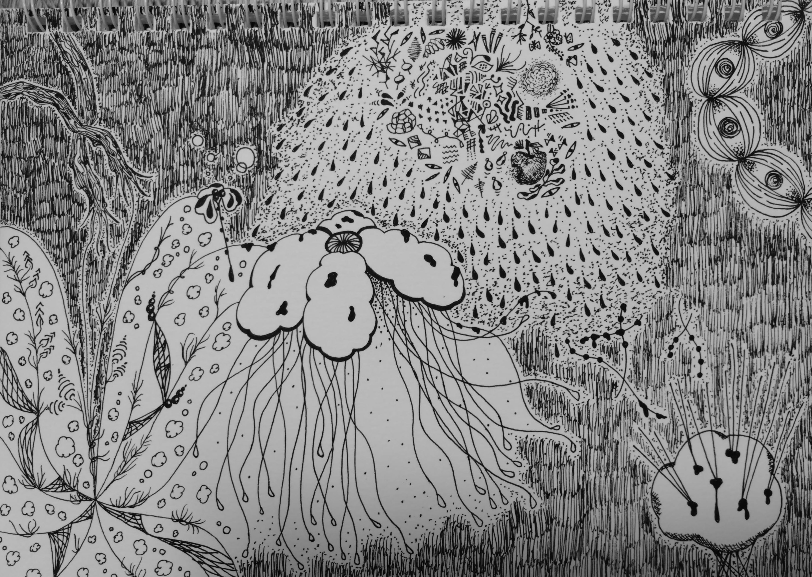
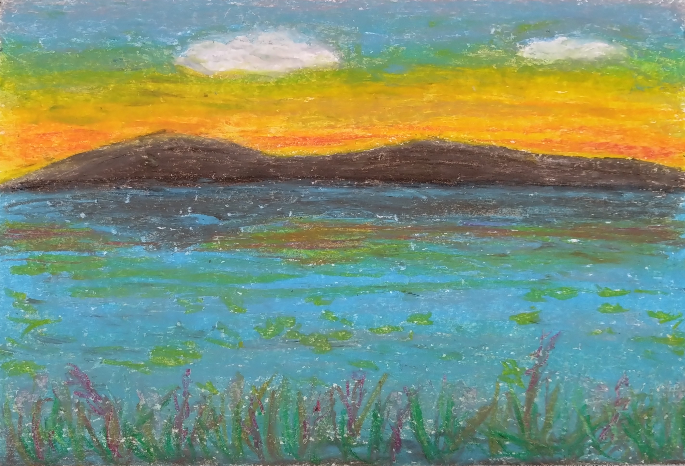
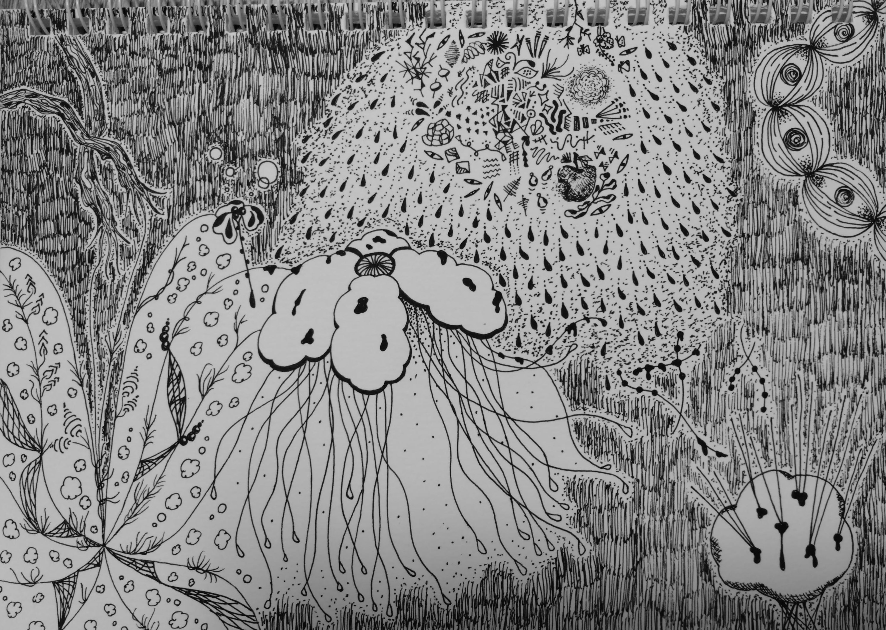
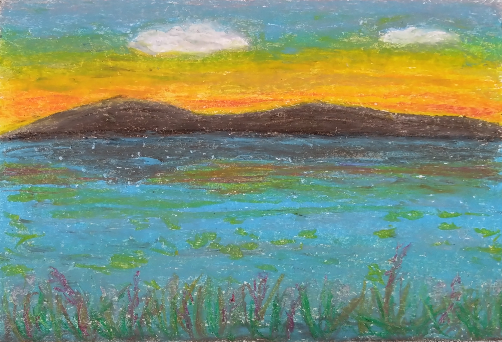

„ÅÇ„ÅÇ„ÅÇ„ÅÇ„ÅÇ„ÅÇ„ÅÇ„ÅÇ„ÅÇ„ÅÇ„ÅÇ„ÅÇ„ÅÇ„ÅÇ„ÅÇ„ÅÇ„ÅÇ„ÅÇ„ÅÇ„ÅÇ„ÅÇ„ÅÇ„ÅÇ„ÅÇ„ÅÇ„ÅÇ„ÅÇ„ÅÇ„ÅÇ„ÅÇ„ÅÇ„ÅÇ„ÅÇ„ÅÇ„ÅÇ„ÅÇ„ÅÇ„ÅÇ„ÅÇ„ÅÇ„ÅÇ„ÅÇ„ÅÇ„ÅÇ„ÅÇ„ÅÇ„ÅÇ„ÅÇ„ÅÇ„ÅÇ„ÅÇ„ÅÇ„ÅÇ„ÅÇ„ÅÇ„ÅÇ„ÅÇ„ÅÇ„ÅÇ„ÅÇ„ÅÇ„ÅÇ„ÅÇ„ÅÇ„ÅÇ„ÅÇ„ÅÇ„ÅÇ„ÅÇ„ÅÇ„ÅÇ„ÅÇ„ÅÇ„ÅÇ„ÅÇ„ÅÇ„ÅÇ„ÅÇ„ÅÇ„ÅÇ„ÅÇ„ÅÇ„ÅÇ„ÅÇ„ÅÇ„ÅÇ„ÅÇ„ÅÇ„ÅÇ„ÅÇ„ÅÇ„ÅÇ„ÅÇ„ÅÇ„ÅÇ„ÅÇ„ÅÇ„ÅÇ„ÅÇ„ÅÇ„ÅÇ„ÅÇ„ÅÇ„ÅÇ„ÅÇ„ÅÇ„ÅÇ„ÅÇ„ÅÇ„ÅÇ„ÅÇ„ÅÇ„ÅÇ„ÅÇ„ÅÇ„ÅÇ„ÅÇ„ÅÇ„ÅÇ„ÅÇ„ÅÇ„ÅÇ„ÅÇ„ÅÇ„ÅÇ„ÅÇ„ÅÇ„ÅÇ„ÅÇ„ÅÇ„ÅÇ„ÅÇ„ÅÇ„ÅÇ„ÅÇ„ÅÇ„ÅÇ„ÅÇ„ÅÇ„ÅÇ„ÅÇ„ÅÇ„ÅÇ„ÅÇ„ÅÇ„ÅÇ„ÅÇ„ÅÇ„ÅÇ„ÅÇ„ÅÇ„ÅÇ„ÅÇ„ÅÇ„ÅÇ„ÅÇ„ÅÇ„ÅÇ„ÅÇ„ÅÇ„ÅÇ„ÅÇ„ÅÇ„ÅÇ„ÅÇ„ÅÇ„ÅÇ„ÅÇ„ÅÇ„ÅÇ„ÅÇ„ÅÇ„ÅÇ„ÅÇ„ÅÇ„ÅÇ„ÅÇ„ÅÇ„ÅÇ„ÅÇ„ÅÇ„ÅÇ„ÅÇ„ÅÇ„ÅÇ„ÅÇ„ÅÇ„ÅÇ„ÅÇ„ÅÇ„ÅÇ„ÅÇ„ÅÇ„ÅÇ„ÅÇ„ÅÇ„ÅÇ„ÅÇ„ÅÇ„ÅÇ„ÅÇ„ÅÇ„ÅÇ„ÅÇ„ÅÇ„ÅÇ„ÅÇ„ÅÇ„ÅÇ„ÅÇ„ÅÇ„ÅÇ„ÅÇ„ÅÇ„ÅÇ„ÅÇ„ÅÇ„ÅÇ„ÅÇ„ÅÇ„ÅÇ„ÅÇ„ÅÇ„ÅÇ„ÅÇ„ÅÇ„ÅÇ„ÅÇ„ÅÇ„ÅÇ„ÅÇ„ÅÇ„ÅÇ„ÅÇ„ÅÇ„ÅÇ„ÅÇ„ÅÇ„ÅÇ„ÅÇ„ÅÇ„ÅÇ„ÅÇ„ÅÇ„ÅÇ„ÅÇ„ÅÇ„ÅÇ„ÅÇ„ÅÇ„ÅÇ„ÅÇ„ÅÇ„ÅÇ„ÅÇ„ÅÇ„ÅÇ„ÅÇ„ÅÇ„ÅÇ„ÅÇ„ÅÇ„ÅÇ„ÅÇ„ÅÇ„ÅÇ„ÅÇ„ÅÇ„ÅÇ„ÅÇ„ÅÇ„ÅÇ„ÅÇ„ÅÇ„ÅÇ„ÅÇ„ÅÇ„ÅÇ„ÅÇ„ÅÇ„ÅÇ„ÅÇ„ÅÇ„ÅÇ„ÅÇ„ÅÇ„ÅÇ„ÅÇ„ÅÇ„ÅÇ„ÅÇ„ÅÇ„ÅÇ„ÅÇ„ÅÇ„ÅÇ„ÅÇ„ÅÇ„ÅÇ„ÅÇ„ÅÇ„ÅÇ„ÅÇ„ÅÇ„ÅÇ„ÅÇ„ÅÇ„ÅÇ„ÅÇ„ÅÇ„ÅÇ„ÅÇ„ÅÇ„ÅÇ„ÅÇ„ÅÇ„ÅÇ„ÅÇ„ÅÇ„ÅÇ„ÅÇ„ÅÇ„ÅÇ„ÅÇ„ÅÇ„ÅÇ„ÅÇ„ÅÇ„ÅÇ„ÅÇ„ÅÇ„ÅÇ„ÅÇ„ÅÇ„ÅÇ„ÅÇ„ÅÇ„ÅÇ„ÅÇ„ÅÇ„ÅÇ„ÅÇ„ÅÇ„ÅÇ„ÅÇ„ÅÇ„ÅÇ„ÅÇ„ÅÇ„ÅÇ„ÅÇ„ÅÇ„ÅÇ„ÅÇ„ÅÇ„ÅÇ„ÅÇ„ÅÇ„ÅÇ„ÅÇ„ÅÇ„ÅÇ„ÅÇ„ÅÇ„ÅÇ„ÅÇ„ÅÇ„ÅÇ„ÅÇ„ÅÇ„ÅÇ„ÅÇ„ÅÇ„ÅÇ„ÅÇ„ÅÇ„ÅÇ„ÅÇ„ÅÇ„ÅÇ„ÅÇ„ÅÇ„ÅÇ„ÅÇ„ÅÇ„ÅÇ„ÅÇ„ÅÇ„ÅÇ„ÅÇ„ÅÇ„ÅÇ„ÅÇ„ÅÇ„ÅÇ„ÅÇ„ÅÇ„ÅÇ„ÅÇ„ÅÇ„ÅÇ„ÅÇ„ÅÇ„ÅÇ„ÅÇ„ÅÇ„ÅÇ„ÅÇ„ÅÇ„ÅÇ„ÅÇ„ÅÇ„ÅÇ„ÅÇ„ÅÇ„ÅÇ„ÅÇ„ÅÇ„ÅÇ„ÅÇ„ÅÇ„ÅÇ„ÅÇ„ÅÇ„ÅÇ„ÅÇ„ÅÇ„ÅÇ„ÅÇ„ÅÇ„ÅÇ„ÅÇ„ÅÇ„ÅÇ„ÅÇ„ÅÇ„ÅÇ„ÅÇ„ÅÇ„ÅÇ„ÅÇ„ÅÇ„ÅÇ„ÅÇ„ÅÇ„ÅÇ„ÅÇ„ÅÇ„ÅÇ„ÅÇ„ÅÇ„ÅÇ„ÅÇ„ÅÇ„ÅÇ„ÅÇ„ÅÇ„ÅÇ„ÅÇ„ÅÇ„ÅÇ„ÅÇ„ÅÇ„ÅÇ„ÅÇ„ÅÇ„ÅÇ„ÅÇ„ÅÇ„ÅÇ„ÅÇ„ÅÇ„ÅÇ„ÅÇ„ÅÇ„ÅÇ„ÅÇ„ÅÇ„ÅÇ„ÅÇ„ÅÇ„ÅÇ„ÅÇ„ÅÇ„ÅÇ„ÅÇ„ÅÇ„ÅÇ„ÅÇ„ÅÇ„ÅÇ„ÅÇ„ÅÇ„ÅÇ„ÅÇ„ÅÇ„ÅÇ„ÅÇ„ÅÇ„ÅÇ„ÅÇ„ÅÇ„ÅÇ„ÅÇ„ÅÇ„ÅÇ„ÅÇ„ÅÇ„ÅÇ„ÅÇ„ÅÇ„ÅÇ„ÅÇ„ÅÇ„ÅÇ„ÅÇ„ÅÇ„ÅÇ„ÅÇ„ÅÇ„ÅÇ„ÅÇ„ÅÇ„ÅÇ„ÅÇ„ÅÇ„ÅÇ„ÅÇ„ÅÇ„ÅÇ„ÅÇ„ÅÇ„ÅÇ„ÅÇ„ÅÇ„ÅÇ„ÅÇ„ÅÇ„ÅÇ„ÅÇ„ÅÇ„ÅÇ„ÅÇ„ÅÇ„ÅÇ„ÅÇ„ÅÇ„ÅÇ„ÅÇ„ÅÇ„ÅÇ„ÅÇ„ÅÇ„ÅÇ„ÅÇ„ÅÇ„ÅÇ„ÅÇ„ÅÇ„ÅÇ„ÅÇ„ÅÇ„ÅÇ„ÅÇ„ÅÇ„ÅÇ„ÅÇ„ÅÇ„ÅÇ„ÅÇ„ÅÇ„ÅÇ„ÅÇ„ÅÇ„ÅÇ„ÅÇ„ÅÇ„ÅÇ„ÅÇ„ÅÇ„ÅÇ„ÅÇ„ÅÇ„ÅÇ„ÅÇ„ÅÇ„ÅÇ„ÅÇ„ÅÇ„ÅÇ„ÅÇ„ÅÇ„ÅÇ„ÅÇ„ÅÇ„ÅÇ„ÅÇ„ÅÇ„ÅÇ„ÅÇ„ÅÇ„ÅÇ„ÅÇ„ÅÇ„ÅÇ„ÅÇ„ÅÇ„ÅÇ„ÅÇ„ÅÇ„ÅÇ„ÅÇ„ÅÇ„ÅÇ„ÅÇ„ÅÇ„ÅÇ„ÅÇ„ÅÇ„ÅÇ„ÅÇ„ÅÇ„ÅÇ„ÅÇ„ÅÇ„ÅÇ„ÅÇ„ÅÇ„ÅÇ„ÅÇ„ÅÇ„ÅÇ„ÅÇ„ÅÇ„ÅÇ„ÅÇ„ÅÇ„ÅÇ„ÅÇ„ÅÇ„ÅÇ„ÅÇ„ÅÇ„ÅÇ„ÅÇ„ÅÇ„ÅÇ„ÅÇ„ÅÇ„ÅÇ„ÅÇ„ÅÇ„ÅÇ„ÅÇ„ÅÇ„ÅÇ„ÅÇ„ÅÇ„ÅÇ„ÅÇ„ÅÇ„ÅÇ„ÅÇ„ÅÇ„ÅÇ„ÅÇ„ÅÇ„ÅÇ„ÅÇ„ÅÇ„ÅÇ„ÅÇ„ÅÇ„ÅÇ„ÅÇ„ÅÇ„ÅÇ„ÅÇ„ÅÇ„ÅÇ„ÅÇ„ÅÇ„ÅÇ„ÅÇ„ÅÇ„ÅÇ„ÅÇ„ÅÇ„ÅÇ„ÅÇ„ÅÇ„ÅÇ„ÅÇ„ÅÇ„ÅÇ„ÅÇ„ÅÇ„ÅÇ„ÅÇ„ÅÇ„ÅÇ„ÅÇ„ÅÇ„ÅÇ„ÅÇ„ÅÇ„ÅÇ„ÅÇ„ÅÇ„ÅÇ„ÅÇ„ÅÇ„ÅÇ„ÅÇ„ÅÇ„ÅÇ„ÅÇ„ÅÇ„ÅÇ„ÅÇ„ÅÇ„ÅÇ„ÅÇ„ÅÇ„ÅÇ„ÅÇ„ÅÇ„ÅÇ„ÅÇ„ÅÇ„ÅÇ„ÅÇ„ÅÇ„ÅÇ„ÅÇ„ÅÇ„ÅÇ„ÅÇ„ÅÇ„ÅÇ„ÅÇ„ÅÇ„ÅÇ„ÅÇ„ÅÇ„ÅÇ„ÅÇ„ÅÇ„ÅÇ„ÅÇ„ÅÇ„ÅÇ„ÅÇ„ÅÇ„ÅÇ„ÅÇ„ÅÇ„ÅÇ„ÅÇ„ÅÇ„ÅÇ„ÅÇ„ÅÇ„ÅÇ„ÅÇ„ÅÇ„ÅÇ„ÅÇ„ÅÇ„ÅÇ„ÅÇ„ÅÇ„ÅÇ„ÅÇ„ÅÇ„ÅÇ„ÅÇ„ÅÇ„ÅÇ„ÅÇ„ÅÇ„ÅÇ„ÅÇ„ÅÇ„ÅÇ„ÅÇ„ÅÇ„ÅÇ„ÅÇ„ÅÇ„ÅÇ„ÅÇ„ÅÇ„ÅÇ„ÅÇ„ÅÇ„ÅÇ„ÅÇ„ÅÇ„ÅÇ„ÅÇ„ÅÇ„ÅÇ„ÅÇ„ÅÇ„ÅÇ„ÅÇ„ÅÇ„ÅÇ„ÅÇ„ÅÇ„ÅÇ„ÅÇ„ÅÇ„ÅÇ„ÅÇ„ÅÇ„ÅÇ„ÅÇ„ÅÇ„ÅÇ„ÅÇ„ÅÇ„ÅÇ„ÅÇ„ÅÇ„ÅÇ„ÅÇ„ÅÇ„ÅÇ„ÅÇ„ÅÇ„ÅÇ„ÅÇ„ÅÇ„ÅÇ„ÅÇ„ÅÇ„ÅÇ„ÅÇ„ÅÇ„ÅÇ„ÅÇ„ÅÇ„ÅÇ„ÅÇ„ÅÇ„ÅÇ„ÅÇ„ÅÇ„ÅÇ„ÅÇ„ÅÇ„ÅÇ„ÅÇ„ÅÇ„ÅÇ„ÅÇ„ÅÇ„ÅÇ„ÅÇ„ÅÇ„ÅÇ„ÅÇ„ÅÇ„ÅÇ„ÅÇ„ÅÇ„ÅÇ„ÅÇ„ÅÇ„ÅÇ„ÅÇ„ÅÇ„ÅÇ„ÅÇ„ÅÇ„ÅÇ„ÅÇ„ÅÇ„ÅÇ„ÅÇ„ÅÇ„ÅÇ„ÅÇ„ÅÇ„ÅÇ„ÅÇ„ÅÇ„ÅÇ„ÅÇ„ÅÇ„ÅÇ„ÅÇ„ÅÇ„ÅÇ„ÅÇ„ÅÇ„ÅÇ„ÅÇ„ÅÇ„ÅÇ„ÅÇ„ÅÇ„ÅÇ„ÅÇ„ÅÇ„ÅÇ„ÅÇ„ÅÇ„ÅÇ„ÅÇ„ÅÇ„ÅÇ„ÅÇ„ÅÇ„ÅÇ„ÅÇ„ÅÇ„ÅÇ„ÅÇ„ÅÇ„ÅÇ„ÅÇ„ÅÇ„ÅÇ„ÅÇ„ÅÇ„ÅÇ„ÅÇ„ÅÇ„ÅÇ„ÅÇ„ÅÇ„ÅÇ„ÅÇ„ÅÇ„ÅÇ„ÅÇ„ÅÇ„ÅÇ„ÅÇ„ÅÇ„ÅÇ„ÅÇ„ÅÇ„ÅÇ„ÅÇ„ÅÇ„ÅÇ„ÅÇ„ÅÇ„ÅÇ„ÅÇ„ÅÇ„ÅÇ„ÅÇ„ÅÇ„ÅÇ„ÅÇ„ÅÇ„ÅÇ„ÅÇ„ÅÇ„ÅÇ„ÅÇ„ÅÇ„ÅÇ„ÅÇ„ÅÇ„ÅÇ„ÅÇ„ÅÇ„ÅÇ„ÅÇ„ÅÇ„ÅÇ„ÅÇ„ÅÇ„ÅÇ„ÅÇ„ÅÇ„ÅÇ„ÅÇ„ÅÇ„ÅÇ„ÅÇ„ÅÇ„ÅÇ„ÅÇ„ÅÇ„ÅÇ„ÅÇ„ÅÇ„ÅÇ„ÅÇ„ÅÇ„ÅÇ„ÅÇ„ÅÇ„ÅÇ„ÅÇ„ÅÇ„ÅÇ„ÅÇ„ÅÇ„ÅÇ„ÅÇ„ÅÇ„ÅÇ„ÅÇ„ÅÇ„ÅÇ„ÅÇ„ÅÇ„ÅÇ„ÅÇ„ÅÇ„ÅÇ„ÅÇ„ÅÇ„ÅÇ„ÅÇ„ÅÇ„ÅÇ„ÅÇ„ÅÇ„ÅÇ„ÅÇ„ÅÇ„ÅÇ„ÅÇ„ÅÇ„ÅÇ„ÅÇ„ÅÇ„ÅÇ„ÅÇ„ÅÇ„ÅÇ„ÅÇ„ÅÇ„ÅÇ„ÅÇ„ÅÇ„ÅÇ„ÅÇ„ÅÇ„ÅÇ„ÅÇ„ÅÇ„ÅÇ„ÅÇ„ÅÇ„ÅÇ„ÅÇ„ÅÇ„ÅÇ„ÅÇ„ÅÇ„ÅÇ„ÅÇ„ÅÇ„ÅÇ„ÅÇ„ÅÇ„ÅÇ„ÅÇ„ÅÇ„ÅÇ„ÅÇ„ÅÇ„ÅÇ„ÅÇ„ÅÇ„ÅÇ„ÅÇ„ÅÇ„ÅÇ„ÅÇ„ÅÇ„ÅÇ„ÅÇ„ÅÇ„ÅÇ„ÅÇ„ÅÇ„ÅÇ„ÅÇ„ÅÇ„ÅÇ„ÅÇ„ÅÇ„ÅÇ„ÅÇ„ÅÇ„ÅÇ„ÅÇ„ÅÇ„ÅÇ„ÅÇ„ÅÇ„ÅÇ„ÅÇ„ÅÇ„ÅÇ„ÅÇ„ÅÇ„ÅÇ„ÅÇ„ÅÇ„ÅÇ„ÅÇ„ÅÇ„ÅÇ„ÅÇ„ÅÇ„ÅÇ„ÅÇ„ÅÇ„ÅÇ„ÅÇ„ÅÇ„ÅÇ„ÅÇ„ÅÇ„ÅÇ„ÅÇ„ÅÇ„ÅÇ„ÅÇ„ÅÇ„ÅÇ„ÅÇ„ÅÇ„ÅÇ„ÅÇ„ÅÇ„ÅÇ„ÅÇ„ÅÇ„ÅÇ„ÅÇ„ÅÇ„ÅÇ„ÅÇ„ÅÇ„ÅÇ„ÅÇ„ÅÇ„ÅÇ„ÅÇ„ÅÇ„ÅÇ„ÅÇ„ÅÇ„ÅÇ„ÅÇ„ÅÇ„ÅÇ„ÅÇ„ÅÇ„ÅÇ„ÅÇ„ÅÇ„ÅÇ„ÅÇ„ÅÇ„ÅÇ„ÅÇ„ÅÇ„ÅÇ„ÅÇ„ÅÇ„ÅÇ„ÅÇ„ÅÇ„ÅÇ„ÅÇ„ÅÇ„ÅÇ„ÅÇ„ÅÇ„ÅÇ„ÅÇ„ÅÇ„ÅÇ„ÅÇ„ÅÇ„ÅÇ„ÅÇ„ÅÇ„ÅÇ„ÅÇ„ÅÇ„ÅÇ„ÅÇ„ÅÇ„ÅÇ„ÅÇ„ÅÇ„ÅÇ„ÅÇ„ÅÇ„ÅÇ„ÅÇ„ÅÇ„ÅÇ„ÅÇ„ÅÇ„ÅÇ„ÅÇ„ÅÇ„ÅÇ„ÅÇ„ÅÇ„ÅÇ„ÅÇ„ÅÇ„ÅÇ„ÅÇ„ÅÇ„ÅÇ„ÅÇ„ÅÇ„ÅÇ„ÅÇ„ÅÇ„ÅÇ„ÅÇ„ÅÇ„ÅÇ„ÅÇ„ÅÇ„ÅÇ„ÅÇ„ÅÇ„ÅÇ„ÅÇ„ÅÇ„ÅÇ„ÅÇ„ÅÇ„ÅÇ„ÅÇ„ÅÇ„ÅÇ„ÅÇ„ÅÇ„ÅÇ„ÅÇ„ÅÇ„ÅÇ„ÅÇ„ÅÇ„ÅÇ„ÅÇ„ÅÇ„ÅÇ„ÅÇ„ÅÇ„ÅÇ„ÅÇ„ÅÇ„ÅÇ„ÅÇ„ÅÇ„ÅÇ„ÅÇ„ÅÇ„ÅÇ„ÅÇ„ÅÇ„ÅÇ„ÅÇ„ÅÇ„ÅÇ„ÅÇ„ÅÇ„ÅÇ„ÅÇ„ÅÇ„ÅÇ„ÅÇ„ÅÇ„ÅÇ„ÅÇ„ÅÇ„ÅÇ„ÅÇ„ÅÇ„ÅÇ„ÅÇ„ÅÇ„ÅÇ„ÅÇ„ÅÇ„ÅÇ„ÅÇ„ÅÇ„ÅÇ„ÅÇ„ÅÇ„ÅÇ„ÅÇ„ÅÇ„ÅÇ„ÅÇ„ÅÇ„ÅÇ„ÅÇ„ÅÇ„ÅÇ„ÅÇ„ÅÇ„ÅÇ„ÅÇ„ÅÇ„ÅÇ„ÅÇ„ÅÇ„ÅÇ„ÅÇ„ÅÇ„ÅÇ„ÅÇ„ÅÇ„ÅÇ„ÅÇ„ÅÇ„ÅÇ„ÅÇ„ÅÇ„ÅÇ„ÅÇ„ÅÇ„ÅÇ„ÅÇ„ÅÇ„ÅÇ„ÅÇ„ÅÇ„ÅÇ„ÅÇ„ÅÇ„ÅÇ„ÅÇ„ÅÇ„ÅÇ„ÅÇ„ÅÇ„ÅÇ„ÅÇ„ÅÇ„ÅÇ„ÅÇ„ÅÇ„ÅÇ„ÅÇ„ÅÇ„ÅÇ„ÅÇ„ÅÇ„ÅÇ„ÅÇ„ÅÇ„ÅÇ„ÅÇ„ÅÇ„ÅÇ„ÅÇ„ÅÇ„ÅÇ„ÅÇ„ÅÇ„ÅÇ„ÅÇ„ÅÇ„ÅÇ„ÅÇ„ÅÇ„ÅÇ„ÅÇ„ÅÇ„ÅÇ„ÅÇ„ÅÇ„ÅÇ„ÅÇ„ÅÇ„ÅÇ„ÅÇ„ÅÇ„ÅÇ„ÅÇ„ÅÇ„ÅÇ„ÅÇ„ÅÇ„ÅÇ„ÅÇ„ÅÇ„ÅÇ„ÅÇ„ÅÇ„ÅÇ„ÅÇ„ÅÇ„ÅÇ„ÅÇ„ÅÇ„ÅÇ„ÅÇ„ÅÇ„ÅÇ„ÅÇ„ÅÇ„ÅÇ„ÅÇ„ÅÇ„ÅÇ„ÅÇ„ÅÇ„ÅÇ„ÅÇ„ÅÇ„ÅÇ„ÅÇ„ÅÇ„ÅÇ„ÅÇ„ÅÇ„ÅÇ„ÅÇ„ÅÇ„ÅÇ„ÅÇ„ÅÇ„ÅÇ„ÅÇ„ÅÇ„ÅÇ„ÅÇ„ÅÇ„ÅÇ„ÅÇ„ÅÇ„ÅÇ„ÅÇ„ÅÇ„ÅÇ„ÅÇ„ÅÇ„ÅÇ„ÅÇ„ÅÇ„ÅÇ„ÅÇ„ÅÇ„ÅÇ„ÅÇ„ÅÇ„ÅÇ„ÅÇ„ÅÇ„ÅÇ„ÅÇ„ÅÇ„ÅÇ„ÅÇ„ÅÇ„ÅÇ„ÅÇ„ÅÇ„ÅÇ„ÅÇ„ÅÇ„ÅÇ„ÅÇ„ÅÇ„ÅÇ„ÅÇ„ÅÇ„ÅÇ„ÅÇ„ÅÇ„ÅÇ„ÅÇ„ÅÇ„ÅÇ„ÅÇ„ÅÇ„ÅÇ„ÅÇ„ÅÇ„ÅÇ„ÅÇ„ÅÇ„ÅÇ„ÅÇ„ÅÇ„ÅÇ„ÅÇ„ÅÇ„ÅÇ„ÅÇ„ÅÇ„ÅÇ„ÅÇ„ÅÇ„ÅÇ„ÅÇ„ÅÇ„ÅÇ„ÅÇ„ÅÇ„ÅÇ„ÅÇ„ÅÇ„ÅÇ„ÅÇ„ÅÇ„ÅÇ„ÅÇ„ÅÇ„ÅÇ„ÅÇ„ÅÇ„ÅÇ„ÅÇ„ÅÇ„ÅÇ„ÅÇ„ÅÇ„ÅÇ„ÅÇ„ÅÇ„ÅÇ„ÅÇ„ÅÇ„ÅÇ„ÅÇ„ÅÇ„ÅÇ„ÅÇ„ÅÇ„ÅÇ„ÅÇ„ÅÇ„ÅÇ„ÅÇ„ÅÇ„ÅÇ„ÅÇ„ÅÇ„ÅÇ„ÅÇ„ÅÇ„ÅÇ„ÅÇ„ÅÇ„ÅÇ„ÅÇ„ÅÇ„ÅÇ„ÅÇ„ÅÇ„ÅÇ„ÅÇ„ÅÇ„ÅÇ„ÅÇ„ÅÇ„ÅÇ„ÅÇ„ÅÇ„ÅÇ„ÅÇ„ÅÇ„ÅÇ„ÅÇ„ÅÇ„ÅÇ„ÅÇ„ÅÇ„ÅÇ„ÅÇ„ÅÇ„ÅÇ„ÅÇ„ÅÇ„ÅÇ„ÅÇ„ÅÇ„ÅÇ„ÅÇ„ÅÇ„ÅÇ„ÅÇ„ÅÇ„ÅÇ„ÅÇ„ÅÇ„ÅÇ„ÅÇ„ÅÇ„ÅÇ„ÅÇ„ÅÇ„ÅÇ„ÅÇ„ÅÇ„ÅÇ„ÅÇ„ÅÇ„ÅÇ„ÅÇ„ÅÇ„ÅÇ„ÅÇ„ÅÇ„ÅÇ„ÅÇ„ÅÇ„ÅÇ„ÅÇ„ÅÇ„ÅÇ„ÅÇ„ÅÇ„ÅÇ„ÅÇ„ÅÇ„ÅÇ„ÅÇ„ÅÇ„ÅÇ„ÅÇ„ÅÇ„ÅÇ„ÅÇ„ÅÇ„ÅÇ„ÅÇ„ÅÇ„ÅÇ„ÅÇ„ÅÇ„ÅÇ„ÅÇ„ÅÇ„ÅÇ„ÅÇ„ÅÇ„ÅÇ„ÅÇ„ÅÇ„ÅÇ„ÅÇ„ÅÇ„ÅÇ„ÅÇ„ÅÇ„ÅÇ„ÅÇ„ÅÇ„ÅÇ„ÅÇ„ÅÇ„ÅÇ„ÅÇ„ÅÇ„ÅÇ„ÅÇ„ÅÇ„ÅÇ„ÅÇ„ÅÇ„ÅÇ„ÅÇ„ÅÇ„ÅÇ„ÅÇ„ÅÇ„ÅÇ„ÅÇ„ÅÇ„ÅÇ„ÅÇ„ÅÇ„ÅÇ„ÅÇ„ÅÇ„ÅÇ„ÅÇ„ÅÇ„ÅÇ„ÅÇ„ÅÇ„ÅÇ„ÅÇ„ÅÇ„ÅÇ„ÅÇ„ÅÇ„ÅÇ„ÅÇ„ÅÇ„ÅÇ„ÅÇ„ÅÇ„ÅÇ„ÅÇ„ÅÇ„ÅÇ„ÅÇ„ÅÇ„ÅÇ„ÅÇ„ÅÇ„ÅÇ„ÅÇ„ÅÇ„ÅÇ„ÅÇ„ÅÇ„ÅÇ„ÅÇ„ÅÇ„ÅÇ„ÅÇ„ÅÇ„ÅÇ„ÅÇ„ÅÇ„ÅÇ„ÅÇ„ÅÇ„ÅÇ„ÅÇ„ÅÇ„ÅÇ„ÅÇ„ÅÇ„ÅÇ„ÅÇ„ÅÇ„ÅÇ„ÅÇ„ÅÇ„ÅÇ„ÅÇ„ÅÇ„ÅÇ„ÅÇ„ÅÇ„ÅÇ„ÅÇ„ÅÇ„ÅÇ„ÅÇ„ÅÇ„ÅÇ„ÅÇ„ÅÇ„ÅÇ„ÅÇ„ÅÇ„ÅÇ„ÅÇ„ÅÇ„ÅÇ„ÅÇ„ÅÇ„ÅÇ„ÅÇ„ÅÇ„ÅÇ„ÅÇ„ÅÇ„ÅÇ„ÅÇ„ÅÇ„ÅÇ„ÅÇ„ÅÇ„ÅÇ„ÅÇ„ÅÇ„ÅÇ„ÅÇ„ÅÇ„ÅÇ„ÅÇ„ÅÇ„ÅÇ„ÅÇ„ÅÇ„ÅÇ„ÅÇ„ÅÇ„ÅÇ„ÅÇ„ÅÇ„ÅÇ„ÅÇ„ÅÇ„ÅÇ„ÅÇ„ÅÇ„ÅÇ„ÅÇ„ÅÇ„ÅÇ„ÅÇ„ÅÇ„ÅÇ„ÅÇ„ÅÇ„ÅÇ„ÅÇ„ÅÇ„ÅÇ„ÅÇ„ÅÇ„ÅÇ„ÅÇ„ÅÇ„ÅÇ„ÅÇ„ÅÇ„ÅÇ„ÅÇ„ÅÇ„ÅÇ„ÅÇ„ÅÇ„ÅÇ„ÅÇ„ÅÇ„ÅÇ„ÅÇ„ÅÇ„ÅÇ„ÅÇ„ÅÇ„ÅÇ„ÅÇ„ÅÇ„ÅÇ„ÅÇ„ÅÇ„ÅÇ„ÅÇ„ÅÇ„ÅÇ„ÅÇ„ÅÇ„ÅÇ„ÅÇ„ÅÇ„ÅÇ„ÅÇ„ÅÇ„ÅÇ„ÅÇ„ÅÇ„ÅÇ„ÅÇ„ÅÇ„ÅÇ„ÅÇ„ÅÇ„ÅÇ„ÅÇ„ÅÇ„ÅÇ„ÅÇ„ÅÇ„ÅÇ„ÅÇ„ÅÇ„ÅÇ„ÅÇ„ÅÇ„ÅÇ„ÅÇ„ÅÇ„ÅÇ„ÅÇ„ÅÇ„ÅÇ„ÅÇ„ÅÇ„ÅÇ„ÅÇ„ÅÇ„ÅÇ„ÅÇ„ÅÇ„ÅÇ„ÅÇ„ÅÇ„ÅÇ„ÅÇ„ÅÇ„ÅÇ„ÅÇ„ÅÇ„ÅÇ„ÅÇ„ÅÇ„ÅÇ„ÅÇ„ÅÇ„ÅÇ„ÅÇ„ÅÇ„ÅÇ„ÅÇ„ÅÇ„ÅÇ„ÅÇ„ÅÇ„ÅÇ„ÅÇ„ÅÇ„ÅÇ„ÅÇ„ÅÇ„ÅÇ„ÅÇ„ÅÇ„ÅÇ„ÅÇ„ÅÇ„ÅÇ„ÅÇ„ÅÇ„ÅÇ„ÅÇ„ÅÇ„ÅÇ„ÅÇ„ÅÇ„ÅÇ„ÅÇ„ÅÇ„ÅÇ„ÅÇ„ÅÇ„ÅÇ„ÅÇ„ÅÇ„ÅÇ„ÅÇ„ÅÇ„ÅÇ„ÅÇ„ÅÇ„ÅÇ„ÅÇ„ÅÇ„ÅÇ„ÅÇ„ÅÇ„ÅÇ„ÅÇ„ÅÇ„ÅÇ„ÅÇ„ÅÇ„ÅÇ„ÅÇ„ÅÇ„ÅÇ„ÅÇ„ÅÇ„ÅÇ„ÅÇ„ÅÇ„ÅÇ„ÅÇ„ÅÇ„ÅÇ„ÅÇ„ÅÇ„ÅÇ„ÅÇ„ÅÇ„ÅÇ„ÅÇ„ÅÇ„ÅÇ„ÅÇ„ÅÇ„ÅÇ„ÅÇ„ÅÇ„ÅÇ„ÅÇ„ÅÇ„ÅÇ„ÅÇ„ÅÇ„ÅÇ„ÅÇ„ÅÇ„ÅÇ„ÅÇ„ÅÇ„ÅÇ„ÅÇ„ÅÇ„ÅÇ„ÅÇ„ÅÇ„ÅÇ„ÅÇ„ÅÇ„ÅÇ„ÅÇ„ÅÇ„ÅÇ„ÅÇ„ÅÇ„ÅÇ„ÅÇ„ÅÇ„ÅÇ„ÅÇ„ÅÇ„ÅÇ„ÅÇ„ÅÇ„ÅÇ„ÅÇ„ÅÇ„ÅÇ„ÅÇ„ÅÇ„ÅÇ„ÅÇ„ÅÇ„ÅÇ„ÅÇ„ÅÇ„ÅÇ„ÅÇ„ÅÇ„ÅÇ„ÅÇ„ÅÇ„ÅÇ„ÅÇ„ÅÇ„ÅÇ„ÅÇ„ÅÇ„ÅÇ„ÅÇ„ÅÇ„ÅÇ„ÅÇ„ÅÇ„ÅÇ„ÅÇ„ÅÇ„ÅÇ„ÅÇ„ÅÇ„ÅÇ„ÅÇ„ÅÇ„ÅÇ„ÅÇ„ÅÇ„ÅÇ„ÅÇ„ÅÇ„ÅÇ„ÅÇ„ÅÇ„ÅÇ„ÅÇ„ÅÇ„ÅÇ„ÅÇ„ÅÇ„ÅÇ„ÅÇ„ÅÇ„ÅÇ„ÅÇ„ÅÇ„ÅÇ„ÅÇ„ÅÇ„ÅÇ„ÅÇ„ÅÇ„ÅÇ„ÅÇ„ÅÇ„ÅÇ„ÅÇ„ÅÇ„ÅÇ„ÅÇ„ÅÇ„ÅÇ„ÅÇ„ÅÇ„ÅÇ„ÅÇ„ÅÇ„ÅÇ„ÅÇ„ÅÇ„ÅÇ„ÅÇ„ÅÇ„ÅÇ„ÅÇ„ÅÇ„ÅÇ„ÅÇ„ÅÇ„ÅÇ„ÅÇ„ÅÇ„ÅÇ„ÅÇ„ÅÇ„ÅÇ„ÅÇ„ÅÇ„ÅÇ„ÅÇ„ÅÇ„ÅÇ„ÅÇ„ÅÇ„ÅÇ„ÅÇ„ÅÇ„ÅÇ„ÅÇ„ÅÇ„ÅÇ„ÅÇ„ÅÇ„ÅÇ„ÅÇ„ÅÇ„ÅÇ„ÅÇ„ÅÇ„ÅÇ„ÅÇ„ÅÇ„ÅÇ„ÅÇ„ÅÇ„ÅÇ„ÅÇ„ÅÇ„ÅÇ„ÅÇ„ÅÇ„ÅÇ„ÅÇ„ÅÇ„ÅÇ„ÅÇ„ÅÇ„ÅÇ„ÅÇ„ÅÇ„ÅÇ„ÅÇ„ÅÇ„ÅÇ„ÅÇ„ÅÇ„ÅÇ„ÅÇ„ÅÇ„ÅÇ„ÅÇ„ÅÇ„ÅÇ„ÅÇ„ÅÇ„ÅÇ„ÅÇ„ÅÇ„ÅÇ„ÅÇ„ÅÇ„ÅÇ„ÅÇ„ÅÇ„ÅÇ„ÅÇ„ÅÇ„ÅÇ„ÅÇ„ÅÇ„ÅÇ„ÅÇ„ÅÇ„ÅÇ„ÅÇ„ÅÇ„ÅÇ„ÅÇ„ÅÇ„ÅÇ„ÅÇ„ÅÇ„ÅÇ„ÅÇ„ÅÇ„ÅÇ„ÅÇ„ÅÇ„ÅÇ„ÅÇ„ÅÇ„ÅÇ„ÅÇ„ÅÇ„ÅÇ„ÅÇ„ÅÇ„ÅÇ„ÅÇ„ÅÇ„ÅÇ„ÅÇ„ÅÇ„ÅÇ„ÅÇ„ÅÇ„ÅÇ„ÅÇ„ÅÇ„ÅÇ„ÅÇ„ÅÇ„ÅÇ„ÅÇ„ÅÇ„ÅÇ„ÅÇ„ÅÇ„ÅÇ„ÅÇ„ÅÇ„ÅÇ„ÅÇ„ÅÇ„ÅÇ„ÅÇ„ÅÇ„ÅÇ„ÅÇ„ÅÇ„ÅÇ„ÅÇ„ÅÇ„ÅÇ„ÅÇ„ÅÇ„ÅÇ„ÅÇ„ÅÇ„ÅÇ„ÅÇ„ÅÇ„ÅÇ„ÅÇ„ÅÇ„ÅÇ„ÅÇ„ÅÇ„ÅÇ„ÅÇ„ÅÇ„ÅÇ„ÅÇ„ÅÇ„ÅÇ„ÅÇ„ÅÇ„ÅÇ„ÅÇ„ÅÇ„ÅÇ„ÅÇ„ÅÇ„ÅÇ„ÅÇ„ÅÇ„ÅÇ„ÅÇ„ÅÇ„ÅÇ„ÅÇ„ÅÇ„ÅÇ„ÅÇ„ÅÇ„ÅÇ„ÅÇ„ÅÇ„ÅÇ„ÅÇ„ÅÇ„ÅÇ„ÅÇ„ÅÇ„ÅÇ„ÅÇ„ÅÇ„ÅÇ„ÅÇ„ÅÇ„ÅÇ„ÅÇ„ÅÇ„ÅÇ„ÅÇ„ÅÇ„ÅÇ„ÅÇ„ÅÇ„ÅÇ„ÅÇ„ÅÇ„ÅÇ„ÅÇ„ÅÇ„ÅÇ„ÅÇ„ÅÇ„ÅÇ„ÅÇ„ÅÇ„ÅÇ„ÅÇ„ÅÇ„ÅÇ„ÅÇ„ÅÇ„ÅÇ„ÅÇ„ÅÇ„ÅÇ„ÅÇ„ÅÇ„ÅÇ„ÅÇ„ÅÇ„ÅÇ„ÅÇ„ÅÇ„ÅÇ„ÅÇ„ÅÇ„ÅÇ„ÅÇ„ÅÇ„ÅÇ„ÅÇ„ÅÇ„ÅÇ„ÅÇ„ÅÇ„ÅÇ„ÅÇ„ÅÇ„ÅÇ„ÅÇ„ÅÇ„ÅÇ„ÅÇ„ÅÇ„ÅÇ„ÅÇ„ÅÇ„ÅÇ„ÅÇ„ÅÇ„ÅÇ„ÅÇ„ÅÇ„ÅÇ„ÅÇ„ÅÇ„ÅÇ„ÅÇ„ÅÇ„ÅÇ„ÅÇ„ÅÇ„ÅÇ„ÅÇ„ÅÇ„ÅÇ„ÅÇ„ÅÇ„ÅÇ„ÅÇ„ÅÇ„ÅÇ„ÅÇ„ÅÇ„ÅÇ„ÅÇ„ÅÇ„ÅÇ„ÅÇ„ÅÇ„ÅÇ„ÅÇ„ÅÇ„ÅÇ„ÅÇ„ÅÇ„ÅÇ„ÅÇ„ÅÇ„ÅÇ„ÅÇ„ÅÇ„ÅÇ„ÅÇ„ÅÇ„ÅÇ„ÅÇ„ÅÇ„ÅÇ„ÅÇ„ÅÇ„ÅÇ„ÅÇ„ÅÇ„ÅÇ„ÅÇ„ÅÇ„ÅÇ„ÅÇ„ÅÇ„ÅÇ„ÅÇ„ÅÇ„ÅÇ„ÅÇ„ÅÇ„ÅÇ„ÅÇ„ÅÇ„ÅÇ„ÅÇ„ÅÇ„ÅÇ„ÅÇ„ÅÇ„ÅÇ„ÅÇ„ÅÇ„ÅÇ„ÅÇ„ÅÇ„ÅÇ„ÅÇ„ÅÇ„ÅÇ„ÅÇ„ÅÇ„ÅÇ„ÅÇ„ÅÇ„ÅÇ„ÅÇ„ÅÇ„ÅÇ„ÅÇ„ÅÇ„ÅÇ„ÅÇ„ÅÇ„ÅÇ„ÅÇ„ÅÇ„ÅÇ„ÅÇ„ÅÇ„ÅÇ„ÅÇ„ÅÇ„ÅÇ„ÅÇ„ÅÇ„ÅÇ„ÅÇ„ÅÇ„ÅÇ„ÅÇ„ÅÇ„ÅÇ„ÅÇ„ÅÇ„ÅÇ„ÅÇ„ÅÇ„ÅÇ„ÅÇ„ÅÇ„ÅÇ„ÅÇ„ÅÇ„ÅÇ„ÅÇ„ÅÇ„ÅÇ„ÅÇ„ÅÇ„ÅÇ„ÅÇ„ÅÇ„ÅÇ„ÅÇ„ÅÇ„ÅÇ„ÅÇ„ÅÇ„ÅÇ„ÅÇ„ÅÇ„ÅÇ„ÅÇ„ÅÇ„ÅÇ„ÅÇ„ÅÇ„ÅÇ„ÅÇ„ÅÇ„ÅÇ„ÅÇ„ÅÇ„ÅÇ„ÅÇ„ÅÇ„ÅÇ„ÅÇ„ÅÇ„ÅÇ„ÅÇ„ÅÇ„ÅÇ„ÅÇ„ÅÇ„ÅÇ„ÅÇ„ÅÇ„ÅÇ„ÅÇ„ÅÇ„ÅÇ„ÅÇ„ÅÇ„ÅÇ„ÅÇ„ÅÇ„ÅÇ„ÅÇ„ÅÇ„ÅÇ„ÅÇ„ÅÇ„ÅÇ„ÅÇ„ÅÇ„ÅÇ„ÅÇ„ÅÇ„ÅÇ„ÅÇ„ÅÇ„ÅÇ„ÅÇ„ÅÇ„ÅÇ„ÅÇ„ÅÇ„ÅÇ„ÅÇ„ÅÇ„ÅÇ„ÅÇ„ÅÇ„ÅÇ„ÅÇ„ÅÇ„ÅÇ„ÅÇ„ÅÇ„ÅÇ„ÅÇ„ÅÇ„ÅÇ„ÅÇ„ÅÇ„ÅÇ„ÅÇ„ÅÇ„ÅÇ„ÅÇ„ÅÇ„ÅÇ„ÅÇ„ÅÇ„ÅÇ„ÅÇ„ÅÇ„ÅÇ„ÅÇ„ÅÇ„ÅÇ„ÅÇ„ÅÇ„ÅÇ„ÅÇ„ÅÇ„ÅÇ„ÅÇ„ÅÇ„ÅÇ„ÅÇ„ÅÇ„ÅÇ„ÅÇ„ÅÇ„ÅÇ„ÅÇ„ÅÇ„ÅÇ„ÅÇ„ÅÇ„ÅÇ„ÅÇ„ÅÇ„ÅÇ„ÅÇ„ÅÇ„ÅÇ„ÅÇ„ÅÇ„ÅÇ„ÅÇ„ÅÇ„ÅÇ„ÅÇ„ÅÇ„ÅÇ„ÅÇ„ÅÇ„ÅÇ„ÅÇ„ÅÇ„ÅÇ„ÅÇ„ÅÇ„ÅÇ„ÅÇ„ÅÇ„ÅÇ„ÅÇ„ÅÇ„ÅÇ„ÅÇ„ÅÇ„ÅÇ„ÅÇ„ÅÇ„ÅÇ„ÅÇ„ÅÇ„ÅÇ„ÅÇ„ÅÇ„ÅÇ„ÅÇ„ÅÇ„ÅÇ„ÅÇ„ÅÇ„ÅÇ„ÅÇ„ÅÇ„ÅÇ„ÅÇ„ÅÇ„ÅÇ„ÅÇ„ÅÇ„ÅÇ„ÅÇ„ÅÇ„ÅÇ„ÅÇ„ÅÇ„ÅÇ„ÅÇ„ÅÇ„ÅÇ„ÅÇ„ÅÇ„ÅÇ„ÅÇ„ÅÇ„ÅÇ„ÅÇ„ÅÇ„ÅÇ„ÅÇ„ÅÇ„ÅÇ„ÅÇ„ÅÇ„ÅÇ„ÅÇ„ÅÇ„ÅÇ„ÅÇ„ÅÇ„ÅÇ„ÅÇ„ÅÇ„ÅÇ„ÅÇ„ÅÇ„ÅÇ„ÅÇ„ÅÇ„ÅÇ„ÅÇ„ÅÇ„ÅÇ„ÅÇ„ÅÇ„ÅÇ„ÅÇ„ÅÇ„ÅÇ„ÅÇ„ÅÇ„ÅÇ„ÅÇ„ÅÇ„ÅÇ„ÅÇ„ÅÇ„ÅÇ„ÅÇ„ÅÇ„ÅÇ„ÅÇ„ÅÇ„ÅÇ„ÅÇ„ÅÇ„ÅÇ„ÅÇ„ÅÇ„ÅÇ„ÅÇ„ÅÇ„ÅÇ„ÅÇ„ÅÇ„ÅÇ„ÅÇ„ÅÇ„ÅÇ„ÅÇ„ÅÇ„ÅÇ„ÅÇ„ÅÇ„ÅÇ„ÅÇ„ÅÇ„ÅÇ„ÅÇ„ÅÇ„ÅÇ„ÅÇ„ÅÇ„ÅÇ„ÅÇ„ÅÇ„ÅÇ„ÅÇ„ÅÇ„ÅÇ„ÅÇ„ÅÇ„ÅÇ„ÅÇ„ÅÇ„ÅÇ„ÅÇ„ÅÇ„ÅÇ„ÅÇ„ÅÇ„ÅÇ„ÅÇ„ÅÇ„ÅÇ„ÅÇ„ÅÇ„ÅÇ„ÅÇ„ÅÇ„ÅÇ„ÅÇ„ÅÇ„ÅÇ„ÅÇ„ÅÇ„ÅÇ„ÅÇ„ÅÇ„ÅÇ„ÅÇ„ÅÇ„ÅÇ„ÅÇ„ÅÇ„ÅÇ„ÅÇ„ÅÇ„ÅÇ„ÅÇ„ÅÇ„ÅÇ„ÅÇ„ÅÇ„ÅÇ„ÅÇ„ÅÇ„ÅÇ„ÅÇ„ÅÇ„ÅÇ„ÅÇ„ÅÇ„ÅÇ„ÅÇ„ÅÇ„ÅÇ„ÅÇ„ÅÇ„ÅÇ„ÅÇ„ÅÇ„ÅÇ„ÅÇ„ÅÇ„ÅÇ„ÅÇ„ÅÇ„ÅÇ„ÅÇ„ÅÇ„ÅÇ„ÅÇ„ÅÇ„ÅÇ„ÅÇ„ÅÇ„ÅÇ„ÅÇ„ÅÇ„ÅÇ„ÅÇ„ÅÇ„ÅÇ„ÅÇ„ÅÇ„ÅÇ„ÅÇ„ÅÇ„ÅÇ„ÅÇ„ÅÇ„ÅÇ„ÅÇ„ÅÇ„ÅÇ„ÅÇ„ÅÇ„ÅÇ„ÅÇ„ÅÇ„ÅÇ„ÅÇ„ÅÇ„ÅÇ„ÅÇ„ÅÇ„ÅÇ„ÅÇ„ÅÇ„ÅÇ„ÅÇ„ÅÇ„ÅÇ„ÅÇ„ÅÇ„ÅÇ„ÅÇ„ÅÇ„ÅÇ„ÅÇ„ÅÇ„ÅÇ„ÅÇ„ÅÇ„ÅÇ„ÅÇ„ÅÇ„ÅÇ„ÅÇ„ÅÇ„ÅÇ„ÅÇ„ÅÇ„ÅÇ„ÅÇ„ÅÇ„ÅÇ„ÅÇ„ÅÇ„ÅÇ„ÅÇ„ÅÇ„ÅÇ„ÅÇ„ÅÇ„ÅÇ„ÅÇ„ÅÇ„ÅÇ„ÅÇ„ÅÇ„ÅÇ„ÅÇ„ÅÇ„ÅÇ„ÅÇ„ÅÇ„ÅÇ„ÅÇ„ÅÇ„ÅÇ„ÅÇ„ÅÇ„ÅÇ„ÅÇ„ÅÇ„ÅÇ„ÅÇ„ÅÇ„ÅÇ„ÅÇ„ÅÇ„ÅÇ„ÅÇ„ÅÇ„ÅÇ„ÅÇ„ÅÇ„ÅÇ„ÅÇ„ÅÇ„ÅÇ„ÅÇ„ÅÇ„ÅÇ„ÅÇ„ÅÇ„ÅÇ„ÅÇ„ÅÇ„ÅÇ„ÅÇ„ÅÇ„ÅÇ„ÅÇ„ÅÇ„ÅÇ„ÅÇ„ÅÇ„ÅÇ„ÅÇ„ÅÇ„ÅÇ„ÅÇ„ÅÇ„ÅÇ„ÅÇ„ÅÇ„ÅÇ„ÅÇ„ÅÇ„ÅÇ„ÅÇ„ÅÇ„ÅÇ„ÅÇ„ÅÇ„ÅÇ„ÅÇ„ÅÇ„ÅÇ„ÅÇ„ÅÇ„ÅÇ„ÅÇ„ÅÇ„ÅÇ„ÅÇ„ÅÇ„ÅÇ„ÅÇ„ÅÇ„ÅÇ„ÅÇ„ÅÇ„ÅÇ„ÅÇ„ÅÇ„ÅÇ„ÅÇ„ÅÇ„ÅÇ„ÅÇ„ÅÇ„ÅÇ„ÅÇ„ÅÇ„ÅÇ„ÅÇ„ÅÇ„ÅÇ„ÅÇ„ÅÇ„ÅÇ„ÅÇ„ÅÇ„ÅÇ„ÅÇ„ÅÇ„ÅÇ„ÅÇ„ÅÇ„ÅÇ„ÅÇ„ÅÇ„ÅÇ„ÅÇ„ÅÇ„ÅÇ„ÅÇ„ÅÇ„ÅÇ„ÅÇ„ÅÇ„ÅÇ„ÅÇ„ÅÇ„ÅÇ„ÅÇ„ÅÇ„ÅÇ„ÅÇ„ÅÇ„ÅÇ„ÅÇ„ÅÇ„ÅÇ„ÅÇ„ÅÇ„ÅÇ„ÅÇ„ÅÇ„ÅÇ„ÅÇ„ÅÇ„ÅÇ„ÅÇ„ÅÇ„ÅÇ„ÅÇ„ÅÇ„ÅÇ„ÅÇ„ÅÇ„ÅÇ„ÅÇ„ÅÇ„ÅÇ„ÅÇ„ÅÇ„ÅÇ„ÅÇ„ÅÇ„ÅÇ„ÅÇ„ÅÇ„ÅÇ„ÅÇ„ÅÇ„ÅÇ„ÅÇ„ÅÇ„ÅÇ„ÅÇ„ÅÇ„ÅÇ„ÅÇ„ÅÇ„ÅÇ„ÅÇ„ÅÇ„ÅÇ„ÅÇ„ÅÇ„ÅÇ„ÅÇ„ÅÇ„ÅÇ„ÅÇ„ÅÇ„ÅÇ„ÅÇ„ÅÇ„ÅÇ„ÅÇ„ÅÇ„ÅÇ„ÅÇ„ÅÇ„ÅÇ„ÅÇ„ÅÇ„ÅÇ„ÅÇ„ÅÇ„ÅÇ„ÅÇ„ÅÇ„ÅÇ„ÅÇ„ÅÇ„ÅÇ„ÅÇ„ÅÇ„ÅÇ„ÅÇ„ÅÇ„ÅÇ„ÅÇ„ÅÇ„ÅÇ„ÅÇ„ÅÇ„ÅÇ„ÅÇ„ÅÇ„ÅÇ„ÅÇ„ÅÇ„ÅÇ„ÅÇ„ÅÇ„ÅÇ„ÅÇ„ÅÇ„ÅÇ„ÅÇ„ÅÇ„ÅÇ„ÅÇ„ÅÇ„ÅÇ„ÅÇ„ÅÇ„ÅÇ„ÅÇ„ÅÇ„ÅÇ„ÅÇ„ÅÇ„ÅÇ„ÅÇ„ÅÇ„ÅÇ„ÅÇ„ÅÇ„ÅÇ„ÅÇ„ÅÇ„ÅÇ„ÅÇ„ÅÇ„ÅÇ„ÅÇ„ÅÇ„ÅÇ„ÅÇ„ÅÇ„ÅÇ„ÅÇ„ÅÇ„ÅÇ„ÅÇ„ÅÇ„ÅÇ„ÅÇ„ÅÇ„ÅÇ„ÅÇ„ÅÇ„ÅÇ„ÅÇ„ÅÇ„ÅÇ„ÅÇ„ÅÇ„ÅÇ„ÅÇ„ÅÇ„ÅÇ„ÅÇ„ÅÇ„ÅÇ„ÅÇ„ÅÇ„ÅÇ„ÅÇ„ÅÇ„ÅÇ„ÅÇ„ÅÇ„ÅÇ„ÅÇ„ÅÇ„ÅÇ„ÅÇ„ÅÇ„ÅÇ„ÅÇ„ÅÇ„ÅÇ„ÅÇ„ÅÇ„ÅÇ„ÅÇ„ÅÇ„ÅÇ„ÅÇ„ÅÇ„ÅÇ„ÅÇ„ÅÇ„ÅÇ„ÅÇ„ÅÇ„ÅÇ„ÅÇ„ÅÇ„ÅÇ„ÅÇ„ÅÇ„ÅÇ„ÅÇ„ÅÇ„ÅÇ„ÅÇ„ÅÇ„ÅÇ„ÅÇ„ÅÇ„ÅÇ„ÅÇ„ÅÇ„ÅÇ„ÅÇ„ÅÇ„ÅÇ„ÅÇ„ÅÇ„ÅÇ„ÅÇ„ÅÇ„ÅÇ„ÅÇ„ÅÇ„ÅÇ„ÅÇ„ÅÇ„ÅÇ„ÅÇ„ÅÇ„ÅÇ„ÅÇ„ÅÇ„ÅÇ„ÅÇ„ÅÇ„ÅÇ„ÅÇ„ÅÇ„ÅÇ„ÅÇ„ÅÇ„ÅÇ„ÅÇ„ÅÇ„ÅÇ„ÅÇ„ÅÇ„ÅÇ„ÅÇ„ÅÇ„ÅÇ„ÅÇ„ÅÇ„ÅÇ„ÅÇ„ÅÇ„ÅÇ„ÅÇ„ÅÇ„ÅÇ„ÅÇ„ÅÇ„ÅÇ„ÅÇ„ÅÇ„ÅÇ„ÅÇ„ÅÇ„ÅÇ„ÅÇ„ÅÇ„ÅÇ„ÅÇ„ÅÇ„ÅÇ„ÅÇ„ÅÇ„ÅÇ„ÅÇ„ÅÇ„ÅÇ„ÅÇ„ÅÇ„ÅÇ„ÅÇ„ÅÇ„ÅÇ„ÅÇ„ÅÇ„ÅÇ„ÅÇ„ÅÇ„ÅÇ„ÅÇ„ÅÇ„ÅÇ„ÅÇ„ÅÇ„ÅÇ„ÅÇ„ÅÇ„ÅÇ„ÅÇ„ÅÇ„ÅÇ„ÅÇ„ÅÇ„ÅÇ„ÅÇ„ÅÇ„ÅÇ„ÅÇ„ÅÇ„ÅÇ„ÅÇ„ÅÇ„ÅÇ„ÅÇ„ÅÇ„ÅÇ„ÅÇ„ÅÇ„ÅÇ„ÅÇ„ÅÇ„ÅÇ„ÅÇ„ÅÇ„ÅÇ„ÅÇ„ÅÇ„ÅÇ„ÅÇ„ÅÇ„ÅÇ„ÅÇ„ÅÇ„ÅÇ„ÅÇ„ÅÇ„ÅÇ„ÅÇ„ÅÇ„ÅÇ„ÅÇ„ÅÇ„ÅÇ„ÅÇ„ÅÇ„ÅÇ„ÅÇ„ÅÇ„ÅÇ„ÅÇ„ÅÇ„ÅÇ„ÅÇ„ÅÇ„ÅÇ„ÅÇ„ÅÇ„ÅÇ„ÅÇ„ÅÇ„ÅÇ„ÅÇ„ÅÇ„ÅÇ„ÅÇ„ÅÇ„ÅÇ„ÅÇ„ÅÇ„ÅÇ„ÅÇ„ÅÇ„ÅÇ„ÅÇ„ÅÇ„ÅÇ„ÅÇ„ÅÇ„ÅÇ„ÅÇ„ÅÇ„ÅÇ„ÅÇ„ÅÇ„ÅÇ„ÅÇ„ÅÇ„ÅÇ„ÅÇ„ÅÇ„ÅÇ„ÅÇ„ÅÇ„ÅÇ„ÅÇ„ÅÇ„ÅÇ„ÅÇ„ÅÇ„ÅÇ„ÅÇ„ÅÇ„ÅÇ„ÅÇ„ÅÇ„ÅÇ„ÅÇ„ÅÇ„ÅÇ„ÅÇ„ÅÇ„ÅÇ„ÅÇ„ÅÇ„ÅÇ„ÅÇ„ÅÇ„ÅÇ„ÅÇ„ÅÇ„ÅÇ„ÅÇ„ÅÇ„ÅÇ„ÅÇ„ÅÇ„ÅÇ„ÅÇ„ÅÇ„ÅÇ„ÅÇ„ÅÇ„ÅÇ„ÅÇ„ÅÇ„ÅÇ„ÅÇ„ÅÇ„ÅÇ„ÅÇ„ÅÇ„ÅÇ„ÅÇ„ÅÇ„ÅÇ„ÅÇ„ÅÇ„ÅÇ„ÅÇ„ÅÇ„ÅÇ„ÅÇ„ÅÇ„ÅÇ„ÅÇ„ÅÇ„ÅÇ„ÅÇ„ÅÇ„ÅÇ„ÅÇ„ÅÇ„ÅÇ„ÅÇ„ÅÇ„ÅÇ„ÅÇ„ÅÇ„ÅÇ„ÅÇ„ÅÇ„ÅÇ„ÅÇ„ÅÇ„ÅÇ„ÅÇ„ÅÇ„ÅÇ„ÅÇ„ÅÇ„ÅÇ„ÅÇ„ÅÇ„ÅÇ„ÅÇ„ÅÇ„ÅÇ„ÅÇ„ÅÇ„ÅÇ„ÅÇ„ÅÇ„ÅÇ„ÅÇ„ÅÇ„ÅÇ„ÅÇ„ÅÇ„ÅÇ„ÅÇ„ÅÇ„ÅÇ„ÅÇ„ÅÇ„ÅÇ„ÅÇ„ÅÇ„ÅÇ„ÅÇ„ÅÇ„ÅÇ„ÅÇ„ÅÇ„ÅÇ„ÅÇ„ÅÇ„ÅÇ„ÅÇ„ÅÇ„ÅÇ„ÅÇ„ÅÇ„ÅÇ„ÅÇ„ÅÇ„ÅÇ„ÅÇ„ÅÇ„ÅÇ„ÅÇ„ÅÇ„ÅÇ„ÅÇ„ÅÇ„ÅÇ„ÅÇ„ÅÇ„ÅÇ„ÅÇ„ÅÇ„ÅÇ„ÅÇ„ÅÇ„ÅÇ„ÅÇ„ÅÇ„ÅÇ„ÅÇ„ÅÇ„ÅÇ„ÅÇ„ÅÇ„ÅÇ„ÅÇ„ÅÇ„ÅÇ„ÅÇ„ÅÇ„ÅÇ„ÅÇ„ÅÇ„ÅÇ„ÅÇ„ÅÇ„ÅÇ„ÅÇ„ÅÇ„ÅÇ„ÅÇ„ÅÇ„ÅÇ„ÅÇ„ÅÇ„ÅÇ„ÅÇ„ÅÇ„ÅÇ„ÅÇ„ÅÇ„ÅÇ„ÅÇ„ÅÇ„ÅÇ„ÅÇ„ÅÇ„ÅÇ„ÅÇ„ÅÇ„ÅÇ„ÅÇ„ÅÇ„ÅÇ„ÅÇ„ÅÇ„ÅÇ„ÅÇ„ÅÇ„ÅÇ„ÅÇ„ÅÇ„ÅÇ„ÅÇ„ÅÇ„ÅÇ„ÅÇ„ÅÇ„ÅÇ„ÅÇ„ÅÇ„ÅÇ„ÅÇ„ÅÇ„ÅÇ„ÅÇ„ÅÇ„ÅÇ„ÅÇ„ÅÇ„ÅÇ„ÅÇ„ÅÇ„ÅÇ„ÅÇ„ÅÇ„ÅÇ„ÅÇ„ÅÇ„ÅÇ„ÅÇ„ÅÇ„ÅÇ„ÅÇ„ÅÇ„ÅÇ„ÅÇ„ÅÇ„ÅÇ„ÅÇ„ÅÇ„ÅÇ„ÅÇ„ÅÇ„ÅÇ„ÅÇ„ÅÇ„ÅÇ„ÅÇ„ÅÇ„ÅÇ„ÅÇ„ÅÇ„ÅÇ„ÅÇ„ÅÇ„ÅÇ„ÅÇ„ÅÇ„ÅÇ„ÅÇ„ÅÇ„ÅÇ„ÅÇ„ÅÇ„ÅÇ„ÅÇ„ÅÇ„ÅÇ„ÅÇ„ÅÇ„ÅÇ„ÅÇ„ÅÇ„ÅÇ„ÅÇ„ÅÇ„ÅÇ„ÅÇ„ÅÇ„ÅÇ„ÅÇ„ÅÇ„ÅÇ„ÅÇ„ÅÇ„ÅÇ„ÅÇ„ÅÇ„ÅÇ„ÅÇ„ÅÇ„ÅÇ„ÅÇ„ÅÇ„ÅÇ„ÅÇ„ÅÇ„ÅÇ„ÅÇ„ÅÇ„ÅÇ„ÅÇ„ÅÇ„ÅÇ„ÅÇ„ÅÇ„ÅÇ„ÅÇ„ÅÇ„ÅÇ„ÅÇ„ÅÇ„ÅÇ„ÅÇ„ÅÇ„ÅÇ„ÅÇ„ÅÇ„ÅÇ„ÅÇ„ÅÇ„ÅÇ„ÅÇ„ÅÇ„ÅÇ„ÅÇ„ÅÇ„ÅÇ„ÅÇ„ÅÇ„ÅÇ„ÅÇ„ÅÇ„ÅÇ„ÅÇ„ÅÇ„ÅÇ„ÅÇ„ÅÇ„ÅÇ„ÅÇ„ÅÇ„ÅÇ„ÅÇ„ÅÇ„ÅÇ„ÅÇ„ÅÇ„ÅÇ„ÅÇ„ÅÇ„ÅÇ„ÅÇ„ÅÇ„ÅÇ„ÅÇ„ÅÇ„ÅÇ„ÅÇ„ÅÇ„ÅÇ„ÅÇ„ÅÇ„ÅÇ„ÅÇ„ÅÇ„ÅÇ„ÅÇ„ÅÇ„ÅÇ„ÅÇ„ÅÇ„ÅÇ„ÅÇ„ÅÇ„ÅÇ„ÅÇ„ÅÇ„ÅÇ„ÅÇ„ÅÇ„ÅÇ„ÅÇ„ÅÇ„ÅÇ„ÅÇ„ÅÇ„ÅÇ„ÅÇ„ÅÇ„ÅÇ„ÅÇ„ÅÇ„ÅÇ„ÅÇ„ÅÇ„ÅÇ„ÅÇ„ÅÇ„ÅÇ„ÅÇ„ÅÇ„ÅÇ„ÅÇ„ÅÇ„ÅÇ„ÅÇ„ÅÇ„ÅÇ„ÅÇ„ÅÇ„ÅÇ„ÅÇ„ÅÇ„ÅÇ„ÅÇ„ÅÇ„ÅÇ„ÅÇ„ÅÇ„ÅÇ„ÅÇ„ÅÇ„ÅÇ„ÅÇ„ÅÇ„ÅÇ„ÅÇ„ÅÇ„ÅÇ„ÅÇ„ÅÇ„ÅÇ„ÅÇ„ÅÇ„ÅÇ„ÅÇ„ÅÇ„ÅÇ„ÅÇ„ÅÇ„ÅÇ„ÅÇ„ÅÇ„ÅÇ„ÅÇ„ÅÇ„ÅÇ„ÅÇ„ÅÇ„ÅÇ„ÅÇ„ÅÇ„ÅÇ„ÅÇ„ÅÇ„ÅÇ„ÅÇ„ÅÇ„ÅÇ„ÅÇ„ÅÇ„ÅÇ„ÅÇ„ÅÇ„ÅÇ„ÅÇ„ÅÇ„ÅÇ„ÅÇ„ÅÇ„ÅÇ„ÅÇ„ÅÇ„ÅÇ„ÅÇ„ÅÇ„ÅÇ„ÅÇ„ÅÇ„ÅÇ„ÅÇ„ÅÇ„ÅÇ„ÅÇ„ÅÇ„ÅÇ„ÅÇ„ÅÇ„ÅÇ„ÅÇ„ÅÇ„ÅÇ„ÅÇ„ÅÇ„ÅÇ„ÅÇ„ÅÇ„ÅÇ„ÅÇ„ÅÇ„ÅÇ„ÅÇ„ÅÇ„ÅÇ„ÅÇ„ÅÇ„ÅÇ„ÅÇ„ÅÇ„ÅÇ„ÅÇ„ÅÇ„ÅÇ„ÅÇ„ÅÇ„ÅÇ„ÅÇ„ÅÇ„ÅÇ„ÅÇ„ÅÇ„ÅÇ„ÅÇ„ÅÇ„ÅÇ„ÅÇ„ÅÇ„ÅÇ„ÅÇ„ÅÇ„ÅÇ„ÅÇ„ÅÇ„ÅÇ„ÅÇ„ÅÇ„ÅÇ„ÅÇ„ÅÇ„ÅÇ„ÅÇ„ÅÇ„ÅÇ„ÅÇ„ÅÇ„ÅÇ„ÅÇ„ÅÇ„ÅÇ„ÅÇ„ÅÇ„ÅÇ„ÅÇ„ÅÇ„ÅÇ„ÅÇ„ÅÇ„ÅÇ„ÅÇ„ÅÇ„ÅÇ„ÅÇ„ÅÇ„ÅÇ„ÅÇ„ÅÇ„ÅÇ„ÅÇ„ÅÇ„ÅÇ„ÅÇ„ÅÇ„ÅÇ„ÅÇ„ÅÇ„ÅÇ„ÅÇ„ÅÇ„ÅÇ„ÅÇ„ÅÇ„ÅÇ„ÅÇ„ÅÇ„ÅÇ„ÅÇ„ÅÇ„ÅÇ„ÅÇ„ÅÇ„ÅÇ„ÅÇ„ÅÇ„ÅÇ„ÅÇ„ÅÇ„ÅÇ„ÅÇ„ÅÇ„ÅÇ„ÅÇ„ÅÇ„ÅÇ„ÅÇ„ÅÇ„ÅÇ„ÅÇ„ÅÇ„ÅÇ„ÅÇ„ÅÇ„ÅÇ„ÅÇ„ÅÇ„ÅÇ„ÅÇ„ÅÇ„ÅÇ„ÅÇ„ÅÇ„ÅÇ„ÅÇ„ÅÇ„ÅÇ„ÅÇ„ÅÇ„ÅÇ„ÅÇ„ÅÇ„ÅÇ„ÅÇ„ÅÇ„ÅÇ„ÅÇ„ÅÇ„ÅÇ„ÅÇ„ÅÇ„ÅÇ„ÅÇ„ÅÇ„ÅÇ„ÅÇ„ÅÇ„ÅÇ„ÅÇ„ÅÇ„ÅÇ„ÅÇ„ÅÇ„ÅÇ„ÅÇ„ÅÇ„ÅÇ„ÅÇ„ÅÇ„ÅÇ„ÅÇ„ÅÇ„ÅÇ„ÅÇ„ÅÇ„ÅÇ„ÅÇ„ÅÇ„ÅÇ„ÅÇ„ÅÇ„ÅÇ„ÅÇ„ÅÇ„ÅÇ„ÅÇ„ÅÇ„ÅÇ„ÅÇ„ÅÇ„ÅÇ„ÅÇ„ÅÇ„ÅÇ„ÅÇ„ÅÇ„ÅÇ„ÅÇ„ÅÇ„ÅÇ„ÅÇ„ÅÇ„ÅÇ„ÅÇ„ÅÇ„ÅÇ„ÅÇ„ÅÇ„ÅÇ„ÅÇ„ÅÇ„ÅÇ„ÅÇ„ÅÇ„ÅÇ„ÅÇ„ÅÇ„ÅÇ„ÅÇ„ÅÇ„ÅÇ„ÅÇ„ÅÇ„ÅÇ„ÅÇ„ÅÇ„ÅÇ„ÅÇ„ÅÇ„ÅÇ„ÅÇ„ÅÇ„ÅÇ„ÅÇ„ÅÇ„ÅÇ„ÅÇ„ÅÇ„ÅÇ„ÅÇ„ÅÇ„ÅÇ„ÅÇ„ÅÇ„ÅÇ„ÅÇ„ÅÇ„ÅÇ„ÅÇ„ÅÇ„ÅÇ„ÅÇ„ÅÇ„ÅÇ„ÅÇ„ÅÇ„ÅÇ„ÅÇ„ÅÇ„ÅÇ„ÅÇ„ÅÇ„ÅÇ„ÅÇ„ÅÇ„ÅÇ„ÅÇ„ÅÇ„ÅÇ„ÅÇ„ÅÇ„ÅÇ„ÅÇ„ÅÇ„ÅÇ„ÅÇ„ÅÇ„ÅÇ„ÅÇ„ÅÇ„ÅÇ„ÅÇ„ÅÇ„ÅÇ„ÅÇ„ÅÇ„ÅÇ„ÅÇ„ÅÇ„ÅÇ„ÅÇ„ÅÇ„ÅÇ„ÅÇ„ÅÇ„ÅÇ„ÅÇ„ÅÇ„ÅÇ„ÅÇ„ÅÇ„ÅÇ„ÅÇ„ÅÇ„ÅÇ„ÅÇ„ÅÇ„ÅÇ„ÅÇ„ÅÇ„ÅÇ„ÅÇ„ÅÇ„ÅÇ„ÅÇ„ÅÇ„ÅÇ„ÅÇ„ÅÇ„ÅÇ„ÅÇ„ÅÇ„ÅÇ„ÅÇ„ÅÇ„ÅÇ„ÅÇ„ÅÇ„ÅÇ„ÅÇ„ÅÇ„ÅÇ„ÅÇ„ÅÇ„ÅÇ„ÅÇ„ÅÇ„ÅÇ„ÅÇ„ÅÇ„ÅÇ„ÅÇ„ÅÇ„ÅÇ„ÅÇ„ÅÇ„ÅÇ„ÅÇ„ÅÇ„ÅÇ„ÅÇ„ÅÇ„ÅÇ„ÅÇ„ÅÇ„ÅÇ„ÅÇ„ÅÇ„ÅÇ„ÅÇ„ÅÇ„ÅÇ„ÅÇ„ÅÇ„ÅÇ„ÅÇ„ÅÇ„ÅÇ„ÅÇ„ÅÇ„ÅÇ„ÅÇ„ÅÇ„ÅÇ„ÅÇ„ÅÇ„ÅÇ„ÅÇ„ÅÇ„ÅÇ„ÅÇ„ÅÇ„ÅÇ„ÅÇ„ÅÇ„ÅÇ„ÅÇ„ÅÇ„ÅÇ„ÅÇ„ÅÇ„ÅÇ„ÅÇ„ÅÇ„ÅÇ„ÅÇ„ÅÇ„ÅÇ„ÅÇ„ÅÇ„ÅÇ„ÅÇ„ÅÇ„ÅÇ„ÅÇ„ÅÇ„ÅÇ„ÅÇ„ÅÇ„ÅÇ„ÅÇ„ÅÇ„ÅÇ„ÅÇ„ÅÇ„ÅÇ„ÅÇ„ÅÇ„ÅÇ„ÅÇ„ÅÇ„ÅÇ„ÅÇ„ÅÇ„ÅÇ„ÅÇ„ÅÇ„ÅÇ„ÅÇ„ÅÇ„ÅÇ„ÅÇ„ÅÇ„ÅÇ„ÅÇ„ÅÇ„ÅÇ„ÅÇ„ÅÇ„ÅÇ„ÅÇ„ÅÇ„ÅÇ„ÅÇ„ÅÇ„ÅÇ„ÅÇ„ÅÇ„ÅÇ„ÅÇ„ÅÇ„ÅÇ„ÅÇ„ÅÇ„ÅÇ„ÅÇ„ÅÇ„ÅÇ„ÅÇ„ÅÇ„ÅÇ„ÅÇ„ÅÇ„ÅÇ„ÅÇ„ÅÇ„ÅÇ„ÅÇ„ÅÇ„ÅÇ„ÅÇ„ÅÇ„ÅÇ„ÅÇ„ÅÇ„ÅÇ„ÅÇ„ÅÇ„ÅÇ„ÅÇ„ÅÇ„ÅÇ„ÅÇ„ÅÇ„ÅÇ„ÅÇ„ÅÇ„ÅÇ„ÅÇ„ÅÇ„ÅÇ„ÅÇ„ÅÇ„ÅÇ„ÅÇ„ÅÇ„ÅÇ„ÅÇ„ÅÇ„ÅÇ„ÅÇ„ÅÇ„ÅÇ„ÅÇ„ÅÇ„ÅÇ„ÅÇ„ÅÇ„ÅÇ„ÅÇ„ÅÇ„ÅÇ„ÅÇ„ÅÇ„ÅÇ„ÅÇ„ÅÇ„ÅÇ„ÅÇ„ÅÇ„ÅÇ„ÅÇ„ÅÇ„ÅÇ„ÅÇ„ÅÇ„ÅÇ„ÅÇ„ÅÇ„ÅÇ„ÅÇ„ÅÇ„ÅÇ„ÅÇ„ÅÇ„ÅÇ„ÅÇ„ÅÇ„ÅÇ„ÅÇ„ÅÇ„ÅÇ„ÅÇ„ÅÇ„ÅÇ„ÅÇ„ÅÇ„ÅÇ„ÅÇ„ÅÇ„ÅÇ„ÅÇ„ÅÇ„ÅÇ„ÅÇ„ÅÇ„ÅÇ„ÅÇ„ÅÇ„ÅÇ„ÅÇ„ÅÇ„ÅÇ„ÅÇ„ÅÇ„ÅÇ„ÅÇ„ÅÇ„ÅÇ„ÅÇ„ÅÇ„ÅÇ„ÅÇ„ÅÇ„ÅÇ„ÅÇ„ÅÇ„ÅÇ„ÅÇ„ÅÇ„ÅÇ„ÅÇ„ÅÇ„ÅÇ„ÅÇ„ÅÇ„ÅÇ„ÅÇ„ÅÇ„ÅÇ„ÅÇ„ÅÇ„ÅÇ„ÅÇ„ÅÇ„ÅÇ„ÅÇ„ÅÇ„ÅÇ„ÅÇ„ÅÇ„ÅÇ„ÅÇ„ÅÇ„ÅÇ„ÅÇ„ÅÇ„ÅÇ„ÅÇ„ÅÇ„ÅÇ„ÅÇ„ÅÇ„ÅÇ„ÅÇ„ÅÇ„ÅÇ„ÅÇ„ÅÇ„ÅÇ„ÅÇ„ÅÇ„ÅÇ„ÅÇ„ÅÇ„ÅÇ„ÅÇ„ÅÇ„ÅÇ„ÅÇ„ÅÇ„ÅÇ„ÅÇ„ÅÇ„ÅÇ„ÅÇ„ÅÇ„ÅÇ„ÅÇ„ÅÇ„ÅÇ„ÅÇ„ÅÇ„ÅÇ„ÅÇ„ÅÇ„ÅÇ„ÅÇ„ÅÇ„ÅÇ„ÅÇ„ÅÇ„ÅÇ„ÅÇ„ÅÇ„ÅÇ„ÅÇ„ÅÇ„ÅÇ„ÅÇ„ÅÇ„ÅÇ„ÅÇ„ÅÇ„ÅÇ„ÅÇ„ÅÇ„ÅÇ„ÅÇ„ÅÇ„ÅÇ„ÅÇ„ÅÇ„ÅÇ„ÅÇ„ÅÇ„ÅÇ„ÅÇ„ÅÇ„ÅÇ„ÅÇ„ÅÇ„ÅÇ„ÅÇ„ÅÇ„ÅÇ„ÅÇ„ÅÇ„ÅÇ„ÅÇ„ÅÇ„ÅÇ„ÅÇ„ÅÇ„ÅÇ„ÅÇ„ÅÇ„ÅÇ„ÅÇ„ÅÇ„ÅÇ„ÅÇ„ÅÇ„ÅÇ„ÅÇ„ÅÇ„ÅÇ„ÅÇ„ÅÇ„ÅÇ„ÅÇ„ÅÇ„ÅÇ„ÅÇ„ÅÇ„ÅÇ„ÅÇ„ÅÇ„ÅÇ„ÅÇ„ÅÇ„ÅÇ„ÅÇ„ÅÇ„ÅÇ„ÅÇ„ÅÇ„ÅÇ„ÅÇ„ÅÇ„ÅÇ„ÅÇ„ÅÇ„ÅÇ„ÅÇ„ÅÇ„ÅÇ„ÅÇ„ÅÇ„ÅÇ„ÅÇ„ÅÇ„ÅÇ„ÅÇ„ÅÇ„ÅÇ„ÅÇ„ÅÇ„ÅÇ„ÅÇ„ÅÇ„ÅÇ„ÅÇ„ÅÇ„ÅÇ„ÅÇ„ÅÇ„ÅÇ„ÅÇ„ÅÇ„ÅÇ„ÅÇ„ÅÇ„ÅÇ„ÅÇ„ÅÇ„ÅÇ„ÅÇ„ÅÇ„ÅÇ„ÅÇ„ÅÇ„ÅÇ„ÅÇ„ÅÇ„ÅÇ„ÅÇ„ÅÇ„ÅÇ„ÅÇ„ÅÇ„ÅÇ„ÅÇ„ÅÇ„ÅÇ„ÅÇ„ÅÇ„ÅÇ„ÅÇ„ÅÇ„ÅÇ„ÅÇ„ÅÇ„ÅÇ„ÅÇ„ÅÇ„ÅÇ„ÅÇ„ÅÇ„ÅÇ„ÅÇ„ÅÇ„ÅÇ„ÅÇ„ÅÇ„ÅÇ„ÅÇ„ÅÇ„ÅÇ„ÅÇ„ÅÇ„ÅÇ„ÅÇ„ÅÇ„ÅÇ„ÅÇ„ÅÇ„ÅÇ„ÅÇ„ÅÇ„ÅÇ„ÅÇ„ÅÇ„ÅÇ„ÅÇ„ÅÇ„ÅÇ„ÅÇ„ÅÇ„ÅÇ„ÅÇ„ÅÇ„ÅÇ„ÅÇ„ÅÇ„ÅÇ„ÅÇ„ÅÇ„ÅÇ„ÅÇ„ÅÇ„ÅÇ„ÅÇ„ÅÇ„ÅÇ„ÅÇ„ÅÇ„ÅÇ„ÅÇ„ÅÇ„ÅÇ„ÅÇ„ÅÇ„ÅÇ„ÅÇ„ÅÇ„ÅÇ„ÅÇ„ÅÇ„ÅÇ„ÅÇ„ÅÇ„ÅÇ„ÅÇ„ÅÇ„ÅÇ„ÅÇ„ÅÇ„ÅÇ„ÅÇ„ÅÇ„ÅÇ„ÅÇ„ÅÇ„ÅÇ„ÅÇ„ÅÇ„ÅÇ„ÅÇ„ÅÇ„ÅÇ„ÅÇ„ÅÇ„ÅÇ„ÅÇ„ÅÇ„ÅÇ„ÅÇ„ÅÇ„ÅÇ„ÅÇ„ÅÇ„ÅÇ„ÅÇ„ÅÇ„ÅÇ„ÅÇ„ÅÇ„ÅÇ„ÅÇ„ÅÇ„ÅÇ„ÅÇ„ÅÇ„ÅÇ„ÅÇ„ÅÇ„ÅÇ„ÅÇ„ÅÇ„ÅÇ„ÅÇ„ÅÇ„ÅÇ„ÅÇ„ÅÇ„ÅÇ„ÅÇ„ÅÇ„ÅÇ„ÅÇ„ÅÇ„ÅÇ„ÅÇ„ÅÇ„ÅÇ„ÅÇ„ÅÇ„ÅÇ„ÅÇ„ÅÇ„ÅÇ„ÅÇ„ÅÇ„ÅÇ„ÅÇ„ÅÇ„ÅÇ„ÅÇ„ÅÇ„ÅÇ„ÅÇ„ÅÇ„ÅÇ„ÅÇ„ÅÇ„ÅÇ„ÅÇ„ÅÇ„ÅÇ„ÅÇ„ÅÇ„ÅÇ„ÅÇ„ÅÇ„ÅÇ„ÅÇ„ÅÇ„ÅÇ„ÅÇ„ÅÇ„ÅÇ„ÅÇ„ÅÇ„ÅÇ„ÅÇ„ÅÇ„ÅÇ„ÅÇ„ÅÇ„ÅÇ„ÅÇ„ÅÇ„ÅÇ„ÅÇ„ÅÇ„ÅÇ„ÅÇ„ÅÇ„ÅÇ„ÅÇ„ÅÇ„ÅÇ„ÅÇ„ÅÇ„ÅÇ„ÅÇ„ÅÇ„ÅÇ„ÅÇ„ÅÇ„ÅÇ„ÅÇ„ÅÇ„ÅÇ„ÅÇ„ÅÇ„ÅÇ„ÅÇ„ÅÇ„ÅÇ„ÅÇ„ÅÇ„ÅÇ„ÅÇ„ÅÇ„ÅÇ„ÅÇ„ÅÇ„ÅÇ„ÅÇ„ÅÇ„ÅÇ„ÅÇ„ÅÇ„ÅÇ„ÅÇ„ÅÇ„ÅÇ„ÅÇ„ÅÇ„ÅÇ„ÅÇ„ÅÇ„ÅÇ„ÅÇ„ÅÇ„ÅÇ„ÅÇ„ÅÇ„ÅÇ„ÅÇ„ÅÇ„ÅÇ„ÅÇ„ÅÇ„ÅÇ„ÅÇ„ÅÇ„ÅÇ„ÅÇ„ÅÇ„ÅÇ„ÅÇ„ÅÇ„ÅÇ„ÅÇ„ÅÇ„ÅÇ„ÅÇ„ÅÇ„ÅÇ„ÅÇ„ÅÇ„ÅÇ„ÅÇ„ÅÇ„ÅÇ„ÅÇ„ÅÇ„ÅÇ„ÅÇ„ÅÇ„ÅÇ„ÅÇ„ÅÇ„ÅÇ„ÅÇ„ÅÇ„ÅÇ„ÅÇ„ÅÇ„ÅÇ„ÅÇ„ÅÇ„ÅÇ„ÅÇ„ÅÇ„ÅÇ„ÅÇ„ÅÇ„ÅÇ„ÅÇ„ÅÇ„ÅÇ„ÅÇ„ÅÇ„ÅÇ„ÅÇ„ÅÇ„ÅÇ„ÅÇ„ÅÇ„ÅÇ„ÅÇ„ÅÇ„ÅÇ„ÅÇ„ÅÇ„ÅÇ„ÅÇ„ÅÇ„ÅÇ„ÅÇ„ÅÇ„ÅÇ„ÅÇ„ÅÇ„ÅÇ„ÅÇ„ÅÇ„ÅÇ„ÅÇ„ÅÇ„ÅÇ„ÅÇ„ÅÇ„ÅÇ„ÅÇ„ÅÇ„ÅÇ„ÅÇ„ÅÇ„ÅÇ„ÅÇ„ÅÇ„ÅÇ„ÅÇ„ÅÇ„ÅÇ„ÅÇ„ÅÇ„ÅÇ„ÅÇ„ÅÇ„ÅÇ„ÅÇ„ÅÇ„ÅÇ„ÅÇ„ÅÇ„ÅÇ„ÅÇ„ÅÇ„ÅÇ„ÅÇ„ÅÇ„ÅÇ„ÅÇ„ÅÇ„ÅÇ„ÅÇ„ÅÇ„ÅÇ„ÅÇ„ÅÇ„ÅÇ„ÅÇ„ÅÇ„ÅÇ„ÅÇ„ÅÇ„ÅÇ„ÅÇ„ÅÇ„ÅÇ„ÅÇ„ÅÇ„ÅÇ„ÅÇ„ÅÇ„ÅÇ„ÅÇ„ÅÇ„ÅÇ„ÅÇ„ÅÇ„ÅÇ„ÅÇ„ÅÇ„ÅÇ„ÅÇ„ÅÇ„ÅÇ„ÅÇ„ÅÇ„ÅÇ„ÅÇ„ÅÇ„ÅÇ„ÅÇ„ÅÇ„ÅÇ„ÅÇ„ÅÇ„ÅÇ„ÅÇ„ÅÇ„ÅÇ„ÅÇ„ÅÇ„ÅÇ„ÅÇ„ÅÇ„ÅÇ„ÅÇ„ÅÇ„ÅÇ„ÅÇ„ÅÇ„ÅÇ„ÅÇ„ÅÇ„ÅÇ„ÅÇ„ÅÇ„ÅÇ„ÅÇ„ÅÇ„ÅÇ„ÅÇ„ÅÇ„ÅÇ„ÅÇ„ÅÇ„ÅÇ„ÅÇ„ÅÇ„ÅÇ„ÅÇ„ÅÇ„ÅÇ„ÅÇ„ÅÇ„ÅÇ„ÅÇ„ÅÇ„ÅÇ„ÅÇ„ÅÇ„ÅÇ„ÅÇ„ÅÇ„ÅÇ„ÅÇ„ÅÇ„ÅÇ„ÅÇ„ÅÇ„ÅÇ„ÅÇ„ÅÇ„ÅÇ„ÅÇ„ÅÇ„ÅÇ„ÅÇ„ÅÇ„ÅÇ„ÅÇ„ÅÇ„ÅÇ„ÅÇ„ÅÇ„ÅÇ„ÅÇ„ÅÇ„ÅÇ„ÅÇ„ÅÇ„ÅÇ„ÅÇ„ÅÇ„ÅÇ„ÅÇ„ÅÇ„ÅÇ„ÅÇ„ÅÇ„ÅÇ„ÅÇ„ÅÇ„ÅÇ„ÅÇ„ÅÇ„ÅÇ„ÅÇ„ÅÇ„ÅÇ„ÅÇ„ÅÇ„ÅÇ„ÅÇ„ÅÇ„ÅÇ„ÅÇ„ÅÇ„ÅÇ„ÅÇ„ÅÇ„ÅÇ„ÅÇ„ÅÇ„ÅÇ„ÅÇ„ÅÇ„ÅÇ„ÅÇ„ÅÇ„ÅÇ„ÅÇ„ÅÇ„ÅÇ„ÅÇ„ÅÇ„ÅÇ„ÅÇ„ÅÇ„ÅÇ„ÅÇ„ÅÇ„ÅÇ„ÅÇ„ÅÇ„ÅÇ„ÅÇ„ÅÇ„ÅÇ„ÅÇ„ÅÇ„ÅÇ„ÅÇ„ÅÇ„ÅÇ„ÅÇ„ÅÇ„ÅÇ„ÅÇ„ÅÇ„ÅÇ„ÅÇ„ÅÇ„ÅÇ„ÅÇ„ÅÇ„ÅÇ„ÅÇ„ÅÇ„ÅÇ„ÅÇ„ÅÇ„ÅÇ„ÅÇ„ÅÇ„ÅÇ„ÅÇ„ÅÇ„ÅÇ„ÅÇ„ÅÇ„ÅÇ„ÅÇ„ÅÇ„ÅÇ„ÅÇ„ÅÇ„ÅÇ„ÅÇ„ÅÇ„ÅÇ„ÅÇ„ÅÇ„ÅÇ„ÅÇ„ÅÇ„ÅÇ„ÅÇ„ÅÇ„ÅÇ„ÅÇ„ÅÇ„ÅÇ„ÅÇ„ÅÇ„ÅÇ„ÅÇ„ÅÇ„ÅÇ„ÅÇ„ÅÇ„ÅÇ„ÅÇ„ÅÇ„ÅÇ„ÅÇ„ÅÇ„ÅÇ„ÅÇ„ÅÇ„ÅÇ„ÅÇ„ÅÇ„ÅÇ„ÅÇ„ÅÇ„ÅÇ„ÅÇ„ÅÇ„ÅÇ„ÅÇ„ÅÇ„ÅÇ„ÅÇ„ÅÇ„ÅÇ„ÅÇ„ÅÇ„ÅÇ„ÅÇ„ÅÇ„ÅÇ„ÅÇ„ÅÇ„ÅÇ„ÅÇ„ÅÇ„ÅÇ„ÅÇ„ÅÇ„ÅÇ„ÅÇ„ÅÇ„ÅÇ„ÅÇ„ÅÇ„ÅÇ„ÅÇ„ÅÇ„ÅÇ„ÅÇ„ÅÇ„ÅÇ„ÅÇ„ÅÇ„ÅÇ„ÅÇ„ÅÇ„ÅÇ„ÅÇ„ÅÇ„ÅÇ„ÅÇ„ÅÇ„ÅÇ„ÅÇ„ÅÇ„ÅÇ„ÅÇ„ÅÇ„ÅÇ„ÅÇ„ÅÇ„ÅÇ„ÅÇ„ÅÇ„ÅÇ„ÅÇ„ÅÇ„ÅÇ„ÅÇ„ÅÇ„ÅÇ„ÅÇ„ÅÇ„ÅÇ„ÅÇ„ÅÇ„ÅÇ„ÅÇ„ÅÇ„ÅÇ„ÅÇ„ÅÇ„ÅÇ„ÅÇ„ÅÇ„ÅÇ„ÅÇ„ÅÇ„ÅÇ„ÅÇ„ÅÇ„ÅÇ„ÅÇ„ÅÇ„ÅÇ„ÅÇ„ÅÇ„ÅÇ„ÅÇ„ÅÇ„ÅÇ„ÅÇ„ÅÇ„ÅÇ„ÅÇ„ÅÇ„ÅÇ„ÅÇ„ÅÇ„ÅÇ„ÅÇ„ÅÇ„ÅÇ„ÅÇ„ÅÇ„ÅÇ„ÅÇ„ÅÇ„ÅÇ„ÅÇ„ÅÇ„ÅÇ„ÅÇ„ÅÇ„ÅÇ„ÅÇ„ÅÇ„ÅÇ„ÅÇ„ÅÇ„ÅÇ„ÅÇ„ÅÇ„ÅÇ„ÅÇ„ÅÇ„ÅÇ„ÅÇ„ÅÇ„ÅÇ„ÅÇ„ÅÇ„ÅÇ„ÅÇ„ÅÇ„ÅÇ„ÅÇ„ÅÇ„ÅÇ„ÅÇ„ÅÇ„ÅÇ„ÅÇ„ÅÇ„ÅÇ„ÅÇ„ÅÇ„ÅÇ„ÅÇ„ÅÇ„ÅÇ„ÅÇ„ÅÇ„ÅÇ„ÅÇ„ÅÇ„ÅÇ„ÅÇ„ÅÇ„ÅÇ„ÅÇ„ÅÇ„ÅÇ„ÅÇ„ÅÇ„ÅÇ„ÅÇ„ÅÇ„ÅÇ„ÅÇ„ÅÇ„ÅÇ„ÅÇ„ÅÇ„ÅÇ„ÅÇ„ÅÇ„ÅÇ„ÅÇ„ÅÇ„ÅÇ„ÅÇ„ÅÇ„ÅÇ„ÅÇ„ÅÇ„ÅÇ„ÅÇ„ÅÇ„ÅÇ„ÅÇ„ÅÇ„ÅÇ„ÅÇ„ÅÇ„ÅÇ„ÅÇ„ÅÇ„ÅÇ„ÅÇ„ÅÇ„ÅÇ„ÅÇ„ÅÇ„ÅÇ„ÅÇ„ÅÇ„ÅÇ„ÅÇ„ÅÇ„ÅÇ„ÅÇ„ÅÇ„ÅÇ„ÅÇ„ÅÇ„ÅÇ„ÅÇ„ÅÇ„ÅÇ„ÅÇ„ÅÇ„ÅÇ„ÅÇ„ÅÇ„ÅÇ„ÅÇ„ÅÇ„ÅÇ„ÅÇ„ÅÇ„ÅÇ„ÅÇ„ÅÇ„ÅÇ„ÅÇ„ÅÇ„ÅÇ„ÅÇ„ÅÇ„ÅÇ„ÅÇ„ÅÇ„ÅÇ„ÅÇ„ÅÇ„ÅÇ„ÅÇ„ÅÇ„ÅÇ„ÅÇ„ÅÇ„ÅÇ„ÅÇ„ÅÇ„ÅÇ„ÅÇ„ÅÇ„ÅÇ„ÅÇ„ÅÇ„ÅÇ„ÅÇ„ÅÇ„ÅÇ„ÅÇ„ÅÇ„ÅÇ„ÅÇ„ÅÇ„ÅÇ„ÅÇ„ÅÇ„ÅÇ„ÅÇ„ÅÇ„ÅÇ„ÅÇ„ÅÇ„ÅÇ„ÅÇ„ÅÇ„ÅÇ„ÅÇ„ÅÇ„ÅÇ„ÅÇ„ÅÇ„ÅÇ„ÅÇ„ÅÇ„ÅÇ„ÅÇ„ÅÇ„ÅÇ„ÅÇ„ÅÇ„ÅÇ„ÅÇ„ÅÇ„ÅÇ„ÅÇ„ÅÇ„ÅÇ„ÅÇ„ÅÇ„ÅÇ„ÅÇ„ÅÇ„ÅÇ„ÅÇ„ÅÇ„ÅÇ„ÅÇ„ÅÇ„ÅÇ„ÅÇ„ÅÇ„ÅÇ„ÅÇ„ÅÇ„ÅÇ„ÅÇ„ÅÇ„ÅÇ„ÅÇ„ÅÇ„ÅÇ„ÅÇ„ÅÇ„ÅÇ„ÅÇ„ÅÇ„ÅÇ„ÅÇ„ÅÇ„ÅÇ„ÅÇ„ÅÇ„ÅÇ„ÅÇ„ÅÇ„ÅÇ„ÅÇ„ÅÇ„ÅÇ„ÅÇ„ÅÇ„ÅÇ„ÅÇ„ÅÇ„ÅÇ„ÅÇ„ÅÇ„ÅÇ„ÅÇ„ÅÇ„ÅÇ„ÅÇ„ÅÇ„ÅÇ„ÅÇ„ÅÇ„ÅÇ„ÅÇ„ÅÇ„ÅÇ„ÅÇ„ÅÇ„ÅÇ„ÅÇ„ÅÇ„ÅÇ„ÅÇ„ÅÇ„ÅÇ„ÅÇ„ÅÇ„ÅÇ„ÅÇ„ÅÇ„ÅÇ„ÅÇ„ÅÇ„ÅÇ„ÅÇ„ÅÇ„ÅÇ„ÅÇ„ÅÇ„ÅÇ„ÅÇ„ÅÇ„ÅÇ„ÅÇ„ÅÇ„ÅÇ„ÅÇ„ÅÇ„ÅÇ„ÅÇ„ÅÇ„ÅÇ„ÅÇ„ÅÇ„ÅÇ„ÅÇ„ÅÇ„ÅÇ„ÅÇ„ÅÇ„ÅÇ„ÅÇ„ÅÇ„ÅÇ„ÅÇ„ÅÇ„ÅÇ„ÅÇ„ÅÇ„ÅÇ„ÅÇ„ÅÇ„ÅÇ„ÅÇ„ÅÇ„ÅÇ„ÅÇ„ÅÇ„ÅÇ„ÅÇ„ÅÇ„ÅÇ„ÅÇ„ÅÇ„ÅÇ„ÅÇ„ÅÇ„ÅÇ„ÅÇ„ÅÇ„ÅÇ„ÅÇ„ÅÇ„ÅÇ„ÅÇ„ÅÇ„ÅÇ„ÅÇ„ÅÇ„ÅÇ„ÅÇ„ÅÇ„ÅÇ„ÅÇ„ÅÇ„ÅÇ„ÅÇ„ÅÇ„ÅÇ„ÅÇ„ÅÇ„ÅÇ„ÅÇ„ÅÇ„ÅÇ„ÅÇ„ÅÇ„ÅÇ„ÅÇ„ÅÇ„ÅÇ„ÅÇ„ÅÇ„ÅÇ„ÅÇ„ÅÇ„ÅÇ„ÅÇ„ÅÇ„ÅÇ„ÅÇ„ÅÇ„ÅÇ„ÅÇ„ÅÇ„ÅÇ„ÅÇ„ÅÇ„ÅÇ„ÅÇ„ÅÇ„ÅÇ„ÅÇ„ÅÇ„ÅÇ„ÅÇ„ÅÇ„ÅÇ„ÅÇ„ÅÇ„ÅÇ„ÅÇ„ÅÇ„ÅÇ„ÅÇ„ÅÇ„ÅÇ„ÅÇ„ÅÇ„ÅÇ„ÅÇ„ÅÇ„ÅÇ„ÅÇ„ÅÇ„ÅÇ„ÅÇ„ÅÇ„ÅÇ„ÅÇ„ÅÇ„ÅÇ„ÅÇ„ÅÇ„ÅÇ„ÅÇ„ÅÇ„ÅÇ„ÅÇ„ÅÇ„ÅÇ„ÅÇ„ÅÇ„ÅÇ„ÅÇ„ÅÇ„ÅÇ„ÅÇ„ÅÇ„ÅÇ„ÅÇ„ÅÇ„ÅÇ„ÅÇ„ÅÇ„ÅÇ„ÅÇ„ÅÇ„ÅÇ„ÅÇ„ÅÇ„ÅÇ„ÅÇ„ÅÇ„ÅÇ„ÅÇ„ÅÇ„ÅÇ„ÅÇ„ÅÇ„ÅÇ„ÅÇ„ÅÇ„ÅÇ„ÅÇ„ÅÇ„ÅÇ„ÅÇ„ÅÇ„ÅÇ„ÅÇ„ÅÇ„ÅÇ„ÅÇ„ÅÇ„ÅÇ„ÅÇ„ÅÇ„ÅÇ„ÅÇ„ÅÇ„ÅÇ„ÅÇ„ÅÇ„ÅÇ„ÅÇ„ÅÇ„ÅÇ„ÅÇ„ÅÇ„ÅÇ„ÅÇ„ÅÇ„ÅÇ„ÅÇ„ÅÇ„ÅÇ„ÅÇ„ÅÇ„ÅÇ„ÅÇ„ÅÇ„ÅÇ„ÅÇ„ÅÇ„ÅÇ„ÅÇ„ÅÇ„ÅÇ„ÅÇ„ÅÇ„ÅÇ„ÅÇ„ÅÇ„ÅÇ„ÅÇ„ÅÇ„ÅÇ„ÅÇ„ÅÇ„ÅÇ„ÅÇ„ÅÇ„ÅÇ„ÅÇ„ÅÇ„ÅÇ„ÅÇ„ÅÇ„ÅÇ„ÅÇ„ÅÇ„ÅÇ„ÅÇ„ÅÇ„ÅÇ„ÅÇ„ÅÇ„ÅÇ„ÅÇ„ÅÇ„ÅÇ„ÅÇ„ÅÇ„ÅÇ„ÅÇ„ÅÇ„ÅÇ„ÅÇ„ÅÇ„ÅÇ„ÅÇ„ÅÇ„ÅÇ„ÅÇ„ÅÇ„ÅÇ„ÅÇ„ÅÇ„ÅÇ„ÅÇ„ÅÇ„ÅÇ„ÅÇ„ÅÇ„ÅÇ„ÅÇ„ÅÇ„ÅÇ„ÅÇ„ÅÇ„ÅÇ„ÅÇ„ÅÇ„ÅÇ„ÅÇ„ÅÇ„ÅÇ„ÅÇ„ÅÇ„ÅÇ„ÅÇ„ÅÇ„ÅÇ„ÅÇ„ÅÇ„ÅÇ„ÅÇ„ÅÇ„ÅÇ„ÅÇ„ÅÇ„ÅÇ„ÅÇ„ÅÇ„ÅÇ„ÅÇ„ÅÇ„ÅÇ„ÅÇ„ÅÇ„ÅÇ„ÅÇ„ÅÇ„ÅÇ„ÅÇ„ÅÇ„ÅÇ„ÅÇ„ÅÇ„ÅÇ„ÅÇ„ÅÇ„ÅÇ„ÅÇ„ÅÇ„ÅÇ„ÅÇ„ÅÇ„ÅÇ„ÅÇ„ÅÇ„ÅÇ„ÅÇ„ÅÇ„ÅÇ„ÅÇ„ÅÇ„ÅÇ„ÅÇ„ÅÇ„ÅÇ„ÅÇ„ÅÇ„ÅÇ„ÅÇ„ÅÇ„ÅÇ„ÅÇ„ÅÇ„ÅÇ„ÅÇ„ÅÇ„ÅÇ„ÅÇ„ÅÇ„ÅÇ„ÅÇ„ÅÇ„ÅÇ„ÅÇ„ÅÇ„ÅÇ„ÅÇ„ÅÇ„ÅÇ„ÅÇ„ÅÇ„ÅÇ„ÅÇ„ÅÇ„ÅÇ„ÅÇ„ÅÇ„ÅÇ„ÅÇ„ÅÇ„ÅÇ„ÅÇ„ÅÇ„ÅÇ„ÅÇ„ÅÇ„ÅÇ„ÅÇ„ÅÇ„ÅÇ„ÅÇ„ÅÇ„ÅÇ„ÅÇ„ÅÇ„ÅÇ„ÅÇ„ÅÇ„ÅÇ„ÅÇ„ÅÇ„ÅÇ„ÅÇ„ÅÇ„ÅÇ„ÅÇ„ÅÇ„ÅÇ„ÅÇ„ÅÇ„ÅÇ„ÅÇ„ÅÇ„ÅÇ„ÅÇ„ÅÇ„ÅÇ„ÅÇ„ÅÇ„ÅÇ„ÅÇ„ÅÇ„ÅÇ„ÅÇ„ÅÇ„ÅÇ„ÅÇ„ÅÇ„ÅÇ„ÅÇ„ÅÇ„ÅÇ„ÅÇ„ÅÇ„ÅÇ„ÅÇ„ÅÇ„ÅÇ„ÅÇ„ÅÇ„ÅÇ„ÅÇ„ÅÇ„ÅÇ„ÅÇ„ÅÇ„ÅÇ„ÅÇ„ÅÇ„ÅÇ„ÅÇ„ÅÇ„ÅÇ„ÅÇ„ÅÇ„ÅÇ„ÅÇ„ÅÇ„ÅÇ„ÅÇ„ÅÇ„ÅÇ„ÅÇ„ÅÇ„ÅÇ„ÅÇ„ÅÇ„ÅÇ„ÅÇ„ÅÇ„ÅÇ„ÅÇ„ÅÇ„ÅÇ„ÅÇ„ÅÇ„ÅÇ„ÅÇ„ÅÇ„ÅÇ„ÅÇ„ÅÇ„ÅÇ„ÅÇ„ÅÇ„ÅÇ„ÅÇ„ÅÇ„ÅÇ„ÅÇ„ÅÇ„ÅÇ„ÅÇ„ÅÇ„ÅÇ„ÅÇ„ÅÇ„ÅÇ„ÅÇ„ÅÇ„ÅÇ„ÅÇ„ÅÇ„ÅÇ„ÅÇ„ÅÇ„ÅÇ„ÅÇ„ÅÇ„ÅÇ„ÅÇ„ÅÇ„ÅÇ„ÅÇ„ÅÇ„ÅÇ„ÅÇ„ÅÇ„ÅÇ„ÅÇ„ÅÇ„ÅÇ„ÅÇ„ÅÇ„ÅÇ„ÅÇ„ÅÇ„ÅÇ„ÅÇ„ÅÇ„ÅÇ„ÅÇ„ÅÇ„ÅÇ„ÅÇ„ÅÇ„ÅÇ„ÅÇ„ÅÇ„ÅÇ„ÅÇ„ÅÇ„ÅÇ„ÅÇ„ÅÇ„ÅÇ„ÅÇ„ÅÇ„ÅÇ„ÅÇ„ÅÇ„ÅÇ„ÅÇ„ÅÇ„ÅÇ„ÅÇ„ÅÇ„ÅÇ„ÅÇ„ÅÇ„ÅÇ„ÅÇ„ÅÇ„ÅÇ„ÅÇ„ÅÇ„ÅÇ„ÅÇ„ÅÇ„ÅÇ„ÅÇ„ÅÇ„ÅÇ„ÅÇ„ÅÇ„ÅÇ„ÅÇ„ÅÇ„ÅÇ„ÅÇ„ÅÇ„ÅÇ„ÅÇ„ÅÇ„ÅÇ„ÅÇ„ÅÇ„ÅÇ„ÅÇ„ÅÇ„ÅÇ„ÅÇ„ÅÇ„ÅÇ„ÅÇ„ÅÇ„ÅÇ„ÅÇ„ÅÇ„ÅÇ„ÅÇ„ÅÇ„ÅÇ„ÅÇ„ÅÇ„ÅÇ„ÅÇ„ÅÇ„ÅÇ„ÅÇ„ÅÇ„ÅÇ„ÅÇ„ÅÇ„ÅÇ„ÅÇ„ÅÇ„ÅÇ„ÅÇ„ÅÇ„ÅÇ„ÅÇ„ÅÇ„ÅÇ„ÅÇ„ÅÇ„ÅÇ„ÅÇ„ÅÇ„ÅÇ„ÅÇ„ÅÇ„ÅÇ„ÅÇ„ÅÇ„ÅÇ„ÅÇ„ÅÇ„ÅÇ„ÅÇ„ÅÇ„ÅÇ„ÅÇ„ÅÇ„ÅÇ„ÅÇ„ÅÇ„ÅÇ„ÅÇ„ÅÇ„ÅÇ„ÅÇ„ÅÇ„ÅÇ„ÅÇ„ÅÇ„ÅÇ„ÅÇ„ÅÇ„ÅÇ„ÅÇ„ÅÇ„ÅÇ„ÅÇ„ÅÇ„ÅÇ„ÅÇ„ÅÇ„ÅÇ„ÅÇ„ÅÇ„ÅÇ„ÅÇ„ÅÇ„ÅÇ„ÅÇ„ÅÇ„ÅÇ„ÅÇ„ÅÇ„ÅÇ„ÅÇ„ÅÇ„ÅÇ„ÅÇ„ÅÇ„ÅÇ„ÅÇ„ÅÇ„ÅÇ„ÅÇ„ÅÇ„ÅÇ„ÅÇ„ÅÇ„ÅÇ„ÅÇ„ÅÇ„ÅÇ„ÅÇ„ÅÇ„ÅÇ„ÅÇ„ÅÇ„ÅÇ„ÅÇ„ÅÇ„ÅÇ„ÅÇ„ÅÇ„ÅÇ„ÅÇ„ÅÇ„ÅÇ„ÅÇ„ÅÇ„ÅÇ„ÅÇ„ÅÇ„ÅÇ„ÅÇ„ÅÇ„ÅÇ„ÅÇ„ÅÇ„ÅÇ„ÅÇ„ÅÇ„ÅÇ„ÅÇ„ÅÇ„ÅÇ„ÅÇ„ÅÇ„ÅÇ„ÅÇ„ÅÇ„ÅÇ„ÅÇ„ÅÇ„ÅÇ„ÅÇ„ÅÇ„ÅÇ„ÅÇ„ÅÇ„ÅÇ„ÅÇ„ÅÇ„ÅÇ„ÅÇ„ÅÇ„ÅÇ„ÅÇ„ÅÇ„ÅÇ„ÅÇ„ÅÇ„ÅÇ„ÅÇ„ÅÇ„ÅÇ„ÅÇ„ÅÇ„ÅÇ„ÅÇ„ÅÇ„ÅÇ„ÅÇ„ÅÇ„ÅÇ„ÅÇ„ÅÇ„ÅÇ„ÅÇ„ÅÇ„ÅÇ„ÅÇ„ÅÇ„ÅÇ„ÅÇ„ÅÇ„ÅÇ„ÅÇ„ÅÇ„ÅÇ„ÅÇ„ÅÇ„ÅÇ„ÅÇ„ÅÇ„ÅÇ„ÅÇ„ÅÇ„ÅÇ„ÅÇ„ÅÇ„ÅÇ„ÅÇ„ÅÇ„ÅÇ„ÅÇ„ÅÇ„ÅÇ„ÅÇ„ÅÇ„ÅÇ„ÅÇ„ÅÇ„ÅÇ„ÅÇ„ÅÇ„ÅÇ„ÅÇ„ÅÇ„ÅÇ„ÅÇ„ÅÇ„ÅÇ„ÅÇ„ÅÇ„ÅÇ„ÅÇ„ÅÇ„ÅÇ„ÅÇ„ÅÇ„ÅÇ„ÅÇ„ÅÇ„ÅÇ„ÅÇ„ÅÇ„ÅÇ„ÅÇ„ÅÇ„ÅÇ„ÅÇ„ÅÇ„ÅÇ„ÅÇ„ÅÇ„ÅÇ„ÅÇ„ÅÇ„ÅÇ„ÅÇ„ÅÇ„ÅÇ„ÅÇ„ÅÇ„ÅÇ„ÅÇ„ÅÇ„ÅÇ„ÅÇ„ÅÇ„ÅÇ„ÅÇ„ÅÇ„ÅÇ„ÅÇ„ÅÇ„ÅÇ„ÅÇ„ÅÇ„ÅÇ„ÅÇ„ÅÇ„ÅÇ„ÅÇ„ÅÇ„ÅÇ„ÅÇ„ÅÇ„ÅÇ„ÅÇ„ÅÇ„ÅÇ„ÅÇ„ÅÇ„ÅÇ„ÅÇ„ÅÇ„ÅÇ„ÅÇ„ÅÇ„ÅÇ„ÅÇ„ÅÇ„ÅÇ„ÅÇ„ÅÇ„ÅÇ„ÅÇ„ÅÇ„ÅÇ„ÅÇ„ÅÇ„ÅÇ„ÅÇ„ÅÇ„ÅÇ„ÅÇ„ÅÇ„ÅÇ„ÅÇ„ÅÇ„ÅÇ„ÅÇ„ÅÇ„ÅÇ„ÅÇ„ÅÇ„ÅÇ„ÅÇ„ÅÇ„ÅÇ„ÅÇ„ÅÇ„ÅÇ„ÅÇ„ÅÇ„ÅÇ„ÅÇ„ÅÇ„ÅÇ„ÅÇ„ÅÇ„ÅÇ„ÅÇ„ÅÇ„ÅÇ„ÅÇ„ÅÇ„ÅÇ„ÅÇ„ÅÇ„ÅÇ„ÅÇ„ÅÇ„ÅÇ„ÅÇ„ÅÇ„ÅÇ„ÅÇ„ÅÇ„ÅÇ„ÅÇ„ÅÇ„ÅÇ„ÅÇ„ÅÇ„ÅÇ„ÅÇ„ÅÇ„ÅÇ„ÅÇ„ÅÇ„ÅÇ„ÅÇ„ÅÇ„ÅÇ„ÅÇ„ÅÇ„ÅÇ„ÅÇ„ÅÇ„ÅÇ„ÅÇ„ÅÇ„ÅÇ„ÅÇ„ÅÇ„ÅÇ„ÅÇ„ÅÇ„ÅÇ„ÅÇ„ÅÇ„ÅÇ„ÅÇ„ÅÇ„ÅÇ„ÅÇ„ÅÇ„ÅÇ„ÅÇ„ÅÇ„ÅÇ„ÅÇ„ÅÇ„ÅÇ„ÅÇ„ÅÇ„ÅÇ„ÅÇ„ÅÇ„ÅÇ„ÅÇ„ÅÇ„ÅÇ„ÅÇ„ÅÇ„ÅÇ„ÅÇ„ÅÇ„ÅÇ„ÅÇ„ÅÇ„ÅÇ„ÅÇ„ÅÇ„ÅÇ„ÅÇ„ÅÇ„ÅÇ„ÅÇ„ÅÇ„ÅÇ„ÅÇ„ÅÇ„ÅÇ„ÅÇ„ÅÇ„ÅÇ„ÅÇ„ÅÇ„ÅÇ„ÅÇ„ÅÇ„ÅÇ„ÅÇ„ÅÇ„ÅÇ„ÅÇ„ÅÇ„ÅÇ„ÅÇ„ÅÇ„ÅÇ„ÅÇ„ÅÇ„ÅÇ„ÅÇ„ÅÇ„ÅÇ„ÅÇ„ÅÇ„ÅÇ„ÅÇ„ÅÇ„ÅÇ„ÅÇ„ÅÇ„ÅÇ„ÅÇ„ÅÇ„ÅÇ„ÅÇ„ÅÇ„ÅÇ„ÅÇ„ÅÇ„ÅÇ„ÅÇ„ÅÇ„ÅÇ„ÅÇ„ÅÇ„ÅÇ„ÅÇ„ÅÇ„ÅÇ„ÅÇ„ÅÇ„ÅÇ„ÅÇ„ÅÇ„ÅÇ„ÅÇ„ÅÇ„ÅÇ„ÅÇ„ÅÇ„ÅÇ„ÅÇ„ÅÇ„ÅÇ„ÅÇ„ÅÇ„ÅÇ„ÅÇ„ÅÇ„ÅÇ„ÅÇ„ÅÇ„ÅÇ„ÅÇ„ÅÇ„ÅÇ„ÅÇ„ÅÇ„ÅÇ„ÅÇ„ÅÇ„ÅÇ„ÅÇ„ÅÇ„ÅÇ„ÅÇ„ÅÇ„ÅÇ„ÅÇ„ÅÇ„ÅÇ„ÅÇ„ÅÇ„ÅÇ„ÅÇ„ÅÇ„ÅÇ„ÅÇ„ÅÇ„ÅÇ„ÅÇ„ÅÇ„ÅÇ„ÅÇ„ÅÇ„ÅÇ„ÅÇ„ÅÇ„ÅÇ„ÅÇ„ÅÇ„ÅÇ„ÅÇ„ÅÇ„ÅÇ„ÅÇ„ÅÇ„ÅÇ„ÅÇ„ÅÇ„ÅÇ„ÅÇ„ÅÇ„ÅÇ„ÅÇ„ÅÇ„ÅÇ„ÅÇ„ÅÇ„ÅÇ„ÅÇ„ÅÇ„ÅÇ„ÅÇ„ÅÇ„ÅÇ„ÅÇ„ÅÇ„ÅÇ„ÅÇ„ÅÇ„ÅÇ„ÅÇ„ÅÇ„ÅÇ„ÅÇ„ÅÇ„ÅÇ„ÅÇ„ÅÇ„ÅÇ„ÅÇ„ÅÇ„ÅÇ„ÅÇ„ÅÇ„ÅÇ„ÅÇ„ÅÇ„ÅÇ„ÅÇ„ÅÇ„ÅÇ„ÅÇ„ÅÇ„ÅÇ„ÅÇ„ÅÇ„ÅÇ„ÅÇ„ÅÇ„ÅÇ„ÅÇ„ÅÇ„ÅÇ„ÅÇ„ÅÇ„ÅÇ„ÅÇ„ÅÇ„ÅÇ„ÅÇ„ÅÇ„ÅÇ„ÅÇ„ÅÇ„ÅÇ„ÅÇ„ÅÇ„ÅÇ„ÅÇ„ÅÇ„ÅÇ„ÅÇ„ÅÇ„ÅÇ„ÅÇ„ÅÇ„ÅÇ„ÅÇ„ÅÇ„ÅÇ„ÅÇ„ÅÇ„ÅÇ„ÅÇ„ÅÇ„ÅÇ„ÅÇ„ÅÇ„ÅÇ„ÅÇ„ÅÇ„ÅÇ„ÅÇ„ÅÇ„ÅÇ„ÅÇ„ÅÇ„ÅÇ„ÅÇ„ÅÇ„ÅÇ„ÅÇ„ÅÇ„ÅÇ„ÅÇ„ÅÇ„ÅÇ„ÅÇ„ÅÇ„ÅÇ„ÅÇ„ÅÇ„ÅÇ„ÅÇ„ÅÇ„ÅÇ„ÅÇ„ÅÇ„ÅÇ„ÅÇ„ÅÇ„ÅÇ„ÅÇ„ÅÇ„ÅÇ„ÅÇ„ÅÇ„ÅÇ„ÅÇ„ÅÇ„ÅÇ„ÅÇ„ÅÇ„ÅÇ„ÅÇ„ÅÇ„ÅÇ„ÅÇ„ÅÇ„ÅÇ„ÅÇ„ÅÇ„ÅÇ„ÅÇ„ÅÇ„ÅÇ„ÅÇ„ÅÇ„ÅÇ„ÅÇ„ÅÇ„ÅÇ„ÅÇ„ÅÇ„ÅÇ„ÅÇ„ÅÇ„ÅÇ„ÅÇ„ÅÇ„ÅÇ„ÅÇ„ÅÇ„ÅÇ„ÅÇ„ÅÇ„ÅÇ„ÅÇ„ÅÇ„ÅÇ„ÅÇ„ÅÇ„ÅÇ„ÅÇ„ÅÇ„ÅÇ„ÅÇ„ÅÇ„ÅÇ„ÅÇ„ÅÇ„ÅÇ„ÅÇ„ÅÇ„ÅÇ„ÅÇ„ÅÇ„ÅÇ„ÅÇ„ÅÇ„ÅÇ„ÅÇ„ÅÇ„ÅÇ„ÅÇ„ÅÇ„ÅÇ„ÅÇ„ÅÇ„ÅÇ„ÅÇ„ÅÇ„ÅÇ„ÅÇ„ÅÇ„ÅÇ„ÅÇ„ÅÇ„ÅÇ„ÅÇ„ÅÇ„ÅÇ„ÅÇ„ÅÇ„ÅÇ„ÅÇ„ÅÇ„ÅÇ„ÅÇ„ÅÇ„ÅÇ„ÅÇ„ÅÇ„ÅÇ„ÅÇ„ÅÇ„ÅÇ„ÅÇ„ÅÇ„ÅÇ„ÅÇ„ÅÇ„ÅÇ„ÅÇ„ÅÇ„ÅÇ„ÅÇ„ÅÇ„ÅÇ„ÅÇ„ÅÇ„ÅÇ„ÅÇ„ÅÇ„ÅÇ„ÅÇ„ÅÇ„ÅÇ„ÅÇ„ÅÇ„ÅÇ„ÅÇ„ÅÇ„ÅÇ„ÅÇ„ÅÇ„ÅÇ„ÅÇ„ÅÇ„ÅÇ„ÅÇ„ÅÇ„ÅÇ„ÅÇ„ÅÇ„ÅÇ„ÅÇ„ÅÇ„ÅÇ„ÅÇ„ÅÇ„ÅÇ„ÅÇ„ÅÇ„ÅÇ„ÅÇ„ÅÇ„ÅÇ„ÅÇ„ÅÇ„ÅÇ„ÅÇ„ÅÇ„ÅÇ„ÅÇ„ÅÇ„ÅÇ„ÅÇ„ÅÇ„ÅÇ„ÅÇ„ÅÇ„ÅÇ„ÅÇ„ÅÇ„ÅÇ„ÅÇ„ÅÇ„ÅÇ„ÅÇ„ÅÇ„ÅÇ„ÅÇ„ÅÇ„ÅÇ„ÅÇ„ÅÇ„ÅÇ„ÅÇ„ÅÇ„ÅÇ„ÅÇ„ÅÇ„ÅÇ„ÅÇ„ÅÇ„ÅÇ„ÅÇ„ÅÇ„ÅÇ„ÅÇ„ÅÇ„ÅÇ„ÅÇ„ÅÇ„ÅÇ„ÅÇ„ÅÇ„ÅÇ„ÅÇ„ÅÇ„ÅÇ„ÅÇ„ÅÇ„ÅÇ„ÅÇ„ÅÇ„ÅÇ„ÅÇ„ÅÇ„ÅÇ„ÅÇ„ÅÇ„ÅÇ„ÅÇ„ÅÇ„ÅÇ„ÅÇ„ÅÇ„ÅÇ„ÅÇ„ÅÇ„ÅÇ„ÅÇ„ÅÇ„ÅÇ„ÅÇ„ÅÇ„ÅÇ„ÅÇ„ÅÇ„ÅÇ„ÅÇ„ÅÇ„ÅÇ„ÅÇ„ÅÇ„ÅÇ„ÅÇ„ÅÇ„ÅÇ„ÅÇ„ÅÇ„ÅÇ„ÅÇ„ÅÇ„ÅÇ„ÅÇ„ÅÇ„ÅÇ„ÅÇ„ÅÇ„ÅÇ„ÅÇ„ÅÇ„ÅÇ„ÅÇ„ÅÇ„ÅÇ„ÅÇ„ÅÇ„ÅÇ„ÅÇ„ÅÇ„ÅÇ„ÅÇ„ÅÇ„ÅÇ„ÅÇ„ÅÇ„ÅÇ„ÅÇ„ÅÇ„ÅÇ„ÅÇ„ÅÇ„ÅÇ„ÅÇ„ÅÇ„ÅÇ„ÅÇ„ÅÇ„ÅÇ„ÅÇ„ÅÇ„ÅÇ„ÅÇ„ÅÇ„ÅÇ„ÅÇ„ÅÇ„ÅÇ„ÅÇ„ÅÇ„ÅÇ„ÅÇ„ÅÇ„ÅÇ„ÅÇ„ÅÇ„ÅÇ„ÅÇ„ÅÇ„ÅÇ„ÅÇ„ÅÇ„ÅÇ„ÅÇ„ÅÇ„ÅÇ„ÅÇ„ÅÇ„ÅÇ„ÅÇ„ÅÇ„ÅÇ„ÅÇ„ÅÇ„ÅÇ„ÅÇ„ÅÇ„ÅÇ„ÅÇ„ÅÇ„ÅÇ„ÅÇ„ÅÇ„ÅÇ„ÅÇ„ÅÇ„ÅÇ„ÅÇ„ÅÇ„ÅÇ„ÅÇ„ÅÇ„ÅÇ„ÅÇ„ÅÇ„ÅÇ„ÅÇ„ÅÇ„ÅÇ„ÅÇ„ÅÇ„ÅÇ„ÅÇ„ÅÇ„ÅÇ„ÅÇ„ÅÇ„ÅÇ„ÅÇ„ÅÇ„ÅÇ„ÅÇ„ÅÇ„ÅÇ„ÅÇ„ÅÇ„ÅÇ„ÅÇ„ÅÇ„ÅÇ„ÅÇ„ÅÇ„ÅÇ„ÅÇ„ÅÇ„ÅÇ„ÅÇ„ÅÇ„ÅÇ„ÅÇ„ÅÇ„ÅÇ„ÅÇ„ÅÇ„ÅÇ„ÅÇ„ÅÇ„ÅÇ„ÅÇ„ÅÇ„ÅÇ„ÅÇ„ÅÇ„ÅÇ„ÅÇ„ÅÇ„ÅÇ„ÅÇ„ÅÇ„ÅÇ„ÅÇ„ÅÇ„ÅÇ„ÅÇ„ÅÇ„ÅÇ„ÅÇ„ÅÇ„ÅÇ„ÅÇ„ÅÇ„ÅÇ„ÅÇ„ÅÇ„ÅÇ„ÅÇ„ÅÇ„ÅÇ„ÅÇ„ÅÇ„ÅÇ„ÅÇ„ÅÇ„ÅÇ„ÅÇ„ÅÇ„ÅÇ„ÅÇ„ÅÇ„ÅÇ„ÅÇ„ÅÇ„ÅÇ„ÅÇ„ÅÇ„ÅÇ„ÅÇ„ÅÇ„ÅÇ„ÅÇ„ÅÇ„ÅÇ„ÅÇ„ÅÇ„ÅÇ„ÅÇ„ÅÇ„ÅÇ„ÅÇ„ÅÇ„ÅÇ„ÅÇ„ÅÇ„ÅÇ„ÅÇ„ÅÇ„ÅÇ„ÅÇ„ÅÇ„ÅÇ„ÅÇ„ÅÇ„ÅÇ„ÅÇ„ÅÇ„ÅÇ„ÅÇ„ÅÇ„ÅÇ„ÅÇ„ÅÇ„ÅÇ„ÅÇ„ÅÇ„ÅÇ„ÅÇ„ÅÇ„ÅÇ„ÅÇ„ÅÇ„ÅÇ„ÅÇ„ÅÇ„ÅÇ„ÅÇ„ÅÇ„ÅÇ„ÅÇ„ÅÇ„ÅÇ„ÅÇ„ÅÇ„ÅÇ„ÅÇ„ÅÇ„ÅÇ„ÅÇ„ÅÇ„ÅÇ„ÅÇ„ÅÇ„ÅÇ„ÅÇ„ÅÇ„ÅÇ„ÅÇ„ÅÇ„ÅÇ„ÅÇ„ÅÇ„ÅÇ„ÅÇ„ÅÇ„ÅÇ„ÅÇ„ÅÇ„ÅÇ„ÅÇ„ÅÇ„ÅÇ„ÅÇ„ÅÇ„ÅÇ„ÅÇ„ÅÇ„ÅÇ„ÅÇ„ÅÇ„ÅÇ„ÅÇ„ÅÇ„ÅÇ„ÅÇ„ÅÇ„ÅÇ„ÅÇ„ÅÇ„ÅÇ„ÅÇ„ÅÇ„ÅÇ„ÅÇ„ÅÇ„ÅÇ„ÅÇ„ÅÇ„ÅÇ„ÅÇ„ÅÇ„ÅÇ„ÅÇ„ÅÇ„ÅÇ„ÅÇ„ÅÇ„ÅÇ„ÅÇ„ÅÇ„ÅÇ„ÅÇ„ÅÇ„ÅÇ„ÅÇ„ÅÇ„ÅÇ„ÅÇ„ÅÇ„ÅÇ„ÅÇ„ÅÇ„ÅÇ„ÅÇ„ÅÇ„ÅÇ„ÅÇ„ÅÇ„ÅÇ„ÅÇ„ÅÇ„ÅÇ„ÅÇ„ÅÇ„ÅÇ„ÅÇ„ÅÇ„ÅÇ„ÅÇ„ÅÇ„ÅÇ„ÅÇ„ÅÇ„ÅÇ„ÅÇ„ÅÇ„ÅÇ„ÅÇ„ÅÇ„ÅÇ„ÅÇ„ÅÇ„ÅÇ„ÅÇ„ÅÇ„ÅÇ„ÅÇ„ÅÇ„ÅÇ„ÅÇ„ÅÇ„ÅÇ„ÅÇ„ÅÇ„ÅÇ„ÅÇ„ÅÇ„ÅÇ„ÅÇ„ÅÇ„ÅÇ„ÅÇ„ÅÇ„ÅÇ„ÅÇ„ÅÇ„ÅÇ„ÅÇ„ÅÇ„ÅÇ„ÅÇ„ÅÇ„ÅÇ„ÅÇ„ÅÇ„ÅÇ„ÅÇ„ÅÇ„ÅÇ„ÅÇ„ÅÇ„ÅÇ„ÅÇ„ÅÇ„ÅÇ„ÅÇ„ÅÇ„ÅÇ„ÅÇ„ÅÇ„ÅÇ„ÅÇ„ÅÇ„ÅÇ„ÅÇ„ÅÇ„ÅÇ„ÅÇ„ÅÇ„ÅÇ„ÅÇ„ÅÇ„ÅÇ„ÅÇ„ÅÇ„ÅÇ„ÅÇ„ÅÇ„ÅÇ„ÅÇ„ÅÇ„ÅÇ„ÅÇ„ÅÇ„ÅÇ„ÅÇ„ÅÇ„ÅÇ„ÅÇ„ÅÇ„ÅÇ„ÅÇ„ÅÇ„ÅÇ„ÅÇ„ÅÇ„ÅÇ„ÅÇ„ÅÇ„ÅÇ„ÅÇ„ÅÇ„ÅÇ„ÅÇ„ÅÇ„ÅÇ„ÅÇ„ÅÇ„ÅÇ„ÅÇ„ÅÇ„ÅÇ„ÅÇ„ÅÇ„ÅÇ„ÅÇ„ÅÇ„ÅÇ„ÅÇ„ÅÇ„ÅÇ„ÅÇ„ÅÇ„ÅÇ„ÅÇ„ÅÇ„ÅÇ„ÅÇ„ÅÇ„ÅÇ„ÅÇ„ÅÇ„ÅÇ„ÅÇ„ÅÇ„ÅÇ„ÅÇ„ÅÇ„ÅÇ„ÅÇ„ÅÇ„ÅÇ„ÅÇ„ÅÇ„ÅÇ„ÅÇ„ÅÇ„ÅÇ„ÅÇ„ÅÇ„ÅÇ„ÅÇ„ÅÇ„ÅÇ„ÅÇ„ÅÇ„ÅÇ„ÅÇ„ÅÇ„ÅÇ„ÅÇ„ÅÇ„ÅÇ„ÅÇ„ÅÇ„ÅÇ„ÅÇ„ÅÇ„ÅÇ„ÅÇ„ÅÇ„ÅÇ„ÅÇ„ÅÇ„ÅÇ„ÅÇ„ÅÇ„ÅÇ„ÅÇ„ÅÇ„ÅÇ„ÅÇ„ÅÇ„ÅÇ„ÅÇ„ÅÇ„ÅÇ„ÅÇ„ÅÇ„ÅÇ„ÅÇ„ÅÇ„ÅÇ„ÅÇ„ÅÇ„ÅÇ„ÅÇ„ÅÇ„ÅÇ„ÅÇ„ÅÇ„ÅÇ„ÅÇ„ÅÇ„ÅÇ„ÅÇ„ÅÇ„ÅÇ„ÅÇ„ÅÇ„ÅÇ„ÅÇ„ÅÇ„ÅÇ„ÅÇ„ÅÇ„ÅÇ„ÅÇ„ÅÇ„ÅÇ„ÅÇ„ÅÇ„ÅÇ„ÅÇ„ÅÇ„ÅÇ„ÅÇ„ÅÇ„ÅÇ„ÅÇ„ÅÇ„ÅÇ„ÅÇ„ÅÇ„ÅÇ„ÅÇ„ÅÇ„ÅÇ„ÅÇ„ÅÇ„ÅÇ„ÅÇ„ÅÇ„ÅÇ„ÅÇ„ÅÇ„ÅÇ„ÅÇ„ÅÇ„ÅÇ„ÅÇ„ÅÇ„ÅÇ„ÅÇ„ÅÇ„ÅÇ„ÅÇ„ÅÇ„ÅÇ„ÅÇ„ÅÇ„ÅÇ„ÅÇ„ÅÇ„ÅÇ„ÅÇ„ÅÇ„ÅÇ„ÅÇ„ÅÇ„ÅÇ„ÅÇ„ÅÇ„ÅÇ„ÅÇ„ÅÇ„ÅÇ„ÅÇ„ÅÇ„ÅÇ„ÅÇ„ÅÇ„ÅÇ„ÅÇ„ÅÇ„ÅÇ„ÅÇ„ÅÇ„ÅÇ„ÅÇ„ÅÇ„ÅÇ„ÅÇ„ÅÇ„ÅÇ„ÅÇ„ÅÇ„ÅÇ„ÅÇ„ÅÇ„ÅÇ„ÅÇ„ÅÇ„ÅÇ„ÅÇ„ÅÇ„ÅÇ„ÅÇ„ÅÇ„ÅÇ„ÅÇ„ÅÇ„ÅÇ„ÅÇ„ÅÇ„ÅÇ„ÅÇ„ÅÇ„ÅÇ„ÅÇ„ÅÇ„ÅÇ„ÅÇ„ÅÇ„ÅÇ„ÅÇ„ÅÇ„ÅÇ„ÅÇ„ÅÇ„ÅÇ„ÅÇ„ÅÇ„ÅÇ„ÅÇ„ÅÇ„ÅÇ„ÅÇ„ÅÇ„ÅÇ„ÅÇ„ÅÇ„ÅÇ„ÅÇ„ÅÇ„ÅÇ„ÅÇ„ÅÇ„ÅÇ„ÅÇ„ÅÇ„ÅÇ„ÅÇ„ÅÇ„ÅÇ„ÅÇ„ÅÇ„ÅÇ„ÅÇ„ÅÇ„ÅÇ„ÅÇ„ÅÇ„ÅÇ„ÅÇ„ÅÇ„ÅÇ„ÅÇ„ÅÇ„ÅÇ„ÅÇ„ÅÇ„ÅÇ„ÅÇ„ÅÇ„ÅÇ„ÅÇ„ÅÇ„ÅÇ„ÅÇ„ÅÇ„ÅÇ„ÅÇ„ÅÇ„ÅÇ„ÅÇ„ÅÇ„ÅÇ„ÅÇ„ÅÇ„ÅÇ„ÅÇ„ÅÇ„ÅÇ„ÅÇ„ÅÇ„ÅÇ„ÅÇ„ÅÇ„ÅÇ„ÅÇ„ÅÇ„ÅÇ„ÅÇ„ÅÇ„ÅÇ„ÅÇ„ÅÇ„ÅÇ„ÅÇ„ÅÇ„ÅÇ„ÅÇ„ÅÇ„ÅÇ„ÅÇ„ÅÇ„ÅÇ„ÅÇ„ÅÇ„ÅÇ„ÅÇ„ÅÇ„ÅÇ„ÅÇ„ÅÇ„ÅÇ„ÅÇ„ÅÇ„ÅÇ„ÅÇ„ÅÇ„ÅÇ„ÅÇ„ÅÇ„ÅÇ„ÅÇ„ÅÇ„ÅÇ„ÅÇ„ÅÇ„ÅÇ„ÅÇ„ÅÇ„ÅÇ„ÅÇ„ÅÇ„ÅÇ„ÅÇ„ÅÇ„ÅÇ„ÅÇ„ÅÇ„ÅÇ„ÅÇ„ÅÇ„ÅÇ„ÅÇ„ÅÇ„ÅÇ„ÅÇ„ÅÇ„ÅÇ„ÅÇ„ÅÇ„ÅÇ„ÅÇ„ÅÇ„ÅÇ„ÅÇ„ÅÇ„ÅÇ„ÅÇ„ÅÇ„ÅÇ„ÅÇ„ÅÇ„ÅÇ„ÅÇ„ÅÇ„ÅÇ„ÅÇ„ÅÇ„ÅÇ„ÅÇ„ÅÇ„ÅÇ„ÅÇ„ÅÇ„ÅÇ„ÅÇ„ÅÇ„ÅÇ„ÅÇ„ÅÇ„ÅÇ„ÅÇ„ÅÇ„ÅÇ„ÅÇ„ÅÇ„ÅÇ„ÅÇ„ÅÇ„ÅÇ„ÅÇ„ÅÇ„ÅÇ„ÅÇ„ÅÇ„ÅÇ„ÅÇ„ÅÇ„ÅÇ„ÅÇ„ÅÇ„ÅÇ„ÅÇ„ÅÇ„ÅÇ„ÅÇ„ÅÇ„ÅÇ„ÅÇ„ÅÇ„ÅÇ„ÅÇ„ÅÇ„ÅÇ„ÅÇ„ÅÇ„ÅÇ„ÅÇ„ÅÇ„ÅÇ„ÅÇ„ÅÇ„ÅÇ„ÅÇ„ÅÇ„ÅÇ„ÅÇ„ÅÇ„ÅÇ„ÅÇ„ÅÇ„ÅÇ„ÅÇ„ÅÇ„ÅÇ„ÅÇ„ÅÇ„ÅÇ„ÅÇ„ÅÇ„ÅÇ„ÅÇ„ÅÇ„ÅÇ„ÅÇ„ÅÇ„ÅÇ„ÅÇ„ÅÇ„ÅÇ„ÅÇ„ÅÇ„ÅÇ„ÅÇ„ÅÇ„ÅÇ„ÅÇ„ÅÇ„ÅÇ„ÅÇ„ÅÇ„ÅÇ„ÅÇ„ÅÇ„ÅÇ„ÅÇ„ÅÇ„ÅÇ„ÅÇ„ÅÇ„ÅÇ„ÅÇ„ÅÇ„ÅÇ„ÅÇ„ÅÇ„ÅÇ„ÅÇ„ÅÇ„ÅÇ„ÅÇ„ÅÇ„ÅÇ„ÅÇ„ÅÇ„ÅÇ„ÅÇ„ÅÇ„ÅÇ„ÅÇ„ÅÇ„ÅÇ„ÅÇ„ÅÇ„ÅÇ„ÅÇ„ÅÇ„ÅÇ„ÅÇ„ÅÇ„ÅÇ„ÅÇ„ÅÇ„ÅÇ„ÅÇ„ÅÇ„ÅÇ„ÅÇ„ÅÇ„ÅÇ„ÅÇ„ÅÇ„ÅÇ„ÅÇ„ÅÇ„ÅÇ„ÅÇ„ÅÇ„ÅÇ„ÅÇ„ÅÇ„ÅÇ„ÅÇ„ÅÇ„ÅÇ„ÅÇ„ÅÇ„ÅÇ„ÅÇ„ÅÇ„ÅÇ„ÅÇ„ÅÇ„ÅÇ„ÅÇ„ÅÇ„ÅÇ„ÅÇ„ÅÇ„ÅÇ„ÅÇ„ÅÇ„ÅÇ„ÅÇ„ÅÇ„ÅÇ„ÅÇ„ÅÇ„ÅÇ„ÅÇ„ÅÇ„ÅÇ„ÅÇ„ÅÇ„ÅÇ„ÅÇ„ÅÇ„ÅÇ„ÅÇ„ÅÇ„ÅÇ„ÅÇ„ÅÇ„ÅÇ„ÅÇ„ÅÇ„ÅÇ„ÅÇ„ÅÇ„ÅÇ„ÅÇ„ÅÇ„ÅÇ„ÅÇ„ÅÇ„ÅÇ„ÅÇ„ÅÇ„ÅÇ„ÅÇ„ÅÇ„ÅÇ„ÅÇ„ÅÇ„ÅÇ„ÅÇ„ÅÇ„ÅÇ„ÅÇ„ÅÇ„ÅÇ„ÅÇ„ÅÇ„ÅÇ„ÅÇ„ÅÇ„ÅÇ„ÅÇ„ÅÇ„ÅÇ„ÅÇ„ÅÇ„ÅÇ„ÅÇ„ÅÇ„ÅÇ„ÅÇ„ÅÇ„ÅÇ„ÅÇ„ÅÇ„ÅÇ„ÅÇ„ÅÇ„ÅÇ„ÅÇ„ÅÇ„ÅÇ„ÅÇ„ÅÇ„ÅÇ„ÅÇ„ÅÇ„ÅÇ„ÅÇ„ÅÇ„ÅÇ„ÅÇ„ÅÇ„ÅÇ„ÅÇ„ÅÇ„ÅÇ„ÅÇ„ÅÇ„ÅÇ„ÅÇ„ÅÇ„ÅÇ„ÅÇ„ÅÇ„ÅÇ„ÅÇ„ÅÇ„ÅÇ„ÅÇ„ÅÇ„ÅÇ„ÅÇ„ÅÇ„ÅÇ„ÅÇ„ÅÇ„ÅÇ„ÅÇ„ÅÇ„ÅÇ„ÅÇ„ÅÇ„ÅÇ„ÅÇ„ÅÇ„ÅÇ„ÅÇ„ÅÇ„ÅÇ„ÅÇ„ÅÇ„ÅÇ„ÅÇ„ÅÇ„ÅÇ„ÅÇ„ÅÇ„ÅÇ„ÅÇ„ÅÇ„ÅÇ„ÅÇ„ÅÇ„ÅÇ„ÅÇ„ÅÇ„ÅÇ„ÅÇ„ÅÇ„ÅÇ„ÅÇ„ÅÇ„ÅÇ„ÅÇ„ÅÇ„ÅÇ„ÅÇ„ÅÇ„ÅÇ„ÅÇ„ÅÇ„ÅÇ„ÅÇ„ÅÇ„ÅÇ„ÅÇ„ÅÇ„ÅÇ„ÅÇ„ÅÇ„ÅÇ„ÅÇ„ÅÇ„ÅÇ„ÅÇ„ÅÇ„ÅÇ„ÅÇ„ÅÇ„ÅÇ„ÅÇ„ÅÇ„ÅÇ„ÅÇ„ÅÇ„ÅÇ„ÅÇ„ÅÇ„ÅÇ„ÅÇ„ÅÇ„ÅÇ„ÅÇ„ÅÇ„ÅÇ„ÅÇ„ÅÇ„ÅÇ„ÅÇ„ÅÇ„ÅÇ„ÅÇ„ÅÇ„ÅÇ„ÅÇ„ÅÇ„ÅÇ„ÅÇ„ÅÇ„ÅÇ„ÅÇ„ÅÇ„ÅÇ„ÅÇ„ÅÇ„ÅÇ„ÅÇ„ÅÇ„ÅÇ„ÅÇ„ÅÇ„ÅÇ„ÅÇ„ÅÇ„ÅÇ„ÅÇ„ÅÇ„ÅÇ„ÅÇ„ÅÇ„ÅÇ„ÅÇ„ÅÇ„ÅÇ„ÅÇ„ÅÇ„ÅÇ„ÅÇ„ÅÇ„ÅÇ„ÅÇ„ÅÇ„ÅÇ„ÅÇ„ÅÇ„ÅÇ„ÅÇ„ÅÇ„ÅÇ„ÅÇ„ÅÇ„ÅÇ„ÅÇ„ÅÇ„ÅÇ„ÅÇ„ÅÇ„ÅÇ„ÅÇ„ÅÇ„ÅÇ„ÅÇ„ÅÇ„ÅÇ„ÅÇ„ÅÇ„ÅÇ„ÅÇ„ÅÇ„ÅÇ„ÅÇ„ÅÇ„ÅÇ„ÅÇ„ÅÇ„ÅÇ„ÅÇ„ÅÇ„ÅÇ„ÅÇ„ÅÇ„ÅÇ„ÅÇ„ÅÇ„ÅÇ„ÅÇ„ÅÇ„ÅÇ„ÅÇ„ÅÇ„ÅÇ„ÅÇ„ÅÇ„ÅÇ„ÅÇ„ÅÇ„ÅÇ„ÅÇ„ÅÇ„ÅÇ„ÅÇ„ÅÇ„ÅÇ„ÅÇ„ÅÇ„ÅÇ„ÅÇ„ÅÇ„ÅÇ„ÅÇ„ÅÇ„ÅÇ„ÅÇ„ÅÇ„ÅÇ„ÅÇ„ÅÇ„ÅÇ„ÅÇ„ÅÇ„ÅÇ„ÅÇ„ÅÇ„ÅÇ„ÅÇ„ÅÇ„ÅÇ„ÅÇ„ÅÇ„ÅÇ„ÅÇ„ÅÇ„ÅÇ„ÅÇ„ÅÇ„ÅÇ„ÅÇ„ÅÇ„ÅÇ„ÅÇ„ÅÇ„ÅÇ„ÅÇ„ÅÇ„ÅÇ„ÅÇ„ÅÇ„ÅÇ„ÅÇ„ÅÇ„ÅÇ„ÅÇ„ÅÇ„ÅÇ„ÅÇ„ÅÇ„ÅÇ„ÅÇ„ÅÇ„ÅÇ„ÅÇ„ÅÇ„ÅÇ„ÅÇ„ÅÇ„ÅÇ„ÅÇ„ÅÇ„ÅÇ„ÅÇ„ÅÇ„ÅÇ„ÅÇ„ÅÇ„ÅÇ„ÅÇ„ÅÇ„ÅÇ„ÅÇ„ÅÇ„ÅÇ„ÅÇ„ÅÇ„ÅÇ„ÅÇ„ÅÇ„ÅÇ„ÅÇ„ÅÇ„ÅÇ„ÅÇ„ÅÇ„ÅÇ„ÅÇ„ÅÇ„ÅÇ„ÅÇ„ÅÇ„ÅÇ„ÅÇ„ÅÇ„ÅÇ„ÅÇ„ÅÇ„ÅÇ„ÅÇ„ÅÇ„ÅÇ„ÅÇ„ÅÇ„ÅÇ„ÅÇ„ÅÇ„ÅÇ„ÅÇ„ÅÇ„ÅÇ„ÅÇ„ÅÇ„ÅÇ„ÅÇ„ÅÇ„ÅÇ„ÅÇ„ÅÇ„ÅÇ„ÅÇ„ÅÇ„ÅÇ„ÅÇ„ÅÇ„ÅÇ„ÅÇ„ÅÇ„ÅÇ„ÅÇ„ÅÇ„ÅÇ„ÅÇ„ÅÇ„ÅÇ„ÅÇ„ÅÇ„ÅÇ„ÅÇ„ÅÇ„ÅÇ„ÅÇ„ÅÇ„ÅÇ„ÅÇ„ÅÇ„ÅÇ„ÅÇ„ÅÇ„ÅÇ„ÅÇ„ÅÇ„ÅÇ„ÅÇ„ÅÇ„ÅÇ„ÅÇ„ÅÇ„ÅÇ„ÅÇ„ÅÇ„ÅÇ„ÅÇ„ÅÇ„ÅÇ„ÅÇ„ÅÇ„ÅÇ„ÅÇ„ÅÇ„ÅÇ„ÅÇ„ÅÇ„ÅÇ„ÅÇ„ÅÇ„ÅÇ„ÅÇ„ÅÇ„ÅÇ„ÅÇ„ÅÇ„ÅÇ„ÅÇ„ÅÇ„ÅÇ„ÅÇ„ÅÇ„ÅÇ„ÅÇ„ÅÇ„ÅÇ„ÅÇ„ÅÇ„ÅÇ„ÅÇ„ÅÇ„ÅÇ„ÅÇ„ÅÇ„ÅÇ„ÅÇ„ÅÇ„ÅÇ„ÅÇ„ÅÇ„ÅÇ„ÅÇ„ÅÇ„ÅÇ„ÅÇ„ÅÇ„ÅÇ„ÅÇ„ÅÇ„ÅÇ„ÅÇ„ÅÇ„ÅÇ„ÅÇ„ÅÇ„ÅÇ„ÅÇ„ÅÇ„ÅÇ„ÅÇ„ÅÇ„ÅÇ„ÅÇ„ÅÇ„ÅÇ„ÅÇ„ÅÇ„ÅÇ„ÅÇ„ÅÇ„ÅÇ„ÅÇ„ÅÇ„ÅÇ„ÅÇ„ÅÇ„ÅÇ„ÅÇ„ÅÇ„ÅÇ„ÅÇ„ÅÇ„ÅÇ„ÅÇ„ÅÇ„ÅÇ„ÅÇ„ÅÇ„ÅÇ„ÅÇ„ÅÇ„ÅÇ„ÅÇ„ÅÇ„ÅÇ„ÅÇ„ÅÇ„ÅÇ„ÅÇ„ÅÇ„ÅÇ„ÅÇ„ÅÇ„ÅÇ„ÅÇ„ÅÇ„ÅÇ„ÅÇ„ÅÇ„ÅÇ„ÅÇ„ÅÇ„ÅÇ„ÅÇ„ÅÇ„ÅÇ„ÅÇ„ÅÇ„ÅÇ„ÅÇ„ÅÇ„ÅÇ„ÅÇ„ÅÇ„ÅÇ„ÅÇ„ÅÇ„ÅÇ„ÅÇ„ÅÇ„ÅÇ„ÅÇ„ÅÇ„ÅÇ„ÅÇ„ÅÇ„ÅÇ„ÅÇ„ÅÇ„ÅÇ„ÅÇ„ÅÇ„ÅÇ„ÅÇ„ÅÇ„ÅÇ„ÅÇ„ÅÇ„ÅÇ„ÅÇ„ÅÇ„ÅÇ„ÅÇ„ÅÇ„ÅÇ„ÅÇ„ÅÇ„ÅÇ„ÅÇ„ÅÇ„ÅÇ„ÅÇ„ÅÇ„ÅÇ„ÅÇ„ÅÇ„ÅÇ„ÅÇ„ÅÇ„ÅÇ„ÅÇ„ÅÇ„ÅÇ„ÅÇ„ÅÇ„ÅÇ„ÅÇ„ÅÇ„ÅÇ„ÅÇ„ÅÇ„ÅÇ„ÅÇ„ÅÇ„ÅÇ„ÅÇ„ÅÇ„ÅÇ„ÅÇ„ÅÇ„ÅÇ„ÅÇ„ÅÇ„ÅÇ„ÅÇ„ÅÇ„ÅÇ„ÅÇ„ÅÇ„ÅÇ„ÅÇ„ÅÇ„ÅÇ„ÅÇ„ÅÇ„ÅÇ„ÅÇ„ÅÇ„ÅÇ„ÅÇ„ÅÇ„ÅÇ„ÅÇ„ÅÇ„ÅÇ„ÅÇ„ÅÇ„ÅÇ„ÅÇ„ÅÇ„ÅÇ„ÅÇ„ÅÇ„ÅÇ„ÅÇ„ÅÇ„ÅÇ„ÅÇ„ÅÇ„ÅÇ„ÅÇ„ÅÇ„ÅÇ„ÅÇ„ÅÇ„ÅÇ„ÅÇ„ÅÇ„ÅÇ„ÅÇ„ÅÇ„ÅÇ„ÅÇ„ÅÇ„ÅÇ„ÅÇ„ÅÇ„ÅÇ„ÅÇ„ÅÇ„ÅÇ„ÅÇ„ÅÇ„ÅÇ„ÅÇ„ÅÇ„ÅÇ„ÅÇ„ÅÇ„ÅÇ„ÅÇ„ÅÇ„ÅÇ„ÅÇ„ÅÇ„ÅÇ„ÅÇ„ÅÇ„ÅÇ„ÅÇ„ÅÇ„ÅÇ„ÅÇ„ÅÇ„ÅÇ„ÅÇ„ÅÇ„ÅÇ„ÅÇ„ÅÇ„ÅÇ„ÅÇ„ÅÇ„ÅÇ„ÅÇ„ÅÇ„ÅÇ„ÅÇ„ÅÇ„ÅÇ„ÅÇ„ÅÇ„ÅÇ„ÅÇ„ÅÇ„ÅÇ„ÅÇ„ÅÇ„ÅÇ„ÅÇ„ÅÇ„ÅÇ„ÅÇ„ÅÇ„ÅÇ„ÅÇ„ÅÇ„ÅÇ„ÅÇ„ÅÇ„ÅÇ„ÅÇ„ÅÇ„ÅÇ„ÅÇ„ÅÇ„ÅÇ„ÅÇ„ÅÇ„ÅÇ„ÅÇ„ÅÇ„ÅÇ„ÅÇ„ÅÇ„ÅÇ„ÅÇ„ÅÇ„ÅÇ„ÅÇ„ÅÇ„ÅÇ„ÅÇ„ÅÇ„ÅÇ„ÅÇ„ÅÇ„ÅÇ„ÅÇ„ÅÇ„ÅÇ„ÅÇ„ÅÇ„ÅÇ„ÅÇ„ÅÇ„ÅÇ„ÅÇ„ÅÇ„ÅÇ„ÅÇ„ÅÇ„ÅÇ„ÅÇ„ÅÇ„ÅÇ„ÅÇ„ÅÇ„ÅÇ„ÅÇ„ÅÇ„ÅÇ„ÅÇ„ÅÇ„ÅÇ„ÅÇ„ÅÇ„ÅÇ„ÅÇ„ÅÇ„ÅÇ„ÅÇ„ÅÇ„ÅÇ„ÅÇ„ÅÇ„ÅÇ„ÅÇ„ÅÇ„ÅÇ„ÅÇ„ÅÇ„ÅÇ„ÅÇ„ÅÇ„ÅÇ„ÅÇ„ÅÇ„ÅÇ„ÅÇ„ÅÇ„ÅÇ„ÅÇ„ÅÇ„ÅÇ„ÅÇ„ÅÇ„ÅÇ„ÅÇ„ÅÇ„ÅÇ„ÅÇ„ÅÇ„ÅÇ„ÅÇ„ÅÇ„ÅÇ„ÅÇ„ÅÇ„ÅÇ„ÅÇ„ÅÇ„ÅÇ„ÅÇ„ÅÇ„ÅÇ„ÅÇ„ÅÇ„ÅÇ„ÅÇ„ÅÇ„ÅÇ„ÅÇ„ÅÇ„ÅÇ„ÅÇ„ÅÇ„ÅÇ„ÅÇ„ÅÇ„ÅÇ„ÅÇ„ÅÇ„ÅÇ„ÅÇ„ÅÇ„ÅÇ„ÅÇ„ÅÇ„ÅÇ„ÅÇ„ÅÇ„ÅÇ„ÅÇ„ÅÇ„ÅÇ„ÅÇ„ÅÇ„ÅÇ„ÅÇ„ÅÇ„ÅÇ„ÅÇ„ÅÇ„ÅÇ„ÅÇ„ÅÇ„ÅÇ„ÅÇ„ÅÇ„ÅÇ„ÅÇ„ÅÇ„ÅÇ„ÅÇ„ÅÇ„ÅÇ„ÅÇ„ÅÇ„ÅÇ„ÅÇ„ÅÇ„ÅÇ„ÅÇ„ÅÇ„ÅÇ„ÅÇ„ÅÇ„ÅÇ„ÅÇ„ÅÇ„ÅÇ„ÅÇ„ÅÇ„ÅÇ„ÅÇ„ÅÇ„ÅÇ„ÅÇ„ÅÇ„ÅÇ„ÅÇ„ÅÇ„ÅÇ„ÅÇ„ÅÇ„ÅÇ„ÅÇ„ÅÇ„ÅÇ„ÅÇ„ÅÇ„ÅÇ„ÅÇ„ÅÇ„ÅÇ„ÅÇ„ÅÇ„ÅÇ„ÅÇ„ÅÇ„ÅÇ„ÅÇ„ÅÇ„ÅÇ„ÅÇ„ÅÇ„ÅÇ„ÅÇ„ÅÇ„ÅÇ„ÅÇ„ÅÇ„ÅÇ„ÅÇ„ÅÇ„ÅÇ„ÅÇ„ÅÇ„ÅÇ„ÅÇ„ÅÇ„ÅÇ„ÅÇ„ÅÇ„ÅÇ„ÅÇ„ÅÇ„ÅÇ„ÅÇ„ÅÇ„ÅÇ„ÅÇ„ÅÇ„ÅÇ„ÅÇ„ÅÇ„ÅÇ„ÅÇ„ÅÇ„ÅÇ„ÅÇ„ÅÇ„ÅÇ„ÅÇ„ÅÇ„ÅÇ„ÅÇ„ÅÇ„ÅÇ„ÅÇ„ÅÇ„ÅÇ„ÅÇ„ÅÇ„ÅÇ„ÅÇ„ÅÇ„ÅÇ„ÅÇ„ÅÇ„ÅÇ„ÅÇ„ÅÇ„ÅÇ„ÅÇ„ÅÇ„ÅÇ„ÅÇ„ÅÇ„ÅÇ„ÅÇ„ÅÇ„ÅÇ„ÅÇ„ÅÇ„ÅÇ„ÅÇ„ÅÇ„ÅÇ„ÅÇ„ÅÇ„ÅÇ„ÅÇ„ÅÇ„ÅÇ„ÅÇ„ÅÇ„ÅÇ„ÅÇ„ÅÇ„ÅÇ„ÅÇ„ÅÇ„ÅÇ„ÅÇ„ÅÇ„ÅÇ„ÅÇ„ÅÇ„ÅÇ„ÅÇ„ÅÇ„ÅÇ„ÅÇ„ÅÇ„ÅÇ„ÅÇ„ÅÇ„ÅÇ„ÅÇ„ÅÇ„ÅÇ„ÅÇ„ÅÇ„ÅÇ„ÅÇ„ÅÇ„ÅÇ„ÅÇ„ÅÇ„ÅÇ„ÅÇ„ÅÇ„ÅÇ„ÅÇ„ÅÇ„ÅÇ„ÅÇ„ÅÇ„ÅÇ„ÅÇ„ÅÇ„ÅÇ„ÅÇ„ÅÇ„ÅÇ„ÅÇ„ÅÇ„ÅÇ„ÅÇ„ÅÇ„ÅÇ„ÅÇ„ÅÇ„ÅÇ„ÅÇ„ÅÇ„ÅÇ„ÅÇ„ÅÇ„ÅÇ„ÅÇ„ÅÇ„ÅÇ„ÅÇ„ÅÇ„ÅÇ„ÅÇ„ÅÇ„ÅÇ„ÅÇ„ÅÇ„ÅÇ„ÅÇ„ÅÇ„ÅÇ„ÅÇ„ÅÇ„ÅÇ„ÅÇ„ÅÇ„ÅÇ„ÅÇ„ÅÇ„ÅÇ„ÅÇ„ÅÇ„ÅÇ„ÅÇ„ÅÇ„ÅÇ„ÅÇ„ÅÇ„ÅÇ„ÅÇ„ÅÇ„ÅÇ„ÅÇ„ÅÇ„ÅÇ„ÅÇ„ÅÇ„ÅÇ„ÅÇ„ÅÇ„ÅÇ„ÅÇ„ÅÇ„ÅÇ„ÅÇ„ÅÇ„ÅÇ„ÅÇ„ÅÇ„ÅÇ„ÅÇ„ÅÇ„ÅÇ„ÅÇ„ÅÇ„ÅÇ„ÅÇ„ÅÇ„ÅÇ„ÅÇ„ÅÇ„ÅÇ„ÅÇ„ÅÇ„ÅÇ„ÅÇ„ÅÇ„ÅÇ„ÅÇ„ÅÇ„ÅÇ„ÅÇ„ÅÇ„ÅÇ„ÅÇ„ÅÇ„ÅÇ„ÅÇ„ÅÇ„ÅÇ„ÅÇ„ÅÇ„ÅÇ„ÅÇ„ÅÇ„ÅÇ„ÅÇ„ÅÇ„ÅÇ„ÅÇ„ÅÇ„ÅÇ„ÅÇ„ÅÇ„ÅÇ„ÅÇ„ÅÇ„ÅÇ„ÅÇ„ÅÇ„ÅÇ„ÅÇ„ÅÇ„ÅÇ„ÅÇ„ÅÇ„ÅÇ„ÅÇ„ÅÇ„ÅÇ„ÅÇ„ÅÇ„ÅÇ„ÅÇ„ÅÇ„ÅÇ„ÅÇ„ÅÇ„ÅÇ„ÅÇ„ÅÇ„ÅÇ„ÅÇ„ÅÇ„ÅÇ„ÅÇ„ÅÇ„ÅÇ„ÅÇ„ÅÇ„ÅÇ„ÅÇ„ÅÇ„ÅÇ„ÅÇ„ÅÇ„ÅÇ„ÅÇ„ÅÇ„ÅÇ„ÅÇ„ÅÇ„ÅÇ„ÅÇ„ÅÇ„ÅÇ„ÅÇ„ÅÇ„ÅÇ„ÅÇ„ÅÇ„ÅÇ„ÅÇ„ÅÇ„ÅÇ„ÅÇ„ÅÇ„ÅÇ„ÅÇ„ÅÇ„ÅÇ„ÅÇ„ÅÇ„ÅÇ„ÅÇ„ÅÇ„ÅÇ„ÅÇ„ÅÇ„ÅÇ„ÅÇ„ÅÇ„ÅÇ„ÅÇ„ÅÇ„ÅÇ„ÅÇ„ÅÇ„ÅÇ„ÅÇ„ÅÇ„ÅÇ„ÅÇ„ÅÇ„ÅÇ„ÅÇ„ÅÇ„ÅÇ„ÅÇ„ÅÇ„ÅÇ„ÅÇ„ÅÇ„ÅÇ„ÅÇ„ÅÇ„ÅÇ„ÅÇ„ÅÇ„ÅÇ„ÅÇ„ÅÇ„ÅÇ„ÅÇ„ÅÇ„ÅÇ„ÅÇ„ÅÇ„ÅÇ„ÅÇ„ÅÇ„ÅÇ„ÅÇ„ÅÇ„ÅÇ„ÅÇ„ÅÇ„ÅÇ„ÅÇ„ÅÇ„ÅÇ„ÅÇ„ÅÇ„ÅÇ„ÅÇ„ÅÇ„ÅÇ„ÅÇ„ÅÇ„ÅÇ„ÅÇ„ÅÇ„ÅÇ„ÅÇ„ÅÇ„ÅÇ„ÅÇ„ÅÇ„ÅÇ„ÅÇ„ÅÇ„ÅÇ„ÅÇ„ÅÇ„ÅÇ„ÅÇ„ÅÇ„ÅÇ„ÅÇ„ÅÇ„ÅÇ„ÅÇ„ÅÇ„ÅÇ„ÅÇ„ÅÇ„ÅÇ„ÅÇ„ÅÇ„ÅÇ„ÅÇ„ÅÇ„ÅÇ„ÅÇ„ÅÇ„ÅÇ„ÅÇ„ÅÇ„ÅÇ„ÅÇ„ÅÇ„ÅÇ„ÅÇ„ÅÇ„ÅÇ„ÅÇ„ÅÇ„ÅÇ„ÅÇ„ÅÇ„ÅÇ„ÅÇ„ÅÇ„ÅÇ„ÅÇ„ÅÇ„ÅÇ„ÅÇ„ÅÇ„ÅÇ„ÅÇ„ÅÇ„ÅÇ„ÅÇ„ÅÇ„ÅÇ„ÅÇ„ÅÇ„ÅÇ„ÅÇ„ÅÇ„ÅÇ„ÅÇ„ÅÇ„ÅÇ„ÅÇ„ÅÇ„ÅÇ„ÅÇ„ÅÇ„ÅÇ„ÅÇ„ÅÇ„ÅÇ„ÅÇ„ÅÇ„ÅÇ„ÅÇ„ÅÇ„ÅÇ„ÅÇ„ÅÇ„ÅÇ„ÅÇ„ÅÇ„ÅÇ„ÅÇ„ÅÇ„ÅÇ„ÅÇ„ÅÇ„ÅÇ„ÅÇ„ÅÇ„ÅÇ„ÅÇ„ÅÇ„ÅÇ„ÅÇ„ÅÇ„ÅÇ„ÅÇ„ÅÇ„ÅÇ„ÅÇ„ÅÇ„ÅÇ„ÅÇ„ÅÇ„ÅÇ„ÅÇ„ÅÇ„ÅÇ„ÅÇ„ÅÇ„ÅÇ„ÅÇ„ÅÇ„ÅÇ„ÅÇ„ÅÇ„ÅÇ„ÅÇ„ÅÇ„ÅÇ„ÅÇ„ÅÇ„ÅÇ„ÅÇ„ÅÇ„ÅÇ„ÅÇ„ÅÇ„ÅÇ„ÅÇ„ÅÇ„ÅÇ„ÅÇ„ÅÇ„ÅÇ„ÅÇ„ÅÇ„ÅÇ„ÅÇ„ÅÇ„ÅÇ„ÅÇ„ÅÇ„ÅÇ„ÅÇ„ÅÇ„ÅÇ„ÅÇ„ÅÇ„ÅÇ„ÅÇ„ÅÇ„ÅÇ„ÅÇ„ÅÇ„ÅÇ„ÅÇ„ÅÇ„ÅÇ„ÅÇ„ÅÇ„ÅÇ„ÅÇ„ÅÇ„ÅÇ„ÅÇ„ÅÇ„ÅÇ„ÅÇ„ÅÇ„ÅÇ„ÅÇ„ÅÇ„ÅÇ„ÅÇ„ÅÇ„ÅÇ„ÅÇ„ÅÇ„ÅÇ„ÅÇ„ÅÇ„ÅÇ„ÅÇ„ÅÇ„ÅÇ„ÅÇ„ÅÇ„ÅÇ„ÅÇ„ÅÇ„ÅÇ„ÅÇ„ÅÇ„ÅÇ„ÅÇ„ÅÇ„ÅÇ„ÅÇ„ÅÇ„ÅÇ„ÅÇ„ÅÇ„ÅÇ„ÅÇ„ÅÇ„ÅÇ„ÅÇ„ÅÇ„ÅÇ„ÅÇ„ÅÇ„ÅÇ„ÅÇ„ÅÇ„ÅÇ„ÅÇ„ÅÇ„ÅÇ„ÅÇ„ÅÇ„ÅÇ„ÅÇ„ÅÇ„ÅÇ„ÅÇ„ÅÇ„ÅÇ„ÅÇ„ÅÇ„ÅÇ„ÅÇ„ÅÇ„ÅÇ„ÅÇ„ÅÇ„ÅÇ„ÅÇ„ÅÇ„ÅÇ„ÅÇ„ÅÇ„ÅÇ„ÅÇ„ÅÇ„ÅÇ„ÅÇ„ÅÇ„ÅÇ„ÅÇ„ÅÇ„ÅÇ„ÅÇ„ÅÇ„ÅÇ„ÅÇ„ÅÇ„ÅÇ„ÅÇ„ÅÇ„ÅÇ„ÅÇ„ÅÇ„ÅÇ„ÅÇ„ÅÇ„ÅÇ„ÅÇ„ÅÇ„ÅÇ„ÅÇ„ÅÇ„ÅÇ„ÅÇ„ÅÇ„ÅÇ„ÅÇ„ÅÇ„ÅÇ„ÅÇ„ÅÇ„ÅÇ„ÅÇ„ÅÇ„ÅÇ„ÅÇ„ÅÇ„ÅÇ„ÅÇ„ÅÇ„ÅÇ„ÅÇ„ÅÇ„ÅÇ„ÅÇ„ÅÇ„ÅÇ„ÅÇ„ÅÇ„ÅÇ„ÅÇ„ÅÇ„ÅÇ„ÅÇ„ÅÇ„ÅÇ„ÅÇ„ÅÇ„ÅÇ„ÅÇ„ÅÇ„ÅÇ„ÅÇ„ÅÇ„ÅÇ„ÅÇ„ÅÇ„ÅÇ„ÅÇ„ÅÇ„ÅÇ„ÅÇ„ÅÇ„ÅÇ„ÅÇ„ÅÇ„ÅÇ„ÅÇ„ÅÇ„ÅÇ„ÅÇ„ÅÇ„ÅÇ„ÅÇ„ÅÇ„ÅÇ„ÅÇ„ÅÇ„ÅÇ„ÅÇ„ÅÇ„ÅÇ„ÅÇ„ÅÇ„ÅÇ„ÅÇ„ÅÇ„ÅÇ„ÅÇ„ÅÇ„ÅÇ„ÅÇ„ÅÇ„ÅÇ„ÅÇ„ÅÇ„ÅÇ„ÅÇ„ÅÇ„ÅÇ„ÅÇ„ÅÇ„ÅÇ„ÅÇ„ÅÇ„ÅÇ„ÅÇ„ÅÇ„ÅÇ„ÅÇ„ÅÇ„ÅÇ„ÅÇ„ÅÇ„ÅÇ„ÅÇ„ÅÇ„ÅÇ„ÅÇ„ÅÇ„ÅÇ„ÅÇ„ÅÇ„ÅÇ„ÅÇ„ÅÇ„ÅÇ„ÅÇ„ÅÇ„ÅÇ„ÅÇ„ÅÇ„ÅÇ„ÅÇ„ÅÇ„ÅÇ„ÅÇ„ÅÇ„ÅÇ„ÅÇ„ÅÇ„ÅÇ„ÅÇ„ÅÇ„ÅÇ„ÅÇ„ÅÇ„ÅÇ„ÅÇ„ÅÇ„ÅÇ„ÅÇ„ÅÇ„ÅÇ„ÅÇ„ÅÇ„ÅÇ„ÅÇ„ÅÇ„ÅÇ„ÅÇ„ÅÇ„ÅÇ„ÅÇ„ÅÇ„ÅÇ„ÅÇ„ÅÇ„ÅÇ„ÅÇ„ÅÇ„ÅÇ„ÅÇ„ÅÇ„ÅÇ„ÅÇ„ÅÇ„ÅÇ„ÅÇ„ÅÇ„ÅÇ„ÅÇ„ÅÇ„ÅÇ„ÅÇ„ÅÇ„ÅÇ„ÅÇ„ÅÇ„ÅÇ„ÅÇ„ÅÇ„ÅÇ„ÅÇ„ÅÇ„ÅÇ„ÅÇ„ÅÇ„ÅÇ„ÅÇ„ÅÇ„ÅÇ„ÅÇ„ÅÇ„ÅÇ„ÅÇ„ÅÇ„ÅÇ„ÅÇ„ÅÇ„ÅÇ„ÅÇ„ÅÇ„ÅÇ„ÅÇ„ÅÇ„ÅÇ„ÅÇ„ÅÇ„ÅÇ„ÅÇ„ÅÇ„ÅÇ„ÅÇ„ÅÇ„ÅÇ„ÅÇ„ÅÇ„ÅÇ„ÅÇ„ÅÇ„ÅÇ„ÅÇ„ÅÇ„ÅÇ„ÅÇ„ÅÇ„ÅÇ„ÅÇ„ÅÇ„ÅÇ„ÅÇ„ÅÇ„ÅÇ„ÅÇ„ÅÇ„ÅÇ„ÅÇ„ÅÇ„ÅÇ„ÅÇ„ÅÇ„ÅÇ„ÅÇ„ÅÇ„ÅÇ„ÅÇ„ÅÇ„ÅÇ„ÅÇ„ÅÇ„ÅÇ„ÅÇ„ÅÇ„ÅÇ„ÅÇ„ÅÇ„ÅÇ„ÅÇ„ÅÇ„ÅÇ„ÅÇ„ÅÇ„ÅÇ„ÅÇ„ÅÇ„ÅÇ„ÅÇ„ÅÇ„ÅÇ„ÅÇ„ÅÇ„ÅÇ„ÅÇ„ÅÇ„ÅÇ„ÅÇ„ÅÇ„ÅÇ„ÅÇ„ÅÇ„ÅÇ„ÅÇ„ÅÇ„ÅÇ„ÅÇ„ÅÇ„ÅÇ„ÅÇ„ÅÇ„ÅÇ„ÅÇ„ÅÇ„ÅÇ„ÅÇ„ÅÇ„ÅÇ„ÅÇ„ÅÇ„ÅÇ„ÅÇ„ÅÇ„ÅÇ„ÅÇ„ÅÇ„ÅÇ„ÅÇ„ÅÇ„ÅÇ„ÅÇ„ÅÇ„ÅÇ„ÅÇ„ÅÇ„ÅÇ„ÅÇ„ÅÇ„ÅÇ„ÅÇ„ÅÇ„ÅÇ„ÅÇ„ÅÇ„ÅÇ„ÅÇ„ÅÇ„ÅÇ„ÅÇ„ÅÇ„ÅÇ„ÅÇ„ÅÇ„ÅÇ„ÅÇ„ÅÇ„ÅÇ„ÅÇ„ÅÇ„ÅÇ„ÅÇ„ÅÇ„ÅÇ„ÅÇ„ÅÇ„ÅÇ„ÅÇ„ÅÇ„ÅÇ„ÅÇ„ÅÇ„ÅÇ„ÅÇ„ÅÇ„ÅÇ„ÅÇ„ÅÇ„ÅÇ„ÅÇ„ÅÇ„ÅÇ„ÅÇ„ÅÇ„ÅÇ„ÅÇ„ÅÇ„ÅÇ„ÅÇ„ÅÇ„ÅÇ„ÅÇ„ÅÇ„ÅÇ„ÅÇ„ÅÇ„ÅÇ„ÅÇ„ÅÇ„ÅÇ„ÅÇ„ÅÇ„ÅÇ„ÅÇ„ÅÇ„ÅÇ„ÅÇ„ÅÇ„ÅÇ„ÅÇ„ÅÇ„ÅÇ„ÅÇ„ÅÇ„ÅÇ„ÅÇ„ÅÇ„ÅÇ„ÅÇ„ÅÇ„ÅÇ„ÅÇ„ÅÇ„ÅÇ„ÅÇ„ÅÇ„ÅÇ„ÅÇ„ÅÇ„ÅÇ„ÅÇ„ÅÇ„ÅÇ„ÅÇ„ÅÇ„ÅÇ„ÅÇ„ÅÇ„ÅÇ„ÅÇ„ÅÇ„ÅÇ„ÅÇ„ÅÇ„ÅÇ„ÅÇ„ÅÇ„ÅÇ„ÅÇ„ÅÇ„ÅÇ„ÅÇ„ÅÇ„ÅÇ„ÅÇ„ÅÇ„ÅÇ„ÅÇ„ÅÇ„ÅÇ„ÅÇ„ÅÇ„ÅÇ„ÅÇ„ÅÇ„ÅÇ„ÅÇ„ÅÇ„ÅÇ„ÅÇ„ÅÇ„ÅÇ„ÅÇ„ÅÇ„ÅÇ„ÅÇ„ÅÇ„ÅÇ„ÅÇ„ÅÇ„ÅÇ„ÅÇ„ÅÇ„ÅÇ„ÅÇ„ÅÇ„ÅÇ„ÅÇ„ÅÇ„ÅÇ„ÅÇ„ÅÇ„ÅÇ„ÅÇ„ÅÇ„ÅÇ„ÅÇ„ÅÇ„ÅÇ„ÅÇ„ÅÇ„ÅÇ„ÅÇ„ÅÇ„ÅÇ„ÅÇ„ÅÇ„ÅÇ„ÅÇ„ÅÇ„ÅÇ„ÅÇ„ÅÇ„ÅÇ„ÅÇ„ÅÇ„ÅÇ„ÅÇ„ÅÇ„ÅÇ„ÅÇ„ÅÇ„ÅÇ„ÅÇ„ÅÇ„ÅÇ„ÅÇ„ÅÇ„ÅÇ„ÅÇ„ÅÇ„ÅÇ„ÅÇ„ÅÇ„ÅÇ„ÅÇ„ÅÇ„ÅÇ„ÅÇ„ÅÇ„ÅÇ„ÅÇ„ÅÇ„ÅÇ„ÅÇ„ÅÇ„ÅÇ„ÅÇ„ÅÇ„ÅÇ„ÅÇ„ÅÇ„ÅÇ„ÅÇ„ÅÇ„ÅÇ„ÅÇ„ÅÇ„ÅÇ„ÅÇ„ÅÇ„ÅÇ„ÅÇ„ÅÇ„ÅÇ„ÅÇ„ÅÇ„ÅÇ„ÅÇ„ÅÇ„ÅÇ„ÅÇ„ÅÇ„ÅÇ„ÅÇ„ÅÇ„ÅÇ„ÅÇ„ÅÇ„ÅÇ„ÅÇ„ÅÇ„ÅÇ„ÅÇ„ÅÇ„ÅÇ„ÅÇ„ÅÇ„ÅÇ„ÅÇ„ÅÇ„ÅÇ„ÅÇ„ÅÇ„ÅÇ„ÅÇ„ÅÇ„ÅÇ„ÅÇ„ÅÇ„ÅÇ„ÅÇ„ÅÇ„ÅÇ„ÅÇ„ÅÇ„ÅÇ„ÅÇ„ÅÇ„ÅÇ„ÅÇ„ÅÇ„ÅÇ„ÅÇ„ÅÇ„ÅÇ„ÅÇ„ÅÇ„ÅÇ„ÅÇ„ÅÇ„ÅÇ„ÅÇ„ÅÇ„ÅÇ„ÅÇ„ÅÇ„ÅÇ„ÅÇ„ÅÇ„ÅÇ„ÅÇ„ÅÇ„ÅÇ„ÅÇ„ÅÇ„ÅÇ„ÅÇ„ÅÇ„ÅÇ„ÅÇ„ÅÇ„ÅÇ„ÅÇ„ÅÇ„ÅÇ„ÅÇ„ÅÇ„ÅÇ„ÅÇ„ÅÇ„ÅÇ„ÅÇ„ÅÇ„ÅÇ„ÅÇ„ÅÇ„ÅÇ„ÅÇ„ÅÇ„ÅÇ„ÅÇ„ÅÇ„ÅÇ„ÅÇ„ÅÇ„ÅÇ„ÅÇ„ÅÇ„ÅÇ„ÅÇ„ÅÇ„ÅÇ„ÅÇ„ÅÇ„ÅÇ„ÅÇ„ÅÇ„ÅÇ„ÅÇ„ÅÇ„ÅÇ„ÅÇ„ÅÇ„ÅÇ„ÅÇ„ÅÇ„ÅÇ„ÅÇ„ÅÇ„ÅÇ„ÅÇ„ÅÇ„ÅÇ„ÅÇ„ÅÇ„ÅÇ„ÅÇ„ÅÇ„ÅÇ„ÅÇ„ÅÇ„ÅÇ„ÅÇ„ÅÇ„ÅÇ„ÅÇ„ÅÇ„ÅÇ„ÅÇ„ÅÇ„ÅÇ„ÅÇ„ÅÇ„ÅÇ„ÅÇ„ÅÇ„ÅÇ„ÅÇ„ÅÇ„ÅÇ„ÅÇ„ÅÇ„ÅÇ„ÅÇ„ÅÇ„ÅÇ„ÅÇ„ÅÇ„ÅÇ„ÅÇ„ÅÇ„ÅÇ„ÅÇ„ÅÇ„ÅÇ„ÅÇ„ÅÇ„ÅÇ„ÅÇ„ÅÇ„ÅÇ„ÅÇ„ÅÇ„ÅÇ„ÅÇ„ÅÇ„ÅÇ„ÅÇ„ÅÇ„ÅÇ„ÅÇ„ÅÇ„ÅÇ„ÅÇ„ÅÇ„ÅÇ„ÅÇ„ÅÇ„ÅÇ„ÅÇ„ÅÇ„ÅÇ„ÅÇ„ÅÇ„ÅÇ„ÅÇ„ÅÇ„ÅÇ„ÅÇ„ÅÇ„ÅÇ„ÅÇ„ÅÇ„ÅÇ„ÅÇ„ÅÇ„ÅÇ„ÅÇ„ÅÇ„ÅÇ„ÅÇ„ÅÇ„ÅÇ„ÅÇ„ÅÇ„ÅÇ„ÅÇ„ÅÇ„ÅÇ„ÅÇ„ÅÇ„ÅÇ„ÅÇ„ÅÇ„ÅÇ„ÅÇ„ÅÇ„ÅÇ„ÅÇ„ÅÇ„ÅÇ„ÅÇ„ÅÇ„ÅÇ„ÅÇ„ÅÇ„ÅÇ„ÅÇ„ÅÇ„ÅÇ„ÅÇ„ÅÇ„ÅÇ„ÅÇ„ÅÇ„ÅÇ„ÅÇ„ÅÇ„ÅÇ„ÅÇ„ÅÇ„ÅÇ„ÅÇ„ÅÇ„ÅÇ„ÅÇ„ÅÇ„ÅÇ„ÅÇ„ÅÇ„ÅÇ„ÅÇ„ÅÇ„ÅÇ„ÅÇ„ÅÇ„ÅÇ„ÅÇ„ÅÇ„ÅÇ„ÅÇ„ÅÇ„ÅÇ„ÅÇ„ÅÇ„ÅÇ„ÅÇ„ÅÇ„ÅÇ„ÅÇ„ÅÇ„ÅÇ„ÅÇ„ÅÇ„ÅÇ„ÅÇ„ÅÇ„ÅÇ„ÅÇ„ÅÇ„ÅÇ„ÅÇ„ÅÇ„ÅÇ„ÅÇ„ÅÇ„ÅÇ„ÅÇ„ÅÇ„ÅÇ„ÅÇ„ÅÇ„ÅÇ„ÅÇ„ÅÇ„ÅÇ„ÅÇ„ÅÇ„ÅÇ„ÅÇ„ÅÇ„ÅÇ„ÅÇ„ÅÇ„ÅÇ„ÅÇ„ÅÇ„ÅÇ„ÅÇ„ÅÇ„ÅÇ„ÅÇ„ÅÇ„ÅÇ„ÅÇ„ÅÇ„ÅÇ„ÅÇ„ÅÇ„ÅÇ„ÅÇ„ÅÇ„ÅÇ„ÅÇ„ÅÇ„ÅÇ„ÅÇ„ÅÇ„ÅÇ„ÅÇ„ÅÇ„ÅÇ„ÅÇ„ÅÇ„ÅÇ„ÅÇ„ÅÇ„ÅÇ„ÅÇ„ÅÇ„ÅÇ„ÅÇ„ÅÇ„ÅÇ„ÅÇ„ÅÇ„ÅÇ„ÅÇ„ÅÇ„ÅÇ„ÅÇ„ÅÇ„ÅÇ„ÅÇ„ÅÇ„ÅÇ„ÅÇ„ÅÇ„ÅÇ„ÅÇ„ÅÇ„ÅÇ„ÅÇ„ÅÇ„ÅÇ„ÅÇ„ÅÇ„ÅÇ„ÅÇ„ÅÇ„ÅÇ„ÅÇ„ÅÇ„ÅÇ„ÅÇ„ÅÇ„ÅÇ„ÅÇ„ÅÇ„ÅÇ„ÅÇ„ÅÇ„ÅÇ„ÅÇ„ÅÇ„ÅÇ„ÅÇ„ÅÇ„ÅÇ„ÅÇ„ÅÇ„ÅÇ„ÅÇ„ÅÇ„ÅÇ„ÅÇ„ÅÇ„ÅÇ„ÅÇ„ÅÇ„ÅÇ„ÅÇ„ÅÇ„ÅÇ„ÅÇ„ÅÇ„ÅÇ„ÅÇ„ÅÇ„ÅÇ„ÅÇ„ÅÇ„ÅÇ„ÅÇ„ÅÇ„ÅÇ„ÅÇ„ÅÇ„ÅÇ„ÅÇ„ÅÇ„ÅÇ„ÅÇ„ÅÇ„ÅÇ„ÅÇ„ÅÇ„ÅÇ„ÅÇ„ÅÇ„ÅÇ„ÅÇ„ÅÇ„ÅÇ„ÅÇ„ÅÇ„ÅÇ„ÅÇ„ÅÇ„ÅÇ„ÅÇ„ÅÇ„ÅÇ„ÅÇ„ÅÇ„ÅÇ„ÅÇ„ÅÇ„ÅÇ„ÅÇ„ÅÇ„ÅÇ„ÅÇ„ÅÇ„ÅÇ„ÅÇ„ÅÇ„ÅÇ„ÅÇ„ÅÇ„ÅÇ„ÅÇ„ÅÇ„ÅÇ„ÅÇ„ÅÇ„ÅÇ„ÅÇ„ÅÇ„ÅÇ„ÅÇ„ÅÇ„ÅÇ„ÅÇ„ÅÇ„ÅÇ„ÅÇ„ÅÇ„ÅÇ„ÅÇ„ÅÇ„ÅÇ„ÅÇ„ÅÇ„ÅÇ„ÅÇ„ÅÇ„ÅÇ„ÅÇ„ÅÇ„ÅÇ„ÅÇ„ÅÇ„ÅÇ„ÅÇ„ÅÇ„ÅÇ„ÅÇ„ÅÇ„ÅÇ„ÅÇ„ÅÇ„ÅÇ„ÅÇ„ÅÇ„ÅÇ„ÅÇ„ÅÇ„ÅÇ„ÅÇ„ÅÇ„ÅÇ„ÅÇ„ÅÇ„ÅÇ„ÅÇ„ÅÇ„ÅÇ„ÅÇ„ÅÇ„ÅÇ„ÅÇ„ÅÇ„ÅÇ„ÅÇ„ÅÇ„ÅÇ„ÅÇ„ÅÇ„ÅÇ„ÅÇ„ÅÇ„ÅÇ„ÅÇ„ÅÇ„ÅÇ„ÅÇ„ÅÇ„ÅÇ„ÅÇ„ÅÇ„ÅÇ„ÅÇ„ÅÇ„ÅÇ„ÅÇ„ÅÇ„ÅÇ„ÅÇ„ÅÇ„ÅÇ„ÅÇ„ÅÇ„ÅÇ„ÅÇ„ÅÇ„ÅÇ„ÅÇ„ÅÇ„ÅÇ„ÅÇ„ÅÇ„ÅÇ„ÅÇ„ÅÇ„ÅÇ„ÅÇ„ÅÇ„ÅÇ„ÅÇ„ÅÇ„ÅÇ„ÅÇ„ÅÇ„ÅÇ„ÅÇ„ÅÇ„ÅÇ„ÅÇ„ÅÇ„ÅÇ„ÅÇ„ÅÇ„ÅÇ„ÅÇ„ÅÇ„ÅÇ„ÅÇ„ÅÇ„ÅÇ„ÅÇ„ÅÇ„ÅÇ„ÅÇ„ÅÇ„ÅÇ„ÅÇ„ÅÇ„ÅÇ„ÅÇ„ÅÇ„ÅÇ„ÅÇ„ÅÇ„ÅÇ„ÅÇ„ÅÇ„ÅÇ„ÅÇ„ÅÇ„ÅÇ„ÅÇ„ÅÇ„ÅÇ„ÅÇ„ÅÇ„ÅÇ„ÅÇ„ÅÇ„ÅÇ„ÅÇ„ÅÇ„ÅÇ„ÅÇ„ÅÇ„ÅÇ„ÅÇ„ÅÇ„ÅÇ„ÅÇ„ÅÇ„ÅÇ„ÅÇ„ÅÇ„ÅÇ„ÅÇ„ÅÇ„ÅÇ„ÅÇ„ÅÇ„ÅÇ„ÅÇ„ÅÇ„ÅÇ„ÅÇ„ÅÇ„ÅÇ„ÅÇ„ÅÇ„ÅÇ„ÅÇ„ÅÇ„ÅÇ„ÅÇ„ÅÇ„ÅÇ„ÅÇ„ÅÇ„ÅÇ„ÅÇ„ÅÇ„ÅÇ„ÅÇ„ÅÇ„ÅÇ„ÅÇ„ÅÇ„ÅÇ„ÅÇ„ÅÇ„ÅÇ„ÅÇ„ÅÇ„ÅÇ„ÅÇ„ÅÇ„ÅÇ„ÅÇ„ÅÇ„ÅÇ„ÅÇ„ÅÇ„ÅÇ„ÅÇ„ÅÇ„ÅÇ„ÅÇ„ÅÇ„ÅÇ„ÅÇ„ÅÇ„ÅÇ„ÅÇ„ÅÇ„ÅÇ„ÅÇ„ÅÇ„ÅÇ„ÅÇ„ÅÇ„ÅÇ„ÅÇ„ÅÇ„ÅÇ„ÅÇ„ÅÇ„ÅÇ„ÅÇ„ÅÇ„ÅÇ„ÅÇ„ÅÇ„ÅÇ„ÅÇ„ÅÇ„ÅÇ„ÅÇ„ÅÇ„ÅÇ„ÅÇ„ÅÇ„ÅÇ„ÅÇ„ÅÇ„ÅÇ„ÅÇ„ÅÇ„ÅÇ„ÅÇ„ÅÇ„ÅÇ„ÅÇ„ÅÇ„ÅÇ„ÅÇ„ÅÇ„ÅÇ„ÅÇ„ÅÇ„ÅÇ„ÅÇ„ÅÇ„ÅÇ„ÅÇ„ÅÇ„ÅÇ„ÅÇ„ÅÇ„ÅÇ„ÅÇ„ÅÇ„ÅÇ„ÅÇ„ÅÇ„ÅÇ„ÅÇ„ÅÇ„ÅÇ„ÅÇ„ÅÇ„ÅÇ„ÅÇ„ÅÇ„ÅÇ„ÅÇ„ÅÇ„ÅÇ„ÅÇ„ÅÇ„ÅÇ„ÅÇ„ÅÇ„ÅÇ„ÅÇ„ÅÇ„ÅÇ„ÅÇ„ÅÇ„ÅÇ„ÅÇ„ÅÇ„ÅÇ„ÅÇ„ÅÇ„ÅÇ„ÅÇ„ÅÇ„ÅÇ„ÅÇ„ÅÇ„ÅÇ„ÅÇ„ÅÇ„ÅÇ„ÅÇ„ÅÇ„ÅÇ„ÅÇ„ÅÇ„ÅÇ„ÅÇ„ÅÇ„ÅÇ„ÅÇ„ÅÇ„ÅÇ„ÅÇ„ÅÇ„ÅÇ„ÅÇ„ÅÇ„ÅÇ„ÅÇ„ÅÇ„ÅÇ„ÅÇ„ÅÇ„ÅÇ„ÅÇ„ÅÇ„ÅÇ„ÅÇ„ÅÇ„ÅÇ„ÅÇ„ÅÇ„ÅÇ„ÅÇ„ÅÇ„ÅÇ„ÅÇ„ÅÇ„ÅÇ„ÅÇ„ÅÇ„ÅÇ„ÅÇ„ÅÇ„ÅÇ„ÅÇ„ÅÇ„ÅÇ„ÅÇ„ÅÇ„ÅÇ„ÅÇ„ÅÇ„ÅÇ„ÅÇ„ÅÇ„ÅÇ„ÅÇ„ÅÇ„ÅÇ„ÅÇ„ÅÇ„ÅÇ„ÅÇ„ÅÇ„ÅÇ„ÅÇ„ÅÇ„ÅÇ„ÅÇ„ÅÇ„ÅÇ„ÅÇ„ÅÇ„ÅÇ„ÅÇ„ÅÇ„ÅÇ„ÅÇ„ÅÇ„ÅÇ„ÅÇ„ÅÇ„ÅÇ„ÅÇ„ÅÇ„ÅÇ„ÅÇ„ÅÇ„ÅÇ„ÅÇ„ÅÇ„ÅÇ„ÅÇ„ÅÇ„ÅÇ„ÅÇ„ÅÇ„ÅÇ„ÅÇ„ÅÇ„ÅÇ„ÅÇ„ÅÇ„ÅÇ„ÅÇ„ÅÇ„ÅÇ„ÅÇ„ÅÇ„ÅÇ„ÅÇ„ÅÇ„ÅÇ„ÅÇ„ÅÇ„ÅÇ„ÅÇ„ÅÇ„ÅÇ„ÅÇ„ÅÇ„ÅÇ„ÅÇ„ÅÇ„ÅÇ„ÅÇ„ÅÇ„ÅÇ„ÅÇ„ÅÇ„ÅÇ„ÅÇ„ÅÇ„ÅÇ„ÅÇ„ÅÇ„ÅÇ„ÅÇ„ÅÇ„ÅÇ„ÅÇ„ÅÇ„ÅÇ„ÅÇ„ÅÇ„ÅÇ„ÅÇ„ÅÇ„ÅÇ„ÅÇ„ÅÇ„ÅÇ„ÅÇ„ÅÇ„ÅÇ„ÅÇ„ÅÇ„ÅÇ„ÅÇ„ÅÇ„ÅÇ„ÅÇ„ÅÇ„ÅÇ„ÅÇ„ÅÇ„ÅÇ„ÅÇ„ÅÇ„ÅÇ„ÅÇ„ÅÇ„ÅÇ„ÅÇ„ÅÇ„ÅÇ„ÅÇ„ÅÇ„ÅÇ„ÅÇ„ÅÇ„ÅÇ„ÅÇ„ÅÇ„ÅÇ„ÅÇ„ÅÇ„ÅÇ„ÅÇ„ÅÇ„ÅÇ„ÅÇ„ÅÇ„ÅÇ„ÅÇ„ÅÇ„ÅÇ„ÅÇ„ÅÇ„ÅÇ„ÅÇ„ÅÇ„ÅÇ„ÅÇ„ÅÇ„ÅÇ„ÅÇ„ÅÇ„ÅÇ„ÅÇ„ÅÇ„ÅÇ„ÅÇ„ÅÇ„ÅÇ„ÅÇ„ÅÇ„ÅÇ„ÅÇ„ÅÇ„ÅÇ„ÅÇ„ÅÇ„ÅÇ„ÅÇ„ÅÇ„ÅÇ„ÅÇ„ÅÇ„ÅÇ„ÅÇ„ÅÇ„ÅÇ„ÅÇ„ÅÇ„ÅÇ„ÅÇ„ÅÇ„ÅÇ„ÅÇ„ÅÇ„ÅÇ„ÅÇ„ÅÇ„ÅÇ„ÅÇ„ÅÇ„ÅÇ„ÅÇ„ÅÇ„ÅÇ„ÅÇ„ÅÇ„ÅÇ„ÅÇ„ÅÇ„ÅÇ„ÅÇ„ÅÇ„ÅÇ„ÅÇ„ÅÇ„ÅÇ„ÅÇ„ÅÇ„ÅÇ„ÅÇ„ÅÇ„ÅÇ„ÅÇ„ÅÇ„ÅÇ„ÅÇ„ÅÇ„ÅÇ„ÅÇ„ÅÇ„ÅÇ„ÅÇ„ÅÇ„ÅÇ„ÅÇ„ÅÇ„ÅÇ„ÅÇ„ÅÇ„ÅÇ„ÅÇ„ÅÇ„ÅÇ„ÅÇ„ÅÇ„ÅÇ„ÅÇ„ÅÇ„ÅÇ„ÅÇ„ÅÇ„ÅÇ„ÅÇ„ÅÇ„ÅÇ„ÅÇ„ÅÇ„ÅÇ„ÅÇ„ÅÇ„ÅÇ„ÅÇ„ÅÇ„ÅÇ„ÅÇ„ÅÇ„ÅÇ„ÅÇ„ÅÇ„ÅÇ„ÅÇ„ÅÇ„ÅÇ„ÅÇ„ÅÇ„ÅÇ„ÅÇ„ÅÇ„ÅÇ„ÅÇ„ÅÇ„ÅÇ„ÅÇ„ÅÇ„ÅÇ„ÅÇ„ÅÇ„ÅÇ„ÅÇ„ÅÇ„ÅÇ„ÅÇ„ÅÇ„ÅÇ„ÅÇ„ÅÇ„ÅÇ„ÅÇ„ÅÇ„ÅÇ„ÅÇ„ÅÇ„ÅÇ„ÅÇ„ÅÇ„ÅÇ„ÅÇ„ÅÇ„ÅÇ„ÅÇ„ÅÇ„ÅÇ„ÅÇ„ÅÇ„ÅÇ„ÅÇ„ÅÇ„ÅÇ„ÅÇ„ÅÇ„ÅÇ„ÅÇ„ÅÇ„ÅÇ„ÅÇ„ÅÇ„ÅÇ„ÅÇ„ÅÇ„ÅÇ„ÅÇ„ÅÇ„ÅÇ„ÅÇ„ÅÇ„ÅÇ„ÅÇ„ÅÇ„ÅÇ„ÅÇ„ÅÇ„ÅÇ„ÅÇ„ÅÇ„ÅÇ„ÅÇ„ÅÇ„ÅÇ„ÅÇ„ÅÇ„ÅÇ„ÅÇ„ÅÇ„ÅÇ„ÅÇ„ÅÇ„ÅÇ„ÅÇ„ÅÇ„ÅÇ„ÅÇ„ÅÇ„ÅÇ„ÅÇ„ÅÇ„ÅÇ„ÅÇ„ÅÇ„ÅÇ„ÅÇ„ÅÇ„ÅÇ„ÅÇ„ÅÇ„ÅÇ„ÅÇ„ÅÇ„ÅÇ„ÅÇ„ÅÇ„ÅÇ„ÅÇ„ÅÇ„ÅÇ„ÅÇ„ÅÇ„ÅÇ„ÅÇ„ÅÇ„ÅÇ„ÅÇ„ÅÇ„ÅÇ„ÅÇ„ÅÇ„ÅÇ„ÅÇ„ÅÇ„ÅÇ„ÅÇ„ÅÇ„ÅÇ„ÅÇ„ÅÇ„ÅÇ„ÅÇ„ÅÇ„ÅÇ„ÅÇ„ÅÇ„ÅÇ„ÅÇ„ÅÇ„ÅÇ„ÅÇ„ÅÇ„ÅÇ„ÅÇ„ÅÇ„ÅÇ„ÅÇ„ÅÇ„ÅÇ„ÅÇ„ÅÇ„ÅÇ„ÅÇ„ÅÇ„ÅÇ„ÅÇ„ÅÇ„ÅÇ„ÅÇ„ÅÇ„ÅÇ„ÅÇ„ÅÇ„ÅÇ„ÅÇ„ÅÇ„ÅÇ„ÅÇ„ÅÇ„ÅÇ„ÅÇ„ÅÇ„ÅÇ„ÅÇ„ÅÇ„ÅÇ„ÅÇ„ÅÇ„ÅÇ„ÅÇ„ÅÇ„ÅÇ„ÅÇ„ÅÇ„ÅÇ„ÅÇ„ÅÇ„ÅÇ„ÅÇ„ÅÇ„ÅÇ„ÅÇ„ÅÇ„ÅÇ„ÅÇ„ÅÇ„ÅÇ„ÅÇ„ÅÇ„ÅÇ„ÅÇ„ÅÇ„ÅÇ„ÅÇ„ÅÇ„ÅÇ„ÅÇ„ÅÇ„ÅÇ„ÅÇ„ÅÇ„ÅÇ„ÅÇ„ÅÇ„ÅÇ„ÅÇ„ÅÇ„ÅÇ„ÅÇ„ÅÇ„ÅÇ„ÅÇ„ÅÇ„ÅÇ„ÅÇ„ÅÇ„ÅÇ„ÅÇ„ÅÇ„ÅÇ„ÅÇ„ÅÇ„ÅÇ„ÅÇ„ÅÇ„ÅÇ„ÅÇ„ÅÇ„ÅÇ„ÅÇ„ÅÇ„ÅÇ„ÅÇ„ÅÇ„ÅÇ„ÅÇ„ÅÇ„ÅÇ„ÅÇ„ÅÇ„ÅÇ„ÅÇ„ÅÇ„ÅÇ„ÅÇ„ÅÇ„ÅÇ„ÅÇ„ÅÇ„ÅÇ„ÅÇ„ÅÇ„ÅÇ„ÅÇ„ÅÇ„ÅÇ„ÅÇ„ÅÇ„ÅÇ„ÅÇ„ÅÇ„ÅÇ„ÅÇ„ÅÇ„ÅÇ„ÅÇ„ÅÇ„ÅÇ„ÅÇ„ÅÇ„ÅÇ„ÅÇ„ÅÇ„ÅÇ„ÅÇ„ÅÇ„ÅÇ„ÅÇ„ÅÇ„ÅÇ„ÅÇ„ÅÇ„ÅÇ„ÅÇ„ÅÇ„ÅÇ„ÅÇ„ÅÇ„ÅÇ„ÅÇ„ÅÇ„ÅÇ„ÅÇ„ÅÇ„ÅÇ„ÅÇ„ÅÇ„ÅÇ„ÅÇ„ÅÇ„ÅÇ„ÅÇ„ÅÇ„ÅÇ„ÅÇ„ÅÇ„ÅÇ„ÅÇ„ÅÇ„ÅÇ„ÅÇ„ÅÇ„ÅÇ„ÅÇ„ÅÇ„ÅÇ„ÅÇ„ÅÇ„ÅÇ„ÅÇ„ÅÇ„ÅÇ„ÅÇ„ÅÇ„ÅÇ„ÅÇ„ÅÇ„ÅÇ„ÅÇ„ÅÇ„ÅÇ„ÅÇ„ÅÇ„ÅÇ„ÅÇ„ÅÇ„ÅÇ„ÅÇ„ÅÇ„ÅÇ„ÅÇ„ÅÇ„ÅÇ„ÅÇ„ÅÇ„ÅÇ„ÅÇ„ÅÇ„ÅÇ„ÅÇ„ÅÇ„ÅÇ„ÅÇ„ÅÇ„ÅÇ„ÅÇ„ÅÇ„ÅÇ„ÅÇ„ÅÇ„ÅÇ„ÅÇ„ÅÇ„ÅÇ„ÅÇ„ÅÇ„ÅÇ„ÅÇ„ÅÇ„ÅÇ„ÅÇ„ÅÇ„ÅÇ„ÅÇ„ÅÇ„ÅÇ„ÅÇ„ÅÇ„ÅÇ„ÅÇ„ÅÇ„ÅÇ„ÅÇ„ÅÇ„ÅÇ„ÅÇ„ÅÇ„ÅÇ„ÅÇ„ÅÇ„ÅÇ„ÅÇ„ÅÇ„ÅÇ„ÅÇ„ÅÇ„ÅÇ„ÅÇ„ÅÇ„ÅÇ„ÅÇ„ÅÇ„ÅÇ„ÅÇ„ÅÇ„ÅÇ„ÅÇ„ÅÇ„ÅÇ„ÅÇ„ÅÇ„ÅÇ„ÅÇ„ÅÇ„ÅÇ„ÅÇ„ÅÇ„ÅÇ„ÅÇ„ÅÇ„ÅÇ„ÅÇ„ÅÇ„ÅÇ„ÅÇ„ÅÇ„ÅÇ„ÅÇ„ÅÇ„ÅÇ„ÅÇ„ÅÇ„ÅÇ„ÅÇ„ÅÇ„ÅÇ„ÅÇ„ÅÇ„ÅÇ„ÅÇ„ÅÇ„ÅÇ„ÅÇ„ÅÇ„ÅÇ„ÅÇ„ÅÇ„ÅÇ„ÅÇ„ÅÇ„ÅÇ„ÅÇ„ÅÇ„ÅÇ„ÅÇ„ÅÇ„ÅÇ„ÅÇ„ÅÇ„ÅÇ„ÅÇ„ÅÇ„ÅÇ„ÅÇ„ÅÇ„ÅÇ„ÅÇ„ÅÇ„ÅÇ„ÅÇ„ÅÇ„ÅÇ„ÅÇ„ÅÇ„ÅÇ„ÅÇ„ÅÇ„ÅÇ„ÅÇ„ÅÇ„ÅÇ„ÅÇ„ÅÇ„ÅÇ„ÅÇ„ÅÇ„ÅÇ„ÅÇ„ÅÇ„ÅÇ„ÅÇ„ÅÇ„ÅÇ„ÅÇ„ÅÇ„ÅÇ„ÅÇ„ÅÇ„ÅÇ„ÅÇ„ÅÇ„ÅÇ„ÅÇ„ÅÇ„ÅÇ„ÅÇ„ÅÇ„ÅÇ„ÅÇ„ÅÇ„ÅÇ„ÅÇ„ÅÇ„ÅÇ„ÅÇ„ÅÇ„ÅÇ„ÅÇ„ÅÇ„ÅÇ„ÅÇ„ÅÇ„ÅÇ„ÅÇ„ÅÇ„ÅÇ„ÅÇ„ÅÇ„ÅÇ„ÅÇ„ÅÇ„ÅÇ„ÅÇ„ÅÇ„ÅÇ„ÅÇ„ÅÇ„ÅÇ„ÅÇ„ÅÇ„ÅÇ„ÅÇ„ÅÇ„ÅÇ„ÅÇ„ÅÇ„ÅÇ„ÅÇ„ÅÇ„ÅÇ„ÅÇ„ÅÇ„ÅÇ„ÅÇ„ÅÇ„ÅÇ„ÅÇ„ÅÇ„ÅÇ„ÅÇ„ÅÇ„ÅÇ„ÅÇ„ÅÇ„ÅÇ„ÅÇ„ÅÇ„ÅÇ„ÅÇ„ÅÇ„ÅÇ„ÅÇ„ÅÇ„ÅÇ„ÅÇ„ÅÇ„ÅÇ„ÅÇ„ÅÇ„ÅÇ„ÅÇ„ÅÇ„ÅÇ„ÅÇ„ÅÇ„ÅÇ„ÅÇ„ÅÇ„ÅÇ„ÅÇ„ÅÇ„ÅÇ„ÅÇ„ÅÇ„ÅÇ„ÅÇ„ÅÇ„ÅÇ„ÅÇ„ÅÇ„ÅÇ„ÅÇ„ÅÇ„ÅÇ„ÅÇ„ÅÇ„ÅÇ„ÅÇ„ÅÇ„ÅÇ„ÅÇ„ÅÇ„ÅÇ„ÅÇ„ÅÇ„ÅÇ„ÅÇ„ÅÇ„ÅÇ„ÅÇ„ÅÇ„ÅÇ„ÅÇ„ÅÇ„ÅÇ„ÅÇ„ÅÇ„ÅÇ„ÅÇ„ÅÇ„ÅÇ„ÅÇ„ÅÇ„ÅÇ„ÅÇ„ÅÇ„ÅÇ„ÅÇ„ÅÇ„ÅÇ„ÅÇ„ÅÇ„ÅÇ„ÅÇ„ÅÇ„ÅÇ„ÅÇ„ÅÇ„ÅÇ„ÅÇ„ÅÇ„ÅÇ„ÅÇ„ÅÇ„ÅÇ„ÅÇ„ÅÇ„ÅÇ„ÅÇ„ÅÇ„ÅÇ„ÅÇ„ÅÇ„ÅÇ„ÅÇ„ÅÇ„ÅÇ„ÅÇ„ÅÇ„ÅÇ„ÅÇ„ÅÇ„ÅÇ„ÅÇ„ÅÇ„ÅÇ„ÅÇ„ÅÇ„ÅÇ„ÅÇ„ÅÇ„ÅÇ„ÅÇ„ÅÇ„ÅÇ„ÅÇ„ÅÇ„ÅÇ„ÅÇ„ÅÇ„ÅÇ„ÅÇ„ÅÇ„ÅÇ„ÅÇ„ÅÇ„ÅÇ„ÅÇ„ÅÇ„ÅÇ„ÅÇ„ÅÇ„ÅÇ„ÅÇ„ÅÇ„ÅÇ„ÅÇ„ÅÇ„ÅÇ„ÅÇ„ÅÇ„ÅÇ„ÅÇ„ÅÇ„ÅÇ„ÅÇ„ÅÇ„ÅÇ„ÅÇ„ÅÇ„ÅÇ„ÅÇ„ÅÇ„ÅÇ„ÅÇ„ÅÇ„ÅÇ„ÅÇ„ÅÇ„ÅÇ„ÅÇ„ÅÇ„ÅÇ„ÅÇ„ÅÇ„ÅÇ„ÅÇ„ÅÇ„ÅÇ„ÅÇ„ÅÇ„ÅÇ„ÅÇ„ÅÇ„ÅÇ„ÅÇ„ÅÇ„ÅÇ„ÅÇ„ÅÇ„ÅÇ„ÅÇ„ÅÇ„ÅÇ„ÅÇ„ÅÇ„ÅÇ„ÅÇ„ÅÇ„ÅÇ„ÅÇ„ÅÇ„ÅÇ„ÅÇ„ÅÇ„ÅÇ„ÅÇ„ÅÇ„ÅÇ„ÅÇ„ÅÇ„ÅÇ„ÅÇ„ÅÇ„ÅÇ„ÅÇ„ÅÇ„ÅÇ„ÅÇ„ÅÇ„ÅÇ„ÅÇ„ÅÇ„ÅÇ„ÅÇ„ÅÇ„ÅÇ„ÅÇ„ÅÇ„ÅÇ„ÅÇ„ÅÇ„ÅÇ„ÅÇ„ÅÇ„ÅÇ„ÅÇ„ÅÇ„ÅÇ„ÅÇ„ÅÇ„ÅÇ„ÅÇ„ÅÇ„ÅÇ„ÅÇ„ÅÇ„ÅÇ„ÅÇ„ÅÇ„ÅÇ„ÅÇ„ÅÇ„ÅÇ„ÅÇ„ÅÇ„ÅÇ„ÅÇ„ÅÇ„ÅÇ„ÅÇ„ÅÇ„ÅÇ„ÅÇ„ÅÇ„ÅÇ„ÅÇ„ÅÇ„ÅÇ„ÅÇ„ÅÇ„ÅÇ„ÅÇ„ÅÇ„ÅÇ„ÅÇ„ÅÇ„ÅÇ„ÅÇ„ÅÇ„ÅÇ„ÅÇ„ÅÇ„ÅÇ„ÅÇ„ÅÇ„ÅÇ„ÅÇ„ÅÇ„ÅÇ„ÅÇ„ÅÇ„ÅÇ„ÅÇ„ÅÇ„ÅÇ„ÅÇ„ÅÇ„ÅÇ„ÅÇ„ÅÇ„ÅÇ„ÅÇ„ÅÇ„ÅÇ„ÅÇ„ÅÇ„ÅÇ„ÅÇ„ÅÇ„ÅÇ„ÅÇ„ÅÇ„ÅÇ„ÅÇ„ÅÇ„ÅÇ„ÅÇ„ÅÇ„ÅÇ„ÅÇ„ÅÇ„ÅÇ„ÅÇ„ÅÇ„ÅÇ„ÅÇ„ÅÇ„ÅÇ„ÅÇ„ÅÇ„ÅÇ„ÅÇ„ÅÇ„ÅÇ„ÅÇ„ÅÇ„ÅÇ„ÅÇ„ÅÇ„ÅÇ„ÅÇ„ÅÇ„ÅÇ„ÅÇ„ÅÇ„ÅÇ„ÅÇ„ÅÇ„ÅÇ„ÅÇ„ÅÇ„ÅÇ„ÅÇ„ÅÇ„ÅÇ„ÅÇ„ÅÇ„ÅÇ„ÅÇ„ÅÇ„ÅÇ„ÅÇ„ÅÇ„ÅÇ„ÅÇ„ÅÇ„ÅÇ„ÅÇ„ÅÇ„ÅÇ„ÅÇ„ÅÇ„ÅÇ„ÅÇ„ÅÇ„ÅÇ„ÅÇ„ÅÇ„ÅÇ„ÅÇ„ÅÇ„ÅÇ„ÅÇ„ÅÇ„ÅÇ„ÅÇ„ÅÇ„ÅÇ„ÅÇ„ÅÇ„ÅÇ„ÅÇ„ÅÇ„ÅÇ„ÅÇ„ÅÇ„ÅÇ„ÅÇ„ÅÇ„ÅÇ„ÅÇ„ÅÇ„ÅÇ„ÅÇ„ÅÇ„ÅÇ„ÅÇ„ÅÇ„ÅÇ„ÅÇ„ÅÇ„ÅÇ„ÅÇ„ÅÇ„ÅÇ„ÅÇ„ÅÇ„ÅÇ„ÅÇ„ÅÇ„ÅÇ„ÅÇ„ÅÇ„ÅÇ„ÅÇ„ÅÇ„ÅÇ„ÅÇ„ÅÇ„ÅÇ„ÅÇ„ÅÇ„ÅÇ„ÅÇ„ÅÇ„ÅÇ„ÅÇ„ÅÇ„ÅÇ„ÅÇ„ÅÇ„ÅÇ„ÅÇ„ÅÇ„ÅÇ„ÅÇ„ÅÇ„ÅÇ„ÅÇ„ÅÇ„ÅÇ„ÅÇ„ÅÇ„ÅÇ„ÅÇ„ÅÇ„ÅÇ„ÅÇ„ÅÇ„ÅÇ„ÅÇ„ÅÇ„ÅÇ„ÅÇ„ÅÇ„ÅÇ„ÅÇ„ÅÇ„ÅÇ„ÅÇ„ÅÇ„ÅÇ„ÅÇ„ÅÇ„ÅÇ„ÅÇ„ÅÇ„ÅÇ„ÅÇ„ÅÇ„ÅÇ„ÅÇ„ÅÇ„ÅÇ„ÅÇ„ÅÇ„ÅÇ„ÅÇ„ÅÇ„ÅÇ„ÅÇ„ÅÇ„ÅÇ„ÅÇ„ÅÇ„ÅÇ„ÅÇ„ÅÇ„ÅÇ„ÅÇ„ÅÇ„ÅÇ„ÅÇ„ÅÇ„ÅÇ„ÅÇ„ÅÇ„ÅÇ„ÅÇ„ÅÇ„ÅÇ„ÅÇ„ÅÇ„ÅÇ„ÅÇ„ÅÇ„ÅÇ„ÅÇ„ÅÇ„ÅÇ„ÅÇ„ÅÇ„ÅÇ„ÅÇ„ÅÇ„ÅÇ„ÅÇ„ÅÇ„ÅÇ„ÅÇ„ÅÇ„ÅÇ„ÅÇ„ÅÇ„ÅÇ„ÅÇ„ÅÇ„ÅÇ„ÅÇ„ÅÇ„ÅÇ„ÅÇ„ÅÇ„ÅÇ„ÅÇ„ÅÇ„ÅÇ„ÅÇ„ÅÇ„ÅÇ„ÅÇ„ÅÇ„ÅÇ„ÅÇ„ÅÇ„ÅÇ„ÅÇ„ÅÇ„ÅÇ„ÅÇ„ÅÇ„ÅÇ„ÅÇ„ÅÇ„ÅÇ„ÅÇ„ÅÇ„ÅÇ„ÅÇ„ÅÇ„ÅÇ„ÅÇ„ÅÇ„ÅÇ„ÅÇ„ÅÇ„ÅÇ„ÅÇ„ÅÇ„ÅÇ„ÅÇ„ÅÇ„ÅÇ„ÅÇ„ÅÇ„ÅÇ„ÅÇ„ÅÇ„ÅÇ„ÅÇ„ÅÇ„ÅÇ„ÅÇ„ÅÇ„ÅÇ„ÅÇ„ÅÇ„ÅÇ„ÅÇ„ÅÇ„ÅÇ„ÅÇ„ÅÇ„ÅÇ„ÅÇ„ÅÇ„ÅÇ„ÅÇ„ÅÇ„ÅÇ„ÅÇ„ÅÇ„ÅÇ„ÅÇ„ÅÇ„ÅÇ„ÅÇ„ÅÇ„ÅÇ„ÅÇ„ÅÇ„ÅÇ„ÅÇ„ÅÇ„ÅÇ„ÅÇ„ÅÇ„ÅÇ„ÅÇ„ÅÇ„ÅÇ„ÅÇ„ÅÇ„ÅÇ„ÅÇ„ÅÇ„ÅÇ„ÅÇ„ÅÇ„ÅÇ„ÅÇ„ÅÇ„ÅÇ„ÅÇ„ÅÇ„ÅÇ„ÅÇ„ÅÇ„ÅÇ„ÅÇ„ÅÇ„ÅÇ„ÅÇ„ÅÇ„ÅÇ„ÅÇ„ÅÇ„ÅÇ„ÅÇ„ÅÇ„ÅÇ„ÅÇ„ÅÇ„ÅÇ„ÅÇ„ÅÇ„ÅÇ„ÅÇ„ÅÇ„ÅÇ„ÅÇ„ÅÇ„ÅÇ„ÅÇ„ÅÇ„ÅÇ„ÅÇ„ÅÇ„ÅÇ„ÅÇ„ÅÇ„ÅÇ„ÅÇ„ÅÇ„ÅÇ„ÅÇ„ÅÇ„ÅÇ„ÅÇ„ÅÇ„ÅÇ„ÅÇ„ÅÇ„ÅÇ„ÅÇ„ÅÇ„ÅÇ„ÅÇ„ÅÇ„ÅÇ„ÅÇ„ÅÇ„ÅÇ„ÅÇ„ÅÇ„ÅÇ„ÅÇ„ÅÇ„ÅÇ„ÅÇ„ÅÇ„ÅÇ„ÅÇ„ÅÇ„ÅÇ„ÅÇ„ÅÇ„ÅÇ„ÅÇ„ÅÇ„ÅÇ„ÅÇ„ÅÇ„ÅÇ„ÅÇ„ÅÇ„ÅÇ„ÅÇ„ÅÇ„ÅÇ„ÅÇ„ÅÇ„ÅÇ„ÅÇ„ÅÇ„ÅÇ„ÅÇ„ÅÇ„ÅÇ„ÅÇ„ÅÇ„ÅÇ„ÅÇ„ÅÇ„ÅÇ„ÅÇ„ÅÇ„ÅÇ„ÅÇ„ÅÇ„ÅÇ„ÅÇ„ÅÇ„ÅÇ„ÅÇ„ÅÇ„ÅÇ„ÅÇ„ÅÇ„ÅÇ„ÅÇ„ÅÇ„ÅÇ„ÅÇ„ÅÇ„ÅÇ„ÅÇ„ÅÇ„ÅÇ„ÅÇ„ÅÇ„ÅÇ„ÅÇ„ÅÇ„ÅÇ„ÅÇ„ÅÇ„ÅÇ„ÅÇ„ÅÇ„ÅÇ„ÅÇ„ÅÇ„ÅÇ„ÅÇ„ÅÇ„ÅÇ„ÅÇ„ÅÇ„ÅÇ„ÅÇ„ÅÇ„ÅÇ„ÅÇ„ÅÇ„ÅÇ„ÅÇ„ÅÇ„ÅÇ„ÅÇ„ÅÇ„ÅÇ„ÅÇ„ÅÇ„ÅÇ„ÅÇ„ÅÇ„ÅÇ„ÅÇ„ÅÇ„ÅÇ„ÅÇ„ÅÇ„ÅÇ„ÅÇ„ÅÇ„ÅÇ„ÅÇ„ÅÇ„ÅÇ„ÅÇ„ÅÇ„ÅÇ„ÅÇ„ÅÇ„ÅÇ„ÅÇ„ÅÇ„ÅÇ„ÅÇ„ÅÇ„ÅÇ„ÅÇ„ÅÇ„ÅÇ„ÅÇ„ÅÇ„ÅÇ„ÅÇ„ÅÇ„ÅÇ„ÅÇ„ÅÇ„ÅÇ„ÅÇ„ÅÇ„ÅÇ„ÅÇ„ÅÇ„ÅÇ„ÅÇ„ÅÇ„ÅÇ„ÅÇ„ÅÇ„ÅÇ„ÅÇ„ÅÇ„ÅÇ„ÅÇ„ÅÇ„ÅÇ„ÅÇ„ÅÇ„ÅÇ„ÅÇ„ÅÇ„ÅÇ„ÅÇ„ÅÇ„ÅÇ„ÅÇ„ÅÇ„ÅÇ„ÅÇ„ÅÇ„ÅÇ„ÅÇ„ÅÇ„ÅÇ„ÅÇ„ÅÇ„ÅÇ„ÅÇ„ÅÇ„ÅÇ„ÅÇ„ÅÇ„ÅÇ„ÅÇ„ÅÇ„ÅÇ„ÅÇ„ÅÇ„ÅÇ„ÅÇ„ÅÇ„ÅÇ„ÅÇ„ÅÇ„ÅÇ„ÅÇ„ÅÇ„ÅÇ„ÅÇ„ÅÇ„ÅÇ„ÅÇ„ÅÇ„ÅÇ„ÅÇ„ÅÇ„ÅÇ„ÅÇ„ÅÇ„ÅÇ„ÅÇ„ÅÇ„ÅÇ„ÅÇ„ÅÇ„ÅÇ„ÅÇ„ÅÇ„ÅÇ„ÅÇ„ÅÇ„ÅÇ„ÅÇ„ÅÇ„ÅÇ„ÅÇ„ÅÇ„ÅÇ„ÅÇ„ÅÇ„ÅÇ„ÅÇ„ÅÇ„ÅÇ„ÅÇ„ÅÇ„ÅÇ„ÅÇ„ÅÇ„ÅÇ„ÅÇ„ÅÇ„ÅÇ„ÅÇ„ÅÇ„ÅÇ„ÅÇ„ÅÇ„ÅÇ„ÅÇ„ÅÇ„ÅÇ„ÅÇ„ÅÇ„ÅÇ„ÅÇ„ÅÇ„ÅÇ„ÅÇ„ÅÇ„ÅÇ„ÅÇ„ÅÇ„ÅÇ„ÅÇ„ÅÇ„ÅÇ„ÅÇ„ÅÇ„ÅÇ„ÅÇ„ÅÇ„ÅÇ„ÅÇ„ÅÇ„ÅÇ„ÅÇ„ÅÇ„ÅÇ„ÅÇ„ÅÇ„ÅÇ„ÅÇ„ÅÇ„ÅÇ„ÅÇ„ÅÇ„ÅÇ„ÅÇ„ÅÇ„ÅÇ„ÅÇ„ÅÇ„ÅÇ„ÅÇ„ÅÇ„ÅÇ„ÅÇ„ÅÇ„ÅÇ„ÅÇ„ÅÇ„ÅÇ„ÅÇ„ÅÇ„ÅÇ„ÅÇ„ÅÇ„ÅÇ„ÅÇ„ÅÇ„ÅÇ„ÅÇ„ÅÇ„ÅÇ„ÅÇ„ÅÇ„ÅÇ„ÅÇ„ÅÇ„ÅÇ„ÅÇ„ÅÇ„ÅÇ„ÅÇ„ÅÇ„ÅÇ„ÅÇ„ÅÇ„ÅÇ„ÅÇ„ÅÇ„ÅÇ„ÅÇ„ÅÇ„ÅÇ„ÅÇ„ÅÇ„ÅÇ„ÅÇ„ÅÇ„ÅÇ„ÅÇ„ÅÇ„ÅÇ„ÅÇ„ÅÇ„ÅÇ„ÅÇ„ÅÇ„ÅÇ„ÅÇ„ÅÇ„ÅÇ„ÅÇ„ÅÇ„ÅÇ„ÅÇ„ÅÇ„ÅÇ„ÅÇ„ÅÇ„ÅÇ„ÅÇ„ÅÇ„ÅÇ„ÅÇ„ÅÇ„ÅÇ„ÅÇ„ÅÇ„ÅÇ„ÅÇ„ÅÇ„ÅÇ„ÅÇ„ÅÇ„ÅÇ„ÅÇ„ÅÇ„ÅÇ„ÅÇ„ÅÇ„ÅÇ„ÅÇ„ÅÇ„ÅÇ„ÅÇ„ÅÇ„ÅÇ„ÅÇ„ÅÇ„ÅÇ„ÅÇ„ÅÇ„ÅÇ„ÅÇ„ÅÇ„ÅÇ„ÅÇ„ÅÇ„ÅÇ„ÅÇ„ÅÇ„ÅÇ„ÅÇ„ÅÇ„ÅÇ„ÅÇ„ÅÇ„ÅÇ„ÅÇ„ÅÇ„ÅÇ„ÅÇ„ÅÇ„ÅÇ„ÅÇ„ÅÇ„ÅÇ„ÅÇ„ÅÇ„ÅÇ„ÅÇ„ÅÇ„ÅÇ„ÅÇ„ÅÇ„ÅÇ„ÅÇ„ÅÇ„ÅÇ„ÅÇ„ÅÇ„ÅÇ„ÅÇ„ÅÇ„ÅÇ„ÅÇ„ÅÇ„ÅÇ„ÅÇ„ÅÇ„ÅÇ„ÅÇ„ÅÇ„ÅÇ„ÅÇ„ÅÇ„ÅÇ„ÅÇ„ÅÇ„ÅÇ„ÅÇ„ÅÇ„ÅÇ„ÅÇ„ÅÇ„ÅÇ„ÅÇ„ÅÇ„ÅÇ„ÅÇ„ÅÇ„ÅÇ„ÅÇ„ÅÇ„ÅÇ„ÅÇ„ÅÇ„ÅÇ„ÅÇ„ÅÇ„ÅÇ„ÅÇ„ÅÇ„ÅÇ„ÅÇ„ÅÇ„ÅÇ„ÅÇ„ÅÇ„ÅÇ„ÅÇ„ÅÇ„ÅÇ„ÅÇ„ÅÇ„ÅÇ„ÅÇ„ÅÇ„ÅÇ„ÅÇ„ÅÇ„ÅÇ„ÅÇ„ÅÇ„ÅÇ„ÅÇ„ÅÇ„ÅÇ„ÅÇ„ÅÇ„ÅÇ„ÅÇ„ÅÇ„ÅÇ„ÅÇ„ÅÇ„ÅÇ„ÅÇ„ÅÇ„ÅÇ„ÅÇ„ÅÇ„ÅÇ„ÅÇ„ÅÇ„ÅÇ„ÅÇ„ÅÇ„ÅÇ„ÅÇ„ÅÇ„ÅÇ„ÅÇ„ÅÇ„ÅÇ„ÅÇ„ÅÇ„ÅÇ„ÅÇ„ÅÇ„ÅÇ„ÅÇ„ÅÇ„ÅÇ„ÅÇ„ÅÇ„ÅÇ„ÅÇ„ÅÇ„ÅÇ„ÅÇ„ÅÇ„ÅÇ„ÅÇ„ÅÇ„ÅÇ„ÅÇ„ÅÇ„ÅÇ„ÅÇ„ÅÇ„ÅÇ„ÅÇ„ÅÇ„ÅÇ„ÅÇ„ÅÇ„ÅÇ„ÅÇ„ÅÇ„ÅÇ„ÅÇ„ÅÇ„ÅÇ„ÅÇ„ÅÇ„ÅÇ„ÅÇ„ÅÇ„ÅÇ„ÅÇ„ÅÇ„ÅÇ„ÅÇ„ÅÇ„ÅÇ„ÅÇ„ÅÇ„ÅÇ„ÅÇ„ÅÇ„ÅÇ„ÅÇ„ÅÇ„ÅÇ„ÅÇ„ÅÇ„ÅÇ„ÅÇ„ÅÇ„ÅÇ„ÅÇ„ÅÇ„ÅÇ„ÅÇ„ÅÇ„ÅÇ„ÅÇ„ÅÇ„ÅÇ„ÅÇ„ÅÇ„ÅÇ„ÅÇ„ÅÇ„ÅÇ„ÅÇ„ÅÇ„ÅÇ„ÅÇ„ÅÇ„ÅÇ„ÅÇ„ÅÇ„ÅÇ„ÅÇ„ÅÇ„ÅÇ„ÅÇ„ÅÇ„ÅÇ„ÅÇ„ÅÇ„ÅÇ„ÅÇ„ÅÇ„ÅÇ„ÅÇ„ÅÇ„ÅÇ„ÅÇ„ÅÇ„ÅÇ„ÅÇ„ÅÇ„ÅÇ„ÅÇ„ÅÇ„ÅÇ„ÅÇ„ÅÇ„ÅÇ„ÅÇ„ÅÇ„ÅÇ„ÅÇ„ÅÇ„ÅÇ„ÅÇ„ÅÇ„ÅÇ„ÅÇ„ÅÇ„ÅÇ„ÅÇ„ÅÇ„ÅÇ„ÅÇ„ÅÇ„ÅÇ„ÅÇ„ÅÇ„ÅÇ„ÅÇ„ÅÇ„ÅÇ„ÅÇ„ÅÇ„ÅÇ„ÅÇ„ÅÇ„ÅÇ„ÅÇ„ÅÇ„ÅÇ„ÅÇ„ÅÇ„ÅÇ„ÅÇ„ÅÇ„ÅÇ„ÅÇ„ÅÇ„ÅÇ„ÅÇ„ÅÇ„ÅÇ„ÅÇ„ÅÇ„ÅÇ„ÅÇ„ÅÇ„ÅÇ„ÅÇ„ÅÇ„ÅÇ„ÅÇ„ÅÇ„ÅÇ„ÅÇ„ÅÇ„ÅÇ„ÅÇ„ÅÇ„ÅÇ„ÅÇ„ÅÇ„ÅÇ„ÅÇ„ÅÇ„ÅÇ„ÅÇ„ÅÇ„ÅÇ„ÅÇ„ÅÇ„ÅÇ„ÅÇ„ÅÇ„ÅÇ„ÅÇ„ÅÇ„ÅÇ„ÅÇ„ÅÇ„ÅÇ„ÅÇ„ÅÇ„ÅÇ„ÅÇ„ÅÇ„ÅÇ„ÅÇ„ÅÇ„ÅÇ„ÅÇ„ÅÇ„ÅÇ„ÅÇ„ÅÇ„ÅÇ„ÅÇ„ÅÇ„ÅÇ„ÅÇ„ÅÇ„ÅÇ„ÅÇ„ÅÇ„ÅÇ„ÅÇ„ÅÇ„ÅÇ„ÅÇ„ÅÇ„ÅÇ„ÅÇ„ÅÇ„ÅÇ„ÅÇ„ÅÇ„ÅÇ„ÅÇ„ÅÇ„ÅÇ„ÅÇ„ÅÇ„ÅÇ„ÅÇ„ÅÇ„ÅÇ„ÅÇ„ÅÇ„ÅÇ„ÅÇ„ÅÇ„ÅÇ„ÅÇ„ÅÇ„ÅÇ„ÅÇ„ÅÇ„ÅÇ„ÅÇ„ÅÇ„ÅÇ„ÅÇ„ÅÇ„ÅÇ„ÅÇ„ÅÇ„ÅÇ„ÅÇ„ÅÇ„ÅÇ„ÅÇ„ÅÇ„ÅÇ„ÅÇ„ÅÇ„ÅÇ„ÅÇ„ÅÇ„ÅÇ„ÅÇ„ÅÇ„ÅÇ„ÅÇ„ÅÇ„ÅÇ„ÅÇ„ÅÇ„ÅÇ„ÅÇ„ÅÇ„ÅÇ„ÅÇ„ÅÇ„ÅÇ„ÅÇ„ÅÇ„ÅÇ„ÅÇ„ÅÇ„ÅÇ„ÅÇ„ÅÇ„ÅÇ„ÅÇ„ÅÇ„ÅÇ„ÅÇ„ÅÇ„ÅÇ„ÅÇ„ÅÇ„ÅÇ„ÅÇ„ÅÇ„ÅÇ„ÅÇ„ÅÇ„ÅÇ„ÅÇ„ÅÇ„ÅÇ„ÅÇ„ÅÇ„ÅÇ„ÅÇ„ÅÇ„ÅÇ„ÅÇ„ÅÇ„ÅÇ„ÅÇ„ÅÇ„ÅÇ„ÅÇ„ÅÇ„ÅÇ„ÅÇ„ÅÇ„ÅÇ„ÅÇ„ÅÇ„ÅÇ„ÅÇ„ÅÇ„ÅÇ„ÅÇ„ÅÇ„ÅÇ„ÅÇ„ÅÇ„ÅÇ„ÅÇ„ÅÇ„ÅÇ„ÅÇ„ÅÇ„ÅÇ„ÅÇ„ÅÇ„ÅÇ„ÅÇ„ÅÇ„ÅÇ„ÅÇ„ÅÇ„ÅÇ„ÅÇ„ÅÇ„ÅÇ„ÅÇ„ÅÇ„ÅÇ„ÅÇ„ÅÇ„ÅÇ„ÅÇ„ÅÇ„ÅÇ„ÅÇ„ÅÇ„ÅÇ„ÅÇ„ÅÇ„ÅÇ„ÅÇ„ÅÇ„ÅÇ„ÅÇ„ÅÇ„ÅÇ„ÅÇ„ÅÇ„ÅÇ„ÅÇ„ÅÇ„ÅÇ„ÅÇ„ÅÇ„ÅÇ„ÅÇ„ÅÇ„ÅÇ„ÅÇ„ÅÇ„ÅÇ„ÅÇ„ÅÇ„ÅÇ„ÅÇ„ÅÇ„ÅÇ„ÅÇ„ÅÇ„ÅÇ„ÅÇ„ÅÇ„ÅÇ„ÅÇ„ÅÇ„ÅÇ„ÅÇ„ÅÇ„ÅÇ„ÅÇ„ÅÇ„ÅÇ„ÅÇ„ÅÇ„ÅÇ„ÅÇ„ÅÇ„ÅÇ„ÅÇ„ÅÇ„ÅÇ„ÅÇ„ÅÇ„ÅÇ„ÅÇ„ÅÇ„ÅÇ„ÅÇ„ÅÇ„ÅÇ„ÅÇ„ÅÇ„ÅÇ„ÅÇ„ÅÇ„ÅÇ„ÅÇ„ÅÇ„ÅÇ„ÅÇ„ÅÇ„ÅÇ„ÅÇ„ÅÇ„ÅÇ„ÅÇ„ÅÇ„ÅÇ„ÅÇ„ÅÇ„ÅÇ„ÅÇ„ÅÇ„ÅÇ„ÅÇ„ÅÇ„ÅÇ„ÅÇ„ÅÇ„ÅÇ„ÅÇ„ÅÇ„ÅÇ„ÅÇ„ÅÇ„ÅÇ„ÅÇ„ÅÇ„ÅÇ„ÅÇ„ÅÇ„ÅÇ„ÅÇ„ÅÇ„ÅÇ„ÅÇ„ÅÇ„ÅÇ„ÅÇ„ÅÇ„ÅÇ„ÅÇ„ÅÇ„ÅÇ„ÅÇ„ÅÇ„ÅÇ„ÅÇ„ÅÇ„ÅÇ„ÅÇ„ÅÇ„ÅÇ„ÅÇ„ÅÇ„ÅÇ„ÅÇ„ÅÇ„ÅÇ„ÅÇ„ÅÇ„ÅÇ„ÅÇ„ÅÇ„ÅÇ„ÅÇ„ÅÇ„ÅÇ„ÅÇ„ÅÇ„ÅÇ„ÅÇ„ÅÇ„ÅÇ„ÅÇ„ÅÇ„ÅÇ„ÅÇ„ÅÇ„ÅÇ„ÅÇ„ÅÇ„ÅÇ„ÅÇ„ÅÇ„ÅÇ„ÅÇ„ÅÇ„ÅÇ„ÅÇ„ÅÇ„ÅÇ„ÅÇ„ÅÇ„ÅÇ„ÅÇ„ÅÇ„ÅÇ„ÅÇ„ÅÇ„ÅÇ„ÅÇ„ÅÇ„ÅÇ„ÅÇ„ÅÇ„ÅÇ„ÅÇ„ÅÇ„ÅÇ„ÅÇ„ÅÇ„ÅÇ„ÅÇ„ÅÇ„ÅÇ„ÅÇ„ÅÇ„ÅÇ„ÅÇ„ÅÇ„ÅÇ„ÅÇ„ÅÇ„ÅÇ„ÅÇ„ÅÇ„ÅÇ„ÅÇ„ÅÇ„ÅÇ„ÅÇ„ÅÇ„ÅÇ„ÅÇ„ÅÇ„ÅÇ„ÅÇ„ÅÇ„ÅÇ„ÅÇ„ÅÇ„ÅÇ„ÅÇ„ÅÇ„ÅÇ„ÅÇ„ÅÇ„ÅÇ„ÅÇ„ÅÇ„ÅÇ„ÅÇ„ÅÇ„ÅÇ„ÅÇ„ÅÇ„ÅÇ„ÅÇ„ÅÇ„ÅÇ„ÅÇ„ÅÇ„ÅÇ„ÅÇ„ÅÇ„ÅÇ„ÅÇ„ÅÇ„ÅÇ„ÅÇ„ÅÇ„ÅÇ„ÅÇ„ÅÇ„ÅÇ„ÅÇ„ÅÇ„ÅÇ„ÅÇ„ÅÇ„ÅÇ„ÅÇ„ÅÇ„ÅÇ„ÅÇ„ÅÇ„ÅÇ„ÅÇ„ÅÇ„ÅÇ„ÅÇ„ÅÇ„ÅÇ„ÅÇ„ÅÇ„ÅÇ„ÅÇ„ÅÇ„ÅÇ„ÅÇ„ÅÇ„ÅÇ„ÅÇ„ÅÇ„ÅÇ„ÅÇ„ÅÇ„ÅÇ„ÅÇ„ÅÇ„ÅÇ„ÅÇ„ÅÇ„ÅÇ„ÅÇ„ÅÇ„ÅÇ„ÅÇ„ÅÇ„ÅÇ„ÅÇ„ÅÇ„ÅÇ„ÅÇ„ÅÇ„ÅÇ„ÅÇ„ÅÇ„ÅÇ„ÅÇ„ÅÇ„ÅÇ„ÅÇ„ÅÇ„ÅÇ„ÅÇ„ÅÇ„ÅÇ„ÅÇ„ÅÇ„ÅÇ„ÅÇ„ÅÇ„ÅÇ„ÅÇ„ÅÇ„ÅÇ„ÅÇ„ÅÇ„ÅÇ„ÅÇ„ÅÇ„ÅÇ„ÅÇ„ÅÇ„ÅÇ„ÅÇ„ÅÇ„ÅÇ„ÅÇ„ÅÇ„ÅÇ„ÅÇ„ÅÇ„ÅÇ„ÅÇ„ÅÇ„ÅÇ„ÅÇ„ÅÇ„ÅÇ„ÅÇ„ÅÇ„ÅÇ„ÅÇ„ÅÇ„ÅÇ„ÅÇ„ÅÇ„ÅÇ„ÅÇ„ÅÇ„ÅÇ„ÅÇ„ÅÇ„ÅÇ„ÅÇ„ÅÇ„ÅÇ„ÅÇ„ÅÇ„ÅÇ„ÅÇ„ÅÇ„ÅÇ„ÅÇ„ÅÇ„ÅÇ„ÅÇ„ÅÇ„ÅÇ„ÅÇ„ÅÇ„ÅÇ„ÅÇ„ÅÇ„ÅÇ„ÅÇ„ÅÇ„ÅÇ„ÅÇ„ÅÇ„ÅÇ„ÅÇ„ÅÇ„ÅÇ„ÅÇ„ÅÇ„ÅÇ„ÅÇ„ÅÇ„ÅÇ„ÅÇ„ÅÇ„ÅÇ„ÅÇ„ÅÇ„ÅÇ„ÅÇ„ÅÇ„ÅÇ„ÅÇ„ÅÇ„ÅÇ„ÅÇ„ÅÇ„ÅÇ„ÅÇ„ÅÇ„ÅÇ„ÅÇ„ÅÇ„ÅÇ„ÅÇ„ÅÇ„ÅÇ„ÅÇ„ÅÇ„ÅÇ„ÅÇ„ÅÇ„ÅÇ„ÅÇ„ÅÇ„ÅÇ„ÅÇ„ÅÇ„ÅÇ„ÅÇ„ÅÇ„ÅÇ„ÅÇ„ÅÇ„ÅÇ„ÅÇ„ÅÇ„ÅÇ„ÅÇ„ÅÇ„ÅÇ„ÅÇ„ÅÇ„ÅÇ„ÅÇ„ÅÇ„ÅÇ„ÅÇ„ÅÇ„ÅÇ„ÅÇ„ÅÇ„ÅÇ„ÅÇ„ÅÇ„ÅÇ„ÅÇ„ÅÇ„ÅÇ„ÅÇ„ÅÇ„ÅÇ„ÅÇ„ÅÇ„ÅÇ„ÅÇ„ÅÇ„ÅÇ„ÅÇ„ÅÇ„ÅÇ„ÅÇ„ÅÇ„ÅÇ„ÅÇ„ÅÇ„ÅÇ„ÅÇ„ÅÇ„ÅÇ„ÅÇ„ÅÇ„ÅÇ„ÅÇ„ÅÇ„ÅÇ„ÅÇ„ÅÇ„ÅÇ„ÅÇ„ÅÇ„ÅÇ„ÅÇ„ÅÇ„ÅÇ„ÅÇ„ÅÇ„ÅÇ„ÅÇ„ÅÇ„ÅÇ„ÅÇ„ÅÇ„ÅÇ„ÅÇ„ÅÇ„ÅÇ„ÅÇ„ÅÇ„ÅÇ„ÅÇ„ÅÇ„ÅÇ„ÅÇ„ÅÇ„ÅÇ„ÅÇ„ÅÇ„ÅÇ„ÅÇ„ÅÇ„ÅÇ„ÅÇ„ÅÇ„ÅÇ„ÅÇ„ÅÇ„ÅÇ„ÅÇ„ÅÇ„ÅÇ„ÅÇ„ÅÇ„ÅÇ„ÅÇ„ÅÇ„ÅÇ„ÅÇ„ÅÇ„ÅÇ„ÅÇ„ÅÇ„ÅÇ„ÅÇ„ÅÇ„ÅÇ„ÅÇ„ÅÇ„ÅÇ„ÅÇ„ÅÇ„ÅÇ„ÅÇ„ÅÇ„ÅÇ„ÅÇ„ÅÇ„ÅÇ„ÅÇ„ÅÇ„ÅÇ„ÅÇ„ÅÇ„ÅÇ„ÅÇ„ÅÇ„ÅÇ„ÅÇ„ÅÇ„ÅÇ„ÅÇ„ÅÇ„ÅÇ„ÅÇ„ÅÇ„ÅÇ„ÅÇ„ÅÇ„ÅÇ„ÅÇ„ÅÇ„ÅÇ„ÅÇ„ÅÇ„ÅÇ„ÅÇ„ÅÇ„ÅÇ„ÅÇ„ÅÇ„ÅÇ„ÅÇ„ÅÇ„ÅÇ„ÅÇ„ÅÇ„ÅÇ„ÅÇ„ÅÇ„ÅÇ„ÅÇ„ÅÇ„ÅÇ„ÅÇ„ÅÇ„ÅÇ„ÅÇ„ÅÇ„ÅÇ„ÅÇ„ÅÇ„ÅÇ„ÅÇ„ÅÇ„ÅÇ„ÅÇ„ÅÇ„ÅÇ„ÅÇ„ÅÇ„ÅÇ„ÅÇ„ÅÇ„ÅÇ„ÅÇ„ÅÇ„ÅÇ„ÅÇ„ÅÇ„ÅÇ„ÅÇ„ÅÇ„ÅÇ„ÅÇ„ÅÇ„ÅÇ„ÅÇ„ÅÇ„ÅÇ„ÅÇ„ÅÇ„ÅÇ„ÅÇ„ÅÇ„ÅÇ„ÅÇ„ÅÇ„ÅÇ„ÅÇ„ÅÇ„ÅÇ„ÅÇ„ÅÇ„ÅÇ„ÅÇ„ÅÇ„ÅÇ„ÅÇ„ÅÇ„ÅÇ„ÅÇ„ÅÇ„ÅÇ„ÅÇ„ÅÇ„ÅÇ„ÅÇ„ÅÇ„ÅÇ„ÅÇ„ÅÇ„ÅÇ„ÅÇ„ÅÇ„ÅÇ„ÅÇ„ÅÇ„ÅÇ„ÅÇ„ÅÇ„ÅÇ„ÅÇ„ÅÇ„ÅÇ„ÅÇ„ÅÇ„ÅÇ„ÅÇ„ÅÇ„ÅÇ„ÅÇ„ÅÇ„ÅÇ„ÅÇ„ÅÇ„ÅÇ„ÅÇ„ÅÇ„ÅÇ„ÅÇ„ÅÇ„ÅÇ„ÅÇ„ÅÇ„ÅÇ„ÅÇ„ÅÇ„ÅÇ„ÅÇ„ÅÇ„ÅÇ„ÅÇ„ÅÇ„ÅÇ„ÅÇ„ÅÇ„ÅÇ„ÅÇ„ÅÇ„ÅÇ„ÅÇ„ÅÇ„ÅÇ„ÅÇ„ÅÇ„ÅÇ„ÅÇ„ÅÇ„ÅÇ„ÅÇ„ÅÇ„ÅÇ„ÅÇ„ÅÇ„ÅÇ„ÅÇ„ÅÇ„ÅÇ„ÅÇ„ÅÇ„ÅÇ„ÅÇ„ÅÇ„ÅÇ„ÅÇ„ÅÇ„ÅÇ„ÅÇ„ÅÇ„ÅÇ„ÅÇ„ÅÇ„ÅÇ„ÅÇ„ÅÇ„ÅÇ„ÅÇ„ÅÇ„ÅÇ„ÅÇ„ÅÇ„ÅÇ„ÅÇ„ÅÇ„ÅÇ„ÅÇ„ÅÇ„ÅÇ„ÅÇ„ÅÇ„ÅÇ„ÅÇ„ÅÇ„ÅÇ„ÅÇ„ÅÇ„ÅÇ„ÅÇ„ÅÇ„ÅÇ„ÅÇ„ÅÇ„ÅÇ„ÅÇ„ÅÇ„ÅÇ„ÅÇ„ÅÇ„ÅÇ„ÅÇ„ÅÇ„ÅÇ„ÅÇ„ÅÇ„ÅÇ„ÅÇ„ÅÇ„ÅÇ„ÅÇ„ÅÇ„ÅÇ„ÅÇ„ÅÇ„ÅÇ„ÅÇ„ÅÇ„ÅÇ„ÅÇ„ÅÇ„ÅÇ„ÅÇ„ÅÇ„ÅÇ„ÅÇ„ÅÇ„ÅÇ„ÅÇ„ÅÇ„ÅÇ„ÅÇ„ÅÇ„ÅÇ„ÅÇ„ÅÇ„ÅÇ„ÅÇ„ÅÇ„ÅÇ„ÅÇ„ÅÇ„ÅÇ„ÅÇ„ÅÇ„ÅÇ„ÅÇ„ÅÇ„ÅÇ„ÅÇ„ÅÇ„ÅÇ„ÅÇ„ÅÇ„ÅÇ„ÅÇ„ÅÇ„ÅÇ„ÅÇ„ÅÇ„ÅÇ„ÅÇ„ÅÇ„ÅÇ„ÅÇ„ÅÇ„ÅÇ„ÅÇ„ÅÇ„ÅÇ„ÅÇ„ÅÇ„ÅÇ„ÅÇ„ÅÇ„ÅÇ„ÅÇ„ÅÇ„ÅÇ„ÅÇ„ÅÇ„ÅÇ„ÅÇ„ÅÇ„ÅÇ„ÅÇ„ÅÇ„ÅÇ„ÅÇ„ÅÇ„ÅÇ„ÅÇ„ÅÇ„ÅÇ„ÅÇ„ÅÇ„ÅÇ„ÅÇ„ÅÇ„ÅÇ„ÅÇ„ÅÇ„ÅÇ„ÅÇ„ÅÇ„ÅÇ„ÅÇ„ÅÇ„ÅÇ„ÅÇ„ÅÇ„ÅÇ„ÅÇ„ÅÇ„ÅÇ„ÅÇ„ÅÇ„ÅÇ„ÅÇ„ÅÇ„ÅÇ„ÅÇ„ÅÇ„ÅÇ„ÅÇ„ÅÇ„ÅÇ„ÅÇ„ÅÇ„ÅÇ„ÅÇ„ÅÇ„ÅÇ„ÅÇ„ÅÇ„ÅÇ„ÅÇ„ÅÇ„ÅÇ„ÅÇ„ÅÇ„ÅÇ„ÅÇ„ÅÇ„ÅÇ„ÅÇ„ÅÇ„ÅÇ„ÅÇ„ÅÇ„ÅÇ„ÅÇ„ÅÇ„ÅÇ„ÅÇ„ÅÇ„ÅÇ„ÅÇ„ÅÇ„ÅÇ„ÅÇ„ÅÇ„ÅÇ„ÅÇ„ÅÇ„ÅÇ„ÅÇ„ÅÇ„ÅÇ„ÅÇ„ÅÇ„ÅÇ„ÅÇ„ÅÇ„ÅÇ„ÅÇ„ÅÇ„ÅÇ„ÅÇ„ÅÇ„ÅÇ„ÅÇ„ÅÇ„ÅÇ„ÅÇ„ÅÇ„ÅÇ„ÅÇ„ÅÇ„ÅÇ„ÅÇ„ÅÇ„ÅÇ„ÅÇ„ÅÇ„ÅÇ„ÅÇ„ÅÇ„ÅÇ„ÅÇ„ÅÇ„ÅÇ„ÅÇ„ÅÇ„ÅÇ„ÅÇ„ÅÇ„ÅÇ„ÅÇ„ÅÇ„ÅÇ„ÅÇ„ÅÇ„ÅÇ„ÅÇ„ÅÇ„ÅÇ„ÅÇ„ÅÇ„ÅÇ„ÅÇ„ÅÇ„ÅÇ„ÅÇ„ÅÇ„ÅÇ„ÅÇ„ÅÇ„ÅÇ„ÅÇ„ÅÇ„ÅÇ„ÅÇ„ÅÇ„ÅÇ„ÅÇ„ÅÇ„ÅÇ„ÅÇ„ÅÇ„ÅÇ„ÅÇ„ÅÇ„ÅÇ„ÅÇ„ÅÇ„ÅÇ„ÅÇ„ÅÇ„ÅÇ„ÅÇ„ÅÇ„ÅÇ„ÅÇ„ÅÇ„ÅÇ„ÅÇ„ÅÇ„ÅÇ„ÅÇ„ÅÇ„ÅÇ„ÅÇ„ÅÇ„ÅÇ„ÅÇ„ÅÇ„ÅÇ„ÅÇ„ÅÇ„ÅÇ„ÅÇ„ÅÇ„ÅÇ„ÅÇ„ÅÇ„ÅÇ„ÅÇ„ÅÇ„ÅÇ„ÅÇ„ÅÇ„ÅÇ„ÅÇ„ÅÇ„ÅÇ„ÅÇ„ÅÇ„ÅÇ„ÅÇ„ÅÇ„ÅÇ„ÅÇ„ÅÇ„ÅÇ„ÅÇ„ÅÇ„ÅÇ„ÅÇ„ÅÇ„ÅÇ„ÅÇ„ÅÇ„ÅÇ„ÅÇ„ÅÇ„ÅÇ„ÅÇ„ÅÇ„ÅÇ„ÅÇ„ÅÇ„ÅÇ„ÅÇ„ÅÇ„ÅÇ„ÅÇ„ÅÇ„ÅÇ„ÅÇ„ÅÇ„ÅÇ„ÅÇ„ÅÇ„ÅÇ„ÅÇ„ÅÇ„ÅÇ„ÅÇ„ÅÇ„ÅÇ„ÅÇ„ÅÇ„ÅÇ„ÅÇ„ÅÇ„ÅÇ„ÅÇ„ÅÇ„ÅÇ„ÅÇ„ÅÇ„ÅÇ„ÅÇ„ÅÇ„ÅÇ„ÅÇ„ÅÇ„ÅÇ„ÅÇ„ÅÇ„ÅÇ„ÅÇ„ÅÇ„ÅÇ„ÅÇ„ÅÇ„ÅÇ„ÅÇ„ÅÇ„ÅÇ„ÅÇ„ÅÇ„ÅÇ„ÅÇ„ÅÇ„ÅÇ„ÅÇ„ÅÇ„ÅÇ„ÅÇ„ÅÇ„ÅÇ„ÅÇ„ÅÇ„ÅÇ„ÅÇ„ÅÇ„ÅÇ„ÅÇ„ÅÇ„ÅÇ„ÅÇ„ÅÇ„ÅÇ„ÅÇ„ÅÇ„ÅÇ„ÅÇ„ÅÇ„ÅÇ„ÅÇ„ÅÇ„ÅÇ„ÅÇ„ÅÇ„ÅÇ„ÅÇ„ÅÇ„ÅÇ„ÅÇ„ÅÇ„ÅÇ„ÅÇ„ÅÇ„ÅÇ„ÅÇ„ÅÇ„ÅÇ„ÅÇ„ÅÇ„ÅÇ„ÅÇ„ÅÇ„ÅÇ„ÅÇ„ÅÇ„ÅÇ„ÅÇ„ÅÇ„ÅÇ„ÅÇ„ÅÇ„ÅÇ„ÅÇ„ÅÇ„ÅÇ„ÅÇ„ÅÇ„ÅÇ„ÅÇ„ÅÇ„ÅÇ„ÅÇ„ÅÇ„ÅÇ„ÅÇ„ÅÇ„ÅÇ„ÅÇ„ÅÇ„ÅÇ„ÅÇ„ÅÇ„ÅÇ„ÅÇ„ÅÇ„ÅÇ„ÅÇ„ÅÇ„ÅÇ„ÅÇ„ÅÇ„ÅÇ„ÅÇ„ÅÇ„ÅÇ„ÅÇ„ÅÇ„ÅÇ„ÅÇ„ÅÇ„ÅÇ„ÅÇ„ÅÇ„ÅÇ„ÅÇ„ÅÇ„ÅÇ„ÅÇ„ÅÇ„ÅÇ„ÅÇ„ÅÇ„ÅÇ„ÅÇ„ÅÇ„ÅÇ„ÅÇ„ÅÇ„ÅÇ„ÅÇ„ÅÇ„ÅÇ„ÅÇ„ÅÇ„ÅÇ„ÅÇ„ÅÇ„ÅÇ„ÅÇ„ÅÇ„ÅÇ„ÅÇ„ÅÇ„ÅÇ„ÅÇ„ÅÇ„ÅÇ„ÅÇ„ÅÇ„ÅÇ„ÅÇ„ÅÇ„ÅÇ„ÅÇ„ÅÇ„ÅÇ„ÅÇ„ÅÇ„ÅÇ„ÅÇ„ÅÇ„ÅÇ„ÅÇ„ÅÇ„ÅÇ„ÅÇ„ÅÇ„ÅÇ„ÅÇ„ÅÇ„ÅÇ„ÅÇ„ÅÇ„ÅÇ„ÅÇ„ÅÇ„ÅÇ„ÅÇ„ÅÇ„ÅÇ„ÅÇ„ÅÇ„ÅÇ„ÅÇ„ÅÇ„ÅÇ„ÅÇ„ÅÇ„ÅÇ„ÅÇ„ÅÇ„ÅÇ„ÅÇ„ÅÇ„ÅÇ„ÅÇ„ÅÇ„ÅÇ„ÅÇ„ÅÇ„ÅÇ„ÅÇ„ÅÇ„ÅÇ„ÅÇ„ÅÇ„ÅÇ„ÅÇ„ÅÇ„ÅÇ„ÅÇ„ÅÇ„ÅÇ„ÅÇ„ÅÇ„ÅÇ„ÅÇ„ÅÇ„ÅÇ„ÅÇ„ÅÇ„ÅÇ„ÅÇ„ÅÇ„ÅÇ„ÅÇ„ÅÇ„ÅÇ„ÅÇ„ÅÇ„ÅÇ„ÅÇ„ÅÇ„ÅÇ„ÅÇ„ÅÇ„ÅÇ„ÅÇ„ÅÇ„ÅÇ„ÅÇ„ÅÇ„ÅÇ„ÅÇ„ÅÇ„ÅÇ„ÅÇ„ÅÇ„ÅÇ„ÅÇ„ÅÇ„ÅÇ„ÅÇ„ÅÇ„ÅÇ„ÅÇ„ÅÇ„ÅÇ„ÅÇ„ÅÇ„ÅÇ„ÅÇ„ÅÇ„ÅÇ„ÅÇ„ÅÇ„ÅÇ„ÅÇ„ÅÇ„ÅÇ„ÅÇ„ÅÇ„ÅÇ„ÅÇ„ÅÇ„ÅÇ„ÅÇ„ÅÇ„ÅÇ„ÅÇ„ÅÇ„ÅÇ„ÅÇ„ÅÇ„ÅÇ„ÅÇ„ÅÇ„ÅÇ„ÅÇ„ÅÇ„ÅÇ„ÅÇ„ÅÇ„ÅÇ„ÅÇ„ÅÇ„ÅÇ„ÅÇ„ÅÇ„ÅÇ„ÅÇ„ÅÇ„ÅÇ„ÅÇ„ÅÇ„ÅÇ„ÅÇ„ÅÇ„ÅÇ„ÅÇ„ÅÇ„ÅÇ„ÅÇ„ÅÇ„ÅÇ„ÅÇ„ÅÇ„ÅÇ„ÅÇ„ÅÇ„ÅÇ„ÅÇ„ÅÇ„ÅÇ„ÅÇ„ÅÇ„ÅÇ„ÅÇ„ÅÇ„ÅÇ„ÅÇ„ÅÇ„ÅÇ„ÅÇ„ÅÇ„ÅÇ„ÅÇ„ÅÇ„ÅÇ„ÅÇ„ÅÇ„ÅÇ„ÅÇ„ÅÇ„ÅÇ„ÅÇ„ÅÇ„ÅÇ„ÅÇ„ÅÇ„ÅÇ„ÅÇ„ÅÇ„ÅÇ„ÅÇ„ÅÇ„ÅÇ„ÅÇ„ÅÇ„ÅÇ„ÅÇ„ÅÇ„ÅÇ„ÅÇ„ÅÇ„ÅÇ„ÅÇ„ÅÇ„ÅÇ„ÅÇ„ÅÇ„ÅÇ„ÅÇ„ÅÇ„ÅÇ„ÅÇ„ÅÇ„ÅÇ„ÅÇ„ÅÇ„ÅÇ„ÅÇ„ÅÇ„ÅÇ„ÅÇ„ÅÇ„ÅÇ„ÅÇ„ÅÇ„ÅÇ„ÅÇ„ÅÇ„ÅÇ„ÅÇ„ÅÇ„ÅÇ„ÅÇ„ÅÇ„ÅÇ„ÅÇ„ÅÇ„ÅÇ„ÅÇ„ÅÇ„ÅÇ„ÅÇ„ÅÇ„ÅÇ„ÅÇ„ÅÇ„ÅÇ„ÅÇ„ÅÇ„ÅÇ„ÅÇ„ÅÇ„ÅÇ„ÅÇ„ÅÇ„ÅÇ„ÅÇ„ÅÇ„ÅÇ„ÅÇ„ÅÇ„ÅÇ„ÅÇ„ÅÇ„ÅÇ„ÅÇ„ÅÇ„ÅÇ„ÅÇ„ÅÇ„ÅÇ„ÅÇ„ÅÇ„ÅÇ„ÅÇ„ÅÇ„ÅÇ„ÅÇ„ÅÇ„ÅÇ„ÅÇ„ÅÇ„ÅÇ„ÅÇ„ÅÇ„ÅÇ„ÅÇ„ÅÇ„ÅÇ„ÅÇ„ÅÇ„ÅÇ„ÅÇ„ÅÇ„ÅÇ„ÅÇ„ÅÇ„ÅÇ„ÅÇ„ÅÇ„ÅÇ„ÅÇ„ÅÇ„ÅÇ„ÅÇ„ÅÇ„ÅÇ„ÅÇ„ÅÇ„ÅÇ„ÅÇ„ÅÇ„ÅÇ„ÅÇ„ÅÇ„ÅÇ„ÅÇ„ÅÇ„ÅÇ„ÅÇ„ÅÇ„ÅÇ„ÅÇ„ÅÇ„ÅÇ„ÅÇ„ÅÇ„ÅÇ„ÅÇ„ÅÇ„ÅÇ„ÅÇ„ÅÇ„ÅÇ„ÅÇ„ÅÇ„ÅÇ„ÅÇ„ÅÇ„ÅÇ„ÅÇ„ÅÇ„ÅÇ„ÅÇ„ÅÇ„ÅÇ„ÅÇ„ÅÇ„ÅÇ„ÅÇ„ÅÇ„ÅÇ„ÅÇ„ÅÇ„ÅÇ„ÅÇ„ÅÇ„ÅÇ„ÅÇ„ÅÇ„ÅÇ„ÅÇ„ÅÇ„ÅÇ„ÅÇ„ÅÇ„ÅÇ„ÅÇ„ÅÇ„ÅÇ„ÅÇ„ÅÇ„ÅÇ„ÅÇ„ÅÇ„ÅÇ„ÅÇ„ÅÇ„ÅÇ„ÅÇ„ÅÇ„ÅÇ„ÅÇ„ÅÇ„ÅÇ„ÅÇ„ÅÇ„ÅÇ„ÅÇ„ÅÇ„ÅÇ„ÅÇ„ÅÇ„ÅÇ„ÅÇ„ÅÇ„ÅÇ„ÅÇ„ÅÇ„ÅÇ„ÅÇ„ÅÇ„ÅÇ„ÅÇ„ÅÇ„ÅÇ„ÅÇ„ÅÇ„ÅÇ„ÅÇ„ÅÇ„ÅÇ„ÅÇ„ÅÇ„ÅÇ„ÅÇ„ÅÇ„ÅÇ„ÅÇ„ÅÇ„ÅÇ„ÅÇ„ÅÇ„ÅÇ„ÅÇ„ÅÇ„ÅÇ„ÅÇ„ÅÇ„ÅÇ„ÅÇ„ÅÇ„ÅÇ„ÅÇ„ÅÇ„ÅÇ„ÅÇ„ÅÇ„ÅÇ„ÅÇ„ÅÇ„ÅÇ„ÅÇ„ÅÇ„ÅÇ„ÅÇ„ÅÇ„ÅÇ„ÅÇ„ÅÇ„ÅÇ„ÅÇ„ÅÇ„ÅÇ„ÅÇ„ÅÇ„ÅÇ„ÅÇ„ÅÇ„ÅÇ„ÅÇ„ÅÇ„ÅÇ„ÅÇ„ÅÇ„ÅÇ„ÅÇ„ÅÇ„ÅÇ„ÅÇ„ÅÇ„ÅÇ„ÅÇ„ÅÇ„ÅÇ„ÅÇ„ÅÇ„ÅÇ„ÅÇ„ÅÇ„ÅÇ„ÅÇ„ÅÇ„ÅÇ„ÅÇ„ÅÇ„ÅÇ„ÅÇ„ÅÇ„ÅÇ„ÅÇ„ÅÇ„ÅÇ„ÅÇ„ÅÇ„ÅÇ„ÅÇ„ÅÇ„ÅÇ„ÅÇ„ÅÇ„ÅÇ„ÅÇ„ÅÇ„ÅÇ„ÅÇ„ÅÇ„ÅÇ„ÅÇ„ÅÇ„ÅÇ„ÅÇ„ÅÇ„ÅÇ„ÅÇ„ÅÇ„ÅÇ„ÅÇ„ÅÇ„ÅÇ„ÅÇ„ÅÇ„ÅÇ„ÅÇ„ÅÇ„ÅÇ„ÅÇ„ÅÇ„ÅÇ„ÅÇ„ÅÇ„ÅÇ„ÅÇ„ÅÇ„ÅÇ„ÅÇ„ÅÇ„ÅÇ„ÅÇ„ÅÇ„ÅÇ„ÅÇ„ÅÇ„ÅÇ„ÅÇ„ÅÇ„ÅÇ„ÅÇ„ÅÇ„ÅÇ„ÅÇ„ÅÇ„ÅÇ„ÅÇ„ÅÇ„ÅÇ„ÅÇ„ÅÇ„ÅÇ„ÅÇ„ÅÇ„ÅÇ„ÅÇ„ÅÇ„ÅÇ„ÅÇ„ÅÇ„ÅÇ„ÅÇ„ÅÇ„ÅÇ„ÅÇ„ÅÇ„ÅÇ„ÅÇ„ÅÇ„ÅÇ„ÅÇ„ÅÇ„ÅÇ„ÅÇ„ÅÇ„ÅÇ„ÅÇ„ÅÇ„ÅÇ„ÅÇ„ÅÇ„ÅÇ„ÅÇ„ÅÇ„ÅÇ„ÅÇ„ÅÇ„ÅÇ„ÅÇ„ÅÇ„ÅÇ„ÅÇ„ÅÇ„ÅÇ„ÅÇ„ÅÇ„ÅÇ„ÅÇ„ÅÇ„ÅÇ„ÅÇ„ÅÇ„ÅÇ„ÅÇ„ÅÇ„ÅÇ„ÅÇ„ÅÇ„ÅÇ„ÅÇ„ÅÇ„ÅÇ„ÅÇ„ÅÇ„ÅÇ„ÅÇ„ÅÇ„ÅÇ„ÅÇ„ÅÇ„ÅÇ„ÅÇ„ÅÇ„ÅÇ„ÅÇ„ÅÇ„ÅÇ„ÅÇ„ÅÇ„ÅÇ„ÅÇ„ÅÇ„ÅÇ„ÅÇ„ÅÇ„ÅÇ„ÅÇ„ÅÇ„ÅÇ„ÅÇ„ÅÇ„ÅÇ„ÅÇ„ÅÇ„ÅÇ„ÅÇ„ÅÇ„ÅÇ„ÅÇ„ÅÇ„ÅÇ„ÅÇ„ÅÇ„ÅÇ„ÅÇ„ÅÇ„ÅÇ„ÅÇ„ÅÇ„ÅÇ„ÅÇ„ÅÇ„ÅÇ„ÅÇ„ÅÇ„ÅÇ„ÅÇ„ÅÇ„ÅÇ„ÅÇ„ÅÇ„ÅÇ„ÅÇ„ÅÇ„ÅÇ„ÅÇ„ÅÇ„ÅÇ„ÅÇ„ÅÇ„ÅÇ„ÅÇ„ÅÇ„ÅÇ„ÅÇ„ÅÇ„ÅÇ„ÅÇ„ÅÇ„ÅÇ„ÅÇ„ÅÇ„ÅÇ„ÅÇ„ÅÇ„ÅÇ„ÅÇ„ÅÇ„ÅÇ„ÅÇ„ÅÇ„ÅÇ„ÅÇ„ÅÇ„ÅÇ„ÅÇ„ÅÇ„ÅÇ„ÅÇ„ÅÇ„ÅÇ„ÅÇ„ÅÇ„ÅÇ„ÅÇ„ÅÇ„ÅÇ„ÅÇ„ÅÇ„ÅÇ„ÅÇ„ÅÇ„ÅÇ„ÅÇ„ÅÇ„ÅÇ„ÅÇ„ÅÇ„ÅÇ„ÅÇ„ÅÇ„ÅÇ„ÅÇ„ÅÇ„ÅÇ„ÅÇ„ÅÇ„ÅÇ„ÅÇ„ÅÇ„ÅÇ„ÅÇ„ÅÇ„ÅÇ„ÅÇ„ÅÇ„ÅÇ„ÅÇ„ÅÇ„ÅÇ„ÅÇ„ÅÇ„ÅÇ„ÅÇ„ÅÇ„ÅÇ„ÅÇ„ÅÇ„ÅÇ„ÅÇ„ÅÇ„ÅÇ„ÅÇ„ÅÇ„ÅÇ„ÅÇ„ÅÇ„ÅÇ„ÅÇ„ÅÇ„ÅÇ„ÅÇ„ÅÇ„ÅÇ„ÅÇ„ÅÇ„ÅÇ„ÅÇ„ÅÇ„ÅÇ„ÅÇ„ÅÇ„ÅÇ„ÅÇ„ÅÇ„ÅÇ„ÅÇ„ÅÇ„ÅÇ„ÅÇ„ÅÇ„ÅÇ„ÅÇ„ÅÇ„ÅÇ„ÅÇ„ÅÇ„ÅÇ„ÅÇ„ÅÇ„ÅÇ„ÅÇ„ÅÇ„ÅÇ„ÅÇ„ÅÇ„ÅÇ„ÅÇ„ÅÇ„ÅÇ„ÅÇ„ÅÇ„ÅÇ„ÅÇ„ÅÇ„ÅÇ„ÅÇ„ÅÇ„ÅÇ„ÅÇ„ÅÇ„ÅÇ„ÅÇ„ÅÇ„ÅÇ„ÅÇ„ÅÇ„ÅÇ„ÅÇ„ÅÇ„ÅÇ„ÅÇ„ÅÇ„ÅÇ„ÅÇ„ÅÇ„ÅÇ„ÅÇ„ÅÇ„ÅÇ„ÅÇ„ÅÇ„ÅÇ„ÅÇ„ÅÇ„ÅÇ„ÅÇ„ÅÇ„ÅÇ„ÅÇ„ÅÇ„ÅÇ„ÅÇ„ÅÇ„ÅÇ„ÅÇ„ÅÇ„ÅÇ„ÅÇ„ÅÇ„ÅÇ„ÅÇ„ÅÇ„ÅÇ„ÅÇ„ÅÇ„ÅÇ„ÅÇ„ÅÇ„ÅÇ„ÅÇ„ÅÇ„ÅÇ„ÅÇ„ÅÇ„ÅÇ„ÅÇ„ÅÇ„ÅÇ„ÅÇ„ÅÇ„ÅÇ„ÅÇ„ÅÇ„ÅÇ„ÅÇ„ÅÇ„ÅÇ„ÅÇ„ÅÇ„ÅÇ„ÅÇ„ÅÇ„ÅÇ„ÅÇ„ÅÇ„ÅÇ„ÅÇ„ÅÇ„ÅÇ„ÅÇ„ÅÇ„ÅÇ„ÅÇ„ÅÇ„ÅÇ„ÅÇ„ÅÇ„ÅÇ„ÅÇ„ÅÇ„ÅÇ„ÅÇ„ÅÇ„ÅÇ„ÅÇ„ÅÇ„ÅÇ„ÅÇ„ÅÇ„ÅÇ„ÅÇ„ÅÇ„ÅÇ„ÅÇ„ÅÇ„ÅÇ„ÅÇ„ÅÇ„ÅÇ„ÅÇ„ÅÇ„ÅÇ„ÅÇ„ÅÇ„ÅÇ„ÅÇ„ÅÇ„ÅÇ„ÅÇ„ÅÇ„ÅÇ„ÅÇ„ÅÇ„ÅÇ„ÅÇ„ÅÇ„ÅÇ„ÅÇ„ÅÇ„ÅÇ„ÅÇ„ÅÇ„ÅÇ„ÅÇ„ÅÇ„ÅÇ„ÅÇ„ÅÇ„ÅÇ„ÅÇ„ÅÇ„ÅÇ„ÅÇ„ÅÇ„ÅÇ„ÅÇ„ÅÇ„ÅÇ„ÅÇ„ÅÇ„ÅÇ„ÅÇ„ÅÇ„ÅÇ„ÅÇ„ÅÇ„ÅÇ„ÅÇ„ÅÇ„ÅÇ„ÅÇ„ÅÇ„ÅÇ„ÅÇ„ÅÇ„ÅÇ„ÅÇ„ÅÇ„ÅÇ„ÅÇ„ÅÇ„ÅÇ„ÅÇ„ÅÇ„ÅÇ„ÅÇ„ÅÇ„ÅÇ„ÅÇ„ÅÇ„ÅÇ„ÅÇ„ÅÇ„ÅÇ„ÅÇ„ÅÇ„ÅÇ„ÅÇ„ÅÇ„ÅÇ„ÅÇ„ÅÇ„ÅÇ„ÅÇ„ÅÇ„ÅÇ„ÅÇ„ÅÇ„ÅÇ„ÅÇ„ÅÇ„ÅÇ„ÅÇ„ÅÇ„ÅÇ„ÅÇ„ÅÇ„ÅÇ„ÅÇ„ÅÇ„ÅÇ„ÅÇ„ÅÇ„ÅÇ„ÅÇ„ÅÇ„ÅÇ„ÅÇ„ÅÇ„ÅÇ„ÅÇ„ÅÇ„ÅÇ„ÅÇ„ÅÇ„ÅÇ„ÅÇ„ÅÇ„ÅÇ„ÅÇ„ÅÇ„ÅÇ„ÅÇ„ÅÇ„ÅÇ„ÅÇ„ÅÇ„ÅÇ„ÅÇ„ÅÇ„ÅÇ„ÅÇ„ÅÇ„ÅÇ„ÅÇ„ÅÇ„ÅÇ„ÅÇ„ÅÇ„ÅÇ„ÅÇ„ÅÇ„ÅÇ„ÅÇ„ÅÇ„ÅÇ„ÅÇ„ÅÇ„ÅÇ„ÅÇ„ÅÇ„ÅÇ„ÅÇ„ÅÇ„ÅÇ„ÅÇ„ÅÇ„ÅÇ„ÅÇ„ÅÇ„ÅÇ„ÅÇ„ÅÇ„ÅÇ„ÅÇ„ÅÇ„ÅÇ„ÅÇ„ÅÇ„ÅÇ„ÅÇ„ÅÇ„ÅÇ„ÅÇ„ÅÇ„ÅÇ„ÅÇ„ÅÇ„ÅÇ„ÅÇ„ÅÇ„ÅÇ„ÅÇ„ÅÇ„ÅÇ„ÅÇ„ÅÇ„ÅÇ„ÅÇ„ÅÇ„ÅÇ„ÅÇ„ÅÇ„ÅÇ„ÅÇ„ÅÇ„ÅÇ„ÅÇ„ÅÇ„ÅÇ„ÅÇ„ÅÇ„ÅÇ„ÅÇ„ÅÇ„ÅÇ„ÅÇ„ÅÇ„ÅÇ„ÅÇ„ÅÇ„ÅÇ„ÅÇ„ÅÇ„ÅÇ„ÅÇ„ÅÇ„ÅÇ„ÅÇ„ÅÇ„ÅÇ„ÅÇ„ÅÇ„ÅÇ„ÅÇ„ÅÇ„ÅÇ„ÅÇ„ÅÇ„ÅÇ„ÅÇ„ÅÇ„ÅÇ„ÅÇ„ÅÇ„ÅÇ„ÅÇ„ÅÇ„ÅÇ„ÅÇ„ÅÇ„ÅÇ„ÅÇ„ÅÇ„ÅÇ„ÅÇ„ÅÇ„ÅÇ„ÅÇ„ÅÇ„ÅÇ„ÅÇ„ÅÇ„ÅÇ„ÅÇ„ÅÇ„ÅÇ„ÅÇ„ÅÇ„ÅÇ„ÅÇ„ÅÇ„ÅÇ„ÅÇ„ÅÇ„ÅÇ„ÅÇ„ÅÇ„ÅÇ„ÅÇ„ÅÇ„ÅÇ„ÅÇ„ÅÇ„ÅÇ„ÅÇ„ÅÇ„ÅÇ„ÅÇ„ÅÇ„ÅÇ„ÅÇ„ÅÇ„ÅÇ„ÅÇ„ÅÇ„ÅÇ„ÅÇ„ÅÇ„ÅÇ„ÅÇ„ÅÇ„ÅÇ„ÅÇ„ÅÇ„ÅÇ„ÅÇ„ÅÇ„ÅÇ„ÅÇ„ÅÇ„ÅÇ„ÅÇ„ÅÇ„ÅÇ„ÅÇ„ÅÇ„ÅÇ„ÅÇ„ÅÇ„ÅÇ„ÅÇ„ÅÇ„ÅÇ„ÅÇ„ÅÇ„ÅÇ„ÅÇ„ÅÇ„ÅÇ„ÅÇ„ÅÇ„ÅÇ„ÅÇ„ÅÇ„ÅÇ„ÅÇ„ÅÇ„ÅÇ„ÅÇ„ÅÇ„ÅÇ„ÅÇ„ÅÇ„ÅÇ„ÅÇ„ÅÇ„ÅÇ„ÅÇ„ÅÇ„ÅÇ„ÅÇ„ÅÇ„ÅÇ„ÅÇ„ÅÇ„ÅÇ„ÅÇ„ÅÇ„ÅÇ„ÅÇ„ÅÇ„ÅÇ„ÅÇ„ÅÇ„ÅÇ„ÅÇ„ÅÇ„ÅÇ„ÅÇ„ÅÇ„ÅÇ„ÅÇ„ÅÇ„ÅÇ„ÅÇ„ÅÇ„ÅÇ„ÅÇ„ÅÇ„ÅÇ„ÅÇ„ÅÇ„ÅÇ„ÅÇ„ÅÇ„ÅÇ„ÅÇ„ÅÇ„ÅÇ„ÅÇ„ÅÇ„ÅÇ„ÅÇ„ÅÇ„ÅÇ„ÅÇ„ÅÇ„ÅÇ„ÅÇ„ÅÇ„ÅÇ„ÅÇ„ÅÇ„ÅÇ„ÅÇ„ÅÇ„ÅÇ„ÅÇ„ÅÇ„ÅÇ„ÅÇ„ÅÇ„ÅÇ„ÅÇ„ÅÇ„ÅÇ„ÅÇ„ÅÇ„ÅÇ„ÅÇ„ÅÇ„ÅÇ„ÅÇ„ÅÇ„ÅÇ„ÅÇ„ÅÇ„ÅÇ„ÅÇ„ÅÇ„ÅÇ„ÅÇ„ÅÇ„ÅÇ„ÅÇ„ÅÇ„ÅÇ„ÅÇ„ÅÇ„ÅÇ„ÅÇ„ÅÇ„ÅÇ„ÅÇ„ÅÇ„ÅÇ„ÅÇ„ÅÇ„ÅÇ„ÅÇ„ÅÇ„ÅÇ„ÅÇ„ÅÇ„ÅÇ„ÅÇ„ÅÇ„ÅÇ„ÅÇ„ÅÇ„ÅÇ„ÅÇ„ÅÇ„ÅÇ„ÅÇ„ÅÇ„ÅÇ„ÅÇ„ÅÇ„ÅÇ„ÅÇ„ÅÇ„ÅÇ„ÅÇ„ÅÇ„ÅÇ„ÅÇ„ÅÇ„ÅÇ„ÅÇ„ÅÇ„ÅÇ„ÅÇ„ÅÇ„ÅÇ„ÅÇ„ÅÇ„ÅÇ„ÅÇ„ÅÇ„ÅÇ„ÅÇ„ÅÇ„ÅÇ„ÅÇ„ÅÇ„ÅÇ„ÅÇ„ÅÇ„ÅÇ„ÅÇ„ÅÇ„ÅÇ„ÅÇ„ÅÇ„ÅÇ„ÅÇ„ÅÇ„ÅÇ„ÅÇ„ÅÇ„ÅÇ„ÅÇ„ÅÇ„ÅÇ„ÅÇ„ÅÇ„ÅÇ„ÅÇ„ÅÇ„ÅÇ„ÅÇ„ÅÇ„ÅÇ„ÅÇ„ÅÇ„ÅÇ„ÅÇ„ÅÇ„ÅÇ„ÅÇ„ÅÇ„ÅÇ„ÅÇ„ÅÇ„ÅÇ„ÅÇ„ÅÇ„ÅÇ„ÅÇ„ÅÇ„ÅÇ„ÅÇ„ÅÇ„ÅÇ„ÅÇ„ÅÇ„ÅÇ„ÅÇ„ÅÇ„ÅÇ„ÅÇ„ÅÇ„ÅÇ„ÅÇ„ÅÇ„ÅÇ„ÅÇ„ÅÇ„ÅÇ„ÅÇ„ÅÇ„ÅÇ„ÅÇ„ÅÇ„ÅÇ„ÅÇ„ÅÇ„ÅÇ„ÅÇ„ÅÇ„ÅÇ„ÅÇ„ÅÇ„ÅÇ„ÅÇ„ÅÇ„ÅÇ„ÅÇ„ÅÇ„ÅÇ„ÅÇ„ÅÇ„ÅÇ„ÅÇ„ÅÇ„ÅÇ„ÅÇ„ÅÇ„ÅÇ„ÅÇ„ÅÇ„ÅÇ„ÅÇ„ÅÇ„ÅÇ„ÅÇ„ÅÇ„ÅÇ„ÅÇ„ÅÇ„ÅÇ„ÅÇ„ÅÇ„ÅÇ„ÅÇ„ÅÇ„ÅÇ„ÅÇ„ÅÇ„ÅÇ„ÅÇ„ÅÇ„ÅÇ„ÅÇ„ÅÇ„ÅÇ„ÅÇ„ÅÇ„ÅÇ„ÅÇ„ÅÇ„ÅÇ„ÅÇ„ÅÇ„ÅÇ„ÅÇ„ÅÇ„ÅÇ„ÅÇ„ÅÇ„ÅÇ„ÅÇ„ÅÇ„ÅÇ„ÅÇ„ÅÇ„ÅÇ„ÅÇ„ÅÇ„ÅÇ„ÅÇ„ÅÇ„ÅÇ„ÅÇ„ÅÇ„ÅÇ„ÅÇ„ÅÇ„ÅÇ„ÅÇ„ÅÇ„ÅÇ„ÅÇ„ÅÇ„ÅÇ„ÅÇ„ÅÇ„ÅÇ„ÅÇ„ÅÇ„ÅÇ„ÅÇ„ÅÇ„ÅÇ„ÅÇ„ÅÇ„ÅÇ„ÅÇ„ÅÇ„ÅÇ„ÅÇ„ÅÇ„ÅÇ„ÅÇ„ÅÇ„ÅÇ„ÅÇ„ÅÇ„ÅÇ„ÅÇ„ÅÇ„ÅÇ„ÅÇ„ÅÇ„ÅÇ„ÅÇ„ÅÇ„ÅÇ„ÅÇ„ÅÇ„ÅÇ„ÅÇ„ÅÇ„ÅÇ„ÅÇ„ÅÇ„ÅÇ„ÅÇ„ÅÇ„ÅÇ„ÅÇ„ÅÇ„ÅÇ„ÅÇ„ÅÇ„ÅÇ„ÅÇ„ÅÇ„ÅÇ„ÅÇ„ÅÇ„ÅÇ„ÅÇ„ÅÇ„ÅÇ„ÅÇ„ÅÇ„ÅÇ„ÅÇ„ÅÇ„ÅÇ„ÅÇ„ÅÇ„ÅÇ„ÅÇ„ÅÇ„ÅÇ„ÅÇ„ÅÇ„ÅÇ„ÅÇ„ÅÇ„ÅÇ„ÅÇ„ÅÇ„ÅÇ„ÅÇ„ÅÇ„ÅÇ„ÅÇ„ÅÇ„ÅÇ„ÅÇ„ÅÇ„ÅÇ„ÅÇ„ÅÇ„ÅÇ„ÅÇ„ÅÇ„ÅÇ„ÅÇ„ÅÇ„ÅÇ„ÅÇ„ÅÇ„ÅÇ„ÅÇ„ÅÇ„ÅÇ„ÅÇ„ÅÇ„ÅÇ„ÅÇ„ÅÇ„ÅÇ„ÅÇ„ÅÇ„ÅÇ„ÅÇ„ÅÇ„ÅÇ„ÅÇ„ÅÇ„ÅÇ„ÅÇ„ÅÇ„ÅÇ„ÅÇ„ÅÇ„ÅÇ„ÅÇ„ÅÇ„ÅÇ„ÅÇ„ÅÇ„ÅÇ„ÅÇ„ÅÇ„ÅÇ„ÅÇ„ÅÇ„ÅÇ„ÅÇ„ÅÇ„ÅÇ„ÅÇ„ÅÇ„ÅÇ„ÅÇ„ÅÇ„ÅÇ„ÅÇ„ÅÇ„ÅÇ„ÅÇ„ÅÇ„ÅÇ„ÅÇ„ÅÇ„ÅÇ„ÅÇ„ÅÇ„ÅÇ„ÅÇ„ÅÇ„ÅÇ„ÅÇ„ÅÇ„ÅÇ„ÅÇ„ÅÇ„ÅÇ„ÅÇ„ÅÇ„ÅÇ„ÅÇ„ÅÇ„ÅÇ„ÅÇ„ÅÇ„ÅÇ„ÅÇ„ÅÇ„ÅÇ„ÅÇ„ÅÇ„ÅÇ„ÅÇ„ÅÇ„ÅÇ„ÅÇ„ÅÇ„ÅÇ„ÅÇ„ÅÇ„ÅÇ„ÅÇ„ÅÇ„ÅÇ„ÅÇ„ÅÇ„ÅÇ„ÅÇ„ÅÇ„ÅÇ„ÅÇ„ÅÇ„ÅÇ„ÅÇ„ÅÇ„ÅÇ„ÅÇ„ÅÇ„ÅÇ„ÅÇ„ÅÇ„ÅÇ„ÅÇ„ÅÇ„ÅÇ„ÅÇ„ÅÇ„ÅÇ„ÅÇ„ÅÇ„ÅÇ„ÅÇ„ÅÇ„ÅÇ„ÅÇ„ÅÇ„ÅÇ„ÅÇ„ÅÇ„ÅÇ„ÅÇ„ÅÇ„ÅÇ„ÅÇ„ÅÇ„ÅÇ„ÅÇ„ÅÇ„ÅÇ„ÅÇ„ÅÇ„ÅÇ„ÅÇ„ÅÇ„ÅÇ„ÅÇ„ÅÇ„ÅÇ„ÅÇ„ÅÇ„ÅÇ„ÅÇ„ÅÇ„ÅÇ„ÅÇ„ÅÇ„ÅÇ„ÅÇ„ÅÇ„ÅÇ„ÅÇ„ÅÇ„ÅÇ„ÅÇ„ÅÇ„ÅÇ„ÅÇ„ÅÇ„ÅÇ„ÅÇ„ÅÇ„ÅÇ„ÅÇ„ÅÇ„ÅÇ„ÅÇ„ÅÇ„ÅÇ„ÅÇ„ÅÇ„ÅÇ„ÅÇ„ÅÇ„ÅÇ„ÅÇ„ÅÇ„ÅÇ„ÅÇ„ÅÇ„ÅÇ„ÅÇ„ÅÇ„ÅÇ„ÅÇ„ÅÇ„ÅÇ„ÅÇ„ÅÇ„ÅÇ„ÅÇ„ÅÇ„ÅÇ„ÅÇ„ÅÇ„ÅÇ„ÅÇ„ÅÇ„ÅÇ„ÅÇ„ÅÇ„ÅÇ„ÅÇ„ÅÇ„ÅÇ„ÅÇ„ÅÇ„ÅÇ„ÅÇ„ÅÇ„ÅÇ„ÅÇ„ÅÇ„ÅÇ„ÅÇ„ÅÇ„ÅÇ„ÅÇ„ÅÇ„ÅÇ„ÅÇ„ÅÇ„ÅÇ„ÅÇ„ÅÇ„ÅÇ„ÅÇ„ÅÇ„ÅÇ„ÅÇ„ÅÇ„ÅÇ„ÅÇ„ÅÇ„ÅÇ„ÅÇ„ÅÇ„ÅÇ„ÅÇ„ÅÇ„ÅÇ„ÅÇ„ÅÇ„ÅÇ„ÅÇ„ÅÇ„ÅÇ„ÅÇ„ÅÇ„ÅÇ„ÅÇ„ÅÇ„ÅÇ„ÅÇ„ÅÇ„ÅÇ„ÅÇ„ÅÇ„ÅÇ„ÅÇ„ÅÇ„ÅÇ„ÅÇ„ÅÇ„ÅÇ„ÅÇ„ÅÇ„ÅÇ„ÅÇ„ÅÇ„ÅÇ„ÅÇ„ÅÇ„ÅÇ„ÅÇ„ÅÇ„ÅÇ„ÅÇ„ÅÇ„ÅÇ„ÅÇ„ÅÇ„ÅÇ„ÅÇ„ÅÇ„ÅÇ„ÅÇ„ÅÇ„ÅÇ„ÅÇ„ÅÇ„ÅÇ„ÅÇ„ÅÇ„ÅÇ„ÅÇ„ÅÇ„ÅÇ„ÅÇ„ÅÇ„ÅÇ„ÅÇ„ÅÇ„ÅÇ„ÅÇ„ÅÇ„ÅÇ„ÅÇ„ÅÇ„ÅÇ„ÅÇ„ÅÇ„ÅÇ„ÅÇ„ÅÇ„ÅÇ„ÅÇ„ÅÇ„ÅÇ„ÅÇ„ÅÇ„ÅÇ„ÅÇ„ÅÇ„ÅÇ„ÅÇ„ÅÇ„ÅÇ„ÅÇ„ÅÇ„ÅÇ„ÅÇ„ÅÇ„ÅÇ„ÅÇ„ÅÇ„ÅÇ„ÅÇ„ÅÇ„ÅÇ„ÅÇ„ÅÇ„ÅÇ„ÅÇ„ÅÇ„ÅÇ„ÅÇ„ÅÇ„ÅÇ„ÅÇ„ÅÇ„ÅÇ„ÅÇ„ÅÇ„ÅÇ„ÅÇ„ÅÇ„ÅÇ„ÅÇ„ÅÇ„ÅÇ„ÅÇ„ÅÇ„ÅÇ„ÅÇ„ÅÇ„ÅÇ„ÅÇ„ÅÇ„ÅÇ„ÅÇ„ÅÇ„ÅÇ„ÅÇ„ÅÇ„ÅÇ„ÅÇ„ÅÇ„ÅÇ„ÅÇ„ÅÇ„ÅÇ„ÅÇ„ÅÇ„ÅÇ„ÅÇ„ÅÇ„ÅÇ„ÅÇ„ÅÇ„ÅÇ„ÅÇ„ÅÇ„ÅÇ„ÅÇ„ÅÇ„ÅÇ„ÅÇ„ÅÇ„ÅÇ„ÅÇ„ÅÇ„ÅÇ„ÅÇ„ÅÇ„ÅÇ„ÅÇ„ÅÇ„ÅÇ„ÅÇ„ÅÇ„ÅÇ„ÅÇ„ÅÇ„ÅÇ„ÅÇ„ÅÇ„ÅÇ„ÅÇ„ÅÇ„ÅÇ„ÅÇ„ÅÇ„ÅÇ„ÅÇ„ÅÇ„ÅÇ„ÅÇ„ÅÇ„ÅÇ„ÅÇ„ÅÇ„ÅÇ„ÅÇ„ÅÇ„ÅÇ„ÅÇ„ÅÇ„ÅÇ„ÅÇ„ÅÇ„ÅÇ„ÅÇ„ÅÇ„ÅÇ„ÅÇ„ÅÇ„ÅÇ„ÅÇ„ÅÇ„ÅÇ„ÅÇ„ÅÇ„ÅÇ„ÅÇ„ÅÇ„ÅÇ„ÅÇ„ÅÇ„ÅÇ„ÅÇ„ÅÇ„ÅÇ„ÅÇ„ÅÇ„ÅÇ„ÅÇ„ÅÇ„ÅÇ„ÅÇ„ÅÇ„ÅÇ„ÅÇ„ÅÇ„ÅÇ„ÅÇ„ÅÇ„ÅÇ„ÅÇ„ÅÇ„ÅÇ„ÅÇ„ÅÇ„ÅÇ„ÅÇ„ÅÇ„ÅÇ„ÅÇ„ÅÇ„ÅÇ„ÅÇ„ÅÇ„ÅÇ„ÅÇ„ÅÇ„ÅÇ„ÅÇ„ÅÇ„ÅÇ„ÅÇ„ÅÇ„ÅÇ„ÅÇ„ÅÇ„ÅÇ„ÅÇ„ÅÇ„ÅÇ„ÅÇ„ÅÇ„ÅÇ„ÅÇ„ÅÇ„ÅÇ„ÅÇ„ÅÇ„ÅÇ„ÅÇ„ÅÇ„ÅÇ„ÅÇ„ÅÇ„ÅÇ„ÅÇ„ÅÇ„ÅÇ„ÅÇ„ÅÇ„ÅÇ„ÅÇ„ÅÇ„ÅÇ„ÅÇ„ÅÇ„ÅÇ„ÅÇ„ÅÇ„ÅÇ„ÅÇ„ÅÇ„ÅÇ„ÅÇ„ÅÇ„ÅÇ„ÅÇ„ÅÇ„ÅÇ„ÅÇ„ÅÇ„ÅÇ„ÅÇ„ÅÇ„ÅÇ„ÅÇ„ÅÇ„ÅÇ„ÅÇ„ÅÇ„ÅÇ„ÅÇ„ÅÇ„ÅÇ„ÅÇ„ÅÇ„ÅÇ„ÅÇ„ÅÇ„ÅÇ„ÅÇ„ÅÇ„ÅÇ„ÅÇ„ÅÇ„ÅÇ„ÅÇ„ÅÇ„ÅÇ„ÅÇ„ÅÇ„ÅÇ„ÅÇ„ÅÇ„ÅÇ„ÅÇ„ÅÇ„ÅÇ„ÅÇ„ÅÇ„ÅÇ„ÅÇ„ÅÇ„ÅÇ„ÅÇ„ÅÇ„ÅÇ„ÅÇ„ÅÇ„ÅÇ„ÅÇ„ÅÇ„ÅÇ„ÅÇ„ÅÇ„ÅÇ„ÅÇ„ÅÇ„ÅÇ„ÅÇ„ÅÇ„ÅÇ„ÅÇ„ÅÇ„ÅÇ„ÅÇ„ÅÇ„ÅÇ„ÅÇ„ÅÇ„ÅÇ„ÅÇ„ÅÇ„ÅÇ„ÅÇ„ÅÇ„ÅÇ„ÅÇ„ÅÇ„ÅÇ„ÅÇ„ÅÇ„ÅÇ„ÅÇ„ÅÇ„ÅÇ„ÅÇ„ÅÇ„ÅÇ„ÅÇ„ÅÇ„ÅÇ„ÅÇ„ÅÇ„ÅÇ„ÅÇ„ÅÇ„ÅÇ„ÅÇ„ÅÇ„ÅÇ„ÅÇ„ÅÇ„ÅÇ„ÅÇ„ÅÇ„ÅÇ„ÅÇ„ÅÇ„ÅÇ„ÅÇ„ÅÇ„ÅÇ„ÅÇ„ÅÇ„ÅÇ„ÅÇ„ÅÇ„ÅÇ„ÅÇ„ÅÇ„ÅÇ„ÅÇ„ÅÇ„ÅÇ„ÅÇ„ÅÇ„ÅÇ„ÅÇ„ÅÇ„ÅÇ„ÅÇ„ÅÇ„ÅÇ„ÅÇ„ÅÇ„ÅÇ„ÅÇ„ÅÇ„ÅÇ„ÅÇ„ÅÇ„ÅÇ„ÅÇ„ÅÇ„ÅÇ„ÅÇ„ÅÇ„ÅÇ„ÅÇ„ÅÇ„ÅÇ„ÅÇ„ÅÇ„ÅÇ„ÅÇ„ÅÇ„ÅÇ„ÅÇ„ÅÇ„ÅÇ„ÅÇ„ÅÇ„ÅÇ„ÅÇ„ÅÇ„ÅÇ„ÅÇ„ÅÇ„ÅÇ„ÅÇ„ÅÇ„ÅÇ„ÅÇ„ÅÇ„ÅÇ„ÅÇ„ÅÇ„ÅÇ„ÅÇ„ÅÇ„ÅÇ„ÅÇ„ÅÇ„ÅÇ„ÅÇ„ÅÇ„ÅÇ„ÅÇ„ÅÇ„ÅÇ„ÅÇ„ÅÇ„ÅÇ„ÅÇ„ÅÇ„ÅÇ„ÅÇ„ÅÇ„ÅÇ„ÅÇ„ÅÇ„ÅÇ„ÅÇ„ÅÇ„ÅÇ„ÅÇ„ÅÇ„ÅÇ„ÅÇ„ÅÇ„ÅÇ„ÅÇ„ÅÇ„ÅÇ„ÅÇ„ÅÇ„ÅÇ„ÅÇ„ÅÇ„ÅÇ„ÅÇ„ÅÇ„ÅÇ„ÅÇ„ÅÇ„ÅÇ„ÅÇ„ÅÇ„ÅÇ„ÅÇ„ÅÇ„ÅÇ„ÅÇ„ÅÇ„ÅÇ„ÅÇ„ÅÇ„ÅÇ„ÅÇ„ÅÇ„ÅÇ„ÅÇ„ÅÇ„ÅÇ„ÅÇ„ÅÇ„ÅÇ„ÅÇ„ÅÇ„ÅÇ„ÅÇ„ÅÇ„ÅÇ„ÅÇ„ÅÇ„ÅÇ„ÅÇ„ÅÇ„ÅÇ„ÅÇ„ÅÇ„ÅÇ„ÅÇ„ÅÇ„ÅÇ„ÅÇ„ÅÇ„ÅÇ„ÅÇ„ÅÇ„ÅÇ„ÅÇ„ÅÇ„ÅÇ„ÅÇ„ÅÇ„ÅÇ„ÅÇ„ÅÇ„ÅÇ„ÅÇ„ÅÇ„ÅÇ„ÅÇ„ÅÇ„ÅÇ„ÅÇ„ÅÇ„ÅÇ„ÅÇ„ÅÇ„ÅÇ„ÅÇ„ÅÇ„ÅÇ„ÅÇ„ÅÇ„ÅÇ„ÅÇ„ÅÇ„ÅÇ„ÅÇ„ÅÇ„ÅÇ„ÅÇ„ÅÇ„ÅÇ„ÅÇ„ÅÇ„ÅÇ„ÅÇ„ÅÇ„ÅÇ„ÅÇ„ÅÇ„ÅÇ„ÅÇ„ÅÇ„ÅÇ„ÅÇ„ÅÇ„ÅÇ„ÅÇ„ÅÇ„ÅÇ„ÅÇ„ÅÇ„ÅÇ„ÅÇ„ÅÇ„ÅÇ„ÅÇ„ÅÇ„ÅÇ„ÅÇ„ÅÇ„ÅÇ„ÅÇ„ÅÇ„ÅÇ„ÅÇ„ÅÇ„ÅÇ„ÅÇ„ÅÇ„ÅÇ„ÅÇ„ÅÇ„ÅÇ„ÅÇ„ÅÇ„ÅÇ„ÅÇ„ÅÇ„ÅÇ„ÅÇ„ÅÇ„ÅÇ„ÅÇ„ÅÇ„ÅÇ„ÅÇ„ÅÇ„ÅÇ„ÅÇ„ÅÇ„ÅÇ„ÅÇ„ÅÇ„ÅÇ„ÅÇ„ÅÇ„ÅÇ„ÅÇ„ÅÇ„ÅÇ„ÅÇ„ÅÇ„ÅÇ„ÅÇ„ÅÇ„ÅÇ„ÅÇ„ÅÇ„ÅÇ„ÅÇ„ÅÇ„ÅÇ„ÅÇ„ÅÇ„ÅÇ„ÅÇ„ÅÇ„ÅÇ„ÅÇ„ÅÇ„ÅÇ„ÅÇ„ÅÇ„ÅÇ„ÅÇ„ÅÇ„ÅÇ„ÅÇ„ÅÇ„ÅÇ„ÅÇ„ÅÇ„ÅÇ„ÅÇ„ÅÇ„ÅÇ„ÅÇ„ÅÇ„ÅÇ„ÅÇ„ÅÇ„ÅÇ„ÅÇ„ÅÇ„ÅÇ„ÅÇ„ÅÇ„ÅÇ„ÅÇ„ÅÇ„ÅÇ„ÅÇ„ÅÇ„ÅÇ„ÅÇ„ÅÇ„ÅÇ„ÅÇ„ÅÇ„ÅÇ„ÅÇ„ÅÇ„ÅÇ„ÅÇ„ÅÇ„ÅÇ„ÅÇ„ÅÇ„ÅÇ„ÅÇ„ÅÇ„ÅÇ„ÅÇ„ÅÇ„ÅÇ„ÅÇ„ÅÇ„ÅÇ„ÅÇ„ÅÇ„ÅÇ„ÅÇ„ÅÇ„ÅÇ„ÅÇ„ÅÇ„ÅÇ„ÅÇ„ÅÇ„ÅÇ„ÅÇ„ÅÇ„ÅÇ„ÅÇ„ÅÇ„ÅÇ„ÅÇ„ÅÇ„ÅÇ„ÅÇ„ÅÇ„ÅÇ„ÅÇ„ÅÇ„ÅÇ„ÅÇ„ÅÇ„ÅÇ„ÅÇ„ÅÇ„ÅÇ„ÅÇ„ÅÇ„ÅÇ„ÅÇ„ÅÇ„ÅÇ„ÅÇ„ÅÇ„ÅÇ„ÅÇ„ÅÇ„ÅÇ„ÅÇ„ÅÇ„ÅÇ„ÅÇ„ÅÇ„ÅÇ„ÅÇ„ÅÇ„ÅÇ„ÅÇ„ÅÇ„ÅÇ„ÅÇ„ÅÇ„ÅÇ„ÅÇ„ÅÇ„ÅÇ„ÅÇ„ÅÇ„ÅÇ„ÅÇ„ÅÇ„ÅÇ„ÅÇ„ÅÇ„ÅÇ„ÅÇ„ÅÇ„ÅÇ„ÅÇ„ÅÇ„ÅÇ„ÅÇ„ÅÇ„ÅÇ„ÅÇ„ÅÇ„ÅÇ„ÅÇ„ÅÇ„ÅÇ„ÅÇ„ÅÇ„ÅÇ„ÅÇ„ÅÇ„ÅÇ„ÅÇ„ÅÇ„ÅÇ„ÅÇ„ÅÇ„ÅÇ„ÅÇ„ÅÇ„ÅÇ„ÅÇ„ÅÇ„ÅÇ„ÅÇ„ÅÇ„ÅÇ„ÅÇ„ÅÇ„ÅÇ„ÅÇ„ÅÇ„ÅÇ„ÅÇ„ÅÇ„ÅÇ„ÅÇ„ÅÇ„ÅÇ„ÅÇ„ÅÇ„ÅÇ„ÅÇ„ÅÇ„ÅÇ„ÅÇ„ÅÇ„ÅÇ„ÅÇ„ÅÇ„ÅÇ„ÅÇ„ÅÇ„ÅÇ„ÅÇ„ÅÇ„ÅÇ„ÅÇ„ÅÇ„ÅÇ„ÅÇ„ÅÇ„ÅÇ„ÅÇ„ÅÇ„ÅÇ„ÅÇ„ÅÇ„ÅÇ„ÅÇ„ÅÇ„ÅÇ„ÅÇ„ÅÇ„ÅÇ„ÅÇ„ÅÇ„ÅÇ„ÅÇ„ÅÇ„ÅÇ„ÅÇ„ÅÇ„ÅÇ„ÅÇ„ÅÇ„ÅÇ„ÅÇ„ÅÇ„ÅÇ„ÅÇ„ÅÇ„ÅÇ„ÅÇ„ÅÇ„ÅÇ„ÅÇ„ÅÇ„ÅÇ„ÅÇ„ÅÇ„ÅÇ„ÅÇ„ÅÇ„ÅÇ„ÅÇ„ÅÇ„ÅÇ„ÅÇ„ÅÇ„ÅÇ„ÅÇ„ÅÇ„ÅÇ„ÅÇ„ÅÇ„ÅÇ„ÅÇ„ÅÇ„ÅÇ„ÅÇ„ÅÇ„ÅÇ„ÅÇ„ÅÇ„ÅÇ„ÅÇ„ÅÇ„ÅÇ„ÅÇ„ÅÇ„ÅÇ„ÅÇ„ÅÇ„ÅÇ„ÅÇ„ÅÇ„ÅÇ„ÅÇ„ÅÇ„ÅÇ„ÅÇ„ÅÇ„ÅÇ„ÅÇ„ÅÇ„ÅÇ„ÅÇ„ÅÇ„ÅÇ„ÅÇ„ÅÇ„ÅÇ„ÅÇ„ÅÇ„ÅÇ„ÅÇ„ÅÇ„ÅÇ„ÅÇ„ÅÇ„ÅÇ„ÅÇ„ÅÇ„ÅÇ„ÅÇ„ÅÇ„ÅÇ„ÅÇ„ÅÇ„ÅÇ„ÅÇ„ÅÇ„ÅÇ„ÅÇ„ÅÇ„ÅÇ„ÅÇ„ÅÇ„ÅÇ„ÅÇ„ÅÇ„ÅÇ„ÅÇ„ÅÇ„ÅÇ„ÅÇ„ÅÇ„ÅÇ„ÅÇ„ÅÇ„ÅÇ„ÅÇ„ÅÇ„ÅÇ„ÅÇ„ÅÇ„ÅÇ„ÅÇ„ÅÇ„ÅÇ„ÅÇ„ÅÇ„ÅÇ„ÅÇ„ÅÇ„ÅÇ„ÅÇ„ÅÇ„ÅÇ„ÅÇ„ÅÇ„ÅÇ„ÅÇ„ÅÇ„ÅÇ„ÅÇ„ÅÇ„ÅÇ„ÅÇ„ÅÇ„ÅÇ„ÅÇ„ÅÇ„ÅÇ„ÅÇ„ÅÇ„ÅÇ„ÅÇ„ÅÇ„ÅÇ„ÅÇ„ÅÇ„ÅÇ„ÅÇ„ÅÇ„ÅÇ„ÅÇ„ÅÇ„ÅÇ„ÅÇ„ÅÇ„ÅÇ„ÅÇ„ÅÇ„ÅÇ„ÅÇ„ÅÇ„ÅÇ„ÅÇ„ÅÇ„ÅÇ„ÅÇ„ÅÇ„ÅÇ„ÅÇ„ÅÇ„ÅÇ„ÅÇ„ÅÇ„ÅÇ„ÅÇ„ÅÇ„ÅÇ„ÅÇ„ÅÇ„ÅÇ„ÅÇ„ÅÇ„ÅÇ„ÅÇ„ÅÇ„ÅÇ„ÅÇ„ÅÇ„ÅÇ„ÅÇ„ÅÇ„ÅÇ„ÅÇ„ÅÇ„ÅÇ„ÅÇ„ÅÇ„ÅÇ„ÅÇ„ÅÇ„ÅÇ„ÅÇ„ÅÇ„ÅÇ„ÅÇ„ÅÇ„ÅÇ„ÅÇ„ÅÇ„ÅÇ„ÅÇ„ÅÇ„ÅÇ„ÅÇ„ÅÇ„ÅÇ„ÅÇ„ÅÇ„ÅÇ„ÅÇ„ÅÇ„ÅÇ„ÅÇ„ÅÇ„ÅÇ„ÅÇ„ÅÇ„ÅÇ„ÅÇ„ÅÇ„ÅÇ„ÅÇ„ÅÇ„ÅÇ„ÅÇ„ÅÇ„ÅÇ„ÅÇ„ÅÇ„ÅÇ„ÅÇ„ÅÇ„ÅÇ„ÅÇ„ÅÇ„ÅÇ„ÅÇ„ÅÇ„ÅÇ„ÅÇ„ÅÇ„ÅÇ„ÅÇ„ÅÇ„ÅÇ„ÅÇ„ÅÇ„ÅÇ„ÅÇ„ÅÇ„ÅÇ„ÅÇ„ÅÇ„ÅÇ„ÅÇ„ÅÇ„ÅÇ„ÅÇ„ÅÇ„ÅÇ„ÅÇ„ÅÇ„ÅÇ„ÅÇ„ÅÇ„ÅÇ„ÅÇ„ÅÇ„ÅÇ„ÅÇ„ÅÇ„ÅÇ„ÅÇ„ÅÇ„ÅÇ„ÅÇ„ÅÇ„ÅÇ„ÅÇ„ÅÇ„ÅÇ„ÅÇ„ÅÇ„ÅÇ„ÅÇ„ÅÇ„ÅÇ„ÅÇ„ÅÇ„ÅÇ„ÅÇ„ÅÇ„ÅÇ„ÅÇ„ÅÇ„ÅÇ„ÅÇ„ÅÇ„ÅÇ„ÅÇ„ÅÇ„ÅÇ„ÅÇ„ÅÇ„ÅÇ„ÅÇ„ÅÇ„ÅÇ„ÅÇ„ÅÇ„ÅÇ„ÅÇ„ÅÇ„ÅÇ„ÅÇ„ÅÇ„ÅÇ„ÅÇ„ÅÇ„ÅÇ„ÅÇ„ÅÇ„ÅÇ„ÅÇ„ÅÇ„ÅÇ„ÅÇ„ÅÇ„ÅÇ„ÅÇ„ÅÇ„ÅÇ„ÅÇ„ÅÇ„ÅÇ„ÅÇ„ÅÇ„ÅÇ„ÅÇ„ÅÇ„ÅÇ„ÅÇ„ÅÇ„ÅÇ„ÅÇ„ÅÇ„ÅÇ„ÅÇ„ÅÇ„ÅÇ„ÅÇ„ÅÇ„ÅÇ„ÅÇ„ÅÇ„ÅÇ„ÅÇ„ÅÇ„ÅÇ„ÅÇ„ÅÇ„ÅÇ„ÅÇ„ÅÇ„ÅÇ„ÅÇ„ÅÇ„ÅÇ„ÅÇ„ÅÇ„ÅÇ„ÅÇ„ÅÇ„ÅÇ„ÅÇ„ÅÇ„ÅÇ„ÅÇ„ÅÇ„ÅÇ„ÅÇ„ÅÇ„ÅÇ„ÅÇ„ÅÇ„ÅÇ„ÅÇ„ÅÇ„ÅÇ„ÅÇ„ÅÇ„ÅÇ„ÅÇ„ÅÇ„ÅÇ„ÅÇ„ÅÇ„ÅÇ„ÅÇ„ÅÇ„ÅÇ„ÅÇ„ÅÇ„ÅÇ„ÅÇ„ÅÇ„ÅÇ„ÅÇ„ÅÇ„ÅÇ„ÅÇ„ÅÇ„ÅÇ„ÅÇ„ÅÇ„ÅÇ„ÅÇ„ÅÇ„ÅÇ„ÅÇ„ÅÇ„ÅÇ„ÅÇ„ÅÇ„ÅÇ„ÅÇ„ÅÇ„ÅÇ„ÅÇ„ÅÇ„ÅÇ„ÅÇ„ÅÇ„ÅÇ„ÅÇ„ÅÇ„ÅÇ„ÅÇ„ÅÇ„ÅÇ„ÅÇ„ÅÇ„ÅÇ„ÅÇ„ÅÇ„ÅÇ„ÅÇ„ÅÇ„ÅÇ„ÅÇ„ÅÇ„ÅÇ„ÅÇ„ÅÇ„ÅÇ„ÅÇ„ÅÇ„ÅÇ„ÅÇ„ÅÇ„ÅÇ„ÅÇ„ÅÇ„ÅÇ„ÅÇ„ÅÇ„ÅÇ„ÅÇ„ÅÇ„ÅÇ„ÅÇ„ÅÇ„ÅÇ„ÅÇ„ÅÇ„ÅÇ„ÅÇ„ÅÇ„ÅÇ„ÅÇ„ÅÇ„ÅÇ„ÅÇ„ÅÇ„ÅÇ„ÅÇ„ÅÇ„ÅÇ„ÅÇ„ÅÇ„ÅÇ„ÅÇ„ÅÇ„ÅÇ„ÅÇ„ÅÇ„ÅÇ„ÅÇ„ÅÇ„ÅÇ„ÅÇ„ÅÇ„ÅÇ„ÅÇ„ÅÇ„ÅÇ„ÅÇ„ÅÇ„ÅÇ„ÅÇ„ÅÇ„ÅÇ„ÅÇ„ÅÇ„ÅÇ„ÅÇ„ÅÇ„ÅÇ„ÅÇ„ÅÇ„ÅÇ„ÅÇ„ÅÇ„ÅÇ„ÅÇ„ÅÇ„ÅÇ„ÅÇ„ÅÇ„ÅÇ„ÅÇ„ÅÇ„ÅÇ„ÅÇ„ÅÇ„ÅÇ„ÅÇ„ÅÇ„ÅÇ„ÅÇ„ÅÇ„ÅÇ„ÅÇ„ÅÇ„ÅÇ„ÅÇ„ÅÇ„ÅÇ„ÅÇ„ÅÇ„ÅÇ„ÅÇ„ÅÇ„ÅÇ„ÅÇ„ÅÇ„ÅÇ„ÅÇ„ÅÇ„ÅÇ„ÅÇ„ÅÇ„ÅÇ„ÅÇ„ÅÇ„ÅÇ„ÅÇ„ÅÇ„ÅÇ„ÅÇ„ÅÇ„ÅÇ„ÅÇ„ÅÇ„ÅÇ„ÅÇ„ÅÇ„ÅÇ„ÅÇ„ÅÇ„ÅÇ„ÅÇ„ÅÇ„ÅÇ„ÅÇ„ÅÇ„ÅÇ„ÅÇ„ÅÇ„ÅÇ„ÅÇ„ÅÇ„ÅÇ„ÅÇ„ÅÇ„ÅÇ„ÅÇ„ÅÇ„ÅÇ„ÅÇ„ÅÇ„ÅÇ„ÅÇ„ÅÇ„ÅÇ„ÅÇ„ÅÇ„ÅÇ„ÅÇ„ÅÇ„ÅÇ„ÅÇ„ÅÇ„ÅÇ„ÅÇ„ÅÇ„ÅÇ„ÅÇ„ÅÇ„ÅÇ„ÅÇ„ÅÇ„ÅÇ„ÅÇ„ÅÇ„ÅÇ„ÅÇ„ÅÇ„ÅÇ„ÅÇ„ÅÇ„ÅÇ„ÅÇ„ÅÇ„ÅÇ„ÅÇ„ÅÇ„ÅÇ„ÅÇ„ÅÇ„ÅÇ„ÅÇ„ÅÇ„ÅÇ„ÅÇ„ÅÇ„ÅÇ„ÅÇ„ÅÇ„ÅÇ„ÅÇ„ÅÇ„ÅÇ„ÅÇ„ÅÇ„ÅÇ„ÅÇ„ÅÇ„ÅÇ„ÅÇ„ÅÇ„ÅÇ„ÅÇ„ÅÇ„ÅÇ„ÅÇ„ÅÇ„ÅÇ„ÅÇ„ÅÇ„ÅÇ„ÅÇ„ÅÇ„ÅÇ„ÅÇ„ÅÇ„ÅÇ„ÅÇ„ÅÇ„ÅÇ„ÅÇ„ÅÇ„ÅÇ„ÅÇ„ÅÇ„ÅÇ„ÅÇ„ÅÇ„ÅÇ„ÅÇ„ÅÇ„ÅÇ„ÅÇ„ÅÇ„ÅÇ„ÅÇ„ÅÇ„ÅÇ„ÅÇ„ÅÇ„ÅÇ„ÅÇ„ÅÇ„ÅÇ„ÅÇ„ÅÇ„ÅÇ„ÅÇ„ÅÇ„ÅÇ„ÅÇ„ÅÇ„ÅÇ„ÅÇ„ÅÇ„ÅÇ„ÅÇ„ÅÇ„ÅÇ„ÅÇ„ÅÇ„ÅÇ„ÅÇ„ÅÇ„ÅÇ„ÅÇ„ÅÇ„ÅÇ„ÅÇ„ÅÇ„ÅÇ„ÅÇ„ÅÇ„ÅÇ„ÅÇ„ÅÇ„ÅÇ„ÅÇ„ÅÇ„ÅÇ„ÅÇ„ÅÇ„ÅÇ„ÅÇ„ÅÇ„ÅÇ„ÅÇ„ÅÇ„ÅÇ„ÅÇ„ÅÇ„ÅÇ„ÅÇ„ÅÇ„ÅÇ„ÅÇ„ÅÇ„ÅÇ„ÅÇ„ÅÇ„ÅÇ„ÅÇ„ÅÇ„ÅÇ„ÅÇ„ÅÇ„ÅÇ„ÅÇ„ÅÇ„ÅÇ„ÅÇ„ÅÇ„ÅÇ„ÅÇ„ÅÇ„ÅÇ„ÅÇ„ÅÇ„ÅÇ„ÅÇ„ÅÇ„ÅÇ„ÅÇ„ÅÇ„ÅÇ„ÅÇ„ÅÇ„ÅÇ„ÅÇ„ÅÇ„ÅÇ„ÅÇ„ÅÇ„ÅÇ„ÅÇ„ÅÇ„ÅÇ„ÅÇ„ÅÇ„ÅÇ„ÅÇ„ÅÇ„ÅÇ„ÅÇ„ÅÇ„ÅÇ„ÅÇ„ÅÇ„ÅÇ„ÅÇ„ÅÇ„ÅÇ„ÅÇ„ÅÇ„ÅÇ„ÅÇ„ÅÇ„ÅÇ„ÅÇ„ÅÇ„ÅÇ„ÅÇ„ÅÇ„ÅÇ„ÅÇ„ÅÇ„ÅÇ„ÅÇ„ÅÇ„ÅÇ„ÅÇ„ÅÇ„ÅÇ„ÅÇ„ÅÇ„ÅÇ„ÅÇ„ÅÇ„ÅÇ„ÅÇ„ÅÇ„ÅÇ„ÅÇ„ÅÇ„ÅÇ„ÅÇ„ÅÇ„ÅÇ„ÅÇ„ÅÇ„ÅÇ„ÅÇ„ÅÇ„ÅÇ„ÅÇ„ÅÇ„ÅÇ„ÅÇ„ÅÇ„ÅÇ„ÅÇ„ÅÇ„ÅÇ„ÅÇ„ÅÇ„ÅÇ„ÅÇ„ÅÇ„ÅÇ„ÅÇ„ÅÇ„ÅÇ„ÅÇ„ÅÇ„ÅÇ„ÅÇ„ÅÇ„ÅÇ„ÅÇ„ÅÇ„ÅÇ„ÅÇ„ÅÇ„ÅÇ„ÅÇ„ÅÇ„ÅÇ„ÅÇ„ÅÇ„ÅÇ„ÅÇ„ÅÇ„ÅÇ„ÅÇ„ÅÇ„ÅÇ„ÅÇ„ÅÇ„ÅÇ„ÅÇ„ÅÇ„ÅÇ„ÅÇ„ÅÇ„ÅÇ„ÅÇ„ÅÇ„ÅÇ„ÅÇ„ÅÇ„ÅÇ„ÅÇ„ÅÇ„ÅÇ„ÅÇ„ÅÇ„ÅÇ„ÅÇ„ÅÇ„ÅÇ„ÅÇ„ÅÇ„ÅÇ„ÅÇ„ÅÇ„ÅÇ„ÅÇ„ÅÇ„ÅÇ„ÅÇ„ÅÇ„ÅÇ„ÅÇ„ÅÇ„ÅÇ„ÅÇ„ÅÇ„ÅÇ„ÅÇ„ÅÇ„ÅÇ„ÅÇ„ÅÇ„ÅÇ„ÅÇ„ÅÇ„ÅÇ„ÅÇ„ÅÇ„ÅÇ„ÅÇ„ÅÇ„ÅÇ„ÅÇ„ÅÇ„ÅÇ„ÅÇ„ÅÇ„ÅÇ„ÅÇ„ÅÇ„ÅÇ„ÅÇ„ÅÇ„ÅÇ„ÅÇ„ÅÇ„ÅÇ„ÅÇ„ÅÇ„ÅÇ„ÅÇ„ÅÇ„ÅÇ„ÅÇ„ÅÇ„ÅÇ„ÅÇ„ÅÇ„ÅÇ„ÅÇ„ÅÇ„ÅÇ„ÅÇ„ÅÇ„ÅÇ„ÅÇ„ÅÇ„ÅÇ„ÅÇ„ÅÇ„ÅÇ„ÅÇ„ÅÇ„ÅÇ„ÅÇ„ÅÇ„ÅÇ„ÅÇ„ÅÇ„ÅÇ„ÅÇ„ÅÇ„ÅÇ„ÅÇ„ÅÇ„ÅÇ„ÅÇ„ÅÇ„ÅÇ„ÅÇ„ÅÇ„ÅÇ„ÅÇ„ÅÇ„ÅÇ„ÅÇ„ÅÇ„ÅÇ„ÅÇ„ÅÇ„ÅÇ„ÅÇ„ÅÇ„ÅÇ„ÅÇ„ÅÇ„ÅÇ„ÅÇ„ÅÇ„ÅÇ„ÅÇ„ÅÇ„ÅÇ„ÅÇ„ÅÇ„ÅÇ„ÅÇ„ÅÇ„ÅÇ„ÅÇ„ÅÇ„ÅÇ„ÅÇ„ÅÇ„ÅÇ„ÅÇ„ÅÇ„ÅÇ„ÅÇ„ÅÇ„ÅÇ„ÅÇ„ÅÇ„ÅÇ„ÅÇ„ÅÇ„ÅÇ„ÅÇ„ÅÇ„ÅÇ„ÅÇ„ÅÇ„ÅÇ„ÅÇ„ÅÇ„ÅÇ„ÅÇ„ÅÇ„ÅÇ„ÅÇ„ÅÇ„ÅÇ„ÅÇ„ÅÇ„ÅÇ„ÅÇ„ÅÇ„ÅÇ„ÅÇ„ÅÇ„ÅÇ„ÅÇ„ÅÇ„ÅÇ„ÅÇ„ÅÇ„ÅÇ„ÅÇ„ÅÇ„ÅÇ„ÅÇ„ÅÇ„ÅÇ„ÅÇ„ÅÇ„ÅÇ„ÅÇ„ÅÇ„ÅÇ„ÅÇ„ÅÇ„ÅÇ„ÅÇ„ÅÇ„ÅÇ„ÅÇ„ÅÇ„ÅÇ„ÅÇ„ÅÇ„ÅÇ„ÅÇ„ÅÇ„ÅÇ„ÅÇ„ÅÇ„ÅÇ„ÅÇ„ÅÇ„ÅÇ„ÅÇ„ÅÇ„ÅÇ„ÅÇ„ÅÇ„ÅÇ„ÅÇ„ÅÇ„ÅÇ„ÅÇ„ÅÇ„ÅÇ„ÅÇ„ÅÇ„ÅÇ„ÅÇ„ÅÇ„ÅÇ„ÅÇ„ÅÇ„ÅÇ„ÅÇ„ÅÇ„ÅÇ„ÅÇ„ÅÇ„ÅÇ„ÅÇ„ÅÇ„ÅÇ„ÅÇ„ÅÇ„ÅÇ„ÅÇ„ÅÇ„ÅÇ„ÅÇ„ÅÇ„ÅÇ„ÅÇ„ÅÇ„ÅÇ„ÅÇ„ÅÇ„ÅÇ„ÅÇ„ÅÇ„ÅÇ„ÅÇ„ÅÇ„ÅÇ„ÅÇ„ÅÇ„ÅÇ„ÅÇ„ÅÇ„ÅÇ„ÅÇ„ÅÇ„ÅÇ„ÅÇ„ÅÇ„ÅÇ„ÅÇ„ÅÇ„ÅÇ„ÅÇ„ÅÇ„ÅÇ„ÅÇ„ÅÇ„ÅÇ„ÅÇ„ÅÇ„ÅÇ„ÅÇ„ÅÇ„ÅÇ„ÅÇ„ÅÇ„ÅÇ„ÅÇ„ÅÇ„ÅÇ„ÅÇ„ÅÇ„ÅÇ„ÅÇ„ÅÇ„ÅÇ„ÅÇ„ÅÇ„ÅÇ„ÅÇ„ÅÇ„ÅÇ„ÅÇ„ÅÇ„ÅÇ„ÅÇ„ÅÇ„ÅÇ„ÅÇ„ÅÇ„ÅÇ„ÅÇ„ÅÇ„ÅÇ„ÅÇ„ÅÇ„ÅÇ„ÅÇ„ÅÇ„ÅÇ„ÅÇ„ÅÇ„ÅÇ„ÅÇ„ÅÇ„ÅÇ„ÅÇ„ÅÇ„ÅÇ„ÅÇ„ÅÇ„ÅÇ„ÅÇ„ÅÇ„ÅÇ„ÅÇ„ÅÇ„ÅÇ„ÅÇ„ÅÇ„ÅÇ„ÅÇ„ÅÇ„ÅÇ„ÅÇ„ÅÇ„ÅÇ„ÅÇ„ÅÇ„ÅÇ„ÅÇ„ÅÇ„ÅÇ„ÅÇ„ÅÇ„ÅÇ„ÅÇ„ÅÇ„ÅÇ„ÅÇ„ÅÇ„ÅÇ„ÅÇ„ÅÇ„ÅÇ„ÅÇ„ÅÇ„ÅÇ„ÅÇ„ÅÇ„ÅÇ„ÅÇ„ÅÇ„ÅÇ„ÅÇ„ÅÇ„ÅÇ„ÅÇ„ÅÇ„ÅÇ„ÅÇ„ÅÇ„ÅÇ„ÅÇ„ÅÇ„ÅÇ„ÅÇ„ÅÇ„ÅÇ„ÅÇ„ÅÇ„ÅÇ„ÅÇ„ÅÇ„ÅÇ„ÅÇ„ÅÇ„ÅÇ„ÅÇ„ÅÇ„ÅÇ„ÅÇ„ÅÇ„ÅÇ„ÅÇ„ÅÇ„ÅÇ„ÅÇ„ÅÇ„ÅÇ„ÅÇ„ÅÇ„ÅÇ„ÅÇ„ÅÇ„ÅÇ„ÅÇ„ÅÇ„ÅÇ„ÅÇ„ÅÇ„ÅÇ„ÅÇ„ÅÇ„ÅÇ„ÅÇ„ÅÇ„ÅÇ„ÅÇ„ÅÇ„ÅÇ„ÅÇ„ÅÇ„ÅÇ„ÅÇ„ÅÇ„ÅÇ„ÅÇ„ÅÇ„ÅÇ„ÅÇ„ÅÇ„ÅÇ„ÅÇ„ÅÇ„ÅÇ„ÅÇ„ÅÇ„ÅÇ„ÅÇ„ÅÇ„ÅÇ„ÅÇ„ÅÇ„ÅÇ„ÅÇ„ÅÇ„ÅÇ„ÅÇ„ÅÇ„ÅÇ„ÅÇ„ÅÇ„ÅÇ„ÅÇ„ÅÇ„ÅÇ„ÅÇ„ÅÇ„ÅÇ„ÅÇ„ÅÇ„ÅÇ„ÅÇ„ÅÇ„ÅÇ„ÅÇ„ÅÇ„ÅÇ„ÅÇ„ÅÇ„ÅÇ„ÅÇ„ÅÇ„ÅÇ„ÅÇ„ÅÇ„ÅÇ„ÅÇ„ÅÇ„ÅÇ„ÅÇ„ÅÇ„ÅÇ„ÅÇ„ÅÇ„ÅÇ„ÅÇ„ÅÇ„ÅÇ„ÅÇ„ÅÇ„ÅÇ„ÅÇ„ÅÇ„ÅÇ„ÅÇ„ÅÇ„ÅÇ„ÅÇ„ÅÇ„ÅÇ„ÅÇ„ÅÇ„ÅÇ„ÅÇ„ÅÇ„ÅÇ„ÅÇ„ÅÇ„ÅÇ„ÅÇ„ÅÇ„ÅÇ„ÅÇ„ÅÇ„ÅÇ„ÅÇ„ÅÇ„ÅÇ„ÅÇ„ÅÇ„ÅÇ„ÅÇ„ÅÇ„ÅÇ„ÅÇ„ÅÇ„ÅÇ„ÅÇ„ÅÇ„ÅÇ„ÅÇ„ÅÇ„ÅÇ„ÅÇ„ÅÇ„ÅÇ„ÅÇ„ÅÇ„ÅÇ„ÅÇ„ÅÇ„ÅÇ„ÅÇ„ÅÇ„ÅÇ„ÅÇ„ÅÇ„ÅÇ„ÅÇ„ÅÇ„ÅÇ„ÅÇ„ÅÇ„ÅÇ„ÅÇ„ÅÇ„ÅÇ„ÅÇ„ÅÇ„ÅÇ„ÅÇ„ÅÇ„ÅÇ„ÅÇ„ÅÇ„ÅÇ„ÅÇ„ÅÇ„ÅÇ„ÅÇ„ÅÇ„ÅÇ„ÅÇ„ÅÇ„ÅÇ„ÅÇ„ÅÇ„ÅÇ„ÅÇ„ÅÇ„ÅÇ„ÅÇ„ÅÇ„ÅÇ„ÅÇ„ÅÇ„ÅÇ„ÅÇ„ÅÇ„ÅÇ„ÅÇ„ÅÇ„ÅÇ„ÅÇ„ÅÇ„ÅÇ„ÅÇ„ÅÇ„ÅÇ„ÅÇ„ÅÇ„ÅÇ„ÅÇ„ÅÇ„ÅÇ„ÅÇ„ÅÇ„ÅÇ„ÅÇ„ÅÇ„ÅÇ„ÅÇ„ÅÇ„ÅÇ„ÅÇ„ÅÇ„ÅÇ„ÅÇ„ÅÇ„ÅÇ„ÅÇ„ÅÇ„ÅÇ„ÅÇ„ÅÇ„ÅÇ„ÅÇ„ÅÇ„ÅÇ„ÅÇ„ÅÇ„ÅÇ„ÅÇ„ÅÇ„ÅÇ„ÅÇ„ÅÇ„ÅÇ„ÅÇ„ÅÇ„ÅÇ„ÅÇ„ÅÇ„ÅÇ„ÅÇ„ÅÇ„ÅÇ„ÅÇ„ÅÇ„ÅÇ„ÅÇ„ÅÇ„ÅÇ„ÅÇ„ÅÇ„ÅÇ„ÅÇ„ÅÇ„ÅÇ„ÅÇ„ÅÇ„ÅÇ„ÅÇ„ÅÇ„ÅÇ„ÅÇ„ÅÇ„ÅÇ„ÅÇ„ÅÇ„ÅÇ„ÅÇ„ÅÇ„ÅÇ„ÅÇ„ÅÇ„ÅÇ„ÅÇ„ÅÇ„ÅÇ„ÅÇ„ÅÇ„ÅÇ„ÅÇ„ÅÇ„ÅÇ„ÅÇ„ÅÇ„ÅÇ„ÅÇ„ÅÇ„ÅÇ„ÅÇ„ÅÇ„ÅÇ„ÅÇ„ÅÇ„ÅÇ„ÅÇ„ÅÇ„ÅÇ„ÅÇ„ÅÇ„ÅÇ„ÅÇ„ÅÇ„ÅÇ„ÅÇ„ÅÇ„ÅÇ„ÅÇ„ÅÇ„ÅÇ„ÅÇ„ÅÇ„ÅÇ„ÅÇ„ÅÇ„ÅÇ„ÅÇ„ÅÇ„ÅÇ„ÅÇ„ÅÇ„ÅÇ„ÅÇ„ÅÇ„ÅÇ„ÅÇ„ÅÇ„ÅÇ„ÅÇ„ÅÇ„ÅÇ„ÅÇ„ÅÇ„ÅÇ„ÅÇ„ÅÇ„ÅÇ„ÅÇ„ÅÇ„ÅÇ„ÅÇ„ÅÇ„ÅÇ„ÅÇ„ÅÇ„ÅÇ„ÅÇ„ÅÇ„ÅÇ„ÅÇ„ÅÇ„ÅÇ„ÅÇ„ÅÇ„ÅÇ„ÅÇ„ÅÇ„ÅÇ„ÅÇ„ÅÇ„ÅÇ„ÅÇ„ÅÇ„ÅÇ„ÅÇ„ÅÇ„ÅÇ„ÅÇ„ÅÇ„ÅÇ„ÅÇ„ÅÇ„ÅÇ„ÅÇ„ÅÇ„ÅÇ„ÅÇ„ÅÇ„ÅÇ„ÅÇ„ÅÇ„ÅÇ„ÅÇ„ÅÇ„ÅÇ„ÅÇ„ÅÇ„ÅÇ„ÅÇ„ÅÇ„ÅÇ„ÅÇ„ÅÇ„ÅÇ„ÅÇ„ÅÇ„ÅÇ„ÅÇ„ÅÇ„ÅÇ„ÅÇ„ÅÇ„ÅÇ„ÅÇ„ÅÇ„ÅÇ„ÅÇ„ÅÇ„ÅÇ„ÅÇ„ÅÇ„ÅÇ„ÅÇ„ÅÇ„ÅÇ„ÅÇ„ÅÇ„ÅÇ„ÅÇ„ÅÇ„ÅÇ„ÅÇ„ÅÇ„ÅÇ„ÅÇ„ÅÇ„ÅÇ„ÅÇ„ÅÇ„ÅÇ„ÅÇ„ÅÇ„ÅÇ„ÅÇ„ÅÇ„ÅÇ„ÅÇ„ÅÇ„ÅÇ„ÅÇ„ÅÇ„ÅÇ„ÅÇ„ÅÇ„ÅÇ„ÅÇ„ÅÇ„ÅÇ„ÅÇ„ÅÇ„ÅÇ„ÅÇ„ÅÇ„ÅÇ„ÅÇ„ÅÇ„ÅÇ„ÅÇ„ÅÇ„ÅÇ„ÅÇ„ÅÇ„ÅÇ„ÅÇ„ÅÇ„ÅÇ„ÅÇ„ÅÇ„ÅÇ„ÅÇ„ÅÇ„ÅÇ„ÅÇ„ÅÇ„ÅÇ„ÅÇ„ÅÇ„ÅÇ„ÅÇ„ÅÇ„ÅÇ„ÅÇ„ÅÇ„ÅÇ„ÅÇ„ÅÇ„ÅÇ„ÅÇ„ÅÇ„ÅÇ„ÅÇ„ÅÇ„ÅÇ„ÅÇ„ÅÇ„ÅÇ„ÅÇ„ÅÇ„ÅÇ„ÅÇ„ÅÇ„ÅÇ„ÅÇ„ÅÇ„ÅÇ„ÅÇ„ÅÇ„ÅÇ„ÅÇ„ÅÇ„ÅÇ„ÅÇ„ÅÇ„ÅÇ„ÅÇ„ÅÇ„ÅÇ„ÅÇ„ÅÇ„ÅÇ„ÅÇ„ÅÇ„ÅÇ„ÅÇ„ÅÇ„ÅÇ„ÅÇ„ÅÇ„ÅÇ„ÅÇ„ÅÇ„ÅÇ„ÅÇ„ÅÇ„ÅÇ„ÅÇ„ÅÇ„ÅÇ„ÅÇ„ÅÇ„ÅÇ„ÅÇ„ÅÇ„ÅÇ„ÅÇ„ÅÇ„ÅÇ„ÅÇ„ÅÇ„ÅÇ„ÅÇ„ÅÇ„ÅÇ„ÅÇ„ÅÇ„ÅÇ„ÅÇ„ÅÇ„ÅÇ„ÅÇ„ÅÇ„ÅÇ„ÅÇ„ÅÇ„ÅÇ„ÅÇ„ÅÇ„ÅÇ„ÅÇ„ÅÇ„ÅÇ„ÅÇ„ÅÇ„ÅÇ„ÅÇ„ÅÇ„ÅÇ„ÅÇ„ÅÇ„ÅÇ„ÅÇ„ÅÇ„ÅÇ„ÅÇ„ÅÇ„ÅÇ„ÅÇ„ÅÇ„ÅÇ„ÅÇ„ÅÇ„ÅÇ„ÅÇ„ÅÇ„ÅÇ„ÅÇ„ÅÇ„ÅÇ„ÅÇ„ÅÇ„ÅÇ„ÅÇ„ÅÇ„ÅÇ„ÅÇ„ÅÇ„ÅÇ„ÅÇ„ÅÇ„ÅÇ„ÅÇ„ÅÇ„ÅÇ„ÅÇ„ÅÇ„ÅÇ„ÅÇ„ÅÇ„ÅÇ„ÅÇ„ÅÇ„ÅÇ„ÅÇ„ÅÇ„ÅÇ„ÅÇ„ÅÇ„ÅÇ„ÅÇ„ÅÇ„ÅÇ„ÅÇ„ÅÇ„ÅÇ„ÅÇ„ÅÇ„ÅÇ„ÅÇ„ÅÇ„ÅÇ„ÅÇ„ÅÇ„ÅÇ„ÅÇ„ÅÇ„ÅÇ„ÅÇ„ÅÇ„ÅÇ„ÅÇ„ÅÇ„ÅÇ„ÅÇ„ÅÇ„ÅÇ„ÅÇ„ÅÇ„ÅÇ„ÅÇ„ÅÇ„ÅÇ„ÅÇ„ÅÇ„ÅÇ„ÅÇ„ÅÇ„ÅÇ„ÅÇ„ÅÇ„ÅÇ„ÅÇ„ÅÇ„ÅÇ„ÅÇ„ÅÇ„ÅÇ„ÅÇ„ÅÇ„ÅÇ„ÅÇ„ÅÇ„ÅÇ„ÅÇ„ÅÇ„ÅÇ„ÅÇ„ÅÇ„ÅÇ„ÅÇ„ÅÇ„ÅÇ„ÅÇ„ÅÇ„ÅÇ„ÅÇ„ÅÇ„ÅÇ„ÅÇ„ÅÇ„ÅÇ„ÅÇ„ÅÇ„ÅÇ„ÅÇ„ÅÇ„ÅÇ„ÅÇ„ÅÇ„ÅÇ„ÅÇ„ÅÇ„ÅÇ„ÅÇ„ÅÇ„ÅÇ„ÅÇ„ÅÇ„ÅÇ„ÅÇ„ÅÇ„ÅÇ„ÅÇ„ÅÇ„ÅÇ„ÅÇ„ÅÇ„ÅÇ„ÅÇ„ÅÇ„ÅÇ„ÅÇ„ÅÇ„ÅÇ„ÅÇ„ÅÇ„ÅÇ„ÅÇ„ÅÇ„ÅÇ„ÅÇ„ÅÇ„ÅÇ„ÅÇ„ÅÇ„ÅÇ„ÅÇ„ÅÇ„ÅÇ„ÅÇ„ÅÇ„ÅÇ„ÅÇ„ÅÇ„ÅÇ„ÅÇ„ÅÇ„ÅÇ„ÅÇ„ÅÇ„ÅÇ„ÅÇ„ÅÇ„ÅÇ„ÅÇ„ÅÇ„ÅÇ„ÅÇ„ÅÇ„ÅÇ„ÅÇ„ÅÇ„ÅÇ„ÅÇ„ÅÇ„ÅÇ„ÅÇ„ÅÇ„ÅÇ„ÅÇ„ÅÇ„ÅÇ„ÅÇ„ÅÇ„ÅÇ„ÅÇ„ÅÇ„ÅÇ„ÅÇ„ÅÇ„ÅÇ„ÅÇ„ÅÇ„ÅÇ„ÅÇ„ÅÇ„ÅÇ„ÅÇ„ÅÇ„ÅÇ„ÅÇ„ÅÇ„ÅÇ„ÅÇ„ÅÇ„ÅÇ„ÅÇ„ÅÇ„ÅÇ„ÅÇ„ÅÇ„ÅÇ„ÅÇ„ÅÇ„ÅÇ„ÅÇ„ÅÇ„ÅÇ„ÅÇ„ÅÇ„ÅÇ„ÅÇ„ÅÇ„ÅÇ„ÅÇ„ÅÇ„ÅÇ„ÅÇ„ÅÇ„ÅÇ„ÅÇ„ÅÇ„ÅÇ„ÅÇ„ÅÇ„ÅÇ„ÅÇ„ÅÇ„ÅÇ„ÅÇ„ÅÇ„ÅÇ„ÅÇ„ÅÇ„ÅÇ„ÅÇ„ÅÇ„ÅÇ„ÅÇ„ÅÇ„ÅÇ„ÅÇ„ÅÇ„ÅÇ„ÅÇ„ÅÇ„ÅÇ„ÅÇ„ÅÇ„ÅÇ„ÅÇ„ÅÇ„ÅÇ„ÅÇ„ÅÇ„ÅÇ„ÅÇ„ÅÇ„ÅÇ„ÅÇ„ÅÇ„ÅÇ„ÅÇ„ÅÇ„ÅÇ„ÅÇ„ÅÇ„ÅÇ„ÅÇ„ÅÇ„ÅÇ„ÅÇ„ÅÇ„ÅÇ„ÅÇ„ÅÇ„ÅÇ„ÅÇ„ÅÇ„ÅÇ„ÅÇ„ÅÇ„ÅÇ„ÅÇ„ÅÇ„ÅÇ„ÅÇ„ÅÇ„ÅÇ„ÅÇ„ÅÇ„ÅÇ„ÅÇ„ÅÇ„ÅÇ„ÅÇ„ÅÇ„ÅÇ„ÅÇ„ÅÇ„ÅÇ„ÅÇ„ÅÇ„ÅÇ„ÅÇ„ÅÇ„ÅÇ„ÅÇ„ÅÇ„ÅÇ„ÅÇ„ÅÇ„ÅÇ„ÅÇ„ÅÇ„ÅÇ„ÅÇ„ÅÇ„ÅÇ„ÅÇ„ÅÇ„ÅÇ„ÅÇ„ÅÇ„ÅÇ„ÅÇ„ÅÇ„ÅÇ„ÅÇ„ÅÇ„ÅÇ„ÅÇ„ÅÇ„ÅÇ„ÅÇ„ÅÇ„ÅÇ„ÅÇ„ÅÇ„ÅÇ„ÅÇ„ÅÇ„ÅÇ„ÅÇ„ÅÇ„ÅÇ„ÅÇ„ÅÇ„ÅÇ„ÅÇ„ÅÇ„ÅÇ„ÅÇ„ÅÇ„ÅÇ„ÅÇ„ÅÇ„ÅÇ„ÅÇ„ÅÇ„ÅÇ„ÅÇ„ÅÇ„ÅÇ„ÅÇ„ÅÇ„ÅÇ„ÅÇ„ÅÇ„ÅÇ„ÅÇ„ÅÇ„ÅÇ„ÅÇ„ÅÇ„ÅÇ„ÅÇ„ÅÇ„ÅÇ„ÅÇ„ÅÇ„ÅÇ„ÅÇ„ÅÇ„ÅÇ„ÅÇ„ÅÇ„ÅÇ„ÅÇ„ÅÇ„ÅÇ„ÅÇ„ÅÇ„ÅÇ„ÅÇ„ÅÇ„ÅÇ„ÅÇ„ÅÇ„ÅÇ„ÅÇ„ÅÇ„ÅÇ„ÅÇ„ÅÇ„ÅÇ„ÅÇ„ÅÇ„ÅÇ„ÅÇ„ÅÇ„ÅÇ„ÅÇ„ÅÇ„ÅÇ„ÅÇ„ÅÇ„ÅÇ„ÅÇ„ÅÇ„ÅÇ„ÅÇ„ÅÇ„ÅÇ„ÅÇ„ÅÇ„ÅÇ„ÅÇ„ÅÇ„ÅÇ„ÅÇ„ÅÇ„ÅÇ„ÅÇ„ÅÇ„ÅÇ„ÅÇ„ÅÇ„ÅÇ„ÅÇ„ÅÇ„ÅÇ„ÅÇ„ÅÇ„ÅÇ„ÅÇ„ÅÇ„ÅÇ„ÅÇ„ÅÇ„ÅÇ„ÅÇ„ÅÇ„ÅÇ„ÅÇ„ÅÇ„ÅÇ„ÅÇ„ÅÇ„ÅÇ„ÅÇ„ÅÇ„ÅÇ„ÅÇ„ÅÇ„ÅÇ„ÅÇ„ÅÇ„ÅÇ„ÅÇ„ÅÇ„ÅÇ„ÅÇ„ÅÇ„ÅÇ„ÅÇ„ÅÇ„ÅÇ„ÅÇ„ÅÇ„ÅÇ„ÅÇ„ÅÇ„ÅÇ„ÅÇ„ÅÇ„ÅÇ„ÅÇ„ÅÇ„ÅÇ„ÅÇ„ÅÇ„ÅÇ„ÅÇ„ÅÇ„ÅÇ„ÅÇ„ÅÇ„ÅÇ„ÅÇ„ÅÇ„ÅÇ„ÅÇ„ÅÇ„ÅÇ„ÅÇ„ÅÇ„ÅÇ„ÅÇ„ÅÇ„ÅÇ„ÅÇ„ÅÇ„ÅÇ„ÅÇ„ÅÇ„ÅÇ„ÅÇ„ÅÇ„ÅÇ„ÅÇ„ÅÇ„ÅÇ„ÅÇ„ÅÇ„ÅÇ„ÅÇ„ÅÇ„ÅÇ„ÅÇ„ÅÇ„ÅÇ„ÅÇ„ÅÇ„ÅÇ„ÅÇ„ÅÇ„ÅÇ„ÅÇ„ÅÇ„ÅÇ„ÅÇ„ÅÇ„ÅÇ„ÅÇ„ÅÇ„ÅÇ„ÅÇ„ÅÇ„ÅÇ„ÅÇ„ÅÇ„ÅÇ„ÅÇ„ÅÇ„ÅÇ„ÅÇ„ÅÇ„ÅÇ„ÅÇ„ÅÇ„ÅÇ„ÅÇ„ÅÇ„ÅÇ„ÅÇ„ÅÇ„ÅÇ„ÅÇ„ÅÇ„ÅÇ„ÅÇ„ÅÇ„ÅÇ„ÅÇ„ÅÇ„ÅÇ„ÅÇ„ÅÇ„ÅÇ„ÅÇ„ÅÇ„ÅÇ„ÅÇ„ÅÇ„ÅÇ„ÅÇ„ÅÇ„ÅÇ„ÅÇ„ÅÇ„ÅÇ„ÅÇ„ÅÇ„ÅÇ„ÅÇ„ÅÇ„ÅÇ„ÅÇ„ÅÇ„ÅÇ„ÅÇ„ÅÇ„ÅÇ„ÅÇ„ÅÇ„ÅÇ„ÅÇ„ÅÇ„ÅÇ„ÅÇ„ÅÇ„ÅÇ„ÅÇ„ÅÇ„ÅÇ„ÅÇ„ÅÇ„ÅÇ„ÅÇ„ÅÇ„ÅÇ„ÅÇ„ÅÇ„ÅÇ„ÅÇ„ÅÇ„ÅÇ„ÅÇ„ÅÇ„ÅÇ„ÅÇ„ÅÇ„ÅÇ„ÅÇ„ÅÇ„ÅÇ„ÅÇ„ÅÇ„ÅÇ„ÅÇ„ÅÇ„ÅÇ„ÅÇ„ÅÇ„ÅÇ„ÅÇ„ÅÇ„ÅÇ„ÅÇ„ÅÇ„ÅÇ„ÅÇ„ÅÇ„ÅÇ„ÅÇ„ÅÇ„ÅÇ„ÅÇ„ÅÇ„ÅÇ„ÅÇ„ÅÇ„ÅÇ„ÅÇ„ÅÇ„ÅÇ„ÅÇ„ÅÇ„ÅÇ„ÅÇ„ÅÇ„ÅÇ„ÅÇ„ÅÇ„ÅÇ„ÅÇ„ÅÇ„ÅÇ„ÅÇ„ÅÇ„ÅÇ„ÅÇ„ÅÇ„ÅÇ„ÅÇ„ÅÇ„ÅÇ„ÅÇ„ÅÇ„ÅÇ„ÅÇ„ÅÇ„ÅÇ„ÅÇ„ÅÇ„ÅÇ„ÅÇ„ÅÇ„ÅÇ„ÅÇ„ÅÇ„ÅÇ„ÅÇ„ÅÇ„ÅÇ„ÅÇ„ÅÇ„ÅÇ„ÅÇ„ÅÇ„ÅÇ„ÅÇ„ÅÇ„ÅÇ„ÅÇ„ÅÇ„ÅÇ„ÅÇ„ÅÇ„ÅÇ„ÅÇ„ÅÇ„ÅÇ„ÅÇ„ÅÇ„ÅÇ„ÅÇ„ÅÇ„ÅÇ„ÅÇ„ÅÇ„ÅÇ„ÅÇ„ÅÇ„ÅÇ„ÅÇ„ÅÇ„ÅÇ„ÅÇ„ÅÇ„ÅÇ„ÅÇ„ÅÇ„ÅÇ„ÅÇ„ÅÇ„ÅÇ„ÅÇ„ÅÇ„ÅÇ„ÅÇ„ÅÇ„ÅÇ„ÅÇ„ÅÇ„ÅÇ„ÅÇ„ÅÇ„ÅÇ„ÅÇ„ÅÇ„ÅÇ„ÅÇ„ÅÇ„ÅÇ„ÅÇ„ÅÇ„ÅÇ„ÅÇ„ÅÇ„ÅÇ„ÅÇ„ÅÇ„ÅÇ„ÅÇ„ÅÇ„ÅÇ„ÅÇ„ÅÇ„ÅÇ„ÅÇ„ÅÇ„ÅÇ„ÅÇ„ÅÇ„ÅÇ„ÅÇ„ÅÇ„ÅÇ„ÅÇ„ÅÇ„ÅÇ„ÅÇ„ÅÇ„ÅÇ„ÅÇ„ÅÇ„ÅÇ„ÅÇ„ÅÇ„ÅÇ„ÅÇ„ÅÇ„ÅÇ„ÅÇ„ÅÇ„ÅÇ„ÅÇ„ÅÇ„ÅÇ„ÅÇ„ÅÇ„ÅÇ„ÅÇ„ÅÇ„ÅÇ„ÅÇ„ÅÇ„ÅÇ„ÅÇ„ÅÇ„ÅÇ„ÅÇ„ÅÇ„ÅÇ„ÅÇ„ÅÇ„ÅÇ„ÅÇ„ÅÇ„ÅÇ„ÅÇ„ÅÇ„ÅÇ„ÅÇ„ÅÇ„ÅÇ„ÅÇ„ÅÇ„ÅÇ„ÅÇ„ÅÇ„ÅÇ„ÅÇ„ÅÇ„ÅÇ„ÅÇ„ÅÇ„ÅÇ„ÅÇ„ÅÇ„ÅÇ„ÅÇ„ÅÇ„ÅÇ„ÅÇ„ÅÇ„ÅÇ„ÅÇ„ÅÇ„ÅÇ„ÅÇ„ÅÇ„ÅÇ„ÅÇ„ÅÇ„ÅÇ„ÅÇ„ÅÇ„ÅÇ„ÅÇ„ÅÇ„ÅÇ„ÅÇ„ÅÇ„ÅÇ„ÅÇ„ÅÇ„ÅÇ„ÅÇ„ÅÇ„ÅÇ„ÅÇ„ÅÇ„ÅÇ„ÅÇ„ÅÇ„ÅÇ„ÅÇ„ÅÇ„ÅÇ„ÅÇ„ÅÇ„ÅÇ„ÅÇ„ÅÇ„ÅÇ„ÅÇ„ÅÇ„ÅÇ„ÅÇ„ÅÇ„ÅÇ„ÅÇ„ÅÇ„ÅÇ„ÅÇ„ÅÇ„ÅÇ„ÅÇ„ÅÇ„ÅÇ„ÅÇ„ÅÇ„ÅÇ„ÅÇ„ÅÇ„ÅÇ„ÅÇ„ÅÇ„ÅÇ„ÅÇ„ÅÇ„ÅÇ„ÅÇ„ÅÇ„ÅÇ„ÅÇ„ÅÇ„ÅÇ„ÅÇ„ÅÇ„ÅÇ„ÅÇ„ÅÇ„ÅÇ„ÅÇ„ÅÇ„ÅÇ„ÅÇ„ÅÇ„ÅÇ„ÅÇ„ÅÇ„ÅÇ„ÅÇ„ÅÇ„ÅÇ„ÅÇ„ÅÇ„ÅÇ„ÅÇ„ÅÇ„ÅÇ„ÅÇ„ÅÇ„ÅÇ„ÅÇ„ÅÇ„ÅÇ„ÅÇ„ÅÇ„ÅÇ„ÅÇ„ÅÇ„ÅÇ„ÅÇ„ÅÇ„ÅÇ„ÅÇ„ÅÇ„ÅÇ„ÅÇ„ÅÇ„ÅÇ„ÅÇ„ÅÇ„ÅÇ„ÅÇ„ÅÇ„ÅÇ„ÅÇ„ÅÇ„ÅÇ„ÅÇ„ÅÇ„ÅÇ„ÅÇ„ÅÇ„ÅÇ„ÅÇ„ÅÇ„ÅÇ„ÅÇ„ÅÇ„ÅÇ„ÅÇ„ÅÇ„ÅÇ„ÅÇ„ÅÇ„ÅÇ„ÅÇ„ÅÇ„ÅÇ„ÅÇ„ÅÇ„ÅÇ„ÅÇ„ÅÇ„ÅÇ„ÅÇ„ÅÇ„ÅÇ„ÅÇ„ÅÇ„ÅÇ„ÅÇ„ÅÇ„ÅÇ„ÅÇ„ÅÇ„ÅÇ„ÅÇ„ÅÇ„ÅÇ„ÅÇ„ÅÇ„ÅÇ„ÅÇ„ÅÇ„ÅÇ„ÅÇ„ÅÇ„ÅÇ„ÅÇ„ÅÇ„ÅÇ„ÅÇ„ÅÇ„ÅÇ„ÅÇ„ÅÇ„ÅÇ„ÅÇ„ÅÇ„ÅÇ„ÅÇ„ÅÇ„ÅÇ„ÅÇ„ÅÇ„ÅÇ„ÅÇ„ÅÇ„ÅÇ„ÅÇ„ÅÇ„ÅÇ„ÅÇ„ÅÇ„ÅÇ„ÅÇ„ÅÇ„ÅÇ„ÅÇ„ÅÇ„ÅÇ„ÅÇ„ÅÇ„ÅÇ„ÅÇ„ÅÇ„ÅÇ„ÅÇ„ÅÇ„ÅÇ„ÅÇ„ÅÇ„ÅÇ„ÅÇ„ÅÇ„ÅÇ„ÅÇ„ÅÇ„ÅÇ„ÅÇ„ÅÇ„ÅÇ„ÅÇ„ÅÇ„ÅÇ„ÅÇ„ÅÇ„ÅÇ„ÅÇ„ÅÇ„ÅÇ„ÅÇ„ÅÇ„ÅÇ„ÅÇ„ÅÇ„ÅÇ„ÅÇ„ÅÇ„ÅÇ„ÅÇ„ÅÇ„ÅÇ„ÅÇ„ÅÇ„ÅÇ„ÅÇ„ÅÇ„ÅÇ„ÅÇ„ÅÇ„ÅÇ„ÅÇ„ÅÇ„ÅÇ„ÅÇ„ÅÇ„ÅÇ„ÅÇ„ÅÇ„ÅÇ„ÅÇ„ÅÇ„ÅÇ„ÅÇ„ÅÇ„ÅÇ„ÅÇ„ÅÇ„ÅÇ„ÅÇ„ÅÇ„ÅÇ„ÅÇ„ÅÇ„ÅÇ„ÅÇ„ÅÇ„ÅÇ„ÅÇ„ÅÇ„ÅÇ„ÅÇ„ÅÇ„ÅÇ„ÅÇ„ÅÇ„ÅÇ„ÅÇ„ÅÇ„ÅÇ„ÅÇ„ÅÇ„ÅÇ„ÅÇ„ÅÇ„ÅÇ„ÅÇ„ÅÇ„ÅÇ„ÅÇ„ÅÇ„ÅÇ„ÅÇ„ÅÇ„ÅÇ„ÅÇ„ÅÇ„ÅÇ„ÅÇ„ÅÇ„ÅÇ„ÅÇ„ÅÇ„ÅÇ„ÅÇ„ÅÇ„ÅÇ„ÅÇ„ÅÇ„ÅÇ„ÅÇ„ÅÇ„ÅÇ„ÅÇ„ÅÇ„ÅÇ„ÅÇ„ÅÇ„ÅÇ„ÅÇ„ÅÇ„ÅÇ„ÅÇ„ÅÇ„ÅÇ„ÅÇ„ÅÇ„ÅÇ„ÅÇ„ÅÇ„ÅÇ„ÅÇ„ÅÇ„ÅÇ„ÅÇ„ÅÇ„ÅÇ„ÅÇ„ÅÇ„ÅÇ„ÅÇ„ÅÇ„ÅÇ„ÅÇ„ÅÇ„ÅÇ„ÅÇ„ÅÇ„ÅÇ„ÅÇ„ÅÇ„ÅÇ„ÅÇ„ÅÇ„ÅÇ„ÅÇ„ÅÇ„ÅÇ„ÅÇ„ÅÇ„ÅÇ„ÅÇ„ÅÇ„ÅÇ„ÅÇ„ÅÇ„ÅÇ„ÅÇ„ÅÇ„ÅÇ„ÅÇ„ÅÇ„ÅÇ„ÅÇ„ÅÇ„ÅÇ„ÅÇ„ÅÇ„ÅÇ„ÅÇ„ÅÇ„ÅÇ„ÅÇ„ÅÇ„ÅÇ„ÅÇ„ÅÇ„ÅÇ„ÅÇ„ÅÇ„ÅÇ„ÅÇ„ÅÇ„ÅÇ„ÅÇ„ÅÇ„ÅÇ„ÅÇ„ÅÇ„ÅÇ„ÅÇ„ÅÇ„ÅÇ„ÅÇ„ÅÇ„ÅÇ„ÅÇ„ÅÇ„ÅÇ„ÅÇ„ÅÇ„ÅÇ„ÅÇ„ÅÇ„ÅÇ„ÅÇ„ÅÇ„ÅÇ„ÅÇ„ÅÇ„ÅÇ„ÅÇ„ÅÇ„ÅÇ„ÅÇ„ÅÇ„ÅÇ„ÅÇ„ÅÇ„ÅÇ„ÅÇ„ÅÇ„ÅÇ„ÅÇ„ÅÇ„ÅÇ„ÅÇ„ÅÇ„ÅÇ„ÅÇ„ÅÇ„ÅÇ„ÅÇ„ÅÇ„ÅÇ„ÅÇ„ÅÇ„ÅÇ„ÅÇ„ÅÇ„ÅÇ„ÅÇ„ÅÇ„ÅÇ„ÅÇ„ÅÇ„ÅÇ„ÅÇ„ÅÇ„ÅÇ„ÅÇ„ÅÇ„ÅÇ„ÅÇ„ÅÇ„ÅÇ„ÅÇ„ÅÇ„ÅÇ„ÅÇ„ÅÇ„ÅÇ„ÅÇ„ÅÇ„ÅÇ„ÅÇ„ÅÇ„ÅÇ„ÅÇ„ÅÇ„ÅÇ„ÅÇ„ÅÇ„ÅÇ„ÅÇ„ÅÇ„ÅÇ„ÅÇ„ÅÇ„ÅÇ„ÅÇ„ÅÇ„ÅÇ„ÅÇ„ÅÇ„ÅÇ„ÅÇ„ÅÇ„ÅÇ„ÅÇ„ÅÇ„ÅÇ„ÅÇ„ÅÇ„ÅÇ„ÅÇ„ÅÇ„ÅÇ„ÅÇ„ÅÇ„ÅÇ„ÅÇ„ÅÇ„ÅÇ„ÅÇ„ÅÇ„ÅÇ„ÅÇ„ÅÇ„ÅÇ„ÅÇ„ÅÇ„ÅÇ„ÅÇ„ÅÇ„ÅÇ„ÅÇ„ÅÇ„ÅÇ„ÅÇ„ÅÇ„ÅÇ„ÅÇ„ÅÇ„ÅÇ„ÅÇ„ÅÇ„ÅÇ„ÅÇ„ÅÇ„ÅÇ„ÅÇ„ÅÇ„ÅÇ„ÅÇ„ÅÇ„ÅÇ„ÅÇ„ÅÇ„ÅÇ„ÅÇ„ÅÇ„ÅÇ„ÅÇ„ÅÇ„ÅÇ„ÅÇ„ÅÇ„ÅÇ„ÅÇ„ÅÇ„ÅÇ„ÅÇ„ÅÇ„ÅÇ„ÅÇ„ÅÇ„ÅÇ„ÅÇ„ÅÇ„ÅÇ„ÅÇ„ÅÇ„ÅÇ„ÅÇ„ÅÇ„ÅÇ„ÅÇ„ÅÇ„ÅÇ„ÅÇ„ÅÇ„ÅÇ„ÅÇ„ÅÇ„ÅÇ„ÅÇ„ÅÇ„ÅÇ„ÅÇ„ÅÇ„ÅÇ„ÅÇ„ÅÇ„ÅÇ„ÅÇ„ÅÇ„ÅÇ„ÅÇ„ÅÇ„ÅÇ„ÅÇ„ÅÇ„ÅÇ„ÅÇ„ÅÇ„ÅÇ„ÅÇ„ÅÇ„ÅÇ„ÅÇ„ÅÇ„ÅÇ„ÅÇ„ÅÇ„ÅÇ„ÅÇ„ÅÇ„ÅÇ„ÅÇ„ÅÇ„ÅÇ„ÅÇ„ÅÇ„ÅÇ„ÅÇ„ÅÇ„ÅÇ„ÅÇ„ÅÇ„ÅÇ„ÅÇ„ÅÇ„ÅÇ„ÅÇ„ÅÇ„ÅÇ„ÅÇ„ÅÇ„ÅÇ„ÅÇ„ÅÇ„ÅÇ„ÅÇ„ÅÇ„ÅÇ„ÅÇ„ÅÇ„ÅÇ„ÅÇ„ÅÇ„ÅÇ„ÅÇ„ÅÇ„ÅÇ„ÅÇ„ÅÇ„ÅÇ„ÅÇ„ÅÇ„ÅÇ„ÅÇ„ÅÇ„ÅÇ„ÅÇ„ÅÇ„ÅÇ„ÅÇ„ÅÇ„ÅÇ„ÅÇ„ÅÇ„ÅÇ„ÅÇ„ÅÇ„ÅÇ„ÅÇ„ÅÇ„ÅÇ„ÅÇ„ÅÇ„ÅÇ„ÅÇ„ÅÇ„ÅÇ„ÅÇ„ÅÇ„ÅÇ„ÅÇ„ÅÇ„ÅÇ„ÅÇ„ÅÇ„ÅÇ„ÅÇ„ÅÇ„ÅÇ„ÅÇ„ÅÇ„ÅÇ„ÅÇ„ÅÇ„ÅÇ„ÅÇ„ÅÇ„ÅÇ„ÅÇ„ÅÇ„ÅÇ„ÅÇ„ÅÇ„ÅÇ„ÅÇ„ÅÇ„ÅÇ„ÅÇ„ÅÇ„ÅÇ„ÅÇ„ÅÇ„ÅÇ„ÅÇ„ÅÇ„ÅÇ„ÅÇ„ÅÇ„ÅÇ„ÅÇ„ÅÇ„ÅÇ„ÅÇ„ÅÇ„ÅÇ„ÅÇ„ÅÇ„ÅÇ„ÅÇ„ÅÇ„ÅÇ„ÅÇ„ÅÇ„ÅÇ„ÅÇ„ÅÇ„ÅÇ„ÅÇ„ÅÇ„ÅÇ„ÅÇ„ÅÇ„ÅÇ„ÅÇ„ÅÇ„ÅÇ„ÅÇ„ÅÇ„ÅÇ„ÅÇ„ÅÇ„ÅÇ„ÅÇ„ÅÇ„ÅÇ„ÅÇ„ÅÇ„ÅÇ„ÅÇ„ÅÇ„ÅÇ„ÅÇ„ÅÇ„ÅÇ„ÅÇ„ÅÇ„ÅÇ„ÅÇ„ÅÇ„ÅÇ„ÅÇ„ÅÇ„ÅÇ„ÅÇ„ÅÇ„ÅÇ„ÅÇ„ÅÇ„ÅÇ„ÅÇ„ÅÇ„ÅÇ„ÅÇ„ÅÇ„ÅÇ„ÅÇ„ÅÇ„ÅÇ„ÅÇ„ÅÇ„ÅÇ„ÅÇ„ÅÇ„ÅÇ„ÅÇ„ÅÇ„ÅÇ„ÅÇ„ÅÇ„ÅÇ„ÅÇ„ÅÇ„ÅÇ„ÅÇ„ÅÇ„ÅÇ„ÅÇ„ÅÇ„ÅÇ„ÅÇ„ÅÇ„ÅÇ„ÅÇ„ÅÇ„ÅÇ„ÅÇ„ÅÇ„ÅÇ„ÅÇ„ÅÇ„ÅÇ„ÅÇ„ÅÇ„ÅÇ„ÅÇ„ÅÇ„ÅÇ„ÅÇ„ÅÇ„ÅÇ„ÅÇ„ÅÇ„ÅÇ„ÅÇ„ÅÇ„ÅÇ„ÅÇ„ÅÇ„ÅÇ„ÅÇ„ÅÇ„ÅÇ„ÅÇ„ÅÇ„ÅÇ„ÅÇ„ÅÇ„ÅÇ„ÅÇ„ÅÇ„ÅÇ„ÅÇ„ÅÇ„ÅÇ„ÅÇ„ÅÇ„ÅÇ„ÅÇ„ÅÇ„ÅÇ„ÅÇ„ÅÇ„ÅÇ„ÅÇ„ÅÇ„ÅÇ„ÅÇ„ÅÇ„ÅÇ„ÅÇ„ÅÇ„ÅÇ„ÅÇ„ÅÇ„ÅÇ„ÅÇ„ÅÇ„ÅÇ„ÅÇ„ÅÇ„ÅÇ„ÅÇ„ÅÇ„ÅÇ„ÅÇ„ÅÇ„ÅÇ„ÅÇ„ÅÇ„ÅÇ„ÅÇ„ÅÇ„ÅÇ„ÅÇ„ÅÇ„ÅÇ„ÅÇ„ÅÇ„ÅÇ„ÅÇ„ÅÇ„ÅÇ„ÅÇ„ÅÇ„ÅÇ„ÅÇ„ÅÇ„ÅÇ„ÅÇ„ÅÇ„ÅÇ„ÅÇ„ÅÇ„ÅÇ„ÅÇ„ÅÇ„ÅÇ„ÅÇ„ÅÇ„ÅÇ„ÅÇ„ÅÇ„ÅÇ„ÅÇ„ÅÇ„ÅÇ„ÅÇ„ÅÇ„ÅÇ„ÅÇ„ÅÇ„ÅÇ„ÅÇ„ÅÇ„ÅÇ„ÅÇ„ÅÇ„ÅÇ„ÅÇ„ÅÇ„ÅÇ„ÅÇ„ÅÇ„ÅÇ„ÅÇ„ÅÇ„ÅÇ„ÅÇ„ÅÇ„ÅÇ„ÅÇ„ÅÇ„ÅÇ„ÅÇ„ÅÇ„ÅÇ„ÅÇ„ÅÇ„ÅÇ„ÅÇ„ÅÇ„ÅÇ„ÅÇ„ÅÇ„ÅÇ„ÅÇ„ÅÇ„ÅÇ„ÅÇ„ÅÇ„ÅÇ„ÅÇ„ÅÇ„ÅÇ„ÅÇ„ÅÇ„ÅÇ„ÅÇ„ÅÇ„ÅÇ„ÅÇ„ÅÇ„ÅÇ„ÅÇ„ÅÇ„ÅÇ„ÅÇ„ÅÇ„ÅÇ„ÅÇ„ÅÇ„ÅÇ„ÅÇ„ÅÇ„ÅÇ„ÅÇ„ÅÇ„ÅÇ„ÅÇ„ÅÇ„ÅÇ„ÅÇ„ÅÇ„ÅÇ„ÅÇ„ÅÇ„ÅÇ„ÅÇ„ÅÇ„ÅÇ„ÅÇ„ÅÇ„ÅÇ„ÅÇ„ÅÇ„ÅÇ„ÅÇ„ÅÇ„ÅÇ„ÅÇ„ÅÇ„ÅÇ„ÅÇ„ÅÇ„ÅÇ„ÅÇ„ÅÇ„ÅÇ„ÅÇ„ÅÇ„ÅÇ„ÅÇ„ÅÇ„ÅÇ„ÅÇ„ÅÇ„ÅÇ„ÅÇ„ÅÇ„ÅÇ„ÅÇ„ÅÇ„ÅÇ„ÅÇ„ÅÇ„ÅÇ„ÅÇ„ÅÇ„ÅÇ„ÅÇ„ÅÇ„ÅÇ„ÅÇ„ÅÇ„ÅÇ„ÅÇ„ÅÇ„ÅÇ„ÅÇ„ÅÇ„ÅÇ„ÅÇ„ÅÇ„ÅÇ„ÅÇ„ÅÇ„ÅÇ„ÅÇ„ÅÇ„ÅÇ„ÅÇ„ÅÇ„ÅÇ„ÅÇ„ÅÇ„ÅÇ„ÅÇ„ÅÇ„ÅÇ„ÅÇ„ÅÇ„ÅÇ„ÅÇ„ÅÇ„ÅÇ„ÅÇ„ÅÇ„ÅÇ„ÅÇ„ÅÇ„ÅÇ„ÅÇ„ÅÇ„ÅÇ„ÅÇ„ÅÇ„ÅÇ„ÅÇ„ÅÇ„ÅÇ„ÅÇ„ÅÇ„ÅÇ„ÅÇ„ÅÇ„ÅÇ„ÅÇ„ÅÇ„ÅÇ„ÅÇ„ÅÇ„ÅÇ„ÅÇ„ÅÇ„ÅÇ„ÅÇ„ÅÇ„ÅÇ„ÅÇ„ÅÇ„ÅÇ„ÅÇ„ÅÇ„ÅÇ„ÅÇ„ÅÇ„ÅÇ„ÅÇ„ÅÇ„ÅÇ„ÅÇ„ÅÇ„ÅÇ„ÅÇ„ÅÇ„ÅÇ„ÅÇ„ÅÇ„ÅÇ„ÅÇ„ÅÇ„ÅÇ„ÅÇ„ÅÇ„ÅÇ„ÅÇ„ÅÇ„ÅÇ„ÅÇ„ÅÇ„ÅÇ„ÅÇ„ÅÇ„ÅÇ„ÅÇ„ÅÇ„ÅÇ„ÅÇ„ÅÇ„ÅÇ„ÅÇ„ÅÇ„ÅÇ„ÅÇ„ÅÇ„ÅÇ„ÅÇ„ÅÇ„ÅÇ„ÅÇ„ÅÇ„ÅÇ„ÅÇ„ÅÇ„ÅÇ„ÅÇ„ÅÇ„ÅÇ„ÅÇ„ÅÇ„ÅÇ„ÅÇ„ÅÇ„ÅÇ„ÅÇ„ÅÇ„ÅÇ„ÅÇ„ÅÇ„ÅÇ„ÅÇ„ÅÇ„ÅÇ„ÅÇ„ÅÇ„ÅÇ„ÅÇ„ÅÇ„ÅÇ„ÅÇ„ÅÇ„ÅÇ„ÅÇ„ÅÇ„ÅÇ„ÅÇ„ÅÇ„ÅÇ„ÅÇ„ÅÇ„ÅÇ„ÅÇ„ÅÇ„ÅÇ„ÅÇ„ÅÇ„ÅÇ„ÅÇ„ÅÇ„ÅÇ„ÅÇ„ÅÇ„ÅÇ„ÅÇ„ÅÇ„ÅÇ„ÅÇ„ÅÇ„ÅÇ„ÅÇ„ÅÇ„ÅÇ„ÅÇ„ÅÇ„ÅÇ„ÅÇ„ÅÇ„ÅÇ„ÅÇ„ÅÇ„ÅÇ„ÅÇ„ÅÇ„ÅÇ„ÅÇ„ÅÇ„ÅÇ„ÅÇ„ÅÇ„ÅÇ„ÅÇ„ÅÇ„ÅÇ„ÅÇ„ÅÇ„ÅÇ„ÅÇ„ÅÇ„ÅÇ„ÅÇ„ÅÇ„ÅÇ„ÅÇ„ÅÇ„ÅÇ„ÅÇ„ÅÇ„ÅÇ„ÅÇ„ÅÇ„ÅÇ„ÅÇ„ÅÇ„ÅÇ„ÅÇ„ÅÇ„ÅÇ„ÅÇ„ÅÇ„ÅÇ„ÅÇ„ÅÇ„ÅÇ„ÅÇ„ÅÇ„ÅÇ„ÅÇ„ÅÇ„ÅÇ„ÅÇ„ÅÇ„ÅÇ„ÅÇ„ÅÇ„ÅÇ„ÅÇ„ÅÇ„ÅÇ„ÅÇ„ÅÇ„ÅÇ„ÅÇ„ÅÇ„ÅÇ„ÅÇ„ÅÇ„ÅÇ„ÅÇ„ÅÇ„ÅÇ„ÅÇ„ÅÇ„ÅÇ„ÅÇ„ÅÇ„ÅÇ„ÅÇ„ÅÇ„ÅÇ„ÅÇ„ÅÇ„ÅÇ„ÅÇ„ÅÇ„ÅÇ„ÅÇ„ÅÇ„ÅÇ„ÅÇ„ÅÇ„ÅÇ„ÅÇ„ÅÇ„ÅÇ„ÅÇ„ÅÇ„ÅÇ„ÅÇ„ÅÇ„ÅÇ„ÅÇ„ÅÇ„ÅÇ„ÅÇ„ÅÇ„ÅÇ„ÅÇ„ÅÇ„ÅÇ„ÅÇ„ÅÇ„ÅÇ„ÅÇ„ÅÇ„ÅÇ„ÅÇ„ÅÇ„ÅÇ„ÅÇ„ÅÇ„ÅÇ„ÅÇ„ÅÇ„ÅÇ„ÅÇ„ÅÇ„ÅÇ„ÅÇ„ÅÇ„ÅÇ„ÅÇ„ÅÇ„ÅÇ„ÅÇ„ÅÇ„ÅÇ„ÅÇ„ÅÇ„ÅÇ„ÅÇ„ÅÇ„ÅÇ„ÅÇ„ÅÇ„ÅÇ„ÅÇ„ÅÇ„ÅÇ„ÅÇ„ÅÇ„ÅÇ„ÅÇ„ÅÇ„ÅÇ„ÅÇ„ÅÇ„ÅÇ„ÅÇ„ÅÇ„ÅÇ„ÅÇ„ÅÇ„ÅÇ„ÅÇ„ÅÇ„ÅÇ„ÅÇ„ÅÇ„ÅÇ„ÅÇ„ÅÇ„ÅÇ„ÅÇ„ÅÇ„ÅÇ„ÅÇ„ÅÇ„ÅÇ„ÅÇ„ÅÇ„ÅÇ„ÅÇ„ÅÇ„ÅÇ„ÅÇ„ÅÇ„ÅÇ„ÅÇ„ÅÇ„ÅÇ„ÅÇ„ÅÇ„ÅÇ„ÅÇ„ÅÇ„ÅÇ„ÅÇ„ÅÇ„ÅÇ„ÅÇ„ÅÇ„ÅÇ„ÅÇ„ÅÇ„ÅÇ„ÅÇ„ÅÇ„ÅÇ„ÅÇ„ÅÇ„ÅÇ„ÅÇ„ÅÇ„ÅÇ„ÅÇ„ÅÇ„ÅÇ„ÅÇ„ÅÇ„ÅÇ„ÅÇ„ÅÇ„ÅÇ„ÅÇ„ÅÇ„ÅÇ„ÅÇ„ÅÇ„ÅÇ„ÅÇ„ÅÇ„ÅÇ„ÅÇ„ÅÇ„ÅÇ„ÅÇ„ÅÇ„ÅÇ„ÅÇ„ÅÇ„ÅÇ„ÅÇ„ÅÇ„ÅÇ„ÅÇ„ÅÇ„ÅÇ„ÅÇ„ÅÇ„ÅÇ„ÅÇ„ÅÇ„ÅÇ„ÅÇ„ÅÇ„ÅÇ„ÅÇ„ÅÇ„ÅÇ„ÅÇ„ÅÇ„ÅÇ„ÅÇ„ÅÇ„ÅÇ„ÅÇ„ÅÇ„ÅÇ„ÅÇ„ÅÇ„ÅÇ„ÅÇ„ÅÇ„ÅÇ„ÅÇ„ÅÇ„ÅÇ„ÅÇ„ÅÇ„ÅÇ„ÅÇ„ÅÇ„ÅÇ„ÅÇ„ÅÇ„ÅÇ„ÅÇ„ÅÇ„ÅÇ„ÅÇ„ÅÇ„ÅÇ„ÅÇ„ÅÇ„ÅÇ„ÅÇ„ÅÇ„ÅÇ„ÅÇ„ÅÇ„ÅÇ„ÅÇ„ÅÇ„ÅÇ„ÅÇ„ÅÇ„ÅÇ„ÅÇ„ÅÇ„ÅÇ„ÅÇ„ÅÇ„ÅÇ„ÅÇ„ÅÇ„ÅÇ„ÅÇ„ÅÇ„ÅÇ„ÅÇ„ÅÇ„ÅÇ„ÅÇ„ÅÇ„ÅÇ„ÅÇ„ÅÇ„ÅÇ„ÅÇ„ÅÇ„ÅÇ„ÅÇ„ÅÇ„ÅÇ„ÅÇ„ÅÇ„ÅÇ„ÅÇ„ÅÇ„ÅÇ„ÅÇ„ÅÇ„ÅÇ„ÅÇ„ÅÇ„ÅÇ„ÅÇ„ÅÇ„ÅÇ„ÅÇ„ÅÇ„ÅÇ„ÅÇ„ÅÇ„ÅÇ„ÅÇ„ÅÇ„ÅÇ„ÅÇ„ÅÇ„ÅÇ„ÅÇ„ÅÇ„ÅÇ„ÅÇ„ÅÇ„ÅÇ„ÅÇ„ÅÇ„ÅÇ„ÅÇ„ÅÇ„ÅÇ„ÅÇ„ÅÇ„ÅÇ„ÅÇ„ÅÇ„ÅÇ„ÅÇ„ÅÇ„ÅÇ„ÅÇ„ÅÇ„ÅÇ„ÅÇ„ÅÇ„ÅÇ„ÅÇ„ÅÇ„ÅÇ„ÅÇ„ÅÇ„ÅÇ„ÅÇ„ÅÇ„ÅÇ„ÅÇ„ÅÇ„ÅÇ„ÅÇ„ÅÇ„ÅÇ„ÅÇ„ÅÇ„ÅÇ„ÅÇ„ÅÇ„ÅÇ„ÅÇ„ÅÇ„ÅÇ„ÅÇ„ÅÇ„ÅÇ„ÅÇ„ÅÇ„ÅÇ„ÅÇ„ÅÇ„ÅÇ„ÅÇ„ÅÇ„ÅÇ„ÅÇ„ÅÇ„ÅÇ„ÅÇ„ÅÇ„ÅÇ„ÅÇ„ÅÇ„ÅÇ„ÅÇ„ÅÇ„ÅÇ„ÅÇ„ÅÇ„ÅÇ„ÅÇ„ÅÇ„ÅÇ„ÅÇ„ÅÇ„ÅÇ„ÅÇ„ÅÇ„ÅÇ„ÅÇ„ÅÇ„ÅÇ„ÅÇ„ÅÇ„ÅÇ„ÅÇ„ÅÇ„ÅÇ„ÅÇ„ÅÇ„ÅÇ„ÅÇ„ÅÇ„ÅÇ„ÅÇ„ÅÇ„ÅÇ„ÅÇ„ÅÇ„ÅÇ„ÅÇ„ÅÇ„ÅÇ„ÅÇ„ÅÇ„ÅÇ„ÅÇ„ÅÇ„ÅÇ„ÅÇ„ÅÇ„ÅÇ„ÅÇ„ÅÇ„ÅÇ„ÅÇ„ÅÇ„ÅÇ„ÅÇ„ÅÇ„ÅÇ„ÅÇ„ÅÇ„ÅÇ„ÅÇ„ÅÇ„ÅÇ„ÅÇ„ÅÇ„ÅÇ„ÅÇ„ÅÇ„ÅÇ„ÅÇ„ÅÇ„ÅÇ„ÅÇ„ÅÇ„ÅÇ„ÅÇ„ÅÇ„ÅÇ„ÅÇ„ÅÇ„ÅÇ„ÅÇ„ÅÇ„ÅÇ„ÅÇ„ÅÇ„ÅÇ„ÅÇ„ÅÇ„ÅÇ„ÅÇ„ÅÇ„ÅÇ„ÅÇ„ÅÇ„ÅÇ„ÅÇ„ÅÇ„ÅÇ„ÅÇ„ÅÇ„ÅÇ„ÅÇ„ÅÇ„ÅÇ„ÅÇ„ÅÇ„ÅÇ„ÅÇ„ÅÇ„ÅÇ„ÅÇ„ÅÇ„ÅÇ„ÅÇ„ÅÇ„ÅÇ„ÅÇ„ÅÇ„ÅÇ„ÅÇ„ÅÇ„ÅÇ„ÅÇ„ÅÇ„ÅÇ„ÅÇ„ÅÇ„ÅÇ„ÅÇ„ÅÇ„ÅÇ„ÅÇ„ÅÇ„ÅÇ„ÅÇ„ÅÇ„ÅÇ„ÅÇ„ÅÇ„ÅÇ„ÅÇ„ÅÇ„ÅÇ„ÅÇ„ÅÇ„ÅÇ„ÅÇ„ÅÇ„ÅÇ„ÅÇ„ÅÇ„ÅÇ„ÅÇ„ÅÇ„ÅÇ„ÅÇ„ÅÇ„ÅÇ„ÅÇ„ÅÇ„ÅÇ„ÅÇ„ÅÇ„ÅÇ„ÅÇ„ÅÇ„ÅÇ„ÅÇ„ÅÇ„ÅÇ„ÅÇ„ÅÇ„ÅÇ„ÅÇ„ÅÇ„ÅÇ„ÅÇ„ÅÇ„ÅÇ„ÅÇ„ÅÇ„ÅÇ„ÅÇ„ÅÇ„ÅÇ„ÅÇ„ÅÇ„ÅÇ„ÅÇ„ÅÇ„ÅÇ„ÅÇ„ÅÇ„ÅÇ„ÅÇ„ÅÇ„ÅÇ„ÅÇ„ÅÇ„ÅÇ„ÅÇ„ÅÇ„ÅÇ„ÅÇ„ÅÇ„ÅÇ„ÅÇ„ÅÇ„ÅÇ„ÅÇ„ÅÇ„ÅÇ„ÅÇ„ÅÇ„ÅÇ„ÅÇ„ÅÇ„ÅÇ„ÅÇ„ÅÇ„ÅÇ„ÅÇ„ÅÇ„ÅÇ„ÅÇ„ÅÇ„ÅÇ„ÅÇ„ÅÇ„ÅÇ„ÅÇ„ÅÇ„ÅÇ„ÅÇ„ÅÇ„ÅÇ„ÅÇ„ÅÇ„ÅÇ„ÅÇ„ÅÇ„ÅÇ„ÅÇ„ÅÇ„ÅÇ„ÅÇ„ÅÇ„ÅÇ„ÅÇ„ÅÇ„ÅÇ„ÅÇ„ÅÇ„ÅÇ„ÅÇ„ÅÇ„ÅÇ„ÅÇ„ÅÇ„ÅÇ„ÅÇ„ÅÇ„ÅÇ„ÅÇ„ÅÇ„ÅÇ„ÅÇ„ÅÇ„ÅÇ„ÅÇ„ÅÇ„ÅÇ„ÅÇ„ÅÇ„ÅÇ„ÅÇ„ÅÇ„ÅÇ„ÅÇ„ÅÇ„ÅÇ„ÅÇ„ÅÇ„ÅÇ„ÅÇ„ÅÇ„ÅÇ„ÅÇ„ÅÇ„ÅÇ„ÅÇ„ÅÇ„ÅÇ„ÅÇ„ÅÇ„ÅÇ„ÅÇ„ÅÇ„ÅÇ„ÅÇ„ÅÇ„ÅÇ„ÅÇ„ÅÇ„ÅÇ„ÅÇ„ÅÇ„ÅÇ„ÅÇ„ÅÇ„ÅÇ„ÅÇ„ÅÇ„ÅÇ„ÅÇ„ÅÇ„ÅÇ„ÅÇ„ÅÇ„ÅÇ„ÅÇ„ÅÇ„ÅÇ„ÅÇ„ÅÇ„ÅÇ„ÅÇ„ÅÇ„ÅÇ„ÅÇ„ÅÇ„ÅÇ„ÅÇ„ÅÇ„ÅÇ„ÅÇ„ÅÇ„ÅÇ„ÅÇ„ÅÇ„ÅÇ„ÅÇ„ÅÇ„ÅÇ„ÅÇ„ÅÇ„ÅÇ„ÅÇ„ÅÇ„ÅÇ„ÅÇ„ÅÇ„ÅÇ„ÅÇ„ÅÇ„ÅÇ„ÅÇ„ÅÇ„ÅÇ„ÅÇ„ÅÇ„ÅÇ„ÅÇ„ÅÇ„ÅÇ„ÅÇ„ÅÇ„ÅÇ„ÅÇ„ÅÇ„ÅÇ„ÅÇ„ÅÇ„ÅÇ„ÅÇ„ÅÇ„ÅÇ„ÅÇ„ÅÇ„ÅÇ„ÅÇ„ÅÇ„ÅÇ„ÅÇ„ÅÇ„ÅÇ„ÅÇ„ÅÇ„ÅÇ„ÅÇ„ÅÇ„ÅÇ„ÅÇ„ÅÇ„ÅÇ„ÅÇ„ÅÇ„ÅÇ„ÅÇ„ÅÇ„ÅÇ„ÅÇ„ÅÇ„ÅÇ„ÅÇ„ÅÇ„ÅÇ„ÅÇ„ÅÇ„ÅÇ„ÅÇ„ÅÇ„ÅÇ„ÅÇ„ÅÇ„ÅÇ„ÅÇ„ÅÇ„ÅÇ„ÅÇ„ÅÇ„ÅÇ„ÅÇ„ÅÇ„ÅÇ„ÅÇ„ÅÇ„ÅÇ„ÅÇ„ÅÇ„ÅÇ„ÅÇ„ÅÇ„ÅÇ„ÅÇ„ÅÇ„ÅÇ„ÅÇ„ÅÇ„ÅÇ„ÅÇ„ÅÇ„ÅÇ„ÅÇ„ÅÇ„ÅÇ„ÅÇ„ÅÇ„ÅÇ„ÅÇ„ÅÇ„ÅÇ„ÅÇ„ÅÇ„ÅÇ„ÅÇ„ÅÇ„ÅÇ„ÅÇ„ÅÇ„ÅÇ„ÅÇ„ÅÇ„ÅÇ„ÅÇ„ÅÇ„ÅÇ„ÅÇ„ÅÇ„ÅÇ„ÅÇ„ÅÇ„ÅÇ„ÅÇ„ÅÇ„ÅÇ„ÅÇ„ÅÇ„ÅÇ„ÅÇ„ÅÇ„ÅÇ„ÅÇ„ÅÇ„ÅÇ„ÅÇ„ÅÇ„ÅÇ„ÅÇ„ÅÇ„ÅÇ„ÅÇ„ÅÇ„ÅÇ„ÅÇ„ÅÇ„ÅÇ„ÅÇ„ÅÇ„ÅÇ„ÅÇ„ÅÇ„ÅÇ„ÅÇ„ÅÇ„ÅÇ„ÅÇ„ÅÇ„ÅÇ„ÅÇ„ÅÇ„ÅÇ„ÅÇ„ÅÇ„ÅÇ„ÅÇ„ÅÇ„ÅÇ„ÅÇ„ÅÇ„ÅÇ„ÅÇ„ÅÇ„ÅÇ„ÅÇ„ÅÇ„ÅÇ„ÅÇ„ÅÇ„ÅÇ„ÅÇ„ÅÇ„ÅÇ„ÅÇ„ÅÇ„ÅÇ„ÅÇ„ÅÇ„ÅÇ„ÅÇ„ÅÇ„ÅÇ„ÅÇ„ÅÇ„ÅÇ„ÅÇ„ÅÇ„ÅÇ„ÅÇ„ÅÇ„ÅÇ„ÅÇ„ÅÇ„ÅÇ„ÅÇ„ÅÇ„ÅÇ„ÅÇ„ÅÇ„ÅÇ„ÅÇ„ÅÇ„ÅÇ„ÅÇ„ÅÇ„ÅÇ„ÅÇ„ÅÇ„ÅÇ„ÅÇ„ÅÇ„ÅÇ„ÅÇ„ÅÇ„ÅÇ„ÅÇ„ÅÇ„ÅÇ„ÅÇ„ÅÇ„ÅÇ„ÅÇ„ÅÇ„ÅÇ„ÅÇ„ÅÇ„ÅÇ„ÅÇ„ÅÇ„ÅÇ„ÅÇ„ÅÇ„ÅÇ„ÅÇ„ÅÇ„ÅÇ„ÅÇ„ÅÇ„ÅÇ„ÅÇ„ÅÇ„ÅÇ„ÅÇ„ÅÇ„ÅÇ„ÅÇ„ÅÇ„ÅÇ„ÅÇ„ÅÇ„ÅÇ„ÅÇ„ÅÇ„ÅÇ„ÅÇ„ÅÇ„ÅÇ„ÅÇ„ÅÇ„ÅÇ„ÅÇ„ÅÇ„ÅÇ„ÅÇ„ÅÇ„ÅÇ„ÅÇ„ÅÇ„ÅÇ„ÅÇ„ÅÇ„ÅÇ„ÅÇ„ÅÇ„ÅÇ„ÅÇ„ÅÇ„ÅÇ„ÅÇ„ÅÇ„ÅÇ„ÅÇ„ÅÇ„ÅÇ„ÅÇ„ÅÇ„ÅÇ„ÅÇ„ÅÇ„ÅÇ„ÅÇ„ÅÇ„ÅÇ„ÅÇ„ÅÇ„ÅÇ„ÅÇ„ÅÇ„ÅÇ„ÅÇ„ÅÇ„ÅÇ„ÅÇ„ÅÇ„ÅÇ„ÅÇ„ÅÇ„ÅÇ„ÅÇ„ÅÇ„ÅÇ„ÅÇ„ÅÇ„ÅÇ„ÅÇ„ÅÇ„ÅÇ„ÅÇ„ÅÇ„ÅÇ„ÅÇ„ÅÇ„ÅÇ„ÅÇ„ÅÇ„ÅÇ„ÅÇ„ÅÇ„ÅÇ„ÅÇ„ÅÇ„ÅÇ„ÅÇ„ÅÇ„ÅÇ„ÅÇ„ÅÇ„ÅÇ„ÅÇ„ÅÇ„ÅÇ„ÅÇ„ÅÇ„ÅÇ„ÅÇ„ÅÇ„ÅÇ„ÅÇ„ÅÇ„ÅÇ„ÅÇ„ÅÇ„ÅÇ„ÅÇ„ÅÇ„ÅÇ„ÅÇ„ÅÇ„ÅÇ„ÅÇ„ÅÇ„ÅÇ„ÅÇ„ÅÇ„ÅÇ„ÅÇ„ÅÇ„ÅÇ„ÅÇ„ÅÇ„ÅÇ„ÅÇ„ÅÇ„ÅÇ„ÅÇ„ÅÇ„ÅÇ„ÅÇ„ÅÇ„ÅÇ„ÅÇ„ÅÇ„ÅÇ„ÅÇ„ÅÇ„ÅÇ„ÅÇ„ÅÇ„ÅÇ„ÅÇ„ÅÇ„ÅÇ„ÅÇ„ÅÇ„ÅÇ„ÅÇ„ÅÇ„ÅÇ„ÅÇ„ÅÇ„ÅÇ„ÅÇ„ÅÇ„ÅÇ„ÅÇ„ÅÇ„ÅÇ„ÅÇ„ÅÇ„ÅÇ„ÅÇ„ÅÇ„ÅÇ„ÅÇ„ÅÇ„ÅÇ„ÅÇ„ÅÇ„ÅÇ„ÅÇ„ÅÇ„ÅÇ„ÅÇ„ÅÇ„ÅÇ„ÅÇ„ÅÇ„ÅÇ„ÅÇ„ÅÇ„ÅÇ„ÅÇ„ÅÇ„ÅÇ„ÅÇ„ÅÇ„ÅÇ„ÅÇ„ÅÇ„ÅÇ„ÅÇ„ÅÇ„ÅÇ„ÅÇ„ÅÇ„ÅÇ„ÅÇ„ÅÇ„ÅÇ„ÅÇ„ÅÇ„ÅÇ„ÅÇ„ÅÇ„ÅÇ„ÅÇ„ÅÇ„ÅÇ„ÅÇ„ÅÇ„ÅÇ„ÅÇ„ÅÇ„ÅÇ„ÅÇ„ÅÇ„ÅÇ„ÅÇ„ÅÇ„ÅÇ„ÅÇ„ÅÇ„ÅÇ„ÅÇ„ÅÇ„ÅÇ„ÅÇ„ÅÇ„ÅÇ„ÅÇ„ÅÇ„ÅÇ„ÅÇ„ÅÇ„ÅÇ„ÅÇ„ÅÇ„ÅÇ„ÅÇ„ÅÇ„ÅÇ„ÅÇ„ÅÇ„ÅÇ„ÅÇ„ÅÇ„ÅÇ„ÅÇ„ÅÇ„ÅÇ„ÅÇ„ÅÇ„ÅÇ„ÅÇ„ÅÇ„ÅÇ„ÅÇ„ÅÇ„ÅÇ„ÅÇ„ÅÇ„ÅÇ„ÅÇ„ÅÇ„ÅÇ„ÅÇ„ÅÇ„ÅÇ„ÅÇ„ÅÇ„ÅÇ„ÅÇ„ÅÇ„ÅÇ„ÅÇ„ÅÇ„ÅÇ„ÅÇ„ÅÇ„ÅÇ„ÅÇ„ÅÇ„ÅÇ„ÅÇ„ÅÇ„ÅÇ„ÅÇ„ÅÇ„ÅÇ„ÅÇ„ÅÇ„ÅÇ„ÅÇ„ÅÇ„ÅÇ„ÅÇ„ÅÇ„ÅÇ„ÅÇ„ÅÇ„ÅÇ„ÅÇ„ÅÇ„ÅÇ„ÅÇ„ÅÇ„ÅÇ„ÅÇ„ÅÇ„ÅÇ„ÅÇ„ÅÇ„ÅÇ„ÅÇ„ÅÇ„ÅÇ„ÅÇ„ÅÇ„ÅÇ„ÅÇ„ÅÇ„ÅÇ„ÅÇ„ÅÇ„ÅÇ„ÅÇ„ÅÇ„ÅÇ„ÅÇ„ÅÇ„ÅÇ„ÅÇ„ÅÇ„ÅÇ„ÅÇ„ÅÇ„ÅÇ„ÅÇ„ÅÇ„ÅÇ„ÅÇ„ÅÇ„ÅÇ„ÅÇ„ÅÇ„ÅÇ„ÅÇ„ÅÇ„ÅÇ„ÅÇ„ÅÇ„ÅÇ„ÅÇ„ÅÇ„ÅÇ„ÅÇ„ÅÇ„ÅÇ„ÅÇ„ÅÇ„ÅÇ„ÅÇ„ÅÇ„ÅÇ„ÅÇ„ÅÇ„ÅÇ„ÅÇ„ÅÇ„ÅÇ„ÅÇ„ÅÇ„ÅÇ„ÅÇ„ÅÇ„ÅÇ„ÅÇ„ÅÇ„ÅÇ„ÅÇ„ÅÇ„ÅÇ„ÅÇ„ÅÇ„ÅÇ„ÅÇ„ÅÇ„ÅÇ„ÅÇ„ÅÇ„ÅÇ„ÅÇ„ÅÇ„ÅÇ„ÅÇ„ÅÇ„ÅÇ„ÅÇ„ÅÇ„ÅÇ„ÅÇ„ÅÇ„ÅÇ„ÅÇ„ÅÇ„ÅÇ„ÅÇ„ÅÇ„ÅÇ„ÅÇ„ÅÇ„ÅÇ„ÅÇ„ÅÇ„ÅÇ„ÅÇ„ÅÇ„ÅÇ„ÅÇ„ÅÇ„ÅÇ„ÅÇ„ÅÇ„ÅÇ„ÅÇ„ÅÇ„ÅÇ„ÅÇ„ÅÇ„ÅÇ„ÅÇ„ÅÇ„ÅÇ„ÅÇ„ÅÇ„ÅÇ„ÅÇ„ÅÇ„ÅÇ„ÅÇ„ÅÇ„ÅÇ„ÅÇ„ÅÇ„ÅÇ„ÅÇ„ÅÇ„ÅÇ„ÅÇ„ÅÇ„ÅÇ„ÅÇ„ÅÇ„ÅÇ„ÅÇ„ÅÇ„ÅÇ„ÅÇ„ÅÇ„ÅÇ„ÅÇ„ÅÇ„ÅÇ„ÅÇ„ÅÇ„ÅÇ„ÅÇ„ÅÇ„ÅÇ„ÅÇ„ÅÇ„ÅÇ„ÅÇ„ÅÇ„ÅÇ„ÅÇ„ÅÇ„ÅÇ„ÅÇ„ÅÇ„ÅÇ„ÅÇ„ÅÇ„ÅÇ„ÅÇ„ÅÇ„ÅÇ„ÅÇ„ÅÇ„ÅÇ„ÅÇ„ÅÇ„ÅÇ„ÅÇ„ÅÇ„ÅÇ„ÅÇ„ÅÇ„ÅÇ„ÅÇ„ÅÇ„ÅÇ„ÅÇ„ÅÇ„ÅÇ„ÅÇ„ÅÇ„ÅÇ„ÅÇ„ÅÇ„ÅÇ„ÅÇ„ÅÇ„ÅÇ„ÅÇ„ÅÇ„ÅÇ„ÅÇ„ÅÇ„ÅÇ„ÅÇ„ÅÇ„ÅÇ„ÅÇ„ÅÇ„ÅÇ„ÅÇ„ÅÇ„ÅÇ„ÅÇ„ÅÇ„ÅÇ„ÅÇ„ÅÇ„ÅÇ„ÅÇ„ÅÇ„ÅÇ„ÅÇ„ÅÇ„ÅÇ„ÅÇ„ÅÇ„ÅÇ„ÅÇ„ÅÇ„ÅÇ„ÅÇ„ÅÇ„ÅÇ„ÅÇ„ÅÇ„ÅÇ„ÅÇ„ÅÇ„ÅÇ„ÅÇ„ÅÇ„ÅÇ„ÅÇ„ÅÇ„ÅÇ„ÅÇ„ÅÇ„ÅÇ„ÅÇ„ÅÇ„ÅÇ„ÅÇ„ÅÇ„ÅÇ„ÅÇ„ÅÇ„ÅÇ„ÅÇ„ÅÇ„ÅÇ„ÅÇ„ÅÇ„ÅÇ„ÅÇ„ÅÇ„ÅÇ„ÅÇ„ÅÇ„ÅÇ„ÅÇ„ÅÇ„ÅÇ„ÅÇ„ÅÇ„ÅÇ„ÅÇ„ÅÇ„ÅÇ„ÅÇ„ÅÇ„ÅÇ„ÅÇ„ÅÇ„ÅÇ„ÅÇ„ÅÇ„ÅÇ„ÅÇ„ÅÇ„ÅÇ„ÅÇ„ÅÇ„ÅÇ„ÅÇ„ÅÇ„ÅÇ„ÅÇ„ÅÇ„ÅÇ„ÅÇ„ÅÇ„ÅÇ„ÅÇ„ÅÇ„ÅÇ„ÅÇ„ÅÇ„ÅÇ„ÅÇ„ÅÇ„ÅÇ„ÅÇ„ÅÇ„ÅÇ„ÅÇ„ÅÇ„ÅÇ„ÅÇ„ÅÇ„ÅÇ„ÅÇ„ÅÇ„ÅÇ„ÅÇ„ÅÇ„ÅÇ„ÅÇ„ÅÇ„ÅÇ„ÅÇ„ÅÇ„ÅÇ„ÅÇ„ÅÇ„ÅÇ„ÅÇ„ÅÇ„ÅÇ„ÅÇ„ÅÇ„ÅÇ„ÅÇ„ÅÇ„ÅÇ„ÅÇ„ÅÇ„ÅÇ„ÅÇ„ÅÇ„ÅÇ„ÅÇ„ÅÇ„ÅÇ„ÅÇ„ÅÇ„ÅÇ„ÅÇ„ÅÇ„ÅÇ„ÅÇ„ÅÇ„ÅÇ„ÅÇ„ÅÇ„ÅÇ„ÅÇ„ÅÇ„ÅÇ„ÅÇ„ÅÇ„ÅÇ„ÅÇ„ÅÇ„ÅÇ„ÅÇ„ÅÇ„ÅÇ„ÅÇ„ÅÇ„ÅÇ„ÅÇ„ÅÇ„ÅÇ„ÅÇ„ÅÇ„ÅÇ„ÅÇ„ÅÇ„ÅÇ„ÅÇ„ÅÇ„ÅÇ„ÅÇ„ÅÇ„ÅÇ„ÅÇ„ÅÇ„ÅÇ„ÅÇ„ÅÇ„ÅÇ„ÅÇ„ÅÇ„ÅÇ„ÅÇ„ÅÇ„ÅÇ„ÅÇ„ÅÇ„ÅÇ„ÅÇ„ÅÇ„ÅÇ„ÅÇ„ÅÇ„ÅÇ„ÅÇ„ÅÇ„ÅÇ„ÅÇ„ÅÇ„ÅÇ„ÅÇ„ÅÇ„ÅÇ„ÅÇ„ÅÇ„ÅÇ„ÅÇ„ÅÇ„ÅÇ„ÅÇ„ÅÇ„ÅÇ„ÅÇ„ÅÇ„ÅÇ„ÅÇ„ÅÇ„ÅÇ„ÅÇ„ÅÇ„ÅÇ„ÅÇ„ÅÇ„ÅÇ„ÅÇ„ÅÇ„ÅÇ„ÅÇ„ÅÇ„ÅÇ„ÅÇ„ÅÇ„ÅÇ„ÅÇ„ÅÇ„ÅÇ„ÅÇ„ÅÇ„ÅÇ„ÅÇ„ÅÇ„ÅÇ„ÅÇ„ÅÇ„ÅÇ„ÅÇ„ÅÇ„ÅÇ„ÅÇ„ÅÇ„ÅÇ„ÅÇ„ÅÇ„ÅÇ„ÅÇ„ÅÇ„ÅÇ„ÅÇ„ÅÇ„ÅÇ„ÅÇ„ÅÇ„ÅÇ„ÅÇ„ÅÇ„ÅÇ„ÅÇ„ÅÇ„ÅÇ„ÅÇ„ÅÇ„ÅÇ„ÅÇ„ÅÇ„ÅÇ„ÅÇ„ÅÇ„ÅÇ„ÅÇ„ÅÇ„ÅÇ„ÅÇ„ÅÇ„ÅÇ„ÅÇ„ÅÇ„ÅÇ„ÅÇ„ÅÇ„ÅÇ„ÅÇ„ÅÇ„ÅÇ„ÅÇ„ÅÇ„ÅÇ„ÅÇ„ÅÇ„ÅÇ„ÅÇ„ÅÇ„ÅÇ„ÅÇ„ÅÇ„ÅÇ„ÅÇ„ÅÇ„ÅÇ„ÅÇ„ÅÇ„ÅÇ„ÅÇ„ÅÇ„ÅÇ„ÅÇ„ÅÇ„ÅÇ„ÅÇ„ÅÇ„ÅÇ„ÅÇ„ÅÇ„ÅÇ„ÅÇ„ÅÇ„ÅÇ„ÅÇ„ÅÇ„ÅÇ„ÅÇ„ÅÇ„ÅÇ„ÅÇ„ÅÇ„ÅÇ„ÅÇ„ÅÇ„ÅÇ„ÅÇ„ÅÇ„ÅÇ„ÅÇ„ÅÇ„ÅÇ„ÅÇ„ÅÇ„ÅÇ„ÅÇ„ÅÇ„ÅÇ„ÅÇ„ÅÇ„ÅÇ„ÅÇ„ÅÇ„ÅÇ„ÅÇ„ÅÇ„ÅÇ„ÅÇ„ÅÇ„ÅÇ„ÅÇ„ÅÇ„ÅÇ„ÅÇ„ÅÇ„ÅÇ„ÅÇ„ÅÇ„ÅÇ„ÅÇ„ÅÇ„ÅÇ„ÅÇ„ÅÇ„ÅÇ„ÅÇ„ÅÇ„ÅÇ„ÅÇ„ÅÇ„ÅÇ„ÅÇ„ÅÇ„ÅÇ„ÅÇ„ÅÇ„ÅÇ„ÅÇ„ÅÇ„ÅÇ„ÅÇ„ÅÇ„ÅÇ„ÅÇ„ÅÇ„ÅÇ„ÅÇ„ÅÇ„ÅÇ„ÅÇ„ÅÇ„ÅÇ„ÅÇ„ÅÇ„ÅÇ„ÅÇ„ÅÇ„ÅÇ„ÅÇ„ÅÇ„ÅÇ„ÅÇ„ÅÇ„ÅÇ„ÅÇ„ÅÇ„ÅÇ„ÅÇ„ÅÇ„ÅÇ„ÅÇ„ÅÇ„ÅÇ„ÅÇ„ÅÇ„ÅÇ„ÅÇ„ÅÇ„ÅÇ„ÅÇ„ÅÇ„ÅÇ„ÅÇ„ÅÇ„ÅÇ„ÅÇ„ÅÇ„ÅÇ„ÅÇ„ÅÇ„ÅÇ„ÅÇ„ÅÇ„ÅÇ„ÅÇ„ÅÇ„ÅÇ„ÅÇ„ÅÇ„ÅÇ„ÅÇ„ÅÇ„ÅÇ„ÅÇ„ÅÇ„ÅÇ„ÅÇ„ÅÇ„ÅÇ„ÅÇ„ÅÇ„ÅÇ„ÅÇ„ÅÇ„ÅÇ„ÅÇ„ÅÇ„ÅÇ„ÅÇ„ÅÇ„ÅÇ„ÅÇ„ÅÇ„ÅÇ„ÅÇ„ÅÇ„ÅÇ„ÅÇ„ÅÇ„ÅÇ„ÅÇ„ÅÇ„ÅÇ„ÅÇ„ÅÇ„ÅÇ„ÅÇ„ÅÇ„ÅÇ„ÅÇ„ÅÇ„ÅÇ„ÅÇ„ÅÇ„ÅÇ„ÅÇ„ÅÇ„ÅÇ„ÅÇ„ÅÇ„ÅÇ„ÅÇ„ÅÇ„ÅÇ„ÅÇ„ÅÇ„ÅÇ„ÅÇ„ÅÇ„ÅÇ„ÅÇ„ÅÇ„ÅÇ„ÅÇ„ÅÇ„ÅÇ„ÅÇ„ÅÇ„ÅÇ„ÅÇ„ÅÇ„ÅÇ„ÅÇ„ÅÇ„ÅÇ„ÅÇ„ÅÇ„ÅÇ„ÅÇ„ÅÇ„ÅÇ„ÅÇ„ÅÇ„ÅÇ„ÅÇ„ÅÇ„ÅÇ„ÅÇ„ÅÇ„ÅÇ„ÅÇ„ÅÇ„ÅÇ„ÅÇ„ÅÇ„ÅÇ„ÅÇ„ÅÇ„ÅÇ„ÅÇ„ÅÇ„ÅÇ„ÅÇ„ÅÇ„ÅÇ„ÅÇ„ÅÇ„ÅÇ„ÅÇ„ÅÇ„ÅÇ„ÅÇ„ÅÇ„ÅÇ„ÅÇ„ÅÇ„ÅÇ„ÅÇ„ÅÇ„ÅÇ„ÅÇ„ÅÇ„ÅÇ„ÅÇ„ÅÇ„ÅÇ„ÅÇ„ÅÇ„ÅÇ„ÅÇ„ÅÇ„ÅÇ„ÅÇ„ÅÇ„ÅÇ„ÅÇ„ÅÇ„ÅÇ„ÅÇ„ÅÇ„ÅÇ„ÅÇ„ÅÇ„ÅÇ„ÅÇ„ÅÇ„ÅÇ„ÅÇ„ÅÇ„ÅÇ„ÅÇ„ÅÇ„ÅÇ„ÅÇ„ÅÇ„ÅÇ„ÅÇ„ÅÇ„ÅÇ„ÅÇ„ÅÇ„ÅÇ„ÅÇ„ÅÇ„ÅÇ„ÅÇ„ÅÇ„ÅÇ„ÅÇ„ÅÇ„ÅÇ„ÅÇ„ÅÇ„ÅÇ„ÅÇ„ÅÇ„ÅÇ„ÅÇ„ÅÇ„ÅÇ„ÅÇ„ÅÇ„ÅÇ„ÅÇ„ÅÇ„ÅÇ„ÅÇ„ÅÇ„ÅÇ„ÅÇ„ÅÇ„ÅÇ„ÅÇ„ÅÇ„ÅÇ„ÅÇ„ÅÇ„ÅÇ„ÅÇ„ÅÇ„ÅÇ„ÅÇ„ÅÇ„ÅÇ„ÅÇ„ÅÇ„ÅÇ„ÅÇ„ÅÇ„ÅÇ„ÅÇ„ÅÇ„ÅÇ„ÅÇ„ÅÇ„ÅÇ„ÅÇ„ÅÇ„ÅÇ„ÅÇ„ÅÇ„ÅÇ„ÅÇ„ÅÇ„ÅÇ„ÅÇ„ÅÇ„ÅÇ„ÅÇ„ÅÇ„ÅÇ„ÅÇ„ÅÇ„ÅÇ„ÅÇ„ÅÇ„ÅÇ„ÅÇ„ÅÇ„ÅÇ„ÅÇ„ÅÇ„ÅÇ„ÅÇ„ÅÇ„ÅÇ„ÅÇ„ÅÇ„ÅÇ„ÅÇ„ÅÇ„ÅÇ„ÅÇ„ÅÇ„ÅÇ„ÅÇ„ÅÇ„ÅÇ„ÅÇ„ÅÇ„ÅÇ„ÅÇ„ÅÇ„ÅÇ„ÅÇ„ÅÇ„ÅÇ„ÅÇ„ÅÇ„ÅÇ„ÅÇ„ÅÇ„ÅÇ„ÅÇ„ÅÇ„ÅÇ„ÅÇ„ÅÇ„ÅÇ„ÅÇ„ÅÇ„ÅÇ„ÅÇ„ÅÇ„ÅÇ„ÅÇ„ÅÇ„ÅÇ„ÅÇ„ÅÇ„ÅÇ„ÅÇ„ÅÇ„ÅÇ„ÅÇ„ÅÇ„ÅÇ„ÅÇ„ÅÇ„ÅÇ„ÅÇ„ÅÇ„ÅÇ„ÅÇ„ÅÇ„ÅÇ„ÅÇ„ÅÇ„ÅÇ„ÅÇ„ÅÇ„ÅÇ„ÅÇ„ÅÇ„ÅÇ„ÅÇ„ÅÇ„ÅÇ„ÅÇ„ÅÇ„ÅÇ„ÅÇ„ÅÇ„ÅÇ„ÅÇ„ÅÇ„ÅÇ„ÅÇ„ÅÇ„ÅÇ„ÅÇ„ÅÇ„ÅÇ„ÅÇ„ÅÇ„ÅÇ„ÅÇ„ÅÇ„ÅÇ„ÅÇ„ÅÇ„ÅÇ„ÅÇ„ÅÇ„ÅÇ„ÅÇ„ÅÇ„ÅÇ„ÅÇ„ÅÇ„ÅÇ„ÅÇ„ÅÇ„ÅÇ„ÅÇ„ÅÇ„ÅÇ„ÅÇ„ÅÇ„ÅÇ„ÅÇ„ÅÇ„ÅÇ„ÅÇ„ÅÇ„ÅÇ„ÅÇ„ÅÇ„ÅÇ„ÅÇ„ÅÇ„ÅÇ„ÅÇ„ÅÇ„ÅÇ„ÅÇ„ÅÇ„ÅÇ„ÅÇ„ÅÇ„ÅÇ„ÅÇ„ÅÇ„ÅÇ„ÅÇ„ÅÇ„ÅÇ„ÅÇ„ÅÇ„ÅÇ„ÅÇ„ÅÇ„ÅÇ„ÅÇ„ÅÇ„ÅÇ„ÅÇ„ÅÇ„ÅÇ„ÅÇ„ÅÇ„ÅÇ„ÅÇ„ÅÇ„ÅÇ„ÅÇ„ÅÇ„ÅÇ„ÅÇ„ÅÇ„ÅÇ„ÅÇ„ÅÇ„ÅÇ„ÅÇ„ÅÇ„ÅÇ„ÅÇ„ÅÇ„ÅÇ„ÅÇ„ÅÇ„ÅÇ„ÅÇ„ÅÇ„ÅÇ„ÅÇ„ÅÇ„ÅÇ„ÅÇ„ÅÇ„ÅÇ„ÅÇ„ÅÇ„ÅÇ„ÅÇ„ÅÇ„ÅÇ„ÅÇ„ÅÇ„ÅÇ„ÅÇ„ÅÇ„ÅÇ„ÅÇ„ÅÇ„ÅÇ„ÅÇ„ÅÇ„ÅÇ„ÅÇ„ÅÇ„ÅÇ„ÅÇ„ÅÇ„ÅÇ„ÅÇ„ÅÇ„ÅÇ„ÅÇ„ÅÇ„ÅÇ„ÅÇ„ÅÇ„ÅÇ„ÅÇ„ÅÇ„ÅÇ„ÅÇ„ÅÇ„ÅÇ„ÅÇ„ÅÇ„ÅÇ„ÅÇ„ÅÇ„ÅÇ„ÅÇ„ÅÇ„ÅÇ„ÅÇ„ÅÇ„ÅÇ„ÅÇ„ÅÇ„ÅÇ„ÅÇ„ÅÇ„ÅÇ„ÅÇ„ÅÇ„ÅÇ„ÅÇ„ÅÇ„ÅÇ„ÅÇ„ÅÇ„ÅÇ„ÅÇ„ÅÇ„ÅÇ„ÅÇ„ÅÇ„ÅÇ„ÅÇ„ÅÇ„ÅÇ„ÅÇ„ÅÇ„ÅÇ„ÅÇ„ÅÇ„ÅÇ„ÅÇ„ÅÇ„ÅÇ„ÅÇ„ÅÇ„ÅÇ„ÅÇ„ÅÇ„ÅÇ„ÅÇ„ÅÇ„ÅÇ„ÅÇ„ÅÇ„ÅÇ„ÅÇ„ÅÇ„ÅÇ„ÅÇ„ÅÇ„ÅÇ„ÅÇ„ÅÇ„ÅÇ„ÅÇ„ÅÇ„ÅÇ„ÅÇ„ÅÇ„ÅÇ„ÅÇ„ÅÇ„ÅÇ„ÅÇ„ÅÇ„ÅÇ„ÅÇ„ÅÇ„ÅÇ„ÅÇ„ÅÇ„ÅÇ„ÅÇ„ÅÇ„ÅÇ„ÅÇ„ÅÇ„ÅÇ„ÅÇ„ÅÇ„ÅÇ„ÅÇ„ÅÇ„ÅÇ„ÅÇ„ÅÇ„ÅÇ„ÅÇ„ÅÇ„ÅÇ„ÅÇ„ÅÇ„ÅÇ„ÅÇ„ÅÇ„ÅÇ„ÅÇ„ÅÇ„ÅÇ„ÅÇ„ÅÇ„ÅÇ„ÅÇ„ÅÇ„ÅÇ„ÅÇ„ÅÇ„ÅÇ„ÅÇ„ÅÇ„ÅÇ„ÅÇ„ÅÇ„ÅÇ„ÅÇ„ÅÇ„ÅÇ„ÅÇ„ÅÇ„ÅÇ„ÅÇ„ÅÇ„ÅÇ„ÅÇ„ÅÇ„ÅÇ„ÅÇ„ÅÇ„ÅÇ„ÅÇ„ÅÇ„ÅÇ„ÅÇ„ÅÇ„ÅÇ„ÅÇ„ÅÇ„ÅÇ„ÅÇ„ÅÇ„ÅÇ„ÅÇ„ÅÇ„ÅÇ„ÅÇ„ÅÇ„ÅÇ„ÅÇ„ÅÇ„ÅÇ„ÅÇ„ÅÇ„ÅÇ„ÅÇ„ÅÇ„ÅÇ„ÅÇ„ÅÇ„ÅÇ„ÅÇ„ÅÇ„ÅÇ„ÅÇ„ÅÇ„ÅÇ„ÅÇ„ÅÇ„ÅÇ„ÅÇ„ÅÇ„ÅÇ„ÅÇ„ÅÇ„ÅÇ„ÅÇ„ÅÇ„ÅÇ„ÅÇ„ÅÇ„ÅÇ„ÅÇ„ÅÇ„ÅÇ„ÅÇ„ÅÇ„ÅÇ„ÅÇ„ÅÇ„ÅÇ„ÅÇ„ÅÇ„ÅÇ„ÅÇ„ÅÇ„ÅÇ„ÅÇ„ÅÇ„ÅÇ„ÅÇ„ÅÇ„ÅÇ„ÅÇ„ÅÇ„ÅÇ„ÅÇ„ÅÇ„ÅÇ„ÅÇ„ÅÇ„ÅÇ„ÅÇ„ÅÇ„ÅÇ„ÅÇ„ÅÇ„ÅÇ„ÅÇ„ÅÇ„ÅÇ„ÅÇ„ÅÇ„ÅÇ„ÅÇ„ÅÇ„ÅÇ„ÅÇ„ÅÇ„ÅÇ„ÅÇ„ÅÇ„ÅÇ„ÅÇ„ÅÇ„ÅÇ„ÅÇ„ÅÇ„ÅÇ„ÅÇ„ÅÇ„ÅÇ„ÅÇ„ÅÇ„ÅÇ„ÅÇ„ÅÇ„ÅÇ„ÅÇ„ÅÇ„ÅÇ„ÅÇ„ÅÇ„ÅÇ„ÅÇ„ÅÇ„ÅÇ„ÅÇ„ÅÇ„ÅÇ„ÅÇ„ÅÇ„ÅÇ„ÅÇ„ÅÇ„ÅÇ„ÅÇ„ÅÇ„ÅÇ„ÅÇ„ÅÇ„ÅÇ„ÅÇ„ÅÇ„ÅÇ„ÅÇ„ÅÇ„ÅÇ„ÅÇ„ÅÇ„ÅÇ„ÅÇ„ÅÇ„ÅÇ„ÅÇ„ÅÇ„ÅÇ„ÅÇ„ÅÇ„ÅÇ„ÅÇ„ÅÇ„ÅÇ„ÅÇ„ÅÇ„ÅÇ„ÅÇ„ÅÇ„ÅÇ„ÅÇ„ÅÇ„ÅÇ„ÅÇ„ÅÇ„ÅÇ„ÅÇ„ÅÇ„ÅÇ„ÅÇ„ÅÇ„ÅÇ„ÅÇ„ÅÇ„ÅÇ„ÅÇ„ÅÇ„ÅÇ„ÅÇ„ÅÇ„ÅÇ„ÅÇ„ÅÇ„ÅÇ„ÅÇ„ÅÇ„ÅÇ„ÅÇ„ÅÇ„ÅÇ„ÅÇ„ÅÇ„ÅÇ„ÅÇ„ÅÇ„ÅÇ„ÅÇ„ÅÇ„ÅÇ„ÅÇ„ÅÇ„ÅÇ„ÅÇ„ÅÇ„ÅÇ„ÅÇ„ÅÇ„ÅÇ„ÅÇ„ÅÇ„ÅÇ„ÅÇ„ÅÇ„ÅÇ„ÅÇ„ÅÇ„ÅÇ„ÅÇ„ÅÇ„ÅÇ„ÅÇ„ÅÇ„ÅÇ„ÅÇ„ÅÇ„ÅÇ„ÅÇ„ÅÇ„ÅÇ„ÅÇ„ÅÇ„ÅÇ„ÅÇ„ÅÇ„ÅÇ„ÅÇ„ÅÇ„ÅÇ„ÅÇ„ÅÇ„ÅÇ„ÅÇ„ÅÇ„ÅÇ„ÅÇ„ÅÇ„ÅÇ„ÅÇ„ÅÇ„ÅÇ„ÅÇ„ÅÇ„ÅÇ„ÅÇ„ÅÇ„ÅÇ„ÅÇ„ÅÇ„ÅÇ„ÅÇ„ÅÇ„ÅÇ„ÅÇ„ÅÇ„ÅÇ„ÅÇ„ÅÇ„ÅÇ„ÅÇ„ÅÇ„ÅÇ„ÅÇ„ÅÇ„ÅÇ„ÅÇ„ÅÇ„ÅÇ„ÅÇ„ÅÇ„ÅÇ„ÅÇ„ÅÇ„ÅÇ„ÅÇ„ÅÇ„ÅÇ„ÅÇ„ÅÇ„ÅÇ„ÅÇ„ÅÇ„ÅÇ„ÅÇ„ÅÇ„ÅÇ„ÅÇ„ÅÇ„ÅÇ„ÅÇ„ÅÇ„ÅÇ„ÅÇ„ÅÇ„ÅÇ„ÅÇ„ÅÇ„ÅÇ„ÅÇ„ÅÇ„ÅÇ„ÅÇ„ÅÇ„ÅÇ„ÅÇ„ÅÇ„ÅÇ„ÅÇ„ÅÇ„ÅÇ„ÅÇ„ÅÇ„ÅÇ„ÅÇ„ÅÇ„ÅÇ„ÅÇ„ÅÇ„ÅÇ„ÅÇ„ÅÇ„ÅÇ„ÅÇ„ÅÇ„ÅÇ„ÅÇ„ÅÇ„ÅÇ„ÅÇ„ÅÇ„ÅÇ„ÅÇ„ÅÇ„ÅÇ„ÅÇ„ÅÇ„ÅÇ„ÅÇ„ÅÇ„ÅÇ„ÅÇ„ÅÇ„ÅÇ„ÅÇ„ÅÇ„ÅÇ„ÅÇ„ÅÇ„ÅÇ„ÅÇ„ÅÇ„ÅÇ„ÅÇ„ÅÇ„ÅÇ„ÅÇ„ÅÇ„ÅÇ„ÅÇ„ÅÇ„ÅÇ„ÅÇ„ÅÇ„ÅÇ„ÅÇ„ÅÇ„ÅÇ„ÅÇ„ÅÇ„ÅÇ„ÅÇ„ÅÇ„ÅÇ„ÅÇ„ÅÇ„ÅÇ„ÅÇ„ÅÇ„ÅÇ„ÅÇ„ÅÇ„ÅÇ„ÅÇ„ÅÇ„ÅÇ„ÅÇ„ÅÇ„ÅÇ„ÅÇ„ÅÇ„ÅÇ„ÅÇ„ÅÇ„ÅÇ„ÅÇ„ÅÇ„ÅÇ„ÅÇ„ÅÇ„ÅÇ„ÅÇ„ÅÇ„ÅÇ„ÅÇ„ÅÇ„ÅÇ„ÅÇ„ÅÇ„ÅÇ„ÅÇ„ÅÇ„ÅÇ„ÅÇ„ÅÇ„ÅÇ„ÅÇ„ÅÇ„ÅÇ„ÅÇ„ÅÇ„ÅÇ„ÅÇ„ÅÇ„ÅÇ„ÅÇ„ÅÇ„ÅÇ„ÅÇ„ÅÇ„ÅÇ„ÅÇ„ÅÇ„ÅÇ„ÅÇ„ÅÇ„ÅÇ„ÅÇ„ÅÇ„ÅÇ„ÅÇ„ÅÇ„ÅÇ„ÅÇ„ÅÇ„ÅÇ„ÅÇ„ÅÇ„ÅÇ„ÅÇ„ÅÇ„ÅÇ„ÅÇ„ÅÇ„ÅÇ„ÅÇ„ÅÇ„ÅÇ„ÅÇ„ÅÇ„ÅÇ„ÅÇ„ÅÇ„ÅÇ„ÅÇ„ÅÇ„ÅÇ„ÅÇ„ÅÇ„ÅÇ„ÅÇ„ÅÇ„ÅÇ„ÅÇ„ÅÇ„ÅÇ„ÅÇ„ÅÇ„ÅÇ„ÅÇ„ÅÇ„ÅÇ„ÅÇ„ÅÇ„ÅÇ„ÅÇ„ÅÇ„ÅÇ„ÅÇ„ÅÇ„ÅÇ„ÅÇ„ÅÇ„ÅÇ„ÅÇ„ÅÇ„ÅÇ„ÅÇ„ÅÇ„ÅÇ„ÅÇ„ÅÇ„ÅÇ„ÅÇ„ÅÇ„ÅÇ„ÅÇ„ÅÇ„ÅÇ„ÅÇ„ÅÇ„ÅÇ„ÅÇ„ÅÇ„ÅÇ„ÅÇ„ÅÇ„ÅÇ„ÅÇ„ÅÇ„ÅÇ„ÅÇ„ÅÇ„ÅÇ„ÅÇ„ÅÇ„ÅÇ„ÅÇ„ÅÇ„ÅÇ„ÅÇ„ÅÇ„ÅÇ„ÅÇ„ÅÇ„ÅÇ„ÅÇ„ÅÇ„ÅÇ„ÅÇ„ÅÇ„ÅÇ„ÅÇ„ÅÇ„ÅÇ„ÅÇ„ÅÇ„ÅÇ„ÅÇ„ÅÇ„ÅÇ„ÅÇ„ÅÇ„ÅÇ„ÅÇ„ÅÇ„ÅÇ„ÅÇ„ÅÇ„ÅÇ„ÅÇ„ÅÇ„ÅÇ„ÅÇ„ÅÇ„ÅÇ„ÅÇ„ÅÇ„ÅÇ„ÅÇ„ÅÇ„ÅÇ„ÅÇ„ÅÇ„ÅÇ„ÅÇ„ÅÇ„ÅÇ„ÅÇ„ÅÇ„ÅÇ„ÅÇ„ÅÇ„ÅÇ„ÅÇ„ÅÇ„ÅÇ„ÅÇ„ÅÇ„ÅÇ„ÅÇ„ÅÇ„ÅÇ„ÅÇ„ÅÇ„ÅÇ„ÅÇ„ÅÇ„ÅÇ„ÅÇ„ÅÇ„ÅÇ„ÅÇ„ÅÇ„ÅÇ„ÅÇ„ÅÇ„ÅÇ„ÅÇ„ÅÇ„ÅÇ„ÅÇ„ÅÇ„ÅÇ„ÅÇ„ÅÇ„ÅÇ„ÅÇ„ÅÇ„ÅÇ„ÅÇ„ÅÇ„ÅÇ„ÅÇ„ÅÇ„ÅÇ„ÅÇ„ÅÇ„ÅÇ„ÅÇ„ÅÇ„ÅÇ„ÅÇ„ÅÇ„ÅÇ„ÅÇ„ÅÇ„ÅÇ„ÅÇ„ÅÇ„ÅÇ„ÅÇ„ÅÇ„ÅÇ„ÅÇ„ÅÇ„ÅÇ„ÅÇ„ÅÇ„ÅÇ„ÅÇ„ÅÇ„ÅÇ„ÅÇ„ÅÇ„ÅÇ„ÅÇ„ÅÇ„ÅÇ„ÅÇ„ÅÇ„ÅÇ„ÅÇ„ÅÇ„ÅÇ„ÅÇ„ÅÇ„ÅÇ„ÅÇ„ÅÇ„ÅÇ„ÅÇ„ÅÇ„ÅÇ„ÅÇ„ÅÇ„ÅÇ„ÅÇ„ÅÇ„ÅÇ„ÅÇ„ÅÇ„ÅÇ„ÅÇ„ÅÇ„ÅÇ„ÅÇ„ÅÇ„ÅÇ„ÅÇ„ÅÇ„ÅÇ„ÅÇ„ÅÇ„ÅÇ„ÅÇ„ÅÇ„ÅÇ„ÅÇ„ÅÇ„ÅÇ„ÅÇ„ÅÇ„ÅÇ„ÅÇ„ÅÇ„ÅÇ„ÅÇ„ÅÇ„ÅÇ„ÅÇ„ÅÇ„ÅÇ„ÅÇ„ÅÇ„ÅÇ„ÅÇ„ÅÇ„ÅÇ„ÅÇ„ÅÇ„ÅÇ„ÅÇ„ÅÇ„ÅÇ„ÅÇ„ÅÇ„ÅÇ„ÅÇ„ÅÇ„ÅÇ„ÅÇ„ÅÇ„ÅÇ„ÅÇ„ÅÇ„ÅÇ„ÅÇ„ÅÇ„ÅÇ„ÅÇ„ÅÇ„ÅÇ„ÅÇ„ÅÇ„ÅÇ„ÅÇ„ÅÇ„ÅÇ„ÅÇ„ÅÇ„ÅÇ„ÅÇ„ÅÇ„ÅÇ„ÅÇ„ÅÇ„ÅÇ„ÅÇ„ÅÇ„ÅÇ„ÅÇ„ÅÇ„ÅÇ„ÅÇ„ÅÇ„ÅÇ„ÅÇ„ÅÇ„ÅÇ„ÅÇ„ÅÇ„ÅÇ„ÅÇ„ÅÇ„ÅÇ„ÅÇ„ÅÇ„ÅÇ„ÅÇ„ÅÇ„ÅÇ„ÅÇ„ÅÇ„ÅÇ„ÅÇ„ÅÇ„ÅÇ„ÅÇ„ÅÇ„ÅÇ„ÅÇ„ÅÇ„ÅÇ„ÅÇ„ÅÇ„ÅÇ„ÅÇ„ÅÇ„ÅÇ„ÅÇ„ÅÇ„ÅÇ„ÅÇ„ÅÇ„ÅÇ„ÅÇ„ÅÇ„ÅÇ„ÅÇ„ÅÇ„ÅÇ„ÅÇ„ÅÇ„ÅÇ„ÅÇ„ÅÇ„ÅÇ„ÅÇ„ÅÇ„ÅÇ„ÅÇ„ÅÇ„ÅÇ„ÅÇ„ÅÇ„ÅÇ„ÅÇ„ÅÇ„ÅÇ„ÅÇ„ÅÇ„ÅÇ„ÅÇ„ÅÇ„ÅÇ„ÅÇ„ÅÇ„ÅÇ„ÅÇ„ÅÇ„ÅÇ„ÅÇ„ÅÇ„ÅÇ„ÅÇ„ÅÇ„ÅÇ„ÅÇ„ÅÇ„ÅÇ„ÅÇ„ÅÇ„ÅÇ„ÅÇ„ÅÇ„ÅÇ„ÅÇ„ÅÇ„ÅÇ„ÅÇ„ÅÇ„ÅÇ„ÅÇ„ÅÇ„ÅÇ„ÅÇ„ÅÇ„ÅÇ„ÅÇ„ÅÇ„ÅÇ„ÅÇ„ÅÇ„ÅÇ„ÅÇ„ÅÇ„ÅÇ„ÅÇ„ÅÇ„ÅÇ„ÅÇ„ÅÇ„ÅÇ„ÅÇ„ÅÇ„ÅÇ„ÅÇ„ÅÇ„ÅÇ„ÅÇ„ÅÇ„ÅÇ„ÅÇ„ÅÇ„ÅÇ„ÅÇ„ÅÇ„ÅÇ„ÅÇ„ÅÇ„ÅÇ„ÅÇ„ÅÇ„ÅÇ„ÅÇ„ÅÇ„ÅÇ„ÅÇ„ÅÇ„ÅÇ„ÅÇ„ÅÇ„ÅÇ„ÅÇ„ÅÇ„ÅÇ„ÅÇ„ÅÇ„ÅÇ„ÅÇ„ÅÇ„ÅÇ„ÅÇ„ÅÇ„ÅÇ„ÅÇ„ÅÇ„ÅÇ„ÅÇ„ÅÇ„ÅÇ„ÅÇ„ÅÇ„ÅÇ„ÅÇ„ÅÇ„ÅÇ„ÅÇ„ÅÇ„ÅÇ„ÅÇ„ÅÇ„ÅÇ„ÅÇ„ÅÇ„ÅÇ„ÅÇ„ÅÇ„ÅÇ„ÅÇ„ÅÇ„ÅÇ„ÅÇ„ÅÇ„ÅÇ„ÅÇ„ÅÇ„ÅÇ„ÅÇ„ÅÇ„ÅÇ„ÅÇ„ÅÇ„ÅÇ„ÅÇ„ÅÇ„ÅÇ„ÅÇ„ÅÇ„ÅÇ„ÅÇ„ÅÇ„ÅÇ„ÅÇ„ÅÇ„ÅÇ„ÅÇ„ÅÇ„ÅÇ„ÅÇ„ÅÇ„ÅÇ„ÅÇ„ÅÇ„ÅÇ„ÅÇ„ÅÇ„ÅÇ„ÅÇ„ÅÇ„ÅÇ„ÅÇ„ÅÇ„ÅÇ„ÅÇ„ÅÇ„ÅÇ„ÅÇ„ÅÇ„ÅÇ„ÅÇ„ÅÇ„ÅÇ„ÅÇ„ÅÇ„ÅÇ„ÅÇ„ÅÇ„ÅÇ„ÅÇ„ÅÇ„ÅÇ„ÅÇ„ÅÇ„ÅÇ„ÅÇ„ÅÇ„ÅÇ„ÅÇ„ÅÇ„ÅÇ„ÅÇ„ÅÇ„ÅÇ„ÅÇ„ÅÇ„ÅÇ„ÅÇ„ÅÇ„ÅÇ„ÅÇ„ÅÇ„ÅÇ„ÅÇ„ÅÇ„ÅÇ„ÅÇ„ÅÇ„ÅÇ„ÅÇ„ÅÇ„ÅÇ„ÅÇ„ÅÇ„ÅÇ„ÅÇ„ÅÇ„ÅÇ„ÅÇ„ÅÇ„ÅÇ„ÅÇ„ÅÇ„ÅÇ„ÅÇ„ÅÇ„ÅÇ„ÅÇ„ÅÇ„ÅÇ„ÅÇ„ÅÇ„ÅÇ„ÅÇ„ÅÇ„ÅÇ„ÅÇ„ÅÇ„ÅÇ„ÅÇ„ÅÇ„ÅÇ„ÅÇ„ÅÇ„ÅÇ„ÅÇ„ÅÇ„ÅÇ„ÅÇ„ÅÇ„ÅÇ„ÅÇ„ÅÇ„ÅÇ„ÅÇ„ÅÇ„ÅÇ„ÅÇ„ÅÇ„ÅÇ„ÅÇ„ÅÇ„ÅÇ„ÅÇ„ÅÇ„ÅÇ„ÅÇ„ÅÇ„ÅÇ„ÅÇ„ÅÇ„ÅÇ„ÅÇ„ÅÇ„ÅÇ„ÅÇ„ÅÇ„ÅÇ„ÅÇ„ÅÇ„ÅÇ„ÅÇ„ÅÇ„ÅÇ„ÅÇ„ÅÇ„ÅÇ„ÅÇ„ÅÇ„ÅÇ„ÅÇ„ÅÇ„ÅÇ„ÅÇ„ÅÇ„ÅÇ„ÅÇ„ÅÇ„ÅÇ„ÅÇ„ÅÇ„ÅÇ„ÅÇ„ÅÇ„ÅÇ„ÅÇ„ÅÇ„ÅÇ„ÅÇ„ÅÇ„ÅÇ„ÅÇ„ÅÇ„ÅÇ„ÅÇ„ÅÇ„ÅÇ„ÅÇ„ÅÇ„ÅÇ„ÅÇ„ÅÇ„ÅÇ„ÅÇ„ÅÇ„ÅÇ„ÅÇ„ÅÇ„ÅÇ„ÅÇ„ÅÇ„ÅÇ„ÅÇ„ÅÇ„ÅÇ„ÅÇ„ÅÇ„ÅÇ„ÅÇ„ÅÇ„ÅÇ„ÅÇ„ÅÇ„ÅÇ„ÅÇ„ÅÇ„ÅÇ„ÅÇ„ÅÇ„ÅÇ„ÅÇ„ÅÇ„ÅÇ„ÅÇ„ÅÇ„ÅÇ„ÅÇ„ÅÇ„ÅÇ„ÅÇ„ÅÇ„ÅÇ„ÅÇ„ÅÇ„ÅÇ„ÅÇ„ÅÇ„ÅÇ„ÅÇ„ÅÇ„ÅÇ„ÅÇ„ÅÇ„ÅÇ„ÅÇ„ÅÇ„ÅÇ„ÅÇ„ÅÇ„ÅÇ„ÅÇ„ÅÇ„ÅÇ„ÅÇ„ÅÇ„ÅÇ„ÅÇ„ÅÇ„ÅÇ„ÅÇ„ÅÇ„ÅÇ„ÅÇ„ÅÇ„ÅÇ„ÅÇ„ÅÇ„ÅÇ„ÅÇ„ÅÇ„ÅÇ„ÅÇ„ÅÇ„ÅÇ„ÅÇ„ÅÇ„ÅÇ„ÅÇ„ÅÇ„ÅÇ„ÅÇ„ÅÇ„ÅÇ„ÅÇ„ÅÇ„ÅÇ„ÅÇ„ÅÇ„ÅÇ„ÅÇ„ÅÇ„ÅÇ„ÅÇ„ÅÇ„ÅÇ„ÅÇ„ÅÇ„ÅÇ„ÅÇ„ÅÇ„ÅÇ„ÅÇ„ÅÇ„ÅÇ„ÅÇ„ÅÇ„ÅÇ„ÅÇ„ÅÇ„ÅÇ„ÅÇ„ÅÇ„ÅÇ„ÅÇ„ÅÇ„ÅÇ„ÅÇ„ÅÇ„ÅÇ„ÅÇ„ÅÇ„ÅÇ„ÅÇ„ÅÇ„ÅÇ„ÅÇ„ÅÇ„ÅÇ„ÅÇ„ÅÇ„ÅÇ„ÅÇ„ÅÇ„ÅÇ„ÅÇ„ÅÇ„ÅÇ„ÅÇ„ÅÇ„ÅÇ„ÅÇ„ÅÇ„ÅÇ„ÅÇ„ÅÇ„ÅÇ„ÅÇ„ÅÇ„ÅÇ„ÅÇ„ÅÇ„ÅÇ„ÅÇ„ÅÇ„ÅÇ„ÅÇ„ÅÇ„ÅÇ„ÅÇ„ÅÇ„ÅÇ„ÅÇ„ÅÇ„ÅÇ„ÅÇ„ÅÇ„ÅÇ„ÅÇ„ÅÇ„ÅÇ„ÅÇ„ÅÇ„ÅÇ„ÅÇ„ÅÇ„ÅÇ„ÅÇ„ÅÇ„ÅÇ„ÅÇ„ÅÇ„ÅÇ„ÅÇ„ÅÇ„ÅÇ„ÅÇ„ÅÇ„ÅÇ„ÅÇ„ÅÇ„ÅÇ„ÅÇ„ÅÇ„ÅÇ„ÅÇ„ÅÇ„ÅÇ„ÅÇ„ÅÇ„ÅÇ„ÅÇ„ÅÇ„ÅÇ„ÅÇ„ÅÇ„ÅÇ„ÅÇ„ÅÇ„ÅÇ„ÅÇ„ÅÇ„ÅÇ„ÅÇ„ÅÇ„ÅÇ„ÅÇ„ÅÇ„ÅÇ„ÅÇ„ÅÇ„ÅÇ„ÅÇ„ÅÇ„ÅÇ„ÅÇ„ÅÇ„ÅÇ„ÅÇ„ÅÇ„ÅÇ„ÅÇ„ÅÇ„ÅÇ„ÅÇ„ÅÇ„ÅÇ„ÅÇ„ÅÇ„ÅÇ„ÅÇ„ÅÇ„ÅÇ„ÅÇ„ÅÇ„ÅÇ„ÅÇ„ÅÇ„ÅÇ„ÅÇ„ÅÇ„ÅÇ„ÅÇ„ÅÇ„ÅÇ„ÅÇ„ÅÇ„ÅÇ„ÅÇ„ÅÇ„ÅÇ„ÅÇ„ÅÇ„ÅÇ„ÅÇ„ÅÇ„ÅÇ„ÅÇ„ÅÇ„ÅÇ„ÅÇ„ÅÇ„ÅÇ„ÅÇ„ÅÇ„ÅÇ„ÅÇ„ÅÇ„ÅÇ„ÅÇ„ÅÇ„ÅÇ„ÅÇ„ÅÇ„ÅÇ„ÅÇ„ÅÇ„ÅÇ„ÅÇ„ÅÇ„ÅÇ„ÅÇ„ÅÇ„ÅÇ„ÅÇ„ÅÇ„ÅÇ„ÅÇ„ÅÇ„ÅÇ„ÅÇ„ÅÇ„ÅÇ„ÅÇ„ÅÇ„ÅÇ„ÅÇ„ÅÇ„ÅÇ„ÅÇ„ÅÇ„ÅÇ„ÅÇ„ÅÇ„ÅÇ„ÅÇ„ÅÇ„ÅÇ„ÅÇ„ÅÇ„ÅÇ„ÅÇ„ÅÇ„ÅÇ„ÅÇ„ÅÇ„ÅÇ„ÅÇ„ÅÇ„ÅÇ„ÅÇ„ÅÇ„ÅÇ„ÅÇ„ÅÇ„ÅÇ„ÅÇ„ÅÇ„ÅÇ„ÅÇ„ÅÇ„ÅÇ„ÅÇ„ÅÇ„ÅÇ„ÅÇ„ÅÇ„ÅÇ„ÅÇ„ÅÇ„ÅÇ„ÅÇ„ÅÇ„ÅÇ„ÅÇ„ÅÇ„ÅÇ„ÅÇ„ÅÇ„ÅÇ„ÅÇ„ÅÇ„ÅÇ„ÅÇ„ÅÇ„ÅÇ„ÅÇ„ÅÇ„ÅÇ„ÅÇ„ÅÇ„ÅÇ„ÅÇ„ÅÇ„ÅÇ„ÅÇ„ÅÇ„ÅÇ„ÅÇ„ÅÇ„ÅÇ„ÅÇ„ÅÇ„ÅÇ„ÅÇ„ÅÇ„ÅÇ„ÅÇ„ÅÇ„ÅÇ„ÅÇ„ÅÇ„ÅÇ„ÅÇ„ÅÇ„ÅÇ„ÅÇ„ÅÇ„ÅÇ„ÅÇ„ÅÇ„ÅÇ„ÅÇ„ÅÇ„ÅÇ„ÅÇ„ÅÇ„ÅÇ„ÅÇ„ÅÇ„ÅÇ„ÅÇ„ÅÇ„ÅÇ„ÅÇ„ÅÇ„ÅÇ„ÅÇ„ÅÇ„ÅÇ„ÅÇ„ÅÇ„ÅÇ„ÅÇ„ÅÇ„ÅÇ„ÅÇ„ÅÇ„ÅÇ„ÅÇ„ÅÇ„ÅÇ„ÅÇ„ÅÇ„ÅÇ„ÅÇ„ÅÇ„ÅÇ„ÅÇ„ÅÇ„ÅÇ„ÅÇ„ÅÇ„ÅÇ„ÅÇ„ÅÇ„ÅÇ„ÅÇ„ÅÇ„ÅÇ„ÅÇ„ÅÇ„ÅÇ„ÅÇ„ÅÇ„ÅÇ„ÅÇ„ÅÇ„ÅÇ„ÅÇ„ÅÇ„ÅÇ„ÅÇ„ÅÇ„ÅÇ„ÅÇ„ÅÇ„ÅÇ„ÅÇ„ÅÇ„ÅÇ„ÅÇ„ÅÇ„ÅÇ„ÅÇ„ÅÇ„ÅÇ„ÅÇ„ÅÇ„ÅÇ„ÅÇ„ÅÇ„ÅÇ„ÅÇ„ÅÇ„ÅÇ„ÅÇ„ÅÇ„ÅÇ„ÅÇ„ÅÇ„ÅÇ„ÅÇ„ÅÇ„ÅÇ„ÅÇ„ÅÇ„ÅÇ„ÅÇ„ÅÇ„ÅÇ„ÅÇ„ÅÇ„ÅÇ„ÅÇ„ÅÇ„ÅÇ„ÅÇ„ÅÇ„ÅÇ„ÅÇ„ÅÇ„ÅÇ„ÅÇ„ÅÇ„ÅÇ„ÅÇ„ÅÇ„ÅÇ„ÅÇ„ÅÇ„ÅÇ„ÅÇ„ÅÇ„ÅÇ„ÅÇ„ÅÇ„ÅÇ„ÅÇ„ÅÇ„ÅÇ„ÅÇ„ÅÇ„ÅÇ„ÅÇ„ÅÇ„ÅÇ„ÅÇ„ÅÇ„ÅÇ„ÅÇ„ÅÇ„ÅÇ„ÅÇ„ÅÇ„ÅÇ„ÅÇ„ÅÇ„ÅÇ„ÅÇ„ÅÇ„ÅÇ„ÅÇ„ÅÇ„ÅÇ„ÅÇ„ÅÇ„ÅÇ„ÅÇ„ÅÇ„ÅÇ„ÅÇ„ÅÇ„ÅÇ„ÅÇ„ÅÇ„ÅÇ„ÅÇ„ÅÇ„ÅÇ„ÅÇ„ÅÇ„ÅÇ„ÅÇ„ÅÇ„ÅÇ„ÅÇ„ÅÇ„ÅÇ„ÅÇ„ÅÇ„ÅÇ„ÅÇ„ÅÇ„ÅÇ„ÅÇ„ÅÇ„ÅÇ„ÅÇ„ÅÇ„ÅÇ„ÅÇ„ÅÇ„ÅÇ„ÅÇ„ÅÇ„ÅÇ„ÅÇ„ÅÇ„ÅÇ„ÅÇ„ÅÇ„ÅÇ„ÅÇ„ÅÇ„ÅÇ„ÅÇ„ÅÇ„ÅÇ„ÅÇ„ÅÇ„ÅÇ„ÅÇ„ÅÇ„ÅÇ„ÅÇ„ÅÇ„ÅÇ„ÅÇ„ÅÇ„ÅÇ„ÅÇ„ÅÇ„ÅÇ„ÅÇ„ÅÇ„ÅÇ„ÅÇ„ÅÇ„ÅÇ„ÅÇ„ÅÇ„ÅÇ„ÅÇ„ÅÇ„ÅÇ„ÅÇ„ÅÇ„ÅÇ„ÅÇ„ÅÇ„ÅÇ„ÅÇ„ÅÇ„ÅÇ„ÅÇ„ÅÇ„ÅÇ„ÅÇ„ÅÇ„ÅÇ„ÅÇ„ÅÇ„ÅÇ„ÅÇ„ÅÇ„ÅÇ„ÅÇ„ÅÇ„ÅÇ„ÅÇ„ÅÇ„ÅÇ„ÅÇ„ÅÇ„ÅÇ„ÅÇ„ÅÇ„ÅÇ„ÅÇ„ÅÇ„ÅÇ„ÅÇ„ÅÇ„ÅÇ„ÅÇ„ÅÇ„ÅÇ„ÅÇ„ÅÇ„ÅÇ„ÅÇ„ÅÇ„ÅÇ„ÅÇ„ÅÇ„ÅÇ„ÅÇ„ÅÇ„ÅÇ„ÅÇ„ÅÇ„ÅÇ„ÅÇ„ÅÇ„ÅÇ„ÅÇ„ÅÇ„ÅÇ„ÅÇ„ÅÇ„ÅÇ„ÅÇ„ÅÇ„ÅÇ„ÅÇ„ÅÇ„ÅÇ„ÅÇ„ÅÇ„ÅÇ„ÅÇ„ÅÇ„ÅÇ„ÅÇ„ÅÇ„ÅÇ„ÅÇ„ÅÇ„ÅÇ„ÅÇ„ÅÇ„ÅÇ„ÅÇ„ÅÇ„ÅÇ„ÅÇ„ÅÇ„ÅÇ„ÅÇ„ÅÇ„ÅÇ„ÅÇ„ÅÇ„ÅÇ„ÅÇ„ÅÇ„ÅÇ„ÅÇ„ÅÇ„ÅÇ„ÅÇ„ÅÇ„ÅÇ„ÅÇ„ÅÇ„ÅÇ„ÅÇ„ÅÇ„ÅÇ„ÅÇ„ÅÇ„ÅÇ„ÅÇ„ÅÇ„ÅÇ„ÅÇ„ÅÇ„ÅÇ„ÅÇ„ÅÇ„ÅÇ„ÅÇ„ÅÇ„ÅÇ„ÅÇ„ÅÇ„ÅÇ„ÅÇ„ÅÇ„ÅÇ„ÅÇ„ÅÇ„ÅÇ„ÅÇ„ÅÇ„ÅÇ„ÅÇ„ÅÇ„ÅÇ„ÅÇ„ÅÇ„ÅÇ„ÅÇ„ÅÇ„ÅÇ„ÅÇ„ÅÇ„ÅÇ„ÅÇ„ÅÇ„ÅÇ„ÅÇ„ÅÇ„ÅÇ„ÅÇ„ÅÇ„ÅÇ„ÅÇ„ÅÇ„ÅÇ„ÅÇ„ÅÇ„ÅÇ„ÅÇ„ÅÇ„ÅÇ„ÅÇ„ÅÇ„ÅÇ„ÅÇ„ÅÇ„ÅÇ„ÅÇ„ÅÇ„ÅÇ„ÅÇ„ÅÇ„ÅÇ„ÅÇ„ÅÇ„ÅÇ„ÅÇ„ÅÇ„ÅÇ„ÅÇ„ÅÇ„ÅÇ„ÅÇ„ÅÇ„ÅÇ„ÅÇ„ÅÇ„ÅÇ„ÅÇ„ÅÇ„ÅÇ„ÅÇ„ÅÇ„ÅÇ„ÅÇ„ÅÇ„ÅÇ„ÅÇ„ÅÇ„ÅÇ„ÅÇ„ÅÇ„ÅÇ„ÅÇ„ÅÇ„ÅÇ„ÅÇ„ÅÇ„ÅÇ„ÅÇ„ÅÇ„ÅÇ„ÅÇ„ÅÇ„ÅÇ„ÅÇ„ÅÇ„ÅÇ„ÅÇ„ÅÇ„ÅÇ„ÅÇ„ÅÇ„ÅÇ„ÅÇ„ÅÇ„ÅÇ„ÅÇ„ÅÇ„ÅÇ„ÅÇ„ÅÇ„ÅÇ„ÅÇ„ÅÇ„ÅÇ„ÅÇ„ÅÇ„ÅÇ„ÅÇ„ÅÇ„ÅÇ„ÅÇ„ÅÇ„ÅÇ„ÅÇ„ÅÇ„ÅÇ„ÅÇ„ÅÇ„ÅÇ„ÅÇ„ÅÇ„ÅÇ„ÅÇ„ÅÇ„ÅÇ„ÅÇ„ÅÇ„ÅÇ„ÅÇ„ÅÇ„ÅÇ„ÅÇ„ÅÇ„ÅÇ„ÅÇ„ÅÇ„ÅÇ„ÅÇ„ÅÇ„ÅÇ„ÅÇ„ÅÇ„ÅÇ„ÅÇ„ÅÇ„ÅÇ„ÅÇ„ÅÇ„ÅÇ„ÅÇ„ÅÇ„ÅÇ„ÅÇ„ÅÇ„ÅÇ„ÅÇ„ÅÇ„ÅÇ„ÅÇ„ÅÇ„ÅÇ„ÅÇ„ÅÇ„ÅÇ„ÅÇ„ÅÇ„ÅÇ„ÅÇ„ÅÇ„ÅÇ„ÅÇ„ÅÇ„ÅÇ„ÅÇ„ÅÇ„ÅÇ„ÅÇ„ÅÇ„ÅÇ„ÅÇ„ÅÇ„ÅÇ„ÅÇ„ÅÇ„ÅÇ„ÅÇ„ÅÇ„ÅÇ„ÅÇ„ÅÇ„ÅÇ„ÅÇ„ÅÇ„ÅÇ„ÅÇ„ÅÇ„ÅÇ„ÅÇ„ÅÇ„ÅÇ„ÅÇ„ÅÇ„ÅÇ„ÅÇ„ÅÇ„ÅÇ„ÅÇ„ÅÇ„ÅÇ„ÅÇ„ÅÇ„ÅÇ„ÅÇ„ÅÇ„ÅÇ„ÅÇ„ÅÇ„ÅÇ„ÅÇ„ÅÇ„ÅÇ„ÅÇ„ÅÇ„ÅÇ„ÅÇ„ÅÇ„ÅÇ„ÅÇ„ÅÇ„ÅÇ„ÅÇ„ÅÇ„ÅÇ„ÅÇ„ÅÇ„ÅÇ„ÅÇ„ÅÇ„ÅÇ„ÅÇ„ÅÇ„ÅÇ„ÅÇ„ÅÇ„ÅÇ„ÅÇ„ÅÇ„ÅÇ„ÅÇ„ÅÇ„ÅÇ„ÅÇ„ÅÇ„ÅÇ„ÅÇ„ÅÇ„ÅÇ„ÅÇ„ÅÇ„ÅÇ„ÅÇ„ÅÇ„ÅÇ„ÅÇ„ÅÇ„ÅÇ„ÅÇ„ÅÇ„ÅÇ„ÅÇ„ÅÇ„ÅÇ„ÅÇ„ÅÇ„ÅÇ„ÅÇ„ÅÇ„ÅÇ„ÅÇ„ÅÇ„ÅÇ„ÅÇ„ÅÇ„ÅÇ„ÅÇ„ÅÇ„ÅÇ„ÅÇ„ÅÇ„ÅÇ„ÅÇ„ÅÇ„ÅÇ„ÅÇ„ÅÇ„ÅÇ„ÅÇ„ÅÇ„ÅÇ„ÅÇ„ÅÇ„ÅÇ„ÅÇ„ÅÇ„ÅÇ„ÅÇ„ÅÇ„ÅÇ„ÅÇ„ÅÇ„ÅÇ„ÅÇ„ÅÇ„ÅÇ„ÅÇ„ÅÇ„ÅÇ„ÅÇ„ÅÇ„ÅÇ„ÅÇ„ÅÇ„ÅÇ„ÅÇ„ÅÇ„ÅÇ„ÅÇ„ÅÇ„ÅÇ„ÅÇ„ÅÇ„ÅÇ„ÅÇ„ÅÇ„ÅÇ„ÅÇ„ÅÇ„ÅÇ„ÅÇ„ÅÇ„ÅÇ„ÅÇ„ÅÇ„ÅÇ„ÅÇ„ÅÇ„ÅÇ„ÅÇ„ÅÇ„ÅÇ„ÅÇ„ÅÇ„ÅÇ„ÅÇ„ÅÇ„ÅÇ„ÅÇ„ÅÇ„ÅÇ„ÅÇ„ÅÇ„ÅÇ„ÅÇ„ÅÇ„ÅÇ„ÅÇ„ÅÇ„ÅÇ„ÅÇ„ÅÇ„ÅÇ„ÅÇ„ÅÇ„ÅÇ„ÅÇ„ÅÇ„ÅÇ„ÅÇ„ÅÇ„ÅÇ„ÅÇ„ÅÇ„ÅÇ„ÅÇ„ÅÇ„ÅÇ„ÅÇ„ÅÇ„ÅÇ„ÅÇ„ÅÇ„ÅÇ„ÅÇ„ÅÇ„ÅÇ„ÅÇ„ÅÇ„ÅÇ„ÅÇ„ÅÇ„ÅÇ„ÅÇ„ÅÇ„ÅÇ„ÅÇ„ÅÇ„ÅÇ„ÅÇ„ÅÇ„ÅÇ„ÅÇ„ÅÇ„ÅÇ„ÅÇ„ÅÇ„ÅÇ„ÅÇ„ÅÇ„ÅÇ„ÅÇ„ÅÇ„ÅÇ„ÅÇ„ÅÇ„ÅÇ„ÅÇ„ÅÇ„ÅÇ„ÅÇ„ÅÇ„ÅÇ„ÅÇ„ÅÇ„ÅÇ„ÅÇ„ÅÇ„ÅÇ„ÅÇ„ÅÇ„ÅÇ„ÅÇ„ÅÇ„ÅÇ„ÅÇ„ÅÇ„ÅÇ„ÅÇ„ÅÇ„ÅÇ„ÅÇ„ÅÇ„ÅÇ„ÅÇ„ÅÇ„ÅÇ„ÅÇ„ÅÇ„ÅÇ„ÅÇ„ÅÇ„ÅÇ„ÅÇ„ÅÇ„ÅÇ„ÅÇ„ÅÇ„ÅÇ„ÅÇ„ÅÇ„ÅÇ„ÅÇ„ÅÇ„ÅÇ„ÅÇ„ÅÇ„ÅÇ„ÅÇ„ÅÇ„ÅÇ„ÅÇ„ÅÇ„ÅÇ„ÅÇ„ÅÇ„ÅÇ„ÅÇ„ÅÇ„ÅÇ„ÅÇ„ÅÇ„ÅÇ„ÅÇ„ÅÇ„ÅÇ„ÅÇ„ÅÇ„ÅÇ„ÅÇ„ÅÇ„ÅÇ„ÅÇ„ÅÇ„ÅÇ„ÅÇ„ÅÇ„ÅÇ„ÅÇ„ÅÇ„ÅÇ„ÅÇ„ÅÇ„ÅÇ„ÅÇ„ÅÇ„ÅÇ„ÅÇ„ÅÇ„ÅÇ„ÅÇ„ÅÇ„ÅÇ„ÅÇ„ÅÇ„ÅÇ„ÅÇ„ÅÇ„ÅÇ„ÅÇ„ÅÇ„ÅÇ„ÅÇ„ÅÇ„ÅÇ„ÅÇ„ÅÇ„ÅÇ„ÅÇ„ÅÇ„ÅÇ„ÅÇ„ÅÇ„ÅÇ„ÅÇ„ÅÇ„ÅÇ„ÅÇ„ÅÇ„ÅÇ„ÅÇ„ÅÇ„ÅÇ„ÅÇ„ÅÇ„ÅÇ„ÅÇ„ÅÇ„ÅÇ„ÅÇ„ÅÇ„ÅÇ„ÅÇ„ÅÇ„ÅÇ„ÅÇ„ÅÇ„ÅÇ„ÅÇ„ÅÇ„ÅÇ„ÅÇ„ÅÇ„ÅÇ„ÅÇ„ÅÇ„ÅÇ„ÅÇ„ÅÇ„ÅÇ„ÅÇ„ÅÇ„ÅÇ„ÅÇ„ÅÇ„ÅÇ„ÅÇ„ÅÇ„ÅÇ„ÅÇ„ÅÇ„ÅÇ„ÅÇ„ÅÇ„ÅÇ„ÅÇ„ÅÇ„ÅÇ„ÅÇ„ÅÇ„ÅÇ„ÅÇ„ÅÇ„ÅÇ„ÅÇ„ÅÇ„ÅÇ„ÅÇ„ÅÇ„ÅÇ„ÅÇ„ÅÇ„ÅÇ„ÅÇ„ÅÇ„ÅÇ„ÅÇ„ÅÇ„ÅÇ„ÅÇ„ÅÇ„ÅÇ„ÅÇ„ÅÇ„ÅÇ„ÅÇ„ÅÇ„ÅÇ„ÅÇ„ÅÇ„ÅÇ„ÅÇ„ÅÇ„ÅÇ„ÅÇ„ÅÇ„ÅÇ„ÅÇ„ÅÇ„ÅÇ„ÅÇ„ÅÇ„ÅÇ„ÅÇ„ÅÇ„ÅÇ„ÅÇ„ÅÇ„ÅÇ„ÅÇ„ÅÇ„ÅÇ„ÅÇ„ÅÇ„ÅÇ„ÅÇ„ÅÇ„ÅÇ„ÅÇ„ÅÇ„ÅÇ„ÅÇ„ÅÇ„ÅÇ„ÅÇ„ÅÇ„ÅÇ„ÅÇ„ÅÇ„ÅÇ„ÅÇ„ÅÇ„ÅÇ„ÅÇ„ÅÇ„ÅÇ„ÅÇ„ÅÇ„ÅÇ„ÅÇ„ÅÇ„ÅÇ„ÅÇ„ÅÇ„ÅÇ„ÅÇ„ÅÇ„ÅÇ„ÅÇ„ÅÇ„ÅÇ„ÅÇ„ÅÇ„ÅÇ„ÅÇ„ÅÇ„ÅÇ„ÅÇ„ÅÇ„ÅÇ„ÅÇ„ÅÇ„ÅÇ„ÅÇ„ÅÇ„ÅÇ„ÅÇ„ÅÇ„ÅÇ„ÅÇ„ÅÇ„ÅÇ„ÅÇ„ÅÇ„ÅÇ„ÅÇ„ÅÇ„ÅÇ„ÅÇ„ÅÇ„ÅÇ„ÅÇ„ÅÇ„ÅÇ„ÅÇ„ÅÇ„ÅÇ„ÅÇ„ÅÇ„ÅÇ„ÅÇ„ÅÇ„ÅÇ„ÅÇ„ÅÇ„ÅÇ„ÅÇ„ÅÇ„ÅÇ„ÅÇ„ÅÇ„ÅÇ„ÅÇ„ÅÇ„ÅÇ„ÅÇ„ÅÇ„ÅÇ„ÅÇ„ÅÇ„ÅÇ„ÅÇ„ÅÇ„ÅÇ„ÅÇ„ÅÇ„ÅÇ„ÅÇ„ÅÇ„ÅÇ„ÅÇ„ÅÇ„ÅÇ„ÅÇ„ÅÇ„ÅÇ„ÅÇ„ÅÇ„ÅÇ„ÅÇ„ÅÇ„ÅÇ„ÅÇ„ÅÇ„ÅÇ„ÅÇ„ÅÇ„ÅÇ„ÅÇ„ÅÇ„ÅÇ„ÅÇ„ÅÇ„ÅÇ„ÅÇ„ÅÇ„ÅÇ„ÅÇ„ÅÇ„ÅÇ„ÅÇ„ÅÇ„ÅÇ„ÅÇ„ÅÇ„ÅÇ„ÅÇ„ÅÇ„ÅÇ„ÅÇ„ÅÇ„ÅÇ„ÅÇ„ÅÇ„ÅÇ„ÅÇ„ÅÇ„ÅÇ„ÅÇ„ÅÇ„ÅÇ„ÅÇ„ÅÇ„ÅÇ„ÅÇ„ÅÇ„ÅÇ„ÅÇ„ÅÇ„ÅÇ„ÅÇ„ÅÇ„ÅÇ„ÅÇ„ÅÇ„ÅÇ„ÅÇ„ÅÇ„ÅÇ„ÅÇ„ÅÇ„ÅÇ„ÅÇ„ÅÇ„ÅÇ„ÅÇ„ÅÇ„ÅÇ„ÅÇ„ÅÇ„ÅÇ„ÅÇ„ÅÇ„ÅÇ„ÅÇ„ÅÇ„ÅÇ„ÅÇ„ÅÇ„ÅÇ„ÅÇ„ÅÇ„ÅÇ„ÅÇ„ÅÇ„ÅÇ„ÅÇ„ÅÇ„ÅÇ„ÅÇ„ÅÇ„ÅÇ„ÅÇ„ÅÇ„ÅÇ„ÅÇ„ÅÇ„ÅÇ„ÅÇ„ÅÇ„ÅÇ„ÅÇ„ÅÇ„ÅÇ„ÅÇ„ÅÇ„ÅÇ„ÅÇ„ÅÇ„ÅÇ„ÅÇ„ÅÇ„ÅÇ„ÅÇ„ÅÇ„ÅÇ„ÅÇ„ÅÇ„ÅÇ„ÅÇ„ÅÇ„ÅÇ„ÅÇ„ÅÇ„ÅÇ„ÅÇ„ÅÇ„ÅÇ„ÅÇ„ÅÇ„ÅÇ„ÅÇ„ÅÇ„ÅÇ„ÅÇ„ÅÇ„ÅÇ„ÅÇ„ÅÇ„ÅÇ„ÅÇ„ÅÇ„ÅÇ„ÅÇ„ÅÇ„ÅÇ„ÅÇ„ÅÇ„ÅÇ„ÅÇ„ÅÇ„ÅÇ„ÅÇ„ÅÇ„ÅÇ„ÅÇ„ÅÇ„ÅÇ„ÅÇ„ÅÇ„ÅÇ„ÅÇ„ÅÇ„ÅÇ„ÅÇ„ÅÇ„ÅÇ„ÅÇ„ÅÇ„ÅÇ„ÅÇ„ÅÇ„ÅÇ„ÅÇ„ÅÇ„ÅÇ„ÅÇ„ÅÇ„ÅÇ„ÅÇ„ÅÇ„ÅÇ„ÅÇ„ÅÇ„ÅÇ„ÅÇ„ÅÇ„ÅÇ„ÅÇ„ÅÇ„ÅÇ„ÅÇ„ÅÇ„ÅÇ„ÅÇ„ÅÇ„ÅÇ„ÅÇ„ÅÇ„ÅÇ„ÅÇ„ÅÇ„ÅÇ„ÅÇ„ÅÇ„ÅÇ„ÅÇ„ÅÇ„ÅÇ„ÅÇ„ÅÇ„ÅÇ„ÅÇ„ÅÇ„ÅÇ„ÅÇ„ÅÇ„ÅÇ„ÅÇ„ÅÇ„ÅÇ„ÅÇ„ÅÇ„ÅÇ„ÅÇ„ÅÇ„ÅÇ„ÅÇ„ÅÇ„ÅÇ„ÅÇ„ÅÇ„ÅÇ„ÅÇ„ÅÇ„ÅÇ„ÅÇ„ÅÇ„ÅÇ„ÅÇ„ÅÇ„ÅÇ„ÅÇ„ÅÇ„ÅÇ„ÅÇ„ÅÇ„ÅÇ„ÅÇ„ÅÇ„ÅÇ„ÅÇ„ÅÇ„ÅÇ„ÅÇ„ÅÇ„ÅÇ„ÅÇ„ÅÇ„ÅÇ„ÅÇ„ÅÇ„ÅÇ„ÅÇ„ÅÇ„ÅÇ„ÅÇ„ÅÇ„ÅÇ„ÅÇ„ÅÇ„ÅÇ„ÅÇ„ÅÇ„ÅÇ„ÅÇ„ÅÇ„ÅÇ„ÅÇ„ÅÇ„ÅÇ„ÅÇ„ÅÇ„ÅÇ„ÅÇ„ÅÇ„ÅÇ„ÅÇ„ÅÇ„ÅÇ„ÅÇ„ÅÇ„ÅÇ„ÅÇ„ÅÇ„ÅÇ„ÅÇ„ÅÇ„ÅÇ„ÅÇ„ÅÇ„ÅÇ„ÅÇ„ÅÇ„ÅÇ„ÅÇ„ÅÇ„ÅÇ„ÅÇ„ÅÇ„ÅÇ„ÅÇ„ÅÇ„ÅÇ„ÅÇ„ÅÇ„ÅÇ„ÅÇ„ÅÇ„ÅÇ„ÅÇ„ÅÇ„ÅÇ„ÅÇ„ÅÇ„ÅÇ„ÅÇ„ÅÇ„ÅÇ„ÅÇ„ÅÇ„ÅÇ„ÅÇ„ÅÇ„ÅÇ„ÅÇ„ÅÇ„ÅÇ„ÅÇ„ÅÇ„ÅÇ„ÅÇ„ÅÇ„ÅÇ„ÅÇ„ÅÇ„ÅÇ„ÅÇ„ÅÇ„ÅÇ„ÅÇ„ÅÇ„ÅÇ„ÅÇ„ÅÇ„ÅÇ„ÅÇ„ÅÇ„ÅÇ„ÅÇ„ÅÇ„ÅÇ„ÅÇ„ÅÇ„ÅÇ„ÅÇ„ÅÇ„ÅÇ„ÅÇ„ÅÇ„ÅÇ„ÅÇ„ÅÇ„ÅÇ„ÅÇ„ÅÇ„ÅÇ„ÅÇ„ÅÇ„ÅÇ„ÅÇ„ÅÇ„ÅÇ„ÅÇ„ÅÇ„ÅÇ„ÅÇ„ÅÇ„ÅÇ„ÅÇ„ÅÇ„ÅÇ„ÅÇ„ÅÇ„ÅÇ„ÅÇ„ÅÇ„ÅÇ„ÅÇ„ÅÇ„ÅÇ„ÅÇ„ÅÇ„ÅÇ„ÅÇ„ÅÇ„ÅÇ„ÅÇ„ÅÇ„ÅÇ„ÅÇ„ÅÇ„ÅÇ„ÅÇ„ÅÇ„ÅÇ„ÅÇ„ÅÇ„ÅÇ„ÅÇ„ÅÇ„ÅÇ„ÅÇ„ÅÇ„ÅÇ„ÅÇ„ÅÇ„ÅÇ„ÅÇ„ÅÇ„ÅÇ„ÅÇ„ÅÇ„ÅÇ„ÅÇ„ÅÇ„ÅÇ„ÅÇ„ÅÇ„ÅÇ„ÅÇ„ÅÇ„ÅÇ„ÅÇ„ÅÇ„ÅÇ„ÅÇ„ÅÇ„ÅÇ„ÅÇ„ÅÇ„ÅÇ„ÅÇ„ÅÇ„ÅÇ„ÅÇ„ÅÇ„ÅÇ„ÅÇ„ÅÇ„ÅÇ„ÅÇ„ÅÇ„ÅÇ„ÅÇ„ÅÇ„ÅÇ„ÅÇ„ÅÇ„ÅÇ„ÅÇ„ÅÇ„ÅÇ„ÅÇ„ÅÇ„ÅÇ„ÅÇ„ÅÇ„ÅÇ„ÅÇ„ÅÇ„ÅÇ„ÅÇ„ÅÇ„ÅÇ„ÅÇ„ÅÇ„ÅÇ„ÅÇ„ÅÇ„ÅÇ„ÅÇ„ÅÇ„ÅÇ„ÅÇ„ÅÇ„ÅÇ„ÅÇ„ÅÇ„ÅÇ„ÅÇ„ÅÇ„ÅÇ„ÅÇ„ÅÇ„ÅÇ„ÅÇ„ÅÇ„ÅÇ„ÅÇ„ÅÇ„ÅÇ„ÅÇ„ÅÇ„ÅÇ„ÅÇ„ÅÇ„ÅÇ„ÅÇ„ÅÇ„ÅÇ„ÅÇ„ÅÇ„ÅÇ„ÅÇ„ÅÇ„ÅÇ„ÅÇ„ÅÇ„ÅÇ„ÅÇ„ÅÇ„ÅÇ„ÅÇ„ÅÇ„ÅÇ„ÅÇ„ÅÇ„ÅÇ„ÅÇ„ÅÇ„ÅÇ„ÅÇ„ÅÇ„ÅÇ„ÅÇ„ÅÇ„ÅÇ„ÅÇ„ÅÇ„ÅÇ„ÅÇ„ÅÇ„ÅÇ„ÅÇ„ÅÇ„ÅÇ„ÅÇ„ÅÇ„ÅÇ„ÅÇ„ÅÇ„ÅÇ„ÅÇ„ÅÇ„ÅÇ„ÅÇ„ÅÇ„ÅÇ„ÅÇ„ÅÇ„ÅÇ„ÅÇ„ÅÇ„ÅÇ„ÅÇ„ÅÇ„ÅÇ„ÅÇ„ÅÇ„ÅÇ„ÅÇ„ÅÇ„ÅÇ„ÅÇ„ÅÇ„ÅÇ„ÅÇ„ÅÇ„ÅÇ„ÅÇ„ÅÇ„ÅÇ„ÅÇ„ÅÇ„ÅÇ„ÅÇ„ÅÇ„ÅÇ„ÅÇ„ÅÇ„ÅÇ„ÅÇ„ÅÇ„ÅÇ„ÅÇ„ÅÇ„ÅÇ„ÅÇ„ÅÇ„ÅÇ„ÅÇ„ÅÇ„ÅÇ„ÅÇ„ÅÇ„ÅÇ„ÅÇ„ÅÇ„ÅÇ„ÅÇ„ÅÇ„ÅÇ„ÅÇ„ÅÇ„ÅÇ„ÅÇ„ÅÇ„ÅÇ„ÅÇ„ÅÇ„ÅÇ„ÅÇ„ÅÇ„ÅÇ„ÅÇ„ÅÇ„ÅÇ„ÅÇ„ÅÇ„ÅÇ„ÅÇ„ÅÇ„ÅÇ„ÅÇ„ÅÇ„ÅÇ„ÅÇ„ÅÇ„ÅÇ„ÅÇ„ÅÇ„ÅÇ„ÅÇ„ÅÇ„ÅÇ„ÅÇ„ÅÇ„ÅÇ„ÅÇ„ÅÇ„ÅÇ„ÅÇ„ÅÇ„ÅÇ„ÅÇ„ÅÇ„ÅÇ„ÅÇ„ÅÇ„ÅÇ„ÅÇ„ÅÇ„ÅÇ„ÅÇ„ÅÇ„ÅÇ„ÅÇ„ÅÇ„ÅÇ„ÅÇ„ÅÇ„ÅÇ„ÅÇ„ÅÇ„ÅÇ„ÅÇ„ÅÇ„ÅÇ„ÅÇ„ÅÇ„ÅÇ„ÅÇ„ÅÇ„ÅÇ„ÅÇ„ÅÇ„ÅÇ„ÅÇ„ÅÇ„ÅÇ„ÅÇ„ÅÇ„ÅÇ„ÅÇ„ÅÇ„ÅÇ„ÅÇ„ÅÇ„ÅÇ„ÅÇ„ÅÇ„ÅÇ„ÅÇ„ÅÇ„ÅÇ„ÅÇ„ÅÇ„ÅÇ„ÅÇ„ÅÇ„ÅÇ„ÅÇ„ÅÇ„ÅÇ„ÅÇ„ÅÇ„ÅÇ„ÅÇ„ÅÇ„ÅÇ„ÅÇ„ÅÇ„ÅÇ„ÅÇ„ÅÇ„ÅÇ„ÅÇ„ÅÇ„ÅÇ„ÅÇ„ÅÇ„ÅÇ„ÅÇ„ÅÇ„ÅÇ„ÅÇ„ÅÇ„ÅÇ„ÅÇ„ÅÇ„ÅÇ„ÅÇ„ÅÇ„ÅÇ„ÅÇ„ÅÇ„ÅÇ„ÅÇ„ÅÇ„ÅÇ„ÅÇ„ÅÇ„ÅÇ„ÅÇ„ÅÇ„ÅÇ„ÅÇ„ÅÇ„ÅÇ„ÅÇ„ÅÇ„ÅÇ„ÅÇ„ÅÇ„ÅÇ„ÅÇ„ÅÇ„ÅÇ„ÅÇ„ÅÇ„ÅÇ„ÅÇ„ÅÇ„ÅÇ„ÅÇ„ÅÇ„ÅÇ„ÅÇ„ÅÇ„ÅÇ„ÅÇ„ÅÇ„ÅÇ„ÅÇ„ÅÇ„ÅÇ„ÅÇ„ÅÇ„ÅÇ„ÅÇ„ÅÇ„ÅÇ„ÅÇ„ÅÇ„ÅÇ„ÅÇ„ÅÇ„ÅÇ„ÅÇ„ÅÇ„ÅÇ„ÅÇ„ÅÇ„ÅÇ„ÅÇ„ÅÇ„ÅÇ„ÅÇ„ÅÇ„ÅÇ„ÅÇ„ÅÇ„ÅÇ„ÅÇ„ÅÇ„ÅÇ„ÅÇ„ÅÇ„ÅÇ„ÅÇ„ÅÇ„ÅÇ„ÅÇ„ÅÇ„ÅÇ„ÅÇ„ÅÇ„ÅÇ„ÅÇ„ÅÇ„ÅÇ„ÅÇ„ÅÇ„ÅÇ„ÅÇ„ÅÇ„ÅÇ„ÅÇ„ÅÇ„ÅÇ„ÅÇ„ÅÇ„ÅÇ„ÅÇ„ÅÇ„ÅÇ„ÅÇ„ÅÇ„ÅÇ„ÅÇ„ÅÇ„ÅÇ„ÅÇ„ÅÇ„ÅÇ„ÅÇ„ÅÇ„ÅÇ„ÅÇ„ÅÇ„ÅÇ„ÅÇ„ÅÇ„ÅÇ„ÅÇ„ÅÇ„ÅÇ„ÅÇ„ÅÇ„ÅÇ„ÅÇ„ÅÇ„ÅÇ„ÅÇ„ÅÇ„ÅÇ„ÅÇ„ÅÇ„ÅÇ„ÅÇ„ÅÇ„ÅÇ„ÅÇ„ÅÇ„ÅÇ„ÅÇ„ÅÇ„ÅÇ„ÅÇ„ÅÇ„ÅÇ„ÅÇ„ÅÇ„ÅÇ„ÅÇ„ÅÇ„ÅÇ„ÅÇ„ÅÇ„ÅÇ„ÅÇ„ÅÇ„ÅÇ„ÅÇ„ÅÇ„ÅÇ„ÅÇ„ÅÇ„ÅÇ„ÅÇ„ÅÇ„ÅÇ„ÅÇ„ÅÇ„ÅÇ„ÅÇ„ÅÇ„ÅÇ„ÅÇ„ÅÇ„ÅÇ„ÅÇ„ÅÇ„ÅÇ„ÅÇ„ÅÇ„ÅÇ„ÅÇ„ÅÇ„ÅÇ„ÅÇ„ÅÇ„ÅÇ„ÅÇ„ÅÇ„ÅÇ„ÅÇ„ÅÇ„ÅÇ„ÅÇ„ÅÇ„ÅÇ„ÅÇ„ÅÇ„ÅÇ„ÅÇ„ÅÇ„ÅÇ„ÅÇ„ÅÇ„ÅÇ„ÅÇ„ÅÇ„ÅÇ„ÅÇ„ÅÇ„ÅÇ„ÅÇ„ÅÇ„ÅÇ„ÅÇ„ÅÇ„ÅÇ„ÅÇ„ÅÇ„ÅÇ„ÅÇ„ÅÇ„ÅÇ„ÅÇ„ÅÇ„ÅÇ„ÅÇ„ÅÇ„ÅÇ„ÅÇ„ÅÇ„ÅÇ„ÅÇ„ÅÇ„ÅÇ„ÅÇ„ÅÇ„ÅÇ„ÅÇ„ÅÇ„ÅÇ„ÅÇ„ÅÇ„ÅÇ„ÅÇ„ÅÇ„ÅÇ„ÅÇ„ÅÇ„ÅÇ„ÅÇ„ÅÇ„ÅÇ„ÅÇ„ÅÇ„ÅÇ„ÅÇ„ÅÇ„ÅÇ„ÅÇ„ÅÇ„ÅÇ„ÅÇ„ÅÇ„ÅÇ„ÅÇ„ÅÇ„ÅÇ„ÅÇ„ÅÇ„ÅÇ„ÅÇ„ÅÇ„ÅÇ„ÅÇ„ÅÇ„ÅÇ„ÅÇ„ÅÇ„ÅÇ„ÅÇ„ÅÇ„ÅÇ„ÅÇ„ÅÇ„ÅÇ„ÅÇ„ÅÇ„ÅÇ„ÅÇ„ÅÇ„ÅÇ„ÅÇ„ÅÇ„ÅÇ„ÅÇ„ÅÇ„ÅÇ„ÅÇ„ÅÇ„ÅÇ„ÅÇ„ÅÇ„ÅÇ„ÅÇ„ÅÇ„ÅÇ„ÅÇ„ÅÇ„ÅÇ„ÅÇ„ÅÇ„ÅÇ„ÅÇ„ÅÇ„ÅÇ„ÅÇ„ÅÇ„ÅÇ„ÅÇ„ÅÇ„ÅÇ„ÅÇ„ÅÇ„ÅÇ„ÅÇ„ÅÇ„ÅÇ„ÅÇ„ÅÇ„ÅÇ„ÅÇ„ÅÇ„ÅÇ„ÅÇ„ÅÇ„ÅÇ„ÅÇ„ÅÇ„ÅÇ„ÅÇ„ÅÇ„ÅÇ„ÅÇ„ÅÇ„ÅÇ„ÅÇ„ÅÇ„ÅÇ„ÅÇ„ÅÇ„ÅÇ„ÅÇ„ÅÇ„ÅÇ„ÅÇ„ÅÇ„ÅÇ„ÅÇ„ÅÇ„ÅÇ„ÅÇ„ÅÇ„ÅÇ„ÅÇ„ÅÇ„ÅÇ„ÅÇ„ÅÇ„ÅÇ„ÅÇ„ÅÇ„ÅÇ„ÅÇ„ÅÇ„ÅÇ„ÅÇ„ÅÇ„ÅÇ„ÅÇ„ÅÇ„ÅÇ„ÅÇ„ÅÇ„ÅÇ„ÅÇ„ÅÇ„ÅÇ„ÅÇ„ÅÇ„ÅÇ„ÅÇ„ÅÇ„ÅÇ„ÅÇ„ÅÇ„ÅÇ„ÅÇ„ÅÇ„ÅÇ„ÅÇ„ÅÇ„ÅÇ„ÅÇ„ÅÇ„ÅÇ„ÅÇ„ÅÇ„ÅÇ„ÅÇ„ÅÇ„ÅÇ„ÅÇ„ÅÇ„ÅÇ„ÅÇ„ÅÇ„ÅÇ„ÅÇ„ÅÇ„ÅÇ„ÅÇ„ÅÇ„ÅÇ„ÅÇ„ÅÇ„ÅÇ„ÅÇ„ÅÇ„ÅÇ„ÅÇ„ÅÇ„ÅÇ„ÅÇ„ÅÇ„ÅÇ„ÅÇ„ÅÇ„ÅÇ„ÅÇ„ÅÇ„ÅÇ„ÅÇ„ÅÇ„ÅÇ„ÅÇ„ÅÇ„ÅÇ„ÅÇ„ÅÇ„ÅÇ„ÅÇ„ÅÇ„ÅÇ„ÅÇ„ÅÇ„ÅÇ„ÅÇ„ÅÇ„ÅÇ„ÅÇ„ÅÇ„ÅÇ„ÅÇ„ÅÇ„ÅÇ„ÅÇ„ÅÇ„ÅÇ„ÅÇ„ÅÇ„ÅÇ„ÅÇ„ÅÇ„ÅÇ„ÅÇ„ÅÇ„ÅÇ„ÅÇ„ÅÇ„ÅÇ„ÅÇ„ÅÇ„ÅÇ„ÅÇ„ÅÇ„ÅÇ„ÅÇ„ÅÇ„ÅÇ„ÅÇ„ÅÇ„ÅÇ„ÅÇ„ÅÇ„ÅÇ„ÅÇ„ÅÇ„ÅÇ„ÅÇ„ÅÇ„ÅÇ„ÅÇ„ÅÇ„ÅÇ„ÅÇ„ÅÇ„ÅÇ„ÅÇ„ÅÇ„ÅÇ„ÅÇ„ÅÇ„ÅÇ„ÅÇ„ÅÇ„ÅÇ„ÅÇ„ÅÇ„ÅÇ„ÅÇ„ÅÇ„ÅÇ„ÅÇ„ÅÇ„ÅÇ„ÅÇ„ÅÇ„ÅÇ„ÅÇ„ÅÇ„ÅÇ„ÅÇ„ÅÇ„ÅÇ„ÅÇ„ÅÇ„ÅÇ„ÅÇ„ÅÇ„ÅÇ„ÅÇ„ÅÇ„ÅÇ„ÅÇ„ÅÇ„ÅÇ„ÅÇ„ÅÇ„ÅÇ„ÅÇ„ÅÇ„ÅÇ„ÅÇ„ÅÇ„ÅÇ„ÅÇ„ÅÇ„ÅÇ„ÅÇ„ÅÇ„ÅÇ„ÅÇ„ÅÇ„ÅÇ„ÅÇ„ÅÇ„ÅÇ„ÅÇ„ÅÇ„ÅÇ„ÅÇ„ÅÇ„ÅÇ„ÅÇ„ÅÇ„ÅÇ„ÅÇ„ÅÇ„ÅÇ„ÅÇ„ÅÇ„ÅÇ„ÅÇ„ÅÇ„ÅÇ„ÅÇ„ÅÇ„ÅÇ„ÅÇ„ÅÇ„ÅÇ„ÅÇ„ÅÇ„ÅÇ„ÅÇ„ÅÇ„ÅÇ„ÅÇ„ÅÇ„ÅÇ„ÅÇ„ÅÇ„ÅÇ„ÅÇ„ÅÇ„ÅÇ„ÅÇ„ÅÇ„ÅÇ„ÅÇ„ÅÇ„ÅÇ„ÅÇ„ÅÇ„ÅÇ„ÅÇ„ÅÇ„ÅÇ„ÅÇ„ÅÇ„ÅÇ„ÅÇ„ÅÇ„ÅÇ„ÅÇ„ÅÇ„ÅÇ„ÅÇ„ÅÇ„ÅÇ„ÅÇ„ÅÇ„ÅÇ„ÅÇ„ÅÇ„ÅÇ„ÅÇ„ÅÇ„ÅÇ„ÅÇ„ÅÇ„ÅÇ„ÅÇ„ÅÇ„ÅÇ„ÅÇ„ÅÇ„ÅÇ„ÅÇ„ÅÇ„ÅÇ„ÅÇ„ÅÇ„ÅÇ„ÅÇ„ÅÇ„ÅÇ„ÅÇ„ÅÇ„ÅÇ„ÅÇ„ÅÇ„ÅÇ„ÅÇ„ÅÇ„ÅÇ„ÅÇ„ÅÇ„ÅÇ„ÅÇ„ÅÇ„ÅÇ„ÅÇ„ÅÇ„ÅÇ„ÅÇ„ÅÇ„ÅÇ„ÅÇ„ÅÇ„ÅÇ„ÅÇ„ÅÇ„ÅÇ„ÅÇ„ÅÇ„ÅÇ„ÅÇ„ÅÇ„ÅÇ„ÅÇ„ÅÇ„ÅÇ„ÅÇ„ÅÇ„ÅÇ„ÅÇ„ÅÇ„ÅÇ„ÅÇ„ÅÇ„ÅÇ„ÅÇ„ÅÇ„ÅÇ„ÅÇ„ÅÇ„ÅÇ„ÅÇ„ÅÇ„ÅÇ„ÅÇ„ÅÇ„ÅÇ„ÅÇ„ÅÇ„ÅÇ„ÅÇ„ÅÇ„ÅÇ„ÅÇ„ÅÇ„ÅÇ„ÅÇ„ÅÇ„ÅÇ„ÅÇ„ÅÇ„ÅÇ„ÅÇ„ÅÇ„ÅÇ„ÅÇ„ÅÇ„ÅÇ„ÅÇ„ÅÇ„ÅÇ„ÅÇ„ÅÇ„ÅÇ„ÅÇ„ÅÇ„ÅÇ„ÅÇ„ÅÇ„ÅÇ„ÅÇ„ÅÇ„ÅÇ„ÅÇ„ÅÇ„ÅÇ„ÅÇ„ÅÇ„ÅÇ„ÅÇ„ÅÇ„ÅÇ„ÅÇ„ÅÇ„ÅÇ„ÅÇ„ÅÇ„ÅÇ„ÅÇ„ÅÇ„ÅÇ„ÅÇ„ÅÇ„ÅÇ„ÅÇ„ÅÇ„ÅÇ„ÅÇ„ÅÇ„ÅÇ„ÅÇ„ÅÇ„ÅÇ„ÅÇ„ÅÇ„ÅÇ„ÅÇ„ÅÇ„ÅÇ„ÅÇ„ÅÇ„ÅÇ„ÅÇ„ÅÇ„ÅÇ„ÅÇ„ÅÇ„ÅÇ„ÅÇ„ÅÇ„ÅÇ„ÅÇ„ÅÇ„ÅÇ„ÅÇ„ÅÇ„ÅÇ„ÅÇ„ÅÇ„ÅÇ„ÅÇ„ÅÇ„ÅÇ„ÅÇ„ÅÇ„ÅÇ„ÅÇ„ÅÇ„ÅÇ„ÅÇ„ÅÇ„ÅÇ„ÅÇ„ÅÇ„ÅÇ„ÅÇ„ÅÇ„ÅÇ„ÅÇ„ÅÇ„ÅÇ„ÅÇ„ÅÇ„ÅÇ„ÅÇ„ÅÇ„ÅÇ„ÅÇ„ÅÇ„ÅÇ„ÅÇ„ÅÇ„ÅÇ„ÅÇ„ÅÇ„ÅÇ„ÅÇ„ÅÇ„ÅÇ„ÅÇ„ÅÇ„ÅÇ„ÅÇ„ÅÇ„ÅÇ„ÅÇ„ÅÇ„ÅÇ„ÅÇ„ÅÇ„ÅÇ„ÅÇ„ÅÇ„ÅÇ„ÅÇ„ÅÇ„ÅÇ„ÅÇ„ÅÇ„ÅÇ„ÅÇ„ÅÇ„ÅÇ„ÅÇ„ÅÇ„ÅÇ„ÅÇ„ÅÇ„ÅÇ„ÅÇ„ÅÇ„ÅÇ„ÅÇ„ÅÇ„ÅÇ„ÅÇ„ÅÇ„ÅÇ„ÅÇ„ÅÇ„ÅÇ„ÅÇ„ÅÇ„ÅÇ„ÅÇ„ÅÇ„ÅÇ„ÅÇ„ÅÇ„ÅÇ„ÅÇ„ÅÇ„ÅÇ„ÅÇ„ÅÇ„ÅÇ„ÅÇ„ÅÇ„ÅÇ„ÅÇ„ÅÇ„ÅÇ„ÅÇ„ÅÇ„ÅÇ„ÅÇ„ÅÇ„ÅÇ„ÅÇ„ÅÇ„ÅÇ„ÅÇ„ÅÇ„ÅÇ„ÅÇ„ÅÇ„ÅÇ„ÅÇ„ÅÇ„ÅÇ„ÅÇ„ÅÇ„ÅÇ„ÅÇ„ÅÇ„ÅÇ„ÅÇ„ÅÇ„ÅÇ„ÅÇ„ÅÇ„ÅÇ„ÅÇ„ÅÇ„ÅÇ„ÅÇ„ÅÇ„ÅÇ„ÅÇ„ÅÇ„ÅÇ„ÅÇ„ÅÇ„ÅÇ„ÅÇ„ÅÇ„ÅÇ„ÅÇ„ÅÇ„ÅÇ„ÅÇ„ÅÇ„ÅÇ„ÅÇ„ÅÇ„ÅÇ„ÅÇ„ÅÇ„ÅÇ„ÅÇ„ÅÇ„ÅÇ„ÅÇ„ÅÇ„ÅÇ„ÅÇ„ÅÇ„ÅÇ„ÅÇ„ÅÇ„ÅÇ„ÅÇ„ÅÇ„ÅÇ„ÅÇ„ÅÇ„ÅÇ„ÅÇ„ÅÇ„ÅÇ„ÅÇ„ÅÇ„ÅÇ„ÅÇ„ÅÇ„ÅÇ„ÅÇ„ÅÇ„ÅÇ„ÅÇ„ÅÇ„ÅÇ„ÅÇ„ÅÇ„ÅÇ„ÅÇ„ÅÇ„ÅÇ„ÅÇ„ÅÇ„ÅÇ„ÅÇ„ÅÇ„ÅÇ„ÅÇ„ÅÇ„ÅÇ„ÅÇ„ÅÇ„ÅÇ„ÅÇ„ÅÇ„ÅÇ„ÅÇ„ÅÇ„ÅÇ„ÅÇ„ÅÇ„ÅÇ„ÅÇ„ÅÇ„ÅÇ„ÅÇ„ÅÇ„ÅÇ„ÅÇ„ÅÇ„ÅÇ„ÅÇ„ÅÇ„ÅÇ„ÅÇ„ÅÇ„ÅÇ„ÅÇ„ÅÇ„ÅÇ„ÅÇ„ÅÇ„ÅÇ„ÅÇ„ÅÇ„ÅÇ„ÅÇ„ÅÇ„ÅÇ„ÅÇ„ÅÇ„ÅÇ„ÅÇ„ÅÇ„ÅÇ„ÅÇ„ÅÇ„ÅÇ„ÅÇ„ÅÇ„ÅÇ„ÅÇ„ÅÇ„ÅÇ„ÅÇ„ÅÇ„ÅÇ„ÅÇ„ÅÇ„ÅÇ„ÅÇ„ÅÇ„ÅÇ„ÅÇ„ÅÇ„ÅÇ„ÅÇ„ÅÇ„ÅÇ„ÅÇ„ÅÇ„ÅÇ„ÅÇ„ÅÇ„ÅÇ„ÅÇ„ÅÇ„ÅÇ„ÅÇ„ÅÇ„ÅÇ„ÅÇ„ÅÇ„ÅÇ„ÅÇ„ÅÇ„ÅÇ„ÅÇ„ÅÇ„ÅÇ„ÅÇ„ÅÇ„ÅÇ„ÅÇ„ÅÇ„ÅÇ„ÅÇ„ÅÇ„ÅÇ„ÅÇ„ÅÇ„ÅÇ„ÅÇ„ÅÇ„ÅÇ„ÅÇ„ÅÇ„ÅÇ„ÅÇ„ÅÇ„ÅÇ„ÅÇ„ÅÇ„ÅÇ„ÅÇ„ÅÇ„ÅÇ„ÅÇ„ÅÇ„ÅÇ„ÅÇ„ÅÇ„ÅÇ„ÅÇ„ÅÇ„ÅÇ„ÅÇ„ÅÇ„ÅÇ„ÅÇ„ÅÇ„ÅÇ„ÅÇ„ÅÇ„ÅÇ„ÅÇ„ÅÇ„ÅÇ„ÅÇ„ÅÇ„ÅÇ„ÅÇ„ÅÇ„ÅÇ„ÅÇ„ÅÇ„ÅÇ„ÅÇ„ÅÇ„ÅÇ„ÅÇ„ÅÇ„ÅÇ„ÅÇ„ÅÇ„ÅÇ„ÅÇ„ÅÇ„ÅÇ„ÅÇ„ÅÇ„ÅÇ„ÅÇ„ÅÇ„ÅÇ„ÅÇ„ÅÇ„ÅÇ„ÅÇ„ÅÇ„ÅÇ„ÅÇ„ÅÇ„ÅÇ„ÅÇ„ÅÇ„ÅÇ„ÅÇ„ÅÇ„ÅÇ„ÅÇ„ÅÇ„ÅÇ„ÅÇ„ÅÇ„ÅÇ„ÅÇ„ÅÇ„ÅÇ„ÅÇ„ÅÇ„ÅÇ„ÅÇ„ÅÇ„ÅÇ„ÅÇ„ÅÇ„ÅÇ„ÅÇ„ÅÇ„ÅÇ„ÅÇ„ÅÇ„ÅÇ„ÅÇ„ÅÇ„ÅÇ„ÅÇ„ÅÇ„ÅÇ„ÅÇ„ÅÇ„ÅÇ„ÅÇ„ÅÇ„ÅÇ„ÅÇ„ÅÇ„ÅÇ„ÅÇ„ÅÇ„ÅÇ„ÅÇ„ÅÇ„ÅÇ„ÅÇ„ÅÇ„ÅÇ„ÅÇ„ÅÇ„ÅÇ„ÅÇ„ÅÇ„ÅÇ„ÅÇ„ÅÇ„ÅÇ„ÅÇ„ÅÇ„ÅÇ„ÅÇ„ÅÇ„ÅÇ„ÅÇ„ÅÇ„ÅÇ„ÅÇ„ÅÇ„ÅÇ„ÅÇ„ÅÇ„ÅÇ„ÅÇ„ÅÇ„ÅÇ„ÅÇ„ÅÇ„ÅÇ„ÅÇ„ÅÇ„ÅÇ„ÅÇ„ÅÇ„ÅÇ„ÅÇ„ÅÇ„ÅÇ„ÅÇ„ÅÇ„ÅÇ„ÅÇ„ÅÇ„ÅÇ„ÅÇ„ÅÇ„ÅÇ„ÅÇ„ÅÇ„ÅÇ„ÅÇ„ÅÇ„ÅÇ„ÅÇ„ÅÇ„ÅÇ„ÅÇ„ÅÇ„ÅÇ„ÅÇ„ÅÇ„ÅÇ„ÅÇ„ÅÇ„ÅÇ„ÅÇ„ÅÇ„ÅÇ„ÅÇ„ÅÇ„ÅÇ„ÅÇ„ÅÇ„ÅÇ„ÅÇ„ÅÇ„ÅÇ„ÅÇ„ÅÇ„ÅÇ„ÅÇ„ÅÇ„ÅÇ„ÅÇ„ÅÇ„ÅÇ„ÅÇ„ÅÇ„ÅÇ„ÅÇ„ÅÇ„ÅÇ„ÅÇ„ÅÇ„ÅÇ„ÅÇ„ÅÇ„ÅÇ„ÅÇ„ÅÇ„ÅÇ„ÅÇ„ÅÇ„ÅÇ„ÅÇ„ÅÇ„ÅÇ„ÅÇ„ÅÇ„ÅÇ„ÅÇ„ÅÇ„ÅÇ„ÅÇ„ÅÇ„ÅÇ„ÅÇ„ÅÇ„ÅÇ„ÅÇ„ÅÇ„ÅÇ„ÅÇ„ÅÇ„ÅÇ„ÅÇ„ÅÇ„ÅÇ„ÅÇ„ÅÇ„ÅÇ„ÅÇ„ÅÇ„ÅÇ„ÅÇ„ÅÇ„ÅÇ„ÅÇ„ÅÇ„ÅÇ„ÅÇ„ÅÇ„ÅÇ„ÅÇ„ÅÇ„ÅÇ„ÅÇ„ÅÇ„ÅÇ„ÅÇ„ÅÇ„ÅÇ„ÅÇ„ÅÇ„ÅÇ„ÅÇ„ÅÇ„ÅÇ„ÅÇ„ÅÇ„ÅÇ„ÅÇ„ÅÇ„ÅÇ„ÅÇ„ÅÇ„ÅÇ„ÅÇ„ÅÇ„ÅÇ„ÅÇ„ÅÇ„ÅÇ„ÅÇ„ÅÇ„ÅÇ„ÅÇ„ÅÇ„ÅÇ„ÅÇ„ÅÇ„ÅÇ„ÅÇ„ÅÇ„ÅÇ„ÅÇ„ÅÇ„ÅÇ„ÅÇ„ÅÇ„ÅÇ„ÅÇ„ÅÇ„ÅÇ„ÅÇ„ÅÇ„ÅÇ„ÅÇ„ÅÇ„ÅÇ„ÅÇ„ÅÇ„ÅÇ„ÅÇ„ÅÇ„ÅÇ„ÅÇ„ÅÇ„ÅÇ„ÅÇ„ÅÇ„ÅÇ„ÅÇ„ÅÇ„ÅÇ„ÅÇ„ÅÇ„ÅÇ„ÅÇ„ÅÇ„ÅÇ„ÅÇ„ÅÇ„ÅÇ„ÅÇ„ÅÇ„ÅÇ„ÅÇ„ÅÇ„ÅÇ„ÅÇ„ÅÇ„ÅÇ„ÅÇ„ÅÇ„ÅÇ„ÅÇ„ÅÇ„ÅÇ„ÅÇ„ÅÇ„ÅÇ„ÅÇ„ÅÇ„ÅÇ„ÅÇ„ÅÇ„ÅÇ„ÅÇ„ÅÇ„ÅÇ„ÅÇ„ÅÇ„ÅÇ„ÅÇ„ÅÇ„ÅÇ„ÅÇ„ÅÇ„ÅÇ„ÅÇ„ÅÇ„ÅÇ„ÅÇ„ÅÇ„ÅÇ„ÅÇ„ÅÇ„ÅÇ„ÅÇ„ÅÇ„ÅÇ„ÅÇ„ÅÇ„ÅÇ„ÅÇ„ÅÇ„ÅÇ„ÅÇ„ÅÇ„ÅÇ„ÅÇ„ÅÇ„ÅÇ„ÅÇ„ÅÇ„ÅÇ„ÅÇ„ÅÇ„ÅÇ„ÅÇ„ÅÇ„ÅÇ„ÅÇ„ÅÇ„ÅÇ„ÅÇ„ÅÇ„ÅÇ„ÅÇ„ÅÇ„ÅÇ„ÅÇ„ÅÇ„ÅÇ„ÅÇ„ÅÇ„ÅÇ„ÅÇ„ÅÇ„ÅÇ„ÅÇ„ÅÇ„ÅÇ„ÅÇ„ÅÇ„ÅÇ„ÅÇ„ÅÇ„ÅÇ„ÅÇ„ÅÇ„ÅÇ„ÅÇ„ÅÇ„ÅÇ„ÅÇ„ÅÇ„ÅÇ„ÅÇ„ÅÇ„ÅÇ„ÅÇ„ÅÇ„ÅÇ„ÅÇ„ÅÇ„ÅÇ„ÅÇ„ÅÇ„ÅÇ„ÅÇ„ÅÇ„ÅÇ„ÅÇ„ÅÇ„ÅÇ„ÅÇ„ÅÇ„ÅÇ„ÅÇ„ÅÇ„ÅÇ„ÅÇ„ÅÇ„ÅÇ„ÅÇ„ÅÇ„ÅÇ„ÅÇ„ÅÇ„ÅÇ„ÅÇ„ÅÇ„ÅÇ„ÅÇ„ÅÇ„ÅÇ„ÅÇ„ÅÇ„ÅÇ„ÅÇ„ÅÇ„ÅÇ„ÅÇ„ÅÇ„ÅÇ„ÅÇ„ÅÇ„ÅÇ„ÅÇ„ÅÇ„ÅÇ„ÅÇ„ÅÇ„ÅÇ„ÅÇ„ÅÇ„ÅÇ„ÅÇ„ÅÇ„ÅÇ„ÅÇ„ÅÇ„ÅÇ„ÅÇ„ÅÇ„ÅÇ„ÅÇ„ÅÇ„ÅÇ„ÅÇ„ÅÇ„ÅÇ„ÅÇ„ÅÇ„ÅÇ„ÅÇ„ÅÇ„ÅÇ„ÅÇ„ÅÇ„ÅÇ„ÅÇ„ÅÇ„ÅÇ„ÅÇ„ÅÇ„ÅÇ„ÅÇ„ÅÇ„ÅÇ„ÅÇ„ÅÇ„ÅÇ„ÅÇ„ÅÇ„ÅÇ„ÅÇ„ÅÇ„ÅÇ„ÅÇ„ÅÇ„ÅÇ„ÅÇ„ÅÇ„ÅÇ„ÅÇ„ÅÇ„ÅÇ„ÅÇ„ÅÇ„ÅÇ„ÅÇ„ÅÇ„ÅÇ„ÅÇ„ÅÇ„ÅÇ„ÅÇ„ÅÇ„ÅÇ„ÅÇ„ÅÇ„ÅÇ„ÅÇ„ÅÇ„ÅÇ„ÅÇ„ÅÇ„ÅÇ„ÅÇ„ÅÇ„ÅÇ„ÅÇ„ÅÇ„ÅÇ„ÅÇ„ÅÇ„ÅÇ„ÅÇ„ÅÇ„ÅÇ„ÅÇ„ÅÇ„ÅÇ„ÅÇ„ÅÇ„ÅÇ„ÅÇ„ÅÇ„ÅÇ„ÅÇ„ÅÇ„ÅÇ„ÅÇ„ÅÇ„ÅÇ„ÅÇ„ÅÇ„ÅÇ„ÅÇ„ÅÇ„ÅÇ„ÅÇ„ÅÇ„ÅÇ„ÅÇ„ÅÇ„ÅÇ„ÅÇ„ÅÇ„ÅÇ„ÅÇ„ÅÇ„ÅÇ„ÅÇ„ÅÇ„ÅÇ„ÅÇ„ÅÇ„ÅÇ„ÅÇ„ÅÇ„ÅÇ„ÅÇ„ÅÇ„ÅÇ„ÅÇ„ÅÇ„ÅÇ„ÅÇ„ÅÇ„ÅÇ„ÅÇ„ÅÇ„ÅÇ„ÅÇ„ÅÇ„ÅÇ„ÅÇ„ÅÇ„ÅÇ„ÅÇ„ÅÇ„ÅÇ„ÅÇ„ÅÇ„ÅÇ„ÅÇ„ÅÇ„ÅÇ„ÅÇ„ÅÇ„ÅÇ„ÅÇ„ÅÇ„ÅÇ„ÅÇ„ÅÇ„ÅÇ„ÅÇ„ÅÇ„ÅÇ„ÅÇ„ÅÇ„ÅÇ„ÅÇ„ÅÇ„ÅÇ„ÅÇ„ÅÇ„ÅÇ„ÅÇ„ÅÇ„ÅÇ„ÅÇ„ÅÇ„ÅÇ„ÅÇ„ÅÇ„ÅÇ„ÅÇ„ÅÇ„ÅÇ„ÅÇ„ÅÇ„ÅÇ„ÅÇ„ÅÇ„ÅÇ„ÅÇ„ÅÇ„ÅÇ„ÅÇ„ÅÇ„ÅÇ„ÅÇ„ÅÇ„ÅÇ„ÅÇ„ÅÇ„ÅÇ„ÅÇ„ÅÇ„ÅÇ„ÅÇ„ÅÇ„ÅÇ„ÅÇ„ÅÇ„ÅÇ„ÅÇ„ÅÇ„ÅÇ„ÅÇ„ÅÇ„ÅÇ„ÅÇ„ÅÇ„ÅÇ„ÅÇ„ÅÇ„ÅÇ„ÅÇ„ÅÇ„ÅÇ„ÅÇ„ÅÇ„ÅÇ„ÅÇ„ÅÇ„ÅÇ„ÅÇ„ÅÇ„ÅÇ„ÅÇ„ÅÇ„ÅÇ„ÅÇ„ÅÇ„ÅÇ„ÅÇ„ÅÇ„ÅÇ„ÅÇ„ÅÇ„ÅÇ„ÅÇ„ÅÇ„ÅÇ„ÅÇ„ÅÇ„ÅÇ„ÅÇ„ÅÇ„ÅÇ„ÅÇ„ÅÇ„ÅÇ„ÅÇ„ÅÇ„ÅÇ„ÅÇ„ÅÇ„ÅÇ„ÅÇ„ÅÇ„ÅÇ„ÅÇ„ÅÇ„ÅÇ„ÅÇ„ÅÇ„ÅÇ„ÅÇ„ÅÇ„ÅÇ„ÅÇ„ÅÇ„ÅÇ„ÅÇ„ÅÇ„ÅÇ„ÅÇ„ÅÇ„ÅÇ„ÅÇ„ÅÇ„ÅÇ„ÅÇ„ÅÇ„ÅÇ„ÅÇ„ÅÇ„ÅÇ„ÅÇ„ÅÇ„ÅÇ„ÅÇ„ÅÇ„ÅÇ„ÅÇ„ÅÇ„ÅÇ„ÅÇ„ÅÇ„ÅÇ„ÅÇ„ÅÇ„ÅÇ„ÅÇ„ÅÇ„ÅÇ„ÅÇ„ÅÇ„ÅÇ„ÅÇ„ÅÇ„ÅÇ„ÅÇ„ÅÇ„ÅÇ„ÅÇ„ÅÇ„ÅÇ„ÅÇ„ÅÇ„ÅÇ„ÅÇ„ÅÇ„ÅÇ„ÅÇ„ÅÇ„ÅÇ„ÅÇ„ÅÇ„ÅÇ„ÅÇ„ÅÇ„ÅÇ„ÅÇ„ÅÇ„ÅÇ„ÅÇ„ÅÇ„ÅÇ„ÅÇ„ÅÇ„ÅÇ„ÅÇ„ÅÇ„ÅÇ„ÅÇ„ÅÇ„ÅÇ„ÅÇ„ÅÇ„ÅÇ„ÅÇ„ÅÇ„ÅÇ„ÅÇ„ÅÇ„ÅÇ„ÅÇ„ÅÇ„ÅÇ„ÅÇ„ÅÇ„ÅÇ„ÅÇ„ÅÇ„ÅÇ„ÅÇ„ÅÇ„ÅÇ„ÅÇ„ÅÇ„ÅÇ„ÅÇ„ÅÇ„ÅÇ„ÅÇ„ÅÇ„ÅÇ„ÅÇ„ÅÇ„ÅÇ„ÅÇ„ÅÇ„ÅÇ„ÅÇ„ÅÇ„ÅÇ„ÅÇ„ÅÇ„ÅÇ„ÅÇ„ÅÇ„ÅÇ„ÅÇ„ÅÇ„ÅÇ„ÅÇ„ÅÇ„ÅÇ„ÅÇ„ÅÇ„ÅÇ„ÅÇ„ÅÇ„ÅÇ„ÅÇ„ÅÇ„ÅÇ„ÅÇ„ÅÇ„ÅÇ„ÅÇ„ÅÇ„ÅÇ„ÅÇ„ÅÇ„ÅÇ„ÅÇ„ÅÇ„ÅÇ„ÅÇ„ÅÇ„ÅÇ„ÅÇ„ÅÇ„ÅÇ„ÅÇ„ÅÇ„ÅÇ„ÅÇ„ÅÇ„ÅÇ„ÅÇ„ÅÇ„ÅÇ„ÅÇ„ÅÇ„ÅÇ„ÅÇ„ÅÇ„ÅÇ„ÅÇ„ÅÇ„ÅÇ„ÅÇ„ÅÇ„ÅÇ„ÅÇ„ÅÇ„ÅÇ„ÅÇ„ÅÇ„ÅÇ„ÅÇ„ÅÇ„ÅÇ„ÅÇ„ÅÇ„ÅÇ„ÅÇ„ÅÇ„ÅÇ„ÅÇ„ÅÇ„ÅÇ„ÅÇ„ÅÇ„ÅÇ„ÅÇ„ÅÇ„ÅÇ„ÅÇ„ÅÇ„ÅÇ„ÅÇ„ÅÇ„ÅÇ„ÅÇ„ÅÇ„ÅÇ„ÅÇ„ÅÇ„ÅÇ„ÅÇ„ÅÇ„ÅÇ„ÅÇ„ÅÇ„ÅÇ„ÅÇ„ÅÇ„ÅÇ„ÅÇ„ÅÇ„ÅÇ„ÅÇ„ÅÇ„ÅÇ„ÅÇ„ÅÇ„ÅÇ„ÅÇ„ÅÇ„ÅÇ„ÅÇ„ÅÇ„ÅÇ„ÅÇ„ÅÇ„ÅÇ„ÅÇ„ÅÇ„ÅÇ„ÅÇ„ÅÇ„ÅÇ„ÅÇ„ÅÇ„ÅÇ„ÅÇ„ÅÇ„ÅÇ„ÅÇ„ÅÇ„ÅÇ„ÅÇ„ÅÇ„ÅÇ„ÅÇ„ÅÇ„ÅÇ„ÅÇ„ÅÇ„ÅÇ„ÅÇ„ÅÇ„ÅÇ„ÅÇ„ÅÇ„ÅÇ„ÅÇ„ÅÇ„ÅÇ„ÅÇ„ÅÇ„ÅÇ„ÅÇ„ÅÇ„ÅÇ„ÅÇ„ÅÇ„ÅÇ„ÅÇ„ÅÇ„ÅÇ„ÅÇ„ÅÇ„ÅÇ„ÅÇ„ÅÇ„ÅÇ„ÅÇ„ÅÇ„ÅÇ„ÅÇ„ÅÇ„ÅÇ„ÅÇ„ÅÇ„ÅÇ„ÅÇ„ÅÇ„ÅÇ„ÅÇ„ÅÇ„ÅÇ„ÅÇ„ÅÇ„ÅÇ„ÅÇ„ÅÇ„ÅÇ„ÅÇ„ÅÇ„ÅÇ„ÅÇ„ÅÇ„ÅÇ„ÅÇ„ÅÇ„ÅÇ„ÅÇ„ÅÇ„ÅÇ„ÅÇ„ÅÇ„ÅÇ„ÅÇ„ÅÇ„ÅÇ„ÅÇ„ÅÇ„ÅÇ„ÅÇ„ÅÇ„ÅÇ„ÅÇ„ÅÇ„ÅÇ„ÅÇ„ÅÇ„ÅÇ„ÅÇ„ÅÇ„ÅÇ„ÅÇ„ÅÇ„ÅÇ„ÅÇ„ÅÇ„ÅÇ„ÅÇ„ÅÇ„ÅÇ„ÅÇ„ÅÇ„ÅÇ„ÅÇ„ÅÇ„ÅÇ„ÅÇ„ÅÇ„ÅÇ„ÅÇ„ÅÇ„ÅÇ„ÅÇ„ÅÇ„ÅÇ„ÅÇ„ÅÇ„ÅÇ„ÅÇ„ÅÇ„ÅÇ„ÅÇ„ÅÇ„ÅÇ„ÅÇ„ÅÇ„ÅÇ„ÅÇ„ÅÇ„ÅÇ„ÅÇ„ÅÇ„ÅÇ„ÅÇ„ÅÇ„ÅÇ„ÅÇ„ÅÇ„ÅÇ„ÅÇ„ÅÇ„ÅÇ„ÅÇ„ÅÇ„ÅÇ„ÅÇ„ÅÇ„ÅÇ„ÅÇ„ÅÇ„ÅÇ„ÅÇ„ÅÇ„ÅÇ„ÅÇ„ÅÇ„ÅÇ„ÅÇ„ÅÇ„ÅÇ„ÅÇ„ÅÇ„ÅÇ„ÅÇ„ÅÇ„ÅÇ„ÅÇ„ÅÇ„ÅÇ„ÅÇ„ÅÇ„ÅÇ„ÅÇ„ÅÇ„ÅÇ„ÅÇ„ÅÇ„ÅÇ„ÅÇ„ÅÇ„ÅÇ„ÅÇ„ÅÇ„ÅÇ„ÅÇ„ÅÇ„ÅÇ„ÅÇ„ÅÇ„ÅÇ„ÅÇ„ÅÇ„ÅÇ„ÅÇ„ÅÇ„ÅÇ„ÅÇ„ÅÇ„ÅÇ„ÅÇ„ÅÇ„ÅÇ„ÅÇ„ÅÇ„ÅÇ„ÅÇ„ÅÇ„ÅÇ„ÅÇ„ÅÇ„ÅÇ„ÅÇ„ÅÇ„ÅÇ„ÅÇ„ÅÇ„ÅÇ„ÅÇ„ÅÇ„ÅÇ„ÅÇ„ÅÇ„ÅÇ„ÅÇ„ÅÇ„ÅÇ„ÅÇ„ÅÇ„ÅÇ„ÅÇ„ÅÇ„ÅÇ„ÅÇ„ÅÇ„ÅÇ„ÅÇ„ÅÇ„ÅÇ„ÅÇ„ÅÇ„ÅÇ„ÅÇ„ÅÇ„ÅÇ„ÅÇ„ÅÇ„ÅÇ„ÅÇ„ÅÇ„ÅÇ„ÅÇ„ÅÇ„ÅÇ„ÅÇ„ÅÇ„ÅÇ„ÅÇ„ÅÇ„ÅÇ„ÅÇ„ÅÇ„ÅÇ„ÅÇ„ÅÇ„ÅÇ„ÅÇ„ÅÇ„ÅÇ„ÅÇ„ÅÇ„ÅÇ„ÅÇ„ÅÇ„ÅÇ„ÅÇ„ÅÇ„ÅÇ„ÅÇ„ÅÇ„ÅÇ„ÅÇ„ÅÇ„ÅÇ„ÅÇ„ÅÇ„ÅÇ„ÅÇ„ÅÇ„ÅÇ„ÅÇ„ÅÇ„ÅÇ„ÅÇ„ÅÇ„ÅÇ„ÅÇ„ÅÇ„ÅÇ„ÅÇ„ÅÇ„ÅÇ„ÅÇ„ÅÇ„ÅÇ„ÅÇ„ÅÇ„ÅÇ„ÅÇ„ÅÇ„ÅÇ„ÅÇ„ÅÇ„ÅÇ„ÅÇ„ÅÇ„ÅÇ„ÅÇ„ÅÇ„ÅÇ„ÅÇ„ÅÇ„ÅÇ„ÅÇ„ÅÇ„ÅÇ„ÅÇ„ÅÇ„ÅÇ„ÅÇ„ÅÇ„ÅÇ„ÅÇ„ÅÇ„ÅÇ„ÅÇ„ÅÇ„ÅÇ„ÅÇ„ÅÇ„ÅÇ„ÅÇ„ÅÇ„ÅÇ„ÅÇ„ÅÇ„ÅÇ„ÅÇ„ÅÇ„ÅÇ„ÅÇ„ÅÇ„ÅÇ„ÅÇ„ÅÇ„ÅÇ„ÅÇ„ÅÇ„ÅÇ„ÅÇ„ÅÇ„ÅÇ„ÅÇ„ÅÇ„ÅÇ„ÅÇ„ÅÇ„ÅÇ„ÅÇ„ÅÇ„ÅÇ„ÅÇ„ÅÇ„ÅÇ„ÅÇ„ÅÇ„ÅÇ„ÅÇ„ÅÇ„ÅÇ„ÅÇ„ÅÇ„ÅÇ„ÅÇ„ÅÇ„ÅÇ„ÅÇ„ÅÇ„ÅÇ„ÅÇ„ÅÇ„ÅÇ„ÅÇ„ÅÇ„ÅÇ„ÅÇ„ÅÇ„ÅÇ„ÅÇ„ÅÇ„ÅÇ„ÅÇ„ÅÇ„ÅÇ„ÅÇ„ÅÇ„ÅÇ„ÅÇ„ÅÇ„ÅÇ„ÅÇ„ÅÇ„ÅÇ„ÅÇ„ÅÇ„ÅÇ„ÅÇ„ÅÇ„ÅÇ„ÅÇ„ÅÇ„ÅÇ„ÅÇ„ÅÇ„ÅÇ„ÅÇ„ÅÇ„ÅÇ„ÅÇ„ÅÇ„ÅÇ„ÅÇ„ÅÇ„ÅÇ„ÅÇ„ÅÇ„ÅÇ„ÅÇ„ÅÇ„ÅÇ„ÅÇ„ÅÇ„ÅÇ„ÅÇ„ÅÇ„ÅÇ„ÅÇ„ÅÇ„ÅÇ„ÅÇ„ÅÇ„ÅÇ„ÅÇ„ÅÇ„ÅÇ„ÅÇ„ÅÇ„ÅÇ„ÅÇ„ÅÇ„ÅÇ„ÅÇ„ÅÇ„ÅÇ„ÅÇ„ÅÇ„ÅÇ„ÅÇ„ÅÇ„ÅÇ„ÅÇ„ÅÇ„ÅÇ„ÅÇ„ÅÇ„ÅÇ„ÅÇ„ÅÇ„ÅÇ„ÅÇ„ÅÇ„ÅÇ„ÅÇ„ÅÇ„ÅÇ„ÅÇ„ÅÇ„ÅÇ„ÅÇ„ÅÇ„ÅÇ„ÅÇ„ÅÇ„ÅÇ„ÅÇ„ÅÇ„ÅÇ„ÅÇ„ÅÇ„ÅÇ„ÅÇ„ÅÇ„ÅÇ„ÅÇ„ÅÇ„ÅÇ„ÅÇ„ÅÇ„ÅÇ„ÅÇ„ÅÇ„ÅÇ„ÅÇ„ÅÇ„ÅÇ„ÅÇ„ÅÇ„ÅÇ„ÅÇ„ÅÇ„ÅÇ„ÅÇ„ÅÇ„ÅÇ„ÅÇ„ÅÇ„ÅÇ„ÅÇ„ÅÇ„ÅÇ„ÅÇ„ÅÇ„ÅÇ„ÅÇ„ÅÇ„ÅÇ„ÅÇ„ÅÇ„ÅÇ„ÅÇ„ÅÇ„ÅÇ„ÅÇ„ÅÇ„ÅÇ„ÅÇ„ÅÇ„ÅÇ„ÅÇ„ÅÇ„ÅÇ„ÅÇ„ÅÇ„ÅÇ„ÅÇ„ÅÇ„ÅÇ„ÅÇ„ÅÇ„ÅÇ„ÅÇ„ÅÇ„ÅÇ„ÅÇ„ÅÇ„ÅÇ„ÅÇ„ÅÇ„ÅÇ„ÅÇ„ÅÇ„ÅÇ„ÅÇ„ÅÇ„ÅÇ„ÅÇ„ÅÇ„ÅÇ„ÅÇ„ÅÇ„ÅÇ„ÅÇ„ÅÇ„ÅÇ„ÅÇ„ÅÇ„ÅÇ„ÅÇ„ÅÇ„ÅÇ„ÅÇ„ÅÇ„ÅÇ„ÅÇ„ÅÇ„ÅÇ„ÅÇ„ÅÇ„ÅÇ„ÅÇ„ÅÇ„ÅÇ„ÅÇ„ÅÇ„ÅÇ„ÅÇ„ÅÇ„ÅÇ„ÅÇ„ÅÇ„ÅÇ„ÅÇ„ÅÇ„ÅÇ„ÅÇ„ÅÇ„ÅÇ„ÅÇ„ÅÇ„ÅÇ„ÅÇ„ÅÇ„ÅÇ„ÅÇ„ÅÇ„ÅÇ„ÅÇ„ÅÇ„ÅÇ„ÅÇ„ÅÇ„ÅÇ„ÅÇ„ÅÇ„ÅÇ„ÅÇ„ÅÇ„ÅÇ„ÅÇ„ÅÇ„ÅÇ„ÅÇ„ÅÇ„ÅÇ„ÅÇ„ÅÇ„ÅÇ„ÅÇ„ÅÇ„ÅÇ„ÅÇ„ÅÇ„ÅÇ„ÅÇ„ÅÇ„ÅÇ„ÅÇ„ÅÇ„ÅÇ„ÅÇ„ÅÇ„ÅÇ„ÅÇ„ÅÇ„ÅÇ„ÅÇ„ÅÇ„ÅÇ„ÅÇ„ÅÇ„ÅÇ„ÅÇ„ÅÇ„ÅÇ„ÅÇ„ÅÇ„ÅÇ„ÅÇ„ÅÇ„ÅÇ„ÅÇ„ÅÇ„ÅÇ„ÅÇ„ÅÇ„ÅÇ„ÅÇ„ÅÇ„ÅÇ„ÅÇ„ÅÇ„ÅÇ„ÅÇ„ÅÇ„ÅÇ„ÅÇ„ÅÇ„ÅÇ„ÅÇ„ÅÇ„ÅÇ„ÅÇ„ÅÇ„ÅÇ„ÅÇ„ÅÇ„ÅÇ„ÅÇ„ÅÇ„ÅÇ„ÅÇ„ÅÇ„ÅÇ„ÅÇ„ÅÇ„ÅÇ„ÅÇ„ÅÇ„ÅÇ„ÅÇ„ÅÇ„ÅÇ„ÅÇ„ÅÇ„ÅÇ„ÅÇ„ÅÇ„ÅÇ„ÅÇ„ÅÇ„ÅÇ„ÅÇ„ÅÇ„ÅÇ„ÅÇ„ÅÇ„ÅÇ„ÅÇ„ÅÇ„ÅÇ„ÅÇ„ÅÇ„ÅÇ„ÅÇ„ÅÇ„ÅÇ„ÅÇ„ÅÇ„ÅÇ„ÅÇ„ÅÇ„ÅÇ„ÅÇ„ÅÇ„ÅÇ„ÅÇ„ÅÇ„ÅÇ„ÅÇ„ÅÇ„ÅÇ„ÅÇ„ÅÇ„ÅÇ„ÅÇ„ÅÇ„ÅÇ„ÅÇ„ÅÇ„ÅÇ„ÅÇ„ÅÇ„ÅÇ„ÅÇ„ÅÇ„ÅÇ„ÅÇ„ÅÇ„ÅÇ„ÅÇ„ÅÇ„ÅÇ„ÅÇ„ÅÇ„ÅÇ„ÅÇ„ÅÇ„ÅÇ„ÅÇ„ÅÇ„ÅÇ„ÅÇ„ÅÇ„ÅÇ„ÅÇ„ÅÇ„ÅÇ„ÅÇ„ÅÇ„ÅÇ„ÅÇ„ÅÇ„ÅÇ„ÅÇ„ÅÇ„ÅÇ„ÅÇ„ÅÇ„ÅÇ„ÅÇ„ÅÇ„ÅÇ„ÅÇ„ÅÇ„ÅÇ„ÅÇ„ÅÇ„ÅÇ„ÅÇ„ÅÇ„ÅÇ„ÅÇ„ÅÇ„ÅÇ„ÅÇ„ÅÇ„ÅÇ„ÅÇ„ÅÇ„ÅÇ„ÅÇ„ÅÇ„ÅÇ„ÅÇ„ÅÇ„ÅÇ„ÅÇ„ÅÇ„ÅÇ„ÅÇ„ÅÇ„ÅÇ„ÅÇ„ÅÇ„ÅÇ„ÅÇ„ÅÇ„ÅÇ„ÅÇ„ÅÇ„ÅÇ„ÅÇ„ÅÇ„ÅÇ„ÅÇ„ÅÇ„ÅÇ„ÅÇ„ÅÇ„ÅÇ„ÅÇ„ÅÇ„ÅÇ„ÅÇ„ÅÇ„ÅÇ„ÅÇ„ÅÇ„ÅÇ„ÅÇ„ÅÇ„ÅÇ„ÅÇ„ÅÇ„ÅÇ„ÅÇ„ÅÇ„ÅÇ„ÅÇ„ÅÇ„ÅÇ„ÅÇ„ÅÇ„ÅÇ„ÅÇ„ÅÇ„ÅÇ„ÅÇ„ÅÇ„ÅÇ„ÅÇ„ÅÇ„ÅÇ„ÅÇ„ÅÇ„ÅÇ„ÅÇ„ÅÇ„ÅÇ„ÅÇ„ÅÇ„ÅÇ„ÅÇ„ÅÇ„ÅÇ„ÅÇ„ÅÇ„ÅÇ„ÅÇ„ÅÇ„ÅÇ„ÅÇ„ÅÇ„ÅÇ„ÅÇ„ÅÇ„ÅÇ„ÅÇ„ÅÇ„ÅÇ„ÅÇ„ÅÇ„ÅÇ„ÅÇ„ÅÇ„ÅÇ„ÅÇ„ÅÇ„ÅÇ„ÅÇ„ÅÇ„ÅÇ„ÅÇ„ÅÇ„ÅÇ„ÅÇ„ÅÇ„ÅÇ„ÅÇ„ÅÇ„ÅÇ„ÅÇ„ÅÇ„ÅÇ„ÅÇ„ÅÇ„ÅÇ„ÅÇ„ÅÇ„ÅÇ„ÅÇ„ÅÇ„ÅÇ„ÅÇ„ÅÇ„ÅÇ„ÅÇ„ÅÇ„ÅÇ„ÅÇ„ÅÇ„ÅÇ„ÅÇ„ÅÇ„ÅÇ„ÅÇ„ÅÇ„ÅÇ„ÅÇ„ÅÇ„ÅÇ„ÅÇ„ÅÇ„ÅÇ„ÅÇ„ÅÇ„ÅÇ„ÅÇ„ÅÇ„ÅÇ„ÅÇ„ÅÇ„ÅÇ„ÅÇ„ÅÇ„ÅÇ„ÅÇ„ÅÇ„ÅÇ„ÅÇ„ÅÇ„ÅÇ„ÅÇ„ÅÇ„ÅÇ„ÅÇ„ÅÇ„ÅÇ„ÅÇ„ÅÇ„ÅÇ„ÅÇ„ÅÇ„ÅÇ„ÅÇ„ÅÇ„ÅÇ„ÅÇ„ÅÇ„ÅÇ„ÅÇ„ÅÇ„ÅÇ„ÅÇ„ÅÇ„ÅÇ„ÅÇ„ÅÇ„ÅÇ„ÅÇ„ÅÇ„ÅÇ„ÅÇ„ÅÇ„ÅÇ„ÅÇ„ÅÇ„ÅÇ„ÅÇ„ÅÇ„ÅÇ„ÅÇ„ÅÇ„ÅÇ„ÅÇ„ÅÇ„ÅÇ„ÅÇ„ÅÇ„ÅÇ„ÅÇ„ÅÇ„ÅÇ„ÅÇ„ÅÇ„ÅÇ„ÅÇ„ÅÇ„ÅÇ„ÅÇ„ÅÇ„ÅÇ„ÅÇ„ÅÇ„ÅÇ„ÅÇ„ÅÇ„ÅÇ„ÅÇ„ÅÇ„ÅÇ„ÅÇ„ÅÇ„ÅÇ„ÅÇ„ÅÇ„ÅÇ„ÅÇ„ÅÇ„ÅÇ„ÅÇ„ÅÇ„ÅÇ„ÅÇ„ÅÇ„ÅÇ„ÅÇ„ÅÇ„ÅÇ„ÅÇ„ÅÇ„ÅÇ„ÅÇ„ÅÇ„ÅÇ„ÅÇ„ÅÇ„ÅÇ„ÅÇ„ÅÇ„ÅÇ„ÅÇ„ÅÇ„ÅÇ„ÅÇ„ÅÇ„ÅÇ„ÅÇ„ÅÇ„ÅÇ„ÅÇ„ÅÇ„ÅÇ„ÅÇ„ÅÇ„ÅÇ„ÅÇ„ÅÇ„ÅÇ„ÅÇ„ÅÇ„ÅÇ„ÅÇ„ÅÇ„ÅÇ„ÅÇ„ÅÇ„ÅÇ„ÅÇ„ÅÇ„ÅÇ„ÅÇ„ÅÇ„ÅÇ„ÅÇ„ÅÇ„ÅÇ„ÅÇ„ÅÇ„ÅÇ„ÅÇ„ÅÇ„ÅÇ„ÅÇ„ÅÇ„ÅÇ„ÅÇ„ÅÇ„ÅÇ„ÅÇ„ÅÇ„ÅÇ„ÅÇ„ÅÇ„ÅÇ„ÅÇ„ÅÇ„ÅÇ„ÅÇ„ÅÇ„ÅÇ„ÅÇ„ÅÇ„ÅÇ„ÅÇ„ÅÇ„ÅÇ„ÅÇ„ÅÇ„ÅÇ„ÅÇ„ÅÇ„ÅÇ„ÅÇ„ÅÇ„ÅÇ„ÅÇ„ÅÇ„ÅÇ„ÅÇ„ÅÇ„ÅÇ„ÅÇ„ÅÇ„ÅÇ„ÅÇ„ÅÇ„ÅÇ„ÅÇ„ÅÇ„ÅÇ„ÅÇ„ÅÇ„ÅÇ„ÅÇ„ÅÇ„ÅÇ„ÅÇ„ÅÇ„ÅÇ„ÅÇ„ÅÇ„ÅÇ„ÅÇ„ÅÇ„ÅÇ„ÅÇ„ÅÇ„ÅÇ„ÅÇ„ÅÇ„ÅÇ„ÅÇ„ÅÇ„ÅÇ„ÅÇ„ÅÇ„ÅÇ„ÅÇ„ÅÇ„ÅÇ„ÅÇ„ÅÇ„ÅÇ„ÅÇ„ÅÇ„ÅÇ„ÅÇ„ÅÇ„ÅÇ„ÅÇ„ÅÇ„ÅÇ„ÅÇ„ÅÇ„ÅÇ„ÅÇ„ÅÇ„ÅÇ„ÅÇ„ÅÇ„ÅÇ„ÅÇ„ÅÇ„ÅÇ„ÅÇ„ÅÇ„ÅÇ„ÅÇ„ÅÇ„ÅÇ„ÅÇ„ÅÇ„ÅÇ„ÅÇ„ÅÇ„ÅÇ„ÅÇ„ÅÇ„ÅÇ„ÅÇ„ÅÇ„ÅÇ„ÅÇ„ÅÇ„ÅÇ„ÅÇ„ÅÇ„ÅÇ„ÅÇ„ÅÇ„ÅÇ„ÅÇ„ÅÇ„ÅÇ„ÅÇ„ÅÇ„ÅÇ„ÅÇ„ÅÇ„ÅÇ„ÅÇ„ÅÇ„ÅÇ„ÅÇ„ÅÇ„ÅÇ„ÅÇ„ÅÇ„ÅÇ„ÅÇ„ÅÇ„ÅÇ„ÅÇ„ÅÇ„ÅÇ„ÅÇ„ÅÇ„ÅÇ„ÅÇ„ÅÇ„ÅÇ„ÅÇ„ÅÇ„ÅÇ„ÅÇ„ÅÇ„ÅÇ„ÅÇ„ÅÇ„ÅÇ„ÅÇ„ÅÇ„ÅÇ„ÅÇ„ÅÇ„ÅÇ„ÅÇ„ÅÇ„ÅÇ„ÅÇ„ÅÇ„ÅÇ„ÅÇ„ÅÇ„ÅÇ„ÅÇ„ÅÇ„ÅÇ„ÅÇ„ÅÇ„ÅÇ„ÅÇ„ÅÇ„ÅÇ„ÅÇ„ÅÇ„ÅÇ„ÅÇ„ÅÇ„ÅÇ„ÅÇ„ÅÇ„ÅÇ„ÅÇ„ÅÇ„ÅÇ„ÅÇ„ÅÇ„ÅÇ„ÅÇ„ÅÇ„ÅÇ„ÅÇ„ÅÇ„ÅÇ„ÅÇ„ÅÇ„ÅÇ„ÅÇ„ÅÇ„ÅÇ„ÅÇ„ÅÇ„ÅÇ„ÅÇ„ÅÇ„ÅÇ„ÅÇ„ÅÇ„ÅÇ„ÅÇ„ÅÇ„ÅÇ„ÅÇ„ÅÇ„ÅÇ„ÅÇ„ÅÇ„ÅÇ„ÅÇ„ÅÇ„ÅÇ„ÅÇ„ÅÇ„ÅÇ„ÅÇ„ÅÇ„ÅÇ„ÅÇ„ÅÇ„ÅÇ„ÅÇ„ÅÇ„ÅÇ„ÅÇ„ÅÇ„ÅÇ„ÅÇ„ÅÇ„ÅÇ„ÅÇ„ÅÇ„ÅÇ„ÅÇ„ÅÇ„ÅÇ„ÅÇ„ÅÇ„ÅÇ„ÅÇ„ÅÇ„ÅÇ„ÅÇ„ÅÇ„ÅÇ„ÅÇ„ÅÇ„ÅÇ„ÅÇ„ÅÇ„ÅÇ„ÅÇ„ÅÇ„ÅÇ„ÅÇ„ÅÇ„ÅÇ„ÅÇ„ÅÇ„ÅÇ„ÅÇ„ÅÇ„ÅÇ„ÅÇ„ÅÇ„ÅÇ„ÅÇ„ÅÇ„ÅÇ„ÅÇ„ÅÇ„ÅÇ„ÅÇ„ÅÇ„ÅÇ„ÅÇ„ÅÇ„ÅÇ„ÅÇ„ÅÇ„ÅÇ„ÅÇ„ÅÇ„ÅÇ„ÅÇ„ÅÇ„ÅÇ„ÅÇ„ÅÇ„ÅÇ„ÅÇ„ÅÇ„ÅÇ„ÅÇ„ÅÇ„ÅÇ„ÅÇ„ÅÇ„ÅÇ„ÅÇ„ÅÇ„ÅÇ„ÅÇ„ÅÇ„ÅÇ„ÅÇ„ÅÇ„ÅÇ„ÅÇ„ÅÇ„ÅÇ„ÅÇ„ÅÇ„ÅÇ„ÅÇ„ÅÇ„ÅÇ„ÅÇ„ÅÇ„ÅÇ„ÅÇ„ÅÇ„ÅÇ„ÅÇ„ÅÇ„ÅÇ„ÅÇ„ÅÇ„ÅÇ„ÅÇ„ÅÇ„ÅÇ„ÅÇ„ÅÇ„ÅÇ„ÅÇ„ÅÇ„ÅÇ„ÅÇ„ÅÇ„ÅÇ„ÅÇ„ÅÇ„ÅÇ„ÅÇ„ÅÇ„ÅÇ„ÅÇ„ÅÇ„ÅÇ„ÅÇ„ÅÇ„ÅÇ„ÅÇ„ÅÇ„ÅÇ„ÅÇ„ÅÇ„ÅÇ„ÅÇ„ÅÇ„ÅÇ„ÅÇ„ÅÇ„ÅÇ„ÅÇ„ÅÇ„ÅÇ„ÅÇ„ÅÇ„ÅÇ„ÅÇ„ÅÇ„ÅÇ„ÅÇ„ÅÇ„ÅÇ„ÅÇ„ÅÇ„ÅÇ„ÅÇ„ÅÇ„ÅÇ„ÅÇ„ÅÇ„ÅÇ„ÅÇ„ÅÇ„ÅÇ„ÅÇ„ÅÇ„ÅÇ„ÅÇ„ÅÇ„ÅÇ„ÅÇ„ÅÇ„ÅÇ„ÅÇ„ÅÇ„ÅÇ„ÅÇ„ÅÇ„ÅÇ„ÅÇ„ÅÇ„ÅÇ„ÅÇ„ÅÇ„ÅÇ„ÅÇ„ÅÇ„ÅÇ„ÅÇ„ÅÇ„ÅÇ„ÅÇ„ÅÇ„ÅÇ„ÅÇ„ÅÇ„ÅÇ„ÅÇ„ÅÇ„ÅÇ„ÅÇ„ÅÇ„ÅÇ„ÅÇ„ÅÇ„ÅÇ„ÅÇ„ÅÇ„ÅÇ„ÅÇ„ÅÇ„ÅÇ„ÅÇ„ÅÇ„ÅÇ„ÅÇ„ÅÇ„ÅÇ„ÅÇ„ÅÇ„ÅÇ„ÅÇ„ÅÇ„ÅÇ„ÅÇ„ÅÇ„ÅÇ„ÅÇ„ÅÇ„ÅÇ„ÅÇ„ÅÇ„ÅÇ„ÅÇ„ÅÇ„ÅÇ„ÅÇ„ÅÇ„ÅÇ„ÅÇ„ÅÇ„ÅÇ„ÅÇ„ÅÇ„ÅÇ„ÅÇ„ÅÇ„ÅÇ„ÅÇ„ÅÇ„ÅÇ„ÅÇ„ÅÇ„ÅÇ„ÅÇ„ÅÇ„ÅÇ„ÅÇ„ÅÇ„ÅÇ„ÅÇ„ÅÇ„ÅÇ„ÅÇ„ÅÇ„ÅÇ„ÅÇ„ÅÇ„ÅÇ„ÅÇ„ÅÇ„ÅÇ„ÅÇ„ÅÇ„ÅÇ„ÅÇ„ÅÇ„ÅÇ„ÅÇ„ÅÇ„ÅÇ„ÅÇ„ÅÇ„ÅÇ„ÅÇ„ÅÇ„ÅÇ„ÅÇ„ÅÇ„ÅÇ„ÅÇ„ÅÇ„ÅÇ„ÅÇ„ÅÇ„ÅÇ„ÅÇ„ÅÇ„ÅÇ„ÅÇ„ÅÇ„ÅÇ„ÅÇ„ÅÇ„ÅÇ„ÅÇ„ÅÇ„ÅÇ„ÅÇ„ÅÇ„ÅÇ„ÅÇ„ÅÇ„ÅÇ„ÅÇ„ÅÇ„ÅÇ„ÅÇ„ÅÇ„ÅÇ„ÅÇ„ÅÇ„ÅÇ„ÅÇ„ÅÇ„ÅÇ„ÅÇ„ÅÇ„ÅÇ„ÅÇ„ÅÇ„ÅÇ„ÅÇ„ÅÇ„ÅÇ„ÅÇ„ÅÇ„ÅÇ„ÅÇ„ÅÇ„ÅÇ„ÅÇ„ÅÇ„ÅÇ„ÅÇ„ÅÇ„ÅÇ„ÅÇ„ÅÇ„ÅÇ„ÅÇ„ÅÇ„ÅÇ„ÅÇ„ÅÇ„ÅÇ„ÅÇ„ÅÇ„ÅÇ„ÅÇ„ÅÇ„ÅÇ„ÅÇ„ÅÇ„ÅÇ„ÅÇ„ÅÇ„ÅÇ„ÅÇ„ÅÇ„ÅÇ„ÅÇ„ÅÇ„ÅÇ„ÅÇ„ÅÇ„ÅÇ„ÅÇ„ÅÇ„ÅÇ„ÅÇ„ÅÇ„ÅÇ„ÅÇ„ÅÇ„ÅÇ„ÅÇ„ÅÇ„ÅÇ„ÅÇ„ÅÇ„ÅÇ„ÅÇ„ÅÇ„ÅÇ„ÅÇ„ÅÇ„ÅÇ„ÅÇ„ÅÇ„ÅÇ„ÅÇ„ÅÇ„ÅÇ„ÅÇ„ÅÇ„ÅÇ„ÅÇ„ÅÇ„ÅÇ„ÅÇ„ÅÇ„ÅÇ„ÅÇ„ÅÇ„ÅÇ„ÅÇ„ÅÇ„ÅÇ„ÅÇ„ÅÇ„ÅÇ„ÅÇ„ÅÇ„ÅÇ„ÅÇ„ÅÇ„ÅÇ„ÅÇ„ÅÇ„ÅÇ„ÅÇ„ÅÇ„ÅÇ„ÅÇ„ÅÇ„ÅÇ„ÅÇ„ÅÇ„ÅÇ„ÅÇ„ÅÇ„ÅÇ„ÅÇ„ÅÇ„ÅÇ„ÅÇ„ÅÇ„ÅÇ„ÅÇ„ÅÇ„ÅÇ„ÅÇ„ÅÇ„ÅÇ„ÅÇ„ÅÇ„ÅÇ„ÅÇ„ÅÇ„ÅÇ„ÅÇ„ÅÇ„ÅÇ„ÅÇ„ÅÇ„ÅÇ„ÅÇ„ÅÇ„ÅÇ„ÅÇ„ÅÇ„ÅÇ„ÅÇ„ÅÇ„ÅÇ„ÅÇ„ÅÇ„ÅÇ„ÅÇ„ÅÇ„ÅÇ„ÅÇ„ÅÇ„ÅÇ„ÅÇ„ÅÇ„ÅÇ„ÅÇ„ÅÇ„ÅÇ„ÅÇ„ÅÇ„ÅÇ„ÅÇ„ÅÇ„ÅÇ„ÅÇ„ÅÇ„ÅÇ„ÅÇ„ÅÇ„ÅÇ„ÅÇ„ÅÇ„ÅÇ„ÅÇ„ÅÇ„ÅÇ„ÅÇ„ÅÇ„ÅÇ„ÅÇ„ÅÇ„ÅÇ„ÅÇ„ÅÇ„ÅÇ„ÅÇ„ÅÇ„ÅÇ„ÅÇ„ÅÇ„ÅÇ„ÅÇ„ÅÇ„ÅÇ„ÅÇ„ÅÇ„ÅÇ„ÅÇ„ÅÇ„ÅÇ„ÅÇ„ÅÇ„ÅÇ„ÅÇ„ÅÇ„ÅÇ„ÅÇ„ÅÇ„ÅÇ„ÅÇ„ÅÇ„ÅÇ„ÅÇ„ÅÇ„ÅÇ„ÅÇ„ÅÇ„ÅÇ„ÅÇ„ÅÇ„ÅÇ„ÅÇ„ÅÇ„ÅÇ„ÅÇ„ÅÇ„ÅÇ„ÅÇ„ÅÇ„ÅÇ„ÅÇ„ÅÇ„ÅÇ„ÅÇ„ÅÇ„ÅÇ„ÅÇ„ÅÇ„ÅÇ„ÅÇ„ÅÇ„ÅÇ„ÅÇ„ÅÇ„ÅÇ„ÅÇ„ÅÇ„ÅÇ„ÅÇ„ÅÇ„ÅÇ„ÅÇ„ÅÇ„ÅÇ„ÅÇ„ÅÇ„ÅÇ„ÅÇ„ÅÇ„ÅÇ„ÅÇ„ÅÇ„ÅÇ„ÅÇ„ÅÇ„ÅÇ„ÅÇ„ÅÇ„ÅÇ„ÅÇ„ÅÇ„ÅÇ„ÅÇ„ÅÇ„ÅÇ„ÅÇ„ÅÇ„ÅÇ„ÅÇ„ÅÇ„ÅÇ„ÅÇ„ÅÇ„ÅÇ„ÅÇ„ÅÇ„ÅÇ„ÅÇ„ÅÇ„ÅÇ„ÅÇ„ÅÇ„ÅÇ„ÅÇ„ÅÇ„ÅÇ„ÅÇ„ÅÇ„ÅÇ„ÅÇ„ÅÇ„ÅÇ„ÅÇ„ÅÇ„ÅÇ„ÅÇ„ÅÇ„ÅÇ„ÅÇ„ÅÇ„ÅÇ„ÅÇ„ÅÇ„ÅÇ„ÅÇ„ÅÇ„ÅÇ„ÅÇ„ÅÇ„ÅÇ„ÅÇ„ÅÇ„ÅÇ„ÅÇ„ÅÇ„ÅÇ„ÅÇ„ÅÇ„ÅÇ„ÅÇ„ÅÇ„ÅÇ„ÅÇ„ÅÇ„ÅÇ„ÅÇ„ÅÇ„ÅÇ„ÅÇ„ÅÇ„ÅÇ„ÅÇ„ÅÇ„ÅÇ„ÅÇ„ÅÇ„ÅÇ„ÅÇ„ÅÇ„ÅÇ„ÅÇ„ÅÇ„ÅÇ„ÅÇ„ÅÇ„ÅÇ„ÅÇ„ÅÇ„ÅÇ„ÅÇ„ÅÇ„ÅÇ„ÅÇ„ÅÇ„ÅÇ„ÅÇ„ÅÇ„ÅÇ„ÅÇ„ÅÇ„ÅÇ„ÅÇ„ÅÇ„ÅÇ„ÅÇ„ÅÇ„ÅÇ„ÅÇ„ÅÇ„ÅÇ„ÅÇ„ÅÇ„ÅÇ„ÅÇ„ÅÇ„ÅÇ„ÅÇ„ÅÇ„ÅÇ„ÅÇ„ÅÇ„ÅÇ„ÅÇ„ÅÇ„ÅÇ„ÅÇ„ÅÇ„ÅÇ„ÅÇ„ÅÇ„ÅÇ„ÅÇ„ÅÇ„ÅÇ„ÅÇ„ÅÇ„ÅÇ„ÅÇ„ÅÇ„ÅÇ„ÅÇ„ÅÇ„ÅÇ„ÅÇ„ÅÇ„ÅÇ„ÅÇ„ÅÇ„ÅÇ„ÅÇ„ÅÇ„ÅÇ„ÅÇ„ÅÇ„ÅÇ„ÅÇ„ÅÇ„ÅÇ„ÅÇ„ÅÇ„ÅÇ„ÅÇ„ÅÇ„ÅÇ„ÅÇ„ÅÇ„ÅÇ„ÅÇ„ÅÇ„ÅÇ„ÅÇ„ÅÇ„ÅÇ„ÅÇ„ÅÇ„ÅÇ„ÅÇ„ÅÇ„ÅÇ„ÅÇ„ÅÇ„ÅÇ„ÅÇ„ÅÇ„ÅÇ„ÅÇ„ÅÇ„ÅÇ„ÅÇ„ÅÇ„ÅÇ„ÅÇ„ÅÇ„ÅÇ„ÅÇ„ÅÇ„ÅÇ„ÅÇ„ÅÇ„ÅÇ„ÅÇ„ÅÇ„ÅÇ„ÅÇ„ÅÇ„ÅÇ„ÅÇ„ÅÇ„ÅÇ„ÅÇ„ÅÇ„ÅÇ„ÅÇ„ÅÇ„ÅÇ„ÅÇ„ÅÇ„ÅÇ„ÅÇ„ÅÇ„ÅÇ„ÅÇ„ÅÇ„ÅÇ„ÅÇ„ÅÇ„ÅÇ„ÅÇ„ÅÇ„ÅÇ„ÅÇ„ÅÇ„ÅÇ„ÅÇ„ÅÇ„ÅÇ„ÅÇ„ÅÇ„ÅÇ„ÅÇ„ÅÇ„ÅÇ„ÅÇ„ÅÇ„ÅÇ„ÅÇ„ÅÇ„ÅÇ„ÅÇ„ÅÇ„ÅÇ„ÅÇ„ÅÇ„ÅÇ„ÅÇ„ÅÇ„ÅÇ„ÅÇ„ÅÇ„ÅÇ„ÅÇ„ÅÇ„ÅÇ„ÅÇ„ÅÇ„ÅÇ„ÅÇ„ÅÇ„ÅÇ„ÅÇ„ÅÇ„ÅÇ„ÅÇ„ÅÇ„ÅÇ„ÅÇ„ÅÇ„ÅÇ„ÅÇ„ÅÇ„ÅÇ„ÅÇ„ÅÇ„ÅÇ„ÅÇ„ÅÇ„ÅÇ„ÅÇ„ÅÇ„ÅÇ„ÅÇ„ÅÇ„ÅÇ„ÅÇ„ÅÇ„ÅÇ„ÅÇ„ÅÇ„ÅÇ„ÅÇ„ÅÇ„ÅÇ„ÅÇ„ÅÇ„ÅÇ„ÅÇ„ÅÇ„ÅÇ„ÅÇ„ÅÇ„ÅÇ„ÅÇ„ÅÇ„ÅÇ„ÅÇ„ÅÇ„ÅÇ„ÅÇ„ÅÇ„ÅÇ„ÅÇ„ÅÇ„ÅÇ„ÅÇ„ÅÇ„ÅÇ„ÅÇ„ÅÇ„ÅÇ„ÅÇ„ÅÇ„ÅÇ„ÅÇ„ÅÇ„ÅÇ„ÅÇ„ÅÇ„ÅÇ„ÅÇ„ÅÇ„ÅÇ„ÅÇ„ÅÇ„ÅÇ„ÅÇ„ÅÇ„ÅÇ„ÅÇ„ÅÇ„ÅÇ„ÅÇ„ÅÇ„ÅÇ„ÅÇ„ÅÇ„ÅÇ„ÅÇ„ÅÇ„ÅÇ„ÅÇ„ÅÇ„ÅÇ„ÅÇ„ÅÇ„ÅÇ„ÅÇ„ÅÇ„ÅÇ„ÅÇ„ÅÇ„ÅÇ„ÅÇ„ÅÇ„ÅÇ„ÅÇ„ÅÇ„ÅÇ„ÅÇ„ÅÇ„ÅÇ„ÅÇ„ÅÇ„ÅÇ„ÅÇ„ÅÇ„ÅÇ„ÅÇ„ÅÇ„ÅÇ„ÅÇ„ÅÇ„ÅÇ„ÅÇ„ÅÇ„ÅÇ„ÅÇ„ÅÇ„ÅÇ„ÅÇ„ÅÇ„ÅÇ„ÅÇ„ÅÇ„ÅÇ„ÅÇ„ÅÇ„ÅÇ„ÅÇ„ÅÇ„ÅÇ„ÅÇ„ÅÇ„ÅÇ„ÅÇ„ÅÇ„ÅÇ„ÅÇ„ÅÇ„ÅÇ„ÅÇ„ÅÇ„ÅÇ„ÅÇ„ÅÇ„ÅÇ„ÅÇ„ÅÇ„ÅÇ„ÅÇ„ÅÇ„ÅÇ„ÅÇ„ÅÇ„ÅÇ„ÅÇ„ÅÇ„ÅÇ„ÅÇ„ÅÇ„ÅÇ„ÅÇ„ÅÇ„ÅÇ„ÅÇ„ÅÇ„ÅÇ„ÅÇ„ÅÇ„ÅÇ„ÅÇ„ÅÇ„ÅÇ„ÅÇ„ÅÇ„ÅÇ„ÅÇ„ÅÇ„ÅÇ„ÅÇ„ÅÇ„ÅÇ„ÅÇ„ÅÇ„ÅÇ„ÅÇ„ÅÇ„ÅÇ„ÅÇ„ÅÇ„ÅÇ„ÅÇ„ÅÇ„ÅÇ„ÅÇ„ÅÇ„ÅÇ„ÅÇ„ÅÇ„ÅÇ„ÅÇ„ÅÇ„ÅÇ„ÅÇ„ÅÇ„ÅÇ„ÅÇ„ÅÇ„ÅÇ„ÅÇ„ÅÇ„ÅÇ„ÅÇ„ÅÇ„ÅÇ„ÅÇ„ÅÇ„ÅÇ„ÅÇ„ÅÇ„ÅÇ„ÅÇ„ÅÇ„ÅÇ„ÅÇ„ÅÇ„ÅÇ„ÅÇ„ÅÇ„ÅÇ„ÅÇ„ÅÇ„ÅÇ„ÅÇ„ÅÇ„ÅÇ„ÅÇ„ÅÇ„ÅÇ„ÅÇ„ÅÇ„ÅÇ„ÅÇ„ÅÇ„ÅÇ„ÅÇ„ÅÇ„ÅÇ„ÅÇ„ÅÇ„ÅÇ„ÅÇ„ÅÇ„ÅÇ„ÅÇ„ÅÇ„ÅÇ„ÅÇ„ÅÇ„ÅÇ„ÅÇ„ÅÇ„ÅÇ„ÅÇ„ÅÇ„ÅÇ„ÅÇ„ÅÇ„ÅÇ„ÅÇ„ÅÇ„ÅÇ„ÅÇ„ÅÇ„ÅÇ„ÅÇ„ÅÇ„ÅÇ„ÅÇ„ÅÇ„ÅÇ„ÅÇ„ÅÇ„ÅÇ„ÅÇ„ÅÇ„ÅÇ„ÅÇ„ÅÇ„ÅÇ„ÅÇ„ÅÇ„ÅÇ„ÅÇ„ÅÇ„ÅÇ„ÅÇ„ÅÇ„ÅÇ„ÅÇ„ÅÇ„ÅÇ„ÅÇ„ÅÇ„ÅÇ„ÅÇ„ÅÇ„ÅÇ„ÅÇ„ÅÇ„ÅÇ„ÅÇ„ÅÇ„ÅÇ„ÅÇ„ÅÇ„ÅÇ„ÅÇ„ÅÇ„ÅÇ„ÅÇ„ÅÇ„ÅÇ„ÅÇ„ÅÇ„ÅÇ„ÅÇ„ÅÇ„ÅÇ„ÅÇ„ÅÇ„ÅÇ„ÅÇ„ÅÇ„ÅÇ„ÅÇ„ÅÇ„ÅÇ„ÅÇ„ÅÇ„ÅÇ„ÅÇ„ÅÇ„ÅÇ„ÅÇ„ÅÇ„ÅÇ„ÅÇ„ÅÇ„ÅÇ„ÅÇ„ÅÇ„ÅÇ„ÅÇ„ÅÇ„ÅÇ„ÅÇ„ÅÇ„ÅÇ„ÅÇ„ÅÇ„ÅÇ„ÅÇ„ÅÇ„ÅÇ„ÅÇ„ÅÇ„ÅÇ„ÅÇ„ÅÇ„ÅÇ„ÅÇ„ÅÇ„ÅÇ„ÅÇ„ÅÇ„ÅÇ„ÅÇ„ÅÇ„ÅÇ„ÅÇ„ÅÇ„ÅÇ„ÅÇ„ÅÇ„ÅÇ„ÅÇ„ÅÇ„ÅÇ„ÅÇ„ÅÇ„ÅÇ„ÅÇ„ÅÇ„ÅÇ„ÅÇ„ÅÇ„ÅÇ„ÅÇ„ÅÇ„ÅÇ„ÅÇ„ÅÇ„ÅÇ„ÅÇ„ÅÇ„ÅÇ„ÅÇ„ÅÇ„ÅÇ„ÅÇ„ÅÇ„ÅÇ„ÅÇ„ÅÇ„ÅÇ„ÅÇ„ÅÇ„ÅÇ„ÅÇ„ÅÇ„ÅÇ„ÅÇ„ÅÇ„ÅÇ„ÅÇ„ÅÇ„ÅÇ„ÅÇ„ÅÇ„ÅÇ„ÅÇ„ÅÇ„ÅÇ„ÅÇ„ÅÇ„ÅÇ„ÅÇ„ÅÇ„ÅÇ„ÅÇ„ÅÇ„ÅÇ„ÅÇ„ÅÇ„ÅÇ„ÅÇ„ÅÇ„ÅÇ„ÅÇ„ÅÇ„ÅÇ„ÅÇ„ÅÇ„ÅÇ„ÅÇ„ÅÇ„ÅÇ„ÅÇ„ÅÇ„ÅÇ„ÅÇ„ÅÇ„ÅÇ„ÅÇ„ÅÇ„ÅÇ„ÅÇ„ÅÇ„ÅÇ„ÅÇ„ÅÇ„ÅÇ„ÅÇ„ÅÇ„ÅÇ„ÅÇ„ÅÇ„ÅÇ„ÅÇ„ÅÇ„ÅÇ„ÅÇ„ÅÇ„ÅÇ„ÅÇ„ÅÇ„ÅÇ„ÅÇ„ÅÇ„ÅÇ„ÅÇ„ÅÇ„ÅÇ„ÅÇ„ÅÇ„ÅÇ„ÅÇ„ÅÇ„ÅÇ„ÅÇ„ÅÇ„ÅÇ„ÅÇ„ÅÇ„ÅÇ„ÅÇ„ÅÇ„ÅÇ„ÅÇ„ÅÇ„ÅÇ„ÅÇ„ÅÇ„ÅÇ„ÅÇ„ÅÇ„ÅÇ„ÅÇ„ÅÇ„ÅÇ„ÅÇ„ÅÇ„ÅÇ„ÅÇ„ÅÇ„ÅÇ„ÅÇ„ÅÇ„ÅÇ„ÅÇ„ÅÇ„ÅÇ„ÅÇ„ÅÇ„ÅÇ„ÅÇ„ÅÇ„ÅÇ„ÅÇ„ÅÇ„ÅÇ„ÅÇ„ÅÇ„ÅÇ„ÅÇ„ÅÇ„ÅÇ„ÅÇ„ÅÇ„ÅÇ„ÅÇ„ÅÇ„ÅÇ„ÅÇ„ÅÇ„ÅÇ„ÅÇ„ÅÇ„ÅÇ„ÅÇ„ÅÇ„ÅÇ„ÅÇ„ÅÇ„ÅÇ„ÅÇ„ÅÇ„ÅÇ„ÅÇ„ÅÇ„ÅÇ„ÅÇ„ÅÇ„ÅÇ„ÅÇ„ÅÇ„ÅÇ„ÅÇ„ÅÇ„ÅÇ„ÅÇ„ÅÇ„ÅÇ„ÅÇ„ÅÇ„ÅÇ„ÅÇ„ÅÇ„ÅÇ„ÅÇ„ÅÇ„ÅÇ„ÅÇ„ÅÇ„ÅÇ„ÅÇ„ÅÇ„ÅÇ„ÅÇ„ÅÇ„ÅÇ„ÅÇ„ÅÇ„ÅÇ„ÅÇ„ÅÇ„ÅÇ„ÅÇ„ÅÇ„ÅÇ„ÅÇ„ÅÇ„ÅÇ„ÅÇ„ÅÇ„ÅÇ„ÅÇ„ÅÇ„ÅÇ„ÅÇ„ÅÇ„ÅÇ„ÅÇ„ÅÇ„ÅÇ„ÅÇ„ÅÇ„ÅÇ„ÅÇ„ÅÇ„ÅÇ„ÅÇ„ÅÇ„ÅÇ„ÅÇ„ÅÇ„ÅÇ„ÅÇ„ÅÇ„ÅÇ„ÅÇ„ÅÇ„ÅÇ„ÅÇ„ÅÇ„ÅÇ„ÅÇ„ÅÇ„ÅÇ„ÅÇ„ÅÇ„ÅÇ„ÅÇ„ÅÇ„ÅÇ„ÅÇ„ÅÇ„ÅÇ„ÅÇ„ÅÇ„ÅÇ„ÅÇ„ÅÇ„ÅÇ„ÅÇ„ÅÇ„ÅÇ„ÅÇ„ÅÇ„ÅÇ„ÅÇ„ÅÇ„ÅÇ„ÅÇ„ÅÇ„ÅÇ„ÅÇ„ÅÇ„ÅÇ„ÅÇ„ÅÇ„ÅÇ„ÅÇ„ÅÇ„ÅÇ„ÅÇ„ÅÇ„ÅÇ„ÅÇ„ÅÇ„ÅÇ„ÅÇ„ÅÇ„ÅÇ„ÅÇ„ÅÇ„ÅÇ„ÅÇ„ÅÇ„ÅÇ„ÅÇ„ÅÇ„ÅÇ„ÅÇ„ÅÇ„ÅÇ„ÅÇ„ÅÇ„ÅÇ„ÅÇ„ÅÇ„ÅÇ„ÅÇ„ÅÇ„ÅÇ„ÅÇ„ÅÇ„ÅÇ„ÅÇ„ÅÇ„ÅÇ„ÅÇ„ÅÇ„ÅÇ„ÅÇ„ÅÇ„ÅÇ„ÅÇ„ÅÇ„ÅÇ„ÅÇ„ÅÇ„ÅÇ„ÅÇ„ÅÇ„ÅÇ„ÅÇ„ÅÇ„ÅÇ„ÅÇ„ÅÇ„ÅÇ„ÅÇ„ÅÇ„ÅÇ„ÅÇ„ÅÇ„ÅÇ„ÅÇ„ÅÇ„ÅÇ„ÅÇ„ÅÇ„ÅÇ„ÅÇ„ÅÇ„ÅÇ„ÅÇ„ÅÇ„ÅÇ„ÅÇ„ÅÇ„ÅÇ„ÅÇ„ÅÇ„ÅÇ„ÅÇ„ÅÇ„ÅÇ„ÅÇ„ÅÇ„ÅÇ„ÅÇ„ÅÇ„ÅÇ„ÅÇ„ÅÇ„ÅÇ„ÅÇ„ÅÇ„ÅÇ„ÅÇ„ÅÇ„ÅÇ„ÅÇ„ÅÇ„ÅÇ„ÅÇ„ÅÇ„ÅÇ„ÅÇ„ÅÇ„ÅÇ„ÅÇ„ÅÇ„ÅÇ„ÅÇ„ÅÇ„ÅÇ„ÅÇ„ÅÇ„ÅÇ„ÅÇ„ÅÇ„ÅÇ„ÅÇ„ÅÇ„ÅÇ„ÅÇ„ÅÇ„ÅÇ„ÅÇ„ÅÇ„ÅÇ„ÅÇ„ÅÇ„ÅÇ„ÅÇ„ÅÇ„ÅÇ„ÅÇ„ÅÇ„ÅÇ„ÅÇ„ÅÇ„ÅÇ„ÅÇ„ÅÇ„ÅÇ„ÅÇ„ÅÇ„ÅÇ„ÅÇ„ÅÇ„ÅÇ„ÅÇ„ÅÇ„ÅÇ„ÅÇ„ÅÇ„ÅÇ„ÅÇ„ÅÇ„ÅÇ„ÅÇ„ÅÇ„ÅÇ„ÅÇ„ÅÇ„ÅÇ„ÅÇ„ÅÇ„ÅÇ„ÅÇ„ÅÇ„ÅÇ„ÅÇ„ÅÇ„ÅÇ„ÅÇ„ÅÇ„ÅÇ„ÅÇ„ÅÇ„ÅÇ„ÅÇ„ÅÇ„ÅÇ„ÅÇ„ÅÇ„ÅÇ„ÅÇ„ÅÇ„ÅÇ„ÅÇ„ÅÇ„ÅÇ„ÅÇ„ÅÇ„ÅÇ„ÅÇ„ÅÇ„ÅÇ„ÅÇ„ÅÇ„ÅÇ„ÅÇ„ÅÇ„ÅÇ„ÅÇ„ÅÇ„ÅÇ„ÅÇ„ÅÇ„ÅÇ„ÅÇ„ÅÇ„ÅÇ„ÅÇ„ÅÇ„ÅÇ„ÅÇ„ÅÇ„ÅÇ„ÅÇ„ÅÇ„ÅÇ„ÅÇ„ÅÇ„ÅÇ„ÅÇ„ÅÇ„ÅÇ„ÅÇ„ÅÇ„ÅÇ„ÅÇ„ÅÇ„ÅÇ„ÅÇ„ÅÇ„ÅÇ„ÅÇ„ÅÇ„ÅÇ„ÅÇ„ÅÇ„ÅÇ„ÅÇ„ÅÇ„ÅÇ„ÅÇ„ÅÇ„ÅÇ„ÅÇ„ÅÇ„ÅÇ„ÅÇ„ÅÇ„ÅÇ„ÅÇ„ÅÇ„ÅÇ„ÅÇ„ÅÇ„ÅÇ„ÅÇ„ÅÇ„ÅÇ„ÅÇ„ÅÇ„ÅÇ„ÅÇ„ÅÇ„ÅÇ„ÅÇ„ÅÇ„ÅÇ„ÅÇ„ÅÇ„ÅÇ„ÅÇ„ÅÇ„ÅÇ„ÅÇ„ÅÇ„ÅÇ„ÅÇ„ÅÇ„ÅÇ„ÅÇ„ÅÇ„ÅÇ„ÅÇ„ÅÇ„ÅÇ„ÅÇ„ÅÇ„ÅÇ„ÅÇ„ÅÇ„ÅÇ„ÅÇ„ÅÇ„ÅÇ„ÅÇ„ÅÇ„ÅÇ„ÅÇ„ÅÇ„ÅÇ„ÅÇ„ÅÇ„ÅÇ„ÅÇ„ÅÇ„ÅÇ„ÅÇ„ÅÇ„ÅÇ„ÅÇ„ÅÇ„ÅÇ„ÅÇ„ÅÇ„ÅÇ„ÅÇ„ÅÇ„ÅÇ„ÅÇ„ÅÇ„ÅÇ„ÅÇ„ÅÇ„ÅÇ„ÅÇ„ÅÇ„ÅÇ„ÅÇ„ÅÇ„ÅÇ„ÅÇ„ÅÇ„ÅÇ„ÅÇ„ÅÇ„ÅÇ„ÅÇ„ÅÇ„ÅÇ„ÅÇ„ÅÇ„ÅÇ„ÅÇ„ÅÇ„ÅÇ„ÅÇ„ÅÇ„ÅÇ„ÅÇ„ÅÇ„ÅÇ„ÅÇ„ÅÇ„ÅÇ„ÅÇ„ÅÇ„ÅÇ„ÅÇ„ÅÇ„ÅÇ„ÅÇ„ÅÇ„ÅÇ„ÅÇ„ÅÇ„ÅÇ„ÅÇ„ÅÇ„ÅÇ„ÅÇ„ÅÇ„ÅÇ„ÅÇ„ÅÇ„ÅÇ„ÅÇ„ÅÇ„ÅÇ„ÅÇ„ÅÇ„ÅÇ„ÅÇ„ÅÇ„ÅÇ„ÅÇ„ÅÇ„ÅÇ„ÅÇ„ÅÇ„ÅÇ„ÅÇ„ÅÇ„ÅÇ„ÅÇ„ÅÇ„ÅÇ„ÅÇ„ÅÇ„ÅÇ„ÅÇ„ÅÇ„ÅÇ„ÅÇ„ÅÇ„ÅÇ„ÅÇ„ÅÇ„ÅÇ„ÅÇ„ÅÇ„ÅÇ„ÅÇ„ÅÇ„ÅÇ„ÅÇ„ÅÇ„ÅÇ„ÅÇ„ÅÇ„ÅÇ„ÅÇ„ÅÇ„ÅÇ„ÅÇ„ÅÇ„ÅÇ„ÅÇ„ÅÇ„ÅÇ„ÅÇ„ÅÇ„ÅÇ„ÅÇ„ÅÇ„ÅÇ„ÅÇ„ÅÇ„ÅÇ„ÅÇ„ÅÇ„ÅÇ„ÅÇ„ÅÇ„ÅÇ„ÅÇ„ÅÇ„ÅÇ„ÅÇ„ÅÇ„ÅÇ„ÅÇ„ÅÇ„ÅÇ„ÅÇ„ÅÇ„ÅÇ„ÅÇ„ÅÇ„ÅÇ„ÅÇ„ÅÇ„ÅÇ„ÅÇ„ÅÇ„ÅÇ„ÅÇ„ÅÇ„ÅÇ„ÅÇ„ÅÇ„ÅÇ„ÅÇ„ÅÇ„ÅÇ„ÅÇ„ÅÇ„ÅÇ„ÅÇ„ÅÇ„ÅÇ„ÅÇ„ÅÇ„ÅÇ„ÅÇ„ÅÇ„ÅÇ„ÅÇ„ÅÇ„ÅÇ„ÅÇ„ÅÇ„ÅÇ„ÅÇ„ÅÇ„ÅÇ„ÅÇ„ÅÇ„ÅÇ„ÅÇ„ÅÇ„ÅÇ„ÅÇ„ÅÇ„ÅÇ„ÅÇ„ÅÇ„ÅÇ„ÅÇ„ÅÇ„ÅÇ„ÅÇ„ÅÇ„ÅÇ„ÅÇ„ÅÇ„ÅÇ„ÅÇ„ÅÇ„ÅÇ„ÅÇ„ÅÇ„ÅÇ„ÅÇ„ÅÇ„ÅÇ„ÅÇ„ÅÇ„ÅÇ„ÅÇ„ÅÇ„ÅÇ„ÅÇ„ÅÇ„ÅÇ„ÅÇ„ÅÇ„ÅÇ„ÅÇ„ÅÇ„ÅÇ„ÅÇ„ÅÇ„ÅÇ„ÅÇ„ÅÇ„ÅÇ„ÅÇ„ÅÇ„ÅÇ„ÅÇ„ÅÇ„ÅÇ„ÅÇ„ÅÇ„ÅÇ„ÅÇ„ÅÇ„ÅÇ„ÅÇ„ÅÇ„ÅÇ„ÅÇ„ÅÇ„ÅÇ„ÅÇ„ÅÇ„ÅÇ„ÅÇ„ÅÇ„ÅÇ„ÅÇ„ÅÇ„ÅÇ„ÅÇ„ÅÇ„ÅÇ„ÅÇ„ÅÇ„ÅÇ„ÅÇ„ÅÇ„ÅÇ„ÅÇ„ÅÇ„ÅÇ„ÅÇ„ÅÇ„ÅÇ„ÅÇ„ÅÇ„ÅÇ„ÅÇ„ÅÇ„ÅÇ„ÅÇ„ÅÇ„ÅÇ„ÅÇ„ÅÇ„ÅÇ„ÅÇ„ÅÇ„ÅÇ„ÅÇ„ÅÇ„ÅÇ„ÅÇ„ÅÇ„ÅÇ„ÅÇ„ÅÇ„ÅÇ„ÅÇ„ÅÇ„ÅÇ„ÅÇ„ÅÇ„ÅÇ„ÅÇ„ÅÇ„ÅÇ„ÅÇ„ÅÇ„ÅÇ„ÅÇ„ÅÇ„ÅÇ„ÅÇ„ÅÇ„ÅÇ„ÅÇ„ÅÇ„ÅÇ„ÅÇ„ÅÇ„ÅÇ„ÅÇ„ÅÇ„ÅÇ„ÅÇ„ÅÇ„ÅÇ„ÅÇ„ÅÇ„ÅÇ„ÅÇ„ÅÇ„ÅÇ„ÅÇ„ÅÇ„ÅÇ„ÅÇ„ÅÇ„ÅÇ„ÅÇ„ÅÇ„ÅÇ„ÅÇ„ÅÇ„ÅÇ„ÅÇ„ÅÇ„ÅÇ„ÅÇ„ÅÇ„ÅÇ„ÅÇ„ÅÇ„ÅÇ„ÅÇ„ÅÇ„ÅÇ„ÅÇ„ÅÇ„ÅÇ„ÅÇ„ÅÇ„ÅÇ„ÅÇ„ÅÇ„ÅÇ„ÅÇ„ÅÇ„ÅÇ„ÅÇ„ÅÇ„ÅÇ„ÅÇ„ÅÇ„ÅÇ„ÅÇ„ÅÇ„ÅÇ„ÅÇ„ÅÇ„ÅÇ„ÅÇ„ÅÇ„ÅÇ„ÅÇ„ÅÇ„ÅÇ„ÅÇ„ÅÇ„ÅÇ„ÅÇ„ÅÇ„ÅÇ„ÅÇ„ÅÇ„ÅÇ„ÅÇ„ÅÇ„ÅÇ„ÅÇ„ÅÇ„ÅÇ„ÅÇ„ÅÇ„ÅÇ„ÅÇ„ÅÇ„ÅÇ„ÅÇ„ÅÇ„ÅÇ„ÅÇ„ÅÇ„ÅÇ„ÅÇ„ÅÇ„ÅÇ„ÅÇ„ÅÇ„ÅÇ„ÅÇ„ÅÇ„ÅÇ„ÅÇ„ÅÇ„ÅÇ„ÅÇ„ÅÇ„ÅÇ„ÅÇ„ÅÇ„ÅÇ„ÅÇ„ÅÇ„ÅÇ„ÅÇ„ÅÇ„ÅÇ„ÅÇ„ÅÇ„ÅÇ„ÅÇ„ÅÇ„ÅÇ„ÅÇ„ÅÇ„ÅÇ„ÅÇ„ÅÇ„ÅÇ„ÅÇ„ÅÇ„ÅÇ„ÅÇ„ÅÇ„ÅÇ„ÅÇ„ÅÇ„ÅÇ„ÅÇ„ÅÇ„ÅÇ„ÅÇ„ÅÇ„ÅÇ„ÅÇ„ÅÇ„ÅÇ„ÅÇ„ÅÇ„ÅÇ„ÅÇ„ÅÇ„ÅÇ„ÅÇ„ÅÇ„ÅÇ„ÅÇ„ÅÇ„ÅÇ„ÅÇ„ÅÇ„ÅÇ„ÅÇ„ÅÇ„ÅÇ„ÅÇ„ÅÇ„ÅÇ„ÅÇ„ÅÇ„ÅÇ„ÅÇ„ÅÇ„ÅÇ„ÅÇ„ÅÇ„ÅÇ„ÅÇ„ÅÇ„ÅÇ„ÅÇ„ÅÇ„ÅÇ„ÅÇ„ÅÇ„ÅÇ„ÅÇ„ÅÇ„ÅÇ„ÅÇ„ÅÇ„ÅÇ„ÅÇ„ÅÇ„ÅÇ„ÅÇ„ÅÇ„ÅÇ„ÅÇ„ÅÇ„ÅÇ„ÅÇ„ÅÇ„ÅÇ„ÅÇ„ÅÇ„ÅÇ„ÅÇ„ÅÇ„ÅÇ„ÅÇ„ÅÇ„ÅÇ„ÅÇ„ÅÇ„ÅÇ„ÅÇ„ÅÇ„ÅÇ„ÅÇ„ÅÇ„ÅÇ„ÅÇ„ÅÇ„ÅÇ„ÅÇ„ÅÇ„ÅÇ„ÅÇ„ÅÇ„ÅÇ„ÅÇ„ÅÇ„ÅÇ„ÅÇ„ÅÇ„ÅÇ„ÅÇ„ÅÇ„ÅÇ„ÅÇ„ÅÇ„ÅÇ„ÅÇ„ÅÇ„ÅÇ„ÅÇ„ÅÇ„ÅÇ„ÅÇ„ÅÇ„ÅÇ„ÅÇ„ÅÇ„ÅÇ„ÅÇ„ÅÇ„ÅÇ„ÅÇ„ÅÇ„ÅÇ„ÅÇ„ÅÇ„ÅÇ„ÅÇ„ÅÇ„ÅÇ„ÅÇ„ÅÇ„ÅÇ„ÅÇ„ÅÇ„ÅÇ„ÅÇ„ÅÇ„ÅÇ„ÅÇ„ÅÇ„ÅÇ„ÅÇ„ÅÇ„ÅÇ„ÅÇ„ÅÇ„ÅÇ„ÅÇ„ÅÇ„ÅÇ„ÅÇ„ÅÇ„ÅÇ„ÅÇ„ÅÇ„ÅÇ„ÅÇ„ÅÇ„ÅÇ„ÅÇ„ÅÇ„ÅÇ„ÅÇ„ÅÇ„ÅÇ„ÅÇ„ÅÇ„ÅÇ„ÅÇ„ÅÇ„ÅÇ„ÅÇ„ÅÇ„ÅÇ„ÅÇ„ÅÇ„ÅÇ„ÅÇ„ÅÇ„ÅÇ„ÅÇ„ÅÇ„ÅÇ„ÅÇ„ÅÇ„ÅÇ„ÅÇ„ÅÇ„ÅÇ„ÅÇ„ÅÇ„ÅÇ„ÅÇ„ÅÇ„ÅÇ„ÅÇ„ÅÇ„ÅÇ„ÅÇ„ÅÇ„ÅÇ„ÅÇ„ÅÇ„ÅÇ„ÅÇ„ÅÇ„ÅÇ„ÅÇ„ÅÇ„ÅÇ„ÅÇ„ÅÇ„ÅÇ„ÅÇ„ÅÇ„ÅÇ„ÅÇ„ÅÇ„ÅÇ„ÅÇ„ÅÇ„ÅÇ„ÅÇ„ÅÇ„ÅÇ„ÅÇ„ÅÇ„ÅÇ„ÅÇ„ÅÇ„ÅÇ„ÅÇ„ÅÇ„ÅÇ„ÅÇ„ÅÇ„ÅÇ„ÅÇ„ÅÇ„ÅÇ„ÅÇ„ÅÇ„ÅÇ„ÅÇ„ÅÇ„ÅÇ„ÅÇ„ÅÇ„ÅÇ„ÅÇ„ÅÇ„ÅÇ„ÅÇ„ÅÇ„ÅÇ„ÅÇ„ÅÇ„ÅÇ„ÅÇ„ÅÇ„ÅÇ„ÅÇ„ÅÇ„ÅÇ„ÅÇ„ÅÇ„ÅÇ„ÅÇ„ÅÇ„ÅÇ„ÅÇ„ÅÇ„ÅÇ„ÅÇ„ÅÇ„ÅÇ„ÅÇ„ÅÇ„ÅÇ„ÅÇ„ÅÇ„ÅÇ„ÅÇ„ÅÇ„ÅÇ„ÅÇ„ÅÇ„ÅÇ„ÅÇ„ÅÇ„ÅÇ„ÅÇ„ÅÇ„ÅÇ„ÅÇ„ÅÇ„ÅÇ„ÅÇ„ÅÇ„ÅÇ„ÅÇ„ÅÇ„ÅÇ„ÅÇ„ÅÇ„ÅÇ„ÅÇ„ÅÇ„ÅÇ„ÅÇ„ÅÇ„ÅÇ„ÅÇ„ÅÇ„ÅÇ„ÅÇ„ÅÇ„ÅÇ„ÅÇ„ÅÇ„ÅÇ„ÅÇ„ÅÇ„ÅÇ„ÅÇ„ÅÇ„ÅÇ„ÅÇ„ÅÇ„ÅÇ„ÅÇ„ÅÇ„ÅÇ„ÅÇ„ÅÇ„ÅÇ„ÅÇ„ÅÇ„ÅÇ„ÅÇ„ÅÇ„ÅÇ„ÅÇ„ÅÇ„ÅÇ„ÅÇ„ÅÇ„ÅÇ„ÅÇ„ÅÇ„ÅÇ„ÅÇ„ÅÇ„ÅÇ„ÅÇ„ÅÇ„ÅÇ„ÅÇ„ÅÇ„ÅÇ„ÅÇ„ÅÇ„ÅÇ„ÅÇ„ÅÇ„ÅÇ„ÅÇ„ÅÇ„ÅÇ„ÅÇ„ÅÇ„ÅÇ„ÅÇ„ÅÇ„ÅÇ„ÅÇ„ÅÇ„ÅÇ„ÅÇ„ÅÇ„ÅÇ„ÅÇ„ÅÇ„ÅÇ„ÅÇ„ÅÇ„ÅÇ„ÅÇ„ÅÇ„ÅÇ„ÅÇ„ÅÇ„ÅÇ„ÅÇ„ÅÇ„ÅÇ„ÅÇ„ÅÇ„ÅÇ„ÅÇ„ÅÇ„ÅÇ„ÅÇ„ÅÇ„ÅÇ„ÅÇ„ÅÇ„ÅÇ„ÅÇ„ÅÇ„ÅÇ„ÅÇ„ÅÇ„ÅÇ„ÅÇ„ÅÇ„ÅÇ„ÅÇ„ÅÇ„ÅÇ„ÅÇ„ÅÇ„ÅÇ„ÅÇ„ÅÇ„ÅÇ„ÅÇ„ÅÇ„ÅÇ„ÅÇ„ÅÇ„ÅÇ„ÅÇ„ÅÇ„ÅÇ„ÅÇ„ÅÇ„ÅÇ„ÅÇ„ÅÇ„ÅÇ„ÅÇ„ÅÇ„ÅÇ„ÅÇ„ÅÇ„ÅÇ„ÅÇ„ÅÇ„ÅÇ„ÅÇ„ÅÇ„ÅÇ„ÅÇ„ÅÇ„ÅÇ„ÅÇ„ÅÇ„ÅÇ„ÅÇ„ÅÇ„ÅÇ„ÅÇ„ÅÇ„ÅÇ„ÅÇ„ÅÇ„ÅÇ„ÅÇ„ÅÇ„ÅÇ„ÅÇ„ÅÇ„ÅÇ„ÅÇ„ÅÇ„ÅÇ„ÅÇ„ÅÇ„ÅÇ„ÅÇ„ÅÇ„ÅÇ„ÅÇ„ÅÇ„ÅÇ„ÅÇ„ÅÇ„ÅÇ„ÅÇ„ÅÇ„ÅÇ„ÅÇ„ÅÇ„ÅÇ„ÅÇ„ÅÇ„ÅÇ„ÅÇ„ÅÇ„ÅÇ„ÅÇ„ÅÇ„ÅÇ„ÅÇ„ÅÇ„ÅÇ„ÅÇ„ÅÇ„ÅÇ„ÅÇ„ÅÇ„ÅÇ„ÅÇ„ÅÇ„ÅÇ„ÅÇ„ÅÇ„ÅÇ„ÅÇ„ÅÇ„ÅÇ„ÅÇ„ÅÇ„ÅÇ„ÅÇ„ÅÇ„ÅÇ„ÅÇ„ÅÇ„ÅÇ„ÅÇ„ÅÇ„ÅÇ„ÅÇ„ÅÇ„ÅÇ„ÅÇ„ÅÇ„ÅÇ„ÅÇ„ÅÇ„ÅÇ„ÅÇ„ÅÇ„ÅÇ„ÅÇ„ÅÇ„ÅÇ„ÅÇ„ÅÇ„ÅÇ„ÅÇ„ÅÇ„ÅÇ„ÅÇ„ÅÇ„ÅÇ„ÅÇ„ÅÇ„ÅÇ„ÅÇ„ÅÇ„ÅÇ„ÅÇ„ÅÇ„ÅÇ„ÅÇ„ÅÇ„ÅÇ„ÅÇ„ÅÇ„ÅÇ„ÅÇ„ÅÇ„ÅÇ„ÅÇ„ÅÇ„ÅÇ„ÅÇ„ÅÇ„ÅÇ„ÅÇ„ÅÇ„ÅÇ„ÅÇ„ÅÇ„ÅÇ„ÅÇ„ÅÇ„ÅÇ„ÅÇ„ÅÇ„ÅÇ„ÅÇ„ÅÇ„ÅÇ„ÅÇ„ÅÇ„ÅÇ„ÅÇ„ÅÇ„ÅÇ„ÅÇ„ÅÇ„ÅÇ„ÅÇ„ÅÇ„ÅÇ„ÅÇ„ÅÇ„ÅÇ„ÅÇ„ÅÇ„ÅÇ„ÅÇ„ÅÇ„ÅÇ„ÅÇ„ÅÇ„ÅÇ„ÅÇ„ÅÇ„ÅÇ„ÅÇ„ÅÇ„ÅÇ„ÅÇ„ÅÇ„ÅÇ„ÅÇ„ÅÇ„ÅÇ„ÅÇ„ÅÇ„ÅÇ„ÅÇ„ÅÇ„ÅÇ„ÅÇ„ÅÇ„ÅÇ„ÅÇ„ÅÇ„ÅÇ„ÅÇ„ÅÇ„ÅÇ„ÅÇ„ÅÇ„ÅÇ„ÅÇ„ÅÇ„ÅÇ„ÅÇ„ÅÇ„ÅÇ„ÅÇ„ÅÇ„ÅÇ„ÅÇ„ÅÇ„ÅÇ„ÅÇ„ÅÇ„ÅÇ„ÅÇ„ÅÇ„ÅÇ„ÅÇ„ÅÇ„ÅÇ„ÅÇ„ÅÇ„ÅÇ„ÅÇ„ÅÇ„ÅÇ„ÅÇ„ÅÇ„ÅÇ„ÅÇ„ÅÇ„ÅÇ„ÅÇ„ÅÇ„ÅÇ„ÅÇ„ÅÇ„ÅÇ„ÅÇ„ÅÇ„ÅÇ„ÅÇ„ÅÇ„ÅÇ„ÅÇ„ÅÇ„ÅÇ„ÅÇ„ÅÇ„ÅÇ„ÅÇ„ÅÇ„ÅÇ„ÅÇ„ÅÇ„ÅÇ„ÅÇ„ÅÇ„ÅÇ„ÅÇ„ÅÇ„ÅÇ„ÅÇ„ÅÇ„ÅÇ„ÅÇ„ÅÇ„ÅÇ„ÅÇ„ÅÇ„ÅÇ„ÅÇ„ÅÇ„ÅÇ„ÅÇ„ÅÇ„ÅÇ„ÅÇ„ÅÇ„ÅÇ„ÅÇ„ÅÇ„ÅÇ„ÅÇ„ÅÇ„ÅÇ„ÅÇ„ÅÇ„ÅÇ„ÅÇ„ÅÇ„ÅÇ„ÅÇ„ÅÇ„ÅÇ„ÅÇ„ÅÇ„ÅÇ„ÅÇ„ÅÇ„ÅÇ„ÅÇ„ÅÇ„ÅÇ„ÅÇ„ÅÇ„ÅÇ„ÅÇ„ÅÇ„ÅÇ„ÅÇ„ÅÇ„ÅÇ„ÅÇ„ÅÇ„ÅÇ„ÅÇ„ÅÇ„ÅÇ„ÅÇ„ÅÇ„ÅÇ„ÅÇ„ÅÇ„ÅÇ„ÅÇ„ÅÇ„ÅÇ„ÅÇ„ÅÇ„ÅÇ„ÅÇ„ÅÇ„ÅÇ„ÅÇ„ÅÇ„ÅÇ„ÅÇ„ÅÇ„ÅÇ„ÅÇ„ÅÇ„ÅÇ„ÅÇ„ÅÇ„ÅÇ„ÅÇ„ÅÇ„ÅÇ„ÅÇ„ÅÇ„ÅÇ„ÅÇ„ÅÇ„ÅÇ„ÅÇ„ÅÇ„ÅÇ„ÅÇ„ÅÇ„ÅÇ„ÅÇ„ÅÇ„ÅÇ„ÅÇ„ÅÇ„ÅÇ„ÅÇ„ÅÇ„ÅÇ„ÅÇ„ÅÇ„ÅÇ„ÅÇ„ÅÇ„ÅÇ„ÅÇ„ÅÇ„ÅÇ„ÅÇ„ÅÇ„ÅÇ„ÅÇ„ÅÇ„ÅÇ„ÅÇ„ÅÇ„ÅÇ„ÅÇ„ÅÇ„ÅÇ„ÅÇ„ÅÇ„ÅÇ„ÅÇ„ÅÇ„ÅÇ„ÅÇ„ÅÇ„ÅÇ„ÅÇ„ÅÇ„ÅÇ„ÅÇ„ÅÇ„ÅÇ„ÅÇ„ÅÇ„ÅÇ„ÅÇ„ÅÇ„ÅÇ„ÅÇ„ÅÇ„ÅÇ„ÅÇ„ÅÇ„ÅÇ„ÅÇ„ÅÇ„ÅÇ„ÅÇ„ÅÇ„ÅÇ„ÅÇ„ÅÇ„ÅÇ„ÅÇ„ÅÇ„ÅÇ„ÅÇ„ÅÇ„ÅÇ„ÅÇ„ÅÇ„ÅÇ„ÅÇ„ÅÇ„ÅÇ„ÅÇ„ÅÇ„ÅÇ„ÅÇ„ÅÇ„ÅÇ„ÅÇ„ÅÇ„ÅÇ„ÅÇ„ÅÇ„ÅÇ„ÅÇ„ÅÇ„ÅÇ„ÅÇ„ÅÇ„ÅÇ„ÅÇ„ÅÇ„ÅÇ„ÅÇ„ÅÇ„ÅÇ„ÅÇ„ÅÇ„ÅÇ„ÅÇ„ÅÇ„ÅÇ„ÅÇ„ÅÇ„ÅÇ„ÅÇ„ÅÇ„ÅÇ„ÅÇ„ÅÇ„ÅÇ„ÅÇ„ÅÇ„ÅÇ„ÅÇ„ÅÇ„ÅÇ„ÅÇ„ÅÇ„ÅÇ„ÅÇ„ÅÇ„ÅÇ„ÅÇ„ÅÇ„ÅÇ„ÅÇ„ÅÇ„ÅÇ„ÅÇ„ÅÇ„ÅÇ„ÅÇ„ÅÇ„ÅÇ„ÅÇ„ÅÇ„ÅÇ„ÅÇ„ÅÇ„ÅÇ„ÅÇ„ÅÇ„ÅÇ„ÅÇ„ÅÇ„ÅÇ„ÅÇ„ÅÇ„ÅÇ„ÅÇ„ÅÇ„ÅÇ„ÅÇ„ÅÇ„ÅÇ„ÅÇ„ÅÇ„ÅÇ„ÅÇ„ÅÇ„ÅÇ„ÅÇ„ÅÇ„ÅÇ„ÅÇ„ÅÇ„ÅÇ„ÅÇ„ÅÇ„ÅÇ„ÅÇ„ÅÇ„ÅÇ„ÅÇ„ÅÇ„ÅÇ„ÅÇ„ÅÇ„ÅÇ„ÅÇ„ÅÇ„ÅÇ„ÅÇ„ÅÇ„ÅÇ„ÅÇ„ÅÇ„ÅÇ„ÅÇ„ÅÇ„ÅÇ„ÅÇ„ÅÇ„ÅÇ„ÅÇ„ÅÇ„ÅÇ„ÅÇ„ÅÇ„ÅÇ„ÅÇ„ÅÇ„ÅÇ„ÅÇ„ÅÇ„ÅÇ„ÅÇ„ÅÇ„ÅÇ„ÅÇ„ÅÇ„ÅÇ„ÅÇ„ÅÇ„ÅÇ„ÅÇ„ÅÇ„ÅÇ„ÅÇ„ÅÇ„ÅÇ„ÅÇ„ÅÇ„ÅÇ„ÅÇ„ÅÇ„ÅÇ„ÅÇ„ÅÇ„ÅÇ„ÅÇ„ÅÇ„ÅÇ„ÅÇ„ÅÇ„ÅÇ„ÅÇ„ÅÇ„ÅÇ„ÅÇ„ÅÇ„ÅÇ„ÅÇ„ÅÇ„ÅÇ„ÅÇ„ÅÇ„ÅÇ„ÅÇ„ÅÇ„ÅÇ„ÅÇ„ÅÇ„ÅÇ„ÅÇ„ÅÇ„ÅÇ„ÅÇ„ÅÇ„ÅÇ„ÅÇ„ÅÇ„ÅÇ„ÅÇ„ÅÇ„ÅÇ„ÅÇ„ÅÇ„ÅÇ„ÅÇ„ÅÇ„ÅÇ„ÅÇ„ÅÇ„ÅÇ„ÅÇ„ÅÇ„ÅÇ„ÅÇ„ÅÇ„ÅÇ„ÅÇ„ÅÇ„ÅÇ„ÅÇ„ÅÇ„ÅÇ„ÅÇ„ÅÇ„ÅÇ„ÅÇ„ÅÇ„ÅÇ„ÅÇ„ÅÇ„ÅÇ„ÅÇ„ÅÇ„ÅÇ„ÅÇ„ÅÇ„ÅÇ„ÅÇ„ÅÇ„ÅÇ„ÅÇ„ÅÇ„ÅÇ„ÅÇ„ÅÇ„ÅÇ„ÅÇ„ÅÇ„ÅÇ„ÅÇ„ÅÇ„ÅÇ„ÅÇ„ÅÇ„ÅÇ„ÅÇ„ÅÇ„ÅÇ„ÅÇ„ÅÇ„ÅÇ„ÅÇ„ÅÇ„ÅÇ„ÅÇ„ÅÇ„ÅÇ„ÅÇ„ÅÇ„ÅÇ„ÅÇ„ÅÇ„ÅÇ„ÅÇ„ÅÇ„ÅÇ„ÅÇ„ÅÇ„ÅÇ„ÅÇ„ÅÇ„ÅÇ„ÅÇ„ÅÇ„ÅÇ„ÅÇ„ÅÇ„ÅÇ„ÅÇ„ÅÇ„ÅÇ„ÅÇ„ÅÇ„ÅÇ„ÅÇ„ÅÇ„ÅÇ„ÅÇ„ÅÇ„ÅÇ„ÅÇ„ÅÇ„ÅÇ„ÅÇ„ÅÇ„ÅÇ„ÅÇ„ÅÇ„ÅÇ„ÅÇ„ÅÇ„ÅÇ„ÅÇ„ÅÇ„ÅÇ„ÅÇ„ÅÇ„ÅÇ„ÅÇ„ÅÇ„ÅÇ„ÅÇ„ÅÇ„ÅÇ„ÅÇ„ÅÇ„ÅÇ„ÅÇ„ÅÇ„ÅÇ„ÅÇ„ÅÇ„ÅÇ„ÅÇ„ÅÇ„ÅÇ„ÅÇ„ÅÇ„ÅÇ„ÅÇ„ÅÇ„ÅÇ„ÅÇ„ÅÇ„ÅÇ„ÅÇ„ÅÇ„ÅÇ„ÅÇ„ÅÇ„ÅÇ„ÅÇ„ÅÇ„ÅÇ„ÅÇ„ÅÇ„ÅÇ„ÅÇ„ÅÇ„ÅÇ„ÅÇ„ÅÇ„ÅÇ„ÅÇ„ÅÇ„ÅÇ„ÅÇ„ÅÇ„ÅÇ„ÅÇ„ÅÇ„ÅÇ„ÅÇ„ÅÇ„ÅÇ„ÅÇ„ÅÇ„ÅÇ„ÅÇ„ÅÇ„ÅÇ„ÅÇ„ÅÇ„ÅÇ„ÅÇ„ÅÇ„ÅÇ„ÅÇ„ÅÇ„ÅÇ„ÅÇ„ÅÇ„ÅÇ„ÅÇ„ÅÇ„ÅÇ„ÅÇ„ÅÇ„ÅÇ„ÅÇ„ÅÇ„ÅÇ„ÅÇ„ÅÇ„ÅÇ„ÅÇ„ÅÇ„ÅÇ„ÅÇ„ÅÇ„ÅÇ„ÅÇ„ÅÇ„ÅÇ„ÅÇ„ÅÇ„ÅÇ„ÅÇ„ÅÇ„ÅÇ„ÅÇ„ÅÇ„ÅÇ„ÅÇ„ÅÇ„ÅÇ„ÅÇ„ÅÇ„ÅÇ„ÅÇ„ÅÇ„ÅÇ„ÅÇ„ÅÇ„ÅÇ„ÅÇ„ÅÇ„ÅÇ„ÅÇ„ÅÇ„ÅÇ„ÅÇ„ÅÇ„ÅÇ„ÅÇ„ÅÇ„ÅÇ„ÅÇ„ÅÇ„ÅÇ„ÅÇ„ÅÇ„ÅÇ„ÅÇ„ÅÇ„ÅÇ„ÅÇ„ÅÇ„ÅÇ„ÅÇ„ÅÇ„ÅÇ„ÅÇ„ÅÇ„ÅÇ„ÅÇ„ÅÇ„ÅÇ„ÅÇ„ÅÇ„ÅÇ„ÅÇ„ÅÇ„ÅÇ„ÅÇ„ÅÇ„ÅÇ„ÅÇ„ÅÇ„ÅÇ„ÅÇ„ÅÇ„ÅÇ„ÅÇ„ÅÇ„ÅÇ„ÅÇ„ÅÇ„ÅÇ„ÅÇ„ÅÇ„ÅÇ„ÅÇ„ÅÇ„ÅÇ„ÅÇ„ÅÇ„ÅÇ„ÅÇ„ÅÇ„ÅÇ„ÅÇ„ÅÇ„ÅÇ„ÅÇ„ÅÇ„ÅÇ„ÅÇ„ÅÇ„ÅÇ„ÅÇ„ÅÇ„ÅÇ„ÅÇ„ÅÇ„ÅÇ„ÅÇ„ÅÇ„ÅÇ„ÅÇ„ÅÇ„ÅÇ„ÅÇ„ÅÇ„ÅÇ„ÅÇ„ÅÇ„ÅÇ„ÅÇ„ÅÇ„ÅÇ„ÅÇ„ÅÇ„ÅÇ„ÅÇ„ÅÇ„ÅÇ„ÅÇ„ÅÇ„ÅÇ„ÅÇ„ÅÇ„ÅÇ„ÅÇ„ÅÇ„ÅÇ„ÅÇ„ÅÇ„ÅÇ„ÅÇ„ÅÇ„ÅÇ„ÅÇ„ÅÇ„ÅÇ„ÅÇ„ÅÇ„ÅÇ„ÅÇ„ÅÇ„ÅÇ„ÅÇ„ÅÇ„ÅÇ„ÅÇ„ÅÇ„ÅÇ„ÅÇ„ÅÇ„ÅÇ„ÅÇ„ÅÇ„ÅÇ„ÅÇ„ÅÇ„ÅÇ„ÅÇ„ÅÇ„ÅÇ„ÅÇ„ÅÇ„ÅÇ„ÅÇ„ÅÇ„ÅÇ„ÅÇ„ÅÇ„ÅÇ„ÅÇ„ÅÇ„ÅÇ„ÅÇ„ÅÇ„ÅÇ„ÅÇ„ÅÇ„ÅÇ„ÅÇ„ÅÇ„ÅÇ„ÅÇ„ÅÇ„ÅÇ„ÅÇ„ÅÇ„ÅÇ„ÅÇ„ÅÇ„ÅÇ„ÅÇ„ÅÇ„ÅÇ„ÅÇ„ÅÇ„ÅÇ„ÅÇ„ÅÇ„ÅÇ„ÅÇ„ÅÇ„ÅÇ„ÅÇ„ÅÇ„ÅÇ„ÅÇ„ÅÇ„ÅÇ„ÅÇ„ÅÇ„ÅÇ„ÅÇ„ÅÇ„ÅÇ„ÅÇ„ÅÇ„ÅÇ„ÅÇ„ÅÇ„ÅÇ„ÅÇ„ÅÇ„ÅÇ„ÅÇ„ÅÇ„ÅÇ„ÅÇ„ÅÇ„ÅÇ„ÅÇ„ÅÇ„ÅÇ„ÅÇ„ÅÇ„ÅÇ„ÅÇ„ÅÇ„ÅÇ„ÅÇ„ÅÇ„ÅÇ„ÅÇ„ÅÇ„ÅÇ„ÅÇ„ÅÇ„ÅÇ„ÅÇ„ÅÇ„ÅÇ„ÅÇ„ÅÇ„ÅÇ„ÅÇ„ÅÇ„ÅÇ„ÅÇ„ÅÇ„ÅÇ„ÅÇ„ÅÇ„ÅÇ„ÅÇ„ÅÇ„ÅÇ„ÅÇ„ÅÇ„ÅÇ„ÅÇ„ÅÇ„ÅÇ„ÅÇ„ÅÇ„ÅÇ„ÅÇ„ÅÇ„ÅÇ„ÅÇ„ÅÇ„ÅÇ„ÅÇ„ÅÇ„ÅÇ„ÅÇ„ÅÇ„ÅÇ„ÅÇ„ÅÇ„ÅÇ„ÅÇ„ÅÇ„ÅÇ„ÅÇ„ÅÇ„ÅÇ„ÅÇ„ÅÇ„ÅÇ„ÅÇ„ÅÇ„ÅÇ„ÅÇ„ÅÇ„ÅÇ„ÅÇ„ÅÇ„ÅÇ„ÅÇ„ÅÇ„ÅÇ„ÅÇ„ÅÇ„ÅÇ„ÅÇ„ÅÇ„ÅÇ„ÅÇ„ÅÇ„ÅÇ„ÅÇ„ÅÇ„ÅÇ„ÅÇ„ÅÇ„ÅÇ„ÅÇ„ÅÇ„ÅÇ„ÅÇ„ÅÇ„ÅÇ„ÅÇ„ÅÇ„ÅÇ„ÅÇ„ÅÇ„ÅÇ„ÅÇ„ÅÇ„ÅÇ„ÅÇ„ÅÇ„ÅÇ„ÅÇ„ÅÇ„ÅÇ„ÅÇ„ÅÇ„ÅÇ„ÅÇ„ÅÇ„ÅÇ„ÅÇ„ÅÇ„ÅÇ„ÅÇ„ÅÇ„ÅÇ„ÅÇ„ÅÇ„ÅÇ„ÅÇ„ÅÇ„ÅÇ„ÅÇ„ÅÇ„ÅÇ„ÅÇ„ÅÇ„ÅÇ„ÅÇ„ÅÇ„ÅÇ„ÅÇ„ÅÇ„ÅÇ„ÅÇ„ÅÇ„ÅÇ„ÅÇ„ÅÇ„ÅÇ„ÅÇ„ÅÇ„ÅÇ„ÅÇ„ÅÇ„ÅÇ„ÅÇ„ÅÇ„ÅÇ„ÅÇ„ÅÇ„ÅÇ„ÅÇ„ÅÇ„ÅÇ„ÅÇ„ÅÇ„ÅÇ„ÅÇ„ÅÇ„ÅÇ„ÅÇ„ÅÇ„ÅÇ„ÅÇ„ÅÇ„ÅÇ„ÅÇ„ÅÇ„ÅÇ„ÅÇ„ÅÇ„ÅÇ„ÅÇ„ÅÇ„ÅÇ„ÅÇ„ÅÇ„ÅÇ„ÅÇ„ÅÇ„ÅÇ„ÅÇ„ÅÇ„ÅÇ„ÅÇ„ÅÇ„ÅÇ„ÅÇ„ÅÇ„ÅÇ„ÅÇ„ÅÇ„ÅÇ„ÅÇ„ÅÇ„ÅÇ„ÅÇ„ÅÇ„ÅÇ„ÅÇ„ÅÇ„ÅÇ„ÅÇ„ÅÇ„ÅÇ„ÅÇ„ÅÇ„ÅÇ„ÅÇ„ÅÇ„ÅÇ„ÅÇ„ÅÇ„ÅÇ„ÅÇ„ÅÇ„ÅÇ„ÅÇ„ÅÇ„ÅÇ„ÅÇ„ÅÇ„ÅÇ„ÅÇ„ÅÇ„ÅÇ„ÅÇ„ÅÇ„ÅÇ„ÅÇ„ÅÇ„ÅÇ„ÅÇ„ÅÇ„ÅÇ„ÅÇ„ÅÇ„ÅÇ„ÅÇ„ÅÇ„ÅÇ„ÅÇ„ÅÇ„ÅÇ„ÅÇ„ÅÇ„ÅÇ„ÅÇ„ÅÇ„ÅÇ„ÅÇ„ÅÇ„ÅÇ„ÅÇ„ÅÇ„ÅÇ„ÅÇ„ÅÇ„ÅÇ„ÅÇ„ÅÇ„ÅÇ„ÅÇ„ÅÇ„ÅÇ„ÅÇ„ÅÇ„ÅÇ„ÅÇ„ÅÇ„ÅÇ„ÅÇ„ÅÇ„ÅÇ„ÅÇ„ÅÇ„ÅÇ„ÅÇ„ÅÇ„ÅÇ„ÅÇ„ÅÇ„ÅÇ„ÅÇ„ÅÇ„ÅÇ„ÅÇ„ÅÇ„ÅÇ„ÅÇ„ÅÇ„ÅÇ„ÅÇ„ÅÇ„ÅÇ„ÅÇ„ÅÇ„ÅÇ„ÅÇ„ÅÇ„ÅÇ„ÅÇ„ÅÇ„ÅÇ„ÅÇ„ÅÇ„ÅÇ„ÅÇ„ÅÇ„ÅÇ„ÅÇ„ÅÇ„ÅÇ„ÅÇ„ÅÇ„ÅÇ„ÅÇ„ÅÇ„ÅÇ„ÅÇ„ÅÇ„ÅÇ„ÅÇ„ÅÇ„ÅÇ„ÅÇ„ÅÇ„ÅÇ„ÅÇ„ÅÇ„ÅÇ„ÅÇ„ÅÇ„ÅÇ„ÅÇ„ÅÇ„ÅÇ„ÅÇ„ÅÇ„ÅÇ„ÅÇ„ÅÇ„ÅÇ„ÅÇ„ÅÇ„ÅÇ„ÅÇ„ÅÇ„ÅÇ„ÅÇ„ÅÇ„ÅÇ„ÅÇ„ÅÇ„ÅÇ„ÅÇ„ÅÇ„ÅÇ„ÅÇ„ÅÇ„ÅÇ„ÅÇ„ÅÇ„ÅÇ„ÅÇ„ÅÇ„ÅÇ„ÅÇ„ÅÇ„ÅÇ„ÅÇ„ÅÇ„ÅÇ„ÅÇ„ÅÇ„ÅÇ„ÅÇ„ÅÇ„ÅÇ„ÅÇ„ÅÇ„ÅÇ„ÅÇ„ÅÇ„ÅÇ„ÅÇ„ÅÇ„ÅÇ„ÅÇ„ÅÇ„ÅÇ„ÅÇ„ÅÇ„ÅÇ„ÅÇ„ÅÇ„ÅÇ„ÅÇ„ÅÇ„ÅÇ„ÅÇ„ÅÇ„ÅÇ„ÅÇ„ÅÇ„ÅÇ„ÅÇ„ÅÇ„ÅÇ„ÅÇ„ÅÇ„ÅÇ„ÅÇ„ÅÇ„ÅÇ„ÅÇ„ÅÇ„ÅÇ„ÅÇ„ÅÇ„ÅÇ„ÅÇ„ÅÇ„ÅÇ„ÅÇ„ÅÇ„ÅÇ„ÅÇ„ÅÇ„ÅÇ„ÅÇ„ÅÇ„ÅÇ„ÅÇ„ÅÇ„ÅÇ„ÅÇ„ÅÇ„ÅÇ„ÅÇ„ÅÇ„ÅÇ„ÅÇ„ÅÇ„ÅÇ„ÅÇ„ÅÇ„ÅÇ„ÅÇ„ÅÇ„ÅÇ„ÅÇ„ÅÇ„ÅÇ„ÅÇ„ÅÇ„ÅÇ„ÅÇ„ÅÇ„ÅÇ„ÅÇ„ÅÇ„ÅÇ„ÅÇ„ÅÇ„ÅÇ„ÅÇ„ÅÇ„ÅÇ„ÅÇ„ÅÇ„ÅÇ„ÅÇ„ÅÇ„ÅÇ„ÅÇ„ÅÇ„ÅÇ„ÅÇ„ÅÇ„ÅÇ„ÅÇ„ÅÇ„ÅÇ„ÅÇ„ÅÇ„ÅÇ„ÅÇ„ÅÇ„ÅÇ„ÅÇ„ÅÇ„ÅÇ„ÅÇ„ÅÇ„ÅÇ„ÅÇ„ÅÇ„ÅÇ„ÅÇ„ÅÇ„ÅÇ„ÅÇ„ÅÇ„ÅÇ„ÅÇ„ÅÇ„ÅÇ„ÅÇ„ÅÇ„ÅÇ„ÅÇ„ÅÇ„ÅÇ„ÅÇ„ÅÇ„ÅÇ„ÅÇ„ÅÇ„ÅÇ„ÅÇ„ÅÇ„ÅÇ„ÅÇ„ÅÇ„ÅÇ„ÅÇ„ÅÇ„ÅÇ„ÅÇ„ÅÇ„ÅÇ„ÅÇ„ÅÇ„ÅÇ„ÅÇ„ÅÇ„ÅÇ„ÅÇ„ÅÇ„ÅÇ„ÅÇ„ÅÇ„ÅÇ„ÅÇ„ÅÇ„ÅÇ„ÅÇ„ÅÇ„ÅÇ„ÅÇ„ÅÇ„ÅÇ„ÅÇ„ÅÇ„ÅÇ„ÅÇ„ÅÇ„ÅÇ„ÅÇ„ÅÇ„ÅÇ„ÅÇ„ÅÇ„ÅÇ„ÅÇ„ÅÇ„ÅÇ„ÅÇ„ÅÇ„ÅÇ„ÅÇ„ÅÇ„ÅÇ„ÅÇ„ÅÇ„ÅÇ„ÅÇ„ÅÇ„ÅÇ„ÅÇ„ÅÇ„ÅÇ„ÅÇ„ÅÇ„ÅÇ„ÅÇ„ÅÇ„ÅÇ„ÅÇ„ÅÇ„ÅÇ„ÅÇ„ÅÇ„ÅÇ„ÅÇ„ÅÇ„ÅÇ„ÅÇ„ÅÇ„ÅÇ„ÅÇ„ÅÇ„ÅÇ„ÅÇ„ÅÇ„ÅÇ„ÅÇ„ÅÇ„ÅÇ„ÅÇ„ÅÇ„ÅÇ„ÅÇ„ÅÇ„ÅÇ„ÅÇ„ÅÇ„ÅÇ„ÅÇ„ÅÇ„ÅÇ„ÅÇ„ÅÇ„ÅÇ„ÅÇ„ÅÇ„ÅÇ„ÅÇ„ÅÇ„ÅÇ„ÅÇ„ÅÇ„ÅÇ„ÅÇ„ÅÇ„ÅÇ„ÅÇ„ÅÇ„ÅÇ„ÅÇ„ÅÇ„ÅÇ„ÅÇ„ÅÇ„ÅÇ„ÅÇ„ÅÇ„ÅÇ„ÅÇ„ÅÇ„ÅÇ„ÅÇ„ÅÇ„ÅÇ„ÅÇ„ÅÇ„ÅÇ„ÅÇ„ÅÇ„ÅÇ„ÅÇ„ÅÇ„ÅÇ„ÅÇ„ÅÇ„ÅÇ„ÅÇ„ÅÇ„ÅÇ„ÅÇ„ÅÇ„ÅÇ„ÅÇ„ÅÇ„ÅÇ„ÅÇ„ÅÇ„ÅÇ„ÅÇ„ÅÇ„ÅÇ„ÅÇ„ÅÇ„ÅÇ„ÅÇ„ÅÇ„ÅÇ„ÅÇ„ÅÇ„ÅÇ„ÅÇ„ÅÇ„ÅÇ„ÅÇ„ÅÇ„ÅÇ„ÅÇ„ÅÇ„ÅÇ„ÅÇ„ÅÇ„ÅÇ„ÅÇ„ÅÇ„ÅÇ„ÅÇ„ÅÇ„ÅÇ„ÅÇ„ÅÇ„ÅÇ„ÅÇ„ÅÇ„ÅÇ„ÅÇ„ÅÇ„ÅÇ„ÅÇ„ÅÇ„ÅÇ„ÅÇ„ÅÇ„ÅÇ„ÅÇ„ÅÇ„ÅÇ„ÅÇ„ÅÇ„ÅÇ„ÅÇ„ÅÇ„ÅÇ„ÅÇ„ÅÇ„ÅÇ„ÅÇ„ÅÇ„ÅÇ„ÅÇ„ÅÇ„ÅÇ„ÅÇ„ÅÇ„ÅÇ„ÅÇ„ÅÇ„ÅÇ„ÅÇ„ÅÇ„ÅÇ„ÅÇ„ÅÇ„ÅÇ„ÅÇ„ÅÇ„ÅÇ„ÅÇ„ÅÇ„ÅÇ„ÅÇ„ÅÇ„ÅÇ„ÅÇ„ÅÇ„ÅÇ„ÅÇ„ÅÇ„ÅÇ„ÅÇ„ÅÇ„ÅÇ„ÅÇ„ÅÇ„ÅÇ„ÅÇ„ÅÇ„ÅÇ„ÅÇ„ÅÇ„ÅÇ„ÅÇ„ÅÇ„ÅÇ„ÅÇ„ÅÇ„ÅÇ„ÅÇ„ÅÇ„ÅÇ„ÅÇ„ÅÇ„ÅÇ„ÅÇ„ÅÇ„ÅÇ„ÅÇ„ÅÇ„ÅÇ„ÅÇ„ÅÇ„ÅÇ„ÅÇ„ÅÇ„ÅÇ„ÅÇ„ÅÇ„ÅÇ„ÅÇ„ÅÇ„ÅÇ„ÅÇ„ÅÇ„ÅÇ„ÅÇ„ÅÇ„ÅÇ„ÅÇ„ÅÇ„ÅÇ„ÅÇ„ÅÇ„ÅÇ„ÅÇ„ÅÇ„ÅÇ„ÅÇ„ÅÇ„ÅÇ„ÅÇ„ÅÇ„ÅÇ„ÅÇ„ÅÇ„ÅÇ„ÅÇ„ÅÇ„ÅÇ„ÅÇ„ÅÇ„ÅÇ„ÅÇ„ÅÇ„ÅÇ„ÅÇ„ÅÇ„ÅÇ„ÅÇ„ÅÇ„ÅÇ„ÅÇ„ÅÇ„ÅÇ„ÅÇ„ÅÇ„ÅÇ„ÅÇ„ÅÇ„ÅÇ„ÅÇ„ÅÇ„ÅÇ„ÅÇ„ÅÇ„ÅÇ„ÅÇ„ÅÇ„ÅÇ„ÅÇ„ÅÇ„ÅÇ„ÅÇ„ÅÇ„ÅÇ„ÅÇ„ÅÇ„ÅÇ„ÅÇ„ÅÇ„ÅÇ„ÅÇ„ÅÇ„ÅÇ„ÅÇ„ÅÇ„ÅÇ„ÅÇ„ÅÇ„ÅÇ„ÅÇ„ÅÇ„ÅÇ„ÅÇ„ÅÇ„ÅÇ„ÅÇ„ÅÇ„ÅÇ„ÅÇ„ÅÇ„ÅÇ„ÅÇ„ÅÇ„ÅÇ„ÅÇ„ÅÇ„ÅÇ„ÅÇ„ÅÇ„ÅÇ„ÅÇ„ÅÇ„ÅÇ„ÅÇ„ÅÇ„ÅÇ„ÅÇ„ÅÇ„ÅÇ„ÅÇ„ÅÇ„ÅÇ„ÅÇ„ÅÇ„ÅÇ„ÅÇ„ÅÇ„ÅÇ„ÅÇ„ÅÇ„ÅÇ„ÅÇ„ÅÇ„ÅÇ„ÅÇ„ÅÇ„ÅÇ„ÅÇ„ÅÇ„ÅÇ„ÅÇ„ÅÇ„ÅÇ„ÅÇ„ÅÇ„ÅÇ„ÅÇ„ÅÇ„ÅÇ„ÅÇ„ÅÇ„ÅÇ„ÅÇ„ÅÇ„ÅÇ„ÅÇ„ÅÇ„ÅÇ„ÅÇ„ÅÇ„ÅÇ„ÅÇ„ÅÇ„ÅÇ„ÅÇ„ÅÇ„ÅÇ„ÅÇ„ÅÇ„ÅÇ„ÅÇ„ÅÇ„ÅÇ„ÅÇ„ÅÇ„ÅÇ„ÅÇ„ÅÇ„ÅÇ„ÅÇ„ÅÇ„ÅÇ„ÅÇ„ÅÇ„ÅÇ„ÅÇ„ÅÇ„ÅÇ„ÅÇ„ÅÇ„ÅÇ„ÅÇ„ÅÇ„ÅÇ„ÅÇ„ÅÇ„ÅÇ„ÅÇ„ÅÇ„ÅÇ„ÅÇ„ÅÇ„ÅÇ„ÅÇ„ÅÇ„ÅÇ„ÅÇ„ÅÇ„ÅÇ„ÅÇ„ÅÇ„ÅÇ„ÅÇ„ÅÇ„ÅÇ„ÅÇ„ÅÇ„ÅÇ„ÅÇ„ÅÇ„ÅÇ„ÅÇ„ÅÇ„ÅÇ„ÅÇ„ÅÇ„ÅÇ„ÅÇ„ÅÇ„ÅÇ„ÅÇ„ÅÇ„ÅÇ„ÅÇ„ÅÇ„ÅÇ„ÅÇ„ÅÇ„ÅÇ„ÅÇ„ÅÇ„ÅÇ„ÅÇ„ÅÇ„ÅÇ„ÅÇ„ÅÇ„ÅÇ„ÅÇ„ÅÇ„ÅÇ„ÅÇ„ÅÇ„ÅÇ„ÅÇ„ÅÇ„ÅÇ„ÅÇ„ÅÇ„ÅÇ„ÅÇ„ÅÇ„ÅÇ„ÅÇ„ÅÇ„ÅÇ„ÅÇ„ÅÇ„ÅÇ„ÅÇ„ÅÇ„ÅÇ„ÅÇ„ÅÇ„ÅÇ„ÅÇ„ÅÇ„ÅÇ„ÅÇ„ÅÇ„ÅÇ„ÅÇ„ÅÇ„ÅÇ„ÅÇ„ÅÇ„ÅÇ„ÅÇ„ÅÇ„ÅÇ„ÅÇ„ÅÇ„ÅÇ„ÅÇ„ÅÇ„ÅÇ„ÅÇ„ÅÇ„ÅÇ„ÅÇ„ÅÇ„ÅÇ„ÅÇ„ÅÇ„ÅÇ„ÅÇ„ÅÇ„ÅÇ„ÅÇ„ÅÇ„ÅÇ„ÅÇ„ÅÇ„ÅÇ„ÅÇ„ÅÇ„ÅÇ„ÅÇ„ÅÇ„ÅÇ„ÅÇ„ÅÇ„ÅÇ„ÅÇ„ÅÇ„ÅÇ„ÅÇ„ÅÇ„ÅÇ„ÅÇ„ÅÇ„ÅÇ„ÅÇ„ÅÇ„ÅÇ„ÅÇ„ÅÇ„ÅÇ„ÅÇ„ÅÇ„ÅÇ„ÅÇ„ÅÇ„ÅÇ„ÅÇ„ÅÇ„ÅÇ„ÅÇ„ÅÇ„ÅÇ„ÅÇ„ÅÇ„ÅÇ„ÅÇ„ÅÇ„ÅÇ„ÅÇ„ÅÇ„ÅÇ„ÅÇ„ÅÇ„ÅÇ„ÅÇ„ÅÇ„ÅÇ„ÅÇ„ÅÇ„ÅÇ„ÅÇ„ÅÇ„ÅÇ„ÅÇ„ÅÇ„ÅÇ„ÅÇ„ÅÇ„ÅÇ„ÅÇ„ÅÇ„ÅÇ„ÅÇ„ÅÇ„ÅÇ„ÅÇ„ÅÇ„ÅÇ„ÅÇ„ÅÇ„ÅÇ„ÅÇ„ÅÇ„ÅÇ„ÅÇ„ÅÇ„ÅÇ„ÅÇ„ÅÇ„ÅÇ„ÅÇ„ÅÇ„ÅÇ„ÅÇ„ÅÇ„ÅÇ„ÅÇ„ÅÇ„ÅÇ„ÅÇ„ÅÇ„ÅÇ„ÅÇ„ÅÇ„ÅÇ„ÅÇ„ÅÇ„ÅÇ„ÅÇ„ÅÇ„ÅÇ„ÅÇ„ÅÇ„ÅÇ„ÅÇ„ÅÇ„ÅÇ„ÅÇ„ÅÇ„ÅÇ„ÅÇ„ÅÇ„ÅÇ„ÅÇ„ÅÇ„ÅÇ„ÅÇ„ÅÇ„ÅÇ„ÅÇ„ÅÇ„ÅÇ„ÅÇ„ÅÇ„ÅÇ„ÅÇ„ÅÇ„ÅÇ„ÅÇ„ÅÇ„ÅÇ„ÅÇ„ÅÇ„ÅÇ„ÅÇ„ÅÇ„ÅÇ„ÅÇ„ÅÇ„ÅÇ„ÅÇ„ÅÇ„ÅÇ„ÅÇ„ÅÇ„ÅÇ„ÅÇ„ÅÇ„ÅÇ„ÅÇ„ÅÇ„ÅÇ„ÅÇ„ÅÇ„ÅÇ„ÅÇ„ÅÇ„ÅÇ„ÅÇ„ÅÇ„ÅÇ„ÅÇ„ÅÇ„ÅÇ„ÅÇ„ÅÇ„ÅÇ„ÅÇ„ÅÇ„ÅÇ„ÅÇ„ÅÇ„ÅÇ„ÅÇ„ÅÇ„ÅÇ„ÅÇ„ÅÇ„ÅÇ„ÅÇ„ÅÇ„ÅÇ„ÅÇ„ÅÇ„ÅÇ„ÅÇ„ÅÇ„ÅÇ„ÅÇ„ÅÇ„ÅÇ„ÅÇ„ÅÇ„ÅÇ„ÅÇ„ÅÇ„ÅÇ„ÅÇ„ÅÇ„ÅÇ„ÅÇ„ÅÇ„ÅÇ„ÅÇ„ÅÇ„ÅÇ„ÅÇ„ÅÇ„ÅÇ„ÅÇ„ÅÇ„ÅÇ„ÅÇ„ÅÇ„ÅÇ„ÅÇ„ÅÇ„ÅÇ„ÅÇ„ÅÇ„ÅÇ„ÅÇ„ÅÇ„ÅÇ„ÅÇ„ÅÇ„ÅÇ„ÅÇ„ÅÇ„ÅÇ„ÅÇ„ÅÇ„ÅÇ„ÅÇ„ÅÇ„ÅÇ„ÅÇ„ÅÇ„ÅÇ„ÅÇ„ÅÇ„ÅÇ„ÅÇ„ÅÇ„ÅÇ„ÅÇ„ÅÇ„ÅÇ„ÅÇ„ÅÇ„ÅÇ„ÅÇ„ÅÇ„ÅÇ„ÅÇ„ÅÇ„ÅÇ„ÅÇ„ÅÇ„ÅÇ„ÅÇ„ÅÇ„ÅÇ„ÅÇ„ÅÇ„ÅÇ„ÅÇ„ÅÇ„ÅÇ„ÅÇ„ÅÇ„ÅÇ„ÅÇ„ÅÇ„ÅÇ„ÅÇ„ÅÇ„ÅÇ„ÅÇ„ÅÇ„ÅÇ„ÅÇ„ÅÇ„ÅÇ„ÅÇ„ÅÇ„ÅÇ„ÅÇ„ÅÇ„ÅÇ„ÅÇ„ÅÇ„ÅÇ„ÅÇ„ÅÇ„ÅÇ„ÅÇ„ÅÇ„ÅÇ„ÅÇ„ÅÇ„ÅÇ„ÅÇ„ÅÇ„ÅÇ„ÅÇ„ÅÇ„ÅÇ„ÅÇ„ÅÇ„ÅÇ„ÅÇ„ÅÇ„ÅÇ„ÅÇ„ÅÇ„ÅÇ„ÅÇ„ÅÇ„ÅÇ„ÅÇ„ÅÇ„ÅÇ„ÅÇ„ÅÇ„ÅÇ„ÅÇ„ÅÇ„ÅÇ„ÅÇ„ÅÇ„ÅÇ„ÅÇ„ÅÇ„ÅÇ„ÅÇ„ÅÇ„ÅÇ„ÅÇ„ÅÇ„ÅÇ„ÅÇ„ÅÇ„ÅÇ„ÅÇ„ÅÇ„ÅÇ„ÅÇ„ÅÇ„ÅÇ„ÅÇ„ÅÇ„ÅÇ„ÅÇ„ÅÇ„ÅÇ„ÅÇ„ÅÇ„ÅÇ„ÅÇ„ÅÇ„ÅÇ„ÅÇ„ÅÇ„ÅÇ„ÅÇ„ÅÇ„ÅÇ„ÅÇ„ÅÇ„ÅÇ„ÅÇ„ÅÇ„ÅÇ„ÅÇ„ÅÇ„ÅÇ„ÅÇ„ÅÇ„ÅÇ„ÅÇ„ÅÇ„ÅÇ„ÅÇ„ÅÇ„ÅÇ„ÅÇ„ÅÇ„ÅÇ„ÅÇ„ÅÇ„ÅÇ„ÅÇ„ÅÇ„ÅÇ„ÅÇ„ÅÇ„ÅÇ„ÅÇ„ÅÇ„ÅÇ„ÅÇ„ÅÇ„ÅÇ„ÅÇ„ÅÇ„ÅÇ„ÅÇ„ÅÇ„ÅÇ„ÅÇ„ÅÇ„ÅÇ„ÅÇ„ÅÇ„ÅÇ„ÅÇ„ÅÇ„ÅÇ„ÅÇ„ÅÇ„ÅÇ„ÅÇ„ÅÇ„ÅÇ„ÅÇ„ÅÇ„ÅÇ„ÅÇ„ÅÇ„ÅÇ„ÅÇ„ÅÇ„ÅÇ„ÅÇ„ÅÇ„ÅÇ„ÅÇ„ÅÇ„ÅÇ„ÅÇ„ÅÇ„ÅÇ„ÅÇ„ÅÇ„ÅÇ„ÅÇ„ÅÇ„ÅÇ„ÅÇ„ÅÇ„ÅÇ„ÅÇ„ÅÇ„ÅÇ„ÅÇ„ÅÇ„ÅÇ„ÅÇ„ÅÇ„ÅÇ„ÅÇ„ÅÇ„ÅÇ„ÅÇ„ÅÇ„ÅÇ„ÅÇ„ÅÇ„ÅÇ„ÅÇ„ÅÇ„ÅÇ„ÅÇ„ÅÇ„ÅÇ„ÅÇ„ÅÇ„ÅÇ„ÅÇ„ÅÇ„ÅÇ„ÅÇ„ÅÇ„ÅÇ„ÅÇ„ÅÇ„ÅÇ„ÅÇ„ÅÇ„ÅÇ„ÅÇ„ÅÇ„ÅÇ„ÅÇ„ÅÇ„ÅÇ„ÅÇ„ÅÇ„ÅÇ„ÅÇ„ÅÇ„ÅÇ„ÅÇ„ÅÇ„ÅÇ„ÅÇ„ÅÇ„ÅÇ„ÅÇ„ÅÇ„ÅÇ„ÅÇ„ÅÇ„ÅÇ„ÅÇ„ÅÇ„ÅÇ„ÅÇ„ÅÇ„ÅÇ„ÅÇ„ÅÇ„ÅÇ„ÅÇ„ÅÇ„ÅÇ„ÅÇ„ÅÇ„ÅÇ„ÅÇ„ÅÇ„ÅÇ„ÅÇ„ÅÇ„ÅÇ„ÅÇ„ÅÇ„ÅÇ„ÅÇ„ÅÇ„ÅÇ„ÅÇ„ÅÇ„ÅÇ„ÅÇ„ÅÇ„ÅÇ„ÅÇ„ÅÇ„ÅÇ„ÅÇ„ÅÇ„ÅÇ„ÅÇ„ÅÇ„ÅÇ„ÅÇ„ÅÇ„ÅÇ„ÅÇ„ÅÇ„ÅÇ„ÅÇ„ÅÇ„ÅÇ„ÅÇ„ÅÇ„ÅÇ„ÅÇ„ÅÇ„ÅÇ„ÅÇ„ÅÇ„ÅÇ„ÅÇ„ÅÇ„ÅÇ„ÅÇ„ÅÇ„ÅÇ„ÅÇ„ÅÇ„ÅÇ„ÅÇ„ÅÇ„ÅÇ„ÅÇ„ÅÇ„ÅÇ„ÅÇ„ÅÇ„ÅÇ„ÅÇ„ÅÇ„ÅÇ„ÅÇ„ÅÇ„ÅÇ„ÅÇ„ÅÇ„ÅÇ„ÅÇ„ÅÇ„ÅÇ„ÅÇ„ÅÇ„ÅÇ„ÅÇ„ÅÇ„ÅÇ„ÅÇ„ÅÇ„ÅÇ„ÅÇ„ÅÇ„ÅÇ„ÅÇ„ÅÇ„ÅÇ„ÅÇ„ÅÇ„ÅÇ„ÅÇ„ÅÇ„ÅÇ„ÅÇ„ÅÇ„ÅÇ„ÅÇ„ÅÇ„ÅÇ„ÅÇ„ÅÇ„ÅÇ„ÅÇ„ÅÇ„ÅÇ„ÅÇ„ÅÇ„ÅÇ„ÅÇ„ÅÇ„ÅÇ„ÅÇ„ÅÇ„ÅÇ„ÅÇ„ÅÇ„ÅÇ„ÅÇ„ÅÇ„ÅÇ„ÅÇ„ÅÇ„ÅÇ„ÅÇ„ÅÇ„ÅÇ„ÅÇ„ÅÇ„ÅÇ„ÅÇ„ÅÇ„ÅÇ„ÅÇ„ÅÇ„ÅÇ„ÅÇ„ÅÇ„ÅÇ„ÅÇ„ÅÇ„ÅÇ„ÅÇ„ÅÇ„ÅÇ„ÅÇ„ÅÇ„ÅÇ„ÅÇ„ÅÇ„ÅÇ„ÅÇ„ÅÇ„ÅÇ„ÅÇ„ÅÇ„ÅÇ„ÅÇ„ÅÇ„ÅÇ„ÅÇ„ÅÇ„ÅÇ„ÅÇ„ÅÇ„ÅÇ„ÅÇ„ÅÇ„ÅÇ„ÅÇ„ÅÇ„ÅÇ„ÅÇ„ÅÇ„ÅÇ„ÅÇ„ÅÇ„ÅÇ„ÅÇ„ÅÇ„ÅÇ„ÅÇ„ÅÇ„ÅÇ„ÅÇ„ÅÇ„ÅÇ„ÅÇ„ÅÇ„ÅÇ„ÅÇ„ÅÇ„ÅÇ„ÅÇ„ÅÇ„ÅÇ„ÅÇ„ÅÇ„ÅÇ„ÅÇ„ÅÇ„ÅÇ„ÅÇ„ÅÇ„ÅÇ„ÅÇ„ÅÇ„ÅÇ„ÅÇ„ÅÇ„ÅÇ„ÅÇ„ÅÇ„ÅÇ„ÅÇ„ÅÇ„ÅÇ„ÅÇ„ÅÇ„ÅÇ„ÅÇ„ÅÇ„ÅÇ„ÅÇ„ÅÇ„ÅÇ„ÅÇ„ÅÇ„ÅÇ„ÅÇ„ÅÇ„ÅÇ„ÅÇ„ÅÇ„ÅÇ„ÅÇ„ÅÇ„ÅÇ„ÅÇ„ÅÇ„ÅÇ„ÅÇ„ÅÇ„ÅÇ„ÅÇ„ÅÇ„ÅÇ„ÅÇ„ÅÇ„ÅÇ„ÅÇ„ÅÇ„ÅÇ„ÅÇ„ÅÇ„ÅÇ„ÅÇ„ÅÇ„ÅÇ„ÅÇ„ÅÇ„ÅÇ„ÅÇ„ÅÇ„ÅÇ„ÅÇ„ÅÇ„ÅÇ„ÅÇ„ÅÇ„ÅÇ„ÅÇ„ÅÇ„ÅÇ„ÅÇ„ÅÇ„ÅÇ„ÅÇ„ÅÇ„ÅÇ„ÅÇ„ÅÇ„ÅÇ„ÅÇ„ÅÇ„ÅÇ„ÅÇ„ÅÇ„ÅÇ„ÅÇ„ÅÇ„ÅÇ„ÅÇ„ÅÇ„ÅÇ„ÅÇ„ÅÇ„ÅÇ„ÅÇ„ÅÇ„ÅÇ„ÅÇ„ÅÇ„ÅÇ„ÅÇ„ÅÇ„ÅÇ„ÅÇ„ÅÇ„ÅÇ„ÅÇ„ÅÇ„ÅÇ„ÅÇ„ÅÇ„ÅÇ„ÅÇ„ÅÇ„ÅÇ„ÅÇ„ÅÇ„ÅÇ„ÅÇ„ÅÇ„ÅÇ„ÅÇ„ÅÇ„ÅÇ„ÅÇ„ÅÇ„ÅÇ„ÅÇ„ÅÇ„ÅÇ„ÅÇ„ÅÇ„ÅÇ„ÅÇ„ÅÇ„ÅÇ„ÅÇ„ÅÇ„ÅÇ„ÅÇ„ÅÇ„ÅÇ„ÅÇ„ÅÇ„ÅÇ„ÅÇ„ÅÇ„ÅÇ„ÅÇ„ÅÇ„ÅÇ„ÅÇ„ÅÇ„ÅÇ„ÅÇ„ÅÇ„ÅÇ„ÅÇ„ÅÇ„ÅÇ„ÅÇ„ÅÇ„ÅÇ„ÅÇ„ÅÇ„ÅÇ„ÅÇ„ÅÇ„ÅÇ„ÅÇ„ÅÇ„ÅÇ„ÅÇ„ÅÇ„ÅÇ„ÅÇ„ÅÇ„ÅÇ„ÅÇ„ÅÇ„ÅÇ„ÅÇ„ÅÇ„ÅÇ„ÅÇ„ÅÇ„ÅÇ„ÅÇ„ÅÇ„ÅÇ„ÅÇ„ÅÇ„ÅÇ„ÅÇ„ÅÇ„ÅÇ„ÅÇ„ÅÇ„ÅÇ„ÅÇ„ÅÇ„ÅÇ„ÅÇ„ÅÇ„ÅÇ„ÅÇ„ÅÇ„ÅÇ„ÅÇ„ÅÇ„ÅÇ„ÅÇ„ÅÇ„ÅÇ„ÅÇ„ÅÇ„ÅÇ„ÅÇ„ÅÇ„ÅÇ„ÅÇ„ÅÇ„ÅÇ„ÅÇ„ÅÇ„ÅÇ„ÅÇ„ÅÇ„ÅÇ„ÅÇ„ÅÇ„ÅÇ„ÅÇ„ÅÇ„ÅÇ„ÅÇ„ÅÇ„ÅÇ„ÅÇ„ÅÇ„ÅÇ„ÅÇ„ÅÇ„ÅÇ„ÅÇ„ÅÇ„ÅÇ„ÅÇ„ÅÇ„ÅÇ„ÅÇ„ÅÇ„ÅÇ„ÅÇ„ÅÇ„ÅÇ„ÅÇ„ÅÇ„ÅÇ„ÅÇ„ÅÇ„ÅÇ„ÅÇ„ÅÇ„ÅÇ„ÅÇ„ÅÇ„ÅÇ„ÅÇ„ÅÇ„ÅÇ„ÅÇ„ÅÇ„ÅÇ„ÅÇ„ÅÇ„ÅÇ„ÅÇ„ÅÇ„ÅÇ„ÅÇ„ÅÇ„ÅÇ„ÅÇ„ÅÇ„ÅÇ„ÅÇ„ÅÇ„ÅÇ„ÅÇ„ÅÇ„ÅÇ„ÅÇ„ÅÇ„ÅÇ„ÅÇ„ÅÇ„ÅÇ„ÅÇ„ÅÇ„ÅÇ„ÅÇ„ÅÇ„ÅÇ„ÅÇ„ÅÇ„ÅÇ„ÅÇ„ÅÇ„ÅÇ„ÅÇ„ÅÇ„ÅÇ„ÅÇ„ÅÇ„ÅÇ„ÅÇ„ÅÇ„ÅÇ„ÅÇ„ÅÇ„ÅÇ„ÅÇ„ÅÇ„ÅÇ„ÅÇ„ÅÇ„ÅÇ„ÅÇ„ÅÇ„ÅÇ„ÅÇ„ÅÇ„ÅÇ„ÅÇ„ÅÇ„ÅÇ„ÅÇ„ÅÇ„ÅÇ„ÅÇ„ÅÇ„ÅÇ„ÅÇ„ÅÇ„ÅÇ„ÅÇ„ÅÇ„ÅÇ„ÅÇ„ÅÇ„ÅÇ„ÅÇ„ÅÇ„ÅÇ„ÅÇ„ÅÇ„ÅÇ„ÅÇ„ÅÇ„ÅÇ„ÅÇ„ÅÇ„ÅÇ„ÅÇ„ÅÇ„ÅÇ„ÅÇ„ÅÇ„ÅÇ„ÅÇ„ÅÇ„ÅÇ„ÅÇ„ÅÇ„ÅÇ„ÅÇ„ÅÇ„ÅÇ„ÅÇ„ÅÇ„ÅÇ„ÅÇ„ÅÇ„ÅÇ„ÅÇ„ÅÇ„ÅÇ„ÅÇ„ÅÇ„ÅÇ„ÅÇ„ÅÇ„ÅÇ„ÅÇ„ÅÇ„ÅÇ„ÅÇ„ÅÇ„ÅÇ„ÅÇ„ÅÇ„ÅÇ„ÅÇ„ÅÇ„ÅÇ„ÅÇ„ÅÇ„ÅÇ„ÅÇ„ÅÇ„ÅÇ„ÅÇ„ÅÇ„ÅÇ„ÅÇ„ÅÇ„ÅÇ„ÅÇ„ÅÇ„ÅÇ„ÅÇ„ÅÇ„ÅÇ„ÅÇ„ÅÇ„ÅÇ„ÅÇ„ÅÇ„ÅÇ„ÅÇ„ÅÇ„ÅÇ„ÅÇ„ÅÇ„ÅÇ„ÅÇ„ÅÇ„ÅÇ„ÅÇ„ÅÇ„ÅÇ„ÅÇ„ÅÇ„ÅÇ„ÅÇ„ÅÇ„ÅÇ„ÅÇ„ÅÇ„ÅÇ„ÅÇ„ÅÇ„ÅÇ„ÅÇ„ÅÇ„ÅÇ„ÅÇ„ÅÇ„ÅÇ„ÅÇ„ÅÇ„ÅÇ„ÅÇ„ÅÇ„ÅÇ„ÅÇ„ÅÇ„ÅÇ„ÅÇ„ÅÇ„ÅÇ„ÅÇ„ÅÇ„ÅÇ„ÅÇ„ÅÇ„ÅÇ„ÅÇ„ÅÇ„ÅÇ„ÅÇ„ÅÇ„ÅÇ„ÅÇ„ÅÇ„ÅÇ„ÅÇ„ÅÇ„ÅÇ„ÅÇ„ÅÇ„ÅÇ„ÅÇ„ÅÇ„ÅÇ„ÅÇ„ÅÇ„ÅÇ„ÅÇ„ÅÇ„ÅÇ„ÅÇ„ÅÇ„ÅÇ„ÅÇ„ÅÇ„ÅÇ„ÅÇ„ÅÇ„ÅÇ„ÅÇ„ÅÇ„ÅÇ„ÅÇ„ÅÇ„ÅÇ„ÅÇ„ÅÇ„ÅÇ„ÅÇ„ÅÇ„ÅÇ„ÅÇ„ÅÇ„ÅÇ„ÅÇ„ÅÇ„ÅÇ„ÅÇ„ÅÇ„ÅÇ„ÅÇ„ÅÇ„ÅÇ„ÅÇ„ÅÇ„ÅÇ„ÅÇ„ÅÇ„ÅÇ„ÅÇ„ÅÇ„ÅÇ„ÅÇ„ÅÇ„ÅÇ„ÅÇ„ÅÇ„ÅÇ„ÅÇ„ÅÇ„ÅÇ„ÅÇ„ÅÇ„ÅÇ„ÅÇ„ÅÇ„ÅÇ„ÅÇ„ÅÇ„ÅÇ„ÅÇ„ÅÇ„ÅÇ„ÅÇ„ÅÇ„ÅÇ„ÅÇ„ÅÇ„ÅÇ„ÅÇ„ÅÇ„ÅÇ„ÅÇ„ÅÇ„ÅÇ„ÅÇ„ÅÇ„ÅÇ„ÅÇ„ÅÇ„ÅÇ„ÅÇ„ÅÇ„ÅÇ„ÅÇ„ÅÇ„ÅÇ„ÅÇ„ÅÇ„ÅÇ„ÅÇ„ÅÇ„ÅÇ„ÅÇ„ÅÇ„ÅÇ„ÅÇ„ÅÇ„ÅÇ„ÅÇ„ÅÇ„ÅÇ„ÅÇ„ÅÇ„ÅÇ„ÅÇ„ÅÇ„ÅÇ„ÅÇ„ÅÇ„ÅÇ„ÅÇ„ÅÇ„ÅÇ„ÅÇ„ÅÇ„ÅÇ„ÅÇ„ÅÇ„ÅÇ„ÅÇ„ÅÇ„ÅÇ„ÅÇ„ÅÇ„ÅÇ„ÅÇ„ÅÇ„ÅÇ„ÅÇ„ÅÇ„ÅÇ„ÅÇ„ÅÇ„ÅÇ„ÅÇ„ÅÇ„ÅÇ„ÅÇ„ÅÇ„ÅÇ„ÅÇ„ÅÇ„ÅÇ„ÅÇ„ÅÇ„ÅÇ„ÅÇ„ÅÇ„ÅÇ„ÅÇ„ÅÇ„ÅÇ„ÅÇ„ÅÇ„ÅÇ„ÅÇ„ÅÇ„ÅÇ„ÅÇ„ÅÇ„ÅÇ„ÅÇ„ÅÇ„ÅÇ„ÅÇ„ÅÇ„ÅÇ„ÅÇ„ÅÇ„ÅÇ„ÅÇ„ÅÇ„ÅÇ„ÅÇ„ÅÇ„ÅÇ„ÅÇ„ÅÇ„ÅÇ„ÅÇ„ÅÇ„ÅÇ„ÅÇ„ÅÇ„ÅÇ„ÅÇ„ÅÇ„ÅÇ„ÅÇ„ÅÇ„ÅÇ„ÅÇ„ÅÇ„ÅÇ„ÅÇ„ÅÇ„ÅÇ„ÅÇ„ÅÇ„ÅÇ„ÅÇ„ÅÇ„ÅÇ„ÅÇ„ÅÇ„ÅÇ„ÅÇ„ÅÇ„ÅÇ„ÅÇ„ÅÇ„ÅÇ„ÅÇ„ÅÇ„ÅÇ„ÅÇ„ÅÇ„ÅÇ„ÅÇ„ÅÇ„ÅÇ„ÅÇ„ÅÇ„ÅÇ„ÅÇ„ÅÇ„ÅÇ„ÅÇ„ÅÇ„ÅÇ„ÅÇ„ÅÇ„ÅÇ„ÅÇ„ÅÇ„ÅÇ„ÅÇ„ÅÇ„ÅÇ„ÅÇ„ÅÇ„ÅÇ„ÅÇ„ÅÇ„ÅÇ„ÅÇ„ÅÇ„ÅÇ„ÅÇ„ÅÇ„ÅÇ„ÅÇ„ÅÇ„ÅÇ„ÅÇ„ÅÇ„ÅÇ„ÅÇ„ÅÇ„ÅÇ„ÅÇ„ÅÇ„ÅÇ„ÅÇ„ÅÇ„ÅÇ„ÅÇ„ÅÇ„ÅÇ„ÅÇ„ÅÇ„ÅÇ„ÅÇ„ÅÇ„ÅÇ„ÅÇ„ÅÇ„ÅÇ„ÅÇ„ÅÇ„ÅÇ„ÅÇ„ÅÇ„ÅÇ„ÅÇ„ÅÇ„ÅÇ„ÅÇ„ÅÇ„ÅÇ„ÅÇ„ÅÇ„ÅÇ„ÅÇ„ÅÇ„ÅÇ„ÅÇ„ÅÇ„ÅÇ„ÅÇ„ÅÇ„ÅÇ„ÅÇ„ÅÇ„ÅÇ„ÅÇ„ÅÇ„ÅÇ„ÅÇ„ÅÇ„ÅÇ„ÅÇ„ÅÇ„ÅÇ„ÅÇ„ÅÇ„ÅÇ„ÅÇ„ÅÇ„ÅÇ„ÅÇ„ÅÇ„ÅÇ„ÅÇ„ÅÇ„ÅÇ„ÅÇ„ÅÇ„ÅÇ„ÅÇ„ÅÇ„ÅÇ„ÅÇ„ÅÇ„ÅÇ„ÅÇ„ÅÇ„ÅÇ„ÅÇ„ÅÇ„ÅÇ„ÅÇ„ÅÇ„ÅÇ„ÅÇ„ÅÇ„ÅÇ„ÅÇ„ÅÇ„ÅÇ„ÅÇ„ÅÇ„ÅÇ„ÅÇ„ÅÇ„ÅÇ„ÅÇ„ÅÇ„ÅÇ„ÅÇ„ÅÇ„ÅÇ„ÅÇ„ÅÇ„ÅÇ„ÅÇ„ÅÇ„ÅÇ„ÅÇ„ÅÇ„ÅÇ„ÅÇ„ÅÇ„ÅÇ„ÅÇ„ÅÇ„ÅÇ„ÅÇ„ÅÇ„ÅÇ„ÅÇ„ÅÇ„ÅÇ„ÅÇ„ÅÇ„ÅÇ„ÅÇ„ÅÇ„ÅÇ„ÅÇ„ÅÇ„ÅÇ„ÅÇ„ÅÇ„ÅÇ„ÅÇ„ÅÇ„ÅÇ„ÅÇ„ÅÇ„ÅÇ„ÅÇ„ÅÇ„ÅÇ„ÅÇ„ÅÇ„ÅÇ„ÅÇ„ÅÇ„ÅÇ„ÅÇ„ÅÇ„ÅÇ„ÅÇ„ÅÇ„ÅÇ„ÅÇ„ÅÇ„ÅÇ„ÅÇ„ÅÇ„ÅÇ„ÅÇ„ÅÇ„ÅÇ„ÅÇ„ÅÇ„ÅÇ„ÅÇ„ÅÇ„ÅÇ„ÅÇ„ÅÇ„ÅÇ„ÅÇ„ÅÇ„ÅÇ„ÅÇ„ÅÇ„ÅÇ„ÅÇ„ÅÇ„ÅÇ„ÅÇ„ÅÇ„ÅÇ„ÅÇ„ÅÇ„ÅÇ„ÅÇ„ÅÇ„ÅÇ„ÅÇ„ÅÇ„ÅÇ„ÅÇ„ÅÇ„ÅÇ„ÅÇ„ÅÇ„ÅÇ„ÅÇ„ÅÇ„ÅÇ„ÅÇ„ÅÇ„ÅÇ„ÅÇ„ÅÇ„ÅÇ„ÅÇ„ÅÇ„ÅÇ„ÅÇ„ÅÇ„ÅÇ„ÅÇ„ÅÇ„ÅÇ„ÅÇ„ÅÇ„ÅÇ„ÅÇ„ÅÇ„ÅÇ„ÅÇ„ÅÇ„ÅÇ„ÅÇ„ÅÇ„ÅÇ„ÅÇ„ÅÇ„ÅÇ„ÅÇ„ÅÇ„ÅÇ„ÅÇ„ÅÇ„ÅÇ„ÅÇ„ÅÇ„ÅÇ„ÅÇ„ÅÇ„ÅÇ„ÅÇ„ÅÇ„ÅÇ„ÅÇ„ÅÇ„ÅÇ„ÅÇ„ÅÇ„ÅÇ„ÅÇ„ÅÇ„ÅÇ„ÅÇ„ÅÇ„ÅÇ„ÅÇ„ÅÇ„ÅÇ„ÅÇ„ÅÇ„ÅÇ„ÅÇ„ÅÇ„ÅÇ„ÅÇ„ÅÇ„ÅÇ„ÅÇ„ÅÇ„ÅÇ„ÅÇ„ÅÇ„ÅÇ„ÅÇ„ÅÇ„ÅÇ„ÅÇ„ÅÇ„ÅÇ„ÅÇ„ÅÇ„ÅÇ„ÅÇ„ÅÇ„ÅÇ„ÅÇ„ÅÇ„ÅÇ„ÅÇ„ÅÇ„ÅÇ„ÅÇ„ÅÇ„ÅÇ„ÅÇ„ÅÇ„ÅÇ„ÅÇ„ÅÇ„ÅÇ„ÅÇ„ÅÇ„ÅÇ„ÅÇ„ÅÇ„ÅÇ„ÅÇ„ÅÇ„ÅÇ„ÅÇ„ÅÇ„ÅÇ„ÅÇ„ÅÇ„ÅÇ„ÅÇ„ÅÇ„ÅÇ„ÅÇ„ÅÇ„ÅÇ„ÅÇ„ÅÇ„ÅÇ„ÅÇ„ÅÇ„ÅÇ„ÅÇ„ÅÇ„ÅÇ„ÅÇ„ÅÇ„ÅÇ„ÅÇ„ÅÇ„ÅÇ„ÅÇ„ÅÇ„ÅÇ„ÅÇ„ÅÇ„ÅÇ„ÅÇ„ÅÇ„ÅÇ„ÅÇ„ÅÇ„ÅÇ„ÅÇ„ÅÇ„ÅÇ„ÅÇ„ÅÇ„ÅÇ„ÅÇ„ÅÇ„ÅÇ„ÅÇ„ÅÇ„ÅÇ„ÅÇ„ÅÇ„ÅÇ„ÅÇ„ÅÇ„ÅÇ„ÅÇ„ÅÇ„ÅÇ„ÅÇ„ÅÇ„ÅÇ„ÅÇ„ÅÇ„ÅÇ„ÅÇ„ÅÇ„ÅÇ„ÅÇ„ÅÇ„ÅÇ„ÅÇ„ÅÇ„ÅÇ„ÅÇ„ÅÇ„ÅÇ„ÅÇ„ÅÇ„ÅÇ„ÅÇ„ÅÇ„ÅÇ„ÅÇ„ÅÇ„ÅÇ„ÅÇ„ÅÇ„ÅÇ„ÅÇ„ÅÇ„ÅÇ„ÅÇ„ÅÇ„ÅÇ„ÅÇ„ÅÇ„ÅÇ„ÅÇ„ÅÇ„ÅÇ„ÅÇ„ÅÇ„ÅÇ„ÅÇ„ÅÇ„ÅÇ„ÅÇ„ÅÇ„ÅÇ„ÅÇ„ÅÇ„ÅÇ„ÅÇ„ÅÇ„ÅÇ„ÅÇ„ÅÇ„ÅÇ„ÅÇ„ÅÇ„ÅÇ„ÅÇ„ÅÇ„ÅÇ„ÅÇ„ÅÇ„ÅÇ„ÅÇ„ÅÇ„ÅÇ„ÅÇ„ÅÇ„ÅÇ„ÅÇ„ÅÇ„ÅÇ„ÅÇ„ÅÇ„ÅÇ„ÅÇ„ÅÇ„ÅÇ„ÅÇ„ÅÇ„ÅÇ„ÅÇ„ÅÇ„ÅÇ„ÅÇ„ÅÇ„ÅÇ„ÅÇ„ÅÇ„ÅÇ„ÅÇ„ÅÇ„ÅÇ„ÅÇ„ÅÇ„ÅÇ„ÅÇ„ÅÇ„ÅÇ„ÅÇ„ÅÇ„ÅÇ„ÅÇ„ÅÇ„ÅÇ„ÅÇ„ÅÇ„ÅÇ„ÅÇ„ÅÇ„ÅÇ„ÅÇ„ÅÇ„ÅÇ„ÅÇ„ÅÇ„ÅÇ„ÅÇ„ÅÇ„ÅÇ„ÅÇ„ÅÇ„ÅÇ„ÅÇ„ÅÇ„ÅÇ„ÅÇ„ÅÇ„ÅÇ„ÅÇ„ÅÇ„ÅÇ„ÅÇ„ÅÇ„ÅÇ„ÅÇ„ÅÇ„ÅÇ„ÅÇ„ÅÇ„ÅÇ„ÅÇ„ÅÇ„ÅÇ„ÅÇ„ÅÇ„ÅÇ„ÅÇ„ÅÇ„ÅÇ„ÅÇ„ÅÇ„ÅÇ„ÅÇ„ÅÇ„ÅÇ„ÅÇ„ÅÇ„ÅÇ„ÅÇ„ÅÇ„ÅÇ„ÅÇ„ÅÇ„ÅÇ„ÅÇ„ÅÇ„ÅÇ„ÅÇ„ÅÇ„ÅÇ„ÅÇ„ÅÇ„ÅÇ„ÅÇ„ÅÇ„ÅÇ„ÅÇ„ÅÇ„ÅÇ„ÅÇ„ÅÇ„ÅÇ„ÅÇ„ÅÇ„ÅÇ„ÅÇ„ÅÇ„ÅÇ„ÅÇ„ÅÇ„ÅÇ„ÅÇ„ÅÇ„ÅÇ„ÅÇ„ÅÇ„ÅÇ„ÅÇ„ÅÇ„ÅÇ„ÅÇ„ÅÇ„ÅÇ„ÅÇ„ÅÇ„ÅÇ„ÅÇ„ÅÇ„ÅÇ„ÅÇ„ÅÇ„ÅÇ„ÅÇ„ÅÇ„ÅÇ„ÅÇ„ÅÇ„ÅÇ„ÅÇ„ÅÇ„ÅÇ„ÅÇ„ÅÇ„ÅÇ„ÅÇ„ÅÇ„ÅÇ„ÅÇ„ÅÇ„ÅÇ„ÅÇ„ÅÇ„ÅÇ„ÅÇ„ÅÇ„ÅÇ„ÅÇ„ÅÇ„ÅÇ„ÅÇ„ÅÇ„ÅÇ„ÅÇ„ÅÇ„ÅÇ„ÅÇ„ÅÇ„ÅÇ„ÅÇ„ÅÇ„ÅÇ„ÅÇ„ÅÇ„ÅÇ„ÅÇ„ÅÇ„ÅÇ„ÅÇ„ÅÇ„ÅÇ„ÅÇ„ÅÇ„ÅÇ„ÅÇ„ÅÇ„ÅÇ„ÅÇ„ÅÇ„ÅÇ„ÅÇ„ÅÇ„ÅÇ„ÅÇ„ÅÇ„ÅÇ„ÅÇ„ÅÇ„ÅÇ„ÅÇ„ÅÇ„ÅÇ„ÅÇ„ÅÇ„ÅÇ„ÅÇ„ÅÇ„ÅÇ„ÅÇ„ÅÇ„ÅÇ„ÅÇ„ÅÇ„ÅÇ„ÅÇ„ÅÇ„ÅÇ„ÅÇ„ÅÇ„ÅÇ„ÅÇ„ÅÇ„ÅÇ„ÅÇ„ÅÇ„ÅÇ„ÅÇ„ÅÇ„ÅÇ„ÅÇ„ÅÇ„ÅÇ„ÅÇ„ÅÇ„ÅÇ„ÅÇ„ÅÇ„ÅÇ„ÅÇ„ÅÇ„ÅÇ„ÅÇ„ÅÇ„ÅÇ„ÅÇ„ÅÇ„ÅÇ„ÅÇ„ÅÇ„ÅÇ„ÅÇ„ÅÇ„ÅÇ„ÅÇ„ÅÇ„ÅÇ„ÅÇ„ÅÇ„ÅÇ„ÅÇ„ÅÇ„ÅÇ„ÅÇ„ÅÇ„ÅÇ„ÅÇ„ÅÇ„ÅÇ„ÅÇ„ÅÇ„ÅÇ„ÅÇ„ÅÇ„ÅÇ„ÅÇ„ÅÇ„ÅÇ„ÅÇ„ÅÇ„ÅÇ„ÅÇ„ÅÇ„ÅÇ„ÅÇ„ÅÇ„ÅÇ„ÅÇ„ÅÇ„ÅÇ„ÅÇ„ÅÇ„ÅÇ„ÅÇ„ÅÇ„ÅÇ„ÅÇ„ÅÇ„ÅÇ„ÅÇ„ÅÇ„ÅÇ„ÅÇ„ÅÇ„ÅÇ„ÅÇ„ÅÇ„ÅÇ„ÅÇ„ÅÇ„ÅÇ„ÅÇ„ÅÇ„ÅÇ„ÅÇ„ÅÇ„ÅÇ„ÅÇ„ÅÇ„ÅÇ„ÅÇ„ÅÇ„ÅÇ„ÅÇ„ÅÇ„ÅÇ„ÅÇ„ÅÇ„ÅÇ„ÅÇ„ÅÇ„ÅÇ„ÅÇ„ÅÇ„ÅÇ„ÅÇ„ÅÇ„ÅÇ„ÅÇ„ÅÇ„ÅÇ„ÅÇ„ÅÇ„ÅÇ„ÅÇ„ÅÇ„ÅÇ„ÅÇ„ÅÇ„ÅÇ„ÅÇ„ÅÇ„ÅÇ„ÅÇ„ÅÇ„ÅÇ„ÅÇ„ÅÇ„ÅÇ„ÅÇ„ÅÇ„ÅÇ„ÅÇ„ÅÇ„ÅÇ„ÅÇ„ÅÇ„ÅÇ„ÅÇ„ÅÇ„ÅÇ„ÅÇ„ÅÇ„ÅÇ„ÅÇ„ÅÇ„ÅÇ„ÅÇ„ÅÇ„ÅÇ„ÅÇ„ÅÇ„ÅÇ„ÅÇ„ÅÇ„ÅÇ„ÅÇ„ÅÇ„ÅÇ„ÅÇ„ÅÇ„ÅÇ„ÅÇ„ÅÇ„ÅÇ„ÅÇ„ÅÇ„ÅÇ„ÅÇ„ÅÇ„ÅÇ„ÅÇ„ÅÇ„ÅÇ„ÅÇ„ÅÇ„ÅÇ„ÅÇ„ÅÇ„ÅÇ„ÅÇ„ÅÇ„ÅÇ„ÅÇ„ÅÇ„ÅÇ„ÅÇ„ÅÇ„ÅÇ„ÅÇ„ÅÇ„ÅÇ„ÅÇ„ÅÇ„ÅÇ„ÅÇ„ÅÇ„ÅÇ„ÅÇ„ÅÇ„ÅÇ„ÅÇ„ÅÇ„ÅÇ„ÅÇ„ÅÇ„ÅÇ„ÅÇ„ÅÇ„ÅÇ„ÅÇ„ÅÇ„ÅÇ„ÅÇ„ÅÇ„ÅÇ„ÅÇ„ÅÇ„ÅÇ„ÅÇ„ÅÇ„ÅÇ„ÅÇ„ÅÇ„ÅÇ„ÅÇ„ÅÇ„ÅÇ„ÅÇ„ÅÇ„ÅÇ„ÅÇ„ÅÇ„ÅÇ„ÅÇ„ÅÇ„ÅÇ„ÅÇ„ÅÇ„ÅÇ„ÅÇ„ÅÇ„ÅÇ„ÅÇ„ÅÇ„ÅÇ„ÅÇ„ÅÇ„ÅÇ„ÅÇ„ÅÇ„ÅÇ„ÅÇ„ÅÇ„ÅÇ„ÅÇ„ÅÇ„ÅÇ„ÅÇ„ÅÇ„ÅÇ„ÅÇ„ÅÇ„ÅÇ„ÅÇ„ÅÇ„ÅÇ„ÅÇ„ÅÇ„ÅÇ„ÅÇ„ÅÇ„ÅÇ„ÅÇ„ÅÇ„ÅÇ„ÅÇ„ÅÇ„ÅÇ„ÅÇ„ÅÇ„ÅÇ„ÅÇ„ÅÇ„ÅÇ„ÅÇ„ÅÇ„ÅÇ„ÅÇ„ÅÇ„ÅÇ„ÅÇ„ÅÇ„ÅÇ„ÅÇ„ÅÇ„ÅÇ„ÅÇ„ÅÇ„ÅÇ„ÅÇ„ÅÇ„ÅÇ„ÅÇ„ÅÇ„ÅÇ„ÅÇ„ÅÇ„ÅÇ„ÅÇ„ÅÇ„ÅÇ„ÅÇ„ÅÇ„ÅÇ„ÅÇ„ÅÇ„ÅÇ„ÅÇ„ÅÇ„ÅÇ„ÅÇ„ÅÇ„ÅÇ„ÅÇ„ÅÇ„ÅÇ„ÅÇ„ÅÇ„ÅÇ„ÅÇ„ÅÇ„ÅÇ„ÅÇ„ÅÇ„ÅÇ„ÅÇ„ÅÇ„ÅÇ„ÅÇ„ÅÇ„ÅÇ„ÅÇ„ÅÇ„ÅÇ„ÅÇ„ÅÇ„ÅÇ„ÅÇ„ÅÇ„ÅÇ„ÅÇ„ÅÇ„ÅÇ„ÅÇ„ÅÇ„ÅÇ„ÅÇ„ÅÇ„ÅÇ„ÅÇ„ÅÇ„ÅÇ„ÅÇ„ÅÇ„ÅÇ„ÅÇ„ÅÇ„ÅÇ„ÅÇ„ÅÇ„ÅÇ„ÅÇ„ÅÇ„ÅÇ„ÅÇ„ÅÇ„ÅÇ„ÅÇ„ÅÇ„ÅÇ„ÅÇ„ÅÇ„ÅÇ„ÅÇ„ÅÇ„ÅÇ„ÅÇ„ÅÇ„ÅÇ„ÅÇ„ÅÇ„ÅÇ„ÅÇ„ÅÇ„ÅÇ„ÅÇ„ÅÇ„ÅÇ„ÅÇ„ÅÇ„ÅÇ„ÅÇ„ÅÇ„ÅÇ„ÅÇ„ÅÇ„ÅÇ„ÅÇ„ÅÇ„ÅÇ„ÅÇ„ÅÇ„ÅÇ„ÅÇ„ÅÇ„ÅÇ„ÅÇ„ÅÇ„ÅÇ„ÅÇ„ÅÇ„ÅÇ„ÅÇ„ÅÇ„ÅÇ„ÅÇ„ÅÇ„ÅÇ„ÅÇ„ÅÇ„ÅÇ„ÅÇ„ÅÇ„ÅÇ„ÅÇ„ÅÇ„ÅÇ„ÅÇ„ÅÇ„ÅÇ„ÅÇ„ÅÇ„ÅÇ„ÅÇ„ÅÇ„ÅÇ„ÅÇ„ÅÇ„ÅÇ„ÅÇ„ÅÇ„ÅÇ„ÅÇ„ÅÇ„ÅÇ„ÅÇ„ÅÇ„ÅÇ„ÅÇ„ÅÇ„ÅÇ„ÅÇ„ÅÇ„ÅÇ„ÅÇ„ÅÇ„ÅÇ„ÅÇ„ÅÇ„ÅÇ„ÅÇ„ÅÇ„ÅÇ„ÅÇ„ÅÇ„ÅÇ„ÅÇ„ÅÇ„ÅÇ„ÅÇ„ÅÇ„ÅÇ„ÅÇ„ÅÇ„ÅÇ„ÅÇ„ÅÇ„ÅÇ„ÅÇ„ÅÇ„ÅÇ„ÅÇ„ÅÇ„ÅÇ„ÅÇ„ÅÇ„ÅÇ„ÅÇ„ÅÇ„ÅÇ„ÅÇ„ÅÇ„ÅÇ„ÅÇ„ÅÇ„ÅÇ„ÅÇ„ÅÇ„ÅÇ„ÅÇ„ÅÇ„ÅÇ„ÅÇ„ÅÇ„ÅÇ„ÅÇ„ÅÇ„ÅÇ„ÅÇ„ÅÇ„ÅÇ„ÅÇ„ÅÇ„ÅÇ„ÅÇ„ÅÇ„ÅÇ„ÅÇ„ÅÇ„ÅÇ„ÅÇ„ÅÇ„ÅÇ„ÅÇ„ÅÇ„ÅÇ„ÅÇ„ÅÇ„ÅÇ„ÅÇ„ÅÇ„ÅÇ„ÅÇ„ÅÇ„ÅÇ„ÅÇ„ÅÇ„ÅÇ„ÅÇ„ÅÇ„ÅÇ„ÅÇ„ÅÇ„ÅÇ„ÅÇ„ÅÇ„ÅÇ„ÅÇ„ÅÇ„ÅÇ„ÅÇ„ÅÇ„ÅÇ„ÅÇ„ÅÇ„ÅÇ„ÅÇ„ÅÇ„ÅÇ„ÅÇ„ÅÇ„ÅÇ„ÅÇ„ÅÇ„ÅÇ„ÅÇ„ÅÇ„ÅÇ„ÅÇ„ÅÇ„ÅÇ„ÅÇ„ÅÇ„ÅÇ„ÅÇ„ÅÇ„ÅÇ„ÅÇ„ÅÇ„ÅÇ„ÅÇ„ÅÇ„ÅÇ„ÅÇ„ÅÇ„ÅÇ„ÅÇ„ÅÇ„ÅÇ„ÅÇ„ÅÇ„ÅÇ„ÅÇ„ÅÇ„ÅÇ„ÅÇ„ÅÇ„ÅÇ„ÅÇ„ÅÇ„ÅÇ„ÅÇ„ÅÇ„ÅÇ„ÅÇ„ÅÇ„ÅÇ„ÅÇ„ÅÇ„ÅÇ„ÅÇ„ÅÇ„ÅÇ„ÅÇ„ÅÇ„ÅÇ„ÅÇ„ÅÇ„ÅÇ„ÅÇ„ÅÇ„ÅÇ„ÅÇ„ÅÇ„ÅÇ„ÅÇ„ÅÇ„ÅÇ„ÅÇ„ÅÇ„ÅÇ„ÅÇ„ÅÇ„ÅÇ„ÅÇ„ÅÇ„ÅÇ„ÅÇ„ÅÇ„ÅÇ„ÅÇ„ÅÇ„ÅÇ„ÅÇ„ÅÇ„ÅÇ„ÅÇ„ÅÇ„ÅÇ„ÅÇ„ÅÇ„ÅÇ„ÅÇ„ÅÇ„ÅÇ„ÅÇ„ÅÇ„ÅÇ„ÅÇ„ÅÇ„ÅÇ„ÅÇ„ÅÇ„ÅÇ„ÅÇ„ÅÇ„ÅÇ„ÅÇ„ÅÇ„ÅÇ„ÅÇ„ÅÇ„ÅÇ„ÅÇ„ÅÇ„ÅÇ„ÅÇ„ÅÇ„ÅÇ„ÅÇ„ÅÇ„ÅÇ„ÅÇ„ÅÇ„ÅÇ„ÅÇ„ÅÇ„ÅÇ„ÅÇ„ÅÇ„ÅÇ„ÅÇ„ÅÇ„ÅÇ„ÅÇ„ÅÇ„ÅÇ„ÅÇ„ÅÇ„ÅÇ„ÅÇ„ÅÇ„ÅÇ„ÅÇ„ÅÇ„ÅÇ„ÅÇ„ÅÇ„ÅÇ„ÅÇ„ÅÇ„ÅÇ„ÅÇ„ÅÇ„ÅÇ„ÅÇ„ÅÇ„ÅÇ„ÅÇ„ÅÇ„ÅÇ„ÅÇ„ÅÇ„ÅÇ„ÅÇ„ÅÇ„ÅÇ„ÅÇ„ÅÇ„ÅÇ„ÅÇ„ÅÇ„ÅÇ„ÅÇ„ÅÇ„ÅÇ„ÅÇ„ÅÇ„ÅÇ„ÅÇ„ÅÇ„ÅÇ„ÅÇ„ÅÇ„ÅÇ„ÅÇ„ÅÇ„ÅÇ„ÅÇ„ÅÇ„ÅÇ„ÅÇ„ÅÇ„ÅÇ„ÅÇ„ÅÇ„ÅÇ„ÅÇ„ÅÇ„ÅÇ„ÅÇ„ÅÇ„ÅÇ„ÅÇ„ÅÇ„ÅÇ„ÅÇ„ÅÇ„ÅÇ„ÅÇ„ÅÇ„ÅÇ„ÅÇ„ÅÇ„ÅÇ„ÅÇ„ÅÇ„ÅÇ„ÅÇ„ÅÇ„ÅÇ„ÅÇ„ÅÇ„ÅÇ„ÅÇ„ÅÇ„ÅÇ„ÅÇ„ÅÇ„ÅÇ„ÅÇ„ÅÇ„ÅÇ„ÅÇ„ÅÇ„ÅÇ„ÅÇ„ÅÇ„ÅÇ„ÅÇ„ÅÇ„ÅÇ„ÅÇ„ÅÇ„ÅÇ„ÅÇ„ÅÇ„ÅÇ„ÅÇ„ÅÇ„ÅÇ„ÅÇ„ÅÇ„ÅÇ„ÅÇ„ÅÇ„ÅÇ„ÅÇ„ÅÇ„ÅÇ„ÅÇ„ÅÇ„ÅÇ„ÅÇ„ÅÇ„ÅÇ„ÅÇ„ÅÇ„ÅÇ„ÅÇ„ÅÇ„ÅÇ„ÅÇ„ÅÇ„ÅÇ„ÅÇ„ÅÇ„ÅÇ„ÅÇ„ÅÇ„ÅÇ„ÅÇ„ÅÇ„ÅÇ„ÅÇ„ÅÇ„ÅÇ„ÅÇ„ÅÇ„ÅÇ„ÅÇ„ÅÇ„ÅÇ„ÅÇ„ÅÇ„ÅÇ„ÅÇ„ÅÇ„ÅÇ„ÅÇ„ÅÇ„ÅÇ„ÅÇ„ÅÇ„ÅÇ„ÅÇ„ÅÇ„ÅÇ„ÅÇ„ÅÇ„ÅÇ„ÅÇ„ÅÇ„ÅÇ„ÅÇ„ÅÇ„ÅÇ„ÅÇ„ÅÇ„ÅÇ„ÅÇ„ÅÇ„ÅÇ„ÅÇ„ÅÇ„ÅÇ„ÅÇ„ÅÇ„ÅÇ„ÅÇ„ÅÇ„ÅÇ„ÅÇ„ÅÇ„ÅÇ„ÅÇ„ÅÇ„ÅÇ„ÅÇ„ÅÇ„ÅÇ„ÅÇ„ÅÇ„ÅÇ„ÅÇ„ÅÇ„ÅÇ„ÅÇ„ÅÇ„ÅÇ„ÅÇ„ÅÇ„ÅÇ„ÅÇ„ÅÇ„ÅÇ„ÅÇ„ÅÇ„ÅÇ„ÅÇ„ÅÇ„ÅÇ„ÅÇ„ÅÇ„ÅÇ„ÅÇ„ÅÇ„ÅÇ„ÅÇ„ÅÇ„ÅÇ„ÅÇ„ÅÇ„ÅÇ„ÅÇ„ÅÇ„ÅÇ„ÅÇ„ÅÇ„ÅÇ„ÅÇ„ÅÇ„ÅÇ„ÅÇ„ÅÇ„ÅÇ„ÅÇ„ÅÇ„ÅÇ„ÅÇ„ÅÇ„ÅÇ„ÅÇ„ÅÇ„ÅÇ„ÅÇ„ÅÇ„ÅÇ„ÅÇ„ÅÇ„ÅÇ„ÅÇ„ÅÇ„ÅÇ„ÅÇ„ÅÇ„ÅÇ„ÅÇ„ÅÇ„ÅÇ„ÅÇ„ÅÇ„ÅÇ„ÅÇ„ÅÇ„ÅÇ„ÅÇ„ÅÇ„ÅÇ„ÅÇ„ÅÇ„ÅÇ„ÅÇ„ÅÇ„ÅÇ„ÅÇ„ÅÇ„ÅÇ„ÅÇ„ÅÇ„ÅÇ„ÅÇ„ÅÇ„ÅÇ„ÅÇ„ÅÇ„ÅÇ„ÅÇ„ÅÇ„ÅÇ„ÅÇ„ÅÇ„ÅÇ„ÅÇ„ÅÇ„ÅÇ„ÅÇ„ÅÇ„ÅÇ„ÅÇ„ÅÇ„ÅÇ„ÅÇ„ÅÇ„ÅÇ„ÅÇ„ÅÇ„ÅÇ„ÅÇ„ÅÇ„ÅÇ„ÅÇ„ÅÇ„ÅÇ„ÅÇ„ÅÇ„ÅÇ„ÅÇ„ÅÇ„ÅÇ„ÅÇ„ÅÇ„ÅÇ„ÅÇ„ÅÇ„ÅÇ„ÅÇ„ÅÇ„ÅÇ„ÅÇ„ÅÇ„ÅÇ„ÅÇ„ÅÇ„ÅÇ„ÅÇ„ÅÇ„ÅÇ„ÅÇ„ÅÇ„ÅÇ„ÅÇ„ÅÇ„ÅÇ„ÅÇ„ÅÇ„ÅÇ„ÅÇ„ÅÇ„ÅÇ„ÅÇ„ÅÇ„ÅÇ„ÅÇ„ÅÇ„ÅÇ„ÅÇ„ÅÇ„ÅÇ„ÅÇ„ÅÇ„ÅÇ„ÅÇ„ÅÇ„ÅÇ„ÅÇ„ÅÇ„ÅÇ„ÅÇ„ÅÇ„ÅÇ„ÅÇ„ÅÇ„ÅÇ„ÅÇ„ÅÇ„ÅÇ„ÅÇ„ÅÇ„ÅÇ„ÅÇ„ÅÇ„ÅÇ„ÅÇ„ÅÇ„ÅÇ„ÅÇ„ÅÇ„ÅÇ„ÅÇ„ÅÇ„ÅÇ„ÅÇ„ÅÇ„ÅÇ„ÅÇ„ÅÇ„ÅÇ„ÅÇ„ÅÇ„ÅÇ„ÅÇ„ÅÇ„ÅÇ„ÅÇ„ÅÇ„ÅÇ„ÅÇ„ÅÇ„ÅÇ„ÅÇ„ÅÇ„ÅÇ„ÅÇ„ÅÇ„ÅÇ„ÅÇ„ÅÇ„ÅÇ„ÅÇ„ÅÇ„ÅÇ„ÅÇ„ÅÇ„ÅÇ„ÅÇ„ÅÇ„ÅÇ„ÅÇ„ÅÇ„ÅÇ„ÅÇ„ÅÇ„ÅÇ„ÅÇ„ÅÇ„ÅÇ„ÅÇ„ÅÇ„ÅÇ„ÅÇ„ÅÇ„ÅÇ„ÅÇ„ÅÇ„ÅÇ„ÅÇ„ÅÇ„ÅÇ„ÅÇ„ÅÇ„ÅÇ„ÅÇ„ÅÇ„ÅÇ„ÅÇ„ÅÇ„ÅÇ„ÅÇ„ÅÇ„ÅÇ„ÅÇ„ÅÇ„ÅÇ„ÅÇ„ÅÇ„ÅÇ„ÅÇ„ÅÇ„ÅÇ„ÅÇ„ÅÇ„ÅÇ„ÅÇ„ÅÇ„ÅÇ„ÅÇ„ÅÇ„ÅÇ„ÅÇ„ÅÇ„ÅÇ„ÅÇ„ÅÇ„ÅÇ„ÅÇ„ÅÇ„ÅÇ„ÅÇ„ÅÇ„ÅÇ„ÅÇ„ÅÇ„ÅÇ„ÅÇ„ÅÇ„ÅÇ„ÅÇ„ÅÇ„ÅÇ„ÅÇ„ÅÇ„ÅÇ„ÅÇ„ÅÇ„ÅÇ„ÅÇ„ÅÇ„ÅÇ„ÅÇ„ÅÇ„ÅÇ„ÅÇ„ÅÇ„ÅÇ„ÅÇ„ÅÇ„ÅÇ„ÅÇ„ÅÇ„ÅÇ„ÅÇ„ÅÇ„ÅÇ„ÅÇ„ÅÇ„ÅÇ„ÅÇ„ÅÇ„ÅÇ„ÅÇ„ÅÇ„ÅÇ„ÅÇ„ÅÇ„ÅÇ„ÅÇ„ÅÇ„ÅÇ„ÅÇ„ÅÇ„ÅÇ„ÅÇ„ÅÇ„ÅÇ„ÅÇ„ÅÇ„ÅÇ„ÅÇ„ÅÇ„ÅÇ„ÅÇ„ÅÇ„ÅÇ„ÅÇ„ÅÇ„ÅÇ„ÅÇ„ÅÇ„ÅÇ„ÅÇ„ÅÇ„ÅÇ„ÅÇ„ÅÇ„ÅÇ„ÅÇ„ÅÇ„ÅÇ„ÅÇ„ÅÇ„ÅÇ„ÅÇ„ÅÇ„ÅÇ„ÅÇ„ÅÇ„ÅÇ„ÅÇ„ÅÇ„ÅÇ„ÅÇ„ÅÇ„ÅÇ„ÅÇ„ÅÇ„ÅÇ„ÅÇ„ÅÇ„ÅÇ„ÅÇ„ÅÇ„ÅÇ„ÅÇ„ÅÇ„ÅÇ„ÅÇ„ÅÇ„ÅÇ„ÅÇ„ÅÇ„ÅÇ„ÅÇ„ÅÇ„ÅÇ„ÅÇ„ÅÇ„ÅÇ„ÅÇ„ÅÇ„ÅÇ„ÅÇ„ÅÇ„ÅÇ„ÅÇ„ÅÇ„ÅÇ„ÅÇ„ÅÇ„ÅÇ„ÅÇ„ÅÇ„ÅÇ„ÅÇ„ÅÇ„ÅÇ„ÅÇ„ÅÇ„ÅÇ„ÅÇ„ÅÇ„ÅÇ„ÅÇ„ÅÇ„ÅÇ„ÅÇ„ÅÇ„ÅÇ„ÅÇ„ÅÇ„ÅÇ„ÅÇ„ÅÇ„ÅÇ„ÅÇ„ÅÇ„ÅÇ„ÅÇ„ÅÇ„ÅÇ„ÅÇ„ÅÇ„ÅÇ„ÅÇ„ÅÇ„ÅÇ„ÅÇ„ÅÇ„ÅÇ„ÅÇ„ÅÇ„ÅÇ„ÅÇ„ÅÇ„ÅÇ„ÅÇ„ÅÇ„ÅÇ„ÅÇ„ÅÇ„ÅÇ„ÅÇ„ÅÇ„ÅÇ„ÅÇ„ÅÇ„ÅÇ„ÅÇ„ÅÇ„ÅÇ„ÅÇ„ÅÇ„ÅÇ„ÅÇ„ÅÇ„ÅÇ„ÅÇ„ÅÇ„ÅÇ„ÅÇ„ÅÇ„ÅÇ„ÅÇ„ÅÇ„ÅÇ„ÅÇ„ÅÇ„ÅÇ„ÅÇ„ÅÇ„ÅÇ„ÅÇ„ÅÇ„ÅÇ„ÅÇ„ÅÇ„ÅÇ„ÅÇ„ÅÇ„ÅÇ„ÅÇ„ÅÇ„ÅÇ„ÅÇ„ÅÇ„ÅÇ„ÅÇ„ÅÇ„ÅÇ„ÅÇ„ÅÇ„ÅÇ„ÅÇ„ÅÇ„ÅÇ„ÅÇ„ÅÇ„ÅÇ„ÅÇ„ÅÇ„ÅÇ„ÅÇ„ÅÇ„ÅÇ„ÅÇ„ÅÇ„ÅÇ„ÅÇ„ÅÇ„ÅÇ„ÅÇ„ÅÇ„ÅÇ„ÅÇ„ÅÇ„ÅÇ„ÅÇ„ÅÇ„ÅÇ„ÅÇ„ÅÇ„ÅÇ„ÅÇ„ÅÇ„ÅÇ„ÅÇ„ÅÇ„ÅÇ„ÅÇ„ÅÇ„ÅÇ„ÅÇ„ÅÇ„ÅÇ„ÅÇ„ÅÇ„ÅÇ„ÅÇ„ÅÇ„ÅÇ„ÅÇ„ÅÇ„ÅÇ„ÅÇ„ÅÇ„ÅÇ„ÅÇ„ÅÇ„ÅÇ„ÅÇ„ÅÇ„ÅÇ„ÅÇ„ÅÇ„ÅÇ„ÅÇ„ÅÇ„ÅÇ„ÅÇ„ÅÇ„ÅÇ„ÅÇ„ÅÇ„ÅÇ„ÅÇ„ÅÇ„ÅÇ„ÅÇ„ÅÇ„ÅÇ„ÅÇ„ÅÇ„ÅÇ„ÅÇ„ÅÇ„ÅÇ„ÅÇ„ÅÇ„ÅÇ„ÅÇ„ÅÇ„ÅÇ„ÅÇ„ÅÇ„ÅÇ„ÅÇ„ÅÇ„ÅÇ„ÅÇ„ÅÇ„ÅÇ„ÅÇ„ÅÇ„ÅÇ„ÅÇ„ÅÇ„ÅÇ„ÅÇ„ÅÇ„ÅÇ„ÅÇ„ÅÇ„ÅÇ„ÅÇ„ÅÇ„ÅÇ„ÅÇ„ÅÇ„ÅÇ„ÅÇ„ÅÇ„ÅÇ„ÅÇ„ÅÇ„ÅÇ„ÅÇ„ÅÇ„ÅÇ„ÅÇ„ÅÇ„ÅÇ„ÅÇ„ÅÇ„ÅÇ„ÅÇ„ÅÇ„ÅÇ„ÅÇ„ÅÇ„ÅÇ„ÅÇ„ÅÇ„ÅÇ„ÅÇ„ÅÇ„ÅÇ„ÅÇ„ÅÇ„ÅÇ„ÅÇ„ÅÇ„ÅÇ„ÅÇ„ÅÇ„ÅÇ„ÅÇ„ÅÇ„ÅÇ„ÅÇ„ÅÇ„ÅÇ„ÅÇ„ÅÇ„ÅÇ„ÅÇ„ÅÇ„ÅÇ„ÅÇ„ÅÇ„ÅÇ„ÅÇ„ÅÇ„ÅÇ„ÅÇ„ÅÇ„ÅÇ„ÅÇ„ÅÇ„ÅÇ„ÅÇ„ÅÇ„ÅÇ„ÅÇ„ÅÇ„ÅÇ„ÅÇ„ÅÇ„ÅÇ„ÅÇ„ÅÇ„ÅÇ„ÅÇ„ÅÇ„ÅÇ„ÅÇ„ÅÇ„ÅÇ„ÅÇ„ÅÇ„ÅÇ„ÅÇ„ÅÇ„ÅÇ„ÅÇ„ÅÇ„ÅÇ„ÅÇ„ÅÇ„ÅÇ„ÅÇ„ÅÇ„ÅÇ„ÅÇ„ÅÇ„ÅÇ„ÅÇ„ÅÇ„ÅÇ„ÅÇ„ÅÇ„ÅÇ„ÅÇ„ÅÇ„ÅÇ„ÅÇ„ÅÇ„ÅÇ„ÅÇ„ÅÇ„ÅÇ„ÅÇ„ÅÇ„ÅÇ„ÅÇ„ÅÇ„ÅÇ„ÅÇ„ÅÇ„ÅÇ„ÅÇ„ÅÇ„ÅÇ„ÅÇ„ÅÇ„ÅÇ„ÅÇ„ÅÇ„ÅÇ„ÅÇ„ÅÇ„ÅÇ„ÅÇ„ÅÇ„ÅÇ„ÅÇ„ÅÇ„ÅÇ„ÅÇ„ÅÇ„ÅÇ„ÅÇ„ÅÇ„ÅÇ„ÅÇ„ÅÇ„ÅÇ„ÅÇ„ÅÇ„ÅÇ„ÅÇ„ÅÇ„ÅÇ„ÅÇ„ÅÇ„ÅÇ„ÅÇ„ÅÇ„ÅÇ„ÅÇ„ÅÇ„ÅÇ„ÅÇ„ÅÇ„ÅÇ„ÅÇ„ÅÇ„ÅÇ„ÅÇ„ÅÇ„ÅÇ„ÅÇ„ÅÇ„ÅÇ„ÅÇ„ÅÇ„ÅÇ„ÅÇ„ÅÇ„ÅÇ„ÅÇ„ÅÇ„ÅÇ„ÅÇ„ÅÇ„ÅÇ„ÅÇ„ÅÇ„ÅÇ„ÅÇ„ÅÇ„ÅÇ„ÅÇ„ÅÇ„ÅÇ„ÅÇ„ÅÇ„ÅÇ„ÅÇ„ÅÇ„ÅÇ„ÅÇ„ÅÇ„ÅÇ„ÅÇ„ÅÇ„ÅÇ„ÅÇ„ÅÇ„ÅÇ„ÅÇ„ÅÇ„ÅÇ„ÅÇ„ÅÇ„ÅÇ„ÅÇ„ÅÇ„ÅÇ„ÅÇ„ÅÇ„ÅÇ„ÅÇ„ÅÇ„ÅÇ„ÅÇ„ÅÇ„ÅÇ„ÅÇ„ÅÇ„ÅÇ„ÅÇ„ÅÇ„ÅÇ„ÅÇ„ÅÇ„ÅÇ„ÅÇ„ÅÇ„ÅÇ„ÅÇ„ÅÇ„ÅÇ„ÅÇ„ÅÇ„ÅÇ„ÅÇ„ÅÇ„ÅÇ„ÅÇ„ÅÇ„ÅÇ„ÅÇ„ÅÇ„ÅÇ„ÅÇ„ÅÇ„ÅÇ„ÅÇ„ÅÇ„ÅÇ„ÅÇ„ÅÇ„ÅÇ„ÅÇ„ÅÇ„ÅÇ„ÅÇ„ÅÇ„ÅÇ„ÅÇ„ÅÇ„ÅÇ„ÅÇ„ÅÇ„ÅÇ„ÅÇ„ÅÇ„ÅÇ„ÅÇ„ÅÇ„ÅÇ„ÅÇ„ÅÇ„ÅÇ„ÅÇ„ÅÇ„ÅÇ„ÅÇ„ÅÇ„ÅÇ„ÅÇ„ÅÇ„ÅÇ„ÅÇ„ÅÇ„ÅÇ„ÅÇ„ÅÇ„ÅÇ„ÅÇ„ÅÇ„ÅÇ„ÅÇ„ÅÇ„ÅÇ„ÅÇ„ÅÇ„ÅÇ„ÅÇ„ÅÇ„ÅÇ„ÅÇ„ÅÇ„ÅÇ„ÅÇ„ÅÇ„ÅÇ„ÅÇ„ÅÇ„ÅÇ„ÅÇ„ÅÇ„ÅÇ„ÅÇ„ÅÇ„ÅÇ„ÅÇ„ÅÇ„ÅÇ„ÅÇ„ÅÇ„ÅÇ„ÅÇ„ÅÇ„ÅÇ„ÅÇ„ÅÇ„ÅÇ„ÅÇ„ÅÇ„ÅÇ„ÅÇ„ÅÇ„ÅÇ„ÅÇ„ÅÇ„ÅÇ„ÅÇ„ÅÇ„ÅÇ„ÅÇ„ÅÇ„ÅÇ„ÅÇ„ÅÇ„ÅÇ„ÅÇ„ÅÇ„ÅÇ„ÅÇ„ÅÇ„ÅÇ„ÅÇ„ÅÇ„ÅÇ„ÅÇ„ÅÇ„ÅÇ„ÅÇ„ÅÇ„ÅÇ„ÅÇ„ÅÇ„ÅÇ„ÅÇ„ÅÇ„ÅÇ„ÅÇ„ÅÇ„ÅÇ„ÅÇ„ÅÇ„ÅÇ„ÅÇ„ÅÇ„ÅÇ„ÅÇ„ÅÇ„ÅÇ„ÅÇ„ÅÇ„ÅÇ„ÅÇ„ÅÇ„ÅÇ„ÅÇ„ÅÇ„ÅÇ„ÅÇ„ÅÇ„ÅÇ„ÅÇ„ÅÇ„ÅÇ„ÅÇ„ÅÇ„ÅÇ„ÅÇ„ÅÇ„ÅÇ„ÅÇ„ÅÇ„ÅÇ„ÅÇ„ÅÇ„ÅÇ„ÅÇ„ÅÇ„ÅÇ„ÅÇ„ÅÇ„ÅÇ„ÅÇ„ÅÇ„ÅÇ„ÅÇ„ÅÇ„ÅÇ„ÅÇ„ÅÇ„ÅÇ„ÅÇ„ÅÇ„ÅÇ„ÅÇ„ÅÇ„ÅÇ„ÅÇ„ÅÇ„ÅÇ„ÅÇ„ÅÇ„ÅÇ„ÅÇ„ÅÇ„ÅÇ„ÅÇ„ÅÇ„ÅÇ„ÅÇ„ÅÇ„ÅÇ„ÅÇ„ÅÇ„ÅÇ„ÅÇ„ÅÇ„ÅÇ„ÅÇ„ÅÇ„ÅÇ„ÅÇ„ÅÇ„ÅÇ„ÅÇ„ÅÇ„ÅÇ„ÅÇ„ÅÇ„ÅÇ„ÅÇ„ÅÇ„ÅÇ„ÅÇ„ÅÇ„ÅÇ„ÅÇ„ÅÇ„ÅÇ„ÅÇ„ÅÇ„ÅÇ„ÅÇ„ÅÇ„ÅÇ„ÅÇ„ÅÇ„ÅÇ„ÅÇ„ÅÇ„ÅÇ„ÅÇ„ÅÇ„ÅÇ„ÅÇ„ÅÇ„ÅÇ„ÅÇ„ÅÇ„ÅÇ„ÅÇ„ÅÇ„ÅÇ„ÅÇ„ÅÇ„ÅÇ„ÅÇ„ÅÇ„ÅÇ„ÅÇ„ÅÇ„ÅÇ„ÅÇ„ÅÇ„ÅÇ„ÅÇ„ÅÇ„ÅÇ„ÅÇ„ÅÇ„ÅÇ„ÅÇ„ÅÇ„ÅÇ„ÅÇ„ÅÇ„ÅÇ„ÅÇ„ÅÇ„ÅÇ„ÅÇ„ÅÇ„ÅÇ„ÅÇ„ÅÇ„ÅÇ„ÅÇ„ÅÇ„ÅÇ„ÅÇ„ÅÇ„ÅÇ„ÅÇ„ÅÇ„ÅÇ„ÅÇ„ÅÇ„ÅÇ„ÅÇ„ÅÇ„ÅÇ„ÅÇ„ÅÇ„ÅÇ„ÅÇ„ÅÇ„ÅÇ„ÅÇ„ÅÇ„ÅÇ„ÅÇ„ÅÇ„ÅÇ„ÅÇ„ÅÇ„ÅÇ„ÅÇ„ÅÇ„ÅÇ„ÅÇ„ÅÇ„ÅÇ„ÅÇ„ÅÇ„ÅÇ„ÅÇ„ÅÇ„ÅÇ„ÅÇ„ÅÇ„ÅÇ„ÅÇ„ÅÇ„ÅÇ„ÅÇ„ÅÇ„ÅÇ„ÅÇ„ÅÇ„ÅÇ„ÅÇ„ÅÇ„ÅÇ„ÅÇ„ÅÇ„ÅÇ„ÅÇ„ÅÇ„ÅÇ„ÅÇ„ÅÇ„ÅÇ„ÅÇ„ÅÇ„ÅÇ„ÅÇ„ÅÇ„ÅÇ„ÅÇ„ÅÇ„ÅÇ„ÅÇ„ÅÇ„ÅÇ„ÅÇ„ÅÇ„ÅÇ„ÅÇ„ÅÇ„ÅÇ„ÅÇ„ÅÇ„ÅÇ„ÅÇ„ÅÇ„ÅÇ„ÅÇ„ÅÇ„ÅÇ„ÅÇ„ÅÇ„ÅÇ„ÅÇ„ÅÇ„ÅÇ„ÅÇ„ÅÇ„ÅÇ„ÅÇ„ÅÇ„ÅÇ„ÅÇ„ÅÇ„ÅÇ„ÅÇ„ÅÇ„ÅÇ„ÅÇ„ÅÇ„ÅÇ„ÅÇ„ÅÇ„ÅÇ„ÅÇ„ÅÇ„ÅÇ„ÅÇ„ÅÇ„ÅÇ„ÅÇ„ÅÇ„ÅÇ„ÅÇ„ÅÇ„ÅÇ„ÅÇ„ÅÇ„ÅÇ„ÅÇ„ÅÇ„ÅÇ„ÅÇ„ÅÇ„ÅÇ„ÅÇ„ÅÇ„ÅÇ„ÅÇ„ÅÇ„ÅÇ„ÅÇ„ÅÇ„ÅÇ„ÅÇ„ÅÇ„ÅÇ„ÅÇ„ÅÇ„ÅÇ„ÅÇ„ÅÇ„ÅÇ„ÅÇ„ÅÇ„ÅÇ„ÅÇ„ÅÇ„ÅÇ„ÅÇ„ÅÇ„ÅÇ„ÅÇ„ÅÇ„ÅÇ„ÅÇ„ÅÇ„ÅÇ„ÅÇ„ÅÇ„ÅÇ„ÅÇ„ÅÇ„ÅÇ„ÅÇ„ÅÇ„ÅÇ„ÅÇ„ÅÇ„ÅÇ„ÅÇ„ÅÇ„ÅÇ„ÅÇ„ÅÇ„ÅÇ„ÅÇ„ÅÇ„ÅÇ„ÅÇ„ÅÇ„ÅÇ„ÅÇ„ÅÇ„ÅÇ„ÅÇ„ÅÇ„ÅÇ„ÅÇ„ÅÇ„ÅÇ„ÅÇ„ÅÇ„ÅÇ„ÅÇ„ÅÇ„ÅÇ„ÅÇ„ÅÇ„ÅÇ„ÅÇ„ÅÇ„ÅÇ„ÅÇ„ÅÇ„ÅÇ„ÅÇ„ÅÇ„ÅÇ„ÅÇ„ÅÇ„ÅÇ„ÅÇ„ÅÇ„ÅÇ„ÅÇ„ÅÇ„ÅÇ„ÅÇ„ÅÇ„ÅÇ„ÅÇ„ÅÇ„ÅÇ„ÅÇ„ÅÇ„ÅÇ„ÅÇ„ÅÇ„ÅÇ„ÅÇ„ÅÇ„ÅÇ„ÅÇ„ÅÇ„ÅÇ„ÅÇ„ÅÇ„ÅÇ„ÅÇ„ÅÇ„ÅÇ„ÅÇ„ÅÇ„ÅÇ„ÅÇ„ÅÇ„ÅÇ„ÅÇ„ÅÇ„ÅÇ„ÅÇ„ÅÇ„ÅÇ„ÅÇ„ÅÇ„ÅÇ„ÅÇ„ÅÇ„ÅÇ„ÅÇ„ÅÇ„ÅÇ„ÅÇ„ÅÇ„ÅÇ„ÅÇ„ÅÇ„ÅÇ„ÅÇ„ÅÇ„ÅÇ„ÅÇ„ÅÇ„ÅÇ„ÅÇ„ÅÇ„ÅÇ„ÅÇ„ÅÇ„ÅÇ„ÅÇ„ÅÇ„ÅÇ„ÅÇ„ÅÇ„ÅÇ„ÅÇ„ÅÇ„ÅÇ„ÅÇ„ÅÇ„ÅÇ„ÅÇ„ÅÇ„ÅÇ„ÅÇ„ÅÇ„ÅÇ„ÅÇ„ÅÇ„ÅÇ„ÅÇ„ÅÇ„ÅÇ„ÅÇ„ÅÇ„ÅÇ„ÅÇ„ÅÇ„ÅÇ„ÅÇ„ÅÇ„ÅÇ„ÅÇ„ÅÇ„ÅÇ„ÅÇ„ÅÇ„ÅÇ„ÅÇ„ÅÇ„ÅÇ„ÅÇ„ÅÇ„ÅÇ„ÅÇ„ÅÇ„ÅÇ„ÅÇ„ÅÇ„ÅÇ„ÅÇ„ÅÇ„ÅÇ„ÅÇ„ÅÇ„ÅÇ„ÅÇ„ÅÇ„ÅÇ„ÅÇ„ÅÇ„ÅÇ„ÅÇ„ÅÇ„ÅÇ„ÅÇ„ÅÇ„ÅÇ„ÅÇ„ÅÇ„ÅÇ„ÅÇ„ÅÇ„ÅÇ„ÅÇ„ÅÇ„ÅÇ„ÅÇ„ÅÇ„ÅÇ„ÅÇ„ÅÇ„ÅÇ„ÅÇ„ÅÇ„ÅÇ„ÅÇ„ÅÇ„ÅÇ„ÅÇ„ÅÇ„ÅÇ„ÅÇ„ÅÇ„ÅÇ„ÅÇ„ÅÇ„ÅÇ„ÅÇ„ÅÇ„ÅÇ„ÅÇ„ÅÇ„ÅÇ„ÅÇ„ÅÇ„ÅÇ„ÅÇ„ÅÇ„ÅÇ„ÅÇ„ÅÇ„ÅÇ„ÅÇ„ÅÇ„ÅÇ„ÅÇ„ÅÇ„ÅÇ„ÅÇ„ÅÇ„ÅÇ„ÅÇ„ÅÇ„ÅÇ„ÅÇ„ÅÇ„ÅÇ„ÅÇ„ÅÇ„ÅÇ„ÅÇ„ÅÇ„ÅÇ„ÅÇ„ÅÇ„ÅÇ„ÅÇ„ÅÇ„ÅÇ„ÅÇ„ÅÇ„ÅÇ„ÅÇ„ÅÇ„ÅÇ„ÅÇ„ÅÇ„ÅÇ„ÅÇ„ÅÇ„ÅÇ„ÅÇ„ÅÇ„ÅÇ„ÅÇ„ÅÇ„ÅÇ„ÅÇ„ÅÇ„ÅÇ„ÅÇ„ÅÇ„ÅÇ„ÅÇ„ÅÇ„ÅÇ„ÅÇ„ÅÇ„ÅÇ„ÅÇ„ÅÇ„ÅÇ„ÅÇ„ÅÇ„ÅÇ„ÅÇ„ÅÇ„ÅÇ„ÅÇ„ÅÇ„ÅÇ„ÅÇ„ÅÇ„ÅÇ„ÅÇ„ÅÇ„ÅÇ„ÅÇ„ÅÇ„ÅÇ„ÅÇ„ÅÇ„ÅÇ„ÅÇ„ÅÇ„ÅÇ„ÅÇ„ÅÇ„ÅÇ„ÅÇ„ÅÇ„ÅÇ„ÅÇ„ÅÇ„ÅÇ„ÅÇ„ÅÇ„ÅÇ„ÅÇ„ÅÇ„ÅÇ„ÅÇ„ÅÇ„ÅÇ„ÅÇ„ÅÇ„ÅÇ„ÅÇ„ÅÇ„ÅÇ„ÅÇ„ÅÇ„ÅÇ„ÅÇ„ÅÇ„ÅÇ„ÅÇ„ÅÇ„ÅÇ„ÅÇ„ÅÇ„ÅÇ„ÅÇ„ÅÇ„ÅÇ„ÅÇ„ÅÇ„ÅÇ„ÅÇ„ÅÇ„ÅÇ„ÅÇ„ÅÇ„ÅÇ„ÅÇ„ÅÇ„ÅÇ„ÅÇ„ÅÇ„ÅÇ„ÅÇ„ÅÇ„ÅÇ„ÅÇ„ÅÇ„ÅÇ„ÅÇ„ÅÇ„ÅÇ„ÅÇ„ÅÇ„ÅÇ„ÅÇ„ÅÇ„ÅÇ„ÅÇ„ÅÇ„ÅÇ„ÅÇ„ÅÇ„ÅÇ„ÅÇ„ÅÇ„ÅÇ„ÅÇ„ÅÇ„ÅÇ„ÅÇ„ÅÇ„ÅÇ„ÅÇ„ÅÇ„ÅÇ„ÅÇ„ÅÇ„ÅÇ„ÅÇ„ÅÇ„ÅÇ„ÅÇ„ÅÇ„ÅÇ„ÅÇ„ÅÇ„ÅÇ„ÅÇ„ÅÇ„ÅÇ„ÅÇ„ÅÇ„ÅÇ„ÅÇ„ÅÇ„ÅÇ„ÅÇ„ÅÇ„ÅÇ„ÅÇ„ÅÇ„ÅÇ„ÅÇ„ÅÇ„ÅÇ„ÅÇ„ÅÇ„ÅÇ„ÅÇ„ÅÇ„ÅÇ„ÅÇ„ÅÇ„ÅÇ„ÅÇ„ÅÇ„ÅÇ„ÅÇ„ÅÇ„ÅÇ„ÅÇ„ÅÇ„ÅÇ„ÅÇ„ÅÇ„ÅÇ„ÅÇ„ÅÇ„ÅÇ„ÅÇ„ÅÇ„ÅÇ„ÅÇ„ÅÇ„ÅÇ„ÅÇ„ÅÇ„ÅÇ„ÅÇ„ÅÇ„ÅÇ„ÅÇ„ÅÇ„ÅÇ„ÅÇ„ÅÇ„ÅÇ„ÅÇ„ÅÇ„ÅÇ„ÅÇ„ÅÇ„ÅÇ„ÅÇ„ÅÇ„ÅÇ„ÅÇ„ÅÇ„ÅÇ„ÅÇ„ÅÇ„ÅÇ„ÅÇ„ÅÇ„ÅÇ„ÅÇ„ÅÇ„ÅÇ„ÅÇ„ÅÇ„ÅÇ„ÅÇ„ÅÇ„ÅÇ„ÅÇ„ÅÇ„ÅÇ„ÅÇ„ÅÇ„ÅÇ„ÅÇ„ÅÇ„ÅÇ„ÅÇ„ÅÇ„ÅÇ„ÅÇ„ÅÇ„ÅÇ„ÅÇ„ÅÇ„ÅÇ„ÅÇ„ÅÇ„ÅÇ„ÅÇ„ÅÇ„ÅÇ„ÅÇ„ÅÇ„ÅÇ„ÅÇ„ÅÇ„ÅÇ„ÅÇ„ÅÇ„ÅÇ„ÅÇ„ÅÇ„ÅÇ„ÅÇ„ÅÇ„ÅÇ„ÅÇ„ÅÇ„ÅÇ„ÅÇ„ÅÇ„ÅÇ„ÅÇ„ÅÇ„ÅÇ„ÅÇ„ÅÇ„ÅÇ„ÅÇ„ÅÇ„ÅÇ„ÅÇ„ÅÇ„ÅÇ„ÅÇ„ÅÇ„ÅÇ„ÅÇ„ÅÇ„ÅÇ„ÅÇ„ÅÇ„ÅÇ„ÅÇ„ÅÇ„ÅÇ„ÅÇ„ÅÇ„ÅÇ„ÅÇ„ÅÇ„ÅÇ„ÅÇ„ÅÇ„ÅÇ„ÅÇ„ÅÇ„ÅÇ„ÅÇ„ÅÇ„ÅÇ„ÅÇ„ÅÇ„ÅÇ„ÅÇ„ÅÇ„ÅÇ„ÅÇ„ÅÇ„ÅÇ„ÅÇ„ÅÇ„ÅÇ„ÅÇ„ÅÇ„ÅÇ„ÅÇ„ÅÇ„ÅÇ„ÅÇ„ÅÇ„ÅÇ„ÅÇ„ÅÇ„ÅÇ„ÅÇ„ÅÇ„ÅÇ„ÅÇ„ÅÇ„ÅÇ„ÅÇ„ÅÇ„ÅÇ„ÅÇ„ÅÇ„ÅÇ„ÅÇ„ÅÇ„ÅÇ„ÅÇ„ÅÇ„ÅÇ„ÅÇ„ÅÇ„ÅÇ„ÅÇ„ÅÇ„ÅÇ„ÅÇ„ÅÇ„ÅÇ„ÅÇ„ÅÇ„ÅÇ„ÅÇ„ÅÇ„ÅÇ„ÅÇ„ÅÇ„ÅÇ„ÅÇ„ÅÇ„ÅÇ„ÅÇ„ÅÇ„ÅÇ„ÅÇ„ÅÇ„ÅÇ„ÅÇ„ÅÇ„ÅÇ„ÅÇ„ÅÇ„ÅÇ„ÅÇ„ÅÇ„ÅÇ„ÅÇ„ÅÇ„ÅÇ„ÅÇ„ÅÇ„ÅÇ„ÅÇ„ÅÇ„ÅÇ„ÅÇ„ÅÇ„ÅÇ„ÅÇ„ÅÇ„ÅÇ„ÅÇ„ÅÇ„ÅÇ„ÅÇ„ÅÇ„ÅÇ„ÅÇ„ÅÇ„ÅÇ„ÅÇ„ÅÇ„ÅÇ„ÅÇ„ÅÇ„ÅÇ„ÅÇ„ÅÇ„ÅÇ„ÅÇ„ÅÇ„ÅÇ„ÅÇ„ÅÇ„ÅÇ„ÅÇ„ÅÇ„ÅÇ„ÅÇ„ÅÇ„ÅÇ„ÅÇ„ÅÇ„ÅÇ„ÅÇ„ÅÇ„ÅÇ„ÅÇ„ÅÇ„ÅÇ„ÅÇ„ÅÇ„ÅÇ„ÅÇ„ÅÇ„ÅÇ„ÅÇ„ÅÇ„ÅÇ„ÅÇ„ÅÇ„ÅÇ„ÅÇ„ÅÇ„ÅÇ„ÅÇ„ÅÇ„ÅÇ„ÅÇ„ÅÇ„ÅÇ„ÅÇ„ÅÇ„ÅÇ„ÅÇ„ÅÇ„ÅÇ„ÅÇ„ÅÇ„ÅÇ„ÅÇ„ÅÇ„ÅÇ„ÅÇ„ÅÇ„ÅÇ„ÅÇ„ÅÇ„ÅÇ„ÅÇ„ÅÇ„ÅÇ„ÅÇ„ÅÇ„ÅÇ„ÅÇ„ÅÇ„ÅÇ„ÅÇ„ÅÇ„ÅÇ„ÅÇ„ÅÇ„ÅÇ„ÅÇ„ÅÇ„ÅÇ„ÅÇ„ÅÇ„ÅÇ„ÅÇ„ÅÇ„ÅÇ„ÅÇ„ÅÇ„ÅÇ„ÅÇ„ÅÇ„ÅÇ„ÅÇ„ÅÇ„ÅÇ„ÅÇ„ÅÇ„ÅÇ„ÅÇ„ÅÇ„ÅÇ„ÅÇ„ÅÇ„ÅÇ„ÅÇ„ÅÇ„ÅÇ„ÅÇ„ÅÇ„ÅÇ„ÅÇ„ÅÇ„ÅÇ„ÅÇ„ÅÇ„ÅÇ„ÅÇ„ÅÇ„ÅÇ„ÅÇ„ÅÇ„ÅÇ„ÅÇ„ÅÇ„ÅÇ„ÅÇ„ÅÇ„ÅÇ„ÅÇ„ÅÇ„ÅÇ„ÅÇ„ÅÇ„ÅÇ„ÅÇ„ÅÇ„ÅÇ„ÅÇ„ÅÇ„ÅÇ„ÅÇ„ÅÇ„ÅÇ„ÅÇ„ÅÇ„ÅÇ„ÅÇ„ÅÇ„ÅÇ„ÅÇ„ÅÇ„ÅÇ„ÅÇ„ÅÇ„ÅÇ„ÅÇ„ÅÇ„ÅÇ„ÅÇ„ÅÇ„ÅÇ„ÅÇ„ÅÇ„ÅÇ„ÅÇ„ÅÇ„ÅÇ„ÅÇ„ÅÇ„ÅÇ„ÅÇ„ÅÇ„ÅÇ„ÅÇ„ÅÇ„ÅÇ„ÅÇ„ÅÇ„ÅÇ„ÅÇ„ÅÇ„ÅÇ„ÅÇ„ÅÇ„ÅÇ„ÅÇ„ÅÇ„ÅÇ„ÅÇ„ÅÇ„ÅÇ„ÅÇ„ÅÇ„ÅÇ„ÅÇ„ÅÇ„ÅÇ„ÅÇ„ÅÇ„ÅÇ„ÅÇ„ÅÇ„ÅÇ„ÅÇ„ÅÇ„ÅÇ„ÅÇ„ÅÇ„ÅÇ„ÅÇ„ÅÇ„ÅÇ„ÅÇ„ÅÇ„ÅÇ„ÅÇ„ÅÇ„ÅÇ„ÅÇ„ÅÇ„ÅÇ„ÅÇ„ÅÇ„ÅÇ„ÅÇ„ÅÇ„ÅÇ„ÅÇ„ÅÇ„ÅÇ„ÅÇ„ÅÇ„ÅÇ„ÅÇ„ÅÇ„ÅÇ„ÅÇ„ÅÇ„ÅÇ„ÅÇ„ÅÇ„ÅÇ„ÅÇ„ÅÇ„ÅÇ„ÅÇ„ÅÇ„ÅÇ„ÅÇ„ÅÇ„ÅÇ„ÅÇ„ÅÇ„ÅÇ„ÅÇ„ÅÇ„ÅÇ„ÅÇ„ÅÇ„ÅÇ„ÅÇ„ÅÇ„ÅÇ„ÅÇ„ÅÇ„ÅÇ„ÅÇ„ÅÇ„ÅÇ„ÅÇ„ÅÇ„ÅÇ„ÅÇ„ÅÇ„ÅÇ„ÅÇ„ÅÇ„ÅÇ„ÅÇ„ÅÇ„ÅÇ„ÅÇ„ÅÇ„ÅÇ„ÅÇ„ÅÇ„ÅÇ„ÅÇ„ÅÇ„ÅÇ„ÅÇ„ÅÇ„ÅÇ„ÅÇ„ÅÇ„ÅÇ„ÅÇ„ÅÇ„ÅÇ„ÅÇ„ÅÇ„ÅÇ„ÅÇ„ÅÇ„ÅÇ„ÅÇ„ÅÇ„ÅÇ„ÅÇ„ÅÇ„ÅÇ„ÅÇ„ÅÇ„ÅÇ„ÅÇ„ÅÇ„ÅÇ„ÅÇ„ÅÇ„ÅÇ„ÅÇ„ÅÇ„ÅÇ„ÅÇ„ÅÇ„ÅÇ„ÅÇ„ÅÇ„ÅÇ„ÅÇ„ÅÇ„ÅÇ„ÅÇ„ÅÇ„ÅÇ„ÅÇ„ÅÇ„ÅÇ„ÅÇ„ÅÇ„ÅÇ„ÅÇ„ÅÇ„ÅÇ„ÅÇ„ÅÇ„ÅÇ„ÅÇ„ÅÇ„ÅÇ„ÅÇ„ÅÇ„ÅÇ„ÅÇ„ÅÇ„ÅÇ„ÅÇ„ÅÇ„ÅÇ„ÅÇ„ÅÇ„ÅÇ„ÅÇ„ÅÇ„ÅÇ„ÅÇ„ÅÇ„ÅÇ„ÅÇ„ÅÇ„ÅÇ„ÅÇ„ÅÇ„ÅÇ„ÅÇ„ÅÇ„ÅÇ„ÅÇ„ÅÇ„ÅÇ„ÅÇ„ÅÇ„ÅÇ„ÅÇ„ÅÇ„ÅÇ„ÅÇ„ÅÇ„ÅÇ„ÅÇ„ÅÇ„ÅÇ„ÅÇ„ÅÇ„ÅÇ„ÅÇ„ÅÇ„ÅÇ„ÅÇ„ÅÇ„ÅÇ„ÅÇ„ÅÇ„ÅÇ„ÅÇ„ÅÇ„ÅÇ„ÅÇ„ÅÇ„ÅÇ„ÅÇ„ÅÇ„ÅÇ„ÅÇ„ÅÇ„ÅÇ„ÅÇ„ÅÇ„ÅÇ„ÅÇ„ÅÇ„ÅÇ„ÅÇ„ÅÇ„ÅÇ„ÅÇ„ÅÇ„ÅÇ„ÅÇ„ÅÇ„ÅÇ„ÅÇ„ÅÇ„ÅÇ„ÅÇ„ÅÇ„ÅÇ„ÅÇ„ÅÇ„ÅÇ„ÅÇ„ÅÇ„ÅÇ„ÅÇ„ÅÇ„ÅÇ„ÅÇ„ÅÇ„ÅÇ„ÅÇ„ÅÇ„ÅÇ„ÅÇ„ÅÇ„ÅÇ„ÅÇ„ÅÇ„ÅÇ„ÅÇ„ÅÇ„ÅÇ„ÅÇ„ÅÇ„ÅÇ„ÅÇ„ÅÇ„ÅÇ„ÅÇ„ÅÇ„ÅÇ„ÅÇ„ÅÇ„ÅÇ„ÅÇ„ÅÇ„ÅÇ„ÅÇ„ÅÇ„ÅÇ„ÅÇ„ÅÇ„ÅÇ„ÅÇ„ÅÇ„ÅÇ„ÅÇ„ÅÇ„ÅÇ„ÅÇ„ÅÇ„ÅÇ„ÅÇ„ÅÇ„ÅÇ„ÅÇ„ÅÇ„ÅÇ„ÅÇ„ÅÇ„ÅÇ„ÅÇ„ÅÇ„ÅÇ„ÅÇ„ÅÇ„ÅÇ„ÅÇ„ÅÇ„ÅÇ„ÅÇ„ÅÇ„ÅÇ„ÅÇ„ÅÇ„ÅÇ„ÅÇ„ÅÇ„ÅÇ„ÅÇ„ÅÇ„ÅÇ„ÅÇ„ÅÇ„ÅÇ„ÅÇ„ÅÇ„ÅÇ„ÅÇ„ÅÇ„ÅÇ„ÅÇ„ÅÇ„ÅÇ„ÅÇ„ÅÇ„ÅÇ„ÅÇ„ÅÇ„ÅÇ„ÅÇ„ÅÇ„ÅÇ„ÅÇ„ÅÇ„ÅÇ„ÅÇ„ÅÇ„ÅÇ„ÅÇ„ÅÇ„ÅÇ„ÅÇ„ÅÇ„ÅÇ„ÅÇ„ÅÇ„ÅÇ„ÅÇ„ÅÇ„ÅÇ„ÅÇ„ÅÇ„ÅÇ„ÅÇ„ÅÇ„ÅÇ„ÅÇ„ÅÇ„ÅÇ„ÅÇ„ÅÇ„ÅÇ„ÅÇ„ÅÇ„ÅÇ„ÅÇ„ÅÇ„ÅÇ„ÅÇ„ÅÇ„ÅÇ„ÅÇ„ÅÇ„ÅÇ„ÅÇ„ÅÇ„ÅÇ„ÅÇ„ÅÇ„ÅÇ„ÅÇ„ÅÇ„ÅÇ„ÅÇ„ÅÇ„ÅÇ„ÅÇ„ÅÇ„ÅÇ„ÅÇ„ÅÇ„ÅÇ„ÅÇ„ÅÇ„ÅÇ„ÅÇ„ÅÇ„ÅÇ„ÅÇ„ÅÇ„ÅÇ„ÅÇ„ÅÇ„ÅÇ„ÅÇ„ÅÇ„ÅÇ„ÅÇ„ÅÇ„ÅÇ„ÅÇ„ÅÇ„ÅÇ„ÅÇ„ÅÇ„ÅÇ„ÅÇ„ÅÇ„ÅÇ„ÅÇ„ÅÇ„ÅÇ„ÅÇ„ÅÇ„ÅÇ„ÅÇ„ÅÇ„ÅÇ„ÅÇ„ÅÇ„ÅÇ„ÅÇ„ÅÇ„ÅÇ„ÅÇ„ÅÇ„ÅÇ„ÅÇ„ÅÇ„ÅÇ„ÅÇ„ÅÇ„ÅÇ„ÅÇ„ÅÇ„ÅÇ„ÅÇ„ÅÇ„ÅÇ„ÅÇ„ÅÇ„ÅÇ„ÅÇ„ÅÇ„ÅÇ„ÅÇ„ÅÇ„ÅÇ„ÅÇ„ÅÇ„ÅÇ„ÅÇ„ÅÇ„ÅÇ„ÅÇ„ÅÇ„ÅÇ„ÅÇ„ÅÇ„ÅÇ„ÅÇ„ÅÇ„ÅÇ„ÅÇ„ÅÇ„ÅÇ„ÅÇ„ÅÇ„ÅÇ„ÅÇ„ÅÇ„ÅÇ„ÅÇ„ÅÇ„ÅÇ„ÅÇ„ÅÇ„ÅÇ„ÅÇ„ÅÇ„ÅÇ„ÅÇ„ÅÇ„ÅÇ„ÅÇ„ÅÇ„ÅÇ„ÅÇ„ÅÇ„ÅÇ„ÅÇ„ÅÇ„ÅÇ„ÅÇ„ÅÇ„ÅÇ„ÅÇ„ÅÇ„ÅÇ„ÅÇ„ÅÇ„ÅÇ„ÅÇ„ÅÇ„ÅÇ„ÅÇ„ÅÇ„ÅÇ„ÅÇ„ÅÇ„ÅÇ„ÅÇ„ÅÇ„ÅÇ„ÅÇ„ÅÇ„ÅÇ„ÅÇ„ÅÇ„ÅÇ„ÅÇ„ÅÇ„ÅÇ„ÅÇ„ÅÇ„ÅÇ„ÅÇ„ÅÇ„ÅÇ„ÅÇ„ÅÇ„ÅÇ„ÅÇ„ÅÇ„ÅÇ„ÅÇ„ÅÇ„ÅÇ„ÅÇ„ÅÇ„ÅÇ„ÅÇ„ÅÇ„ÅÇ„ÅÇ„ÅÇ„ÅÇ„ÅÇ„ÅÇ„ÅÇ„ÅÇ„ÅÇ„ÅÇ„ÅÇ„ÅÇ„ÅÇ„ÅÇ„ÅÇ„ÅÇ„ÅÇ„ÅÇ„ÅÇ„ÅÇ„ÅÇ„ÅÇ„ÅÇ„ÅÇ„ÅÇ„ÅÇ„ÅÇ„ÅÇ„ÅÇ„ÅÇ„ÅÇ„ÅÇ„ÅÇ„ÅÇ„ÅÇ„ÅÇ„ÅÇ„ÅÇ„ÅÇ„ÅÇ„ÅÇ„ÅÇ„ÅÇ„ÅÇ„ÅÇ„ÅÇ„ÅÇ„ÅÇ„ÅÇ„ÅÇ„ÅÇ„ÅÇ„ÅÇ„ÅÇ„ÅÇ„ÅÇ„ÅÇ„ÅÇ„ÅÇ„ÅÇ„ÅÇ„ÅÇ„ÅÇ„ÅÇ„ÅÇ„ÅÇ„ÅÇ„ÅÇ„ÅÇ„ÅÇ„ÅÇ„ÅÇ„ÅÇ„ÅÇ„ÅÇ„ÅÇ„ÅÇ„ÅÇ„ÅÇ„ÅÇ„ÅÇ„ÅÇ„ÅÇ„ÅÇ„ÅÇ„ÅÇ„ÅÇ„ÅÇ„ÅÇ„ÅÇ„ÅÇ„ÅÇ„ÅÇ„ÅÇ„ÅÇ„ÅÇ„ÅÇ„ÅÇ„ÅÇ„ÅÇ„ÅÇ„ÅÇ„ÅÇ„ÅÇ„ÅÇ„ÅÇ„ÅÇ„ÅÇ„ÅÇ„ÅÇ„ÅÇ„ÅÇ„ÅÇ„ÅÇ„ÅÇ„ÅÇ„ÅÇ„ÅÇ„ÅÇ„ÅÇ„ÅÇ„ÅÇ„ÅÇ„ÅÇ„ÅÇ„ÅÇ„ÅÇ„ÅÇ„ÅÇ„ÅÇ„ÅÇ„ÅÇ„ÅÇ„ÅÇ„ÅÇ„ÅÇ„ÅÇ„ÅÇ„ÅÇ„ÅÇ„ÅÇ„ÅÇ„ÅÇ„ÅÇ„ÅÇ„ÅÇ„ÅÇ„ÅÇ„ÅÇ„ÅÇ„ÅÇ„ÅÇ„ÅÇ„ÅÇ„ÅÇ„ÅÇ„ÅÇ„ÅÇ„ÅÇ„ÅÇ„ÅÇ„ÅÇ„ÅÇ„ÅÇ„ÅÇ„ÅÇ„ÅÇ„ÅÇ„ÅÇ„ÅÇ„ÅÇ„ÅÇ„ÅÇ„ÅÇ„ÅÇ„ÅÇ„ÅÇ„ÅÇ„ÅÇ„ÅÇ„ÅÇ„ÅÇ„ÅÇ„ÅÇ„ÅÇ„ÅÇ„ÅÇ„ÅÇ„ÅÇ„ÅÇ„ÅÇ„ÅÇ„ÅÇ„ÅÇ„ÅÇ„ÅÇ„ÅÇ„ÅÇ„ÅÇ„ÅÇ„ÅÇ„ÅÇ„ÅÇ„ÅÇ„ÅÇ„ÅÇ„ÅÇ„ÅÇ„ÅÇ„ÅÇ„ÅÇ„ÅÇ„ÅÇ„ÅÇ„ÅÇ„ÅÇ„ÅÇ„ÅÇ„ÅÇ„ÅÇ„ÅÇ„ÅÇ„ÅÇ„ÅÇ„ÅÇ„ÅÇ„ÅÇ„ÅÇ„ÅÇ„ÅÇ„ÅÇ„ÅÇ„ÅÇ„ÅÇ„ÅÇ„ÅÇ„ÅÇ„ÅÇ„ÅÇ„ÅÇ„ÅÇ„ÅÇ„ÅÇ„ÅÇ„ÅÇ„ÅÇ„ÅÇ„ÅÇ„ÅÇ„ÅÇ„ÅÇ„ÅÇ„ÅÇ„ÅÇ„ÅÇ„ÅÇ„ÅÇ„ÅÇ„ÅÇ„ÅÇ„ÅÇ„ÅÇ„ÅÇ„ÅÇ„ÅÇ„ÅÇ„ÅÇ„ÅÇ„ÅÇ„ÅÇ„ÅÇ„ÅÇ„ÅÇ„ÅÇ„ÅÇ„ÅÇ„ÅÇ„ÅÇ„ÅÇ„ÅÇ„ÅÇ„ÅÇ„ÅÇ„ÅÇ„ÅÇ„ÅÇ„ÅÇ„ÅÇ„ÅÇ„ÅÇ„ÅÇ„ÅÇ„ÅÇ„ÅÇ„ÅÇ„ÅÇ„ÅÇ„ÅÇ„ÅÇ„ÅÇ„ÅÇ„ÅÇ„ÅÇ„ÅÇ„ÅÇ„ÅÇ„ÅÇ„ÅÇ„ÅÇ„ÅÇ„ÅÇ„ÅÇ„ÅÇ„ÅÇ„ÅÇ„ÅÇ„ÅÇ„ÅÇ„ÅÇ„ÅÇ„ÅÇ„ÅÇ„ÅÇ„ÅÇ„ÅÇ„ÅÇ„ÅÇ„ÅÇ„ÅÇ„ÅÇ„ÅÇ„ÅÇ„ÅÇ„ÅÇ„ÅÇ„ÅÇ„ÅÇ„ÅÇ„ÅÇ„ÅÇ„ÅÇ„ÅÇ„ÅÇ„ÅÇ„ÅÇ„ÅÇ„ÅÇ„ÅÇ„ÅÇ„ÅÇ„ÅÇ„ÅÇ„ÅÇ„ÅÇ„ÅÇ„ÅÇ„ÅÇ„ÅÇ„ÅÇ„ÅÇ„ÅÇ„ÅÇ„ÅÇ„ÅÇ„ÅÇ„ÅÇ„ÅÇ„ÅÇ„ÅÇ„ÅÇ„ÅÇ„ÅÇ„ÅÇ„ÅÇ„ÅÇ„ÅÇ„ÅÇ„ÅÇ„ÅÇ„ÅÇ„ÅÇ„ÅÇ„ÅÇ„ÅÇ„ÅÇ„ÅÇ„ÅÇ„ÅÇ„ÅÇ„ÅÇ„ÅÇ„ÅÇ„ÅÇ„ÅÇ„ÅÇ„ÅÇ„ÅÇ„ÅÇ„ÅÇ„ÅÇ„ÅÇ„ÅÇ„ÅÇ„ÅÇ„ÅÇ„ÅÇ„ÅÇ„ÅÇ„ÅÇ„ÅÇ„ÅÇ„ÅÇ„ÅÇ„ÅÇ„ÅÇ„ÅÇ„ÅÇ„ÅÇ„ÅÇ„ÅÇ„ÅÇ„ÅÇ„ÅÇ„ÅÇ„ÅÇ„ÅÇ„ÅÇ„ÅÇ„ÅÇ„ÅÇ„ÅÇ„ÅÇ„ÅÇ„ÅÇ„ÅÇ„ÅÇ„ÅÇ„ÅÇ„ÅÇ„ÅÇ„ÅÇ„ÅÇ„ÅÇ„ÅÇ„ÅÇ„ÅÇ„ÅÇ„ÅÇ„ÅÇ„ÅÇ„ÅÇ„ÅÇ„ÅÇ„ÅÇ„ÅÇ„ÅÇ„ÅÇ„ÅÇ„ÅÇ„ÅÇ„ÅÇ„ÅÇ„ÅÇ„ÅÇ„ÅÇ„ÅÇ„ÅÇ„ÅÇ„ÅÇ„ÅÇ„ÅÇ„ÅÇ„ÅÇ„ÅÇ„ÅÇ„ÅÇ„ÅÇ„ÅÇ„ÅÇ„ÅÇ„ÅÇ„ÅÇ„ÅÇ„ÅÇ„ÅÇ„ÅÇ„ÅÇ„ÅÇ„ÅÇ„ÅÇ„ÅÇ„ÅÇ„ÅÇ„ÅÇ„ÅÇ„ÅÇ„ÅÇ„ÅÇ„ÅÇ„ÅÇ„ÅÇ„ÅÇ„ÅÇ„ÅÇ„ÅÇ„ÅÇ„ÅÇ„ÅÇ„ÅÇ„ÅÇ„ÅÇ„ÅÇ„ÅÇ„ÅÇ„ÅÇ„ÅÇ„ÅÇ„ÅÇ„ÅÇ„ÅÇ„ÅÇ„ÅÇ„ÅÇ„ÅÇ„ÅÇ„ÅÇ„ÅÇ„ÅÇ„ÅÇ„ÅÇ„ÅÇ„ÅÇ„ÅÇ„ÅÇ„ÅÇ„ÅÇ„ÅÇ„ÅÇ„ÅÇ„ÅÇ„ÅÇ„ÅÇ„ÅÇ„ÅÇ„ÅÇ„ÅÇ„ÅÇ„ÅÇ„ÅÇ„ÅÇ„ÅÇ„ÅÇ„ÅÇ„ÅÇ„ÅÇ„ÅÇ„ÅÇ„ÅÇ„ÅÇ„ÅÇ„ÅÇ„ÅÇ„ÅÇ„ÅÇ„ÅÇ„ÅÇ„ÅÇ„ÅÇ„ÅÇ„ÅÇ„ÅÇ„ÅÇ„ÅÇ„ÅÇ„ÅÇ„ÅÇ„ÅÇ„ÅÇ„ÅÇ„ÅÇ„ÅÇ„ÅÇ„ÅÇ„ÅÇ„ÅÇ„ÅÇ„ÅÇ„ÅÇ„ÅÇ„ÅÇ„ÅÇ„ÅÇ„ÅÇ„ÅÇ„ÅÇ„ÅÇ„ÅÇ„ÅÇ„ÅÇ„ÅÇ„ÅÇ„ÅÇ„ÅÇ„ÅÇ„ÅÇ„ÅÇ„ÅÇ„ÅÇ„ÅÇ„ÅÇ„ÅÇ„ÅÇ„ÅÇ„ÅÇ„ÅÇ„ÅÇ„ÅÇ„ÅÇ„ÅÇ„ÅÇ„ÅÇ„ÅÇ„ÅÇ„ÅÇ„ÅÇ„ÅÇ„ÅÇ„ÅÇ„ÅÇ„ÅÇ„ÅÇ„ÅÇ„ÅÇ„ÅÇ„ÅÇ„ÅÇ„ÅÇ„ÅÇ„ÅÇ„ÅÇ„ÅÇ„ÅÇ„ÅÇ„ÅÇ„ÅÇ„ÅÇ„ÅÇ„ÅÇ„ÅÇ„ÅÇ„ÅÇ„ÅÇ„ÅÇ„ÅÇ„ÅÇ„ÅÇ„ÅÇ„ÅÇ„ÅÇ„ÅÇ„ÅÇ„ÅÇ„ÅÇ„ÅÇ„ÅÇ„ÅÇ„ÅÇ„ÅÇ„ÅÇ„ÅÇ„ÅÇ„ÅÇ„ÅÇ„ÅÇ„ÅÇ„ÅÇ„ÅÇ„ÅÇ„ÅÇ„ÅÇ„ÅÇ„ÅÇ„ÅÇ„ÅÇ„ÅÇ„ÅÇ„ÅÇ„ÅÇ„ÅÇ„ÅÇ„ÅÇ„ÅÇ„ÅÇ„ÅÇ„ÅÇ„ÅÇ„ÅÇ„ÅÇ„ÅÇ„ÅÇ„ÅÇ„ÅÇ„ÅÇ„ÅÇ„ÅÇ„ÅÇ„ÅÇ„ÅÇ„ÅÇ„ÅÇ„ÅÇ„ÅÇ„ÅÇ„ÅÇ„ÅÇ„ÅÇ„ÅÇ„ÅÇ„ÅÇ„ÅÇ„ÅÇ„ÅÇ„ÅÇ„ÅÇ„ÅÇ„ÅÇ„ÅÇ„ÅÇ„ÅÇ„ÅÇ„ÅÇ„ÅÇ„ÅÇ„ÅÇ„ÅÇ„ÅÇ„ÅÇ„ÅÇ„ÅÇ„ÅÇ„ÅÇ„ÅÇ„ÅÇ„ÅÇ„ÅÇ„ÅÇ„ÅÇ„ÅÇ„ÅÇ„ÅÇ„ÅÇ„ÅÇ„ÅÇ„ÅÇ„ÅÇ„ÅÇ„ÅÇ„ÅÇ„ÅÇ„ÅÇ„ÅÇ„ÅÇ„ÅÇ„ÅÇ„ÅÇ„ÅÇ„ÅÇ„ÅÇ„ÅÇ„ÅÇ„ÅÇ„ÅÇ„ÅÇ„ÅÇ„ÅÇ„ÅÇ„ÅÇ„ÅÇ„ÅÇ„ÅÇ„ÅÇ„ÅÇ„ÅÇ„ÅÇ„ÅÇ„ÅÇ„ÅÇ„ÅÇ„ÅÇ„ÅÇ„ÅÇ„ÅÇ„ÅÇ„ÅÇ„ÅÇ„ÅÇ„ÅÇ„ÅÇ„ÅÇ„ÅÇ„ÅÇ„ÅÇ„ÅÇ„ÅÇ„ÅÇ„ÅÇ„ÅÇ„ÅÇ„ÅÇ„ÅÇ„ÅÇ„ÅÇ„ÅÇ„ÅÇ„ÅÇ„ÅÇ„ÅÇ„ÅÇ„ÅÇ„ÅÇ„ÅÇ„ÅÇ„ÅÇ„ÅÇ„ÅÇ„ÅÇ„ÅÇ„ÅÇ„ÅÇ„ÅÇ„ÅÇ„ÅÇ„ÅÇ„ÅÇ„ÅÇ„ÅÇ„ÅÇ„ÅÇ„ÅÇ„ÅÇ„ÅÇ„ÅÇ„ÅÇ„ÅÇ„ÅÇ„ÅÇ„ÅÇ„ÅÇ„ÅÇ„ÅÇ„ÅÇ„ÅÇ„ÅÇ„ÅÇ„ÅÇ„ÅÇ„ÅÇ„ÅÇ„ÅÇ„ÅÇ„ÅÇ„ÅÇ„ÅÇ„ÅÇ„ÅÇ„ÅÇ„ÅÇ„ÅÇ„ÅÇ„ÅÇ„ÅÇ„ÅÇ„ÅÇ„ÅÇ„ÅÇ„ÅÇ„ÅÇ„ÅÇ„ÅÇ„ÅÇ„ÅÇ„ÅÇ„ÅÇ„ÅÇ„ÅÇ„ÅÇ„ÅÇ„ÅÇ„ÅÇ„ÅÇ„ÅÇ„ÅÇ„ÅÇ„ÅÇ„ÅÇ„ÅÇ„ÅÇ„ÅÇ„ÅÇ„ÅÇ„ÅÇ„ÅÇ„ÅÇ„ÅÇ„ÅÇ„ÅÇ„ÅÇ„ÅÇ„ÅÇ„ÅÇ„ÅÇ„ÅÇ„ÅÇ„ÅÇ„ÅÇ„ÅÇ„ÅÇ„ÅÇ„ÅÇ„ÅÇ„ÅÇ„ÅÇ„ÅÇ„ÅÇ„ÅÇ„ÅÇ„ÅÇ„ÅÇ„ÅÇ„ÅÇ„ÅÇ„ÅÇ„ÅÇ„ÅÇ„ÅÇ„ÅÇ„ÅÇ„ÅÇ„ÅÇ„ÅÇ„ÅÇ„ÅÇ„ÅÇ„ÅÇ„ÅÇ„ÅÇ„ÅÇ„ÅÇ„ÅÇ„ÅÇ„ÅÇ„ÅÇ„ÅÇ„ÅÇ„ÅÇ„ÅÇ„ÅÇ„ÅÇ„ÅÇ„ÅÇ„ÅÇ„ÅÇ„ÅÇ„ÅÇ„ÅÇ„ÅÇ„ÅÇ„ÅÇ„ÅÇ„ÅÇ„ÅÇ„ÅÇ„ÅÇ„ÅÇ„ÅÇ„ÅÇ„ÅÇ„ÅÇ„ÅÇ„ÅÇ„ÅÇ„ÅÇ„ÅÇ„ÅÇ„ÅÇ„ÅÇ„ÅÇ„ÅÇ„ÅÇ„ÅÇ„ÅÇ„ÅÇ„ÅÇ„ÅÇ„ÅÇ„ÅÇ„ÅÇ„ÅÇ„ÅÇ„ÅÇ„ÅÇ„ÅÇ„ÅÇ„ÅÇ„ÅÇ„ÅÇ„ÅÇ„ÅÇ„ÅÇ„ÅÇ„ÅÇ„ÅÇ„ÅÇ„ÅÇ„ÅÇ„ÅÇ„ÅÇ„ÅÇ„ÅÇ„ÅÇ„ÅÇ„ÅÇ„ÅÇ„ÅÇ„ÅÇ„ÅÇ„ÅÇ„ÅÇ„ÅÇ„ÅÇ„ÅÇ„ÅÇ„ÅÇ„ÅÇ„ÅÇ„ÅÇ„ÅÇ„ÅÇ„ÅÇ„ÅÇ„ÅÇ„ÅÇ„ÅÇ„ÅÇ„ÅÇ„ÅÇ„ÅÇ„ÅÇ„ÅÇ„ÅÇ„ÅÇ„ÅÇ„ÅÇ„ÅÇ„ÅÇ„ÅÇ„ÅÇ„ÅÇ„ÅÇ„ÅÇ„ÅÇ„ÅÇ„ÅÇ„ÅÇ„ÅÇ„ÅÇ„ÅÇ„ÅÇ„ÅÇ„ÅÇ„ÅÇ„ÅÇ„ÅÇ„ÅÇ„ÅÇ„ÅÇ„ÅÇ„ÅÇ„ÅÇ„ÅÇ„ÅÇ„ÅÇ„ÅÇ„ÅÇ„ÅÇ„ÅÇ„ÅÇ„ÅÇ„ÅÇ„ÅÇ„ÅÇ„ÅÇ„ÅÇ„ÅÇ„ÅÇ„ÅÇ„ÅÇ„ÅÇ„ÅÇ„ÅÇ„ÅÇ„ÅÇ„ÅÇ„ÅÇ„ÅÇ„ÅÇ„ÅÇ„ÅÇ„ÅÇ„ÅÇ„ÅÇ„ÅÇ„ÅÇ„ÅÇ„ÅÇ„ÅÇ„ÅÇ„ÅÇ„ÅÇ„ÅÇ„ÅÇ„ÅÇ„ÅÇ„ÅÇ„ÅÇ„ÅÇ„ÅÇ„ÅÇ„ÅÇ„ÅÇ„ÅÇ„ÅÇ„ÅÇ„ÅÇ„ÅÇ„ÅÇ„ÅÇ„ÅÇ„ÅÇ„ÅÇ„ÅÇ„ÅÇ„ÅÇ„ÅÇ„ÅÇ„ÅÇ„ÅÇ„ÅÇ„ÅÇ„ÅÇ„ÅÇ„ÅÇ„ÅÇ„ÅÇ„ÅÇ„ÅÇ„ÅÇ„ÅÇ„ÅÇ„ÅÇ„ÅÇ„ÅÇ„ÅÇ„ÅÇ„ÅÇ„ÅÇ„ÅÇ„ÅÇ„ÅÇ„ÅÇ„ÅÇ„ÅÇ„ÅÇ„ÅÇ„ÅÇ„ÅÇ„ÅÇ„ÅÇ„ÅÇ„ÅÇ„ÅÇ„ÅÇ„ÅÇ„ÅÇ„ÅÇ„ÅÇ„ÅÇ„ÅÇ„ÅÇ„ÅÇ„ÅÇ„ÅÇ„ÅÇ„ÅÇ„ÅÇ„ÅÇ„ÅÇ„ÅÇ„ÅÇ„ÅÇ„ÅÇ„ÅÇ„ÅÇ„ÅÇ„ÅÇ„ÅÇ„ÅÇ„ÅÇ„ÅÇ„ÅÇ„ÅÇ„ÅÇ„ÅÇ„ÅÇ„ÅÇ„ÅÇ„ÅÇ„ÅÇ„ÅÇ„ÅÇ„ÅÇ„ÅÇ„ÅÇ„ÅÇ„ÅÇ„ÅÇ„ÅÇ„ÅÇ„ÅÇ„ÅÇ„ÅÇ„ÅÇ„ÅÇ„ÅÇ„ÅÇ„ÅÇ„ÅÇ„ÅÇ„ÅÇ„ÅÇ„ÅÇ„ÅÇ„ÅÇ„ÅÇ„ÅÇ„ÅÇ„ÅÇ„ÅÇ„ÅÇ„ÅÇ„ÅÇ„ÅÇ„ÅÇ„ÅÇ„ÅÇ„ÅÇ„ÅÇ„ÅÇ„ÅÇ„ÅÇ„ÅÇ„ÅÇ„ÅÇ„ÅÇ„ÅÇ„ÅÇ„ÅÇ„ÅÇ„ÅÇ„ÅÇ„ÅÇ„ÅÇ„ÅÇ„ÅÇ„ÅÇ„ÅÇ„ÅÇ„ÅÇ„ÅÇ„ÅÇ„ÅÇ„ÅÇ„ÅÇ„ÅÇ„ÅÇ„ÅÇ„ÅÇ„ÅÇ„ÅÇ„ÅÇ„ÅÇ„ÅÇ„ÅÇ„ÅÇ„ÅÇ„ÅÇ„ÅÇ„ÅÇ„ÅÇ„ÅÇ„ÅÇ„ÅÇ„ÅÇ„ÅÇ„ÅÇ„ÅÇ„ÅÇ„ÅÇ„ÅÇ„ÅÇ„ÅÇ„ÅÇ„ÅÇ„ÅÇ„ÅÇ„ÅÇ„ÅÇ„ÅÇ„ÅÇ„ÅÇ„ÅÇ„ÅÇ„ÅÇ„ÅÇ„ÅÇ„ÅÇ„ÅÇ„ÅÇ„ÅÇ„ÅÇ„ÅÇ„ÅÇ„ÅÇ„ÅÇ„ÅÇ„ÅÇ„ÅÇ„ÅÇ„ÅÇ„ÅÇ„ÅÇ„ÅÇ„ÅÇ„ÅÇ„ÅÇ„ÅÇ„ÅÇ„ÅÇ„ÅÇ„ÅÇ„ÅÇ„ÅÇ„ÅÇ„ÅÇ„ÅÇ„ÅÇ„ÅÇ„ÅÇ„ÅÇ„ÅÇ„ÅÇ„ÅÇ„ÅÇ„ÅÇ„ÅÇ„ÅÇ„ÅÇ„ÅÇ„ÅÇ„ÅÇ„ÅÇ„ÅÇ„ÅÇ„ÅÇ„ÅÇ„ÅÇ„ÅÇ„ÅÇ„ÅÇ„ÅÇ„ÅÇ„ÅÇ„ÅÇ„ÅÇ„ÅÇ„ÅÇ„ÅÇ„ÅÇ„ÅÇ„ÅÇ„ÅÇ„ÅÇ„ÅÇ„ÅÇ„ÅÇ„ÅÇ„ÅÇ„ÅÇ„ÅÇ„ÅÇ„ÅÇ„ÅÇ„ÅÇ„ÅÇ„ÅÇ„ÅÇ„ÅÇ„ÅÇ„ÅÇ„ÅÇ„ÅÇ„ÅÇ„ÅÇ„ÅÇ„ÅÇ„ÅÇ„ÅÇ„ÅÇ„ÅÇ„ÅÇ„ÅÇ„ÅÇ„ÅÇ„ÅÇ„ÅÇ„ÅÇ„ÅÇ„ÅÇ„ÅÇ„ÅÇ„ÅÇ„ÅÇ„ÅÇ„ÅÇ„ÅÇ„ÅÇ„ÅÇ„ÅÇ„ÅÇ„ÅÇ„ÅÇ„ÅÇ„ÅÇ„ÅÇ„ÅÇ„ÅÇ„ÅÇ„ÅÇ„ÅÇ„ÅÇ„ÅÇ„ÅÇ„ÅÇ„ÅÇ„ÅÇ„ÅÇ„ÅÇ„ÅÇ„ÅÇ„ÅÇ„ÅÇ„ÅÇ„ÅÇ„ÅÇ„ÅÇ„ÅÇ„ÅÇ„ÅÇ„ÅÇ„ÅÇ„ÅÇ„ÅÇ„ÅÇ„ÅÇ„ÅÇ„ÅÇ„ÅÇ„ÅÇ„ÅÇ„ÅÇ„ÅÇ„ÅÇ„ÅÇ„ÅÇ„ÅÇ„ÅÇ„ÅÇ„ÅÇ„ÅÇ„ÅÇ„ÅÇ„ÅÇ„ÅÇ„ÅÇ„ÅÇ„ÅÇ„ÅÇ„ÅÇ„ÅÇ„ÅÇ„ÅÇ„ÅÇ„ÅÇ„ÅÇ„ÅÇ„ÅÇ„ÅÇ„ÅÇ„ÅÇ„ÅÇ„ÅÇ„ÅÇ„ÅÇ„ÅÇ„ÅÇ„ÅÇ„ÅÇ„ÅÇ„ÅÇ„ÅÇ„ÅÇ„ÅÇ„ÅÇ„ÅÇ„ÅÇ„ÅÇ„ÅÇ„ÅÇ„ÅÇ„ÅÇ„ÅÇ„ÅÇ„ÅÇ„ÅÇ„ÅÇ„ÅÇ„ÅÇ„ÅÇ„ÅÇ„ÅÇ„ÅÇ„ÅÇ„ÅÇ„ÅÇ„ÅÇ„ÅÇ„ÅÇ„ÅÇ„ÅÇ„ÅÇ„ÅÇ„ÅÇ„ÅÇ„ÅÇ„ÅÇ„ÅÇ„ÅÇ„ÅÇ„ÅÇ„ÅÇ„ÅÇ„ÅÇ„ÅÇ„ÅÇ„ÅÇ„ÅÇ„ÅÇ„ÅÇ„ÅÇ„ÅÇ„ÅÇ„ÅÇ„ÅÇ„ÅÇ„ÅÇ„ÅÇ„ÅÇ„ÅÇ„ÅÇ„ÅÇ„ÅÇ„ÅÇ„ÅÇ„ÅÇ„ÅÇ„ÅÇ„ÅÇ„ÅÇ„ÅÇ„ÅÇ„ÅÇ„ÅÇ„ÅÇ„ÅÇ„ÅÇ„ÅÇ„ÅÇ„ÅÇ„ÅÇ„ÅÇ„ÅÇ„ÅÇ„ÅÇ„ÅÇ„ÅÇ„ÅÇ„ÅÇ„ÅÇ„ÅÇ„ÅÇ„ÅÇ„ÅÇ„ÅÇ„ÅÇ„ÅÇ„ÅÇ„ÅÇ„ÅÇ„ÅÇ„ÅÇ„ÅÇ„ÅÇ„ÅÇ„ÅÇ„ÅÇ„ÅÇ„ÅÇ„ÅÇ„ÅÇ„ÅÇ„ÅÇ„ÅÇ„ÅÇ„ÅÇ„ÅÇ„ÅÇ„ÅÇ„ÅÇ„ÅÇ„ÅÇ„ÅÇ„ÅÇ„ÅÇ„ÅÇ„ÅÇ„ÅÇ„ÅÇ„ÅÇ„ÅÇ„ÅÇ„ÅÇ„ÅÇ„ÅÇ„ÅÇ„ÅÇ„ÅÇ„ÅÇ„ÅÇ„ÅÇ„ÅÇ„ÅÇ„ÅÇ„ÅÇ„ÅÇ„ÅÇ„ÅÇ„ÅÇ„ÅÇ„ÅÇ„ÅÇ„ÅÇ„ÅÇ„ÅÇ„ÅÇ„ÅÇ„ÅÇ„ÅÇ„ÅÇ„ÅÇ„ÅÇ„ÅÇ„ÅÇ„ÅÇ„ÅÇ„ÅÇ„ÅÇ„ÅÇ„ÅÇ„ÅÇ„ÅÇ„ÅÇ„ÅÇ„ÅÇ„ÅÇ„ÅÇ„ÅÇ„ÅÇ„ÅÇ„ÅÇ„ÅÇ„ÅÇ„ÅÇ„ÅÇ„ÅÇ„ÅÇ„ÅÇ„ÅÇ„ÅÇ„ÅÇ„ÅÇ„ÅÇ„ÅÇ„ÅÇ„ÅÇ„ÅÇ„ÅÇ„ÅÇ„ÅÇ„ÅÇ„ÅÇ„ÅÇ„ÅÇ„ÅÇ„ÅÇ„ÅÇ„ÅÇ„ÅÇ„ÅÇ„ÅÇ„ÅÇ„ÅÇ„ÅÇ„ÅÇ„ÅÇ„ÅÇ„ÅÇ„ÅÇ„ÅÇ„ÅÇ„ÅÇ„ÅÇ„ÅÇ„ÅÇ„ÅÇ„ÅÇ„ÅÇ„ÅÇ„ÅÇ„ÅÇ„ÅÇ„ÅÇ„ÅÇ„ÅÇ„ÅÇ„ÅÇ„ÅÇ„ÅÇ„ÅÇ„ÅÇ„ÅÇ„ÅÇ„ÅÇ„ÅÇ„ÅÇ„ÅÇ„ÅÇ„ÅÇ„ÅÇ„ÅÇ„ÅÇ„ÅÇ„ÅÇ„ÅÇ„ÅÇ„ÅÇ„ÅÇ„ÅÇ„ÅÇ„ÅÇ„ÅÇ„ÅÇ„ÅÇ„ÅÇ„ÅÇ„ÅÇ„ÅÇ„ÅÇ„ÅÇ„ÅÇ„ÅÇ„ÅÇ„ÅÇ„ÅÇ„ÅÇ„ÅÇ„ÅÇ„ÅÇ„ÅÇ„ÅÇ„ÅÇ„ÅÇ„ÅÇ„ÅÇ„ÅÇ„ÅÇ„ÅÇ„ÅÇ„ÅÇ„ÅÇ„ÅÇ„ÅÇ„ÅÇ„ÅÇ„ÅÇ„ÅÇ„ÅÇ„ÅÇ„ÅÇ„ÅÇ„ÅÇ„ÅÇ„ÅÇ„ÅÇ„ÅÇ„ÅÇ„ÅÇ„ÅÇ„ÅÇ„ÅÇ„ÅÇ„ÅÇ„ÅÇ„ÅÇ„ÅÇ„ÅÇ„ÅÇ„ÅÇ„ÅÇ„ÅÇ„ÅÇ„ÅÇ„ÅÇ„ÅÇ„ÅÇ„ÅÇ„ÅÇ„ÅÇ„ÅÇ„ÅÇ„ÅÇ„ÅÇ„ÅÇ„ÅÇ„ÅÇ„ÅÇ„ÅÇ„ÅÇ„ÅÇ„ÅÇ„ÅÇ„ÅÇ„ÅÇ„ÅÇ„ÅÇ„ÅÇ„ÅÇ„ÅÇ„ÅÇ„ÅÇ„ÅÇ„ÅÇ„ÅÇ„ÅÇ„ÅÇ„ÅÇ„ÅÇ„ÅÇ„ÅÇ„ÅÇ„ÅÇ„ÅÇ„ÅÇ„ÅÇ„ÅÇ„ÅÇ„ÅÇ„ÅÇ„ÅÇ„ÅÇ„ÅÇ„ÅÇ„ÅÇ„ÅÇ„ÅÇ„ÅÇ„ÅÇ„ÅÇ„ÅÇ„ÅÇ„ÅÇ„ÅÇ„ÅÇ„ÅÇ„ÅÇ„ÅÇ„ÅÇ„ÅÇ„ÅÇ„ÅÇ„ÅÇ„ÅÇ„ÅÇ„ÅÇ„ÅÇ„ÅÇ„ÅÇ„ÅÇ„ÅÇ„ÅÇ„ÅÇ„ÅÇ„ÅÇ„ÅÇ„ÅÇ„ÅÇ„ÅÇ„ÅÇ„ÅÇ„ÅÇ„ÅÇ„ÅÇ„ÅÇ„ÅÇ„ÅÇ„ÅÇ„ÅÇ„ÅÇ„ÅÇ„ÅÇ„ÅÇ„ÅÇ„ÅÇ„ÅÇ„ÅÇ„ÅÇ„ÅÇ„ÅÇ„ÅÇ„ÅÇ„ÅÇ„ÅÇ„ÅÇ„ÅÇ„ÅÇ„ÅÇ„ÅÇ„ÅÇ„ÅÇ„ÅÇ„ÅÇ„ÅÇ„ÅÇ„ÅÇ„ÅÇ„ÅÇ„ÅÇ„ÅÇ„ÅÇ„ÅÇ„ÅÇ„ÅÇ„ÅÇ„ÅÇ„ÅÇ„ÅÇ„ÅÇ„ÅÇ„ÅÇ„ÅÇ„ÅÇ„ÅÇ„ÅÇ„ÅÇ„ÅÇ„ÅÇ„ÅÇ„ÅÇ„ÅÇ„ÅÇ„ÅÇ„ÅÇ„ÅÇ„ÅÇ„ÅÇ„ÅÇ„ÅÇ„ÅÇ„ÅÇ„ÅÇ„ÅÇ„ÅÇ„ÅÇ„ÅÇ„ÅÇ„ÅÇ„ÅÇ„ÅÇ„ÅÇ„ÅÇ„ÅÇ„ÅÇ„ÅÇ„ÅÇ„ÅÇ„ÅÇ„ÅÇ„ÅÇ„ÅÇ„ÅÇ„ÅÇ„ÅÇ„ÅÇ„ÅÇ„ÅÇ„ÅÇ„ÅÇ„ÅÇ„ÅÇ„ÅÇ„ÅÇ„ÅÇ„ÅÇ„ÅÇ„ÅÇ„ÅÇ„ÅÇ„ÅÇ„ÅÇ„ÅÇ„ÅÇ„ÅÇ„ÅÇ„ÅÇ„ÅÇ„ÅÇ„ÅÇ„ÅÇ„ÅÇ„ÅÇ„ÅÇ„ÅÇ„ÅÇ„ÅÇ„ÅÇ„ÅÇ„ÅÇ„ÅÇ„ÅÇ„ÅÇ„ÅÇ„ÅÇ„ÅÇ„ÅÇ„ÅÇ„ÅÇ„ÅÇ„ÅÇ„ÅÇ„ÅÇ„ÅÇ„ÅÇ„ÅÇ„ÅÇ„ÅÇ„ÅÇ„ÅÇ„ÅÇ„ÅÇ„ÅÇ„ÅÇ„ÅÇ„ÅÇ„ÅÇ„ÅÇ„ÅÇ„ÅÇ„ÅÇ„ÅÇ„ÅÇ„ÅÇ„ÅÇ„ÅÇ„ÅÇ„ÅÇ„ÅÇ„ÅÇ„ÅÇ„ÅÇ„ÅÇ„ÅÇ„ÅÇ„ÅÇ„ÅÇ„ÅÇ„ÅÇ„ÅÇ„ÅÇ„ÅÇ„ÅÇ„ÅÇ„ÅÇ„ÅÇ„ÅÇ„ÅÇ„ÅÇ„ÅÇ„ÅÇ„ÅÇ„ÅÇ„ÅÇ„ÅÇ„ÅÇ„ÅÇ„ÅÇ„ÅÇ„ÅÇ„ÅÇ„ÅÇ„ÅÇ„ÅÇ„ÅÇ„ÅÇ„ÅÇ„ÅÇ„ÅÇ„ÅÇ„ÅÇ„ÅÇ„ÅÇ„ÅÇ„ÅÇ„ÅÇ„ÅÇ„ÅÇ„ÅÇ„ÅÇ„ÅÇ„ÅÇ„ÅÇ„ÅÇ„ÅÇ„ÅÇ„ÅÇ„ÅÇ„ÅÇ„ÅÇ„ÅÇ„ÅÇ„ÅÇ„ÅÇ„ÅÇ„ÅÇ„ÅÇ„ÅÇ„ÅÇ„ÅÇ„ÅÇ„ÅÇ„ÅÇ„ÅÇ„ÅÇ„ÅÇ„ÅÇ„ÅÇ„ÅÇ„ÅÇ„ÅÇ„ÅÇ„ÅÇ„ÅÇ„ÅÇ„ÅÇ„ÅÇ„ÅÇ„ÅÇ„ÅÇ„ÅÇ„ÅÇ„ÅÇ„ÅÇ„ÅÇ„ÅÇ„ÅÇ„ÅÇ„ÅÇ„ÅÇ„ÅÇ„ÅÇ„ÅÇ„ÅÇ„ÅÇ„ÅÇ„ÅÇ„ÅÇ„ÅÇ„ÅÇ„ÅÇ„ÅÇ„ÅÇ„ÅÇ„ÅÇ„ÅÇ„ÅÇ„ÅÇ„ÅÇ„ÅÇ„ÅÇ„ÅÇ„ÅÇ„ÅÇ„ÅÇ„ÅÇ„ÅÇ„ÅÇ„ÅÇ„ÅÇ„ÅÇ„ÅÇ„ÅÇ„ÅÇ„ÅÇ„ÅÇ„ÅÇ„ÅÇ„ÅÇ„ÅÇ„ÅÇ„ÅÇ„ÅÇ„ÅÇ„ÅÇ„ÅÇ„ÅÇ„ÅÇ„ÅÇ„ÅÇ„ÅÇ„ÅÇ„ÅÇ„ÅÇ„ÅÇ„ÅÇ„ÅÇ„ÅÇ„ÅÇ„ÅÇ„ÅÇ„ÅÇ„ÅÇ„ÅÇ„ÅÇ„ÅÇ„ÅÇ„ÅÇ„ÅÇ„ÅÇ„ÅÇ„ÅÇ„ÅÇ„ÅÇ„ÅÇ„ÅÇ„ÅÇ„ÅÇ„ÅÇ„ÅÇ„ÅÇ„ÅÇ„ÅÇ„ÅÇ„ÅÇ„ÅÇ„ÅÇ„ÅÇ„ÅÇ„ÅÇ„ÅÇ„ÅÇ„ÅÇ„ÅÇ„ÅÇ„ÅÇ„ÅÇ„ÅÇ„ÅÇ„ÅÇ„ÅÇ„ÅÇ„ÅÇ„ÅÇ„ÅÇ„ÅÇ„ÅÇ„ÅÇ„ÅÇ„ÅÇ„ÅÇ„ÅÇ„ÅÇ„ÅÇ„ÅÇ„ÅÇ„ÅÇ„ÅÇ„ÅÇ„ÅÇ„ÅÇ„ÅÇ„ÅÇ„ÅÇ„ÅÇ„ÅÇ„ÅÇ„ÅÇ„ÅÇ„ÅÇ„ÅÇ„ÅÇ„ÅÇ„ÅÇ„ÅÇ„ÅÇ„ÅÇ„ÅÇ„ÅÇ„ÅÇ„ÅÇ„ÅÇ„ÅÇ„ÅÇ„ÅÇ„ÅÇ„ÅÇ„ÅÇ„ÅÇ„ÅÇ„ÅÇ„ÅÇ„ÅÇ„ÅÇ„ÅÇ„ÅÇ„ÅÇ„ÅÇ„ÅÇ„ÅÇ„ÅÇ„ÅÇ„ÅÇ„ÅÇ„ÅÇ„ÅÇ„ÅÇ„ÅÇ„ÅÇ„ÅÇ„ÅÇ„ÅÇ„ÅÇ„ÅÇ„ÅÇ„ÅÇ„ÅÇ„ÅÇ„ÅÇ„ÅÇ„ÅÇ„ÅÇ„ÅÇ„ÅÇ„ÅÇ„ÅÇ„ÅÇ„ÅÇ„ÅÇ„ÅÇ„ÅÇ„ÅÇ„ÅÇ„ÅÇ„ÅÇ„ÅÇ„ÅÇ„ÅÇ„ÅÇ„ÅÇ„ÅÇ„ÅÇ„ÅÇ„ÅÇ„ÅÇ„ÅÇ„ÅÇ„ÅÇ„ÅÇ„ÅÇ„ÅÇ„ÅÇ„ÅÇ„ÅÇ„ÅÇ„ÅÇ„ÅÇ„ÅÇ„ÅÇ„ÅÇ„ÅÇ„ÅÇ„ÅÇ„ÅÇ„ÅÇ„ÅÇ„ÅÇ„ÅÇ„ÅÇ„ÅÇ„ÅÇ„ÅÇ„ÅÇ„ÅÇ„ÅÇ„ÅÇ„ÅÇ„ÅÇ„ÅÇ„ÅÇ„ÅÇ„ÅÇ„ÅÇ„ÅÇ„ÅÇ„ÅÇ„ÅÇ„ÅÇ„ÅÇ„ÅÇ„ÅÇ„ÅÇ„ÅÇ„ÅÇ„ÅÇ„ÅÇ„ÅÇ„ÅÇ„ÅÇ„ÅÇ„ÅÇ„ÅÇ„ÅÇ„ÅÇ„ÅÇ„ÅÇ„ÅÇ„ÅÇ„ÅÇ„ÅÇ„ÅÇ„ÅÇ„ÅÇ„ÅÇ„ÅÇ„ÅÇ„ÅÇ„ÅÇ„ÅÇ„ÅÇ„ÅÇ„ÅÇ„ÅÇ„ÅÇ„ÅÇ„ÅÇ„ÅÇ„ÅÇ„ÅÇ„ÅÇ„ÅÇ„ÅÇ„ÅÇ„ÅÇ„ÅÇ„ÅÇ„ÅÇ„ÅÇ„ÅÇ„ÅÇ„ÅÇ„ÅÇ„ÅÇ„ÅÇ„ÅÇ„ÅÇ„ÅÇ„ÅÇ„ÅÇ„ÅÇ„ÅÇ„ÅÇ„ÅÇ„ÅÇ„ÅÇ„ÅÇ„ÅÇ„ÅÇ„ÅÇ„ÅÇ„ÅÇ„ÅÇ„ÅÇ„ÅÇ„ÅÇ„ÅÇ„ÅÇ„ÅÇ„ÅÇ„ÅÇ„ÅÇ„ÅÇ„ÅÇ„ÅÇ„ÅÇ„ÅÇ„ÅÇ„ÅÇ„ÅÇ„ÅÇ„ÅÇ„ÅÇ„ÅÇ„ÅÇ„ÅÇ„ÅÇ„ÅÇ„ÅÇ„ÅÇ„ÅÇ„ÅÇ„ÅÇ„ÅÇ„ÅÇ„ÅÇ„ÅÇ„ÅÇ„ÅÇ„ÅÇ„ÅÇ„ÅÇ„ÅÇ„ÅÇ„ÅÇ„ÅÇ„ÅÇ„ÅÇ„ÅÇ„ÅÇ„ÅÇ„ÅÇ„ÅÇ„ÅÇ„ÅÇ„ÅÇ„ÅÇ„ÅÇ„ÅÇ„ÅÇ„ÅÇ„ÅÇ„ÅÇ„ÅÇ„ÅÇ„ÅÇ„ÅÇ„ÅÇ„ÅÇ„ÅÇ„ÅÇ„ÅÇ„ÅÇ„ÅÇ„ÅÇ„ÅÇ„ÅÇ„ÅÇ„ÅÇ„ÅÇ„ÅÇ„ÅÇ„ÅÇ„ÅÇ„ÅÇ„ÅÇ„ÅÇ„ÅÇ„ÅÇ„ÅÇ„ÅÇ„ÅÇ„ÅÇ„ÅÇ„ÅÇ„ÅÇ„ÅÇ„ÅÇ„ÅÇ„ÅÇ„ÅÇ„ÅÇ„ÅÇ„ÅÇ„ÅÇ„ÅÇ„ÅÇ„ÅÇ„ÅÇ„ÅÇ„ÅÇ„ÅÇ„ÅÇ„ÅÇ„ÅÇ„ÅÇ„ÅÇ„ÅÇ„ÅÇ„ÅÇ„ÅÇ„ÅÇ„ÅÇ„ÅÇ„ÅÇ„ÅÇ„ÅÇ„ÅÇ„ÅÇ„ÅÇ„ÅÇ„ÅÇ„ÅÇ„ÅÇ„ÅÇ„ÅÇ„ÅÇ„ÅÇ„ÅÇ„ÅÇ„ÅÇ„ÅÇ„ÅÇ„ÅÇ„ÅÇ„ÅÇ„ÅÇ„ÅÇ„ÅÇ„ÅÇ„ÅÇ„ÅÇ„ÅÇ„ÅÇ„ÅÇ„ÅÇ„ÅÇ„ÅÇ„ÅÇ„ÅÇ„ÅÇ„ÅÇ„ÅÇ„ÅÇ„ÅÇ„ÅÇ„ÅÇ„ÅÇ„ÅÇ„ÅÇ„ÅÇ„ÅÇ„ÅÇ„ÅÇ„ÅÇ„ÅÇ„ÅÇ„ÅÇ„ÅÇ„ÅÇ„ÅÇ„ÅÇ„ÅÇ„ÅÇ„ÅÇ„ÅÇ„ÅÇ„ÅÇ„ÅÇ„ÅÇ„ÅÇ„ÅÇ„ÅÇ„ÅÇ„ÅÇ„ÅÇ„ÅÇ„ÅÇ„ÅÇ„ÅÇ„ÅÇ„ÅÇ„ÅÇ„ÅÇ„ÅÇ„ÅÇ„ÅÇ„ÅÇ„ÅÇ„ÅÇ„ÅÇ„ÅÇ„ÅÇ„ÅÇ„ÅÇ„ÅÇ„ÅÇ„ÅÇ„ÅÇ„ÅÇ„ÅÇ„ÅÇ„ÅÇ„ÅÇ„ÅÇ„ÅÇ„ÅÇ„ÅÇ„ÅÇ„ÅÇ„ÅÇ„ÅÇ„ÅÇ„ÅÇ„ÅÇ„ÅÇ„ÅÇ„ÅÇ„ÅÇ„ÅÇ„ÅÇ„ÅÇ„ÅÇ„ÅÇ„ÅÇ„ÅÇ„ÅÇ„ÅÇ„ÅÇ„ÅÇ„ÅÇ„ÅÇ„ÅÇ„ÅÇ„ÅÇ„ÅÇ„ÅÇ„ÅÇ„ÅÇ„ÅÇ„ÅÇ„ÅÇ„ÅÇ„ÅÇ„ÅÇ„ÅÇ„ÅÇ„ÅÇ„ÅÇ„ÅÇ„ÅÇ„ÅÇ„ÅÇ„ÅÇ„ÅÇ„ÅÇ„ÅÇ„ÅÇ„ÅÇ„ÅÇ„ÅÇ„ÅÇ„ÅÇ„ÅÇ„ÅÇ„ÅÇ„ÅÇ„ÅÇ„ÅÇ„ÅÇ„ÅÇ„ÅÇ„ÅÇ„ÅÇ„ÅÇ„ÅÇ„ÅÇ„ÅÇ„ÅÇ„ÅÇ„ÅÇ„ÅÇ„ÅÇ„ÅÇ„ÅÇ„ÅÇ„ÅÇ„ÅÇ„ÅÇ„ÅÇ„ÅÇ„ÅÇ„ÅÇ„ÅÇ„ÅÇ„ÅÇ„ÅÇ„ÅÇ„ÅÇ„ÅÇ„ÅÇ„ÅÇ„ÅÇ„ÅÇ„ÅÇ„ÅÇ„ÅÇ„ÅÇ„ÅÇ„ÅÇ„ÅÇ„ÅÇ„ÅÇ„ÅÇ„ÅÇ„ÅÇ„ÅÇ„ÅÇ„ÅÇ„ÅÇ„ÅÇ„ÅÇ„ÅÇ„ÅÇ„ÅÇ„ÅÇ„ÅÇ„ÅÇ„ÅÇ„ÅÇ„ÅÇ„ÅÇ„ÅÇ„ÅÇ„ÅÇ„ÅÇ„ÅÇ„ÅÇ„ÅÇ„ÅÇ„ÅÇ„ÅÇ„ÅÇ„ÅÇ„ÅÇ„ÅÇ„ÅÇ„ÅÇ„ÅÇ„ÅÇ„ÅÇ„ÅÇ„ÅÇ„ÅÇ„ÅÇ„ÅÇ„ÅÇ„ÅÇ„ÅÇ„ÅÇ„ÅÇ„ÅÇ„ÅÇ„ÅÇ„ÅÇ„ÅÇ„ÅÇ„ÅÇ„ÅÇ„ÅÇ„ÅÇ„ÅÇ„ÅÇ„ÅÇ„ÅÇ„ÅÇ„ÅÇ„ÅÇ„ÅÇ„ÅÇ„ÅÇ„ÅÇ„ÅÇ„ÅÇ„ÅÇ„ÅÇ„ÅÇ„ÅÇ„ÅÇ„ÅÇ„ÅÇ„ÅÇ„ÅÇ„ÅÇ„ÅÇ„ÅÇ„ÅÇ„ÅÇ„ÅÇ„ÅÇ„ÅÇ„ÅÇ„ÅÇ„ÅÇ„ÅÇ„ÅÇ„ÅÇ„ÅÇ„ÅÇ„ÅÇ„ÅÇ„ÅÇ„ÅÇ„ÅÇ„ÅÇ„ÅÇ„ÅÇ„ÅÇ„ÅÇ„ÅÇ„ÅÇ„ÅÇ„ÅÇ„ÅÇ„ÅÇ„ÅÇ„ÅÇ„ÅÇ„ÅÇ„ÅÇ„ÅÇ„ÅÇ„ÅÇ„ÅÇ„ÅÇ„ÅÇ„ÅÇ„ÅÇ„ÅÇ„ÅÇ„ÅÇ„ÅÇ„ÅÇ„ÅÇ„ÅÇ„ÅÇ„ÅÇ„ÅÇ„ÅÇ„ÅÇ„ÅÇ„ÅÇ„ÅÇ„ÅÇ„ÅÇ„ÅÇ„ÅÇ„ÅÇ„ÅÇ„ÅÇ„ÅÇ„ÅÇ„ÅÇ„ÅÇ„ÅÇ„ÅÇ„ÅÇ„ÅÇ„ÅÇ„ÅÇ„ÅÇ„ÅÇ„ÅÇ„ÅÇ„ÅÇ„ÅÇ„ÅÇ„ÅÇ„ÅÇ„ÅÇ„ÅÇ„ÅÇ„ÅÇ„ÅÇ„ÅÇ„ÅÇ„ÅÇ„ÅÇ„ÅÇ„ÅÇ„ÅÇ„ÅÇ„ÅÇ„ÅÇ„ÅÇ„ÅÇ„ÅÇ„ÅÇ„ÅÇ„ÅÇ„ÅÇ„ÅÇ„ÅÇ„ÅÇ„ÅÇ„ÅÇ„ÅÇ„ÅÇ„ÅÇ„ÅÇ„ÅÇ„ÅÇ„ÅÇ„ÅÇ„ÅÇ„ÅÇ„ÅÇ„ÅÇ„ÅÇ„ÅÇ„ÅÇ„ÅÇ„ÅÇ„ÅÇ„ÅÇ„ÅÇ„ÅÇ„ÅÇ„ÅÇ„ÅÇ„ÅÇ„ÅÇ„ÅÇ„ÅÇ„ÅÇ„ÅÇ„ÅÇ„ÅÇ„ÅÇ„ÅÇ„ÅÇ„ÅÇ„ÅÇ„ÅÇ„ÅÇ„ÅÇ„ÅÇ„ÅÇ„ÅÇ„ÅÇ„ÅÇ„ÅÇ„ÅÇ„ÅÇ„ÅÇ„ÅÇ„ÅÇ„ÅÇ„ÅÇ„ÅÇ„ÅÇ„ÅÇ„ÅÇ„ÅÇ„ÅÇ„ÅÇ„ÅÇ„ÅÇ„ÅÇ„ÅÇ„ÅÇ„ÅÇ„ÅÇ„ÅÇ„ÅÇ„ÅÇ„ÅÇ„ÅÇ„ÅÇ„ÅÇ„ÅÇ„ÅÇ„ÅÇ„ÅÇ„ÅÇ„ÅÇ„ÅÇ„ÅÇ„ÅÇ„ÅÇ„ÅÇ„ÅÇ„ÅÇ„ÅÇ„ÅÇ„ÅÇ„ÅÇ„ÅÇ„ÅÇ„ÅÇ„ÅÇ„ÅÇ„ÅÇ„ÅÇ„ÅÇ„ÅÇ„ÅÇ„ÅÇ„ÅÇ„ÅÇ„ÅÇ„ÅÇ„ÅÇ„ÅÇ„ÅÇ„ÅÇ„ÅÇ„ÅÇ„ÅÇ„ÅÇ„ÅÇ„ÅÇ„ÅÇ„ÅÇ„ÅÇ„ÅÇ„ÅÇ„ÅÇ„ÅÇ„ÅÇ„ÅÇ„ÅÇ„ÅÇ„ÅÇ„ÅÇ„ÅÇ„ÅÇ„ÅÇ„ÅÇ„ÅÇ„ÅÇ„ÅÇ„ÅÇ„ÅÇ„ÅÇ„ÅÇ„ÅÇ„ÅÇ„ÅÇ„ÅÇ„ÅÇ„ÅÇ„ÅÇ„ÅÇ„ÅÇ„ÅÇ„ÅÇ„ÅÇ„ÅÇ„ÅÇ„ÅÇ„ÅÇ„ÅÇ„ÅÇ„ÅÇ„ÅÇ„ÅÇ„ÅÇ„ÅÇ„ÅÇ„ÅÇ„ÅÇ„ÅÇ„ÅÇ„ÅÇ„ÅÇ„ÅÇ„ÅÇ„ÅÇ„ÅÇ„ÅÇ„ÅÇ„ÅÇ„ÅÇ„ÅÇ„ÅÇ„ÅÇ„ÅÇ„ÅÇ„ÅÇ„ÅÇ„ÅÇ„ÅÇ„ÅÇ„ÅÇ„ÅÇ„ÅÇ„ÅÇ„ÅÇ„ÅÇ„ÅÇ„ÅÇ„ÅÇ„ÅÇ„ÅÇ„ÅÇ„ÅÇ„ÅÇ„ÅÇ„ÅÇ„ÅÇ„ÅÇ„ÅÇ„ÅÇ„ÅÇ„ÅÇ„ÅÇ„ÅÇ„ÅÇ„ÅÇ„ÅÇ„ÅÇ„ÅÇ„ÅÇ„ÅÇ„ÅÇ„ÅÇ„ÅÇ„ÅÇ„ÅÇ„ÅÇ„ÅÇ„ÅÇ„ÅÇ„ÅÇ„ÅÇ„ÅÇ„ÅÇ„ÅÇ„ÅÇ„ÅÇ„ÅÇ„ÅÇ„ÅÇ„ÅÇ„ÅÇ„ÅÇ„ÅÇ„ÅÇ„ÅÇ„ÅÇ„ÅÇ„ÅÇ„ÅÇ„ÅÇ„ÅÇ„ÅÇ„ÅÇ„ÅÇ„ÅÇ„ÅÇ„ÅÇ„ÅÇ„ÅÇ„ÅÇ„ÅÇ„ÅÇ„ÅÇ„ÅÇ„ÅÇ„ÅÇ„ÅÇ„ÅÇ„ÅÇ„ÅÇ„ÅÇ„ÅÇ„ÅÇ„ÅÇ„ÅÇ„ÅÇ„ÅÇ„ÅÇ„ÅÇ„ÅÇ„ÅÇ„ÅÇ„ÅÇ„ÅÇ„ÅÇ„ÅÇ„ÅÇ„ÅÇ„ÅÇ„ÅÇ„ÅÇ„ÅÇ„ÅÇ„ÅÇ„ÅÇ„ÅÇ„ÅÇ„ÅÇ„ÅÇ„ÅÇ„ÅÇ„ÅÇ„ÅÇ„ÅÇ„ÅÇ„ÅÇ„ÅÇ„ÅÇ„ÅÇ„ÅÇ„ÅÇ„ÅÇ„ÅÇ„ÅÇ„ÅÇ„ÅÇ„ÅÇ„ÅÇ„ÅÇ„ÅÇ„ÅÇ„ÅÇ„ÅÇ„ÅÇ„ÅÇ„ÅÇ„ÅÇ„ÅÇ„ÅÇ„ÅÇ„ÅÇ„ÅÇ„ÅÇ„ÅÇ„ÅÇ„ÅÇ„ÅÇ„ÅÇ„ÅÇ„ÅÇ„ÅÇ„ÅÇ„ÅÇ„ÅÇ„ÅÇ„ÅÇ„ÅÇ„ÅÇ„ÅÇ„ÅÇ„ÅÇ„ÅÇ„ÅÇ„ÅÇ„ÅÇ„ÅÇ„ÅÇ„ÅÇ„ÅÇ„ÅÇ„ÅÇ„ÅÇ„ÅÇ„ÅÇ„ÅÇ„ÅÇ„ÅÇ„ÅÇ„ÅÇ„ÅÇ„ÅÇ„ÅÇ„ÅÇ„ÅÇ„ÅÇ„ÅÇ„ÅÇ„ÅÇ„ÅÇ„ÅÇ„ÅÇ„ÅÇ„ÅÇ„ÅÇ„ÅÇ„ÅÇ„ÅÇ„ÅÇ„ÅÇ„ÅÇ„ÅÇ„ÅÇ„ÅÇ„ÅÇ„ÅÇ„ÅÇ„ÅÇ„ÅÇ„ÅÇ„ÅÇ„ÅÇ„ÅÇ„ÅÇ„ÅÇ„ÅÇ„ÅÇ„ÅÇ„ÅÇ„ÅÇ„ÅÇ„ÅÇ„ÅÇ„ÅÇ„ÅÇ„ÅÇ„ÅÇ„ÅÇ„ÅÇ„ÅÇ„ÅÇ„ÅÇ„ÅÇ„ÅÇ„ÅÇ„ÅÇ„ÅÇ„ÅÇ„ÅÇ„ÅÇ„ÅÇ„ÅÇ„ÅÇ„ÅÇ„ÅÇ„ÅÇ„ÅÇ„ÅÇ„ÅÇ„ÅÇ„ÅÇ„ÅÇ„ÅÇ„ÅÇ„ÅÇ„ÅÇ„ÅÇ„ÅÇ„ÅÇ„ÅÇ„ÅÇ„ÅÇ„ÅÇ„ÅÇ„ÅÇ„ÅÇ„ÅÇ„ÅÇ„ÅÇ„ÅÇ„ÅÇ„ÅÇ„ÅÇ„ÅÇ„ÅÇ„ÅÇ„ÅÇ„ÅÇ„ÅÇ„ÅÇ„ÅÇ„ÅÇ„ÅÇ„ÅÇ„ÅÇ„ÅÇ„ÅÇ„ÅÇ„ÅÇ„ÅÇ„ÅÇ„ÅÇ„ÅÇ„ÅÇ„ÅÇ„ÅÇ„ÅÇ„ÅÇ„ÅÇ„ÅÇ„ÅÇ„ÅÇ„ÅÇ„ÅÇ„ÅÇ„ÅÇ„ÅÇ„ÅÇ„ÅÇ„ÅÇ„ÅÇ„ÅÇ„ÅÇ„ÅÇ„ÅÇ„ÅÇ„ÅÇ„ÅÇ„ÅÇ„ÅÇ„ÅÇ„ÅÇ„ÅÇ„ÅÇ„ÅÇ„ÅÇ„ÅÇ„ÅÇ„ÅÇ„ÅÇ„ÅÇ„ÅÇ„ÅÇ„ÅÇ„ÅÇ„ÅÇ„ÅÇ„ÅÇ„ÅÇ„ÅÇ„ÅÇ„ÅÇ„ÅÇ„ÅÇ„ÅÇ„ÅÇ„ÅÇ„ÅÇ„ÅÇ„ÅÇ„ÅÇ„ÅÇ„ÅÇ„ÅÇ„ÅÇ„ÅÇ„ÅÇ„ÅÇ„ÅÇ„ÅÇ„ÅÇ„ÅÇ„ÅÇ„ÅÇ„ÅÇ„ÅÇ„ÅÇ„ÅÇ„ÅÇ„ÅÇ„ÅÇ„ÅÇ„ÅÇ„ÅÇ„ÅÇ„ÅÇ„ÅÇ„ÅÇ„ÅÇ„ÅÇ„ÅÇ„ÅÇ„ÅÇ„ÅÇ„ÅÇ„ÅÇ„ÅÇ„ÅÇ„ÅÇ„ÅÇ„ÅÇ„ÅÇ„ÅÇ„ÅÇ„ÅÇ„ÅÇ„ÅÇ„ÅÇ„ÅÇ„ÅÇ„ÅÇ„ÅÇ„ÅÇ„ÅÇ„ÅÇ„ÅÇ„ÅÇ„ÅÇ„ÅÇ„ÅÇ„ÅÇ„ÅÇ„ÅÇ„ÅÇ„ÅÇ„ÅÇ„ÅÇ„ÅÇ„ÅÇ„ÅÇ„ÅÇ„ÅÇ„ÅÇ„ÅÇ„ÅÇ„ÅÇ„ÅÇ„ÅÇ„ÅÇ„ÅÇ„ÅÇ„ÅÇ„ÅÇ„ÅÇ„ÅÇ„ÅÇ„ÅÇ„ÅÇ„ÅÇ„ÅÇ„ÅÇ„ÅÇ„ÅÇ„ÅÇ„ÅÇ„ÅÇ„ÅÇ„ÅÇ„ÅÇ„ÅÇ„ÅÇ„ÅÇ„ÅÇ„ÅÇ„ÅÇ„ÅÇ„ÅÇ„ÅÇ„ÅÇ„ÅÇ„ÅÇ„ÅÇ„ÅÇ„ÅÇ„ÅÇ„ÅÇ„ÅÇ„ÅÇ„ÅÇ„ÅÇ„ÅÇ„ÅÇ„ÅÇ„ÅÇ„ÅÇ„ÅÇ„ÅÇ„ÅÇ„ÅÇ„ÅÇ„ÅÇ„ÅÇ„ÅÇ„ÅÇ„ÅÇ„ÅÇ„ÅÇ„ÅÇ„ÅÇ„ÅÇ„ÅÇ„ÅÇ„ÅÇ„ÅÇ„ÅÇ„ÅÇ„ÅÇ„ÅÇ„ÅÇ„ÅÇ„ÅÇ„ÅÇ„ÅÇ„ÅÇ„ÅÇ„ÅÇ„ÅÇ„ÅÇ„ÅÇ„ÅÇ„ÅÇ„ÅÇ„ÅÇ„ÅÇ„ÅÇ„ÅÇ„ÅÇ„ÅÇ„ÅÇ„ÅÇ„ÅÇ„ÅÇ„ÅÇ„ÅÇ„ÅÇ„ÅÇ„ÅÇ„ÅÇ„ÅÇ„ÅÇ„ÅÇ„ÅÇ„ÅÇ„ÅÇ„ÅÇ„ÅÇ„ÅÇ„ÅÇ„ÅÇ„ÅÇ„ÅÇ„ÅÇ„ÅÇ„ÅÇ„ÅÇ„ÅÇ„ÅÇ„ÅÇ„ÅÇ„ÅÇ„ÅÇ„ÅÇ„ÅÇ„ÅÇ„ÅÇ„ÅÇ„ÅÇ„ÅÇ„ÅÇ„ÅÇ„ÅÇ„ÅÇ„ÅÇ„ÅÇ„ÅÇ„ÅÇ„ÅÇ„ÅÇ„ÅÇ„ÅÇ„ÅÇ„ÅÇ„ÅÇ„ÅÇ„ÅÇ„ÅÇ„ÅÇ„ÅÇ„ÅÇ„ÅÇ„ÅÇ„ÅÇ„ÅÇ„ÅÇ„ÅÇ„ÅÇ„ÅÇ„ÅÇ„ÅÇ„ÅÇ„ÅÇ„ÅÇ„ÅÇ„ÅÇ„ÅÇ„ÅÇ„ÅÇ„ÅÇ„ÅÇ„ÅÇ„ÅÇ„ÅÇ„ÅÇ„ÅÇ„ÅÇ„ÅÇ„ÅÇ„ÅÇ„ÅÇ„ÅÇ„ÅÇ„ÅÇ„ÅÇ„ÅÇ„ÅÇ„ÅÇ„ÅÇ„ÅÇ„ÅÇ„ÅÇ„ÅÇ„ÅÇ„ÅÇ„ÅÇ„ÅÇ„ÅÇ„ÅÇ„ÅÇ„ÅÇ„ÅÇ„ÅÇ„ÅÇ„ÅÇ„ÅÇ„ÅÇ„ÅÇ„ÅÇ„ÅÇ„ÅÇ„ÅÇ„ÅÇ„ÅÇ„ÅÇ„ÅÇ„ÅÇ„ÅÇ„ÅÇ„ÅÇ„ÅÇ„ÅÇ„ÅÇ„ÅÇ„ÅÇ„ÅÇ„ÅÇ„ÅÇ„ÅÇ„ÅÇ„ÅÇ„ÅÇ„ÅÇ„ÅÇ„ÅÇ„ÅÇ„ÅÇ„ÅÇ„ÅÇ„ÅÇ„ÅÇ„ÅÇ„ÅÇ„ÅÇ„ÅÇ„ÅÇ„ÅÇ„ÅÇ„ÅÇ„ÅÇ„ÅÇ„ÅÇ„ÅÇ„ÅÇ„ÅÇ„ÅÇ„ÅÇ„ÅÇ„ÅÇ„ÅÇ„ÅÇ„ÅÇ„ÅÇ„ÅÇ„ÅÇ„ÅÇ„ÅÇ„ÅÇ„ÅÇ„ÅÇ„ÅÇ„ÅÇ„ÅÇ„ÅÇ„ÅÇ„ÅÇ„ÅÇ„ÅÇ„ÅÇ„ÅÇ„ÅÇ„ÅÇ„ÅÇ„ÅÇ„ÅÇ„ÅÇ„ÅÇ„ÅÇ„ÅÇ„ÅÇ„ÅÇ„ÅÇ„ÅÇ„ÅÇ„ÅÇ„ÅÇ„ÅÇ„ÅÇ„ÅÇ„ÅÇ„ÅÇ„ÅÇ„ÅÇ„ÅÇ„ÅÇ„ÅÇ„ÅÇ„ÅÇ„ÅÇ„ÅÇ„ÅÇ„ÅÇ„ÅÇ„ÅÇ„ÅÇ„ÅÇ„ÅÇ„ÅÇ„ÅÇ„ÅÇ„ÅÇ„ÅÇ„ÅÇ„ÅÇ„ÅÇ„ÅÇ„ÅÇ„ÅÇ„ÅÇ„ÅÇ„ÅÇ„ÅÇ„ÅÇ„ÅÇ„ÅÇ„ÅÇ„ÅÇ„ÅÇ„ÅÇ„ÅÇ„ÅÇ„ÅÇ„ÅÇ„ÅÇ„ÅÇ„ÅÇ„ÅÇ„ÅÇ„ÅÇ„ÅÇ„ÅÇ„ÅÇ„ÅÇ„ÅÇ„ÅÇ„ÅÇ„ÅÇ„ÅÇ„ÅÇ„ÅÇ„ÅÇ„ÅÇ„ÅÇ„ÅÇ„ÅÇ„ÅÇ„ÅÇ„ÅÇ„ÅÇ„ÅÇ„ÅÇ„ÅÇ„ÅÇ„ÅÇ„ÅÇ„ÅÇ„ÅÇ„ÅÇ„ÅÇ„ÅÇ„ÅÇ„ÅÇ„ÅÇ„ÅÇ„ÅÇ„ÅÇ„ÅÇ„ÅÇ„ÅÇ„ÅÇ„ÅÇ„ÅÇ„ÅÇ„ÅÇ„ÅÇ„ÅÇ„ÅÇ„ÅÇ„ÅÇ„ÅÇ„ÅÇ„ÅÇ„ÅÇ„ÅÇ„ÅÇ„ÅÇ„ÅÇ„ÅÇ„ÅÇ„ÅÇ„ÅÇ„ÅÇ„ÅÇ„ÅÇ„ÅÇ„ÅÇ„ÅÇ„ÅÇ„ÅÇ„ÅÇ„ÅÇ„ÅÇ„ÅÇ„ÅÇ„ÅÇ„ÅÇ„ÅÇ„ÅÇ„ÅÇ„ÅÇ„ÅÇ„ÅÇ„ÅÇ„ÅÇ„ÅÇ„ÅÇ„ÅÇ„ÅÇ„ÅÇ„ÅÇ„ÅÇ„ÅÇ„ÅÇ„ÅÇ„ÅÇ„ÅÇ„ÅÇ„ÅÇ„ÅÇ„ÅÇ„ÅÇ„ÅÇ„ÅÇ„ÅÇ„ÅÇ„ÅÇ„ÅÇ„ÅÇ„ÅÇ„ÅÇ„ÅÇ„ÅÇ„ÅÇ„ÅÇ„ÅÇ„ÅÇ„ÅÇ„ÅÇ„ÅÇ„ÅÇ„ÅÇ„ÅÇ„ÅÇ„ÅÇ„ÅÇ„ÅÇ„ÅÇ„ÅÇ„ÅÇ„ÅÇ„ÅÇ„ÅÇ„ÅÇ„ÅÇ„ÅÇ„ÅÇ„ÅÇ„ÅÇ„ÅÇ„ÅÇ„ÅÇ„ÅÇ„ÅÇ„ÅÇ„ÅÇ„ÅÇ„ÅÇ„ÅÇ„ÅÇ„ÅÇ„ÅÇ„ÅÇ„ÅÇ„ÅÇ„ÅÇ„ÅÇ„ÅÇ„ÅÇ„ÅÇ„ÅÇ„ÅÇ„ÅÇ„ÅÇ„ÅÇ„ÅÇ„ÅÇ„ÅÇ„ÅÇ„ÅÇ„ÅÇ„ÅÇ„ÅÇ„ÅÇ„ÅÇ„ÅÇ„ÅÇ„ÅÇ„ÅÇ„ÅÇ„ÅÇ„ÅÇ„ÅÇ„ÅÇ„ÅÇ„ÅÇ„ÅÇ„ÅÇ„ÅÇ„ÅÇ„ÅÇ„ÅÇ„ÅÇ„ÅÇ„ÅÇ„ÅÇ„ÅÇ„ÅÇ„ÅÇ„ÅÇ„ÅÇ„ÅÇ„ÅÇ„ÅÇ„ÅÇ„ÅÇ„ÅÇ„ÅÇ„ÅÇ„ÅÇ„ÅÇ„ÅÇ„ÅÇ„ÅÇ„ÅÇ„ÅÇ„ÅÇ„ÅÇ„ÅÇ„ÅÇ„ÅÇ„ÅÇ„ÅÇ„ÅÇ„ÅÇ„ÅÇ„ÅÇ„ÅÇ„ÅÇ„ÅÇ„ÅÇ„ÅÇ„ÅÇ„ÅÇ„ÅÇ„ÅÇ„ÅÇ„ÅÇ„ÅÇ„ÅÇ„ÅÇ„ÅÇ„ÅÇ„ÅÇ„ÅÇ„ÅÇ„ÅÇ„ÅÇ„ÅÇ„ÅÇ„ÅÇ„ÅÇ„ÅÇ„ÅÇ„ÅÇ„ÅÇ„ÅÇ„ÅÇ„ÅÇ„ÅÇ„ÅÇ„ÅÇ„ÅÇ„ÅÇ„ÅÇ„ÅÇ„ÅÇ„ÅÇ„ÅÇ„ÅÇ„ÅÇ„ÅÇ„ÅÇ„ÅÇ„ÅÇ„ÅÇ„ÅÇ„ÅÇ„ÅÇ„ÅÇ„ÅÇ„ÅÇ„ÅÇ„ÅÇ„ÅÇ„ÅÇ„ÅÇ„ÅÇ„ÅÇ„ÅÇ„ÅÇ„ÅÇ„ÅÇ„ÅÇ„ÅÇ„ÅÇ„ÅÇ„ÅÇ„ÅÇ„ÅÇ„ÅÇ„ÅÇ„ÅÇ„ÅÇ„ÅÇ„ÅÇ„ÅÇ„ÅÇ„ÅÇ„ÅÇ„ÅÇ„ÅÇ„ÅÇ„ÅÇ„ÅÇ„ÅÇ„ÅÇ„ÅÇ„ÅÇ„ÅÇ„ÅÇ„ÅÇ„ÅÇ„ÅÇ„ÅÇ„ÅÇ„ÅÇ„ÅÇ„ÅÇ„ÅÇ„ÅÇ„ÅÇ„ÅÇ„ÅÇ„ÅÇ„ÅÇ„ÅÇ„ÅÇ„ÅÇ„ÅÇ„ÅÇ„ÅÇ„ÅÇ„ÅÇ„ÅÇ„ÅÇ„ÅÇ„ÅÇ„ÅÇ„ÅÇ„ÅÇ„ÅÇ„ÅÇ„ÅÇ„ÅÇ„ÅÇ„ÅÇ„ÅÇ„ÅÇ„ÅÇ„ÅÇ„ÅÇ„ÅÇ„ÅÇ„ÅÇ„ÅÇ„ÅÇ„ÅÇ„ÅÇ„ÅÇ„ÅÇ„ÅÇ„ÅÇ„ÅÇ„ÅÇ„ÅÇ„ÅÇ„ÅÇ„ÅÇ„ÅÇ„ÅÇ„ÅÇ„ÅÇ„ÅÇ„ÅÇ„ÅÇ„ÅÇ„ÅÇ„ÅÇ„ÅÇ„ÅÇ„ÅÇ„ÅÇ„ÅÇ„ÅÇ„ÅÇ„ÅÇ„ÅÇ„ÅÇ„ÅÇ„ÅÇ„ÅÇ„ÅÇ„ÅÇ„ÅÇ„ÅÇ„ÅÇ„ÅÇ„ÅÇ„ÅÇ„ÅÇ„ÅÇ„ÅÇ„ÅÇ„ÅÇ„ÅÇ„ÅÇ„ÅÇ„ÅÇ„ÅÇ„ÅÇ„ÅÇ„ÅÇ„ÅÇ„ÅÇ„ÅÇ„ÅÇ„ÅÇ„ÅÇ„ÅÇ„ÅÇ„ÅÇ„ÅÇ„ÅÇ„ÅÇ„ÅÇ„ÅÇ„ÅÇ„ÅÇ„ÅÇ„ÅÇ„ÅÇ„ÅÇ„ÅÇ„ÅÇ„ÅÇ„ÅÇ„ÅÇ„ÅÇ„ÅÇ„ÅÇ„ÅÇ„ÅÇ„ÅÇ„ÅÇ„ÅÇ„ÅÇ„ÅÇ„ÅÇ„ÅÇ„ÅÇ„ÅÇ„ÅÇ„ÅÇ„ÅÇ„ÅÇ„ÅÇ„ÅÇ„ÅÇ„ÅÇ„ÅÇ„ÅÇ„ÅÇ„ÅÇ„ÅÇ„ÅÇ„ÅÇ„ÅÇ„ÅÇ„ÅÇ„ÅÇ„ÅÇ„ÅÇ„ÅÇ„ÅÇ„ÅÇ„ÅÇ„ÅÇ„ÅÇ„ÅÇ„ÅÇ„ÅÇ„ÅÇ„ÅÇ„ÅÇ„ÅÇ„ÅÇ„ÅÇ„ÅÇ„ÅÇ„ÅÇ„ÅÇ„ÅÇ„ÅÇ„ÅÇ„ÅÇ„ÅÇ„ÅÇ„ÅÇ„ÅÇ„ÅÇ„ÅÇ„ÅÇ„ÅÇ„ÅÇ„ÅÇ„ÅÇ„ÅÇ„ÅÇ„ÅÇ„ÅÇ„ÅÇ„ÅÇ„ÅÇ„ÅÇ„ÅÇ„ÅÇ„ÅÇ„ÅÇ„ÅÇ„ÅÇ„ÅÇ„ÅÇ„ÅÇ„ÅÇ„ÅÇ„ÅÇ„ÅÇ„ÅÇ„ÅÇ„ÅÇ„ÅÇ„ÅÇ„ÅÇ„ÅÇ„ÅÇ„ÅÇ„ÅÇ„ÅÇ„ÅÇ„ÅÇ„ÅÇ„ÅÇ„ÅÇ„ÅÇ„ÅÇ„ÅÇ„ÅÇ„ÅÇ„ÅÇ„ÅÇ„ÅÇ„ÅÇ„ÅÇ„ÅÇ„ÅÇ„ÅÇ„ÅÇ„ÅÇ„ÅÇ„ÅÇ„ÅÇ„ÅÇ„ÅÇ„ÅÇ„ÅÇ„ÅÇ„ÅÇ„ÅÇ„ÅÇ„ÅÇ„ÅÇ„ÅÇ„ÅÇ„ÅÇ„ÅÇ„ÅÇ„ÅÇ„ÅÇ„ÅÇ„ÅÇ„ÅÇ„ÅÇ„ÅÇ„ÅÇ„ÅÇ„ÅÇ„ÅÇ„ÅÇ„ÅÇ„ÅÇ„ÅÇ„ÅÇ„ÅÇ„ÅÇ„ÅÇ„ÅÇ„ÅÇ„ÅÇ„ÅÇ„ÅÇ„ÅÇ„ÅÇ„ÅÇ„ÅÇ„ÅÇ„ÅÇ„ÅÇ„ÅÇ„ÅÇ„ÅÇ„ÅÇ„ÅÇ„ÅÇ„ÅÇ„ÅÇ„ÅÇ„ÅÇ„ÅÇ„ÅÇ„ÅÇ„ÅÇ„ÅÇ„ÅÇ„ÅÇ„ÅÇ„ÅÇ„ÅÇ„ÅÇ„ÅÇ„ÅÇ„ÅÇ„ÅÇ„ÅÇ„ÅÇ„ÅÇ„ÅÇ„ÅÇ„ÅÇ„ÅÇ„ÅÇ„ÅÇ„ÅÇ„ÅÇ„ÅÇ„ÅÇ„ÅÇ„ÅÇ„ÅÇ„ÅÇ„ÅÇ„ÅÇ„ÅÇ„ÅÇ„ÅÇ„ÅÇ„ÅÇ„ÅÇ„ÅÇ„ÅÇ„ÅÇ„ÅÇ„ÅÇ„ÅÇ„ÅÇ„ÅÇ„ÅÇ„ÅÇ„ÅÇ„ÅÇ„ÅÇ„ÅÇ„ÅÇ„ÅÇ„ÅÇ„ÅÇ„ÅÇ„ÅÇ„ÅÇ„ÅÇ„ÅÇ„ÅÇ„ÅÇ„ÅÇ„ÅÇ„ÅÇ„ÅÇ„ÅÇ„ÅÇ„ÅÇ„ÅÇ„ÅÇ„ÅÇ„ÅÇ„ÅÇ„ÅÇ„ÅÇ„ÅÇ„ÅÇ„ÅÇ„ÅÇ„ÅÇ„ÅÇ„ÅÇ„ÅÇ„ÅÇ„ÅÇ„ÅÇ„ÅÇ„ÅÇ„ÅÇ„ÅÇ„ÅÇ„ÅÇ„ÅÇ„ÅÇ„ÅÇ„ÅÇ„ÅÇ„ÅÇ„ÅÇ„ÅÇ„ÅÇ„ÅÇ„ÅÇ„ÅÇ„ÅÇ„ÅÇ„ÅÇ„ÅÇ„ÅÇ„ÅÇ„ÅÇ„ÅÇ„ÅÇ„ÅÇ„ÅÇ„ÅÇ„ÅÇ„ÅÇ„ÅÇ„ÅÇ„ÅÇ„ÅÇ„ÅÇ„ÅÇ„ÅÇ„ÅÇ„ÅÇ„ÅÇ„ÅÇ„ÅÇ„ÅÇ„ÅÇ„ÅÇ„ÅÇ„ÅÇ„ÅÇ„ÅÇ„ÅÇ„ÅÇ„ÅÇ„ÅÇ„ÅÇ„ÅÇ„ÅÇ„ÅÇ„ÅÇ„ÅÇ„ÅÇ„ÅÇ„ÅÇ„ÅÇ„ÅÇ„ÅÇ„ÅÇ„ÅÇ„ÅÇ„ÅÇ„ÅÇ„ÅÇ„ÅÇ„ÅÇ„ÅÇ„ÅÇ„ÅÇ„ÅÇ„ÅÇ„ÅÇ„ÅÇ„ÅÇ„ÅÇ„ÅÇ„ÅÇ„ÅÇ„ÅÇ„ÅÇ„ÅÇ„ÅÇ„ÅÇ„ÅÇ„ÅÇ„ÅÇ„ÅÇ„ÅÇ„ÅÇ„ÅÇ„ÅÇ„ÅÇ„ÅÇ„ÅÇ„ÅÇ„ÅÇ„ÅÇ„ÅÇ„ÅÇ„ÅÇ„ÅÇ„ÅÇ„ÅÇ„ÅÇ„ÅÇ„ÅÇ„ÅÇ„ÅÇ„ÅÇ„ÅÇ„ÅÇ„ÅÇ„ÅÇ„ÅÇ„ÅÇ„ÅÇ„ÅÇ„ÅÇ„ÅÇ„ÅÇ„ÅÇ„ÅÇ„ÅÇ„ÅÇ„ÅÇ„ÅÇ„ÅÇ„ÅÇ„ÅÇ„ÅÇ„ÅÇ„ÅÇ„ÅÇ„ÅÇ„ÅÇ„ÅÇ„ÅÇ„ÅÇ„ÅÇ„ÅÇ„ÅÇ„ÅÇ„ÅÇ„ÅÇ„ÅÇ„ÅÇ„ÅÇ„ÅÇ„ÅÇ„ÅÇ„ÅÇ„ÅÇ„ÅÇ„ÅÇ„ÅÇ„ÅÇ„ÅÇ„ÅÇ„ÅÇ„ÅÇ„ÅÇ„ÅÇ„ÅÇ„ÅÇ„ÅÇ„ÅÇ„ÅÇ„ÅÇ„ÅÇ„ÅÇ„ÅÇ„ÅÇ„ÅÇ„ÅÇ„ÅÇ„ÅÇ„ÅÇ„ÅÇ„ÅÇ„ÅÇ„ÅÇ„ÅÇ„ÅÇ„ÅÇ„ÅÇ„ÅÇ„ÅÇ„ÅÇ„ÅÇ„ÅÇ„ÅÇ„ÅÇ„ÅÇ„ÅÇ„ÅÇ„ÅÇ„ÅÇ„ÅÇ„ÅÇ„ÅÇ„ÅÇ„ÅÇ„ÅÇ„ÅÇ„ÅÇ„ÅÇ„ÅÇ„ÅÇ„ÅÇ„ÅÇ„ÅÇ„ÅÇ„ÅÇ„ÅÇ„ÅÇ„ÅÇ„ÅÇ„ÅÇ„ÅÇ„ÅÇ„ÅÇ„ÅÇ„ÅÇ„ÅÇ„ÅÇ„ÅÇ„ÅÇ„ÅÇ„ÅÇ„ÅÇ„ÅÇ„ÅÇ„ÅÇ„ÅÇ„ÅÇ„ÅÇ„ÅÇ„ÅÇ„ÅÇ„ÅÇ„ÅÇ„ÅÇ„ÅÇ„ÅÇ„ÅÇ„ÅÇ„ÅÇ„ÅÇ„ÅÇ„ÅÇ„ÅÇ„ÅÇ„ÅÇ„ÅÇ„ÅÇ„ÅÇ„ÅÇ„ÅÇ„ÅÇ„ÅÇ„ÅÇ„ÅÇ„ÅÇ„ÅÇ„ÅÇ„ÅÇ„ÅÇ„ÅÇ„ÅÇ„ÅÇ„ÅÇ„ÅÇ„ÅÇ„ÅÇ„ÅÇ„ÅÇ„ÅÇ„ÅÇ„ÅÇ„ÅÇ„ÅÇ„ÅÇ„ÅÇ„ÅÇ„ÅÇ„ÅÇ„ÅÇ„ÅÇ„ÅÇ„ÅÇ„ÅÇ„ÅÇ„ÅÇ„ÅÇ„ÅÇ„ÅÇ„ÅÇ„ÅÇ„ÅÇ„ÅÇ„ÅÇ„ÅÇ„ÅÇ„ÅÇ„ÅÇ„ÅÇ„ÅÇ„ÅÇ„ÅÇ„ÅÇ„ÅÇ„ÅÇ„ÅÇ„ÅÇ„ÅÇ„ÅÇ„ÅÇ„ÅÇ„ÅÇ„ÅÇ„ÅÇ„ÅÇ„ÅÇ„ÅÇ„ÅÇ„ÅÇ„ÅÇ„ÅÇ„ÅÇ„ÅÇ„ÅÇ„ÅÇ„ÅÇ„ÅÇ„ÅÇ„ÅÇ„ÅÇ„ÅÇ„ÅÇ„ÅÇ„ÅÇ„ÅÇ„ÅÇ„ÅÇ„ÅÇ„ÅÇ„ÅÇ„ÅÇ„ÅÇ„ÅÇ„ÅÇ„ÅÇ„ÅÇ„ÅÇ„ÅÇ„ÅÇ„ÅÇ„ÅÇ„ÅÇ„ÅÇ„ÅÇ„ÅÇ„ÅÇ„ÅÇ„ÅÇ„ÅÇ„ÅÇ„ÅÇ„ÅÇ„ÅÇ„ÅÇ„ÅÇ„ÅÇ„ÅÇ„ÅÇ„ÅÇ„ÅÇ„ÅÇ„ÅÇ„ÅÇ„ÅÇ„ÅÇ„ÅÇ„ÅÇ„ÅÇ„ÅÇ„ÅÇ„ÅÇ„ÅÇ„ÅÇ„ÅÇ„ÅÇ„ÅÇ„ÅÇ„ÅÇ„ÅÇ„ÅÇ„ÅÇ„ÅÇ„ÅÇ„ÅÇ„ÅÇ„ÅÇ„ÅÇ„ÅÇ„ÅÇ„ÅÇ„ÅÇ„ÅÇ„ÅÇ„ÅÇ„ÅÇ„ÅÇ„ÅÇ„ÅÇ„ÅÇ„ÅÇ„ÅÇ„ÅÇ„ÅÇ„ÅÇ„ÅÇ„ÅÇ„ÅÇ„ÅÇ„ÅÇ„ÅÇ„ÅÇ„ÅÇ„ÅÇ„ÅÇ„ÅÇ„ÅÇ„ÅÇ„ÅÇ„ÅÇ„ÅÇ„ÅÇ„ÅÇ„ÅÇ„ÅÇ„ÅÇ„ÅÇ„ÅÇ„ÅÇ„ÅÇ„ÅÇ„ÅÇ„ÅÇ„ÅÇ„ÅÇ„ÅÇ„ÅÇ„ÅÇ„ÅÇ„ÅÇ„ÅÇ„ÅÇ„ÅÇ„ÅÇ„ÅÇ„ÅÇ„ÅÇ„ÅÇ„ÅÇ„ÅÇ„ÅÇ„ÅÇ„ÅÇ„ÅÇ„ÅÇ„ÅÇ„ÅÇ„ÅÇ„ÅÇ„ÅÇ„ÅÇ„ÅÇ„ÅÇ„ÅÇ„ÅÇ„ÅÇ„ÅÇ„ÅÇ„ÅÇ„ÅÇ„ÅÇ„ÅÇ„ÅÇ„ÅÇ„ÅÇ„ÅÇ„ÅÇ„ÅÇ„ÅÇ„ÅÇ„ÅÇ„ÅÇ„ÅÇ„ÅÇ„ÅÇ„ÅÇ„ÅÇ„ÅÇ„ÅÇ„ÅÇ„ÅÇ„ÅÇ„ÅÇ„ÅÇ„ÅÇ„ÅÇ„ÅÇ„ÅÇ„ÅÇ„ÅÇ„ÅÇ„ÅÇ„ÅÇ„ÅÇ„ÅÇ„ÅÇ„ÅÇ„ÅÇ„ÅÇ„ÅÇ„ÅÇ„ÅÇ„ÅÇ„ÅÇ„ÅÇ„ÅÇ„ÅÇ„ÅÇ„ÅÇ„ÅÇ„ÅÇ„ÅÇ„ÅÇ„ÅÇ„ÅÇ„ÅÇ„ÅÇ„ÅÇ„ÅÇ„ÅÇ„ÅÇ„ÅÇ„ÅÇ„ÅÇ„ÅÇ„ÅÇ„ÅÇ„ÅÇ„ÅÇ„ÅÇ„ÅÇ„ÅÇ„ÅÇ„ÅÇ„ÅÇ„ÅÇ„ÅÇ„ÅÇ„ÅÇ„ÅÇ„ÅÇ„ÅÇ„ÅÇ„ÅÇ„ÅÇ„ÅÇ„ÅÇ„ÅÇ„ÅÇ„ÅÇ„ÅÇ„ÅÇ„ÅÇ„ÅÇ„ÅÇ„ÅÇ„ÅÇ„ÅÇ„ÅÇ„ÅÇ„ÅÇ„ÅÇ„ÅÇ„ÅÇ„ÅÇ„ÅÇ„ÅÇ„ÅÇ„ÅÇ„ÅÇ„ÅÇ„ÅÇ„ÅÇ„ÅÇ„ÅÇ„ÅÇ„ÅÇ„ÅÇ„ÅÇ„ÅÇ„ÅÇ„ÅÇ„ÅÇ„ÅÇ„ÅÇ„ÅÇ„ÅÇ„ÅÇ„ÅÇ„ÅÇ„ÅÇ„ÅÇ„ÅÇ„ÅÇ„ÅÇ„ÅÇ„ÅÇ„ÅÇ„ÅÇ„ÅÇ„ÅÇ„ÅÇ„ÅÇ„ÅÇ„ÅÇ„ÅÇ„ÅÇ„ÅÇ„ÅÇ„ÅÇ„ÅÇ„ÅÇ„ÅÇ„ÅÇ„ÅÇ„ÅÇ„ÅÇ„ÅÇ„ÅÇ„ÅÇ„ÅÇ„ÅÇ„ÅÇ„ÅÇ„ÅÇ„ÅÇ„ÅÇ„ÅÇ„ÅÇ„ÅÇ„ÅÇ„ÅÇ„ÅÇ„ÅÇ„ÅÇ„ÅÇ„ÅÇ„ÅÇ„ÅÇ„ÅÇ„ÅÇ„ÅÇ„ÅÇ„ÅÇ„ÅÇ„ÅÇ„ÅÇ„ÅÇ„ÅÇ„ÅÇ„ÅÇ„ÅÇ„ÅÇ„ÅÇ„ÅÇ„ÅÇ„ÅÇ„ÅÇ„ÅÇ„ÅÇ„ÅÇ„ÅÇ„ÅÇ„ÅÇ„ÅÇ„ÅÇ„ÅÇ„ÅÇ„ÅÇ„ÅÇ„ÅÇ„ÅÇ„ÅÇ„ÅÇ„ÅÇ„ÅÇ„ÅÇ„ÅÇ„ÅÇ„ÅÇ„ÅÇ„ÅÇ„ÅÇ„ÅÇ„ÅÇ„ÅÇ„ÅÇ„ÅÇ„ÅÇ„ÅÇ„ÅÇ„ÅÇ„ÅÇ„ÅÇ„ÅÇ„ÅÇ„ÅÇ„ÅÇ„ÅÇ„ÅÇ„ÅÇ„ÅÇ„ÅÇ„ÅÇ„ÅÇ„ÅÇ„ÅÇ„ÅÇ„ÅÇ„ÅÇ„ÅÇ„ÅÇ„ÅÇ„ÅÇ„ÅÇ„ÅÇ„ÅÇ„ÅÇ„ÅÇ„ÅÇ„ÅÇ„ÅÇ„ÅÇ„ÅÇ„ÅÇ„ÅÇ„ÅÇ„ÅÇ„ÅÇ„ÅÇ„ÅÇ„ÅÇ„ÅÇ„ÅÇ„ÅÇ„ÅÇ„ÅÇ„ÅÇ„ÅÇ„ÅÇ„ÅÇ„ÅÇ„ÅÇ„ÅÇ„ÅÇ„ÅÇ„ÅÇ„ÅÇ„ÅÇ„ÅÇ„ÅÇ„ÅÇ„ÅÇ„ÅÇ„ÅÇ„ÅÇ„ÅÇ„ÅÇ„ÅÇ„ÅÇ„ÅÇ„ÅÇ„ÅÇ„ÅÇ„ÅÇ„ÅÇ„ÅÇ„ÅÇ„ÅÇ„ÅÇ„ÅÇ„ÅÇ„ÅÇ„ÅÇ„ÅÇ„ÅÇ„ÅÇ„ÅÇ„ÅÇ„ÅÇ„ÅÇ„ÅÇ„ÅÇ„ÅÇ„ÅÇ„ÅÇ„ÅÇ„ÅÇ„ÅÇ„ÅÇ„ÅÇ„ÅÇ„ÅÇ„ÅÇ„ÅÇ„ÅÇ„ÅÇ„ÅÇ„ÅÇ„ÅÇ„ÅÇ„ÅÇ„ÅÇ„ÅÇ„ÅÇ„ÅÇ„ÅÇ„ÅÇ„ÅÇ„ÅÇ„ÅÇ„ÅÇ„ÅÇ„ÅÇ„ÅÇ„ÅÇ„ÅÇ„ÅÇ„ÅÇ„ÅÇ„ÅÇ„ÅÇ„ÅÇ„ÅÇ„ÅÇ„ÅÇ„ÅÇ„ÅÇ„ÅÇ„ÅÇ„ÅÇ„ÅÇ„ÅÇ„ÅÇ„ÅÇ„ÅÇ„ÅÇ„ÅÇ„ÅÇ„ÅÇ„ÅÇ„ÅÇ„ÅÇ„ÅÇ„ÅÇ„ÅÇ„ÅÇ„ÅÇ„ÅÇ„ÅÇ„ÅÇ„ÅÇ„ÅÇ„ÅÇ„ÅÇ„ÅÇ„ÅÇ„ÅÇ„ÅÇ„ÅÇ„ÅÇ„ÅÇ„ÅÇ„ÅÇ„ÅÇ„ÅÇ„ÅÇ„ÅÇ„ÅÇ„ÅÇ„ÅÇ„ÅÇ„ÅÇ„ÅÇ„ÅÇ„ÅÇ„ÅÇ„ÅÇ„ÅÇ„ÅÇ„ÅÇ„ÅÇ„ÅÇ„ÅÇ„ÅÇ„ÅÇ„ÅÇ„ÅÇ„ÅÇ„ÅÇ„ÅÇ„ÅÇ„ÅÇ„ÅÇ„ÅÇ„ÅÇ„ÅÇ„ÅÇ„ÅÇ„ÅÇ„ÅÇ„ÅÇ„ÅÇ„ÅÇ„ÅÇ„ÅÇ„ÅÇ„ÅÇ„ÅÇ„ÅÇ„ÅÇ„ÅÇ„ÅÇ„ÅÇ„ÅÇ„ÅÇ„ÅÇ„ÅÇ„ÅÇ„ÅÇ„ÅÇ„ÅÇ„ÅÇ„ÅÇ„ÅÇ„ÅÇ„ÅÇ„ÅÇ„ÅÇ„ÅÇ„ÅÇ„ÅÇ„ÅÇ„ÅÇ„ÅÇ„ÅÇ„ÅÇ„ÅÇ„ÅÇ„ÅÇ„ÅÇ„ÅÇ„ÅÇ„ÅÇ„ÅÇ„ÅÇ„ÅÇ„ÅÇ„ÅÇ„ÅÇ„ÅÇ„ÅÇ„ÅÇ„ÅÇ„ÅÇ„ÅÇ„ÅÇ„ÅÇ„ÅÇ„ÅÇ„ÅÇ„ÅÇ„ÅÇ„ÅÇ„ÅÇ„ÅÇ„ÅÇ„ÅÇ„ÅÇ„ÅÇ„ÅÇ„ÅÇ„ÅÇ„ÅÇ„ÅÇ„ÅÇ„ÅÇ„ÅÇ„ÅÇ„ÅÇ„ÅÇ„ÅÇ„ÅÇ„ÅÇ„ÅÇ„ÅÇ„ÅÇ„ÅÇ„ÅÇ„ÅÇ„ÅÇ„ÅÇ„ÅÇ„ÅÇ„ÅÇ„ÅÇ„ÅÇ„ÅÇ„ÅÇ„ÅÇ„ÅÇ„ÅÇ„ÅÇ„ÅÇ„ÅÇ„ÅÇ„ÅÇ„ÅÇ„ÅÇ„ÅÇ„ÅÇ„ÅÇ„ÅÇ„ÅÇ„ÅÇ„ÅÇ„ÅÇ„ÅÇ„ÅÇ„ÅÇ„ÅÇ„ÅÇ„ÅÇ„ÅÇ„ÅÇ„ÅÇ„ÅÇ„ÅÇ„ÅÇ„ÅÇ„ÅÇ„ÅÇ„ÅÇ„ÅÇ„ÅÇ„ÅÇ„ÅÇ„ÅÇ„ÅÇ„ÅÇ„ÅÇ„ÅÇ„ÅÇ„ÅÇ„ÅÇ„ÅÇ„ÅÇ„ÅÇ„ÅÇ„ÅÇ„ÅÇ„ÅÇ„ÅÇ„ÅÇ„ÅÇ„ÅÇ„ÅÇ„ÅÇ„ÅÇ„ÅÇ„ÅÇ„ÅÇ„ÅÇ„ÅÇ„ÅÇ„ÅÇ„ÅÇ„ÅÇ„ÅÇ„ÅÇ„ÅÇ„ÅÇ„ÅÇ„ÅÇ„ÅÇ„ÅÇ„ÅÇ„ÅÇ„ÅÇ„ÅÇ„ÅÇ„ÅÇ„ÅÇ„ÅÇ„ÅÇ„ÅÇ„ÅÇ„ÅÇ„ÅÇ„ÅÇ„ÅÇ„ÅÇ„ÅÇ„ÅÇ„ÅÇ„ÅÇ„ÅÇ„ÅÇ„ÅÇ„ÅÇ„ÅÇ„ÅÇ„ÅÇ„ÅÇ„ÅÇ„ÅÇ„ÅÇ„ÅÇ„ÅÇ„ÅÇ„ÅÇ„ÅÇ„ÅÇ„ÅÇ„ÅÇ„ÅÇ„ÅÇ„ÅÇ„ÅÇ„ÅÇ„ÅÇ„ÅÇ„ÅÇ„ÅÇ„ÅÇ„ÅÇ„ÅÇ„ÅÇ„ÅÇ„ÅÇ„ÅÇ„ÅÇ„ÅÇ„ÅÇ„ÅÇ„ÅÇ„ÅÇ„ÅÇ„ÅÇ„ÅÇ„ÅÇ„ÅÇ„ÅÇ„ÅÇ„ÅÇ„ÅÇ„ÅÇ„ÅÇ„ÅÇ„ÅÇ„ÅÇ„ÅÇ„ÅÇ„ÅÇ„ÅÇ„ÅÇ„ÅÇ„ÅÇ„ÅÇ„ÅÇ„ÅÇ„ÅÇ„ÅÇ„ÅÇ„ÅÇ„ÅÇ„ÅÇ„ÅÇ„ÅÇ„ÅÇ„ÅÇ„ÅÇ„ÅÇ„ÅÇ„ÅÇ„ÅÇ„ÅÇ„ÅÇ„ÅÇ„ÅÇ„ÅÇ„ÅÇ„ÅÇ„ÅÇ„ÅÇ„ÅÇ„ÅÇ„ÅÇ„ÅÇ„ÅÇ„ÅÇ„ÅÇ„ÅÇ„ÅÇ„ÅÇ„ÅÇ„ÅÇ„ÅÇ„ÅÇ„ÅÇ„ÅÇ„ÅÇ„ÅÇ„ÅÇ„ÅÇ„ÅÇ„ÅÇ„ÅÇ„ÅÇ„ÅÇ„ÅÇ„ÅÇ„ÅÇ„ÅÇ„ÅÇ„ÅÇ„ÅÇ„ÅÇ„ÅÇ„ÅÇ„ÅÇ„ÅÇ„ÅÇ„ÅÇ„ÅÇ„ÅÇ„ÅÇ„ÅÇ„ÅÇ„ÅÇ„ÅÇ„ÅÇ„ÅÇ„ÅÇ„ÅÇ„ÅÇ„ÅÇ„ÅÇ„ÅÇ„ÅÇ„ÅÇ„ÅÇ„ÅÇ„ÅÇ„ÅÇ„ÅÇ„ÅÇ„ÅÇ„ÅÇ„ÅÇ„ÅÇ„ÅÇ„ÅÇ„ÅÇ„ÅÇ„ÅÇ„ÅÇ„ÅÇ„ÅÇ„ÅÇ„ÅÇ„ÅÇ„ÅÇ„ÅÇ„ÅÇ„ÅÇ„ÅÇ„ÅÇ„ÅÇ„ÅÇ„ÅÇ„ÅÇ„ÅÇ„ÅÇ„ÅÇ„ÅÇ„ÅÇ„ÅÇ„ÅÇ„ÅÇ„ÅÇ„ÅÇ„ÅÇ„ÅÇ„ÅÇ„ÅÇ„ÅÇ„ÅÇ„ÅÇ„ÅÇ„ÅÇ„ÅÇ„ÅÇ„ÅÇ„ÅÇ„ÅÇ„ÅÇ„ÅÇ„ÅÇ„ÅÇ„ÅÇ„ÅÇ„ÅÇ„ÅÇ„ÅÇ„ÅÇ„ÅÇ„ÅÇ„ÅÇ„ÅÇ„ÅÇ„ÅÇ„ÅÇ„ÅÇ„ÅÇ„ÅÇ„ÅÇ„ÅÇ„ÅÇ„ÅÇ„ÅÇ„ÅÇ„ÅÇ„ÅÇ„ÅÇ„ÅÇ„ÅÇ„ÅÇ„ÅÇ„ÅÇ„ÅÇ„ÅÇ„ÅÇ„ÅÇ„ÅÇ„ÅÇ„ÅÇ„ÅÇ„ÅÇ„ÅÇ„ÅÇ„ÅÇ„ÅÇ„ÅÇ„ÅÇ„ÅÇ„ÅÇ„ÅÇ„ÅÇ„ÅÇ„ÅÇ„ÅÇ„ÅÇ„ÅÇ„ÅÇ„ÅÇ„ÅÇ„ÅÇ„ÅÇ„ÅÇ„ÅÇ„ÅÇ„ÅÇ„ÅÇ„ÅÇ„ÅÇ„ÅÇ„ÅÇ„ÅÇ„ÅÇ„ÅÇ„ÅÇ„ÅÇ„ÅÇ„ÅÇ„ÅÇ„ÅÇ„ÅÇ„ÅÇ„ÅÇ„ÅÇ„ÅÇ„ÅÇ„ÅÇ„ÅÇ„ÅÇ„ÅÇ„ÅÇ„ÅÇ„ÅÇ„ÅÇ„ÅÇ„ÅÇ„ÅÇ„ÅÇ„ÅÇ„ÅÇ„ÅÇ„ÅÇ„ÅÇ„ÅÇ„ÅÇ„ÅÇ„ÅÇ„ÅÇ„ÅÇ„ÅÇ„ÅÇ„ÅÇ„ÅÇ„ÅÇ„ÅÇ„ÅÇ„ÅÇ„ÅÇ„ÅÇ„ÅÇ„ÅÇ„ÅÇ„ÅÇ„ÅÇ„ÅÇ„ÅÇ„ÅÇ„ÅÇ„ÅÇ„ÅÇ„ÅÇ„ÅÇ„ÅÇ„ÅÇ„ÅÇ„ÅÇ„ÅÇ„ÅÇ„ÅÇ„ÅÇ„ÅÇ„ÅÇ„ÅÇ„ÅÇ„ÅÇ„ÅÇ„ÅÇ„ÅÇ„ÅÇ„ÅÇ„ÅÇ„ÅÇ„ÅÇ„ÅÇ„ÅÇ„ÅÇ„ÅÇ„ÅÇ„ÅÇ„ÅÇ„ÅÇ„ÅÇ„ÅÇ„ÅÇ„ÅÇ„ÅÇ„ÅÇ„ÅÇ„ÅÇ„ÅÇ„ÅÇ„ÅÇ„ÅÇ„ÅÇ„ÅÇ„ÅÇ„ÅÇ„ÅÇ„ÅÇ„ÅÇ„ÅÇ„ÅÇ„ÅÇ„ÅÇ„ÅÇ„ÅÇ„ÅÇ„ÅÇ„ÅÇ„ÅÇ„ÅÇ„ÅÇ„ÅÇ„ÅÇ„ÅÇ„ÅÇ„ÅÇ„ÅÇ„ÅÇ„ÅÇ„ÅÇ„ÅÇ„ÅÇ„ÅÇ„ÅÇ„ÅÇ„ÅÇ„ÅÇ„ÅÇ„ÅÇ„ÅÇ„ÅÇ„ÅÇ„ÅÇ„ÅÇ„ÅÇ„ÅÇ„ÅÇ„ÅÇ„ÅÇ„ÅÇ„ÅÇ„ÅÇ„ÅÇ„ÅÇ„ÅÇ„ÅÇ„ÅÇ„ÅÇ„ÅÇ„ÅÇ„ÅÇ„ÅÇ„ÅÇ„ÅÇ„ÅÇ„ÅÇ„ÅÇ„ÅÇ„ÅÇ„ÅÇ„ÅÇ„ÅÇ„ÅÇ„ÅÇ„ÅÇ„ÅÇ„ÅÇ„ÅÇ„ÅÇ„ÅÇ„ÅÇ„ÅÇ„ÅÇ„ÅÇ„ÅÇ„ÅÇ„ÅÇ„ÅÇ„ÅÇ„ÅÇ„ÅÇ„ÅÇ„ÅÇ„ÅÇ„ÅÇ„ÅÇ„ÅÇ„ÅÇ„ÅÇ„ÅÇ„ÅÇ„ÅÇ„ÅÇ„ÅÇ„ÅÇ„ÅÇ„ÅÇ„ÅÇ„ÅÇ„ÅÇ„ÅÇ„ÅÇ„ÅÇ„ÅÇ„ÅÇ„ÅÇ„ÅÇ„ÅÇ„ÅÇ„ÅÇ„ÅÇ„ÅÇ„ÅÇ„ÅÇ„ÅÇ„ÅÇ„ÅÇ„ÅÇ„ÅÇ„ÅÇ„ÅÇ„ÅÇ„ÅÇ„ÅÇ„ÅÇ„ÅÇ„ÅÇ„ÅÇ„ÅÇ„ÅÇ„ÅÇ„ÅÇ„ÅÇ„ÅÇ„ÅÇ„ÅÇ„ÅÇ„ÅÇ„ÅÇ„ÅÇ„ÅÇ„ÅÇ„ÅÇ„ÅÇ„ÅÇ„ÅÇ„ÅÇ„ÅÇ„ÅÇ„ÅÇ„ÅÇ„ÅÇ„ÅÇ„ÅÇ„ÅÇ„ÅÇ„ÅÇ„ÅÇ„ÅÇ„ÅÇ„ÅÇ„ÅÇ„ÅÇ„ÅÇ„ÅÇ„ÅÇ„ÅÇ„ÅÇ„ÅÇ„ÅÇ„ÅÇ„ÅÇ„ÅÇ„ÅÇ„ÅÇ„ÅÇ„ÅÇ„ÅÇ„ÅÇ„ÅÇ„ÅÇ„ÅÇ„ÅÇ„ÅÇ„ÅÇ„ÅÇ„ÅÇ„ÅÇ„ÅÇ„ÅÇ„ÅÇ„ÅÇ„ÅÇ„ÅÇ„ÅÇ„ÅÇ„ÅÇ„ÅÇ„ÅÇ„ÅÇ„ÅÇ„ÅÇ„ÅÇ„ÅÇ„ÅÇ„ÅÇ„ÅÇ„ÅÇ„ÅÇ„ÅÇ„ÅÇ„ÅÇ„ÅÇ„ÅÇ„ÅÇ„ÅÇ„ÅÇ„ÅÇ„ÅÇ„ÅÇ„ÅÇ„ÅÇ„ÅÇ„ÅÇ„ÅÇ„ÅÇ„ÅÇ„ÅÇ„ÅÇ„ÅÇ„ÅÇ„ÅÇ„ÅÇ„ÅÇ„ÅÇ„ÅÇ„ÅÇ„ÅÇ„ÅÇ„ÅÇ„ÅÇ„ÅÇ„ÅÇ„ÅÇ„ÅÇ„ÅÇ„ÅÇ„ÅÇ„ÅÇ„ÅÇ„ÅÇ„ÅÇ„ÅÇ„ÅÇ„ÅÇ„ÅÇ„ÅÇ„ÅÇ„ÅÇ„ÅÇ„ÅÇ„ÅÇ„ÅÇ„ÅÇ„ÅÇ„ÅÇ„ÅÇ„ÅÇ„ÅÇ„ÅÇ„ÅÇ„ÅÇ„ÅÇ„ÅÇ„ÅÇ„ÅÇ„ÅÇ„ÅÇ„ÅÇ„ÅÇ„ÅÇ„ÅÇ„ÅÇ„ÅÇ„ÅÇ„ÅÇ„ÅÇ„ÅÇ„ÅÇ„ÅÇ„ÅÇ„ÅÇ„ÅÇ„ÅÇ„ÅÇ„ÅÇ„ÅÇ„ÅÇ„ÅÇ„ÅÇ„ÅÇ„ÅÇ„ÅÇ„ÅÇ„ÅÇ„ÅÇ„ÅÇ„ÅÇ„ÅÇ„ÅÇ„ÅÇ„ÅÇ„ÅÇ„ÅÇ„ÅÇ„ÅÇ„ÅÇ„ÅÇ„ÅÇ„ÅÇ„ÅÇ„ÅÇ„ÅÇ„ÅÇ„ÅÇ„ÅÇ„ÅÇ„ÅÇ„ÅÇ„ÅÇ„ÅÇ„ÅÇ„ÅÇ„ÅÇ„ÅÇ„ÅÇ„ÅÇ„ÅÇ„ÅÇ„ÅÇ„ÅÇ„ÅÇ„ÅÇ„ÅÇ„ÅÇ„ÅÇ„ÅÇ„ÅÇ„ÅÇ„ÅÇ„ÅÇ„ÅÇ„ÅÇ„ÅÇ„ÅÇ„ÅÇ„ÅÇ„ÅÇ„ÅÇ„ÅÇ„ÅÇ„ÅÇ„ÅÇ„ÅÇ„ÅÇ„ÅÇ„ÅÇ„ÅÇ„ÅÇ„ÅÇ„ÅÇ„ÅÇ„ÅÇ„ÅÇ„ÅÇ„ÅÇ„ÅÇ„ÅÇ„ÅÇ„ÅÇ„ÅÇ„ÅÇ„ÅÇ„ÅÇ„ÅÇ„ÅÇ„ÅÇ„ÅÇ„ÅÇ„ÅÇ„ÅÇ„ÅÇ„ÅÇ„ÅÇ„ÅÇ„ÅÇ„ÅÇ„ÅÇ„ÅÇ„ÅÇ„ÅÇ„ÅÇ„ÅÇ„ÅÇ„ÅÇ„ÅÇ„ÅÇ„ÅÇ„ÅÇ„ÅÇ„ÅÇ„ÅÇ„ÅÇ„ÅÇ„ÅÇ„ÅÇ„ÅÇ„ÅÇ„ÅÇ„ÅÇ„ÅÇ„ÅÇ„ÅÇ„ÅÇ„ÅÇ„ÅÇ„ÅÇ„ÅÇ„ÅÇ„ÅÇ„ÅÇ„ÅÇ„ÅÇ„ÅÇ„ÅÇ„ÅÇ„ÅÇ„ÅÇ„ÅÇ„ÅÇ„ÅÇ„ÅÇ„ÅÇ„ÅÇ„ÅÇ„ÅÇ„ÅÇ„ÅÇ„ÅÇ„ÅÇ„ÅÇ„ÅÇ„ÅÇ„ÅÇ„ÅÇ„ÅÇ„ÅÇ„ÅÇ„ÅÇ„ÅÇ„ÅÇ„ÅÇ„ÅÇ„ÅÇ„ÅÇ„ÅÇ„ÅÇ„ÅÇ„ÅÇ„ÅÇ„ÅÇ„ÅÇ„ÅÇ„ÅÇ„ÅÇ„ÅÇ„ÅÇ„ÅÇ„ÅÇ„ÅÇ„ÅÇ„ÅÇ„ÅÇ„ÅÇ„ÅÇ„ÅÇ„ÅÇ„ÅÇ„ÅÇ„ÅÇ„ÅÇ„ÅÇ„ÅÇ„ÅÇ„ÅÇ„ÅÇ„ÅÇ„ÅÇ„ÅÇ„ÅÇ„ÅÇ„ÅÇ„ÅÇ„ÅÇ„ÅÇ„ÅÇ„ÅÇ„ÅÇ„ÅÇ„ÅÇ„ÅÇ„ÅÇ„ÅÇ„ÅÇ„ÅÇ„ÅÇ„ÅÇ„ÅÇ„ÅÇ„ÅÇ„ÅÇ„ÅÇ„ÅÇ„ÅÇ„ÅÇ„ÅÇ„ÅÇ„ÅÇ„ÅÇ„ÅÇ„ÅÇ„ÅÇ„ÅÇ„ÅÇ„ÅÇ„ÅÇ„ÅÇ„ÅÇ„ÅÇ„ÅÇ„ÅÇ„ÅÇ„ÅÇ„ÅÇ„ÅÇ„ÅÇ„ÅÇ„ÅÇ„ÅÇ„ÅÇ„ÅÇ„ÅÇ„ÅÇ„ÅÇ„ÅÇ„ÅÇ„ÅÇ„ÅÇ„ÅÇ„ÅÇ„ÅÇ„ÅÇ„ÅÇ„ÅÇ„ÅÇ„ÅÇ„ÅÇ„ÅÇ„ÅÇ„ÅÇ„ÅÇ„ÅÇ„ÅÇ„ÅÇ„ÅÇ„ÅÇ„ÅÇ„ÅÇ„ÅÇ„ÅÇ„ÅÇ„ÅÇ„ÅÇ„ÅÇ„ÅÇ„ÅÇ„ÅÇ„ÅÇ„ÅÇ„ÅÇ„ÅÇ„ÅÇ„ÅÇ„ÅÇ„ÅÇ„ÅÇ„ÅÇ„ÅÇ„ÅÇ„ÅÇ„ÅÇ„ÅÇ„ÅÇ„ÅÇ„ÅÇ„ÅÇ„ÅÇ„ÅÇ„ÅÇ„ÅÇ„ÅÇ„ÅÇ„ÅÇ„ÅÇ„ÅÇ„ÅÇ„ÅÇ„ÅÇ„ÅÇ„ÅÇ„ÅÇ„ÅÇ„ÅÇ„ÅÇ„ÅÇ„ÅÇ„ÅÇ„ÅÇ„ÅÇ„ÅÇ„ÅÇ„ÅÇ„ÅÇ„ÅÇ„ÅÇ„ÅÇ„ÅÇ„ÅÇ„ÅÇ„ÅÇ„ÅÇ„ÅÇ„ÅÇ„ÅÇ„ÅÇ„ÅÇ„ÅÇ„ÅÇ„ÅÇ„ÅÇ„ÅÇ„ÅÇ„ÅÇ„ÅÇ„ÅÇ„ÅÇ„ÅÇ„ÅÇ„ÅÇ„ÅÇ„ÅÇ„ÅÇ„ÅÇ„ÅÇ„ÅÇ„ÅÇ„ÅÇ„ÅÇ„ÅÇ„ÅÇ„ÅÇ„ÅÇ„ÅÇ„ÅÇ„ÅÇ„ÅÇ„ÅÇ„ÅÇ„ÅÇ„ÅÇ„ÅÇ„ÅÇ„ÅÇ„ÅÇ„ÅÇ„ÅÇ„ÅÇ„ÅÇ„ÅÇ„ÅÇ„ÅÇ„ÅÇ„ÅÇ„ÅÇ„ÅÇ„ÅÇ„ÅÇ„ÅÇ„ÅÇ„ÅÇ„ÅÇ„ÅÇ„ÅÇ„ÅÇ„ÅÇ„ÅÇ„ÅÇ„ÅÇ„ÅÇ„ÅÇ„ÅÇ„ÅÇ„ÅÇ„ÅÇ„ÅÇ„ÅÇ„ÅÇ„ÅÇ„ÅÇ„ÅÇ„ÅÇ„ÅÇ„ÅÇ„ÅÇ„ÅÇ„ÅÇ„ÅÇ„ÅÇ„ÅÇ„ÅÇ„ÅÇ„ÅÇ„ÅÇ„ÅÇ„ÅÇ„ÅÇ„ÅÇ„ÅÇ„ÅÇ„ÅÇ„ÅÇ„ÅÇ„ÅÇ„ÅÇ„ÅÇ„ÅÇ„ÅÇ„ÅÇ„ÅÇ„ÅÇ„ÅÇ„ÅÇ„ÅÇ„ÅÇ„ÅÇ„ÅÇ„ÅÇ„ÅÇ„ÅÇ„ÅÇ„ÅÇ„ÅÇ„ÅÇ„ÅÇ„ÅÇ„ÅÇ„ÅÇ„ÅÇ„ÅÇ„ÅÇ„ÅÇ„ÅÇ„ÅÇ„ÅÇ„ÅÇ„ÅÇ„ÅÇ„ÅÇ„ÅÇ„ÅÇ„ÅÇ„ÅÇ„ÅÇ„ÅÇ„ÅÇ„ÅÇ„ÅÇ„ÅÇ„ÅÇ„ÅÇ„ÅÇ„ÅÇ„ÅÇ„ÅÇ„ÅÇ„ÅÇ„ÅÇ„ÅÇ„ÅÇ„ÅÇ„ÅÇ„ÅÇ„ÅÇ„ÅÇ„ÅÇ„ÅÇ„ÅÇ„ÅÇ„ÅÇ„ÅÇ„ÅÇ„ÅÇ„ÅÇ„ÅÇ„ÅÇ„ÅÇ„ÅÇ„ÅÇ„ÅÇ„ÅÇ„ÅÇ„ÅÇ„ÅÇ„ÅÇ„ÅÇ„ÅÇ„ÅÇ„ÅÇ„ÅÇ„ÅÇ„ÅÇ„ÅÇ„ÅÇ„ÅÇ„ÅÇ„ÅÇ„ÅÇ„ÅÇ„ÅÇ„ÅÇ„ÅÇ„ÅÇ„ÅÇ„ÅÇ„ÅÇ„ÅÇ„ÅÇ„ÅÇ„ÅÇ„ÅÇ„ÅÇ„ÅÇ„ÅÇ„ÅÇ„ÅÇ„ÅÇ„ÅÇ„ÅÇ„ÅÇ„ÅÇ„ÅÇ„ÅÇ„ÅÇ„ÅÇ„ÅÇ„ÅÇ„ÅÇ„ÅÇ„ÅÇ„ÅÇ„ÅÇ„ÅÇ„ÅÇ„ÅÇ„ÅÇ„ÅÇ„ÅÇ„ÅÇ„ÅÇ„ÅÇ„ÅÇ„ÅÇ„ÅÇ„ÅÇ„ÅÇ„ÅÇ„ÅÇ„ÅÇ„ÅÇ„ÅÇ„ÅÇ„ÅÇ„ÅÇ„ÅÇ„ÅÇ„ÅÇ„ÅÇ„ÅÇ„ÅÇ„ÅÇ„ÅÇ„ÅÇ„ÅÇ„ÅÇ„ÅÇ„ÅÇ„ÅÇ„ÅÇ„ÅÇ„ÅÇ„ÅÇ„ÅÇ„ÅÇ„ÅÇ„ÅÇ„ÅÇ„ÅÇ„ÅÇ„ÅÇ„ÅÇ„ÅÇ„ÅÇ„ÅÇ„ÅÇ„ÅÇ„ÅÇ„ÅÇ„ÅÇ„ÅÇ„ÅÇ„ÅÇ„ÅÇ„ÅÇ„ÅÇ„ÅÇ„ÅÇ„ÅÇ„ÅÇ„ÅÇ„ÅÇ„ÅÇ„ÅÇ„ÅÇ„ÅÇ„ÅÇ„ÅÇ„ÅÇ„ÅÇ„ÅÇ„ÅÇ„ÅÇ„ÅÇ„ÅÇ„ÅÇ„ÅÇ„ÅÇ„ÅÇ„ÅÇ„ÅÇ„ÅÇ„ÅÇ„ÅÇ„ÅÇ„ÅÇ„ÅÇ„ÅÇ„ÅÇ„ÅÇ„ÅÇ„ÅÇ„ÅÇ„ÅÇ„ÅÇ„ÅÇ„ÅÇ„ÅÇ„ÅÇ„ÅÇ„ÅÇ„ÅÇ„ÅÇ„ÅÇ„ÅÇ„ÅÇ„ÅÇ„ÅÇ„ÅÇ„ÅÇ„ÅÇ„ÅÇ„ÅÇ„ÅÇ„ÅÇ„ÅÇ„ÅÇ„ÅÇ„ÅÇ„ÅÇ„ÅÇ„ÅÇ„ÅÇ„ÅÇ„ÅÇ„ÅÇ„ÅÇ„ÅÇ„ÅÇ„ÅÇ„ÅÇ„ÅÇ„ÅÇ„ÅÇ„ÅÇ„ÅÇ„ÅÇ„ÅÇ„ÅÇ„ÅÇ„ÅÇ„ÅÇ„ÅÇ„ÅÇ„ÅÇ„ÅÇ„ÅÇ„ÅÇ„ÅÇ„ÅÇ„ÅÇ„ÅÇ„ÅÇ„ÅÇ„ÅÇ„ÅÇ„ÅÇ„ÅÇ„ÅÇ„ÅÇ„ÅÇ„ÅÇ„ÅÇ„ÅÇ„ÅÇ„ÅÇ„ÅÇ„ÅÇ„ÅÇ„ÅÇ„ÅÇ„ÅÇ„ÅÇ„ÅÇ„ÅÇ„ÅÇ„ÅÇ„ÅÇ„ÅÇ„ÅÇ„ÅÇ„ÅÇ„ÅÇ„ÅÇ„ÅÇ„ÅÇ„ÅÇ„ÅÇ„ÅÇ„ÅÇ„ÅÇ„ÅÇ„ÅÇ„ÅÇ„ÅÇ„ÅÇ„ÅÇ„ÅÇ„ÅÇ„ÅÇ„ÅÇ„ÅÇ„ÅÇ„ÅÇ„ÅÇ„ÅÇ„ÅÇ„ÅÇ„ÅÇ„ÅÇ„ÅÇ„ÅÇ„ÅÇ„ÅÇ„ÅÇ„ÅÇ„ÅÇ„ÅÇ„ÅÇ„ÅÇ„ÅÇ„ÅÇ„ÅÇ„ÅÇ„ÅÇ„ÅÇ„ÅÇ„ÅÇ„ÅÇ„ÅÇ„ÅÇ„ÅÇ„ÅÇ„ÅÇ„ÅÇ„ÅÇ„ÅÇ„ÅÇ„ÅÇ„ÅÇ„ÅÇ„ÅÇ„ÅÇ„ÅÇ„ÅÇ„ÅÇ„ÅÇ„ÅÇ„ÅÇ„ÅÇ„ÅÇ„ÅÇ„ÅÇ„ÅÇ„ÅÇ„ÅÇ„ÅÇ„ÅÇ„ÅÇ„ÅÇ„ÅÇ„ÅÇ„ÅÇ„ÅÇ„ÅÇ„ÅÇ„ÅÇ„ÅÇ„ÅÇ„ÅÇ„ÅÇ„ÅÇ„ÅÇ„ÅÇ„ÅÇ„ÅÇ„ÅÇ„ÅÇ„ÅÇ„ÅÇ„ÅÇ„ÅÇ„ÅÇ„ÅÇ„ÅÇ„ÅÇ„ÅÇ„ÅÇ„ÅÇ„ÅÇ„ÅÇ„ÅÇ„ÅÇ„ÅÇ„ÅÇ„ÅÇ„ÅÇ„ÅÇ„ÅÇ„ÅÇ„ÅÇ„ÅÇ„ÅÇ„ÅÇ„ÅÇ„ÅÇ„ÅÇ„ÅÇ„ÅÇ„ÅÇ„ÅÇ„ÅÇ„ÅÇ„ÅÇ„ÅÇ„ÅÇ„ÅÇ„ÅÇ„ÅÇ„ÅÇ„ÅÇ„ÅÇ„ÅÇ„ÅÇ„ÅÇ„ÅÇ„ÅÇ„ÅÇ„ÅÇ„ÅÇ„ÅÇ„ÅÇ„ÅÇ„ÅÇ„ÅÇ„ÅÇ„ÅÇ„ÅÇ„ÅÇ„ÅÇ„ÅÇ„ÅÇ„ÅÇ„ÅÇ„ÅÇ„ÅÇ„ÅÇ„ÅÇ„ÅÇ„ÅÇ„ÅÇ„ÅÇ„ÅÇ„ÅÇ„ÅÇ„ÅÇ„ÅÇ„ÅÇ„ÅÇ„ÅÇ„ÅÇ„ÅÇ„ÅÇ„ÅÇ„ÅÇ„ÅÇ„ÅÇ„ÅÇ„ÅÇ„ÅÇ„ÅÇ„ÅÇ„ÅÇ„ÅÇ„ÅÇ„ÅÇ„ÅÇ„ÅÇ„ÅÇ„ÅÇ„ÅÇ„ÅÇ„ÅÇ„ÅÇ„ÅÇ„ÅÇ„ÅÇ„ÅÇ„ÅÇ„ÅÇ„ÅÇ„ÅÇ„ÅÇ„ÅÇ„ÅÇ„ÅÇ„ÅÇ„ÅÇ„ÅÇ„ÅÇ„ÅÇ„ÅÇ„ÅÇ„ÅÇ„ÅÇ„ÅÇ„ÅÇ„ÅÇ„ÅÇ„ÅÇ„ÅÇ„ÅÇ„ÅÇ„ÅÇ„ÅÇ„ÅÇ„ÅÇ„ÅÇ„ÅÇ„ÅÇ„ÅÇ„ÅÇ„ÅÇ„ÅÇ„ÅÇ„ÅÇ„ÅÇ„ÅÇ„ÅÇ„ÅÇ„ÅÇ„ÅÇ„ÅÇ„ÅÇ„ÅÇ„ÅÇ„ÅÇ„ÅÇ„ÅÇ„ÅÇ„ÅÇ„ÅÇ„ÅÇ„ÅÇ„ÅÇ„ÅÇ„ÅÇ„ÅÇ„ÅÇ„ÅÇ„ÅÇ„ÅÇ„ÅÇ„ÅÇ„ÅÇ„ÅÇ„ÅÇ„ÅÇ„ÅÇ„ÅÇ„ÅÇ„ÅÇ„ÅÇ„ÅÇ„ÅÇ„ÅÇ„ÅÇ„ÅÇ„ÅÇ„ÅÇ„ÅÇ„ÅÇ„ÅÇ„ÅÇ„ÅÇ„ÅÇ„ÅÇ„ÅÇ„ÅÇ„ÅÇ„ÅÇ„ÅÇ„ÅÇ„ÅÇ„ÅÇ„ÅÇ„ÅÇ„ÅÇ„ÅÇ„ÅÇ„ÅÇ„ÅÇ„ÅÇ„ÅÇ„ÅÇ„ÅÇ„ÅÇ„ÅÇ„ÅÇ„ÅÇ„ÅÇ„ÅÇ„ÅÇ„ÅÇ„ÅÇ„ÅÇ„ÅÇ„ÅÇ„ÅÇ„ÅÇ„ÅÇ„ÅÇ„ÅÇ„ÅÇ„ÅÇ„ÅÇ„ÅÇ„ÅÇ„ÅÇ„ÅÇ„ÅÇ„ÅÇ„ÅÇ„ÅÇ„ÅÇ„ÅÇ„ÅÇ„ÅÇ„ÅÇ„ÅÇ„ÅÇ„ÅÇ„ÅÇ„ÅÇ„ÅÇ„ÅÇ„ÅÇ„ÅÇ„ÅÇ„ÅÇ„ÅÇ„ÅÇ„ÅÇ„ÅÇ„ÅÇ„ÅÇ„ÅÇ„ÅÇ„ÅÇ„ÅÇ„ÅÇ„ÅÇ„ÅÇ„ÅÇ„ÅÇ„ÅÇ„ÅÇ„ÅÇ„ÅÇ„ÅÇ„ÅÇ„ÅÇ„ÅÇ„ÅÇ„ÅÇ„ÅÇ„ÅÇ„ÅÇ„ÅÇ„ÅÇ„ÅÇ„ÅÇ„ÅÇ„ÅÇ„ÅÇ„ÅÇ„ÅÇ„ÅÇ„ÅÇ„ÅÇ„ÅÇ„ÅÇ„ÅÇ„ÅÇ„ÅÇ„ÅÇ„ÅÇ„ÅÇ„ÅÇ„ÅÇ„ÅÇ„ÅÇ„ÅÇ„ÅÇ„ÅÇ„ÅÇ„ÅÇ„ÅÇ„ÅÇ„ÅÇ„ÅÇ„ÅÇ„ÅÇ„ÅÇ„ÅÇ„ÅÇ„ÅÇ„ÅÇ„ÅÇ„ÅÇ„ÅÇ„ÅÇ„ÅÇ„ÅÇ„ÅÇ„ÅÇ„ÅÇ„ÅÇ„ÅÇ„ÅÇ„ÅÇ„ÅÇ„ÅÇ„ÅÇ„ÅÇ„ÅÇ„ÅÇ„ÅÇ„ÅÇ„ÅÇ„ÅÇ„ÅÇ„ÅÇ„ÅÇ„ÅÇ„ÅÇ„ÅÇ„ÅÇ„ÅÇ„ÅÇ„ÅÇ„ÅÇ„ÅÇ„ÅÇ„ÅÇ„ÅÇ„ÅÇ„ÅÇ„ÅÇ„ÅÇ„ÅÇ„ÅÇ„ÅÇ„ÅÇ„ÅÇ„ÅÇ„ÅÇ„ÅÇ„ÅÇ„ÅÇ„ÅÇ„ÅÇ„ÅÇ„ÅÇ„ÅÇ„ÅÇ„ÅÇ„ÅÇ„ÅÇ„ÅÇ„ÅÇ„ÅÇ„ÅÇ„ÅÇ„ÅÇ„ÅÇ„ÅÇ„ÅÇ„ÅÇ„ÅÇ„ÅÇ„ÅÇ„ÅÇ„ÅÇ„ÅÇ„ÅÇ„ÅÇ„ÅÇ„ÅÇ„ÅÇ„ÅÇ„ÅÇ„ÅÇ„ÅÇ„ÅÇ„ÅÇ„ÅÇ„ÅÇ„ÅÇ„ÅÇ„ÅÇ„ÅÇ„ÅÇ„ÅÇ„ÅÇ„ÅÇ„ÅÇ„ÅÇ„ÅÇ„ÅÇ„ÅÇ„ÅÇ„ÅÇ„ÅÇ„ÅÇ„ÅÇ„ÅÇ„ÅÇ„ÅÇ„ÅÇ„ÅÇ„ÅÇ„ÅÇ„ÅÇ„ÅÇ„ÅÇ„ÅÇ„ÅÇ„ÅÇ„ÅÇ„ÅÇ„ÅÇ„ÅÇ„ÅÇ„ÅÇ„ÅÇ„ÅÇ„ÅÇ„ÅÇ„ÅÇ„ÅÇ„ÅÇ„ÅÇ„ÅÇ„ÅÇ„ÅÇ„ÅÇ„ÅÇ„ÅÇ„ÅÇ„ÅÇ„ÅÇ„ÅÇ„ÅÇ„ÅÇ„ÅÇ„ÅÇ„ÅÇ„ÅÇ„ÅÇ„ÅÇ„ÅÇ„ÅÇ„ÅÇ„ÅÇ„ÅÇ„ÅÇ„ÅÇ„ÅÇ„ÅÇ„ÅÇ„ÅÇ„ÅÇ„ÅÇ„ÅÇ„ÅÇ„ÅÇ„ÅÇ„ÅÇ„ÅÇ„ÅÇ„ÅÇ„ÅÇ„ÅÇ„ÅÇ„ÅÇ„ÅÇ„ÅÇ„ÅÇ„ÅÇ„ÅÇ„ÅÇ„ÅÇ„ÅÇ„ÅÇ„ÅÇ„ÅÇ„ÅÇ„ÅÇ„ÅÇ„ÅÇ„ÅÇ„ÅÇ„ÅÇ„ÅÇ„ÅÇ„ÅÇ„ÅÇ„ÅÇ„ÅÇ„ÅÇ„ÅÇ„ÅÇ„ÅÇ„ÅÇ„ÅÇ„ÅÇ„ÅÇ„ÅÇ„ÅÇ„ÅÇ„ÅÇ„ÅÇ„ÅÇ„ÅÇ„ÅÇ„ÅÇ„ÅÇ„ÅÇ„ÅÇ„ÅÇ„ÅÇ„ÅÇ„ÅÇ„ÅÇ„ÅÇ„ÅÇ„ÅÇ„ÅÇ„ÅÇ„ÅÇ„ÅÇ„ÅÇ„ÅÇ„ÅÇ„ÅÇ„ÅÇ„ÅÇ„ÅÇ„ÅÇ„ÅÇ„ÅÇ„ÅÇ„ÅÇ„ÅÇ„ÅÇ„ÅÇ„ÅÇ„ÅÇ„ÅÇ„ÅÇ„ÅÇ„ÅÇ„ÅÇ„ÅÇ„ÅÇ„ÅÇ„ÅÇ„ÅÇ„ÅÇ„ÅÇ„ÅÇ„ÅÇ„ÅÇ„ÅÇ„ÅÇ„ÅÇ„ÅÇ„ÅÇ„ÅÇ„ÅÇ„ÅÇ„ÅÇ„ÅÇ„ÅÇ„ÅÇ„ÅÇ„ÅÇ„ÅÇ„ÅÇ„ÅÇ„ÅÇ„ÅÇ„ÅÇ„ÅÇ„ÅÇ„ÅÇ„ÅÇ„ÅÇ„ÅÇ„ÅÇ„ÅÇ„ÅÇ„ÅÇ„ÅÇ„ÅÇ„ÅÇ„ÅÇ„ÅÇ„ÅÇ„ÅÇ„ÅÇ„ÅÇ„ÅÇ„ÅÇ„ÅÇ„ÅÇ„ÅÇ„ÅÇ„ÅÇ„ÅÇ„ÅÇ„ÅÇ„ÅÇ„ÅÇ„ÅÇ„ÅÇ„ÅÇ„ÅÇ„ÅÇ„ÅÇ„ÅÇ„ÅÇ„ÅÇ„ÅÇ„ÅÇ„ÅÇ„ÅÇ„ÅÇ„ÅÇ„ÅÇ„ÅÇ„ÅÇ„ÅÇ„ÅÇ„ÅÇ„ÅÇ„ÅÇ„ÅÇ„ÅÇ„ÅÇ„ÅÇ„ÅÇ„ÅÇ„ÅÇ„ÅÇ„ÅÇ„ÅÇ„ÅÇ„ÅÇ„ÅÇ„ÅÇ„ÅÇ„ÅÇ„ÅÇ„ÅÇ„ÅÇ„ÅÇ„ÅÇ„ÅÇ„ÅÇ„ÅÇ„ÅÇ„ÅÇ„ÅÇ„ÅÇ„ÅÇ„ÅÇ„ÅÇ„ÅÇ„ÅÇ„ÅÇ„ÅÇ„ÅÇ„ÅÇ„ÅÇ„ÅÇ„ÅÇ„ÅÇ„ÅÇ„ÅÇ„ÅÇ„ÅÇ„ÅÇ„ÅÇ„ÅÇ„ÅÇ„ÅÇ„ÅÇ„ÅÇ„ÅÇ„ÅÇ„ÅÇ„ÅÇ„ÅÇ„ÅÇ„ÅÇ„ÅÇ„ÅÇ„ÅÇ„ÅÇ„ÅÇ„ÅÇ„ÅÇ„ÅÇ„ÅÇ„ÅÇ„ÅÇ„ÅÇ„ÅÇ„ÅÇ„ÅÇ„ÅÇ„ÅÇ„ÅÇ„ÅÇ„ÅÇ„ÅÇ„ÅÇ„ÅÇ„ÅÇ„ÅÇ„ÅÇ„ÅÇ„ÅÇ„ÅÇ„ÅÇ„ÅÇ„ÅÇ„ÅÇ„ÅÇ„ÅÇ„ÅÇ„ÅÇ„ÅÇ„ÅÇ„ÅÇ„ÅÇ„ÅÇ„ÅÇ„ÅÇ„ÅÇ„ÅÇ„ÅÇ„ÅÇ„ÅÇ„ÅÇ„ÅÇ„ÅÇ„ÅÇ„ÅÇ„ÅÇ„ÅÇ„ÅÇ„ÅÇ„ÅÇ„ÅÇ„ÅÇ„ÅÇ„ÅÇ„ÅÇ„ÅÇ„ÅÇ„ÅÇ„ÅÇ„ÅÇ„ÅÇ„ÅÇ„ÅÇ„ÅÇ„ÅÇ„ÅÇ„ÅÇ„ÅÇ„ÅÇ„ÅÇ„ÅÇ„ÅÇ„ÅÇ„ÅÇ„ÅÇ„ÅÇ„ÅÇ„ÅÇ„ÅÇ„ÅÇ„ÅÇ„ÅÇ„ÅÇ„ÅÇ„ÅÇ„ÅÇ„ÅÇ„ÅÇ„ÅÇ„ÅÇ„ÅÇ„ÅÇ„ÅÇ„ÅÇ„ÅÇ„ÅÇ„ÅÇ„ÅÇ„ÅÇ„ÅÇ„ÅÇ„ÅÇ„ÅÇ„ÅÇ„ÅÇ„ÅÇ„ÅÇ„ÅÇ„ÅÇ„ÅÇ„ÅÇ„ÅÇ„ÅÇ„ÅÇ„ÅÇ„ÅÇ„ÅÇ„ÅÇ„ÅÇ„ÅÇ„ÅÇ„ÅÇ„ÅÇ„ÅÇ„ÅÇ„ÅÇ„ÅÇ„ÅÇ„ÅÇ„ÅÇ„ÅÇ„ÅÇ„ÅÇ„ÅÇ„ÅÇ„ÅÇ„ÅÇ„ÅÇ„ÅÇ„ÅÇ„ÅÇ„ÅÇ„ÅÇ„ÅÇ„ÅÇ„ÅÇ„ÅÇ„ÅÇ„ÅÇ„ÅÇ„ÅÇ„ÅÇ„ÅÇ„ÅÇ„ÅÇ„ÅÇ„ÅÇ„ÅÇ„ÅÇ„ÅÇ„ÅÇ„ÅÇ„ÅÇ„ÅÇ„ÅÇ„ÅÇ„ÅÇ„ÅÇ„ÅÇ„ÅÇ„ÅÇ„ÅÇ„ÅÇ„ÅÇ„ÅÇ„ÅÇ„ÅÇ„ÅÇ„ÅÇ„ÅÇ„ÅÇ„ÅÇ„ÅÇ„ÅÇ„ÅÇ„ÅÇ„ÅÇ„ÅÇ„ÅÇ„ÅÇ„ÅÇ„ÅÇ„ÅÇ„ÅÇ„ÅÇ„ÅÇ„ÅÇ„ÅÇ„ÅÇ„ÅÇ„ÅÇ„ÅÇ„ÅÇ„ÅÇ„ÅÇ„ÅÇ„ÅÇ„ÅÇ„ÅÇ„ÅÇ„ÅÇ„ÅÇ„ÅÇ„ÅÇ„ÅÇ„ÅÇ„ÅÇ„ÅÇ„ÅÇ„ÅÇ„ÅÇ„ÅÇ„ÅÇ„ÅÇ„ÅÇ„ÅÇ„ÅÇ„ÅÇ„ÅÇ„ÅÇ„ÅÇ„ÅÇ„ÅÇ„ÅÇ„ÅÇ„ÅÇ„ÅÇ„ÅÇ„ÅÇ„ÅÇ„ÅÇ„ÅÇ„ÅÇ„ÅÇ„ÅÇ„ÅÇ„ÅÇ„ÅÇ„ÅÇ„ÅÇ„ÅÇ„ÅÇ„ÅÇ„ÅÇ„ÅÇ„ÅÇ„ÅÇ„ÅÇ„ÅÇ„ÅÇ„ÅÇ„ÅÇ„ÅÇ„ÅÇ„ÅÇ„ÅÇ„ÅÇ„ÅÇ„ÅÇ„ÅÇ„ÅÇ„ÅÇ„ÅÇ„ÅÇ„ÅÇ„ÅÇ„ÅÇ„ÅÇ„ÅÇ„ÅÇ„ÅÇ„ÅÇ„ÅÇ„ÅÇ„ÅÇ„ÅÇ„ÅÇ„ÅÇ„ÅÇ„ÅÇ„ÅÇ„ÅÇ„ÅÇ„ÅÇ„ÅÇ„ÅÇ„ÅÇ„ÅÇ„ÅÇ„ÅÇ„ÅÇ„ÅÇ„ÅÇ„ÅÇ„ÅÇ„ÅÇ„ÅÇ„ÅÇ„ÅÇ„ÅÇ„ÅÇ„ÅÇ„ÅÇ„ÅÇ„ÅÇ„ÅÇ„ÅÇ„ÅÇ„ÅÇ„ÅÇ„ÅÇ„ÅÇ„ÅÇ„ÅÇ„ÅÇ„ÅÇ„ÅÇ„ÅÇ„ÅÇ„ÅÇ„ÅÇ„ÅÇ„ÅÇ„ÅÇ„ÅÇ„ÅÇ„ÅÇ„ÅÇ„ÅÇ„ÅÇ„ÅÇ„ÅÇ„ÅÇ„ÅÇ„ÅÇ„ÅÇ„ÅÇ„ÅÇ„ÅÇ„ÅÇ„ÅÇ„ÅÇ„ÅÇ„ÅÇ„ÅÇ„ÅÇ„ÅÇ„ÅÇ„ÅÇ„ÅÇ„ÅÇ„ÅÇ„ÅÇ„ÅÇ„ÅÇ„ÅÇ„ÅÇ„ÅÇ„ÅÇ„ÅÇ„ÅÇ„ÅÇ„ÅÇ„ÅÇ„ÅÇ„ÅÇ„ÅÇ„ÅÇ„ÅÇ„ÅÇ„ÅÇ„ÅÇ„ÅÇ„ÅÇ„ÅÇ„ÅÇ„ÅÇ„ÅÇ„ÅÇ„ÅÇ„ÅÇ„ÅÇ„ÅÇ„ÅÇ„ÅÇ„ÅÇ„ÅÇ„ÅÇ„ÅÇ„ÅÇ„ÅÇ„ÅÇ„ÅÇ„ÅÇ„ÅÇ„ÅÇ„ÅÇ„ÅÇ„ÅÇ„ÅÇ„ÅÇ„ÅÇ„ÅÇ„ÅÇ„ÅÇ„ÅÇ„ÅÇ„ÅÇ„ÅÇ„ÅÇ„ÅÇ„ÅÇ„ÅÇ„ÅÇ„ÅÇ„ÅÇ„ÅÇ„ÅÇ„ÅÇ„ÅÇ„ÅÇ„ÅÇ„ÅÇ„ÅÇ„ÅÇ„ÅÇ„ÅÇ„ÅÇ„ÅÇ„ÅÇ„ÅÇ„ÅÇ„ÅÇ„ÅÇ„ÅÇ„ÅÇ„ÅÇ„ÅÇ„ÅÇ„ÅÇ„ÅÇ„ÅÇ„ÅÇ„ÅÇ„ÅÇ„ÅÇ„ÅÇ„ÅÇ„ÅÇ„ÅÇ„ÅÇ„ÅÇ„ÅÇ„ÅÇ„ÅÇ„ÅÇ„ÅÇ„ÅÇ„ÅÇ„ÅÇ„ÅÇ„ÅÇ„ÅÇ„ÅÇ„ÅÇ„ÅÇ„ÅÇ„ÅÇ„ÅÇ„ÅÇ„ÅÇ„ÅÇ„ÅÇ„ÅÇ„ÅÇ„ÅÇ„ÅÇ„ÅÇ„ÅÇ„ÅÇ„ÅÇ„ÅÇ„ÅÇ„ÅÇ„ÅÇ„ÅÇ„ÅÇ„ÅÇ„ÅÇ„ÅÇ„ÅÇ„ÅÇ„ÅÇ„ÅÇ„ÅÇ„ÅÇ„ÅÇ„ÅÇ„ÅÇ„ÅÇ„ÅÇ„ÅÇ„ÅÇ„ÅÇ„ÅÇ„ÅÇ„ÅÇ„ÅÇ„ÅÇ„ÅÇ„ÅÇ„ÅÇ„ÅÇ„ÅÇ„ÅÇ„ÅÇ„ÅÇ„ÅÇ„ÅÇ„ÅÇ„ÅÇ„ÅÇ„ÅÇ„ÅÇ„ÅÇ„ÅÇ„ÅÇ„ÅÇ„ÅÇ„ÅÇ„ÅÇ„ÅÇ„ÅÇ„ÅÇ„ÅÇ„ÅÇ„ÅÇ„ÅÇ„ÅÇ„ÅÇ„ÅÇ„ÅÇ„ÅÇ„ÅÇ„ÅÇ„ÅÇ„ÅÇ„ÅÇ„ÅÇ„ÅÇ„ÅÇ„ÅÇ„ÅÇ„ÅÇ„ÅÇ„ÅÇ„ÅÇ„ÅÇ„ÅÇ„ÅÇ„ÅÇ„ÅÇ„ÅÇ„ÅÇ„ÅÇ„ÅÇ„ÅÇ„ÅÇ„ÅÇ„ÅÇ„ÅÇ„ÅÇ„ÅÇ„ÅÇ„ÅÇ„ÅÇ„ÅÇ„ÅÇ„ÅÇ„ÅÇ„ÅÇ„ÅÇ„ÅÇ„ÅÇ„ÅÇ„ÅÇ„ÅÇ„ÅÇ„ÅÇ„ÅÇ„ÅÇ„ÅÇ„ÅÇ„ÅÇ„ÅÇ„ÅÇ„ÅÇ„ÅÇ„ÅÇ„ÅÇ„ÅÇ„ÅÇ„ÅÇ„ÅÇ„ÅÇ„ÅÇ„ÅÇ„ÅÇ„ÅÇ„ÅÇ„ÅÇ„ÅÇ„ÅÇ„ÅÇ„ÅÇ„ÅÇ„ÅÇ„ÅÇ„ÅÇ„ÅÇ„ÅÇ„ÅÇ„ÅÇ„ÅÇ„ÅÇ„ÅÇ„ÅÇ„ÅÇ„ÅÇ„ÅÇ„ÅÇ„ÅÇ„ÅÇ„ÅÇ„ÅÇ„ÅÇ„ÅÇ„ÅÇ„ÅÇ„ÅÇ„ÅÇ„ÅÇ„ÅÇ„ÅÇ„ÅÇ„ÅÇ„ÅÇ„ÅÇ„ÅÇ„ÅÇ„ÅÇ„ÅÇ„ÅÇ„ÅÇ„ÅÇ„ÅÇ„ÅÇ„ÅÇ„ÅÇ„ÅÇ„ÅÇ„ÅÇ„ÅÇ„ÅÇ„ÅÇ„ÅÇ„ÅÇ„ÅÇ„ÅÇ„ÅÇ„ÅÇ„ÅÇ„ÅÇ„ÅÇ„ÅÇ„ÅÇ„ÅÇ„ÅÇ„ÅÇ„ÅÇ„ÅÇ„ÅÇ„ÅÇ„ÅÇ„ÅÇ„ÅÇ„ÅÇ„ÅÇ„ÅÇ„ÅÇ„ÅÇ„ÅÇ„ÅÇ„ÅÇ„ÅÇ„ÅÇ„ÅÇ„ÅÇ„ÅÇ„ÅÇ„ÅÇ„ÅÇ„ÅÇ„ÅÇ„ÅÇ„ÅÇ„ÅÇ„ÅÇ„ÅÇ„ÅÇ„ÅÇ„ÅÇ„ÅÇ„ÅÇ„ÅÇ„ÅÇ„ÅÇ„ÅÇ„ÅÇ„ÅÇ„ÅÇ„ÅÇ„ÅÇ„ÅÇ„ÅÇ„ÅÇ„ÅÇ„ÅÇ„ÅÇ„ÅÇ„ÅÇ„ÅÇ„ÅÇ„ÅÇ„ÅÇ„ÅÇ„ÅÇ„ÅÇ„ÅÇ„ÅÇ„ÅÇ„ÅÇ„ÅÇ„ÅÇ„ÅÇ„ÅÇ„ÅÇ„ÅÇ„ÅÇ„ÅÇ„ÅÇ„ÅÇ„ÅÇ„ÅÇ„ÅÇ„ÅÇ„ÅÇ„ÅÇ„ÅÇ„ÅÇ„ÅÇ„ÅÇ„ÅÇ„ÅÇ„ÅÇ„ÅÇ„ÅÇ„ÅÇ„ÅÇ„ÅÇ„ÅÇ„ÅÇ„ÅÇ„ÅÇ„ÅÇ„ÅÇ„ÅÇ„ÅÇ„ÅÇ„ÅÇ„ÅÇ„ÅÇ„ÅÇ„ÅÇ„ÅÇ„ÅÇ„ÅÇ„ÅÇ„ÅÇ„ÅÇ„ÅÇ„ÅÇ„ÅÇ„ÅÇ„ÅÇ„ÅÇ„ÅÇ„ÅÇ„ÅÇ„ÅÇ„ÅÇ„ÅÇ„ÅÇ„ÅÇ„ÅÇ„ÅÇ„ÅÇ„ÅÇ„ÅÇ„ÅÇ„ÅÇ„ÅÇ„ÅÇ„ÅÇ„ÅÇ„ÅÇ„ÅÇ„ÅÇ„ÅÇ„ÅÇ„ÅÇ„ÅÇ„ÅÇ„ÅÇ„ÅÇ„ÅÇ„ÅÇ„ÅÇ„ÅÇ„ÅÇ„ÅÇ„ÅÇ„ÅÇ„ÅÇ„ÅÇ„ÅÇ„ÅÇ„ÅÇ„ÅÇ„ÅÇ„ÅÇ„ÅÇ„ÅÇ„ÅÇ„ÅÇ„ÅÇ„ÅÇ„ÅÇ„ÅÇ„ÅÇ„ÅÇ„ÅÇ„ÅÇ„ÅÇ„ÅÇ„ÅÇ„ÅÇ„ÅÇ„ÅÇ„ÅÇ„ÅÇ„ÅÇ„ÅÇ„ÅÇ„ÅÇ„ÅÇ„ÅÇ„ÅÇ„ÅÇ„ÅÇ„ÅÇ„ÅÇ„ÅÇ„ÅÇ„ÅÇ„ÅÇ„ÅÇ„ÅÇ„ÅÇ„ÅÇ„ÅÇ„ÅÇ„ÅÇ„ÅÇ„ÅÇ„ÅÇ„ÅÇ„ÅÇ„ÅÇ„ÅÇ„ÅÇ„ÅÇ„ÅÇ„ÅÇ„ÅÇ„ÅÇ„ÅÇ„ÅÇ„ÅÇ„ÅÇ„ÅÇ„ÅÇ„ÅÇ„ÅÇ„ÅÇ„ÅÇ„ÅÇ„ÅÇ„ÅÇ„ÅÇ„ÅÇ„ÅÇ„ÅÇ„ÅÇ„ÅÇ„ÅÇ„ÅÇ„ÅÇ„ÅÇ„ÅÇ„ÅÇ„ÅÇ„ÅÇ„ÅÇ„ÅÇ„ÅÇ„ÅÇ„ÅÇ„ÅÇ„ÅÇ„ÅÇ„ÅÇ„ÅÇ„ÅÇ„ÅÇ„ÅÇ„ÅÇ„ÅÇ„ÅÇ„ÅÇ„ÅÇ„ÅÇ„ÅÇ„ÅÇ„ÅÇ„ÅÇ„ÅÇ„ÅÇ„ÅÇ„ÅÇ„ÅÇ„ÅÇ„ÅÇ„ÅÇ„ÅÇ„ÅÇ„ÅÇ„ÅÇ„ÅÇ„ÅÇ„ÅÇ„ÅÇ„ÅÇ„ÅÇ„ÅÇ„ÅÇ„ÅÇ„ÅÇ„ÅÇ„ÅÇ„ÅÇ„ÅÇ„ÅÇ„ÅÇ„ÅÇ„ÅÇ„ÅÇ„ÅÇ„ÅÇ„ÅÇ„ÅÇ„ÅÇ„ÅÇ„ÅÇ„ÅÇ„ÅÇ„ÅÇ„ÅÇ„ÅÇ„ÅÇ„ÅÇ„ÅÇ„ÅÇ„ÅÇ„ÅÇ„ÅÇ„ÅÇ„ÅÇ„ÅÇ„ÅÇ„ÅÇ„ÅÇ„ÅÇ„ÅÇ„ÅÇ„ÅÇ„ÅÇ„ÅÇ„ÅÇ„ÅÇ„ÅÇ„ÅÇ„ÅÇ„ÅÇ„ÅÇ„ÅÇ„ÅÇ„ÅÇ„ÅÇ„ÅÇ„ÅÇ„ÅÇ„ÅÇ„ÅÇ„ÅÇ„ÅÇ„ÅÇ„ÅÇ„ÅÇ„ÅÇ„ÅÇ„ÅÇ„ÅÇ„ÅÇ„ÅÇ„ÅÇ„ÅÇ„ÅÇ„ÅÇ„ÅÇ„ÅÇ„ÅÇ„ÅÇ„ÅÇ„ÅÇ„ÅÇ„ÅÇ„ÅÇ„ÅÇ„ÅÇ„ÅÇ„ÅÇ„ÅÇ„ÅÇ„ÅÇ„ÅÇ„ÅÇ„ÅÇ„ÅÇ„ÅÇ„ÅÇ„ÅÇ„ÅÇ„ÅÇ„ÅÇ„ÅÇ„ÅÇ„ÅÇ„ÅÇ„ÅÇ„ÅÇ„ÅÇ„ÅÇ„ÅÇ„ÅÇ„ÅÇ„ÅÇ„ÅÇ„ÅÇ„ÅÇ„ÅÇ„ÅÇ„ÅÇ„ÅÇ„ÅÇ„ÅÇ„ÅÇ„ÅÇ„ÅÇ„ÅÇ„ÅÇ„ÅÇ„ÅÇ„ÅÇ„ÅÇ„ÅÇ„ÅÇ„ÅÇ„ÅÇ„ÅÇ„ÅÇ„ÅÇ„ÅÇ„ÅÇ„ÅÇ„ÅÇ„ÅÇ„ÅÇ„ÅÇ„ÅÇ„ÅÇ„ÅÇ„ÅÇ„ÅÇ„ÅÇ„ÅÇ„ÅÇ„ÅÇ„ÅÇ„ÅÇ„ÅÇ„ÅÇ„ÅÇ„ÅÇ„ÅÇ„ÅÇ„ÅÇ„ÅÇ„ÅÇ„ÅÇ„ÅÇ„ÅÇ„ÅÇ„ÅÇ„ÅÇ„ÅÇ„ÅÇ„ÅÇ„ÅÇ„ÅÇ„ÅÇ„ÅÇ„ÅÇ„ÅÇ„ÅÇ„ÅÇ„ÅÇ„ÅÇ„ÅÇ„ÅÇ„ÅÇ„ÅÇ„ÅÇ„ÅÇ„ÅÇ„ÅÇ„ÅÇ„ÅÇ„ÅÇ„ÅÇ„ÅÇ„ÅÇ„ÅÇ„ÅÇ„ÅÇ„ÅÇ„ÅÇ„ÅÇ„ÅÇ„ÅÇ„ÅÇ„ÅÇ„ÅÇ„ÅÇ„ÅÇ„ÅÇ„ÅÇ„ÅÇ„ÅÇ„ÅÇ„ÅÇ„ÅÇ„ÅÇ„ÅÇ„ÅÇ„ÅÇ„ÅÇ„ÅÇ„ÅÇ„ÅÇ„ÅÇ„ÅÇ„ÅÇ„ÅÇ„ÅÇ„ÅÇ„ÅÇ„ÅÇ„ÅÇ„ÅÇ„ÅÇ„ÅÇ„ÅÇ„ÅÇ„ÅÇ„ÅÇ„ÅÇ„ÅÇ„ÅÇ„ÅÇ„ÅÇ„ÅÇ„ÅÇ„ÅÇ„ÅÇ„ÅÇ„ÅÇ„ÅÇ„ÅÇ„ÅÇ„ÅÇ„ÅÇ„ÅÇ„ÅÇ„ÅÇ„ÅÇ„ÅÇ„ÅÇ„ÅÇ„ÅÇ„ÅÇ„ÅÇ„ÅÇ„ÅÇ„ÅÇ„ÅÇ„ÅÇ„ÅÇ„ÅÇ„ÅÇ„ÅÇ„ÅÇ„ÅÇ„ÅÇ„ÅÇ„ÅÇ„ÅÇ„ÅÇ„ÅÇ„ÅÇ„ÅÇ„ÅÇ„ÅÇ„ÅÇ„ÅÇ„ÅÇ„ÅÇ„ÅÇ„ÅÇ„ÅÇ„ÅÇ„ÅÇ„ÅÇ„ÅÇ„ÅÇ„ÅÇ„ÅÇ„ÅÇ„ÅÇ„ÅÇ„ÅÇ„ÅÇ„ÅÇ„ÅÇ„ÅÇ„ÅÇ„ÅÇ„ÅÇ„ÅÇ„ÅÇ„ÅÇ„ÅÇ„ÅÇ„ÅÇ„ÅÇ„ÅÇ„ÅÇ„ÅÇ„ÅÇ„ÅÇ„ÅÇ„ÅÇ„ÅÇ„ÅÇ„ÅÇ„ÅÇ„ÅÇ„ÅÇ„ÅÇ„ÅÇ„ÅÇ„ÅÇ„ÅÇ„ÅÇ„ÅÇ„ÅÇ„ÅÇ„ÅÇ„ÅÇ„ÅÇ„ÅÇ„ÅÇ„ÅÇ„ÅÇ„ÅÇ„ÅÇ„ÅÇ„ÅÇ„ÅÇ„ÅÇ„ÅÇ„ÅÇ„ÅÇ„ÅÇ„ÅÇ„ÅÇ„ÅÇ„ÅÇ„ÅÇ„ÅÇ„ÅÇ„ÅÇ„ÅÇ„ÅÇ„ÅÇ„ÅÇ„ÅÇ„ÅÇ„ÅÇ„ÅÇ„ÅÇ„ÅÇ„ÅÇ„ÅÇ„ÅÇ„ÅÇ„ÅÇ„ÅÇ„ÅÇ„ÅÇ„ÅÇ„ÅÇ„ÅÇ„ÅÇ„ÅÇ„ÅÇ„ÅÇ„ÅÇ„ÅÇ„ÅÇ„ÅÇ„ÅÇ„ÅÇ„ÅÇ„ÅÇ„ÅÇ„ÅÇ„ÅÇ„ÅÇ„ÅÇ„ÅÇ„ÅÇ„ÅÇ„ÅÇ„ÅÇ„ÅÇ„ÅÇ„ÅÇ„ÅÇ„ÅÇ„ÅÇ„ÅÇ„ÅÇ„ÅÇ„ÅÇ„ÅÇ„ÅÇ„ÅÇ„ÅÇ„ÅÇ„ÅÇ„ÅÇ„ÅÇ„ÅÇ„ÅÇ„ÅÇ„ÅÇ„ÅÇ„ÅÇ„ÅÇ„ÅÇ„ÅÇ„ÅÇ„ÅÇ„ÅÇ„ÅÇ„ÅÇ„ÅÇ„ÅÇ„ÅÇ„ÅÇ„ÅÇ„ÅÇ„ÅÇ„ÅÇ„ÅÇ„ÅÇ„ÅÇ„ÅÇ„ÅÇ„ÅÇ„ÅÇ„ÅÇ„ÅÇ„ÅÇ„ÅÇ„ÅÇ„ÅÇ„ÅÇ„ÅÇ„ÅÇ„ÅÇ„ÅÇ„ÅÇ„ÅÇ„ÅÇ„ÅÇ„ÅÇ„ÅÇ„ÅÇ„ÅÇ„ÅÇ„ÅÇ„ÅÇ„ÅÇ„ÅÇ„ÅÇ„ÅÇ„ÅÇ„ÅÇ„ÅÇ„ÅÇ„ÅÇ„ÅÇ„ÅÇ„ÅÇ„ÅÇ„ÅÇ„ÅÇ„ÅÇ„ÅÇ„ÅÇ„ÅÇ„ÅÇ„ÅÇ„ÅÇ„ÅÇ„ÅÇ„ÅÇ„ÅÇ„ÅÇ„ÅÇ„ÅÇ„ÅÇ„ÅÇ„ÅÇ„ÅÇ„ÅÇ„ÅÇ„ÅÇ„ÅÇ„ÅÇ„ÅÇ„ÅÇ„ÅÇ„ÅÇ„ÅÇ„ÅÇ„ÅÇ„ÅÇ„ÅÇ„ÅÇ„ÅÇ„ÅÇ„ÅÇ„ÅÇ„ÅÇ„ÅÇ„ÅÇ„ÅÇ„ÅÇ„ÅÇ„ÅÇ„ÅÇ„ÅÇ„ÅÇ„ÅÇ„ÅÇ„ÅÇ„ÅÇ„ÅÇ„ÅÇ„ÅÇ„ÅÇ„ÅÇ„ÅÇ„ÅÇ„ÅÇ„ÅÇ„ÅÇ„ÅÇ„ÅÇ„ÅÇ„ÅÇ„ÅÇ„ÅÇ„ÅÇ„ÅÇ„ÅÇ„ÅÇ„ÅÇ„ÅÇ„ÅÇ„ÅÇ„ÅÇ„ÅÇ„ÅÇ„ÅÇ„ÅÇ„ÅÇ„ÅÇ„ÅÇ„ÅÇ„ÅÇ„ÅÇ„ÅÇ„ÅÇ„ÅÇ„ÅÇ„ÅÇ„ÅÇ„ÅÇ„ÅÇ„ÅÇ„ÅÇ„ÅÇ„ÅÇ„ÅÇ„ÅÇ„ÅÇ„ÅÇ„ÅÇ„ÅÇ„ÅÇ„ÅÇ„ÅÇ„ÅÇ„ÅÇ„ÅÇ„ÅÇ„ÅÇ„ÅÇ„ÅÇ„ÅÇ„ÅÇ„ÅÇ„ÅÇ„ÅÇ„ÅÇ„ÅÇ„ÅÇ„ÅÇ„ÅÇ„ÅÇ„ÅÇ„ÅÇ„ÅÇ„ÅÇ„ÅÇ„ÅÇ„ÅÇ„ÅÇ„ÅÇ„ÅÇ„ÅÇ„ÅÇ„ÅÇ„ÅÇ„ÅÇ„ÅÇ„ÅÇ„ÅÇ„ÅÇ„ÅÇ„ÅÇ„ÅÇ„ÅÇ„ÅÇ„ÅÇ„ÅÇ„ÅÇ„ÅÇ„ÅÇ„ÅÇ„ÅÇ„ÅÇ„ÅÇ„ÅÇ„ÅÇ„ÅÇ„ÅÇ„ÅÇ„ÅÇ„ÅÇ„ÅÇ„ÅÇ„ÅÇ„ÅÇ„ÅÇ„ÅÇ„ÅÇ„ÅÇ„ÅÇ„ÅÇ„ÅÇ„ÅÇ„ÅÇ„ÅÇ„ÅÇ„ÅÇ„ÅÇ„ÅÇ„ÅÇ„ÅÇ„ÅÇ„ÅÇ„ÅÇ„ÅÇ„ÅÇ„ÅÇ„ÅÇ„ÅÇ„ÅÇ„ÅÇ„ÅÇ„ÅÇ„ÅÇ„ÅÇ„ÅÇ„ÅÇ„ÅÇ„ÅÇ„ÅÇ„ÅÇ„ÅÇ„ÅÇ„ÅÇ„ÅÇ„ÅÇ„ÅÇ„ÅÇ„ÅÇ„ÅÇ„ÅÇ„ÅÇ„ÅÇ„ÅÇ„ÅÇ„ÅÇ„ÅÇ„ÅÇ„ÅÇ„ÅÇ„ÅÇ„ÅÇ„ÅÇ„ÅÇ„ÅÇ„ÅÇ„ÅÇ„ÅÇ„ÅÇ„ÅÇ„ÅÇ„ÅÇ„ÅÇ„ÅÇ„ÅÇ„ÅÇ„ÅÇ„ÅÇ„ÅÇ„ÅÇ„ÅÇ„ÅÇ„ÅÇ„ÅÇ„ÅÇ„ÅÇ„ÅÇ„ÅÇ„ÅÇ„ÅÇ„ÅÇ„ÅÇ„ÅÇ„ÅÇ„ÅÇ„ÅÇ„ÅÇ„ÅÇ„ÅÇ„ÅÇ„ÅÇ„ÅÇ„ÅÇ„ÅÇ„ÅÇ„ÅÇ„ÅÇ„ÅÇ„ÅÇ„ÅÇ„ÅÇ„ÅÇ„ÅÇ„ÅÇ„ÅÇ„ÅÇ„ÅÇ„ÅÇ„ÅÇ„ÅÇ„ÅÇ„ÅÇ„ÅÇ„ÅÇ„ÅÇ„ÅÇ„ÅÇ„ÅÇ„ÅÇ„ÅÇ„ÅÇ„ÅÇ„ÅÇ„ÅÇ„ÅÇ„ÅÇ„ÅÇ„ÅÇ„ÅÇ„ÅÇ„ÅÇ„ÅÇ„ÅÇ„ÅÇ„ÅÇ„ÅÇ„ÅÇ„ÅÇ„ÅÇ„ÅÇ„ÅÇ„ÅÇ„ÅÇ„ÅÇ„ÅÇ„ÅÇ„ÅÇ„ÅÇ„ÅÇ„ÅÇ„ÅÇ„ÅÇ„ÅÇ„ÅÇ„ÅÇ„ÅÇ„ÅÇ„ÅÇ„ÅÇ„ÅÇ„ÅÇ„ÅÇ„ÅÇ„ÅÇ„ÅÇ„ÅÇ„ÅÇ„ÅÇ„ÅÇ„ÅÇ„ÅÇ„ÅÇ„ÅÇ„ÅÇ„ÅÇ„ÅÇ„ÅÇ„ÅÇ„ÅÇ„ÅÇ„ÅÇ„ÅÇ„ÅÇ„ÅÇ„ÅÇ„ÅÇ„ÅÇ„ÅÇ„ÅÇ„ÅÇ„ÅÇ„ÅÇ„ÅÇ„ÅÇ„ÅÇ„ÅÇ„ÅÇ„ÅÇ„ÅÇ„ÅÇ„ÅÇ„ÅÇ„ÅÇ„ÅÇ„ÅÇ„ÅÇ„ÅÇ„ÅÇ„ÅÇ„ÅÇ„ÅÇ„ÅÇ„ÅÇ„ÅÇ„ÅÇ„ÅÇ„ÅÇ„ÅÇ„ÅÇ„ÅÇ„ÅÇ„ÅÇ„ÅÇ„ÅÇ„ÅÇ„ÅÇ„ÅÇ„ÅÇ„ÅÇ„ÅÇ„ÅÇ„ÅÇ„ÅÇ„ÅÇ„ÅÇ„ÅÇ„ÅÇ„ÅÇ„ÅÇ„ÅÇ„ÅÇ„ÅÇ„ÅÇ„ÅÇ„ÅÇ„ÅÇ„ÅÇ„ÅÇ„ÅÇ„ÅÇ„ÅÇ„ÅÇ„ÅÇ„ÅÇ„ÅÇ„ÅÇ„ÅÇ„ÅÇ„ÅÇ„ÅÇ„ÅÇ„ÅÇ„ÅÇ„ÅÇ„ÅÇ„ÅÇ„ÅÇ„ÅÇ„ÅÇ„ÅÇ„ÅÇ„ÅÇ„ÅÇ„ÅÇ„ÅÇ„ÅÇ„ÅÇ„ÅÇ„ÅÇ„ÅÇ„ÅÇ„ÅÇ„ÅÇ„ÅÇ„ÅÇ„ÅÇ„ÅÇ„ÅÇ„ÅÇ„ÅÇ„ÅÇ„ÅÇ„ÅÇ„ÅÇ„ÅÇ„ÅÇ„ÅÇ„ÅÇ„ÅÇ„ÅÇ„ÅÇ„ÅÇ„ÅÇ„ÅÇ„ÅÇ„ÅÇ„ÅÇ„ÅÇ„ÅÇ„ÅÇ„ÅÇ„ÅÇ„ÅÇ„ÅÇ„ÅÇ„ÅÇ„ÅÇ„ÅÇ„ÅÇ„ÅÇ„ÅÇ„ÅÇ„ÅÇ„ÅÇ„ÅÇ„ÅÇ„ÅÇ„ÅÇ„ÅÇ„ÅÇ„ÅÇ„ÅÇ„ÅÇ„ÅÇ„ÅÇ„ÅÇ„ÅÇ„ÅÇ„ÅÇ„ÅÇ„ÅÇ„ÅÇ„ÅÇ„ÅÇ„ÅÇ„ÅÇ„ÅÇ„ÅÇ„ÅÇ„ÅÇ„ÅÇ„ÅÇ„ÅÇ„ÅÇ„ÅÇ„ÅÇ„ÅÇ„ÅÇ„ÅÇ„ÅÇ„ÅÇ„ÅÇ„ÅÇ„ÅÇ„ÅÇ„ÅÇ„ÅÇ„ÅÇ„ÅÇ„ÅÇ„ÅÇ„ÅÇ„ÅÇ„ÅÇ„ÅÇ„ÅÇ„ÅÇ„ÅÇ„ÅÇ„ÅÇ„ÅÇ„ÅÇ„ÅÇ„ÅÇ„ÅÇ„ÅÇ„ÅÇ„ÅÇ„ÅÇ„ÅÇ„ÅÇ„ÅÇ„ÅÇ„ÅÇ„ÅÇ„ÅÇ„ÅÇ„ÅÇ„ÅÇ„ÅÇ„ÅÇ„ÅÇ„ÅÇ„ÅÇ„ÅÇ„ÅÇ„ÅÇ„ÅÇ„ÅÇ„ÅÇ„ÅÇ„ÅÇ„ÅÇ„ÅÇ„ÅÇ„ÅÇ„ÅÇ„ÅÇ„ÅÇ„ÅÇ„ÅÇ„ÅÇ„ÅÇ„ÅÇ„ÅÇ„ÅÇ„ÅÇ„ÅÇ„ÅÇ„ÅÇ„ÅÇ„ÅÇ„ÅÇ„ÅÇ„ÅÇ„ÅÇ„ÅÇ„ÅÇ„ÅÇ„ÅÇ„ÅÇ„ÅÇ„ÅÇ„ÅÇ„ÅÇ„ÅÇ„ÅÇ„ÅÇ„ÅÇ„ÅÇ„ÅÇ„ÅÇ„ÅÇ„ÅÇ„ÅÇ„ÅÇ„ÅÇ„ÅÇ„ÅÇ„ÅÇ„ÅÇ„ÅÇ„ÅÇ„ÅÇ„ÅÇ„ÅÇ„ÅÇ„ÅÇ„ÅÇ„ÅÇ„ÅÇ„ÅÇ„ÅÇ„ÅÇ„ÅÇ„ÅÇ„ÅÇ„ÅÇ„ÅÇ„ÅÇ„ÅÇ„ÅÇ„ÅÇ„ÅÇ„ÅÇ„ÅÇ„ÅÇ„ÅÇ„ÅÇ„ÅÇ„ÅÇ„ÅÇ„ÅÇ„ÅÇ„ÅÇ„ÅÇ„ÅÇ„ÅÇ„ÅÇ„ÅÇ„ÅÇ„ÅÇ„ÅÇ„ÅÇ„ÅÇ„ÅÇ„ÅÇ„ÅÇ„ÅÇ„ÅÇ„ÅÇ„ÅÇ„ÅÇ„ÅÇ„ÅÇ„ÅÇ„ÅÇ„ÅÇ„ÅÇ„ÅÇ„ÅÇ„ÅÇ„ÅÇ„ÅÇ„ÅÇ„ÅÇ„ÅÇ„ÅÇ„ÅÇ„ÅÇ„ÅÇ„ÅÇ„ÅÇ„ÅÇ„ÅÇ„ÅÇ„ÅÇ„ÅÇ„ÅÇ„ÅÇ„ÅÇ„ÅÇ„ÅÇ„ÅÇ„ÅÇ„ÅÇ„ÅÇ„ÅÇ„ÅÇ„ÅÇ„ÅÇ„ÅÇ„ÅÇ„ÅÇ„ÅÇ„ÅÇ„ÅÇ„ÅÇ„ÅÇ„ÅÇ„ÅÇ„ÅÇ„ÅÇ„ÅÇ„ÅÇ„ÅÇ„ÅÇ„ÅÇ„ÅÇ„ÅÇ„ÅÇ„ÅÇ„ÅÇ„ÅÇ„ÅÇ„ÅÇ„ÅÇ„ÅÇ„ÅÇ„ÅÇ„ÅÇ„ÅÇ„ÅÇ„ÅÇ„ÅÇ„ÅÇ„ÅÇ„ÅÇ„ÅÇ„ÅÇ„ÅÇ„ÅÇ„ÅÇ„ÅÇ„ÅÇ„ÅÇ„ÅÇ„ÅÇ„ÅÇ„ÅÇ„ÅÇ„ÅÇ„ÅÇ„ÅÇ„ÅÇ„ÅÇ„ÅÇ„ÅÇ„ÅÇ„ÅÇ„ÅÇ„ÅÇ„ÅÇ„ÅÇ„ÅÇ„ÅÇ„ÅÇ„ÅÇ„ÅÇ„ÅÇ„ÅÇ„ÅÇ„ÅÇ„ÅÇ„ÅÇ„ÅÇ„ÅÇ„ÅÇ„ÅÇ„ÅÇ„ÅÇ„ÅÇ„ÅÇ„ÅÇ„ÅÇ„ÅÇ„ÅÇ„ÅÇ„ÅÇ„ÅÇ„ÅÇ„ÅÇ„ÅÇ„ÅÇ„ÅÇ„ÅÇ„ÅÇ„ÅÇ„ÅÇ„ÅÇ„ÅÇ„ÅÇ„ÅÇ„ÅÇ„ÅÇ„ÅÇ„ÅÇ„ÅÇ„ÅÇ„ÅÇ„ÅÇ„ÅÇ„ÅÇ„ÅÇ„ÅÇ„ÅÇ„ÅÇ„ÅÇ„ÅÇ„ÅÇ„ÅÇ„ÅÇ„ÅÇ„ÅÇ„ÅÇ„ÅÇ„ÅÇ„ÅÇ„ÅÇ„ÅÇ„ÅÇ„ÅÇ„ÅÇ„ÅÇ„ÅÇ„ÅÇ„ÅÇ„ÅÇ„ÅÇ„ÅÇ„ÅÇ„ÅÇ„ÅÇ„ÅÇ„ÅÇ„ÅÇ„ÅÇ„ÅÇ„ÅÇ„ÅÇ„ÅÇ„ÅÇ„ÅÇ„ÅÇ„ÅÇ„ÅÇ„ÅÇ„ÅÇ„ÅÇ„ÅÇ„ÅÇ„ÅÇ„ÅÇ„ÅÇ„ÅÇ„ÅÇ„ÅÇ„ÅÇ„ÅÇ„ÅÇ„ÅÇ„ÅÇ„ÅÇ„ÅÇ„ÅÇ„ÅÇ„ÅÇ„ÅÇ„ÅÇ„ÅÇ„ÅÇ„ÅÇ„ÅÇ„ÅÇ„ÅÇ„ÅÇ„ÅÇ„ÅÇ„ÅÇ„ÅÇ„ÅÇ„ÅÇ„ÅÇ„ÅÇ„ÅÇ„ÅÇ„ÅÇ„ÅÇ„ÅÇ„ÅÇ„ÅÇ„ÅÇ„ÅÇ„ÅÇ„ÅÇ„ÅÇ„ÅÇ„ÅÇ„ÅÇ„ÅÇ„ÅÇ„ÅÇ„ÅÇ„ÅÇ„ÅÇ„ÅÇ„ÅÇ„ÅÇ„ÅÇ„ÅÇ„ÅÇ„ÅÇ„ÅÇ„ÅÇ„ÅÇ„ÅÇ„ÅÇ„ÅÇ„ÅÇ„ÅÇ„ÅÇ„ÅÇ„ÅÇ„ÅÇ„ÅÇ„ÅÇ„ÅÇ„ÅÇ„ÅÇ„ÅÇ„ÅÇ„ÅÇ„ÅÇ„ÅÇ„ÅÇ„ÅÇ„ÅÇ„ÅÇ„ÅÇ„ÅÇ„ÅÇ„ÅÇ„ÅÇ„ÅÇ„ÅÇ„ÅÇ„ÅÇ„ÅÇ„ÅÇ„ÅÇ„ÅÇ„ÅÇ„ÅÇ„ÅÇ„ÅÇ„ÅÇ„ÅÇ„ÅÇ„ÅÇ„ÅÇ„ÅÇ„ÅÇ„ÅÇ„ÅÇ„ÅÇ„ÅÇ„ÅÇ„ÅÇ„ÅÇ„ÅÇ„ÅÇ„ÅÇ„ÅÇ„ÅÇ„ÅÇ„ÅÇ„ÅÇ„ÅÇ„ÅÇ„ÅÇ„ÅÇ„ÅÇ„ÅÇ„ÅÇ„ÅÇ„ÅÇ„ÅÇ„ÅÇ„ÅÇ„ÅÇ„ÅÇ„ÅÇ„ÅÇ„ÅÇ„ÅÇ„ÅÇ„ÅÇ„ÅÇ„ÅÇ„ÅÇ„ÅÇ„ÅÇ„ÅÇ„ÅÇ„ÅÇ„ÅÇ„ÅÇ„ÅÇ„ÅÇ„ÅÇ„ÅÇ„ÅÇ„ÅÇ„ÅÇ„ÅÇ„ÅÇ„ÅÇ„ÅÇ„ÅÇ„ÅÇ„ÅÇ„ÅÇ„ÅÇ„ÅÇ„ÅÇ„ÅÇ„ÅÇ„ÅÇ„ÅÇ„ÅÇ„ÅÇ„ÅÇ„ÅÇ„ÅÇ„ÅÇ„ÅÇ„ÅÇ„ÅÇ„ÅÇ„ÅÇ„ÅÇ„ÅÇ„ÅÇ„ÅÇ„ÅÇ„ÅÇ„ÅÇ„ÅÇ„ÅÇ„ÅÇ„ÅÇ„ÅÇ„ÅÇ„ÅÇ„ÅÇ„ÅÇ„ÅÇ„ÅÇ„ÅÇ„ÅÇ„ÅÇ„ÅÇ„ÅÇ„ÅÇ„ÅÇ„ÅÇ„ÅÇ„ÅÇ„ÅÇ„ÅÇ„ÅÇ„ÅÇ„ÅÇ„ÅÇ„ÅÇ„ÅÇ„ÅÇ„ÅÇ„ÅÇ„ÅÇ„ÅÇ„ÅÇ„ÅÇ„ÅÇ„ÅÇ„ÅÇ„ÅÇ„ÅÇ„ÅÇ„ÅÇ„ÅÇ„ÅÇ„ÅÇ„ÅÇ„ÅÇ„ÅÇ„ÅÇ„ÅÇ„ÅÇ„ÅÇ„ÅÇ„ÅÇ„ÅÇ„ÅÇ„ÅÇ„ÅÇ„ÅÇ„ÅÇ„ÅÇ„ÅÇ„ÅÇ„ÅÇ„ÅÇ„ÅÇ„ÅÇ„ÅÇ„ÅÇ„ÅÇ„ÅÇ„ÅÇ„ÅÇ„ÅÇ„ÅÇ„ÅÇ„ÅÇ„ÅÇ„ÅÇ„ÅÇ„ÅÇ„ÅÇ„ÅÇ„ÅÇ„ÅÇ„ÅÇ„ÅÇ„ÅÇ„ÅÇ„ÅÇ„ÅÇ„ÅÇ„ÅÇ„ÅÇ„ÅÇ„ÅÇ„ÅÇ„ÅÇ„ÅÇ„ÅÇ„ÅÇ„ÅÇ„ÅÇ„ÅÇ„ÅÇ„ÅÇ„ÅÇ„ÅÇ„ÅÇ„ÅÇ„ÅÇ„ÅÇ„ÅÇ„ÅÇ„ÅÇ„ÅÇ„ÅÇ„ÅÇ„ÅÇ„ÅÇ„ÅÇ„ÅÇ„ÅÇ„ÅÇ„ÅÇ„ÅÇ„ÅÇ„ÅÇ„ÅÇ„ÅÇ„ÅÇ„ÅÇ„ÅÇ„ÅÇ„ÅÇ„ÅÇ„ÅÇ„ÅÇ„ÅÇ„ÅÇ„ÅÇ„ÅÇ„ÅÇ„ÅÇ„ÅÇ„ÅÇ„ÅÇ„ÅÇ„ÅÇ„ÅÇ„ÅÇ„ÅÇ„ÅÇ„ÅÇ„ÅÇ„ÅÇ„ÅÇ„ÅÇ„ÅÇ„ÅÇ„ÅÇ„ÅÇ„ÅÇ„ÅÇ„ÅÇ„ÅÇ„ÅÇ„ÅÇ„ÅÇ„ÅÇ„ÅÇ„ÅÇ„ÅÇ„ÅÇ„ÅÇ„ÅÇ„ÅÇ„ÅÇ„ÅÇ„ÅÇ„ÅÇ„ÅÇ„ÅÇ„ÅÇ„ÅÇ„ÅÇ„ÅÇ„ÅÇ„ÅÇ„ÅÇ„ÅÇ„ÅÇ„ÅÇ„ÅÇ„ÅÇ„ÅÇ„ÅÇ„ÅÇ„ÅÇ„ÅÇ„ÅÇ„ÅÇ„ÅÇ„ÅÇ„ÅÇ„ÅÇ„ÅÇ„ÅÇ„ÅÇ„ÅÇ„ÅÇ„ÅÇ„ÅÇ„ÅÇ„ÅÇ„ÅÇ„ÅÇ„ÅÇ„ÅÇ„ÅÇ„ÅÇ„ÅÇ„ÅÇ„ÅÇ„ÅÇ„ÅÇ„ÅÇ„ÅÇ„ÅÇ„ÅÇ„ÅÇ„ÅÇ„ÅÇ„ÅÇ„ÅÇ„ÅÇ„ÅÇ„ÅÇ„ÅÇ„ÅÇ„ÅÇ„ÅÇ„ÅÇ„ÅÇ„ÅÇ„ÅÇ„ÅÇ„ÅÇ„ÅÇ„ÅÇ„ÅÇ„ÅÇ„ÅÇ„ÅÇ„ÅÇ„ÅÇ„ÅÇ„ÅÇ„ÅÇ„ÅÇ„ÅÇ„ÅÇ„ÅÇ„ÅÇ„ÅÇ„ÅÇ„ÅÇ„ÅÇ„ÅÇ„ÅÇ„ÅÇ„ÅÇ„ÅÇ„ÅÇ„ÅÇ„ÅÇ„ÅÇ„ÅÇ„ÅÇ„ÅÇ„ÅÇ„ÅÇ„ÅÇ„ÅÇ„ÅÇ„ÅÇ„ÅÇ„ÅÇ„ÅÇ„ÅÇ„ÅÇ„ÅÇ„ÅÇ„ÅÇ„ÅÇ„ÅÇ„ÅÇ„ÅÇ„ÅÇ„ÅÇ„ÅÇ„ÅÇ„ÅÇ„ÅÇ„ÅÇ„ÅÇ„ÅÇ„ÅÇ„ÅÇ„ÅÇ„ÅÇ„ÅÇ„ÅÇ„ÅÇ„ÅÇ„ÅÇ„ÅÇ„ÅÇ„ÅÇ„ÅÇ„ÅÇ„ÅÇ„ÅÇ„ÅÇ„ÅÇ„ÅÇ„ÅÇ„ÅÇ„ÅÇ„ÅÇ„ÅÇ„ÅÇ„ÅÇ„ÅÇ„ÅÇ„ÅÇ„ÅÇ„ÅÇ„ÅÇ„ÅÇ„ÅÇ„ÅÇ„ÅÇ„ÅÇ„ÅÇ„ÅÇ„ÅÇ„ÅÇ„ÅÇ„ÅÇ„ÅÇ„ÅÇ„ÅÇ„ÅÇ„ÅÇ„ÅÇ„ÅÇ„ÅÇ„ÅÇ„ÅÇ„ÅÇ„ÅÇ„ÅÇ„ÅÇ„ÅÇ„ÅÇ„ÅÇ„ÅÇ„ÅÇ„ÅÇ„ÅÇ„ÅÇ„ÅÇ„ÅÇ„ÅÇ„ÅÇ„ÅÇ„ÅÇ„ÅÇ„ÅÇ„ÅÇ„ÅÇ„ÅÇ„ÅÇ„ÅÇ„ÅÇ„ÅÇ„ÅÇ„ÅÇ„ÅÇ„ÅÇ„ÅÇ„ÅÇ„ÅÇ„ÅÇ„ÅÇ„ÅÇ„ÅÇ„ÅÇ„ÅÇ„ÅÇ„ÅÇ„ÅÇ„ÅÇ„ÅÇ„ÅÇ„ÅÇ„ÅÇ„ÅÇ„ÅÇ„ÅÇ„ÅÇ„ÅÇ„ÅÇ„ÅÇ„ÅÇ„ÅÇ„ÅÇ„ÅÇ„ÅÇ„ÅÇ„ÅÇ„ÅÇ„ÅÇ„ÅÇ„ÅÇ„ÅÇ„ÅÇ„ÅÇ„ÅÇ„ÅÇ„ÅÇ„ÅÇ„ÅÇ„ÅÇ„ÅÇ„ÅÇ„ÅÇ„ÅÇ„ÅÇ„ÅÇ„ÅÇ„ÅÇ„ÅÇ„ÅÇ„ÅÇ„ÅÇ„ÅÇ„ÅÇ„ÅÇ„ÅÇ„ÅÇ„ÅÇ„ÅÇ„ÅÇ„ÅÇ„ÅÇ„ÅÇ„ÅÇ„ÅÇ„ÅÇ„ÅÇ„ÅÇ„ÅÇ„ÅÇ„ÅÇ„ÅÇ„ÅÇ„ÅÇ„ÅÇ„ÅÇ„ÅÇ„ÅÇ„ÅÇ„ÅÇ„ÅÇ„ÅÇ„ÅÇ„ÅÇ„ÅÇ„ÅÇ„ÅÇ„ÅÇ„ÅÇ„ÅÇ„ÅÇ„ÅÇ„ÅÇ„ÅÇ„ÅÇ„ÅÇ„ÅÇ„ÅÇ„ÅÇ„ÅÇ„ÅÇ„ÅÇ„ÅÇ„ÅÇ„ÅÇ„ÅÇ„ÅÇ„ÅÇ„ÅÇ„ÅÇ„ÅÇ„ÅÇ„ÅÇ„ÅÇ„ÅÇ„ÅÇ„ÅÇ„ÅÇ„ÅÇ„ÅÇ„ÅÇ„ÅÇ„ÅÇ„ÅÇ„ÅÇ„ÅÇ„ÅÇ„ÅÇ„ÅÇ„ÅÇ„ÅÇ„ÅÇ„ÅÇ„ÅÇ„ÅÇ„ÅÇ„ÅÇ„ÅÇ„ÅÇ„ÅÇ„ÅÇ„ÅÇ„ÅÇ„ÅÇ„ÅÇ„ÅÇ„ÅÇ„ÅÇ„ÅÇ„ÅÇ„ÅÇ„ÅÇ„ÅÇ„ÅÇ„ÅÇ„ÅÇ„ÅÇ„ÅÇ„ÅÇ„ÅÇ„ÅÇ„ÅÇ„ÅÇ„ÅÇ„ÅÇ„ÅÇ„ÅÇ„ÅÇ„ÅÇ„ÅÇ„ÅÇ„ÅÇ„ÅÇ„ÅÇ„ÅÇ„ÅÇ„ÅÇ„ÅÇ„ÅÇ„ÅÇ„ÅÇ„ÅÇ„ÅÇ„ÅÇ„ÅÇ„ÅÇ„ÅÇ„ÅÇ„ÅÇ„ÅÇ„ÅÇ„ÅÇ„ÅÇ„ÅÇ„ÅÇ„ÅÇ„ÅÇ„ÅÇ„ÅÇ„ÅÇ„ÅÇ„ÅÇ„ÅÇ„ÅÇ„ÅÇ„ÅÇ„ÅÇ„ÅÇ„ÅÇ„ÅÇ„ÅÇ„ÅÇ„ÅÇ„ÅÇ„ÅÇ„ÅÇ„ÅÇ„ÅÇ„ÅÇ„ÅÇ„ÅÇ„ÅÇ„ÅÇ„ÅÇ„ÅÇ„ÅÇ„ÅÇ„ÅÇ„ÅÇ„ÅÇ„ÅÇ„ÅÇ„ÅÇ„ÅÇ„ÅÇ„ÅÇ„ÅÇ„ÅÇ„ÅÇ„ÅÇ„ÅÇ„ÅÇ„ÅÇ„ÅÇ„ÅÇ„ÅÇ„ÅÇ„ÅÇ„ÅÇ„ÅÇ„ÅÇ„ÅÇ„ÅÇ„ÅÇ„ÅÇ„ÅÇ„ÅÇ„ÅÇ„ÅÇ„ÅÇ„ÅÇ„ÅÇ„ÅÇ„ÅÇ„ÅÇ„ÅÇ„ÅÇ„ÅÇ„ÅÇ„ÅÇ„ÅÇ„ÅÇ„ÅÇ„ÅÇ„ÅÇ„ÅÇ„ÅÇ„ÅÇ„ÅÇ„ÅÇ„ÅÇ„ÅÇ„ÅÇ„ÅÇ„ÅÇ„ÅÇ„ÅÇ„ÅÇ„ÅÇ„ÅÇ„ÅÇ„ÅÇ„ÅÇ„ÅÇ„ÅÇ„ÅÇ„ÅÇ„ÅÇ„ÅÇ„ÅÇ„ÅÇ„ÅÇ„ÅÇ„ÅÇ„ÅÇ„ÅÇ„ÅÇ„ÅÇ„ÅÇ„ÅÇ„ÅÇ„ÅÇ„ÅÇ„ÅÇ„ÅÇ„ÅÇ„ÅÇ„ÅÇ„ÅÇ„ÅÇ„ÅÇ„ÅÇ„ÅÇ„ÅÇ„ÅÇ„ÅÇ„ÅÇ„ÅÇ„ÅÇ„ÅÇ„ÅÇ„ÅÇ„ÅÇ„ÅÇ„ÅÇ„ÅÇ„ÅÇ„ÅÇ„ÅÇ„ÅÇ„ÅÇ„ÅÇ„ÅÇ„ÅÇ„ÅÇ„ÅÇ„ÅÇ„ÅÇ„ÅÇ„ÅÇ„ÅÇ„ÅÇ„ÅÇ„ÅÇ„ÅÇ„ÅÇ„ÅÇ„ÅÇ„ÅÇ„ÅÇ„ÅÇ„ÅÇ„ÅÇ„ÅÇ„ÅÇ„ÅÇ„ÅÇ„ÅÇ„ÅÇ„ÅÇ„ÅÇ„ÅÇ„ÅÇ„ÅÇ„ÅÇ„ÅÇ„ÅÇ„ÅÇ„ÅÇ„ÅÇ„ÅÇ„ÅÇ„ÅÇ„ÅÇ„ÅÇ„ÅÇ„ÅÇ„ÅÇ„ÅÇ„ÅÇ„ÅÇ„ÅÇ„ÅÇ„ÅÇ„ÅÇ„ÅÇ„ÅÇ„ÅÇ„ÅÇ„ÅÇ„ÅÇ„ÅÇ„ÅÇ„ÅÇ„ÅÇ„ÅÇ„ÅÇ„ÅÇ„ÅÇ„ÅÇ„ÅÇ„ÅÇ„ÅÇ„ÅÇ„ÅÇ„ÅÇ„ÅÇ„ÅÇ„ÅÇ„ÅÇ„ÅÇ„ÅÇ„ÅÇ„ÅÇ„ÅÇ„ÅÇ„ÅÇ„ÅÇ„ÅÇ„ÅÇ„ÅÇ„ÅÇ„ÅÇ„ÅÇ„ÅÇ„ÅÇ„ÅÇ„ÅÇ„ÅÇ„ÅÇ„ÅÇ„ÅÇ„ÅÇ„ÅÇ„ÅÇ„ÅÇ„ÅÇ„ÅÇ„ÅÇ„ÅÇ„ÅÇ„ÅÇ„ÅÇ„ÅÇ„ÅÇ„ÅÇ„ÅÇ„ÅÇ„ÅÇ„ÅÇ„ÅÇ„ÅÇ„ÅÇ„ÅÇ„ÅÇ„ÅÇ„ÅÇ„ÅÇ„ÅÇ„ÅÇ„ÅÇ„ÅÇ„ÅÇ„ÅÇ„ÅÇ„ÅÇ„ÅÇ„ÅÇ„ÅÇ„ÅÇ„ÅÇ„ÅÇ„ÅÇ„ÅÇ„ÅÇ„ÅÇ„ÅÇ„ÅÇ„ÅÇ„ÅÇ„ÅÇ„ÅÇ„ÅÇ„ÅÇ„ÅÇ„ÅÇ„ÅÇ„ÅÇ„ÅÇ„ÅÇ„ÅÇ„ÅÇ„ÅÇ„ÅÇ„ÅÇ„ÅÇ„ÅÇ„ÅÇ„ÅÇ„ÅÇ„ÅÇ„ÅÇ„ÅÇ„ÅÇ„ÅÇ„ÅÇ„ÅÇ„ÅÇ„ÅÇ„ÅÇ„ÅÇ„ÅÇ„ÅÇ„ÅÇ„ÅÇ„ÅÇ„ÅÇ„ÅÇ„ÅÇ„ÅÇ„ÅÇ„ÅÇ„ÅÇ„ÅÇ„ÅÇ„ÅÇ„ÅÇ„ÅÇ„ÅÇ„ÅÇ„ÅÇ„ÅÇ„ÅÇ„ÅÇ„ÅÇ„ÅÇ„ÅÇ„ÅÇ„ÅÇ„ÅÇ„ÅÇ„ÅÇ„ÅÇ„ÅÇ„ÅÇ„ÅÇ„ÅÇ„ÅÇ„ÅÇ„ÅÇ„ÅÇ„ÅÇ„ÅÇ„ÅÇ„ÅÇ„ÅÇ„ÅÇ„ÅÇ„ÅÇ„ÅÇ„ÅÇ„ÅÇ„ÅÇ„ÅÇ„ÅÇ„ÅÇ„ÅÇ„ÅÇ„ÅÇ„ÅÇ„ÅÇ„ÅÇ„ÅÇ„ÅÇ„ÅÇ„ÅÇ„ÅÇ„ÅÇ„ÅÇ„ÅÇ„ÅÇ„ÅÇ„ÅÇ„ÅÇ„ÅÇ„ÅÇ„ÅÇ„ÅÇ„ÅÇ„ÅÇ„ÅÇ„ÅÇ„ÅÇ„ÅÇ„ÅÇ„ÅÇ„ÅÇ„ÅÇ„ÅÇ„ÅÇ„ÅÇ„ÅÇ„ÅÇ„ÅÇ„ÅÇ„ÅÇ„ÅÇ„ÅÇ„ÅÇ„ÅÇ„ÅÇ„ÅÇ„ÅÇ„ÅÇ„ÅÇ„ÅÇ„ÅÇ„ÅÇ„ÅÇ„ÅÇ„ÅÇ„ÅÇ„ÅÇ„ÅÇ„ÅÇ„ÅÇ„ÅÇ„ÅÇ„ÅÇ„ÅÇ„ÅÇ„ÅÇ„ÅÇ„ÅÇ„ÅÇ„ÅÇ„ÅÇ„ÅÇ„ÅÇ„ÅÇ„ÅÇ„ÅÇ„ÅÇ„ÅÇ„ÅÇ„ÅÇ„ÅÇ„ÅÇ„ÅÇ„ÅÇ„ÅÇ„ÅÇ„ÅÇ„ÅÇ„ÅÇ„ÅÇ„ÅÇ„ÅÇ„ÅÇ„ÅÇ„ÅÇ„ÅÇ„ÅÇ„ÅÇ„ÅÇ„ÅÇ„ÅÇ„ÅÇ„ÅÇ„ÅÇ„ÅÇ„ÅÇ„ÅÇ„ÅÇ„ÅÇ„ÅÇ„ÅÇ„ÅÇ„ÅÇ„ÅÇ„ÅÇ„ÅÇ„ÅÇ„ÅÇ„ÅÇ„ÅÇ„ÅÇ„ÅÇ„ÅÇ„ÅÇ„ÅÇ„ÅÇ„ÅÇ„ÅÇ„ÅÇ„ÅÇ„ÅÇ„ÅÇ„ÅÇ„ÅÇ„ÅÇ„ÅÇ„ÅÇ„ÅÇ„ÅÇ„ÅÇ„ÅÇ„ÅÇ„ÅÇ„ÅÇ„ÅÇ„ÅÇ„ÅÇ„ÅÇ„ÅÇ„ÅÇ„ÅÇ„ÅÇ„ÅÇ„ÅÇ„ÅÇ„ÅÇ„ÅÇ„ÅÇ„ÅÇ„ÅÇ„ÅÇ„ÅÇ„ÅÇ„ÅÇ„ÅÇ„ÅÇ„ÅÇ„ÅÇ„ÅÇ„ÅÇ„ÅÇ„ÅÇ„ÅÇ„ÅÇ„ÅÇ„ÅÇ„ÅÇ„ÅÇ„ÅÇ„ÅÇ„ÅÇ„ÅÇ„ÅÇ„ÅÇ„ÅÇ„ÅÇ„ÅÇ„ÅÇ„ÅÇ„ÅÇ„ÅÇ„ÅÇ„ÅÇ„ÅÇ„ÅÇ„ÅÇ„ÅÇ„ÅÇ„ÅÇ„ÅÇ„ÅÇ„ÅÇ„ÅÇ„ÅÇ„ÅÇ„ÅÇ„ÅÇ„ÅÇ„ÅÇ„ÅÇ„ÅÇ„ÅÇ„ÅÇ„ÅÇ„ÅÇ„ÅÇ„ÅÇ„ÅÇ„ÅÇ„ÅÇ„ÅÇ„ÅÇ„ÅÇ„ÅÇ„ÅÇ„ÅÇ„ÅÇ„ÅÇ„ÅÇ„ÅÇ„ÅÇ„ÅÇ„ÅÇ„ÅÇ„ÅÇ„ÅÇ„ÅÇ„ÅÇ„ÅÇ„ÅÇ„ÅÇ„ÅÇ„ÅÇ„ÅÇ„ÅÇ„ÅÇ„ÅÇ„ÅÇ„ÅÇ„ÅÇ„ÅÇ„ÅÇ„ÅÇ„ÅÇ„ÅÇ„ÅÇ„ÅÇ„ÅÇ„ÅÇ„ÅÇ„ÅÇ„ÅÇ„ÅÇ„ÅÇ„ÅÇ„ÅÇ„ÅÇ„ÅÇ„ÅÇ„ÅÇ„ÅÇ„ÅÇ„ÅÇ„ÅÇ„ÅÇ„ÅÇ„ÅÇ„ÅÇ„ÅÇ„ÅÇ„ÅÇ„ÅÇ„ÅÇ„ÅÇ„ÅÇ„ÅÇ„ÅÇ„ÅÇ„ÅÇ„ÅÇ„ÅÇ„ÅÇ„ÅÇ„ÅÇ„ÅÇ„ÅÇ„ÅÇ„ÅÇ„ÅÇ„ÅÇ„ÅÇ„ÅÇ„ÅÇ„ÅÇ„ÅÇ„ÅÇ„ÅÇ„ÅÇ„ÅÇ„ÅÇ„ÅÇ„ÅÇ„ÅÇ„ÅÇ„ÅÇ„ÅÇ„ÅÇ„ÅÇ„ÅÇ„ÅÇ„ÅÇ„ÅÇ„ÅÇ„ÅÇ„ÅÇ„ÅÇ„ÅÇ„ÅÇ„ÅÇ„ÅÇ„ÅÇ„ÅÇ„ÅÇ„ÅÇ„ÅÇ„ÅÇ„ÅÇ„ÅÇ„ÅÇ„ÅÇ„ÅÇ„ÅÇ„ÅÇ„ÅÇ„ÅÇ„ÅÇ„ÅÇ„ÅÇ„ÅÇ„ÅÇ„ÅÇ„ÅÇ„ÅÇ„ÅÇ„ÅÇ„ÅÇ„ÅÇ„ÅÇ„ÅÇ„ÅÇ„ÅÇ„ÅÇ„ÅÇ„ÅÇ„ÅÇ„ÅÇ„ÅÇ„ÅÇ„ÅÇ„ÅÇ„ÅÇ„ÅÇ„ÅÇ„ÅÇ„ÅÇ„ÅÇ„ÅÇ„ÅÇ„ÅÇ„ÅÇ„ÅÇ„ÅÇ„ÅÇ„ÅÇ„ÅÇ„ÅÇ„ÅÇ„ÅÇ„ÅÇ„ÅÇ„ÅÇ„ÅÇ„ÅÇ„ÅÇ„ÅÇ„ÅÇ„ÅÇ„ÅÇ„ÅÇ„ÅÇ„ÅÇ„ÅÇ„ÅÇ„ÅÇ„ÅÇ„ÅÇ„ÅÇ„ÅÇ„ÅÇ„ÅÇ„ÅÇ„ÅÇ„ÅÇ„ÅÇ„ÅÇ„ÅÇ„ÅÇ„ÅÇ„ÅÇ„ÅÇ„ÅÇ„ÅÇ„ÅÇ„ÅÇ„ÅÇ„ÅÇ„ÅÇ„ÅÇ„ÅÇ„ÅÇ„ÅÇ„ÅÇ„ÅÇ„ÅÇ„ÅÇ„ÅÇ„ÅÇ„ÅÇ„ÅÇ„ÅÇ„ÅÇ„ÅÇ„ÅÇ„ÅÇ„ÅÇ„ÅÇ„ÅÇ„ÅÇ„ÅÇ„ÅÇ„ÅÇ„ÅÇ„ÅÇ„ÅÇ„ÅÇ„ÅÇ„ÅÇ„ÅÇ„ÅÇ„ÅÇ„ÅÇ„ÅÇ„ÅÇ„ÅÇ„ÅÇ„ÅÇ„ÅÇ„ÅÇ„ÅÇ„ÅÇ„ÅÇ„ÅÇ„ÅÇ„ÅÇ„ÅÇ„ÅÇ„ÅÇ„ÅÇ„ÅÇ„ÅÇ„ÅÇ„ÅÇ„ÅÇ„ÅÇ„ÅÇ„ÅÇ„ÅÇ„ÅÇ„ÅÇ„ÅÇ„ÅÇ„ÅÇ„ÅÇ„ÅÇ„ÅÇ„ÅÇ„ÅÇ„ÅÇ„ÅÇ„ÅÇ„ÅÇ„ÅÇ„ÅÇ„ÅÇ„ÅÇ„ÅÇ„ÅÇ„ÅÇ„ÅÇ„ÅÇ„ÅÇ„ÅÇ„ÅÇ„ÅÇ„ÅÇ„ÅÇ„ÅÇ„ÅÇ„ÅÇ„ÅÇ„ÅÇ„ÅÇ„ÅÇ„ÅÇ„ÅÇ„ÅÇ„ÅÇ„ÅÇ„ÅÇ„ÅÇ„ÅÇ„ÅÇ„ÅÇ„ÅÇ„ÅÇ„ÅÇ„ÅÇ„ÅÇ„ÅÇ„ÅÇ„ÅÇ„ÅÇ„ÅÇ„ÅÇ„ÅÇ„ÅÇ„ÅÇ„ÅÇ„ÅÇ„ÅÇ„ÅÇ„ÅÇ„ÅÇ„ÅÇ„ÅÇ„ÅÇ„ÅÇ„ÅÇ„ÅÇ„ÅÇ„ÅÇ„ÅÇ„ÅÇ„ÅÇ„ÅÇ„ÅÇ„ÅÇ„ÅÇ„ÅÇ„ÅÇ„ÅÇ„ÅÇ„ÅÇ„ÅÇ„ÅÇ„ÅÇ„ÅÇ„ÅÇ„ÅÇ„ÅÇ„ÅÇ„ÅÇ„ÅÇ„ÅÇ„ÅÇ„ÅÇ„ÅÇ„ÅÇ„ÅÇ„ÅÇ„ÅÇ„ÅÇ„ÅÇ„ÅÇ„ÅÇ„ÅÇ„ÅÇ„ÅÇ„ÅÇ„ÅÇ„ÅÇ„ÅÇ„ÅÇ„ÅÇ„ÅÇ„ÅÇ„ÅÇ„ÅÇ„ÅÇ„ÅÇ„ÅÇ„ÅÇ„ÅÇ„ÅÇ„ÅÇ„ÅÇ„ÅÇ„ÅÇ„ÅÇ„ÅÇ„ÅÇ„ÅÇ„ÅÇ„ÅÇ„ÅÇ„ÅÇ„ÅÇ„ÅÇ„ÅÇ„ÅÇ„ÅÇ„ÅÇ„ÅÇ„ÅÇ„ÅÇ„ÅÇ„ÅÇ„ÅÇ„ÅÇ„ÅÇ„ÅÇ„ÅÇ„ÅÇ„ÅÇ„ÅÇ„ÅÇ„ÅÇ„ÅÇ„ÅÇ„ÅÇ„ÅÇ„ÅÇ„ÅÇ„ÅÇ„ÅÇ„ÅÇ„ÅÇ„ÅÇ„ÅÇ„ÅÇ„ÅÇ„ÅÇ„ÅÇ„ÅÇ„ÅÇ„ÅÇ„ÅÇ„ÅÇ„ÅÇ„ÅÇ„ÅÇ„ÅÇ„ÅÇ„ÅÇ„ÅÇ„ÅÇ„ÅÇ„ÅÇ„ÅÇ„ÅÇ„ÅÇ„ÅÇ„ÅÇ„ÅÇ„ÅÇ„ÅÇ„ÅÇ„ÅÇ„ÅÇ„ÅÇ„ÅÇ„ÅÇ„ÅÇ„ÅÇ„ÅÇ„ÅÇ„ÅÇ„ÅÇ„ÅÇ„ÅÇ„ÅÇ„ÅÇ„ÅÇ„ÅÇ„ÅÇ„ÅÇ„ÅÇ„ÅÇ„ÅÇ„ÅÇ„ÅÇ„ÅÇ„ÅÇ„ÅÇ„ÅÇ„ÅÇ„ÅÇ„ÅÇ„ÅÇ„ÅÇ„ÅÇ„ÅÇ„ÅÇ„ÅÇ„ÅÇ„ÅÇ„ÅÇ„ÅÇ„ÅÇ„ÅÇ„ÅÇ„ÅÇ„ÅÇ„ÅÇ„ÅÇ„ÅÇ„ÅÇ„ÅÇ„ÅÇ„ÅÇ„ÅÇ„ÅÇ„ÅÇ„ÅÇ„ÅÇ„ÅÇ„ÅÇ„ÅÇ„ÅÇ„ÅÇ„ÅÇ„ÅÇ„ÅÇ„ÅÇ„ÅÇ„ÅÇ„ÅÇ„ÅÇ„ÅÇ„ÅÇ„ÅÇ„ÅÇ„ÅÇ„ÅÇ„ÅÇ„ÅÇ„ÅÇ„ÅÇ„ÅÇ„ÅÇ„ÅÇ„ÅÇ„ÅÇ„ÅÇ„ÅÇ„ÅÇ„ÅÇ„ÅÇ„ÅÇ„ÅÇ„ÅÇ„ÅÇ„ÅÇ„ÅÇ„ÅÇ„ÅÇ„ÅÇ„ÅÇ„ÅÇ„ÅÇ„ÅÇ„ÅÇ„ÅÇ„ÅÇ„ÅÇ„ÅÇ„ÅÇ„ÅÇ„ÅÇ„ÅÇ„ÅÇ„ÅÇ„ÅÇ„ÅÇ„ÅÇ„ÅÇ„ÅÇ„ÅÇ„ÅÇ„ÅÇ„ÅÇ„ÅÇ„ÅÇ„ÅÇ„ÅÇ„ÅÇ„ÅÇ„ÅÇ„ÅÇ„ÅÇ„ÅÇ„ÅÇ„ÅÇ„ÅÇ„ÅÇ„ÅÇ„ÅÇ„ÅÇ„ÅÇ„ÅÇ„ÅÇ„ÅÇ„ÅÇ„ÅÇ„ÅÇ„ÅÇ„ÅÇ„ÅÇ„ÅÇ„ÅÇ„ÅÇ„ÅÇ„ÅÇ„ÅÇ„ÅÇ„ÅÇ„ÅÇ„ÅÇ„ÅÇ„ÅÇ„ÅÇ„ÅÇ„ÅÇ„ÅÇ„ÅÇ„ÅÇ„ÅÇ„ÅÇ„ÅÇ„ÅÇ„ÅÇ„ÅÇ„ÅÇ„ÅÇ„ÅÇ„ÅÇ„ÅÇ„ÅÇ„ÅÇ„ÅÇ„ÅÇ„ÅÇ„ÅÇ„ÅÇ„ÅÇ„ÅÇ„ÅÇ„ÅÇ„ÅÇ„ÅÇ„ÅÇ„ÅÇ„ÅÇ„ÅÇ„ÅÇ„ÅÇ„ÅÇ„ÅÇ„ÅÇ„ÅÇ„ÅÇ„ÅÇ„ÅÇ„ÅÇ„ÅÇ„ÅÇ„ÅÇ„ÅÇ„ÅÇ„ÅÇ„ÅÇ„ÅÇ„ÅÇ„ÅÇ„ÅÇ„ÅÇ„ÅÇ„ÅÇ„ÅÇ„ÅÇ„ÅÇ„ÅÇ„ÅÇ„ÅÇ„ÅÇ„ÅÇ„ÅÇ„ÅÇ„ÅÇ„ÅÇ„ÅÇ„ÅÇ„ÅÇ„ÅÇ„ÅÇ„ÅÇ„ÅÇ„ÅÇ„ÅÇ„ÅÇ„ÅÇ„ÅÇ„ÅÇ„ÅÇ„ÅÇ„ÅÇ„ÅÇ„ÅÇ„ÅÇ„ÅÇ„ÅÇ„ÅÇ„ÅÇ„ÅÇ„ÅÇ„ÅÇ„ÅÇ„ÅÇ„ÅÇ„ÅÇ„ÅÇ„ÅÇ„ÅÇ„ÅÇ„ÅÇ„ÅÇ„ÅÇ„ÅÇ„ÅÇ„ÅÇ„ÅÇ„ÅÇ„ÅÇ„ÅÇ„ÅÇ„ÅÇ„ÅÇ„ÅÇ„ÅÇ„ÅÇ„ÅÇ„ÅÇ„ÅÇ„ÅÇ„ÅÇ„ÅÇ„ÅÇ„ÅÇ„ÅÇ„ÅÇ„ÅÇ„ÅÇ„ÅÇ„ÅÇ„ÅÇ„ÅÇ„ÅÇ„ÅÇ„ÅÇ„ÅÇ„ÅÇ„ÅÇ„ÅÇ„ÅÇ„ÅÇ„ÅÇ„ÅÇ„ÅÇ„ÅÇ„ÅÇ„ÅÇ„ÅÇ„ÅÇ„ÅÇ„ÅÇ„ÅÇ„ÅÇ„ÅÇ„ÅÇ„ÅÇ„ÅÇ„ÅÇ„ÅÇ„ÅÇ„ÅÇ„ÅÇ„ÅÇ„ÅÇ„ÅÇ„ÅÇ„ÅÇ„ÅÇ„ÅÇ„ÅÇ„ÅÇ„ÅÇ„ÅÇ„ÅÇ„ÅÇ„ÅÇ„ÅÇ„ÅÇ„ÅÇ„ÅÇ„ÅÇ„ÅÇ„ÅÇ„ÅÇ„ÅÇ„ÅÇ„ÅÇ„ÅÇ„ÅÇ„ÅÇ„ÅÇ„ÅÇ„ÅÇ„ÅÇ„ÅÇ„ÅÇ„ÅÇ„ÅÇ„ÅÇ„ÅÇ„ÅÇ„ÅÇ„ÅÇ„ÅÇ„ÅÇ„ÅÇ„ÅÇ„ÅÇ„ÅÇ„ÅÇ„ÅÇ„ÅÇ„ÅÇ„ÅÇ„ÅÇ„ÅÇ„ÅÇ„ÅÇ„ÅÇ„ÅÇ„ÅÇ„ÅÇ„ÅÇ„ÅÇ„ÅÇ„ÅÇ„ÅÇ„ÅÇ„ÅÇ„ÅÇ„ÅÇ„ÅÇ„ÅÇ„ÅÇ„ÅÇ„ÅÇ„ÅÇ„ÅÇ„ÅÇ„ÅÇ„ÅÇ„ÅÇ„ÅÇ„ÅÇ„ÅÇ„ÅÇ„ÅÇ„ÅÇ„ÅÇ„ÅÇ„ÅÇ„ÅÇ„ÅÇ„ÅÇ„ÅÇ„ÅÇ„ÅÇ„ÅÇ„ÅÇ„ÅÇ„ÅÇ„ÅÇ„ÅÇ„ÅÇ„ÅÇ„ÅÇ„ÅÇ„ÅÇ„ÅÇ„ÅÇ„ÅÇ„ÅÇ„ÅÇ„ÅÇ„ÅÇ„ÅÇ„ÅÇ„ÅÇ„ÅÇ„ÅÇ„ÅÇ„ÅÇ„ÅÇ„ÅÇ„ÅÇ„ÅÇ„ÅÇ„ÅÇ„ÅÇ„ÅÇ„ÅÇ„ÅÇ„ÅÇ„ÅÇ„ÅÇ„ÅÇ„ÅÇ„ÅÇ„ÅÇ„ÅÇ„ÅÇ„ÅÇ„ÅÇ„ÅÇ„ÅÇ„ÅÇ„ÅÇ„ÅÇ„ÅÇ„ÅÇ„ÅÇ„ÅÇ„ÅÇ„ÅÇ„ÅÇ„ÅÇ„ÅÇ„ÅÇ„ÅÇ„ÅÇ„ÅÇ„ÅÇ„ÅÇ„ÅÇ„ÅÇ„ÅÇ„ÅÇ„ÅÇ„ÅÇ„ÅÇ„ÅÇ„ÅÇ„ÅÇ„ÅÇ„ÅÇ„ÅÇ„ÅÇ„ÅÇ„ÅÇ„ÅÇ„ÅÇ„ÅÇ„ÅÇ„ÅÇ„ÅÇ„ÅÇ„ÅÇ„ÅÇ„ÅÇ„ÅÇ„ÅÇ„ÅÇ„ÅÇ„ÅÇ„ÅÇ„ÅÇ„ÅÇ„ÅÇ„ÅÇ„ÅÇ„ÅÇ„ÅÇ„ÅÇ„ÅÇ„ÅÇ„ÅÇ„ÅÇ„ÅÇ„ÅÇ„ÅÇ„ÅÇ„ÅÇ„ÅÇ„ÅÇ„ÅÇ„ÅÇ„ÅÇ„ÅÇ„ÅÇ„ÅÇ„ÅÇ„ÅÇ„ÅÇ„ÅÇ„ÅÇ„ÅÇ„ÅÇ„ÅÇ„ÅÇ„ÅÇ„ÅÇ„ÅÇ„ÅÇ„ÅÇ„ÅÇ„ÅÇ„ÅÇ„ÅÇ„ÅÇ„ÅÇ„ÅÇ„ÅÇ„ÅÇ„ÅÇ„ÅÇ„ÅÇ„ÅÇ„ÅÇ„ÅÇ„ÅÇ„ÅÇ„ÅÇ„ÅÇ„ÅÇ„ÅÇ„ÅÇ„ÅÇ„ÅÇ„ÅÇ„ÅÇ„ÅÇ„ÅÇ„ÅÇ„ÅÇ„ÅÇ„ÅÇ„ÅÇ„ÅÇ„ÅÇ„ÅÇ„ÅÇ„ÅÇ„ÅÇ„ÅÇ„ÅÇ„ÅÇ„ÅÇ„ÅÇ„ÅÇ„ÅÇ„ÅÇ„ÅÇ„ÅÇ„ÅÇ„ÅÇ„ÅÇ„ÅÇ„ÅÇ„ÅÇ„ÅÇ„ÅÇ„ÅÇ„ÅÇ„ÅÇ„ÅÇ„ÅÇ„ÅÇ„ÅÇ„ÅÇ„ÅÇ„ÅÇ„ÅÇ„ÅÇ„ÅÇ„ÅÇ„ÅÇ„ÅÇ„ÅÇ„ÅÇ„ÅÇ„ÅÇ„ÅÇ„ÅÇ„ÅÇ„ÅÇ„ÅÇ„ÅÇ„ÅÇ„ÅÇ„ÅÇ„ÅÇ„ÅÇ„ÅÇ„ÅÇ„ÅÇ„ÅÇ„ÅÇ„ÅÇ„ÅÇ„ÅÇ„ÅÇ„ÅÇ„ÅÇ„ÅÇ„ÅÇ„ÅÇ„ÅÇ„ÅÇ„ÅÇ„ÅÇ„ÅÇ„ÅÇ„ÅÇ„ÅÇ„ÅÇ„ÅÇ„ÅÇ„ÅÇ„ÅÇ„ÅÇ„ÅÇ„ÅÇ„ÅÇ„ÅÇ„ÅÇ„ÅÇ„ÅÇ„ÅÇ„ÅÇ„ÅÇ„ÅÇ„ÅÇ„ÅÇ„ÅÇ„ÅÇ„ÅÇ„ÅÇ„ÅÇ„ÅÇ„ÅÇ„ÅÇ„ÅÇ„ÅÇ„ÅÇ„ÅÇ„ÅÇ„ÅÇ„ÅÇ„ÅÇ„ÅÇ„ÅÇ„ÅÇ„ÅÇ„ÅÇ„ÅÇ„ÅÇ„ÅÇ„ÅÇ„ÅÇ„ÅÇ„ÅÇ„ÅÇ„ÅÇ„ÅÇ„ÅÇ„ÅÇ„ÅÇ„ÅÇ„ÅÇ„ÅÇ„ÅÇ„ÅÇ„ÅÇ„ÅÇ„ÅÇ„ÅÇ„ÅÇ„ÅÇ„ÅÇ„ÅÇ„ÅÇ„ÅÇ„ÅÇ„ÅÇ„ÅÇ„ÅÇ„ÅÇ„ÅÇ„ÅÇ„ÅÇ„ÅÇ„ÅÇ„ÅÇ„ÅÇ„ÅÇ„ÅÇ„ÅÇ„ÅÇ„ÅÇ„ÅÇ„ÅÇ„ÅÇ„ÅÇ„ÅÇ„ÅÇ„ÅÇ„ÅÇ„ÅÇ„ÅÇ„ÅÇ„ÅÇ„ÅÇ„ÅÇ„ÅÇ„ÅÇ„ÅÇ„ÅÇ„ÅÇ„ÅÇ„ÅÇ„ÅÇ„ÅÇ„ÅÇ„ÅÇ„ÅÇ„ÅÇ„ÅÇ„ÅÇ„ÅÇ„ÅÇ„ÅÇ„ÅÇ„ÅÇ„ÅÇ„ÅÇ„ÅÇ„ÅÇ„ÅÇ„ÅÇ„ÅÇ„ÅÇ„ÅÇ„ÅÇ„ÅÇ„ÅÇ„ÅÇ„ÅÇ„ÅÇ„ÅÇ„ÅÇ„ÅÇ„ÅÇ„ÅÇ„ÅÇ„ÅÇ„ÅÇ„ÅÇ„ÅÇ„ÅÇ„ÅÇ„ÅÇ„ÅÇ„ÅÇ„ÅÇ„ÅÇ„ÅÇ„ÅÇ„ÅÇ„ÅÇ„ÅÇ„ÅÇ„ÅÇ„ÅÇ„ÅÇ„ÅÇ„ÅÇ„ÅÇ„ÅÇ„ÅÇ„ÅÇ„ÅÇ„ÅÇ„ÅÇ„ÅÇ„ÅÇ„ÅÇ„ÅÇ„ÅÇ„ÅÇ„ÅÇ„ÅÇ„ÅÇ„ÅÇ„ÅÇ„ÅÇ„ÅÇ„ÅÇ„ÅÇ„ÅÇ„ÅÇ„ÅÇ„ÅÇ„ÅÇ„ÅÇ„ÅÇ„ÅÇ„ÅÇ„ÅÇ„ÅÇ„ÅÇ„ÅÇ„ÅÇ„ÅÇ„ÅÇ„ÅÇ„ÅÇ„ÅÇ„ÅÇ„ÅÇ„ÅÇ„ÅÇ„ÅÇ„ÅÇ„ÅÇ„ÅÇ„ÅÇ„ÅÇ„ÅÇ„ÅÇ„ÅÇ„ÅÇ„ÅÇ„ÅÇ„ÅÇ„ÅÇ„ÅÇ„ÅÇ„ÅÇ„ÅÇ„ÅÇ„ÅÇ„ÅÇ„ÅÇ„ÅÇ„ÅÇ„ÅÇ„ÅÇ„ÅÇ„ÅÇ„ÅÇ„ÅÇ„ÅÇ„ÅÇ„ÅÇ„ÅÇ„ÅÇ„ÅÇ„ÅÇ„ÅÇ„ÅÇ„ÅÇ„ÅÇ„ÅÇ„ÅÇ„ÅÇ„ÅÇ„ÅÇ„ÅÇ„ÅÇ„ÅÇ„ÅÇ„ÅÇ„ÅÇ„ÅÇ„ÅÇ„ÅÇ„ÅÇ„ÅÇ„ÅÇ„ÅÇ„ÅÇ„ÅÇ„ÅÇ„ÅÇ„ÅÇ„ÅÇ„ÅÇ„ÅÇ„ÅÇ„ÅÇ„ÅÇ„ÅÇ„ÅÇ„ÅÇ„ÅÇ„ÅÇ„ÅÇ„ÅÇ„ÅÇ„ÅÇ„ÅÇ„ÅÇ„ÅÇ„ÅÇ„ÅÇ„ÅÇ„ÅÇ„ÅÇ„ÅÇ„ÅÇ„ÅÇ„ÅÇ„ÅÇ„ÅÇ„ÅÇ„ÅÇ„ÅÇ„ÅÇ„ÅÇ„ÅÇ„ÅÇ„ÅÇ„ÅÇ„ÅÇ„ÅÇ„ÅÇ„ÅÇ„ÅÇ„ÅÇ„ÅÇ„ÅÇ„ÅÇ„ÅÇ„ÅÇ„ÅÇ„ÅÇ„ÅÇ„ÅÇ„ÅÇ„ÅÇ„ÅÇ„ÅÇ„ÅÇ„ÅÇ„ÅÇ„ÅÇ„ÅÇ„ÅÇ„ÅÇ„ÅÇ„ÅÇ„ÅÇ„ÅÇ„ÅÇ„ÅÇ„ÅÇ„ÅÇ„ÅÇ„ÅÇ„ÅÇ„ÅÇ„ÅÇ„ÅÇ„ÅÇ„ÅÇ„ÅÇ„ÅÇ„ÅÇ„ÅÇ„ÅÇ„ÅÇ„ÅÇ„ÅÇ„ÅÇ„ÅÇ„ÅÇ„ÅÇ„ÅÇ„ÅÇ„ÅÇ„ÅÇ„ÅÇ„ÅÇ„ÅÇ„ÅÇ„ÅÇ„ÅÇ„ÅÇ„ÅÇ„ÅÇ„ÅÇ„ÅÇ„ÅÇ„ÅÇ„ÅÇ„ÅÇ„ÅÇ„ÅÇ„ÅÇ„ÅÇ„ÅÇ„ÅÇ„ÅÇ„ÅÇ„ÅÇ„ÅÇ„ÅÇ„ÅÇ„ÅÇ„ÅÇ„ÅÇ„ÅÇ„ÅÇ„ÅÇ„ÅÇ„ÅÇ„ÅÇ„ÅÇ„ÅÇ„ÅÇ„ÅÇ„ÅÇ„ÅÇ„ÅÇ„ÅÇ„ÅÇ„ÅÇ„ÅÇ„ÅÇ„ÅÇ„ÅÇ„ÅÇ„ÅÇ„ÅÇ„ÅÇ„ÅÇ„ÅÇ„ÅÇ„ÅÇ„ÅÇ„ÅÇ„ÅÇ„ÅÇ„ÅÇ„ÅÇ„ÅÇ„ÅÇ„ÅÇ„ÅÇ„ÅÇ„ÅÇ„ÅÇ„ÅÇ„ÅÇ„ÅÇ„ÅÇ„ÅÇ„ÅÇ„ÅÇ„ÅÇ„ÅÇ„ÅÇ„ÅÇ„ÅÇ„ÅÇ„ÅÇ„ÅÇ„ÅÇ„ÅÇ„ÅÇ„ÅÇ„ÅÇ„ÅÇ„ÅÇ„ÅÇ„ÅÇ„ÅÇ„ÅÇ„ÅÇ„ÅÇ„ÅÇ„ÅÇ„ÅÇ„ÅÇ„ÅÇ„ÅÇ„ÅÇ„ÅÇ„ÅÇ„ÅÇ„ÅÇ„ÅÇ„ÅÇ„ÅÇ„ÅÇ„ÅÇ„ÅÇ„ÅÇ„ÅÇ„ÅÇ„ÅÇ„ÅÇ„ÅÇ„ÅÇ„ÅÇ„ÅÇ„ÅÇ„ÅÇ„ÅÇ„ÅÇ„ÅÇ„ÅÇ„ÅÇ„ÅÇ„ÅÇ„ÅÇ„ÅÇ„ÅÇ„ÅÇ„ÅÇ„ÅÇ„ÅÇ„ÅÇ„ÅÇ„ÅÇ„ÅÇ„ÅÇ„ÅÇ„ÅÇ„ÅÇ„ÅÇ„ÅÇ„ÅÇ„ÅÇ„ÅÇ„ÅÇ„ÅÇ„ÅÇ„ÅÇ„ÅÇ„ÅÇ„ÅÇ„ÅÇ„ÅÇ„ÅÇ„ÅÇ„ÅÇ„ÅÇ„ÅÇ„ÅÇ„ÅÇ„ÅÇ„ÅÇ„ÅÇ„ÅÇ„ÅÇ„ÅÇ„ÅÇ„ÅÇ„ÅÇ„ÅÇ„ÅÇ„ÅÇ„ÅÇ„ÅÇ„ÅÇ„ÅÇ„ÅÇ„ÅÇ„ÅÇ„ÅÇ„ÅÇ„ÅÇ„ÅÇ„ÅÇ„ÅÇ„ÅÇ„ÅÇ„ÅÇ„ÅÇ„ÅÇ„ÅÇ„ÅÇ„ÅÇ„ÅÇ„ÅÇ„ÅÇ„ÅÇ„ÅÇ„ÅÇ„ÅÇ„ÅÇ„ÅÇ„ÅÇ„ÅÇ„ÅÇ„ÅÇ„ÅÇ„ÅÇ„ÅÇ„ÅÇ„ÅÇ„ÅÇ„ÅÇ„ÅÇ„ÅÇ„ÅÇ„ÅÇ„ÅÇ„ÅÇ„ÅÇ„ÅÇ„ÅÇ„ÅÇ„ÅÇ„ÅÇ„ÅÇ„ÅÇ„ÅÇ„ÅÇ„ÅÇ„ÅÇ„ÅÇ„ÅÇ„ÅÇ„ÅÇ„ÅÇ„ÅÇ„ÅÇ„ÅÇ„ÅÇ„ÅÇ„ÅÇ„ÅÇ„ÅÇ„ÅÇ„ÅÇ„ÅÇ„ÅÇ„ÅÇ„ÅÇ„ÅÇ„ÅÇ„ÅÇ„ÅÇ„ÅÇ„ÅÇ„ÅÇ„ÅÇ„ÅÇ„ÅÇ„ÅÇ„ÅÇ„ÅÇ„ÅÇ„ÅÇ„ÅÇ„ÅÇ„ÅÇ„ÅÇ„ÅÇ„ÅÇ„ÅÇ„ÅÇ„ÅÇ„ÅÇ„ÅÇ„ÅÇ„ÅÇ„ÅÇ„ÅÇ„ÅÇ„ÅÇ„ÅÇ„ÅÇ„ÅÇ„ÅÇ„ÅÇ„ÅÇ„ÅÇ„ÅÇ„ÅÇ„ÅÇ„ÅÇ„ÅÇ„ÅÇ„ÅÇ„ÅÇ„ÅÇ„ÅÇ„ÅÇ„ÅÇ„ÅÇ„ÅÇ„ÅÇ„ÅÇ„ÅÇ„ÅÇ„ÅÇ„ÅÇ„ÅÇ„ÅÇ„ÅÇ„ÅÇ„ÅÇ„ÅÇ„ÅÇ„ÅÇ„ÅÇ„ÅÇ„ÅÇ„ÅÇ„ÅÇ„ÅÇ„ÅÇ„ÅÇ„ÅÇ„ÅÇ„ÅÇ„ÅÇ„ÅÇ„ÅÇ„ÅÇ„ÅÇ„ÅÇ„ÅÇ„ÅÇ„ÅÇ„ÅÇ„ÅÇ„ÅÇ„ÅÇ„ÅÇ„ÅÇ„ÅÇ„ÅÇ„ÅÇ„ÅÇ„ÅÇ„ÅÇ„ÅÇ„ÅÇ„ÅÇ„ÅÇ„ÅÇ„ÅÇ„ÅÇ„ÅÇ„ÅÇ„ÅÇ„ÅÇ„ÅÇ„ÅÇ„ÅÇ„ÅÇ„ÅÇ„ÅÇ„ÅÇ„ÅÇ„ÅÇ„ÅÇ„ÅÇ„ÅÇ„ÅÇ„ÅÇ„ÅÇ„ÅÇ„ÅÇ„ÅÇ„ÅÇ„ÅÇ„ÅÇ„ÅÇ„ÅÇ„ÅÇ„ÅÇ„ÅÇ„ÅÇ„ÅÇ„ÅÇ„ÅÇ„ÅÇ„ÅÇ„ÅÇ„ÅÇ„ÅÇ„ÅÇ„ÅÇ„ÅÇ„ÅÇ„ÅÇ„ÅÇ„ÅÇ„ÅÇ„ÅÇ„ÅÇ„ÅÇ„ÅÇ„ÅÇ„ÅÇ„ÅÇ„ÅÇ„ÅÇ„ÅÇ„ÅÇ„ÅÇ„ÅÇ„ÅÇ„ÅÇ„ÅÇ„ÅÇ„ÅÇ„ÅÇ„ÅÇ„ÅÇ„ÅÇ„ÅÇ„ÅÇ„ÅÇ„ÅÇ„ÅÇ„ÅÇ„ÅÇ„ÅÇ„ÅÇ„ÅÇ„ÅÇ„ÅÇ„ÅÇ„ÅÇ„ÅÇ„ÅÇ„ÅÇ„ÅÇ„ÅÇ„ÅÇ„ÅÇ„ÅÇ„ÅÇ„ÅÇ„ÅÇ„ÅÇ„ÅÇ„ÅÇ„ÅÇ„ÅÇ„ÅÇ„ÅÇ„ÅÇ„ÅÇ„ÅÇ„ÅÇ„ÅÇ„ÅÇ„ÅÇ„ÅÇ„ÅÇ„ÅÇ„ÅÇ„ÅÇ„ÅÇ„ÅÇ„ÅÇ„ÅÇ„ÅÇ„ÅÇ„ÅÇ„ÅÇ„ÅÇ„ÅÇ„ÅÇ„ÅÇ„ÅÇ„ÅÇ„ÅÇ„ÅÇ„ÅÇ„ÅÇ„ÅÇ„ÅÇ„ÅÇ„ÅÇ„ÅÇ„ÅÇ„ÅÇ„ÅÇ„ÅÇ„ÅÇ„ÅÇ„ÅÇ„ÅÇ„ÅÇ„ÅÇ„ÅÇ„ÅÇ„ÅÇ„ÅÇ„ÅÇ„ÅÇ„ÅÇ„ÅÇ„ÅÇ„ÅÇ„ÅÇ„ÅÇ„ÅÇ„ÅÇ„ÅÇ„ÅÇ„ÅÇ„ÅÇ„ÅÇ„ÅÇ„ÅÇ„ÅÇ„ÅÇ„ÅÇ„ÅÇ„ÅÇ„ÅÇ„ÅÇ„ÅÇ„ÅÇ„ÅÇ„ÅÇ„ÅÇ„ÅÇ„ÅÇ„ÅÇ„ÅÇ„ÅÇ„ÅÇ„ÅÇ„ÅÇ„ÅÇ„ÅÇ„ÅÇ„ÅÇ„ÅÇ„ÅÇ„ÅÇ„ÅÇ„ÅÇ„ÅÇ„ÅÇ„ÅÇ„ÅÇ„ÅÇ„ÅÇ„ÅÇ„ÅÇ„ÅÇ„ÅÇ„ÅÇ„ÅÇ„ÅÇ„ÅÇ„ÅÇ„ÅÇ„ÅÇ„ÅÇ„ÅÇ„ÅÇ„ÅÇ„ÅÇ„ÅÇ„ÅÇ„ÅÇ„ÅÇ„ÅÇ„ÅÇ„ÅÇ„ÅÇ„ÅÇ„ÅÇ„ÅÇ„ÅÇ„ÅÇ„ÅÇ„ÅÇ„ÅÇ„ÅÇ„ÅÇ„ÅÇ„ÅÇ„ÅÇ„ÅÇ„ÅÇ„ÅÇ„ÅÇ„ÅÇ„ÅÇ„ÅÇ„ÅÇ„ÅÇ„ÅÇ„ÅÇ„ÅÇ„ÅÇ„ÅÇ„ÅÇ„ÅÇ„ÅÇ„ÅÇ„ÅÇ„ÅÇ„ÅÇ„ÅÇ„ÅÇ„ÅÇ„ÅÇ„ÅÇ„ÅÇ„ÅÇ„ÅÇ„ÅÇ„ÅÇ„ÅÇ„ÅÇ„ÅÇ„ÅÇ„ÅÇ„ÅÇ„ÅÇ„ÅÇ„ÅÇ„ÅÇ„ÅÇ„ÅÇ„ÅÇ„ÅÇ„ÅÇ„ÅÇ„ÅÇ„ÅÇ„ÅÇ„ÅÇ„ÅÇ„ÅÇ„ÅÇ„ÅÇ„ÅÇ„ÅÇ„ÅÇ„ÅÇ„ÅÇ„ÅÇ„ÅÇ„ÅÇ„ÅÇ„ÅÇ„ÅÇ„ÅÇ„ÅÇ„ÅÇ„ÅÇ„ÅÇ„ÅÇ„ÅÇ„ÅÇ„ÅÇ„ÅÇ„ÅÇ„ÅÇ„ÅÇ„ÅÇ„ÅÇ„ÅÇ„ÅÇ„ÅÇ„ÅÇ„ÅÇ„ÅÇ„ÅÇ„ÅÇ„ÅÇ„ÅÇ„ÅÇ„ÅÇ„ÅÇ„ÅÇ„ÅÇ„ÅÇ„ÅÇ„ÅÇ„ÅÇ„ÅÇ„ÅÇ„ÅÇ„ÅÇ„ÅÇ„ÅÇ„ÅÇ„ÅÇ„ÅÇ„ÅÇ„ÅÇ„ÅÇ„ÅÇ„ÅÇ„ÅÇ„ÅÇ„ÅÇ„ÅÇ„ÅÇ„ÅÇ„ÅÇ„ÅÇ„ÅÇ„ÅÇ„ÅÇ„ÅÇ„ÅÇ„ÅÇ„ÅÇ„ÅÇ„ÅÇ„ÅÇ„ÅÇ„ÅÇ„ÅÇ„ÅÇ„ÅÇ„ÅÇ„ÅÇ„ÅÇ„ÅÇ„ÅÇ„ÅÇ„ÅÇ„ÅÇ„ÅÇ„ÅÇ„ÅÇ„ÅÇ„ÅÇ„ÅÇ„ÅÇ„ÅÇ„ÅÇ„ÅÇ„ÅÇ„ÅÇ„ÅÇ„ÅÇ„ÅÇ„ÅÇ„ÅÇ„ÅÇ„ÅÇ„ÅÇ„ÅÇ„ÅÇ„ÅÇ„ÅÇ„ÅÇ„ÅÇ„ÅÇ„ÅÇ„ÅÇ„ÅÇ„ÅÇ„ÅÇ„ÅÇ„ÅÇ„ÅÇ„ÅÇ„ÅÇ„ÅÇ„ÅÇ„ÅÇ„ÅÇ„ÅÇ„ÅÇ„ÅÇ„ÅÇ„ÅÇ„ÅÇ„ÅÇ„ÅÇ„ÅÇ„ÅÇ„ÅÇ„ÅÇ„ÅÇ„ÅÇ„ÅÇ„ÅÇ„ÅÇ„ÅÇ„ÅÇ„ÅÇ„ÅÇ„ÅÇ„ÅÇ„ÅÇ„ÅÇ„ÅÇ„ÅÇ„ÅÇ„ÅÇ„ÅÇ„ÅÇ„ÅÇ„ÅÇ„ÅÇ„ÅÇ„ÅÇ„ÅÇ„ÅÇ„ÅÇ„ÅÇ„ÅÇ„ÅÇ„ÅÇ„ÅÇ„ÅÇ„ÅÇ„ÅÇ„ÅÇ„ÅÇ„ÅÇ„ÅÇ„ÅÇ„ÅÇ„ÅÇ„ÅÇ„ÅÇ„ÅÇ„ÅÇ„ÅÇ„ÅÇ„ÅÇ„ÅÇ„ÅÇ„ÅÇ„ÅÇ„ÅÇ„ÅÇ„ÅÇ„ÅÇ„ÅÇ„ÅÇ„ÅÇ„ÅÇ„ÅÇ„ÅÇ„ÅÇ„ÅÇ„ÅÇ„ÅÇ„ÅÇ„ÅÇ„ÅÇ„ÅÇ„ÅÇ„ÅÇ„ÅÇ„ÅÇ„ÅÇ„ÅÇ„ÅÇ„ÅÇ„ÅÇ„ÅÇ„ÅÇ„ÅÇ„ÅÇ„ÅÇ„ÅÇ„ÅÇ„ÅÇ„ÅÇ„ÅÇ„ÅÇ„ÅÇ„ÅÇ„ÅÇ„ÅÇ„ÅÇ„ÅÇ„ÅÇ„ÅÇ„ÅÇ„ÅÇ„ÅÇ„ÅÇ„ÅÇ„ÅÇ„ÅÇ„ÅÇ„ÅÇ„ÅÇ„ÅÇ„ÅÇ„ÅÇ„ÅÇ„ÅÇ„ÅÇ„ÅÇ„ÅÇ„ÅÇ„ÅÇ„ÅÇ„ÅÇ„ÅÇ„ÅÇ„ÅÇ„ÅÇ„ÅÇ„ÅÇ„ÅÇ„ÅÇ„ÅÇ„ÅÇ„ÅÇ„ÅÇ„ÅÇ„ÅÇ„ÅÇ„ÅÇ„ÅÇ„ÅÇ„ÅÇ„ÅÇ„ÅÇ„ÅÇ„ÅÇ„ÅÇ„ÅÇ„ÅÇ„ÅÇ„ÅÇ„ÅÇ„ÅÇ„ÅÇ„ÅÇ„ÅÇ„ÅÇ„ÅÇ„ÅÇ„ÅÇ„ÅÇ„ÅÇ„ÅÇ„ÅÇ„ÅÇ„ÅÇ„ÅÇ„ÅÇ„ÅÇ„ÅÇ„ÅÇ„ÅÇ„ÅÇ„ÅÇ„ÅÇ„ÅÇ„ÅÇ„ÅÇ„ÅÇ„ÅÇ„ÅÇ„ÅÇ„ÅÇ„ÅÇ„ÅÇ„ÅÇ„ÅÇ„ÅÇ„ÅÇ„ÅÇ„ÅÇ„ÅÇ„ÅÇ„ÅÇ„ÅÇ„ÅÇ„ÅÇ„ÅÇ„ÅÇ„ÅÇ„ÅÇ„ÅÇ„ÅÇ„ÅÇ„ÅÇ„ÅÇ„ÅÇ„ÅÇ„ÅÇ„ÅÇ„ÅÇ„ÅÇ„ÅÇ„ÅÇ„ÅÇ„ÅÇ„ÅÇ„ÅÇ„ÅÇ„ÅÇ„ÅÇ„ÅÇ„ÅÇ„ÅÇ„ÅÇ„ÅÇ„ÅÇ„ÅÇ„ÅÇ„ÅÇ„ÅÇ„ÅÇ„ÅÇ„ÅÇ„ÅÇ„ÅÇ„ÅÇ„ÅÇ„ÅÇ„ÅÇ„ÅÇ„ÅÇ„ÅÇ„ÅÇ„ÅÇ„ÅÇ„ÅÇ„ÅÇ„ÅÇ„ÅÇ„ÅÇ„ÅÇ„ÅÇ„ÅÇ„ÅÇ„ÅÇ„ÅÇ„ÅÇ„ÅÇ„ÅÇ„ÅÇ„ÅÇ„ÅÇ„ÅÇ„ÅÇ„ÅÇ„ÅÇ„ÅÇ„ÅÇ„ÅÇ„ÅÇ„ÅÇ„ÅÇ„ÅÇ„ÅÇ„ÅÇ„ÅÇ„ÅÇ„ÅÇ„ÅÇ„ÅÇ„ÅÇ„ÅÇ„ÅÇ„ÅÇ„ÅÇ„ÅÇ„ÅÇ„ÅÇ„ÅÇ„ÅÇ„ÅÇ„ÅÇ„ÅÇ„ÅÇ„ÅÇ„ÅÇ„ÅÇ„ÅÇ„ÅÇ„ÅÇ„ÅÇ„ÅÇ„ÅÇ„ÅÇ„ÅÇ„ÅÇ„ÅÇ„ÅÇ„ÅÇ„ÅÇ„ÅÇ„ÅÇ„ÅÇ„ÅÇ„ÅÇ„ÅÇ„ÅÇ„ÅÇ„ÅÇ„ÅÇ„ÅÇ„ÅÇ„ÅÇ„ÅÇ„ÅÇ„ÅÇ„ÅÇ„ÅÇ„ÅÇ„ÅÇ„ÅÇ„ÅÇ„ÅÇ„ÅÇ„ÅÇ„ÅÇ„ÅÇ„ÅÇ„ÅÇ„ÅÇ„ÅÇ„ÅÇ„ÅÇ„ÅÇ„ÅÇ„ÅÇ„ÅÇ„ÅÇ„ÅÇ„ÅÇ„ÅÇ„ÅÇ„ÅÇ„ÅÇ„ÅÇ„ÅÇ„ÅÇ„ÅÇ„ÅÇ„ÅÇ„ÅÇ„ÅÇ„ÅÇ„ÅÇ„ÅÇ„ÅÇ„ÅÇ„ÅÇ„ÅÇ„ÅÇ„ÅÇ„ÅÇ„ÅÇ„ÅÇ„ÅÇ„ÅÇ„ÅÇ„ÅÇ„ÅÇ„ÅÇ„ÅÇ„ÅÇ„ÅÇ„ÅÇ„ÅÇ„ÅÇ„ÅÇ„ÅÇ„ÅÇ„ÅÇ„ÅÇ„ÅÇ„ÅÇ„ÅÇ„ÅÇ„ÅÇ„ÅÇ„ÅÇ„ÅÇ„ÅÇ„ÅÇ„ÅÇ„ÅÇ„ÅÇ„ÅÇ„ÅÇ„ÅÇ„ÅÇ„ÅÇ„ÅÇ„ÅÇ„ÅÇ„ÅÇ„ÅÇ„ÅÇ„ÅÇ„ÅÇ„ÅÇ„ÅÇ„ÅÇ„ÅÇ„ÅÇ„ÅÇ„ÅÇ„ÅÇ„ÅÇ„ÅÇ„ÅÇ„ÅÇ„ÅÇ„ÅÇ„ÅÇ„ÅÇ„ÅÇ„ÅÇ„ÅÇ„ÅÇ„ÅÇ„ÅÇ„ÅÇ„ÅÇ„ÅÇ„ÅÇ„ÅÇ„ÅÇ„ÅÇ„ÅÇ„ÅÇ„ÅÇ„ÅÇ„ÅÇ„ÅÇ„ÅÇ„ÅÇ„ÅÇ„ÅÇ„ÅÇ„ÅÇ„ÅÇ„ÅÇ„ÅÇ„ÅÇ„ÅÇ„ÅÇ„ÅÇ„ÅÇ„ÅÇ„ÅÇ„ÅÇ„ÅÇ„ÅÇ„ÅÇ„ÅÇ„ÅÇ„ÅÇ„ÅÇ„ÅÇ„ÅÇ„ÅÇ„ÅÇ„ÅÇ„ÅÇ„ÅÇ„ÅÇ„ÅÇ„ÅÇ„ÅÇ„ÅÇ„ÅÇ„ÅÇ„ÅÇ„ÅÇ„ÅÇ„ÅÇ„ÅÇ„ÅÇ„ÅÇ„ÅÇ„ÅÇ„ÅÇ„ÅÇ„ÅÇ„ÅÇ„ÅÇ„ÅÇ„ÅÇ„ÅÇ„ÅÇ„ÅÇ„ÅÇ„ÅÇ„ÅÇ„ÅÇ„ÅÇ„ÅÇ„ÅÇ„ÅÇ„ÅÇ„ÅÇ„ÅÇ„ÅÇ„ÅÇ„ÅÇ„ÅÇ„ÅÇ„ÅÇ„ÅÇ„ÅÇ„ÅÇ„ÅÇ„ÅÇ„ÅÇ„ÅÇ„ÅÇ„ÅÇ„ÅÇ„ÅÇ„ÅÇ„ÅÇ„ÅÇ„ÅÇ„ÅÇ„ÅÇ„ÅÇ„ÅÇ„ÅÇ„ÅÇ„ÅÇ„ÅÇ„ÅÇ„ÅÇ„ÅÇ„ÅÇ„ÅÇ„ÅÇ„ÅÇ„ÅÇ„ÅÇ„ÅÇ„ÅÇ„ÅÇ„ÅÇ„ÅÇ„ÅÇ„ÅÇ„ÅÇ„ÅÇ„ÅÇ„ÅÇ„ÅÇ„ÅÇ„ÅÇ„ÅÇ„ÅÇ„ÅÇ„ÅÇ„ÅÇ„ÅÇ„ÅÇ„ÅÇ„ÅÇ„ÅÇ„ÅÇ„ÅÇ„ÅÇ„ÅÇ„ÅÇ„ÅÇ„ÅÇ„ÅÇ„ÅÇ„ÅÇ„ÅÇ„ÅÇ„ÅÇ„ÅÇ„ÅÇ„ÅÇ„ÅÇ„ÅÇ„ÅÇ„ÅÇ„ÅÇ„ÅÇ„ÅÇ„ÅÇ„ÅÇ„ÅÇ„ÅÇ„ÅÇ„ÅÇ„ÅÇ„ÅÇ„ÅÇ„ÅÇ„ÅÇ„ÅÇ„ÅÇ„ÅÇ„ÅÇ„ÅÇ„ÅÇ„ÅÇ„ÅÇ„ÅÇ„ÅÇ„ÅÇ„ÅÇ„ÅÇ„ÅÇ„ÅÇ„ÅÇ„ÅÇ„ÅÇ„ÅÇ„ÅÇ„ÅÇ„ÅÇ„ÅÇ„ÅÇ„ÅÇ„ÅÇ„ÅÇ„ÅÇ„ÅÇ„ÅÇ„ÅÇ„ÅÇ„ÅÇ„ÅÇ„ÅÇ„ÅÇ„ÅÇ„ÅÇ„ÅÇ„ÅÇ„ÅÇ„ÅÇ„ÅÇ„ÅÇ„ÅÇ„ÅÇ„ÅÇ„ÅÇ„ÅÇ„ÅÇ„ÅÇ„ÅÇ„ÅÇ„ÅÇ„ÅÇ„ÅÇ„ÅÇ„ÅÇ„ÅÇ„ÅÇ„ÅÇ„ÅÇ„ÅÇ„ÅÇ„ÅÇ„ÅÇ„ÅÇ„ÅÇ„ÅÇ„ÅÇ„ÅÇ„ÅÇ„ÅÇ„ÅÇ„ÅÇ„ÅÇ„ÅÇ„ÅÇ„ÅÇ„ÅÇ„ÅÇ„ÅÇ„ÅÇ„ÅÇ„ÅÇ„ÅÇ„ÅÇ„ÅÇ„ÅÇ„ÅÇ„ÅÇ„ÅÇ„ÅÇ„ÅÇ„ÅÇ„ÅÇ„ÅÇ„ÅÇ„ÅÇ„ÅÇ„ÅÇ„ÅÇ„ÅÇ„ÅÇ„ÅÇ„ÅÇ„ÅÇ„ÅÇ„ÅÇ„ÅÇ„ÅÇ„ÅÇ„ÅÇ„ÅÇ„ÅÇ„ÅÇ„ÅÇ„ÅÇ„ÅÇ„ÅÇ„ÅÇ„ÅÇ„ÅÇ„ÅÇ„ÅÇ„ÅÇ„ÅÇ„ÅÇ„ÅÇ„ÅÇ„ÅÇ„ÅÇ„ÅÇ„ÅÇ„ÅÇ„ÅÇ„ÅÇ„ÅÇ„ÅÇ„ÅÇ„ÅÇ„ÅÇ„ÅÇ„ÅÇ„ÅÇ„ÅÇ„ÅÇ„ÅÇ„ÅÇ„ÅÇ„ÅÇ„ÅÇ„ÅÇ„ÅÇ„ÅÇ„ÅÇ„ÅÇ„ÅÇ„ÅÇ„ÅÇ„ÅÇ„ÅÇ„ÅÇ„ÅÇ„ÅÇ„ÅÇ„ÅÇ„ÅÇ„ÅÇ„ÅÇ„ÅÇ„ÅÇ„ÅÇ„ÅÇ„ÅÇ„ÅÇ„ÅÇ„ÅÇ„ÅÇ„ÅÇ„ÅÇ„ÅÇ„ÅÇ„ÅÇ„ÅÇ„ÅÇ„ÅÇ„ÅÇ„ÅÇ„ÅÇ„ÅÇ„ÅÇ„ÅÇ„ÅÇ„ÅÇ„ÅÇ„ÅÇ„ÅÇ„ÅÇ„ÅÇ„ÅÇ„ÅÇ„ÅÇ„ÅÇ„ÅÇ„ÅÇ„ÅÇ„ÅÇ„ÅÇ„ÅÇ„ÅÇ„ÅÇ„ÅÇ„ÅÇ„ÅÇ„ÅÇ„ÅÇ„ÅÇ„ÅÇ„ÅÇ„ÅÇ„ÅÇ„ÅÇ„ÅÇ„ÅÇ„ÅÇ„ÅÇ„ÅÇ„ÅÇ„ÅÇ„ÅÇ„ÅÇ„ÅÇ„ÅÇ„ÅÇ„ÅÇ„ÅÇ„ÅÇ„ÅÇ„ÅÇ„ÅÇ„ÅÇ„ÅÇ„ÅÇ„ÅÇ„ÅÇ„ÅÇ„ÅÇ„ÅÇ„ÅÇ„ÅÇ„ÅÇ„ÅÇ„ÅÇ„ÅÇ„ÅÇ„ÅÇ„ÅÇ„ÅÇ„ÅÇ„ÅÇ„ÅÇ„ÅÇ„ÅÇ„ÅÇ„ÅÇ„ÅÇ„ÅÇ„ÅÇ„ÅÇ„ÅÇ„ÅÇ„ÅÇ„ÅÇ„ÅÇ„ÅÇ„ÅÇ„ÅÇ„ÅÇ„ÅÇ„ÅÇ„ÅÇ„ÅÇ„ÅÇ„ÅÇ„ÅÇ„ÅÇ„ÅÇ„ÅÇ„ÅÇ„ÅÇ„ÅÇ„ÅÇ„ÅÇ„ÅÇ„ÅÇ„ÅÇ„ÅÇ„ÅÇ„ÅÇ„ÅÇ„ÅÇ„ÅÇ„ÅÇ„ÅÇ„ÅÇ„ÅÇ„ÅÇ„ÅÇ„ÅÇ„ÅÇ„ÅÇ„ÅÇ„ÅÇ„ÅÇ„ÅÇ„ÅÇ„ÅÇ„ÅÇ„ÅÇ„ÅÇ„ÅÇ„ÅÇ„ÅÇ„ÅÇ„ÅÇ„ÅÇ„ÅÇ„ÅÇ„ÅÇ„ÅÇ„ÅÇ„ÅÇ„ÅÇ„ÅÇ„ÅÇ„ÅÇ„ÅÇ„ÅÇ„ÅÇ„ÅÇ„ÅÇ„ÅÇ„ÅÇ„ÅÇ„ÅÇ„ÅÇ„ÅÇ„ÅÇ„ÅÇ„ÅÇ„ÅÇ„ÅÇ„ÅÇ„ÅÇ„ÅÇ„ÅÇ„ÅÇ„ÅÇ„ÅÇ„ÅÇ„ÅÇ„ÅÇ„ÅÇ„ÅÇ„ÅÇ„ÅÇ„ÅÇ„ÅÇ„ÅÇ„ÅÇ„ÅÇ„ÅÇ„ÅÇ„ÅÇ„ÅÇ„ÅÇ„ÅÇ„ÅÇ„ÅÇ„ÅÇ„ÅÇ„ÅÇ„ÅÇ„ÅÇ„ÅÇ„ÅÇ„ÅÇ„ÅÇ„ÅÇ„ÅÇ„ÅÇ„ÅÇ„ÅÇ„ÅÇ„ÅÇ„ÅÇ„ÅÇ„ÅÇ„ÅÇ„ÅÇ„ÅÇ„ÅÇ„ÅÇ„ÅÇ„ÅÇ„ÅÇ„ÅÇ„ÅÇ„ÅÇ„ÅÇ„ÅÇ„ÅÇ„ÅÇ„ÅÇ„ÅÇ„ÅÇ„ÅÇ„ÅÇ„ÅÇ„ÅÇ„ÅÇ„ÅÇ„ÅÇ„ÅÇ„ÅÇ„ÅÇ„ÅÇ„ÅÇ„ÅÇ„ÅÇ„ÅÇ„ÅÇ„ÅÇ„ÅÇ„ÅÇ„ÅÇ„ÅÇ„ÅÇ„ÅÇ„ÅÇ„ÅÇ„ÅÇ„ÅÇ„ÅÇ„ÅÇ„ÅÇ„ÅÇ„ÅÇ„ÅÇ„ÅÇ„ÅÇ„ÅÇ„ÅÇ„ÅÇ„ÅÇ„ÅÇ„ÅÇ„ÅÇ„ÅÇ„ÅÇ„ÅÇ„ÅÇ„ÅÇ„ÅÇ„ÅÇ„ÅÇ„ÅÇ„ÅÇ„ÅÇ„ÅÇ„ÅÇ„ÅÇ„ÅÇ„ÅÇ„ÅÇ„ÅÇ„ÅÇ„ÅÇ„ÅÇ„ÅÇ„ÅÇ„ÅÇ„ÅÇ„ÅÇ„ÅÇ„ÅÇ„ÅÇ„ÅÇ„ÅÇ„ÅÇ„ÅÇ„ÅÇ„ÅÇ„ÅÇ„ÅÇ„ÅÇ„ÅÇ„ÅÇ„ÅÇ„ÅÇ„ÅÇ„ÅÇ„ÅÇ„ÅÇ„ÅÇ„ÅÇ„ÅÇ„ÅÇ„ÅÇ„ÅÇ„ÅÇ„ÅÇ„ÅÇ„ÅÇ„ÅÇ„ÅÇ„ÅÇ„ÅÇ„ÅÇ„ÅÇ„ÅÇ„ÅÇ„ÅÇ„ÅÇ„ÅÇ„ÅÇ„ÅÇ„ÅÇ„ÅÇ„ÅÇ„ÅÇ„ÅÇ„ÅÇ„ÅÇ„ÅÇ„ÅÇ„ÅÇ„ÅÇ„ÅÇ„ÅÇ„ÅÇ„ÅÇ„ÅÇ„ÅÇ„ÅÇ„ÅÇ„ÅÇ„ÅÇ„ÅÇ„ÅÇ„ÅÇ„ÅÇ„ÅÇ„ÅÇ„ÅÇ„ÅÇ„ÅÇ„ÅÇ„ÅÇ„ÅÇ„ÅÇ„ÅÇ„ÅÇ„ÅÇ„ÅÇ„ÅÇ„ÅÇ„ÅÇ„ÅÇ„ÅÇ„ÅÇ„ÅÇ„ÅÇ„ÅÇ„ÅÇ„ÅÇ„ÅÇ„ÅÇ„ÅÇ„ÅÇ„ÅÇ„ÅÇ„ÅÇ„ÅÇ„ÅÇ„ÅÇ„ÅÇ„ÅÇ„ÅÇ„ÅÇ„ÅÇ„ÅÇ„ÅÇ„ÅÇ„ÅÇ„ÅÇ„ÅÇ„ÅÇ„ÅÇ„ÅÇ„ÅÇ„ÅÇ„ÅÇ„ÅÇ„ÅÇ„ÅÇ„ÅÇ„ÅÇ„ÅÇ„ÅÇ„ÅÇ„ÅÇ„ÅÇ„ÅÇ„ÅÇ„ÅÇ„ÅÇ„ÅÇ„ÅÇ„ÅÇ„ÅÇ„ÅÇ„ÅÇ„ÅÇ„ÅÇ„ÅÇ„ÅÇ„ÅÇ„ÅÇ„ÅÇ„ÅÇ„ÅÇ„ÅÇ„ÅÇ„ÅÇ„ÅÇ„ÅÇ„ÅÇ„ÅÇ„ÅÇ„ÅÇ„ÅÇ„ÅÇ„ÅÇ„ÅÇ„ÅÇ„ÅÇ„ÅÇ„ÅÇ„ÅÇ„ÅÇ„ÅÇ„ÅÇ„ÅÇ„ÅÇ„ÅÇ„ÅÇ„ÅÇ„ÅÇ„ÅÇ„ÅÇ„ÅÇ„ÅÇ„ÅÇ„ÅÇ„ÅÇ„ÅÇ„ÅÇ„ÅÇ„ÅÇ„ÅÇ„ÅÇ„ÅÇ„ÅÇ„ÅÇ„ÅÇ„ÅÇ„ÅÇ„ÅÇ„ÅÇ„ÅÇ„ÅÇ„ÅÇ„ÅÇ„ÅÇ„ÅÇ„ÅÇ„ÅÇ„ÅÇ„ÅÇ„ÅÇ„ÅÇ„ÅÇ„ÅÇ„ÅÇ„ÅÇ„ÅÇ„ÅÇ„ÅÇ„ÅÇ„ÅÇ„ÅÇ„ÅÇ„ÅÇ„ÅÇ„ÅÇ„ÅÇ„ÅÇ„ÅÇ„ÅÇ„ÅÇ„ÅÇ„ÅÇ„ÅÇ„ÅÇ„ÅÇ„ÅÇ„ÅÇ„ÅÇ„ÅÇ„ÅÇ„ÅÇ„ÅÇ„ÅÇ„ÅÇ„ÅÇ„ÅÇ„ÅÇ„ÅÇ„ÅÇ„ÅÇ„ÅÇ„ÅÇ„ÅÇ„ÅÇ„ÅÇ„ÅÇ„ÅÇ„ÅÇ„ÅÇ„ÅÇ„ÅÇ„ÅÇ„ÅÇ„ÅÇ„ÅÇ„ÅÇ„ÅÇ„ÅÇ„ÅÇ„ÅÇ„ÅÇ„ÅÇ„ÅÇ„ÅÇ„ÅÇ„ÅÇ„ÅÇ„ÅÇ„ÅÇ„ÅÇ„ÅÇ„ÅÇ„ÅÇ„ÅÇ„ÅÇ„ÅÇ„ÅÇ„ÅÇ„ÅÇ„ÅÇ„ÅÇ„ÅÇ„ÅÇ„ÅÇ„ÅÇ„ÅÇ„ÅÇ„ÅÇ„ÅÇ„ÅÇ„ÅÇ„ÅÇ„ÅÇ„ÅÇ„ÅÇ„ÅÇ„ÅÇ„ÅÇ„ÅÇ„ÅÇ„ÅÇ„ÅÇ„ÅÇ„ÅÇ„ÅÇ„ÅÇ„ÅÇ„ÅÇ„ÅÇ„ÅÇ„ÅÇ„ÅÇ„ÅÇ„ÅÇ„ÅÇ„ÅÇ„ÅÇ„ÅÇ„ÅÇ„ÅÇ„ÅÇ„ÅÇ„ÅÇ„ÅÇ„ÅÇ„ÅÇ„ÅÇ„ÅÇ„ÅÇ„ÅÇ„ÅÇ„ÅÇ„ÅÇ„ÅÇ„ÅÇ„ÅÇ„ÅÇ„ÅÇ„ÅÇ„ÅÇ„ÅÇ„ÅÇ„ÅÇ„ÅÇ„ÅÇ„ÅÇ„ÅÇ„ÅÇ„ÅÇ„ÅÇ„ÅÇ„ÅÇ„ÅÇ„ÅÇ„ÅÇ„ÅÇ„ÅÇ„ÅÇ„ÅÇ„ÅÇ„ÅÇ„ÅÇ„ÅÇ„ÅÇ„ÅÇ„ÅÇ„ÅÇ„ÅÇ„ÅÇ„ÅÇ„ÅÇ„ÅÇ„ÅÇ„ÅÇ„ÅÇ„ÅÇ„ÅÇ„ÅÇ„ÅÇ„ÅÇ„ÅÇ„ÅÇ„ÅÇ„ÅÇ„ÅÇ„ÅÇ„ÅÇ„ÅÇ„ÅÇ„ÅÇ„ÅÇ„ÅÇ„ÅÇ„ÅÇ„ÅÇ„ÅÇ„ÅÇ„ÅÇ„ÅÇ„ÅÇ„ÅÇ„ÅÇ„ÅÇ„ÅÇ„ÅÇ„ÅÇ„ÅÇ„ÅÇ„ÅÇ„ÅÇ„ÅÇ„ÅÇ„ÅÇ„ÅÇ„ÅÇ„ÅÇ„ÅÇ„ÅÇ„ÅÇ„ÅÇ„ÅÇ„ÅÇ„ÅÇ„ÅÇ„ÅÇ„ÅÇ„ÅÇ„ÅÇ„ÅÇ„ÅÇ„ÅÇ„ÅÇ„ÅÇ„ÅÇ„ÅÇ„ÅÇ„ÅÇ„ÅÇ„ÅÇ„ÅÇ„ÅÇ„ÅÇ„ÅÇ„ÅÇ„ÅÇ„ÅÇ„ÅÇ„ÅÇ„ÅÇ„ÅÇ„ÅÇ„ÅÇ„ÅÇ„ÅÇ„ÅÇ„ÅÇ„ÅÇ„ÅÇ„ÅÇ„ÅÇ„ÅÇ„ÅÇ„ÅÇ„ÅÇ„ÅÇ„ÅÇ„ÅÇ„ÅÇ„ÅÇ„ÅÇ„ÅÇ„ÅÇ„ÅÇ„ÅÇ„ÅÇ„ÅÇ„ÅÇ„ÅÇ„ÅÇ„ÅÇ„ÅÇ„ÅÇ„ÅÇ„ÅÇ„ÅÇ„ÅÇ„ÅÇ„ÅÇ„ÅÇ„ÅÇ„ÅÇ„ÅÇ„ÅÇ„ÅÇ„ÅÇ„ÅÇ„ÅÇ„ÅÇ„ÅÇ„ÅÇ„ÅÇ„ÅÇ„ÅÇ„ÅÇ„ÅÇ„ÅÇ„ÅÇ„ÅÇ„ÅÇ„ÅÇ„ÅÇ„ÅÇ„ÅÇ„ÅÇ„ÅÇ„ÅÇ„ÅÇ„ÅÇ„ÅÇ„ÅÇ„ÅÇ„ÅÇ„ÅÇ„ÅÇ„ÅÇ„ÅÇ„ÅÇ„ÅÇ„ÅÇ„ÅÇ„ÅÇ„ÅÇ„ÅÇ„ÅÇ„ÅÇ„ÅÇ„ÅÇ„ÅÇ„ÅÇ„ÅÇ„ÅÇ„ÅÇ„ÅÇ„ÅÇ„ÅÇ„ÅÇ„ÅÇ„ÅÇ„ÅÇ„ÅÇ„ÅÇ„ÅÇ„ÅÇ„ÅÇ„ÅÇ„ÅÇ„ÅÇ„ÅÇ„ÅÇ„ÅÇ„ÅÇ„ÅÇ„ÅÇ„ÅÇ„ÅÇ„ÅÇ„ÅÇ„ÅÇ„ÅÇ„ÅÇ„ÅÇ„ÅÇ„ÅÇ„ÅÇ„ÅÇ„ÅÇ„ÅÇ„ÅÇ„ÅÇ„ÅÇ„ÅÇ„ÅÇ„ÅÇ„ÅÇ„ÅÇ„ÅÇ„ÅÇ„ÅÇ„ÅÇ„ÅÇ„ÅÇ„ÅÇ„ÅÇ„ÅÇ„ÅÇ„ÅÇ„ÅÇ„ÅÇ„ÅÇ„ÅÇ„ÅÇ„ÅÇ„ÅÇ„ÅÇ„ÅÇ„ÅÇ„ÅÇ„ÅÇ„ÅÇ„ÅÇ„ÅÇ„ÅÇ„ÅÇ„ÅÇ„ÅÇ„ÅÇ„ÅÇ„ÅÇ„ÅÇ„ÅÇ„ÅÇ„ÅÇ„ÅÇ„ÅÇ„ÅÇ„ÅÇ„ÅÇ„ÅÇ„ÅÇ„ÅÇ„ÅÇ„ÅÇ„ÅÇ„ÅÇ„ÅÇ„ÅÇ„ÅÇ„ÅÇ„ÅÇ„ÅÇ„ÅÇ„ÅÇ„ÅÇ„ÅÇ„ÅÇ„ÅÇ„ÅÇ„ÅÇ„ÅÇ„ÅÇ„ÅÇ„ÅÇ„ÅÇ„ÅÇ„ÅÇ„ÅÇ„ÅÇ„ÅÇ„ÅÇ„ÅÇ„ÅÇ„ÅÇ„ÅÇ„ÅÇ„ÅÇ„ÅÇ„ÅÇ„ÅÇ„ÅÇ„ÅÇ„ÅÇ„ÅÇ„ÅÇ„ÅÇ„ÅÇ„ÅÇ„ÅÇ„ÅÇ„ÅÇ„ÅÇ„ÅÇ„ÅÇ„ÅÇ„ÅÇ„ÅÇ„ÅÇ„ÅÇ„ÅÇ„ÅÇ„ÅÇ„ÅÇ„ÅÇ„ÅÇ„ÅÇ„ÅÇ„ÅÇ„ÅÇ„ÅÇ„ÅÇ„ÅÇ„ÅÇ„ÅÇ„ÅÇ„ÅÇ„ÅÇ„ÅÇ„ÅÇ„ÅÇ„ÅÇ„ÅÇ„ÅÇ„ÅÇ„ÅÇ„ÅÇ„ÅÇ„ÅÇ„ÅÇ„ÅÇ„ÅÇ„ÅÇ„ÅÇ„ÅÇ„ÅÇ„ÅÇ„ÅÇ„ÅÇ„ÅÇ„ÅÇ„ÅÇ„ÅÇ„ÅÇ„ÅÇ„ÅÇ„ÅÇ„ÅÇ„ÅÇ„ÅÇ„ÅÇ„ÅÇ„ÅÇ„ÅÇ„ÅÇ„ÅÇ„ÅÇ„ÅÇ„ÅÇ„ÅÇ„ÅÇ„ÅÇ„ÅÇ„ÅÇ„ÅÇ„ÅÇ„ÅÇ„ÅÇ„ÅÇ„ÅÇ„ÅÇ„ÅÇ„ÅÇ„ÅÇ„ÅÇ„ÅÇ„ÅÇ„ÅÇ„ÅÇ„ÅÇ„ÅÇ„ÅÇ„ÅÇ„ÅÇ„ÅÇ„ÅÇ„ÅÇ„ÅÇ„ÅÇ„ÅÇ„ÅÇ„ÅÇ„ÅÇ„ÅÇ„ÅÇ„ÅÇ„ÅÇ„ÅÇ„ÅÇ„ÅÇ„ÅÇ„ÅÇ„ÅÇ„ÅÇ„ÅÇ„ÅÇ„ÅÇ„ÅÇ„ÅÇ„ÅÇ„ÅÇ„ÅÇ„ÅÇ„ÅÇ„ÅÇ„ÅÇ„ÅÇ„ÅÇ„ÅÇ„ÅÇ„ÅÇ„ÅÇ„ÅÇ„ÅÇ„ÅÇ„ÅÇ„ÅÇ„ÅÇ„ÅÇ„ÅÇ„ÅÇ„ÅÇ„ÅÇ„ÅÇ„ÅÇ„ÅÇ„ÅÇ„ÅÇ„ÅÇ„ÅÇ„ÅÇ„ÅÇ„ÅÇ„ÅÇ„ÅÇ„ÅÇ„ÅÇ„ÅÇ„ÅÇ„ÅÇ„ÅÇ„ÅÇ„ÅÇ„ÅÇ„ÅÇ„ÅÇ„ÅÇ„ÅÇ„ÅÇ„ÅÇ„ÅÇ„ÅÇ„ÅÇ„ÅÇ„ÅÇ„ÅÇ„ÅÇ„ÅÇ„ÅÇ„ÅÇ„ÅÇ„ÅÇ„ÅÇ„ÅÇ„ÅÇ„ÅÇ„ÅÇ„ÅÇ„ÅÇ„ÅÇ„ÅÇ„ÅÇ„ÅÇ„ÅÇ„ÅÇ„ÅÇ„ÅÇ„ÅÇ„ÅÇ„ÅÇ„ÅÇ„ÅÇ„ÅÇ„ÅÇ„ÅÇ„ÅÇ„ÅÇ„ÅÇ„ÅÇ„ÅÇ„ÅÇ„ÅÇ„ÅÇ„ÅÇ„ÅÇ„ÅÇ„ÅÇ„ÅÇ„ÅÇ„ÅÇ„ÅÇ„ÅÇ„ÅÇ„ÅÇ„ÅÇ„ÅÇ„ÅÇ„ÅÇ„ÅÇ„ÅÇ„ÅÇ„ÅÇ„ÅÇ„ÅÇ„ÅÇ„ÅÇ„ÅÇ„ÅÇ„ÅÇ„ÅÇ„ÅÇ„ÅÇ„ÅÇ„ÅÇ„ÅÇ„ÅÇ„ÅÇ„ÅÇ„ÅÇ„ÅÇ„ÅÇ„ÅÇ„ÅÇ„ÅÇ„ÅÇ„ÅÇ„ÅÇ„ÅÇ„ÅÇ„ÅÇ„ÅÇ„ÅÇ„ÅÇ„ÅÇ„ÅÇ„ÅÇ„ÅÇ„ÅÇ„ÅÇ„ÅÇ„ÅÇ„ÅÇ„ÅÇ„ÅÇ„ÅÇ„ÅÇ„ÅÇ„ÅÇ„ÅÇ„ÅÇ„ÅÇ„ÅÇ„ÅÇ„ÅÇ„ÅÇ„ÅÇ„ÅÇ„ÅÇ„ÅÇ„ÅÇ„ÅÇ„ÅÇ„ÅÇ„ÅÇ„ÅÇ„ÅÇ„ÅÇ„ÅÇ„ÅÇ„ÅÇ„ÅÇ„ÅÇ„ÅÇ„ÅÇ„ÅÇ„ÅÇ„ÅÇ„ÅÇ„ÅÇ„ÅÇ„ÅÇ„ÅÇ„ÅÇ„ÅÇ„ÅÇ„ÅÇ„ÅÇ„ÅÇ„ÅÇ„ÅÇ„ÅÇ„ÅÇ„ÅÇ„ÅÇ„ÅÇ„ÅÇ„ÅÇ„ÅÇ„ÅÇ„ÅÇ„ÅÇ„ÅÇ„ÅÇ„ÅÇ„ÅÇ„ÅÇ„ÅÇ„ÅÇ„ÅÇ„ÅÇ„ÅÇ„ÅÇ„ÅÇ„ÅÇ„ÅÇ„ÅÇ„ÅÇ„ÅÇ„ÅÇ„ÅÇ„ÅÇ„ÅÇ„ÅÇ„ÅÇ„ÅÇ„ÅÇ„ÅÇ„ÅÇ„ÅÇ„ÅÇ„ÅÇ„ÅÇ„ÅÇ„ÅÇ„ÅÇ„ÅÇ„ÅÇ„ÅÇ„ÅÇ„ÅÇ„ÅÇ„ÅÇ„ÅÇ„ÅÇ„ÅÇ„ÅÇ„ÅÇ„ÅÇ„ÅÇ„ÅÇ„ÅÇ„ÅÇ„ÅÇ„ÅÇ„ÅÇ„ÅÇ„ÅÇ„ÅÇ„ÅÇ„ÅÇ„ÅÇ„ÅÇ„ÅÇ„ÅÇ„ÅÇ„ÅÇ„ÅÇ„ÅÇ„ÅÇ„ÅÇ„ÅÇ„ÅÇ„ÅÇ„ÅÇ„ÅÇ„ÅÇ„ÅÇ„ÅÇ„ÅÇ„ÅÇ„ÅÇ„ÅÇ„ÅÇ„ÅÇ„ÅÇ„ÅÇ„ÅÇ„ÅÇ„ÅÇ„ÅÇ„ÅÇ„ÅÇ„ÅÇ„ÅÇ„ÅÇ„ÅÇ„ÅÇ„ÅÇ„ÅÇ„ÅÇ„ÅÇ„ÅÇ„ÅÇ„ÅÇ„ÅÇ„ÅÇ„ÅÇ„ÅÇ„ÅÇ„ÅÇ„ÅÇ„ÅÇ„ÅÇ„ÅÇ„ÅÇ„ÅÇ„ÅÇ„ÅÇ„ÅÇ„ÅÇ„ÅÇ„ÅÇ„ÅÇ„ÅÇ„ÅÇ„ÅÇ„ÅÇ„ÅÇ„ÅÇ„ÅÇ„ÅÇ„ÅÇ„ÅÇ„ÅÇ„ÅÇ„ÅÇ„ÅÇ„ÅÇ„ÅÇ„ÅÇ„ÅÇ„ÅÇ„ÅÇ„ÅÇ„ÅÇ„ÅÇ„ÅÇ„ÅÇ„ÅÇ„ÅÇ„ÅÇ„ÅÇ„ÅÇ„ÅÇ„ÅÇ„ÅÇ„ÅÇ„ÅÇ„ÅÇ„ÅÇ„ÅÇ„ÅÇ„ÅÇ„ÅÇ„ÅÇ„ÅÇ„ÅÇ„ÅÇ„ÅÇ„ÅÇ„ÅÇ„ÅÇ„ÅÇ„ÅÇ„ÅÇ„ÅÇ„ÅÇ„ÅÇ„ÅÇ„ÅÇ„ÅÇ„ÅÇ„ÅÇ„ÅÇ„ÅÇ„ÅÇ„ÅÇ„ÅÇ„ÅÇ„ÅÇ„ÅÇ„ÅÇ„ÅÇ„ÅÇ„ÅÇ„ÅÇ„ÅÇ„ÅÇ„ÅÇ„ÅÇ„ÅÇ„ÅÇ„ÅÇ„ÅÇ„ÅÇ„ÅÇ„ÅÇ„ÅÇ„ÅÇ„ÅÇ„ÅÇ„ÅÇ„ÅÇ„ÅÇ„ÅÇ„ÅÇ„ÅÇ„ÅÇ„ÅÇ„ÅÇ„ÅÇ„ÅÇ„ÅÇ„ÅÇ„ÅÇ„ÅÇ„ÅÇ„ÅÇ„ÅÇ„ÅÇ„ÅÇ„ÅÇ„ÅÇ„ÅÇ„ÅÇ„ÅÇ„ÅÇ„ÅÇ„ÅÇ„ÅÇ„ÅÇ„ÅÇ„ÅÇ„ÅÇ„ÅÇ„ÅÇ„ÅÇ„ÅÇ„ÅÇ„ÅÇ„ÅÇ„ÅÇ„ÅÇ„ÅÇ„ÅÇ„ÅÇ„ÅÇ„ÅÇ„ÅÇ„ÅÇ„ÅÇ„ÅÇ„ÅÇ„ÅÇ„ÅÇ„ÅÇ„ÅÇ„ÅÇ„ÅÇ„ÅÇ„ÅÇ„ÅÇ„ÅÇ„ÅÇ„ÅÇ„ÅÇ„ÅÇ„ÅÇ„ÅÇ„ÅÇ„ÅÇ„ÅÇ„ÅÇ„ÅÇ„ÅÇ„ÅÇ„ÅÇ„ÅÇ„ÅÇ„ÅÇ„ÅÇ„ÅÇ„ÅÇ„ÅÇ„ÅÇ„ÅÇ„ÅÇ„ÅÇ„ÅÇ„ÅÇ„ÅÇ„ÅÇ„ÅÇ„ÅÇ„ÅÇ„ÅÇ„ÅÇ„ÅÇ„ÅÇ„ÅÇ„ÅÇ„ÅÇ„ÅÇ„ÅÇ„ÅÇ„ÅÇ„ÅÇ„ÅÇ„ÅÇ„ÅÇ„ÅÇ„ÅÇ„ÅÇ„ÅÇ„ÅÇ„ÅÇ„ÅÇ„ÅÇ„ÅÇ„ÅÇ„ÅÇ„ÅÇ„ÅÇ„ÅÇ„ÅÇ„ÅÇ„ÅÇ„ÅÇ„ÅÇ„ÅÇ„ÅÇ„ÅÇ„ÅÇ„ÅÇ„ÅÇ„ÅÇ„ÅÇ„ÅÇ„ÅÇ„ÅÇ„ÅÇ„ÅÇ„ÅÇ„ÅÇ„ÅÇ„ÅÇ„ÅÇ„ÅÇ„ÅÇ„ÅÇ„ÅÇ„ÅÇ„ÅÇ„ÅÇ„ÅÇ„ÅÇ„ÅÇ„ÅÇ„ÅÇ„ÅÇ„ÅÇ„ÅÇ„ÅÇ„ÅÇ„ÅÇ„ÅÇ„ÅÇ„ÅÇ„ÅÇ„ÅÇ„ÅÇ„ÅÇ„ÅÇ„ÅÇ„ÅÇ„ÅÇ„ÅÇ„ÅÇ„ÅÇ„ÅÇ„ÅÇ„ÅÇ„ÅÇ„ÅÇ„ÅÇ„ÅÇ„ÅÇ„ÅÇ„ÅÇ„ÅÇ„ÅÇ„ÅÇ„ÅÇ„ÅÇ„ÅÇ„ÅÇ„ÅÇ„ÅÇ„ÅÇ„ÅÇ„ÅÇ„ÅÇ„ÅÇ„ÅÇ„ÅÇ„ÅÇ„ÅÇ„ÅÇ„ÅÇ„ÅÇ„ÅÇ„ÅÇ„ÅÇ„ÅÇ„ÅÇ„ÅÇ„ÅÇ„ÅÇ„ÅÇ„ÅÇ„ÅÇ„ÅÇ„ÅÇ„ÅÇ„ÅÇ„ÅÇ„ÅÇ„ÅÇ„ÅÇ„ÅÇ„ÅÇ„ÅÇ„ÅÇ„ÅÇ„ÅÇ„ÅÇ„ÅÇ„ÅÇ„ÅÇ„ÅÇ„ÅÇ„ÅÇ„ÅÇ„ÅÇ„ÅÇ„ÅÇ„ÅÇ„ÅÇ„ÅÇ„ÅÇ„ÅÇ„ÅÇ„ÅÇ„ÅÇ„ÅÇ„ÅÇ„ÅÇ„ÅÇ„ÅÇ„ÅÇ„ÅÇ„ÅÇ„ÅÇ„ÅÇ„ÅÇ„ÅÇ„ÅÇ„ÅÇ„ÅÇ„ÅÇ„ÅÇ„ÅÇ„ÅÇ„ÅÇ„ÅÇ„ÅÇ„ÅÇ„ÅÇ„ÅÇ„ÅÇ„ÅÇ„ÅÇ„ÅÇ„ÅÇ„ÅÇ„ÅÇ„ÅÇ„ÅÇ„ÅÇ„ÅÇ„ÅÇ„ÅÇ„ÅÇ„ÅÇ„ÅÇ„ÅÇ„ÅÇ„ÅÇ„ÅÇ„ÅÇ„ÅÇ„ÅÇ„ÅÇ„ÅÇ„ÅÇ„ÅÇ„ÅÇ„ÅÇ„ÅÇ„ÅÇ„ÅÇ„ÅÇ„ÅÇ„ÅÇ„ÅÇ„ÅÇ„ÅÇ„ÅÇ„ÅÇ„ÅÇ„ÅÇ„ÅÇ„ÅÇ„ÅÇ„ÅÇ„ÅÇ„ÅÇ„ÅÇ„ÅÇ„ÅÇ„ÅÇ„ÅÇ„ÅÇ„ÅÇ„ÅÇ„ÅÇ„ÅÇ„ÅÇ„ÅÇ„ÅÇ„ÅÇ„ÅÇ„ÅÇ„ÅÇ„ÅÇ„ÅÇ„ÅÇ„ÅÇ„ÅÇ„ÅÇ„ÅÇ„ÅÇ„ÅÇ„ÅÇ„ÅÇ„ÅÇ„ÅÇ„ÅÇ„ÅÇ„ÅÇ„ÅÇ„ÅÇ„ÅÇ„ÅÇ„ÅÇ„ÅÇ„ÅÇ„ÅÇ„ÅÇ„ÅÇ„ÅÇ„ÅÇ„ÅÇ„ÅÇ„ÅÇ„ÅÇ„ÅÇ„ÅÇ„ÅÇ„ÅÇ„ÅÇ„ÅÇ„ÅÇ„ÅÇ„ÅÇ„ÅÇ„ÅÇ„ÅÇ„ÅÇ„ÅÇ„ÅÇ„ÅÇ„ÅÇ„ÅÇ„ÅÇ„ÅÇ„ÅÇ„ÅÇ„ÅÇ„ÅÇ„ÅÇ„ÅÇ„ÅÇ„ÅÇ„ÅÇ„ÅÇ„ÅÇ„ÅÇ„ÅÇ„ÅÇ„ÅÇ„ÅÇ„ÅÇ„ÅÇ„ÅÇ„ÅÇ„ÅÇ„ÅÇ„ÅÇ„ÅÇ„ÅÇ„ÅÇ„ÅÇ„ÅÇ„ÅÇ„ÅÇ„ÅÇ„ÅÇ„ÅÇ„ÅÇ„ÅÇ„ÅÇ„ÅÇ„ÅÇ„ÅÇ„ÅÇ„ÅÇ„ÅÇ„ÅÇ„ÅÇ„ÅÇ„ÅÇ„ÅÇ„ÅÇ„ÅÇ„ÅÇ„ÅÇ„ÅÇ„ÅÇ„ÅÇ„ÅÇ„ÅÇ„ÅÇ„ÅÇ„ÅÇ„ÅÇ„ÅÇ„ÅÇ„ÅÇ„ÅÇ„ÅÇ„ÅÇ„ÅÇ„ÅÇ„ÅÇ„ÅÇ„ÅÇ„ÅÇ„ÅÇ„ÅÇ„ÅÇ„ÅÇ„ÅÇ„ÅÇ„ÅÇ„ÅÇ„ÅÇ„ÅÇ„ÅÇ„ÅÇ„ÅÇ„ÅÇ„ÅÇ„ÅÇ„ÅÇ„ÅÇ„ÅÇ„ÅÇ„ÅÇ„ÅÇ„ÅÇ„ÅÇ„ÅÇ„ÅÇ„ÅÇ„ÅÇ„ÅÇ„ÅÇ„ÅÇ„ÅÇ„ÅÇ„ÅÇ„ÅÇ„ÅÇ„ÅÇ„ÅÇ„ÅÇ„ÅÇ„ÅÇ„ÅÇ„ÅÇ„ÅÇ„ÅÇ„ÅÇ„ÅÇ„ÅÇ„ÅÇ„ÅÇ„ÅÇ„ÅÇ„ÅÇ„ÅÇ„ÅÇ„ÅÇ„ÅÇ„ÅÇ„ÅÇ„ÅÇ„ÅÇ„ÅÇ„ÅÇ„ÅÇ„ÅÇ„ÅÇ„ÅÇ„ÅÇ„ÅÇ„ÅÇ„ÅÇ„ÅÇ„ÅÇ„ÅÇ„ÅÇ„ÅÇ„ÅÇ„ÅÇ„ÅÇ„ÅÇ„ÅÇ„ÅÇ„ÅÇ„ÅÇ„ÅÇ„ÅÇ„ÅÇ„ÅÇ„ÅÇ„ÅÇ„ÅÇ„ÅÇ„ÅÇ„ÅÇ„ÅÇ„ÅÇ„ÅÇ„ÅÇ„ÅÇ„ÅÇ„ÅÇ„ÅÇ„ÅÇ„ÅÇ„ÅÇ„ÅÇ„ÅÇ„ÅÇ„ÅÇ„ÅÇ„ÅÇ„ÅÇ„ÅÇ„ÅÇ„ÅÇ„ÅÇ„ÅÇ„ÅÇ„ÅÇ„ÅÇ„ÅÇ„ÅÇ„ÅÇ„ÅÇ„ÅÇ„ÅÇ„ÅÇ„ÅÇ„ÅÇ„ÅÇ„ÅÇ„ÅÇ„ÅÇ„ÅÇ„ÅÇ„ÅÇ„ÅÇ„ÅÇ„ÅÇ„ÅÇ„ÅÇ„ÅÇ„ÅÇ„ÅÇ„ÅÇ„ÅÇ„ÅÇ„ÅÇ„ÅÇ„ÅÇ„ÅÇ„ÅÇ„ÅÇ„ÅÇ„ÅÇ„ÅÇ„ÅÇ„ÅÇ„ÅÇ„ÅÇ„ÅÇ„ÅÇ„ÅÇ„ÅÇ„ÅÇ„ÅÇ„ÅÇ„ÅÇ„ÅÇ„ÅÇ„ÅÇ„ÅÇ„ÅÇ„ÅÇ„ÅÇ„ÅÇ„ÅÇ„ÅÇ„ÅÇ„ÅÇ„ÅÇ„ÅÇ„ÅÇ„ÅÇ„ÅÇ„ÅÇ„ÅÇ„ÅÇ„ÅÇ„ÅÇ„ÅÇ„ÅÇ„ÅÇ„ÅÇ„ÅÇ„ÅÇ„ÅÇ„ÅÇ„ÅÇ„ÅÇ„ÅÇ„ÅÇ„ÅÇ„ÅÇ„ÅÇ„ÅÇ„ÅÇ„ÅÇ„ÅÇ„ÅÇ„ÅÇ„ÅÇ„ÅÇ„ÅÇ„ÅÇ„ÅÇ„ÅÇ„ÅÇ„ÅÇ„ÅÇ„ÅÇ„ÅÇ„ÅÇ„ÅÇ„ÅÇ„ÅÇ„ÅÇ„ÅÇ„ÅÇ„ÅÇ„ÅÇ„ÅÇ„ÅÇ„ÅÇ„ÅÇ„ÅÇ„ÅÇ„ÅÇ„ÅÇ„ÅÇ„ÅÇ„ÅÇ„ÅÇ„ÅÇ„ÅÇ„ÅÇ„ÅÇ„ÅÇ„ÅÇ„ÅÇ„ÅÇ„ÅÇ„ÅÇ„ÅÇ„ÅÇ„ÅÇ„ÅÇ„ÅÇ„ÅÇ„ÅÇ„ÅÇ„ÅÇ„ÅÇ„ÅÇ„ÅÇ„ÅÇ„ÅÇ„ÅÇ„ÅÇ„ÅÇ„ÅÇ„ÅÇ„ÅÇ„ÅÇ„ÅÇ„ÅÇ„ÅÇ„ÅÇ„ÅÇ„ÅÇ„ÅÇ„ÅÇ„ÅÇ„ÅÇ„ÅÇ„ÅÇ„ÅÇ„ÅÇ„ÅÇ„ÅÇ„ÅÇ„ÅÇ„ÅÇ„ÅÇ„ÅÇ„ÅÇ„ÅÇ„ÅÇ„ÅÇ„ÅÇ„ÅÇ„ÅÇ„ÅÇ„ÅÇ„ÅÇ„ÅÇ„ÅÇ„ÅÇ„ÅÇ„ÅÇ„ÅÇ„ÅÇ„ÅÇ„ÅÇ„ÅÇ„ÅÇ„ÅÇ„ÅÇ„ÅÇ„ÅÇ„ÅÇ„ÅÇ„ÅÇ„ÅÇ„ÅÇ„ÅÇ„ÅÇ„ÅÇ„ÅÇ„ÅÇ„ÅÇ„ÅÇ„ÅÇ„ÅÇ„ÅÇ„ÅÇ„ÅÇ„ÅÇ„ÅÇ„ÅÇ„ÅÇ„ÅÇ„ÅÇ„ÅÇ„ÅÇ„ÅÇ„ÅÇ„ÅÇ„ÅÇ„ÅÇ„ÅÇ„ÅÇ„ÅÇ„ÅÇ„ÅÇ„ÅÇ„ÅÇ„ÅÇ„ÅÇ„ÅÇ„ÅÇ„ÅÇ„ÅÇ„ÅÇ„ÅÇ„ÅÇ„ÅÇ„ÅÇ„ÅÇ„ÅÇ„ÅÇ„ÅÇ„ÅÇ„ÅÇ„ÅÇ„ÅÇ„ÅÇ„ÅÇ„ÅÇ„ÅÇ„ÅÇ„ÅÇ„ÅÇ„ÅÇ„ÅÇ„ÅÇ„ÅÇ„ÅÇ„ÅÇ„ÅÇ„ÅÇ„ÅÇ„ÅÇ„ÅÇ„ÅÇ„ÅÇ„ÅÇ„ÅÇ„ÅÇ„ÅÇ„ÅÇ„ÅÇ„ÅÇ„ÅÇ„ÅÇ„ÅÇ„ÅÇ„ÅÇ„ÅÇ„ÅÇ„ÅÇ„ÅÇ„ÅÇ„ÅÇ„ÅÇ„ÅÇ„ÅÇ„ÅÇ„ÅÇ„ÅÇ„ÅÇ„ÅÇ„ÅÇ„ÅÇ„ÅÇ„ÅÇ„ÅÇ„ÅÇ„ÅÇ„ÅÇ„ÅÇ„ÅÇ„ÅÇ„ÅÇ„ÅÇ„ÅÇ„ÅÇ„ÅÇ„ÅÇ„ÅÇ„ÅÇ„ÅÇ„ÅÇ„ÅÇ„ÅÇ„ÅÇ„ÅÇ„ÅÇ„ÅÇ„ÅÇ„ÅÇ„ÅÇ„ÅÇ„ÅÇ„ÅÇ„ÅÇ„ÅÇ„ÅÇ„ÅÇ„ÅÇ„ÅÇ„ÅÇ„ÅÇ„ÅÇ„ÅÇ„ÅÇ„ÅÇ„ÅÇ„ÅÇ„ÅÇ„ÅÇ„ÅÇ„ÅÇ„ÅÇ„ÅÇ„ÅÇ„ÅÇ„ÅÇ„ÅÇ„ÅÇ„ÅÇ„ÅÇ„ÅÇ„ÅÇ„ÅÇ„ÅÇ„ÅÇ„ÅÇ„ÅÇ„ÅÇ„ÅÇ„ÅÇ„ÅÇ„ÅÇ„ÅÇ„ÅÇ„ÅÇ„ÅÇ„ÅÇ„ÅÇ„ÅÇ„ÅÇ„ÅÇ„ÅÇ„ÅÇ„ÅÇ„ÅÇ„ÅÇ„ÅÇ„ÅÇ„ÅÇ„ÅÇ„ÅÇ„ÅÇ„ÅÇ„ÅÇ„ÅÇ„ÅÇ„ÅÇ„ÅÇ„ÅÇ„ÅÇ„ÅÇ„ÅÇ„ÅÇ„ÅÇ„ÅÇ„ÅÇ„ÅÇ„ÅÇ„ÅÇ„ÅÇ„ÅÇ„ÅÇ„ÅÇ„ÅÇ„ÅÇ„ÅÇ„ÅÇ„ÅÇ„ÅÇ„ÅÇ„ÅÇ„ÅÇ„ÅÇ„ÅÇ„ÅÇ„ÅÇ„ÅÇ„ÅÇ„ÅÇ„ÅÇ„ÅÇ„ÅÇ„ÅÇ„ÅÇ„ÅÇ„ÅÇ„ÅÇ„ÅÇ„ÅÇ„ÅÇ„ÅÇ„ÅÇ„ÅÇ„ÅÇ„ÅÇ„ÅÇ„ÅÇ„ÅÇ„ÅÇ„ÅÇ„ÅÇ„ÅÇ„ÅÇ„ÅÇ„ÅÇ„ÅÇ„ÅÇ„ÅÇ„ÅÇ„ÅÇ„ÅÇ„ÅÇ„ÅÇ„ÅÇ„ÅÇ„ÅÇ„ÅÇ„ÅÇ„ÅÇ„ÅÇ„ÅÇ„ÅÇ„ÅÇ„ÅÇ„ÅÇ„ÅÇ„ÅÇ„ÅÇ„ÅÇ„ÅÇ„ÅÇ„ÅÇ„ÅÇ„ÅÇ„ÅÇ„ÅÇ„ÅÇ„ÅÇ„ÅÇ„ÅÇ„ÅÇ„ÅÇ„ÅÇ„ÅÇ„ÅÇ„ÅÇ„ÅÇ„ÅÇ„ÅÇ„ÅÇ„ÅÇ„ÅÇ„ÅÇ„ÅÇ„ÅÇ„ÅÇ„ÅÇ„ÅÇ„ÅÇ„ÅÇ„ÅÇ„ÅÇ„ÅÇ„ÅÇ„ÅÇ„ÅÇ„ÅÇ„ÅÇ„ÅÇ„ÅÇ„ÅÇ„ÅÇ„ÅÇ„ÅÇ„ÅÇ„ÅÇ„ÅÇ„ÅÇ„ÅÇ„ÅÇ„ÅÇ„ÅÇ„ÅÇ„ÅÇ„ÅÇ„ÅÇ„ÅÇ„ÅÇ„ÅÇ„ÅÇ„ÅÇ„ÅÇ„ÅÇ„ÅÇ„ÅÇ„ÅÇ„ÅÇ„ÅÇ„ÅÇ„ÅÇ„ÅÇ„ÅÇ„ÅÇ„ÅÇ„ÅÇ„ÅÇ„ÅÇ„ÅÇ„ÅÇ„ÅÇ„ÅÇ„ÅÇ„ÅÇ„ÅÇ„ÅÇ„ÅÇ„ÅÇ„ÅÇ„ÅÇ„ÅÇ„ÅÇ„ÅÇ„ÅÇ„ÅÇ„ÅÇ„ÅÇ„ÅÇ„ÅÇ„ÅÇ„ÅÇ„ÅÇ„ÅÇ„ÅÇ„ÅÇ„ÅÇ„ÅÇ„ÅÇ„ÅÇ„ÅÇ„ÅÇ„ÅÇ„ÅÇ„ÅÇ„ÅÇ„ÅÇ„ÅÇ„ÅÇ„ÅÇ„ÅÇ„ÅÇ„ÅÇ„ÅÇ„ÅÇ„ÅÇ„ÅÇ„ÅÇ„ÅÇ„ÅÇ„ÅÇ„ÅÇ„ÅÇ„ÅÇ„ÅÇ„ÅÇ„ÅÇ„ÅÇ„ÅÇ„ÅÇ„ÅÇ„ÅÇ„ÅÇ„ÅÇ„ÅÇ„ÅÇ„ÅÇ„ÅÇ„ÅÇ„ÅÇ„ÅÇ„ÅÇ„ÅÇ„ÅÇ„ÅÇ„ÅÇ„ÅÇ„ÅÇ„ÅÇ„ÅÇ„ÅÇ„ÅÇ„ÅÇ„ÅÇ„ÅÇ„ÅÇ„ÅÇ„ÅÇ„ÅÇ„ÅÇ„ÅÇ„ÅÇ„ÅÇ„ÅÇ„ÅÇ„ÅÇ„ÅÇ„ÅÇ„ÅÇ„ÅÇ„ÅÇ„ÅÇ„ÅÇ„ÅÇ„ÅÇ„ÅÇ„ÅÇ„ÅÇ„ÅÇ„ÅÇ„ÅÇ„ÅÇ„ÅÇ„ÅÇ„ÅÇ„ÅÇ„ÅÇ„ÅÇ„ÅÇ„ÅÇ„ÅÇ„ÅÇ„ÅÇ„ÅÇ„ÅÇ„ÅÇ„ÅÇ„ÅÇ„ÅÇ„ÅÇ„ÅÇ„ÅÇ„ÅÇ„ÅÇ„ÅÇ„ÅÇ„ÅÇ„ÅÇ„ÅÇ„ÅÇ„ÅÇ„ÅÇ„ÅÇ„ÅÇ„ÅÇ„ÅÇ„ÅÇ„ÅÇ„ÅÇ„ÅÇ„ÅÇ„ÅÇ„ÅÇ„ÅÇ„ÅÇ„ÅÇ„ÅÇ„ÅÇ„ÅÇ„ÅÇ„ÅÇ„ÅÇ„ÅÇ„ÅÇ„ÅÇ„ÅÇ„ÅÇ„ÅÇ„ÅÇ„ÅÇ„ÅÇ„ÅÇ„ÅÇ„ÅÇ„ÅÇ„ÅÇ„ÅÇ„ÅÇ„ÅÇ„ÅÇ„ÅÇ„ÅÇ„ÅÇ„ÅÇ„ÅÇ„ÅÇ„ÅÇ„ÅÇ„ÅÇ„ÅÇ„ÅÇ„ÅÇ„ÅÇ„ÅÇ„ÅÇ„ÅÇ„ÅÇ„ÅÇ„ÅÇ„ÅÇ„ÅÇ„ÅÇ„ÅÇ„ÅÇ„ÅÇ„ÅÇ„ÅÇ„ÅÇ„ÅÇ„ÅÇ„ÅÇ„ÅÇ„ÅÇ„ÅÇ„ÅÇ„ÅÇ„ÅÇ„ÅÇ„ÅÇ„ÅÇ„ÅÇ„ÅÇ„ÅÇ„ÅÇ„ÅÇ„ÅÇ„ÅÇ„ÅÇ„ÅÇ„ÅÇ„ÅÇ„ÅÇ„ÅÇ„ÅÇ„ÅÇ„ÅÇ„ÅÇ„ÅÇ„ÅÇ„ÅÇ„ÅÇ„ÅÇ„ÅÇ„ÅÇ„ÅÇ„ÅÇ„ÅÇ„ÅÇ„ÅÇ„ÅÇ„ÅÇ„ÅÇ„ÅÇ„ÅÇ„ÅÇ„ÅÇ„ÅÇ„ÅÇ„ÅÇ„ÅÇ„ÅÇ„ÅÇ„ÅÇ„ÅÇ„ÅÇ„ÅÇ„ÅÇ„ÅÇ„ÅÇ„ÅÇ„ÅÇ„ÅÇ„ÅÇ„ÅÇ„ÅÇ„ÅÇ„ÅÇ„ÅÇ„ÅÇ„ÅÇ„ÅÇ„ÅÇ„ÅÇ„ÅÇ„ÅÇ„ÅÇ„ÅÇ„ÅÇ„ÅÇ„ÅÇ„ÅÇ„ÅÇ„ÅÇ„ÅÇ„ÅÇ„ÅÇ„ÅÇ„ÅÇ„ÅÇ„ÅÇ„ÅÇ„ÅÇ„ÅÇ„ÅÇ„ÅÇ„ÅÇ„ÅÇ„ÅÇ„ÅÇ„ÅÇ„ÅÇ„ÅÇ„ÅÇ„ÅÇ„ÅÇ„ÅÇ„ÅÇ„ÅÇ„ÅÇ„ÅÇ„ÅÇ„ÅÇ„ÅÇ„ÅÇ„ÅÇ„ÅÇ„ÅÇ„ÅÇ„ÅÇ„ÅÇ„ÅÇ„ÅÇ„ÅÇ„ÅÇ„ÅÇ„ÅÇ„ÅÇ„ÅÇ„ÅÇ„ÅÇ„ÅÇ„ÅÇ„ÅÇ„ÅÇ„ÅÇ„ÅÇ„ÅÇ„ÅÇ„ÅÇ„ÅÇ„ÅÇ„ÅÇ„ÅÇ„ÅÇ„ÅÇ„ÅÇ„ÅÇ„ÅÇ„ÅÇ„ÅÇ„ÅÇ„ÅÇ„ÅÇ„ÅÇ„ÅÇ„ÅÇ„ÅÇ„ÅÇ„ÅÇ„ÅÇ„ÅÇ„ÅÇ„ÅÇ„ÅÇ„ÅÇ„ÅÇ„ÅÇ„ÅÇ„ÅÇ„ÅÇ„ÅÇ„ÅÇ„ÅÇ„ÅÇ„ÅÇ„ÅÇ„ÅÇ„ÅÇ„ÅÇ„ÅÇ„ÅÇ„ÅÇ„ÅÇ„ÅÇ„ÅÇ„ÅÇ„ÅÇ„ÅÇ„ÅÇ„ÅÇ„ÅÇ„ÅÇ„ÅÇ„ÅÇ„ÅÇ„ÅÇ„ÅÇ„ÅÇ„ÅÇ„ÅÇ„ÅÇ„ÅÇ„ÅÇ„ÅÇ„ÅÇ„ÅÇ„ÅÇ„ÅÇ„ÅÇ„ÅÇ„ÅÇ„ÅÇ„ÅÇ„ÅÇ„ÅÇ„ÅÇ„ÅÇ„ÅÇ„ÅÇ„ÅÇ„ÅÇ„ÅÇ„ÅÇ„ÅÇ„ÅÇ„ÅÇ„ÅÇ„ÅÇ„ÅÇ„ÅÇ„ÅÇ„ÅÇ„ÅÇ„ÅÇ„ÅÇ„ÅÇ„ÅÇ„ÅÇ„ÅÇ„ÅÇ„ÅÇ„ÅÇ„ÅÇ„ÅÇ„ÅÇ„ÅÇ„ÅÇ„ÅÇ„ÅÇ„ÅÇ„ÅÇ„ÅÇ„ÅÇ„ÅÇ„ÅÇ„ÅÇ„ÅÇ„ÅÇ„ÅÇ„ÅÇ„ÅÇ„ÅÇ„ÅÇ„ÅÇ„ÅÇ„ÅÇ„ÅÇ„ÅÇ„ÅÇ„ÅÇ„ÅÇ„ÅÇ„ÅÇ„ÅÇ„ÅÇ„ÅÇ„ÅÇ„ÅÇ„ÅÇ„ÅÇ„ÅÇ„ÅÇ„ÅÇ„ÅÇ„ÅÇ„ÅÇ„ÅÇ„ÅÇ„ÅÇ„ÅÇ„ÅÇ„ÅÇ„ÅÇ„ÅÇ„ÅÇ„ÅÇ„ÅÇ„ÅÇ„ÅÇ„ÅÇ„ÅÇ„ÅÇ„ÅÇ„ÅÇ„ÅÇ„ÅÇ„ÅÇ„ÅÇ„ÅÇ„ÅÇ„ÅÇ„ÅÇ„ÅÇ„ÅÇ„ÅÇ„ÅÇ„ÅÇ„ÅÇ„ÅÇ„ÅÇ„ÅÇ„ÅÇ„ÅÇ„ÅÇ„ÅÇ„ÅÇ„ÅÇ„ÅÇ„ÅÇ„ÅÇ„ÅÇ„ÅÇ„ÅÇ„ÅÇ„ÅÇ„ÅÇ„ÅÇ„ÅÇ„ÅÇ„ÅÇ„ÅÇ„ÅÇ„ÅÇ„ÅÇ„ÅÇ„ÅÇ„ÅÇ„ÅÇ„ÅÇ„ÅÇ„ÅÇ„ÅÇ„ÅÇ„ÅÇ„ÅÇ„ÅÇ„ÅÇ„ÅÇ„ÅÇ„ÅÇ„ÅÇ„ÅÇ„ÅÇ„ÅÇ„ÅÇ„ÅÇ„ÅÇ„ÅÇ„ÅÇ„ÅÇ„ÅÇ„ÅÇ„ÅÇ„ÅÇ„ÅÇ„ÅÇ„ÅÇ„ÅÇ„ÅÇ„ÅÇ„ÅÇ„ÅÇ„ÅÇ„ÅÇ„ÅÇ„ÅÇ„ÅÇ„ÅÇ„ÅÇ„ÅÇ„ÅÇ„ÅÇ„ÅÇ„ÅÇ„ÅÇ„ÅÇ„ÅÇ„ÅÇ„ÅÇ„ÅÇ„ÅÇ„ÅÇ„ÅÇ„ÅÇ„ÅÇ„ÅÇ„ÅÇ„ÅÇ„ÅÇ„ÅÇ„ÅÇ„ÅÇ„ÅÇ„ÅÇ„ÅÇ„ÅÇ„ÅÇ„ÅÇ„ÅÇ„ÅÇ„ÅÇ„ÅÇ„ÅÇ„ÅÇ„ÅÇ„ÅÇ„ÅÇ„ÅÇ„ÅÇ„ÅÇ„ÅÇ„ÅÇ„ÅÇ„ÅÇ„ÅÇ„ÅÇ„ÅÇ„ÅÇ„ÅÇ„ÅÇ„ÅÇ„ÅÇ„ÅÇ„ÅÇ„ÅÇ„ÅÇ„ÅÇ„ÅÇ„ÅÇ„ÅÇ„ÅÇ„ÅÇ„ÅÇ„ÅÇ„ÅÇ„ÅÇ„ÅÇ„ÅÇ„ÅÇ„ÅÇ„ÅÇ„ÅÇ„ÅÇ„ÅÇ„ÅÇ„ÅÇ„ÅÇ„ÅÇ„ÅÇ„ÅÇ„ÅÇ„ÅÇ„ÅÇ„ÅÇ„ÅÇ„ÅÇ„ÅÇ„ÅÇ„ÅÇ„ÅÇ„ÅÇ„ÅÇ„ÅÇ„ÅÇ„ÅÇ„ÅÇ„ÅÇ„ÅÇ„ÅÇ„ÅÇ„ÅÇ„ÅÇ„ÅÇ„ÅÇ„ÅÇ„ÅÇ„ÅÇ„ÅÇ„ÅÇ„ÅÇ„ÅÇ„ÅÇ„ÅÇ„ÅÇ„ÅÇ„ÅÇ„ÅÇ„ÅÇ„ÅÇ„ÅÇ„ÅÇ„ÅÇ„ÅÇ„ÅÇ„ÅÇ„ÅÇ„ÅÇ„ÅÇ„ÅÇ„ÅÇ„ÅÇ„ÅÇ„ÅÇ„ÅÇ„ÅÇ„ÅÇ„ÅÇ„ÅÇ„ÅÇ„ÅÇ„ÅÇ„ÅÇ„ÅÇ„ÅÇ„ÅÇ„ÅÇ„ÅÇ„ÅÇ„ÅÇ„ÅÇ„ÅÇ„ÅÇ„ÅÇ„ÅÇ„ÅÇ„ÅÇ„ÅÇ„ÅÇ„ÅÇ„ÅÇ„ÅÇ„ÅÇ„ÅÇ„ÅÇ„ÅÇ„ÅÇ„ÅÇ„ÅÇ„ÅÇ„ÅÇ„ÅÇ„ÅÇ„ÅÇ„ÅÇ„ÅÇ„ÅÇ„ÅÇ„ÅÇ„ÅÇ„ÅÇ„ÅÇ„ÅÇ„ÅÇ„ÅÇ„ÅÇ„ÅÇ„ÅÇ„ÅÇ„ÅÇ„ÅÇ„ÅÇ„ÅÇ„ÅÇ„ÅÇ„ÅÇ„ÅÇ„ÅÇ„ÅÇ„ÅÇ„ÅÇ„ÅÇ„ÅÇ„ÅÇ„ÅÇ„ÅÇ„ÅÇ„ÅÇ„ÅÇ„ÅÇ„ÅÇ„ÅÇ„ÅÇ„ÅÇ„ÅÇ„ÅÇ„ÅÇ„ÅÇ„ÅÇ„ÅÇ„ÅÇ„ÅÇ„ÅÇ„ÅÇ„ÅÇ„ÅÇ„ÅÇ„ÅÇ„ÅÇ„ÅÇ„ÅÇ„ÅÇ„ÅÇ„ÅÇ„ÅÇ„ÅÇ„ÅÇ„ÅÇ„ÅÇ„ÅÇ„ÅÇ„ÅÇ„ÅÇ„ÅÇ„ÅÇ„ÅÇ„ÅÇ„ÅÇ„ÅÇ„ÅÇ„ÅÇ„ÅÇ„ÅÇ„ÅÇ„ÅÇ„ÅÇ„ÅÇ„ÅÇ„ÅÇ„ÅÇ„ÅÇ„ÅÇ„ÅÇ„ÅÇ„ÅÇ„ÅÇ„ÅÇ„ÅÇ„ÅÇ„ÅÇ„ÅÇ„ÅÇ„ÅÇ„ÅÇ„ÅÇ„ÅÇ„ÅÇ„ÅÇ„ÅÇ„ÅÇ„ÅÇ„ÅÇ„ÅÇ„ÅÇ„ÅÇ„ÅÇ„ÅÇ„ÅÇ„ÅÇ„ÅÇ„ÅÇ„ÅÇ„ÅÇ„ÅÇ„ÅÇ„ÅÇ„ÅÇ„ÅÇ„ÅÇ„ÅÇ„ÅÇ„ÅÇ„ÅÇ„ÅÇ„ÅÇ„ÅÇ„ÅÇ„ÅÇ„ÅÇ„ÅÇ„ÅÇ„ÅÇ„ÅÇ„ÅÇ„ÅÇ„ÅÇ„ÅÇ„ÅÇ„ÅÇ„ÅÇ„ÅÇ„ÅÇ„ÅÇ„ÅÇ„ÅÇ„ÅÇ„ÅÇ„ÅÇ„ÅÇ„ÅÇ„ÅÇ„ÅÇ„ÅÇ„ÅÇ„ÅÇ„ÅÇ„ÅÇ„ÅÇ„ÅÇ„ÅÇ„ÅÇ„ÅÇ„ÅÇ„ÅÇ„ÅÇ„ÅÇ„ÅÇ„ÅÇ„ÅÇ„ÅÇ„ÅÇ„ÅÇ„ÅÇ„ÅÇ„ÅÇ„ÅÇ„ÅÇ„ÅÇ„ÅÇ„ÅÇ„ÅÇ„ÅÇ„ÅÇ„ÅÇ„ÅÇ„ÅÇ„ÅÇ„ÅÇ„ÅÇ„ÅÇ„ÅÇ„ÅÇ„ÅÇ„ÅÇ„ÅÇ„ÅÇ„ÅÇ„ÅÇ„ÅÇ„ÅÇ„ÅÇ„ÅÇ„ÅÇ„ÅÇ„ÅÇ„ÅÇ„ÅÇ„ÅÇ„ÅÇ„ÅÇ„ÅÇ„ÅÇ„ÅÇ„ÅÇ„ÅÇ„ÅÇ„ÅÇ„ÅÇ„ÅÇ„ÅÇ„ÅÇ„ÅÇ„ÅÇ„ÅÇ„ÅÇ„ÅÇ„ÅÇ„ÅÇ„ÅÇ„ÅÇ„ÅÇ„ÅÇ„ÅÇ„ÅÇ„ÅÇ„ÅÇ„ÅÇ„ÅÇ„ÅÇ„ÅÇ„ÅÇ„ÅÇ„ÅÇ„ÅÇ„ÅÇ„ÅÇ„ÅÇ„ÅÇ„ÅÇ„ÅÇ„ÅÇ„ÅÇ„ÅÇ„ÅÇ„ÅÇ„ÅÇ„ÅÇ„ÅÇ„ÅÇ„ÅÇ„ÅÇ„ÅÇ„ÅÇ„ÅÇ„ÅÇ„ÅÇ„ÅÇ„ÅÇ„ÅÇ„ÅÇ„ÅÇ„ÅÇ„ÅÇ„ÅÇ„ÅÇ„ÅÇ„ÅÇ„ÅÇ„ÅÇ„ÅÇ„ÅÇ„ÅÇ„ÅÇ„ÅÇ„ÅÇ„ÅÇ„ÅÇ„ÅÇ„ÅÇ„ÅÇ„ÅÇ„ÅÇ„ÅÇ„ÅÇ„ÅÇ„ÅÇ„ÅÇ„ÅÇ„ÅÇ„ÅÇ„ÅÇ„ÅÇ„ÅÇ„ÅÇ„ÅÇ„ÅÇ„ÅÇ„ÅÇ„ÅÇ„ÅÇ„ÅÇ„ÅÇ„ÅÇ„ÅÇ„ÅÇ„ÅÇ„ÅÇ„ÅÇ„ÅÇ„ÅÇ„ÅÇ„ÅÇ„ÅÇ„ÅÇ„ÅÇ„ÅÇ„ÅÇ„ÅÇ„ÅÇ„ÅÇ„ÅÇ„ÅÇ„ÅÇ„ÅÇ„ÅÇ„ÅÇ„ÅÇ„ÅÇ„ÅÇ„ÅÇ„ÅÇ„ÅÇ„ÅÇ„ÅÇ„ÅÇ„ÅÇ„ÅÇ„ÅÇ„ÅÇ„ÅÇ„ÅÇ„ÅÇ„ÅÇ„ÅÇ„ÅÇ„ÅÇ„ÅÇ„ÅÇ„ÅÇ„ÅÇ„ÅÇ„ÅÇ„ÅÇ„ÅÇ„ÅÇ„ÅÇ„ÅÇ„ÅÇ„ÅÇ„ÅÇ„ÅÇ„ÅÇ„ÅÇ„ÅÇ„ÅÇ„ÅÇ„ÅÇ„ÅÇ„ÅÇ„ÅÇ„ÅÇ„ÅÇ„ÅÇ„ÅÇ„ÅÇ„ÅÇ„ÅÇ„ÅÇ„ÅÇ„ÅÇ„ÅÇ„ÅÇ„ÅÇ„ÅÇ„ÅÇ„ÅÇ„ÅÇ„ÅÇ„ÅÇ„ÅÇ„ÅÇ„ÅÇ„ÅÇ„ÅÇ„ÅÇ„ÅÇ„ÅÇ„ÅÇ„ÅÇ„ÅÇ„ÅÇ„ÅÇ„ÅÇ„ÅÇ„ÅÇ„ÅÇ„ÅÇ„ÅÇ„ÅÇ„ÅÇ„ÅÇ„ÅÇ„ÅÇ„ÅÇ„ÅÇ„ÅÇ„ÅÇ„ÅÇ„ÅÇ„ÅÇ„ÅÇ„ÅÇ„ÅÇ„ÅÇ„ÅÇ„ÅÇ„ÅÇ„ÅÇ„ÅÇ„ÅÇ„ÅÇ„ÅÇ„ÅÇ„ÅÇ„ÅÇ„ÅÇ„ÅÇ„ÅÇ„ÅÇ„ÅÇ„ÅÇ„ÅÇ„ÅÇ„ÅÇ„ÅÇ„ÅÇ„ÅÇ„ÅÇ„ÅÇ„ÅÇ„ÅÇ„ÅÇ„ÅÇ„ÅÇ„ÅÇ„ÅÇ„ÅÇ„ÅÇ„ÅÇ„ÅÇ„ÅÇ„ÅÇ„ÅÇ„ÅÇ„ÅÇ„ÅÇ„ÅÇ„ÅÇ„ÅÇ„ÅÇ„ÅÇ„ÅÇ„ÅÇ„ÅÇ„ÅÇ„ÅÇ„ÅÇ„ÅÇ„ÅÇ„ÅÇ„ÅÇ„ÅÇ„ÅÇ„ÅÇ„ÅÇ„ÅÇ„ÅÇ„ÅÇ„ÅÇ„ÅÇ„ÅÇ„ÅÇ„ÅÇ„ÅÇ„ÅÇ„ÅÇ„ÅÇ„ÅÇ„ÅÇ„ÅÇ„ÅÇ„ÅÇ„ÅÇ„ÅÇ„ÅÇ„ÅÇ„ÅÇ„ÅÇ„ÅÇ„ÅÇ„ÅÇ„ÅÇ„ÅÇ„ÅÇ„ÅÇ„ÅÇ„ÅÇ„ÅÇ„ÅÇ„ÅÇ„ÅÇ„ÅÇ„ÅÇ„ÅÇ„ÅÇ„ÅÇ„ÅÇ„ÅÇ„ÅÇ„ÅÇ„ÅÇ„ÅÇ„ÅÇ„ÅÇ„ÅÇ„ÅÇ„ÅÇ„ÅÇ„ÅÇ„ÅÇ„ÅÇ„ÅÇ„ÅÇ„ÅÇ„ÅÇ„ÅÇ„ÅÇ„ÅÇ„ÅÇ„ÅÇ„ÅÇ„ÅÇ„ÅÇ„ÅÇ„ÅÇ„ÅÇ„ÅÇ„ÅÇ„ÅÇ„ÅÇ„ÅÇ„ÅÇ„ÅÇ„ÅÇ„ÅÇ„ÅÇ„ÅÇ„ÅÇ„ÅÇ„ÅÇ„ÅÇ„ÅÇ„ÅÇ„ÅÇ„ÅÇ„ÅÇ„ÅÇ„ÅÇ„ÅÇ„ÅÇ„ÅÇ„ÅÇ„ÅÇ„ÅÇ„ÅÇ„ÅÇ„ÅÇ„ÅÇ„ÅÇ„ÅÇ„ÅÇ„ÅÇ„ÅÇ„ÅÇ„ÅÇ„ÅÇ„ÅÇ„ÅÇ„ÅÇ„ÅÇ„ÅÇ„ÅÇ„ÅÇ„ÅÇ„ÅÇ„ÅÇ„ÅÇ„ÅÇ„ÅÇ„ÅÇ„ÅÇ„ÅÇ„ÅÇ„ÅÇ„ÅÇ„ÅÇ„ÅÇ„ÅÇ„ÅÇ„ÅÇ„ÅÇ„ÅÇ„ÅÇ„ÅÇ„ÅÇ„ÅÇ„ÅÇ„ÅÇ„ÅÇ„ÅÇ„ÅÇ„ÅÇ„ÅÇ„ÅÇ„ÅÇ„ÅÇ„ÅÇ„ÅÇ„ÅÇ„ÅÇ„ÅÇ„ÅÇ„ÅÇ„ÅÇ„ÅÇ„ÅÇ„ÅÇ„ÅÇ„ÅÇ„ÅÇ„ÅÇ„ÅÇ„ÅÇ„ÅÇ„ÅÇ„ÅÇ„ÅÇ„ÅÇ„ÅÇ„ÅÇ„ÅÇ„ÅÇ„ÅÇ„ÅÇ„ÅÇ„ÅÇ„ÅÇ„ÅÇ„ÅÇ„ÅÇ„ÅÇ„ÅÇ„ÅÇ„ÅÇ„ÅÇ„ÅÇ„ÅÇ„ÅÇ„ÅÇ„ÅÇ„ÅÇ„ÅÇ„ÅÇ„ÅÇ„ÅÇ„ÅÇ„ÅÇ„ÅÇ„ÅÇ„ÅÇ„ÅÇ„ÅÇ„ÅÇ„ÅÇ„ÅÇ„ÅÇ„ÅÇ„ÅÇ„ÅÇ„ÅÇ„ÅÇ„ÅÇ„ÅÇ„ÅÇ„ÅÇ„ÅÇ„ÅÇ„ÅÇ„ÅÇ„ÅÇ„ÅÇ„ÅÇ„ÅÇ„ÅÇ„ÅÇ„ÅÇ„ÅÇ„ÅÇ„ÅÇ„ÅÇ„ÅÇ„ÅÇ„ÅÇ„ÅÇ„ÅÇ„ÅÇ„ÅÇ„ÅÇ„ÅÇ„ÅÇ„ÅÇ„ÅÇ„ÅÇ„ÅÇ„ÅÇ„ÅÇ„ÅÇ„ÅÇ„ÅÇ„ÅÇ„ÅÇ„ÅÇ„ÅÇ„ÅÇ„ÅÇ„ÅÇ„ÅÇ„ÅÇ„ÅÇ„ÅÇ„ÅÇ„ÅÇ„ÅÇ„ÅÇ„ÅÇ„ÅÇ„ÅÇ„ÅÇ„ÅÇ„ÅÇ„ÅÇ„ÅÇ„ÅÇ„ÅÇ„ÅÇ„ÅÇ„ÅÇ„ÅÇ„ÅÇ„ÅÇ„ÅÇ„ÅÇ„ÅÇ„ÅÇ„ÅÇ„ÅÇ„ÅÇ„ÅÇ„ÅÇ„ÅÇ„ÅÇ„ÅÇ„ÅÇ„ÅÇ„ÅÇ„ÅÇ„ÅÇ„ÅÇ„ÅÇ„ÅÇ„ÅÇ„ÅÇ„ÅÇ„ÅÇ„ÅÇ„ÅÇ„ÅÇ„ÅÇ„ÅÇ„ÅÇ„ÅÇ„ÅÇ„ÅÇ„ÅÇ„ÅÇ„ÅÇ„ÅÇ„ÅÇ„ÅÇ„ÅÇ„ÅÇ„ÅÇ„ÅÇ„ÅÇ„ÅÇ„ÅÇ„ÅÇ„ÅÇ„ÅÇ„ÅÇ„ÅÇ„ÅÇ„ÅÇ„ÅÇ„ÅÇ„ÅÇ„ÅÇ„ÅÇ„ÅÇ„ÅÇ„ÅÇ„ÅÇ„ÅÇ„ÅÇ„ÅÇ„ÅÇ„ÅÇ„ÅÇ„ÅÇ„ÅÇ„ÅÇ„ÅÇ„ÅÇ„ÅÇ„ÅÇ„ÅÇ„ÅÇ„ÅÇ„ÅÇ„ÅÇ„ÅÇ„ÅÇ„ÅÇ„ÅÇ„ÅÇ„ÅÇ„ÅÇ„ÅÇ„ÅÇ„ÅÇ„ÅÇ„ÅÇ„ÅÇ„ÅÇ„ÅÇ„ÅÇ„ÅÇ„ÅÇ„ÅÇ„ÅÇ„ÅÇ„ÅÇ„ÅÇ„ÅÇ„ÅÇ„ÅÇ„ÅÇ„ÅÇ„ÅÇ„ÅÇ„ÅÇ„ÅÇ„ÅÇ„ÅÇ„ÅÇ„ÅÇ„ÅÇ„ÅÇ„ÅÇ„ÅÇ„ÅÇ„ÅÇ„ÅÇ„ÅÇ„ÅÇ„ÅÇ„ÅÇ„ÅÇ„ÅÇ„ÅÇ„ÅÇ„ÅÇ„ÅÇ„ÅÇ„ÅÇ„ÅÇ„ÅÇ„ÅÇ„ÅÇ„ÅÇ„ÅÇ„ÅÇ„ÅÇ„ÅÇ„ÅÇ„ÅÇ„ÅÇ„ÅÇ„ÅÇ„ÅÇ„ÅÇ„ÅÇ„ÅÇ„ÅÇ„ÅÇ„ÅÇ„ÅÇ„ÅÇ„ÅÇ„ÅÇ„ÅÇ„ÅÇ„ÅÇ„ÅÇ„ÅÇ„ÅÇ„ÅÇ„ÅÇ„ÅÇ„ÅÇ„ÅÇ„ÅÇ„ÅÇ„ÅÇ„ÅÇ„ÅÇ„ÅÇ„ÅÇ„ÅÇ„ÅÇ„ÅÇ„ÅÇ„ÅÇ„ÅÇ„ÅÇ„ÅÇ„ÅÇ„ÅÇ„ÅÇ„ÅÇ„ÅÇ„ÅÇ„ÅÇ„ÅÇ„ÅÇ„ÅÇ„ÅÇ„ÅÇ„ÅÇ„ÅÇ„ÅÇ„ÅÇ„ÅÇ„ÅÇ„ÅÇ„ÅÇ„ÅÇ„ÅÇ„ÅÇ„ÅÇ„ÅÇ„ÅÇ„ÅÇ„ÅÇ„ÅÇ„ÅÇ„ÅÇ„ÅÇ„ÅÇ„ÅÇ„ÅÇ„ÅÇ„ÅÇ„ÅÇ„ÅÇ„ÅÇ„ÅÇ„ÅÇ„ÅÇ„ÅÇ„ÅÇ„ÅÇ„ÅÇ„ÅÇ„ÅÇ„ÅÇ„ÅÇ„ÅÇ„ÅÇ„ÅÇ„ÅÇ„ÅÇ„ÅÇ„ÅÇ„ÅÇ„ÅÇ„ÅÇ„ÅÇ„ÅÇ„ÅÇ„ÅÇ„ÅÇ„ÅÇ„ÅÇ„ÅÇ„ÅÇ„ÅÇ„ÅÇ„ÅÇ„ÅÇ„ÅÇ„ÅÇ„ÅÇ„ÅÇ„ÅÇ„ÅÇ„ÅÇ„ÅÇ„ÅÇ„ÅÇ„ÅÇ„ÅÇ„ÅÇ„ÅÇ„ÅÇ„ÅÇ„ÅÇ„ÅÇ„ÅÇ„ÅÇ„ÅÇ„ÅÇ„ÅÇ„ÅÇ„ÅÇ„ÅÇ„ÅÇ„ÅÇ„ÅÇ„ÅÇ„ÅÇ„ÅÇ„ÅÇ„ÅÇ„ÅÇ„ÅÇ„ÅÇ„ÅÇ„ÅÇ„ÅÇ„ÅÇ„ÅÇ„ÅÇ„ÅÇ„ÅÇ„ÅÇ„ÅÇ„ÅÇ„ÅÇ„ÅÇ„ÅÇ„ÅÇ„ÅÇ„ÅÇ„ÅÇ„ÅÇ„ÅÇ„ÅÇ„ÅÇ„ÅÇ„ÅÇ„ÅÇ„ÅÇ„ÅÇ„ÅÇ„ÅÇ„ÅÇ„ÅÇ„ÅÇ„ÅÇ„ÅÇ„ÅÇ„ÅÇ„ÅÇ„ÅÇ„ÅÇ„ÅÇ„ÅÇ„ÅÇ„ÅÇ„ÅÇ„ÅÇ„ÅÇ„ÅÇ„ÅÇ„ÅÇ„ÅÇ„ÅÇ„ÅÇ„ÅÇ„ÅÇ„ÅÇ„ÅÇ„ÅÇ„ÅÇ„ÅÇ„ÅÇ„ÅÇ„ÅÇ„ÅÇ„ÅÇ„ÅÇ„ÅÇ„ÅÇ„ÅÇ„ÅÇ„ÅÇ„ÅÇ„ÅÇ„ÅÇ„ÅÇ„ÅÇ„ÅÇ„ÅÇ„ÅÇ„ÅÇ„ÅÇ„ÅÇ„ÅÇ„ÅÇ„ÅÇ„ÅÇ„ÅÇ„ÅÇ„ÅÇ„ÅÇ„ÅÇ„ÅÇ„ÅÇ„ÅÇ„ÅÇ„ÅÇ„ÅÇ„ÅÇ„ÅÇ„ÅÇ„ÅÇ„ÅÇ„ÅÇ„ÅÇ„ÅÇ„ÅÇ„ÅÇ„ÅÇ„ÅÇ„ÅÇ„ÅÇ„ÅÇ„ÅÇ„ÅÇ„ÅÇ„ÅÇ„ÅÇ„ÅÇ„ÅÇ„ÅÇ„ÅÇ„ÅÇ„ÅÇ„ÅÇ„ÅÇ„ÅÇ„ÅÇ„ÅÇ„ÅÇ„ÅÇ„ÅÇ„ÅÇ„ÅÇ„ÅÇ„ÅÇ„ÅÇ„ÅÇ„ÅÇ„ÅÇ„ÅÇ„ÅÇ„ÅÇ„ÅÇ„ÅÇ„ÅÇ„ÅÇ„ÅÇ„ÅÇ„ÅÇ„ÅÇ„ÅÇ„ÅÇ„ÅÇ„ÅÇ„ÅÇ„ÅÇ„ÅÇ„ÅÇ„ÅÇ„ÅÇ„ÅÇ„ÅÇ„ÅÇ„ÅÇ„ÅÇ„ÅÇ„ÅÇ„ÅÇ„ÅÇ„ÅÇ„ÅÇ„ÅÇ„ÅÇ„ÅÇ„ÅÇ„ÅÇ„ÅÇ„ÅÇ„ÅÇ„ÅÇ„ÅÇ„ÅÇ„ÅÇ„ÅÇ„ÅÇ„ÅÇ„ÅÇ„ÅÇ„ÅÇ„ÅÇ„ÅÇ„ÅÇ„ÅÇ„ÅÇ„ÅÇ„ÅÇ„ÅÇ„ÅÇ„ÅÇ„ÅÇ„ÅÇ„ÅÇ„ÅÇ„ÅÇ„ÅÇ„ÅÇ„ÅÇ„ÅÇ„ÅÇ„ÅÇ„ÅÇ„ÅÇ„ÅÇ„ÅÇ„ÅÇ„ÅÇ„ÅÇ„ÅÇ„ÅÇ„ÅÇ„ÅÇ„ÅÇ„ÅÇ„ÅÇ„ÅÇ„ÅÇ„ÅÇ„ÅÇ„ÅÇ„ÅÇ„ÅÇ„ÅÇ„ÅÇ„ÅÇ„ÅÇ„ÅÇ„ÅÇ„ÅÇ„ÅÇ„ÅÇ„ÅÇ„ÅÇ„ÅÇ„ÅÇ„ÅÇ„ÅÇ„ÅÇ„ÅÇ„ÅÇ„ÅÇ„ÅÇ„ÅÇ„ÅÇ„ÅÇ„ÅÇ„ÅÇ„ÅÇ„ÅÇ„ÅÇ„ÅÇ„ÅÇ„ÅÇ„ÅÇ„ÅÇ„ÅÇ„ÅÇ„ÅÇ„ÅÇ„ÅÇ„ÅÇ„ÅÇ„ÅÇ„ÅÇ„ÅÇ„ÅÇ„ÅÇ„ÅÇ„ÅÇ„ÅÇ„ÅÇ„ÅÇ„ÅÇ„ÅÇ„ÅÇ„ÅÇ„ÅÇ„ÅÇ„ÅÇ„ÅÇ„ÅÇ„ÅÇ„ÅÇ„ÅÇ„ÅÇ„ÅÇ„ÅÇ„ÅÇ„ÅÇ„ÅÇ„ÅÇ„ÅÇ„ÅÇ„ÅÇ„ÅÇ„ÅÇ„ÅÇ„ÅÇ„ÅÇ„ÅÇ„ÅÇ„ÅÇ„ÅÇ„ÅÇ„ÅÇ„ÅÇ„ÅÇ„ÅÇ„ÅÇ„ÅÇ„ÅÇ„ÅÇ„ÅÇ„ÅÇ„ÅÇ„ÅÇ„ÅÇ„ÅÇ„ÅÇ„ÅÇ„ÅÇ„ÅÇ„ÅÇ„ÅÇ„ÅÇ„ÅÇ„ÅÇ„ÅÇ„ÅÇ„ÅÇ„ÅÇ„ÅÇ„ÅÇ„ÅÇ„ÅÇ„ÅÇ„ÅÇ„ÅÇ„ÅÇ„ÅÇ„ÅÇ„ÅÇ„ÅÇ„ÅÇ„ÅÇ„ÅÇ„ÅÇ„ÅÇ„ÅÇ„ÅÇ„ÅÇ„ÅÇ„ÅÇ„ÅÇ„ÅÇ„ÅÇ„ÅÇ„ÅÇ„ÅÇ„ÅÇ„ÅÇ„ÅÇ„ÅÇ„ÅÇ„ÅÇ„ÅÇ„ÅÇ„ÅÇ„ÅÇ„ÅÇ„ÅÇ„ÅÇ„ÅÇ„ÅÇ„ÅÇ„ÅÇ„ÅÇ„ÅÇ„ÅÇ„ÅÇ„ÅÇ„ÅÇ„ÅÇ„ÅÇ„ÅÇ„ÅÇ„ÅÇ„ÅÇ„ÅÇ„ÅÇ„ÅÇ„ÅÇ„ÅÇ„ÅÇ„ÅÇ„ÅÇ„ÅÇ„ÅÇ„ÅÇ„ÅÇ„ÅÇ„ÅÇ„ÅÇ„ÅÇ„ÅÇ„ÅÇ„ÅÇ„ÅÇ„ÅÇ„ÅÇ„ÅÇ„ÅÇ„ÅÇ„ÅÇ„ÅÇ„ÅÇ„ÅÇ„ÅÇ„ÅÇ„ÅÇ„ÅÇ„ÅÇ„ÅÇ„ÅÇ„ÅÇ„ÅÇ„ÅÇ„ÅÇ„ÅÇ„ÅÇ„ÅÇ„ÅÇ„ÅÇ„ÅÇ„ÅÇ„ÅÇ„ÅÇ„ÅÇ„ÅÇ„ÅÇ„ÅÇ„ÅÇ„ÅÇ„ÅÇ„ÅÇ„ÅÇ„ÅÇ„ÅÇ„ÅÇ„ÅÇ„ÅÇ„ÅÇ„ÅÇ„ÅÇ„ÅÇ„ÅÇ„ÅÇ„ÅÇ„ÅÇ„ÅÇ„ÅÇ„ÅÇ„ÅÇ„ÅÇ„ÅÇ„ÅÇ„ÅÇ„ÅÇ„ÅÇ„ÅÇ„ÅÇ„ÅÇ„ÅÇ„ÅÇ„ÅÇ„ÅÇ„ÅÇ„ÅÇ„ÅÇ„ÅÇ„ÅÇ„ÅÇ„ÅÇ„ÅÇ„ÅÇ„ÅÇ„ÅÇ„ÅÇ„ÅÇ„ÅÇ„ÅÇ„ÅÇ„ÅÇ„ÅÇ„ÅÇ„ÅÇ„ÅÇ„ÅÇ„ÅÇ„ÅÇ„ÅÇ„ÅÇ„ÅÇ„ÅÇ„ÅÇ„ÅÇ„ÅÇ„ÅÇ„ÅÇ„ÅÇ„ÅÇ„ÅÇ„ÅÇ„ÅÇ„ÅÇ„ÅÇ„ÅÇ„ÅÇ„ÅÇ„ÅÇ„ÅÇ„ÅÇ„ÅÇ„ÅÇ„ÅÇ„ÅÇ„ÅÇ„ÅÇ„ÅÇ„ÅÇ„ÅÇ„ÅÇ„ÅÇ„ÅÇ„ÅÇ„ÅÇ„ÅÇ„ÅÇ„ÅÇ„ÅÇ„ÅÇ„ÅÇ„ÅÇ„ÅÇ„ÅÇ„ÅÇ„ÅÇ„ÅÇ„ÅÇ„ÅÇ„ÅÇ„ÅÇ„ÅÇ„ÅÇ„ÅÇ„ÅÇ„ÅÇ„ÅÇ„ÅÇ„ÅÇ„ÅÇ„ÅÇ„ÅÇ„ÅÇ„ÅÇ„ÅÇ„ÅÇ„ÅÇ„ÅÇ„ÅÇ„ÅÇ„ÅÇ„ÅÇ„ÅÇ„ÅÇ„ÅÇ„ÅÇ„ÅÇ„ÅÇ„ÅÇ„ÅÇ„ÅÇ„ÅÇ„ÅÇ„ÅÇ„ÅÇ„ÅÇ„ÅÇ„ÅÇ„ÅÇ„ÅÇ„ÅÇ„ÅÇ„ÅÇ„ÅÇ„ÅÇ„ÅÇ„ÅÇ„ÅÇ„ÅÇ„ÅÇ„ÅÇ„ÅÇ„ÅÇ„ÅÇ„ÅÇ„ÅÇ„ÅÇ„ÅÇ„ÅÇ„ÅÇ„ÅÇ„ÅÇ„ÅÇ„ÅÇ„ÅÇ„ÅÇ„ÅÇ„ÅÇ„ÅÇ„ÅÇ„ÅÇ„ÅÇ„ÅÇ„ÅÇ„ÅÇ„ÅÇ„ÅÇ„ÅÇ„ÅÇ„ÅÇ„ÅÇ„ÅÇ„ÅÇ„ÅÇ„ÅÇ„ÅÇ„ÅÇ„ÅÇ„ÅÇ„ÅÇ„ÅÇ„ÅÇ„ÅÇ„ÅÇ„ÅÇ„ÅÇ„ÅÇ„ÅÇ„ÅÇ„ÅÇ„ÅÇ„ÅÇ„ÅÇ„ÅÇ„ÅÇ„ÅÇ„ÅÇ„ÅÇ„ÅÇ„ÅÇ„ÅÇ„ÅÇ„ÅÇ„ÅÇ„ÅÇ„ÅÇ„ÅÇ„ÅÇ„ÅÇ„ÅÇ„ÅÇ„ÅÇ„ÅÇ„ÅÇ„ÅÇ„ÅÇ„ÅÇ„ÅÇ„ÅÇ„ÅÇ„ÅÇ„ÅÇ„ÅÇ„ÅÇ„ÅÇ„ÅÇ„ÅÇ„ÅÇ„ÅÇ„ÅÇ„ÅÇ„ÅÇ„ÅÇ„ÅÇ„ÅÇ„ÅÇ„ÅÇ„ÅÇ„ÅÇ„ÅÇ„ÅÇ„ÅÇ„ÅÇ„ÅÇ„ÅÇ„ÅÇ„ÅÇ„ÅÇ„ÅÇ„ÅÇ„ÅÇ„ÅÇ„ÅÇ„ÅÇ„ÅÇ„ÅÇ„ÅÇ„ÅÇ„ÅÇ„ÅÇ„ÅÇ„ÅÇ„ÅÇ„ÅÇ„ÅÇ„ÅÇ„ÅÇ„ÅÇ„ÅÇ„ÅÇ„ÅÇ„ÅÇ„ÅÇ„ÅÇ„ÅÇ„ÅÇ„ÅÇ„ÅÇ„ÅÇ„ÅÇ„ÅÇ„ÅÇ„ÅÇ„ÅÇ„ÅÇ„ÅÇ„ÅÇ„ÅÇ„ÅÇ„ÅÇ„ÅÇ„ÅÇ„ÅÇ„ÅÇ„ÅÇ„ÅÇ„ÅÇ„ÅÇ„ÅÇ„ÅÇ„ÅÇ„ÅÇ„ÅÇ„ÅÇ„ÅÇ„ÅÇ„ÅÇ„ÅÇ„ÅÇ„ÅÇ„ÅÇ„ÅÇ„ÅÇ„ÅÇ„ÅÇ„ÅÇ„ÅÇ„ÅÇ„ÅÇ„ÅÇ„ÅÇ„ÅÇ„ÅÇ„ÅÇ„ÅÇ„ÅÇ„ÅÇ„ÅÇ„ÅÇ„ÅÇ„ÅÇ„ÅÇ„ÅÇ„ÅÇ„ÅÇ„ÅÇ„ÅÇ„ÅÇ„ÅÇ„ÅÇ„ÅÇ„ÅÇ„ÅÇ„ÅÇ„ÅÇ„ÅÇ„ÅÇ„ÅÇ„ÅÇ„ÅÇ„ÅÇ„ÅÇ„ÅÇ„ÅÇ„ÅÇ„ÅÇ„ÅÇ„ÅÇ„ÅÇ„ÅÇ„ÅÇ„ÅÇ„ÅÇ„ÅÇ„ÅÇ„ÅÇ„ÅÇ„ÅÇ„ÅÇ„ÅÇ„ÅÇ„ÅÇ„ÅÇ„ÅÇ„ÅÇ„ÅÇ„ÅÇ„ÅÇ„ÅÇ„ÅÇ„ÅÇ„ÅÇ„ÅÇ„ÅÇ„ÅÇ„ÅÇ„ÅÇ„ÅÇ„ÅÇ„ÅÇ„ÅÇ„ÅÇ„ÅÇ„ÅÇ„ÅÇ„ÅÇ„ÅÇ„ÅÇ„ÅÇ„ÅÇ„ÅÇ„ÅÇ„ÅÇ„ÅÇ„ÅÇ„ÅÇ„ÅÇ„ÅÇ„ÅÇ„ÅÇ„ÅÇ„ÅÇ„ÅÇ„ÅÇ„ÅÇ„ÅÇ„ÅÇ„ÅÇ„ÅÇ„ÅÇ„ÅÇ„ÅÇ„ÅÇ„ÅÇ„ÅÇ„ÅÇ„ÅÇ„ÅÇ„ÅÇ„ÅÇ„ÅÇ„ÅÇ„ÅÇ„ÅÇ„ÅÇ„ÅÇ„ÅÇ„ÅÇ„ÅÇ„ÅÇ„ÅÇ„ÅÇ„ÅÇ„ÅÇ„ÅÇ„ÅÇ„ÅÇ„ÅÇ„ÅÇ„ÅÇ„ÅÇ„ÅÇ„ÅÇ„ÅÇ„ÅÇ„ÅÇ„ÅÇ„ÅÇ„ÅÇ„ÅÇ„ÅÇ„ÅÇ„ÅÇ„ÅÇ„ÅÇ„ÅÇ„ÅÇ„ÅÇ„ÅÇ„ÅÇ„ÅÇ„ÅÇ„ÅÇ„ÅÇ„ÅÇ„ÅÇ„ÅÇ„ÅÇ„ÅÇ„ÅÇ„ÅÇ„ÅÇ„ÅÇ„ÅÇ„ÅÇ„ÅÇ„ÅÇ„ÅÇ„ÅÇ„ÅÇ„ÅÇ„ÅÇ„ÅÇ„ÅÇ„ÅÇ„ÅÇ„ÅÇ„ÅÇ„ÅÇ„ÅÇ„ÅÇ„ÅÇ„ÅÇ„ÅÇ„ÅÇ„ÅÇ„ÅÇ„ÅÇ„ÅÇ„ÅÇ„ÅÇ„ÅÇ„ÅÇ„ÅÇ„ÅÇ„ÅÇ„ÅÇ„ÅÇ„ÅÇ„ÅÇ„ÅÇ„ÅÇ„ÅÇ„ÅÇ„ÅÇ„ÅÇ„ÅÇ„ÅÇ„ÅÇ„ÅÇ„ÅÇ„ÅÇ„ÅÇ„ÅÇ„ÅÇ„ÅÇ„ÅÇ„ÅÇ„ÅÇ„ÅÇ„ÅÇ„ÅÇ„ÅÇ„ÅÇ„ÅÇ„ÅÇ„ÅÇ„ÅÇ„ÅÇ„ÅÇ„ÅÇ„ÅÇ„ÅÇ„ÅÇ„ÅÇ„ÅÇ„ÅÇ„ÅÇ„ÅÇ„ÅÇ„ÅÇ„ÅÇ„ÅÇ„ÅÇ„ÅÇ„ÅÇ„ÅÇ„ÅÇ„ÅÇ„ÅÇ„ÅÇ„ÅÇ„ÅÇ„ÅÇ„ÅÇ„ÅÇ„ÅÇ„ÅÇ„ÅÇ„ÅÇ„ÅÇ„ÅÇ„ÅÇ„ÅÇ„ÅÇ„ÅÇ„ÅÇ„ÅÇ„ÅÇ„ÅÇ„ÅÇ„ÅÇ„ÅÇ„ÅÇ„ÅÇ„ÅÇ„ÅÇ„ÅÇ„ÅÇ„ÅÇ„ÅÇ„ÅÇ„ÅÇ„ÅÇ„ÅÇ„ÅÇ„ÅÇ„ÅÇ„ÅÇ„ÅÇ„ÅÇ„ÅÇ„ÅÇ„ÅÇ„ÅÇ„ÅÇ„ÅÇ„ÅÇ„ÅÇ„ÅÇ„ÅÇ„ÅÇ„ÅÇ„ÅÇ„ÅÇ„ÅÇ„ÅÇ„ÅÇ„ÅÇ„ÅÇ„ÅÇ„ÅÇ„ÅÇ„ÅÇ„ÅÇ„ÅÇ„ÅÇ„ÅÇ„ÅÇ„ÅÇ„ÅÇ„ÅÇ„ÅÇ„ÅÇ„ÅÇ„ÅÇ„ÅÇ„ÅÇ„ÅÇ„ÅÇ„ÅÇ„ÅÇ„ÅÇ„ÅÇ„ÅÇ„ÅÇ„ÅÇ„ÅÇ„ÅÇ„ÅÇ„ÅÇ„ÅÇ„ÅÇ„ÅÇ„ÅÇ„ÅÇ„ÅÇ„ÅÇ„ÅÇ„ÅÇ„ÅÇ„ÅÇ„ÅÇ„ÅÇ„ÅÇ„ÅÇ„ÅÇ„ÅÇ„ÅÇ„ÅÇ„ÅÇ„ÅÇ„ÅÇ„ÅÇ„ÅÇ„ÅÇ„ÅÇ„ÅÇ„ÅÇ„ÅÇ„ÅÇ„ÅÇ„ÅÇ„ÅÇ„ÅÇ„ÅÇ„ÅÇ„ÅÇ„ÅÇ„ÅÇ„ÅÇ„ÅÇ„ÅÇ„ÅÇ„ÅÇ„ÅÇ„ÅÇ„ÅÇ„ÅÇ„ÅÇ„ÅÇ„ÅÇ„ÅÇ„ÅÇ„ÅÇ„ÅÇ„ÅÇ„ÅÇ„ÅÇ„ÅÇ„ÅÇ„ÅÇ„ÅÇ„ÅÇ„ÅÇ„ÅÇ„ÅÇ„ÅÇ„ÅÇ„ÅÇ„ÅÇ„ÅÇ„ÅÇ„ÅÇ„ÅÇ„ÅÇ„ÅÇ„ÅÇ„ÅÇ„ÅÇ„ÅÇ„ÅÇ„ÅÇ„ÅÇ„ÅÇ„ÅÇ„ÅÇ„ÅÇ„ÅÇ„ÅÇ„ÅÇ„ÅÇ„ÅÇ„ÅÇ„ÅÇ„ÅÇ„ÅÇ„ÅÇ„ÅÇ„ÅÇ„ÅÇ„ÅÇ„ÅÇ„ÅÇ„ÅÇ„ÅÇ„ÅÇ„ÅÇ„ÅÇ„ÅÇ„ÅÇ„ÅÇ„ÅÇ„ÅÇ„ÅÇ„ÅÇ„ÅÇ„ÅÇ„ÅÇ„ÅÇ„ÅÇ„ÅÇ„ÅÇ„ÅÇ„ÅÇ„ÅÇ„ÅÇ„ÅÇ„ÅÇ„ÅÇ„ÅÇ„ÅÇ„ÅÇ„ÅÇ„ÅÇ„ÅÇ„ÅÇ„ÅÇ„ÅÇ„ÅÇ„ÅÇ„ÅÇ„ÅÇ„ÅÇ„ÅÇ„ÅÇ„ÅÇ„ÅÇ„ÅÇ„ÅÇ„ÅÇ„ÅÇ„ÅÇ„ÅÇ„ÅÇ„ÅÇ„ÅÇ„ÅÇ„ÅÇ„ÅÇ„ÅÇ„ÅÇ„ÅÇ„ÅÇ„ÅÇ„ÅÇ„ÅÇ„ÅÇ„ÅÇ„ÅÇ„ÅÇ„ÅÇ„ÅÇ„ÅÇ„ÅÇ„ÅÇ„ÅÇ„ÅÇ„ÅÇ„ÅÇ„ÅÇ„ÅÇ„ÅÇ„ÅÇ„ÅÇ„ÅÇ„ÅÇ„ÅÇ„ÅÇ„ÅÇ„ÅÇ„ÅÇ„ÅÇ„ÅÇ„ÅÇ„ÅÇ„ÅÇ„ÅÇ„ÅÇ„ÅÇ„ÅÇ„ÅÇ„ÅÇ„ÅÇ„ÅÇ„ÅÇ„ÅÇ„ÅÇ„ÅÇ„ÅÇ„ÅÇ„ÅÇ„ÅÇ„ÅÇ„ÅÇ„ÅÇ„ÅÇ„ÅÇ„ÅÇ„ÅÇ„ÅÇ„ÅÇ„ÅÇ„ÅÇ„ÅÇ„ÅÇ„ÅÇ„ÅÇ„ÅÇ„ÅÇ„ÅÇ„ÅÇ„ÅÇ„ÅÇ„ÅÇ„ÅÇ„ÅÇ„ÅÇ„ÅÇ„ÅÇ„ÅÇ„ÅÇ„ÅÇ„ÅÇ„ÅÇ„ÅÇ„ÅÇ„ÅÇ„ÅÇ„ÅÇ„ÅÇ„ÅÇ„ÅÇ„ÅÇ„ÅÇ„ÅÇ„ÅÇ„ÅÇ„ÅÇ„ÅÇ„ÅÇ„ÅÇ„ÅÇ„ÅÇ„ÅÇ„ÅÇ„ÅÇ„ÅÇ„ÅÇ„ÅÇ„ÅÇ„ÅÇ„ÅÇ„ÅÇ„ÅÇ„ÅÇ„ÅÇ„ÅÇ„ÅÇ„ÅÇ„ÅÇ„ÅÇ„ÅÇ„ÅÇ„ÅÇ„ÅÇ„ÅÇ„ÅÇ„ÅÇ„ÅÇ„ÅÇ„ÅÇ„ÅÇ„ÅÇ„ÅÇ„ÅÇ„ÅÇ„ÅÇ„ÅÇ„ÅÇ„ÅÇ„ÅÇ„ÅÇ„ÅÇ„ÅÇ„ÅÇ„ÅÇ„ÅÇ„ÅÇ„ÅÇ„ÅÇ„ÅÇ„ÅÇ„ÅÇ„ÅÇ„ÅÇ„ÅÇ„ÅÇ„ÅÇ„ÅÇ„ÅÇ„ÅÇ„ÅÇ„ÅÇ„ÅÇ„ÅÇ„ÅÇ„ÅÇ„ÅÇ„ÅÇ„ÅÇ„ÅÇ„ÅÇ„ÅÇ„ÅÇ„ÅÇ„ÅÇ„ÅÇ„ÅÇ„ÅÇ„ÅÇ„ÅÇ„ÅÇ„ÅÇ„ÅÇ„ÅÇ„ÅÇ„ÅÇ„ÅÇ„ÅÇ„ÅÇ„ÅÇ„ÅÇ„ÅÇ„ÅÇ„ÅÇ„ÅÇ„ÅÇ„ÅÇ„ÅÇ„ÅÇ„ÅÇ„ÅÇ„ÅÇ„ÅÇ„ÅÇ„ÅÇ„ÅÇ„ÅÇ„ÅÇ„ÅÇ„ÅÇ„ÅÇ„ÅÇ„ÅÇ„ÅÇ„ÅÇ„ÅÇ„ÅÇ„ÅÇ„ÅÇ„ÅÇ„ÅÇ„ÅÇ„ÅÇ„ÅÇ„ÅÇ„ÅÇ„ÅÇ„ÅÇ„ÅÇ„ÅÇ„ÅÇ„ÅÇ„ÅÇ„ÅÇ„ÅÇ„ÅÇ„ÅÇ„ÅÇ„ÅÇ„ÅÇ„ÅÇ„ÅÇ„ÅÇ„ÅÇ„ÅÇ„ÅÇ„ÅÇ„ÅÇ„ÅÇ„ÅÇ„ÅÇ„ÅÇ„ÅÇ„ÅÇ„ÅÇ„ÅÇ„ÅÇ„ÅÇ„ÅÇ„ÅÇ„ÅÇ„ÅÇ„ÅÇ„ÅÇ„ÅÇ„ÅÇ„ÅÇ„ÅÇ„ÅÇ„ÅÇ„ÅÇ„ÅÇ„ÅÇ„ÅÇ„ÅÇ„ÅÇ„ÅÇ„ÅÇ„ÅÇ„ÅÇ„ÅÇ„ÅÇ„ÅÇ„ÅÇ„ÅÇ„ÅÇ„ÅÇ„ÅÇ„ÅÇ„ÅÇ„ÅÇ„ÅÇ„ÅÇ„ÅÇ„ÅÇ„ÅÇ„ÅÇ„ÅÇ„ÅÇ„ÅÇ„ÅÇ„ÅÇ„ÅÇ„ÅÇ„ÅÇ„ÅÇ„ÅÇ„ÅÇ„ÅÇ„ÅÇ„ÅÇ„ÅÇ„ÅÇ„ÅÇ„ÅÇ„ÅÇ„ÅÇ„ÅÇ„ÅÇ„ÅÇ„ÅÇ„ÅÇ„ÅÇ„ÅÇ„ÅÇ„ÅÇ„ÅÇ„ÅÇ„ÅÇ„ÅÇ„ÅÇ„ÅÇ„ÅÇ„ÅÇ„ÅÇ„ÅÇ„ÅÇ„ÅÇ„ÅÇ„ÅÇ„ÅÇ„ÅÇ„ÅÇ„ÅÇ„ÅÇ„ÅÇ„ÅÇ„ÅÇ„ÅÇ„ÅÇ„ÅÇ„ÅÇ„ÅÇ„ÅÇ„ÅÇ„ÅÇ„ÅÇ„ÅÇ„ÅÇ„ÅÇ„ÅÇ„ÅÇ„ÅÇ„ÅÇ„ÅÇ„ÅÇ„ÅÇ„ÅÇ„ÅÇ„ÅÇ„ÅÇ„ÅÇ„ÅÇ„ÅÇ„ÅÇ„ÅÇ„ÅÇ„ÅÇ„ÅÇ„ÅÇ„ÅÇ„ÅÇ„ÅÇ„ÅÇ„ÅÇ„ÅÇ„ÅÇ„ÅÇ„ÅÇ„ÅÇ„ÅÇ„ÅÇ„ÅÇ„ÅÇ„ÅÇ„ÅÇ„ÅÇ„ÅÇ„ÅÇ„ÅÇ„ÅÇ„ÅÇ„ÅÇ„ÅÇ„ÅÇ„ÅÇ„ÅÇ„ÅÇ„ÅÇ„ÅÇ„ÅÇ„ÅÇ„ÅÇ„ÅÇ„ÅÇ„ÅÇ„ÅÇ„ÅÇ„ÅÇ„ÅÇ„ÅÇ„ÅÇ„ÅÇ„ÅÇ„ÅÇ„ÅÇ„ÅÇ„ÅÇ„ÅÇ„ÅÇ„ÅÇ„ÅÇ„ÅÇ„ÅÇ„ÅÇ„ÅÇ„ÅÇ„ÅÇ„ÅÇ„ÅÇ„ÅÇ„ÅÇ„ÅÇ„ÅÇ„ÅÇ„ÅÇ„ÅÇ„ÅÇ„ÅÇ„ÅÇ„ÅÇ„ÅÇ„ÅÇ„ÅÇ„ÅÇ„ÅÇ„ÅÇ„ÅÇ„ÅÇ„ÅÇ„ÅÇ„ÅÇ„ÅÇ„ÅÇ„ÅÇ„ÅÇ„ÅÇ„ÅÇ„ÅÇ„ÅÇ„ÅÇ„ÅÇ„ÅÇ„ÅÇ„ÅÇ„ÅÇ„ÅÇ„ÅÇ„ÅÇ„ÅÇ„ÅÇ„ÅÇ„ÅÇ„ÅÇ„ÅÇ„ÅÇ„ÅÇ„ÅÇ„ÅÇ„ÅÇ„ÅÇ„ÅÇ„ÅÇ„ÅÇ„ÅÇ„ÅÇ„ÅÇ„ÅÇ„ÅÇ„ÅÇ„ÅÇ„ÅÇ„ÅÇ„ÅÇ„ÅÇ„ÅÇ„ÅÇ„ÅÇ„ÅÇ„ÅÇ„ÅÇ„ÅÇ„ÅÇ„ÅÇ„ÅÇ„ÅÇ„ÅÇ„ÅÇ„ÅÇ„ÅÇ„ÅÇ„ÅÇ„ÅÇ„ÅÇ„ÅÇ„ÅÇ„ÅÇ„ÅÇ„ÅÇ„ÅÇ„ÅÇ„ÅÇ„ÅÇ„ÅÇ„ÅÇ„ÅÇ„ÅÇ„ÅÇ„ÅÇ„ÅÇ„ÅÇ„ÅÇ„ÅÇ„ÅÇ„ÅÇ„ÅÇ„ÅÇ„ÅÇ„ÅÇ„ÅÇ„ÅÇ„ÅÇ„ÅÇ„ÅÇ„ÅÇ„ÅÇ„ÅÇ„ÅÇ„ÅÇ„ÅÇ„ÅÇ„ÅÇ„ÅÇ„ÅÇ„ÅÇ„ÅÇ„ÅÇ„ÅÇ„ÅÇ„ÅÇ„ÅÇ„ÅÇ„ÅÇ„ÅÇ„ÅÇ„ÅÇ„ÅÇ„ÅÇ„ÅÇ„ÅÇ„ÅÇ„ÅÇ„ÅÇ„ÅÇ„ÅÇ„ÅÇ„ÅÇ„ÅÇ„ÅÇ„ÅÇ„ÅÇ„ÅÇ„ÅÇ„ÅÇ„ÅÇ„ÅÇ„ÅÇ„ÅÇ„ÅÇ„ÅÇ„ÅÇ„ÅÇ„ÅÇ„ÅÇ„ÅÇ„ÅÇ„ÅÇ„ÅÇ„ÅÇ„ÅÇ„ÅÇ„ÅÇ„ÅÇ„ÅÇ„ÅÇ„ÅÇ„ÅÇ„ÅÇ„ÅÇ„ÅÇ„ÅÇ„ÅÇ„ÅÇ„ÅÇ„ÅÇ„ÅÇ„ÅÇ„ÅÇ„ÅÇ„ÅÇ„ÅÇ„ÅÇ„ÅÇ„ÅÇ„ÅÇ„ÅÇ„ÅÇ„ÅÇ„ÅÇ„ÅÇ„ÅÇ„ÅÇ„ÅÇ„ÅÇ„ÅÇ„ÅÇ„ÅÇ„ÅÇ„ÅÇ„ÅÇ„ÅÇ„ÅÇ„ÅÇ„ÅÇ„ÅÇ„ÅÇ„ÅÇ„ÅÇ„ÅÇ„ÅÇ„ÅÇ„ÅÇ„ÅÇ„ÅÇ„ÅÇ„ÅÇ„ÅÇ„ÅÇ„ÅÇ„ÅÇ„ÅÇ„ÅÇ„ÅÇ„ÅÇ„ÅÇ„ÅÇ„ÅÇ„ÅÇ„ÅÇ„ÅÇ„ÅÇ„ÅÇ„ÅÇ„ÅÇ„ÅÇ„ÅÇ„ÅÇ„ÅÇ„ÅÇ„ÅÇ„ÅÇ„ÅÇ„ÅÇ„ÅÇ„ÅÇ„ÅÇ„ÅÇ„ÅÇ„ÅÇ„ÅÇ„ÅÇ„ÅÇ„ÅÇ„ÅÇ„ÅÇ„ÅÇ„ÅÇ„ÅÇ„ÅÇ„ÅÇ„ÅÇ„ÅÇ„ÅÇ„ÅÇ„ÅÇ„ÅÇ„ÅÇ„ÅÇ„ÅÇ„ÅÇ„ÅÇ„ÅÇ„ÅÇ„ÅÇ„ÅÇ„ÅÇ„ÅÇ„ÅÇ„ÅÇ„ÅÇ„ÅÇ„ÅÇ„ÅÇ„ÅÇ„ÅÇ„ÅÇ„ÅÇ„ÅÇ„ÅÇ„ÅÇ„ÅÇ„ÅÇ„ÅÇ„ÅÇ„ÅÇ„ÅÇ„ÅÇ„ÅÇ„ÅÇ„ÅÇ„ÅÇ„ÅÇ„ÅÇ„ÅÇ„ÅÇ„ÅÇ„ÅÇ„ÅÇ„ÅÇ„ÅÇ„ÅÇ„ÅÇ„ÅÇ„ÅÇ„ÅÇ„ÅÇ„ÅÇ„ÅÇ„ÅÇ„ÅÇ„ÅÇ„ÅÇ„ÅÇ„ÅÇ„ÅÇ„ÅÇ„ÅÇ„ÅÇ„ÅÇ„ÅÇ„ÅÇ„ÅÇ„ÅÇ„ÅÇ„ÅÇ„ÅÇ„ÅÇ„ÅÇ„ÅÇ„ÅÇ„ÅÇ„ÅÇ„ÅÇ„ÅÇ„ÅÇ„ÅÇ„ÅÇ„ÅÇ„ÅÇ„ÅÇ„ÅÇ„ÅÇ„ÅÇ„ÅÇ„ÅÇ„ÅÇ„ÅÇ„ÅÇ„ÅÇ„ÅÇ„ÅÇ„ÅÇ„ÅÇ„ÅÇ„ÅÇ„ÅÇ„ÅÇ„ÅÇ„ÅÇ„ÅÇ„ÅÇ„ÅÇ„ÅÇ„ÅÇ„ÅÇ„ÅÇ„ÅÇ„ÅÇ„ÅÇ„ÅÇ„ÅÇ„ÅÇ„ÅÇ„ÅÇ„ÅÇ„ÅÇ„ÅÇ„ÅÇ„ÅÇ„ÅÇ„ÅÇ„ÅÇ„ÅÇ„ÅÇ„ÅÇ„ÅÇ„ÅÇ„ÅÇ„ÅÇ„ÅÇ„ÅÇ„ÅÇ„ÅÇ„ÅÇ„ÅÇ„ÅÇ„ÅÇ„ÅÇ„ÅÇ„ÅÇ„ÅÇ„ÅÇ„ÅÇ„ÅÇ„ÅÇ„ÅÇ„ÅÇ„ÅÇ„ÅÇ„ÅÇ„ÅÇ„ÅÇ„ÅÇ„ÅÇ„ÅÇ„ÅÇ„ÅÇ„ÅÇ„ÅÇ„ÅÇ„ÅÇ„ÅÇ„ÅÇ„ÅÇ„ÅÇ„ÅÇ„ÅÇ„ÅÇ„ÅÇ„ÅÇ„ÅÇ„ÅÇ„ÅÇ„ÅÇ„ÅÇ„ÅÇ„ÅÇ„ÅÇ„ÅÇ„ÅÇ„ÅÇ„ÅÇ„ÅÇ„ÅÇ„ÅÇ„ÅÇ„ÅÇ„ÅÇ„ÅÇ„ÅÇ„ÅÇ„ÅÇ„ÅÇ„ÅÇ„ÅÇ„ÅÇ„ÅÇ„ÅÇ„ÅÇ„ÅÇ„ÅÇ„ÅÇ„ÅÇ„ÅÇ„ÅÇ„ÅÇ„ÅÇ„ÅÇ„ÅÇ„ÅÇ„ÅÇ„ÅÇ„ÅÇ„ÅÇ„ÅÇ„ÅÇ„ÅÇ„ÅÇ„ÅÇ„ÅÇ„ÅÇ„ÅÇ„ÅÇ„ÅÇ„ÅÇ„ÅÇ„ÅÇ„ÅÇ„ÅÇ„ÅÇ„ÅÇ„ÅÇ„ÅÇ„ÅÇ„ÅÇ„ÅÇ„ÅÇ„ÅÇ„ÅÇ„ÅÇ„ÅÇ„ÅÇ„ÅÇ„ÅÇ„ÅÇ„ÅÇ„ÅÇ„ÅÇ„ÅÇ„ÅÇ„ÅÇ„ÅÇ„ÅÇ„ÅÇ„ÅÇ„ÅÇ„ÅÇ„ÅÇ„ÅÇ„ÅÇ„ÅÇ„ÅÇ„ÅÇ„ÅÇ„ÅÇ„ÅÇ„ÅÇ„ÅÇ„ÅÇ„ÅÇ„ÅÇ„ÅÇ„ÅÇ„ÅÇ„ÅÇ„ÅÇ„ÅÇ„ÅÇ„ÅÇ„ÅÇ„ÅÇ„ÅÇ„ÅÇ„ÅÇ„ÅÇ„ÅÇ„ÅÇ„ÅÇ„ÅÇ„ÅÇ„ÅÇ„ÅÇ„ÅÇ„ÅÇ„ÅÇ„ÅÇ„ÅÇ„ÅÇ„ÅÇ„ÅÇ„ÅÇ„ÅÇ„ÅÇ„ÅÇ„ÅÇ„ÅÇ„ÅÇ„ÅÇ„ÅÇ„ÅÇ„ÅÇ„ÅÇ„ÅÇ„ÅÇ„ÅÇ„ÅÇ„ÅÇ„ÅÇ„ÅÇ„ÅÇ„ÅÇ„ÅÇ„ÅÇ„ÅÇ„ÅÇ„ÅÇ„ÅÇ„ÅÇ„ÅÇ„ÅÇ„ÅÇ„ÅÇ„ÅÇ„ÅÇ„ÅÇ„ÅÇ„ÅÇ„ÅÇ„ÅÇ„ÅÇ„ÅÇ„ÅÇ„ÅÇ„ÅÇ„ÅÇ„ÅÇ„ÅÇ„ÅÇ„ÅÇ„ÅÇ„ÅÇ„ÅÇ„ÅÇ„ÅÇ„ÅÇ„ÅÇ„ÅÇ„ÅÇ„ÅÇ„ÅÇ„ÅÇ„ÅÇ„ÅÇ„ÅÇ„ÅÇ„ÅÇ„ÅÇ„ÅÇ„ÅÇ„ÅÇ„ÅÇ„ÅÇ„ÅÇ„ÅÇ„ÅÇ„ÅÇ„ÅÇ„ÅÇ„ÅÇ„ÅÇ„ÅÇ„ÅÇ„ÅÇ„ÅÇ„ÅÇ„ÅÇ„ÅÇ„ÅÇ„ÅÇ„ÅÇ„ÅÇ„ÅÇ„ÅÇ„ÅÇ„ÅÇ„ÅÇ„ÅÇ„ÅÇ„ÅÇ„ÅÇ„ÅÇ„ÅÇ„ÅÇ„ÅÇ„ÅÇ„ÅÇ„ÅÇ„ÅÇ„ÅÇ„ÅÇ„ÅÇ„ÅÇ„ÅÇ„ÅÇ„ÅÇ„ÅÇ„ÅÇ„ÅÇ„ÅÇ„ÅÇ„ÅÇ„ÅÇ„ÅÇ„ÅÇ„ÅÇ„ÅÇ„ÅÇ„ÅÇ„ÅÇ„ÅÇ„ÅÇ„ÅÇ„ÅÇ„ÅÇ„ÅÇ„ÅÇ„ÅÇ„ÅÇ„ÅÇ„ÅÇ„ÅÇ„ÅÇ„ÅÇ„ÅÇ„ÅÇ„ÅÇ„ÅÇ„ÅÇ„ÅÇ„ÅÇ„ÅÇ„ÅÇ„ÅÇ„ÅÇ„ÅÇ„ÅÇ„ÅÇ„ÅÇ„ÅÇ„ÅÇ„ÅÇ„ÅÇ„ÅÇ„ÅÇ„ÅÇ„ÅÇ„ÅÇ„ÅÇ„ÅÇ„ÅÇ„ÅÇ„ÅÇ„ÅÇ„ÅÇ„ÅÇ„ÅÇ„ÅÇ„ÅÇ„ÅÇ„ÅÇ„ÅÇ„ÅÇ„ÅÇ„ÅÇ„ÅÇ„ÅÇ„ÅÇ„ÅÇ„ÅÇ„ÅÇ„ÅÇ„ÅÇ„ÅÇ„ÅÇ„ÅÇ„ÅÇ„ÅÇ„ÅÇ„ÅÇ„ÅÇ„ÅÇ„ÅÇ„ÅÇ„ÅÇ„ÅÇ„ÅÇ„ÅÇ„ÅÇ„ÅÇ„ÅÇ„ÅÇ„ÅÇ„ÅÇ„ÅÇ„ÅÇ„ÅÇ„ÅÇ„ÅÇ„ÅÇ„ÅÇ„ÅÇ„ÅÇ„ÅÇ„ÅÇ„ÅÇ„ÅÇ„ÅÇ„ÅÇ„ÅÇ„ÅÇ„ÅÇ„ÅÇ„ÅÇ„ÅÇ„ÅÇ„ÅÇ„ÅÇ„ÅÇ„ÅÇ„ÅÇ„ÅÇ„ÅÇ„ÅÇ„ÅÇ„ÅÇ„ÅÇ„ÅÇ„ÅÇ„ÅÇ„ÅÇ„ÅÇ„ÅÇ„ÅÇ„ÅÇ„ÅÇ„ÅÇ„ÅÇ„ÅÇ„ÅÇ„ÅÇ„ÅÇ„ÅÇ„ÅÇ„ÅÇ„ÅÇ„ÅÇ„ÅÇ„ÅÇ„ÅÇ„ÅÇ„ÅÇ„ÅÇ„ÅÇ„ÅÇ„ÅÇ„ÅÇ„ÅÇ„ÅÇ„ÅÇ„ÅÇ„ÅÇ„ÅÇ„ÅÇ„ÅÇ„ÅÇ„ÅÇ„ÅÇ„ÅÇ„ÅÇ„ÅÇ„ÅÇ„ÅÇ„ÅÇ„ÅÇ„ÅÇ„ÅÇ„ÅÇ„ÅÇ„ÅÇ„ÅÇ„ÅÇ„ÅÇ„ÅÇ„ÅÇ„ÅÇ„ÅÇ„ÅÇ„ÅÇ„ÅÇ„ÅÇ„ÅÇ„ÅÇ„ÅÇ„ÅÇ„ÅÇ„ÅÇ„ÅÇ„ÅÇ„ÅÇ„ÅÇ„ÅÇ„ÅÇ„ÅÇ„ÅÇ„ÅÇ„ÅÇ„ÅÇ„ÅÇ„ÅÇ„ÅÇ„ÅÇ„ÅÇ„ÅÇ„ÅÇ„ÅÇ„ÅÇ„ÅÇ„ÅÇ„ÅÇ„ÅÇ„ÅÇ„ÅÇ„ÅÇ„ÅÇ„ÅÇ„ÅÇ„ÅÇ„ÅÇ„ÅÇ„ÅÇ„ÅÇ„ÅÇ„ÅÇ„ÅÇ„ÅÇ„ÅÇ„ÅÇ„ÅÇ„ÅÇ„ÅÇ„ÅÇ„ÅÇ„ÅÇ„ÅÇ„ÅÇ„ÅÇ„ÅÇ„ÅÇ„ÅÇ„ÅÇ„ÅÇ„ÅÇ„ÅÇ„ÅÇ„ÅÇ„ÅÇ„ÅÇ„ÅÇ„ÅÇ„ÅÇ„ÅÇ„ÅÇ„ÅÇ„ÅÇ„ÅÇ„ÅÇ„ÅÇ„ÅÇ„ÅÇ„ÅÇ„ÅÇ„ÅÇ„ÅÇ„ÅÇ„ÅÇ„ÅÇ„ÅÇ„ÅÇ„ÅÇ„ÅÇ„ÅÇ„ÅÇ„ÅÇ„ÅÇ„ÅÇ„ÅÇ„ÅÇ„ÅÇ„ÅÇ„ÅÇ„ÅÇ„ÅÇ„ÅÇ„ÅÇ„ÅÇ„ÅÇ„ÅÇ„ÅÇ„ÅÇ„ÅÇ„ÅÇ„ÅÇ„ÅÇ„ÅÇ„ÅÇ„ÅÇ„ÅÇ„ÅÇ„ÅÇ„ÅÇ„ÅÇ„ÅÇ„ÅÇ„ÅÇ„ÅÇ„ÅÇ„ÅÇ„ÅÇ„ÅÇ„ÅÇ„ÅÇ„ÅÇ„ÅÇ„ÅÇ„ÅÇ„ÅÇ„ÅÇ„ÅÇ„ÅÇ„ÅÇ„ÅÇ„ÅÇ„ÅÇ„ÅÇ„ÅÇ„ÅÇ„ÅÇ„ÅÇ„ÅÇ„ÅÇ„ÅÇ„ÅÇ„ÅÇ„ÅÇ„ÅÇ„ÅÇ„ÅÇ„ÅÇ„ÅÇ„ÅÇ„ÅÇ„ÅÇ„ÅÇ„ÅÇ„ÅÇ„ÅÇ„ÅÇ„ÅÇ„ÅÇ„ÅÇ„ÅÇ„ÅÇ„ÅÇ„ÅÇ„ÅÇ„ÅÇ„ÅÇ„ÅÇ„ÅÇ„ÅÇ„ÅÇ„ÅÇ„ÅÇ„ÅÇ„ÅÇ„ÅÇ„ÅÇ„ÅÇ„ÅÇ„ÅÇ„ÅÇ„ÅÇ„ÅÇ„ÅÇ„ÅÇ„ÅÇ„ÅÇ„ÅÇ„ÅÇ„ÅÇ„ÅÇ„ÅÇ„ÅÇ„ÅÇ„ÅÇ„ÅÇ„ÅÇ„ÅÇ„ÅÇ„ÅÇ„ÅÇ„ÅÇ„ÅÇ„ÅÇ„ÅÇ„ÅÇ„ÅÇ„ÅÇ„ÅÇ„ÅÇ„ÅÇ„ÅÇ„ÅÇ„ÅÇ„ÅÇ„ÅÇ„ÅÇ„ÅÇ„ÅÇ„ÅÇ„ÅÇ„ÅÇ„ÅÇ„ÅÇ„ÅÇ„ÅÇ„ÅÇ„ÅÇ„ÅÇ„ÅÇ„ÅÇ„ÅÇ„ÅÇ„ÅÇ„ÅÇ„ÅÇ„ÅÇ„ÅÇ„ÅÇ„ÅÇ„ÅÇ„ÅÇ„ÅÇ„ÅÇ„ÅÇ„ÅÇ„ÅÇ„ÅÇ„ÅÇ„ÅÇ„ÅÇ„ÅÇ„ÅÇ„ÅÇ„ÅÇ„ÅÇ„ÅÇ„ÅÇ„ÅÇ„ÅÇ„ÅÇ„ÅÇ„ÅÇ„ÅÇ„ÅÇ„ÅÇ„ÅÇ„ÅÇ„ÅÇ„ÅÇ„ÅÇ„ÅÇ„ÅÇ„ÅÇ„ÅÇ„ÅÇ„ÅÇ„ÅÇ„ÅÇ„ÅÇ„ÅÇ„ÅÇ„ÅÇ„ÅÇ„ÅÇ„ÅÇ„ÅÇ„ÅÇ„ÅÇ„ÅÇ„ÅÇ„ÅÇ„ÅÇ„ÅÇ„ÅÇ„ÅÇ„ÅÇ„ÅÇ„ÅÇ„ÅÇ„ÅÇ„ÅÇ„ÅÇ„ÅÇ„ÅÇ„ÅÇ„ÅÇ„ÅÇ„ÅÇ„ÅÇ„ÅÇ„ÅÇ„ÅÇ„ÅÇ„ÅÇ„ÅÇ„ÅÇ„ÅÇ„ÅÇ„ÅÇ„ÅÇ„ÅÇ„ÅÇ„ÅÇ„ÅÇ„ÅÇ„ÅÇ„ÅÇ„ÅÇ„ÅÇ„ÅÇ„ÅÇ„ÅÇ„ÅÇ„ÅÇ„ÅÇ„ÅÇ„ÅÇ„ÅÇ„ÅÇ„ÅÇ„ÅÇ„ÅÇ„ÅÇ„ÅÇ„ÅÇ„ÅÇ„ÅÇ„ÅÇ„ÅÇ„ÅÇ„ÅÇ„ÅÇ„ÅÇ„ÅÇ„ÅÇ„ÅÇ„ÅÇ„ÅÇ„ÅÇ„ÅÇ„ÅÇ„ÅÇ„ÅÇ„ÅÇ„ÅÇ„ÅÇ„ÅÇ„ÅÇ„ÅÇ„ÅÇ„ÅÇ„ÅÇ„ÅÇ„ÅÇ„ÅÇ„ÅÇ„ÅÇ„ÅÇ„ÅÇ„ÅÇ„ÅÇ„ÅÇ„ÅÇ„ÅÇ„ÅÇ„ÅÇ„ÅÇ„ÅÇ„ÅÇ„ÅÇ„ÅÇ„ÅÇ„ÅÇ„ÅÇ„ÅÇ„ÅÇ„ÅÇ„ÅÇ„ÅÇ„ÅÇ„ÅÇ„ÅÇ„ÅÇ„ÅÇ„ÅÇ„ÅÇ„ÅÇ„ÅÇ„ÅÇ„ÅÇ„ÅÇ„ÅÇ„ÅÇ„ÅÇ„ÅÇ„ÅÇ„ÅÇ„ÅÇ„ÅÇ„ÅÇ„ÅÇ„ÅÇ„ÅÇ„ÅÇ„ÅÇ„ÅÇ„ÅÇ„ÅÇ„ÅÇ„ÅÇ„ÅÇ„ÅÇ„ÅÇ„ÅÇ„ÅÇ„ÅÇ„ÅÇ„ÅÇ„ÅÇ„ÅÇ„ÅÇ„ÅÇ„ÅÇ„ÅÇ„ÅÇ„ÅÇ„ÅÇ„ÅÇ„ÅÇ„ÅÇ„ÅÇ„ÅÇ„ÅÇ„ÅÇ„ÅÇ„ÅÇ„ÅÇ„ÅÇ„ÅÇ„ÅÇ„ÅÇ„ÅÇ„ÅÇ„ÅÇ„ÅÇ„ÅÇ„ÅÇ„ÅÇ„ÅÇ„ÅÇ„ÅÇ„ÅÇ„ÅÇ„ÅÇ„ÅÇ„ÅÇ„ÅÇ„ÅÇ„ÅÇ„ÅÇ„ÅÇ„ÅÇ„ÅÇ„ÅÇ„ÅÇ„ÅÇ„ÅÇ„ÅÇ„ÅÇ„ÅÇ„ÅÇ„ÅÇ„ÅÇ„ÅÇ„ÅÇ„ÅÇ„ÅÇ„ÅÇ„ÅÇ„ÅÇ„ÅÇ„ÅÇ„ÅÇ„ÅÇ„ÅÇ„ÅÇ„ÅÇ„ÅÇ„ÅÇ„ÅÇ„ÅÇ„ÅÇ„ÅÇ„ÅÇ„ÅÇ„ÅÇ„ÅÇ„ÅÇ„ÅÇ„ÅÇ„ÅÇ„ÅÇ„ÅÇ„ÅÇ„ÅÇ„ÅÇ„ÅÇ„ÅÇ„ÅÇ„ÅÇ„ÅÇ„ÅÇ„ÅÇ„ÅÇ„ÅÇ„ÅÇ„ÅÇ„ÅÇ„ÅÇ„ÅÇ„ÅÇ„ÅÇ„ÅÇ„ÅÇ„ÅÇ„ÅÇ„ÅÇ„ÅÇ„ÅÇ„ÅÇ„ÅÇ„ÅÇ„ÅÇ„ÅÇ„ÅÇ„ÅÇ„ÅÇ„ÅÇ„ÅÇ„ÅÇ„ÅÇ„ÅÇ„ÅÇ„ÅÇ„ÅÇ„ÅÇ„ÅÇ„ÅÇ„ÅÇ„ÅÇ„ÅÇ„ÅÇ„ÅÇ„ÅÇ„ÅÇ„ÅÇ„ÅÇ„ÅÇ„ÅÇ„ÅÇ„ÅÇ„ÅÇ„ÅÇ„ÅÇ„ÅÇ„ÅÇ„ÅÇ„ÅÇ„ÅÇ„ÅÇ„ÅÇ„ÅÇ„ÅÇ„ÅÇ„ÅÇ„ÅÇ„ÅÇ„ÅÇ„ÅÇ„ÅÇ„ÅÇ„ÅÇ„ÅÇ„ÅÇ„ÅÇ„ÅÇ„ÅÇ„ÅÇ„ÅÇ„ÅÇ„ÅÇ„ÅÇ„ÅÇ„ÅÇ„ÅÇ„ÅÇ„ÅÇ„ÅÇ„ÅÇ„ÅÇ„ÅÇ„ÅÇ„ÅÇ„ÅÇ„ÅÇ„ÅÇ„ÅÇ„ÅÇ„ÅÇ„ÅÇ„ÅÇ„ÅÇ„ÅÇ„ÅÇ„ÅÇ„ÅÇ„ÅÇ„ÅÇ„ÅÇ„ÅÇ„ÅÇ„ÅÇ„ÅÇ„ÅÇ„ÅÇ„ÅÇ„ÅÇ„ÅÇ„ÅÇ„ÅÇ„ÅÇ„ÅÇ„ÅÇ„ÅÇ„ÅÇ„ÅÇ„ÅÇ„ÅÇ„ÅÇ„ÅÇ„ÅÇ„ÅÇ„ÅÇ„ÅÇ„ÅÇ„ÅÇ„ÅÇ„ÅÇ„ÅÇ„ÅÇ„ÅÇ„ÅÇ„ÅÇ„ÅÇ„ÅÇ„ÅÇ„ÅÇ„ÅÇ„ÅÇ„ÅÇ„ÅÇ„ÅÇ„ÅÇ„ÅÇ„ÅÇ„ÅÇ„ÅÇ„ÅÇ„ÅÇ„ÅÇ„ÅÇ„ÅÇ„ÅÇ„ÅÇ„ÅÇ„ÅÇ„ÅÇ„ÅÇ„ÅÇ„ÅÇ„ÅÇ„ÅÇ„ÅÇ„ÅÇ„ÅÇ„ÅÇ„ÅÇ„ÅÇ„ÅÇ„ÅÇ„ÅÇ„ÅÇ„ÅÇ„ÅÇ„ÅÇ„ÅÇ„ÅÇ„ÅÇ„ÅÇ„ÅÇ„ÅÇ„ÅÇ„ÅÇ„ÅÇ„ÅÇ„ÅÇ„ÅÇ„ÅÇ„ÅÇ„ÅÇ„ÅÇ„ÅÇ„ÅÇ„ÅÇ„ÅÇ„ÅÇ„ÅÇ„ÅÇ„ÅÇ„ÅÇ„ÅÇ„ÅÇ„ÅÇ„ÅÇ„ÅÇ„ÅÇ„ÅÇ„ÅÇ„ÅÇ„ÅÇ„ÅÇ„ÅÇ„ÅÇ„ÅÇ„ÅÇ„ÅÇ„ÅÇ„ÅÇ„ÅÇ„ÅÇ„ÅÇ„ÅÇ„ÅÇ„ÅÇ„ÅÇ„ÅÇ„ÅÇ„ÅÇ„ÅÇ„ÅÇ„ÅÇ„ÅÇ„ÅÇ„ÅÇ„ÅÇ„ÅÇ„ÅÇ„ÅÇ„ÅÇ„ÅÇ„ÅÇ„ÅÇ„ÅÇ„ÅÇ„ÅÇ„ÅÇ„ÅÇ„ÅÇ„ÅÇ„ÅÇ„ÅÇ„ÅÇ„ÅÇ„ÅÇ„ÅÇ„ÅÇ„ÅÇ„ÅÇ„ÅÇ„ÅÇ„ÅÇ„ÅÇ„ÅÇ„ÅÇ„ÅÇ„ÅÇ„ÅÇ„ÅÇ„ÅÇ„ÅÇ„ÅÇ„ÅÇ„ÅÇ„ÅÇ„ÅÇ„ÅÇ„ÅÇ„ÅÇ„ÅÇ„ÅÇ„ÅÇ„ÅÇ„ÅÇ„ÅÇ„ÅÇ„ÅÇ„ÅÇ„ÅÇ„ÅÇ„ÅÇ„ÅÇ„ÅÇ„ÅÇ„ÅÇ„ÅÇ„ÅÇ„ÅÇ„ÅÇ„ÅÇ„ÅÇ„ÅÇ„ÅÇ„ÅÇ„ÅÇ„ÅÇ„ÅÇ„ÅÇ„ÅÇ„ÅÇ„ÅÇ„ÅÇ„ÅÇ„ÅÇ„ÅÇ„ÅÇ„ÅÇ„ÅÇ„ÅÇ„ÅÇ„ÅÇ„ÅÇ„ÅÇ„ÅÇ„ÅÇ„ÅÇ„ÅÇ„ÅÇ„ÅÇ„ÅÇ„ÅÇ„ÅÇ„ÅÇ„ÅÇ„ÅÇ„ÅÇ„ÅÇ„ÅÇ„ÅÇ„ÅÇ„ÅÇ„ÅÇ„ÅÇ„ÅÇ„ÅÇ„ÅÇ„ÅÇ„ÅÇ„ÅÇ„ÅÇ„ÅÇ„ÅÇ„ÅÇ„ÅÇ„ÅÇ„ÅÇ„ÅÇ„ÅÇ„ÅÇ„ÅÇ„ÅÇ„ÅÇ„ÅÇ„ÅÇ„ÅÇ„ÅÇ„ÅÇ„ÅÇ„ÅÇ„ÅÇ„ÅÇ„ÅÇ„ÅÇ„ÅÇ„ÅÇ„ÅÇ„ÅÇ„ÅÇ„ÅÇ„ÅÇ„ÅÇ„ÅÇ„ÅÇ„ÅÇ„ÅÇ„ÅÇ„ÅÇ„ÅÇ„ÅÇ„ÅÇ„ÅÇ„ÅÇ„ÅÇ„ÅÇ„ÅÇ„ÅÇ„ÅÇ„ÅÇ„ÅÇ„ÅÇ„ÅÇ„ÅÇ„ÅÇ„ÅÇ„ÅÇ„ÅÇ„ÅÇ„ÅÇ„ÅÇ„ÅÇ„ÅÇ„ÅÇ„ÅÇ„ÅÇ„ÅÇ„ÅÇ„ÅÇ„ÅÇ„ÅÇ„ÅÇ„ÅÇ„ÅÇ„ÅÇ„ÅÇ„ÅÇ„ÅÇ„ÅÇ„ÅÇ„ÅÇ„ÅÇ„ÅÇ„ÅÇ„ÅÇ„ÅÇ„ÅÇ„ÅÇ„ÅÇ„ÅÇ„ÅÇ„ÅÇ„ÅÇ„ÅÇ„ÅÇ„ÅÇ„ÅÇ„ÅÇ„ÅÇ„ÅÇ„ÅÇ„ÅÇ„ÅÇ„ÅÇ„ÅÇ„ÅÇ„ÅÇ„ÅÇ„ÅÇ„ÅÇ„ÅÇ„ÅÇ„ÅÇ„ÅÇ„ÅÇ„ÅÇ„ÅÇ„ÅÇ„ÅÇ„ÅÇ„ÅÇ„ÅÇ„ÅÇ„ÅÇ„ÅÇ„ÅÇ„ÅÇ„ÅÇ„ÅÇ„ÅÇ„ÅÇ„ÅÇ„ÅÇ„ÅÇ„ÅÇ„ÅÇ„ÅÇ„ÅÇ„ÅÇ„ÅÇ„ÅÇ„ÅÇ„ÅÇ„ÅÇ„ÅÇ„ÅÇ„ÅÇ„ÅÇ„ÅÇ„ÅÇ„ÅÇ„ÅÇ„ÅÇ„ÅÇ„ÅÇ„ÅÇ„ÅÇ„ÅÇ„ÅÇ„ÅÇ„ÅÇ„ÅÇ„ÅÇ„ÅÇ„ÅÇ„ÅÇ„ÅÇ„ÅÇ„ÅÇ„ÅÇ„ÅÇ„ÅÇ„ÅÇ„ÅÇ„ÅÇ„ÅÇ„ÅÇ„ÅÇ„ÅÇ„ÅÇ„ÅÇ„ÅÇ„ÅÇ„ÅÇ„ÅÇ„ÅÇ„ÅÇ„ÅÇ„ÅÇ„ÅÇ„ÅÇ„ÅÇ„ÅÇ„ÅÇ„ÅÇ„ÅÇ„ÅÇ„ÅÇ„ÅÇ„ÅÇ„ÅÇ„ÅÇ„ÅÇ„ÅÇ„ÅÇ„ÅÇ„ÅÇ„ÅÇ„ÅÇ„ÅÇ„ÅÇ„ÅÇ„ÅÇ„ÅÇ„ÅÇ„ÅÇ„ÅÇ„ÅÇ„ÅÇ„ÅÇ„ÅÇ„ÅÇ„ÅÇ„ÅÇ„ÅÇ„ÅÇ„ÅÇ„ÅÇ„ÅÇ„ÅÇ„ÅÇ„ÅÇ„ÅÇ„ÅÇ„ÅÇ„ÅÇ„ÅÇ„ÅÇ„ÅÇ„ÅÇ„ÅÇ„ÅÇ„ÅÇ„ÅÇ„ÅÇ„ÅÇ„ÅÇ„ÅÇ„ÅÇ„ÅÇ„ÅÇ„ÅÇ„ÅÇ„ÅÇ„ÅÇ„ÅÇ„ÅÇ„ÅÇ„ÅÇ„ÅÇ„ÅÇ„ÅÇ„ÅÇ„ÅÇ„ÅÇ„ÅÇ„ÅÇ„ÅÇ„ÅÇ„ÅÇ„ÅÇ„ÅÇ„ÅÇ„ÅÇ„ÅÇ„ÅÇ„ÅÇ„ÅÇ„ÅÇ„ÅÇ„ÅÇ„ÅÇ„ÅÇ„ÅÇ„ÅÇ„ÅÇ„ÅÇ„ÅÇ„ÅÇ„ÅÇ„ÅÇ„ÅÇ„ÅÇ„ÅÇ„ÅÇ„ÅÇ„ÅÇ„ÅÇ„ÅÇ„ÅÇ„ÅÇ„ÅÇ„ÅÇ„ÅÇ„ÅÇ„ÅÇ„ÅÇ„ÅÇ„ÅÇ„ÅÇ„ÅÇ„ÅÇ„ÅÇ„ÅÇ„ÅÇ„ÅÇ„ÅÇ„ÅÇ„ÅÇ„ÅÇ„ÅÇ„ÅÇ„ÅÇ„ÅÇ„ÅÇ„ÅÇ„ÅÇ„ÅÇ„ÅÇ„ÅÇ„ÅÇ„ÅÇ„ÅÇ„ÅÇ„ÅÇ„ÅÇ„ÅÇ„ÅÇ„ÅÇ„ÅÇ„ÅÇ„ÅÇ„ÅÇ„ÅÇ„ÅÇ„ÅÇ„ÅÇ„ÅÇ„ÅÇ„ÅÇ„ÅÇ„ÅÇ„ÅÇ„ÅÇ„ÅÇ„ÅÇ„ÅÇ„ÅÇ„ÅÇ„ÅÇ„ÅÇ„ÅÇ„ÅÇ„ÅÇ„ÅÇ„ÅÇ„ÅÇ„ÅÇ„ÅÇ„ÅÇ„ÅÇ„ÅÇ„ÅÇ„ÅÇ„ÅÇ„ÅÇ„ÅÇ„ÅÇ„ÅÇ„ÅÇ„ÅÇ„ÅÇ„ÅÇ„ÅÇ„ÅÇ„ÅÇ„ÅÇ„ÅÇ„ÅÇ„ÅÇ„ÅÇ„ÅÇ„ÅÇ„ÅÇ„ÅÇ„ÅÇ„ÅÇ„ÅÇ„ÅÇ„ÅÇ„ÅÇ„ÅÇ„ÅÇ„ÅÇ„ÅÇ„ÅÇ„ÅÇ„ÅÇ„ÅÇ„ÅÇ„ÅÇ„ÅÇ„ÅÇ„ÅÇ„ÅÇ„ÅÇ„ÅÇ„ÅÇ„ÅÇ„ÅÇ„ÅÇ„ÅÇ„ÅÇ„ÅÇ„ÅÇ„ÅÇ„ÅÇ„ÅÇ„ÅÇ„ÅÇ„ÅÇ„ÅÇ„ÅÇ„ÅÇ„ÅÇ„ÅÇ„ÅÇ„ÅÇ„ÅÇ„ÅÇ„ÅÇ„ÅÇ„ÅÇ„ÅÇ„ÅÇ„ÅÇ„ÅÇ„ÅÇ„ÅÇ„ÅÇ„ÅÇ„ÅÇ„ÅÇ„ÅÇ„ÅÇ„ÅÇ„ÅÇ„ÅÇ„ÅÇ„ÅÇ„ÅÇ„ÅÇ„ÅÇ„ÅÇ„ÅÇ„ÅÇ„ÅÇ„ÅÇ„ÅÇ„ÅÇ„ÅÇ„ÅÇ„ÅÇ„ÅÇ„ÅÇ„ÅÇ„ÅÇ„ÅÇ„ÅÇ„ÅÇ„ÅÇ„ÅÇ„ÅÇ„ÅÇ„ÅÇ„ÅÇ„ÅÇ„ÅÇ„ÅÇ„ÅÇ„ÅÇ„ÅÇ„ÅÇ„ÅÇ„ÅÇ„ÅÇ„ÅÇ„ÅÇ„ÅÇ„ÅÇ„ÅÇ„ÅÇ„ÅÇ„ÅÇ„ÅÇ„ÅÇ„ÅÇ„ÅÇ„ÅÇ„ÅÇ„ÅÇ„ÅÇ„ÅÇ„ÅÇ„ÅÇ„ÅÇ„ÅÇ„ÅÇ„ÅÇ„ÅÇ„ÅÇ„ÅÇ„ÅÇ„ÅÇ„ÅÇ„ÅÇ„ÅÇ„ÅÇ„ÅÇ„ÅÇ„ÅÇ„ÅÇ„ÅÇ„ÅÇ„ÅÇ„ÅÇ„ÅÇ„ÅÇ„ÅÇ„ÅÇ„ÅÇ„ÅÇ„ÅÇ„ÅÇ„ÅÇ„ÅÇ„ÅÇ„ÅÇ„ÅÇ„ÅÇ„ÅÇ„ÅÇ„ÅÇ„ÅÇ„ÅÇ„ÅÇ„ÅÇ„ÅÇ„ÅÇ„ÅÇ„ÅÇ„ÅÇ„ÅÇ„ÅÇ„ÅÇ„ÅÇ„ÅÇ„ÅÇ„ÅÇ„ÅÇ„ÅÇ„ÅÇ„ÅÇ„ÅÇ„ÅÇ„ÅÇ„ÅÇ„ÅÇ„ÅÇ„ÅÇ„ÅÇ„ÅÇ„ÅÇ„ÅÇ„ÅÇ„ÅÇ„ÅÇ„ÅÇ„ÅÇ„ÅÇ„ÅÇ„ÅÇ„ÅÇ„ÅÇ„ÅÇ„ÅÇ„ÅÇ„ÅÇ„ÅÇ„ÅÇ„ÅÇ„ÅÇ„ÅÇ„ÅÇ„ÅÇ„ÅÇ„ÅÇ„ÅÇ„ÅÇ„ÅÇ„ÅÇ„ÅÇ„ÅÇ„ÅÇ„ÅÇ„ÅÇ„ÅÇ„ÅÇ„ÅÇ„ÅÇ„ÅÇ„ÅÇ„ÅÇ„ÅÇ„ÅÇ„ÅÇ„ÅÇ„ÅÇ„ÅÇ„ÅÇ„ÅÇ„ÅÇ„ÅÇ„ÅÇ„ÅÇ„ÅÇ„ÅÇ„ÅÇ„ÅÇ„ÅÇ„ÅÇ„ÅÇ„ÅÇ„ÅÇ„ÅÇ„ÅÇ„ÅÇ„ÅÇ„ÅÇ„ÅÇ„ÅÇ„ÅÇ„ÅÇ„ÅÇ„ÅÇ„ÅÇ„ÅÇ„ÅÇ„ÅÇ„ÅÇ„ÅÇ„ÅÇ„ÅÇ„ÅÇ„ÅÇ„ÅÇ„ÅÇ„ÅÇ„ÅÇ„ÅÇ„ÅÇ„ÅÇ„ÅÇ„ÅÇ„ÅÇ„ÅÇ„ÅÇ„ÅÇ„ÅÇ„ÅÇ„ÅÇ„ÅÇ„ÅÇ„ÅÇ„ÅÇ„ÅÇ„ÅÇ„ÅÇ„ÅÇ„ÅÇ„ÅÇ„ÅÇ„ÅÇ„ÅÇ„ÅÇ„ÅÇ„ÅÇ„ÅÇ„ÅÇ„ÅÇ„ÅÇ„ÅÇ„ÅÇ„ÅÇ„ÅÇ„ÅÇ„ÅÇ„ÅÇ„ÅÇ„ÅÇ„ÅÇ„ÅÇ„ÅÇ„ÅÇ„ÅÇ„ÅÇ„ÅÇ„ÅÇ„ÅÇ„ÅÇ„ÅÇ„ÅÇ„ÅÇ„ÅÇ„ÅÇ„ÅÇ„ÅÇ„ÅÇ„ÅÇ„ÅÇ„ÅÇ„ÅÇ„ÅÇ„ÅÇ„ÅÇ„ÅÇ„ÅÇ„ÅÇ„ÅÇ„ÅÇ„ÅÇ„ÅÇ„ÅÇ„ÅÇ„ÅÇ„ÅÇ„ÅÇ„ÅÇ„ÅÇ„ÅÇ„ÅÇ„ÅÇ„ÅÇ„ÅÇ„ÅÇ„ÅÇ„ÅÇ„ÅÇ„ÅÇ„ÅÇ„ÅÇ„ÅÇ„ÅÇ„ÅÇ„ÅÇ„ÅÇ„ÅÇ„ÅÇ„ÅÇ„ÅÇ„ÅÇ„ÅÇ„ÅÇ„ÅÇ„ÅÇ„ÅÇ„ÅÇ„ÅÇ„ÅÇ„ÅÇ„ÅÇ„ÅÇ„ÅÇ„ÅÇ„ÅÇ„ÅÇ„ÅÇ„ÅÇ„ÅÇ„ÅÇ„ÅÇ„ÅÇ„ÅÇ„ÅÇ„ÅÇ„ÅÇ„ÅÇ„ÅÇ„ÅÇ„ÅÇ„ÅÇ„ÅÇ„ÅÇ„ÅÇ„ÅÇ„ÅÇ„ÅÇ„ÅÇ„ÅÇ„ÅÇ„ÅÇ„ÅÇ„ÅÇ„ÅÇ„ÅÇ„ÅÇ„ÅÇ„ÅÇ„ÅÇ„ÅÇ„ÅÇ„ÅÇ„ÅÇ„ÅÇ„ÅÇ„ÅÇ„ÅÇ„ÅÇ„ÅÇ„ÅÇ„ÅÇ„ÅÇ„ÅÇ„ÅÇ„ÅÇ„ÅÇ„ÅÇ„ÅÇ„ÅÇ„ÅÇ„ÅÇ„ÅÇ„ÅÇ„ÅÇ„ÅÇ„ÅÇ„ÅÇ„ÅÇ„ÅÇ„ÅÇ„ÅÇ„ÅÇ„ÅÇ„ÅÇ„ÅÇ„ÅÇ„ÅÇ„ÅÇ„ÅÇ„ÅÇ„ÅÇ„ÅÇ„ÅÇ„ÅÇ„ÅÇ„ÅÇ„ÅÇ„ÅÇ„ÅÇ„ÅÇ„ÅÇ„ÅÇ„ÅÇ„ÅÇ„ÅÇ„ÅÇ„ÅÇ„ÅÇ„ÅÇ„ÅÇ„ÅÇ„ÅÇ„ÅÇ„ÅÇ„ÅÇ„ÅÇ„ÅÇ„ÅÇ„ÅÇ„ÅÇ„ÅÇ„ÅÇ„ÅÇ„ÅÇ„ÅÇ„ÅÇ„ÅÇ„ÅÇ„ÅÇ„ÅÇ„ÅÇ„ÅÇ„ÅÇ„ÅÇ„ÅÇ„ÅÇ„ÅÇ„ÅÇ„ÅÇ„ÅÇ„ÅÇ„ÅÇ„ÅÇ„ÅÇ„ÅÇ„ÅÇ„ÅÇ„ÅÇ„ÅÇ„ÅÇ„ÅÇ„ÅÇ„ÅÇ„ÅÇ„ÅÇ„ÅÇ„ÅÇ„ÅÇ„ÅÇ„ÅÇ„ÅÇ„ÅÇ„ÅÇ„ÅÇ„ÅÇ„ÅÇ„ÅÇ„ÅÇ„ÅÇ„ÅÇ„ÅÇ„ÅÇ„ÅÇ„ÅÇ„ÅÇ„ÅÇ„ÅÇ„ÅÇ„ÅÇ„ÅÇ„ÅÇ„ÅÇ„ÅÇ„ÅÇ„ÅÇ„ÅÇ„ÅÇ„ÅÇ„ÅÇ„ÅÇ„ÅÇ„ÅÇ„ÅÇ„ÅÇ„ÅÇ„ÅÇ„ÅÇ„ÅÇ„ÅÇ„ÅÇ„ÅÇ„ÅÇ„ÅÇ„ÅÇ„ÅÇ„ÅÇ„ÅÇ„ÅÇ„ÅÇ„ÅÇ„ÅÇ„ÅÇ„ÅÇ„ÅÇ„ÅÇ„ÅÇ„ÅÇ„ÅÇ„ÅÇ„ÅÇ„ÅÇ„ÅÇ„ÅÇ„ÅÇ„ÅÇ„ÅÇ„ÅÇ„ÅÇ„ÅÇ„ÅÇ„ÅÇ„ÅÇ„ÅÇ„ÅÇ„ÅÇ„ÅÇ„ÅÇ„ÅÇ„ÅÇ„ÅÇ„ÅÇ„ÅÇ„ÅÇ„ÅÇ„ÅÇ„ÅÇ„ÅÇ„ÅÇ„ÅÇ„ÅÇ„ÅÇ„ÅÇ„ÅÇ„ÅÇ„ÅÇ„ÅÇ„ÅÇ„ÅÇ„ÅÇ„ÅÇ„ÅÇ„ÅÇ„ÅÇ„ÅÇ„ÅÇ„ÅÇ„ÅÇ„ÅÇ„ÅÇ„ÅÇ„ÅÇ„ÅÇ„ÅÇ„ÅÇ„ÅÇ„ÅÇ„ÅÇ„ÅÇ„ÅÇ„ÅÇ„ÅÇ„ÅÇ„ÅÇ„ÅÇ„ÅÇ„ÅÇ„ÅÇ„ÅÇ„ÅÇ„ÅÇ„ÅÇ„ÅÇ„ÅÇ„ÅÇ„ÅÇ„ÅÇ„ÅÇ„ÅÇ„ÅÇ„ÅÇ„ÅÇ„ÅÇ„ÅÇ„ÅÇ„ÅÇ„ÅÇ„ÅÇ„ÅÇ„ÅÇ„ÅÇ„ÅÇ„ÅÇ„ÅÇ„ÅÇ„ÅÇ„ÅÇ„ÅÇ„ÅÇ„ÅÇ„ÅÇ„ÅÇ„ÅÇ„ÅÇ„ÅÇ„ÅÇ„ÅÇ„ÅÇ„ÅÇ„ÅÇ„ÅÇ„ÅÇ„ÅÇ„ÅÇ„ÅÇ„ÅÇ„ÅÇ„ÅÇ„ÅÇ„ÅÇ„ÅÇ„ÅÇ„ÅÇ„ÅÇ„ÅÇ„ÅÇ„ÅÇ„ÅÇ„ÅÇ„ÅÇ„ÅÇ„ÅÇ„ÅÇ„ÅÇ„ÅÇ„ÅÇ„ÅÇ„ÅÇ„ÅÇ„ÅÇ„ÅÇ„ÅÇ„ÅÇ„ÅÇ„ÅÇ„ÅÇ„ÅÇ„ÅÇ„ÅÇ„ÅÇ„ÅÇ„ÅÇ„ÅÇ„ÅÇ„ÅÇ„ÅÇ„ÅÇ„ÅÇ„ÅÇ„ÅÇ„ÅÇ„ÅÇ„ÅÇ„ÅÇ„ÅÇ„ÅÇ„ÅÇ„ÅÇ„ÅÇ„ÅÇ„ÅÇ„ÅÇ„ÅÇ„ÅÇ„ÅÇ„ÅÇ„ÅÇ„ÅÇ„ÅÇ„ÅÇ„ÅÇ„ÅÇ„ÅÇ„ÅÇ„ÅÇ„ÅÇ„ÅÇ„ÅÇ„ÅÇ„ÅÇ„ÅÇ„ÅÇ„ÅÇ„ÅÇ„ÅÇ„ÅÇ„ÅÇ„ÅÇ„ÅÇ„ÅÇ„ÅÇ„ÅÇ„ÅÇ„ÅÇ„ÅÇ„ÅÇ„ÅÇ„ÅÇ„ÅÇ„ÅÇ„ÅÇ„ÅÇ„ÅÇ„ÅÇ„ÅÇ„ÅÇ„ÅÇ„ÅÇ„ÅÇ„ÅÇ„ÅÇ„ÅÇ„ÅÇ„ÅÇ„ÅÇ„ÅÇ„ÅÇ„ÅÇ„ÅÇ„ÅÇ„ÅÇ„ÅÇ„ÅÇ„ÅÇ„ÅÇ„ÅÇ„ÅÇ„ÅÇ„ÅÇ„ÅÇ„ÅÇ„ÅÇ„ÅÇ„ÅÇ„ÅÇ„ÅÇ„ÅÇ„ÅÇ„ÅÇ„ÅÇ„ÅÇ„ÅÇ„ÅÇ„ÅÇ„ÅÇ„ÅÇ„ÅÇ„ÅÇ„ÅÇ„ÅÇ„ÅÇ„ÅÇ„ÅÇ„ÅÇ„ÅÇ„ÅÇ„ÅÇ„ÅÇ„ÅÇ„ÅÇ„ÅÇ„ÅÇ„ÅÇ„ÅÇ„ÅÇ„ÅÇ„ÅÇ„ÅÇ„ÅÇ„ÅÇ„ÅÇ„ÅÇ„ÅÇ„ÅÇ„ÅÇ„ÅÇ„ÅÇ„ÅÇ„ÅÇ„ÅÇ„ÅÇ„ÅÇ„ÅÇ„ÅÇ„ÅÇ„ÅÇ„ÅÇ„ÅÇ„ÅÇ„ÅÇ„ÅÇ„ÅÇ„ÅÇ„ÅÇ„ÅÇ„ÅÇ„ÅÇ„ÅÇ„ÅÇ„ÅÇ„ÅÇ„ÅÇ„ÅÇ„ÅÇ„ÅÇ„ÅÇ„ÅÇ„ÅÇ„ÅÇ„ÅÇ„ÅÇ„ÅÇ„ÅÇ„ÅÇ„ÅÇ„ÅÇ„ÅÇ„ÅÇ„ÅÇ„ÅÇ„ÅÇ„ÅÇ„ÅÇ„ÅÇ„ÅÇ„ÅÇ„ÅÇ„ÅÇ„ÅÇ„ÅÇ„ÅÇ„ÅÇ„ÅÇ„ÅÇ„ÅÇ„ÅÇ„ÅÇ„ÅÇ„ÅÇ„ÅÇ„ÅÇ„ÅÇ„ÅÇ„ÅÇ„ÅÇ„ÅÇ„ÅÇ„ÅÇ„ÅÇ„ÅÇ„ÅÇ„ÅÇ„ÅÇ„ÅÇ„ÅÇ„ÅÇ„ÅÇ„ÅÇ„ÅÇ„ÅÇ„ÅÇ„ÅÇ„ÅÇ„ÅÇ„ÅÇ„ÅÇ„ÅÇ„ÅÇ„ÅÇ„ÅÇ„ÅÇ„ÅÇ„ÅÇ„ÅÇ„ÅÇ„ÅÇ„ÅÇ„ÅÇ„ÅÇ„ÅÇ„ÅÇ„ÅÇ„ÅÇ„ÅÇ„ÅÇ„ÅÇ„ÅÇ„ÅÇ„ÅÇ„ÅÇ„ÅÇ„ÅÇ„ÅÇ„ÅÇ„ÅÇ„ÅÇ„ÅÇ„ÅÇ„ÅÇ„ÅÇ„ÅÇ„ÅÇ„ÅÇ„ÅÇ„ÅÇ„ÅÇ„ÅÇ„ÅÇ„ÅÇ„ÅÇ„ÅÇ„ÅÇ„ÅÇ„ÅÇ„ÅÇ„ÅÇ„ÅÇ„ÅÇ„ÅÇ„ÅÇ„ÅÇ„ÅÇ„ÅÇ„ÅÇ„ÅÇ„ÅÇ„ÅÇ„ÅÇ„ÅÇ„ÅÇ„ÅÇ„ÅÇ„ÅÇ„ÅÇ„ÅÇ„ÅÇ„ÅÇ„ÅÇ„ÅÇ„ÅÇ„ÅÇ„ÅÇ„ÅÇ„ÅÇ„ÅÇ„ÅÇ„ÅÇ„ÅÇ„ÅÇ„ÅÇ„ÅÇ„ÅÇ„ÅÇ„ÅÇ„ÅÇ„ÅÇ„ÅÇ„ÅÇ„ÅÇ„ÅÇ„ÅÇ„ÅÇ„ÅÇ„ÅÇ„ÅÇ„ÅÇ„ÅÇ„ÅÇ„ÅÇ„ÅÇ„ÅÇ„ÅÇ„ÅÇ„ÅÇ„ÅÇ„ÅÇ„ÅÇ„ÅÇ„ÅÇ„ÅÇ„ÅÇ„ÅÇ„ÅÇ„ÅÇ„ÅÇ„ÅÇ„ÅÇ„ÅÇ„ÅÇ„ÅÇ„ÅÇ„ÅÇ„ÅÇ„ÅÇ„ÅÇ„ÅÇ„ÅÇ„ÅÇ„ÅÇ„ÅÇ„ÅÇ„ÅÇ„ÅÇ„ÅÇ„ÅÇ„ÅÇ„ÅÇ„ÅÇ„ÅÇ„ÅÇ„ÅÇ„ÅÇ„ÅÇ„ÅÇ„ÅÇ„ÅÇ„ÅÇ„ÅÇ„ÅÇ„ÅÇ„ÅÇ„ÅÇ„ÅÇ„ÅÇ„ÅÇ„ÅÇ„ÅÇ„ÅÇ„ÅÇ„ÅÇ„ÅÇ„ÅÇ„ÅÇ„ÅÇ„ÅÇ„ÅÇ„ÅÇ„ÅÇ„ÅÇ„ÅÇ„ÅÇ„ÅÇ„ÅÇ„ÅÇ„ÅÇ„ÅÇ„ÅÇ„ÅÇ„ÅÇ„ÅÇ„ÅÇ„ÅÇ„ÅÇ„ÅÇ„ÅÇ„ÅÇ„ÅÇ„ÅÇ„ÅÇ„ÅÇ„ÅÇ„ÅÇ„ÅÇ„ÅÇ„ÅÇ„ÅÇ„ÅÇ„ÅÇ„ÅÇ„ÅÇ„ÅÇ„ÅÇ„ÅÇ„ÅÇ„ÅÇ„ÅÇ„ÅÇ„ÅÇ„ÅÇ„ÅÇ„ÅÇ„ÅÇ„ÅÇ„ÅÇ„ÅÇ„ÅÇ„ÅÇ„ÅÇ„ÅÇ„ÅÇ„ÅÇ„ÅÇ„ÅÇ„ÅÇ„ÅÇ„ÅÇ„ÅÇ„ÅÇ„ÅÇ„ÅÇ„ÅÇ„ÅÇ„ÅÇ„ÅÇ„ÅÇ„ÅÇ„ÅÇ„ÅÇ„ÅÇ„ÅÇ„ÅÇ„ÅÇ„ÅÇ„ÅÇ„ÅÇ„ÅÇ„ÅÇ„ÅÇ„ÅÇ„ÅÇ„ÅÇ„ÅÇ„ÅÇ„ÅÇ„ÅÇ„ÅÇ„ÅÇ„ÅÇ„ÅÇ„ÅÇ„ÅÇ„ÅÇ„ÅÇ„ÅÇ„ÅÇ„ÅÇ„ÅÇ„ÅÇ„ÅÇ„ÅÇ„ÅÇ„ÅÇ„ÅÇ„ÅÇ„ÅÇ„ÅÇ„ÅÇ„ÅÇ„ÅÇ„ÅÇ„ÅÇ„ÅÇ„ÅÇ„ÅÇ„ÅÇ„ÅÇ„ÅÇ„ÅÇ„ÅÇ„ÅÇ„ÅÇ„ÅÇ„ÅÇ„ÅÇ„ÅÇ„ÅÇ„ÅÇ„ÅÇ„ÅÇ„ÅÇ„ÅÇ„ÅÇ„ÅÇ„ÅÇ„ÅÇ„ÅÇ„ÅÇ„ÅÇ„ÅÇ„ÅÇ„ÅÇ„ÅÇ„ÅÇ„ÅÇ„ÅÇ„ÅÇ„ÅÇ„ÅÇ„ÅÇ„ÅÇ„ÅÇ„ÅÇ„ÅÇ„ÅÇ„ÅÇ„ÅÇ„ÅÇ„ÅÇ„ÅÇ„ÅÇ„ÅÇ„ÅÇ„ÅÇ„ÅÇ„ÅÇ„ÅÇ„ÅÇ„ÅÇ„ÅÇ„ÅÇ„ÅÇ„ÅÇ„ÅÇ„ÅÇ„ÅÇ„ÅÇ„ÅÇ„ÅÇ„ÅÇ„ÅÇ„ÅÇ„ÅÇ„ÅÇ„ÅÇ„ÅÇ„ÅÇ„ÅÇ„ÅÇ„ÅÇ„ÅÇ„ÅÇ„ÅÇ„ÅÇ„ÅÇ„ÅÇ„ÅÇ„ÅÇ„ÅÇ„ÅÇ„ÅÇ„ÅÇ„ÅÇ„ÅÇ„ÅÇ„ÅÇ„ÅÇ„ÅÇ„ÅÇ„ÅÇ„ÅÇ„ÅÇ„ÅÇ„ÅÇ„ÅÇ„ÅÇ„ÅÇ„ÅÇ„ÅÇ„ÅÇ„ÅÇ„ÅÇ„ÅÇ„ÅÇ„ÅÇ„ÅÇ„ÅÇ„ÅÇ„ÅÇ„ÅÇ„ÅÇ„ÅÇ„ÅÇ„ÅÇ„ÅÇ„ÅÇ„ÅÇ„ÅÇ„ÅÇ„ÅÇ„ÅÇ„ÅÇ„ÅÇ„ÅÇ„ÅÇ„ÅÇ„ÅÇ„ÅÇ„ÅÇ„ÅÇ„ÅÇ„ÅÇ„ÅÇ„ÅÇ„ÅÇ„ÅÇ„ÅÇ„ÅÇ„ÅÇ„ÅÇ„ÅÇ„ÅÇ„ÅÇ„ÅÇ„ÅÇ„ÅÇ„ÅÇ„ÅÇ„ÅÇ„ÅÇ„ÅÇ„ÅÇ„ÅÇ„ÅÇ„ÅÇ„ÅÇ„ÅÇ„ÅÇ„ÅÇ„ÅÇ„ÅÇ„ÅÇ„ÅÇ„ÅÇ„ÅÇ„ÅÇ„ÅÇ„ÅÇ„ÅÇ„ÅÇ„ÅÇ„ÅÇ„ÅÇ„ÅÇ„ÅÇ„ÅÇ„ÅÇ„ÅÇ„ÅÇ„ÅÇ„ÅÇ„ÅÇ„ÅÇ„ÅÇ„ÅÇ„ÅÇ„ÅÇ„ÅÇ„ÅÇ„ÅÇ„ÅÇ„ÅÇ„ÅÇ„ÅÇ„ÅÇ„ÅÇ„ÅÇ„ÅÇ„ÅÇ„ÅÇ„ÅÇ„ÅÇ„ÅÇ„ÅÇ„ÅÇ„ÅÇ„ÅÇ„ÅÇ„ÅÇ„ÅÇ„ÅÇ„ÅÇ„ÅÇ„ÅÇ„ÅÇ„ÅÇ„ÅÇ„ÅÇ„ÅÇ„ÅÇ„ÅÇ„ÅÇ„ÅÇ„ÅÇ„ÅÇ„ÅÇ„ÅÇ„ÅÇ„ÅÇ„ÅÇ„ÅÇ„ÅÇ„ÅÇ„ÅÇ„ÅÇ„ÅÇ„ÅÇ„ÅÇ„ÅÇ„ÅÇ„ÅÇ„ÅÇ„ÅÇ„ÅÇ„ÅÇ„ÅÇ„ÅÇ„ÅÇ„ÅÇ„ÅÇ„ÅÇ„ÅÇ„ÅÇ„ÅÇ„ÅÇ„ÅÇ„ÅÇ„ÅÇ„ÅÇ„ÅÇ„ÅÇ„ÅÇ„ÅÇ„ÅÇ„ÅÇ„ÅÇ„ÅÇ„ÅÇ„ÅÇ„ÅÇ„ÅÇ„ÅÇ„ÅÇ„ÅÇ„ÅÇ„ÅÇ„ÅÇ„ÅÇ„ÅÇ„ÅÇ„ÅÇ„ÅÇ„ÅÇ„ÅÇ„ÅÇ„ÅÇ„ÅÇ„ÅÇ„ÅÇ„ÅÇ„ÅÇ„ÅÇ„ÅÇ„ÅÇ„ÅÇ„ÅÇ„ÅÇ„ÅÇ„ÅÇ„ÅÇ„ÅÇ„ÅÇ„ÅÇ„ÅÇ„ÅÇ„ÅÇ„ÅÇ„ÅÇ„ÅÇ„ÅÇ„ÅÇ„ÅÇ„ÅÇ„ÅÇ„ÅÇ„ÅÇ„ÅÇ„ÅÇ„ÅÇ„ÅÇ„ÅÇ„ÅÇ„ÅÇ„ÅÇ„ÅÇ„ÅÇ„ÅÇ„ÅÇ„ÅÇ„ÅÇ„ÅÇ„ÅÇ„ÅÇ„ÅÇ„ÅÇ„ÅÇ„ÅÇ„ÅÇ„ÅÇ„ÅÇ„ÅÇ„ÅÇ„ÅÇ„ÅÇ„ÅÇ„ÅÇ„ÅÇ„ÅÇ„ÅÇ„ÅÇ„ÅÇ„ÅÇ„ÅÇ„ÅÇ„ÅÇ„ÅÇ„ÅÇ„ÅÇ„ÅÇ„ÅÇ„ÅÇ„ÅÇ„ÅÇ„ÅÇ„ÅÇ„ÅÇ„ÅÇ„ÅÇ„ÅÇ„ÅÇ„ÅÇ„ÅÇ„ÅÇ„ÅÇ„ÅÇ„ÅÇ„ÅÇ„ÅÇ„ÅÇ„ÅÇ„ÅÇ„ÅÇ„ÅÇ„ÅÇ„ÅÇ„ÅÇ„ÅÇ„ÅÇ„ÅÇ„ÅÇ„ÅÇ„ÅÇ„ÅÇ„ÅÇ„ÅÇ„ÅÇ„ÅÇ„ÅÇ„ÅÇ„ÅÇ„ÅÇ„ÅÇ„ÅÇ„ÅÇ„ÅÇ„ÅÇ„ÅÇ„ÅÇ„ÅÇ„ÅÇ„ÅÇ„ÅÇ„ÅÇ„ÅÇ„ÅÇ„ÅÇ„ÅÇ„ÅÇ„ÅÇ„ÅÇ„ÅÇ„ÅÇ„ÅÇ„ÅÇ„ÅÇ„ÅÇ„ÅÇ„ÅÇ„ÅÇ„ÅÇ„ÅÇ„ÅÇ„ÅÇ„ÅÇ„ÅÇ„ÅÇ„ÅÇ„ÅÇ„ÅÇ„ÅÇ„ÅÇ„ÅÇ„ÅÇ„ÅÇ„ÅÇ„ÅÇ„ÅÇ„ÅÇ„ÅÇ„ÅÇ„ÅÇ„ÅÇ„ÅÇ„ÅÇ„ÅÇ„ÅÇ„ÅÇ„ÅÇ„ÅÇ„ÅÇ„ÅÇ„ÅÇ„ÅÇ„ÅÇ„ÅÇ„ÅÇ„ÅÇ„ÅÇ„ÅÇ„ÅÇ„ÅÇ„ÅÇ„ÅÇ„ÅÇ„ÅÇ„ÅÇ„ÅÇ„ÅÇ„ÅÇ„ÅÇ„ÅÇ„ÅÇ„ÅÇ„ÅÇ„ÅÇ„ÅÇ„ÅÇ„ÅÇ„ÅÇ„ÅÇ„ÅÇ„ÅÇ„ÅÇ„ÅÇ„ÅÇ„ÅÇ„ÅÇ„ÅÇ„ÅÇ„ÅÇ„ÅÇ„ÅÇ„ÅÇ„ÅÇ„ÅÇ„ÅÇ„ÅÇ„ÅÇ„ÅÇ„ÅÇ„ÅÇ„ÅÇ„ÅÇ„ÅÇ„ÅÇ„ÅÇ„ÅÇ„ÅÇ„ÅÇ„ÅÇ„ÅÇ„ÅÇ„ÅÇ„ÅÇ„ÅÇ„ÅÇ„ÅÇ„ÅÇ„ÅÇ„ÅÇ„ÅÇ„ÅÇ„ÅÇ„ÅÇ„ÅÇ„ÅÇ„ÅÇ„ÅÇ„ÅÇ„ÅÇ„ÅÇ„ÅÇ„ÅÇ„ÅÇ„ÅÇ„ÅÇ„ÅÇ„ÅÇ„ÅÇ„ÅÇ„ÅÇ„ÅÇ„ÅÇ„ÅÇ„ÅÇ„ÅÇ„ÅÇ„ÅÇ„ÅÇ„ÅÇ„ÅÇ„ÅÇ„ÅÇ„ÅÇ„ÅÇ„ÅÇ„ÅÇ„ÅÇ„ÅÇ„ÅÇ„ÅÇ„ÅÇ„ÅÇ„ÅÇ„ÅÇ„ÅÇ„ÅÇ„ÅÇ„ÅÇ„ÅÇ„ÅÇ„ÅÇ„ÅÇ„ÅÇ„ÅÇ„ÅÇ„ÅÇ„ÅÇ„ÅÇ„ÅÇ„ÅÇ„ÅÇ„ÅÇ„ÅÇ„ÅÇ„ÅÇ„ÅÇ„ÅÇ„ÅÇ„ÅÇ„ÅÇ„ÅÇ„ÅÇ„ÅÇ„ÅÇ„ÅÇ„ÅÇ„ÅÇ„ÅÇ„ÅÇ„ÅÇ„ÅÇ„ÅÇ„ÅÇ„ÅÇ„ÅÇ„ÅÇ„ÅÇ„ÅÇ„ÅÇ„ÅÇ„ÅÇ„ÅÇ„ÅÇ„ÅÇ„ÅÇ„ÅÇ„ÅÇ„ÅÇ„ÅÇ„ÅÇ„ÅÇ„ÅÇ„ÅÇ„ÅÇ„ÅÇ„ÅÇ„ÅÇ„ÅÇ„ÅÇ„ÅÇ„ÅÇ„ÅÇ„ÅÇ„ÅÇ„ÅÇ„ÅÇ„ÅÇ„ÅÇ„ÅÇ„ÅÇ„ÅÇ„ÅÇ„ÅÇ„ÅÇ„ÅÇ„ÅÇ„ÅÇ„ÅÇ„ÅÇ„ÅÇ„ÅÇ„ÅÇ„ÅÇ„ÅÇ„ÅÇ„ÅÇ„ÅÇ„ÅÇ„ÅÇ„ÅÇ„ÅÇ„ÅÇ„ÅÇ„ÅÇ„ÅÇ„ÅÇ„ÅÇ„ÅÇ„ÅÇ„ÅÇ„ÅÇ„ÅÇ„ÅÇ„ÅÇ„ÅÇ„ÅÇ„ÅÇ„ÅÇ„ÅÇ„ÅÇ„ÅÇ„ÅÇ„ÅÇ„ÅÇ„ÅÇ„ÅÇ„ÅÇ„ÅÇ„ÅÇ„ÅÇ„ÅÇ„ÅÇ„ÅÇ„ÅÇ„ÅÇ„ÅÇ„ÅÇ„ÅÇ„ÅÇ„ÅÇ„ÅÇ„ÅÇ„ÅÇ„ÅÇ„ÅÇ„ÅÇ„ÅÇ„ÅÇ„ÅÇ„ÅÇ„ÅÇ„ÅÇ„ÅÇ„ÅÇ„ÅÇ„ÅÇ„ÅÇ„ÅÇ„ÅÇ„ÅÇ„ÅÇ„ÅÇ„ÅÇ„ÅÇ„ÅÇ„ÅÇ„ÅÇ„ÅÇ„ÅÇ„ÅÇ„ÅÇ„ÅÇ„ÅÇ„ÅÇ„ÅÇ„ÅÇ„ÅÇ„ÅÇ„ÅÇ„ÅÇ„ÅÇ„ÅÇ„ÅÇ„ÅÇ„ÅÇ„ÅÇ„ÅÇ„ÅÇ„ÅÇ„ÅÇ„ÅÇ„ÅÇ„ÅÇ„ÅÇ„ÅÇ„ÅÇ„ÅÇ„ÅÇ„ÅÇ„ÅÇ„ÅÇ„ÅÇ„ÅÇ„ÅÇ„ÅÇ„ÅÇ„ÅÇ„ÅÇ„ÅÇ„ÅÇ„ÅÇ„ÅÇ„ÅÇ„ÅÇ„ÅÇ„ÅÇ„ÅÇ„ÅÇ„ÅÇ„ÅÇ„ÅÇ„ÅÇ„ÅÇ„ÅÇ„ÅÇ„ÅÇ„ÅÇ„ÅÇ„ÅÇ„ÅÇ„ÅÇ„ÅÇ„ÅÇ„ÅÇ„ÅÇ„ÅÇ„ÅÇ„ÅÇ„ÅÇ„ÅÇ„ÅÇ„ÅÇ„ÅÇ„ÅÇ„ÅÇ„ÅÇ„ÅÇ„ÅÇ„ÅÇ„ÅÇ„ÅÇ„ÅÇ„ÅÇ„ÅÇ„ÅÇ„ÅÇ„ÅÇ„ÅÇ„ÅÇ„ÅÇ„ÅÇ„ÅÇ„ÅÇ„ÅÇ„ÅÇ„ÅÇ„ÅÇ„ÅÇ„ÅÇ„ÅÇ„ÅÇ„ÅÇ„ÅÇ„ÅÇ„ÅÇ„ÅÇ„ÅÇ„ÅÇ„ÅÇ„ÅÇ„ÅÇ„ÅÇ„ÅÇ„ÅÇ„ÅÇ„ÅÇ„ÅÇ„ÅÇ„ÅÇ„ÅÇ„ÅÇ„ÅÇ„ÅÇ„ÅÇ„ÅÇ„ÅÇ„ÅÇ„ÅÇ„ÅÇ„ÅÇ„ÅÇ„ÅÇ„ÅÇ„ÅÇ„ÅÇ„ÅÇ„ÅÇ„ÅÇ„ÅÇ„ÅÇ„ÅÇ„ÅÇ„ÅÇ„ÅÇ„ÅÇ„ÅÇ„ÅÇ„ÅÇ„ÅÇ„ÅÇ„ÅÇ„ÅÇ„ÅÇ„ÅÇ„ÅÇ„ÅÇ„ÅÇ„ÅÇ„ÅÇ„ÅÇ„ÅÇ„ÅÇ„ÅÇ„ÅÇ„ÅÇ„ÅÇ„ÅÇ„ÅÇ„ÅÇ„ÅÇ„ÅÇ„ÅÇ„ÅÇ„ÅÇ„ÅÇ„ÅÇ„ÅÇ„ÅÇ„ÅÇ„ÅÇ„ÅÇ„ÅÇ„ÅÇ„ÅÇ„ÅÇ„ÅÇ„ÅÇ„ÅÇ„ÅÇ„ÅÇ„ÅÇ„ÅÇ„ÅÇ„ÅÇ„ÅÇ„ÅÇ„ÅÇ„ÅÇ„ÅÇ„ÅÇ„ÅÇ„ÅÇ„ÅÇ„ÅÇ„ÅÇ„ÅÇ„ÅÇ„ÅÇ„ÅÇ„ÅÇ„ÅÇ„ÅÇ„ÅÇ„ÅÇ„ÅÇ„ÅÇ„ÅÇ„ÅÇ„ÅÇ„ÅÇ„ÅÇ„ÅÇ„ÅÇ„ÅÇ„ÅÇ„ÅÇ„ÅÇ„ÅÇ„ÅÇ„ÅÇ„ÅÇ„ÅÇ„ÅÇ„ÅÇ„ÅÇ„ÅÇ„ÅÇ„ÅÇ„ÅÇ„ÅÇ„ÅÇ„ÅÇ„ÅÇ„ÅÇ„ÅÇ„ÅÇ„ÅÇ„ÅÇ„ÅÇ„ÅÇ„ÅÇ„ÅÇ„ÅÇ„ÅÇ„ÅÇ„ÅÇ„ÅÇ„ÅÇ„ÅÇ„ÅÇ„ÅÇ„ÅÇ„ÅÇ„ÅÇ„ÅÇ„ÅÇ„ÅÇ„ÅÇ„ÅÇ„ÅÇ„ÅÇ„ÅÇ„ÅÇ„ÅÇ„ÅÇ„ÅÇ„ÅÇ„ÅÇ„ÅÇ„ÅÇ„ÅÇ„ÅÇ„ÅÇ„ÅÇ„ÅÇ„ÅÇ„ÅÇ„ÅÇ„ÅÇ„ÅÇ„ÅÇ„ÅÇ„ÅÇ„ÅÇ„ÅÇ„ÅÇ„ÅÇ„ÅÇ„ÅÇ„ÅÇ„ÅÇ„ÅÇ„ÅÇ„ÅÇ„ÅÇ„ÅÇ„ÅÇ„ÅÇ„ÅÇ„ÅÇ„ÅÇ„ÅÇ„ÅÇ„ÅÇ„ÅÇ„ÅÇ„ÅÇ„ÅÇ„ÅÇ„ÅÇ„ÅÇ„ÅÇ„ÅÇ„ÅÇ„ÅÇ„ÅÇ„ÅÇ„ÅÇ„ÅÇ„ÅÇ„ÅÇ„ÅÇ„ÅÇ„ÅÇ„ÅÇ„ÅÇ„ÅÇ„ÅÇ„ÅÇ„ÅÇ„ÅÇ„ÅÇ„ÅÇ„ÅÇ„ÅÇ„ÅÇ„ÅÇ„ÅÇ„ÅÇ„ÅÇ„ÅÇ„ÅÇ„ÅÇ„ÅÇ„ÅÇ„ÅÇ„ÅÇ„ÅÇ„ÅÇ„ÅÇ„ÅÇ„ÅÇ„ÅÇ„ÅÇ„ÅÇ„ÅÇ„ÅÇ„ÅÇ„ÅÇ„ÅÇ„ÅÇ„ÅÇ„ÅÇ„ÅÇ„ÅÇ„ÅÇ„ÅÇ„ÅÇ„ÅÇ„ÅÇ„ÅÇ„ÅÇ„ÅÇ„ÅÇ„ÅÇ„ÅÇ„ÅÇ„ÅÇ„ÅÇ„ÅÇ„ÅÇ„ÅÇ„ÅÇ„ÅÇ„ÅÇ„ÅÇ„ÅÇ„ÅÇ„ÅÇ„ÅÇ„ÅÇ„ÅÇ„ÅÇ„ÅÇ„ÅÇ„ÅÇ„ÅÇ„ÅÇ„ÅÇ„ÅÇ„ÅÇ„ÅÇ„ÅÇ„ÅÇ„ÅÇ„ÅÇ„ÅÇ„ÅÇ„ÅÇ„ÅÇ„ÅÇ„ÅÇ„ÅÇ„ÅÇ„ÅÇ„ÅÇ„ÅÇ„ÅÇ„ÅÇ„ÅÇ„ÅÇ„ÅÇ„ÅÇ„ÅÇ„ÅÇ„ÅÇ„ÅÇ„ÅÇ„ÅÇ„ÅÇ„ÅÇ„ÅÇ„ÅÇ„ÅÇ„ÅÇ„ÅÇ„ÅÇ„ÅÇ„ÅÇ„ÅÇ„ÅÇ„ÅÇ„ÅÇ„ÅÇ„ÅÇ„ÅÇ„ÅÇ„ÅÇ„ÅÇ„ÅÇ„ÅÇ„ÅÇ„ÅÇ„ÅÇ„ÅÇ„ÅÇ„ÅÇ„ÅÇ„ÅÇ„ÅÇ„ÅÇ„ÅÇ„ÅÇ„ÅÇ„ÅÇ„ÅÇ„ÅÇ„ÅÇ„ÅÇ„ÅÇ„ÅÇ„ÅÇ„ÅÇ„ÅÇ„ÅÇ„ÅÇ„ÅÇ„ÅÇ„ÅÇ„ÅÇ„ÅÇ„ÅÇ„ÅÇ„ÅÇ„ÅÇ„ÅÇ„ÅÇ„ÅÇ„ÅÇ„ÅÇ„ÅÇ„ÅÇ„ÅÇ„ÅÇ„ÅÇ„ÅÇ„ÅÇ„ÅÇ„ÅÇ„ÅÇ„ÅÇ„ÅÇ„ÅÇ„ÅÇ„ÅÇ„ÅÇ„ÅÇ„ÅÇ„ÅÇ„ÅÇ„ÅÇ„ÅÇ„ÅÇ„ÅÇ„ÅÇ„ÅÇ„ÅÇ„ÅÇ„ÅÇ„ÅÇ„ÅÇ„ÅÇ„ÅÇ„ÅÇ„ÅÇ„ÅÇ„ÅÇ„ÅÇ„ÅÇ„ÅÇ„ÅÇ„ÅÇ„ÅÇ„ÅÇ„ÅÇ„ÅÇ„ÅÇ„ÅÇ„ÅÇ„ÅÇ„ÅÇ„ÅÇ„ÅÇ„ÅÇ„ÅÇ„ÅÇ„ÅÇ„ÅÇ„ÅÇ„ÅÇ„ÅÇ„ÅÇ„ÅÇ„ÅÇ„ÅÇ„ÅÇ„ÅÇ„ÅÇ„ÅÇ„ÅÇ„ÅÇ„ÅÇ„ÅÇ„ÅÇ„ÅÇ„ÅÇ„ÅÇ„ÅÇ„ÅÇ„ÅÇ„ÅÇ„ÅÇ„ÅÇ„ÅÇ„ÅÇ„ÅÇ„ÅÇ„ÅÇ„ÅÇ„ÅÇ„ÅÇ„ÅÇ„ÅÇ„ÅÇ„ÅÇ„ÅÇ„ÅÇ„ÅÇ„ÅÇ„ÅÇ„ÅÇ„ÅÇ„ÅÇ„ÅÇ„ÅÇ„ÅÇ„ÅÇ„ÅÇ„ÅÇ„ÅÇ„ÅÇ„ÅÇ„ÅÇ„ÅÇ„ÅÇ„ÅÇ„ÅÇ„ÅÇ„ÅÇ„ÅÇ„ÅÇ„ÅÇ„ÅÇ„ÅÇ„ÅÇ„ÅÇ„ÅÇ„ÅÇ„ÅÇ„ÅÇ„ÅÇ„ÅÇ„ÅÇ„ÅÇ„ÅÇ„ÅÇ„ÅÇ„ÅÇ„ÅÇ„ÅÇ„ÅÇ„ÅÇ„ÅÇ„ÅÇ„ÅÇ„ÅÇ„ÅÇ„ÅÇ„ÅÇ„ÅÇ„ÅÇ„ÅÇ„ÅÇ„ÅÇ„ÅÇ„ÅÇ„ÅÇ„ÅÇ„ÅÇ„ÅÇ„ÅÇ„ÅÇ„ÅÇ„ÅÇ„ÅÇ„ÅÇ„ÅÇ„ÅÇ„ÅÇ„ÅÇ„ÅÇ„ÅÇ„ÅÇ„ÅÇ„ÅÇ„ÅÇ„ÅÇ„ÅÇ„ÅÇ„ÅÇ„ÅÇ„ÅÇ„ÅÇ„ÅÇ„ÅÇ„ÅÇ„ÅÇ„ÅÇ„ÅÇ„ÅÇ„ÅÇ„ÅÇ„ÅÇ„ÅÇ„ÅÇ„ÅÇ„ÅÇ„ÅÇ„ÅÇ„ÅÇ„ÅÇ„ÅÇ„ÅÇ„ÅÇ„ÅÇ„ÅÇ„ÅÇ„ÅÇ„ÅÇ„ÅÇ„ÅÇ„ÅÇ„ÅÇ„ÅÇ„ÅÇ„ÅÇ„ÅÇ„ÅÇ„ÅÇ„ÅÇ„ÅÇ„ÅÇ„ÅÇ„ÅÇ„ÅÇ„ÅÇ„ÅÇ„ÅÇ„ÅÇ„ÅÇ„ÅÇ„ÅÇ„ÅÇ„ÅÇ„ÅÇ„ÅÇ„ÅÇ„ÅÇ„ÅÇ„ÅÇ„ÅÇ„ÅÇ„ÅÇ„ÅÇ„ÅÇ„ÅÇ„ÅÇ„ÅÇ„ÅÇ„ÅÇ„ÅÇ„ÅÇ„ÅÇ„ÅÇ„ÅÇ„ÅÇ„ÅÇ„ÅÇ„ÅÇ„ÅÇ„ÅÇ„ÅÇ„ÅÇ„ÅÇ„ÅÇ„ÅÇ„ÅÇ„ÅÇ„ÅÇ„ÅÇ„ÅÇ„ÅÇ„ÅÇ„ÅÇ„ÅÇ„ÅÇ„ÅÇ„ÅÇ„ÅÇ„ÅÇ„ÅÇ„ÅÇ„ÅÇ„ÅÇ„ÅÇ„ÅÇ„ÅÇ„ÅÇ„ÅÇ„ÅÇ„ÅÇ„ÅÇ„ÅÇ„ÅÇ„ÅÇ„ÅÇ„ÅÇ„ÅÇ„ÅÇ„ÅÇ„ÅÇ„ÅÇ„ÅÇ„ÅÇ„ÅÇ„ÅÇ„ÅÇ„ÅÇ„ÅÇ„ÅÇ„ÅÇ„ÅÇ„ÅÇ„ÅÇ„ÅÇ„ÅÇ„ÅÇ„ÅÇ„ÅÇ„ÅÇ„ÅÇ„ÅÇ„ÅÇ„ÅÇ„ÅÇ„ÅÇ„ÅÇ„ÅÇ„ÅÇ„ÅÇ„ÅÇ„ÅÇ„ÅÇ„ÅÇ„ÅÇ„ÅÇ„ÅÇ„ÅÇ„ÅÇ„ÅÇ„ÅÇ„ÅÇ„ÅÇ„ÅÇ„ÅÇ„ÅÇ„ÅÇ„ÅÇ„ÅÇ„ÅÇ„ÅÇ„ÅÇ„ÅÇ„ÅÇ„ÅÇ„ÅÇ„ÅÇ„ÅÇ„ÅÇ„ÅÇ„ÅÇ„ÅÇ„ÅÇ„ÅÇ„ÅÇ„ÅÇ„ÅÇ„ÅÇ„ÅÇ„ÅÇ„ÅÇ„ÅÇ„ÅÇ„ÅÇ„ÅÇ„ÅÇ„ÅÇ„ÅÇ„ÅÇ„ÅÇ„ÅÇ„ÅÇ„ÅÇ„ÅÇ„ÅÇ„ÅÇ„ÅÇ„ÅÇ„ÅÇ„ÅÇ„ÅÇ„ÅÇ„ÅÇ„ÅÇ„ÅÇ„ÅÇ„ÅÇ„ÅÇ„ÅÇ„ÅÇ„ÅÇ„ÅÇ„ÅÇ„ÅÇ„ÅÇ„ÅÇ„ÅÇ„ÅÇ„ÅÇ„ÅÇ„ÅÇ„ÅÇ„ÅÇ„ÅÇ„ÅÇ„ÅÇ„ÅÇ„ÅÇ„ÅÇ„ÅÇ„ÅÇ„ÅÇ„ÅÇ„ÅÇ„ÅÇ„ÅÇ„ÅÇ„ÅÇ„ÅÇ„ÅÇ„ÅÇ„ÅÇ„ÅÇ„ÅÇ„ÅÇ„ÅÇ„ÅÇ„ÅÇ„ÅÇ„ÅÇ„ÅÇ„ÅÇ„ÅÇ„ÅÇ„ÅÇ„ÅÇ„ÅÇ„ÅÇ„ÅÇ„ÅÇ„ÅÇ„ÅÇ„ÅÇ„ÅÇ„ÅÇ„ÅÇ„ÅÇ„ÅÇ„ÅÇ„ÅÇ„ÅÇ„ÅÇ„ÅÇ„ÅÇ„ÅÇ„ÅÇ„ÅÇ„ÅÇ„ÅÇ„ÅÇ„ÅÇ„ÅÇ„ÅÇ„ÅÇ„ÅÇ„ÅÇ„ÅÇ„ÅÇ„ÅÇ„ÅÇ„ÅÇ„ÅÇ„ÅÇ„ÅÇ„ÅÇ„ÅÇ„ÅÇ„ÅÇ„ÅÇ„ÅÇ„ÅÇ„ÅÇ„ÅÇ„ÅÇ„ÅÇ„ÅÇ„ÅÇ„ÅÇ„ÅÇ„ÅÇ„ÅÇ„ÅÇ„ÅÇ„ÅÇ„ÅÇ„ÅÇ„ÅÇ„ÅÇ„ÅÇ„ÅÇ„ÅÇ„ÅÇ„ÅÇ„ÅÇ„ÅÇ„ÅÇ„ÅÇ„ÅÇ„ÅÇ„ÅÇ„ÅÇ„ÅÇ„ÅÇ„ÅÇ„ÅÇ„ÅÇ„ÅÇ„ÅÇ„ÅÇ„ÅÇ„ÅÇ„ÅÇ„ÅÇ„ÅÇ„ÅÇ„ÅÇ„ÅÇ„ÅÇ„ÅÇ„ÅÇ„ÅÇ„ÅÇ„ÅÇ„ÅÇ„ÅÇ„ÅÇ„ÅÇ„ÅÇ„ÅÇ„ÅÇ„ÅÇ„ÅÇ„ÅÇ„ÅÇ„ÅÇ„ÅÇ„ÅÇ„ÅÇ„ÅÇ„ÅÇ„ÅÇ„ÅÇ„ÅÇ„ÅÇ„ÅÇ„ÅÇ„ÅÇ„ÅÇ„ÅÇ„ÅÇ„ÅÇ„ÅÇ„ÅÇ„ÅÇ„ÅÇ„ÅÇ„ÅÇ„ÅÇ„ÅÇ„ÅÇ„ÅÇ„ÅÇ„ÅÇ„ÅÇ„ÅÇ„ÅÇ„ÅÇ„ÅÇ„ÅÇ„ÅÇ„ÅÇ„ÅÇ„ÅÇ„ÅÇ„ÅÇ„ÅÇ„ÅÇ„ÅÇ„ÅÇ„ÅÇ„ÅÇ„ÅÇ„ÅÇ„ÅÇ„ÅÇ„ÅÇ„ÅÇ„ÅÇ„ÅÇ„ÅÇ„ÅÇ„ÅÇ„ÅÇ„ÅÇ„ÅÇ„ÅÇ„ÅÇ„ÅÇ„ÅÇ„ÅÇ„ÅÇ„ÅÇ„ÅÇ„ÅÇ„ÅÇ„ÅÇ„ÅÇ„ÅÇ„ÅÇ„ÅÇ„ÅÇ„ÅÇ„ÅÇ„ÅÇ„ÅÇ„ÅÇ„ÅÇ„ÅÇ„ÅÇ„ÅÇ„ÅÇ„ÅÇ„ÅÇ„ÅÇ„ÅÇ„ÅÇ„ÅÇ„ÅÇ„ÅÇ„ÅÇ„ÅÇ„ÅÇ„ÅÇ„ÅÇ„ÅÇ„ÅÇ„ÅÇ„ÅÇ„ÅÇ„ÅÇ„ÅÇ„ÅÇ„ÅÇ„ÅÇ„ÅÇ„ÅÇ„ÅÇ„ÅÇ„ÅÇ„ÅÇ„ÅÇ„ÅÇ„ÅÇ„ÅÇ„ÅÇ„ÅÇ„ÅÇ„ÅÇ„ÅÇ„ÅÇ„ÅÇ„ÅÇ„ÅÇ„ÅÇ„ÅÇ„ÅÇ„ÅÇ„ÅÇ„ÅÇ„ÅÇ„ÅÇ„ÅÇ„ÅÇ„ÅÇ„ÅÇ„ÅÇ„ÅÇ„ÅÇ„ÅÇ„ÅÇ„ÅÇ„ÅÇ„ÅÇ„ÅÇ„ÅÇ„ÅÇ„ÅÇ„ÅÇ„ÅÇ„ÅÇ„ÅÇ„ÅÇ„ÅÇ„ÅÇ„ÅÇ„ÅÇ„ÅÇ„ÅÇ„ÅÇ„ÅÇ„ÅÇ„ÅÇ„ÅÇ„ÅÇ„ÅÇ„ÅÇ„ÅÇ„ÅÇ„ÅÇ„ÅÇ„ÅÇ„ÅÇ„ÅÇ„ÅÇ„ÅÇ„ÅÇ„ÅÇ„ÅÇ„ÅÇ„ÅÇ„ÅÇ„ÅÇ„ÅÇ„ÅÇ„ÅÇ„ÅÇ„ÅÇ„ÅÇ„ÅÇ„ÅÇ„ÅÇ„ÅÇ„ÅÇ„ÅÇ„ÅÇ„ÅÇ„ÅÇ„ÅÇ„ÅÇ„ÅÇ„ÅÇ„ÅÇ„ÅÇ„ÅÇ„ÅÇ„ÅÇ„ÅÇ„ÅÇ„ÅÇ„ÅÇ„ÅÇ„ÅÇ„ÅÇ„ÅÇ„ÅÇ„ÅÇ„ÅÇ„ÅÇ„ÅÇ„ÅÇ„ÅÇ„ÅÇ„ÅÇ„ÅÇ„ÅÇ„ÅÇ„ÅÇ„ÅÇ„ÅÇ„ÅÇ„ÅÇ„ÅÇ„ÅÇ„ÅÇ„ÅÇ„ÅÇ„ÅÇ„ÅÇ„ÅÇ„ÅÇ„ÅÇ„ÅÇ„ÅÇ„ÅÇ„ÅÇ„ÅÇ„ÅÇ„ÅÇ„ÅÇ„ÅÇ„ÅÇ„ÅÇ„ÅÇ„ÅÇ„ÅÇ„ÅÇ„ÅÇ„ÅÇ„ÅÇ„ÅÇ„ÅÇ„ÅÇ„ÅÇ„ÅÇ„ÅÇ„ÅÇ„ÅÇ„ÅÇ„ÅÇ„ÅÇ„ÅÇ„ÅÇ„ÅÇ„ÅÇ„ÅÇ„ÅÇ„ÅÇ„ÅÇ„ÅÇ„ÅÇ„ÅÇ„ÅÇ„ÅÇ„ÅÇ„ÅÇ„ÅÇ„ÅÇ„ÅÇ„ÅÇ„ÅÇ„ÅÇ„ÅÇ„ÅÇ„ÅÇ„ÅÇ„ÅÇ„ÅÇ„ÅÇ„ÅÇ„ÅÇ„ÅÇ„ÅÇ„ÅÇ„ÅÇ„ÅÇ„ÅÇ„ÅÇ„ÅÇ„ÅÇ„ÅÇ„ÅÇ„ÅÇ„ÅÇ„ÅÇ„ÅÇ„ÅÇ„ÅÇ„ÅÇ„ÅÇ„ÅÇ„ÅÇ„ÅÇ„ÅÇ„ÅÇ„ÅÇ„ÅÇ„ÅÇ„ÅÇ„ÅÇ„ÅÇ„ÅÇ„ÅÇ„ÅÇ„ÅÇ„ÅÇ„ÅÇ„ÅÇ„ÅÇ„ÅÇ„ÅÇ„ÅÇ„ÅÇ„ÅÇ„ÅÇ„ÅÇ„ÅÇ„ÅÇ„ÅÇ„ÅÇ„ÅÇ„ÅÇ„ÅÇ„ÅÇ„ÅÇ„ÅÇ„ÅÇ„ÅÇ„ÅÇ„ÅÇ„ÅÇ„ÅÇ„ÅÇ„ÅÇ„ÅÇ„ÅÇ„ÅÇ„ÅÇ„ÅÇ„ÅÇ„ÅÇ„ÅÇ„ÅÇ„ÅÇ„ÅÇ„ÅÇ„ÅÇ„ÅÇ„ÅÇ„ÅÇ„ÅÇ„ÅÇ„ÅÇ„ÅÇ„ÅÇ„ÅÇ„ÅÇ„ÅÇ„ÅÇ„ÅÇ„ÅÇ„ÅÇ„ÅÇ„ÅÇ„ÅÇ„ÅÇ„ÅÇ„ÅÇ„ÅÇ„ÅÇ„ÅÇ„ÅÇ„ÅÇ„ÅÇ„ÅÇ„ÅÇ„ÅÇ„ÅÇ„ÅÇ„ÅÇ„ÅÇ„ÅÇ„ÅÇ„ÅÇ„ÅÇ„ÅÇ„ÅÇ„ÅÇ„ÅÇ„ÅÇ„ÅÇ„ÅÇ„ÅÇ„ÅÇ„ÅÇ„ÅÇ„ÅÇ„ÅÇ„ÅÇ„ÅÇ„ÅÇ„ÅÇ„ÅÇ„ÅÇ„ÅÇ„ÅÇ„ÅÇ„ÅÇ„ÅÇ„ÅÇ„ÅÇ„ÅÇ„ÅÇ„ÅÇ„ÅÇ„ÅÇ„ÅÇ„ÅÇ„ÅÇ„ÅÇ„ÅÇ„ÅÇ„ÅÇ„ÅÇ„ÅÇ„ÅÇ„ÅÇ„ÅÇ„ÅÇ„ÅÇ„ÅÇ„ÅÇ„ÅÇ„ÅÇ„ÅÇ„ÅÇ„ÅÇ„ÅÇ„ÅÇ„ÅÇ„ÅÇ„ÅÇ„ÅÇ„ÅÇ„ÅÇ„ÅÇ„ÅÇ„ÅÇ„ÅÇ„ÅÇ„ÅÇ„ÅÇ„ÅÇ„ÅÇ„ÅÇ„ÅÇ„ÅÇ„ÅÇ„ÅÇ„ÅÇ„ÅÇ„ÅÇ„ÅÇ„ÅÇ„ÅÇ„ÅÇ„ÅÇ„ÅÇ„ÅÇ„ÅÇ„ÅÇ„ÅÇ„ÅÇ„ÅÇ„ÅÇ„ÅÇ„ÅÇ„ÅÇ„ÅÇ„ÅÇ„ÅÇ„ÅÇ„ÅÇ„ÅÇ„ÅÇ„ÅÇ„ÅÇ„ÅÇ„ÅÇ„ÅÇ„ÅÇ„ÅÇ„ÅÇ„ÅÇ„ÅÇ„ÅÇ„ÅÇ„ÅÇ„ÅÇ„ÅÇ„ÅÇ„ÅÇ„ÅÇ„ÅÇ„ÅÇ„ÅÇ„ÅÇ„ÅÇ„ÅÇ„ÅÇ„ÅÇ„ÅÇ„ÅÇ„ÅÇ„ÅÇ„ÅÇ„ÅÇ„ÅÇ„ÅÇ„ÅÇ„ÅÇ„ÅÇ„ÅÇ„ÅÇ„ÅÇ„ÅÇ„ÅÇ„ÅÇ„ÅÇ„ÅÇ„ÅÇ„ÅÇ„ÅÇ„ÅÇ„ÅÇ„ÅÇ„ÅÇ„ÅÇ„ÅÇ„ÅÇ„ÅÇ„ÅÇ„ÅÇ„ÅÇ„ÅÇ„ÅÇ„ÅÇ„ÅÇ„ÅÇ„ÅÇ„ÅÇ„ÅÇ„ÅÇ„ÅÇ„ÅÇ„ÅÇ„ÅÇ„ÅÇ„ÅÇ„ÅÇ„ÅÇ„ÅÇ„ÅÇ„ÅÇ„ÅÇ„ÅÇ„ÅÇ„ÅÇ„ÅÇ„ÅÇ„ÅÇ„ÅÇ„ÅÇ„ÅÇ„ÅÇ„ÅÇ„ÅÇ„ÅÇ„ÅÇ„ÅÇ„ÅÇ„ÅÇ„ÅÇ„ÅÇ„ÅÇ„ÅÇ„ÅÇ„ÅÇ„ÅÇ„ÅÇ„ÅÇ„ÅÇ„ÅÇ„ÅÇ„ÅÇ„ÅÇ„ÅÇ„ÅÇ„ÅÇ„ÅÇ„ÅÇ„ÅÇ„ÅÇ„ÅÇ„ÅÇ„ÅÇ„ÅÇ„ÅÇ„ÅÇ„ÅÇ„ÅÇ„ÅÇ„ÅÇ„ÅÇ„ÅÇ„ÅÇ„ÅÇ„ÅÇ„ÅÇ„ÅÇ„ÅÇ„ÅÇ„ÅÇ„ÅÇ„ÅÇ„ÅÇ„ÅÇ„ÅÇ„ÅÇ„ÅÇ„ÅÇ„ÅÇ„ÅÇ„ÅÇ„ÅÇ„ÅÇ„ÅÇ„ÅÇ„ÅÇ„ÅÇ„ÅÇ„ÅÇ„ÅÇ„ÅÇ„ÅÇ„ÅÇ„ÅÇ„ÅÇ„ÅÇ„ÅÇ„ÅÇ„ÅÇ„ÅÇ„ÅÇ„ÅÇ„ÅÇ„ÅÇ„ÅÇ„ÅÇ„ÅÇ„ÅÇ„ÅÇ„ÅÇ„ÅÇ„ÅÇ„ÅÇ„ÅÇ„ÅÇ„ÅÇ„ÅÇ„ÅÇ„ÅÇ„ÅÇ„ÅÇ„ÅÇ„ÅÇ„ÅÇ„ÅÇ„ÅÇ„ÅÇ„ÅÇ„ÅÇ„ÅÇ„ÅÇ„ÅÇ„ÅÇ„ÅÇ„ÅÇ„ÅÇ„ÅÇ„ÅÇ„ÅÇ„ÅÇ„ÅÇ„ÅÇ„ÅÇ„ÅÇ„ÅÇ„ÅÇ„ÅÇ„ÅÇ„ÅÇ„ÅÇ„ÅÇ„ÅÇ„ÅÇ„ÅÇ„ÅÇ„ÅÇ„ÅÇ„ÅÇ„ÅÇ„ÅÇ„ÅÇ„ÅÇ„ÅÇ„ÅÇ„ÅÇ„ÅÇ„ÅÇ„ÅÇ„ÅÇ„ÅÇ„ÅÇ„ÅÇ„ÅÇ„ÅÇ„ÅÇ„ÅÇ„ÅÇ„ÅÇ„ÅÇ„ÅÇ„ÅÇ„ÅÇ„ÅÇ„ÅÇ„ÅÇ„ÅÇ„ÅÇ„ÅÇ„ÅÇ„ÅÇ„ÅÇ„ÅÇ„ÅÇ„ÅÇ„ÅÇ„ÅÇ„ÅÇ„ÅÇ„ÅÇ„ÅÇ„ÅÇ„ÅÇ„ÅÇ„ÅÇ„ÅÇ„ÅÇ„ÅÇ„ÅÇ„ÅÇ„ÅÇ„ÅÇ„ÅÇ„ÅÇ„ÅÇ„ÅÇ„ÅÇ„ÅÇ„ÅÇ„ÅÇ„ÅÇ„ÅÇ„ÅÇ„ÅÇ„ÅÇ„ÅÇ„ÅÇ„ÅÇ„ÅÇ„ÅÇ„ÅÇ„ÅÇ„ÅÇ„ÅÇ„ÅÇ„ÅÇ„ÅÇ„ÅÇ„ÅÇ„ÅÇ„ÅÇ„ÅÇ„ÅÇ„ÅÇ„ÅÇ„ÅÇ„ÅÇ„ÅÇ„ÅÇ„ÅÇ„ÅÇ„ÅÇ„ÅÇ„ÅÇ„ÅÇ„ÅÇ„ÅÇ„ÅÇ„ÅÇ„ÅÇ„ÅÇ„ÅÇ„ÅÇ„ÅÇ„ÅÇ„ÅÇ„ÅÇ„ÅÇ„ÅÇ„ÅÇ„ÅÇ„ÅÇ„ÅÇ„ÅÇ„ÅÇ„ÅÇ„ÅÇ„ÅÇ„ÅÇ„ÅÇ„ÅÇ„ÅÇ„ÅÇ„ÅÇ„ÅÇ„ÅÇ„ÅÇ„ÅÇ„ÅÇ„ÅÇ„ÅÇ„ÅÇ„ÅÇ„ÅÇ„ÅÇ„ÅÇ„ÅÇ„ÅÇ„ÅÇ„ÅÇ„ÅÇ„ÅÇ„ÅÇ„ÅÇ„ÅÇ„ÅÇ„ÅÇ„ÅÇ„ÅÇ„ÅÇ„ÅÇ„ÅÇ„ÅÇ„ÅÇ„ÅÇ„ÅÇ„ÅÇ„ÅÇ„ÅÇ„ÅÇ„ÅÇ„ÅÇ„ÅÇ„ÅÇ„ÅÇ„ÅÇ„ÅÇ„ÅÇ„ÅÇ„ÅÇ„ÅÇ„ÅÇ„ÅÇ„ÅÇ„ÅÇ„ÅÇ„ÅÇ„ÅÇ„ÅÇ„ÅÇ„ÅÇ„ÅÇ„ÅÇ„ÅÇ„ÅÇ„ÅÇ„ÅÇ„ÅÇ„ÅÇ„ÅÇ„ÅÇ„ÅÇ„ÅÇ„ÅÇ„ÅÇ„ÅÇ„ÅÇ„ÅÇ„ÅÇ„ÅÇ„ÅÇ„ÅÇ„ÅÇ„ÅÇ„ÅÇ„ÅÇ„ÅÇ„ÅÇ„ÅÇ„ÅÇ„ÅÇ„ÅÇ„ÅÇ„ÅÇ„ÅÇ„ÅÇ„ÅÇ„ÅÇ„ÅÇ„ÅÇ„ÅÇ„ÅÇ„ÅÇ„ÅÇ„ÅÇ„ÅÇ„ÅÇ„ÅÇ„ÅÇ„ÅÇ„ÅÇ„ÅÇ„ÅÇ„ÅÇ„ÅÇ„ÅÇ„ÅÇ„ÅÇ„ÅÇ„ÅÇ„ÅÇ„ÅÇ„ÅÇ„ÅÇ„ÅÇ„ÅÇ„ÅÇ„ÅÇ„ÅÇ„ÅÇ„ÅÇ„ÅÇ„ÅÇ„ÅÇ„ÅÇ„ÅÇ„ÅÇ„ÅÇ„ÅÇ„ÅÇ„ÅÇ„ÅÇ„ÅÇ„ÅÇ„ÅÇ„ÅÇ„ÅÇ„ÅÇ„ÅÇ„ÅÇ„ÅÇ„ÅÇ„ÅÇ„ÅÇ„ÅÇ„ÅÇ„ÅÇ„ÅÇ„ÅÇ„ÅÇ„ÅÇ„ÅÇ„ÅÇ„ÅÇ„ÅÇ„ÅÇ„ÅÇ„ÅÇ„ÅÇ„ÅÇ„ÅÇ„ÅÇ„ÅÇ„ÅÇ„ÅÇ„ÅÇ„ÅÇ„ÅÇ„ÅÇ„ÅÇ„ÅÇ„ÅÇ„ÅÇ„ÅÇ„ÅÇ„ÅÇ„ÅÇ„ÅÇ„ÅÇ„ÅÇ„ÅÇ„ÅÇ„ÅÇ„ÅÇ„ÅÇ„ÅÇ„ÅÇ„ÅÇ„ÅÇ„ÅÇ„ÅÇ„ÅÇ„ÅÇ„ÅÇ„ÅÇ„ÅÇ„ÅÇ„ÅÇ„ÅÇ„ÅÇ„ÅÇ„ÅÇ„ÅÇ„ÅÇ„ÅÇ„ÅÇ„ÅÇ„ÅÇ„ÅÇ„ÅÇ„ÅÇ„ÅÇ„ÅÇ„ÅÇ„ÅÇ„ÅÇ„ÅÇ„ÅÇ„ÅÇ„ÅÇ„ÅÇ„ÅÇ„ÅÇ„ÅÇ„ÅÇ„ÅÇ„ÅÇ„ÅÇ„ÅÇ„ÅÇ„ÅÇ„ÅÇ„ÅÇ„ÅÇ„ÅÇ„ÅÇ„ÅÇ„ÅÇ„ÅÇ„ÅÇ„ÅÇ„ÅÇ„ÅÇ„ÅÇ„ÅÇ„ÅÇ„ÅÇ„ÅÇ„ÅÇ„ÅÇ„ÅÇ„ÅÇ„ÅÇ„ÅÇ„ÅÇ„ÅÇ„ÅÇ„ÅÇ„ÅÇ„ÅÇ„ÅÇ„ÅÇ„ÅÇ„ÅÇ„ÅÇ„ÅÇ„ÅÇ„ÅÇ„ÅÇ„ÅÇ„ÅÇ„ÅÇ„ÅÇ„ÅÇ„ÅÇ„ÅÇ„ÅÇ„ÅÇ„ÅÇ„ÅÇ„ÅÇ„ÅÇ„ÅÇ„ÅÇ„ÅÇ„ÅÇ„ÅÇ„ÅÇ„ÅÇ„ÅÇ„ÅÇ„ÅÇ„ÅÇ„ÅÇ„ÅÇ„ÅÇ„ÅÇ„ÅÇ„ÅÇ„ÅÇ„ÅÇ„ÅÇ„ÅÇ„ÅÇ„ÅÇ„ÅÇ„ÅÇ„ÅÇ„ÅÇ„ÅÇ„ÅÇ„ÅÇ„ÅÇ„ÅÇ„ÅÇ„ÅÇ„ÅÇ„ÅÇ„ÅÇ„ÅÇ„ÅÇ„ÅÇ„ÅÇ„ÅÇ„ÅÇ„ÅÇ„ÅÇ„ÅÇ„ÅÇ„ÅÇ„ÅÇ„ÅÇ„ÅÇ„ÅÇ„ÅÇ„ÅÇ„ÅÇ„ÅÇ„ÅÇ„ÅÇ„ÅÇ„ÅÇ„ÅÇ„ÅÇ„ÅÇ„ÅÇ„ÅÇ„ÅÇ„ÅÇ„ÅÇ„ÅÇ„ÅÇ„ÅÇ„ÅÇ„ÅÇ„ÅÇ„ÅÇ„ÅÇ„ÅÇ„ÅÇ„ÅÇ„ÅÇ„ÅÇ„ÅÇ„ÅÇ„ÅÇ„ÅÇ„ÅÇ„ÅÇ„ÅÇ„ÅÇ„ÅÇ„ÅÇ„ÅÇ„ÅÇ„ÅÇ„ÅÇ„ÅÇ„ÅÇ„ÅÇ„ÅÇ„ÅÇ„ÅÇ„ÅÇ„ÅÇ„ÅÇ„ÅÇ„ÅÇ„ÅÇ„ÅÇ„ÅÇ„ÅÇ„ÅÇ„ÅÇ„ÅÇ„ÅÇ„ÅÇ„ÅÇ„ÅÇ„ÅÇ„ÅÇ„ÅÇ„ÅÇ„ÅÇ„ÅÇ„ÅÇ„ÅÇ„ÅÇ„ÅÇ„ÅÇ„ÅÇ„ÅÇ„ÅÇ„ÅÇ„ÅÇ„ÅÇ„ÅÇ„ÅÇ„ÅÇ„ÅÇ„ÅÇ„ÅÇ„ÅÇ„ÅÇ„ÅÇ„ÅÇ„ÅÇ„ÅÇ„ÅÇ„ÅÇ„ÅÇ„ÅÇ„ÅÇ„ÅÇ„ÅÇ„ÅÇ„ÅÇ„ÅÇ„ÅÇ„ÅÇ„ÅÇ„ÅÇ„ÅÇ„ÅÇ„ÅÇ„ÅÇ„ÅÇ„ÅÇ„ÅÇ„ÅÇ„ÅÇ„ÅÇ„ÅÇ„ÅÇ„ÅÇ„ÅÇ„ÅÇ„ÅÇ„ÅÇ„ÅÇ„ÅÇ„ÅÇ„ÅÇ„ÅÇ„ÅÇ„ÅÇ„ÅÇ„ÅÇ„ÅÇ„ÅÇ„ÅÇ„ÅÇ„ÅÇ„ÅÇ„ÅÇ„ÅÇ„ÅÇ„ÅÇ„ÅÇ„ÅÇ„ÅÇ„ÅÇ„ÅÇ„ÅÇ„ÅÇ„ÅÇ„ÅÇ„ÅÇ„ÅÇ„ÅÇ„ÅÇ„ÅÇ„ÅÇ„ÅÇ„ÅÇ„ÅÇ„ÅÇ„ÅÇ„ÅÇ„ÅÇ„ÅÇ„ÅÇ„ÅÇ„ÅÇ„ÅÇ„ÅÇ„ÅÇ„ÅÇ„ÅÇ„ÅÇ„ÅÇ„ÅÇ„ÅÇ„ÅÇ„ÅÇ„ÅÇ„ÅÇ„ÅÇ„ÅÇ„ÅÇ„ÅÇ„ÅÇ„ÅÇ„ÅÇ„ÅÇ„ÅÇ„ÅÇ„ÅÇ„ÅÇ„ÅÇ„ÅÇ„ÅÇ„ÅÇ„ÅÇ„ÅÇ„ÅÇ„ÅÇ„ÅÇ„ÅÇ„ÅÇ„ÅÇ„ÅÇ„ÅÇ„ÅÇ„ÅÇ„ÅÇ„ÅÇ„ÅÇ„ÅÇ„ÅÇ„ÅÇ„ÅÇ„ÅÇ„ÅÇ„ÅÇ„ÅÇ„ÅÇ„ÅÇ„ÅÇ„ÅÇ„ÅÇ„ÅÇ„ÅÇ„ÅÇ„ÅÇ„ÅÇ„ÅÇ„ÅÇ„ÅÇ„ÅÇ„ÅÇ„ÅÇ„ÅÇ„ÅÇ„ÅÇ„ÅÇ„ÅÇ„ÅÇ„ÅÇ„ÅÇ„ÅÇ„ÅÇ„ÅÇ„ÅÇ„ÅÇ„ÅÇ„ÅÇ„ÅÇ„ÅÇ„ÅÇ„ÅÇ„ÅÇ„ÅÇ„ÅÇ„ÅÇ„ÅÇ„ÅÇ„ÅÇ„ÅÇ„ÅÇ„ÅÇ„ÅÇ„ÅÇ„ÅÇ„ÅÇ„ÅÇ„ÅÇ„ÅÇ„ÅÇ„ÅÇ„ÅÇ„ÅÇ„ÅÇ„ÅÇ„ÅÇ„ÅÇ„ÅÇ„ÅÇ„ÅÇ„ÅÇ„ÅÇ„ÅÇ„ÅÇ„ÅÇ„ÅÇ„ÅÇ„ÅÇ„ÅÇ„ÅÇ„ÅÇ„ÅÇ„ÅÇ„ÅÇ„ÅÇ„ÅÇ„ÅÇ„ÅÇ„ÅÇ„ÅÇ„ÅÇ„ÅÇ„ÅÇ„ÅÇ„ÅÇ„ÅÇ„ÅÇ„ÅÇ„ÅÇ„ÅÇ„ÅÇ„ÅÇ„ÅÇ„ÅÇ„ÅÇ„ÅÇ„ÅÇ„ÅÇ„ÅÇ„ÅÇ„ÅÇ„ÅÇ„ÅÇ„ÅÇ„ÅÇ„ÅÇ„ÅÇ„ÅÇ„ÅÇ„ÅÇ„ÅÇ„ÅÇ„ÅÇ„ÅÇ„ÅÇ„ÅÇ„ÅÇ„ÅÇ„ÅÇ„ÅÇ„ÅÇ„ÅÇ„ÅÇ„ÅÇ„ÅÇ„ÅÇ„ÅÇ„ÅÇ„ÅÇ„ÅÇ„ÅÇ„ÅÇ„ÅÇ„ÅÇ„ÅÇ„ÅÇ„ÅÇ„ÅÇ„ÅÇ„ÅÇ„ÅÇ„ÅÇ„ÅÇ„ÅÇ„ÅÇ„ÅÇ„ÅÇ„ÅÇ„ÅÇ„ÅÇ„ÅÇ„ÅÇ„ÅÇ„ÅÇ„ÅÇ„ÅÇ„ÅÇ„ÅÇ„ÅÇ„ÅÇ„ÅÇ„ÅÇ„ÅÇ„ÅÇ„ÅÇ„ÅÇ„ÅÇ„ÅÇ„ÅÇ„ÅÇ„ÅÇ„ÅÇ„ÅÇ„ÅÇ„ÅÇ„ÅÇ„ÅÇ„ÅÇ„ÅÇ„ÅÇ„ÅÇ„ÅÇ„ÅÇ„ÅÇ„ÅÇ„ÅÇ„ÅÇ„ÅÇ„ÅÇ„ÅÇ„ÅÇ„ÅÇ„ÅÇ„ÅÇ„ÅÇ„ÅÇ„ÅÇ„ÅÇ„ÅÇ„ÅÇ„ÅÇ„ÅÇ„ÅÇ„ÅÇ„ÅÇ„ÅÇ„ÅÇ„ÅÇ„ÅÇ„ÅÇ„ÅÇ„ÅÇ„ÅÇ„ÅÇ„ÅÇ„ÅÇ„ÅÇ„ÅÇ„ÅÇ„ÅÇ„ÅÇ„ÅÇ„ÅÇ„ÅÇ„ÅÇ„ÅÇ„ÅÇ„ÅÇ„ÅÇ„ÅÇ„ÅÇ„ÅÇ„ÅÇ„ÅÇ„ÅÇ„ÅÇ„ÅÇ„ÅÇ„ÅÇ„ÅÇ„ÅÇ„ÅÇ„ÅÇ„ÅÇ„ÅÇ„ÅÇ„ÅÇ„ÅÇ„ÅÇ„ÅÇ„ÅÇ„ÅÇ„ÅÇ„ÅÇ„ÅÇ„ÅÇ„ÅÇ„ÅÇ„ÅÇ„ÅÇ„ÅÇ„ÅÇ„ÅÇ„ÅÇ„ÅÇ„ÅÇ„ÅÇ„ÅÇ„ÅÇ„ÅÇ„ÅÇ„ÅÇ„ÅÇ„ÅÇ„ÅÇ„ÅÇ„ÅÇ„ÅÇ„ÅÇ„ÅÇ„ÅÇ„ÅÇ„ÅÇ„ÅÇ„ÅÇ„ÅÇ„ÅÇ„ÅÇ„ÅÇ„ÅÇ„ÅÇ„ÅÇ„ÅÇ„ÅÇ„ÅÇ„ÅÇ„ÅÇ„ÅÇ„ÅÇ„ÅÇ„ÅÇ„ÅÇ„ÅÇ„ÅÇ„ÅÇ„ÅÇ„ÅÇ„ÅÇ„ÅÇ„ÅÇ„ÅÇ„ÅÇ„ÅÇ„ÅÇ„ÅÇ„ÅÇ„ÅÇ„ÅÇ„ÅÇ„ÅÇ„ÅÇ„ÅÇ„ÅÇ„ÅÇ„ÅÇ„ÅÇ„ÅÇ„ÅÇ„ÅÇ„ÅÇ„ÅÇ„ÅÇ„ÅÇ„ÅÇ„ÅÇ„ÅÇ„ÅÇ„ÅÇ„ÅÇ„ÅÇ„ÅÇ„ÅÇ„ÅÇ„ÅÇ„ÅÇ„ÅÇ„ÅÇ„ÅÇ„ÅÇ„ÅÇ„ÅÇ„ÅÇ„ÅÇ„ÅÇ„ÅÇ„ÅÇ„ÅÇ„ÅÇ„ÅÇ„ÅÇ„ÅÇ„ÅÇ„ÅÇ„ÅÇ„ÅÇ„ÅÇ„ÅÇ„ÅÇ„ÅÇ„ÅÇ„ÅÇ„ÅÇ„ÅÇ„ÅÇ„ÅÇ„ÅÇ„ÅÇ„ÅÇ„ÅÇ„ÅÇ„ÅÇ„ÅÇ„ÅÇ„ÅÇ„ÅÇ„ÅÇ„ÅÇ„ÅÇ„ÅÇ„ÅÇ„ÅÇ„ÅÇ„ÅÇ„ÅÇ„ÅÇ„ÅÇ„ÅÇ„ÅÇ„ÅÇ„ÅÇ„ÅÇ„ÅÇ„ÅÇ„ÅÇ„ÅÇ„ÅÇ„ÅÇ„ÅÇ„ÅÇ„ÅÇ„ÅÇ„ÅÇ„ÅÇ„ÅÇ„ÅÇ„ÅÇ„ÅÇ„ÅÇ„ÅÇ„ÅÇ„ÅÇ„ÅÇ„ÅÇ„ÅÇ„ÅÇ„ÅÇ„ÅÇ„ÅÇ„ÅÇ„ÅÇ„ÅÇ„ÅÇ„ÅÇ„ÅÇ„ÅÇ„ÅÇ„ÅÇ„ÅÇ„ÅÇ„ÅÇ„ÅÇ„ÅÇ„ÅÇ„ÅÇ„ÅÇ„ÅÇ„ÅÇ„ÅÇ„ÅÇ„ÅÇ„ÅÇ„ÅÇ„ÅÇ„ÅÇ„ÅÇ„ÅÇ„ÅÇ„ÅÇ„ÅÇ„ÅÇ„ÅÇ„ÅÇ„ÅÇ„ÅÇ„ÅÇ„ÅÇ„ÅÇ„ÅÇ„ÅÇ„ÅÇ„ÅÇ„ÅÇ„ÅÇ„ÅÇ„ÅÇ„ÅÇ„ÅÇ„ÅÇ„ÅÇ„ÅÇ„ÅÇ„ÅÇ„ÅÇ„ÅÇ„ÅÇ„ÅÇ„ÅÇ„ÅÇ„ÅÇ„ÅÇ„ÅÇ„ÅÇ„ÅÇ„ÅÇ„ÅÇ„ÅÇ„ÅÇ„ÅÇ„ÅÇ„ÅÇ„ÅÇ„ÅÇ„ÅÇ„ÅÇ„ÅÇ„ÅÇ„ÅÇ„ÅÇ„ÅÇ„ÅÇ„ÅÇ„ÅÇ„ÅÇ„ÅÇ„ÅÇ„ÅÇ„ÅÇ„ÅÇ„ÅÇ„ÅÇ„ÅÇ„ÅÇ„ÅÇ„ÅÇ„ÅÇ„ÅÇ„ÅÇ„ÅÇ„ÅÇ„ÅÇ„ÅÇ„ÅÇ„ÅÇ„ÅÇ„ÅÇ„ÅÇ„ÅÇ„ÅÇ„ÅÇ„ÅÇ„ÅÇ„ÅÇ„ÅÇ„ÅÇ„ÅÇ„ÅÇ„ÅÇ„ÅÇ„ÅÇ„ÅÇ„ÅÇ„ÅÇ„ÅÇ„ÅÇ„ÅÇ„ÅÇ„ÅÇ„ÅÇ„ÅÇ„ÅÇ„ÅÇ„ÅÇ„ÅÇ„ÅÇ„ÅÇ„ÅÇ„ÅÇ„ÅÇ„ÅÇ„ÅÇ„ÅÇ„ÅÇ„ÅÇ„ÅÇ„ÅÇ„ÅÇ„ÅÇ„ÅÇ„ÅÇ„ÅÇ„ÅÇ„ÅÇ„ÅÇ„ÅÇ„ÅÇ„ÅÇ„ÅÇ„ÅÇ„ÅÇ„ÅÇ„ÅÇ„ÅÇ„ÅÇ„ÅÇ„ÅÇ„ÅÇ„ÅÇ„ÅÇ„ÅÇ„ÅÇ„ÅÇ„ÅÇ„ÅÇ„ÅÇ„ÅÇ„ÅÇ„ÅÇ„ÅÇ„ÅÇ„ÅÇ„ÅÇ„ÅÇ„ÅÇ„ÅÇ„ÅÇ„ÅÇ„ÅÇ„ÅÇ„ÅÇ„ÅÇ„ÅÇ„ÅÇ„ÅÇ„ÅÇ„ÅÇ„ÅÇ„ÅÇ„ÅÇ„ÅÇ„ÅÇ„ÅÇ„ÅÇ„ÅÇ„ÅÇ„ÅÇ„ÅÇ„ÅÇ„ÅÇ„ÅÇ„ÅÇ„ÅÇ„ÅÇ„ÅÇ„ÅÇ„ÅÇ„ÅÇ„ÅÇ„ÅÇ„ÅÇ„ÅÇ„ÅÇ„ÅÇ„ÅÇ„ÅÇ„ÅÇ„ÅÇ„ÅÇ„ÅÇ„ÅÇ„ÅÇ„ÅÇ„ÅÇ„ÅÇ„ÅÇ„ÅÇ„ÅÇ„ÅÇ„ÅÇ„ÅÇ„ÅÇ„ÅÇ„ÅÇ„ÅÇ„ÅÇ„ÅÇ„ÅÇ„ÅÇ„ÅÇ„ÅÇ„ÅÇ„ÅÇ„ÅÇ„ÅÇ„ÅÇ„ÅÇ„ÅÇ„ÅÇ„ÅÇ„ÅÇ„ÅÇ„ÅÇ„ÅÇ„ÅÇ„ÅÇ„ÅÇ„ÅÇ„ÅÇ„ÅÇ„ÅÇ„ÅÇ„ÅÇ„ÅÇ„ÅÇ„ÅÇ„ÅÇ„ÅÇ„ÅÇ„ÅÇ„ÅÇ„ÅÇ„ÅÇ„ÅÇ„ÅÇ„ÅÇ„ÅÇ„ÅÇ„ÅÇ„ÅÇ„ÅÇ„ÅÇ„ÅÇ„ÅÇ„ÅÇ„ÅÇ„ÅÇ„ÅÇ„ÅÇ„ÅÇ„ÅÇ„ÅÇ„ÅÇ„ÅÇ„ÅÇ„ÅÇ„ÅÇ„ÅÇ„ÅÇ„ÅÇ„ÅÇ„ÅÇ„ÅÇ„ÅÇ„ÅÇ„ÅÇ„ÅÇ„ÅÇ„ÅÇ„ÅÇ„ÅÇ„ÅÇ„ÅÇ„ÅÇ„ÅÇ„ÅÇ„ÅÇ„ÅÇ„ÅÇ„ÅÇ„ÅÇ„ÅÇ„ÅÇ„ÅÇ„ÅÇ„ÅÇ„ÅÇ„ÅÇ„ÅÇ„ÅÇ„ÅÇ„ÅÇ„ÅÇ„ÅÇ„ÅÇ„ÅÇ„ÅÇ„ÅÇ„ÅÇ„ÅÇ„ÅÇ„ÅÇ„ÅÇ„ÅÇ„ÅÇ„ÅÇ„ÅÇ„ÅÇ„ÅÇ„ÅÇ„ÅÇ„ÅÇ„ÅÇ„ÅÇ„ÅÇ„ÅÇ„ÅÇ„ÅÇ„ÅÇ„ÅÇ„ÅÇ„ÅÇ„ÅÇ„ÅÇ„ÅÇ„ÅÇ„ÅÇ„ÅÇ„ÅÇ„ÅÇ„ÅÇ„ÅÇ„ÅÇ„ÅÇ„ÅÇ„ÅÇ„ÅÇ„ÅÇ„ÅÇ„ÅÇ„ÅÇ„ÅÇ„ÅÇ„ÅÇ„ÅÇ„ÅÇ„ÅÇ„ÅÇ„ÅÇ„ÅÇ„ÅÇ„ÅÇ„ÅÇ„ÅÇ„ÅÇ„ÅÇ„ÅÇ„ÅÇ„ÅÇ„ÅÇ„ÅÇ„ÅÇ„ÅÇ„ÅÇ„ÅÇ„ÅÇ„ÅÇ„ÅÇ„ÅÇ„ÅÇ„ÅÇ„ÅÇ„ÅÇ„ÅÇ„ÅÇ„ÅÇ„ÅÇ„ÅÇ„ÅÇ„ÅÇ„ÅÇ„ÅÇ„ÅÇ„ÅÇ„ÅÇ„ÅÇ„ÅÇ„ÅÇ„ÅÇ„ÅÇ„ÅÇ„ÅÇ„ÅÇ„ÅÇ„ÅÇ„ÅÇ„ÅÇ„ÅÇ„ÅÇ„ÅÇ„ÅÇ„ÅÇ„ÅÇ„ÅÇ„ÅÇ„ÅÇ„ÅÇ„ÅÇ„ÅÇ„ÅÇ„ÅÇ„ÅÇ„ÅÇ„ÅÇ„ÅÇ„ÅÇ„ÅÇ„ÅÇ„ÅÇ„ÅÇ„ÅÇ„ÅÇ„ÅÇ„ÅÇ„ÅÇ„ÅÇ„ÅÇ„ÅÇ„ÅÇ„ÅÇ„ÅÇ„ÅÇ„ÅÇ„ÅÇ„ÅÇ„ÅÇ„ÅÇ„ÅÇ„ÅÇ„ÅÇ„ÅÇ„ÅÇ„ÅÇ„ÅÇ„ÅÇ„ÅÇ„ÅÇ„ÅÇ„ÅÇ„ÅÇ„ÅÇ„ÅÇ„ÅÇ„ÅÇ„ÅÇ„ÅÇ„ÅÇ„ÅÇ„ÅÇ„ÅÇ„ÅÇ„ÅÇ„ÅÇ„ÅÇ„ÅÇ„ÅÇ„ÅÇ„ÅÇ„ÅÇ„ÅÇ„ÅÇ„ÅÇ„ÅÇ„ÅÇ„ÅÇ„ÅÇ„ÅÇ„ÅÇ„ÅÇ„ÅÇ„ÅÇ„ÅÇ„ÅÇ„ÅÇ„ÅÇ„ÅÇ„ÅÇ„ÅÇ„ÅÇ„ÅÇ„ÅÇ„ÅÇ„ÅÇ„ÅÇ„ÅÇ„ÅÇ„ÅÇ„ÅÇ„ÅÇ„ÅÇ„ÅÇ„ÅÇ„ÅÇ„ÅÇ„ÅÇ„ÅÇ„ÅÇ„ÅÇ„ÅÇ„ÅÇ„ÅÇ„ÅÇ„ÅÇ„ÅÇ„ÅÇ„ÅÇ„ÅÇ„ÅÇ„ÅÇ„ÅÇ„ÅÇ„ÅÇ„ÅÇ„ÅÇ„ÅÇ„ÅÇ„ÅÇ„ÅÇ„ÅÇ„ÅÇ„ÅÇ„ÅÇ„ÅÇ„ÅÇ„ÅÇ„ÅÇ„ÅÇ„ÅÇ„ÅÇ„ÅÇ„ÅÇ„ÅÇ„ÅÇ„ÅÇ„ÅÇ„ÅÇ„ÅÇ„ÅÇ„ÅÇ„ÅÇ„ÅÇ„ÅÇ„ÅÇ„ÅÇ„ÅÇ„ÅÇ„ÅÇ„ÅÇ„ÅÇ„ÅÇ„ÅÇ„ÅÇ„ÅÇ„ÅÇ„ÅÇ„ÅÇ„ÅÇ„ÅÇ„ÅÇ„ÅÇ„ÅÇ„ÅÇ„ÅÇ„ÅÇ„ÅÇ„ÅÇ„ÅÇ„ÅÇ„ÅÇ„ÅÇ„ÅÇ„ÅÇ„ÅÇ„ÅÇ„ÅÇ„ÅÇ„ÅÇ„ÅÇ„ÅÇ„ÅÇ„ÅÇ„ÅÇ„ÅÇ„ÅÇ„ÅÇ„ÅÇ„ÅÇ„ÅÇ„ÅÇ„ÅÇ„ÅÇ„ÅÇ„ÅÇ„ÅÇ„ÅÇ„ÅÇ„ÅÇ„ÅÇ„ÅÇ„ÅÇ„ÅÇ„ÅÇ„ÅÇ„ÅÇ„ÅÇ„ÅÇ„ÅÇ„ÅÇ„ÅÇ„ÅÇ„ÅÇ„ÅÇ„ÅÇ„ÅÇ„ÅÇ„ÅÇ„ÅÇ„ÅÇ„ÅÇ„ÅÇ„ÅÇ„ÅÇ„ÅÇ„ÅÇ„ÅÇ„ÅÇ„ÅÇ„ÅÇ„ÅÇ„ÅÇ„ÅÇ„ÅÇ„ÅÇ„ÅÇ„ÅÇ„ÅÇ„ÅÇ„ÅÇ„ÅÇ„ÅÇ„ÅÇ„ÅÇ„ÅÇ„ÅÇ„ÅÇ„ÅÇ„ÅÇ„ÅÇ„ÅÇ„ÅÇ„ÅÇ„ÅÇ„ÅÇ„ÅÇ„ÅÇ„ÅÇ„ÅÇ„ÅÇ„ÅÇ„ÅÇ„ÅÇ„ÅÇ„ÅÇ„ÅÇ„ÅÇ„ÅÇ„ÅÇ„ÅÇ„ÅÇ„ÅÇ„ÅÇ„ÅÇ„ÅÇ„ÅÇ„ÅÇ„ÅÇ„ÅÇ„ÅÇ„ÅÇ„ÅÇ„ÅÇ„ÅÇ„ÅÇ„ÅÇ„ÅÇ„ÅÇ„ÅÇ„ÅÇ„ÅÇ„ÅÇ„ÅÇ„ÅÇ„ÅÇ„ÅÇ„ÅÇ„ÅÇ„ÅÇ„ÅÇ„ÅÇ„ÅÇ„ÅÇ„ÅÇ„ÅÇ„ÅÇ„ÅÇ„ÅÇ„ÅÇ„ÅÇ„ÅÇ„ÅÇ„ÅÇ„ÅÇ„ÅÇ„ÅÇ„ÅÇ„ÅÇ„ÅÇ„ÅÇ„ÅÇ„ÅÇ„ÅÇ„ÅÇ„ÅÇ„ÅÇ„ÅÇ„ÅÇ„ÅÇ„ÅÇ„ÅÇ„ÅÇ„ÅÇ„ÅÇ„ÅÇ„ÅÇ„ÅÇ„ÅÇ„ÅÇ„ÅÇ„ÅÇ„ÅÇ„ÅÇ„ÅÇ„ÅÇ„ÅÇ„ÅÇ„ÅÇ„ÅÇ„ÅÇ„ÅÇ„ÅÇ„ÅÇ„ÅÇ„ÅÇ„ÅÇ„ÅÇ„ÅÇ„ÅÇ„ÅÇ„ÅÇ„ÅÇ„ÅÇ„ÅÇ„ÅÇ„ÅÇ„ÅÇ„ÅÇ„ÅÇ„ÅÇ„ÅÇ„ÅÇ„ÅÇ„ÅÇ„ÅÇ„ÅÇ„ÅÇ„ÅÇ„ÅÇ„ÅÇ„ÅÇ„ÅÇ„ÅÇ„ÅÇ„ÅÇ„ÅÇ„ÅÇ„ÅÇ„ÅÇ„ÅÇ„ÅÇ„ÅÇ„ÅÇ„ÅÇ„ÅÇ„ÅÇ„ÅÇ„ÅÇ„ÅÇ„ÅÇ„ÅÇ„ÅÇ„ÅÇ„ÅÇ„ÅÇ„ÅÇ„ÅÇ„ÅÇ„ÅÇ„ÅÇ„ÅÇ„ÅÇ„ÅÇ„ÅÇ„ÅÇ„ÅÇ„ÅÇ„ÅÇ„ÅÇ„ÅÇ„ÅÇ„ÅÇ„ÅÇ„ÅÇ„ÅÇ„ÅÇ„ÅÇ„ÅÇ„ÅÇ„ÅÇ„ÅÇ„ÅÇ„ÅÇ„ÅÇ„ÅÇ„ÅÇ„ÅÇ„ÅÇ„ÅÇ„ÅÇ„ÅÇ„ÅÇ„ÅÇ„ÅÇ„ÅÇ„ÅÇ„ÅÇ„ÅÇ„ÅÇ„ÅÇ„ÅÇ„ÅÇ„ÅÇ„ÅÇ„ÅÇ„ÅÇ„ÅÇ„ÅÇ„ÅÇ„ÅÇ„ÅÇ„ÅÇ„ÅÇ„ÅÇ„ÅÇ„ÅÇ„ÅÇ„ÅÇ„ÅÇ„ÅÇ„ÅÇ„ÅÇ„ÅÇ„ÅÇ„ÅÇ„ÅÇ„ÅÇ„ÅÇ„ÅÇ„ÅÇ„ÅÇ„ÅÇ„ÅÇ„ÅÇ„ÅÇ„ÅÇ„ÅÇ„ÅÇ„ÅÇ„ÅÇ„ÅÇ„ÅÇ„ÅÇ„ÅÇ„ÅÇ„ÅÇ„ÅÇ„ÅÇ„ÅÇ„ÅÇ„ÅÇ„ÅÇ„ÅÇ„ÅÇ„ÅÇ„ÅÇ„ÅÇ„ÅÇ„ÅÇ„ÅÇ„ÅÇ„ÅÇ„ÅÇ„ÅÇ„ÅÇ„ÅÇ„ÅÇ„ÅÇ„ÅÇ„ÅÇ„ÅÇ„ÅÇ„ÅÇ„ÅÇ„ÅÇ„ÅÇ„ÅÇ„ÅÇ„ÅÇ„ÅÇ„ÅÇ„ÅÇ„ÅÇ„ÅÇ„ÅÇ„ÅÇ„ÅÇ„ÅÇ„ÅÇ„ÅÇ„ÅÇ„ÅÇ„ÅÇ„ÅÇ„ÅÇ„ÅÇ„ÅÇ„ÅÇ„ÅÇ„ÅÇ„ÅÇ„ÅÇ„ÅÇ„ÅÇ„ÅÇ„ÅÇ„ÅÇ„ÅÇ„ÅÇ„ÅÇ„ÅÇ„ÅÇ„ÅÇ„ÅÇ„ÅÇ„ÅÇ„ÅÇ„ÅÇ„ÅÇ„ÅÇ„ÅÇ„ÅÇ„ÅÇ„ÅÇ„ÅÇ„ÅÇ„ÅÇ„ÅÇ„ÅÇ„ÅÇ„ÅÇ„ÅÇ„ÅÇ„ÅÇ„ÅÇ„ÅÇ„ÅÇ„ÅÇ„ÅÇ„ÅÇ„ÅÇ„ÅÇ„ÅÇ„ÅÇ„ÅÇ„ÅÇ„ÅÇ„ÅÇ„ÅÇ„ÅÇ„ÅÇ„ÅÇ„ÅÇ„ÅÇ„ÅÇ„ÅÇ„ÅÇ„ÅÇ„ÅÇ„ÅÇ„ÅÇ„ÅÇ„ÅÇ„ÅÇ„ÅÇ„ÅÇ„ÅÇ„ÅÇ„ÅÇ„ÅÇ„ÅÇ„ÅÇ„ÅÇ„ÅÇ„ÅÇ„ÅÇ„ÅÇ„ÅÇ„ÅÇ„ÅÇ„ÅÇ„ÅÇ„ÅÇ„ÅÇ„ÅÇ„ÅÇ„ÅÇ„ÅÇ„ÅÇ„ÅÇ„ÅÇ„ÅÇ„ÅÇ„ÅÇ„ÅÇ„ÅÇ„ÅÇ„ÅÇ„ÅÇ„ÅÇ„ÅÇ„ÅÇ„ÅÇ„ÅÇ„ÅÇ„ÅÇ„ÅÇ„ÅÇ„ÅÇ„ÅÇ„ÅÇ„ÅÇ„ÅÇ„ÅÇ„ÅÇ„ÅÇ„ÅÇ„ÅÇ„ÅÇ„ÅÇ„ÅÇ„ÅÇ„ÅÇ„ÅÇ„ÅÇ„ÅÇ„ÅÇ„ÅÇ„ÅÇ„ÅÇ„ÅÇ„ÅÇ„ÅÇ„ÅÇ„ÅÇ„ÅÇ„ÅÇ„ÅÇ„ÅÇ„ÅÇ„ÅÇ„ÅÇ„ÅÇ„ÅÇ„ÅÇ„ÅÇ„ÅÇ„ÅÇ„ÅÇ„ÅÇ„ÅÇ„ÅÇ„ÅÇ„ÅÇ„ÅÇ„ÅÇ„ÅÇ„ÅÇ„ÅÇ„ÅÇ„ÅÇ„ÅÇ„ÅÇ„ÅÇ„ÅÇ„ÅÇ„ÅÇ„ÅÇ„ÅÇ„ÅÇ„ÅÇ„ÅÇ„ÅÇ„ÅÇ„ÅÇ„ÅÇ„ÅÇ„ÅÇ„ÅÇ„ÅÇ„ÅÇ„ÅÇ„ÅÇ„ÅÇ„ÅÇ„ÅÇ„ÅÇ„ÅÇ„ÅÇ„ÅÇ„ÅÇ„ÅÇ„ÅÇ„ÅÇ„ÅÇ„ÅÇ„ÅÇ„ÅÇ„ÅÇ„ÅÇ„ÅÇ„ÅÇ„ÅÇ„ÅÇ„ÅÇ„ÅÇ„ÅÇ„ÅÇ„ÅÇ„ÅÇ„ÅÇ„ÅÇ„ÅÇ„ÅÇ„ÅÇ„ÅÇ„ÅÇ„ÅÇ„ÅÇ„ÅÇ„ÅÇ„ÅÇ„ÅÇ„ÅÇ„ÅÇ„ÅÇ„ÅÇ„ÅÇ„ÅÇ„ÅÇ„ÅÇ„ÅÇ„ÅÇ„ÅÇ„ÅÇ„ÅÇ„ÅÇ„ÅÇ„ÅÇ„ÅÇ„ÅÇ„ÅÇ„ÅÇ„ÅÇ„ÅÇ„ÅÇ„ÅÇ„ÅÇ„ÅÇ„ÅÇ„ÅÇ„ÅÇ„ÅÇ„ÅÇ„ÅÇ„ÅÇ„ÅÇ„ÅÇ„ÅÇ„ÅÇ„ÅÇ„ÅÇ„ÅÇ„ÅÇ„ÅÇ„ÅÇ„ÅÇ„ÅÇ„ÅÇ„ÅÇ„ÅÇ„ÅÇ„ÅÇ„ÅÇ„ÅÇ„ÅÇ„ÅÇ„ÅÇ„ÅÇ„ÅÇ„ÅÇ„ÅÇ„ÅÇ„ÅÇ„ÅÇ„ÅÇ„ÅÇ„ÅÇ„ÅÇ„ÅÇ„ÅÇ„ÅÇ„ÅÇ„ÅÇ„ÅÇ„ÅÇ„ÅÇ„ÅÇ„ÅÇ„ÅÇ„ÅÇ„ÅÇ„ÅÇ„ÅÇ„ÅÇ„ÅÇ„ÅÇ„ÅÇ„ÅÇ„ÅÇ„ÅÇ„ÅÇ„ÅÇ„ÅÇ„ÅÇ„ÅÇ„ÅÇ„ÅÇ„ÅÇ„ÅÇ„ÅÇ„ÅÇ„ÅÇ„ÅÇ„ÅÇ„ÅÇ„ÅÇ„ÅÇ„ÅÇ„ÅÇ„ÅÇ„ÅÇ„ÅÇ„ÅÇ„ÅÇ„ÅÇ„ÅÇ„ÅÇ„ÅÇ„ÅÇ„ÅÇ„ÅÇ„ÅÇ„ÅÇ„ÅÇ„ÅÇ„ÅÇ„ÅÇ„ÅÇ„ÅÇ„ÅÇ„ÅÇ„ÅÇ„ÅÇ„ÅÇ„ÅÇ„ÅÇ„ÅÇ„ÅÇ„ÅÇ„ÅÇ„ÅÇ„ÅÇ„ÅÇ„ÅÇ„ÅÇ„ÅÇ„ÅÇ„ÅÇ„ÅÇ„ÅÇ„ÅÇ„ÅÇ„ÅÇ„ÅÇ„ÅÇ„ÅÇ„ÅÇ„ÅÇ„ÅÇ„ÅÇ„ÅÇ„ÅÇ„ÅÇ„ÅÇ„ÅÇ„ÅÇ„ÅÇ„ÅÇ„ÅÇ„ÅÇ„ÅÇ„ÅÇ„ÅÇ„ÅÇ„ÅÇ„ÅÇ„ÅÇ„ÅÇ„ÅÇ„ÅÇ„ÅÇ„ÅÇ„ÅÇ„ÅÇ„ÅÇ„ÅÇ„ÅÇ„ÅÇ„ÅÇ„ÅÇ„ÅÇ„ÅÇ„ÅÇ„ÅÇ„ÅÇ„ÅÇ„ÅÇ„ÅÇ„ÅÇ„ÅÇ„ÅÇ„ÅÇ„ÅÇ„ÅÇ„ÅÇ„ÅÇ„ÅÇ„ÅÇ„ÅÇ„ÅÇ„ÅÇ„ÅÇ„ÅÇ„ÅÇ„ÅÇ„ÅÇ„ÅÇ„ÅÇ„ÅÇ„ÅÇ„ÅÇ„ÅÇ„ÅÇ„ÅÇ„ÅÇ„ÅÇ„ÅÇ„ÅÇ„ÅÇ„ÅÇ„ÅÇ„ÅÇ„ÅÇ„ÅÇ„ÅÇ„ÅÇ„ÅÇ„ÅÇ„ÅÇ„ÅÇ„ÅÇ„ÅÇ„ÅÇ„ÅÇ„ÅÇ„ÅÇ„ÅÇ„ÅÇ„ÅÇ„ÅÇ„ÅÇ„ÅÇ„ÅÇ„ÅÇ„ÅÇ„ÅÇ„ÅÇ„ÅÇ„ÅÇ„ÅÇ„ÅÇ„ÅÇ„ÅÇ„ÅÇ„ÅÇ„ÅÇ„ÅÇ„ÅÇ„ÅÇ„ÅÇ„ÅÇ„ÅÇ„ÅÇ„ÅÇ„ÅÇ„ÅÇ„ÅÇ„ÅÇ„ÅÇ„ÅÇ„ÅÇ„ÅÇ„ÅÇ„ÅÇ„ÅÇ„ÅÇ„ÅÇ„ÅÇ„ÅÇ„ÅÇ„ÅÇ„ÅÇ„ÅÇ„ÅÇ„ÅÇ„ÅÇ„ÅÇ„ÅÇ„ÅÇ„ÅÇ„ÅÇ„ÅÇ„ÅÇ„ÅÇ„ÅÇ„ÅÇ„ÅÇ„ÅÇ„ÅÇ„ÅÇ„ÅÇ„ÅÇ„ÅÇ„ÅÇ„ÅÇ„ÅÇ„ÅÇ„ÅÇ„ÅÇ„ÅÇ„ÅÇ„ÅÇ„ÅÇ„ÅÇ„ÅÇ„ÅÇ„ÅÇ„ÅÇ„ÅÇ„ÅÇ„ÅÇ„ÅÇ„ÅÇ„ÅÇ„ÅÇ„ÅÇ„ÅÇ„ÅÇ„ÅÇ„ÅÇ„ÅÇ„ÅÇ„ÅÇ„ÅÇ„ÅÇ„ÅÇ„ÅÇ„ÅÇ„ÅÇ„ÅÇ„ÅÇ„ÅÇ„ÅÇ„ÅÇ„ÅÇ„ÅÇ„ÅÇ„ÅÇ„ÅÇ„ÅÇ„ÅÇ„ÅÇ„ÅÇ„ÅÇ„ÅÇ„ÅÇ„ÅÇ„ÅÇ„ÅÇ„ÅÇ„ÅÇ„ÅÇ„ÅÇ„ÅÇ„ÅÇ„ÅÇ„ÅÇ„ÅÇ„ÅÇ„ÅÇ„ÅÇ„ÅÇ„ÅÇ„ÅÇ„ÅÇ„ÅÇ„ÅÇ„ÅÇ„ÅÇ„ÅÇ„ÅÇ„ÅÇ„ÅÇ„ÅÇ„ÅÇ„ÅÇ„ÅÇ„ÅÇ„ÅÇ„ÅÇ„ÅÇ„ÅÇ„ÅÇ„ÅÇ„ÅÇ„ÅÇ„ÅÇ„ÅÇ„ÅÇ„ÅÇ„ÅÇ„ÅÇ„ÅÇ„ÅÇ„ÅÇ„ÅÇ„ÅÇ„ÅÇ„ÅÇ„ÅÇ„ÅÇ„ÅÇ„ÅÇ„ÅÇ„ÅÇ„ÅÇ„ÅÇ„ÅÇ„ÅÇ„ÅÇ„ÅÇ„ÅÇ„ÅÇ„ÅÇ„ÅÇ„ÅÇ„ÅÇ„ÅÇ„ÅÇ„ÅÇ„ÅÇ„ÅÇ„ÅÇ„ÅÇ„ÅÇ„ÅÇ„ÅÇ„ÅÇ„ÅÇ„ÅÇ„ÅÇ„ÅÇ„ÅÇ„ÅÇ„ÅÇ„ÅÇ„ÅÇ„ÅÇ„ÅÇ„ÅÇ„ÅÇ„ÅÇ„ÅÇ„ÅÇ„ÅÇ„ÅÇ„ÅÇ„ÅÇ„ÅÇ„ÅÇ„ÅÇ„ÅÇ„ÅÇ„ÅÇ„ÅÇ„ÅÇ„ÅÇ„ÅÇ„ÅÇ„ÅÇ„ÅÇ„ÅÇ„ÅÇ„ÅÇ„ÅÇ„ÅÇ„ÅÇ„ÅÇ„ÅÇ„ÅÇ„ÅÇ„ÅÇ„ÅÇ„ÅÇ„ÅÇ„ÅÇ„ÅÇ„ÅÇ„ÅÇ„ÅÇ„ÅÇ„ÅÇ„ÅÇ„ÅÇ„ÅÇ„ÅÇ„ÅÇ„ÅÇ„ÅÇ„ÅÇ„ÅÇ„ÅÇ„ÅÇ„ÅÇ„ÅÇ„ÅÇ„ÅÇ„ÅÇ„ÅÇ„ÅÇ„ÅÇ„ÅÇ„ÅÇ„ÅÇ„ÅÇ„ÅÇ„ÅÇ„ÅÇ„ÅÇ„ÅÇ„ÅÇ„ÅÇ„ÅÇ„ÅÇ„ÅÇ„ÅÇ„ÅÇ„ÅÇ„ÅÇ„ÅÇ„ÅÇ„ÅÇ„ÅÇ„ÅÇ„ÅÇ„ÅÇ„ÅÇ„ÅÇ„ÅÇ„ÅÇ„ÅÇ„ÅÇ„ÅÇ„ÅÇ„ÅÇ„ÅÇ„ÅÇ„ÅÇ„ÅÇ„ÅÇ„ÅÇ„ÅÇ„ÅÇ„ÅÇ„ÅÇ„ÅÇ„ÅÇ„ÅÇ„ÅÇ„ÅÇ„ÅÇ„ÅÇ„ÅÇ„ÅÇ„ÅÇ„ÅÇ„ÅÇ„ÅÇ„ÅÇ„ÅÇ„ÅÇ„ÅÇ„ÅÇ„ÅÇ„ÅÇ„ÅÇ„ÅÇ„ÅÇ„ÅÇ„ÅÇ„ÅÇ„ÅÇ„ÅÇ„ÅÇ„ÅÇ„ÅÇ„ÅÇ„ÅÇ„ÅÇ„ÅÇ„ÅÇ„ÅÇ„ÅÇ„ÅÇ„ÅÇ„ÅÇ„ÅÇ„ÅÇ„ÅÇ„ÅÇ„ÅÇ„ÅÇ„ÅÇ„ÅÇ„ÅÇ„ÅÇ„ÅÇ„ÅÇ„ÅÇ„ÅÇ„ÅÇ„ÅÇ„ÅÇ„ÅÇ„ÅÇ„ÅÇ„ÅÇ„ÅÇ„ÅÇ„ÅÇ„ÅÇ„ÅÇ„ÅÇ„ÅÇ„ÅÇ„ÅÇ„ÅÇ„ÅÇ„ÅÇ„ÅÇ„ÅÇ„ÅÇ„ÅÇ„ÅÇ„ÅÇ„ÅÇ„ÅÇ„ÅÇ„ÅÇ„ÅÇ„ÅÇ„ÅÇ„ÅÇ„ÅÇ„ÅÇ„ÅÇ„ÅÇ„ÅÇ„ÅÇ„ÅÇ„ÅÇ„ÅÇ„ÅÇ„ÅÇ„ÅÇ„ÅÇ„ÅÇ„ÅÇ„ÅÇ„ÅÇ„ÅÇ„ÅÇ„ÅÇ„ÅÇ„ÅÇ„ÅÇ„ÅÇ„ÅÇ„ÅÇ„ÅÇ„ÅÇ„ÅÇ„ÅÇ„ÅÇ„ÅÇ„ÅÇ„ÅÇ„ÅÇ„ÅÇ„ÅÇ„ÅÇ„ÅÇ„ÅÇ„ÅÇ„ÅÇ„ÅÇ„ÅÇ„ÅÇ„ÅÇ„ÅÇ„ÅÇ„ÅÇ„ÅÇ„ÅÇ„ÅÇ„ÅÇ„ÅÇ„ÅÇ„ÅÇ„ÅÇ„ÅÇ„ÅÇ„ÅÇ„ÅÇ„ÅÇ„ÅÇ„ÅÇ„ÅÇ„ÅÇ„ÅÇ„ÅÇ„ÅÇ„ÅÇ„ÅÇ„ÅÇ„ÅÇ„ÅÇ„ÅÇ„ÅÇ„ÅÇ„ÅÇ„ÅÇ„ÅÇ„ÅÇ„ÅÇ„ÅÇ„ÅÇ„ÅÇ„ÅÇ„ÅÇ„ÅÇ„ÅÇ„ÅÇ„ÅÇ„ÅÇ„ÅÇ„ÅÇ„ÅÇ„ÅÇ„ÅÇ„ÅÇ„ÅÇ„ÅÇ„ÅÇ„ÅÇ„ÅÇ„ÅÇ„ÅÇ„ÅÇ„ÅÇ„ÅÇ„ÅÇ„ÅÇ„ÅÇ„ÅÇ„ÅÇ„ÅÇ„ÅÇ„ÅÇ„ÅÇ„ÅÇ„ÅÇ„ÅÇ„ÅÇ„ÅÇ„ÅÇ„ÅÇ„ÅÇ„ÅÇ„ÅÇ„ÅÇ„ÅÇ„ÅÇ„ÅÇ„ÅÇ„ÅÇ„ÅÇ„ÅÇ„ÅÇ„ÅÇ„ÅÇ„ÅÇ„ÅÇ„ÅÇ„ÅÇ„ÅÇ„ÅÇ„ÅÇ„ÅÇ„ÅÇ„ÅÇ„ÅÇ„ÅÇ„ÅÇ„ÅÇ„ÅÇ„ÅÇ„ÅÇ„ÅÇ„ÅÇ„ÅÇ„ÅÇ„ÅÇ„ÅÇ„ÅÇ„ÅÇ„ÅÇ„ÅÇ„ÅÇ„ÅÇ„ÅÇ„ÅÇ„ÅÇ„ÅÇ„ÅÇ„ÅÇ„ÅÇ„ÅÇ„ÅÇ„ÅÇ„ÅÇ„ÅÇ„ÅÇ„ÅÇ„ÅÇ„ÅÇ„ÅÇ„ÅÇ„ÅÇ„ÅÇ„ÅÇ„ÅÇ„ÅÇ„ÅÇ„ÅÇ„ÅÇ„ÅÇ„ÅÇ„ÅÇ„ÅÇ„ÅÇ„ÅÇ„ÅÇ„ÅÇ„ÅÇ„ÅÇ„ÅÇ„ÅÇ„ÅÇ„ÅÇ„ÅÇ„ÅÇ„ÅÇ„ÅÇ„ÅÇ„ÅÇ„ÅÇ„ÅÇ„ÅÇ„ÅÇ„ÅÇ„ÅÇ„ÅÇ„ÅÇ„ÅÇ„ÅÇ„ÅÇ„ÅÇ„ÅÇ„ÅÇ„ÅÇ„ÅÇ„ÅÇ„ÅÇ„ÅÇ„ÅÇ„ÅÇ„ÅÇ„ÅÇ„ÅÇ„ÅÇ„ÅÇ„ÅÇ„ÅÇ„ÅÇ„ÅÇ„ÅÇ„ÅÇ„ÅÇ„ÅÇ„ÅÇ„ÅÇ„ÅÇ„ÅÇ„ÅÇ„ÅÇ„ÅÇ„ÅÇ„ÅÇ„ÅÇ„ÅÇ„ÅÇ„ÅÇ„ÅÇ„ÅÇ„ÅÇ„ÅÇ„ÅÇ„ÅÇ„ÅÇ„ÅÇ„ÅÇ„ÅÇ„ÅÇ„ÅÇ„ÅÇ„ÅÇ„ÅÇ„ÅÇ„ÅÇ„ÅÇ„ÅÇ„ÅÇ„ÅÇ„ÅÇ„ÅÇ„ÅÇ„ÅÇ„ÅÇ„ÅÇ„ÅÇ„ÅÇ„ÅÇ„ÅÇ„ÅÇ„ÅÇ„ÅÇ„ÅÇ„ÅÇ„ÅÇ„ÅÇ„ÅÇ„ÅÇ„ÅÇ„ÅÇ„ÅÇ„ÅÇ„ÅÇ„ÅÇ„ÅÇ„ÅÇ„ÅÇ„ÅÇ„ÅÇ„ÅÇ„ÅÇ„ÅÇ„ÅÇ„ÅÇ„ÅÇ„ÅÇ„ÅÇ„ÅÇ„ÅÇ„ÅÇ„ÅÇ„ÅÇ„ÅÇ„ÅÇ„ÅÇ„ÅÇ„ÅÇ„ÅÇ„ÅÇ„ÅÇ„ÅÇ„ÅÇ„ÅÇ„ÅÇ„ÅÇ„ÅÇ„ÅÇ„ÅÇ„ÅÇ„ÅÇ„ÅÇ„ÅÇ„ÅÇ„ÅÇ„ÅÇ„ÅÇ„ÅÇ„ÅÇ„ÅÇ„ÅÇ„ÅÇ„ÅÇ„ÅÇ„ÅÇ„ÅÇ„ÅÇ„ÅÇ„ÅÇ„ÅÇ„ÅÇ„ÅÇ„ÅÇ„ÅÇ„ÅÇ„ÅÇ„ÅÇ„ÅÇ„ÅÇ„ÅÇ„ÅÇ„ÅÇ„ÅÇ„ÅÇ„ÅÇ„ÅÇ„ÅÇ„ÅÇ„ÅÇ„ÅÇ„ÅÇ„ÅÇ„ÅÇ„ÅÇ„ÅÇ„ÅÇ„ÅÇ„ÅÇ„ÅÇ„ÅÇ„ÅÇ„ÅÇ„ÅÇ„ÅÇ„ÅÇ„ÅÇ„ÅÇ„ÅÇ„ÅÇ„ÅÇ„ÅÇ„ÅÇ„ÅÇ„ÅÇ„ÅÇ„ÅÇ„ÅÇ„ÅÇ„ÅÇ„ÅÇ„ÅÇ„ÅÇ„ÅÇ„ÅÇ„ÅÇ„ÅÇ„ÅÇ„ÅÇ„ÅÇ„ÅÇ„ÅÇ„ÅÇ„ÅÇ„ÅÇ„ÅÇ„ÅÇ„ÅÇ„ÅÇ„ÅÇ„ÅÇ„ÅÇ„ÅÇ„ÅÇ„ÅÇ„ÅÇ„ÅÇ„ÅÇ„ÅÇ„ÅÇ„ÅÇ„ÅÇ„ÅÇ„ÅÇ„ÅÇ„ÅÇ„ÅÇ„ÅÇ„ÅÇ„ÅÇ„ÅÇ„ÅÇ„ÅÇ„ÅÇ„ÅÇ„ÅÇ„ÅÇ„ÅÇ„ÅÇ„ÅÇ„ÅÇ„ÅÇ„ÅÇ„ÅÇ„ÅÇ„ÅÇ„ÅÇ„ÅÇ„ÅÇ„ÅÇ„ÅÇ„ÅÇ„ÅÇ„ÅÇ„ÅÇ„ÅÇ„ÅÇ„ÅÇ„ÅÇ„ÅÇ„ÅÇ„ÅÇ„ÅÇ„ÅÇ„ÅÇ„ÅÇ„ÅÇ„ÅÇ„ÅÇ„ÅÇ„ÅÇ„ÅÇ„ÅÇ„ÅÇ„ÅÇ„ÅÇ„ÅÇ„ÅÇ„ÅÇ„ÅÇ„ÅÇ„ÅÇ„ÅÇ„ÅÇ„ÅÇ„ÅÇ„ÅÇ„ÅÇ„ÅÇ„ÅÇ„ÅÇ„ÅÇ„ÅÇ„ÅÇ„ÅÇ„ÅÇ„ÅÇ„ÅÇ„ÅÇ„ÅÇ„ÅÇ„ÅÇ„ÅÇ„ÅÇ„ÅÇ„ÅÇ„ÅÇ„ÅÇ„ÅÇ„ÅÇ„ÅÇ„ÅÇ„ÅÇ„ÅÇ„ÅÇ„ÅÇ„ÅÇ„ÅÇ„ÅÇ„ÅÇ„ÅÇ„ÅÇ„ÅÇ„ÅÇ„ÅÇ„ÅÇ„ÅÇ„ÅÇ„ÅÇ„ÅÇ„ÅÇ„ÅÇ„ÅÇ„ÅÇ„ÅÇ„ÅÇ„ÅÇ„ÅÇ„ÅÇ„ÅÇ„ÅÇ„ÅÇ„ÅÇ„ÅÇ„ÅÇ„ÅÇ„ÅÇ„ÅÇ„ÅÇ„ÅÇ„ÅÇ„ÅÇ„ÅÇ„ÅÇ„ÅÇ„ÅÇ„ÅÇ„ÅÇ„ÅÇ„ÅÇ„ÅÇ„ÅÇ„ÅÇ„ÅÇ„ÅÇ„ÅÇ„ÅÇ„ÅÇ„ÅÇ„ÅÇ„ÅÇ„ÅÇ„ÅÇ„ÅÇ„ÅÇ„ÅÇ„ÅÇ„ÅÇ„ÅÇ„ÅÇ„ÅÇ„ÅÇ„ÅÇ„ÅÇ„ÅÇ„ÅÇ„ÅÇ„ÅÇ„ÅÇ„ÅÇ„ÅÇ„ÅÇ„ÅÇ„ÅÇ„ÅÇ„ÅÇ„ÅÇ„ÅÇ„ÅÇ„ÅÇ„ÅÇ„ÅÇ„ÅÇ„ÅÇ„ÅÇ„ÅÇ„ÅÇ„ÅÇ„ÅÇ„ÅÇ„ÅÇ„ÅÇ„ÅÇ„ÅÇ„ÅÇ„ÅÇ„ÅÇ„ÅÇ„ÅÇ„ÅÇ„ÅÇ„ÅÇ„ÅÇ„ÅÇ„ÅÇ„ÅÇ„ÅÇ„ÅÇ„ÅÇ„ÅÇ„ÅÇ„ÅÇ„ÅÇ„ÅÇ„ÅÇ„ÅÇ„ÅÇ„ÅÇ„ÅÇ„ÅÇ„ÅÇ„ÅÇ„ÅÇ„ÅÇ„ÅÇ„ÅÇ„ÅÇ„ÅÇ„ÅÇ„ÅÇ„ÅÇ„ÅÇ„ÅÇ„ÅÇ„ÅÇ„ÅÇ„ÅÇ„ÅÇ„ÅÇ„ÅÇ„ÅÇ„ÅÇ„ÅÇ„ÅÇ„ÅÇ„ÅÇ„ÅÇ„ÅÇ„ÅÇ„ÅÇ„ÅÇ„ÅÇ„ÅÇ„ÅÇ„ÅÇ„ÅÇ„ÅÇ„ÅÇ„ÅÇ„ÅÇ„ÅÇ„ÅÇ„ÅÇ„ÅÇ„ÅÇ„ÅÇ„ÅÇ„ÅÇ„ÅÇ„ÅÇ„ÅÇ„ÅÇ„ÅÇ„ÅÇ„ÅÇ„ÅÇ„ÅÇ„ÅÇ„ÅÇ„ÅÇ„ÅÇ„ÅÇ„ÅÇ„ÅÇ„ÅÇ„ÅÇ„ÅÇ„ÅÇ„ÅÇ„ÅÇ„ÅÇ„ÅÇ„ÅÇ„ÅÇ„ÅÇ„ÅÇ„ÅÇ„ÅÇ„ÅÇ„ÅÇ„ÅÇ„ÅÇ„ÅÇ„ÅÇ„ÅÇ„ÅÇ„ÅÇ„ÅÇ„ÅÇ„ÅÇ„ÅÇ„ÅÇ„ÅÇ„ÅÇ„ÅÇ„ÅÇ„ÅÇ„ÅÇ„ÅÇ„ÅÇ„ÅÇ„ÅÇ„ÅÇ„ÅÇ„ÅÇ„ÅÇ„ÅÇ„ÅÇ„ÅÇ„ÅÇ„ÅÇ„ÅÇ„ÅÇ„ÅÇ„ÅÇ„ÅÇ„ÅÇ„ÅÇ„ÅÇ„ÅÇ„ÅÇ„ÅÇ„ÅÇ„ÅÇ„ÅÇ„ÅÇ„ÅÇ„ÅÇ„ÅÇ„ÅÇ„ÅÇ„ÅÇ„ÅÇ„ÅÇ„ÅÇ„ÅÇ„ÅÇ„ÅÇ„ÅÇ„ÅÇ„ÅÇ„ÅÇ„ÅÇ„ÅÇ„ÅÇ„ÅÇ„ÅÇ„ÅÇ„ÅÇ„ÅÇ„ÅÇ„ÅÇ„ÅÇ„ÅÇ„ÅÇ„ÅÇ„ÅÇ„ÅÇ„ÅÇ„ÅÇ„ÅÇ„ÅÇ„ÅÇ„ÅÇ„ÅÇ„ÅÇ„ÅÇ„ÅÇ„ÅÇ„ÅÇ„ÅÇ„ÅÇ„ÅÇ„ÅÇ„ÅÇ„ÅÇ„ÅÇ„ÅÇ„ÅÇ„ÅÇ„ÅÇ„ÅÇ„ÅÇ„ÅÇ„ÅÇ„ÅÇ„ÅÇ„ÅÇ„ÅÇ„ÅÇ„ÅÇ„ÅÇ„ÅÇ„ÅÇ„ÅÇ„ÅÇ„ÅÇ„ÅÇ„ÅÇ„ÅÇ„ÅÇ„ÅÇ„ÅÇ„ÅÇ„ÅÇ„ÅÇ„ÅÇ„ÅÇ„ÅÇ„ÅÇ„ÅÇ„ÅÇ„ÅÇ„ÅÇ„ÅÇ„ÅÇ„ÅÇ„ÅÇ„ÅÇ„ÅÇ„ÅÇ„ÅÇ„ÅÇ„ÅÇ„ÅÇ„ÅÇ„ÅÇ„ÅÇ„ÅÇ„ÅÇ„ÅÇ„ÅÇ„ÅÇ„ÅÇ„ÅÇ„ÅÇ„ÅÇ„ÅÇ„ÅÇ„ÅÇ„ÅÇ„ÅÇ„ÅÇ„ÅÇ„ÅÇ„ÅÇ„ÅÇ„ÅÇ„ÅÇ„ÅÇ„ÅÇ„ÅÇ„ÅÇ„ÅÇ„ÅÇ„ÅÇ„ÅÇ„ÅÇ„ÅÇ„ÅÇ„ÅÇ„ÅÇ„ÅÇ„ÅÇ„ÅÇ„ÅÇ„ÅÇ„ÅÇ„ÅÇ„ÅÇ„ÅÇ„ÅÇ„ÅÇ„ÅÇ„ÅÇ„ÅÇ„ÅÇ„ÅÇ„ÅÇ„ÅÇ„ÅÇ„ÅÇ„ÅÇ„ÅÇ„ÅÇ„ÅÇ„ÅÇ„ÅÇ„ÅÇ„ÅÇ„ÅÇ„ÅÇ„ÅÇ„ÅÇ„ÅÇ„ÅÇ„ÅÇ„ÅÇ„ÅÇ„ÅÇ„ÅÇ„ÅÇ„ÅÇ„ÅÇ„ÅÇ„ÅÇ„ÅÇ„ÅÇ„ÅÇ„ÅÇ„ÅÇ„ÅÇ„ÅÇ„ÅÇ„ÅÇ„ÅÇ„ÅÇ„ÅÇ„ÅÇ„ÅÇ„ÅÇ„ÅÇ„ÅÇ„ÅÇ„ÅÇ„ÅÇ„ÅÇ„ÅÇ„ÅÇ„ÅÇ„ÅÇ„ÅÇ„ÅÇ„ÅÇ„ÅÇ„ÅÇ„ÅÇ„ÅÇ„ÅÇ„ÅÇ„ÅÇ„ÅÇ„ÅÇ„ÅÇ„ÅÇ„ÅÇ„ÅÇ„ÅÇ„ÅÇ„ÅÇ„ÅÇ„ÅÇ„ÅÇ„ÅÇ„ÅÇ„ÅÇ„ÅÇ„ÅÇ„ÅÇ„ÅÇ„ÅÇ„ÅÇ„ÅÇ„ÅÇ„ÅÇ„ÅÇ„ÅÇ„ÅÇ„ÅÇ„ÅÇ„ÅÇ„ÅÇ„ÅÇ„ÅÇ„ÅÇ„ÅÇ„ÅÇ„ÅÇ„ÅÇ„ÅÇ„ÅÇ„ÅÇ„ÅÇ„ÅÇ„ÅÇ„ÅÇ„ÅÇ„ÅÇ„ÅÇ„ÅÇ„ÅÇ„ÅÇ„ÅÇ„ÅÇ„ÅÇ„ÅÇ„ÅÇ„ÅÇ„ÅÇ„ÅÇ„ÅÇ„ÅÇ„ÅÇ„ÅÇ„ÅÇ„ÅÇ„ÅÇ„ÅÇ„ÅÇ„ÅÇ„ÅÇ„ÅÇ„ÅÇ„ÅÇ„ÅÇ„ÅÇ„ÅÇ„ÅÇ„ÅÇ„ÅÇ„ÅÇ„ÅÇ„ÅÇ„ÅÇ„ÅÇ„ÅÇ„ÅÇ„ÅÇ„ÅÇ„ÅÇ„ÅÇ„ÅÇ„ÅÇ„ÅÇ„ÅÇ„ÅÇ„ÅÇ„ÅÇ„ÅÇ„ÅÇ„ÅÇ„ÅÇ„ÅÇ„ÅÇ„ÅÇ„ÅÇ„ÅÇ„ÅÇ„ÅÇ„ÅÇ„ÅÇ„ÅÇ„ÅÇ„ÅÇ„ÅÇ„ÅÇ„ÅÇ„ÅÇ„ÅÇ„ÅÇ„ÅÇ„ÅÇ„ÅÇ„ÅÇ„ÅÇ„ÅÇ„ÅÇ„ÅÇ„ÅÇ„ÅÇ„ÅÇ„ÅÇ„ÅÇ„ÅÇ„ÅÇ„ÅÇ„ÅÇ„ÅÇ„ÅÇ„ÅÇ„ÅÇ„ÅÇ„ÅÇ„ÅÇ„ÅÇ„ÅÇ„ÅÇ„ÅÇ„ÅÇ„ÅÇ„ÅÇ„ÅÇ„ÅÇ„ÅÇ„ÅÇ„ÅÇ„ÅÇ„ÅÇ„ÅÇ„ÅÇ„ÅÇ„ÅÇ„ÅÇ„ÅÇ„ÅÇ„ÅÇ„ÅÇ„ÅÇ„ÅÇ„ÅÇ„ÅÇ„ÅÇ„ÅÇ„ÅÇ„ÅÇ„ÅÇ„ÅÇ„ÅÇ„ÅÇ„ÅÇ„ÅÇ„ÅÇ„ÅÇ„ÅÇ„ÅÇ„ÅÇ„ÅÇ„ÅÇ„ÅÇ„ÅÇ„ÅÇ„ÅÇ„ÅÇ„ÅÇ„ÅÇ„ÅÇ„ÅÇ„ÅÇ„ÅÇ„ÅÇ„ÅÇ„ÅÇ„ÅÇ„ÅÇ„ÅÇ„ÅÇ„ÅÇ„ÅÇ„ÅÇ„ÅÇ„ÅÇ„ÅÇ„ÅÇ„ÅÇ„ÅÇ„ÅÇ„ÅÇ„ÅÇ„ÅÇ„ÅÇ„ÅÇ„ÅÇ„ÅÇ„ÅÇ„ÅÇ„ÅÇ„ÅÇ„ÅÇ„ÅÇ„ÅÇ„ÅÇ„ÅÇ„ÅÇ„ÅÇ„ÅÇ„ÅÇ„ÅÇ„ÅÇ„ÅÇ„ÅÇ„ÅÇ„ÅÇ„ÅÇ„ÅÇ„ÅÇ„ÅÇ„ÅÇ„ÅÇ„ÅÇ„ÅÇ„ÅÇ„ÅÇ„ÅÇ„ÅÇ„ÅÇ„ÅÇ„ÅÇ„ÅÇ„ÅÇ„ÅÇ„ÅÇ„ÅÇ„ÅÇ„ÅÇ„ÅÇ„ÅÇ„ÅÇ„ÅÇ„ÅÇ„ÅÇ„ÅÇ„ÅÇ„ÅÇ„ÅÇ„ÅÇ„ÅÇ„ÅÇ„ÅÇ„ÅÇ„ÅÇ„ÅÇ„ÅÇ„ÅÇ„ÅÇ„ÅÇ„ÅÇ„ÅÇ„ÅÇ„ÅÇ„ÅÇ„ÅÇ„ÅÇ„ÅÇ„ÅÇ„ÅÇ„ÅÇ„ÅÇ„ÅÇ„ÅÇ„ÅÇ„ÅÇ„ÅÇ„ÅÇ„ÅÇ„ÅÇ„ÅÇ„ÅÇ„ÅÇ„ÅÇ„ÅÇ„ÅÇ„ÅÇ„ÅÇ„ÅÇ„ÅÇ„ÅÇ„ÅÇ„ÅÇ„ÅÇ„ÅÇ„ÅÇ„ÅÇ„ÅÇ„ÅÇ„ÅÇ„ÅÇ„ÅÇ„ÅÇ„ÅÇ„ÅÇ„ÅÇ„ÅÇ„ÅÇ„ÅÇ„ÅÇ„ÅÇ„ÅÇ„ÅÇ„ÅÇ„ÅÇ„ÅÇ„ÅÇ„ÅÇ„ÅÇ„ÅÇ„ÅÇ„ÅÇ„ÅÇ„ÅÇ„ÅÇ„ÅÇ„ÅÇ„ÅÇ„ÅÇ„ÅÇ„ÅÇ„ÅÇ„ÅÇ„ÅÇ„ÅÇ„ÅÇ„ÅÇ„ÅÇ„ÅÇ„ÅÇ„ÅÇ„ÅÇ„ÅÇ„ÅÇ„ÅÇ„ÅÇ„ÅÇ„ÅÇ„ÅÇ„ÅÇ„ÅÇ„ÅÇ„ÅÇ„ÅÇ„ÅÇ„ÅÇ„ÅÇ„ÅÇ„ÅÇ„ÅÇ„ÅÇ„ÅÇ„ÅÇ„ÅÇ„ÅÇ„ÅÇ„ÅÇ„ÅÇ„ÅÇ„ÅÇ„ÅÇ„ÅÇ„ÅÇ„ÅÇ„ÅÇ„ÅÇ„ÅÇ„ÅÇ„ÅÇ„ÅÇ„ÅÇ„ÅÇ„ÅÇ„ÅÇ„ÅÇ„ÅÇ„ÅÇ„ÅÇ„ÅÇ„ÅÇ„ÅÇ„ÅÇ„ÅÇ„ÅÇ„ÅÇ„ÅÇ„ÅÇ„ÅÇ„ÅÇ„ÅÇ„ÅÇ„ÅÇ„ÅÇ„ÅÇ„ÅÇ„ÅÇ„ÅÇ„ÅÇ„ÅÇ„ÅÇ„ÅÇ„ÅÇ„ÅÇ„ÅÇ„ÅÇ„ÅÇ„ÅÇ„ÅÇ„ÅÇ„ÅÇ„ÅÇ„ÅÇ„ÅÇ„ÅÇ„ÅÇ„ÅÇ„ÅÇ„ÅÇ„ÅÇ„ÅÇ„ÅÇ„ÅÇ„ÅÇ„ÅÇ„ÅÇ„ÅÇ„ÅÇ„ÅÇ„ÅÇ„ÅÇ„ÅÇ„ÅÇ„ÅÇ„ÅÇ„ÅÇ„ÅÇ„ÅÇ„ÅÇ„ÅÇ„ÅÇ„ÅÇ„ÅÇ„ÅÇ„ÅÇ„ÅÇ„ÅÇ„ÅÇ„ÅÇ„ÅÇ„ÅÇ„ÅÇ„ÅÇ„ÅÇ„ÅÇ„ÅÇ„ÅÇ„ÅÇ„ÅÇ„ÅÇ„ÅÇ„ÅÇ„ÅÇ„ÅÇ„ÅÇ„ÅÇ„ÅÇ„ÅÇ„ÅÇ„ÅÇ„ÅÇ„ÅÇ„ÅÇ„ÅÇ„ÅÇ„ÅÇ„ÅÇ„ÅÇ„ÅÇ„ÅÇ„ÅÇ„ÅÇ„ÅÇ„ÅÇ„ÅÇ„ÅÇ„ÅÇ„ÅÇ„ÅÇ„ÅÇ„ÅÇ„ÅÇ„ÅÇ„ÅÇ„ÅÇ„ÅÇ„ÅÇ„ÅÇ„ÅÇ„ÅÇ„ÅÇ„ÅÇ„ÅÇ„ÅÇ„ÅÇ„ÅÇ„ÅÇ„ÅÇ„ÅÇ„ÅÇ„ÅÇ„ÅÇ„ÅÇ„ÅÇ„ÅÇ„ÅÇ„ÅÇ„ÅÇ„ÅÇ„ÅÇ„ÅÇ„ÅÇ„ÅÇ„ÅÇ„ÅÇ„ÅÇ„ÅÇ„ÅÇ„ÅÇ„ÅÇ„ÅÇ„ÅÇ„ÅÇ„ÅÇ„ÅÇ„ÅÇ„ÅÇ„ÅÇ„ÅÇ„ÅÇ„ÅÇ„ÅÇ„ÅÇ„ÅÇ„ÅÇ„ÅÇ„ÅÇ„ÅÇ„ÅÇ„ÅÇ„ÅÇ„ÅÇ„ÅÇ„ÅÇ„ÅÇ„ÅÇ„ÅÇ„ÅÇ„ÅÇ„ÅÇ„ÅÇ„ÅÇ„ÅÇ„ÅÇ„ÅÇ„ÅÇ„ÅÇ„ÅÇ„ÅÇ„ÅÇ„ÅÇ„ÅÇ„ÅÇ„ÅÇ„ÅÇ„ÅÇ„ÅÇ„ÅÇ„ÅÇ„ÅÇ„ÅÇ„ÅÇ„ÅÇ„ÅÇ„ÅÇ„ÅÇ„ÅÇ„ÅÇ„ÅÇ„ÅÇ„ÅÇ„ÅÇ„ÅÇ„ÅÇ„ÅÇ„ÅÇ„ÅÇ„ÅÇ„ÅÇ„ÅÇ„ÅÇ„ÅÇ„ÅÇ„ÅÇ„ÅÇ„ÅÇ„ÅÇ„ÅÇ„ÅÇ„ÅÇ„ÅÇ„ÅÇ„ÅÇ„ÅÇ„ÅÇ„ÅÇ„ÅÇ„ÅÇ„ÅÇ„ÅÇ„ÅÇ„ÅÇ„ÅÇ„ÅÇ„ÅÇ„ÅÇ„ÅÇ„ÅÇ„ÅÇ„ÅÇ„ÅÇ„ÅÇ„ÅÇ„ÅÇ„ÅÇ„ÅÇ„ÅÇ„ÅÇ„ÅÇ„ÅÇ„ÅÇ„ÅÇ„ÅÇ„ÅÇ„ÅÇ„ÅÇ„ÅÇ„ÅÇ„ÅÇ„ÅÇ„ÅÇ„ÅÇ„ÅÇ„ÅÇ„ÅÇ„ÅÇ„ÅÇ„ÅÇ„ÅÇ„ÅÇ„ÅÇ„ÅÇ„ÅÇ„ÅÇ„ÅÇ„ÅÇ„ÅÇ„ÅÇ„ÅÇ„ÅÇ„ÅÇ„ÅÇ„ÅÇ„ÅÇ„ÅÇ„ÅÇ„ÅÇ„ÅÇ„ÅÇ„ÅÇ„ÅÇ„ÅÇ„ÅÇ„ÅÇ„ÅÇ„ÅÇ„ÅÇ„ÅÇ„ÅÇ„ÅÇ„ÅÇ„ÅÇ„ÅÇ„ÅÇ„ÅÇ„ÅÇ„ÅÇ„ÅÇ„ÅÇ„ÅÇ„ÅÇ„ÅÇ„ÅÇ„ÅÇ„ÅÇ„ÅÇ„ÅÇ„ÅÇ„ÅÇ„ÅÇ„ÅÇ„ÅÇ„ÅÇ„ÅÇ„ÅÇ„ÅÇ„ÅÇ„ÅÇ„ÅÇ„ÅÇ„ÅÇ„ÅÇ„ÅÇ„ÅÇ„ÅÇ„ÅÇ„ÅÇ„ÅÇ„ÅÇ„ÅÇ„ÅÇ„ÅÇ„ÅÇ„ÅÇ„ÅÇ„ÅÇ„ÅÇ„ÅÇ„ÅÇ„ÅÇ„ÅÇ„ÅÇ„ÅÇ„ÅÇ„ÅÇ„ÅÇ„ÅÇ„ÅÇ„ÅÇ„ÅÇ„ÅÇ„ÅÇ„ÅÇ„ÅÇ„ÅÇ„ÅÇ„ÅÇ„ÅÇ„ÅÇ„ÅÇ„ÅÇ„ÅÇ„ÅÇ„ÅÇ„ÅÇ„ÅÇ„ÅÇ„ÅÇ„ÅÇ„ÅÇ„ÅÇ„ÅÇ„ÅÇ„ÅÇ„ÅÇ„ÅÇ„ÅÇ„ÅÇ„ÅÇ„ÅÇ„ÅÇ„ÅÇ„ÅÇ„ÅÇ„ÅÇ„ÅÇ„ÅÇ„ÅÇ„ÅÇ„ÅÇ„ÅÇ„ÅÇ„ÅÇ„ÅÇ„ÅÇ„ÅÇ„ÅÇ„ÅÇ„ÅÇ„ÅÇ„ÅÇ„ÅÇ„ÅÇ„ÅÇ„ÅÇ„ÅÇ„ÅÇ„ÅÇ„ÅÇ„ÅÇ„ÅÇ„ÅÇ„ÅÇ„ÅÇ„ÅÇ„ÅÇ„ÅÇ„ÅÇ„ÅÇ„ÅÇ„ÅÇ„ÅÇ„ÅÇ„ÅÇ„ÅÇ„ÅÇ„ÅÇ„ÅÇ„ÅÇ„ÅÇ„ÅÇ„ÅÇ„ÅÇ„ÅÇ„ÅÇ„ÅÇ„ÅÇ„ÅÇ„ÅÇ„ÅÇ„ÅÇ„ÅÇ„ÅÇ„ÅÇ„ÅÇ„ÅÇ„ÅÇ„ÅÇ„ÅÇ„ÅÇ„ÅÇ„ÅÇ„ÅÇ„ÅÇ„ÅÇ„ÅÇ„ÅÇ„ÅÇ„ÅÇ„ÅÇ„ÅÇ„ÅÇ„ÅÇ„ÅÇ„ÅÇ„ÅÇ„ÅÇ„ÅÇ„ÅÇ„ÅÇ„ÅÇ„ÅÇ„ÅÇ„ÅÇ„ÅÇ„ÅÇ„ÅÇ„ÅÇ„ÅÇ„ÅÇ„ÅÇ„ÅÇ„ÅÇ„ÅÇ„ÅÇ„ÅÇ„ÅÇ„ÅÇ„ÅÇ„ÅÇ„ÅÇ„ÅÇ„ÅÇ„ÅÇ„ÅÇ„ÅÇ„ÅÇ„ÅÇ„ÅÇ„ÅÇ„ÅÇ„ÅÇ„ÅÇ„ÅÇ„ÅÇ„ÅÇ„ÅÇ„ÅÇ„ÅÇ„ÅÇ„ÅÇ„ÅÇ„ÅÇ„ÅÇ„ÅÇ„ÅÇ„ÅÇ„ÅÇ„ÅÇ„ÅÇ„ÅÇ„ÅÇ„ÅÇ„ÅÇ„ÅÇ„ÅÇ„ÅÇ„ÅÇ„ÅÇ„ÅÇ„ÅÇ„ÅÇ„ÅÇ„ÅÇ„ÅÇ„ÅÇ„ÅÇ„ÅÇ„ÅÇ„ÅÇ„ÅÇ„ÅÇ„ÅÇ„ÅÇ„ÅÇ„ÅÇ„ÅÇ„ÅÇ„ÅÇ„ÅÇ„ÅÇ„ÅÇ„ÅÇ„ÅÇ„ÅÇ„ÅÇ„ÅÇ„ÅÇ„ÅÇ„ÅÇ„ÅÇ„ÅÇ„ÅÇ„ÅÇ„ÅÇ„ÅÇ„ÅÇ„ÅÇ„ÅÇ„ÅÇ„ÅÇ„ÅÇ„ÅÇ„ÅÇ„ÅÇ„ÅÇ„ÅÇ„ÅÇ„ÅÇ„ÅÇ„ÅÇ„ÅÇ„ÅÇ„ÅÇ„ÅÇ„ÅÇ„ÅÇ„ÅÇ„ÅÇ„ÅÇ„ÅÇ„ÅÇ„ÅÇ„ÅÇ„ÅÇ„ÅÇ„ÅÇ„ÅÇ„ÅÇ„ÅÇ„ÅÇ„ÅÇ„ÅÇ„ÅÇ„ÅÇ„ÅÇ„ÅÇ„ÅÇ„ÅÇ„ÅÇ„ÅÇ„ÅÇ„ÅÇ„ÅÇ„ÅÇ„ÅÇ„ÅÇ„ÅÇ„ÅÇ„ÅÇ„ÅÇ„ÅÇ„ÅÇ„ÅÇ„ÅÇ„ÅÇ„ÅÇ„ÅÇ„ÅÇ„ÅÇ„ÅÇ„ÅÇ„ÅÇ„ÅÇ„ÅÇ„ÅÇ„ÅÇ„ÅÇ„ÅÇ„ÅÇ„ÅÇ„ÅÇ„ÅÇ„ÅÇ„ÅÇ„ÅÇ„ÅÇ„ÅÇ„ÅÇ„ÅÇ„ÅÇ„ÅÇ„ÅÇ„ÅÇ„ÅÇ„ÅÇ„ÅÇ„ÅÇ„ÅÇ„ÅÇ„ÅÇ„ÅÇ„ÅÇ„ÅÇ„ÅÇ„ÅÇ„ÅÇ„ÅÇ„ÅÇ„ÅÇ„ÅÇ„ÅÇ„ÅÇ„ÅÇ„ÅÇ„ÅÇ„ÅÇ„ÅÇ„ÅÇ„ÅÇ„ÅÇ„ÅÇ„ÅÇ„ÅÇ„ÅÇ„ÅÇ„ÅÇ„ÅÇ„ÅÇ„ÅÇ„ÅÇ„ÅÇ„ÅÇ„ÅÇ„ÅÇ„ÅÇ„ÅÇ„ÅÇ„ÅÇ„ÅÇ„ÅÇ„ÅÇ„ÅÇ„ÅÇ„ÅÇ„ÅÇ„ÅÇ„ÅÇ„ÅÇ„ÅÇ„ÅÇ„ÅÇ„ÅÇ„ÅÇ„ÅÇ„ÅÇ„ÅÇ„ÅÇ„ÅÇ„ÅÇ„ÅÇ„ÅÇ„ÅÇ„ÅÇ„ÅÇ„ÅÇ„ÅÇ„ÅÇ„ÅÇ„ÅÇ„ÅÇ„ÅÇ„ÅÇ„ÅÇ„ÅÇ„ÅÇ„ÅÇ„ÅÇ„ÅÇ„ÅÇ„ÅÇ„ÅÇ„ÅÇ„ÅÇ„ÅÇ„ÅÇ„ÅÇ„ÅÇ„ÅÇ„ÅÇ„ÅÇ„ÅÇ„ÅÇ„ÅÇ„ÅÇ„ÅÇ„ÅÇ„ÅÇ„ÅÇ„ÅÇ„ÅÇ„ÅÇ„ÅÇ„ÅÇ„ÅÇ„ÅÇ„ÅÇ„ÅÇ„ÅÇ„ÅÇ„ÅÇ„ÅÇ„ÅÇ„ÅÇ„ÅÇ„ÅÇ„ÅÇ„ÅÇ„ÅÇ„ÅÇ„ÅÇ„ÅÇ„ÅÇ„ÅÇ„ÅÇ„ÅÇ„ÅÇ„ÅÇ„ÅÇ„ÅÇ„ÅÇ„ÅÇ„ÅÇ„ÅÇ„ÅÇ„ÅÇ„ÅÇ„ÅÇ„ÅÇ„ÅÇ„ÅÇ„ÅÇ„ÅÇ„ÅÇ„ÅÇ„ÅÇ„ÅÇ„ÅÇ„ÅÇ„ÅÇ„ÅÇ„ÅÇ„ÅÇ„ÅÇ„ÅÇ„ÅÇ„ÅÇ„ÅÇ„ÅÇ„ÅÇ„ÅÇ„ÅÇ„ÅÇ„ÅÇ„ÅÇ„ÅÇ„ÅÇ„ÅÇ„ÅÇ„ÅÇ„ÅÇ„ÅÇ„ÅÇ„ÅÇ„ÅÇ„ÅÇ„ÅÇ„ÅÇ„ÅÇ„ÅÇ„ÅÇ„ÅÇ„ÅÇ„ÅÇ„ÅÇ„ÅÇ„ÅÇ„ÅÇ„ÅÇ„ÅÇ„ÅÇ„ÅÇ„ÅÇ„ÅÇ„ÅÇ„ÅÇ„ÅÇ„ÅÇ„ÅÇ„ÅÇ„ÅÇ„ÅÇ„ÅÇ„ÅÇ„ÅÇ„ÅÇ„ÅÇ„ÅÇ„ÅÇ„ÅÇ„ÅÇ„ÅÇ„ÅÇ„ÅÇ„ÅÇ„ÅÇ„ÅÇ„ÅÇ„ÅÇ„ÅÇ„ÅÇ„ÅÇ„ÅÇ„ÅÇ„ÅÇ„ÅÇ„ÅÇ„ÅÇ„ÅÇ„ÅÇ„ÅÇ„ÅÇ„ÅÇ„ÅÇ„ÅÇ„ÅÇ„ÅÇ„ÅÇ„ÅÇ„ÅÇ„ÅÇ„ÅÇ„ÅÇ„ÅÇ„ÅÇ„ÅÇ„ÅÇ„ÅÇ„ÅÇ„ÅÇ„ÅÇ„ÅÇ„ÅÇ„ÅÇ„ÅÇ„ÅÇ„ÅÇ„ÅÇ„ÅÇ„ÅÇ„ÅÇ„ÅÇ„ÅÇ„ÅÇ„ÅÇ„ÅÇ„ÅÇ„ÅÇ„ÅÇ„ÅÇ„ÅÇ„ÅÇ„ÅÇ„ÅÇ„ÅÇ„ÅÇ„ÅÇ„ÅÇ„ÅÇ„ÅÇ„ÅÇ„ÅÇ„ÅÇ„ÅÇ„ÅÇ„ÅÇ„ÅÇ„ÅÇ„ÅÇ„ÅÇ„ÅÇ„ÅÇ„ÅÇ„ÅÇ„ÅÇ„ÅÇ„ÅÇ„ÅÇ„ÅÇ„ÅÇ„ÅÇ„ÅÇ„ÅÇ„ÅÇ„ÅÇ„ÅÇ„ÅÇ„ÅÇ„ÅÇ„ÅÇ„ÅÇ„ÅÇ„ÅÇ„ÅÇ„ÅÇ„ÅÇ„ÅÇ„ÅÇ„ÅÇ„ÅÇ„ÅÇ„ÅÇ„ÅÇ„ÅÇ„ÅÇ„ÅÇ„ÅÇ„ÅÇ„ÅÇ„ÅÇ„ÅÇ„ÅÇ„ÅÇ„ÅÇ„ÅÇ„ÅÇ„ÅÇ„ÅÇ„ÅÇ„ÅÇ„ÅÇ„ÅÇ„ÅÇ„ÅÇ„ÅÇ„ÅÇ„ÅÇ„ÅÇ„ÅÇ„ÅÇ„ÅÇ„ÅÇ„ÅÇ„ÅÇ„ÅÇ„ÅÇ„ÅÇ„ÅÇ„ÅÇ„ÅÇ„ÅÇ„ÅÇ„ÅÇ„ÅÇ„ÅÇ„ÅÇ„ÅÇ„ÅÇ„ÅÇ„ÅÇ„ÅÇ„ÅÇ„ÅÇ„ÅÇ„ÅÇ„ÅÇ„ÅÇ„ÅÇ„ÅÇ„ÅÇ„ÅÇ„ÅÇ„ÅÇ„ÅÇ„ÅÇ„ÅÇ„ÅÇ„ÅÇ„ÅÇ„ÅÇ„ÅÇ„ÅÇ„ÅÇ„ÅÇ„ÅÇ„ÅÇ„ÅÇ„ÅÇ„ÅÇ„ÅÇ„ÅÇ„ÅÇ„ÅÇ„ÅÇ„ÅÇ„ÅÇ„ÅÇ„ÅÇ„ÅÇ„ÅÇ„ÅÇ„ÅÇ„ÅÇ„ÅÇ„ÅÇ„ÅÇ„ÅÇ„ÅÇ„ÅÇ„ÅÇ„ÅÇ„ÅÇ„ÅÇ„ÅÇ„ÅÇ„ÅÇ„ÅÇ„ÅÇ„ÅÇ„ÅÇ„ÅÇ„ÅÇ„ÅÇ„ÅÇ„ÅÇ„ÅÇ„ÅÇ„ÅÇ„ÅÇ„ÅÇ„ÅÇ„ÅÇ„ÅÇ„ÅÇ„ÅÇ„ÅÇ„ÅÇ„ÅÇ„ÅÇ„ÅÇ„ÅÇ„ÅÇ„ÅÇ„ÅÇ„ÅÇ„ÅÇ„ÅÇ„ÅÇ„ÅÇ„ÅÇ„ÅÇ„ÅÇ„ÅÇ„ÅÇ„ÅÇ„ÅÇ„ÅÇ„ÅÇ„ÅÇ„ÅÇ„ÅÇ„ÅÇ„ÅÇ„ÅÇ„ÅÇ„ÅÇ„ÅÇ„ÅÇ„ÅÇ„ÅÇ„ÅÇ„ÅÇ„ÅÇ„ÅÇ„ÅÇ„ÅÇ„ÅÇ„ÅÇ„ÅÇ„ÅÇ„ÅÇ„ÅÇ„ÅÇ„ÅÇ„ÅÇ„ÅÇ„ÅÇ„ÅÇ„ÅÇ„ÅÇ„ÅÇ„ÅÇ„ÅÇ„ÅÇ„ÅÇ„ÅÇ„ÅÇ„ÅÇ„ÅÇ„ÅÇ„ÅÇ„ÅÇ„ÅÇ„ÅÇ„ÅÇ„ÅÇ„ÅÇ„ÅÇ„ÅÇ„ÅÇ„ÅÇ„ÅÇ„ÅÇ„ÅÇ„ÅÇ„ÅÇ„ÅÇ„ÅÇ„ÅÇ„ÅÇ„ÅÇ„ÅÇ„ÅÇ„ÅÇ„ÅÇ„ÅÇ„ÅÇ„ÅÇ„ÅÇ„ÅÇ„ÅÇ„ÅÇ„ÅÇ„ÅÇ„ÅÇ„ÅÇ„ÅÇ„ÅÇ„ÅÇ„ÅÇ„ÅÇ„ÅÇ„ÅÇ„ÅÇ„ÅÇ„ÅÇ„ÅÇ„ÅÇ„ÅÇ„ÅÇ„ÅÇ„ÅÇ„ÅÇ„ÅÇ„ÅÇ„ÅÇ„ÅÇ„ÅÇ„ÅÇ„ÅÇ„ÅÇ„ÅÇ„ÅÇ„ÅÇ„ÅÇ„ÅÇ„ÅÇ„ÅÇ„ÅÇ„ÅÇ„ÅÇ„ÅÇ„ÅÇ„ÅÇ„ÅÇ„ÅÇ„ÅÇ„ÅÇ„ÅÇ„ÅÇ„ÅÇ„ÅÇ„ÅÇ„ÅÇ„ÅÇ„ÅÇ„ÅÇ„ÅÇ„ÅÇ„ÅÇ„ÅÇ„ÅÇ„ÅÇ„ÅÇ„ÅÇ„ÅÇ„ÅÇ„ÅÇ„ÅÇ„ÅÇ„ÅÇ„ÅÇ„ÅÇ„ÅÇ„ÅÇ„ÅÇ„ÅÇ„ÅÇ„ÅÇ„ÅÇ„ÅÇ„ÅÇ„ÅÇ„ÅÇ„ÅÇ„ÅÇ„ÅÇ„ÅÇ„ÅÇ„ÅÇ„ÅÇ„ÅÇ„ÅÇ„ÅÇ„ÅÇ„ÅÇ„ÅÇ„ÅÇ„ÅÇ„ÅÇ„ÅÇ„ÅÇ„ÅÇ„ÅÇ„ÅÇ„ÅÇ„ÅÇ„ÅÇ„ÅÇ„ÅÇ„ÅÇ„ÅÇ„ÅÇ„ÅÇ„ÅÇ„ÅÇ„ÅÇ„ÅÇ„ÅÇ„ÅÇ„ÅÇ„ÅÇ„ÅÇ„ÅÇ„ÅÇ„ÅÇ„ÅÇ„ÅÇ„ÅÇ„ÅÇ„ÅÇ„ÅÇ„ÅÇ„ÅÇ„ÅÇ„ÅÇ„ÅÇ„ÅÇ„ÅÇ„ÅÇ„ÅÇ„ÅÇ„ÅÇ„ÅÇ„ÅÇ„ÅÇ„ÅÇ„ÅÇ„ÅÇ„ÅÇ„ÅÇ„ÅÇ„ÅÇ„ÅÇ„ÅÇ„ÅÇ„ÅÇ„ÅÇ„ÅÇ„ÅÇ„ÅÇ„ÅÇ„ÅÇ„ÅÇ„ÅÇ„ÅÇ„ÅÇ„ÅÇ„ÅÇ„ÅÇ„ÅÇ„ÅÇ„ÅÇ„ÅÇ„ÅÇ„ÅÇ„ÅÇ„ÅÇ„ÅÇ„ÅÇ„ÅÇ„ÅÇ„ÅÇ„ÅÇ„ÅÇ„ÅÇ„ÅÇ„ÅÇ„ÅÇ„ÅÇ„ÅÇ„ÅÇ„ÅÇ„ÅÇ„ÅÇ„ÅÇ„ÅÇ„ÅÇ„ÅÇ„ÅÇ„ÅÇ„ÅÇ„ÅÇ„ÅÇ„ÅÇ„ÅÇ„ÅÇ„ÅÇ„ÅÇ„ÅÇ„ÅÇ„ÅÇ„ÅÇ„ÅÇ„ÅÇ„ÅÇ„ÅÇ„ÅÇ„ÅÇ„ÅÇ„ÅÇ„ÅÇ„ÅÇ„ÅÇ„ÅÇ„ÅÇ„ÅÇ„ÅÇ„ÅÇ„ÅÇ„ÅÇ„ÅÇ„ÅÇ„ÅÇ„ÅÇ„ÅÇ„ÅÇ„ÅÇ„ÅÇ„ÅÇ„ÅÇ„ÅÇ„ÅÇ„ÅÇ„ÅÇ„ÅÇ„ÅÇ„ÅÇ„ÅÇ„ÅÇ„ÅÇ„ÅÇ„ÅÇ„ÅÇ„ÅÇ„ÅÇ„ÅÇ„ÅÇ„ÅÇ„ÅÇ„ÅÇ„ÅÇ„ÅÇ„ÅÇ„ÅÇ„ÅÇ„ÅÇ„ÅÇ„ÅÇ„ÅÇ„ÅÇ„ÅÇ„ÅÇ„ÅÇ„ÅÇ„ÅÇ„ÅÇ„ÅÇ„ÅÇ„ÅÇ„ÅÇ„ÅÇ„ÅÇ„ÅÇ„ÅÇ„ÅÇ„ÅÇ„ÅÇ„ÅÇ„ÅÇ„ÅÇ„ÅÇ„ÅÇ„ÅÇ„ÅÇ„ÅÇ„ÅÇ„ÅÇ„ÅÇ„ÅÇ„ÅÇ„ÅÇ„ÅÇ„ÅÇ„ÅÇ„ÅÇ„ÅÇ„ÅÇ„ÅÇ„ÅÇ„ÅÇ„ÅÇ„ÅÇ„ÅÇ„ÅÇ„ÅÇ„ÅÇ„ÅÇ„ÅÇ„ÅÇ„ÅÇ„ÅÇ„ÅÇ„ÅÇ„ÅÇ„ÅÇ„ÅÇ„ÅÇ„ÅÇ„ÅÇ„ÅÇ„ÅÇ„ÅÇ„ÅÇ„ÅÇ„ÅÇ„ÅÇ„ÅÇ„ÅÇ„ÅÇ„ÅÇ„ÅÇ„ÅÇ„ÅÇ„ÅÇ„ÅÇ„ÅÇ„ÅÇ„ÅÇ„ÅÇ„ÅÇ„ÅÇ„ÅÇ„ÅÇ„ÅÇ„ÅÇ„ÅÇ„ÅÇ„ÅÇ„ÅÇ„ÅÇ„ÅÇ„ÅÇ„ÅÇ„ÅÇ„ÅÇ„ÅÇ„ÅÇ„ÅÇ„ÅÇ„ÅÇ„ÅÇ„ÅÇ„ÅÇ„ÅÇ„ÅÇ„ÅÇ„ÅÇ„ÅÇ„ÅÇ„ÅÇ„ÅÇ„ÅÇ„ÅÇ„ÅÇ„ÅÇ„ÅÇ„ÅÇ„ÅÇ„ÅÇ„ÅÇ„ÅÇ„ÅÇ„ÅÇ„ÅÇ„ÅÇ„ÅÇ„ÅÇ„ÅÇ„ÅÇ„ÅÇ„ÅÇ„ÅÇ„ÅÇ„ÅÇ„ÅÇ„ÅÇ„ÅÇ„ÅÇ„ÅÇ„ÅÇ„ÅÇ„ÅÇ„ÅÇ„ÅÇ„ÅÇ„ÅÇ„ÅÇ„ÅÇ„ÅÇ„ÅÇ„ÅÇ„ÅÇ„ÅÇ„ÅÇ„ÅÇ„ÅÇ„ÅÇ„ÅÇ„ÅÇ„ÅÇ„ÅÇ„ÅÇ„ÅÇ„ÅÇ„ÅÇ„ÅÇ„ÅÇ„ÅÇ„ÅÇ„ÅÇ„ÅÇ„ÅÇ„ÅÇ„ÅÇ„ÅÇ„ÅÇ„ÅÇ„ÅÇ„ÅÇ„ÅÇ„ÅÇ„ÅÇ„ÅÇ„ÅÇ„ÅÇ„ÅÇ„ÅÇ„ÅÇ„ÅÇ„ÅÇ„ÅÇ„ÅÇ„ÅÇ„ÅÇ„ÅÇ„ÅÇ„ÅÇ„ÅÇ„ÅÇ„ÅÇ„ÅÇ„ÅÇ„ÅÇ„ÅÇ„ÅÇ„ÅÇ„ÅÇ„ÅÇ„ÅÇ„ÅÇ„ÅÇ„ÅÇ„ÅÇ„ÅÇ„ÅÇ„ÅÇ„ÅÇ„ÅÇ„ÅÇ„ÅÇ„ÅÇ„ÅÇ„ÅÇ„ÅÇ„ÅÇ„ÅÇ„ÅÇ„ÅÇ„ÅÇ„ÅÇ„ÅÇ„ÅÇ„ÅÇ„ÅÇ„ÅÇ„ÅÇ„ÅÇ„ÅÇ„ÅÇ„ÅÇ„ÅÇ„ÅÇ„ÅÇ„ÅÇ„ÅÇ„ÅÇ„ÅÇ„ÅÇ„ÅÇ„ÅÇ„ÅÇ„ÅÇ„ÅÇ„ÅÇ„ÅÇ„ÅÇ„ÅÇ„ÅÇ„ÅÇ„ÅÇ„ÅÇ„ÅÇ„ÅÇ„ÅÇ„ÅÇ„ÅÇ„ÅÇ„ÅÇ„ÅÇ„ÅÇ„ÅÇ„ÅÇ„ÅÇ„ÅÇ„ÅÇ„ÅÇ„ÅÇ„ÅÇ„ÅÇ„ÅÇ„ÅÇ„ÅÇ„ÅÇ„ÅÇ„ÅÇ„ÅÇ„ÅÇ„ÅÇ„ÅÇ„ÅÇ„ÅÇ„ÅÇ„ÅÇ„ÅÇ„ÅÇ„ÅÇ„ÅÇ„ÅÇ„ÅÇ„ÅÇ„ÅÇ„ÅÇ„ÅÇ„ÅÇ„ÅÇ„ÅÇ„ÅÇ„ÅÇ„ÅÇ„ÅÇ„ÅÇ„ÅÇ„ÅÇ„ÅÇ„ÅÇ„ÅÇ„ÅÇ„ÅÇ„ÅÇ„ÅÇ„ÅÇ„ÅÇ„ÅÇ„ÅÇ„ÅÇ„ÅÇ„ÅÇ„ÅÇ„ÅÇ„ÅÇ„ÅÇ„ÅÇ„ÅÇ„ÅÇ„ÅÇ„ÅÇ„ÅÇ„ÅÇ„ÅÇ„ÅÇ„ÅÇ„ÅÇ„ÅÇ„ÅÇ„ÅÇ„ÅÇ„ÅÇ„ÅÇ„ÅÇ„ÅÇ„ÅÇ„ÅÇ„ÅÇ„ÅÇ„ÅÇ„ÅÇ„ÅÇ„ÅÇ„ÅÇ„ÅÇ„ÅÇ„ÅÇ„ÅÇ„ÅÇ„ÅÇ„ÅÇ„ÅÇ„ÅÇ„ÅÇ„ÅÇ„ÅÇ„ÅÇ„ÅÇ„ÅÇ„ÅÇ„ÅÇ„ÅÇ„ÅÇ„ÅÇ„ÅÇ„ÅÇ„ÅÇ„ÅÇ„ÅÇ„ÅÇ„ÅÇ„ÅÇ„ÅÇ„ÅÇ„ÅÇ„ÅÇ„ÅÇ„ÅÇ„ÅÇ„ÅÇ„ÅÇ„ÅÇ„ÅÇ„ÅÇ„ÅÇ„ÅÇ„ÅÇ„ÅÇ„ÅÇ„ÅÇ„ÅÇ„ÅÇ„ÅÇ„ÅÇ„ÅÇ„ÅÇ„ÅÇ„ÅÇ„ÅÇ„ÅÇ„ÅÇ„ÅÇ„ÅÇ„ÅÇ„ÅÇ„ÅÇ„ÅÇ„ÅÇ„ÅÇ„ÅÇ„ÅÇ„ÅÇ„ÅÇ„ÅÇ„ÅÇ„ÅÇ„ÅÇ„ÅÇ„ÅÇ„ÅÇ„ÅÇ„ÅÇ„ÅÇ„ÅÇ„ÅÇ„ÅÇ„ÅÇ„ÅÇ„ÅÇ„ÅÇ„ÅÇ„ÅÇ„ÅÇ„ÅÇ„ÅÇ„ÅÇ„ÅÇ„ÅÇ„ÅÇ„ÅÇ„ÅÇ„ÅÇ„ÅÇ„ÅÇ„ÅÇ„ÅÇ„ÅÇ„ÅÇ„ÅÇ„ÅÇ„ÅÇ„ÅÇ„ÅÇ„ÅÇ„ÅÇ„ÅÇ„ÅÇ„ÅÇ„ÅÇ„ÅÇ„ÅÇ„ÅÇ„ÅÇ„ÅÇ„ÅÇ„ÅÇ„ÅÇ„ÅÇ„ÅÇ„ÅÇ„ÅÇ„ÅÇ„ÅÇ„ÅÇ„ÅÇ„ÅÇ„ÅÇ„ÅÇ„ÅÇ„ÅÇ„ÅÇ„ÅÇ„ÅÇ„ÅÇ„ÅÇ„ÅÇ„ÅÇ„ÅÇ„ÅÇ„ÅÇ„ÅÇ„ÅÇ„ÅÇ„ÅÇ„ÅÇ„ÅÇ„ÅÇ„ÅÇ„ÅÇ„ÅÇ„ÅÇ„ÅÇ„ÅÇ„ÅÇ„ÅÇ„ÅÇ„ÅÇ„ÅÇ„ÅÇ„ÅÇ„ÅÇ„ÅÇ„ÅÇ„ÅÇ„ÅÇ„ÅÇ„ÅÇ„ÅÇ„ÅÇ„ÅÇ„ÅÇ„ÅÇ„ÅÇ„ÅÇ„ÅÇ„ÅÇ„ÅÇ„ÅÇ„ÅÇ„ÅÇ„ÅÇ„ÅÇ„ÅÇ„ÅÇ„ÅÇ„ÅÇ„ÅÇ„ÅÇ„ÅÇ„ÅÇ„ÅÇ„ÅÇ„ÅÇ„ÅÇ„ÅÇ„ÅÇ„ÅÇ„ÅÇ„ÅÇ„ÅÇ„ÅÇ„ÅÇ„ÅÇ„ÅÇ„ÅÇ„ÅÇ„ÅÇ„ÅÇ„ÅÇ„ÅÇ„ÅÇ„ÅÇ„ÅÇ„ÅÇ„ÅÇ„ÅÇ„ÅÇ„ÅÇ„ÅÇ„ÅÇ„ÅÇ„ÅÇ„ÅÇ„ÅÇ„ÅÇ„ÅÇ„ÅÇ„ÅÇ„ÅÇ„ÅÇ„ÅÇ„ÅÇ„ÅÇ„ÅÇ„ÅÇ„ÅÇ„ÅÇ„ÅÇ„ÅÇ„ÅÇ„ÅÇ„ÅÇ„ÅÇ„ÅÇ„ÅÇ„ÅÇ„ÅÇ„ÅÇ„ÅÇ„ÅÇ„ÅÇ„ÅÇ„ÅÇ„ÅÇ„ÅÇ„ÅÇ„ÅÇ„ÅÇ„ÅÇ„ÅÇ„ÅÇ„ÅÇ„ÅÇ„ÅÇ„ÅÇ„ÅÇ„ÅÇ„ÅÇ„ÅÇ„ÅÇ„ÅÇ„ÅÇ„ÅÇ„ÅÇ„ÅÇ„ÅÇ„ÅÇ„ÅÇ„ÅÇ„ÅÇ„ÅÇ„ÅÇ„ÅÇ„ÅÇ„ÅÇ„ÅÇ„ÅÇ„ÅÇ„ÅÇ„ÅÇ„ÅÇ„ÅÇ„ÅÇ„ÅÇ„ÅÇ„ÅÇ„ÅÇ„ÅÇ„ÅÇ„ÅÇ„ÅÇ„ÅÇ„ÅÇ„ÅÇ„ÅÇ„ÅÇ„ÅÇ„ÅÇ„ÅÇ„ÅÇ„ÅÇ„ÅÇ„ÅÇ„ÅÇ„ÅÇ„ÅÇ„ÅÇ„ÅÇ„ÅÇ„ÅÇ„ÅÇ„ÅÇ„ÅÇ„ÅÇ„ÅÇ„ÅÇ„ÅÇ„ÅÇ„ÅÇ„ÅÇ„ÅÇ„ÅÇ„ÅÇ„ÅÇ„ÅÇ„ÅÇ„ÅÇ„ÅÇ„ÅÇ„ÅÇ„ÅÇ„ÅÇ„ÅÇ„ÅÇ„ÅÇ„ÅÇ„ÅÇ„ÅÇ„ÅÇ„ÅÇ„ÅÇ„ÅÇ„ÅÇ„ÅÇ„ÅÇ„ÅÇ„ÅÇ„ÅÇ„ÅÇ„ÅÇ„ÅÇ„ÅÇ„ÅÇ„ÅÇ„ÅÇ„ÅÇ„ÅÇ„ÅÇ„ÅÇ„ÅÇ„ÅÇ„ÅÇ„ÅÇ„ÅÇ„ÅÇ„ÅÇ„ÅÇ„ÅÇ„ÅÇ„ÅÇ„ÅÇ„ÅÇ„ÅÇ„ÅÇ„ÅÇ„ÅÇ„ÅÇ„ÅÇ„ÅÇ„ÅÇ„ÅÇ„ÅÇ„ÅÇ„ÅÇ„ÅÇ„ÅÇ„ÅÇ„ÅÇ„ÅÇ„ÅÇ„ÅÇ„ÅÇ„ÅÇ„ÅÇ„ÅÇ„ÅÇ„ÅÇ„ÅÇ„ÅÇ„ÅÇ„ÅÇ„ÅÇ„ÅÇ„ÅÇ„ÅÇ„ÅÇ„ÅÇ„ÅÇ„ÅÇ„ÅÇ„ÅÇ„ÅÇ„ÅÇ„ÅÇ„ÅÇ„ÅÇ„ÅÇ„ÅÇ„ÅÇ„ÅÇ„ÅÇ„ÅÇ„ÅÇ„ÅÇ„ÅÇ„ÅÇ„ÅÇ„ÅÇ„ÅÇ„ÅÇ„ÅÇ„ÅÇ„ÅÇ„ÅÇ„ÅÇ„ÅÇ„ÅÇ„ÅÇ„ÅÇ„ÅÇ„ÅÇ„ÅÇ„ÅÇ„ÅÇ„ÅÇ„ÅÇ„ÅÇ„ÅÇ„ÅÇ„ÅÇ„ÅÇ„ÅÇ„ÅÇ„ÅÇ„ÅÇ„ÅÇ„ÅÇ„ÅÇ„ÅÇ„ÅÇ„ÅÇ„ÅÇ„ÅÇ„ÅÇ„ÅÇ„ÅÇ„ÅÇ„ÅÇ„ÅÇ„ÅÇ„ÅÇ„ÅÇ„ÅÇ„ÅÇ„ÅÇ„ÅÇ„ÅÇ„ÅÇ„ÅÇ„ÅÇ„ÅÇ„ÅÇ„ÅÇ„ÅÇ„ÅÇ„ÅÇ„ÅÇ„ÅÇ„ÅÇ„ÅÇ„ÅÇ„ÅÇ„ÅÇ„ÅÇ„ÅÇ„ÅÇ„ÅÇ„ÅÇ„ÅÇ„ÅÇ„ÅÇ„ÅÇ„ÅÇ„ÅÇ„ÅÇ„ÅÇ„ÅÇ„ÅÇ„ÅÇ„ÅÇ„ÅÇ„ÅÇ„ÅÇ„ÅÇ„ÅÇ„ÅÇ„ÅÇ„ÅÇ„ÅÇ„ÅÇ„ÅÇ„ÅÇ„ÅÇ„ÅÇ„ÅÇ„ÅÇ„ÅÇ„ÅÇ„ÅÇ„ÅÇ„ÅÇ„ÅÇ„ÅÇ„ÅÇ„ÅÇ„ÅÇ„ÅÇ„ÅÇ„ÅÇ„ÅÇ„ÅÇ„ÅÇ„ÅÇ„ÅÇ„ÅÇ„ÅÇ„ÅÇ„ÅÇ„ÅÇ„ÅÇ„ÅÇ„ÅÇ„ÅÇ„ÅÇ„ÅÇ„ÅÇ„ÅÇ„ÅÇ„ÅÇ„ÅÇ„ÅÇ„ÅÇ„ÅÇ„ÅÇ„ÅÇ„ÅÇ„ÅÇ„ÅÇ„ÅÇ„ÅÇ„ÅÇ„ÅÇ„ÅÇ„ÅÇ„ÅÇ„ÅÇ„ÅÇ„ÅÇ„ÅÇ„ÅÇ„ÅÇ„ÅÇ„ÅÇ„ÅÇ„ÅÇ„ÅÇ„ÅÇ„ÅÇ„ÅÇ„ÅÇ„ÅÇ„ÅÇ„ÅÇ„ÅÇ„ÅÇ„ÅÇ„ÅÇ„ÅÇ„ÅÇ„ÅÇ„ÅÇ„ÅÇ„ÅÇ„ÅÇ„ÅÇ„ÅÇ„ÅÇ„ÅÇ„ÅÇ„ÅÇ„ÅÇ„ÅÇ„ÅÇ„ÅÇ„ÅÇ„ÅÇ„ÅÇ„ÅÇ„ÅÇ„ÅÇ„ÅÇ„ÅÇ„ÅÇ„ÅÇ„ÅÇ„ÅÇ„ÅÇ„ÅÇ„ÅÇ„ÅÇ„ÅÇ„ÅÇ„ÅÇ„ÅÇ„ÅÇ„ÅÇ„ÅÇ„ÅÇ„ÅÇ„ÅÇ„ÅÇ„ÅÇ„ÅÇ„ÅÇ„ÅÇ„ÅÇ„ÅÇ„ÅÇ„ÅÇ„ÅÇ„ÅÇ„ÅÇ„ÅÇ„ÅÇ„ÅÇ„ÅÇ„ÅÇ„ÅÇ„ÅÇ„ÅÇ„ÅÇ„ÅÇ„ÅÇ„ÅÇ„ÅÇ„ÅÇ„ÅÇ„ÅÇ„ÅÇ„ÅÇ„ÅÇ„ÅÇ„ÅÇ„ÅÇ„ÅÇ„ÅÇ„ÅÇ„ÅÇ„ÅÇ„ÅÇ„ÅÇ„ÅÇ„ÅÇ„ÅÇ„ÅÇ„ÅÇ„ÅÇ„ÅÇ„ÅÇ„ÅÇ„ÅÇ„ÅÇ„ÅÇ„ÅÇ„ÅÇ„ÅÇ„ÅÇ„ÅÇ„ÅÇ„ÅÇ„ÅÇ„ÅÇ„ÅÇ„ÅÇ„ÅÇ„ÅÇ„ÅÇ„ÅÇ„ÅÇ„ÅÇ„ÅÇ„ÅÇ„ÅÇ„ÅÇ„ÅÇ„ÅÇ„ÅÇ„ÅÇ„ÅÇ„ÅÇ„ÅÇ„ÅÇ„ÅÇ„ÅÇ„ÅÇ„ÅÇ„ÅÇ„ÅÇ„ÅÇ„ÅÇ„ÅÇ„ÅÇ„ÅÇ„ÅÇ„ÅÇ„ÅÇ„ÅÇ„ÅÇ„ÅÇ„ÅÇ„ÅÇ„ÅÇ„ÅÇ„ÅÇ„ÅÇ„ÅÇ„ÅÇ„ÅÇ„ÅÇ„ÅÇ„ÅÇ„ÅÇ„ÅÇ„ÅÇ„ÅÇ„ÅÇ„ÅÇ„ÅÇ„ÅÇ„ÅÇ„ÅÇ„ÅÇ„ÅÇ„ÅÇ„ÅÇ„ÅÇ„ÅÇ„ÅÇ„ÅÇ„ÅÇ„ÅÇ„ÅÇ„ÅÇ„ÅÇ„ÅÇ„ÅÇ„ÅÇ„ÅÇ„ÅÇ„ÅÇ„ÅÇ„ÅÇ„ÅÇ„ÅÇ„ÅÇ„ÅÇ„ÅÇ„ÅÇ„ÅÇ„ÅÇ„ÅÇ„ÅÇ„ÅÇ„ÅÇ„ÅÇ„ÅÇ„ÅÇ„ÅÇ„ÅÇ„ÅÇ„ÅÇ„ÅÇ„ÅÇ„ÅÇ„ÅÇ„ÅÇ„ÅÇ„ÅÇ„ÅÇ„ÅÇ„ÅÇ„ÅÇ„ÅÇ„ÅÇ„ÅÇ„ÅÇ„ÅÇ„ÅÇ„ÅÇ„ÅÇ„ÅÇ„ÅÇ„ÅÇ„ÅÇ„ÅÇ„ÅÇ„ÅÇ„ÅÇ„ÅÇ„ÅÇ„ÅÇ„ÅÇ„ÅÇ„ÅÇ„ÅÇ„ÅÇ„ÅÇ„ÅÇ„ÅÇ„ÅÇ„ÅÇ„ÅÇ„ÅÇ„ÅÇ„ÅÇ„ÅÇ„ÅÇ„ÅÇ„ÅÇ„ÅÇ„ÅÇ„ÅÇ„ÅÇ„ÅÇ„ÅÇ„ÅÇ„ÅÇ„ÅÇ„ÅÇ„ÅÇ„ÅÇ„ÅÇ„ÅÇ„ÅÇ„ÅÇ„ÅÇ„ÅÇ„ÅÇ„ÅÇ„ÅÇ„ÅÇ„ÅÇ„ÅÇ„ÅÇ„ÅÇ„ÅÇ„ÅÇ„ÅÇ„ÅÇ„ÅÇ„ÅÇ„ÅÇ„ÅÇ„ÅÇ„ÅÇ„ÅÇ„ÅÇ„ÅÇ„ÅÇ„ÅÇ„ÅÇ„ÅÇ„ÅÇ„ÅÇ„ÅÇ„ÅÇ„ÅÇ„ÅÇ„ÅÇ„ÅÇ„ÅÇ„ÅÇ„ÅÇ„ÅÇ„ÅÇ„ÅÇ„ÅÇ„ÅÇ„ÅÇ„ÅÇ„ÅÇ„ÅÇ„ÅÇ„ÅÇ„ÅÇ„ÅÇ„ÅÇ„ÅÇ„ÅÇ„ÅÇ„ÅÇ„ÅÇ„ÅÇ„ÅÇ„ÅÇ„ÅÇ„ÅÇ„ÅÇ„ÅÇ„ÅÇ„ÅÇ„ÅÇ„ÅÇ„ÅÇ„ÅÇ„ÅÇ„ÅÇ„ÅÇ„ÅÇ„ÅÇ„ÅÇ„ÅÇ„ÅÇ„ÅÇ„ÅÇ„ÅÇ„ÅÇ„ÅÇ„ÅÇ„ÅÇ„ÅÇ„ÅÇ„ÅÇ„ÅÇ„ÅÇ„ÅÇ„ÅÇ„ÅÇ„ÅÇ„ÅÇ„ÅÇ„ÅÇ„ÅÇ„ÅÇ„ÅÇ„ÅÇ„ÅÇ„ÅÇ„ÅÇ„ÅÇ„ÅÇ„ÅÇ„ÅÇ„ÅÇ„ÅÇ„ÅÇ„ÅÇ„ÅÇ„ÅÇ„ÅÇ„ÅÇ„ÅÇ„ÅÇ„ÅÇ„ÅÇ„ÅÇ„ÅÇ„ÅÇ„ÅÇ„ÅÇ„ÅÇ„ÅÇ„ÅÇ„ÅÇ„ÅÇ„ÅÇ„ÅÇ„ÅÇ„ÅÇ„ÅÇ„ÅÇ„ÅÇ„ÅÇ„ÅÇ„ÅÇ„ÅÇ„ÅÇ„ÅÇ„ÅÇ„ÅÇ„ÅÇ„ÅÇ„ÅÇ„ÅÇ„ÅÇ„ÅÇ„ÅÇ„ÅÇ„ÅÇ„ÅÇ„ÅÇ„ÅÇ„ÅÇ„ÅÇ„ÅÇ„ÅÇ„ÅÇ„ÅÇ„ÅÇ„ÅÇ„ÅÇ„ÅÇ„ÅÇ„ÅÇ„ÅÇ„ÅÇ„ÅÇ„ÅÇ„ÅÇ„ÅÇ„ÅÇ„ÅÇ„ÅÇ„ÅÇ„ÅÇ„ÅÇ„ÅÇ„ÅÇ„ÅÇ„ÅÇ„ÅÇ„ÅÇ„ÅÇ„ÅÇ„ÅÇ„ÅÇ„ÅÇ„ÅÇ„ÅÇ„ÅÇ„ÅÇ„ÅÇ„ÅÇ„ÅÇ„ÅÇ„ÅÇ„ÅÇ„ÅÇ„ÅÇ„ÅÇ„ÅÇ„ÅÇ„ÅÇ„ÅÇ„ÅÇ„ÅÇ„ÅÇ„ÅÇ„ÅÇ„ÅÇ„ÅÇ„ÅÇ„ÅÇ„ÅÇ„ÅÇ„ÅÇ„ÅÇ„ÅÇ„ÅÇ„ÅÇ„ÅÇ„ÅÇ„ÅÇ„ÅÇ„ÅÇ„ÅÇ„ÅÇ„ÅÇ„ÅÇ„ÅÇ„ÅÇ„ÅÇ„ÅÇ„ÅÇ„ÅÇ„ÅÇ„ÅÇ„ÅÇ„ÅÇ„ÅÇ„ÅÇ„ÅÇ„ÅÇ„ÅÇ„ÅÇ„ÅÇ„ÅÇ„ÅÇ„ÅÇ„ÅÇ„ÅÇ„ÅÇ„ÅÇ„ÅÇ„ÅÇ„ÅÇ„ÅÇ„ÅÇ„ÅÇ„ÅÇ„ÅÇ„ÅÇ„ÅÇ„ÅÇ„ÅÇ„ÅÇ„ÅÇ„ÅÇ„ÅÇ„ÅÇ„ÅÇ„ÅÇ„ÅÇ„ÅÇ„ÅÇ„ÅÇ„ÅÇ„ÅÇ„ÅÇ„ÅÇ„ÅÇ„ÅÇ„ÅÇ„ÅÇ„ÅÇ„ÅÇ„ÅÇ„ÅÇ„ÅÇ„ÅÇ„ÅÇ„ÅÇ„ÅÇ„ÅÇ„ÅÇ„ÅÇ„ÅÇ„ÅÇ„ÅÇ„ÅÇ„ÅÇ„ÅÇ„ÅÇ„ÅÇ„ÅÇ„ÅÇ„ÅÇ„ÅÇ„ÅÇ„ÅÇ„ÅÇ„ÅÇ„ÅÇ„ÅÇ„ÅÇ„ÅÇ„ÅÇ„ÅÇ„ÅÇ„ÅÇ„ÅÇ„ÅÇ„ÅÇ„ÅÇ„ÅÇ„ÅÇ„ÅÇ„ÅÇ„ÅÇ„ÅÇ„ÅÇ„ÅÇ„ÅÇ„ÅÇ„ÅÇ„ÅÇ„ÅÇ„ÅÇ„ÅÇ„ÅÇ„ÅÇ„ÅÇ„ÅÇ„ÅÇ„ÅÇ„ÅÇ„ÅÇ„ÅÇ„ÅÇ„ÅÇ„ÅÇ„ÅÇ„ÅÇ„ÅÇ„ÅÇ„ÅÇ„ÅÇ„ÅÇ„ÅÇ„ÅÇ„ÅÇ„ÅÇ„ÅÇ„ÅÇ„ÅÇ„ÅÇ„ÅÇ„ÅÇ„ÅÇ„ÅÇ„ÅÇ„ÅÇ„ÅÇ„ÅÇ„ÅÇ„ÅÇ„ÅÇ„ÅÇ„ÅÇ„ÅÇ„ÅÇ„ÅÇ„ÅÇ„ÅÇ„ÅÇ„ÅÇ„ÅÇ„ÅÇ„ÅÇ„ÅÇ„ÅÇ„ÅÇ„ÅÇ„ÅÇ„ÅÇ„ÅÇ„ÅÇ„ÅÇ„ÅÇ„ÅÇ„ÅÇ„ÅÇ„ÅÇ„ÅÇ„ÅÇ„ÅÇ„ÅÇ„ÅÇ„ÅÇ„ÅÇ„ÅÇ„ÅÇ„ÅÇ„ÅÇ„ÅÇ„ÅÇ„ÅÇ„ÅÇ„ÅÇ„ÅÇ„ÅÇ„ÅÇ„ÅÇ„ÅÇ„ÅÇ„ÅÇ„ÅÇ„ÅÇ„ÅÇ„ÅÇ„ÅÇ„ÅÇ„ÅÇ„ÅÇ„ÅÇ„ÅÇ„ÅÇ„ÅÇ„ÅÇ„ÅÇ„ÅÇ„ÅÇ„ÅÇ„ÅÇ„ÅÇ„ÅÇ„ÅÇ„ÅÇ„ÅÇ„ÅÇ„ÅÇ„ÅÇ„ÅÇ„ÅÇ„ÅÇ„ÅÇ„ÅÇ„ÅÇ„ÅÇ„ÅÇ„ÅÇ„ÅÇ„ÅÇ„ÅÇ„ÅÇ„ÅÇ„ÅÇ„ÅÇ„ÅÇ„ÅÇ„ÅÇ„ÅÇ„ÅÇ„ÅÇ„ÅÇ„ÅÇ„ÅÇ„ÅÇ„ÅÇ„ÅÇ„ÅÇ„ÅÇ„ÅÇ„ÅÇ„ÅÇ„ÅÇ„ÅÇ„ÅÇ„ÅÇ„ÅÇ„ÅÇ„ÅÇ„ÅÇ„ÅÇ„ÅÇ„ÅÇ„ÅÇ„ÅÇ„ÅÇ„ÅÇ„ÅÇ„ÅÇ„ÅÇ„ÅÇ„ÅÇ„ÅÇ„ÅÇ„ÅÇ„ÅÇ„ÅÇ„ÅÇ„ÅÇ„ÅÇ„ÅÇ„ÅÇ„ÅÇ„ÅÇ„ÅÇ„ÅÇ„ÅÇ„ÅÇ„ÅÇ„ÅÇ„ÅÇ„ÅÇ„ÅÇ„ÅÇ„ÅÇ„ÅÇ„ÅÇ„ÅÇ„ÅÇ„ÅÇ„ÅÇ„ÅÇ„ÅÇ„ÅÇ„ÅÇ„ÅÇ„ÅÇ„ÅÇ„ÅÇ„ÅÇ„ÅÇ„ÅÇ„ÅÇ„ÅÇ„ÅÇ„ÅÇ„ÅÇ„ÅÇ„ÅÇ„ÅÇ„ÅÇ„ÅÇ„ÅÇ„ÅÇ„ÅÇ„ÅÇ„ÅÇ„ÅÇ„ÅÇ„ÅÇ„ÅÇ„ÅÇ„ÅÇ„ÅÇ„ÅÇ„ÅÇ„ÅÇ„ÅÇ„ÅÇ„ÅÇ„ÅÇ„ÅÇ„ÅÇ„ÅÇ„ÅÇ„ÅÇ„ÅÇ„ÅÇ„ÅÇ„ÅÇ„ÅÇ„ÅÇ„ÅÇ„ÅÇ„ÅÇ„ÅÇ„ÅÇ„ÅÇ„ÅÇ„ÅÇ„ÅÇ„ÅÇ„ÅÇ„ÅÇ„ÅÇ„ÅÇ„ÅÇ„ÅÇ„ÅÇ„ÅÇ„ÅÇ„ÅÇ„ÅÇ„ÅÇ„ÅÇ„ÅÇ„ÅÇ„ÅÇ„ÅÇ„ÅÇ„ÅÇ„ÅÇ„ÅÇ„ÅÇ„ÅÇ„ÅÇ„ÅÇ„ÅÇ„ÅÇ„ÅÇ„ÅÇ„ÅÇ„ÅÇ„ÅÇ„ÅÇ„ÅÇ„ÅÇ„ÅÇ„ÅÇ„ÅÇ„ÅÇ„ÅÇ„ÅÇ„ÅÇ„ÅÇ„ÅÇ„ÅÇ„ÅÇ„ÅÇ„ÅÇ„ÅÇ„ÅÇ„ÅÇ„ÅÇ„ÅÇ„ÅÇ„ÅÇ„ÅÇ„ÅÇ„ÅÇ„ÅÇ„ÅÇ„ÅÇ„ÅÇ„ÅÇ„ÅÇ„ÅÇ„ÅÇ„ÅÇ„ÅÇ„ÅÇ„ÅÇ„ÅÇ„ÅÇ„ÅÇ„ÅÇ„ÅÇ„ÅÇ„ÅÇ„ÅÇ„ÅÇ„ÅÇ„ÅÇ„ÅÇ„ÅÇ„ÅÇ„ÅÇ„ÅÇ„ÅÇ„ÅÇ„ÅÇ„ÅÇ„ÅÇ„ÅÇ„ÅÇ„ÅÇ„ÅÇ„ÅÇ„ÅÇ„ÅÇ„ÅÇ„ÅÇ„ÅÇ„ÅÇ„ÅÇ„ÅÇ„ÅÇ„ÅÇ„ÅÇ„ÅÇ„ÅÇ„ÅÇ„ÅÇ„ÅÇ„ÅÇ„ÅÇ„ÅÇ„ÅÇ„ÅÇ„ÅÇ„ÅÇ„ÅÇ„ÅÇ„ÅÇ„ÅÇ„ÅÇ„ÅÇ„ÅÇ„ÅÇ„ÅÇ„ÅÇ„ÅÇ„ÅÇ„ÅÇ„ÅÇ„ÅÇ„ÅÇ„ÅÇ„ÅÇ„ÅÇ„ÅÇ„ÅÇ„ÅÇ„ÅÇ„ÅÇ„ÅÇ„ÅÇ„ÅÇ„ÅÇ„ÅÇ„ÅÇ„ÅÇ„ÅÇ„ÅÇ„ÅÇ„ÅÇ„ÅÇ„ÅÇ„ÅÇ„ÅÇ„ÅÇ„ÅÇ„ÅÇ„ÅÇ„ÅÇ„ÅÇ„ÅÇ„ÅÇ„ÅÇ„ÅÇ„ÅÇ„ÅÇ„ÅÇ„ÅÇ„ÅÇ„ÅÇ„ÅÇ„ÅÇ„ÅÇ„ÅÇ„ÅÇ„ÅÇ„ÅÇ„ÅÇ„ÅÇ„ÅÇ„ÅÇ„ÅÇ„ÅÇ„ÅÇ„ÅÇ„ÅÇ„ÅÇ„ÅÇ„ÅÇ„ÅÇ„ÅÇ„ÅÇ„ÅÇ„ÅÇ„ÅÇ„ÅÇ„ÅÇ„ÅÇ„ÅÇ„ÅÇ„ÅÇ„ÅÇ„ÅÇ„ÅÇ„ÅÇ„ÅÇ„ÅÇ„ÅÇ„ÅÇ„ÅÇ„ÅÇ„ÅÇ„ÅÇ„ÅÇ„ÅÇ„ÅÇ„ÅÇ„ÅÇ„ÅÇ„ÅÇ„ÅÇ„ÅÇ„ÅÇ„ÅÇ„ÅÇ„ÅÇ„ÅÇ„ÅÇ„ÅÇ„ÅÇ„ÅÇ„ÅÇ„ÅÇ„ÅÇ„ÅÇ„ÅÇ„ÅÇ„ÅÇ„ÅÇ„ÅÇ„ÅÇ„ÅÇ„ÅÇ„ÅÇ„ÅÇ„ÅÇ„ÅÇ„ÅÇ„ÅÇ„ÅÇ„ÅÇ„ÅÇ„ÅÇ„ÅÇ„ÅÇ„ÅÇ„ÅÇ„ÅÇ„ÅÇ„ÅÇ„ÅÇ„ÅÇ„ÅÇ„ÅÇ„ÅÇ„ÅÇ„ÅÇ„ÅÇ„ÅÇ„ÅÇ„ÅÇ„ÅÇ„ÅÇ„ÅÇ„ÅÇ„ÅÇ„ÅÇ„ÅÇ„ÅÇ„ÅÇ„ÅÇ„ÅÇ„ÅÇ„ÅÇ„ÅÇ„ÅÇ„ÅÇ„ÅÇ„ÅÇ„ÅÇ„ÅÇ„ÅÇ„ÅÇ„ÅÇ„ÅÇ„ÅÇ„ÅÇ„ÅÇ„ÅÇ„ÅÇ„ÅÇ„ÅÇ„ÅÇ„ÅÇ„ÅÇ„ÅÇ„ÅÇ„ÅÇ„ÅÇ„ÅÇ„ÅÇ„ÅÇ„ÅÇ„ÅÇ„ÅÇ„ÅÇ„ÅÇ„ÅÇ„ÅÇ„ÅÇ„ÅÇ„ÅÇ„ÅÇ„ÅÇ„ÅÇ„ÅÇ„ÅÇ„ÅÇ„ÅÇ„ÅÇ„ÅÇ„ÅÇ„ÅÇ„ÅÇ„ÅÇ„ÅÇ„ÅÇ„ÅÇ„ÅÇ„ÅÇ„ÅÇ„ÅÇ„ÅÇ„ÅÇ„ÅÇ„ÅÇ„ÅÇ„ÅÇ„ÅÇ„ÅÇ„ÅÇ„ÅÇ„ÅÇ„ÅÇ„ÅÇ„ÅÇ„ÅÇ„ÅÇ„ÅÇ„ÅÇ„ÅÇ„ÅÇ„ÅÇ„ÅÇ„ÅÇ„ÅÇ„ÅÇ„ÅÇ„ÅÇ„ÅÇ„ÅÇ„ÅÇ„ÅÇ„ÅÇ„ÅÇ„ÅÇ„ÅÇ„ÅÇ„ÅÇ„ÅÇ„ÅÇ„ÅÇ„ÅÇ„ÅÇ„ÅÇ„ÅÇ„ÅÇ„ÅÇ„ÅÇ„ÅÇ„ÅÇ„ÅÇ„ÅÇ„ÅÇ„ÅÇ„ÅÇ„ÅÇ„ÅÇ„ÅÇ„ÅÇ„ÅÇ„ÅÇ„ÅÇ„ÅÇ„ÅÇ„ÅÇ„ÅÇ„ÅÇ„ÅÇ„ÅÇ„ÅÇ„ÅÇ„ÅÇ„ÅÇ„ÅÇ„ÅÇ„ÅÇ„ÅÇ„ÅÇ„ÅÇ„ÅÇ„ÅÇ„ÅÇ„ÅÇ„ÅÇ„ÅÇ„ÅÇ„ÅÇ„ÅÇ„ÅÇ„ÅÇ„ÅÇ„ÅÇ„ÅÇ„ÅÇ„ÅÇ„ÅÇ„ÅÇ„ÅÇ„ÅÇ„ÅÇ„ÅÇ„ÅÇ„ÅÇ„ÅÇ„ÅÇ„ÅÇ„ÅÇ„ÅÇ„ÅÇ„ÅÇ„ÅÇ„ÅÇ„ÅÇ„ÅÇ„ÅÇ„ÅÇ„ÅÇ„ÅÇ„ÅÇ„ÅÇ„ÅÇ„ÅÇ„ÅÇ„ÅÇ„ÅÇ„ÅÇ„ÅÇ„ÅÇ„ÅÇ„ÅÇ„ÅÇ„ÅÇ„ÅÇ„ÅÇ„ÅÇ„ÅÇ„ÅÇ„ÅÇ„ÅÇ„ÅÇ„ÅÇ„ÅÇ„ÅÇ„ÅÇ„ÅÇ„ÅÇ„ÅÇ„ÅÇ„ÅÇ„ÅÇ„ÅÇ„ÅÇ„ÅÇ„ÅÇ„ÅÇ„ÅÇ„ÅÇ„ÅÇ„ÅÇ„ÅÇ„ÅÇ„ÅÇ„ÅÇ„ÅÇ„ÅÇ„ÅÇ„ÅÇ„ÅÇ„ÅÇ„ÅÇ„ÅÇ„ÅÇ„ÅÇ„ÅÇ„ÅÇ„ÅÇ„ÅÇ„ÅÇ„ÅÇ„ÅÇ„ÅÇ„ÅÇ„ÅÇ„ÅÇ„ÅÇ„ÅÇ„ÅÇ„ÅÇ„ÅÇ„ÅÇ„ÅÇ„ÅÇ„ÅÇ„ÅÇ„ÅÇ„ÅÇ„ÅÇ„ÅÇ„ÅÇ„ÅÇ„ÅÇ„ÅÇ„ÅÇ„ÅÇ„ÅÇ„ÅÇ„ÅÇ„ÅÇ„ÅÇ„ÅÇ„ÅÇ„ÅÇ„ÅÇ„ÅÇ„ÅÇ„ÅÇ„ÅÇ„ÅÇ„ÅÇ„ÅÇ„ÅÇ„ÅÇ„ÅÇ„ÅÇ„ÅÇ„ÅÇ„ÅÇ„ÅÇ„ÅÇ„ÅÇ„ÅÇ„ÅÇ„ÅÇ„ÅÇ„ÅÇ„ÅÇ„ÅÇ„ÅÇ„ÅÇ„ÅÇ„ÅÇ„ÅÇ„ÅÇ„ÅÇ„ÅÇ„ÅÇ„ÅÇ„ÅÇ„ÅÇ„ÅÇ„ÅÇ„ÅÇ„ÅÇ„ÅÇ„ÅÇ„ÅÇ„ÅÇ„ÅÇ„ÅÇ„ÅÇ„ÅÇ„ÅÇ„ÅÇ„ÅÇ„ÅÇ„ÅÇ„ÅÇ„ÅÇ„ÅÇ„ÅÇ„ÅÇ„ÅÇ„ÅÇ„ÅÇ„ÅÇ„ÅÇ„ÅÇ„ÅÇ„ÅÇ„ÅÇ„ÅÇ„ÅÇ„ÅÇ„ÅÇ„ÅÇ„ÅÇ„ÅÇ„ÅÇ„ÅÇ„ÅÇ„ÅÇ„ÅÇ„ÅÇ„ÅÇ„ÅÇ„ÅÇ„ÅÇ„ÅÇ„ÅÇ„ÅÇ„ÅÇ„ÅÇ„ÅÇ„ÅÇ„ÅÇ„ÅÇ„ÅÇ„ÅÇ„ÅÇ„ÅÇ„ÅÇ„ÅÇ„ÅÇ„ÅÇ„ÅÇ„ÅÇ„ÅÇ„ÅÇ„ÅÇ„ÅÇ„ÅÇ„ÅÇ„ÅÇ„ÅÇ„ÅÇ„ÅÇ„ÅÇ„ÅÇ„ÅÇ„ÅÇ„ÅÇ„ÅÇ„ÅÇ„ÅÇ„ÅÇ„ÅÇ„ÅÇ„ÅÇ„ÅÇ„ÅÇ„ÅÇ„ÅÇ„ÅÇ„ÅÇ„ÅÇ„ÅÇ„ÅÇ„ÅÇ„ÅÇ„ÅÇ„ÅÇ„ÅÇ„ÅÇ„ÅÇ„ÅÇ„ÅÇ„ÅÇ„ÅÇ„ÅÇ„ÅÇ„ÅÇ„ÅÇ„ÅÇ„ÅÇ„ÅÇ„ÅÇ„ÅÇ„ÅÇ„ÅÇ„ÅÇ„ÅÇ„ÅÇ„ÅÇ„ÅÇ„ÅÇ„ÅÇ„ÅÇ„ÅÇ„ÅÇ„ÅÇ„ÅÇ„ÅÇ„ÅÇ„ÅÇ„ÅÇ„ÅÇ„ÅÇ„ÅÇ„ÅÇ„ÅÇ„ÅÇ„ÅÇ„ÅÇ„ÅÇ„ÅÇ„ÅÇ„ÅÇ„ÅÇ„ÅÇ„ÅÇ„ÅÇ„ÅÇ„ÅÇ„ÅÇ„ÅÇ„ÅÇ„ÅÇ„ÅÇ„ÅÇ„ÅÇ„ÅÇ„ÅÇ„ÅÇ„ÅÇ„ÅÇ„ÅÇ„ÅÇ„ÅÇ„ÅÇ„ÅÇ„ÅÇ„ÅÇ„ÅÇ„ÅÇ„ÅÇ„ÅÇ„ÅÇ„ÅÇ„ÅÇ„ÅÇ„ÅÇ„ÅÇ„ÅÇ„ÅÇ„ÅÇ„ÅÇ„ÅÇ„ÅÇ„ÅÇ„ÅÇ„ÅÇ„ÅÇ„ÅÇ„ÅÇ„ÅÇ„ÅÇ„ÅÇ„ÅÇ„ÅÇ„ÅÇ„ÅÇ„ÅÇ„ÅÇ„ÅÇ„ÅÇ„ÅÇ„ÅÇ„ÅÇ„ÅÇ„ÅÇ„ÅÇ„ÅÇ„ÅÇ„ÅÇ„ÅÇ„ÅÇ„ÅÇ„ÅÇ„ÅÇ„ÅÇ„ÅÇ„ÅÇ„ÅÇ„ÅÇ„ÅÇ„ÅÇ„ÅÇ„ÅÇ„ÅÇ„ÅÇ„ÅÇ„ÅÇ„ÅÇ„ÅÇ„ÅÇ„ÅÇ„ÅÇ„ÅÇ„ÅÇ„ÅÇ„ÅÇ„ÅÇ„ÅÇ„ÅÇ„ÅÇ„ÅÇ„ÅÇ„ÅÇ„ÅÇ„ÅÇ„ÅÇ„ÅÇ„ÅÇ„ÅÇ„ÅÇ„ÅÇ„ÅÇ„ÅÇ„ÅÇ„ÅÇ„ÅÇ„ÅÇ„ÅÇ„ÅÇ„ÅÇ„ÅÇ„ÅÇ„ÅÇ„ÅÇ„ÅÇ„ÅÇ„ÅÇ„ÅÇ„ÅÇ„ÅÇ„ÅÇ„ÅÇ„ÅÇ„ÅÇ„ÅÇ„ÅÇ„ÅÇ„ÅÇ„ÅÇ„ÅÇ„ÅÇ„ÅÇ„ÅÇ„ÅÇ„ÅÇ„ÅÇ„ÅÇ„ÅÇ„ÅÇ„ÅÇ„ÅÇ„ÅÇ„ÅÇ„ÅÇ„ÅÇ„ÅÇ„ÅÇ„ÅÇ„ÅÇ„ÅÇ„ÅÇ„ÅÇ„ÅÇ„ÅÇ„ÅÇ„ÅÇ„ÅÇ„ÅÇ„ÅÇ„ÅÇ„ÅÇ„ÅÇ„ÅÇ„ÅÇ„ÅÇ„ÅÇ„ÅÇ„ÅÇ„ÅÇ„ÅÇ„ÅÇ„ÅÇ„ÅÇ„ÅÇ„ÅÇ„ÅÇ„ÅÇ„ÅÇ„ÅÇ„ÅÇ„ÅÇ„ÅÇ„ÅÇ„ÅÇ„ÅÇ„ÅÇ„ÅÇ„ÅÇ„ÅÇ„ÅÇ„ÅÇ„ÅÇ„ÅÇ„ÅÇ„ÅÇ„ÅÇ„ÅÇ„ÅÇ„ÅÇ„ÅÇ„ÅÇ„ÅÇ„ÅÇ„ÅÇ„ÅÇ„ÅÇ„ÅÇ„ÅÇ„ÅÇ„ÅÇ„ÅÇ„ÅÇ„ÅÇ„ÅÇ„ÅÇ„ÅÇ„ÅÇ„ÅÇ„ÅÇ„ÅÇ„ÅÇ„ÅÇ„ÅÇ„ÅÇ„ÅÇ„ÅÇ„ÅÇ„ÅÇ„ÅÇ„ÅÇ„ÅÇ„ÅÇ„ÅÇ„ÅÇ„ÅÇ„ÅÇ„ÅÇ„ÅÇ„ÅÇ„ÅÇ„ÅÇ„ÅÇ„ÅÇ„ÅÇ„ÅÇ„ÅÇ„ÅÇ„ÅÇ„ÅÇ„ÅÇ„ÅÇ„ÅÇ„ÅÇ„ÅÇ„ÅÇ„ÅÇ„ÅÇ„ÅÇ„ÅÇ„ÅÇ„ÅÇ„ÅÇ„ÅÇ„ÅÇ„ÅÇ„ÅÇ„ÅÇ„ÅÇ„ÅÇ„ÅÇ„ÅÇ„ÅÇ„ÅÇ„ÅÇ„ÅÇ„ÅÇ„ÅÇ„ÅÇ„ÅÇ„ÅÇ„ÅÇ„ÅÇ„ÅÇ„ÅÇ„ÅÇ„ÅÇ„ÅÇ„ÅÇ„ÅÇ„ÅÇ„ÅÇ„ÅÇ„ÅÇ„ÅÇ„ÅÇ„ÅÇ„ÅÇ„ÅÇ„ÅÇ„ÅÇ„ÅÇ„ÅÇ„ÅÇ„ÅÇ„ÅÇ„ÅÇ„ÅÇ„ÅÇ„ÅÇ„ÅÇ„ÅÇ„ÅÇ„ÅÇ„ÅÇ„ÅÇ„ÅÇ„ÅÇ„ÅÇ„ÅÇ„ÅÇ„ÅÇ„ÅÇ„ÅÇ„ÅÇ„ÅÇ„ÅÇ„ÅÇ„ÅÇ„ÅÇ„ÅÇ„ÅÇ„ÅÇ„ÅÇ„ÅÇ„ÅÇ„ÅÇ„ÅÇ„ÅÇ„ÅÇ„ÅÇ„ÅÇ„ÅÇ„ÅÇ„ÅÇ„ÅÇ„ÅÇ„ÅÇ„ÅÇ„ÅÇ„ÅÇ„ÅÇ„ÅÇ„ÅÇ„ÅÇ„ÅÇ„ÅÇ„ÅÇ„ÅÇ„ÅÇ„ÅÇ„ÅÇ„ÅÇ„ÅÇ„ÅÇ„ÅÇ„ÅÇ„ÅÇ„ÅÇ„ÅÇ„ÅÇ„ÅÇ„ÅÇ„ÅÇ„ÅÇ„ÅÇ„ÅÇ„ÅÇ„ÅÇ„ÅÇ„ÅÇ„ÅÇ„ÅÇ„ÅÇ„ÅÇ„ÅÇ„ÅÇ„ÅÇ„ÅÇ„ÅÇ„ÅÇ„ÅÇ„ÅÇ„ÅÇ„ÅÇ„ÅÇ„ÅÇ„ÅÇ„ÅÇ„ÅÇ„ÅÇ„ÅÇ„ÅÇ„ÅÇ„ÅÇ„ÅÇ„ÅÇ„ÅÇ„ÅÇ„ÅÇ„ÅÇ„ÅÇ„ÅÇ„ÅÇ„ÅÇ„ÅÇ„ÅÇ„ÅÇ„ÅÇ„ÅÇ„ÅÇ„ÅÇ„ÅÇ„ÅÇ„ÅÇ„ÅÇ„ÅÇ„ÅÇ„ÅÇ„ÅÇ„ÅÇ„ÅÇ„ÅÇ„ÅÇ„ÅÇ„ÅÇ„ÅÇ„ÅÇ„ÅÇ„ÅÇ„ÅÇ„ÅÇ„ÅÇ„ÅÇ„ÅÇ„ÅÇ„ÅÇ„ÅÇ„ÅÇ„ÅÇ„ÅÇ„ÅÇ„ÅÇ„ÅÇ„ÅÇ„ÅÇ„ÅÇ„ÅÇ„ÅÇ„ÅÇ„ÅÇ„ÅÇ„ÅÇ„ÅÇ„ÅÇ„ÅÇ„ÅÇ„ÅÇ„ÅÇ„ÅÇ„ÅÇ„ÅÇ„ÅÇ„ÅÇ„ÅÇ„ÅÇ„ÅÇ„ÅÇ„ÅÇ„ÅÇ„ÅÇ„ÅÇ„ÅÇ„ÅÇ„ÅÇ„ÅÇ„ÅÇ„ÅÇ„ÅÇ„ÅÇ„ÅÇ„ÅÇ„ÅÇ„ÅÇ„ÅÇ„ÅÇ„ÅÇ„ÅÇ„ÅÇ„ÅÇ„ÅÇ„ÅÇ„ÅÇ„ÅÇ„ÅÇ„ÅÇ„ÅÇ„ÅÇ„ÅÇ„ÅÇ„ÅÇ„ÅÇ„ÅÇ„ÅÇ„ÅÇ„ÅÇ„ÅÇ„ÅÇ„ÅÇ„ÅÇ„ÅÇ„ÅÇ„ÅÇ„ÅÇ„ÅÇ„ÅÇ„ÅÇ„ÅÇ„ÅÇ„ÅÇ„ÅÇ„ÅÇ„ÅÇ„ÅÇ„ÅÇ„ÅÇ„ÅÇ„ÅÇ„ÅÇ„ÅÇ„ÅÇ„ÅÇ„ÅÇ„ÅÇ„ÅÇ„ÅÇ„ÅÇ„ÅÇ„ÅÇ„ÅÇ„ÅÇ„ÅÇ„ÅÇ„ÅÇ„ÅÇ„ÅÇ„ÅÇ„ÅÇ„ÅÇ„ÅÇ„ÅÇ„ÅÇ„ÅÇ„ÅÇ„ÅÇ„ÅÇ„ÅÇ„ÅÇ„ÅÇ„ÅÇ„ÅÇ„ÅÇ„ÅÇ„ÅÇ„ÅÇ„ÅÇ„ÅÇ„ÅÇ„ÅÇ„ÅÇ„ÅÇ„ÅÇ„ÅÇ„ÅÇ„ÅÇ„ÅÇ„ÅÇ„ÅÇ„ÅÇ„ÅÇ„ÅÇ„ÅÇ„ÅÇ„ÅÇ„ÅÇ„ÅÇ„ÅÇ„ÅÇ„ÅÇ„ÅÇ„ÅÇ„ÅÇ„ÅÇ„ÅÇ„ÅÇ„ÅÇ„ÅÇ„ÅÇ„ÅÇ„ÅÇ„ÅÇ„ÅÇ„ÅÇ„ÅÇ„ÅÇ„ÅÇ„ÅÇ„ÅÇ„ÅÇ„ÅÇ„ÅÇ„ÅÇ„ÅÇ„ÅÇ„ÅÇ„ÅÇ„ÅÇ„ÅÇ„ÅÇ„ÅÇ„ÅÇ„ÅÇ„ÅÇ„ÅÇ„ÅÇ„ÅÇ„ÅÇ„ÅÇ„ÅÇ„ÅÇ„ÅÇ„ÅÇ„ÅÇ„ÅÇ„ÅÇ„ÅÇ„ÅÇ„ÅÇ„ÅÇ„ÅÇ„ÅÇ„ÅÇ„ÅÇ„ÅÇ„ÅÇ„ÅÇ„ÅÇ„ÅÇ„ÅÇ„ÅÇ„ÅÇ„ÅÇ„ÅÇ„ÅÇ„ÅÇ„ÅÇ„ÅÇ„ÅÇ„ÅÇ„ÅÇ„ÅÇ„ÅÇ„ÅÇ„ÅÇ„ÅÇ„ÅÇ„ÅÇ„ÅÇ„ÅÇ„ÅÇ„ÅÇ„ÅÇ„ÅÇ„ÅÇ„ÅÇ„ÅÇ„ÅÇ„ÅÇ„ÅÇ„ÅÇ„ÅÇ„ÅÇ„ÅÇ„ÅÇ„ÅÇ„ÅÇ„ÅÇ„ÅÇ„ÅÇ„ÅÇ„ÅÇ„ÅÇ„ÅÇ„ÅÇ„ÅÇ„ÅÇ„ÅÇ„ÅÇ„ÅÇ„ÅÇ„ÅÇ„ÅÇ„ÅÇ„ÅÇ„ÅÇ„ÅÇ„ÅÇ„ÅÇ„ÅÇ„ÅÇ„ÅÇ„ÅÇ„ÅÇ„ÅÇ„ÅÇ„ÅÇ„ÅÇ„ÅÇ„ÅÇ„ÅÇ„ÅÇ„ÅÇ„ÅÇ„ÅÇ„ÅÇ„ÅÇ„ÅÇ„ÅÇ„ÅÇ„ÅÇ„ÅÇ„ÅÇ„ÅÇ„ÅÇ„ÅÇ„ÅÇ„ÅÇ„ÅÇ„ÅÇ„ÅÇ„ÅÇ„ÅÇ„ÅÇ„ÅÇ„ÅÇ„ÅÇ„ÅÇ„ÅÇ„ÅÇ„ÅÇ„ÅÇ„ÅÇ„ÅÇ„ÅÇ„ÅÇ„ÅÇ„ÅÇ„ÅÇ„ÅÇ„ÅÇ„ÅÇ„ÅÇ„ÅÇ„ÅÇ„ÅÇ„ÅÇ„ÅÇ„ÅÇ„ÅÇ„ÅÇ„ÅÇ„ÅÇ„ÅÇ„ÅÇ„ÅÇ„ÅÇ„ÅÇ„ÅÇ„ÅÇ„ÅÇ„ÅÇ„ÅÇ„ÅÇ„ÅÇ„ÅÇ„ÅÇ„ÅÇ„ÅÇ„ÅÇ„ÅÇ„ÅÇ„ÅÇ„ÅÇ„ÅÇ„ÅÇ„ÅÇ„ÅÇ„ÅÇ„ÅÇ„ÅÇ„ÅÇ„ÅÇ„ÅÇ„ÅÇ„ÅÇ„ÅÇ„ÅÇ„ÅÇ„ÅÇ„ÅÇ„ÅÇ„ÅÇ„ÅÇ„ÅÇ„ÅÇ„ÅÇ„ÅÇ„ÅÇ„ÅÇ„ÅÇ„ÅÇ„ÅÇ„ÅÇ„ÅÇ„ÅÇ„ÅÇ„ÅÇ„ÅÇ„ÅÇ„ÅÇ„ÅÇ„ÅÇ„ÅÇ„ÅÇ„ÅÇ„ÅÇ„ÅÇ„ÅÇ„ÅÇ„ÅÇ„ÅÇ„ÅÇ„ÅÇ„ÅÇ„ÅÇ„ÅÇ„ÅÇ„ÅÇ„ÅÇ„ÅÇ„ÅÇ„ÅÇ„ÅÇ„ÅÇ„ÅÇ„ÅÇ„ÅÇ„ÅÇ„ÅÇ„ÅÇ„ÅÇ„ÅÇ„ÅÇ„ÅÇ„ÅÇ„ÅÇ„ÅÇ„ÅÇ„ÅÇ„ÅÇ„ÅÇ„ÅÇ„ÅÇ„ÅÇ„ÅÇ„ÅÇ„ÅÇ„ÅÇ„ÅÇ„ÅÇ„ÅÇ„ÅÇ„ÅÇ„ÅÇ„ÅÇ„ÅÇ„ÅÇ„ÅÇ„ÅÇ„ÅÇ„ÅÇ„ÅÇ„ÅÇ„ÅÇ„ÅÇ„ÅÇ„ÅÇ„ÅÇ„ÅÇ„ÅÇ„ÅÇ„ÅÇ„ÅÇ„ÅÇ„ÅÇ„ÅÇ„ÅÇ„ÅÇ„ÅÇ„ÅÇ„ÅÇ„ÅÇ„ÅÇ„ÅÇ„ÅÇ„ÅÇ„ÅÇ„ÅÇ„ÅÇ„ÅÇ„ÅÇ„ÅÇ„ÅÇ„ÅÇ„ÅÇ„ÅÇ„ÅÇ„ÅÇ„ÅÇ„ÅÇ„ÅÇ„ÅÇ„ÅÇ„ÅÇ„ÅÇ„ÅÇ„ÅÇ„ÅÇ„ÅÇ„ÅÇ„ÅÇ„ÅÇ„ÅÇ„ÅÇ„ÅÇ„ÅÇ„ÅÇ„ÅÇ„ÅÇ„ÅÇ„ÅÇ„ÅÇ„ÅÇ„ÅÇ„ÅÇ„ÅÇ„ÅÇ„ÅÇ„ÅÇ„ÅÇ„ÅÇ„ÅÇ„ÅÇ„ÅÇ„ÅÇ„ÅÇ„ÅÇ„ÅÇ„ÅÇ„ÅÇ„ÅÇ„ÅÇ„ÅÇ„ÅÇ„ÅÇ„ÅÇ„ÅÇ„ÅÇ„ÅÇ„ÅÇ„ÅÇ„ÅÇ„ÅÇ„ÅÇ„ÅÇ„ÅÇ„ÅÇ„ÅÇ„ÅÇ„ÅÇ„ÅÇ„ÅÇ„ÅÇ„ÅÇ„ÅÇ„ÅÇ„ÅÇ„ÅÇ„ÅÇ„ÅÇ„ÅÇ„ÅÇ„ÅÇ„ÅÇ„ÅÇ„ÅÇ„ÅÇ„ÅÇ„ÅÇ„ÅÇ„ÅÇ„ÅÇ„ÅÇ„ÅÇ„ÅÇ„ÅÇ„ÅÇ„ÅÇ„ÅÇ„ÅÇ„ÅÇ„ÅÇ„ÅÇ„ÅÇ„ÅÇ„ÅÇ„ÅÇ„ÅÇ„ÅÇ„ÅÇ„ÅÇ„ÅÇ„ÅÇ„ÅÇ„ÅÇ„ÅÇ„ÅÇ„ÅÇ„ÅÇ„ÅÇ„ÅÇ„ÅÇ„ÅÇ„ÅÇ„ÅÇ„ÅÇ„ÅÇ„ÅÇ„ÅÇ„ÅÇ„ÅÇ„ÅÇ„ÅÇ„ÅÇ„ÅÇ„ÅÇ„ÅÇ„ÅÇ„ÅÇ„ÅÇ„ÅÇ„ÅÇ„ÅÇ„ÅÇ„ÅÇ„ÅÇ„ÅÇ„ÅÇ„ÅÇ„ÅÇ„ÅÇ„ÅÇ„ÅÇ„ÅÇ„ÅÇ„ÅÇ„ÅÇ„ÅÇ„ÅÇ„ÅÇ„ÅÇ„ÅÇ„ÅÇ„ÅÇ„ÅÇ„ÅÇ„ÅÇ„ÅÇ„ÅÇ„ÅÇ„ÅÇ„ÅÇ„ÅÇ„ÅÇ„ÅÇ„ÅÇ„ÅÇ„ÅÇ„ÅÇ„ÅÇ„ÅÇ„ÅÇ„ÅÇ„ÅÇ„ÅÇ„ÅÇ„ÅÇ„ÅÇ„ÅÇ„ÅÇ„ÅÇ„ÅÇ„ÅÇ„ÅÇ„ÅÇ„ÅÇ„ÅÇ„ÅÇ„ÅÇ„ÅÇ„ÅÇ„ÅÇ„ÅÇ„ÅÇ„ÅÇ„ÅÇ„ÅÇ„ÅÇ„ÅÇ„ÅÇ„ÅÇ„ÅÇ„ÅÇ„ÅÇ„ÅÇ„ÅÇ„ÅÇ„ÅÇ„ÅÇ„ÅÇ„ÅÇ„ÅÇ„ÅÇ„ÅÇ„ÅÇ„ÅÇ„ÅÇ„ÅÇ„ÅÇ„ÅÇ„ÅÇ„ÅÇ„ÅÇ„ÅÇ„ÅÇ„ÅÇ„ÅÇ„ÅÇ„ÅÇ„ÅÇ„ÅÇ„ÅÇ„ÅÇ„ÅÇ„ÅÇ„ÅÇ„ÅÇ„ÅÇ„ÅÇ„ÅÇ„ÅÇ„ÅÇ„ÅÇ„ÅÇ„ÅÇ„ÅÇ„ÅÇ„ÅÇ„ÅÇ„ÅÇ„ÅÇ„ÅÇ„ÅÇ„ÅÇ„ÅÇ„ÅÇ„ÅÇ„ÅÇ„ÅÇ„ÅÇ„ÅÇ„ÅÇ„ÅÇ„ÅÇ„ÅÇ„ÅÇ„ÅÇ„ÅÇ„ÅÇ„ÅÇ„ÅÇ„ÅÇ„ÅÇ„ÅÇ„ÅÇ„ÅÇ„ÅÇ„ÅÇ„ÅÇ„ÅÇ„ÅÇ„ÅÇ„ÅÇ„ÅÇ„ÅÇ„ÅÇ„ÅÇ„ÅÇ„ÅÇ„ÅÇ„ÅÇ„ÅÇ„ÅÇ„ÅÇ„ÅÇ„ÅÇ„ÅÇ„ÅÇ„ÅÇ„ÅÇ„ÅÇ„ÅÇ„ÅÇ„ÅÇ„ÅÇ„ÅÇ„ÅÇ„ÅÇ„ÅÇ„ÅÇ„ÅÇ„ÅÇ„ÅÇ„ÅÇ„ÅÇ„ÅÇ„ÅÇ„ÅÇ„ÅÇ„ÅÇ„ÅÇ„ÅÇ„ÅÇ„ÅÇ„ÅÇ„ÅÇ„ÅÇ„ÅÇ„ÅÇ„ÅÇ„ÅÇ„ÅÇ„ÅÇ„ÅÇ„ÅÇ„ÅÇ„ÅÇ„ÅÇ„ÅÇ„ÅÇ„ÅÇ„ÅÇ„ÅÇ„ÅÇ„ÅÇ„ÅÇ„ÅÇ„ÅÇ„ÅÇ„ÅÇ„ÅÇ„ÅÇ„ÅÇ„ÅÇ„ÅÇ„ÅÇ„ÅÇ„ÅÇ„ÅÇ„ÅÇ„ÅÇ„ÅÇ„ÅÇ„ÅÇ„ÅÇ„ÅÇ„ÅÇ„ÅÇ„ÅÇ„ÅÇ„ÅÇ„ÅÇ„ÅÇ„ÅÇ„ÅÇ„ÅÇ„ÅÇ„ÅÇ„ÅÇ„ÅÇ„ÅÇ„ÅÇ„ÅÇ„ÅÇ„ÅÇ„ÅÇ„ÅÇ„ÅÇ„ÅÇ„ÅÇ„ÅÇ„ÅÇ„ÅÇ„ÅÇ„ÅÇ„ÅÇ„ÅÇ„ÅÇ„ÅÇ„ÅÇ„ÅÇ„ÅÇ„ÅÇ„ÅÇ„ÅÇ„ÅÇ„ÅÇ„ÅÇ„ÅÇ„ÅÇ„ÅÇ„ÅÇ„ÅÇ„ÅÇ„ÅÇ„ÅÇ„ÅÇ„ÅÇ„ÅÇ„ÅÇ„ÅÇ„ÅÇ„ÅÇ„ÅÇ„ÅÇ„ÅÇ„ÅÇ„ÅÇ„ÅÇ„ÅÇ„ÅÇ„ÅÇ„ÅÇ„ÅÇ„ÅÇ„ÅÇ„ÅÇ„ÅÇ„ÅÇ„ÅÇ„ÅÇ„ÅÇ„ÅÇ„ÅÇ„ÅÇ„ÅÇ„ÅÇ„ÅÇ„ÅÇ„ÅÇ„ÅÇ„ÅÇ„ÅÇ„ÅÇ„ÅÇ„ÅÇ„ÅÇ„ÅÇ„ÅÇ„ÅÇ„ÅÇ„ÅÇ„ÅÇ„ÅÇ„ÅÇ„ÅÇ„ÅÇ„ÅÇ„ÅÇ„ÅÇ„ÅÇ„ÅÇ„ÅÇ„ÅÇ„ÅÇ„ÅÇ„ÅÇ„ÅÇ„ÅÇ„ÅÇ„ÅÇ„ÅÇ„ÅÇ„ÅÇ„ÅÇ„ÅÇ„ÅÇ„ÅÇ„ÅÇ„ÅÇ„ÅÇ„ÅÇ„ÅÇ„ÅÇ„ÅÇ„ÅÇ„ÅÇ„ÅÇ„ÅÇ„ÅÇ„ÅÇ„ÅÇ„ÅÇ„ÅÇ„ÅÇ„ÅÇ„ÅÇ„ÅÇ„ÅÇ„ÅÇ„ÅÇ„ÅÇ„ÅÇ„ÅÇ„ÅÇ„ÅÇ„ÅÇ„ÅÇ„ÅÇ„ÅÇ„ÅÇ„ÅÇ„ÅÇ„ÅÇ„ÅÇ„ÅÇ„ÅÇ„ÅÇ„ÅÇ„ÅÇ„ÅÇ„ÅÇ„ÅÇ„ÅÇ„ÅÇ„ÅÇ„ÅÇ„ÅÇ„ÅÇ„ÅÇ„ÅÇ„ÅÇ„ÅÇ„ÅÇ„ÅÇ„ÅÇ„ÅÇ„ÅÇ„ÅÇ„ÅÇ„ÅÇ„ÅÇ„ÅÇ„ÅÇ„ÅÇ„ÅÇ„ÅÇ„ÅÇ„ÅÇ„ÅÇ„ÅÇ„ÅÇ„ÅÇ„ÅÇ„ÅÇ„ÅÇ„ÅÇ„ÅÇ„ÅÇ„ÅÇ„ÅÇ„ÅÇ„ÅÇ„ÅÇ„ÅÇ„ÅÇ„ÅÇ„ÅÇ„ÅÇ„ÅÇ„ÅÇ„ÅÇ„ÅÇ„ÅÇ„ÅÇ„ÅÇ„ÅÇ„ÅÇ„ÅÇ„ÅÇ„ÅÇ„ÅÇ„ÅÇ„ÅÇ„ÅÇ„ÅÇ„ÅÇ„ÅÇ„ÅÇ„ÅÇ„ÅÇ„ÅÇ„ÅÇ„ÅÇ„ÅÇ„ÅÇ„ÅÇ„ÅÇ„ÅÇ„ÅÇ„ÅÇ„ÅÇ„ÅÇ„ÅÇ„ÅÇ„ÅÇ„ÅÇ„ÅÇ„ÅÇ„ÅÇ„ÅÇ„ÅÇ„ÅÇ„ÅÇ„ÅÇ„ÅÇ„ÅÇ„ÅÇ„ÅÇ„ÅÇ„ÅÇ„ÅÇ„ÅÇ„ÅÇ„ÅÇ„ÅÇ„ÅÇ„ÅÇ„ÅÇ„ÅÇ„ÅÇ„ÅÇ„ÅÇ„ÅÇ„ÅÇ„ÅÇ„ÅÇ„ÅÇ„ÅÇ„ÅÇ„ÅÇ„ÅÇ„ÅÇ„ÅÇ„ÅÇ„ÅÇ„ÅÇ„ÅÇ„ÅÇ„ÅÇ„ÅÇ„ÅÇ„ÅÇ„ÅÇ„ÅÇ„ÅÇ„ÅÇ„ÅÇ„ÅÇ„ÅÇ„ÅÇ„ÅÇ„ÅÇ„ÅÇ„ÅÇ„ÅÇ„ÅÇ„ÅÇ„ÅÇ„ÅÇ„ÅÇ„ÅÇ„ÅÇ„ÅÇ„ÅÇ„ÅÇ„ÅÇ„ÅÇ„ÅÇ„ÅÇ„ÅÇ„ÅÇ„ÅÇ„ÅÇ„ÅÇ„ÅÇ„ÅÇ„ÅÇ„ÅÇ„ÅÇ„ÅÇ„ÅÇ„ÅÇ„ÅÇ„ÅÇ„ÅÇ„ÅÇ„ÅÇ„ÅÇ„ÅÇ„ÅÇ„ÅÇ„ÅÇ„ÅÇ„ÅÇ„ÅÇ„ÅÇ„ÅÇ„ÅÇ„ÅÇ„ÅÇ„ÅÇ„ÅÇ„ÅÇ„ÅÇ„ÅÇ„ÅÇ„ÅÇ„ÅÇ„ÅÇ„ÅÇ„ÅÇ„ÅÇ„ÅÇ„ÅÇ„ÅÇ„ÅÇ„ÅÇ„ÅÇ„ÅÇ„ÅÇ„ÅÇ„ÅÇ„ÅÇ„ÅÇ„ÅÇ„ÅÇ„ÅÇ„ÅÇ„ÅÇ„ÅÇ„ÅÇ„ÅÇ„ÅÇ„ÅÇ„ÅÇ„ÅÇ„ÅÇ„ÅÇ„ÅÇ„ÅÇ„ÅÇ„ÅÇ„ÅÇ„ÅÇ„ÅÇ„ÅÇ„ÅÇ„ÅÇ„ÅÇ„ÅÇ„ÅÇ„ÅÇ„ÅÇ„ÅÇ„ÅÇ„ÅÇ„ÅÇ„ÅÇ„ÅÇ„ÅÇ„ÅÇ„ÅÇ„ÅÇ„ÅÇ„ÅÇ„ÅÇ„ÅÇ„ÅÇ„ÅÇ„ÅÇ„ÅÇ„ÅÇ„ÅÇ„ÅÇ„ÅÇ„ÅÇ„ÅÇ„ÅÇ„ÅÇ„ÅÇ„ÅÇ„ÅÇ„ÅÇ„ÅÇ„ÅÇ„ÅÇ„ÅÇ„ÅÇ„ÅÇ„ÅÇ„ÅÇ„ÅÇ„ÅÇ„ÅÇ„ÅÇ„ÅÇ„ÅÇ„ÅÇ„ÅÇ„ÅÇ„ÅÇ„ÅÇ„ÅÇ„ÅÇ„ÅÇ„ÅÇ„ÅÇ„ÅÇ„ÅÇ„ÅÇ„ÅÇ„ÅÇ„ÅÇ„ÅÇ„ÅÇ„ÅÇ„ÅÇ„ÅÇ„ÅÇ„ÅÇ„ÅÇ„ÅÇ„ÅÇ„ÅÇ„ÅÇ„ÅÇ„ÅÇ„ÅÇ„ÅÇ„ÅÇ„ÅÇ„ÅÇ„ÅÇ„ÅÇ„ÅÇ„ÅÇ„ÅÇ„ÅÇ„ÅÇ„ÅÇ„ÅÇ„ÅÇ„ÅÇ„ÅÇ„ÅÇ„ÅÇ„ÅÇ„ÅÇ„ÅÇ„ÅÇ„ÅÇ„ÅÇ„ÅÇ„ÅÇ„ÅÇ„ÅÇ„ÅÇ„ÅÇ„ÅÇ„ÅÇ„ÅÇ„ÅÇ„ÅÇ„ÅÇ„ÅÇ„ÅÇ„ÅÇ„ÅÇ„ÅÇ„ÅÇ„ÅÇ„ÅÇ„ÅÇ„ÅÇ„ÅÇ„ÅÇ„ÅÇ„ÅÇ„ÅÇ„ÅÇ„ÅÇ„ÅÇ„ÅÇ„ÅÇ„ÅÇ„ÅÇ„ÅÇ„ÅÇ„ÅÇ„ÅÇ„ÅÇ„ÅÇ„ÅÇ„ÅÇ„ÅÇ„ÅÇ„ÅÇ„ÅÇ„ÅÇ„ÅÇ„ÅÇ„ÅÇ„ÅÇ„ÅÇ„ÅÇ„ÅÇ„ÅÇ„ÅÇ„ÅÇ„ÅÇ„ÅÇ„ÅÇ„ÅÇ„ÅÇ„ÅÇ„ÅÇ„ÅÇ„ÅÇ„ÅÇ„ÅÇ„ÅÇ„ÅÇ„ÅÇ„ÅÇ„ÅÇ„ÅÇ„ÅÇ„ÅÇ„ÅÇ„ÅÇ„ÅÇ„ÅÇ„ÅÇ„ÅÇ„ÅÇ„ÅÇ„ÅÇ„ÅÇ„ÅÇ„ÅÇ„ÅÇ„ÅÇ„ÅÇ„ÅÇ„ÅÇ„ÅÇ„ÅÇ„ÅÇ„ÅÇ„ÅÇ„ÅÇ„ÅÇ„ÅÇ„ÅÇ„ÅÇ„ÅÇ„ÅÇ„ÅÇ„ÅÇ„ÅÇ„ÅÇ„ÅÇ„ÅÇ„ÅÇ„ÅÇ„ÅÇ„ÅÇ„ÅÇ„ÅÇ„ÅÇ„ÅÇ„ÅÇ„ÅÇ„ÅÇ„ÅÇ„ÅÇ„ÅÇ„ÅÇ„ÅÇ„ÅÇ„ÅÇ„ÅÇ„ÅÇ„ÅÇ„ÅÇ„ÅÇ„ÅÇ„ÅÇ„ÅÇ„ÅÇ„ÅÇ„ÅÇ„ÅÇ„ÅÇ„ÅÇ„ÅÇ„ÅÇ„ÅÇ„ÅÇ„ÅÇ„ÅÇ„ÅÇ„ÅÇ„ÅÇ„ÅÇ„ÅÇ„ÅÇ„ÅÇ„ÅÇ„ÅÇ„ÅÇ„ÅÇ„ÅÇ„ÅÇ„ÅÇ„ÅÇ„ÅÇ„ÅÇ„ÅÇ„ÅÇ„ÅÇ„ÅÇ„ÅÇ„ÅÇ„ÅÇ„ÅÇ„ÅÇ„ÅÇ„ÅÇ„ÅÇ„ÅÇ„ÅÇ„ÅÇ„ÅÇ„ÅÇ„ÅÇ„ÅÇ„ÅÇ„ÅÇ„ÅÇ„ÅÇ„ÅÇ„ÅÇ„ÅÇ„ÅÇ„ÅÇ„ÅÇ„ÅÇ„ÅÇ„ÅÇ„ÅÇ„ÅÇ„ÅÇ„ÅÇ„ÅÇ„ÅÇ„ÅÇ„ÅÇ„ÅÇ„ÅÇ„ÅÇ„ÅÇ„ÅÇ„ÅÇ„ÅÇ„ÅÇ„ÅÇ„ÅÇ„ÅÇ„ÅÇ„ÅÇ„ÅÇ„ÅÇ„ÅÇ„ÅÇ„ÅÇ„ÅÇ„ÅÇ„ÅÇ„ÅÇ„ÅÇ„ÅÇ„ÅÇ„ÅÇ„ÅÇ„ÅÇ„ÅÇ„ÅÇ„ÅÇ„ÅÇ„ÅÇ„ÅÇ„ÅÇ„ÅÇ„ÅÇ„ÅÇ„ÅÇ„ÅÇ„ÅÇ„ÅÇ„ÅÇ„ÅÇ„ÅÇ„ÅÇ„ÅÇ„ÅÇ„ÅÇ„ÅÇ„ÅÇ„ÅÇ„ÅÇ„ÅÇ„ÅÇ„ÅÇ„ÅÇ„ÅÇ„ÅÇ„ÅÇ„ÅÇ„ÅÇ„ÅÇ„ÅÇ„ÅÇ„ÅÇ„ÅÇ„ÅÇ„ÅÇ„ÅÇ„ÅÇ„ÅÇ„ÅÇ„ÅÇ„ÅÇ„ÅÇ„ÅÇ„ÅÇ„ÅÇ„ÅÇ„ÅÇ„ÅÇ„ÅÇ„ÅÇ„ÅÇ„ÅÇ„ÅÇ„ÅÇ„ÅÇ„ÅÇ„ÅÇ„ÅÇ„ÅÇ„ÅÇ„ÅÇ„ÅÇ„ÅÇ„ÅÇ„ÅÇ„ÅÇ„ÅÇ„ÅÇ„ÅÇ„ÅÇ„ÅÇ„ÅÇ„ÅÇ„ÅÇ„ÅÇ„ÅÇ„ÅÇ„ÅÇ„ÅÇ„ÅÇ„ÅÇ„ÅÇ„ÅÇ„ÅÇ„ÅÇ„ÅÇ„ÅÇ„ÅÇ„ÅÇ„ÅÇ„ÅÇ„ÅÇ„ÅÇ„ÅÇ„ÅÇ„ÅÇ„ÅÇ„ÅÇ„ÅÇ„ÅÇ„ÅÇ„ÅÇ„ÅÇ„ÅÇ„ÅÇ„ÅÇ„ÅÇ„ÅÇ„ÅÇ„ÅÇ„ÅÇ„ÅÇ„ÅÇ„ÅÇ„ÅÇ„ÅÇ„ÅÇ„ÅÇ„ÅÇ„ÅÇ„ÅÇ„ÅÇ„ÅÇ„ÅÇ„ÅÇ„ÅÇ„ÅÇ„ÅÇ„ÅÇ„ÅÇ„ÅÇ„ÅÇ„ÅÇ„ÅÇ„ÅÇ„ÅÇ„ÅÇ„ÅÇ„ÅÇ„ÅÇ„ÅÇ„ÅÇ„ÅÇ„ÅÇ„ÅÇ„ÅÇ„ÅÇ„ÅÇ„ÅÇ„ÅÇ„ÅÇ„ÅÇ„ÅÇ„ÅÇ„ÅÇ„ÅÇ„ÅÇ„ÅÇ„ÅÇ„ÅÇ„ÅÇ„ÅÇ„ÅÇ„ÅÇ„ÅÇ„ÅÇ„ÅÇ„ÅÇ„ÅÇ„ÅÇ„ÅÇ„ÅÇ„ÅÇ„ÅÇ„ÅÇ„ÅÇ„ÅÇ„ÅÇ„ÅÇ„ÅÇ„ÅÇ„ÅÇ„ÅÇ„ÅÇ„ÅÇ„ÅÇ„ÅÇ„ÅÇ„ÅÇ„ÅÇ„ÅÇ„ÅÇ„ÅÇ„ÅÇ„ÅÇ„ÅÇ„ÅÇ„ÅÇ„ÅÇ„ÅÇ„ÅÇ„ÅÇ„ÅÇ„ÅÇ„ÅÇ„ÅÇ„ÅÇ„ÅÇ„ÅÇ„ÅÇ„ÅÇ„ÅÇ„ÅÇ„ÅÇ„ÅÇ„ÅÇ„ÅÇ„ÅÇ„ÅÇ„ÅÇ„ÅÇ„ÅÇ„ÅÇ„ÅÇ„ÅÇ„ÅÇ„ÅÇ„ÅÇ„ÅÇ„ÅÇ„ÅÇ„ÅÇ„ÅÇ„ÅÇ„ÅÇ„ÅÇ„ÅÇ„ÅÇ„ÅÇ„ÅÇ„ÅÇ„ÅÇ„ÅÇ„ÅÇ„ÅÇ„ÅÇ„ÅÇ„ÅÇ„ÅÇ„ÅÇ„ÅÇ„ÅÇ„ÅÇ„ÅÇ„ÅÇ„ÅÇ„ÅÇ„ÅÇ„ÅÇ„ÅÇ„ÅÇ„ÅÇ„ÅÇ„ÅÇ„ÅÇ„ÅÇ„ÅÇ„ÅÇ„ÅÇ„ÅÇ„ÅÇ„ÅÇ„ÅÇ„ÅÇ„ÅÇ„ÅÇ„ÅÇ„ÅÇ„ÅÇ„ÅÇ„ÅÇ„ÅÇ„ÅÇ„ÅÇ„ÅÇ„ÅÇ„ÅÇ„ÅÇ„ÅÇ„ÅÇ„ÅÇ„ÅÇ„ÅÇ„ÅÇ„ÅÇ„ÅÇ„ÅÇ„ÅÇ„ÅÇ„ÅÇ„ÅÇ„ÅÇ„ÅÇ„ÅÇ„ÅÇ„ÅÇ„ÅÇ„ÅÇ„ÅÇ„ÅÇ„ÅÇ„ÅÇ„ÅÇ„ÅÇ„ÅÇ„ÅÇ„ÅÇ„ÅÇ„ÅÇ„ÅÇ„ÅÇ„ÅÇ„ÅÇ„ÅÇ„ÅÇ„ÅÇ„ÅÇ„ÅÇ„ÅÇ„ÅÇ„ÅÇ„ÅÇ„ÅÇ„ÅÇ„ÅÇ„ÅÇ„ÅÇ„ÅÇ„ÅÇ„ÅÇ„ÅÇ„ÅÇ„ÅÇ„ÅÇ„ÅÇ„ÅÇ„ÅÇ„ÅÇ„ÅÇ„ÅÇ„ÅÇ„ÅÇ„ÅÇ„ÅÇ„ÅÇ„ÅÇ„ÅÇ„ÅÇ„ÅÇ„ÅÇ„ÅÇ„ÅÇ„ÅÇ„ÅÇ„ÅÇ„ÅÇ„ÅÇ„ÅÇ„ÅÇ„ÅÇ„ÅÇ„ÅÇ„ÅÇ„ÅÇ„ÅÇ„ÅÇ„ÅÇ„ÅÇ„ÅÇ„ÅÇ„ÅÇ„ÅÇ„ÅÇ„ÅÇ„ÅÇ„ÅÇ„ÅÇ„ÅÇ„ÅÇ„ÅÇ„ÅÇ„ÅÇ„ÅÇ„ÅÇ„ÅÇ„ÅÇ„ÅÇ„ÅÇ„ÅÇ„ÅÇ„ÅÇ„ÅÇ„ÅÇ„ÅÇ„ÅÇ„ÅÇ„ÅÇ„ÅÇ„ÅÇ„ÅÇ„ÅÇ„ÅÇ„ÅÇ„ÅÇ„ÅÇ„ÅÇ„ÅÇ„ÅÇ„ÅÇ„ÅÇ„ÅÇ„ÅÇ„ÅÇ„ÅÇ„ÅÇ„ÅÇ„ÅÇ„ÅÇ„ÅÇ„ÅÇ„ÅÇ„ÅÇ„ÅÇ„ÅÇ„ÅÇ„ÅÇ„ÅÇ„ÅÇ„ÅÇ„ÅÇ„ÅÇ„ÅÇ„ÅÇ„ÅÇ„ÅÇ„ÅÇ„ÅÇ„ÅÇ„ÅÇ„ÅÇ„ÅÇ„ÅÇ„ÅÇ„ÅÇ„ÅÇ„ÅÇ„ÅÇ„ÅÇ„ÅÇ„ÅÇ„ÅÇ„ÅÇ„ÅÇ„ÅÇ„ÅÇ„ÅÇ„ÅÇ„ÅÇ„ÅÇ„ÅÇ„ÅÇ„ÅÇ„ÅÇ„ÅÇ„ÅÇ„ÅÇ„ÅÇ„ÅÇ„ÅÇ„ÅÇ„ÅÇ„ÅÇ„ÅÇ„ÅÇ„ÅÇ„ÅÇ„ÅÇ„ÅÇ„ÅÇ„ÅÇ„ÅÇ„ÅÇ„ÅÇ„ÅÇ„ÅÇ„ÅÇ„ÅÇ„ÅÇ„ÅÇ„ÅÇ„ÅÇ„ÅÇ„ÅÇ„ÅÇ„ÅÇ„ÅÇ„ÅÇ„ÅÇ„ÅÇ„ÅÇ„ÅÇ„ÅÇ„ÅÇ„ÅÇ„ÅÇ„ÅÇ„ÅÇ„ÅÇ„ÅÇ„ÅÇ„ÅÇ„ÅÇ„ÅÇ„ÅÇ„ÅÇ„ÅÇ„ÅÇ„ÅÇ„ÅÇ„ÅÇ„ÅÇ„ÅÇ„ÅÇ„ÅÇ„ÅÇ„ÅÇ„ÅÇ„ÅÇ„ÅÇ„ÅÇ„ÅÇ„ÅÇ„ÅÇ„ÅÇ„ÅÇ„ÅÇ„ÅÇ„ÅÇ„ÅÇ„ÅÇ„ÅÇ„ÅÇ„ÅÇ„ÅÇ„ÅÇ„ÅÇ„ÅÇ„ÅÇ„ÅÇ„ÅÇ„ÅÇ„ÅÇ„ÅÇ„ÅÇ„ÅÇ„ÅÇ„ÅÇ„ÅÇ„ÅÇ„ÅÇ„ÅÇ„ÅÇ„ÅÇ„ÅÇ„ÅÇ„ÅÇ„ÅÇ„ÅÇ„ÅÇ„ÅÇ„ÅÇ„ÅÇ„ÅÇ„ÅÇ„ÅÇ„ÅÇ„ÅÇ„ÅÇ„ÅÇ„ÅÇ„ÅÇ„ÅÇ„ÅÇ„ÅÇ„ÅÇ„ÅÇ„ÅÇ„ÅÇ„ÅÇ„ÅÇ„ÅÇ„ÅÇ„ÅÇ„ÅÇ„ÅÇ„ÅÇ„ÅÇ„ÅÇ„ÅÇ„ÅÇ„ÅÇ„ÅÇ„ÅÇ„ÅÇ„ÅÇ„ÅÇ„ÅÇ„ÅÇ„ÅÇ„ÅÇ„ÅÇ„ÅÇ„ÅÇ„ÅÇ„ÅÇ„ÅÇ„ÅÇ„ÅÇ„ÅÇ„ÅÇ„ÅÇ„ÅÇ„ÅÇ„ÅÇ„ÅÇ„ÅÇ„ÅÇ„ÅÇ„ÅÇ„ÅÇ„ÅÇ„ÅÇ„ÅÇ„ÅÇ„ÅÇ„ÅÇ„ÅÇ„ÅÇ„ÅÇ„ÅÇ„ÅÇ„ÅÇ„ÅÇ„ÅÇ„ÅÇ„ÅÇ„ÅÇ„ÅÇ„ÅÇ„ÅÇ„ÅÇ„ÅÇ„ÅÇ„ÅÇ„ÅÇ„ÅÇ„ÅÇ„ÅÇ„ÅÇ„ÅÇ„ÅÇ„ÅÇ„ÅÇ„ÅÇ„ÅÇ„ÅÇ„ÅÇ„ÅÇ„ÅÇ„ÅÇ„ÅÇ„ÅÇ„ÅÇ„ÅÇ„ÅÇ„ÅÇ„ÅÇ„ÅÇ„ÅÇ„ÅÇ„ÅÇ„ÅÇ„ÅÇ„ÅÇ„ÅÇ„ÅÇ„ÅÇ„ÅÇ„ÅÇ„ÅÇ„ÅÇ„ÅÇ„ÅÇ„ÅÇ„ÅÇ„ÅÇ„ÅÇ„ÅÇ„ÅÇ„ÅÇ„ÅÇ„ÅÇ„ÅÇ„ÅÇ„ÅÇ„ÅÇ„ÅÇ„ÅÇ„ÅÇ„ÅÇ„ÅÇ„ÅÇ„ÅÇ„ÅÇ„ÅÇ„ÅÇ„ÅÇ„ÅÇ„ÅÇ„ÅÇ„ÅÇ„ÅÇ„ÅÇ„ÅÇ„ÅÇ„ÅÇ„ÅÇ„ÅÇ„ÅÇ„ÅÇ„ÅÇ„ÅÇ„ÅÇ„ÅÇ„ÅÇ„ÅÇ„ÅÇ„ÅÇ„ÅÇ„ÅÇ„ÅÇ„ÅÇ„ÅÇ„ÅÇ„ÅÇ„ÅÇ„ÅÇ„ÅÇ„ÅÇ„ÅÇ„ÅÇ„ÅÇ„ÅÇ„ÅÇ„ÅÇ„ÅÇ„ÅÇ„ÅÇ„ÅÇ„ÅÇ„ÅÇ„ÅÇ„ÅÇ„ÅÇ„ÅÇ„ÅÇ„ÅÇ„ÅÇ„ÅÇ„ÅÇ„ÅÇ„ÅÇ„ÅÇ„ÅÇ„ÅÇ„ÅÇ„ÅÇ„ÅÇ„ÅÇ„ÅÇ„ÅÇ„ÅÇ„ÅÇ„ÅÇ„ÅÇ„ÅÇ„ÅÇ„ÅÇ„ÅÇ„ÅÇ„ÅÇ„ÅÇ„ÅÇ„ÅÇ„ÅÇ„ÅÇ„ÅÇ„ÅÇ„ÅÇ„ÅÇ„ÅÇ„ÅÇ„ÅÇ„ÅÇ„ÅÇ„ÅÇ„ÅÇ„ÅÇ„ÅÇ„ÅÇ„ÅÇ„ÅÇ„ÅÇ„ÅÇ„ÅÇ„ÅÇ„ÅÇ„ÅÇ„ÅÇ„ÅÇ„ÅÇ„ÅÇ„ÅÇ„ÅÇ„ÅÇ„ÅÇ„ÅÇ„ÅÇ„ÅÇ„ÅÇ„ÅÇ„ÅÇ„ÅÇ„ÅÇ„ÅÇ„ÅÇ„ÅÇ„ÅÇ„ÅÇ„ÅÇ„ÅÇ„ÅÇ„ÅÇ„ÅÇ„ÅÇ„ÅÇ„ÅÇ„ÅÇ„ÅÇ„ÅÇ„ÅÇ„ÅÇ„ÅÇ„ÅÇ„ÅÇ„ÅÇ„ÅÇ„ÅÇ„ÅÇ„ÅÇ„ÅÇ„ÅÇ„ÅÇ„ÅÇ„ÅÇ„ÅÇ„ÅÇ„ÅÇ„ÅÇ„ÅÇ„ÅÇ„ÅÇ„ÅÇ„ÅÇ„ÅÇ„ÅÇ„ÅÇ„ÅÇ„ÅÇ„ÅÇ„ÅÇ„ÅÇ„ÅÇ„ÅÇ„ÅÇ„ÅÇ„ÅÇ„ÅÇ„ÅÇ„ÅÇ„ÅÇ„ÅÇ„ÅÇ„ÅÇ„ÅÇ„ÅÇ„ÅÇ„ÅÇ„ÅÇ„ÅÇ„ÅÇ„ÅÇ„ÅÇ„ÅÇ„ÅÇ„ÅÇ„ÅÇ„ÅÇ„ÅÇ„ÅÇ„ÅÇ„ÅÇ„ÅÇ„ÅÇ„ÅÇ„ÅÇ„ÅÇ„ÅÇ„ÅÇ„ÅÇ„ÅÇ„ÅÇ„ÅÇ„ÅÇ„ÅÇ„ÅÇ„ÅÇ„ÅÇ„ÅÇ„ÅÇ„ÅÇ„ÅÇ„ÅÇ„ÅÇ„ÅÇ„ÅÇ„ÅÇ„ÅÇ„ÅÇ„ÅÇ„ÅÇ„ÅÇ„ÅÇ„ÅÇ„ÅÇ„ÅÇ„ÅÇ„ÅÇ„ÅÇ„ÅÇ„ÅÇ„ÅÇ„ÅÇ„ÅÇ„ÅÇ„ÅÇ„ÅÇ„ÅÇ„ÅÇ„ÅÇ„ÅÇ„ÅÇ„ÅÇ„ÅÇ„ÅÇ„ÅÇ„ÅÇ„ÅÇ„ÅÇ„ÅÇ„ÅÇ„ÅÇ„ÅÇ„ÅÇ„ÅÇ„ÅÇ„ÅÇ„ÅÇ„ÅÇ„ÅÇ„ÅÇ„ÅÇ„ÅÇ„ÅÇ„ÅÇ„ÅÇ„ÅÇ„ÅÇ„ÅÇ„ÅÇ„ÅÇ„ÅÇ„ÅÇ„ÅÇ„ÅÇ„ÅÇ„ÅÇ„ÅÇ„ÅÇ„ÅÇ„ÅÇ„ÅÇ„ÅÇ„ÅÇ„ÅÇ„ÅÇ„ÅÇ„ÅÇ„ÅÇ„ÅÇ„ÅÇ„ÅÇ„ÅÇ„ÅÇ„ÅÇ„ÅÇ„ÅÇ„ÅÇ„ÅÇ„ÅÇ„ÅÇ„ÅÇ„ÅÇ„ÅÇ„ÅÇ„ÅÇ„ÅÇ„ÅÇ„ÅÇ„ÅÇ„ÅÇ„ÅÇ„ÅÇ„ÅÇ„ÅÇ„ÅÇ„ÅÇ„ÅÇ„ÅÇ„ÅÇ„ÅÇ„ÅÇ„ÅÇ„ÅÇ„ÅÇ„ÅÇ„ÅÇ„ÅÇ„ÅÇ„ÅÇ„ÅÇ„ÅÇ„ÅÇ„ÅÇ„ÅÇ„ÅÇ„ÅÇ„ÅÇ„ÅÇ„ÅÇ„ÅÇ„ÅÇ„ÅÇ„ÅÇ„ÅÇ„ÅÇ„ÅÇ„ÅÇ„ÅÇ„ÅÇ„ÅÇ„ÅÇ„ÅÇ„ÅÇ„ÅÇ„ÅÇ„ÅÇ„ÅÇ„ÅÇ„ÅÇ„ÅÇ„ÅÇ„ÅÇ„ÅÇ„ÅÇ„ÅÇ„ÅÇ„ÅÇ„ÅÇ„ÅÇ„ÅÇ„ÅÇ„ÅÇ„ÅÇ„ÅÇ„ÅÇ„ÅÇ„ÅÇ„ÅÇ„ÅÇ„ÅÇ„ÅÇ„ÅÇ„ÅÇ„ÅÇ„ÅÇ„ÅÇ„ÅÇ„ÅÇ„ÅÇ„ÅÇ„ÅÇ„ÅÇ„ÅÇ„ÅÇ„ÅÇ„ÅÇ„ÅÇ„ÅÇ„ÅÇ„ÅÇ„ÅÇ„ÅÇ„ÅÇ„ÅÇ„ÅÇ„ÅÇ„ÅÇ„ÅÇ„ÅÇ„ÅÇ„ÅÇ„ÅÇ„ÅÇ„ÅÇ„ÅÇ„ÅÇ„ÅÇ„ÅÇ„ÅÇ„ÅÇ„ÅÇ„ÅÇ„ÅÇ„ÅÇ„ÅÇ„ÅÇ„ÅÇ„ÅÇ„ÅÇ„ÅÇ„ÅÇ„ÅÇ„ÅÇ„ÅÇ„ÅÇ„ÅÇ„ÅÇ„ÅÇ„ÅÇ„ÅÇ„ÅÇ„ÅÇ„ÅÇ„ÅÇ„ÅÇ„ÅÇ„ÅÇ„ÅÇ„ÅÇ„ÅÇ„ÅÇ„ÅÇ„ÅÇ„ÅÇ„ÅÇ„ÅÇ„ÅÇ„ÅÇ„ÅÇ„ÅÇ„ÅÇ„ÅÇ„ÅÇ„ÅÇ„ÅÇ„ÅÇ„ÅÇ„ÅÇ„ÅÇ„ÅÇ„ÅÇ„ÅÇ„ÅÇ„ÅÇ„ÅÇ„ÅÇ„ÅÇ„ÅÇ„ÅÇ„ÅÇ„ÅÇ„ÅÇ„ÅÇ„ÅÇ„ÅÇ„ÅÇ„ÅÇ„ÅÇ„ÅÇ„ÅÇ„ÅÇ„ÅÇ„ÅÇ„ÅÇ„ÅÇ„ÅÇ„ÅÇ„ÅÇ„ÅÇ„ÅÇ„ÅÇ„ÅÇ„ÅÇ„ÅÇ„ÅÇ„ÅÇ„ÅÇ„ÅÇ„ÅÇ„ÅÇ„ÅÇ„ÅÇ„ÅÇ„ÅÇ„ÅÇ„ÅÇ„ÅÇ„ÅÇ„ÅÇ„ÅÇ„ÅÇ„ÅÇ„ÅÇ„ÅÇ„ÅÇ„ÅÇ„ÅÇ„ÅÇ„ÅÇ„ÅÇ„ÅÇ„ÅÇ„ÅÇ„ÅÇ„ÅÇ„ÅÇ„ÅÇ„ÅÇ„ÅÇ„ÅÇ„ÅÇ„ÅÇ„ÅÇ„ÅÇ„ÅÇ„ÅÇ„ÅÇ„ÅÇ„ÅÇ„ÅÇ„ÅÇ„ÅÇ„ÅÇ„ÅÇ„ÅÇ„ÅÇ„ÅÇ„ÅÇ„ÅÇ„ÅÇ„ÅÇ„ÅÇ„ÅÇ„ÅÇ„ÅÇ„ÅÇ„ÅÇ„ÅÇ„ÅÇ„ÅÇ„ÅÇ„ÅÇ„ÅÇ„ÅÇ„ÅÇ„ÅÇ„ÅÇ„ÅÇ„ÅÇ„ÅÇ„ÅÇ„ÅÇ„ÅÇ„ÅÇ„ÅÇ„ÅÇ„ÅÇ„ÅÇ„ÅÇ„ÅÇ„ÅÇ„ÅÇ„ÅÇ„ÅÇ„ÅÇ„ÅÇ„ÅÇ„ÅÇ„ÅÇ„ÅÇ„ÅÇ„ÅÇ„ÅÇ„ÅÇ„ÅÇ„ÅÇ„ÅÇ„ÅÇ„ÅÇ„ÅÇ„ÅÇ„ÅÇ„ÅÇ„ÅÇ„ÅÇ„ÅÇ„ÅÇ„ÅÇ„ÅÇ„ÅÇ„ÅÇ„ÅÇ„ÅÇ„ÅÇ„ÅÇ„ÅÇ„ÅÇ„ÅÇ„ÅÇ„ÅÇ„ÅÇ„ÅÇ„ÅÇ„ÅÇ„ÅÇ„ÅÇ„ÅÇ„ÅÇ„ÅÇ„ÅÇ„ÅÇ„ÅÇ„ÅÇ„ÅÇ„ÅÇ„ÅÇ„ÅÇ„ÅÇ„ÅÇ„ÅÇ„ÅÇ„ÅÇ„ÅÇ„ÅÇ„ÅÇ„ÅÇ„ÅÇ„ÅÇ„ÅÇ„ÅÇ„ÅÇ„ÅÇ„ÅÇ„ÅÇ„ÅÇ„ÅÇ„ÅÇ„ÅÇ„ÅÇ„ÅÇ„ÅÇ„ÅÇ„ÅÇ„ÅÇ„ÅÇ„ÅÇ„ÅÇ„ÅÇ„ÅÇ„ÅÇ„ÅÇ„ÅÇ„ÅÇ„ÅÇ„ÅÇ„ÅÇ„ÅÇ„ÅÇ„ÅÇ„ÅÇ„ÅÇ„ÅÇ„ÅÇ„ÅÇ„ÅÇ„ÅÇ„ÅÇ„ÅÇ„ÅÇ„ÅÇ„ÅÇ„ÅÇ„ÅÇ„ÅÇ„ÅÇ„ÅÇ„ÅÇ„ÅÇ„ÅÇ„ÅÇ„ÅÇ„ÅÇ„ÅÇ„ÅÇ„ÅÇ„ÅÇ„ÅÇ„ÅÇ„ÅÇ„ÅÇ„ÅÇ„ÅÇ„ÅÇ„ÅÇ„ÅÇ„ÅÇ„ÅÇ„ÅÇ„ÅÇ„ÅÇ„ÅÇ„ÅÇ„ÅÇ„ÅÇ„ÅÇ„ÅÇ„ÅÇ„ÅÇ„ÅÇ„ÅÇ„ÅÇ„ÅÇ„ÅÇ„ÅÇ„ÅÇ„ÅÇ„ÅÇ„ÅÇ„ÅÇ„ÅÇ„ÅÇ„ÅÇ„ÅÇ„ÅÇ„ÅÇ„ÅÇ„ÅÇ„ÅÇ„ÅÇ„ÅÇ„ÅÇ„ÅÇ„ÅÇ„ÅÇ„ÅÇ„ÅÇ„ÅÇ„ÅÇ„ÅÇ„ÅÇ„ÅÇ„ÅÇ„ÅÇ„ÅÇ„ÅÇ„ÅÇ„ÅÇ„ÅÇ„ÅÇ„ÅÇ„ÅÇ„ÅÇ„ÅÇ„ÅÇ„ÅÇ„ÅÇ„ÅÇ„ÅÇ„ÅÇ„ÅÇ„ÅÇ„ÅÇ„ÅÇ„ÅÇ„ÅÇ„ÅÇ„ÅÇ„ÅÇ„ÅÇ„ÅÇ„ÅÇ„ÅÇ„ÅÇ„ÅÇ„ÅÇ„ÅÇ„ÅÇ„ÅÇ„ÅÇ„ÅÇ„ÅÇ„ÅÇ„ÅÇ„ÅÇ„ÅÇ„ÅÇ„ÅÇ„ÅÇ„ÅÇ„ÅÇ„ÅÇ„ÅÇ„ÅÇ„ÅÇ„ÅÇ„ÅÇ„ÅÇ„ÅÇ„ÅÇ„ÅÇ„ÅÇ„ÅÇ„ÅÇ„ÅÇ„ÅÇ„ÅÇ„ÅÇ„ÅÇ„ÅÇ„ÅÇ„ÅÇ„ÅÇ„ÅÇ„ÅÇ„ÅÇ„ÅÇ„ÅÇ„ÅÇ„ÅÇ„ÅÇ„ÅÇ„ÅÇ„ÅÇ„ÅÇ„ÅÇ„ÅÇ„ÅÇ„ÅÇ„ÅÇ„ÅÇ„ÅÇ„ÅÇ„ÅÇ„ÅÇ„ÅÇ„ÅÇ„ÅÇ„ÅÇ„ÅÇ„ÅÇ„ÅÇ„ÅÇ„ÅÇ„ÅÇ„ÅÇ„ÅÇ„ÅÇ„ÅÇ„ÅÇ„ÅÇ„ÅÇ„ÅÇ„ÅÇ„ÅÇ„ÅÇ„ÅÇ„ÅÇ„ÅÇ„ÅÇ„ÅÇ„ÅÇ„ÅÇ„ÅÇ„ÅÇ„ÅÇ„ÅÇ„ÅÇ„ÅÇ„ÅÇ„ÅÇ„ÅÇ„ÅÇ„ÅÇ„ÅÇ„ÅÇ„ÅÇ„ÅÇ„ÅÇ„ÅÇ„ÅÇ„ÅÇ„ÅÇ„ÅÇ„ÅÇ„ÅÇ„ÅÇ„ÅÇ„ÅÇ„ÅÇ„ÅÇ„ÅÇ„ÅÇ„ÅÇ„ÅÇ„ÅÇ„ÅÇ„ÅÇ„ÅÇ„ÅÇ„ÅÇ„ÅÇ„ÅÇ„ÅÇ„ÅÇ„ÅÇ„ÅÇ„ÅÇ„ÅÇ„ÅÇ„ÅÇ„ÅÇ„ÅÇ„ÅÇ„ÅÇ„ÅÇ„ÅÇ„ÅÇ„ÅÇ„ÅÇ„ÅÇ„ÅÇ„ÅÇ„ÅÇ„ÅÇ„ÅÇ„ÅÇ„ÅÇ„ÅÇ„ÅÇ„ÅÇ„ÅÇ„ÅÇ„ÅÇ„ÅÇ„ÅÇ„ÅÇ„ÅÇ„ÅÇ„ÅÇ„ÅÇ„ÅÇ„ÅÇ„ÅÇ„ÅÇ„ÅÇ„ÅÇ„ÅÇ„ÅÇ„ÅÇ„ÅÇ„ÅÇ„ÅÇ„ÅÇ„ÅÇ„ÅÇ„ÅÇ„ÅÇ„ÅÇ„ÅÇ„ÅÇ„ÅÇ„ÅÇ„ÅÇ„ÅÇ„ÅÇ„ÅÇ„ÅÇ„ÅÇ„ÅÇ„ÅÇ„ÅÇ„ÅÇ„ÅÇ„ÅÇ„ÅÇ„ÅÇ„ÅÇ„ÅÇ„ÅÇ„ÅÇ„ÅÇ„ÅÇ„ÅÇ„ÅÇ„ÅÇ„ÅÇ„ÅÇ„ÅÇ„ÅÇ„ÅÇ„ÅÇ„ÅÇ„ÅÇ„ÅÇ„ÅÇ„ÅÇ„ÅÇ„ÅÇ„ÅÇ„ÅÇ„ÅÇ„ÅÇ„ÅÇ„ÅÇ„ÅÇ„ÅÇ„ÅÇ„ÅÇ„ÅÇ„ÅÇ„ÅÇ„ÅÇ„ÅÇ„ÅÇ„ÅÇ„ÅÇ„ÅÇ„ÅÇ„ÅÇ„ÅÇ„ÅÇ„ÅÇ„ÅÇ„ÅÇ„ÅÇ„ÅÇ„ÅÇ„ÅÇ„ÅÇ„ÅÇ„ÅÇ„ÅÇ„ÅÇ„ÅÇ„ÅÇ„ÅÇ„ÅÇ„ÅÇ„ÅÇ„ÅÇ„ÅÇ„ÅÇ„ÅÇ„ÅÇ„ÅÇ„ÅÇ„ÅÇ„ÅÇ„ÅÇ„ÅÇ„ÅÇ„ÅÇ„ÅÇ„ÅÇ„ÅÇ„ÅÇ„ÅÇ„ÅÇ„ÅÇ„ÅÇ„ÅÇ„ÅÇ„ÅÇ„ÅÇ„ÅÇ„ÅÇ„ÅÇ„ÅÇ„ÅÇ„ÅÇ„ÅÇ„ÅÇ„ÅÇ„ÅÇ„ÅÇ„ÅÇ„ÅÇ„ÅÇ„ÅÇ„ÅÇ„ÅÇ„ÅÇ„ÅÇ„ÅÇ„ÅÇ„ÅÇ„ÅÇ„ÅÇ„ÅÇ„ÅÇ„ÅÇ„ÅÇ„ÅÇ„ÅÇ„ÅÇ„ÅÇ„ÅÇ„ÅÇ„ÅÇ„ÅÇ„ÅÇ„ÅÇ„ÅÇ„ÅÇ„ÅÇ„ÅÇ„ÅÇ„ÅÇ„ÅÇ„ÅÇ„ÅÇ„ÅÇ„ÅÇ„ÅÇ„ÅÇ„ÅÇ„ÅÇ„ÅÇ„ÅÇ„ÅÇ„ÅÇ„ÅÇ„ÅÇ„ÅÇ„ÅÇ„ÅÇ„ÅÇ„ÅÇ„ÅÇ„ÅÇ„ÅÇ„ÅÇ„ÅÇ„ÅÇ„ÅÇ„ÅÇ„ÅÇ„ÅÇ„ÅÇ„ÅÇ„ÅÇ„ÅÇ„ÅÇ„ÅÇ„ÅÇ„ÅÇ„ÅÇ„ÅÇ„ÅÇ„ÅÇ„ÅÇ„ÅÇ„ÅÇ„ÅÇ„ÅÇ„ÅÇ„ÅÇ„ÅÇ„ÅÇ„ÅÇ„ÅÇ„ÅÇ„ÅÇ„ÅÇ„ÅÇ„ÅÇ„ÅÇ„ÅÇ„ÅÇ„ÅÇ„ÅÇ„ÅÇ„ÅÇ„ÅÇ„ÅÇ„ÅÇ„ÅÇ„ÅÇ„ÅÇ„ÅÇ„ÅÇ„ÅÇ„ÅÇ„ÅÇ„ÅÇ„ÅÇ„ÅÇ„ÅÇ„ÅÇ„ÅÇ„ÅÇ„ÅÇ„ÅÇ„ÅÇ„ÅÇ„ÅÇ„ÅÇ„ÅÇ„ÅÇ„ÅÇ„ÅÇ„ÅÇ„ÅÇ„ÅÇ„ÅÇ„ÅÇ„ÅÇ„ÅÇ„ÅÇ„ÅÇ„ÅÇ„ÅÇ„ÅÇ„ÅÇ„ÅÇ„ÅÇ„ÅÇ„ÅÇ„ÅÇ„ÅÇ„ÅÇ„ÅÇ„ÅÇ„ÅÇ„ÅÇ„ÅÇ„ÅÇ„ÅÇ„ÅÇ„ÅÇ„ÅÇ„ÅÇ„ÅÇ„ÅÇ„ÅÇ„ÅÇ„ÅÇ„ÅÇ„ÅÇ„ÅÇ„ÅÇ„ÅÇ„ÅÇ„ÅÇ„ÅÇ„ÅÇ„ÅÇ„ÅÇ„ÅÇ„ÅÇ„ÅÇ„ÅÇ„ÅÇ„ÅÇ„ÅÇ„ÅÇ„ÅÇ„ÅÇ„ÅÇ„ÅÇ„ÅÇ„ÅÇ„ÅÇ„ÅÇ„ÅÇ„ÅÇ„ÅÇ„ÅÇ„ÅÇ„ÅÇ„ÅÇ„ÅÇ„ÅÇ„ÅÇ„ÅÇ„ÅÇ„ÅÇ„ÅÇ„ÅÇ„ÅÇ„ÅÇ„ÅÇ„ÅÇ„ÅÇ„ÅÇ„ÅÇ„ÅÇ„ÅÇ„ÅÇ„ÅÇ„ÅÇ„ÅÇ„ÅÇ„ÅÇ„ÅÇ„ÅÇ„ÅÇ„ÅÇ„ÅÇ„ÅÇ„ÅÇ„ÅÇ„ÅÇ„ÅÇ„ÅÇ„ÅÇ„ÅÇ„ÅÇ„ÅÇ„ÅÇ„ÅÇ„ÅÇ„ÅÇ„ÅÇ„ÅÇ„ÅÇ„ÅÇ„ÅÇ„ÅÇ„ÅÇ„ÅÇ„ÅÇ„ÅÇ„ÅÇ„ÅÇ„ÅÇ„ÅÇ„ÅÇ„ÅÇ„ÅÇ„ÅÇ„ÅÇ„ÅÇ„ÅÇ„ÅÇ„ÅÇ„ÅÇ„ÅÇ„ÅÇ„ÅÇ„ÅÇ„ÅÇ„ÅÇ„ÅÇ„ÅÇ„ÅÇ„ÅÇ„ÅÇ„ÅÇ„ÅÇ„ÅÇ„ÅÇ„ÅÇ„ÅÇ„ÅÇ„ÅÇ„ÅÇ„ÅÇ„ÅÇ„ÅÇ„ÅÇ„ÅÇ„ÅÇ„ÅÇ„ÅÇ„ÅÇ„ÅÇ„ÅÇ„ÅÇ„ÅÇ„ÅÇ„ÅÇ„ÅÇ„ÅÇ„ÅÇ„ÅÇ„ÅÇ„ÅÇ„ÅÇ„ÅÇ„ÅÇ„ÅÇ„ÅÇ„ÅÇ„ÅÇ„ÅÇ„ÅÇ„ÅÇ„ÅÇ„ÅÇ„ÅÇ„ÅÇ„ÅÇ„ÅÇ„ÅÇ„ÅÇ„ÅÇ„ÅÇ„ÅÇ„ÅÇ„ÅÇ„ÅÇ„ÅÇ„ÅÇ„ÅÇ„ÅÇ„ÅÇ„ÅÇ„ÅÇ„ÅÇ„ÅÇ„ÅÇ„ÅÇ„ÅÇ„ÅÇ„ÅÇ„ÅÇ„ÅÇ„ÅÇ„ÅÇ„ÅÇ„ÅÇ„ÅÇ„ÅÇ„ÅÇ„ÅÇ„ÅÇ„ÅÇ„ÅÇ„ÅÇ„ÅÇ„ÅÇ„ÅÇ„ÅÇ„ÅÇ„ÅÇ„ÅÇ„ÅÇ„ÅÇ„ÅÇ„ÅÇ„ÅÇ„ÅÇ„ÅÇ„ÅÇ„ÅÇ„ÅÇ„ÅÇ„ÅÇ„ÅÇ„ÅÇ„ÅÇ„ÅÇ„ÅÇ„ÅÇ„ÅÇ„ÅÇ„ÅÇ„ÅÇ„ÅÇ„ÅÇ„ÅÇ„ÅÇ„ÅÇ„ÅÇ„ÅÇ„ÅÇ„ÅÇ„ÅÇ„ÅÇ„ÅÇ„ÅÇ„ÅÇ„ÅÇ„ÅÇ„ÅÇ„ÅÇ„ÅÇ„ÅÇ„ÅÇ„ÅÇ„ÅÇ„ÅÇ„ÅÇ„ÅÇ„ÅÇ„ÅÇ„ÅÇ„ÅÇ„ÅÇ„ÅÇ„ÅÇ„ÅÇ„ÅÇ„ÅÇ„ÅÇ„ÅÇ„ÅÇ„ÅÇ„ÅÇ„ÅÇ„ÅÇ„ÅÇ„ÅÇ„ÅÇ„ÅÇ„ÅÇ„ÅÇ„ÅÇ„ÅÇ„ÅÇ„ÅÇ„ÅÇ„ÅÇ„ÅÇ„ÅÇ„ÅÇ„ÅÇ„ÅÇ„ÅÇ„ÅÇ„ÅÇ„ÅÇ„ÅÇ„ÅÇ„ÅÇ„ÅÇ„ÅÇ„ÅÇ„ÅÇ„ÅÇ„ÅÇ„ÅÇ„ÅÇ„ÅÇ„ÅÇ„ÅÇ„ÅÇ„ÅÇ„ÅÇ„ÅÇ„ÅÇ„ÅÇ„ÅÇ„ÅÇ„ÅÇ„ÅÇ„ÅÇ„ÅÇ„ÅÇ„ÅÇ„ÅÇ„ÅÇ„ÅÇ„ÅÇ„ÅÇ„ÅÇ„ÅÇ„ÅÇ„ÅÇ„ÅÇ„ÅÇ„ÅÇ„ÅÇ„ÅÇ„ÅÇ„ÅÇ„ÅÇ„ÅÇ„ÅÇ„ÅÇ„ÅÇ„ÅÇ„ÅÇ„ÅÇ„ÅÇ„ÅÇ„ÅÇ„ÅÇ„ÅÇ„ÅÇ„ÅÇ„ÅÇ„ÅÇ„ÅÇ„ÅÇ„ÅÇ„ÅÇ„ÅÇ„ÅÇ„ÅÇ„ÅÇ„ÅÇ„ÅÇ„ÅÇ„ÅÇ„ÅÇ„ÅÇ„ÅÇ„ÅÇ„ÅÇ„ÅÇ„ÅÇ„ÅÇ„ÅÇ„ÅÇ„ÅÇ„ÅÇ„ÅÇ„ÅÇ„ÅÇ„ÅÇ„ÅÇ„ÅÇ„ÅÇ„ÅÇ„ÅÇ„ÅÇ„ÅÇ„ÅÇ„ÅÇ„ÅÇ„ÅÇ„ÅÇ„ÅÇ„ÅÇ„ÅÇ„ÅÇ„ÅÇ„ÅÇ„ÅÇ„ÅÇ„ÅÇ„ÅÇ„ÅÇ„ÅÇ„ÅÇ„ÅÇ„ÅÇ„ÅÇ„ÅÇ„ÅÇ„ÅÇ„ÅÇ„ÅÇ„ÅÇ„ÅÇ„ÅÇ„ÅÇ„ÅÇ„ÅÇ„ÅÇ„ÅÇ„ÅÇ„ÅÇ„ÅÇ„ÅÇ„ÅÇ„ÅÇ„ÅÇ„ÅÇ„ÅÇ„ÅÇ„ÅÇ„ÅÇ„ÅÇ„ÅÇ„ÅÇ„ÅÇ„ÅÇ„ÅÇ„ÅÇ„ÅÇ„ÅÇ„ÅÇ„ÅÇ„ÅÇ„ÅÇ„ÅÇ„ÅÇ„ÅÇ„ÅÇ„ÅÇ„ÅÇ„ÅÇ„ÅÇ„ÅÇ„ÅÇ„ÅÇ„ÅÇ„ÅÇ„ÅÇ„ÅÇ„ÅÇ„ÅÇ„ÅÇ„ÅÇ„ÅÇ„ÅÇ„ÅÇ„ÅÇ„ÅÇ„ÅÇ„ÅÇ„ÅÇ„ÅÇ„ÅÇ„ÅÇ„ÅÇ„ÅÇ„ÅÇ„ÅÇ„ÅÇ„ÅÇ„ÅÇ„ÅÇ„ÅÇ„ÅÇ„ÅÇ„ÅÇ„ÅÇ„ÅÇ„ÅÇ„ÅÇ„ÅÇ„ÅÇ„ÅÇ„ÅÇ„ÅÇ„ÅÇ„ÅÇ„ÅÇ„ÅÇ„ÅÇ„ÅÇ„ÅÇ„ÅÇ„ÅÇ„ÅÇ„ÅÇ„ÅÇ„ÅÇ„ÅÇ„ÅÇ„ÅÇ„ÅÇ„ÅÇ„ÅÇ„ÅÇ„ÅÇ„ÅÇ„ÅÇ„ÅÇ„ÅÇ„ÅÇ„ÅÇ„ÅÇ„ÅÇ„ÅÇ„ÅÇ„ÅÇ„ÅÇ„ÅÇ„ÅÇ„ÅÇ„ÅÇ„ÅÇ„ÅÇ„ÅÇ„ÅÇ„ÅÇ„ÅÇ„ÅÇ„ÅÇ„ÅÇ„ÅÇ„ÅÇ„ÅÇ„ÅÇ„ÅÇ„ÅÇ„ÅÇ„ÅÇ„ÅÇ„ÅÇ„ÅÇ„ÅÇ„ÅÇ„ÅÇ„ÅÇ„ÅÇ„ÅÇ„ÅÇ„ÅÇ„ÅÇ„ÅÇ„ÅÇ„ÅÇ„ÅÇ„ÅÇ„ÅÇ„ÅÇ„ÅÇ„ÅÇ„ÅÇ„ÅÇ„ÅÇ„ÅÇ„ÅÇ„ÅÇ„ÅÇ„ÅÇ„ÅÇ„ÅÇ„ÅÇ„ÅÇ„ÅÇ„ÅÇ„ÅÇ„ÅÇ„ÅÇ„ÅÇ„ÅÇ„ÅÇ„ÅÇ„ÅÇ„ÅÇ„ÅÇ„ÅÇ„ÅÇ„ÅÇ„ÅÇ„ÅÇ„ÅÇ„ÅÇ„ÅÇ„ÅÇ„ÅÇ„ÅÇ„ÅÇ„ÅÇ„ÅÇ„ÅÇ„ÅÇ„ÅÇ„ÅÇ„ÅÇ„ÅÇ„ÅÇ„ÅÇ„ÅÇ„ÅÇ„ÅÇ„ÅÇ„ÅÇ„ÅÇ„ÅÇ„ÅÇ„ÅÇ„ÅÇ„ÅÇ„ÅÇ„ÅÇ„ÅÇ„ÅÇ„ÅÇ„ÅÇ„ÅÇ„ÅÇ„ÅÇ„ÅÇ„ÅÇ„ÅÇ„ÅÇ„ÅÇ„ÅÇ„ÅÇ„ÅÇ„ÅÇ„ÅÇ„ÅÇ„ÅÇ„ÅÇ„ÅÇ„ÅÇ„ÅÇ„ÅÇ„ÅÇ„ÅÇ„ÅÇ„ÅÇ„ÅÇ„ÅÇ„ÅÇ„ÅÇ„ÅÇ„ÅÇ„ÅÇ„ÅÇ„ÅÇ„ÅÇ„ÅÇ„ÅÇ„ÅÇ„ÅÇ„ÅÇ„ÅÇ„ÅÇ„ÅÇ„ÅÇ„ÅÇ„ÅÇ„ÅÇ„ÅÇ„ÅÇ„ÅÇ„ÅÇ„ÅÇ„ÅÇ„ÅÇ„ÅÇ„ÅÇ„ÅÇ„ÅÇ„ÅÇ„ÅÇ„ÅÇ„ÅÇ„ÅÇ„ÅÇ„ÅÇ„ÅÇ„ÅÇ„ÅÇ„ÅÇ„ÅÇ„ÅÇ„ÅÇ„ÅÇ„ÅÇ„ÅÇ„ÅÇ„ÅÇ„ÅÇ„ÅÇ„ÅÇ„ÅÇ„ÅÇ„ÅÇ„ÅÇ„ÅÇ„ÅÇ„ÅÇ„ÅÇ„ÅÇ„ÅÇ„ÅÇ„ÅÇ„ÅÇ„ÅÇ„ÅÇ„ÅÇ„ÅÇ„ÅÇ„ÅÇ„ÅÇ„ÅÇ„ÅÇ„ÅÇ„ÅÇ„ÅÇ„ÅÇ„ÅÇ„ÅÇ„ÅÇ„ÅÇ„ÅÇ„ÅÇ„ÅÇ„ÅÇ„ÅÇ„ÅÇ„ÅÇ„ÅÇ„ÅÇ„ÅÇ„ÅÇ„ÅÇ„ÅÇ„ÅÇ„ÅÇ„ÅÇ„ÅÇ„ÅÇ„ÅÇ„ÅÇ„ÅÇ„ÅÇ„ÅÇ„ÅÇ„ÅÇ„ÅÇ„ÅÇ„ÅÇ„ÅÇ„ÅÇ„ÅÇ„ÅÇ„ÅÇ„ÅÇ„ÅÇ„ÅÇ„ÅÇ„ÅÇ„ÅÇ„ÅÇ„ÅÇ„ÅÇ„ÅÇ„ÅÇ„ÅÇ„ÅÇ„ÅÇ„ÅÇ„ÅÇ„ÅÇ„ÅÇ„ÅÇ„ÅÇ„ÅÇ„ÅÇ„ÅÇ„ÅÇ„ÅÇ„ÅÇ„ÅÇ„ÅÇ„ÅÇ„ÅÇ„ÅÇ„ÅÇ„ÅÇ„ÅÇ„ÅÇ„ÅÇ„ÅÇ„ÅÇ„ÅÇ„ÅÇ„ÅÇ„ÅÇ„ÅÇ„ÅÇ„ÅÇ„ÅÇ„ÅÇ„ÅÇ„ÅÇ„ÅÇ„ÅÇ„ÅÇ„ÅÇ„ÅÇ„ÅÇ„ÅÇ„ÅÇ„ÅÇ„ÅÇ„ÅÇ„ÅÇ„ÅÇ„ÅÇ„ÅÇ„ÅÇ„ÅÇ„ÅÇ„ÅÇ„ÅÇ„ÅÇ„ÅÇ„ÅÇ„ÅÇ„ÅÇ„ÅÇ„ÅÇ„ÅÇ„ÅÇ„ÅÇ„ÅÇ„ÅÇ„ÅÇ„ÅÇ„ÅÇ„ÅÇ„ÅÇ„ÅÇ„ÅÇ„ÅÇ„ÅÇ„ÅÇ„ÅÇ„ÅÇ„ÅÇ„ÅÇ„ÅÇ„ÅÇ„ÅÇ„ÅÇ„ÅÇ„ÅÇ„ÅÇ„ÅÇ„ÅÇ„ÅÇ„ÅÇ„ÅÇ„ÅÇ„ÅÇ„ÅÇ„ÅÇ„ÅÇ„ÅÇ„ÅÇ„ÅÇ„ÅÇ„ÅÇ„ÅÇ„ÅÇ„ÅÇ„ÅÇ„ÅÇ„ÅÇ„ÅÇ„ÅÇ„ÅÇ„ÅÇ„ÅÇ„ÅÇ„ÅÇ„ÅÇ„ÅÇ„ÅÇ„ÅÇ„ÅÇ„ÅÇ„ÅÇ„ÅÇ„ÅÇ„ÅÇ„ÅÇ„ÅÇ„ÅÇ„ÅÇ„ÅÇ„ÅÇ„ÅÇ„ÅÇ„ÅÇ„ÅÇ„ÅÇ„ÅÇ„ÅÇ„ÅÇ„ÅÇ„ÅÇ„ÅÇ„ÅÇ„ÅÇ„ÅÇ„ÅÇ„ÅÇ„ÅÇ„ÅÇ„ÅÇ„ÅÇ„ÅÇ„ÅÇ„ÅÇ„ÅÇ„ÅÇ„ÅÇ„ÅÇ„ÅÇ„ÅÇ„ÅÇ„ÅÇ„ÅÇ„ÅÇ„ÅÇ„ÅÇ„ÅÇ„ÅÇ„ÅÇ„ÅÇ„ÅÇ„ÅÇ„ÅÇ„ÅÇ„ÅÇ„ÅÇ„ÅÇ„ÅÇ„ÅÇ„ÅÇ„ÅÇ„ÅÇ„ÅÇ„ÅÇ„ÅÇ„ÅÇ„ÅÇ„ÅÇ„ÅÇ„ÅÇ„ÅÇ„ÅÇ„ÅÇ„ÅÇ„ÅÇ„ÅÇ„ÅÇ„ÅÇ„ÅÇ„ÅÇ„ÅÇ„ÅÇ„ÅÇ„ÅÇ„ÅÇ„ÅÇ„ÅÇ„ÅÇ„ÅÇ„ÅÇ„ÅÇ„ÅÇ„ÅÇ„ÅÇ„ÅÇ„ÅÇ„ÅÇ„ÅÇ„ÅÇ„ÅÇ„ÅÇ„ÅÇ„ÅÇ„ÅÇ„ÅÇ„ÅÇ„ÅÇ„ÅÇ„ÅÇ„ÅÇ„ÅÇ„ÅÇ„ÅÇ„ÅÇ„ÅÇ„ÅÇ„ÅÇ„ÅÇ„ÅÇ„ÅÇ„ÅÇ„ÅÇ„ÅÇ„ÅÇ„ÅÇ„ÅÇ„ÅÇ„ÅÇ„ÅÇ„ÅÇ„ÅÇ„ÅÇ„ÅÇ„ÅÇ„ÅÇ„ÅÇ„ÅÇ„ÅÇ„ÅÇ„ÅÇ„ÅÇ„ÅÇ„ÅÇ„ÅÇ„ÅÇ„ÅÇ„ÅÇ„ÅÇ„ÅÇ„ÅÇ„ÅÇ„ÅÇ„ÅÇ„ÅÇ„ÅÇ„ÅÇ„ÅÇ„ÅÇ„ÅÇ„ÅÇ„ÅÇ„ÅÇ„ÅÇ„ÅÇ„ÅÇ„ÅÇ„ÅÇ„ÅÇ„ÅÇ„ÅÇ„ÅÇ„ÅÇ„ÅÇ„ÅÇ„ÅÇ„ÅÇ„ÅÇ„ÅÇ„ÅÇ„ÅÇ„ÅÇ„ÅÇ„ÅÇ„ÅÇ„ÅÇ„ÅÇ„ÅÇ„ÅÇ„ÅÇ„ÅÇ„ÅÇ„ÅÇ„ÅÇ„ÅÇ„ÅÇ„ÅÇ„ÅÇ„ÅÇ„ÅÇ„ÅÇ„ÅÇ„ÅÇ„ÅÇ„ÅÇ„ÅÇ„ÅÇ„ÅÇ„ÅÇ„ÅÇ„ÅÇ„ÅÇ„ÅÇ„ÅÇ„ÅÇ„ÅÇ„ÅÇ„ÅÇ„ÅÇ„ÅÇ„ÅÇ„ÅÇ„ÅÇ„ÅÇ„ÅÇ„ÅÇ„ÅÇ„ÅÇ„ÅÇ„ÅÇ„ÅÇ„ÅÇ„ÅÇ„ÅÇ„ÅÇ„ÅÇ„ÅÇ„ÅÇ„ÅÇ„ÅÇ„ÅÇ„ÅÇ„ÅÇ„ÅÇ„ÅÇ„ÅÇ„ÅÇ„ÅÇ„ÅÇ„ÅÇ„ÅÇ„ÅÇ„ÅÇ„ÅÇ„ÅÇ„ÅÇ„ÅÇ„ÅÇ„ÅÇ„ÅÇ„ÅÇ„ÅÇ„ÅÇ„ÅÇ„ÅÇ„ÅÇ„ÅÇ„ÅÇ„ÅÇ„ÅÇ„ÅÇ„ÅÇ„ÅÇ„ÅÇ„ÅÇ„ÅÇ„ÅÇ„ÅÇ„ÅÇ„ÅÇ„ÅÇ„ÅÇ„ÅÇ„ÅÇ„ÅÇ„ÅÇ„ÅÇ„ÅÇ„ÅÇ„ÅÇ„ÅÇ„ÅÇ„ÅÇ„ÅÇ„ÅÇ„ÅÇ„ÅÇ„ÅÇ„ÅÇ„ÅÇ„ÅÇ„ÅÇ„ÅÇ„ÅÇ„ÅÇ„ÅÇ„ÅÇ„ÅÇ„ÅÇ„ÅÇ„ÅÇ„ÅÇ„ÅÇ„ÅÇ„ÅÇ„ÅÇ„ÅÇ„ÅÇ„ÅÇ„ÅÇ„ÅÇ„ÅÇ„ÅÇ„ÅÇ„ÅÇ„ÅÇ„ÅÇ„ÅÇ„ÅÇ„ÅÇ„ÅÇ„ÅÇ„ÅÇ„ÅÇ„ÅÇ„ÅÇ„ÅÇ„ÅÇ„ÅÇ„ÅÇ„ÅÇ„ÅÇ„ÅÇ„ÅÇ„ÅÇ„ÅÇ„ÅÇ„ÅÇ„ÅÇ„ÅÇ„ÅÇ„ÅÇ„ÅÇ„ÅÇ„ÅÇ„ÅÇ„ÅÇ„ÅÇ„ÅÇ„ÅÇ„ÅÇ„ÅÇ„ÅÇ„ÅÇ„ÅÇ„ÅÇ„ÅÇ„ÅÇ„ÅÇ„ÅÇ„ÅÇ„ÅÇ„ÅÇ„ÅÇ„ÅÇ„ÅÇ„ÅÇ„ÅÇ„ÅÇ„ÅÇ„ÅÇ„ÅÇ„ÅÇ„ÅÇ„ÅÇ„ÅÇ„ÅÇ„ÅÇ„ÅÇ„ÅÇ„ÅÇ„ÅÇ„ÅÇ„ÅÇ„ÅÇ„ÅÇ„ÅÇ„ÅÇ„ÅÇ„ÅÇ„ÅÇ„ÅÇ„ÅÇ„ÅÇ„ÅÇ„ÅÇ„ÅÇ„ÅÇ„ÅÇ„ÅÇ„ÅÇ„ÅÇ„ÅÇ„ÅÇ„ÅÇ„ÅÇ„ÅÇ„ÅÇ„ÅÇ„ÅÇ„ÅÇ„ÅÇ„ÅÇ„ÅÇ„ÅÇ„ÅÇ„ÅÇ„ÅÇ„ÅÇ„ÅÇ„ÅÇ„ÅÇ„ÅÇ„ÅÇ„ÅÇ„ÅÇ„ÅÇ„ÅÇ„ÅÇ„ÅÇ„ÅÇ„ÅÇ„ÅÇ„ÅÇ„ÅÇ„ÅÇ„ÅÇ„ÅÇ„ÅÇ„ÅÇ„ÅÇ„ÅÇ„ÅÇ„ÅÇ„ÅÇ„ÅÇ„ÅÇ„ÅÇ„ÅÇ„ÅÇ„ÅÇ„ÅÇ„ÅÇ„ÅÇ„ÅÇ„ÅÇ„ÅÇ„ÅÇ„ÅÇ„ÅÇ„ÅÇ„ÅÇ„ÅÇ„ÅÇ„ÅÇ„ÅÇ„ÅÇ„ÅÇ„ÅÇ„ÅÇ„ÅÇ„ÅÇ„ÅÇ„ÅÇ„ÅÇ„ÅÇ„ÅÇ„ÅÇ„ÅÇ„ÅÇ„ÅÇ„ÅÇ„ÅÇ„ÅÇ„ÅÇ„ÅÇ„ÅÇ„ÅÇ„ÅÇ„ÅÇ„ÅÇ„ÅÇ„ÅÇ„ÅÇ„ÅÇ„ÅÇ„ÅÇ„ÅÇ„ÅÇ„ÅÇ„ÅÇ„ÅÇ„ÅÇ„ÅÇ„ÅÇ„ÅÇ„ÅÇ„ÅÇ„ÅÇ„ÅÇ„ÅÇ„ÅÇ„ÅÇ„ÅÇ„ÅÇ„ÅÇ„ÅÇ„ÅÇ„ÅÇ„ÅÇ„ÅÇ„ÅÇ„ÅÇ„ÅÇ„ÅÇ„ÅÇ„ÅÇ„ÅÇ„ÅÇ„ÅÇ„ÅÇ„ÅÇ„ÅÇ„ÅÇ„ÅÇ„ÅÇ„ÅÇ„ÅÇ„ÅÇ„ÅÇ„ÅÇ„ÅÇ„ÅÇ„ÅÇ„ÅÇ„ÅÇ„ÅÇ„ÅÇ„ÅÇ„ÅÇ„ÅÇ„ÅÇ„ÅÇ„ÅÇ„ÅÇ„ÅÇ„ÅÇ„ÅÇ„ÅÇ„ÅÇ„ÅÇ„ÅÇ„ÅÇ„ÅÇ„ÅÇ„ÅÇ„ÅÇ„ÅÇ„ÅÇ„ÅÇ„ÅÇ„ÅÇ„ÅÇ„ÅÇ„ÅÇ„ÅÇ„ÅÇ„ÅÇ„ÅÇ„ÅÇ„ÅÇ„ÅÇ„ÅÇ„ÅÇ„ÅÇ„ÅÇ„ÅÇ„ÅÇ„ÅÇ„ÅÇ„ÅÇ„ÅÇ„ÅÇ„ÅÇ„ÅÇ„ÅÇ„ÅÇ„ÅÇ„ÅÇ„ÅÇ„ÅÇ„ÅÇ„ÅÇ„ÅÇ„ÅÇ„ÅÇ„ÅÇ„ÅÇ„ÅÇ„ÅÇ„ÅÇ„ÅÇ„ÅÇ„ÅÇ„ÅÇ„ÅÇ„ÅÇ„ÅÇ„ÅÇ„ÅÇ„ÅÇ„ÅÇ„ÅÇ„ÅÇ„ÅÇ„ÅÇ„ÅÇ„ÅÇ„ÅÇ„ÅÇ„ÅÇ„ÅÇ„ÅÇ„ÅÇ„ÅÇ„ÅÇ„ÅÇ„ÅÇ„ÅÇ„ÅÇ„ÅÇ„ÅÇ„ÅÇ„ÅÇ„ÅÇ„ÅÇ„ÅÇ„ÅÇ„ÅÇ„ÅÇ„ÅÇ„ÅÇ„ÅÇ„ÅÇ„ÅÇ„ÅÇ„ÅÇ„ÅÇ„ÅÇ„ÅÇ„ÅÇ„ÅÇ„ÅÇ„ÅÇ„ÅÇ„ÅÇ„ÅÇ„ÅÇ„ÅÇ„ÅÇ„ÅÇ„ÅÇ„ÅÇ„ÅÇ„ÅÇ„ÅÇ„ÅÇ„ÅÇ„ÅÇ„ÅÇ„ÅÇ„ÅÇ„ÅÇ„ÅÇ„ÅÇ„ÅÇ„ÅÇ„ÅÇ„ÅÇ„ÅÇ„ÅÇ„ÅÇ„ÅÇ„ÅÇ„ÅÇ„ÅÇ„ÅÇ„ÅÇ„ÅÇ„ÅÇ„ÅÇ„ÅÇ„ÅÇ„ÅÇ„ÅÇ„ÅÇ„ÅÇ„ÅÇ„ÅÇ„ÅÇ„ÅÇ„ÅÇ„ÅÇ„ÅÇ„ÅÇ„ÅÇ„ÅÇ„ÅÇ„ÅÇ„ÅÇ„ÅÇ„ÅÇ„ÅÇ„ÅÇ„ÅÇ„ÅÇ„ÅÇ„ÅÇ„ÅÇ„ÅÇ„ÅÇ„ÅÇ„ÅÇ„ÅÇ„ÅÇ„ÅÇ„ÅÇ„ÅÇ„ÅÇ„ÅÇ„ÅÇ„ÅÇ„ÅÇ„ÅÇ„ÅÇ„ÅÇ„ÅÇ„ÅÇ„ÅÇ„ÅÇ„ÅÇ„ÅÇ„ÅÇ„ÅÇ„ÅÇ„ÅÇ„ÅÇ„ÅÇ„ÅÇ„ÅÇ„ÅÇ„ÅÇ„ÅÇ„ÅÇ„ÅÇ„ÅÇ„ÅÇ„ÅÇ„ÅÇ„ÅÇ„ÅÇ„ÅÇ„ÅÇ„ÅÇ„ÅÇ„ÅÇ„ÅÇ„ÅÇ„ÅÇ„ÅÇ„ÅÇ„ÅÇ„ÅÇ„ÅÇ„ÅÇ„ÅÇ„ÅÇ„ÅÇ„ÅÇ„ÅÇ„ÅÇ„ÅÇ„ÅÇ„ÅÇ„ÅÇ„ÅÇ„ÅÇ„ÅÇ„ÅÇ„ÅÇ„ÅÇ„ÅÇ„ÅÇ„ÅÇ„ÅÇ„ÅÇ„ÅÇ„ÅÇ„ÅÇ„ÅÇ„ÅÇ„ÅÇ„ÅÇ„ÅÇ„ÅÇ„ÅÇ„ÅÇ„ÅÇ„ÅÇ„ÅÇ„ÅÇ„ÅÇ„ÅÇ„ÅÇ„ÅÇ„ÅÇ„ÅÇ„ÅÇ„ÅÇ„ÅÇ„ÅÇ„ÅÇ„ÅÇ„ÅÇ„ÅÇ„ÅÇ„ÅÇ„ÅÇ„ÅÇ„ÅÇ„ÅÇ„ÅÇ„ÅÇ„ÅÇ„ÅÇ„ÅÇ„ÅÇ„ÅÇ„ÅÇ„ÅÇ„ÅÇ„ÅÇ„ÅÇ„ÅÇ„ÅÇ„ÅÇ„ÅÇ„ÅÇ„ÅÇ„ÅÇ„ÅÇ„ÅÇ„ÅÇ„ÅÇ„ÅÇ„ÅÇ„ÅÇ„ÅÇ„ÅÇ„ÅÇ„ÅÇ„ÅÇ„ÅÇ„ÅÇ„ÅÇ„ÅÇ„ÅÇ„ÅÇ„ÅÇ„ÅÇ„ÅÇ„ÅÇ„ÅÇ„ÅÇ„ÅÇ„ÅÇ„ÅÇ„ÅÇ„ÅÇ„ÅÇ„ÅÇ„ÅÇ„ÅÇ„ÅÇ„ÅÇ„ÅÇ„ÅÇ„ÅÇ„ÅÇ„ÅÇ„ÅÇ„ÅÇ„ÅÇ„ÅÇ„ÅÇ„ÅÇ„ÅÇ„ÅÇ„ÅÇ„ÅÇ„ÅÇ„ÅÇ„ÅÇ„ÅÇ„ÅÇ„ÅÇ„ÅÇ„ÅÇ„ÅÇ„ÅÇ„ÅÇ„ÅÇ„ÅÇ„ÅÇ„ÅÇ„ÅÇ„ÅÇ„ÅÇ„ÅÇ„ÅÇ„ÅÇ„ÅÇ„ÅÇ„ÅÇ„ÅÇ„ÅÇ„ÅÇ„ÅÇ„ÅÇ„ÅÇ„ÅÇ„ÅÇ„ÅÇ„ÅÇ„ÅÇ„ÅÇ„ÅÇ„ÅÇ„ÅÇ„ÅÇ„ÅÇ„ÅÇ„ÅÇ„ÅÇ„ÅÇ„ÅÇ„ÅÇ„ÅÇ„ÅÇ„ÅÇ„ÅÇ„ÅÇ„ÅÇ„ÅÇ„ÅÇ„ÅÇ„ÅÇ„ÅÇ„ÅÇ„ÅÇ„ÅÇ„ÅÇ„ÅÇ„ÅÇ„ÅÇ„ÅÇ„ÅÇ„ÅÇ„ÅÇ„ÅÇ„ÅÇ„ÅÇ„ÅÇ„ÅÇ„ÅÇ„ÅÇ„ÅÇ„ÅÇ„ÅÇ„ÅÇ„ÅÇ„ÅÇ„ÅÇ„ÅÇ„ÅÇ„ÅÇ„ÅÇ„ÅÇ„ÅÇ„ÅÇ„ÅÇ„ÅÇ„ÅÇ„ÅÇ„ÅÇ„ÅÇ„ÅÇ„ÅÇ„ÅÇ„ÅÇ„ÅÇ„ÅÇ„ÅÇ„ÅÇ„ÅÇ„ÅÇ„ÅÇ„ÅÇ„ÅÇ„ÅÇ„ÅÇ„ÅÇ„ÅÇ„ÅÇ„ÅÇ„ÅÇ„ÅÇ„ÅÇ„ÅÇ„ÅÇ„ÅÇ„ÅÇ„ÅÇ„ÅÇ„ÅÇ„ÅÇ„ÅÇ„ÅÇ„ÅÇ„ÅÇ„ÅÇ„ÅÇ„ÅÇ„ÅÇ„ÅÇ„ÅÇ„ÅÇ„ÅÇ„ÅÇ„ÅÇ„ÅÇ„ÅÇ„ÅÇ„ÅÇ„ÅÇ„ÅÇ„ÅÇ„ÅÇ„ÅÇ„ÅÇ„ÅÇ„ÅÇ„ÅÇ„ÅÇ„ÅÇ„ÅÇ„ÅÇ„ÅÇ„ÅÇ„ÅÇ„ÅÇ„ÅÇ„ÅÇ„ÅÇ„ÅÇ„ÅÇ„ÅÇ„ÅÇ„ÅÇ„ÅÇ„ÅÇ„ÅÇ„ÅÇ„ÅÇ„ÅÇ„ÅÇ„ÅÇ„ÅÇ„ÅÇ„ÅÇ„ÅÇ„ÅÇ„ÅÇ„ÅÇ„ÅÇ„ÅÇ„ÅÇ„ÅÇ„ÅÇ„ÅÇ„ÅÇ„ÅÇ„ÅÇ„ÅÇ„ÅÇ„ÅÇ„ÅÇ„ÅÇ„ÅÇ„ÅÇ„ÅÇ„ÅÇ„ÅÇ„ÅÇ„ÅÇ„ÅÇ„ÅÇ„ÅÇ„ÅÇ„ÅÇ„ÅÇ„ÅÇ„ÅÇ„ÅÇ„ÅÇ„ÅÇ„ÅÇ„ÅÇ„ÅÇ„ÅÇ„ÅÇ„ÅÇ„ÅÇ„ÅÇ„ÅÇ„ÅÇ„ÅÇ„ÅÇ„ÅÇ„ÅÇ„ÅÇ„ÅÇ„ÅÇ„ÅÇ„ÅÇ„ÅÇ„ÅÇ„ÅÇ„ÅÇ„ÅÇ„ÅÇ„ÅÇ„ÅÇ„ÅÇ„ÅÇ„ÅÇ„ÅÇ„ÅÇ„ÅÇ„ÅÇ„ÅÇ„ÅÇ„ÅÇ„ÅÇ„ÅÇ„ÅÇ„ÅÇ„ÅÇ„ÅÇ„ÅÇ„ÅÇ„ÅÇ„ÅÇ„ÅÇ„ÅÇ„ÅÇ„ÅÇ„ÅÇ„ÅÇ„ÅÇ„ÅÇ„ÅÇ„ÅÇ„ÅÇ„ÅÇ„ÅÇ„ÅÇ„ÅÇ„ÅÇ„ÅÇ„ÅÇ„ÅÇ„ÅÇ„ÅÇ„ÅÇ„ÅÇ„ÅÇ„ÅÇ„ÅÇ„ÅÇ„ÅÇ„ÅÇ„ÅÇ„ÅÇ„ÅÇ„ÅÇ„ÅÇ„ÅÇ„ÅÇ„ÅÇ„ÅÇ„ÅÇ„ÅÇ„ÅÇ„ÅÇ„ÅÇ„ÅÇ„ÅÇ„ÅÇ„ÅÇ„ÅÇ„ÅÇ„ÅÇ„ÅÇ„ÅÇ„ÅÇ„ÅÇ„ÅÇ„ÅÇ„ÅÇ„ÅÇ„ÅÇ„ÅÇ„ÅÇ„ÅÇ„ÅÇ„ÅÇ„ÅÇ„ÅÇ„ÅÇ„ÅÇ„ÅÇ„ÅÇ„ÅÇ„ÅÇ„ÅÇ„ÅÇ„ÅÇ„ÅÇ„ÅÇ„ÅÇ„ÅÇ„ÅÇ„ÅÇ„ÅÇ„ÅÇ„ÅÇ„ÅÇ„ÅÇ„ÅÇ„ÅÇ„ÅÇ„ÅÇ„ÅÇ„ÅÇ„ÅÇ„ÅÇ„ÅÇ„ÅÇ„ÅÇ„ÅÇ„ÅÇ„ÅÇ„ÅÇ„ÅÇ„ÅÇ„ÅÇ„ÅÇ„ÅÇ„ÅÇ„ÅÇ„ÅÇ„ÅÇ„ÅÇ„ÅÇ„ÅÇ„ÅÇ„ÅÇ„ÅÇ„ÅÇ„ÅÇ„ÅÇ„ÅÇ„ÅÇ„ÅÇ„ÅÇ„ÅÇ„ÅÇ„ÅÇ„ÅÇ„ÅÇ„ÅÇ„ÅÇ„ÅÇ„ÅÇ„ÅÇ„ÅÇ„ÅÇ„ÅÇ„ÅÇ„ÅÇ„ÅÇ„ÅÇ„ÅÇ„ÅÇ„ÅÇ„ÅÇ„ÅÇ„ÅÇ„ÅÇ„ÅÇ„ÅÇ„ÅÇ„ÅÇ„ÅÇ„ÅÇ„ÅÇ„ÅÇ„ÅÇ„ÅÇ„ÅÇ„ÅÇ„ÅÇ„ÅÇ„ÅÇ„ÅÇ„ÅÇ„ÅÇ„ÅÇ„ÅÇ„ÅÇ„ÅÇ„ÅÇ„ÅÇ„ÅÇ„ÅÇ„ÅÇ„ÅÇ„ÅÇ„ÅÇ„ÅÇ„ÅÇ„ÅÇ„ÅÇ„ÅÇ„ÅÇ„ÅÇ„ÅÇ„ÅÇ„ÅÇ„ÅÇ„ÅÇ„ÅÇ„ÅÇ„ÅÇ„ÅÇ„ÅÇ„ÅÇ„ÅÇ„ÅÇ„ÅÇ„ÅÇ„ÅÇ„ÅÇ„ÅÇ„ÅÇ„ÅÇ„ÅÇ„ÅÇ„ÅÇ„ÅÇ„ÅÇ„ÅÇ„ÅÇ„ÅÇ„ÅÇ„ÅÇ„ÅÇ„ÅÇ„ÅÇ„ÅÇ„ÅÇ„ÅÇ„ÅÇ„ÅÇ„ÅÇ„ÅÇ„ÅÇ„ÅÇ„ÅÇ„ÅÇ„ÅÇ„ÅÇ„ÅÇ„ÅÇ„ÅÇ„ÅÇ„ÅÇ„ÅÇ„ÅÇ„ÅÇ„ÅÇ„ÅÇ„ÅÇ„ÅÇ„ÅÇ„ÅÇ„ÅÇ„ÅÇ„ÅÇ„ÅÇ„ÅÇ„ÅÇ„ÅÇ„ÅÇ„ÅÇ„ÅÇ„ÅÇ„ÅÇ„ÅÇ„ÅÇ„ÅÇ„ÅÇ„ÅÇ„ÅÇ„ÅÇ„ÅÇ„ÅÇ„ÅÇ„ÅÇ„ÅÇ„ÅÇ„ÅÇ„ÅÇ„ÅÇ„ÅÇ„ÅÇ„ÅÇ„ÅÇ„ÅÇ„ÅÇ„ÅÇ„ÅÇ„ÅÇ„ÅÇ„ÅÇ„ÅÇ„ÅÇ„ÅÇ„ÅÇ„ÅÇ„ÅÇ„ÅÇ„ÅÇ„ÅÇ„ÅÇ„ÅÇ„ÅÇ„ÅÇ„ÅÇ„ÅÇ„ÅÇ„ÅÇ„ÅÇ„ÅÇ„ÅÇ„ÅÇ„ÅÇ„ÅÇ„ÅÇ„ÅÇ„ÅÇ„ÅÇ„ÅÇ„ÅÇ„ÅÇ„ÅÇ„ÅÇ„ÅÇ„ÅÇ„ÅÇ„ÅÇ„ÅÇ„ÅÇ„ÅÇ„ÅÇ„ÅÇ„ÅÇ„ÅÇ„ÅÇ„ÅÇ„ÅÇ„ÅÇ„ÅÇ„ÅÇ„ÅÇ„ÅÇ„ÅÇ„ÅÇ„ÅÇ„ÅÇ„ÅÇ„ÅÇ„ÅÇ„ÅÇ„ÅÇ„ÅÇ„ÅÇ„ÅÇ„ÅÇ„ÅÇ„ÅÇ„ÅÇ„ÅÇ„ÅÇ„ÅÇ„ÅÇ„ÅÇ„ÅÇ„ÅÇ„ÅÇ„ÅÇ„ÅÇ„ÅÇ„ÅÇ„ÅÇ„ÅÇ„ÅÇ„ÅÇ„ÅÇ„ÅÇ„ÅÇ„ÅÇ„ÅÇ„ÅÇ„ÅÇ„ÅÇ„ÅÇ„ÅÇ„ÅÇ„ÅÇ„ÅÇ„ÅÇ„ÅÇ„ÅÇ„ÅÇ„ÅÇ„ÅÇ„ÅÇ„ÅÇ„ÅÇ„ÅÇ„ÅÇ„ÅÇ„ÅÇ„ÅÇ„ÅÇ„ÅÇ„ÅÇ„ÅÇ„ÅÇ„ÅÇ„ÅÇ„ÅÇ„ÅÇ„ÅÇ„ÅÇ„ÅÇ„ÅÇ„ÅÇ„ÅÇ„ÅÇ„ÅÇ„ÅÇ„ÅÇ„ÅÇ„ÅÇ„ÅÇ„ÅÇ„ÅÇ„ÅÇ„ÅÇ„ÅÇ„ÅÇ„ÅÇ„ÅÇ„ÅÇ„ÅÇ„ÅÇ„ÅÇ„ÅÇ„ÅÇ„ÅÇ„ÅÇ„ÅÇ„ÅÇ„ÅÇ„ÅÇ„ÅÇ„ÅÇ„ÅÇ„ÅÇ„ÅÇ„ÅÇ„ÅÇ„ÅÇ„ÅÇ„ÅÇ„ÅÇ„ÅÇ„ÅÇ„ÅÇ„ÅÇ„ÅÇ„ÅÇ„ÅÇ„ÅÇ„ÅÇ„ÅÇ„ÅÇ„ÅÇ„ÅÇ„ÅÇ„ÅÇ„ÅÇ„ÅÇ„ÅÇ„ÅÇ„ÅÇ„ÅÇ„ÅÇ„ÅÇ„ÅÇ„ÅÇ„ÅÇ„ÅÇ„ÅÇ„ÅÇ„ÅÇ„ÅÇ„ÅÇ„ÅÇ„ÅÇ„ÅÇ„ÅÇ„ÅÇ„ÅÇ„ÅÇ„ÅÇ„ÅÇ„ÅÇ„ÅÇ„ÅÇ„ÅÇ„ÅÇ„ÅÇ„ÅÇ„ÅÇ„ÅÇ„ÅÇ„ÅÇ„ÅÇ„ÅÇ„ÅÇ„ÅÇ„ÅÇ„ÅÇ„ÅÇ„ÅÇ„ÅÇ„ÅÇ„ÅÇ„ÅÇ„ÅÇ„ÅÇ„ÅÇ„ÅÇ„ÅÇ„ÅÇ„ÅÇ„ÅÇ„ÅÇ„ÅÇ„ÅÇ„ÅÇ„ÅÇ„ÅÇ„ÅÇ„ÅÇ„ÅÇ„ÅÇ„ÅÇ„ÅÇ„ÅÇ„ÅÇ„ÅÇ„ÅÇ„ÅÇ„ÅÇ„ÅÇ„ÅÇ„ÅÇ„ÅÇ„ÅÇ„ÅÇ„ÅÇ„ÅÇ„ÅÇ„ÅÇ„ÅÇ„ÅÇ„ÅÇ„ÅÇ„ÅÇ„ÅÇ„ÅÇ„ÅÇ„ÅÇ„ÅÇ„ÅÇ„ÅÇ„ÅÇ„ÅÇ„ÅÇ„ÅÇ„ÅÇ„ÅÇ„ÅÇ„ÅÇ„ÅÇ„ÅÇ„ÅÇ„ÅÇ„ÅÇ„ÅÇ„ÅÇ„ÅÇ„ÅÇ„ÅÇ„ÅÇ„ÅÇ„ÅÇ„ÅÇ„ÅÇ„ÅÇ„ÅÇ„ÅÇ„ÅÇ„ÅÇ„ÅÇ„ÅÇ„ÅÇ„ÅÇ„ÅÇ„ÅÇ„ÅÇ„ÅÇ„ÅÇ„ÅÇ„ÅÇ„ÅÇ„ÅÇ„ÅÇ„ÅÇ„ÅÇ„ÅÇ„ÅÇ„ÅÇ„ÅÇ„ÅÇ„ÅÇ„ÅÇ„ÅÇ„ÅÇ„ÅÇ„ÅÇ„ÅÇ„ÅÇ„ÅÇ„ÅÇ„ÅÇ„ÅÇ„ÅÇ„ÅÇ„ÅÇ„ÅÇ„ÅÇ„ÅÇ„ÅÇ„ÅÇ„ÅÇ„ÅÇ„ÅÇ„ÅÇ„ÅÇ„ÅÇ„ÅÇ„ÅÇ„ÅÇ„ÅÇ„ÅÇ„ÅÇ„ÅÇ„ÅÇ„ÅÇ„ÅÇ„ÅÇ„ÅÇ„ÅÇ„ÅÇ„ÅÇ„ÅÇ„ÅÇ„ÅÇ„ÅÇ„ÅÇ„ÅÇ„ÅÇ„ÅÇ„ÅÇ„ÅÇ„ÅÇ„ÅÇ„ÅÇ„ÅÇ„ÅÇ„ÅÇ„ÅÇ„ÅÇ„ÅÇ„ÅÇ„ÅÇ„ÅÇ„ÅÇ„ÅÇ„ÅÇ„ÅÇ„ÅÇ„ÅÇ„ÅÇ„ÅÇ„ÅÇ„ÅÇ„ÅÇ„ÅÇ„ÅÇ„ÅÇ„ÅÇ„ÅÇ„ÅÇ„ÅÇ„ÅÇ„ÅÇ„ÅÇ„ÅÇ„ÅÇ„ÅÇ„ÅÇ„ÅÇ„ÅÇ„ÅÇ„ÅÇ„ÅÇ„ÅÇ„ÅÇ„ÅÇ„ÅÇ„ÅÇ„ÅÇ„ÅÇ„ÅÇ„ÅÇ„ÅÇ„ÅÇ„ÅÇ„ÅÇ„ÅÇ„ÅÇ„ÅÇ„ÅÇ„ÅÇ„ÅÇ„ÅÇ„ÅÇ„ÅÇ„ÅÇ„ÅÇ„ÅÇ„ÅÇ„ÅÇ„ÅÇ„ÅÇ„ÅÇ„ÅÇ„ÅÇ„ÅÇ„ÅÇ„ÅÇ„ÅÇ„ÅÇ„ÅÇ„ÅÇ„ÅÇ„ÅÇ„ÅÇ„ÅÇ„ÅÇ„ÅÇ„ÅÇ„ÅÇ„ÅÇ„ÅÇ„ÅÇ„ÅÇ„ÅÇ„ÅÇ„ÅÇ„ÅÇ„ÅÇ„ÅÇ„ÅÇ„ÅÇ„ÅÇ„ÅÇ„ÅÇ„ÅÇ„ÅÇ„ÅÇ„ÅÇ„ÅÇ„ÅÇ„ÅÇ„ÅÇ„ÅÇ„ÅÇ„ÅÇ„ÅÇ„ÅÇ„ÅÇ„ÅÇ„ÅÇ„ÅÇ„ÅÇ„ÅÇ„ÅÇ„ÅÇ„ÅÇ„ÅÇ„ÅÇ„ÅÇ„ÅÇ„ÅÇ„ÅÇ„ÅÇ„ÅÇ„ÅÇ„ÅÇ„ÅÇ„ÅÇ„ÅÇ„ÅÇ„ÅÇ„ÅÇ„ÅÇ„ÅÇ„ÅÇ„ÅÇ„ÅÇ„ÅÇ„ÅÇ„ÅÇ„ÅÇ„ÅÇ„ÅÇ„ÅÇ„ÅÇ„ÅÇ„ÅÇ„ÅÇ„ÅÇ„ÅÇ„ÅÇ„ÅÇ„ÅÇ„ÅÇ„ÅÇ„ÅÇ„ÅÇ„ÅÇ„ÅÇ„ÅÇ„ÅÇ„ÅÇ„ÅÇ„ÅÇ„ÅÇ„ÅÇ„ÅÇ„ÅÇ„ÅÇ„ÅÇ„ÅÇ„ÅÇ„ÅÇ„ÅÇ„ÅÇ„ÅÇ„ÅÇ„ÅÇ„ÅÇ„ÅÇ„ÅÇ„ÅÇ„ÅÇ„ÅÇ„ÅÇ„ÅÇ„ÅÇ„ÅÇ„ÅÇ„ÅÇ„ÅÇ„ÅÇ„ÅÇ„ÅÇ„ÅÇ„ÅÇ„ÅÇ„ÅÇ„ÅÇ„ÅÇ„ÅÇ„ÅÇ„ÅÇ„ÅÇ„ÅÇ„ÅÇ„ÅÇ„ÅÇ„ÅÇ„ÅÇ„ÅÇ„ÅÇ„ÅÇ„ÅÇ„ÅÇ„ÅÇ„ÅÇ„ÅÇ„ÅÇ„ÅÇ„ÅÇ„ÅÇ„ÅÇ„ÅÇ„ÅÇ„ÅÇ„ÅÇ„ÅÇ„ÅÇ„ÅÇ„ÅÇ„ÅÇ„ÅÇ„ÅÇ„ÅÇ„ÅÇ„ÅÇ„ÅÇ„ÅÇ„ÅÇ„ÅÇ„ÅÇ„ÅÇ„ÅÇ„ÅÇ„ÅÇ„ÅÇ„ÅÇ„ÅÇ„ÅÇ„ÅÇ„ÅÇ„ÅÇ„ÅÇ„ÅÇ„ÅÇ„ÅÇ„ÅÇ„ÅÇ„ÅÇ„ÅÇ„ÅÇ„ÅÇ„ÅÇ„ÅÇ„ÅÇ„ÅÇ„ÅÇ„ÅÇ„ÅÇ„ÅÇ„ÅÇ„ÅÇ„ÅÇ„ÅÇ„ÅÇ„ÅÇ„ÅÇ„ÅÇ„ÅÇ„ÅÇ„ÅÇ„ÅÇ„ÅÇ„ÅÇ„ÅÇ„ÅÇ„ÅÇ„ÅÇ„ÅÇ„ÅÇ„ÅÇ„ÅÇ„ÅÇ„ÅÇ„ÅÇ„ÅÇ„ÅÇ„ÅÇ„ÅÇ„ÅÇ„ÅÇ„ÅÇ„ÅÇ„ÅÇ„ÅÇ„ÅÇ„ÅÇ„ÅÇ„ÅÇ„ÅÇ„ÅÇ„ÅÇ„ÅÇ„ÅÇ„ÅÇ„ÅÇ„ÅÇ„ÅÇ„ÅÇ„ÅÇ„ÅÇ„ÅÇ„ÅÇ„ÅÇ„ÅÇ„ÅÇ„ÅÇ„ÅÇ„ÅÇ„ÅÇ„ÅÇ„ÅÇ„ÅÇ„ÅÇ„ÅÇ„ÅÇ„ÅÇ„ÅÇ„ÅÇ„ÅÇ„ÅÇ„ÅÇ„ÅÇ„ÅÇ„ÅÇ„ÅÇ„ÅÇ„ÅÇ„ÅÇ„ÅÇ„ÅÇ„ÅÇ„ÅÇ„ÅÇ„ÅÇ„ÅÇ„ÅÇ„ÅÇ„ÅÇ„ÅÇ„ÅÇ„ÅÇ„ÅÇ„ÅÇ„ÅÇ„ÅÇ„ÅÇ„ÅÇ„ÅÇ„ÅÇ„ÅÇ„ÅÇ„ÅÇ„ÅÇ„ÅÇ„ÅÇ„ÅÇ„ÅÇ„ÅÇ„ÅÇ„ÅÇ„ÅÇ„ÅÇ„ÅÇ„ÅÇ„ÅÇ„ÅÇ„ÅÇ„ÅÇ„ÅÇ„ÅÇ„ÅÇ„ÅÇ„ÅÇ„ÅÇ„ÅÇ„ÅÇ„ÅÇ„ÅÇ„ÅÇ„ÅÇ„ÅÇ„ÅÇ„ÅÇ„ÅÇ„ÅÇ„ÅÇ„ÅÇ„ÅÇ„ÅÇ„ÅÇ„ÅÇ„ÅÇ„ÅÇ„ÅÇ„ÅÇ„ÅÇ„ÅÇ„ÅÇ„ÅÇ„ÅÇ„ÅÇ„ÅÇ„ÅÇ„ÅÇ„ÅÇ„ÅÇ„ÅÇ„ÅÇ„ÅÇ„ÅÇ„ÅÇ„ÅÇ„ÅÇ„ÅÇ„ÅÇ„ÅÇ„ÅÇ„ÅÇ„ÅÇ„ÅÇ„ÅÇ„ÅÇ„ÅÇ„ÅÇ„ÅÇ„ÅÇ„ÅÇ„ÅÇ„ÅÇ„ÅÇ„ÅÇ„ÅÇ„ÅÇ„ÅÇ„ÅÇ„ÅÇ„ÅÇ„ÅÇ„ÅÇ„ÅÇ„ÅÇ„ÅÇ„ÅÇ„ÅÇ„ÅÇ„ÅÇ„ÅÇ„ÅÇ„ÅÇ„ÅÇ„ÅÇ„ÅÇ„ÅÇ„ÅÇ„ÅÇ„ÅÇ„ÅÇ„ÅÇ„ÅÇ„ÅÇ„ÅÇ„ÅÇ„ÅÇ„ÅÇ„ÅÇ„ÅÇ„ÅÇ„ÅÇ„ÅÇ„ÅÇ„ÅÇ„ÅÇ„ÅÇ„ÅÇ„ÅÇ„ÅÇ„ÅÇ„ÅÇ„ÅÇ„ÅÇ„ÅÇ„ÅÇ„ÅÇ„ÅÇ„ÅÇ„ÅÇ„ÅÇ„ÅÇ„ÅÇ„ÅÇ„ÅÇ„ÅÇ„ÅÇ„ÅÇ„ÅÇ„ÅÇ„ÅÇ„ÅÇ„ÅÇ„ÅÇ„ÅÇ„ÅÇ„ÅÇ„ÅÇ„ÅÇ„ÅÇ„ÅÇ„ÅÇ„ÅÇ„ÅÇ„ÅÇ„ÅÇ„ÅÇ„ÅÇ„ÅÇ„ÅÇ„ÅÇ„ÅÇ„ÅÇ„ÅÇ„ÅÇ„ÅÇ„ÅÇ„ÅÇ„ÅÇ„ÅÇ„ÅÇ„ÅÇ„ÅÇ„ÅÇ„ÅÇ„ÅÇ„ÅÇ„ÅÇ„ÅÇ„ÅÇ„ÅÇ„ÅÇ„ÅÇ„ÅÇ„ÅÇ„ÅÇ„ÅÇ„ÅÇ„ÅÇ„ÅÇ„ÅÇ„ÅÇ„ÅÇ„ÅÇ„ÅÇ„ÅÇ„ÅÇ„ÅÇ„ÅÇ„ÅÇ„ÅÇ„ÅÇ„ÅÇ„ÅÇ„ÅÇ„ÅÇ„ÅÇ„ÅÇ„ÅÇ„ÅÇ„ÅÇ„ÅÇ„ÅÇ„ÅÇ„ÅÇ„ÅÇ„ÅÇ„ÅÇ„ÅÇ„ÅÇ„ÅÇ„ÅÇ„ÅÇ„ÅÇ„ÅÇ„ÅÇ„ÅÇ„ÅÇ„ÅÇ„ÅÇ„ÅÇ„ÅÇ„ÅÇ„ÅÇ„ÅÇ„ÅÇ„ÅÇ„ÅÇ„ÅÇ„ÅÇ„ÅÇ„ÅÇ„ÅÇ„ÅÇ„ÅÇ„ÅÇ„ÅÇ„ÅÇ„ÅÇ„ÅÇ„ÅÇ„ÅÇ„ÅÇ„ÅÇ„ÅÇ„ÅÇ„ÅÇ„ÅÇ„ÅÇ„ÅÇ„ÅÇ„ÅÇ„ÅÇ„ÅÇ„ÅÇ„ÅÇ„ÅÇ„ÅÇ„ÅÇ„ÅÇ„ÅÇ„ÅÇ„ÅÇ„ÅÇ„ÅÇ„ÅÇ„ÅÇ„ÅÇ„ÅÇ„ÅÇ„ÅÇ„ÅÇ„ÅÇ„ÅÇ„ÅÇ„ÅÇ„ÅÇ„ÅÇ„ÅÇ„ÅÇ„ÅÇ„ÅÇ„ÅÇ„ÅÇ„ÅÇ„ÅÇ„ÅÇ„ÅÇ„ÅÇ„ÅÇ„ÅÇ„ÅÇ„ÅÇ„ÅÇ„ÅÇ„ÅÇ„ÅÇ„ÅÇ„ÅÇ„ÅÇ„ÅÇ„ÅÇ„ÅÇ„ÅÇ„ÅÇ„ÅÇ„ÅÇ„ÅÇ„ÅÇ„ÅÇ„ÅÇ„ÅÇ„ÅÇ„ÅÇ„ÅÇ„ÅÇ„ÅÇ„ÅÇ„ÅÇ„ÅÇ„ÅÇ„ÅÇ„ÅÇ„ÅÇ„ÅÇ„ÅÇ„ÅÇ„ÅÇ„ÅÇ„ÅÇ„ÅÇ„ÅÇ„ÅÇ„ÅÇ„ÅÇ„ÅÇ„ÅÇ„ÅÇ„ÅÇ„ÅÇ„ÅÇ„ÅÇ„ÅÇ„ÅÇ„ÅÇ„ÅÇ„ÅÇ„ÅÇ„ÅÇ„ÅÇ„ÅÇ„ÅÇ„ÅÇ„ÅÇ„ÅÇ„ÅÇ„ÅÇ„ÅÇ„ÅÇ„ÅÇ„ÅÇ„ÅÇ„ÅÇ„ÅÇ„ÅÇ„ÅÇ„ÅÇ„ÅÇ„ÅÇ„ÅÇ„ÅÇ„ÅÇ„ÅÇ„ÅÇ„ÅÇ„ÅÇ„ÅÇ„ÅÇ„ÅÇ„ÅÇ„ÅÇ„ÅÇ„ÅÇ„ÅÇ„ÅÇ„ÅÇ„ÅÇ„ÅÇ„ÅÇ„ÅÇ„ÅÇ„ÅÇ„ÅÇ„ÅÇ„ÅÇ„ÅÇ„ÅÇ„ÅÇ„ÅÇ„ÅÇ„ÅÇ„ÅÇ„ÅÇ„ÅÇ„ÅÇ„ÅÇ„ÅÇ„ÅÇ„ÅÇ„ÅÇ„ÅÇ„ÅÇ„ÅÇ„ÅÇ„ÅÇ„ÅÇ„ÅÇ„ÅÇ„ÅÇ„ÅÇ„ÅÇ„ÅÇ„ÅÇ„ÅÇ„ÅÇ„ÅÇ„ÅÇ„ÅÇ„ÅÇ„ÅÇ„ÅÇ„ÅÇ„ÅÇ„ÅÇ„ÅÇ„ÅÇ„ÅÇ„ÅÇ„ÅÇ„ÅÇ„ÅÇ„ÅÇ„ÅÇ„ÅÇ„ÅÇ„ÅÇ„ÅÇ„ÅÇ„ÅÇ„ÅÇ„ÅÇ„ÅÇ„ÅÇ„ÅÇ„ÅÇ„ÅÇ„ÅÇ„ÅÇ„ÅÇ„ÅÇ„ÅÇ„ÅÇ„ÅÇ„ÅÇ„ÅÇ„ÅÇ„ÅÇ„ÅÇ„ÅÇ„ÅÇ„ÅÇ„ÅÇ„ÅÇ„ÅÇ„ÅÇ„ÅÇ„ÅÇ„ÅÇ„ÅÇ„ÅÇ„ÅÇ„ÅÇ„ÅÇ„ÅÇ„ÅÇ„ÅÇ„ÅÇ„ÅÇ„ÅÇ„ÅÇ„ÅÇ„ÅÇ„ÅÇ„ÅÇ„ÅÇ„ÅÇ„ÅÇ„ÅÇ„ÅÇ„ÅÇ„ÅÇ„ÅÇ„ÅÇ„ÅÇ„ÅÇ„ÅÇ„ÅÇ„ÅÇ„ÅÇ„ÅÇ„ÅÇ„ÅÇ„ÅÇ„ÅÇ„ÅÇ„ÅÇ„ÅÇ„ÅÇ„ÅÇ„ÅÇ„ÅÇ„ÅÇ„ÅÇ„ÅÇ„ÅÇ„ÅÇ„ÅÇ„ÅÇ„ÅÇ„ÅÇ„ÅÇ„ÅÇ„ÅÇ„ÅÇ„ÅÇ„ÅÇ„ÅÇ„ÅÇ„ÅÇ„ÅÇ„ÅÇ„ÅÇ„ÅÇ„ÅÇ„ÅÇ„ÅÇ„ÅÇ„ÅÇ„ÅÇ„ÅÇ„ÅÇ„ÅÇ„ÅÇ„ÅÇ„ÅÇ„ÅÇ„ÅÇ„ÅÇ„ÅÇ„ÅÇ„ÅÇ„ÅÇ„ÅÇ„ÅÇ„ÅÇ„ÅÇ„ÅÇ„ÅÇ„ÅÇ„ÅÇ„ÅÇ„ÅÇ„ÅÇ„ÅÇ„ÅÇ„ÅÇ„ÅÇ„ÅÇ„ÅÇ„ÅÇ„ÅÇ„ÅÇ„ÅÇ„ÅÇ„ÅÇ„ÅÇ„ÅÇ„ÅÇ„ÅÇ„ÅÇ„ÅÇ„ÅÇ„ÅÇ„ÅÇ„ÅÇ„ÅÇ„ÅÇ„ÅÇ„ÅÇ„ÅÇ„ÅÇ„ÅÇ„ÅÇ„ÅÇ„ÅÇ„ÅÇ„ÅÇ„ÅÇ„ÅÇ„ÅÇ„ÅÇ„ÅÇ„ÅÇ„ÅÇ„ÅÇ„ÅÇ„ÅÇ„ÅÇ„ÅÇ„ÅÇ„ÅÇ„ÅÇ„ÅÇ„ÅÇ„ÅÇ„ÅÇ„ÅÇ„ÅÇ„ÅÇ„ÅÇ„ÅÇ„ÅÇ„ÅÇ„ÅÇ„ÅÇ„ÅÇ„ÅÇ„ÅÇ„ÅÇ„ÅÇ„ÅÇ„ÅÇ„ÅÇ„ÅÇ„ÅÇ„ÅÇ„ÅÇ„ÅÇ„ÅÇ„ÅÇ„ÅÇ„ÅÇ„ÅÇ„ÅÇ„ÅÇ„ÅÇ„ÅÇ„ÅÇ„ÅÇ„ÅÇ„ÅÇ„ÅÇ„ÅÇ„ÅÇ„ÅÇ„ÅÇ„ÅÇ„ÅÇ„ÅÇ„ÅÇ„ÅÇ„ÅÇ„ÅÇ„ÅÇ„ÅÇ„ÅÇ„ÅÇ„ÅÇ„ÅÇ„ÅÇ„ÅÇ„ÅÇ„ÅÇ„ÅÇ„ÅÇ„ÅÇ„ÅÇ„ÅÇ„ÅÇ„ÅÇ„ÅÇ„ÅÇ„ÅÇ„ÅÇ„ÅÇ„ÅÇ„ÅÇ„ÅÇ„ÅÇ„ÅÇ„ÅÇ„ÅÇ„ÅÇ„ÅÇ„ÅÇ„ÅÇ„ÅÇ„ÅÇ„ÅÇ„ÅÇ„ÅÇ„ÅÇ„ÅÇ„ÅÇ„ÅÇ„ÅÇ„ÅÇ„ÅÇ„ÅÇ„ÅÇ„ÅÇ„ÅÇ„ÅÇ„ÅÇ„ÅÇ„ÅÇ„ÅÇ„ÅÇ„ÅÇ„ÅÇ„ÅÇ„ÅÇ„ÅÇ„ÅÇ„ÅÇ„ÅÇ„ÅÇ„ÅÇ„ÅÇ„ÅÇ„ÅÇ„ÅÇ„ÅÇ„ÅÇ„ÅÇ„ÅÇ„ÅÇ„ÅÇ„ÅÇ„ÅÇ„ÅÇ„ÅÇ„ÅÇ„ÅÇ„ÅÇ„ÅÇ„ÅÇ„ÅÇ„ÅÇ„ÅÇ„ÅÇ„ÅÇ„ÅÇ„ÅÇ„ÅÇ„ÅÇ„ÅÇ„ÅÇ„ÅÇ„ÅÇ„ÅÇ„ÅÇ„ÅÇ„ÅÇ„ÅÇ„ÅÇ„ÅÇ„ÅÇ„ÅÇ„ÅÇ„ÅÇ„ÅÇ„ÅÇ„ÅÇ„ÅÇ„ÅÇ„ÅÇ„ÅÇ„ÅÇ„ÅÇ„ÅÇ„ÅÇ„ÅÇ„ÅÇ„ÅÇ„ÅÇ„ÅÇ„ÅÇ„ÅÇ„ÅÇ„ÅÇ„ÅÇ„ÅÇ„ÅÇ„ÅÇ„ÅÇ„ÅÇ„ÅÇ„ÅÇ„ÅÇ„ÅÇ„ÅÇ„ÅÇ„ÅÇ„ÅÇ„ÅÇ„ÅÇ„ÅÇ„ÅÇ„ÅÇ„ÅÇ„ÅÇ„ÅÇ„ÅÇ„ÅÇ„ÅÇ„ÅÇ„ÅÇ„ÅÇ„ÅÇ„ÅÇ„ÅÇ„ÅÇ„ÅÇ„ÅÇ„ÅÇ„ÅÇ„ÅÇ„ÅÇ„ÅÇ„ÅÇ„ÅÇ„ÅÇ„ÅÇ„ÅÇ„ÅÇ„ÅÇ„ÅÇ„ÅÇ„ÅÇ„ÅÇ„ÅÇ„ÅÇ„ÅÇ„ÅÇ„ÅÇ„ÅÇ„ÅÇ„ÅÇ„ÅÇ„ÅÇ„ÅÇ„ÅÇ„ÅÇ„ÅÇ„ÅÇ„ÅÇ„ÅÇ„ÅÇ„ÅÇ„ÅÇ„ÅÇ„ÅÇ„ÅÇ„ÅÇ„ÅÇ„ÅÇ„ÅÇ„ÅÇ„ÅÇ„ÅÇ„ÅÇ„ÅÇ„ÅÇ„ÅÇ„ÅÇ„ÅÇ„ÅÇ„ÅÇ„ÅÇ„ÅÇ„ÅÇ„ÅÇ„ÅÇ„ÅÇ„ÅÇ„ÅÇ„ÅÇ„ÅÇ„ÅÇ„ÅÇ„ÅÇ„ÅÇ„ÅÇ„ÅÇ„ÅÇ„ÅÇ„ÅÇ„ÅÇ„ÅÇ„ÅÇ„ÅÇ„ÅÇ„ÅÇ„ÅÇ„ÅÇ„ÅÇ„ÅÇ„ÅÇ„ÅÇ„ÅÇ„ÅÇ„ÅÇ„ÅÇ„ÅÇ„ÅÇ„ÅÇ„ÅÇ„ÅÇ„ÅÇ„ÅÇ„ÅÇ„ÅÇ„ÅÇ„ÅÇ„ÅÇ„ÅÇ„ÅÇ„ÅÇ„ÅÇ„ÅÇ„ÅÇ„ÅÇ„ÅÇ„ÅÇ„ÅÇ„ÅÇ„ÅÇ„ÅÇ„ÅÇ„ÅÇ„ÅÇ„ÅÇ„ÅÇ„ÅÇ„ÅÇ„ÅÇ„ÅÇ„ÅÇ„ÅÇ„ÅÇ„ÅÇ„ÅÇ„ÅÇ„ÅÇ„ÅÇ„ÅÇ„ÅÇ„ÅÇ„ÅÇ„ÅÇ„ÅÇ„ÅÇ„ÅÇ„ÅÇ„ÅÇ„ÅÇ„ÅÇ„ÅÇ„ÅÇ„ÅÇ„ÅÇ„ÅÇ„ÅÇ„ÅÇ„ÅÇ„ÅÇ„ÅÇ„ÅÇ„ÅÇ„ÅÇ„ÅÇ„ÅÇ„ÅÇ„ÅÇ„ÅÇ„ÅÇ„ÅÇ„ÅÇ„ÅÇ„ÅÇ„ÅÇ„ÅÇ„ÅÇ„ÅÇ„ÅÇ„ÅÇ„ÅÇ„ÅÇ„ÅÇ„ÅÇ„ÅÇ„ÅÇ„ÅÇ„ÅÇ„ÅÇ„ÅÇ„ÅÇ„ÅÇ„ÅÇ„ÅÇ„ÅÇ„ÅÇ„ÅÇ„ÅÇ„ÅÇ„ÅÇ„ÅÇ„ÅÇ„ÅÇ„ÅÇ„ÅÇ„ÅÇ„ÅÇ„ÅÇ„ÅÇ„ÅÇ„ÅÇ„ÅÇ„ÅÇ„ÅÇ„ÅÇ„ÅÇ„ÅÇ„ÅÇ„ÅÇ„ÅÇ„ÅÇ„ÅÇ„ÅÇ„ÅÇ„ÅÇ„ÅÇ„ÅÇ„ÅÇ„ÅÇ„ÅÇ„ÅÇ„ÅÇ„ÅÇ„ÅÇ„ÅÇ„ÅÇ„ÅÇ„ÅÇ„ÅÇ„ÅÇ„ÅÇ„ÅÇ„ÅÇ„ÅÇ„ÅÇ„ÅÇ„ÅÇ„ÅÇ„ÅÇ„ÅÇ„ÅÇ„ÅÇ„ÅÇ„ÅÇ„ÅÇ„ÅÇ„ÅÇ„ÅÇ„ÅÇ„ÅÇ„ÅÇ„ÅÇ„ÅÇ„ÅÇ„ÅÇ„ÅÇ„ÅÇ„ÅÇ„ÅÇ„ÅÇ„ÅÇ„ÅÇ„ÅÇ„ÅÇ„ÅÇ„ÅÇ„ÅÇ„ÅÇ„ÅÇ„ÅÇ„ÅÇ„ÅÇ„ÅÇ„ÅÇ„ÅÇ„ÅÇ„ÅÇ„ÅÇ„ÅÇ„ÅÇ„ÅÇ„ÅÇ„ÅÇ„ÅÇ„ÅÇ„ÅÇ„ÅÇ„ÅÇ„ÅÇ„ÅÇ„ÅÇ„ÅÇ„ÅÇ„ÅÇ„ÅÇ„ÅÇ„ÅÇ„ÅÇ„ÅÇ„ÅÇ„ÅÇ„ÅÇ„ÅÇ„ÅÇ„ÅÇ„ÅÇ„ÅÇ„ÅÇ„ÅÇ„ÅÇ„ÅÇ„ÅÇ„ÅÇ„ÅÇ„ÅÇ„ÅÇ„ÅÇ„ÅÇ„ÅÇ„ÅÇ„ÅÇ„ÅÇ„ÅÇ„ÅÇ„ÅÇ„ÅÇ„ÅÇ„ÅÇ„ÅÇ„ÅÇ„ÅÇ„ÅÇ„ÅÇ„ÅÇ„ÅÇ„ÅÇ„ÅÇ„ÅÇ„ÅÇ„ÅÇ„ÅÇ„ÅÇ„ÅÇ„ÅÇ„ÅÇ„ÅÇ„ÅÇ„ÅÇ„ÅÇ„ÅÇ„ÅÇ„ÅÇ„ÅÇ„ÅÇ„ÅÇ„ÅÇ„ÅÇ„ÅÇ„ÅÇ„ÅÇ„ÅÇ„ÅÇ„ÅÇ„ÅÇ„ÅÇ„ÅÇ„ÅÇ„ÅÇ„ÅÇ„ÅÇ„ÅÇ„ÅÇ„ÅÇ„ÅÇ„ÅÇ„ÅÇ„ÅÇ„ÅÇ„ÅÇ„ÅÇ„ÅÇ„ÅÇ„ÅÇ„ÅÇ„ÅÇ„ÅÇ„ÅÇ„ÅÇ„ÅÇ„ÅÇ„ÅÇ„ÅÇ„ÅÇ„ÅÇ„ÅÇ„ÅÇ„ÅÇ„ÅÇ„ÅÇ„ÅÇ„ÅÇ„ÅÇ„ÅÇ„ÅÇ„ÅÇ„ÅÇ„ÅÇ„ÅÇ„ÅÇ„ÅÇ„ÅÇ„ÅÇ„ÅÇ„ÅÇ„ÅÇ„ÅÇ„ÅÇ„ÅÇ„ÅÇ„ÅÇ„ÅÇ„ÅÇ„ÅÇ„ÅÇ„ÅÇ„ÅÇ„ÅÇ„ÅÇ„ÅÇ„ÅÇ„ÅÇ„ÅÇ„ÅÇ„ÅÇ„ÅÇ„ÅÇ„ÅÇ„ÅÇ„ÅÇ„ÅÇ„ÅÇ„ÅÇ„ÅÇ„ÅÇ„ÅÇ„ÅÇ„ÅÇ„ÅÇ„ÅÇ„ÅÇ„ÅÇ„ÅÇ„ÅÇ„ÅÇ„ÅÇ„ÅÇ„ÅÇ„ÅÇ„ÅÇ„ÅÇ„ÅÇ„ÅÇ„ÅÇ„ÅÇ„ÅÇ„ÅÇ„ÅÇ„ÅÇ„ÅÇ„ÅÇ„ÅÇ„ÅÇ„ÅÇ„ÅÇ„ÅÇ„ÅÇ„ÅÇ„ÅÇ„ÅÇ„ÅÇ„ÅÇ„ÅÇ„ÅÇ„ÅÇ„ÅÇ„ÅÇ„ÅÇ„ÅÇ„ÅÇ„ÅÇ„ÅÇ„ÅÇ„ÅÇ„ÅÇ„ÅÇ„ÅÇ„ÅÇ„ÅÇ„ÅÇ„ÅÇ„ÅÇ„ÅÇ„ÅÇ„ÅÇ„ÅÇ„ÅÇ„ÅÇ„ÅÇ„ÅÇ„ÅÇ„ÅÇ„ÅÇ„ÅÇ„ÅÇ„ÅÇ„ÅÇ„ÅÇ„ÅÇ„ÅÇ„ÅÇ„ÅÇ„ÅÇ„ÅÇ„ÅÇ„ÅÇ„ÅÇ„ÅÇ„ÅÇ„ÅÇ„ÅÇ„ÅÇ„ÅÇ„ÅÇ„ÅÇ„ÅÇ„ÅÇ„ÅÇ„ÅÇ„ÅÇ„ÅÇ„ÅÇ„ÅÇ„ÅÇ„ÅÇ„ÅÇ„ÅÇ„ÅÇ„ÅÇ„ÅÇ„ÅÇ„ÅÇ„ÅÇ„ÅÇ„ÅÇ„ÅÇ„ÅÇ„ÅÇ„ÅÇ„ÅÇ„ÅÇ„ÅÇ„ÅÇ„ÅÇ„ÅÇ„ÅÇ„ÅÇ„ÅÇ„ÅÇ„ÅÇ„ÅÇ„ÅÇ„ÅÇ„ÅÇ„ÅÇ„ÅÇ„ÅÇ„ÅÇ„ÅÇ„ÅÇ„ÅÇ„ÅÇ„ÅÇ„ÅÇ„ÅÇ„ÅÇ„ÅÇ„ÅÇ„ÅÇ„ÅÇ„ÅÇ„ÅÇ„ÅÇ„ÅÇ„ÅÇ„ÅÇ„ÅÇ„ÅÇ„ÅÇ„ÅÇ„ÅÇ„ÅÇ„ÅÇ„ÅÇ„ÅÇ„ÅÇ„ÅÇ„ÅÇ„ÅÇ„ÅÇ„ÅÇ„ÅÇ„ÅÇ„ÅÇ„ÅÇ„ÅÇ„ÅÇ„ÅÇ„ÅÇ„ÅÇ„ÅÇ„ÅÇ„ÅÇ„ÅÇ„ÅÇ„ÅÇ„ÅÇ„ÅÇ„ÅÇ„ÅÇ„ÅÇ„ÅÇ„ÅÇ„ÅÇ„ÅÇ„ÅÇ„ÅÇ„ÅÇ„ÅÇ„ÅÇ„ÅÇ„ÅÇ„ÅÇ„ÅÇ„ÅÇ„ÅÇ„ÅÇ„ÅÇ„ÅÇ„ÅÇ„ÅÇ„ÅÇ„ÅÇ„ÅÇ„ÅÇ„ÅÇ„ÅÇ„ÅÇ„ÅÇ„ÅÇ„ÅÇ„ÅÇ„ÅÇ„ÅÇ„ÅÇ„ÅÇ„ÅÇ„ÅÇ„ÅÇ„ÅÇ„ÅÇ„ÅÇ„ÅÇ„ÅÇ„ÅÇ„ÅÇ„ÅÇ„ÅÇ„ÅÇ„ÅÇ„ÅÇ„ÅÇ„ÅÇ„ÅÇ„ÅÇ„ÅÇ„ÅÇ„ÅÇ„ÅÇ„ÅÇ„ÅÇ„ÅÇ„ÅÇ„ÅÇ„ÅÇ„ÅÇ„ÅÇ„ÅÇ„ÅÇ„ÅÇ„ÅÇ„ÅÇ„ÅÇ„ÅÇ„ÅÇ„ÅÇ„ÅÇ„ÅÇ„ÅÇ„ÅÇ„ÅÇ„ÅÇ„ÅÇ„ÅÇ„ÅÇ„ÅÇ„ÅÇ„ÅÇ„ÅÇ„ÅÇ„ÅÇ„ÅÇ„ÅÇ„ÅÇ„ÅÇ„ÅÇ„ÅÇ„ÅÇ„ÅÇ„ÅÇ„ÅÇ„ÅÇ„ÅÇ„ÅÇ„ÅÇ„ÅÇ„ÅÇ„ÅÇ„ÅÇ„ÅÇ„ÅÇ„ÅÇ„ÅÇ„ÅÇ„ÅÇ„ÅÇ„ÅÇ„ÅÇ„ÅÇ„ÅÇ„ÅÇ„ÅÇ„ÅÇ„ÅÇ„ÅÇ„ÅÇ„ÅÇ„ÅÇ„ÅÇ„ÅÇ„ÅÇ„ÅÇ„ÅÇ„ÅÇ„ÅÇ„ÅÇ„ÅÇ„ÅÇ„ÅÇ„ÅÇ„ÅÇ„ÅÇ„ÅÇ„ÅÇ„ÅÇ„ÅÇ„ÅÇ„ÅÇ„ÅÇ„ÅÇ„ÅÇ„ÅÇ„ÅÇ„ÅÇ„ÅÇ„ÅÇ„ÅÇ„ÅÇ„ÅÇ„ÅÇ„ÅÇ„ÅÇ„ÅÇ„ÅÇ„ÅÇ„ÅÇ„ÅÇ„ÅÇ„ÅÇ„ÅÇ„ÅÇ„ÅÇ„ÅÇ„ÅÇ„ÅÇ„ÅÇ„ÅÇ„ÅÇ„ÅÇ„ÅÇ„ÅÇ„ÅÇ„ÅÇ„ÅÇ„ÅÇ„ÅÇ„ÅÇ„ÅÇ„ÅÇ„ÅÇ„ÅÇ„ÅÇ„ÅÇ„ÅÇ„ÅÇ„ÅÇ„ÅÇ„ÅÇ„ÅÇ„ÅÇ„ÅÇ„ÅÇ„ÅÇ„ÅÇ„ÅÇ„ÅÇ„ÅÇ„ÅÇ„ÅÇ„ÅÇ„ÅÇ„ÅÇ„ÅÇ„ÅÇ„ÅÇ„ÅÇ„ÅÇ„ÅÇ„ÅÇ„ÅÇ„ÅÇ„ÅÇ„ÅÇ„ÅÇ„ÅÇ„ÅÇ„ÅÇ„ÅÇ„ÅÇ„ÅÇ„ÅÇ„ÅÇ„ÅÇ„ÅÇ„ÅÇ„ÅÇ„ÅÇ„ÅÇ„ÅÇ„ÅÇ„ÅÇ„ÅÇ„ÅÇ„ÅÇ„ÅÇ„ÅÇ„ÅÇ„ÅÇ„ÅÇ„ÅÇ„ÅÇ„ÅÇ„ÅÇ„ÅÇ„ÅÇ„ÅÇ„ÅÇ„ÅÇ„ÅÇ„ÅÇ„ÅÇ„ÅÇ„ÅÇ„ÅÇ„ÅÇ„ÅÇ„ÅÇ„ÅÇ„ÅÇ„ÅÇ„ÅÇ„ÅÇ„ÅÇ„ÅÇ„ÅÇ„ÅÇ„ÅÇ„ÅÇ„ÅÇ„ÅÇ„ÅÇ„ÅÇ„ÅÇ„ÅÇ„ÅÇ„ÅÇ„ÅÇ„ÅÇ„ÅÇ„ÅÇ„ÅÇ„ÅÇ„ÅÇ„ÅÇ„ÅÇ„ÅÇ„ÅÇ„ÅÇ„ÅÇ„ÅÇ„ÅÇ„ÅÇ„ÅÇ„ÅÇ„ÅÇ„ÅÇ„ÅÇ„ÅÇ„ÅÇ„ÅÇ„ÅÇ„ÅÇ„ÅÇ„ÅÇ„ÅÇ„ÅÇ„ÅÇ„ÅÇ„ÅÇ„ÅÇ„ÅÇ„ÅÇ„ÅÇ„ÅÇ„ÅÇ„ÅÇ„ÅÇ„ÅÇ„ÅÇ„ÅÇ„ÅÇ„ÅÇ„ÅÇ„ÅÇ„ÅÇ„ÅÇ„ÅÇ„ÅÇ„ÅÇ„ÅÇ„ÅÇ„ÅÇ„ÅÇ„ÅÇ„ÅÇ„ÅÇ„ÅÇ„ÅÇ„ÅÇ„ÅÇ„ÅÇ„ÅÇ„ÅÇ„ÅÇ„ÅÇ„ÅÇ„ÅÇ„ÅÇ„ÅÇ„ÅÇ„ÅÇ„ÅÇ„ÅÇ„ÅÇ„ÅÇ„ÅÇ„ÅÇ„ÅÇ„ÅÇ„ÅÇ„ÅÇ„ÅÇ„ÅÇ„ÅÇ„ÅÇ„ÅÇ„ÅÇ„ÅÇ„ÅÇ„ÅÇ„ÅÇ„ÅÇ„ÅÇ„ÅÇ„ÅÇ„ÅÇ„ÅÇ„ÅÇ„ÅÇ„ÅÇ„ÅÇ„ÅÇ„ÅÇ„ÅÇ„ÅÇ„ÅÇ„ÅÇ„ÅÇ„ÅÇ„ÅÇ„ÅÇ„ÅÇ„ÅÇ„ÅÇ„ÅÇ„ÅÇ„ÅÇ„ÅÇ„ÅÇ„ÅÇ„ÅÇ„ÅÇ„ÅÇ„ÅÇ„ÅÇ„ÅÇ„ÅÇ„ÅÇ„ÅÇ„ÅÇ„ÅÇ„ÅÇ„ÅÇ„ÅÇ„ÅÇ„ÅÇ„ÅÇ„ÅÇ„ÅÇ„ÅÇ„ÅÇ„ÅÇ„ÅÇ„ÅÇ„ÅÇ„ÅÇ„ÅÇ„ÅÇ„ÅÇ„ÅÇ„ÅÇ„ÅÇ„ÅÇ„ÅÇ„ÅÇ„ÅÇ„ÅÇ„ÅÇ„ÅÇ„ÅÇ„ÅÇ„ÅÇ„ÅÇ„ÅÇ„ÅÇ„ÅÇ„ÅÇ„ÅÇ„ÅÇ„ÅÇ„ÅÇ„ÅÇ„ÅÇ„ÅÇ„ÅÇ„ÅÇ„ÅÇ„ÅÇ„ÅÇ„ÅÇ„ÅÇ„ÅÇ„ÅÇ„ÅÇ„ÅÇ„ÅÇ„ÅÇ„ÅÇ„ÅÇ„ÅÇ„ÅÇ„ÅÇ„ÅÇ„ÅÇ„ÅÇ„ÅÇ„ÅÇ„ÅÇ„ÅÇ„ÅÇ„ÅÇ„ÅÇ„ÅÇ„ÅÇ„ÅÇ„ÅÇ„ÅÇ„ÅÇ„ÅÇ„ÅÇ„ÅÇ„ÅÇ„ÅÇ„ÅÇ„ÅÇ„ÅÇ„ÅÇ„ÅÇ„ÅÇ„ÅÇ„ÅÇ„ÅÇ„ÅÇ„ÅÇ„ÅÇ„ÅÇ„ÅÇ„ÅÇ„ÅÇ„ÅÇ„ÅÇ„ÅÇ„ÅÇ„ÅÇ„ÅÇ„ÅÇ„ÅÇ„ÅÇ„ÅÇ„ÅÇ„ÅÇ„ÅÇ„ÅÇ„ÅÇ„ÅÇ„ÅÇ„ÅÇ„ÅÇ„ÅÇ„ÅÇ„ÅÇ„ÅÇ„ÅÇ„ÅÇ„ÅÇ„ÅÇ„ÅÇ„ÅÇ„ÅÇ„ÅÇ„ÅÇ„ÅÇ„ÅÇ„ÅÇ„ÅÇ„ÅÇ„ÅÇ„ÅÇ„ÅÇ„ÅÇ„ÅÇ„ÅÇ„ÅÇ„ÅÇ„ÅÇ„ÅÇ„ÅÇ„ÅÇ„ÅÇ„ÅÇ„ÅÇ„ÅÇ„ÅÇ„ÅÇ„ÅÇ„ÅÇ„ÅÇ„ÅÇ„ÅÇ„ÅÇ„ÅÇ„ÅÇ„ÅÇ„ÅÇ„ÅÇ„ÅÇ„ÅÇ„ÅÇ„ÅÇ„ÅÇ„ÅÇ„ÅÇ„ÅÇ„ÅÇ„ÅÇ„ÅÇ„ÅÇ„ÅÇ„ÅÇ„ÅÇ„ÅÇ„ÅÇ„ÅÇ„ÅÇ„ÅÇ„ÅÇ„ÅÇ„ÅÇ„ÅÇ„ÅÇ„ÅÇ„ÅÇ„ÅÇ„ÅÇ„ÅÇ„ÅÇ„ÅÇ„ÅÇ„ÅÇ„ÅÇ„ÅÇ„ÅÇ„ÅÇ„ÅÇ„ÅÇ„ÅÇ„ÅÇ„ÅÇ„ÅÇ„ÅÇ„ÅÇ„ÅÇ„ÅÇ„ÅÇ„ÅÇ„ÅÇ„ÅÇ„ÅÇ„ÅÇ„ÅÇ„ÅÇ„ÅÇ„ÅÇ„ÅÇ„ÅÇ„ÅÇ„ÅÇ„ÅÇ„ÅÇ„ÅÇ„ÅÇ„ÅÇ„ÅÇ„ÅÇ„ÅÇ„ÅÇ„ÅÇ„ÅÇ„ÅÇ„ÅÇ„ÅÇ„ÅÇ„ÅÇ„ÅÇ„ÅÇ„ÅÇ„ÅÇ„ÅÇ„ÅÇ„ÅÇ„ÅÇ„ÅÇ„ÅÇ„ÅÇ„ÅÇ„ÅÇ„ÅÇ„ÅÇ„ÅÇ„ÅÇ„ÅÇ„ÅÇ„ÅÇ„ÅÇ„ÅÇ„ÅÇ„ÅÇ„ÅÇ„ÅÇ„ÅÇ„ÅÇ„ÅÇ„ÅÇ„ÅÇ„ÅÇ„ÅÇ„ÅÇ„ÅÇ„ÅÇ„ÅÇ„ÅÇ„ÅÇ„ÅÇ„ÅÇ„ÅÇ„ÅÇ„ÅÇ„ÅÇ„ÅÇ„ÅÇ„ÅÇ„ÅÇ„ÅÇ„ÅÇ„ÅÇ„ÅÇ„ÅÇ„ÅÇ„ÅÇ„ÅÇ„ÅÇ„ÅÇ„ÅÇ„ÅÇ„ÅÇ„ÅÇ„ÅÇ„ÅÇ„ÅÇ„ÅÇ„ÅÇ„ÅÇ„ÅÇ„ÅÇ„ÅÇ„ÅÇ„ÅÇ„ÅÇ„ÅÇ„ÅÇ„ÅÇ„ÅÇ„ÅÇ„ÅÇ„ÅÇ„ÅÇ„ÅÇ„ÅÇ„ÅÇ„ÅÇ„ÅÇ„ÅÇ„ÅÇ„ÅÇ„ÅÇ„ÅÇ„ÅÇ„ÅÇ„ÅÇ„ÅÇ„ÅÇ„ÅÇ„ÅÇ„ÅÇ„ÅÇ„ÅÇ„ÅÇ„ÅÇ„ÅÇ„ÅÇ„ÅÇ„ÅÇ„ÅÇ„ÅÇ„ÅÇ„ÅÇ„ÅÇ„ÅÇ„ÅÇ„ÅÇ„ÅÇ„ÅÇ„ÅÇ„ÅÇ„ÅÇ„ÅÇ„ÅÇ„ÅÇ„ÅÇ„ÅÇ„ÅÇ„ÅÇ„ÅÇ„ÅÇ„ÅÇ„ÅÇ„ÅÇ„ÅÇ„ÅÇ„ÅÇ„ÅÇ„ÅÇ„ÅÇ„ÅÇ„ÅÇ„ÅÇ„ÅÇ„ÅÇ„ÅÇ„ÅÇ„ÅÇ„ÅÇ„ÅÇ„ÅÇ„ÅÇ„ÅÇ„ÅÇ„ÅÇ„ÅÇ„ÅÇ„ÅÇ„ÅÇ„ÅÇ„ÅÇ„ÅÇ„ÅÇ„ÅÇ„ÅÇ„ÅÇ„ÅÇ„ÅÇ„ÅÇ„ÅÇ„ÅÇ„ÅÇ„ÅÇ„ÅÇ„ÅÇ„ÅÇ„ÅÇ„ÅÇ„ÅÇ„ÅÇ„ÅÇ„ÅÇ„ÅÇ„ÅÇ„ÅÇ„ÅÇ„ÅÇ„ÅÇ„ÅÇ„ÅÇ„ÅÇ„ÅÇ„ÅÇ„ÅÇ„ÅÇ„ÅÇ„ÅÇ„ÅÇ„ÅÇ„ÅÇ„ÅÇ„ÅÇ„ÅÇ„ÅÇ„ÅÇ„ÅÇ„ÅÇ„ÅÇ„ÅÇ„ÅÇ„ÅÇ„ÅÇ„ÅÇ„ÅÇ„ÅÇ„ÅÇ„ÅÇ„ÅÇ„ÅÇ„ÅÇ„ÅÇ„ÅÇ„ÅÇ„ÅÇ„ÅÇ„ÅÇ„ÅÇ„ÅÇ„ÅÇ„ÅÇ„ÅÇ„ÅÇ„ÅÇ„ÅÇ„ÅÇ„ÅÇ„ÅÇ„ÅÇ„ÅÇ„ÅÇ„ÅÇ„ÅÇ„ÅÇ„ÅÇ„ÅÇ„ÅÇ„ÅÇ„ÅÇ„ÅÇ„ÅÇ„ÅÇ„ÅÇ„ÅÇ„ÅÇ„ÅÇ„ÅÇ„ÅÇ„ÅÇ„ÅÇ„ÅÇ„ÅÇ„ÅÇ„ÅÇ„ÅÇ„ÅÇ„ÅÇ„ÅÇ„ÅÇ„ÅÇ„ÅÇ„ÅÇ„ÅÇ„ÅÇ„ÅÇ„ÅÇ„ÅÇ„ÅÇ„ÅÇ„ÅÇ„ÅÇ„ÅÇ„ÅÇ„ÅÇ„ÅÇ„ÅÇ„ÅÇ„ÅÇ„ÅÇ„ÅÇ„ÅÇ„ÅÇ„ÅÇ„ÅÇ„ÅÇ„ÅÇ„ÅÇ„ÅÇ„ÅÇ„ÅÇ„ÅÇ„ÅÇ„ÅÇ„ÅÇ„ÅÇ„ÅÇ„ÅÇ„ÅÇ„ÅÇ„ÅÇ„ÅÇ„ÅÇ„ÅÇ„ÅÇ„ÅÇ„ÅÇ„ÅÇ„ÅÇ„ÅÇ„ÅÇ„ÅÇ„ÅÇ„ÅÇ„ÅÇ„ÅÇ„ÅÇ„ÅÇ„ÅÇ„ÅÇ„ÅÇ„ÅÇ„ÅÇ„ÅÇ„ÅÇ„ÅÇ„ÅÇ„ÅÇ„ÅÇ„ÅÇ„ÅÇ„ÅÇ„ÅÇ„ÅÇ„ÅÇ„ÅÇ„ÅÇ„ÅÇ„ÅÇ„ÅÇ„ÅÇ„ÅÇ„ÅÇ„ÅÇ„ÅÇ„ÅÇ„ÅÇ„ÅÇ„ÅÇ„ÅÇ„ÅÇ„ÅÇ„ÅÇ„ÅÇ„ÅÇ„ÅÇ„ÅÇ„ÅÇ„ÅÇ„ÅÇ„ÅÇ„ÅÇ„ÅÇ„ÅÇ„ÅÇ„ÅÇ„ÅÇ„ÅÇ„ÅÇ„ÅÇ„ÅÇ„ÅÇ„ÅÇ„ÅÇ„ÅÇ„ÅÇ„ÅÇ„ÅÇ„ÅÇ„ÅÇ„ÅÇ„ÅÇ„ÅÇ„ÅÇ„ÅÇ„ÅÇ„ÅÇ„ÅÇ„ÅÇ„ÅÇ„ÅÇ„ÅÇ„ÅÇ„ÅÇ„ÅÇ„ÅÇ„ÅÇ„ÅÇ„ÅÇ„ÅÇ„ÅÇ„ÅÇ„ÅÇ„ÅÇ„ÅÇ„ÅÇ„ÅÇ„ÅÇ„ÅÇ„ÅÇ„ÅÇ„ÅÇ„ÅÇ„ÅÇ„ÅÇ„ÅÇ„ÅÇ„ÅÇ„ÅÇ„ÅÇ„ÅÇ„ÅÇ„ÅÇ„ÅÇ„ÅÇ„ÅÇ„ÅÇ„ÅÇ„ÅÇ„ÅÇ„ÅÇ„ÅÇ„ÅÇ„ÅÇ„ÅÇ„ÅÇ„ÅÇ„ÅÇ„ÅÇ„ÅÇ„ÅÇ„ÅÇ„ÅÇ„ÅÇ„ÅÇ„ÅÇ„ÅÇ„ÅÇ„ÅÇ„ÅÇ„ÅÇ„ÅÇ„ÅÇ„ÅÇ„ÅÇ„ÅÇ„ÅÇ„ÅÇ„ÅÇ„ÅÇ„ÅÇ„ÅÇ„ÅÇ„ÅÇ„ÅÇ„ÅÇ„ÅÇ„ÅÇ„ÅÇ„ÅÇ„ÅÇ„ÅÇ„ÅÇ„ÅÇ„ÅÇ„ÅÇ„ÅÇ„ÅÇ„ÅÇ„ÅÇ„ÅÇ„ÅÇ„ÅÇ„ÅÇ„ÅÇ„ÅÇ„ÅÇ„ÅÇ„ÅÇ„ÅÇ„ÅÇ„ÅÇ„ÅÇ„ÅÇ„ÅÇ„ÅÇ„ÅÇ„ÅÇ„ÅÇ„ÅÇ„ÅÇ„ÅÇ„ÅÇ„ÅÇ„ÅÇ„ÅÇ„ÅÇ„ÅÇ„ÅÇ„ÅÇ„ÅÇ„ÅÇ„ÅÇ„ÅÇ„ÅÇ„ÅÇ„ÅÇ„ÅÇ„ÅÇ„ÅÇ„ÅÇ„ÅÇ„ÅÇ„ÅÇ„ÅÇ„ÅÇ„ÅÇ„ÅÇ„ÅÇ„ÅÇ„ÅÇ„ÅÇ„ÅÇ„ÅÇ„ÅÇ„ÅÇ„ÅÇ„ÅÇ„ÅÇ„ÅÇ„ÅÇ„ÅÇ„ÅÇ„ÅÇ„ÅÇ„ÅÇ„ÅÇ„ÅÇ„ÅÇ„ÅÇ„ÅÇ„ÅÇ„ÅÇ„ÅÇ„ÅÇ„ÅÇ„ÅÇ„ÅÇ„ÅÇ„ÅÇ„ÅÇ„ÅÇ„ÅÇ„ÅÇ„ÅÇ„ÅÇ„ÅÇ„ÅÇ„ÅÇ„ÅÇ„ÅÇ„ÅÇ„ÅÇ„ÅÇ„ÅÇ„ÅÇ„ÅÇ„ÅÇ„ÅÇ„ÅÇ„ÅÇ„ÅÇ„ÅÇ„ÅÇ„ÅÇ„ÅÇ„ÅÇ„ÅÇ„ÅÇ„ÅÇ„ÅÇ„ÅÇ„ÅÇ„ÅÇ„ÅÇ„ÅÇ„ÅÇ„ÅÇ„ÅÇ„ÅÇ„ÅÇ„ÅÇ„ÅÇ„ÅÇ„ÅÇ„ÅÇ„ÅÇ„ÅÇ„ÅÇ„ÅÇ„ÅÇ„ÅÇ„ÅÇ„ÅÇ„ÅÇ„ÅÇ„ÅÇ„ÅÇ„ÅÇ„ÅÇ„ÅÇ„ÅÇ„ÅÇ„ÅÇ„ÅÇ„ÅÇ„ÅÇ„ÅÇ„ÅÇ„ÅÇ„ÅÇ„ÅÇ„ÅÇ„ÅÇ„ÅÇ„ÅÇ„ÅÇ„ÅÇ„ÅÇ„ÅÇ„ÅÇ„ÅÇ„ÅÇ„ÅÇ„ÅÇ„ÅÇ„ÅÇ„ÅÇ„ÅÇ„ÅÇ„ÅÇ„ÅÇ„ÅÇ„ÅÇ„ÅÇ„ÅÇ„ÅÇ„ÅÇ„ÅÇ„ÅÇ„ÅÇ„ÅÇ„ÅÇ„ÅÇ„ÅÇ„ÅÇ„ÅÇ„ÅÇ„ÅÇ„ÅÇ„ÅÇ„ÅÇ„ÅÇ„ÅÇ„ÅÇ„ÅÇ„ÅÇ„ÅÇ„ÅÇ„ÅÇ„ÅÇ„ÅÇ„ÅÇ„ÅÇ„ÅÇ„ÅÇ„ÅÇ„ÅÇ„ÅÇ„ÅÇ„ÅÇ„ÅÇ„ÅÇ„ÅÇ„ÅÇ„ÅÇ„ÅÇ„ÅÇ„ÅÇ„ÅÇ„ÅÇ„ÅÇ„ÅÇ„ÅÇ„ÅÇ„ÅÇ„ÅÇ„ÅÇ„ÅÇ„ÅÇ„ÅÇ„ÅÇ„ÅÇ„ÅÇ„ÅÇ„ÅÇ„ÅÇ„ÅÇ„ÅÇ„ÅÇ„ÅÇ„ÅÇ„ÅÇ„ÅÇ„ÅÇ„ÅÇ„ÅÇ„ÅÇ„ÅÇ„ÅÇ„ÅÇ„ÅÇ„ÅÇ„ÅÇ„ÅÇ„ÅÇ„ÅÇ„ÅÇ„ÅÇ„ÅÇ„ÅÇ„ÅÇ„ÅÇ„ÅÇ„ÅÇ„ÅÇ„ÅÇ„ÅÇ„ÅÇ„ÅÇ„ÅÇ„ÅÇ„ÅÇ„ÅÇ„ÅÇ„ÅÇ„ÅÇ„ÅÇ„ÅÇ„ÅÇ„ÅÇ„ÅÇ„ÅÇ„ÅÇ„ÅÇ„ÅÇ„ÅÇ„ÅÇ„ÅÇ„ÅÇ„ÅÇ„ÅÇ„ÅÇ„ÅÇ„ÅÇ„ÅÇ„ÅÇ„ÅÇ„ÅÇ„ÅÇ„ÅÇ„ÅÇ„ÅÇ„ÅÇ„ÅÇ„ÅÇ„ÅÇ„ÅÇ„ÅÇ„ÅÇ„ÅÇ„ÅÇ„ÅÇ„ÅÇ„ÅÇ„ÅÇ„ÅÇ„ÅÇ„ÅÇ„ÅÇ„ÅÇ„ÅÇ„ÅÇ„ÅÇ„ÅÇ„ÅÇ„ÅÇ„ÅÇ„ÅÇ„ÅÇ„ÅÇ„ÅÇ„ÅÇ„ÅÇ„ÅÇ„ÅÇ„ÅÇ„ÅÇ„ÅÇ„ÅÇ„ÅÇ„ÅÇ„ÅÇ„ÅÇ„ÅÇ„ÅÇ„ÅÇ„ÅÇ„ÅÇ„ÅÇ„ÅÇ„ÅÇ„ÅÇ„ÅÇ„ÅÇ„ÅÇ„ÅÇ„ÅÇ„ÅÇ„ÅÇ„ÅÇ„ÅÇ„ÅÇ„ÅÇ„ÅÇ„ÅÇ„ÅÇ„ÅÇ„ÅÇ„ÅÇ„ÅÇ„ÅÇ„ÅÇ„ÅÇ„ÅÇ„ÅÇ„ÅÇ„ÅÇ„ÅÇ„ÅÇ„ÅÇ„ÅÇ„ÅÇ„ÅÇ„ÅÇ„ÅÇ„ÅÇ„ÅÇ„ÅÇ„ÅÇ„ÅÇ„ÅÇ„ÅÇ„ÅÇ„ÅÇ„ÅÇ„ÅÇ„ÅÇ„ÅÇ„ÅÇ„ÅÇ„ÅÇ„ÅÇ„ÅÇ„ÅÇ„ÅÇ„ÅÇ„ÅÇ„ÅÇ„ÅÇ„ÅÇ„ÅÇ„ÅÇ„ÅÇ„ÅÇ„ÅÇ„ÅÇ„ÅÇ„ÅÇ„ÅÇ„ÅÇ„ÅÇ„ÅÇ„ÅÇ„ÅÇ„ÅÇ„ÅÇ„ÅÇ„ÅÇ„ÅÇ„ÅÇ„ÅÇ„ÅÇ„ÅÇ„ÅÇ„ÅÇ„ÅÇ„ÅÇ„ÅÇ„ÅÇ„ÅÇ„ÅÇ„ÅÇ„ÅÇ„ÅÇ„ÅÇ„ÅÇ„ÅÇ„ÅÇ„ÅÇ„ÅÇ„ÅÇ„ÅÇ„ÅÇ„ÅÇ„ÅÇ„ÅÇ„ÅÇ„ÅÇ„ÅÇ„ÅÇ„ÅÇ„ÅÇ„ÅÇ„ÅÇ„ÅÇ„ÅÇ„ÅÇ„ÅÇ„ÅÇ„ÅÇ„ÅÇ„ÅÇ„ÅÇ„ÅÇ„ÅÇ„ÅÇ„ÅÇ„ÅÇ„ÅÇ„ÅÇ„ÅÇ„ÅÇ„ÅÇ„ÅÇ„ÅÇ„ÅÇ„ÅÇ„ÅÇ„ÅÇ„ÅÇ„ÅÇ„ÅÇ„ÅÇ„ÅÇ„ÅÇ„ÅÇ„ÅÇ„ÅÇ„ÅÇ„ÅÇ„ÅÇ„ÅÇ„ÅÇ„ÅÇ„ÅÇ„ÅÇ„ÅÇ„ÅÇ„ÅÇ„ÅÇ„ÅÇ„ÅÇ„ÅÇ„ÅÇ„ÅÇ„ÅÇ„ÅÇ„ÅÇ„ÅÇ„ÅÇ„ÅÇ„ÅÇ„ÅÇ„ÅÇ„ÅÇ„ÅÇ„ÅÇ„ÅÇ„ÅÇ„ÅÇ„ÅÇ„ÅÇ„ÅÇ„ÅÇ„ÅÇ„ÅÇ„ÅÇ„ÅÇ„ÅÇ„ÅÇ„ÅÇ„ÅÇ„ÅÇ„ÅÇ„ÅÇ„ÅÇ„ÅÇ„ÅÇ„ÅÇ„ÅÇ„ÅÇ„ÅÇ„ÅÇ„ÅÇ„ÅÇ„ÅÇ„ÅÇ„ÅÇ„ÅÇ„ÅÇ„ÅÇ„ÅÇ„ÅÇ„ÅÇ„ÅÇ„ÅÇ„ÅÇ„ÅÇ„ÅÇ„ÅÇ„ÅÇ„ÅÇ„ÅÇ„ÅÇ„ÅÇ„ÅÇ„ÅÇ„ÅÇ„ÅÇ„ÅÇ„ÅÇ„ÅÇ„ÅÇ„ÅÇ„ÅÇ„ÅÇ„ÅÇ„ÅÇ„ÅÇ„ÅÇ„ÅÇ„ÅÇ„ÅÇ„ÅÇ„ÅÇ„ÅÇ„ÅÇ„ÅÇ„ÅÇ„ÅÇ„ÅÇ„ÅÇ„ÅÇ„ÅÇ„ÅÇ„ÅÇ„ÅÇ„ÅÇ„ÅÇ„ÅÇ„ÅÇ„ÅÇ„ÅÇ„ÅÇ„ÅÇ„ÅÇ„ÅÇ„ÅÇ„ÅÇ„ÅÇ„ÅÇ„ÅÇ„ÅÇ„ÅÇ„ÅÇ„ÅÇ„ÅÇ„ÅÇ„ÅÇ„ÅÇ„ÅÇ„ÅÇ„ÅÇ„ÅÇ„ÅÇ„ÅÇ„ÅÇ„ÅÇ„ÅÇ„ÅÇ„ÅÇ„ÅÇ„ÅÇ„ÅÇ„ÅÇ„ÅÇ„ÅÇ„ÅÇ„ÅÇ„ÅÇ„ÅÇ„ÅÇ„ÅÇ„ÅÇ„ÅÇ„ÅÇ„ÅÇ„ÅÇ„ÅÇ„ÅÇ„ÅÇ„ÅÇ„ÅÇ„ÅÇ„ÅÇ„ÅÇ„ÅÇ„ÅÇ„ÅÇ„ÅÇ„ÅÇ„ÅÇ„ÅÇ„ÅÇ„ÅÇ„ÅÇ„ÅÇ„ÅÇ„ÅÇ„ÅÇ„ÅÇ„ÅÇ„ÅÇ„ÅÇ„ÅÇ„ÅÇ„ÅÇ„ÅÇ„ÅÇ„ÅÇ„ÅÇ„ÅÇ„ÅÇ„ÅÇ„ÅÇ„ÅÇ„ÅÇ„ÅÇ„ÅÇ„ÅÇ„ÅÇ„ÅÇ„ÅÇ„ÅÇ„ÅÇ„ÅÇ„ÅÇ„ÅÇ„ÅÇ„ÅÇ„ÅÇ„ÅÇ„ÅÇ„ÅÇ„ÅÇ„ÅÇ„ÅÇ„ÅÇ„ÅÇ„ÅÇ„ÅÇ„ÅÇ„ÅÇ„ÅÇ„ÅÇ„ÅÇ„ÅÇ„ÅÇ„ÅÇ„ÅÇ„ÅÇ„ÅÇ„ÅÇ„ÅÇ„ÅÇ„ÅÇ„ÅÇ„ÅÇ„ÅÇ„ÅÇ„ÅÇ„ÅÇ„ÅÇ„ÅÇ„ÅÇ„ÅÇ„ÅÇ„ÅÇ„ÅÇ„ÅÇ„ÅÇ„ÅÇ„ÅÇ„ÅÇ„ÅÇ„ÅÇ„ÅÇ„ÅÇ„ÅÇ„ÅÇ„ÅÇ„ÅÇ„ÅÇ„ÅÇ„ÅÇ„ÅÇ„ÅÇ„ÅÇ„ÅÇ„ÅÇ„ÅÇ„ÅÇ„ÅÇ„ÅÇ„ÅÇ„ÅÇ„ÅÇ„ÅÇ„ÅÇ„ÅÇ„ÅÇ„ÅÇ„ÅÇ„ÅÇ„ÅÇ„ÅÇ„ÅÇ„ÅÇ„ÅÇ„ÅÇ„ÅÇ„ÅÇ„ÅÇ„ÅÇ„ÅÇ„ÅÇ„ÅÇ„ÅÇ„ÅÇ„ÅÇ„ÅÇ„ÅÇ„ÅÇ„ÅÇ„ÅÇ„ÅÇ„ÅÇ„ÅÇ„ÅÇ„ÅÇ„ÅÇ„ÅÇ„ÅÇ„ÅÇ„ÅÇ„ÅÇ„ÅÇ„ÅÇ„ÅÇ„ÅÇ„ÅÇ„ÅÇ„ÅÇ„ÅÇ„ÅÇ„ÅÇ„ÅÇ„ÅÇ„ÅÇ„ÅÇ„ÅÇ„ÅÇ„ÅÇ„ÅÇ„ÅÇ„ÅÇ„ÅÇ„ÅÇ„ÅÇ„ÅÇ„ÅÇ„ÅÇ„ÅÇ„ÅÇ„ÅÇ„ÅÇ„ÅÇ„ÅÇ„ÅÇ„ÅÇ„ÅÇ„ÅÇ„ÅÇ„ÅÇ„ÅÇ„ÅÇ„ÅÇ„ÅÇ„ÅÇ„ÅÇ„ÅÇ„ÅÇ„ÅÇ„ÅÇ„ÅÇ„ÅÇ„ÅÇ„ÅÇ„ÅÇ„ÅÇ„ÅÇ„ÅÇ„ÅÇ„ÅÇ„ÅÇ„ÅÇ„ÅÇ„ÅÇ„ÅÇ„ÅÇ„ÅÇ„ÅÇ„ÅÇ„ÅÇ„ÅÇ„ÅÇ„ÅÇ„ÅÇ„ÅÇ„ÅÇ„ÅÇ„ÅÇ„ÅÇ„ÅÇ„ÅÇ„ÅÇ„ÅÇ„ÅÇ„ÅÇ„ÅÇ„ÅÇ„ÅÇ„ÅÇ„ÅÇ„ÅÇ„ÅÇ„ÅÇ„ÅÇ„ÅÇ„ÅÇ„ÅÇ„ÅÇ„ÅÇ„ÅÇ„ÅÇ„ÅÇ„ÅÇ„ÅÇ„ÅÇ„ÅÇ„ÅÇ„ÅÇ„ÅÇ„ÅÇ„ÅÇ„ÅÇ„ÅÇ„ÅÇ„ÅÇ„ÅÇ„ÅÇ„ÅÇ„ÅÇ„ÅÇ„ÅÇ„ÅÇ„ÅÇ„ÅÇ„ÅÇ„ÅÇ„ÅÇ„ÅÇ„ÅÇ„ÅÇ„ÅÇ„ÅÇ„ÅÇ„ÅÇ„ÅÇ„ÅÇ„ÅÇ„ÅÇ„ÅÇ„ÅÇ„ÅÇ„ÅÇ„ÅÇ„ÅÇ„ÅÇ„ÅÇ„ÅÇ„ÅÇ„ÅÇ„ÅÇ„ÅÇ„ÅÇ„ÅÇ„ÅÇ„ÅÇ„ÅÇ„ÅÇ„ÅÇ„ÅÇ„ÅÇ„ÅÇ„ÅÇ„ÅÇ„ÅÇ„ÅÇ„ÅÇ„ÅÇ„ÅÇ„ÅÇ„ÅÇ„ÅÇ„ÅÇ„ÅÇ„ÅÇ„ÅÇ„ÅÇ„ÅÇ„ÅÇ„ÅÇ„ÅÇ„ÅÇ„ÅÇ„ÅÇ„ÅÇ„ÅÇ„ÅÇ„ÅÇ„ÅÇ„ÅÇ„ÅÇ„ÅÇ„ÅÇ„ÅÇ„ÅÇ„ÅÇ„ÅÇ„ÅÇ„ÅÇ„ÅÇ„ÅÇ„ÅÇ„ÅÇ„ÅÇ„ÅÇ„ÅÇ„ÅÇ„ÅÇ„ÅÇ„ÅÇ„ÅÇ„ÅÇ„ÅÇ„ÅÇ„ÅÇ„ÅÇ„ÅÇ„ÅÇ„ÅÇ„ÅÇ„ÅÇ„ÅÇ„ÅÇ„ÅÇ„ÅÇ„ÅÇ„ÅÇ„ÅÇ„ÅÇ„ÅÇ„ÅÇ„ÅÇ„ÅÇ„ÅÇ„ÅÇ„ÅÇ„ÅÇ„ÅÇ„ÅÇ„ÅÇ„ÅÇ„ÅÇ„ÅÇ„ÅÇ„ÅÇ„ÅÇ„ÅÇ„ÅÇ„ÅÇ„ÅÇ„ÅÇ„ÅÇ„ÅÇ„ÅÇ„ÅÇ„ÅÇ„ÅÇ„ÅÇ„ÅÇ„ÅÇ„ÅÇ„ÅÇ„ÅÇ„ÅÇ„ÅÇ„ÅÇ„ÅÇ„ÅÇ„ÅÇ„ÅÇ„ÅÇ„ÅÇ„ÅÇ„ÅÇ„ÅÇ„ÅÇ„ÅÇ„ÅÇ„ÅÇ„ÅÇ„ÅÇ„ÅÇ„ÅÇ„ÅÇ„ÅÇ„ÅÇ„ÅÇ„ÅÇ„ÅÇ„ÅÇ„ÅÇ„ÅÇ„ÅÇ„ÅÇ„ÅÇ„ÅÇ„ÅÇ„ÅÇ„ÅÇ„ÅÇ„ÅÇ„ÅÇ„ÅÇ„ÅÇ„ÅÇ„ÅÇ„ÅÇ„ÅÇ„ÅÇ„ÅÇ„ÅÇ„ÅÇ„ÅÇ„ÅÇ„ÅÇ„ÅÇ„ÅÇ„ÅÇ„ÅÇ„ÅÇ„ÅÇ„ÅÇ„ÅÇ„ÅÇ„ÅÇ„ÅÇ„ÅÇ„ÅÇ„ÅÇ„ÅÇ„ÅÇ„ÅÇ„ÅÇ„ÅÇ„ÅÇ„ÅÇ„ÅÇ„ÅÇ„ÅÇ„ÅÇ„ÅÇ„ÅÇ„ÅÇ„ÅÇ„ÅÇ„ÅÇ„ÅÇ„ÅÇ„ÅÇ„ÅÇ„ÅÇ„ÅÇ„ÅÇ„ÅÇ„ÅÇ„ÅÇ„ÅÇ„ÅÇ„ÅÇ„ÅÇ„ÅÇ„ÅÇ„ÅÇ„ÅÇ„ÅÇ„ÅÇ„ÅÇ„ÅÇ„ÅÇ„ÅÇ„ÅÇ„ÅÇ„ÅÇ„ÅÇ„ÅÇ„ÅÇ„ÅÇ„ÅÇ„ÅÇ„ÅÇ„ÅÇ„ÅÇ„ÅÇ„ÅÇ„ÅÇ„ÅÇ„ÅÇ„ÅÇ„ÅÇ„ÅÇ„ÅÇ„ÅÇ„ÅÇ„ÅÇ„ÅÇ„ÅÇ„ÅÇ„ÅÇ„ÅÇ„ÅÇ„ÅÇ„ÅÇ„ÅÇ„ÅÇ„ÅÇ„ÅÇ„ÅÇ„ÅÇ„ÅÇ„ÅÇ„ÅÇ„ÅÇ„ÅÇ„ÅÇ„ÅÇ„ÅÇ„ÅÇ„ÅÇ„ÅÇ„ÅÇ„ÅÇ„ÅÇ„ÅÇ„ÅÇ„ÅÇ„ÅÇ„ÅÇ„ÅÇ„ÅÇ„ÅÇ„ÅÇ„ÅÇ„ÅÇ„ÅÇ„ÅÇ„ÅÇ„ÅÇ„ÅÇ„ÅÇ„ÅÇ„ÅÇ„ÅÇ„ÅÇ„ÅÇ„ÅÇ„ÅÇ„ÅÇ„ÅÇ„ÅÇ„ÅÇ„ÅÇ„ÅÇ„ÅÇ„ÅÇ„ÅÇ„ÅÇ„ÅÇ„ÅÇ„ÅÇ„ÅÇ„ÅÇ„ÅÇ„ÅÇ„ÅÇ„ÅÇ„ÅÇ„ÅÇ„ÅÇ„ÅÇ„ÅÇ„ÅÇ„ÅÇ„ÅÇ„ÅÇ„ÅÇ„ÅÇ„ÅÇ„ÅÇ„ÅÇ„ÅÇ„ÅÇ„ÅÇ„ÅÇ„ÅÇ„ÅÇ„ÅÇ„ÅÇ„ÅÇ„ÅÇ„ÅÇ„ÅÇ„ÅÇ„ÅÇ„ÅÇ„ÅÇ„ÅÇ„ÅÇ„ÅÇ„ÅÇ„ÅÇ„ÅÇ„ÅÇ„ÅÇ„ÅÇ„ÅÇ„ÅÇ„ÅÇ„ÅÇ„ÅÇ„ÅÇ„ÅÇ„ÅÇ„ÅÇ„ÅÇ„ÅÇ„ÅÇ„ÅÇ„ÅÇ„ÅÇ„ÅÇ„ÅÇ„ÅÇ„ÅÇ„ÅÇ„ÅÇ„ÅÇ„ÅÇ„ÅÇ„ÅÇ„ÅÇ„ÅÇ„ÅÇ„ÅÇ„ÅÇ„ÅÇ„ÅÇ„ÅÇ„ÅÇ„ÅÇ„ÅÇ„ÅÇ„ÅÇ„ÅÇ„ÅÇ„ÅÇ„ÅÇ„ÅÇ„ÅÇ„ÅÇ„ÅÇ„ÅÇ„ÅÇ„ÅÇ„ÅÇ„ÅÇ„ÅÇ„ÅÇ„ÅÇ„ÅÇ„ÅÇ„ÅÇ„ÅÇ„ÅÇ„ÅÇ„ÅÇ„ÅÇ„ÅÇ„ÅÇ„ÅÇ„ÅÇ„ÅÇ„ÅÇ„ÅÇ„ÅÇ„ÅÇ„ÅÇ„ÅÇ„ÅÇ„ÅÇ„ÅÇ„ÅÇ„ÅÇ„ÅÇ„ÅÇ„ÅÇ„ÅÇ„ÅÇ„ÅÇ„ÅÇ„ÅÇ„ÅÇ„ÅÇ„ÅÇ„ÅÇ„ÅÇ„ÅÇ„ÅÇ„ÅÇ„ÅÇ„ÅÇ„ÅÇ„ÅÇ„ÅÇ„ÅÇ„ÅÇ„ÅÇ„ÅÇ„ÅÇ„ÅÇ„ÅÇ„ÅÇ„ÅÇ„ÅÇ„ÅÇ„ÅÇ„ÅÇ„ÅÇ„ÅÇ„ÅÇ„ÅÇ„ÅÇ„ÅÇ„ÅÇ„ÅÇ„ÅÇ„ÅÇ„ÅÇ„ÅÇ„ÅÇ„ÅÇ„ÅÇ„ÅÇ„ÅÇ„ÅÇ„ÅÇ„ÅÇ„ÅÇ„ÅÇ„ÅÇ„ÅÇ„ÅÇ„ÅÇ„ÅÇ„ÅÇ„ÅÇ„ÅÇ„ÅÇ„ÅÇ„ÅÇ„ÅÇ„ÅÇ„ÅÇ„ÅÇ„ÅÇ„ÅÇ„ÅÇ„ÅÇ„ÅÇ„ÅÇ„ÅÇ„ÅÇ„ÅÇ„ÅÇ„ÅÇ„ÅÇ„ÅÇ„ÅÇ„ÅÇ„ÅÇ„ÅÇ„ÅÇ„ÅÇ„ÅÇ„ÅÇ„ÅÇ„ÅÇ„ÅÇ„ÅÇ„ÅÇ„ÅÇ„ÅÇ„ÅÇ„ÅÇ„ÅÇ„ÅÇ„ÅÇ„ÅÇ„ÅÇ„ÅÇ„ÅÇ„ÅÇ„ÅÇ„ÅÇ„ÅÇ„ÅÇ„ÅÇ„ÅÇ„ÅÇ„ÅÇ„ÅÇ„ÅÇ„ÅÇ„ÅÇ„ÅÇ„ÅÇ„ÅÇ„ÅÇ„ÅÇ„ÅÇ„ÅÇ„ÅÇ„ÅÇ„ÅÇ„ÅÇ„ÅÇ„ÅÇ„ÅÇ„ÅÇ„ÅÇ„ÅÇ„ÅÇ„ÅÇ„ÅÇ„ÅÇ„ÅÇ„ÅÇ„ÅÇ„ÅÇ„ÅÇ„ÅÇ„ÅÇ„ÅÇ„ÅÇ„ÅÇ„ÅÇ„ÅÇ„ÅÇ„ÅÇ„ÅÇ„ÅÇ„ÅÇ„ÅÇ„ÅÇ„ÅÇ„ÅÇ„ÅÇ„ÅÇ„ÅÇ„ÅÇ„ÅÇ„ÅÇ„ÅÇ„ÅÇ„ÅÇ„ÅÇ„ÅÇ„ÅÇ„ÅÇ„ÅÇ„ÅÇ„ÅÇ„ÅÇ„ÅÇ„ÅÇ„ÅÇ„ÅÇ„ÅÇ„ÅÇ„ÅÇ„ÅÇ„ÅÇ„ÅÇ„ÅÇ„ÅÇ„ÅÇ„ÅÇ„ÅÇ„ÅÇ„ÅÇ„ÅÇ„ÅÇ„ÅÇ„ÅÇ„ÅÇ„ÅÇ„ÅÇ„ÅÇ„ÅÇ„ÅÇ„ÅÇ„ÅÇ„ÅÇ„ÅÇ„ÅÇ„ÅÇ„ÅÇ„ÅÇ„ÅÇ„ÅÇ„ÅÇ„ÅÇ„ÅÇ„ÅÇ„ÅÇ„ÅÇ„ÅÇ„ÅÇ„ÅÇ„ÅÇ„ÅÇ„ÅÇ„ÅÇ„ÅÇ„ÅÇ„ÅÇ„ÅÇ„ÅÇ„ÅÇ„ÅÇ„ÅÇ„ÅÇ„ÅÇ„ÅÇ„ÅÇ„ÅÇ„ÅÇ„ÅÇ„ÅÇ„ÅÇ„ÅÇ„ÅÇ„ÅÇ„ÅÇ„ÅÇ„ÅÇ„ÅÇ„ÅÇ„ÅÇ„ÅÇ„ÅÇ„ÅÇ„ÅÇ„ÅÇ„ÅÇ„ÅÇ„ÅÇ„ÅÇ„ÅÇ„ÅÇ„ÅÇ„ÅÇ„ÅÇ„ÅÇ„ÅÇ„ÅÇ„ÅÇ„ÅÇ„ÅÇ„ÅÇ„ÅÇ„ÅÇ„ÅÇ„ÅÇ„ÅÇ„ÅÇ„ÅÇ„ÅÇ„ÅÇ„ÅÇ„ÅÇ„ÅÇ„ÅÇ„ÅÇ„ÅÇ„ÅÇ„ÅÇ„ÅÇ„ÅÇ„ÅÇ„ÅÇ„ÅÇ„ÅÇ„ÅÇ„ÅÇ„ÅÇ„ÅÇ„ÅÇ„ÅÇ„ÅÇ„ÅÇ„ÅÇ„ÅÇ„ÅÇ„ÅÇ„ÅÇ„ÅÇ„ÅÇ„ÅÇ„ÅÇ„ÅÇ„ÅÇ„ÅÇ„ÅÇ„ÅÇ„ÅÇ„ÅÇ„ÅÇ„ÅÇ„ÅÇ„ÅÇ„ÅÇ„ÅÇ„ÅÇ„ÅÇ„ÅÇ„ÅÇ„ÅÇ„ÅÇ„ÅÇ„ÅÇ„ÅÇ„ÅÇ„ÅÇ„ÅÇ„ÅÇ„ÅÇ„ÅÇ„ÅÇ„ÅÇ„ÅÇ„ÅÇ„ÅÇ„ÅÇ„ÅÇ„ÅÇ„ÅÇ„ÅÇ„ÅÇ„ÅÇ„ÅÇ„ÅÇ„ÅÇ„ÅÇ„ÅÇ„ÅÇ„ÅÇ„ÅÇ„ÅÇ„ÅÇ„ÅÇ„ÅÇ„ÅÇ„ÅÇ„ÅÇ„ÅÇ„ÅÇ„ÅÇ„ÅÇ„ÅÇ„ÅÇ„ÅÇ„ÅÇ„ÅÇ„ÅÇ„ÅÇ„ÅÇ„ÅÇ„ÅÇ„ÅÇ„ÅÇ„ÅÇ„ÅÇ„ÅÇ„ÅÇ„ÅÇ„ÅÇ„ÅÇ„ÅÇ„ÅÇ„ÅÇ„ÅÇ„ÅÇ„ÅÇ„ÅÇ„ÅÇ„ÅÇ„ÅÇ„ÅÇ„ÅÇ„ÅÇ„ÅÇ„ÅÇ„ÅÇ„ÅÇ„ÅÇ„ÅÇ„ÅÇ„ÅÇ„ÅÇ„ÅÇ„ÅÇ„ÅÇ„ÅÇ„ÅÇ„ÅÇ„ÅÇ„ÅÇ„ÅÇ„ÅÇ„ÅÇ„ÅÇ„ÅÇ„ÅÇ„ÅÇ„ÅÇ„ÅÇ„ÅÇ„ÅÇ„ÅÇ„ÅÇ„ÅÇ„ÅÇ„ÅÇ„ÅÇ„ÅÇ„ÅÇ„ÅÇ„ÅÇ„ÅÇ„ÅÇ„ÅÇ„ÅÇ„ÅÇ„ÅÇ„ÅÇ„ÅÇ„ÅÇ„ÅÇ„ÅÇ„ÅÇ„ÅÇ„ÅÇ„ÅÇ„ÅÇ„ÅÇ„ÅÇ„ÅÇ„ÅÇ„ÅÇ„ÅÇ„ÅÇ„ÅÇ„ÅÇ„ÅÇ„ÅÇ„ÅÇ„ÅÇ„ÅÇ„ÅÇ„ÅÇ„ÅÇ„ÅÇ„ÅÇ„ÅÇ„ÅÇ„ÅÇ„ÅÇ„ÅÇ„ÅÇ„ÅÇ„ÅÇ„ÅÇ„ÅÇ„ÅÇ„ÅÇ„ÅÇ„ÅÇ„ÅÇ„ÅÇ„ÅÇ„ÅÇ„ÅÇ„ÅÇ„ÅÇ„ÅÇ„ÅÇ„ÅÇ„ÅÇ„ÅÇ„ÅÇ„ÅÇ„ÅÇ„ÅÇ„ÅÇ„ÅÇ„ÅÇ„ÅÇ„ÅÇ„ÅÇ„ÅÇ„ÅÇ„ÅÇ„ÅÇ„ÅÇ„ÅÇ„ÅÇ„ÅÇ„ÅÇ„ÅÇ„ÅÇ„ÅÇ„ÅÇ„ÅÇ„ÅÇ„ÅÇ„ÅÇ„ÅÇ„ÅÇ„ÅÇ„ÅÇ„ÅÇ„ÅÇ„ÅÇ„ÅÇ„ÅÇ„ÅÇ„ÅÇ„ÅÇ„ÅÇ„ÅÇ„ÅÇ„ÅÇ„ÅÇ„ÅÇ„ÅÇ„ÅÇ„ÅÇ„ÅÇ„ÅÇ„ÅÇ„ÅÇ„ÅÇ„ÅÇ„ÅÇ„ÅÇ„ÅÇ„ÅÇ„ÅÇ„ÅÇ„ÅÇ„ÅÇ„ÅÇ„ÅÇ„ÅÇ„ÅÇ„ÅÇ„ÅÇ„ÅÇ„ÅÇ„ÅÇ„ÅÇ„ÅÇ„ÅÇ„ÅÇ„ÅÇ„ÅÇ„ÅÇ„ÅÇ„ÅÇ„ÅÇ„ÅÇ„ÅÇ„ÅÇ„ÅÇ„ÅÇ„ÅÇ„ÅÇ„ÅÇ„ÅÇ„ÅÇ„ÅÇ„ÅÇ„ÅÇ„ÅÇ„ÅÇ„ÅÇ„ÅÇ„ÅÇ„ÅÇ„ÅÇ„ÅÇ„ÅÇ„ÅÇ„ÅÇ„ÅÇ„ÅÇ„ÅÇ„ÅÇ„ÅÇ„ÅÇ„ÅÇ„ÅÇ„ÅÇ„ÅÇ„ÅÇ„ÅÇ„ÅÇ„ÅÇ„ÅÇ„ÅÇ„ÅÇ„ÅÇ„ÅÇ„ÅÇ„ÅÇ„ÅÇ„ÅÇ„ÅÇ„ÅÇ„ÅÇ„ÅÇ„ÅÇ„ÅÇ„ÅÇ„ÅÇ„ÅÇ„ÅÇ„ÅÇ„ÅÇ„ÅÇ„ÅÇ„ÅÇ„ÅÇ„ÅÇ„ÅÇ„ÅÇ„ÅÇ„ÅÇ„ÅÇ„ÅÇ„ÅÇ„ÅÇ„ÅÇ„ÅÇ„ÅÇ„ÅÇ„ÅÇ„ÅÇ„ÅÇ„ÅÇ„ÅÇ„ÅÇ„ÅÇ„ÅÇ„ÅÇ„ÅÇ„ÅÇ„ÅÇ„ÅÇ„ÅÇ„ÅÇ„ÅÇ„ÅÇ„ÅÇ„ÅÇ„ÅÇ„ÅÇ„ÅÇ„ÅÇ„ÅÇ„ÅÇ„ÅÇ„ÅÇ„ÅÇ„ÅÇ„ÅÇ„ÅÇ„ÅÇ„ÅÇ„ÅÇ„ÅÇ„ÅÇ„ÅÇ„ÅÇ„ÅÇ„ÅÇ„ÅÇ„ÅÇ„ÅÇ„ÅÇ„ÅÇ„ÅÇ„ÅÇ„ÅÇ„ÅÇ„ÅÇ„ÅÇ„ÅÇ„ÅÇ„ÅÇ„ÅÇ„ÅÇ„ÅÇ„ÅÇ„ÅÇ„ÅÇ„ÅÇ„ÅÇ„ÅÇ„ÅÇ„ÅÇ„ÅÇ„ÅÇ„ÅÇ„ÅÇ„ÅÇ„ÅÇ„ÅÇ„ÅÇ„ÅÇ„ÅÇ„ÅÇ„ÅÇ„ÅÇ„ÅÇ„ÅÇ„ÅÇ„ÅÇ„ÅÇ„ÅÇ„ÅÇ„ÅÇ„ÅÇ„ÅÇ„ÅÇ„ÅÇ„ÅÇ„ÅÇ„ÅÇ„ÅÇ„ÅÇ„ÅÇ„ÅÇ„ÅÇ„ÅÇ„ÅÇ„ÅÇ„ÅÇ„ÅÇ„ÅÇ„ÅÇ„ÅÇ„ÅÇ„ÅÇ„ÅÇ„ÅÇ„ÅÇ„ÅÇ„ÅÇ„ÅÇ„ÅÇ„ÅÇ„ÅÇ„ÅÇ„ÅÇ„ÅÇ„ÅÇ„ÅÇ„ÅÇ„ÅÇ„ÅÇ„ÅÇ„ÅÇ„ÅÇ„ÅÇ„ÅÇ„ÅÇ„ÅÇ„ÅÇ„ÅÇ„ÅÇ„ÅÇ„ÅÇ„ÅÇ„ÅÇ„ÅÇ„ÅÇ„ÅÇ„ÅÇ„ÅÇ„ÅÇ„ÅÇ„ÅÇ„ÅÇ„ÅÇ„ÅÇ„ÅÇ„ÅÇ„ÅÇ„ÅÇ„ÅÇ„ÅÇ„ÅÇ„ÅÇ„ÅÇ„ÅÇ„ÅÇ„ÅÇ„ÅÇ„ÅÇ„ÅÇ„ÅÇ„ÅÇ„ÅÇ„ÅÇ„ÅÇ„ÅÇ„ÅÇ„ÅÇ„ÅÇ„ÅÇ„ÅÇ„ÅÇ„ÅÇ„ÅÇ„ÅÇ„ÅÇ„ÅÇ„ÅÇ„ÅÇ„ÅÇ„ÅÇ„ÅÇ„ÅÇ„ÅÇ„ÅÇ„ÅÇ„ÅÇ„ÅÇ„ÅÇ„ÅÇ„ÅÇ„ÅÇ„ÅÇ„ÅÇ„ÅÇ„ÅÇ„ÅÇ„ÅÇ„ÅÇ„ÅÇ„ÅÇ„ÅÇ„ÅÇ„ÅÇ„ÅÇ„ÅÇ„ÅÇ„ÅÇ„ÅÇ„ÅÇ„ÅÇ„ÅÇ„ÅÇ„ÅÇ„ÅÇ„ÅÇ„ÅÇ„ÅÇ„ÅÇ„ÅÇ„ÅÇ„ÅÇ„ÅÇ„ÅÇ„ÅÇ„ÅÇ„ÅÇ„ÅÇ„ÅÇ„ÅÇ„ÅÇ„ÅÇ„ÅÇ„ÅÇ„ÅÇ„ÅÇ„ÅÇ„ÅÇ„ÅÇ„ÅÇ„ÅÇ„ÅÇ„ÅÇ„ÅÇ„ÅÇ„ÅÇ„ÅÇ„ÅÇ„ÅÇ„ÅÇ„ÅÇ„ÅÇ„ÅÇ„ÅÇ„ÅÇ„ÅÇ„ÅÇ„ÅÇ„ÅÇ„ÅÇ„ÅÇ„ÅÇ„ÅÇ„ÅÇ„ÅÇ„ÅÇ„ÅÇ„ÅÇ„ÅÇ„ÅÇ„ÅÇ„ÅÇ„ÅÇ„ÅÇ„ÅÇ„ÅÇ„ÅÇ„ÅÇ„ÅÇ„ÅÇ„ÅÇ„ÅÇ„ÅÇ„ÅÇ„ÅÇ„ÅÇ„ÅÇ„ÅÇ„ÅÇ„ÅÇ„ÅÇ„ÅÇ„ÅÇ„ÅÇ„ÅÇ„ÅÇ„ÅÇ„ÅÇ„ÅÇ„ÅÇ„ÅÇ„ÅÇ„ÅÇ„ÅÇ„ÅÇ„ÅÇ„ÅÇ„ÅÇ„ÅÇ„ÅÇ„ÅÇ„ÅÇ„ÅÇ„ÅÇ„ÅÇ„ÅÇ„ÅÇ„ÅÇ„ÅÇ„ÅÇ„ÅÇ„ÅÇ„ÅÇ„ÅÇ„ÅÇ„ÅÇ„ÅÇ„ÅÇ„ÅÇ„ÅÇ„ÅÇ„ÅÇ„ÅÇ„ÅÇ„ÅÇ„ÅÇ„ÅÇ„ÅÇ„ÅÇ„ÅÇ„ÅÇ„ÅÇ„ÅÇ„ÅÇ„ÅÇ„ÅÇ„ÅÇ„ÅÇ„ÅÇ„ÅÇ„ÅÇ„ÅÇ„ÅÇ„ÅÇ„ÅÇ„ÅÇ„ÅÇ„ÅÇ„ÅÇ„ÅÇ„ÅÇ„ÅÇ„ÅÇ„ÅÇ„ÅÇ„ÅÇ„ÅÇ„ÅÇ„ÅÇ„ÅÇ„ÅÇ„ÅÇ„ÅÇ„ÅÇ„ÅÇ„ÅÇ„ÅÇ„ÅÇ„ÅÇ„ÅÇ„ÅÇ„ÅÇ„ÅÇ„ÅÇ„ÅÇ„ÅÇ„ÅÇ„ÅÇ„ÅÇ„ÅÇ„ÅÇ„ÅÇ„ÅÇ„ÅÇ„ÅÇ„ÅÇ„ÅÇ„ÅÇ„ÅÇ„ÅÇ„ÅÇ„ÅÇ„ÅÇ„ÅÇ„ÅÇ„ÅÇ„ÅÇ„ÅÇ„ÅÇ„ÅÇ„ÅÇ„ÅÇ„ÅÇ„ÅÇ„ÅÇ„ÅÇ„ÅÇ„ÅÇ„ÅÇ„ÅÇ„ÅÇ„ÅÇ„ÅÇ„ÅÇ„ÅÇ„ÅÇ„ÅÇ„ÅÇ„ÅÇ„ÅÇ„ÅÇ„ÅÇ„ÅÇ„ÅÇ„ÅÇ„ÅÇ„ÅÇ„ÅÇ„ÅÇ„ÅÇ„ÅÇ„ÅÇ„ÅÇ„ÅÇ„ÅÇ„ÅÇ„ÅÇ„ÅÇ„ÅÇ„ÅÇ„ÅÇ„ÅÇ„ÅÇ„ÅÇ„ÅÇ„ÅÇ„ÅÇ„ÅÇ„ÅÇ„ÅÇ„ÅÇ„ÅÇ„ÅÇ„ÅÇ„ÅÇ„ÅÇ„ÅÇ„ÅÇ„ÅÇ„ÅÇ„ÅÇ„ÅÇ„ÅÇ„ÅÇ„ÅÇ„ÅÇ„ÅÇ„ÅÇ„ÅÇ„ÅÇ„ÅÇ„ÅÇ„ÅÇ„ÅÇ„ÅÇ„ÅÇ„ÅÇ„ÅÇ„ÅÇ„ÅÇ„ÅÇ„ÅÇ„ÅÇ„ÅÇ„ÅÇ„ÅÇ„ÅÇ„ÅÇ„ÅÇ„ÅÇ„ÅÇ„ÅÇ„ÅÇ„ÅÇ„ÅÇ„ÅÇ„ÅÇ„ÅÇ„ÅÇ„ÅÇ„ÅÇ„ÅÇ„ÅÇ„ÅÇ„ÅÇ„ÅÇ„ÅÇ„ÅÇ„ÅÇ„ÅÇ„ÅÇ„ÅÇ„ÅÇ„ÅÇ„ÅÇ„ÅÇ„ÅÇ„ÅÇ„ÅÇ„ÅÇ„ÅÇ„ÅÇ„ÅÇ„ÅÇ„ÅÇ„ÅÇ„ÅÇ„ÅÇ„ÅÇ„ÅÇ„ÅÇ„ÅÇ„ÅÇ„ÅÇ„ÅÇ„ÅÇ„ÅÇ„ÅÇ„ÅÇ„ÅÇ„ÅÇ„ÅÇ„ÅÇ„ÅÇ„ÅÇ„ÅÇ„ÅÇ„ÅÇ„ÅÇ„ÅÇ„ÅÇ„ÅÇ„ÅÇ„ÅÇ„ÅÇ„ÅÇ„ÅÇ„ÅÇ„ÅÇ„ÅÇ„ÅÇ„ÅÇ„ÅÇ„ÅÇ„ÅÇ„ÅÇ„ÅÇ„ÅÇ„ÅÇ„ÅÇ„ÅÇ„ÅÇ„ÅÇ„ÅÇ„ÅÇ„ÅÇ„ÅÇ„ÅÇ„ÅÇ„ÅÇ„ÅÇ„ÅÇ„ÅÇ„ÅÇ„ÅÇ„ÅÇ„ÅÇ„ÅÇ„ÅÇ„ÅÇ„ÅÇ„ÅÇ„ÅÇ„ÅÇ„ÅÇ„ÅÇ„ÅÇ„ÅÇ„ÅÇ„ÅÇ„ÅÇ„ÅÇ„ÅÇ„ÅÇ„ÅÇ„ÅÇ„ÅÇ„ÅÇ„ÅÇ„ÅÇ„ÅÇ„ÅÇ„ÅÇ„ÅÇ„ÅÇ„ÅÇ„ÅÇ„ÅÇ„ÅÇ„ÅÇ„ÅÇ„ÅÇ„ÅÇ„ÅÇ„ÅÇ„ÅÇ„ÅÇ„ÅÇ„ÅÇ„ÅÇ„ÅÇ„ÅÇ„ÅÇ„ÅÇ„ÅÇ„ÅÇ„ÅÇ„ÅÇ„ÅÇ„ÅÇ„ÅÇ„ÅÇ„ÅÇ„ÅÇ„ÅÇ„ÅÇ„ÅÇ„ÅÇ„ÅÇ„ÅÇ„ÅÇ„ÅÇ„ÅÇ„ÅÇ„ÅÇ„ÅÇ„ÅÇ„ÅÇ„ÅÇ„ÅÇ„ÅÇ„ÅÇ„ÅÇ„ÅÇ„ÅÇ„ÅÇ„ÅÇ„ÅÇ„ÅÇ„ÅÇ„ÅÇ„ÅÇ„ÅÇ„ÅÇ„ÅÇ„ÅÇ„ÅÇ„ÅÇ„ÅÇ„ÅÇ„ÅÇ„ÅÇ„ÅÇ„ÅÇ„ÅÇ„ÅÇ„ÅÇ„ÅÇ„ÅÇ„ÅÇ„ÅÇ„ÅÇ„ÅÇ„ÅÇ„ÅÇ„ÅÇ„ÅÇ„ÅÇ„ÅÇ„ÅÇ„ÅÇ„ÅÇ„ÅÇ„ÅÇ„ÅÇ„ÅÇ„ÅÇ„ÅÇ„ÅÇ„ÅÇ„ÅÇ„ÅÇ„ÅÇ„ÅÇ„ÅÇ„ÅÇ„ÅÇ„ÅÇ„ÅÇ„ÅÇ„ÅÇ„ÅÇ„ÅÇ„ÅÇ„ÅÇ„ÅÇ„ÅÇ„ÅÇ„ÅÇ„ÅÇ„ÅÇ„ÅÇ„ÅÇ„ÅÇ„ÅÇ„ÅÇ„ÅÇ„ÅÇ„ÅÇ„ÅÇ„ÅÇ„ÅÇ„ÅÇ„ÅÇ„ÅÇ„ÅÇ„ÅÇ„ÅÇ„ÅÇ„ÅÇ„ÅÇ„ÅÇ„ÅÇ„ÅÇ„ÅÇ„ÅÇ„ÅÇ„ÅÇ„ÅÇ„ÅÇ„ÅÇ„ÅÇ„ÅÇ„ÅÇ„ÅÇ„ÅÇ„ÅÇ„ÅÇ„ÅÇ„ÅÇ„ÅÇ„ÅÇ„ÅÇ„ÅÇ„ÅÇ„ÅÇ„ÅÇ„ÅÇ„ÅÇ„ÅÇ„ÅÇ„ÅÇ„ÅÇ„ÅÇ„ÅÇ„ÅÇ„ÅÇ„ÅÇ„ÅÇ„ÅÇ„ÅÇ„ÅÇ„ÅÇ„ÅÇ„ÅÇ„ÅÇ„ÅÇ„ÅÇ„ÅÇ„ÅÇ„ÅÇ„ÅÇ„ÅÇ„ÅÇ„ÅÇ„ÅÇ„ÅÇ„ÅÇ„ÅÇ„ÅÇ„ÅÇ„ÅÇ„ÅÇ„ÅÇ„ÅÇ„ÅÇ„ÅÇ„ÅÇ„ÅÇ„ÅÇ„ÅÇ„ÅÇ„ÅÇ„ÅÇ„ÅÇ„ÅÇ„ÅÇ„ÅÇ„ÅÇ„ÅÇ„ÅÇ„ÅÇ„ÅÇ„ÅÇ„ÅÇ„ÅÇ„ÅÇ„ÅÇ„ÅÇ„ÅÇ„ÅÇ„ÅÇ„ÅÇ„ÅÇ„ÅÇ„ÅÇ„ÅÇ„ÅÇ„ÅÇ„ÅÇ„ÅÇ„ÅÇ„ÅÇ„ÅÇ„ÅÇ„ÅÇ„ÅÇ„ÅÇ„ÅÇ„ÅÇ„ÅÇ„ÅÇ„ÅÇ„ÅÇ„ÅÇ„ÅÇ„ÅÇ„ÅÇ„ÅÇ„ÅÇ„ÅÇ„ÅÇ„ÅÇ„ÅÇ„ÅÇ„ÅÇ„ÅÇ„ÅÇ„ÅÇ„ÅÇ„ÅÇ„ÅÇ„ÅÇ„ÅÇ„ÅÇ„ÅÇ„ÅÇ„ÅÇ„ÅÇ„ÅÇ„ÅÇ„ÅÇ„ÅÇ„ÅÇ„ÅÇ„ÅÇ„ÅÇ„ÅÇ„ÅÇ„ÅÇ„ÅÇ„ÅÇ„ÅÇ„ÅÇ„ÅÇ„ÅÇ„ÅÇ„ÅÇ„ÅÇ„ÅÇ„ÅÇ„ÅÇ„ÅÇ„ÅÇ„ÅÇ„ÅÇ„ÅÇ„ÅÇ„ÅÇ„ÅÇ„ÅÇ„ÅÇ„ÅÇ„ÅÇ„ÅÇ„ÅÇ„ÅÇ„ÅÇ„ÅÇ„ÅÇ„ÅÇ„ÅÇ„ÅÇ„ÅÇ„ÅÇ„ÅÇ„ÅÇ„ÅÇ„ÅÇ„ÅÇ„ÅÇ„ÅÇ„ÅÇ„ÅÇ„ÅÇ„ÅÇ„ÅÇ„ÅÇ„ÅÇ„ÅÇ„ÅÇ„ÅÇ„ÅÇ„ÅÇ„ÅÇ„ÅÇ„ÅÇ„ÅÇ„ÅÇ„ÅÇ„ÅÇ„ÅÇ„ÅÇ„ÅÇ„ÅÇ„ÅÇ„ÅÇ„ÅÇ„ÅÇ„ÅÇ„ÅÇ„ÅÇ„ÅÇ„ÅÇ„ÅÇ„ÅÇ„ÅÇ„ÅÇ„ÅÇ„ÅÇ„ÅÇ„ÅÇ„ÅÇ„ÅÇ„ÅÇ„ÅÇ„ÅÇ„ÅÇ„ÅÇ„ÅÇ„ÅÇ„ÅÇ„ÅÇ„ÅÇ„ÅÇ„ÅÇ„ÅÇ„ÅÇ„ÅÇ„ÅÇ„ÅÇ„ÅÇ„ÅÇ„ÅÇ„ÅÇ„ÅÇ„ÅÇ„ÅÇ„ÅÇ„ÅÇ„ÅÇ„ÅÇ„ÅÇ„ÅÇ„ÅÇ„ÅÇ„ÅÇ„ÅÇ„ÅÇ„ÅÇ„ÅÇ„ÅÇ„ÅÇ„ÅÇ„ÅÇ„ÅÇ„ÅÇ„ÅÇ„ÅÇ„ÅÇ„ÅÇ„ÅÇ„ÅÇ„ÅÇ„ÅÇ„ÅÇ„ÅÇ„ÅÇ„ÅÇ„ÅÇ„ÅÇ„ÅÇ„ÅÇ„ÅÇ„ÅÇ„ÅÇ„ÅÇ„ÅÇ„ÅÇ„ÅÇ„ÅÇ„ÅÇ„ÅÇ„ÅÇ„ÅÇ„ÅÇ„ÅÇ„ÅÇ„ÅÇ„ÅÇ„ÅÇ„ÅÇ„ÅÇ„ÅÇ„ÅÇ„ÅÇ„ÅÇ„ÅÇ„ÅÇ„ÅÇ„ÅÇ„ÅÇ„ÅÇ„ÅÇ„ÅÇ„ÅÇ„ÅÇ„ÅÇ„ÅÇ„ÅÇ„ÅÇ„ÅÇ„ÅÇ„ÅÇ„ÅÇ„ÅÇ„ÅÇ„ÅÇ„ÅÇ„ÅÇ„ÅÇ„ÅÇ„ÅÇ„ÅÇ„ÅÇ„ÅÇ„ÅÇ„ÅÇ„ÅÇ„ÅÇ„ÅÇ„ÅÇ„ÅÇ„ÅÇ„ÅÇ„ÅÇ„ÅÇ„ÅÇ„ÅÇ„ÅÇ„ÅÇ„ÅÇ„ÅÇ„ÅÇ„ÅÇ„ÅÇ„ÅÇ„ÅÇ„ÅÇ„ÅÇ„ÅÇ„ÅÇ„ÅÇ„ÅÇ„ÅÇ„ÅÇ„ÅÇ„ÅÇ„ÅÇ„ÅÇ„ÅÇ„ÅÇ„ÅÇ„ÅÇ„ÅÇ„ÅÇ„ÅÇ„ÅÇ„ÅÇ„ÅÇ„ÅÇ„ÅÇ„ÅÇ„ÅÇ„ÅÇ„ÅÇ„ÅÇ„ÅÇ„ÅÇ„ÅÇ„ÅÇ„ÅÇ„ÅÇ„ÅÇ„ÅÇ„ÅÇ„ÅÇ„ÅÇ„ÅÇ„ÅÇ„ÅÇ„ÅÇ„ÅÇ„ÅÇ„ÅÇ„ÅÇ„ÅÇ„ÅÇ„ÅÇ„ÅÇ„ÅÇ„ÅÇ„ÅÇ„ÅÇ„ÅÇ„ÅÇ„ÅÇ„ÅÇ„ÅÇ„ÅÇ„ÅÇ„ÅÇ„ÅÇ„ÅÇ„ÅÇ„ÅÇ„ÅÇ„ÅÇ„ÅÇ„ÅÇ„ÅÇ„ÅÇ„ÅÇ„ÅÇ„ÅÇ„ÅÇ„ÅÇ„ÅÇ„ÅÇ„ÅÇ„ÅÇ„ÅÇ„ÅÇ„ÅÇ„ÅÇ„ÅÇ„ÅÇ„ÅÇ„ÅÇ„ÅÇ„ÅÇ„ÅÇ„ÅÇ„ÅÇ„ÅÇ„ÅÇ„ÅÇ„ÅÇ„ÅÇ„ÅÇ„ÅÇ„ÅÇ„ÅÇ„ÅÇ„ÅÇ„ÅÇ„ÅÇ„ÅÇ„ÅÇ„ÅÇ„ÅÇ„ÅÇ„ÅÇ„ÅÇ„ÅÇ„ÅÇ„ÅÇ„ÅÇ„ÅÇ„ÅÇ„ÅÇ„ÅÇ„ÅÇ„ÅÇ„ÅÇ„ÅÇ„ÅÇ„ÅÇ„ÅÇ„ÅÇ„ÅÇ„ÅÇ„ÅÇ„ÅÇ„ÅÇ„ÅÇ„ÅÇ„ÅÇ„ÅÇ„ÅÇ„ÅÇ„ÅÇ„ÅÇ„ÅÇ„ÅÇ„ÅÇ„ÅÇ„ÅÇ„ÅÇ„ÅÇ„ÅÇ„ÅÇ„ÅÇ„ÅÇ„ÅÇ„ÅÇ„ÅÇ„ÅÇ„ÅÇ„ÅÇ„ÅÇ„ÅÇ„ÅÇ„ÅÇ„ÅÇ„ÅÇ„ÅÇ„ÅÇ„ÅÇ„ÅÇ„ÅÇ„ÅÇ„ÅÇ„ÅÇ„ÅÇ„ÅÇ„ÅÇ„ÅÇ„ÅÇ„ÅÇ„ÅÇ„ÅÇ„ÅÇ„ÅÇ„ÅÇ„ÅÇ„ÅÇ„ÅÇ„ÅÇ„ÅÇ„ÅÇ„ÅÇ„ÅÇ„ÅÇ„ÅÇ„ÅÇ„ÅÇ„ÅÇ„ÅÇ„ÅÇ„ÅÇ„ÅÇ„ÅÇ„ÅÇ„ÅÇ„ÅÇ„ÅÇ„ÅÇ„ÅÇ„ÅÇ„ÅÇ„ÅÇ„ÅÇ„ÅÇ„ÅÇ„ÅÇ„ÅÇ„ÅÇ„ÅÇ„ÅÇ„ÅÇ„ÅÇ„ÅÇ„ÅÇ„ÅÇ„ÅÇ„ÅÇ„ÅÇ„ÅÇ„ÅÇ„ÅÇ„ÅÇ„ÅÇ„ÅÇ„ÅÇ„ÅÇ„ÅÇ„ÅÇ„ÅÇ„ÅÇ„ÅÇ„ÅÇ„ÅÇ„ÅÇ„ÅÇ„ÅÇ„ÅÇ„ÅÇ„ÅÇ„ÅÇ„ÅÇ„ÅÇ„ÅÇ„ÅÇ„ÅÇ„ÅÇ„ÅÇ„ÅÇ„ÅÇ„ÅÇ„ÅÇ„ÅÇ„ÅÇ„ÅÇ„ÅÇ„ÅÇ„ÅÇ„ÅÇ„ÅÇ„ÅÇ„ÅÇ„ÅÇ„ÅÇ„ÅÇ„ÅÇ„ÅÇ„ÅÇ„ÅÇ„ÅÇ„ÅÇ„ÅÇ„ÅÇ„ÅÇ„ÅÇ„ÅÇ„ÅÇ„ÅÇ„ÅÇ„ÅÇ„ÅÇ„ÅÇ„ÅÇ„ÅÇ„ÅÇ„ÅÇ„ÅÇ„ÅÇ„ÅÇ„ÅÇ„ÅÇ„ÅÇ„ÅÇ„ÅÇ„ÅÇ„ÅÇ„ÅÇ„ÅÇ„ÅÇ„ÅÇ„ÅÇ„ÅÇ„ÅÇ„ÅÇ„ÅÇ„ÅÇ„ÅÇ„ÅÇ„ÅÇ„ÅÇ„ÅÇ„ÅÇ„ÅÇ„ÅÇ„ÅÇ„ÅÇ„ÅÇ„ÅÇ„ÅÇ„ÅÇ„ÅÇ„ÅÇ„ÅÇ„ÅÇ„ÅÇ„ÅÇ„ÅÇ„ÅÇ„ÅÇ„ÅÇ„ÅÇ„ÅÇ„ÅÇ„ÅÇ„ÅÇ„ÅÇ„ÅÇ„ÅÇ„ÅÇ„ÅÇ„ÅÇ„ÅÇ„ÅÇ„ÅÇ„ÅÇ„ÅÇ„ÅÇ„ÅÇ„ÅÇ„ÅÇ„ÅÇ„ÅÇ„ÅÇ„ÅÇ„ÅÇ„ÅÇ„ÅÇ„ÅÇ„ÅÇ„ÅÇ„ÅÇ„ÅÇ„ÅÇ„ÅÇ„ÅÇ„ÅÇ„ÅÇ„ÅÇ„ÅÇ„ÅÇ„ÅÇ„ÅÇ„ÅÇ„ÅÇ„ÅÇ„ÅÇ„ÅÇ„ÅÇ„ÅÇ„ÅÇ„ÅÇ„ÅÇ„ÅÇ„ÅÇ„ÅÇ„ÅÇ„ÅÇ„ÅÇ„ÅÇ„ÅÇ„ÅÇ„ÅÇ„ÅÇ„ÅÇ„ÅÇ„ÅÇ„ÅÇ„ÅÇ„ÅÇ„ÅÇ„ÅÇ„ÅÇ„ÅÇ„ÅÇ„ÅÇ„ÅÇ„ÅÇ„ÅÇ„ÅÇ„ÅÇ„ÅÇ„ÅÇ„ÅÇ„ÅÇ„ÅÇ„ÅÇ„ÅÇ„ÅÇ„ÅÇ„ÅÇ„ÅÇ„ÅÇ„ÅÇ„ÅÇ„ÅÇ„ÅÇ„ÅÇ„ÅÇ„ÅÇ„ÅÇ„ÅÇ„ÅÇ„ÅÇ„ÅÇ„ÅÇ„ÅÇ„ÅÇ„ÅÇ„ÅÇ„ÅÇ„ÅÇ„ÅÇ„ÅÇ„ÅÇ„ÅÇ„ÅÇ„ÅÇ„ÅÇ„ÅÇ„ÅÇ„ÅÇ„ÅÇ„ÅÇ„ÅÇ„ÅÇ„ÅÇ„ÅÇ„ÅÇ„ÅÇ„ÅÇ„ÅÇ„ÅÇ„ÅÇ„ÅÇ„ÅÇ„ÅÇ„ÅÇ„ÅÇ„ÅÇ„ÅÇ„ÅÇ„ÅÇ„ÅÇ„ÅÇ„ÅÇ„ÅÇ„ÅÇ„ÅÇ„ÅÇ„ÅÇ„ÅÇ„ÅÇ„ÅÇ„ÅÇ„ÅÇ„ÅÇ„ÅÇ„ÅÇ„ÅÇ„ÅÇ„ÅÇ„ÅÇ„ÅÇ„ÅÇ„ÅÇ„ÅÇ„ÅÇ„ÅÇ„ÅÇ„ÅÇ„ÅÇ„ÅÇ„ÅÇ„ÅÇ„ÅÇ„ÅÇ„ÅÇ„ÅÇ„ÅÇ„ÅÇ„ÅÇ„ÅÇ„ÅÇ„ÅÇ„ÅÇ„ÅÇ„ÅÇ„ÅÇ„ÅÇ„ÅÇ„ÅÇ„ÅÇ„ÅÇ„ÅÇ„ÅÇ„ÅÇ„ÅÇ„ÅÇ„ÅÇ„ÅÇ„ÅÇ„ÅÇ„ÅÇ„ÅÇ„ÅÇ„ÅÇ„ÅÇ„ÅÇ„ÅÇ„ÅÇ„ÅÇ„ÅÇ„ÅÇ„ÅÇ„ÅÇ„ÅÇ„ÅÇ„ÅÇ„ÅÇ„ÅÇ„ÅÇ„ÅÇ„ÅÇ„ÅÇ„ÅÇ„ÅÇ„ÅÇ„ÅÇ„ÅÇ„ÅÇ„ÅÇ„ÅÇ„ÅÇ„ÅÇ„ÅÇ„ÅÇ„ÅÇ„ÅÇ„ÅÇ„ÅÇ„ÅÇ„ÅÇ„ÅÇ„ÅÇ„ÅÇ„ÅÇ„ÅÇ„ÅÇ„ÅÇ„ÅÇ„ÅÇ„ÅÇ„ÅÇ„ÅÇ„ÅÇ„ÅÇ„ÅÇ„ÅÇ„ÅÇ„ÅÇ„ÅÇ„ÅÇ„ÅÇ„ÅÇ„ÅÇ„ÅÇ„ÅÇ„ÅÇ„ÅÇ„ÅÇ„ÅÇ„ÅÇ„ÅÇ„ÅÇ„ÅÇ„ÅÇ„ÅÇ„ÅÇ„ÅÇ„ÅÇ„ÅÇ„ÅÇ„ÅÇ„ÅÇ„ÅÇ„ÅÇ„ÅÇ„ÅÇ„ÅÇ„ÅÇ„ÅÇ„ÅÇ„ÅÇ„ÅÇ„ÅÇ„ÅÇ„ÅÇ„ÅÇ„ÅÇ„ÅÇ„ÅÇ„ÅÇ„ÅÇ„ÅÇ„ÅÇ„ÅÇ„ÅÇ„ÅÇ„ÅÇ„ÅÇ„ÅÇ„ÅÇ„ÅÇ„ÅÇ„ÅÇ„ÅÇ„ÅÇ„ÅÇ„ÅÇ„ÅÇ„ÅÇ„ÅÇ„ÅÇ„ÅÇ„ÅÇ„ÅÇ„ÅÇ„ÅÇ„ÅÇ„ÅÇ„ÅÇ„ÅÇ„ÅÇ„ÅÇ„ÅÇ„ÅÇ„ÅÇ„ÅÇ„ÅÇ„ÅÇ„ÅÇ„ÅÇ„ÅÇ„ÅÇ„ÅÇ„ÅÇ„ÅÇ„ÅÇ„ÅÇ„ÅÇ„ÅÇ„ÅÇ„ÅÇ„ÅÇ„ÅÇ„ÅÇ„ÅÇ„ÅÇ„ÅÇ„ÅÇ„ÅÇ„ÅÇ„ÅÇ„ÅÇ„ÅÇ„ÅÇ„ÅÇ„ÅÇ„ÅÇ„ÅÇ„ÅÇ„ÅÇ„ÅÇ„ÅÇ„ÅÇ„ÅÇ„ÅÇ„ÅÇ„ÅÇ„ÅÇ„ÅÇ„ÅÇ„ÅÇ„ÅÇ„ÅÇ„ÅÇ„ÅÇ„ÅÇ„ÅÇ„ÅÇ„ÅÇ„ÅÇ„ÅÇ„ÅÇ„ÅÇ„ÅÇ„ÅÇ„ÅÇ„ÅÇ„ÅÇ„ÅÇ„ÅÇ„ÅÇ„ÅÇ„ÅÇ„ÅÇ„ÅÇ„ÅÇ„ÅÇ„ÅÇ„ÅÇ„ÅÇ„ÅÇ„ÅÇ„ÅÇ„ÅÇ„ÅÇ„ÅÇ„ÅÇ„ÅÇ„ÅÇ„ÅÇ„ÅÇ„ÅÇ„ÅÇ„ÅÇ„ÅÇ„ÅÇ„ÅÇ„ÅÇ„ÅÇ„ÅÇ„ÅÇ„ÅÇ„ÅÇ„ÅÇ„ÅÇ„ÅÇ„ÅÇ„ÅÇ„ÅÇ„ÅÇ„ÅÇ„ÅÇ„ÅÇ„ÅÇ„ÅÇ„ÅÇ„ÅÇ„ÅÇ„ÅÇ„ÅÇ„ÅÇ„ÅÇ„ÅÇ„ÅÇ„ÅÇ„ÅÇ„ÅÇ„ÅÇ„ÅÇ„ÅÇ„ÅÇ„ÅÇ„ÅÇ„ÅÇ„ÅÇ„ÅÇ„ÅÇ„ÅÇ„ÅÇ„ÅÇ„ÅÇ„ÅÇ„ÅÇ„ÅÇ„ÅÇ„ÅÇ„ÅÇ„ÅÇ„ÅÇ„ÅÇ„ÅÇ„ÅÇ„ÅÇ„ÅÇ„ÅÇ„ÅÇ„ÅÇ„ÅÇ„ÅÇ„ÅÇ„ÅÇ„ÅÇ„ÅÇ„ÅÇ„ÅÇ„ÅÇ„ÅÇ„ÅÇ„ÅÇ„ÅÇ„ÅÇ„ÅÇ„ÅÇ„ÅÇ„ÅÇ„ÅÇ„ÅÇ„ÅÇ„ÅÇ„ÅÇ„ÅÇ„ÅÇ„ÅÇ„ÅÇ„ÅÇ„ÅÇ„ÅÇ„ÅÇ„ÅÇ„ÅÇ„ÅÇ„ÅÇ„ÅÇ„ÅÇ„ÅÇ„ÅÇ„ÅÇ„ÅÇ„ÅÇ„ÅÇ„ÅÇ„ÅÇ„ÅÇ„ÅÇ„ÅÇ„ÅÇ„ÅÇ„ÅÇ„ÅÇ„ÅÇ„ÅÇ„ÅÇ„ÅÇ„ÅÇ„ÅÇ„ÅÇ„ÅÇ„ÅÇ„ÅÇ„ÅÇ„ÅÇ„ÅÇ„ÅÇ„ÅÇ„ÅÇ„ÅÇ„ÅÇ„ÅÇ„ÅÇ„ÅÇ„ÅÇ„ÅÇ„ÅÇ„ÅÇ„ÅÇ„ÅÇ„ÅÇ„ÅÇ„ÅÇ„ÅÇ„ÅÇ„ÅÇ„ÅÇ„ÅÇ„ÅÇ„ÅÇ„ÅÇ„ÅÇ„ÅÇ„ÅÇ„ÅÇ„ÅÇ„ÅÇ„ÅÇ„ÅÇ„ÅÇ„ÅÇ„ÅÇ„ÅÇ„ÅÇ„ÅÇ„ÅÇ„ÅÇ„ÅÇ„ÅÇ„ÅÇ„ÅÇ„ÅÇ„ÅÇ„ÅÇ„ÅÇ„ÅÇ„ÅÇ„ÅÇ„ÅÇ„ÅÇ„ÅÇ„ÅÇ„ÅÇ„ÅÇ„ÅÇ„ÅÇ„ÅÇ„ÅÇ„ÅÇ„ÅÇ„ÅÇ„ÅÇ„ÅÇ„ÅÇ„ÅÇ„ÅÇ„ÅÇ„ÅÇ„ÅÇ„ÅÇ„ÅÇ„ÅÇ„ÅÇ„ÅÇ„ÅÇ„ÅÇ„ÅÇ„ÅÇ„ÅÇ„ÅÇ„ÅÇ„ÅÇ„ÅÇ„ÅÇ„ÅÇ„ÅÇ„ÅÇ„ÅÇ„ÅÇ„ÅÇ„ÅÇ„ÅÇ„ÅÇ„ÅÇ„ÅÇ„ÅÇ„ÅÇ„ÅÇ„ÅÇ„ÅÇ„ÅÇ„ÅÇ„ÅÇ„ÅÇ„ÅÇ„ÅÇ„ÅÇ„ÅÇ„ÅÇ„ÅÇ„ÅÇ„ÅÇ„ÅÇ„ÅÇ„ÅÇ„ÅÇ„ÅÇ„ÅÇ„ÅÇ„ÅÇ„ÅÇ„ÅÇ„ÅÇ„ÅÇ„ÅÇ„ÅÇ„ÅÇ„ÅÇ„ÅÇ„ÅÇ„ÅÇ„ÅÇ„ÅÇ„ÅÇ„ÅÇ„ÅÇ„ÅÇ„ÅÇ„ÅÇ„ÅÇ„ÅÇ„ÅÇ„ÅÇ„ÅÇ„ÅÇ„ÅÇ„ÅÇ„ÅÇ„ÅÇ„ÅÇ„ÅÇ„ÅÇ„ÅÇ„ÅÇ„ÅÇ„ÅÇ„ÅÇ„ÅÇ„ÅÇ„ÅÇ„ÅÇ„ÅÇ„ÅÇ„ÅÇ„ÅÇ„ÅÇ„ÅÇ„ÅÇ„ÅÇ„ÅÇ„ÅÇ„ÅÇ„ÅÇ„ÅÇ„ÅÇ„ÅÇ„ÅÇ„ÅÇ„ÅÇ„ÅÇ„ÅÇ„ÅÇ„ÅÇ„ÅÇ„ÅÇ„ÅÇ„ÅÇ„ÅÇ„ÅÇ„ÅÇ„ÅÇ„ÅÇ„ÅÇ„ÅÇ„ÅÇ„ÅÇ„ÅÇ„ÅÇ„ÅÇ„ÅÇ„ÅÇ„ÅÇ„ÅÇ„ÅÇ„ÅÇ„ÅÇ„ÅÇ„ÅÇ„ÅÇ„ÅÇ„ÅÇ„ÅÇ„ÅÇ„ÅÇ„ÅÇ„ÅÇ„ÅÇ„ÅÇ„ÅÇ„ÅÇ„ÅÇ„ÅÇ„ÅÇ„ÅÇ„ÅÇ„ÅÇ„ÅÇ„ÅÇ„ÅÇ„ÅÇ„ÅÇ„ÅÇ„ÅÇ„ÅÇ„ÅÇ„ÅÇ„ÅÇ„ÅÇ„ÅÇ„ÅÇ„ÅÇ„ÅÇ„ÅÇ„ÅÇ„ÅÇ„ÅÇ„ÅÇ„ÅÇ„ÅÇ„ÅÇ„ÅÇ„ÅÇ„ÅÇ„ÅÇ„ÅÇ„ÅÇ„ÅÇ„ÅÇ„ÅÇ„ÅÇ„ÅÇ„ÅÇ„ÅÇ„ÅÇ„ÅÇ„ÅÇ„ÅÇ„ÅÇ„ÅÇ„ÅÇ„ÅÇ„ÅÇ„ÅÇ„ÅÇ„ÅÇ„ÅÇ„ÅÇ„ÅÇ„ÅÇ„ÅÇ„ÅÇ„ÅÇ„ÅÇ„ÅÇ„ÅÇ„ÅÇ„ÅÇ„ÅÇ„ÅÇ„ÅÇ„ÅÇ„ÅÇ„ÅÇ„ÅÇ„ÅÇ„ÅÇ„ÅÇ„ÅÇ„ÅÇ„ÅÇ„ÅÇ„ÅÇ„ÅÇ„ÅÇ„ÅÇ„ÅÇ„ÅÇ„ÅÇ„ÅÇ„ÅÇ„ÅÇ„ÅÇ„ÅÇ„ÅÇ„ÅÇ„ÅÇ„ÅÇ„ÅÇ„ÅÇ„ÅÇ„ÅÇ„ÅÇ„ÅÇ„ÅÇ„ÅÇ„ÅÇ„ÅÇ„ÅÇ„ÅÇ„ÅÇ„ÅÇ„ÅÇ„ÅÇ„ÅÇ„ÅÇ„ÅÇ„ÅÇ„ÅÇ„ÅÇ„ÅÇ„ÅÇ„ÅÇ„ÅÇ„ÅÇ„ÅÇ„ÅÇ„ÅÇ„ÅÇ„ÅÇ„ÅÇ„ÅÇ„ÅÇ„ÅÇ„ÅÇ„ÅÇ„ÅÇ„ÅÇ„ÅÇ„ÅÇ„ÅÇ„ÅÇ„ÅÇ„ÅÇ„ÅÇ„ÅÇ„ÅÇ„ÅÇ„ÅÇ„ÅÇ„ÅÇ„ÅÇ„ÅÇ„ÅÇ„ÅÇ„ÅÇ„ÅÇ„ÅÇ„ÅÇ„ÅÇ„ÅÇ„ÅÇ„ÅÇ„ÅÇ„ÅÇ„ÅÇ„ÅÇ„ÅÇ„ÅÇ„ÅÇ„ÅÇ„ÅÇ„ÅÇ„ÅÇ„ÅÇ„ÅÇ„ÅÇ„ÅÇ„ÅÇ„ÅÇ„ÅÇ„ÅÇ„ÅÇ„ÅÇ„ÅÇ„ÅÇ„ÅÇ„ÅÇ„ÅÇ„ÅÇ„ÅÇ„ÅÇ„ÅÇ„ÅÇ„ÅÇ„ÅÇ„ÅÇ„ÅÇ„ÅÇ„ÅÇ„ÅÇ„ÅÇ„ÅÇ„ÅÇ„ÅÇ„ÅÇ„ÅÇ„ÅÇ„ÅÇ„ÅÇ„ÅÇ„ÅÇ„ÅÇ„ÅÇ„ÅÇ„ÅÇ„ÅÇ„ÅÇ„ÅÇ„ÅÇ„ÅÇ„ÅÇ„ÅÇ„ÅÇ„ÅÇ„ÅÇ„ÅÇ„ÅÇ„ÅÇ„ÅÇ„ÅÇ„ÅÇ„ÅÇ„ÅÇ„ÅÇ„ÅÇ„ÅÇ„ÅÇ„ÅÇ„ÅÇ„ÅÇ„ÅÇ„ÅÇ„ÅÇ„ÅÇ„ÅÇ„ÅÇ„ÅÇ„ÅÇ„ÅÇ„ÅÇ„ÅÇ„ÅÇ„ÅÇ„ÅÇ„ÅÇ„ÅÇ„ÅÇ„ÅÇ„ÅÇ„ÅÇ„ÅÇ„ÅÇ„ÅÇ„ÅÇ„ÅÇ„ÅÇ„ÅÇ„ÅÇ„ÅÇ„ÅÇ„ÅÇ„ÅÇ„ÅÇ„ÅÇ„ÅÇ„ÅÇ„ÅÇ„ÅÇ„ÅÇ„ÅÇ„ÅÇ„ÅÇ„ÅÇ„ÅÇ„ÅÇ„ÅÇ„ÅÇ„ÅÇ„ÅÇ„ÅÇ„ÅÇ„ÅÇ„ÅÇ„ÅÇ„ÅÇ„ÅÇ„ÅÇ„ÅÇ„ÅÇ„ÅÇ„ÅÇ„ÅÇ„ÅÇ„ÅÇ„ÅÇ„ÅÇ„ÅÇ„ÅÇ„ÅÇ„ÅÇ„ÅÇ„ÅÇ„ÅÇ„ÅÇ„ÅÇ„ÅÇ„ÅÇ„ÅÇ„ÅÇ„ÅÇ„ÅÇ„ÅÇ„ÅÇ„ÅÇ„ÅÇ„ÅÇ„ÅÇ„ÅÇ„ÅÇ„ÅÇ„ÅÇ„ÅÇ„ÅÇ„ÅÇ„ÅÇ„ÅÇ„ÅÇ„ÅÇ„ÅÇ„ÅÇ„ÅÇ„ÅÇ„ÅÇ„ÅÇ„ÅÇ„ÅÇ„ÅÇ„ÅÇ„ÅÇ„ÅÇ„ÅÇ„ÅÇ„ÅÇ„ÅÇ„ÅÇ„ÅÇ„ÅÇ„ÅÇ„ÅÇ„ÅÇ„ÅÇ„ÅÇ„ÅÇ„ÅÇ„ÅÇ„ÅÇ„ÅÇ„ÅÇ„ÅÇ„ÅÇ„ÅÇ„ÅÇ„ÅÇ„ÅÇ„ÅÇ„ÅÇ„ÅÇ„ÅÇ„ÅÇ„ÅÇ„ÅÇ„ÅÇ„ÅÇ„ÅÇ„ÅÇ„ÅÇ„ÅÇ„ÅÇ„ÅÇ„ÅÇ„ÅÇ„ÅÇ„ÅÇ„ÅÇ„ÅÇ„ÅÇ„ÅÇ„ÅÇ„ÅÇ„ÅÇ„ÅÇ„ÅÇ„ÅÇ„ÅÇ„ÅÇ„ÅÇ„ÅÇ„ÅÇ„ÅÇ„ÅÇ„ÅÇ„ÅÇ„ÅÇ„ÅÇ„ÅÇ„ÅÇ„ÅÇ„ÅÇ„ÅÇ„ÅÇ„ÅÇ„ÅÇ„ÅÇ„ÅÇ„ÅÇ„ÅÇ„ÅÇ„ÅÇ„ÅÇ„ÅÇ„ÅÇ„ÅÇ„ÅÇ„ÅÇ„ÅÇ„ÅÇ„ÅÇ„ÅÇ„ÅÇ„ÅÇ„ÅÇ„ÅÇ„ÅÇ„ÅÇ„ÅÇ„ÅÇ„ÅÇ„ÅÇ„ÅÇ„ÅÇ„ÅÇ„ÅÇ„ÅÇ„ÅÇ„ÅÇ„ÅÇ„ÅÇ„ÅÇ„ÅÇ„ÅÇ„ÅÇ„ÅÇ„ÅÇ„ÅÇ„ÅÇ„ÅÇ„ÅÇ„ÅÇ„ÅÇ„ÅÇ„ÅÇ„ÅÇ„ÅÇ„ÅÇ„ÅÇ„ÅÇ„ÅÇ„ÅÇ„ÅÇ„ÅÇ„ÅÇ„ÅÇ„ÅÇ„ÅÇ„ÅÇ„ÅÇ„ÅÇ„ÅÇ„ÅÇ„ÅÇ„ÅÇ„ÅÇ„ÅÇ„ÅÇ„ÅÇ„ÅÇ„ÅÇ„ÅÇ„ÅÇ„ÅÇ„ÅÇ„ÅÇ„ÅÇ„ÅÇ„ÅÇ„ÅÇ„ÅÇ„ÅÇ„ÅÇ„ÅÇ„ÅÇ„ÅÇ„ÅÇ„ÅÇ„ÅÇ„ÅÇ„ÅÇ„ÅÇ„ÅÇ„ÅÇ„ÅÇ„ÅÇ„ÅÇ„ÅÇ„ÅÇ„ÅÇ„ÅÇ„ÅÇ„ÅÇ„ÅÇ„ÅÇ„ÅÇ„ÅÇ„ÅÇ„ÅÇ„ÅÇ„ÅÇ„ÅÇ„ÅÇ„ÅÇ„ÅÇ„ÅÇ„ÅÇ„ÅÇ„ÅÇ„ÅÇ„ÅÇ„ÅÇ„ÅÇ„ÅÇ„ÅÇ„ÅÇ„ÅÇ„ÅÇ„ÅÇ„ÅÇ„ÅÇ„ÅÇ„ÅÇ„ÅÇ„ÅÇ„ÅÇ„ÅÇ„ÅÇ„ÅÇ„ÅÇ„ÅÇ„ÅÇ„ÅÇ„ÅÇ„ÅÇ„ÅÇ„ÅÇ„ÅÇ„ÅÇ„ÅÇ„ÅÇ„ÅÇ„ÅÇ„ÅÇ„ÅÇ„ÅÇ„ÅÇ„ÅÇ„ÅÇ„ÅÇ„ÅÇ„ÅÇ„ÅÇ„ÅÇ„ÅÇ„ÅÇ„ÅÇ„ÅÇ„ÅÇ„ÅÇ„ÅÇ„ÅÇ„ÅÇ„ÅÇ„ÅÇ„ÅÇ„ÅÇ„ÅÇ„ÅÇ„ÅÇ„ÅÇ„ÅÇ„ÅÇ„ÅÇ„ÅÇ„ÅÇ„ÅÇ„ÅÇ„ÅÇ„ÅÇ„ÅÇ„ÅÇ„ÅÇ„ÅÇ„ÅÇ„ÅÇ„ÅÇ„ÅÇ„ÅÇ„ÅÇ„ÅÇ„ÅÇ„ÅÇ„ÅÇ„ÅÇ„ÅÇ„ÅÇ„ÅÇ„ÅÇ„ÅÇ„ÅÇ„ÅÇ„ÅÇ„ÅÇ„ÅÇ„ÅÇ„ÅÇ„ÅÇ„ÅÇ„ÅÇ„ÅÇ„ÅÇ„ÅÇ„ÅÇ„ÅÇ„ÅÇ„ÅÇ„ÅÇ„ÅÇ„ÅÇ„ÅÇ„ÅÇ„ÅÇ„ÅÇ„ÅÇ„ÅÇ„ÅÇ„ÅÇ„ÅÇ„ÅÇ„ÅÇ„ÅÇ„ÅÇ„ÅÇ„ÅÇ„ÅÇ„ÅÇ„ÅÇ„ÅÇ„ÅÇ„ÅÇ„ÅÇ„ÅÇ„ÅÇ„ÅÇ„ÅÇ„ÅÇ„ÅÇ„ÅÇ„ÅÇ„ÅÇ„ÅÇ„ÅÇ„ÅÇ„ÅÇ„ÅÇ„ÅÇ„ÅÇ„ÅÇ„ÅÇ„ÅÇ„ÅÇ„ÅÇ„ÅÇ„ÅÇ„ÅÇ„ÅÇ„ÅÇ„ÅÇ„ÅÇ„ÅÇ„ÅÇ„ÅÇ„ÅÇ„ÅÇ„ÅÇ„ÅÇ„ÅÇ„ÅÇ„ÅÇ„ÅÇ„ÅÇ„ÅÇ„ÅÇ„ÅÇ„ÅÇ„ÅÇ„ÅÇ„ÅÇ„ÅÇ„ÅÇ„ÅÇ„ÅÇ„ÅÇ„ÅÇ„ÅÇ„ÅÇ„ÅÇ„ÅÇ„ÅÇ„ÅÇ„ÅÇ„ÅÇ„ÅÇ„ÅÇ„ÅÇ„ÅÇ„ÅÇ„ÅÇ„ÅÇ„ÅÇ„ÅÇ„ÅÇ„ÅÇ„ÅÇ„ÅÇ„ÅÇ„ÅÇ„ÅÇ„ÅÇ„ÅÇ„ÅÇ„ÅÇ„ÅÇ„ÅÇ„ÅÇ„ÅÇ„ÅÇ„ÅÇ„ÅÇ„ÅÇ„ÅÇ„ÅÇ„ÅÇ„ÅÇ„ÅÇ„ÅÇ„ÅÇ„ÅÇ„ÅÇ„ÅÇ„ÅÇ„ÅÇ„ÅÇ„ÅÇ„ÅÇ„ÅÇ„ÅÇ„ÅÇ„ÅÇ„ÅÇ„ÅÇ„ÅÇ„ÅÇ„ÅÇ„ÅÇ„ÅÇ„ÅÇ„ÅÇ„ÅÇ„ÅÇ„ÅÇ„ÅÇ„ÅÇ„ÅÇ„ÅÇ„ÅÇ„ÅÇ„ÅÇ„ÅÇ„ÅÇ„ÅÇ„ÅÇ„ÅÇ„ÅÇ„ÅÇ„ÅÇ„ÅÇ„ÅÇ„ÅÇ„ÅÇ„ÅÇ„ÅÇ„ÅÇ„ÅÇ„ÅÇ„ÅÇ„ÅÇ„ÅÇ„ÅÇ„ÅÇ„ÅÇ„ÅÇ„ÅÇ„ÅÇ„ÅÇ„ÅÇ„ÅÇ„ÅÇ„ÅÇ„ÅÇ„ÅÇ„ÅÇ„ÅÇ„ÅÇ„ÅÇ„ÅÇ„ÅÇ„ÅÇ„ÅÇ„ÅÇ„ÅÇ„ÅÇ„ÅÇ„ÅÇ„ÅÇ„ÅÇ„ÅÇ„ÅÇ„ÅÇ„ÅÇ„ÅÇ„ÅÇ„ÅÇ„ÅÇ„ÅÇ„ÅÇ„ÅÇ„ÅÇ„ÅÇ„ÅÇ„ÅÇ„ÅÇ„ÅÇ„ÅÇ„ÅÇ„ÅÇ„ÅÇ„ÅÇ„ÅÇ„ÅÇ„ÅÇ„ÅÇ„ÅÇ„ÅÇ„ÅÇ„ÅÇ„ÅÇ„ÅÇ„ÅÇ„ÅÇ„ÅÇ„ÅÇ„ÅÇ„ÅÇ„ÅÇ„ÅÇ„ÅÇ„ÅÇ„ÅÇ„ÅÇ„ÅÇ„ÅÇ„ÅÇ„ÅÇ„ÅÇ„ÅÇ„ÅÇ„ÅÇ„ÅÇ„ÅÇ„ÅÇ„ÅÇ„ÅÇ„ÅÇ„ÅÇ„ÅÇ„ÅÇ„ÅÇ„ÅÇ„ÅÇ„ÅÇ„ÅÇ„ÅÇ„ÅÇ„ÅÇ„ÅÇ„ÅÇ„ÅÇ„ÅÇ„ÅÇ„ÅÇ„ÅÇ„ÅÇ„ÅÇ„ÅÇ„ÅÇ„ÅÇ„ÅÇ„ÅÇ„ÅÇ„ÅÇ„ÅÇ„ÅÇ„ÅÇ„ÅÇ„ÅÇ„ÅÇ„ÅÇ„ÅÇ„ÅÇ„ÅÇ„ÅÇ„ÅÇ„ÅÇ„ÅÇ„ÅÇ„ÅÇ„ÅÇ„ÅÇ„ÅÇ„ÅÇ„ÅÇ„ÅÇ„ÅÇ„ÅÇ„ÅÇ„ÅÇ„ÅÇ„ÅÇ„ÅÇ„ÅÇ„ÅÇ„ÅÇ„ÅÇ„ÅÇ„ÅÇ„ÅÇ„ÅÇ„ÅÇ„ÅÇ„ÅÇ„ÅÇ„ÅÇ„ÅÇ„ÅÇ„ÅÇ„ÅÇ„ÅÇ„ÅÇ„ÅÇ„ÅÇ„ÅÇ„ÅÇ„ÅÇ„ÅÇ„ÅÇ„ÅÇ„ÅÇ„ÅÇ„ÅÇ„ÅÇ„ÅÇ„ÅÇ„ÅÇ„ÅÇ„ÅÇ„ÅÇ„ÅÇ„ÅÇ„ÅÇ„ÅÇ„ÅÇ„ÅÇ„ÅÇ„ÅÇ„ÅÇ„ÅÇ„ÅÇ„ÅÇ„ÅÇ„ÅÇ„ÅÇ„ÅÇ„ÅÇ„ÅÇ„ÅÇ„ÅÇ„ÅÇ„ÅÇ„ÅÇ„ÅÇ„ÅÇ„ÅÇ„ÅÇ„ÅÇ„ÅÇ„ÅÇ„ÅÇ„ÅÇ„ÅÇ„ÅÇ„ÅÇ„ÅÇ„ÅÇ„ÅÇ„ÅÇ„ÅÇ„ÅÇ„ÅÇ„ÅÇ„ÅÇ„ÅÇ„ÅÇ„ÅÇ„ÅÇ„ÅÇ„ÅÇ„ÅÇ„ÅÇ„ÅÇ„ÅÇ„ÅÇ„ÅÇ„ÅÇ„ÅÇ„ÅÇ„ÅÇ„ÅÇ„ÅÇ„ÅÇ„ÅÇ„ÅÇ„ÅÇ„ÅÇ„ÅÇ„ÅÇ„ÅÇ„ÅÇ„ÅÇ„ÅÇ„ÅÇ„ÅÇ„ÅÇ„ÅÇ„ÅÇ„ÅÇ„ÅÇ„ÅÇ„ÅÇ„ÅÇ„ÅÇ„ÅÇ„ÅÇ„ÅÇ„ÅÇ„ÅÇ„ÅÇ„ÅÇ„ÅÇ„ÅÇ„ÅÇ„ÅÇ„ÅÇ„ÅÇ„ÅÇ„ÅÇ„ÅÇ„ÅÇ„ÅÇ„ÅÇ„ÅÇ„ÅÇ„ÅÇ„ÅÇ„ÅÇ„ÅÇ„ÅÇ„ÅÇ„ÅÇ„ÅÇ„ÅÇ„ÅÇ„ÅÇ„ÅÇ„ÅÇ„ÅÇ„ÅÇ„ÅÇ„ÅÇ„ÅÇ„ÅÇ„ÅÇ„ÅÇ„ÅÇ„ÅÇ„ÅÇ„ÅÇ„ÅÇ„ÅÇ„ÅÇ„ÅÇ„ÅÇ„ÅÇ„ÅÇ„ÅÇ„ÅÇ„ÅÇ„ÅÇ„ÅÇ„ÅÇ„ÅÇ„ÅÇ„ÅÇ„ÅÇ„ÅÇ„ÅÇ„ÅÇ„ÅÇ„ÅÇ„ÅÇ„ÅÇ„ÅÇ„ÅÇ„ÅÇ„ÅÇ„ÅÇ„ÅÇ„ÅÇ„ÅÇ„ÅÇ„ÅÇ„ÅÇ„ÅÇ„ÅÇ„ÅÇ„ÅÇ„ÅÇ„ÅÇ„ÅÇ„ÅÇ„ÅÇ„ÅÇ„ÅÇ„ÅÇ„ÅÇ„ÅÇ„ÅÇ„ÅÇ„ÅÇ„ÅÇ„ÅÇ„ÅÇ„ÅÇ„ÅÇ„ÅÇ„ÅÇ„ÅÇ„ÅÇ„ÅÇ„ÅÇ„ÅÇ„ÅÇ„ÅÇ„ÅÇ„ÅÇ„ÅÇ„ÅÇ„ÅÇ„ÅÇ„ÅÇ„ÅÇ„ÅÇ„ÅÇ„ÅÇ„ÅÇ„ÅÇ„ÅÇ„ÅÇ„ÅÇ„ÅÇ„ÅÇ„ÅÇ„ÅÇ„ÅÇ„ÅÇ„ÅÇ„ÅÇ„ÅÇ„ÅÇ„ÅÇ„ÅÇ„ÅÇ„ÅÇ„ÅÇ„ÅÇ„ÅÇ„ÅÇ„ÅÇ„ÅÇ„ÅÇ„ÅÇ„ÅÇ„ÅÇ„ÅÇ„ÅÇ„ÅÇ„ÅÇ„ÅÇ„ÅÇ„ÅÇ„ÅÇ„ÅÇ„ÅÇ„ÅÇ„ÅÇ„ÅÇ„ÅÇ„ÅÇ„ÅÇ„ÅÇ„ÅÇ„ÅÇ„ÅÇ„ÅÇ„ÅÇ„ÅÇ„ÅÇ„ÅÇ„ÅÇ„ÅÇ„ÅÇ„ÅÇ„ÅÇ„ÅÇ„ÅÇ„ÅÇ„ÅÇ„ÅÇ„ÅÇ„ÅÇ„ÅÇ„ÅÇ„ÅÇ„ÅÇ„ÅÇ„ÅÇ„ÅÇ„ÅÇ„ÅÇ„ÅÇ„ÅÇ„ÅÇ„ÅÇ„ÅÇ„ÅÇ„ÅÇ„ÅÇ„ÅÇ„ÅÇ„ÅÇ„ÅÇ„ÅÇ„ÅÇ„ÅÇ„ÅÇ„ÅÇ„ÅÇ„ÅÇ„ÅÇ„ÅÇ„ÅÇ„ÅÇ„ÅÇ„ÅÇ„ÅÇ„ÅÇ„ÅÇ„ÅÇ„ÅÇ„ÅÇ„ÅÇ„ÅÇ„ÅÇ„ÅÇ„ÅÇ„ÅÇ„ÅÇ„ÅÇ„ÅÇ„ÅÇ„ÅÇ„ÅÇ„ÅÇ„ÅÇ„ÅÇ„ÅÇ„ÅÇ„ÅÇ„ÅÇ„ÅÇ„ÅÇ„ÅÇ„ÅÇ„ÅÇ„ÅÇ„ÅÇ„ÅÇ„ÅÇ„ÅÇ„ÅÇ„ÅÇ„ÅÇ„ÅÇ„ÅÇ„ÅÇ„ÅÇ„ÅÇ„ÅÇ„ÅÇ„ÅÇ„ÅÇ„ÅÇ„ÅÇ„ÅÇ„ÅÇ„ÅÇ„ÅÇ„ÅÇ„ÅÇ„ÅÇ„ÅÇ„ÅÇ„ÅÇ„ÅÇ„ÅÇ„ÅÇ„ÅÇ„ÅÇ„ÅÇ„ÅÇ„ÅÇ„ÅÇ„ÅÇ„ÅÇ„ÅÇ„ÅÇ„ÅÇ„ÅÇ„ÅÇ„ÅÇ„ÅÇ„ÅÇ„ÅÇ„ÅÇ„ÅÇ„ÅÇ„ÅÇ„ÅÇ„ÅÇ„ÅÇ„ÅÇ„ÅÇ„ÅÇ„ÅÇ„ÅÇ„ÅÇ„ÅÇ„ÅÇ„ÅÇ„ÅÇ„ÅÇ„ÅÇ„ÅÇ„ÅÇ„ÅÇ„ÅÇ„ÅÇ„ÅÇ„ÅÇ„ÅÇ„ÅÇ„ÅÇ„ÅÇ„ÅÇ„ÅÇ„ÅÇ„ÅÇ„ÅÇ„ÅÇ„ÅÇ„ÅÇ„ÅÇ„ÅÇ„ÅÇ„ÅÇ„ÅÇ„ÅÇ„ÅÇ„ÅÇ„ÅÇ„ÅÇ„ÅÇ„ÅÇ„ÅÇ„ÅÇ„ÅÇ„ÅÇ„ÅÇ„ÅÇ„ÅÇ„ÅÇ„ÅÇ„ÅÇ„ÅÇ„ÅÇ„ÅÇ„ÅÇ„ÅÇ„ÅÇ„ÅÇ„ÅÇ„ÅÇ„ÅÇ„ÅÇ„ÅÇ„ÅÇ„ÅÇ„ÅÇ„ÅÇ„ÅÇ„ÅÇ„ÅÇ„ÅÇ„ÅÇ„ÅÇ„ÅÇ„ÅÇ„ÅÇ„ÅÇ„ÅÇ„ÅÇ„ÅÇ„ÅÇ„ÅÇ„ÅÇ„ÅÇ„ÅÇ„ÅÇ„ÅÇ„ÅÇ„ÅÇ„ÅÇ„ÅÇ„ÅÇ„ÅÇ„ÅÇ„ÅÇ„ÅÇ„ÅÇ„ÅÇ„ÅÇ„ÅÇ„ÅÇ„ÅÇ„ÅÇ„ÅÇ„ÅÇ„ÅÇ„ÅÇ„ÅÇ„ÅÇ„ÅÇ„ÅÇ„ÅÇ„ÅÇ„ÅÇ„ÅÇ„ÅÇ„ÅÇ„ÅÇ„ÅÇ„ÅÇ„ÅÇ„ÅÇ„ÅÇ„ÅÇ„ÅÇ„ÅÇ„ÅÇ„ÅÇ„ÅÇ„ÅÇ„ÅÇ„ÅÇ„ÅÇ„ÅÇ„ÅÇ„ÅÇ„ÅÇ„ÅÇ„ÅÇ„ÅÇ„ÅÇ„ÅÇ„ÅÇ„ÅÇ„ÅÇ„ÅÇ„ÅÇ„ÅÇ„ÅÇ„ÅÇ„ÅÇ„ÅÇ„ÅÇ„ÅÇ„ÅÇ„ÅÇ„ÅÇ„ÅÇ„ÅÇ„ÅÇ„ÅÇ„ÅÇ„ÅÇ„ÅÇ„ÅÇ„ÅÇ„ÅÇ„ÅÇ„ÅÇ„ÅÇ„ÅÇ„ÅÇ„ÅÇ„ÅÇ„ÅÇ„ÅÇ„ÅÇ„ÅÇ„ÅÇ„ÅÇ„ÅÇ„ÅÇ„ÅÇ„ÅÇ„ÅÇ„ÅÇ„ÅÇ„ÅÇ„ÅÇ„ÅÇ„ÅÇ„ÅÇ„ÅÇ„ÅÇ„ÅÇ„ÅÇ„ÅÇ„ÅÇ„ÅÇ„ÅÇ„ÅÇ„ÅÇ„ÅÇ„ÅÇ„ÅÇ„ÅÇ„ÅÇ„ÅÇ„ÅÇ„ÅÇ„ÅÇ„ÅÇ„ÅÇ„ÅÇ„ÅÇ„ÅÇ„ÅÇ„ÅÇ„ÅÇ„ÅÇ„ÅÇ„ÅÇ„ÅÇ„ÅÇ„ÅÇ„ÅÇ„ÅÇ„ÅÇ„ÅÇ„ÅÇ„ÅÇ„ÅÇ„ÅÇ„ÅÇ„ÅÇ„ÅÇ„ÅÇ„ÅÇ„ÅÇ„ÅÇ„ÅÇ„ÅÇ„ÅÇ„ÅÇ„ÅÇ„ÅÇ„ÅÇ„ÅÇ„ÅÇ„ÅÇ„ÅÇ„ÅÇ„ÅÇ„ÅÇ„ÅÇ„ÅÇ„ÅÇ„ÅÇ„ÅÇ„ÅÇ„ÅÇ„ÅÇ„ÅÇ„ÅÇ„ÅÇ„ÅÇ„ÅÇ„ÅÇ„ÅÇ„ÅÇ„ÅÇ„ÅÇ„ÅÇ„ÅÇ„ÅÇ„ÅÇ„ÅÇ„ÅÇ„ÅÇ„ÅÇ„ÅÇ„ÅÇ„ÅÇ„ÅÇ„ÅÇ„ÅÇ„ÅÇ„ÅÇ„ÅÇ„ÅÇ„ÅÇ„ÅÇ„ÅÇ„ÅÇ„ÅÇ„ÅÇ„ÅÇ„ÅÇ„ÅÇ„ÅÇ„ÅÇ„ÅÇ„ÅÇ„ÅÇ„ÅÇ„ÅÇ„ÅÇ„ÅÇ„ÅÇ„ÅÇ„ÅÇ„ÅÇ„ÅÇ„ÅÇ„ÅÇ„ÅÇ„ÅÇ„ÅÇ„ÅÇ„ÅÇ„ÅÇ„ÅÇ„ÅÇ„ÅÇ„ÅÇ„ÅÇ„ÅÇ„ÅÇ„ÅÇ„ÅÇ„ÅÇ„ÅÇ„ÅÇ„ÅÇ„ÅÇ„ÅÇ„ÅÇ„ÅÇ„ÅÇ„ÅÇ„ÅÇ„ÅÇ„ÅÇ„ÅÇ„ÅÇ„ÅÇ„ÅÇ„ÅÇ„ÅÇ„ÅÇ„ÅÇ„ÅÇ„ÅÇ„ÅÇ„ÅÇ„ÅÇ„ÅÇ„ÅÇ„ÅÇ„ÅÇ„ÅÇ„ÅÇ„ÅÇ„ÅÇ„ÅÇ„ÅÇ„ÅÇ„ÅÇ„ÅÇ„ÅÇ„ÅÇ„ÅÇ„ÅÇ„ÅÇ„ÅÇ„ÅÇ„ÅÇ„ÅÇ„ÅÇ„ÅÇ„ÅÇ„ÅÇ„ÅÇ„ÅÇ„ÅÇ„ÅÇ„ÅÇ„ÅÇ„ÅÇ„ÅÇ„ÅÇ„ÅÇ„ÅÇ„ÅÇ„ÅÇ„ÅÇ„ÅÇ„ÅÇ„ÅÇ„ÅÇ„ÅÇ„ÅÇ„ÅÇ„ÅÇ„ÅÇ„ÅÇ„ÅÇ„ÅÇ„ÅÇ„ÅÇ„ÅÇ„ÅÇ„ÅÇ„ÅÇ„ÅÇ„ÅÇ„ÅÇ„ÅÇ„ÅÇ„ÅÇ„ÅÇ„ÅÇ„ÅÇ„ÅÇ„ÅÇ„ÅÇ„ÅÇ„ÅÇ„ÅÇ„ÅÇ„ÅÇ„ÅÇ„ÅÇ„ÅÇ„ÅÇ„ÅÇ„ÅÇ„ÅÇ„ÅÇ„ÅÇ„ÅÇ„ÅÇ„ÅÇ„ÅÇ„ÅÇ„ÅÇ„ÅÇ„ÅÇ„ÅÇ„ÅÇ„ÅÇ„ÅÇ„ÅÇ„ÅÇ„ÅÇ„ÅÇ„ÅÇ„ÅÇ„ÅÇ„ÅÇ„ÅÇ„ÅÇ„ÅÇ„ÅÇ„ÅÇ„ÅÇ„ÅÇ„ÅÇ„ÅÇ„ÅÇ„ÅÇ„ÅÇ„ÅÇ„ÅÇ„ÅÇ„ÅÇ„ÅÇ„ÅÇ„ÅÇ„ÅÇ„ÅÇ„ÅÇ„ÅÇ„ÅÇ„ÅÇ„ÅÇ„ÅÇ„ÅÇ„ÅÇ„ÅÇ„ÅÇ„ÅÇ„ÅÇ„ÅÇ„ÅÇ„ÅÇ„ÅÇ„ÅÇ„ÅÇ„ÅÇ„ÅÇ„ÅÇ„ÅÇ„ÅÇ„ÅÇ„ÅÇ„ÅÇ„ÅÇ„ÅÇ„ÅÇ„ÅÇ„ÅÇ„ÅÇ„ÅÇ„ÅÇ„ÅÇ„ÅÇ„ÅÇ„ÅÇ„ÅÇ„ÅÇ„ÅÇ„ÅÇ„ÅÇ„ÅÇ„ÅÇ„ÅÇ„ÅÇ„ÅÇ„ÅÇ„ÅÇ„ÅÇ„ÅÇ„ÅÇ„ÅÇ„ÅÇ„ÅÇ„ÅÇ„ÅÇ„ÅÇ„ÅÇ„ÅÇ„ÅÇ„ÅÇ„ÅÇ„ÅÇ„ÅÇ„ÅÇ„ÅÇ„ÅÇ„ÅÇ„ÅÇ„ÅÇ„ÅÇ„ÅÇ„ÅÇ„ÅÇ„ÅÇ„ÅÇ„ÅÇ„ÅÇ„ÅÇ„ÅÇ„ÅÇ„ÅÇ„ÅÇ„ÅÇ„ÅÇ„ÅÇ„ÅÇ„ÅÇ„ÅÇ„ÅÇ„ÅÇ„ÅÇ„ÅÇ„ÅÇ„ÅÇ„ÅÇ„ÅÇ„ÅÇ„ÅÇ„ÅÇ„ÅÇ„ÅÇ„ÅÇ„ÅÇ„ÅÇ„ÅÇ„ÅÇ„ÅÇ„ÅÇ„ÅÇ„ÅÇ„ÅÇ„ÅÇ„ÅÇ„ÅÇ„ÅÇ„ÅÇ„ÅÇ„ÅÇ„ÅÇ„ÅÇ„ÅÇ„ÅÇ„ÅÇ„ÅÇ„ÅÇ„ÅÇ„ÅÇ„ÅÇ„ÅÇ„ÅÇ„ÅÇ„ÅÇ„ÅÇ„ÅÇ„ÅÇ„ÅÇ„ÅÇ„ÅÇ„ÅÇ„ÅÇ„ÅÇ„ÅÇ„ÅÇ„ÅÇ„ÅÇ„ÅÇ„ÅÇ„ÅÇ„ÅÇ„ÅÇ„ÅÇ„ÅÇ„ÅÇ„ÅÇ„ÅÇ„ÅÇ„ÅÇ„ÅÇ„ÅÇ„ÅÇ„ÅÇ„ÅÇ„ÅÇ„ÅÇ„ÅÇ„ÅÇ„ÅÇ„ÅÇ„ÅÇ„ÅÇ„ÅÇ„ÅÇ„ÅÇ„ÅÇ„ÅÇ„ÅÇ„ÅÇ„ÅÇ„ÅÇ„ÅÇ„ÅÇ„ÅÇ„ÅÇ„ÅÇ„ÅÇ„ÅÇ„ÅÇ„ÅÇ„ÅÇ„ÅÇ„ÅÇ„ÅÇ„ÅÇ„ÅÇ„ÅÇ„ÅÇ„ÅÇ„ÅÇ„ÅÇ„ÅÇ„ÅÇ„ÅÇ„ÅÇ„ÅÇ„ÅÇ„ÅÇ„ÅÇ„ÅÇ„ÅÇ„ÅÇ„ÅÇ„ÅÇ„ÅÇ„ÅÇ„ÅÇ„ÅÇ„ÅÇ„ÅÇ„ÅÇ„ÅÇ„ÅÇ„ÅÇ„ÅÇ„ÅÇ„ÅÇ„ÅÇ„ÅÇ„ÅÇ„ÅÇ„ÅÇ„ÅÇ„ÅÇ„ÅÇ„ÅÇ„ÅÇ„ÅÇ„ÅÇ„ÅÇ„ÅÇ„ÅÇ„ÅÇ„ÅÇ„ÅÇ„ÅÇ„ÅÇ„ÅÇ„ÅÇ„ÅÇ„ÅÇ„ÅÇ„ÅÇ„ÅÇ„ÅÇ„ÅÇ„ÅÇ„ÅÇ„ÅÇ„ÅÇ„ÅÇ„ÅÇ„ÅÇ„ÅÇ„ÅÇ„ÅÇ„ÅÇ„ÅÇ„ÅÇ„ÅÇ„ÅÇ„ÅÇ„ÅÇ„ÅÇ„ÅÇ„ÅÇ„ÅÇ„ÅÇ„ÅÇ„ÅÇ„ÅÇ„ÅÇ„ÅÇ„ÅÇ„ÅÇ„ÅÇ„ÅÇ„ÅÇ„ÅÇ„ÅÇ„ÅÇ„ÅÇ„ÅÇ„ÅÇ„ÅÇ„ÅÇ„ÅÇ„ÅÇ„ÅÇ„ÅÇ„ÅÇ„ÅÇ„ÅÇ„ÅÇ„ÅÇ„ÅÇ„ÅÇ„ÅÇ„ÅÇ„ÅÇ„ÅÇ„ÅÇ„ÅÇ„ÅÇ„ÅÇ„ÅÇ„ÅÇ„ÅÇ„ÅÇ„ÅÇ„ÅÇ„ÅÇ„ÅÇ„ÅÇ„ÅÇ„ÅÇ„ÅÇ„ÅÇ„ÅÇ„ÅÇ„ÅÇ„ÅÇ„ÅÇ„ÅÇ„ÅÇ„ÅÇ„ÅÇ„ÅÇ„ÅÇ„ÅÇ„ÅÇ„ÅÇ„ÅÇ„ÅÇ„ÅÇ„ÅÇ„ÅÇ„ÅÇ„ÅÇ„ÅÇ„ÅÇ„ÅÇ„ÅÇ„ÅÇ„ÅÇ„ÅÇ„ÅÇ„ÅÇ„ÅÇ„ÅÇ„ÅÇ„ÅÇ„ÅÇ„ÅÇ„ÅÇ„ÅÇ„ÅÇ„ÅÇ„ÅÇ„ÅÇ„ÅÇ„ÅÇ„ÅÇ„ÅÇ„ÅÇ„ÅÇ„ÅÇ„ÅÇ„ÅÇ„ÅÇ„ÅÇ„ÅÇ„ÅÇ„ÅÇ„ÅÇ„ÅÇ„ÅÇ„ÅÇ„ÅÇ„ÅÇ„ÅÇ„ÅÇ„ÅÇ„ÅÇ„ÅÇ„ÅÇ„ÅÇ„ÅÇ„ÅÇ„ÅÇ„ÅÇ„ÅÇ„ÅÇ„ÅÇ„ÅÇ„ÅÇ„ÅÇ„ÅÇ„ÅÇ„ÅÇ„ÅÇ„ÅÇ„ÅÇ„ÅÇ„ÅÇ„ÅÇ„ÅÇ„ÅÇ„ÅÇ„ÅÇ„ÅÇ„ÅÇ„ÅÇ„ÅÇ„ÅÇ„ÅÇ„ÅÇ„ÅÇ„ÅÇ„ÅÇ„ÅÇ„ÅÇ„ÅÇ„ÅÇ„ÅÇ„ÅÇ„ÅÇ„ÅÇ„ÅÇ„ÅÇ„ÅÇ„ÅÇ„ÅÇ„ÅÇ„ÅÇ„ÅÇ„ÅÇ„ÅÇ„ÅÇ„ÅÇ„ÅÇ„ÅÇ„ÅÇ„ÅÇ„ÅÇ„ÅÇ„ÅÇ„ÅÇ„ÅÇ„ÅÇ„ÅÇ„ÅÇ„ÅÇ„ÅÇ„ÅÇ„ÅÇ„ÅÇ„ÅÇ„ÅÇ„ÅÇ„ÅÇ„ÅÇ„ÅÇ„ÅÇ„ÅÇ„ÅÇ„ÅÇ„ÅÇ„ÅÇ„ÅÇ„ÅÇ„ÅÇ„ÅÇ„ÅÇ„ÅÇ„ÅÇ„ÅÇ„ÅÇ„ÅÇ„ÅÇ„ÅÇ„ÅÇ„ÅÇ„ÅÇ„ÅÇ„ÅÇ„ÅÇ„ÅÇ„ÅÇ„ÅÇ„ÅÇ„ÅÇ„ÅÇ„ÅÇ„ÅÇ„ÅÇ„ÅÇ„ÅÇ„ÅÇ„ÅÇ„ÅÇ„ÅÇ„ÅÇ„ÅÇ„ÅÇ„ÅÇ„ÅÇ„ÅÇ„ÅÇ„ÅÇ„ÅÇ„ÅÇ„ÅÇ„ÅÇ„ÅÇ„ÅÇ„ÅÇ„ÅÇ„ÅÇ„ÅÇ„ÅÇ„ÅÇ„ÅÇ„ÅÇ„ÅÇ„ÅÇ„ÅÇ„ÅÇ„ÅÇ„ÅÇ„ÅÇ„ÅÇ„ÅÇ„ÅÇ„ÅÇ„ÅÇ„ÅÇ„ÅÇ„ÅÇ„ÅÇ„ÅÇ„ÅÇ„ÅÇ„ÅÇ„ÅÇ„ÅÇ„ÅÇ„ÅÇ„ÅÇ„ÅÇ„ÅÇ„ÅÇ„ÅÇ„ÅÇ„ÅÇ„ÅÇ„ÅÇ„ÅÇ„ÅÇ„ÅÇ„ÅÇ„ÅÇ„ÅÇ„ÅÇ„ÅÇ„ÅÇ„ÅÇ„ÅÇ„ÅÇ„ÅÇ„ÅÇ„ÅÇ„ÅÇ„ÅÇ„ÅÇ„ÅÇ„ÅÇ„ÅÇ„ÅÇ„ÅÇ„ÅÇ„ÅÇ„ÅÇ„ÅÇ„ÅÇ„ÅÇ„ÅÇ„ÅÇ„ÅÇ„ÅÇ„ÅÇ„ÅÇ„ÅÇ„ÅÇ„ÅÇ„ÅÇ„ÅÇ„ÅÇ„ÅÇ„ÅÇ„ÅÇ„ÅÇ„ÅÇ„ÅÇ„ÅÇ„ÅÇ„ÅÇ„ÅÇ„ÅÇ„ÅÇ„ÅÇ„ÅÇ„ÅÇ„ÅÇ„ÅÇ„ÅÇ„ÅÇ„ÅÇ„ÅÇ„ÅÇ„ÅÇ„ÅÇ„ÅÇ„ÅÇ„ÅÇ„ÅÇ„ÅÇ„ÅÇ„ÅÇ„ÅÇ„ÅÇ„ÅÇ„ÅÇ„ÅÇ„ÅÇ„ÅÇ„ÅÇ„ÅÇ„ÅÇ„ÅÇ„ÅÇ„ÅÇ„ÅÇ„ÅÇ„ÅÇ„ÅÇ„ÅÇ„ÅÇ„ÅÇ„ÅÇ„ÅÇ„ÅÇ„ÅÇ„ÅÇ„ÅÇ„ÅÇ„ÅÇ„ÅÇ„ÅÇ„ÅÇ„ÅÇ„ÅÇ„ÅÇ„ÅÇ„ÅÇ„ÅÇ„ÅÇ„ÅÇ„ÅÇ„ÅÇ„ÅÇ„ÅÇ„ÅÇ„ÅÇ„ÅÇ„ÅÇ„ÅÇ„ÅÇ„ÅÇ„ÅÇ„ÅÇ„ÅÇ„ÅÇ„ÅÇ„ÅÇ„ÅÇ„ÅÇ„ÅÇ„ÅÇ„ÅÇ„ÅÇ„ÅÇ„ÅÇ„ÅÇ„ÅÇ„ÅÇ„ÅÇ„ÅÇ„ÅÇ„ÅÇ„ÅÇ„ÅÇ„ÅÇ„ÅÇ„ÅÇ„ÅÇ„ÅÇ„ÅÇ„ÅÇ„ÅÇ„ÅÇ„ÅÇ„ÅÇ„ÅÇ„ÅÇ„ÅÇ„ÅÇ„ÅÇ„ÅÇ„ÅÇ„ÅÇ„ÅÇ„ÅÇ„ÅÇ„ÅÇ„ÅÇ„ÅÇ„ÅÇ„ÅÇ„ÅÇ„ÅÇ„ÅÇ„ÅÇ„ÅÇ„ÅÇ„ÅÇ„ÅÇ„ÅÇ„ÅÇ„ÅÇ„ÅÇ„ÅÇ„ÅÇ„ÅÇ„ÅÇ„ÅÇ„ÅÇ„ÅÇ„ÅÇ„ÅÇ„ÅÇ„ÅÇ„ÅÇ„ÅÇ„ÅÇ„ÅÇ„ÅÇ„ÅÇ„ÅÇ„ÅÇ„ÅÇ„ÅÇ„ÅÇ„ÅÇ„ÅÇ„ÅÇ„ÅÇ„ÅÇ„ÅÇ„ÅÇ„ÅÇ„ÅÇ„ÅÇ„ÅÇ„ÅÇ„ÅÇ„ÅÇ„ÅÇ„ÅÇ„ÅÇ„ÅÇ„ÅÇ„ÅÇ„ÅÇ„ÅÇ„ÅÇ„ÅÇ„ÅÇ„ÅÇ„ÅÇ„ÅÇ„ÅÇ„ÅÇ„ÅÇ„ÅÇ„ÅÇ„ÅÇ„ÅÇ„ÅÇ„ÅÇ„ÅÇ„ÅÇ„ÅÇ„ÅÇ„ÅÇ„ÅÇ„ÅÇ„ÅÇ„ÅÇ„ÅÇ„ÅÇ„ÅÇ„ÅÇ„ÅÇ„ÅÇ„ÅÇ„ÅÇ„ÅÇ„ÅÇ„ÅÇ„ÅÇ„ÅÇ„ÅÇ„ÅÇ„ÅÇ„ÅÇ„ÅÇ„ÅÇ„ÅÇ„ÅÇ„ÅÇ„ÅÇ„ÅÇ„ÅÇ„ÅÇ„ÅÇ„ÅÇ„ÅÇ„ÅÇ„ÅÇ„ÅÇ„ÅÇ„ÅÇ„ÅÇ„ÅÇ„ÅÇ„ÅÇ„ÅÇ„ÅÇ„ÅÇ„ÅÇ„ÅÇ„ÅÇ„ÅÇ„ÅÇ„ÅÇ„ÅÇ„ÅÇ„ÅÇ„ÅÇ„ÅÇ„ÅÇ„ÅÇ„ÅÇ„ÅÇ„ÅÇ„ÅÇ„ÅÇ„ÅÇ„ÅÇ„ÅÇ„ÅÇ„ÅÇ„ÅÇ„ÅÇ„ÅÇ„ÅÇ„ÅÇ„ÅÇ„ÅÇ„ÅÇ„ÅÇ„ÅÇ„ÅÇ„ÅÇ„ÅÇ„ÅÇ„ÅÇ„ÅÇ„ÅÇ„ÅÇ„ÅÇ„ÅÇ„ÅÇ„ÅÇ„ÅÇ„ÅÇ„ÅÇ„ÅÇ„ÅÇ„ÅÇ„ÅÇ„ÅÇ„ÅÇ„ÅÇ„ÅÇ„ÅÇ„ÅÇ„ÅÇ„ÅÇ„ÅÇ„ÅÇ„ÅÇ„ÅÇ„ÅÇ„ÅÇ„ÅÇ„ÅÇ„ÅÇ„ÅÇ„ÅÇ„ÅÇ„ÅÇ„ÅÇ„ÅÇ„ÅÇ„ÅÇ„ÅÇ„ÅÇ„ÅÇ„ÅÇ„ÅÇ„ÅÇ„ÅÇ„ÅÇ„ÅÇ„ÅÇ„ÅÇ„ÅÇ„ÅÇ„ÅÇ„ÅÇ„ÅÇ„ÅÇ„ÅÇ„ÅÇ„ÅÇ„ÅÇ„ÅÇ„ÅÇ„ÅÇ„ÅÇ„ÅÇ„ÅÇ„ÅÇ„ÅÇ„ÅÇ„ÅÇ„ÅÇ„ÅÇ„ÅÇ„ÅÇ„ÅÇ„ÅÇ„ÅÇ„ÅÇ„ÅÇ„ÅÇ„ÅÇ„ÅÇ„ÅÇ„ÅÇ„ÅÇ„ÅÇ„ÅÇ„ÅÇ„ÅÇ„ÅÇ„ÅÇ„ÅÇ„ÅÇ„ÅÇ„ÅÇ„ÅÇ„ÅÇ„ÅÇ„ÅÇ„ÅÇ„ÅÇ„ÅÇ„ÅÇ„ÅÇ„ÅÇ„ÅÇ„ÅÇ„ÅÇ„ÅÇ„ÅÇ„ÅÇ„ÅÇ„ÅÇ„ÅÇ„ÅÇ„ÅÇ„ÅÇ„ÅÇ„ÅÇ„ÅÇ„ÅÇ„ÅÇ„ÅÇ„ÅÇ„ÅÇ„ÅÇ„ÅÇ„ÅÇ„ÅÇ„ÅÇ„ÅÇ„ÅÇ„ÅÇ„ÅÇ„ÅÇ„ÅÇ„ÅÇ„ÅÇ„ÅÇ„ÅÇ„ÅÇ„ÅÇ„ÅÇ„ÅÇ„ÅÇ„ÅÇ„ÅÇ„ÅÇ„ÅÇ„ÅÇ„ÅÇ„ÅÇ„ÅÇ„ÅÇ„ÅÇ„ÅÇ„ÅÇ„ÅÇ„ÅÇ„ÅÇ„ÅÇ„ÅÇ„ÅÇ„ÅÇ„ÅÇ„ÅÇ„ÅÇ„ÅÇ„ÅÇ„ÅÇ„ÅÇ„ÅÇ„ÅÇ„ÅÇ„ÅÇ„ÅÇ„ÅÇ„ÅÇ„ÅÇ„ÅÇ„ÅÇ„ÅÇ„ÅÇ„ÅÇ„ÅÇ„ÅÇ„ÅÇ„ÅÇ„ÅÇ„ÅÇ„ÅÇ„ÅÇ„ÅÇ„ÅÇ„ÅÇ„ÅÇ„ÅÇ„ÅÇ„ÅÇ„ÅÇ„ÅÇ„ÅÇ„ÅÇ„ÅÇ„ÅÇ„ÅÇ„ÅÇ„ÅÇ„ÅÇ„ÅÇ„ÅÇ„ÅÇ„ÅÇ„ÅÇ„ÅÇ„ÅÇ„ÅÇ„ÅÇ„ÅÇ„ÅÇ„ÅÇ„ÅÇ„ÅÇ„ÅÇ„ÅÇ„ÅÇ„ÅÇ„ÅÇ„ÅÇ„ÅÇ„ÅÇ„ÅÇ„ÅÇ„ÅÇ„ÅÇ„ÅÇ„ÅÇ„ÅÇ„ÅÇ„ÅÇ„ÅÇ„ÅÇ„ÅÇ„ÅÇ„ÅÇ„ÅÇ„ÅÇ„ÅÇ„ÅÇ„ÅÇ„ÅÇ„ÅÇ„ÅÇ„ÅÇ„ÅÇ„ÅÇ„ÅÇ„ÅÇ„ÅÇ„ÅÇ„ÅÇ„ÅÇ„ÅÇ„ÅÇ„ÅÇ„ÅÇ„ÅÇ„ÅÇ„ÅÇ„ÅÇ„ÅÇ„ÅÇ„ÅÇ„ÅÇ„ÅÇ„ÅÇ„ÅÇ„ÅÇ„ÅÇ„ÅÇ„ÅÇ„ÅÇ„ÅÇ„ÅÇ„ÅÇ„ÅÇ„ÅÇ„ÅÇ„ÅÇ„ÅÇ„ÅÇ„ÅÇ„ÅÇ„ÅÇ„ÅÇ„ÅÇ„ÅÇ„ÅÇ„ÅÇ„ÅÇ„ÅÇ„ÅÇ„ÅÇ„ÅÇ„ÅÇ„ÅÇ„ÅÇ„ÅÇ„ÅÇ„ÅÇ„ÅÇ„ÅÇ„ÅÇ„ÅÇ„ÅÇ„ÅÇ„ÅÇ„ÅÇ„ÅÇ„ÅÇ„ÅÇ„ÅÇ„ÅÇ„ÅÇ„ÅÇ„ÅÇ„ÅÇ„ÅÇ„ÅÇ„ÅÇ„ÅÇ„ÅÇ„ÅÇ„ÅÇ„ÅÇ„ÅÇ„ÅÇ„ÅÇ„ÅÇ„ÅÇ„ÅÇ„ÅÇ„ÅÇ„ÅÇ„ÅÇ„ÅÇ„ÅÇ„ÅÇ„ÅÇ„ÅÇ„ÅÇ„ÅÇ„ÅÇ„ÅÇ„ÅÇ„ÅÇ„ÅÇ„ÅÇ„ÅÇ„ÅÇ„ÅÇ„ÅÇ„ÅÇ„ÅÇ„ÅÇ„ÅÇ„ÅÇ„ÅÇ„ÅÇ„ÅÇ„ÅÇ„ÅÇ„ÅÇ„ÅÇ„ÅÇ„ÅÇ„ÅÇ„ÅÇ„ÅÇ„ÅÇ„ÅÇ„ÅÇ„ÅÇ„ÅÇ„ÅÇ„ÅÇ„ÅÇ„ÅÇ„ÅÇ„ÅÇ„ÅÇ„ÅÇ„ÅÇ„ÅÇ„ÅÇ„ÅÇ„ÅÇ„ÅÇ„ÅÇ„ÅÇ„ÅÇ„ÅÇ„ÅÇ„ÅÇ„ÅÇ„ÅÇ„ÅÇ„ÅÇ„ÅÇ„ÅÇ„ÅÇ„ÅÇ„ÅÇ„ÅÇ„ÅÇ„ÅÇ„ÅÇ„ÅÇ„ÅÇ„ÅÇ„ÅÇ„ÅÇ„ÅÇ„ÅÇ„ÅÇ„ÅÇ„ÅÇ„ÅÇ„ÅÇ„ÅÇ„ÅÇ„ÅÇ„ÅÇ„ÅÇ„ÅÇ„ÅÇ„ÅÇ„ÅÇ„ÅÇ„ÅÇ„ÅÇ„ÅÇ„ÅÇ„ÅÇ„ÅÇ„ÅÇ„ÅÇ„ÅÇ„ÅÇ„ÅÇ„ÅÇ„ÅÇ„ÅÇ„ÅÇ„ÅÇ„ÅÇ„ÅÇ„ÅÇ„ÅÇ„ÅÇ„ÅÇ„ÅÇ„ÅÇ„ÅÇ„ÅÇ„ÅÇ„ÅÇ„ÅÇ„ÅÇ„ÅÇ„ÅÇ„ÅÇ„ÅÇ„ÅÇ„ÅÇ„ÅÇ„ÅÇ„ÅÇ„ÅÇ„ÅÇ„ÅÇ„ÅÇ„ÅÇ„ÅÇ„ÅÇ„ÅÇ„ÅÇ„ÅÇ„ÅÇ„ÅÇ„ÅÇ„ÅÇ„ÅÇ„ÅÇ„ÅÇ„ÅÇ„ÅÇ„ÅÇ„ÅÇ„ÅÇ„ÅÇ„ÅÇ„ÅÇ„ÅÇ„ÅÇ„ÅÇ„ÅÇ„ÅÇ„ÅÇ„ÅÇ„ÅÇ„ÅÇ„ÅÇ„ÅÇ„ÅÇ„ÅÇ„ÅÇ„ÅÇ„ÅÇ„ÅÇ„ÅÇ„ÅÇ„ÅÇ„ÅÇ„ÅÇ„ÅÇ„ÅÇ„ÅÇ„ÅÇ„ÅÇ„ÅÇ„ÅÇ„ÅÇ„ÅÇ„ÅÇ„ÅÇ„ÅÇ„ÅÇ„ÅÇ„ÅÇ„ÅÇ„ÅÇ„ÅÇ„ÅÇ„ÅÇ„ÅÇ„ÅÇ„ÅÇ„ÅÇ„ÅÇ„ÅÇ„ÅÇ„ÅÇ„ÅÇ„ÅÇ„ÅÇ„ÅÇ„ÅÇ„ÅÇ„ÅÇ„ÅÇ„ÅÇ„ÅÇ„ÅÇ„ÅÇ„ÅÇ„ÅÇ„ÅÇ„ÅÇ„ÅÇ„ÅÇ„ÅÇ„ÅÇ„ÅÇ„ÅÇ„ÅÇ„ÅÇ„ÅÇ„ÅÇ„ÅÇ„ÅÇ„ÅÇ„ÅÇ„ÅÇ„ÅÇ„ÅÇ„ÅÇ„ÅÇ„ÅÇ„ÅÇ„ÅÇ„ÅÇ„ÅÇ„ÅÇ„ÅÇ„ÅÇ„ÅÇ„ÅÇ„ÅÇ„ÅÇ„ÅÇ„ÅÇ„ÅÇ„ÅÇ„ÅÇ„ÅÇ„ÅÇ„ÅÇ„ÅÇ„ÅÇ„ÅÇ„ÅÇ„ÅÇ„ÅÇ„ÅÇ„ÅÇ„ÅÇ„ÅÇ„ÅÇ„ÅÇ„ÅÇ„ÅÇ„ÅÇ„ÅÇ„ÅÇ„ÅÇ„ÅÇ„ÅÇ„ÅÇ„ÅÇ„ÅÇ„ÅÇ„ÅÇ„ÅÇ„ÅÇ„ÅÇ„ÅÇ„ÅÇ„ÅÇ„ÅÇ„ÅÇ„ÅÇ„ÅÇ„ÅÇ„ÅÇ„ÅÇ„ÅÇ„ÅÇ„ÅÇ„ÅÇ„ÅÇ„ÅÇ„ÅÇ„ÅÇ„ÅÇ„ÅÇ„ÅÇ„ÅÇ„ÅÇ„ÅÇ„ÅÇ„ÅÇ„ÅÇ„ÅÇ„ÅÇ„ÅÇ„ÅÇ„ÅÇ„ÅÇ„ÅÇ„ÅÇ„ÅÇ„ÅÇ„ÅÇ„ÅÇ„ÅÇ„ÅÇ„ÅÇ„ÅÇ„ÅÇ„ÅÇ„ÅÇ„ÅÇ„ÅÇ„ÅÇ„ÅÇ„ÅÇ„ÅÇ„ÅÇ„ÅÇ„ÅÇ„ÅÇ„ÅÇ„ÅÇ„ÅÇ„ÅÇ„ÅÇ„ÅÇ„ÅÇ„ÅÇ„ÅÇ„ÅÇ„ÅÇ„ÅÇ„ÅÇ„ÅÇ„ÅÇ„ÅÇ„ÅÇ„ÅÇ„ÅÇ„ÅÇ„ÅÇ„ÅÇ„ÅÇ„ÅÇ„ÅÇ„ÅÇ„ÅÇ„ÅÇ„ÅÇ„ÅÇ„ÅÇ„ÅÇ„ÅÇ„ÅÇ„ÅÇ„ÅÇ„ÅÇ„ÅÇ„ÅÇ„ÅÇ„ÅÇ„ÅÇ„ÅÇ„ÅÇ„ÅÇ„ÅÇ„ÅÇ„ÅÇ„ÅÇ„ÅÇ„ÅÇ„ÅÇ„ÅÇ„ÅÇ„ÅÇ„ÅÇ„ÅÇ„ÅÇ„ÅÇ„ÅÇ„ÅÇ„ÅÇ„ÅÇ„ÅÇ„ÅÇ„ÅÇ„ÅÇ„ÅÇ„ÅÇ„ÅÇ„ÅÇ„ÅÇ„ÅÇ„ÅÇ„ÅÇ„ÅÇ„ÅÇ„ÅÇ„ÅÇ„ÅÇ„ÅÇ„ÅÇ„ÅÇ„ÅÇ„ÅÇ„ÅÇ„ÅÇ„ÅÇ„ÅÇ„ÅÇ„ÅÇ„ÅÇ„ÅÇ„ÅÇ„ÅÇ„ÅÇ„ÅÇ„ÅÇ„ÅÇ„ÅÇ„ÅÇ„ÅÇ„ÅÇ„ÅÇ„ÅÇ„ÅÇ„ÅÇ„ÅÇ„ÅÇ„ÅÇ„ÅÇ„ÅÇ„ÅÇ„ÅÇ„ÅÇ„ÅÇ„ÅÇ„ÅÇ„ÅÇ„ÅÇ„ÅÇ„ÅÇ„ÅÇ„ÅÇ„ÅÇ„ÅÇ„ÅÇ„ÅÇ„ÅÇ„ÅÇ„ÅÇ„ÅÇ„ÅÇ„ÅÇ„ÅÇ„ÅÇ„ÅÇ„ÅÇ„ÅÇ„ÅÇ„ÅÇ„ÅÇ„ÅÇ„ÅÇ„ÅÇ„ÅÇ„ÅÇ„ÅÇ„ÅÇ„ÅÇ„ÅÇ„ÅÇ„ÅÇ„ÅÇ„ÅÇ„ÅÇ„ÅÇ„ÅÇ„ÅÇ„ÅÇ„ÅÇ„ÅÇ„ÅÇ„ÅÇ„ÅÇ„ÅÇ„ÅÇ„ÅÇ„ÅÇ„ÅÇ„ÅÇ„ÅÇ„ÅÇ„ÅÇ„ÅÇ„ÅÇ„ÅÇ„ÅÇ„ÅÇ„ÅÇ„ÅÇ„ÅÇ„ÅÇ„ÅÇ„ÅÇ„ÅÇ„ÅÇ„ÅÇ„ÅÇ„ÅÇ„ÅÇ„ÅÇ„ÅÇ„ÅÇ„ÅÇ„ÅÇ„ÅÇ„ÅÇ„ÅÇ„ÅÇ„ÅÇ„ÅÇ„ÅÇ„ÅÇ„ÅÇ„ÅÇ„ÅÇ„ÅÇ„ÅÇ„ÅÇ„ÅÇ„ÅÇ„ÅÇ„ÅÇ„ÅÇ„ÅÇ„ÅÇ„ÅÇ„ÅÇ„ÅÇ„ÅÇ„ÅÇ„ÅÇ„ÅÇ„ÅÇ„ÅÇ„ÅÇ„ÅÇ„ÅÇ„ÅÇ„ÅÇ„ÅÇ„ÅÇ„ÅÇ„ÅÇ„ÅÇ„ÅÇ„ÅÇ„ÅÇ„ÅÇ„ÅÇ„ÅÇ„ÅÇ„ÅÇ„ÅÇ„ÅÇ„ÅÇ„ÅÇ„ÅÇ„ÅÇ„ÅÇ„ÅÇ„ÅÇ„ÅÇ„ÅÇ„ÅÇ„ÅÇ„ÅÇ„ÅÇ„ÅÇ„ÅÇ„ÅÇ„ÅÇ„ÅÇ„ÅÇ„ÅÇ„ÅÇ„ÅÇ„ÅÇ„ÅÇ„ÅÇ„ÅÇ„ÅÇ„ÅÇ„ÅÇ„ÅÇ„ÅÇ„ÅÇ„ÅÇ„ÅÇ„ÅÇ„ÅÇ„ÅÇ„ÅÇ„ÅÇ„ÅÇ„ÅÇ„ÅÇ„ÅÇ„ÅÇ„ÅÇ„ÅÇ„ÅÇ„ÅÇ„ÅÇ„ÅÇ„ÅÇ„ÅÇ„ÅÇ„ÅÇ„ÅÇ„ÅÇ„ÅÇ„ÅÇ„ÅÇ„ÅÇ„ÅÇ„ÅÇ„ÅÇ„ÅÇ„ÅÇ„ÅÇ„ÅÇ„ÅÇ„ÅÇ„ÅÇ„ÅÇ„ÅÇ„ÅÇ„ÅÇ„ÅÇ„ÅÇ„ÅÇ„ÅÇ„ÅÇ„ÅÇ„ÅÇ„ÅÇ„ÅÇ„ÅÇ„ÅÇ„ÅÇ„ÅÇ„ÅÇ„ÅÇ„ÅÇ„ÅÇ„ÅÇ„ÅÇ„ÅÇ„ÅÇ„ÅÇ„ÅÇ„ÅÇ„ÅÇ„ÅÇ„ÅÇ„ÅÇ„ÅÇ„ÅÇ„ÅÇ„ÅÇ„ÅÇ„ÅÇ„ÅÇ„ÅÇ„ÅÇ„ÅÇ„ÅÇ„ÅÇ„ÅÇ„ÅÇ„ÅÇ„ÅÇ„ÅÇ„ÅÇ„ÅÇ„ÅÇ„ÅÇ„ÅÇ„ÅÇ„ÅÇ„ÅÇ„ÅÇ„ÅÇ„ÅÇ„ÅÇ„ÅÇ„ÅÇ„ÅÇ„ÅÇ„ÅÇ„ÅÇ„ÅÇ„ÅÇ„ÅÇ„ÅÇ„ÅÇ„ÅÇ„ÅÇ„ÅÇ„ÅÇ„ÅÇ„ÅÇ„ÅÇ„ÅÇ„ÅÇ„ÅÇ„ÅÇ„ÅÇ„ÅÇ„ÅÇ„ÅÇ„ÅÇ„ÅÇ„ÅÇ„ÅÇ„ÅÇ„ÅÇ„ÅÇ„ÅÇ„ÅÇ„ÅÇ„ÅÇ„ÅÇ„ÅÇ„ÅÇ„ÅÇ„ÅÇ„ÅÇ„ÅÇ„ÅÇ„ÅÇ„ÅÇ„ÅÇ„ÅÇ„ÅÇ„ÅÇ„ÅÇ„ÅÇ„ÅÇ„ÅÇ„ÅÇ„ÅÇ„ÅÇ„ÅÇ„ÅÇ„ÅÇ„ÅÇ„ÅÇ„ÅÇ„ÅÇ„ÅÇ„ÅÇ„ÅÇ„ÅÇ„ÅÇ„ÅÇ„ÅÇ„ÅÇ„ÅÇ„ÅÇ„ÅÇ„ÅÇ„ÅÇ„ÅÇ„ÅÇ„ÅÇ„ÅÇ„ÅÇ„ÅÇ„ÅÇ„ÅÇ„ÅÇ„ÅÇ„ÅÇ„ÅÇ„ÅÇ„ÅÇ„ÅÇ„ÅÇ„ÅÇ„ÅÇ„ÅÇ„ÅÇ„ÅÇ„ÅÇ„ÅÇ„ÅÇ„ÅÇ„ÅÇ„ÅÇ„ÅÇ„ÅÇ„ÅÇ„ÅÇ„ÅÇ„ÅÇ„ÅÇ„ÅÇ„ÅÇ„ÅÇ„ÅÇ„ÅÇ„ÅÇ„ÅÇ„ÅÇ„ÅÇ„ÅÇ„ÅÇ„ÅÇ„ÅÇ„ÅÇ„ÅÇ„ÅÇ„ÅÇ„ÅÇ„ÅÇ„ÅÇ„ÅÇ„ÅÇ„ÅÇ„ÅÇ„ÅÇ„ÅÇ„ÅÇ„ÅÇ„ÅÇ„ÅÇ„ÅÇ„ÅÇ„ÅÇ„ÅÇ„ÅÇ„ÅÇ„ÅÇ„ÅÇ„ÅÇ„ÅÇ„ÅÇ„ÅÇ„ÅÇ„ÅÇ„ÅÇ„ÅÇ„ÅÇ„ÅÇ„ÅÇ„ÅÇ„ÅÇ„ÅÇ„ÅÇ„ÅÇ„ÅÇ„ÅÇ„ÅÇ„ÅÇ„ÅÇ„ÅÇ„ÅÇ„ÅÇ„ÅÇ„ÅÇ„ÅÇ„ÅÇ„ÅÇ„ÅÇ„ÅÇ„ÅÇ„ÅÇ„ÅÇ„ÅÇ„ÅÇ„ÅÇ„ÅÇ„ÅÇ„ÅÇ„ÅÇ„ÅÇ„ÅÇ„ÅÇ„ÅÇ„ÅÇ„ÅÇ„ÅÇ„ÅÇ„ÅÇ„ÅÇ„ÅÇ„ÅÇ„ÅÇ„ÅÇ„ÅÇ„ÅÇ„ÅÇ„ÅÇ„ÅÇ„ÅÇ„ÅÇ„ÅÇ„ÅÇ„ÅÇ„ÅÇ„ÅÇ„ÅÇ„ÅÇ„ÅÇ„ÅÇ„ÅÇ„ÅÇ„ÅÇ„ÅÇ„ÅÇ„ÅÇ„ÅÇ„ÅÇ„ÅÇ„ÅÇ„ÅÇ„ÅÇ„ÅÇ„ÅÇ„ÅÇ„ÅÇ„ÅÇ„ÅÇ„ÅÇ„ÅÇ„ÅÇ„ÅÇ„ÅÇ„ÅÇ„ÅÇ„ÅÇ„ÅÇ„ÅÇ„ÅÇ„ÅÇ„ÅÇ„ÅÇ„ÅÇ„ÅÇ„ÅÇ„ÅÇ„ÅÇ„ÅÇ„ÅÇ„ÅÇ„ÅÇ„ÅÇ„ÅÇ„ÅÇ„ÅÇ„ÅÇ„ÅÇ„ÅÇ„ÅÇ„ÅÇ„ÅÇ„ÅÇ„ÅÇ„ÅÇ„ÅÇ„ÅÇ„ÅÇ„ÅÇ„ÅÇ„ÅÇ„ÅÇ„ÅÇ„ÅÇ„ÅÇ„ÅÇ„ÅÇ„ÅÇ„ÅÇ„ÅÇ„ÅÇ„ÅÇ„ÅÇ„ÅÇ„ÅÇ„ÅÇ„ÅÇ„ÅÇ„ÅÇ„ÅÇ„ÅÇ„ÅÇ„ÅÇ„ÅÇ„ÅÇ„ÅÇ„ÅÇ„ÅÇ„ÅÇ„ÅÇ„ÅÇ„ÅÇ„ÅÇ„ÅÇ„ÅÇ„ÅÇ„ÅÇ„ÅÇ„ÅÇ„ÅÇ„ÅÇ„ÅÇ„ÅÇ„ÅÇ„ÅÇ„ÅÇ„ÅÇ„ÅÇ„ÅÇ„ÅÇ„ÅÇ„ÅÇ„ÅÇ„ÅÇ„ÅÇ„ÅÇ„ÅÇ„ÅÇ„ÅÇ„ÅÇ„ÅÇ„ÅÇ„ÅÇ„ÅÇ„ÅÇ„ÅÇ„ÅÇ„ÅÇ„ÅÇ„ÅÇ„ÅÇ„ÅÇ„ÅÇ„ÅÇ„ÅÇ„ÅÇ„ÅÇ„ÅÇ„ÅÇ„ÅÇ„ÅÇ„ÅÇ„ÅÇ„ÅÇ„ÅÇ„ÅÇ„ÅÇ„ÅÇ„ÅÇ„ÅÇ„ÅÇ„ÅÇ„ÅÇ„ÅÇ„ÅÇ„ÅÇ„ÅÇ„ÅÇ„ÅÇ„ÅÇ„ÅÇ„ÅÇ„ÅÇ„ÅÇ„ÅÇ„ÅÇ„ÅÇ„ÅÇ„ÅÇ„ÅÇ„ÅÇ„ÅÇ„ÅÇ„ÅÇ„ÅÇ„ÅÇ„ÅÇ„ÅÇ„ÅÇ„ÅÇ„ÅÇ„ÅÇ„ÅÇ„ÅÇ„ÅÇ„ÅÇ„ÅÇ„ÅÇ„ÅÇ„ÅÇ„ÅÇ„ÅÇ„ÅÇ„ÅÇ„ÅÇ„ÅÇ„ÅÇ„ÅÇ„ÅÇ„ÅÇ„ÅÇ„ÅÇ„ÅÇ„ÅÇ„ÅÇ„ÅÇ„ÅÇ„ÅÇ„ÅÇ„ÅÇ„ÅÇ„ÅÇ„ÅÇ„ÅÇ„ÅÇ„ÅÇ„ÅÇ„ÅÇ„ÅÇ„ÅÇ„ÅÇ„ÅÇ„ÅÇ„ÅÇ„ÅÇ„ÅÇ„ÅÇ„ÅÇ„ÅÇ„ÅÇ„ÅÇ„ÅÇ„ÅÇ„ÅÇ„ÅÇ„ÅÇ„ÅÇ„ÅÇ„ÅÇ„ÅÇ„ÅÇ„ÅÇ„ÅÇ„ÅÇ„ÅÇ„ÅÇ„ÅÇ„ÅÇ„ÅÇ„ÅÇ„ÅÇ„ÅÇ„ÅÇ„ÅÇ„ÅÇ„ÅÇ„ÅÇ„ÅÇ„ÅÇ„ÅÇ„ÅÇ„ÅÇ„ÅÇ„ÅÇ„ÅÇ„ÅÇ„ÅÇ„ÅÇ„ÅÇ„ÅÇ„ÅÇ„ÅÇ„ÅÇ„ÅÇ„ÅÇ„ÅÇ„ÅÇ„ÅÇ„ÅÇ„ÅÇ„ÅÇ„ÅÇ„ÅÇ„ÅÇ„ÅÇ„ÅÇ„ÅÇ„ÅÇ„ÅÇ„ÅÇ„ÅÇ„ÅÇ„ÅÇ„ÅÇ„ÅÇ„ÅÇ„ÅÇ„ÅÇ„ÅÇ„ÅÇ„ÅÇ„ÅÇ„ÅÇ„ÅÇ„ÅÇ„ÅÇ„ÅÇ„ÅÇ„ÅÇ„ÅÇ„ÅÇ„ÅÇ„ÅÇ„ÅÇ„ÅÇ„ÅÇ„ÅÇ„ÅÇ„ÅÇ„ÅÇ„ÅÇ„ÅÇ„ÅÇ„ÅÇ„ÅÇ„ÅÇ„ÅÇ„ÅÇ„ÅÇ„ÅÇ„ÅÇ„ÅÇ„ÅÇ„ÅÇ„ÅÇ„ÅÇ„ÅÇ„ÅÇ„ÅÇ„ÅÇ„ÅÇ„ÅÇ„ÅÇ„ÅÇ„ÅÇ„ÅÇ„ÅÇ„ÅÇ„ÅÇ„ÅÇ„ÅÇ„ÅÇ„ÅÇ„ÅÇ„ÅÇ„ÅÇ„ÅÇ„ÅÇ„ÅÇ„ÅÇ„ÅÇ„ÅÇ„ÅÇ„ÅÇ„ÅÇ„ÅÇ„ÅÇ„ÅÇ„ÅÇ„ÅÇ„ÅÇ„ÅÇ„ÅÇ„ÅÇ„ÅÇ„ÅÇ„ÅÇ„ÅÇ„ÅÇ„ÅÇ„ÅÇ„ÅÇ„ÅÇ„ÅÇ„ÅÇ„ÅÇ„ÅÇ„ÅÇ„ÅÇ„ÅÇ„ÅÇ„ÅÇ„ÅÇ„ÅÇ„ÅÇ„ÅÇ„ÅÇ„ÅÇ„ÅÇ„ÅÇ„ÅÇ„ÅÇ„ÅÇ„ÅÇ„ÅÇ„ÅÇ„ÅÇ„ÅÇ„ÅÇ„ÅÇ„ÅÇ„ÅÇ„ÅÇ„ÅÇ„ÅÇ„ÅÇ„ÅÇ„ÅÇ„ÅÇ„ÅÇ„ÅÇ„ÅÇ„ÅÇ„ÅÇ„ÅÇ„ÅÇ„ÅÇ„ÅÇ„ÅÇ„ÅÇ„ÅÇ„ÅÇ„ÅÇ„ÅÇ„ÅÇ„ÅÇ„ÅÇ„ÅÇ„ÅÇ„ÅÇ„ÅÇ„ÅÇ„ÅÇ„ÅÇ„ÅÇ„ÅÇ„ÅÇ„ÅÇ„ÅÇ„ÅÇ„ÅÇ„ÅÇ„ÅÇ„ÅÇ„ÅÇ„ÅÇ„ÅÇ„ÅÇ„ÅÇ„ÅÇ„ÅÇ„ÅÇ„ÅÇ„ÅÇ„ÅÇ„ÅÇ„ÅÇ„ÅÇ„ÅÇ„ÅÇ„ÅÇ„ÅÇ„ÅÇ„ÅÇ„ÅÇ„ÅÇ„ÅÇ„ÅÇ„ÅÇ„ÅÇ„ÅÇ„ÅÇ„ÅÇ„ÅÇ„ÅÇ„ÅÇ„ÅÇ„ÅÇ„ÅÇ„ÅÇ„ÅÇ„ÅÇ„ÅÇ„ÅÇ„ÅÇ„ÅÇ„ÅÇ„ÅÇ„ÅÇ„ÅÇ„ÅÇ„ÅÇ„ÅÇ„ÅÇ„ÅÇ„ÅÇ„ÅÇ„ÅÇ„ÅÇ„ÅÇ„ÅÇ„ÅÇ„ÅÇ„ÅÇ„ÅÇ„ÅÇ„ÅÇ„ÅÇ„ÅÇ„ÅÇ„ÅÇ„ÅÇ„ÅÇ„ÅÇ„ÅÇ„ÅÇ„ÅÇ„ÅÇ„ÅÇ„ÅÇ„ÅÇ„ÅÇ„ÅÇ„ÅÇ„ÅÇ„ÅÇ„ÅÇ„ÅÇ„ÅÇ„ÅÇ„ÅÇ„ÅÇ„ÅÇ„ÅÇ„ÅÇ„ÅÇ„ÅÇ„ÅÇ„ÅÇ„ÅÇ„ÅÇ„ÅÇ„ÅÇ„ÅÇ„ÅÇ„ÅÇ„ÅÇ„ÅÇ„ÅÇ„ÅÇ„ÅÇ„ÅÇ„ÅÇ„ÅÇ„ÅÇ„ÅÇ„ÅÇ„ÅÇ„ÅÇ„ÅÇ„ÅÇ„ÅÇ„ÅÇ„ÅÇ„ÅÇ„ÅÇ„ÅÇ„ÅÇ„ÅÇ„ÅÇ„ÅÇ„ÅÇ„ÅÇ„ÅÇ„ÅÇ„ÅÇ„ÅÇ„ÅÇ„ÅÇ„ÅÇ„ÅÇ„ÅÇ„ÅÇ„ÅÇ„ÅÇ„ÅÇ„ÅÇ„ÅÇ„ÅÇ„ÅÇ„ÅÇ„ÅÇ„ÅÇ„ÅÇ„ÅÇ„ÅÇ„ÅÇ„ÅÇ„ÅÇ„ÅÇ„ÅÇ„ÅÇ„ÅÇ„ÅÇ„ÅÇ„ÅÇ„ÅÇ„ÅÇ„ÅÇ„ÅÇ„ÅÇ„ÅÇ„ÅÇ„ÅÇ„ÅÇ„ÅÇ„ÅÇ„ÅÇ„ÅÇ„ÅÇ„ÅÇ„ÅÇ„ÅÇ„ÅÇ„ÅÇ„ÅÇ„ÅÇ„ÅÇ„ÅÇ„ÅÇ„ÅÇ„ÅÇ„ÅÇ„ÅÇ„ÅÇ„ÅÇ„ÅÇ„ÅÇ„ÅÇ„ÅÇ„ÅÇ„ÅÇ„ÅÇ„ÅÇ„ÅÇ„ÅÇ„ÅÇ„ÅÇ„ÅÇ„ÅÇ„ÅÇ„ÅÇ„ÅÇ„ÅÇ„ÅÇ„ÅÇ„ÅÇ„ÅÇ„ÅÇ„ÅÇ„ÅÇ„ÅÇ„ÅÇ„ÅÇ„ÅÇ„ÅÇ„ÅÇ„ÅÇ„ÅÇ„ÅÇ„ÅÇ„ÅÇ„ÅÇ„ÅÇ„ÅÇ„ÅÇ„ÅÇ„ÅÇ„ÅÇ„ÅÇ„ÅÇ„ÅÇ„ÅÇ„ÅÇ„ÅÇ„ÅÇ„ÅÇ„ÅÇ„ÅÇ„ÅÇ„ÅÇ„ÅÇ„ÅÇ„ÅÇ„ÅÇ„ÅÇ„ÅÇ„ÅÇ„ÅÇ„ÅÇ„ÅÇ„ÅÇ„ÅÇ„ÅÇ„ÅÇ„ÅÇ„ÅÇ„ÅÇ„ÅÇ„ÅÇ„ÅÇ„ÅÇ„ÅÇ„ÅÇ„ÅÇ„ÅÇ„ÅÇ„ÅÇ„ÅÇ„ÅÇ„ÅÇ„ÅÇ„ÅÇ„ÅÇ„ÅÇ„ÅÇ„ÅÇ„ÅÇ„ÅÇ„ÅÇ„ÅÇ„ÅÇ„ÅÇ„ÅÇ„ÅÇ„ÅÇ„ÅÇ„ÅÇ„ÅÇ„ÅÇ„ÅÇ„ÅÇ„ÅÇ„ÅÇ„ÅÇ„ÅÇ„ÅÇ„ÅÇ„ÅÇ„ÅÇ„ÅÇ„ÅÇ„ÅÇ„ÅÇ„ÅÇ„ÅÇ„ÅÇ„ÅÇ„ÅÇ„ÅÇ„ÅÇ„ÅÇ„ÅÇ„ÅÇ„ÅÇ„ÅÇ„ÅÇ„ÅÇ„ÅÇ„ÅÇ„ÅÇ„ÅÇ„ÅÇ„ÅÇ„ÅÇ„ÅÇ„ÅÇ„ÅÇ„ÅÇ„ÅÇ„ÅÇ„ÅÇ„ÅÇ„ÅÇ„ÅÇ„ÅÇ„ÅÇ„ÅÇ„ÅÇ„ÅÇ„ÅÇ„ÅÇ„ÅÇ„ÅÇ„ÅÇ„ÅÇ„ÅÇ„ÅÇ„ÅÇ„ÅÇ„ÅÇ„ÅÇ„ÅÇ„ÅÇ„ÅÇ„ÅÇ„ÅÇ„ÅÇ„ÅÇ„ÅÇ„ÅÇ„ÅÇ„ÅÇ„ÅÇ„ÅÇ„ÅÇ„ÅÇ„ÅÇ„ÅÇ„ÅÇ„ÅÇ„ÅÇ„ÅÇ„ÅÇ„ÅÇ„ÅÇ„ÅÇ„ÅÇ„ÅÇ„ÅÇ„ÅÇ„ÅÇ„ÅÇ„ÅÇ„ÅÇ„ÅÇ„ÅÇ„ÅÇ„ÅÇ„ÅÇ„ÅÇ„ÅÇ„ÅÇ„ÅÇ„ÅÇ„ÅÇ„ÅÇ„ÅÇ„ÅÇ„ÅÇ„ÅÇ„ÅÇ„ÅÇ„ÅÇ„ÅÇ„ÅÇ„ÅÇ„ÅÇ„ÅÇ„ÅÇ„ÅÇ„ÅÇ„ÅÇ„ÅÇ„ÅÇ„ÅÇ„ÅÇ„ÅÇ„ÅÇ„ÅÇ„ÅÇ„ÅÇ„ÅÇ„ÅÇ„ÅÇ„ÅÇ„ÅÇ„ÅÇ„ÅÇ„ÅÇ„ÅÇ„ÅÇ„ÅÇ„ÅÇ„ÅÇ„ÅÇ„ÅÇ„ÅÇ„ÅÇ„ÅÇ„ÅÇ„ÅÇ„ÅÇ„ÅÇ„ÅÇ„ÅÇ„ÅÇ„ÅÇ„ÅÇ„ÅÇ„ÅÇ„ÅÇ„ÅÇ„ÅÇ„ÅÇ„ÅÇ„ÅÇ„ÅÇ„ÅÇ„ÅÇ„ÅÇ„ÅÇ„ÅÇ„ÅÇ„ÅÇ„ÅÇ„ÅÇ„ÅÇ„ÅÇ„ÅÇ„ÅÇ„ÅÇ„ÅÇ„ÅÇ„ÅÇ„ÅÇ„ÅÇ„ÅÇ„ÅÇ„ÅÇ„ÅÇ„ÅÇ„ÅÇ„ÅÇ„ÅÇ„ÅÇ„ÅÇ„ÅÇ„ÅÇ„ÅÇ„ÅÇ„ÅÇ„ÅÇ„ÅÇ„ÅÇ„ÅÇ„ÅÇ„ÅÇ„ÅÇ„ÅÇ„ÅÇ„ÅÇ„ÅÇ„ÅÇ„ÅÇ„ÅÇ„ÅÇ„ÅÇ„ÅÇ„ÅÇ„ÅÇ„ÅÇ„ÅÇ„ÅÇ„ÅÇ„ÅÇ„ÅÇ„ÅÇ„ÅÇ„ÅÇ„ÅÇ„ÅÇ„ÅÇ„ÅÇ„ÅÇ„ÅÇ„ÅÇ„ÅÇ„ÅÇ„ÅÇ„ÅÇ„ÅÇ„ÅÇ„ÅÇ„ÅÇ„ÅÇ„ÅÇ„ÅÇ„ÅÇ„ÅÇ„ÅÇ„ÅÇ„ÅÇ„ÅÇ„ÅÇ„ÅÇ„ÅÇ„ÅÇ„ÅÇ„ÅÇ„ÅÇ„ÅÇ„ÅÇ„ÅÇ„ÅÇ„ÅÇ„ÅÇ„ÅÇ„ÅÇ„ÅÇ„ÅÇ„ÅÇ„ÅÇ„ÅÇ„ÅÇ„ÅÇ„ÅÇ„ÅÇ„ÅÇ„ÅÇ„ÅÇ„ÅÇ„ÅÇ„ÅÇ„ÅÇ„ÅÇ„ÅÇ„ÅÇ„ÅÇ„ÅÇ„ÅÇ„ÅÇ„ÅÇ„ÅÇ„ÅÇ„ÅÇ„ÅÇ„ÅÇ„ÅÇ„ÅÇ„ÅÇ„ÅÇ„ÅÇ„ÅÇ„ÅÇ„ÅÇ„ÅÇ„ÅÇ„ÅÇ„ÅÇ„ÅÇ„ÅÇ„ÅÇ„ÅÇ„ÅÇ„ÅÇ„ÅÇ„ÅÇ„ÅÇ„ÅÇ„ÅÇ„ÅÇ„ÅÇ„ÅÇ„ÅÇ„ÅÇ„ÅÇ„ÅÇ„ÅÇ„ÅÇ„ÅÇ„ÅÇ„ÅÇ„ÅÇ„ÅÇ„ÅÇ„ÅÇ„ÅÇ„ÅÇ„ÅÇ„ÅÇ„ÅÇ„ÅÇ„ÅÇ„ÅÇ„ÅÇ„ÅÇ„ÅÇ„ÅÇ„ÅÇ„ÅÇ„ÅÇ„ÅÇ„ÅÇ„ÅÇ„ÅÇ„ÅÇ„ÅÇ„ÅÇ„ÅÇ„ÅÇ„ÅÇ„ÅÇ„ÅÇ„ÅÇ„ÅÇ„ÅÇ„ÅÇ„ÅÇ„ÅÇ„ÅÇ„ÅÇ„ÅÇ„ÅÇ„ÅÇ„ÅÇ„ÅÇ„ÅÇ„ÅÇ„ÅÇ„ÅÇ„ÅÇ„ÅÇ„ÅÇ„ÅÇ„ÅÇ„ÅÇ„ÅÇ„ÅÇ„ÅÇ„ÅÇ„ÅÇ„ÅÇ„ÅÇ„ÅÇ„ÅÇ„ÅÇ„ÅÇ„ÅÇ„ÅÇ„ÅÇ„ÅÇ„ÅÇ„ÅÇ„ÅÇ„ÅÇ„ÅÇ„ÅÇ„ÅÇ„ÅÇ„ÅÇ„ÅÇ„ÅÇ„ÅÇ„ÅÇ„ÅÇ„ÅÇ„ÅÇ„ÅÇ„ÅÇ„ÅÇ„ÅÇ„ÅÇ„ÅÇ„ÅÇ„ÅÇ„ÅÇ„ÅÇ„ÅÇ„ÅÇ„ÅÇ„ÅÇ„ÅÇ„ÅÇ„ÅÇ„ÅÇ„ÅÇ„ÅÇ„ÅÇ„ÅÇ„ÅÇ„ÅÇ„ÅÇ„ÅÇ„ÅÇ„ÅÇ„ÅÇ„ÅÇ„ÅÇ„ÅÇ„ÅÇ„ÅÇ„ÅÇ„ÅÇ„ÅÇ„ÅÇ„ÅÇ„ÅÇ„ÅÇ„ÅÇ„ÅÇ„ÅÇ„ÅÇ„ÅÇ„ÅÇ„ÅÇ„ÅÇ„ÅÇ„ÅÇ„ÅÇ„ÅÇ„ÅÇ„ÅÇ„ÅÇ„ÅÇ„ÅÇ„ÅÇ„ÅÇ„ÅÇ„ÅÇ„ÅÇ„ÅÇ„ÅÇ„ÅÇ„ÅÇ„ÅÇ„ÅÇ„ÅÇ„ÅÇ„ÅÇ„ÅÇ„ÅÇ„ÅÇ„ÅÇ„ÅÇ„ÅÇ„ÅÇ„ÅÇ„ÅÇ„ÅÇ„ÅÇ„ÅÇ„ÅÇ„ÅÇ„ÅÇ„ÅÇ„ÅÇ„ÅÇ„ÅÇ„ÅÇ„ÅÇ„ÅÇ„ÅÇ„ÅÇ„ÅÇ„ÅÇ„ÅÇ„ÅÇ„ÅÇ„ÅÇ„ÅÇ„ÅÇ„ÅÇ„ÅÇ„ÅÇ„ÅÇ„ÅÇ„ÅÇ„ÅÇ„ÅÇ„ÅÇ„ÅÇ„ÅÇ„ÅÇ„ÅÇ„ÅÇ„ÅÇ„ÅÇ„ÅÇ„ÅÇ„ÅÇ„ÅÇ„ÅÇ„ÅÇ„ÅÇ„ÅÇ„ÅÇ„ÅÇ„ÅÇ„ÅÇ„ÅÇ„ÅÇ„ÅÇ„ÅÇ„ÅÇ„ÅÇ„ÅÇ„ÅÇ„ÅÇ„ÅÇ„ÅÇ„ÅÇ„ÅÇ„ÅÇ„ÅÇ„ÅÇ„ÅÇ„ÅÇ„ÅÇ„ÅÇ„ÅÇ„ÅÇ„ÅÇ„ÅÇ„ÅÇ„ÅÇ„ÅÇ„ÅÇ„ÅÇ„ÅÇ„ÅÇ„ÅÇ„ÅÇ„ÅÇ„ÅÇ„ÅÇ„ÅÇ„ÅÇ„ÅÇ„ÅÇ„ÅÇ„ÅÇ„ÅÇ„ÅÇ„ÅÇ„ÅÇ„ÅÇ„ÅÇ„ÅÇ„ÅÇ„ÅÇ„ÅÇ„ÅÇ„ÅÇ„ÅÇ„ÅÇ„ÅÇ„ÅÇ„ÅÇ„ÅÇ„ÅÇ„ÅÇ„ÅÇ„ÅÇ„ÅÇ„ÅÇ„ÅÇ„ÅÇ„ÅÇ„ÅÇ„ÅÇ„ÅÇ„ÅÇ„ÅÇ„ÅÇ„ÅÇ„ÅÇ„ÅÇ„ÅÇ„ÅÇ„ÅÇ„ÅÇ„ÅÇ„ÅÇ„ÅÇ„ÅÇ„ÅÇ„ÅÇ„ÅÇ„ÅÇ„ÅÇ„ÅÇ„ÅÇ„ÅÇ„ÅÇ„ÅÇ„ÅÇ„ÅÇ„ÅÇ„ÅÇ„ÅÇ„ÅÇ„ÅÇ„ÅÇ„ÅÇ„ÅÇ„ÅÇ„ÅÇ„ÅÇ„ÅÇ„ÅÇ„ÅÇ„ÅÇ„ÅÇ„ÅÇ„ÅÇ„ÅÇ„ÅÇ„ÅÇ„ÅÇ„ÅÇ„ÅÇ„ÅÇ„ÅÇ„ÅÇ„ÅÇ„ÅÇ„ÅÇ„ÅÇ„ÅÇ„ÅÇ„ÅÇ„ÅÇ„ÅÇ„ÅÇ„ÅÇ„ÅÇ„ÅÇ„ÅÇ„ÅÇ„ÅÇ„ÅÇ„ÅÇ„ÅÇ„ÅÇ„ÅÇ„ÅÇ„ÅÇ„ÅÇ„ÅÇ„ÅÇ„ÅÇ„ÅÇ„ÅÇ„ÅÇ„ÅÇ„ÅÇ„ÅÇ„ÅÇ„ÅÇ„ÅÇ„ÅÇ„ÅÇ„ÅÇ„ÅÇ„ÅÇ„ÅÇ„ÅÇ„ÅÇ„ÅÇ„ÅÇ„ÅÇ„ÅÇ„ÅÇ„ÅÇ„ÅÇ„ÅÇ„ÅÇ„ÅÇ„ÅÇ„ÅÇ„ÅÇ„ÅÇ„ÅÇ„ÅÇ„ÅÇ„ÅÇ„ÅÇ„ÅÇ„ÅÇ„ÅÇ„ÅÇ„ÅÇ„ÅÇ„ÅÇ„ÅÇ„ÅÇ„ÅÇ„ÅÇ„ÅÇ„ÅÇ„ÅÇ„ÅÇ„ÅÇ„ÅÇ„ÅÇ„ÅÇ„ÅÇ„ÅÇ„ÅÇ„ÅÇ„ÅÇ„ÅÇ„ÅÇ„ÅÇ„ÅÇ„ÅÇ„ÅÇ„ÅÇ„ÅÇ„ÅÇ„ÅÇ„ÅÇ„ÅÇ„ÅÇ„ÅÇ„ÅÇ„ÅÇ„ÅÇ„ÅÇ„ÅÇ„ÅÇ„ÅÇ„ÅÇ„ÅÇ„ÅÇ„ÅÇ„ÅÇ„ÅÇ„ÅÇ„ÅÇ„ÅÇ„ÅÇ„ÅÇ„ÅÇ„ÅÇ„ÅÇ„ÅÇ„ÅÇ„ÅÇ„ÅÇ„ÅÇ„ÅÇ„ÅÇ„ÅÇ„ÅÇ„ÅÇ„ÅÇ„ÅÇ„ÅÇ„ÅÇ„ÅÇ„ÅÇ„ÅÇ„ÅÇ„ÅÇ„ÅÇ„ÅÇ„ÅÇ„ÅÇ„ÅÇ„ÅÇ„ÅÇ„ÅÇ„ÅÇ„ÅÇ„ÅÇ„ÅÇ„ÅÇ„ÅÇ„ÅÇ„ÅÇ„ÅÇ„ÅÇ„ÅÇ„ÅÇ„ÅÇ„ÅÇ„ÅÇ„ÅÇ„ÅÇ„ÅÇ„ÅÇ„ÅÇ„ÅÇ„ÅÇ„ÅÇ„ÅÇ„ÅÇ„ÅÇ„ÅÇ„ÅÇ„ÅÇ„ÅÇ„ÅÇ„ÅÇ„ÅÇ„ÅÇ„ÅÇ„ÅÇ„ÅÇ„ÅÇ„ÅÇ„ÅÇ„ÅÇ„ÅÇ„ÅÇ„ÅÇ„ÅÇ„ÅÇ„ÅÇ„ÅÇ„ÅÇ„ÅÇ„ÅÇ„ÅÇ„ÅÇ„ÅÇ„ÅÇ„ÅÇ„ÅÇ„ÅÇ„ÅÇ„ÅÇ„ÅÇ„ÅÇ„ÅÇ„ÅÇ„ÅÇ„ÅÇ„ÅÇ„ÅÇ„ÅÇ„ÅÇ„ÅÇ„ÅÇ„ÅÇ„ÅÇ„ÅÇ„ÅÇ„ÅÇ„ÅÇ„ÅÇ„ÅÇ„ÅÇ„ÅÇ„ÅÇ„ÅÇ„ÅÇ„ÅÇ„ÅÇ„ÅÇ„ÅÇ„ÅÇ„ÅÇ„ÅÇ„ÅÇ„ÅÇ„ÅÇ„ÅÇ„ÅÇ„ÅÇ„ÅÇ„ÅÇ„ÅÇ„ÅÇ„ÅÇ„ÅÇ„ÅÇ„ÅÇ„ÅÇ„ÅÇ„ÅÇ„ÅÇ„ÅÇ„ÅÇ„ÅÇ„ÅÇ„ÅÇ„ÅÇ„ÅÇ„ÅÇ„ÅÇ„ÅÇ„ÅÇ„ÅÇ„ÅÇ„ÅÇ„ÅÇ„ÅÇ„ÅÇ„ÅÇ„ÅÇ„ÅÇ„ÅÇ„ÅÇ„ÅÇ„ÅÇ„ÅÇ„ÅÇ„ÅÇ„ÅÇ„ÅÇ„ÅÇ„ÅÇ„ÅÇ„ÅÇ„ÅÇ„ÅÇ„ÅÇ„ÅÇ„ÅÇ„ÅÇ„ÅÇ„ÅÇ„ÅÇ„ÅÇ„ÅÇ„ÅÇ„ÅÇ„ÅÇ„ÅÇ„ÅÇ„ÅÇ„ÅÇ„ÅÇ„ÅÇ„ÅÇ„ÅÇ„ÅÇ„ÅÇ„ÅÇ„ÅÇ„ÅÇ„ÅÇ„ÅÇ„ÅÇ„ÅÇ„ÅÇ„ÅÇ„ÅÇ„ÅÇ„ÅÇ„ÅÇ„ÅÇ„ÅÇ„ÅÇ„ÅÇ„ÅÇ„ÅÇ„ÅÇ„ÅÇ„ÅÇ„ÅÇ„ÅÇ„ÅÇ„ÅÇ„ÅÇ„ÅÇ„ÅÇ„ÅÇ„ÅÇ„ÅÇ„ÅÇ„ÅÇ„ÅÇ„ÅÇ„ÅÇ„ÅÇ„ÅÇ„ÅÇ„ÅÇ„ÅÇ„ÅÇ„ÅÇ„ÅÇ„ÅÇ„ÅÇ„ÅÇ„ÅÇ„ÅÇ„ÅÇ„ÅÇ„ÅÇ„ÅÇ„ÅÇ„ÅÇ„ÅÇ„ÅÇ„ÅÇ„ÅÇ„ÅÇ„ÅÇ„ÅÇ„ÅÇ„ÅÇ„ÅÇ„ÅÇ„ÅÇ„ÅÇ„ÅÇ„ÅÇ„ÅÇ„ÅÇ„ÅÇ„ÅÇ„ÅÇ„ÅÇ„ÅÇ„ÅÇ„ÅÇ„ÅÇ„ÅÇ„ÅÇ„ÅÇ„ÅÇ„ÅÇ„ÅÇ„ÅÇ„ÅÇ„ÅÇ„ÅÇ„ÅÇ„ÅÇ„ÅÇ„ÅÇ„ÅÇ„ÅÇ„ÅÇ„ÅÇ„ÅÇ„ÅÇ„ÅÇ„ÅÇ„ÅÇ„ÅÇ„ÅÇ„ÅÇ„ÅÇ„ÅÇ„ÅÇ„ÅÇ„ÅÇ„ÅÇ„ÅÇ„ÅÇ„ÅÇ„ÅÇ„ÅÇ„ÅÇ„ÅÇ„ÅÇ„ÅÇ„ÅÇ„ÅÇ„ÅÇ„ÅÇ„ÅÇ„ÅÇ„ÅÇ„ÅÇ„ÅÇ„ÅÇ„ÅÇ„ÅÇ„ÅÇ„ÅÇ„ÅÇ„ÅÇ„ÅÇ„ÅÇ„ÅÇ„ÅÇ„ÅÇ„ÅÇ„ÅÇ„ÅÇ„ÅÇ„ÅÇ„ÅÇ„ÅÇ„ÅÇ„ÅÇ„ÅÇ„ÅÇ„ÅÇ„ÅÇ„ÅÇ„ÅÇ„ÅÇ„ÅÇ„ÅÇ„ÅÇ„ÅÇ„ÅÇ„ÅÇ„ÅÇ„ÅÇ„ÅÇ„ÅÇ„ÅÇ„ÅÇ„ÅÇ„ÅÇ„ÅÇ„ÅÇ„ÅÇ„ÅÇ„ÅÇ„ÅÇ„ÅÇ„ÅÇ„ÅÇ„ÅÇ„ÅÇ„ÅÇ„ÅÇ„ÅÇ„ÅÇ„ÅÇ„ÅÇ„ÅÇ„ÅÇ„ÅÇ„ÅÇ„ÅÇ„ÅÇ„ÅÇ„ÅÇ„ÅÇ„ÅÇ„ÅÇ„ÅÇ„ÅÇ„ÅÇ„ÅÇ„ÅÇ„ÅÇ„ÅÇ„ÅÇ„ÅÇ„ÅÇ„ÅÇ„ÅÇ„ÅÇ„ÅÇ„ÅÇ„ÅÇ„ÅÇ„ÅÇ„ÅÇ„ÅÇ„ÅÇ„ÅÇ„ÅÇ„ÅÇ„ÅÇ„ÅÇ„ÅÇ„ÅÇ„ÅÇ„ÅÇ„ÅÇ„ÅÇ„ÅÇ„ÅÇ„ÅÇ„ÅÇ„ÅÇ„ÅÇ„ÅÇ„ÅÇ„ÅÇ„ÅÇ„ÅÇ„ÅÇ„ÅÇ„ÅÇ„ÅÇ„ÅÇ„ÅÇ„ÅÇ„ÅÇ„ÅÇ„ÅÇ„ÅÇ„ÅÇ„ÅÇ„ÅÇ„ÅÇ„ÅÇ„ÅÇ„ÅÇ„ÅÇ„ÅÇ„ÅÇ„ÅÇ„ÅÇ„ÅÇ„ÅÇ„ÅÇ„ÅÇ„ÅÇ„ÅÇ„ÅÇ„ÅÇ„ÅÇ„ÅÇ„ÅÇ„ÅÇ„ÅÇ„ÅÇ„ÅÇ„ÅÇ„ÅÇ„ÅÇ„ÅÇ„ÅÇ„ÅÇ„ÅÇ„ÅÇ„ÅÇ„ÅÇ„ÅÇ„ÅÇ„ÅÇ„ÅÇ„ÅÇ„ÅÇ„ÅÇ„ÅÇ„ÅÇ„ÅÇ„ÅÇ„ÅÇ„ÅÇ„ÅÇ„ÅÇ„ÅÇ„ÅÇ„ÅÇ„ÅÇ„ÅÇ„ÅÇ„ÅÇ„ÅÇ„ÅÇ„ÅÇ„ÅÇ„ÅÇ„ÅÇ„ÅÇ„ÅÇ„ÅÇ„ÅÇ„ÅÇ„ÅÇ„ÅÇ„ÅÇ„ÅÇ„ÅÇ„ÅÇ„ÅÇ„ÅÇ„ÅÇ„ÅÇ„ÅÇ„ÅÇ„ÅÇ„ÅÇ„ÅÇ„ÅÇ„ÅÇ„ÅÇ„ÅÇ„ÅÇ„ÅÇ„ÅÇ„ÅÇ„ÅÇ„ÅÇ„ÅÇ„ÅÇ„ÅÇ„ÅÇ„ÅÇ„ÅÇ„ÅÇ„ÅÇ„ÅÇ„ÅÇ„ÅÇ„ÅÇ„ÅÇ„ÅÇ„ÅÇ„ÅÇ„ÅÇ„ÅÇ„ÅÇ„ÅÇ„ÅÇ„ÅÇ„ÅÇ„ÅÇ„ÅÇ„ÅÇ„ÅÇ„ÅÇ„ÅÇ„ÅÇ„ÅÇ„ÅÇ„ÅÇ„ÅÇ„ÅÇ„ÅÇ„ÅÇ„ÅÇ„ÅÇ„ÅÇ„ÅÇ„ÅÇ„ÅÇ„ÅÇ„ÅÇ„ÅÇ„ÅÇ„ÅÇ„ÅÇ„ÅÇ„ÅÇ„ÅÇ„ÅÇ„ÅÇ„ÅÇ„ÅÇ„ÅÇ„ÅÇ„ÅÇ„ÅÇ„ÅÇ„ÅÇ„ÅÇ„ÅÇ„ÅÇ„ÅÇ„ÅÇ„ÅÇ„ÅÇ„ÅÇ„ÅÇ„ÅÇ„ÅÇ„ÅÇ„ÅÇ„ÅÇ„ÅÇ„ÅÇ„ÅÇ„ÅÇ„ÅÇ„ÅÇ„ÅÇ„ÅÇ„ÅÇ„ÅÇ„ÅÇ„ÅÇ„ÅÇ„ÅÇ„ÅÇ„ÅÇ„ÅÇ„ÅÇ„ÅÇ„ÅÇ„ÅÇ„ÅÇ„ÅÇ„ÅÇ„ÅÇ„ÅÇ„ÅÇ„ÅÇ„ÅÇ„ÅÇ„ÅÇ„ÅÇ„ÅÇ„ÅÇ„ÅÇ„ÅÇ„ÅÇ„ÅÇ„ÅÇ„ÅÇ„ÅÇ„ÅÇ„ÅÇ„ÅÇ„ÅÇ„ÅÇ„ÅÇ„ÅÇ„ÅÇ„ÅÇ„ÅÇ„ÅÇ„ÅÇ„ÅÇ„ÅÇ„ÅÇ„ÅÇ„ÅÇ„ÅÇ„ÅÇ„ÅÇ„ÅÇ„ÅÇ„ÅÇ„ÅÇ„ÅÇ„ÅÇ„ÅÇ„ÅÇ„ÅÇ„ÅÇ„ÅÇ„ÅÇ„ÅÇ„ÅÇ„ÅÇ„ÅÇ„ÅÇ„ÅÇ„ÅÇ„ÅÇ„ÅÇ„ÅÇ„ÅÇ„ÅÇ„ÅÇ„ÅÇ„ÅÇ„ÅÇ„ÅÇ„ÅÇ„ÅÇ„ÅÇ„ÅÇ„ÅÇ„ÅÇ„ÅÇ„ÅÇ„ÅÇ„ÅÇ„ÅÇ„ÅÇ„ÅÇ„ÅÇ„ÅÇ„ÅÇ„ÅÇ„ÅÇ„ÅÇ„ÅÇ„ÅÇ„ÅÇ„ÅÇ„ÅÇ„ÅÇ„ÅÇ„ÅÇ„ÅÇ„ÅÇ„ÅÇ„ÅÇ„ÅÇ„ÅÇ„ÅÇ„ÅÇ„ÅÇ„ÅÇ„ÅÇ„ÅÇ„ÅÇ„ÅÇ„ÅÇ„ÅÇ„ÅÇ„ÅÇ„ÅÇ„ÅÇ„ÅÇ„ÅÇ„ÅÇ„ÅÇ„ÅÇ„ÅÇ„ÅÇ„ÅÇ„ÅÇ„ÅÇ„ÅÇ„ÅÇ„ÅÇ„ÅÇ„ÅÇ„ÅÇ„ÅÇ„ÅÇ„ÅÇ„ÅÇ„ÅÇ„ÅÇ„ÅÇ„ÅÇ„ÅÇ„ÅÇ„ÅÇ„ÅÇ„ÅÇ„ÅÇ„ÅÇ„ÅÇ„ÅÇ„ÅÇ„ÅÇ„ÅÇ„ÅÇ„ÅÇ„ÅÇ„ÅÇ„ÅÇ„ÅÇ„ÅÇ„ÅÇ„ÅÇ„ÅÇ„ÅÇ„ÅÇ„ÅÇ„ÅÇ„ÅÇ„ÅÇ„ÅÇ„ÅÇ„ÅÇ„ÅÇ„ÅÇ„ÅÇ„ÅÇ„ÅÇ„ÅÇ„ÅÇ„ÅÇ„ÅÇ„ÅÇ„ÅÇ„ÅÇ„ÅÇ„ÅÇ„ÅÇ„ÅÇ„ÅÇ„ÅÇ„ÅÇ„ÅÇ„ÅÇ„ÅÇ„ÅÇ„ÅÇ„ÅÇ„ÅÇ„ÅÇ„ÅÇ„ÅÇ„ÅÇ„ÅÇ„ÅÇ„ÅÇ„ÅÇ„ÅÇ„ÅÇ„ÅÇ„ÅÇ„ÅÇ„ÅÇ„ÅÇ„ÅÇ„ÅÇ„ÅÇ„ÅÇ„ÅÇ„ÅÇ„ÅÇ„ÅÇ„ÅÇ„ÅÇ„ÅÇ„ÅÇ„ÅÇ„ÅÇ„ÅÇ„ÅÇ„ÅÇ„ÅÇ„ÅÇ„ÅÇ„ÅÇ„ÅÇ„ÅÇ„ÅÇ„ÅÇ„ÅÇ„ÅÇ„ÅÇ„ÅÇ„ÅÇ„ÅÇ„ÅÇ„ÅÇ„ÅÇ„ÅÇ„ÅÇ„ÅÇ„ÅÇ„ÅÇ„ÅÇ„ÅÇ„ÅÇ„ÅÇ„ÅÇ„ÅÇ„ÅÇ„ÅÇ„ÅÇ„ÅÇ„ÅÇ„ÅÇ„ÅÇ„ÅÇ„ÅÇ„ÅÇ„ÅÇ„ÅÇ„ÅÇ„ÅÇ„ÅÇ„ÅÇ„ÅÇ„ÅÇ„ÅÇ„ÅÇ„ÅÇ„ÅÇ„ÅÇ„ÅÇ„ÅÇ„ÅÇ„ÅÇ„ÅÇ„ÅÇ„ÅÇ„ÅÇ„ÅÇ„ÅÇ„ÅÇ„ÅÇ„ÅÇ„ÅÇ„ÅÇ„ÅÇ„ÅÇ„ÅÇ„ÅÇ„ÅÇ„ÅÇ„ÅÇ„ÅÇ„ÅÇ„ÅÇ„ÅÇ„ÅÇ„ÅÇ„ÅÇ„ÅÇ„ÅÇ„ÅÇ„ÅÇ„ÅÇ„ÅÇ„ÅÇ„ÅÇ„ÅÇ„ÅÇ„ÅÇ„ÅÇ„ÅÇ„ÅÇ„ÅÇ„ÅÇ„ÅÇ„ÅÇ„ÅÇ„ÅÇ„ÅÇ„ÅÇ„ÅÇ„ÅÇ„ÅÇ„ÅÇ„ÅÇ„ÅÇ„ÅÇ„ÅÇ„ÅÇ„ÅÇ„ÅÇ„ÅÇ„ÅÇ„ÅÇ„ÅÇ„ÅÇ„ÅÇ„ÅÇ„ÅÇ„ÅÇ„ÅÇ„ÅÇ„ÅÇ„ÅÇ„ÅÇ„ÅÇ„ÅÇ„ÅÇ„ÅÇ„ÅÇ„ÅÇ„ÅÇ„ÅÇ„ÅÇ„ÅÇ„ÅÇ„ÅÇ„ÅÇ„ÅÇ„ÅÇ„ÅÇ„ÅÇ„ÅÇ„ÅÇ„ÅÇ„ÅÇ„ÅÇ„ÅÇ„ÅÇ„ÅÇ„ÅÇ„ÅÇ„ÅÇ„ÅÇ„ÅÇ„ÅÇ„ÅÇ„ÅÇ„ÅÇ„ÅÇ„ÅÇ„ÅÇ„ÅÇ„ÅÇ„ÅÇ„ÅÇ„ÅÇ„ÅÇ„ÅÇ„ÅÇ„ÅÇ„ÅÇ„ÅÇ„ÅÇ„ÅÇ„ÅÇ„ÅÇ„ÅÇ„ÅÇ„ÅÇ„ÅÇ„ÅÇ„ÅÇ„ÅÇ„ÅÇ„ÅÇ„ÅÇ„ÅÇ„ÅÇ„ÅÇ„ÅÇ„ÅÇ„ÅÇ„ÅÇ„ÅÇ„ÅÇ„ÅÇ„ÅÇ„ÅÇ„ÅÇ„ÅÇ„ÅÇ„ÅÇ„ÅÇ„ÅÇ„ÅÇ„ÅÇ„ÅÇ„ÅÇ„ÅÇ„ÅÇ„ÅÇ„ÅÇ„ÅÇ„ÅÇ„ÅÇ„ÅÇ„ÅÇ„ÅÇ„ÅÇ„ÅÇ„ÅÇ„ÅÇ„ÅÇ„ÅÇ„ÅÇ„ÅÇ„ÅÇ„ÅÇ„ÅÇ„ÅÇ„ÅÇ„ÅÇ„ÅÇ„ÅÇ„ÅÇ„ÅÇ„ÅÇ„ÅÇ„ÅÇ„ÅÇ„ÅÇ„ÅÇ„ÅÇ„ÅÇ„ÅÇ„ÅÇ„ÅÇ„ÅÇ„ÅÇ„ÅÇ„ÅÇ„ÅÇ„ÅÇ„ÅÇ„ÅÇ„ÅÇ„ÅÇ„ÅÇ„ÅÇ„ÅÇ„ÅÇ„ÅÇ„ÅÇ„ÅÇ„ÅÇ„ÅÇ„ÅÇ„ÅÇ„ÅÇ„ÅÇ„ÅÇ„ÅÇ„ÅÇ„ÅÇ„ÅÇ„ÅÇ„ÅÇ„ÅÇ„ÅÇ„ÅÇ„ÅÇ„ÅÇ„ÅÇ„ÅÇ„ÅÇ„ÅÇ„ÅÇ„ÅÇ„ÅÇ„ÅÇ„ÅÇ„ÅÇ„ÅÇ„ÅÇ„ÅÇ„ÅÇ„ÅÇ„ÅÇ„ÅÇ„ÅÇ„ÅÇ„ÅÇ„ÅÇ„ÅÇ„ÅÇ„ÅÇ„ÅÇ„ÅÇ„ÅÇ„ÅÇ„ÅÇ„ÅÇ„ÅÇ„ÅÇ„ÅÇ„ÅÇ„ÅÇ„ÅÇ„ÅÇ„ÅÇ„ÅÇ„ÅÇ„ÅÇ„ÅÇ„ÅÇ„ÅÇ„ÅÇ„ÅÇ„ÅÇ„ÅÇ„ÅÇ„ÅÇ„ÅÇ„ÅÇ„ÅÇ„ÅÇ„ÅÇ„ÅÇ„ÅÇ„ÅÇ„ÅÇ„ÅÇ„ÅÇ„ÅÇ„ÅÇ„ÅÇ„ÅÇ„ÅÇ„ÅÇ„ÅÇ„ÅÇ„ÅÇ„ÅÇ„ÅÇ„ÅÇ„ÅÇ„ÅÇ„ÅÇ„ÅÇ„ÅÇ„ÅÇ„ÅÇ„ÅÇ„ÅÇ„ÅÇ„ÅÇ„ÅÇ„ÅÇ„ÅÇ„ÅÇ„ÅÇ„ÅÇ„ÅÇ„ÅÇ„ÅÇ„ÅÇ„ÅÇ„ÅÇ„ÅÇ„ÅÇ„ÅÇ„ÅÇ„ÅÇ„ÅÇ„ÅÇ„ÅÇ„ÅÇ„ÅÇ„ÅÇ„ÅÇ„ÅÇ„ÅÇ„ÅÇ„ÅÇ„ÅÇ„ÅÇ„ÅÇ„ÅÇ„ÅÇ„ÅÇ„ÅÇ„ÅÇ„ÅÇ„ÅÇ„ÅÇ„ÅÇ„ÅÇ„ÅÇ„ÅÇ„ÅÇ„ÅÇ„ÅÇ„ÅÇ„ÅÇ„ÅÇ„ÅÇ„ÅÇ„ÅÇ„ÅÇ„ÅÇ„ÅÇ„ÅÇ„ÅÇ„ÅÇ„ÅÇ„ÅÇ„ÅÇ„ÅÇ„ÅÇ„ÅÇ„ÅÇ„ÅÇ„ÅÇ„ÅÇ„ÅÇ„ÅÇ„ÅÇ„ÅÇ„ÅÇ„ÅÇ„ÅÇ„ÅÇ„ÅÇ„ÅÇ„ÅÇ„ÅÇ„ÅÇ„ÅÇ„ÅÇ„ÅÇ„ÅÇ„ÅÇ„ÅÇ„ÅÇ„ÅÇ„ÅÇ„ÅÇ„ÅÇ„ÅÇ„ÅÇ„ÅÇ„ÅÇ„ÅÇ„ÅÇ„ÅÇ„ÅÇ„ÅÇ„ÅÇ„ÅÇ„ÅÇ„ÅÇ„ÅÇ„ÅÇ„ÅÇ„ÅÇ„ÅÇ„ÅÇ„ÅÇ„ÅÇ„ÅÇ„ÅÇ„ÅÇ„ÅÇ„ÅÇ„ÅÇ„ÅÇ„ÅÇ„ÅÇ„ÅÇ„ÅÇ„ÅÇ„ÅÇ„ÅÇ„ÅÇ„ÅÇ„ÅÇ„ÅÇ„ÅÇ„ÅÇ„ÅÇ„ÅÇ„ÅÇ„ÅÇ„ÅÇ„ÅÇ„ÅÇ„ÅÇ„ÅÇ„ÅÇ„ÅÇ„ÅÇ„ÅÇ„ÅÇ„ÅÇ„ÅÇ„ÅÇ„ÅÇ„ÅÇ„ÅÇ„ÅÇ„ÅÇ„ÅÇ„ÅÇ„ÅÇ„ÅÇ„ÅÇ„ÅÇ„ÅÇ„ÅÇ„ÅÇ„ÅÇ„ÅÇ„ÅÇ„ÅÇ„ÅÇ„ÅÇ„ÅÇ„ÅÇ„ÅÇ„ÅÇ„ÅÇ„ÅÇ„ÅÇ„ÅÇ„ÅÇ„ÅÇ„ÅÇ„ÅÇ„ÅÇ„ÅÇ„ÅÇ„ÅÇ„ÅÇ„ÅÇ„ÅÇ„ÅÇ„ÅÇ„ÅÇ„ÅÇ„ÅÇ„ÅÇ„ÅÇ„ÅÇ„ÅÇ„ÅÇ„ÅÇ„ÅÇ„ÅÇ„ÅÇ„ÅÇ„ÅÇ„ÅÇ„ÅÇ„ÅÇ„ÅÇ„ÅÇ„ÅÇ„ÅÇ„ÅÇ„ÅÇ„ÅÇ„ÅÇ„ÅÇ„ÅÇ„ÅÇ„ÅÇ„ÅÇ„ÅÇ„ÅÇ„ÅÇ„ÅÇ„ÅÇ„ÅÇ„ÅÇ„ÅÇ„ÅÇ„ÅÇ„ÅÇ„ÅÇ„ÅÇ„ÅÇ„ÅÇ„ÅÇ„ÅÇ„ÅÇ„ÅÇ„ÅÇ„ÅÇ„ÅÇ„ÅÇ„ÅÇ„ÅÇ„ÅÇ„ÅÇ„ÅÇ„ÅÇ„ÅÇ„ÅÇ„ÅÇ„ÅÇ„ÅÇ„ÅÇ„ÅÇ„ÅÇ„ÅÇ„ÅÇ„ÅÇ„ÅÇ„ÅÇ„ÅÇ„ÅÇ„ÅÇ„ÅÇ„ÅÇ„ÅÇ„ÅÇ„ÅÇ„ÅÇ„ÅÇ„ÅÇ„ÅÇ„ÅÇ„ÅÇ„ÅÇ„ÅÇ„ÅÇ„ÅÇ„ÅÇ„ÅÇ„ÅÇ„ÅÇ„ÅÇ„ÅÇ„ÅÇ„ÅÇ„ÅÇ„ÅÇ„ÅÇ„ÅÇ„ÅÇ„ÅÇ„ÅÇ„ÅÇ„ÅÇ„ÅÇ„ÅÇ„ÅÇ„ÅÇ„ÅÇ„ÅÇ„ÅÇ„ÅÇ„ÅÇ„ÅÇ„ÅÇ„ÅÇ„ÅÇ„ÅÇ„ÅÇ„ÅÇ„ÅÇ„ÅÇ„ÅÇ„ÅÇ„ÅÇ„ÅÇ„ÅÇ„ÅÇ„ÅÇ„ÅÇ„ÅÇ„ÅÇ„ÅÇ„ÅÇ„ÅÇ„ÅÇ„ÅÇ„ÅÇ„ÅÇ„ÅÇ„ÅÇ„ÅÇ„ÅÇ„ÅÇ„ÅÇ„ÅÇ„ÅÇ„ÅÇ„ÅÇ„ÅÇ„ÅÇ„ÅÇ„ÅÇ„ÅÇ„ÅÇ„ÅÇ„ÅÇ„ÅÇ„ÅÇ„ÅÇ„ÅÇ„ÅÇ„ÅÇ„ÅÇ„ÅÇ„ÅÇ„ÅÇ„ÅÇ„ÅÇ„ÅÇ„ÅÇ„ÅÇ„ÅÇ„ÅÇ„ÅÇ„ÅÇ„ÅÇ„ÅÇ„ÅÇ„ÅÇ„ÅÇ„ÅÇ„ÅÇ„ÅÇ„ÅÇ„ÅÇ„ÅÇ„ÅÇ„ÅÇ„ÅÇ„ÅÇ„ÅÇ„ÅÇ„ÅÇ„ÅÇ„ÅÇ„ÅÇ„ÅÇ„ÅÇ„ÅÇ„ÅÇ„ÅÇ„ÅÇ„ÅÇ„ÅÇ„ÅÇ„ÅÇ„ÅÇ„ÅÇ„ÅÇ„ÅÇ„ÅÇ„ÅÇ„ÅÇ„ÅÇ„ÅÇ„ÅÇ„ÅÇ„ÅÇ„ÅÇ„ÅÇ„ÅÇ„ÅÇ„ÅÇ„ÅÇ„ÅÇ„ÅÇ„ÅÇ„ÅÇ„ÅÇ„ÅÇ„ÅÇ„ÅÇ„ÅÇ„ÅÇ„ÅÇ„ÅÇ„ÅÇ„ÅÇ„ÅÇ„ÅÇ„ÅÇ„ÅÇ„ÅÇ„ÅÇ„ÅÇ„ÅÇ„ÅÇ„ÅÇ„ÅÇ„ÅÇ„ÅÇ„ÅÇ„ÅÇ„ÅÇ„ÅÇ„ÅÇ„ÅÇ„ÅÇ„ÅÇ„ÅÇ„ÅÇ„ÅÇ„ÅÇ„ÅÇ„ÅÇ„ÅÇ„ÅÇ„ÅÇ„ÅÇ„ÅÇ„ÅÇ„ÅÇ„ÅÇ„ÅÇ„ÅÇ„ÅÇ„ÅÇ„ÅÇ„ÅÇ„ÅÇ„ÅÇ„ÅÇ„ÅÇ„ÅÇ„ÅÇ„ÅÇ„ÅÇ„ÅÇ„ÅÇ„ÅÇ„ÅÇ„ÅÇ„ÅÇ„ÅÇ„ÅÇ„ÅÇ„ÅÇ„ÅÇ„ÅÇ„ÅÇ„ÅÇ„ÅÇ„ÅÇ„ÅÇ„ÅÇ„ÅÇ„ÅÇ„ÅÇ„ÅÇ„ÅÇ„ÅÇ„ÅÇ„ÅÇ„ÅÇ„ÅÇ„ÅÇ„ÅÇ„ÅÇ„ÅÇ„ÅÇ„ÅÇ„ÅÇ„ÅÇ„ÅÇ„ÅÇ„ÅÇ„ÅÇ„ÅÇ„ÅÇ„ÅÇ„ÅÇ„ÅÇ„ÅÇ„ÅÇ„ÅÇ„ÅÇ„ÅÇ„ÅÇ„ÅÇ„ÅÇ„ÅÇ„ÅÇ„ÅÇ„ÅÇ„ÅÇ„ÅÇ„ÅÇ„ÅÇ„ÅÇ„ÅÇ„ÅÇ„ÅÇ„ÅÇ„ÅÇ„ÅÇ„ÅÇ„ÅÇ„ÅÇ„ÅÇ„ÅÇ„ÅÇ„ÅÇ„ÅÇ„ÅÇ„ÅÇ„ÅÇ„ÅÇ„ÅÇ„ÅÇ„ÅÇ„ÅÇ„ÅÇ„ÅÇ„ÅÇ„ÅÇ„ÅÇ„ÅÇ„ÅÇ„ÅÇ„ÅÇ„ÅÇ„ÅÇ„ÅÇ„ÅÇ„ÅÇ„ÅÇ„ÅÇ„ÅÇ„ÅÇ„ÅÇ„ÅÇ„ÅÇ„ÅÇ„ÅÇ„ÅÇ„ÅÇ„ÅÇ„ÅÇ„ÅÇ„ÅÇ„ÅÇ„ÅÇ„ÅÇ„ÅÇ„ÅÇ„ÅÇ„ÅÇ„ÅÇ„ÅÇ„ÅÇ„ÅÇ„ÅÇ„ÅÇ„ÅÇ„ÅÇ„ÅÇ„ÅÇ„ÅÇ„ÅÇ„ÅÇ„ÅÇ„ÅÇ„ÅÇ„ÅÇ„ÅÇ„ÅÇ„ÅÇ„ÅÇ„ÅÇ„ÅÇ„ÅÇ„ÅÇ„ÅÇ„ÅÇ„ÅÇ„ÅÇ„ÅÇ„ÅÇ„ÅÇ
あなたは、人目
の訪問者ですよ。


 
